雅思英语学习路线
24 篇短文 · 12 课听力 · 12 周口语 · 84 天基础任务 · 24 周雅思备考 · 长篇阅读与四项作业 · 24 周听力文字预览（完整音频待补）
解压完整目录后打开此页，无外部脚本、字体或播放器依赖。先独立作答，再展开文本或答案。原创练习非雅思真题，难度未经正式校准。阶段检查请留到第 8、12 周。
前 28 天离线学习任务
所有必修篇目、对话音频和课程视频均在仓库内。先按 离线指南 下载，或在 GitHub 点击下表的本地材料。R 为短文，L 为对话 MP3，V 为同课完整 MP4。每周学习五天、复盘一天、休息一天。
每课里的参考答案请在独立作答后展开；首次成绩与重做成绩分开记录。R08 留到 Day 24，作为未读材料检查。
第 1 周
| 日次 | 主题 | 仓库内材料 | 怎样练 | 留下什么 |
| Day 1 | 起点诊断 | R01 + L01 | 按起点页完成首读、首听和自述 | 保存基线 |
| Day 2 | 建立阅读习惯 | R01 + L01 | 20 分钟精读与题目；5 分钟精听；5 分钟表达 | 三句摘要 |
| Day 3 | 认识新邻居 | R02 + L01 | 20 分钟读新文；5 分钟重听；5 分钟自我介绍 | 三句介绍 |
| Day 4 | 确认信息 | R02 + L01 | 20 分钟重读与词组；5 分钟听名字和数字；5 分钟问答 | 拼写名字、确认地址 |
| Day 5 | 视频跟练 | V01 | 20 分钟读对话并造句；5 分钟看视频；5 分钟模仿 | 两句跟读与自己的介绍 |
| Day 6 | 周复盘 | R01 + L01 | 10 分钟重读；10 分钟回听；5 分钟表达；5 分钟调整 | 周复盘记录 |
| Day 7 | 休息 | 无 | 可完全休息，不补课 | 无需交付 |
第 2 周
| 日次 | 主题 | 仓库内材料 | 怎样练 | 留下什么 |
| Day 8 | 改变计划 | R03 + L02 | 20 分钟阅读；5 分钟初听；5 分钟说计划 | 时间与行动安排 |
| Day 9 | 解释理由 | R03 + L02 | 20 分钟重读；5 分钟重听；5 分钟说明理由 | 改约对话 |
| Day 10 | 理解留言 | R04 + L02 | 20 分钟阅读；5 分钟听人物信息；5 分钟回应 | 时间、地点与物品 |
| Day 11 | 写一条消息 | R04 + L02 | 20 分钟读写；5 分钟听；5 分钟口述 | 50～80 词留言 |
| Day 12 | 介绍朋友 | V02 | 20 分钟读对话与写问答；5 分钟看视频；5 分钟角色练习 | 四轮短问答 |
| Day 13 | 周复盘 | R03 + L02 | 按周复盘模板完成 30 分钟 | 三个可复用表达 |
| Day 14 | 休息 | 无 | 不补课 | 无需交付 |
第 3 周
| 日次 | 主题 | 仓库内材料 | 怎样练 | 留下什么 |
| Day 15 | 问路与确认 | R05 + L03 | 20 分钟阅读；5 分钟初听片段；5 分钟问路 | 说明地点 |
| Day 16 | 比较课程 | R06 + L03 | 20 分钟阅读；5 分钟重听；5 分钟比较 | 选择及理由 |
| Day 17 | 重读与复述 | R05 + R06 | 20 分钟重读；5 分钟听 L03；5 分钟复述 | 60 秒复述 |
| Day 18 | 电话沟通 | L03 | 20 分钟读文本和题目；5 分钟精听；5 分钟角色练习 | 拨错电话后澄清 |
| Day 19 | 情景视频 | V03 | 20 分钟读文本与造句；5 分钟看视频；5 分钟复述 | 描述一次求助 |
| Day 20 | 周复盘 | R06 + L03 | 记录首听障碍，比较旧文阅读用时 | 调整一项难度 |
| Day 21 | 休息 | 无 | 可重听熟悉片段，也可完全休息 | 无需交付 |
第 4 周
| 日次 | 主题 | 仓库内材料 | 怎样练 | 留下什么 |
| Day 22 | 数字习惯 | R07 + L04 | 20 分钟读新文；5 分钟初听；5 分钟表达 | 自己的一个习惯 |
| Day 23 | 描述物品 | L04 | 20 分钟读文本与回答；5 分钟精听；5 分钟描述物品 | 三个物品描述 |
| Day 24 | 未读材料评估 | R08 + L04 | 20 分钟独立读 R08；5 分钟听旧音频；5 分钟摘要 | 首次答题数和查词数 |
| Day 25 | 视频跟练 | V04 | 20 分钟读文本并改写；5 分钟看视频；5 分钟模仿 | 向别人借一件东西 |
| Day 26 | 综合表达 | R07 + L04 | 15 分钟重读；10 分钟听力；5 分钟脱稿表达 | 60～90 秒录音 |
| Day 27 | 月度复盘 | R08 + L01 | 10 分钟回顾阅读；8 分钟听力；7 分钟录音对照；5 分钟计划 | 选择下一阶段 |
| Day 28 | 休息与整理 | 无 | 休息；可收藏 R09 和 R10 | 不新增任务 |
材料太难时减为一段或两三句；太简单时从 R09～R12 选新文。视频为约五分钟完整课程，初期只反复练其中一个片段即可。后续见 12 周路线。
回到顶部
第 29 至 84 天离线学习任务
后八周使用仓库内全文、MP3、MP4 与口语任务，不需要另找材料。R 为短文，L 为对话音频，V 为完整视频，S 为口语任务卡。每周五次训练、一次复盘、一天休息。阅读和听力训练不必每天使用相同主题；口语任务主要对应本周视频情境。
材料太简单：增加无稿复述和追问；材料太难：缩短到一段，仍完成理解与回应。此安排是基础训练，不承诺八周后达到某个雅思分数。
第 5 周
| 日次 | 任务 | 本地材料 | 时间与步骤 | 交付 |
| Day 29 | 读新文章并初听 | R13 + L05 | 阅读 15 分钟、听力 10 分钟、表达 5 分钟；首次不看答案，不开对话文本 | 一句主旨、首次答题和首听关键词 |
| Day 30 | 精读与核对声音 | R13 + L05 | 阅读 15 分钟、听力 10 分钟、表达 5 分钟；只分析一个难句，选 20～40 秒听后核对 | 三个表达、自造句和一个听不出的词组 |
| Day 31 | 读第二篇并比较 | R14 + L05 | 阅读 15 分钟、听力 10 分钟、表达 5 分钟；读第二篇，再把音频分段听 | 三句摘要、一个观点和理由 |
| Day 32 | 视频与角色替换 | V05 + S05 | 10 分钟读对话，10 分钟看视频及暂停跟读，10 分钟角色替换 | 一次不照稿的场景对话 |
| Day 33 | 迁移到新问题 | R13 + R14 + S05 | 10 分钟回顾文章，10 分钟听旧片段，10 分钟回答随机追问 | 60～120 秒录音与一项改进 |
| Day 34 | 周复盘与重答 | L05 + S05 | 10 分钟回听，10 分钟重答错题与比较录音，10 分钟写周复盘 | 记录本周能做到的事和下周一个重点 |
| Day 35 | 休息 | 无 | 不补课；自愿重听熟悉片段即可 | 无需交付 |
第 6 周
| 日次 | 任务 | 本地材料 | 时间与步骤 | 交付 |
| Day 36 | 读新文章并初听 | R09 + L06 | 阅读 15 分钟、听力 10 分钟、表达 5 分钟；首次不看答案，不开对话文本 | 一句主旨、首次答题和首听关键词 |
| Day 37 | 精读与核对声音 | R09 + L06 | 阅读 15 分钟、听力 10 分钟、表达 5 分钟；只分析一个难句，选 20～40 秒听后核对 | 三个表达、自造句和一个听不出的词组 |
| Day 38 | 读第二篇并比较 | R12 + L06 | 阅读 15 分钟、听力 10 分钟、表达 5 分钟；读第二篇，再把音频分段听 | 三句摘要、一个观点和理由 |
| Day 39 | 视频与角色替换 | V06 + S06 | 10 分钟读对话，10 分钟看视频及暂停跟读，10 分钟角色替换 | 一次不照稿的场景对话 |
| Day 40 | 迁移到新问题 | R09 + R12 + S06 | 10 分钟回顾文章，10 分钟听旧片段，10 分钟回答随机追问 | 60～120 秒录音与一项改进 |
| Day 41 | 周复盘与重答 | L06 + S06 | 10 分钟回听，10 分钟重答错题与比较录音，10 分钟写周复盘 | 记录本周能做到的事和下周一个重点 |
| Day 42 | 休息 | 无 | 不补课；自愿重听熟悉片段即可 | 无需交付 |
第 7 周
| 日次 | 任务 | 本地材料 | 时间与步骤 | 交付 |
| Day 43 | 读新文章并初听 | R15 + L07 | 阅读 15 分钟、听力 10 分钟、表达 5 分钟；首次不看答案，不开对话文本 | 一句主旨、首次答题和首听关键词 |
| Day 44 | 精读与核对声音 | R15 + L07 | 阅读 15 分钟、听力 10 分钟、表达 5 分钟；只分析一个难句，选 20～40 秒听后核对 | 三个表达、自造句和一个听不出的词组 |
| Day 45 | 读第二篇并比较 | R16 + L07 | 阅读 15 分钟、听力 10 分钟、表达 5 分钟；读第二篇，再把音频分段听 | 三句摘要、一个观点和理由 |
| Day 46 | 视频与角色替换 | V07 + S07 | 10 分钟读对话，10 分钟看视频及暂停跟读，10 分钟角色替换 | 一次不照稿的场景对话 |
| Day 47 | 迁移到新问题 | R15 + R16 + S07 | 10 分钟回顾文章，10 分钟听旧片段，10 分钟回答随机追问 | 60～120 秒录音与一项改进 |
| Day 48 | 周复盘与重答 | L07 + S07 | 10 分钟回听，10 分钟重答错题与比较录音，10 分钟写周复盘 | 记录本周能做到的事和下周一个重点 |
| Day 49 | 休息 | 无 | 不补课；自愿重听熟悉片段即可 | 无需交付 |
第 8 周
| 日次 | 任务 | 本地材料 | 时间与步骤 | 交付 |
| Day 50 | 读新文章并初听 | R10 + L08 | 阅读 15 分钟、听力 10 分钟、表达 5 分钟；首次不看答案，不开对话文本 | 一句主旨、首次答题和首听关键词 |
| Day 51 | 精读与核对声音 | R10 + L08 | 阅读 15 分钟、听力 10 分钟、表达 5 分钟；只分析一个难句，选 20～40 秒听后核对 | 三个表达、自造句和一个听不出的词组 |
| Day 52 | 读第二篇并比较 | R11 + L08 | 阅读 15 分钟、听力 10 分钟、表达 5 分钟；读第二篇，再把音频分段听 | 三句摘要、一个观点和理由 |
| Day 53 | 视频与角色替换 | V08 + S08 | 10 分钟读对话，10 分钟看视频及暂停跟读，10 分钟角色替换 | 一次不照稿的场景对话 |
| Day 54 | 迁移到新问题 | R10 + R11 + S08 | 10 分钟回顾文章，10 分钟听旧片段，10 分钟回答随机追问 | 60～120 秒录音与一项改进 |
| Day 55 | 周复盘与重答 | L08 + S08 | 10 分钟回听，10 分钟重答错题与比较录音，10 分钟写周复盘 | 记录本周能做到的事和下周一个重点 |
| Day 56 | 休息 | 无 | 不补课；自愿重听熟悉片段即可 | 无需交付 |
第 9 周
| 日次 | 任务 | 本地材料 | 时间与步骤 | 交付 |
| Day 57 | 读新文章并初听 | R17 + L09 | 阅读 10 分钟、听力 10 分钟、表达 10 分钟；首次不看答案，不开对话文本 | 一句主旨、首次答题和首听关键词 |
| Day 58 | 精读与核对声音 | R17 + L09 | 阅读 10 分钟、听力 10 分钟、表达 10 分钟；只分析一个难句，选 20～40 秒听后核对 | 三个表达、自造句和一个听不出的词组 |
| Day 59 | 读第二篇并比较 | R18 + L09 | 阅读 10 分钟、听力 10 分钟、表达 10 分钟；读第二篇，再把音频分段听 | 三句摘要、一个观点和理由 |
| Day 60 | 视频与角色替换 | V09 + S09 | 10 分钟读对话，10 分钟看视频及暂停跟读，10 分钟角色替换 | 一次不照稿的场景对话 |
| Day 61 | 迁移到新问题 | R17 + R18 + S09 | 10 分钟回顾文章，10 分钟听旧片段，10 分钟回答随机追问 | 60～120 秒录音与一项改进 |
| Day 62 | 周复盘与重答 | L09 + S09 | 10 分钟回听，10 分钟重答错题与比较录音，10 分钟写周复盘 | 记录本周能做到的事和下周一个重点 |
| Day 63 | 休息 | 无 | 不补课；自愿重听熟悉片段即可 | 无需交付 |
第 10 周
| 日次 | 任务 | 本地材料 | 时间与步骤 | 交付 |
| Day 64 | 读新文章并初听 | R19 + L10 | 阅读 10 分钟、听力 10 分钟、表达 10 分钟；首次不看答案，不开对话文本 | 一句主旨、首次答题和首听关键词 |
| Day 65 | 精读与核对声音 | R19 + L10 | 阅读 10 分钟、听力 10 分钟、表达 10 分钟；只分析一个难句，选 20～40 秒听后核对 | 三个表达、自造句和一个听不出的词组 |
| Day 66 | 读第二篇并比较 | R20 + L10 | 阅读 10 分钟、听力 10 分钟、表达 10 分钟；读第二篇，再把音频分段听 | 三句摘要、一个观点和理由 |
| Day 67 | 视频与角色替换 | V10 + S10 | 10 分钟读对话，10 分钟看视频及暂停跟读，10 分钟角色替换 | 一次不照稿的场景对话 |
| Day 68 | 迁移到新问题 | R19 + R20 + S10 | 10 分钟回顾文章，10 分钟听旧片段，10 分钟回答随机追问 | 60～120 秒录音与一项改进 |
| Day 69 | 周复盘与重答 | L10 + S10 | 10 分钟回听，10 分钟重答错题与比较录音，10 分钟写周复盘 | 记录本周能做到的事和下周一个重点 |
| Day 70 | 休息 | 无 | 不补课；自愿重听熟悉片段即可 | 无需交付 |
第 11 周
| 日次 | 任务 | 本地材料 | 时间与步骤 | 交付 |
| Day 71 | 读新文章并初听 | R21 + L11 | 阅读 10 分钟、听力 10 分钟、表达 10 分钟；首次不看答案，不开对话文本 | 一句主旨、首次答题和首听关键词 |
| Day 72 | 精读与核对声音 | R21 + L11 | 阅读 10 分钟、听力 10 分钟、表达 10 分钟；只分析一个难句，选 20～40 秒听后核对 | 三个表达、自造句和一个听不出的词组 |
| Day 73 | 读第二篇并比较 | R22 + L11 | 阅读 10 分钟、听力 10 分钟、表达 10 分钟；读第二篇，再把音频分段听 | 三句摘要、一个观点和理由 |
| Day 74 | 视频与角色替换 | V11 + S11 | 10 分钟读对话，10 分钟看视频及暂停跟读，10 分钟角色替换 | 一次不照稿的场景对话 |
| Day 75 | 迁移到新问题 | R21 + R22 + S11 | 10 分钟回顾文章，10 分钟听旧片段，10 分钟回答随机追问 | 60～120 秒录音与一项改进 |
| Day 76 | 周复盘与重答 | L11 + S11 | 10 分钟回听，10 分钟重答错题与比较录音，10 分钟写周复盘 | 记录本周能做到的事和下周一个重点 |
| Day 77 | 休息 | 无 | 不补课；自愿重听熟悉片段即可 | 无需交付 |
第 12 周
| 日次 | 任务 | 本地材料 | 时间与步骤 | 交付 |
| Day 78 | 读新文章并初听 | R23 + L12 | 阅读 10 分钟、听力 10 分钟、表达 10 分钟；首次不看答案，不开对话文本 | 一句主旨、首次答题和首听关键词 |
| Day 79 | 精读与核对声音 | R23 + L12 | 阅读 10 分钟、听力 10 分钟、表达 10 分钟；只分析一个难句，选 20～40 秒听后核对 | 三个表达、自造句和一个听不出的词组 |
| Day 80 | 读第二篇并比较 | R24 + L12 | 阅读 10 分钟、听力 10 分钟、表达 10 分钟；读第二篇，再把音频分段听 | 三句摘要、一个观点和理由 |
| Day 81 | 视频与角色替换 | V12 + S12 | 10 分钟读对话，10 分钟看视频及暂停跟读，10 分钟角色替换 | 一次不照稿的场景对话 |
| Day 82 | 迁移到新问题 | R23 + R24 + S12 | 10 分钟回顾文章，10 分钟听旧片段，10 分钟回答随机追问 | 60～120 秒录音与一项改进 |
| Day 83 | 周复盘与重答 | L12 + S12 | 10 分钟回听，10 分钟重答错题与比较录音，10 分钟写周复盘 | 记录本周能做到的事和下周一个重点 |
| Day 84 | 休息 | 无 | 不补课；自愿重听熟悉片段即可 | 无需交付 |
第 8 与第 12 周的检查
第 8 周复盘时，用 未练过的检查材料 第一组替换当日 10 分钟重答；第 12 周使用第二组。先保存首次回答，再核对答案，避免把背熟当成理解新材料。
回到顶部
R01 A Small Daily Habit
每天一点 · 入门 · 本项目原创练习，非雅思真题，难度未经正式 CEFR 校准。
英文短文
Mia works in a busy office. She wants to read English books, but she often feels tired after work. She starts with a small plan: one short article after dinner. First, she reads for the main idea. Then she chooses three useful words and writes her own sentences.
The next day, Mia reads the article again. Some sentences feel easier. On Friday, she tells her friend about it in simple English. She makes mistakes, but her friend understands her. Mia cannot read every book yet. However, she now knows what to do each evening.
理解问题
1. When does Mia read?
2. How many words does she choose?
3. What does she do on Friday?
完成后查看参考答案
1. After dinner.
2. Three.
3. She tells her friend about the article.
意思正确即可，不必逐字一致。
词组与表达
the main idea；feel tired；her own sentences
每个表达先结合上下文猜意思，再用自己的经历造句。
开口任务
What small English task can you do after dinner?
先说三句，再尝试补充理由或例子。初次记录不要用参考答案替代。
回到顶部
R02 A New Neighbour
认识新邻居 · 入门 · 本项目原创练习，非雅思真题，难度未经正式 CEFR 校准。
英文短文
Ben moves into a new apartment on Saturday. There are boxes in every room. He cannot find his cup, so he goes downstairs to buy a drink. At the door, he meets his neighbour, Sara.
Sara asks where he is from. Ben says he is from a small town near the sea. Sara tells him about a shop across the street. It closes at nine in the evening. Ben thanks her and asks her name again. He wants to remember it. Before he leaves, Sara says, 'Welcome to the building!' Ben feels less worried about his first day.
理解问题
1. Why does Ben go downstairs?
2. Where is the shop?
3. What does Ben ask again?
完成后查看参考答案
1. To buy a drink because he cannot find his cup.
2. Across the street.
3. His neighbour’s name.
意思正确即可，不必逐字一致。
词组与表达
move into；across the street；feel less worried
每个表达先结合上下文猜意思，再用自己的经历造句。
开口任务
Introduce yourself to a new neighbour.
先说三句，再尝试补充理由或例子。初次记录不要用参考答案替代。
回到顶部
R03 Changing a Plan
改变计划 · 基础 · 本项目原创练习，非雅思真题，难度未经正式 CEFR 校准。
英文短文
Lena and Tom plan to visit a museum on Sunday morning. On Saturday, Tom checks the opening times. The museum does not open until one in the afternoon. He sends Lena a message and suggests meeting later.
Lena has a family dinner at six, but she is free in the afternoon. They agree to meet outside the museum at half past one. Tom will buy the tickets online. Lena will check the bus route. Both of them put the new time in their calendars. A small change does not have to cancel the whole day. Clear messages help them make a new plan.
理解问题
1. Why do they change the time?
2. When will they meet?
3. Who will check the bus route?
完成后查看参考答案
1. The museum opens at one in the afternoon.
2. At half past one.
3. Lena.
意思正确即可，不必逐字一致。
词组与表达
opening times；agree to meet；bus route
每个表达先结合上下文猜意思，再用自己的经历造句。
开口任务
Change a meeting time and explain why.
先说三句，再尝试补充理由或例子。初次记录不要用参考答案替代。
回到顶部
R04 A Message for a Friend
给朋友留言 · 基础 · 本项目原创练习，非雅思真题，难度未经正式 CEFR 校准。
英文短文
Hi Alex, this is Kim. I am calling about our study group tomorrow. The library room is not available, so we will meet in the café next to the station. Please come at ten, not nine.
You do not need to bring your laptop. We will read a short story and talk about the characters. Bring a notebook if you want to write down new expressions. The café may be noisy, so I have booked a table in the quiet room upstairs. Please send me a message when you hear this. If the new time is difficult for you, we can discuss another plan.
理解问题
1. Where will the group meet?
2. What time should Alex arrive?
3. Does Alex need a laptop?
完成后查看参考答案
1. In the café next to the station.
2. At ten.
3. No.
意思正确即可，不必逐字一致。
词组与表达
be available；write down；upstairs
每个表达先结合上下文猜意思，再用自己的经历造句。
开口任务
Leave a short message about a changed plan.
先说三句，再尝试补充理由或例子。初次记录不要用参考答案替代。
回到顶部
R05 Finding a Local Shop
寻找附近商店 · 基础 · 本项目原创练习，非雅思真题，难度未经正式 CEFR 校准。
英文短文
After moving to a new area, Jo needs to buy food. She asks a neighbour where the nearest shop is. The neighbour says it is beside the park, about ten minutes away on foot.
Jo follows the road but turns left too early. She stops at a small bookshop and asks for help. The owner draws a simple map. Jo repeats the directions to check that she understands: straight ahead, then right at the bank. This time she finds the food shop easily. On her way home, she takes a picture of the street name. Next time, she will know where to go.
理解问题
1. Where is the food shop?
2. What mistake does Jo make?
3. Why does she repeat the directions?
完成后查看参考答案
1. Beside the park.
2. She turns left too early.
3. To check that she understands.
意思正确即可，不必逐字一致。
词组与表达
on foot；straight ahead；on her way home
每个表达先结合上下文猜意思，再用自己的经历造句。
开口任务
Give directions to a place you know.
先说三句，再尝试补充理由或例子。初次记录不要用参考答案替代。
回到顶部
R06 Choosing a Course
选择课程 · 基础 · 本项目原创练习，非雅思真题，难度未经正式 CEFR 校准。
英文短文
Ravi wants to join an English course. He finds two options. The first course meets three evenings a week and focuses on grammar. The second meets on Saturday mornings and includes short conversations.
Ravi works late on Tuesdays and Thursdays. He also wants to practise talking to people. The Saturday course seems a better choice, but it costs more. Before paying, he asks to attend a trial lesson. During the lesson, everyone speaks several times. The teacher gives short, clear feedback. Ravi decides that the schedule and the chance to speak are more important to him than the number of lessons.
理解问题
1. Which course includes conversations?
2. Why are weekday evenings difficult?
3. What does Ravi do before paying?
完成后查看参考答案
1. The Saturday course.
2. He works late on Tuesdays and Thursdays.
3. He attends a trial lesson.
意思正确即可，不必逐字一致。
词组与表达
focus on；trial lesson；clear feedback
每个表达先结合上下文猜意思，再用自己的经历造句。
开口任务
Compare two ways to study English.
先说三句，再尝试补充理由或例子。初次记录不要用参考答案替代。
回到顶部
R07 A Quieter Digital Evening
安静一点的晚上 · 进阶尝试 · 本项目原创练习，非雅思真题，难度未经正式 CEFR 校准。
英文短文
Nora enjoys reading, but her phone often interrupts her. A message arrives, she replies, and then she opens another app. Twenty minutes later, she has forgotten what she was reading.
She tries a simple experiment for one week. After dinner, she puts her phone in another room and reads for fifteen minutes. She keeps a small piece of paper beside her. If she thinks of something to check online, she writes it down instead of stopping.
At the end of the week, Nora has finished three short articles. She still uses her phone, but she chooses when to check it. The change does not solve every problem. Some evenings she is too tired to read. Even so, she finds it easier to finish one activity before beginning another.
理解问题
1. What interrupts Nora’s reading?
2. Where does she put her phone?
3. What limitation does the experiment have?
完成后查看参考答案
1. Messages and apps on her phone.
2. In another room.
3. She is still too tired to read on some evenings.
意思正确即可，不必逐字一致。
词组与表达
interrupt；instead of；even so
每个表达先结合上下文猜意思，再用自己的经历造句。
开口任务
Describe a digital habit you would like to change.
先说三句，再尝试补充理由或例子。初次记录不要用参考答案替代。
回到顶部
R08 A Notice at the Station
车站通知 · 基础 · 本项目原创练习，非雅思真题，难度未经正式 CEFR 校准。
英文短文
The station is busy this morning. A notice says that the nine fifteen train will leave from platform four instead of platform two. It will also leave ten minutes late. Passengers should keep their tickets ready.
Mei reads the notice twice. She checks the destination on her ticket and asks a member of staff to confirm the platform. Then she sends her friend a short message: 'The train is late. I may arrive a little after ten.' Mei does not run after other passengers. She follows the signs to platform four and waits for the announcement. Checking a few details helps her avoid another mistake.
理解问题
1. Which platform should Mei use?
2. How late is the train?
3. Why does Mei message her friend?
完成后查看参考答案
1. Platform four.
2. Ten minutes late.
3. To explain that she may arrive late.
意思正确即可，不必逐字一致。
词组与表达
instead of；confirm；announcement
每个表达先结合上下文猜意思，再用自己的经历造句。
开口任务
Explain a delay and check a travel detail.
先说三句，再尝试补充理由或例子。初次记录不要用参考答案替代。
回到顶部
R09 Check Before You Share
分享前先核对 · 进阶尝试 · 本项目原创练习，非雅思真题，难度未经正式 CEFR 校准。
英文短文
A surprising headline appears in a group chat. It says that a new device can translate every language perfectly. Several people share it immediately. Daniel is interested, but he wants to understand the claim before passing it on.
He opens the article and checks the date. The story is two years old. Next, he looks for the original source. The company tested the device in a quiet room with a small number of speakers. The headline does not mention these limits.
Daniel writes a different message to the group. He explains what was tested and what is still unclear. He does not say the device is useless. He simply separates the evidence from the advertisement. Asking a few questions takes longer than pressing the share button, but it helps the group discuss the idea more carefully.
理解问题
1. What does the headline claim?
2. What limits did the test have?
3. Does Daniel call the device useless?
完成后查看参考答案
1. It can translate every language perfectly.
2. A quiet room and a small number of speakers.
3. No. He explains the evidence and its limits.
意思正确即可，不必逐字一致。
词组与表达
original source；claim；evidence
每个表达先结合上下文猜意思，再用自己的经历造句。
开口任务
Explain why a headline may need checking.
先说三句，再尝试补充理由或例子。初次记录不要用参考答案替代。
回到顶部
R10 Learning with a Digital Tool
使用数字工具学习 · 进阶尝试 · 本项目原创练习，非雅思真题，难度未经正式 CEFR 校准。
英文短文
A language class tries a new digital tool. Students can answer questions, hear example sentences and practise at their own speed. Some enjoy repeating a difficult exercise without feeling embarrassed. Others miss the chance to ask a person an unexpected question.
The teacher does not use the tool for every activity. Students spend ten minutes practising individually, then work in pairs. Each pair must solve a small problem, such as arranging a trip with a limited budget. The tool helps them prepare vocabulary, while the conversation requires them to listen and respond.
After a month, the teacher asks students which activities helped them most. Their answers differ. She uses this feedback to adjust the lessons. A useful tool can support learning, but choosing when and how to use it remains part of the work.
理解问题
1. What do some students enjoy?
2. What problem do pairs solve?
3. Why does the teacher collect feedback?
完成后查看参考答案
1. Repeating difficult exercises without embarrassment.
2. For example, arranging a trip with a limited budget.
3. To adjust the lessons.
意思正确即可，不必逐字一致。
词组与表达
at their own speed；limited budget；adjust
每个表达先结合上下文猜意思，再用自己的经历造句。
开口任务
Give one benefit and one limitation of a learning tool.
先说三句，再尝试补充理由或例子。初次记录不要用参考答案替代。
回到顶部
R11 A Book Worth Discussing
值得讨论的一本书 · 进阶尝试 · 本项目原创练习，非雅思真题，难度未经正式 CEFR 校准。
英文短文
A book club chooses a short novel about a family running a small restaurant. The story follows one busy week. A broken oven, an unexpected visitor and an argument about money create problems for the main character.
Ella likes the book because the conversations sound natural. She can imagine the family sitting around a table after work. Her friend prefers stories with faster action and finds the beginning slow. They disagree, but both notice how the main character changes. At first, he refuses help. By the final chapter, he learns to ask other people for ideas.
During the meeting, each reader brings one question instead of a long summary. The discussion becomes more interesting when they explain their reasons. A useful review can describe a book without revealing its ending and help another reader decide whether to try it.
理解问题
1. What is the novel about?
2. Why does Ella like it?
3. How does the main character change?
完成后查看参考答案
1. A family running a small restaurant.
2. The conversations sound natural.
3. He learns to ask others for ideas and help.
意思正确即可，不必逐字一致。
词组与表达
main character；refuse help；reveal
每个表达先结合上下文猜意思，再用自己的经历造句。
开口任务
Recommend a story without revealing the ending.
先说三句，再尝试补充理由或例子。初次记录不要用参考答案替代。
回到顶部
R12 Explaining a Small Project
说明一个小项目 · 进阶尝试 · 本项目原创练习，非雅思真题，难度未经正式 CEFR 校准。
英文短文
A team builds a simple tool to organise shared tasks. Before showing it to colleagues, Sam writes a short introduction. His first draft describes every button. A friend reads it and asks, 'What problem does this solve?'
Sam starts again. He explains that the team often loses track of who is doing what. The tool puts tasks, owners and due dates in one place. He then gives one example: a person creates a task, adds a date and shares it with the team. Finally, he mentions a limitation. The tool does not send reminders yet.
The new introduction is shorter, but it answers the questions people ask first. Sam learns that explaining a project is not the same as listing its features. A clear explanation connects a problem, an action and a useful result.
理解问题
1. What problem does the tool solve?
2. What limitation does Sam mention?
3. Why is the second introduction better?
完成后查看参考答案
1. The team loses track of tasks and owners.
2. It does not send reminders yet.
3. It connects the problem with the use and result.
意思正确即可，不必逐字一致。
词组与表达
lose track of；due date；limitation
每个表达先结合上下文猜意思，再用自己的经历造句。
开口任务
Explain something you use: problem, action, result.
先说三句，再尝试补充理由或例子。初次记录不要用参考答案替代。
回到顶部
R13 A Room That Works
布置学习空间 · 进阶基础练习 · 本项目原创情境，非雅思真题；难度未经 CEFR 正式校准。
英文短文
When Leo starts studying at home, he puts his books on the kitchen table. The table is large, but people often need it for meals. He spends more time moving his things than reading. He decides to find a smaller place that he can use regularly.
There is an empty corner near the living-room window. Leo puts a chair and a small desk there. He keeps only a notebook, a dictionary and the book he is reading on the desk. His phone stays on a shelf behind him. The space is not completely quiet, so he chooses a time when his family usually goes for a walk.
After a week, Leo notices that starting feels easier. He does not think a perfect desk will make him learn automatically. The useful change is that his materials are ready when he sits down. If he misses an evening, he can begin again the next day without setting everything up.
理解问题
1. Why is the kitchen table inconvenient?
2. What stays behind Leo?
3. What makes starting easier?
4. Does the passage claim that furniture guarantees learning?
完成后查看参考答案
1. Other people need it for meals.
2. His phone.
3. His materials are already ready.
4. No. It explicitly rejects that idea.
词组与表达
regularly；an empty corner；set up
先结合语境解释，再造一句与自己有关的句子。
开口任务
Describe a study space and explain one choice.
先独立说 60～90 秒，再补充一个例子或追问。
回到顶部
R14 Giving Directions Clearly
清楚地指路 · 进阶基础练习 · 本项目原创情境，非雅思真题；难度未经 CEFR 正式校准。
英文短文
A visitor asks Eva how to find the community centre. Eva knows the area well, so her first answer is very quick: 'Go past the usual shop and turn by the old building.' The visitor looks confused. These places are familiar to Eva but mean nothing to someone new.
Eva tries again. She points to the street ahead and names two clear landmarks: a bank with a red sign and a bridge over a narrow river. She gives one step at a time. At the bridge, the visitor should turn left. The centre is the second building on the right.
Before leaving, the visitor repeats the route. Eva notices one mistake and corrects it. They both smile. Giving useful directions is not simply a matter of knowing the way. It also requires choosing details that another person can recognise and checking that the message has been understood.
理解问题
1. Why is Eva’s first answer confusing?
2. Which two landmarks does she use?
3. What should the visitor do at the bridge?
4. How do they discover a misunderstanding?
完成后查看参考答案
1. It refers to places only familiar to Eva.
2. A bank with a red sign and a bridge.
3. Turn left.
4. The visitor repeats the route.
词组与表达
landmark；one step at a time；recognise
先结合语境解释，再造一句与自己有关的句子。
开口任务
Give four directions, then ask the listener to repeat them.
先独立说 60～90 秒，再补充一个例子或追问。
回到顶部
R15 An Interruption at Work
工作中的打断 · 进阶基础练习 · 本项目原创情境，非雅思真题；难度未经 CEFR 正式校准。
英文短文
On his first day in a new team, Omar wants to be helpful. Whenever he has a question, he walks to a colleague's desk. By lunchtime, he has interrupted the same person six times. The colleague is friendly but is trying to finish an urgent report.
After lunch, their manager suggests a different approach. Omar writes down questions that can wait and brings them to a short meeting in the afternoon. If something prevents him from doing his work, he asks sooner and explains why it is urgent.
The new arrangement works better for both people. Omar still gets answers, and his colleague has longer periods to concentrate. He also learns to begin with a simple question: 'Is this a good time?' The answer is sometimes no. That does not mean his question is unimportant. It means that choosing the right moment is part of communicating well.
理解问题
1. Why is the colleague busy?
2. What does Omar do with non-urgent questions?
3. When does he ask sooner?
4. Does “not now” mean his question has no value?
完成后查看参考答案
1. An urgent report is due.
2. He writes them down for an afternoon meeting.
3. When something prevents him from working.
4. No. Timing is the issue.
词组与表达
urgent；concentrate；a good time
先结合语境解释，再造一句与自己有关的句子。
开口任务
Ask for help politely and explain how urgent it is.
先独立说 60～90 秒，再补充一个例子或追问。
回到顶部
R16 A Small Mistake and an Apology
出错之后如何道歉 · 进阶基础练习 · 本项目原创情境，非雅思真题；难度未经 CEFR 正式校准。
英文短文
During a group project, Mei sends an old version of a document to the team. Two people begin working from it before she notices. Her first reaction is to explain that she was busy. Then she realises that the team mainly needs to know what happened and what to do next.
Mei sends a short message. She names the mistake, apologises and links to the correct file. She also offers to compare the two versions so that nobody loses useful work. The message does not solve everything immediately, but it gives the team a clear next step.
Later, Mei changes the way she names files. The latest version now has a date in its title, and the shared folder contains a short note explaining which file to use. She cannot promise never to make another mistake. She can show that she takes this one seriously and is making the same error less likely.
理解问题
1. What mistake does Mei make?
2. What does she offer to compare?
3. How does she change file names?
4. What makes her apology useful beyond saying sorry?
完成后查看参考答案
1. She sends an old document version.
2. The old and correct versions.
3. She adds a date.
4. She explains a concrete next step and offers help.
词组与表达
version；a clear next step；less likely
先结合语境解释，再造一句与自己有关的句子。
开口任务
Apologise for a small mistake and propose a repair.
先独立说 60～90 秒，再补充一个例子或追问。
回到顶部
R17 Checking the Forecast
查看天气预报 · 进阶基础练习 · 本项目原创情境，非雅思真题；难度未经 CEFR 正式校准。
英文短文
A walking group plans a trip for Saturday. The first forecast says the morning will be sunny. Two days later, rain is expected in the afternoon. Some members want to cancel immediately, while others think the group should ignore the change.
The organiser, Nina, suggests a more careful plan. They will check the forecast again on Friday evening and choose a shorter route close to the town. Everyone should bring a waterproof jacket. If the conditions are unsuitable in the morning, they will meet at a museum instead.
Nina also checks the location shown in the weather app. Several towns share the same name, and choosing the wrong one would make the forecast useless for their trip. She sends the group both the place name and the time of the latest update. The aim is not to predict every detail perfectly. It is to make a reasonable decision with the information available and keep an alternative ready.
理解问题
1. When will they check again?
2. What is the indoor alternative?
3. Why does Nina check the location?
4. What two details does she send with the forecast?
完成后查看参考答案
1. Friday evening.
2. A museum.
3. Several towns have the same name.
4. The place name and update time.
词组与表达
forecast；waterproof；alternative
先结合语境解释，再造一句与自己有关的句子。
开口任务
Make an outdoor plan with a weather alternative.
先独立说 60～90 秒，再补充一个例子或追问。
回到顶部
R18 Inviting Someone Over
邀请朋友来访 · 进阶基础练习 · 本项目原创情境，非雅思真题；难度未经 CEFR 正式校准。
英文短文
Sofia invites a new colleague, Amira, to her home for dinner. Instead of sending only an address, she includes the nearest station, the building entrance and a time. She also asks whether there are any foods Amira cannot eat.
Amira replies that she does not eat nuts and asks if she should bring anything. Sofia thanks her for saying so and checks the ingredients she plans to use. She says that bringing a drink would be welcome but is not necessary.
On the day of the visit, roadworks close the usual entrance to the building. Sofia sends an updated message with a description of the side door. Amira arrives without difficulty. Their conversation begins with a small misunderstanding about the station name, and they laugh about it. A clear invitation does not remove every possible problem, but it gives a guest enough information to ask questions and feel comfortable about coming.
理解问题
1. What details accompany the address?
2. Which food does Amira avoid?
3. Why does Sofia send another message?
4. Is bringing a drink required?
完成后查看参考答案
1. The nearest station, entrance and time.
2. Nuts.
3. Roadworks close the usual entrance.
4. No.
词组与表达
ingredients；entrance；not necessary
先结合语境解释，再造一句与自己有关的句子。
开口任务
Invite a friend, give directions and ask about food preferences.
先独立说 60～90 秒，再补充一个例子或追问。
回到顶部
R19 A More Useful Neighbourhood Map
更实用的社区地图 · 进阶基础练习 · 本项目原创情境，非雅思真题；难度未经 CEFR 正式校准。
英文短文
A local library asks residents to help make a map for newcomers. The first draft shows every street, but it does not explain where people can do ordinary tasks. A volunteer suggests adding places such as a pharmacy, a post office and a public toilet.
The group walks through the area to check the information. One shop has moved, and a shortcut includes steps that some people cannot use. They mark a longer route without steps as an alternative. They also add opening times where these are displayed clearly, with a note that times may change.
The map becomes more useful because it reflects different needs. A person collecting a parcel may need different details from someone looking for a quiet place to sit. The volunteers leave space for corrections and write the date of their last check. They understand that a useful guide is something people can improve, rather than a document that remains correct forever.
理解问题
1. What is missing from the first draft?
2. Why is an alternative route included?
3. What date do the volunteers record?
4. Why leave space for corrections?
完成后查看参考答案
1. Places for ordinary daily tasks.
2. The shortcut has steps some people cannot use.
3. The date of their last check.
4. Local information changes.
词组与表达
resident；shortcut；reflect different needs
先结合语境解释，再造一句与自己有关的句子。
开口任务
Describe two useful places in your neighbourhood.
先独立说 60～90 秒，再补充一个例子或追问。
回到顶部
R20 Family Stories in a Photograph
照片里的家庭故事 · 进阶基础练习 · 本项目原创情境，非雅思真题；难度未经 CEFR 正式校准。
英文短文
When Alex visits his grandmother, she shows him an old photograph. He recognises two people but cannot name the others. Rather than guessing, he asks who they are and how they are related. His grandmother explains that one person is her cousin and another is a neighbour who often joined family trips.
The photograph starts a conversation about a holiday many years earlier. Alex learns that the family missed a train and spent the night in a small town. At first, everyone was upset. Later, they remembered the unexpected stop as the best part of the journey.
Alex asks whether he may record the story so that he can remember it accurately. His grandmother agrees but asks him not to post it publicly. He saves the recording for the family. The value of the photograph is not only the picture itself. It also gives them a reason to ask questions, listen carefully and preserve a memory in the speaker's own words.
理解问题
1. Who is the person who is not a relative?
2. What happened during the holiday?
3. What limit does the grandmother set?
4. Why does Alex ask questions instead of guessing?
完成后查看参考答案
1. A neighbour.
2. They missed a train and stayed in a small town.
3. He should not post the recording publicly.
4. He wants to understand the people and story accurately.
词组与表达
be related；unexpected；preserve a memory
先结合语境解释，再造一句与自己有关的句子。
开口任务
Describe a photograph and ask two follow-up questions.
先独立说 60～90 秒，再补充一个例子或追问。
回到顶部
R21 Two Ways to Travel to Work
两种通勤方式 · 进阶基础练习 · 本项目原创情境，非雅思真题；难度未经 CEFR 正式校准。
英文短文
A company asks staff whether they would use a shared shuttle bus. Some employees currently drive because the office is far from a station. Others take public transport but have to change buses twice. The proposed shuttle would run from the station to the office at fixed times.
Mina likes the idea because she could read during the journey. However, her working hours change from day to day. If the last shuttle leaves too early, she would need another way home. Her colleague has regular hours and expects the service to be convenient.
Instead of asking only whether people like the idea, the company asks about arrival times, departure times and how often people travel to the office. These details reveal that a service can be useful for one group and unsuitable for another. The team decides to test two morning departures for a month before making a larger commitment. They will compare actual use with the original survey responses.
理解问题
1. Where would the shuttle run?
2. What is Mina’s concern?
3. What will the company test?
4. Why ask about actual travel times?
完成后查看参考答案
1. Between the station and office.
2. Her hours vary and the last bus may be too early.
3. Two morning departures for a month.
4. Different schedules affect whether the service is useful.
词组与表达
fixed times；survey；commitment
先结合语境解释，再造一句与自己有关的句子。
开口任务
Compare two commuting options with one advantage and one limitation each.
先独立说 60～90 秒，再补充一个例子或追问。
回到顶部
R22 Learning from a Disagreement
从不同意见中学习 · 进阶基础练习 · 本项目原创情境，非雅思真题；难度未经 CEFR 正式校准。
英文短文
Two friends read an article about working from home. Priya says it gives people more control over their day. Leon says it can make cooperation harder. At first, they each repeat their opinion more loudly, as if volume could settle the question.
Then Priya asks Leon for an example. He describes a project where new staff struggled to get quick answers. Priya recognises the problem but explains that her own team has a daily call and a shared question list. They realise that they are describing different situations.
Their views do not become identical. Leon still prefers spending most days in an office, while Priya values having fewer journeys. However, they can now explain each other's reasons fairly. They agree that the type of work, the support available and personal preferences all matter. A productive discussion does not always end with one person winning. Sometimes it ends with a clearer understanding of the conditions under which each view makes sense.
理解问题
1. What does Priya value?
2. What example does Leon give?
3. Do their preferences become identical?
4. What changes after they discuss examples?
完成后查看参考答案
1. More control over her day and fewer journeys.
2. New staff struggling to get quick answers.
3. No.
4. They understand the different circumstances and reasons.
词组与表达
cooperation；recognise；under which
先结合语境解释，再造一句与自己有关的句子。
开口任务
Give an opinion, ask for an example, then summarise the other view fairly.
先独立说 60～90 秒，再补充一个例子或追问。
回到顶部
R23 Reading a Simple Chart
读懂一张简单图表 · 进阶基础练习 · 本项目原创情境，非雅思真题；难度未经 CEFR 正式校准。
英文短文
A fictional reading club records the number of books its members finish each month. The total is twelve in January, eighteen in February and fifteen in March. A notice celebrates the increase from January to March, but one member points out that the number fell after February. Both descriptions can be true.
Before explaining the chart, Chen checks what is being counted. The numbers refer to completed books, not hours spent reading or the number of active members. A short book and a long book each count as one. This means the chart cannot show exactly how much time people spent reading.
Chen writes a careful summary. The total rose between January and February, then declined in March, remaining above the January level. He avoids claiming that the club became more effective because the chart does not measure that. Describing data clearly involves noticing both the overall pattern and the limits of the information.
理解问题
1. Which month has the highest total?
2. How many more books were completed in March than January?
3. What does the chart count?
4. Can it establish improved learning effectiveness?
完成后查看参考答案
1. February, with eighteen.
2. Three.
3. Completed books.
4. No. It does not measure effectiveness.
词组与表达
rose；declined；remaining above
先结合语境解释，再造一句与自己有关的句子。
开口任务
Summarise the three figures in two sentences without adding unsupported causes.
先独立说 60～90 秒，再补充一个例子或追问。
回到顶部
R24 Looking Back and Planning Ahead
回顾与下一步 · 进阶基础练习 · 本项目原创情境，非雅思真题；难度未经 CEFR 正式校准。
英文短文
After twelve weeks of study, Irene listens to a recording she made on the first day. She notices long pauses and several unfinished sentences. Her new recording is not perfect, but she explains a familiar topic more clearly and asks a question without reading a script.
She also tries a new article. It takes longer than a text she has practised before. This reminds her that remembering a lesson and understanding unfamiliar material are different achievements. She records the new result separately rather than comparing it directly with a well-known text.
For the next month, Irene chooses one priority: understanding short conversations between unfamiliar speakers. She will keep reading twice a week and arrange one conversation with a partner. She does not replace her entire routine. She changes one part and plans to review it after four weeks. Progress gives her useful information about what to do next, even when it does not fit a simple promise or a fixed deadline.
理解问题
1. What improves in Irene’s recording?
2. Why does she record the new article result separately?
3. What is her next priority?
4. When will she review the new plan?
完成后查看参考答案
1. She explains a familiar topic more clearly and asks a question without a script.
2. It is unfamiliar rather than practised material.
3. Understanding unfamiliar speakers in short conversations.
4. After four weeks.
词组与表达
achievement；priority；routine
先结合语境解释，再造一句与自己有关的句子。
开口任务
Compare your baseline with today and choose one next priority.
先独立说 60～90 秒，再补充一个例子或追问。
回到顶部
文字与音频版不包含视频，完整视频另见完整包。
L01 与 V01 Welcome!
来源：VOA Learning English 自制 Let’s Learn English Level 1 第 1 课。入门学习材料；不等同于雅思考试题。
下载或打开对话 MP3 · 视频见完整版
先听再读
先关掉文本听 MP3 一遍，回答下列问题；再展开文本核对。MP3 是对话片段，MP4 是完整课程，两者长度不同。下面为对话文本，并非完整视频的逐字字幕。
1. How is Anna’s name spelled?
2. What is the street number?
3. Who welcomes Anna?
展开官方对话文本
Pete: Hi! Are you Anna?
Anna: Yes! Hi there! Are you Pete?
Pete: I am Pete.
Anna: Nice to meet you.
Anna: Let's try that again. I'm Anna. Nice to meet you.
Pete: I'm Pete. "Anna" Is that A-N-A?
Anna: No. A-N-N-A
Pete: Well, Anna with two "n's" ... Welcome to ... 1400 Irving Street!
Anna: My new apartment! Yes!
查看本项目练习参考答案
1. A-N-N-A.
2. 1400.
3. Pete.
训练步骤
第一遍抓主题，第二遍找细节；核对文本后，截取 20～40 秒反复听两遍，再选两句暂停跟读。视频日使用完整 MP4 学习，只挑一个片段模仿，最后把角色信息替换成自己的情况。
回到顶部
文字与音频版不包含视频，完整视频另见完整包。
L02 与 V02 Hello, I’m Anna!
来源：VOA Learning English 自制 Let’s Learn English Level 1 第 2 课。入门学习材料；不等同于雅思考试题。
下载或打开对话 MP3 · 视频见完整版
先听再读
先关掉文本听 MP3 一遍，回答下列问题；再展开文本核对。MP3 是对话片段，MP4 是完整课程，两者长度不同。下面为对话文本，并非完整视频的逐字字幕。
1. Where is Anna from?
2. Who is Anna’s roommate?
3. Which apartment is Anna in?
展开官方对话文本
Jonathan: Hey, Pete! Who’s your friend?
Pete: She is Anna. She is new to D.C.
Jonathan: Where are you from?
Anna: I am from a small town.
Jonathan: Well, welcome to D.C.
Anna: Thank you.
Jonathan: I am Jonathan. I am in apartment B4.
Anna: I am in apartment C2. Marsha is my roommate.
Jonathan: I know Marsha. She is nice.
Pete: And I am in Apartment D7. I have to go now.
Anna: Oh!
Pete: Remember to call Marsha at work. Tell her you’re here.
Anna: Right, thanks, Pete. Nice to meet you!
Jonathan: You too, Bye.
Anna: Apartment C2, here I come!
查看本项目练习参考答案
1. A small town.
2. Marsha.
3. C2.
训练步骤
第一遍抓主题，第二遍找细节；核对文本后，截取 20～40 秒反复听两遍，再选两句暂停跟读。视频日使用完整 MP4 学习，只挑一个片段模仿，最后把角色信息替换成自己的情况。
回到顶部
文字与音频版不包含视频，完整视频另见完整包。
L03 与 V03 I’m Here!
来源：VOA Learning English 自制 Let’s Learn English Level 1 第 3 课。入门学习材料；不等同于雅思考试题。
下载或打开对话 MP3 · 视频见完整版
先听再读
先关掉文本听 MP3 一遍，回答下列问题；再展开文本核对。MP3 是对话片段，MP4 是完整课程，两者长度不同。下面为对话文本，并非完整视频的逐字字幕。
1. Why does Anna call Marsha?
2. What goes wrong with the first call?
3. Where is the supermarket?
展开官方对话文本
Anna: I am in my new apartment! Great!
I live with Marsha. We’re roommates.
I want to cook dinner. Oh! Hmmm. Is there a supermarket near here?
Marsha knows. Marsha's work number is 555-8986.
Man: Hello.
Anna: Hello. Is this Marsha? It is Anna.
Man: I am sorry. You have the wrong number.
Anna: Oh. Is this 555-8986?
Man: No. This is 555-8689.
Anna: Oh. Excuse me!
Man: Okay. 'Bye.
Anna: One more time. 555-8986. Please be Marsha.
Marsha: Hello. This is Marsha.
Anna: Yes, Marsha. I want to cook dinner.
Marsha: Excuse me? Anna? Is that you?
Anna: Oh, yes. I am here!
Marsha: Good. You are there.
Anna: I want to find a supermarket.
Marsha: Oh, okay. The supermarket is at 1500 Irving Street. It is near the apartment.
Anna: Great! Goodbye!
Marsha: Goodbye, Anna.
(Later)
Anna: There is a big supermarket on our street. And Marsha says I am a good cook! Until next time! Bye!
查看本项目练习参考答案
1. To find a supermarket and cook dinner.
2. She calls the wrong number.
3. At 1500 Irving Street.
训练步骤
第一遍抓主题，第二遍找细节；核对文本后，截取 20～40 秒反复听两遍，再选两句暂停跟读。视频日使用完整 MP4 学习，只挑一个片段模仿，最后把角色信息替换成自己的情况。
回到顶部
文字与音频版不包含视频，完整视频另见完整包。
L04 与 V04 What Is It?
来源：VOA Learning English 自制 Let’s Learn English Level 1 第 4 课。入门学习材料；不等同于雅思考试题。
下载或打开对话 MP3 · 视频见完整版
先听再读
先关掉文本听 MP3 一遍，回答下列问题；再展开文本核对。MP3 是对话片段，MP4 是完整课程，两者长度不同。下面为对话文本，并非完整视频的逐字字幕。
1. What does Marsha ask for?
2. Name two things Anna takes from her bag before the pen.
3. Does Anna finally find a pen?
展开官方对话文本
Anna: Pete, hi! Hi, we are here!
Pete: Hi, Anna! Hi, Marsha!
Anna: Hi!
Pete: How are you two?
Marsha: I am great!
Anna: You know, Pete, I am new to D.C. The city is big.
Pete: Yeah. But you learn a little more every day. How's the new apartment?
Anna: The new apartment is great! Let's get coffee!
Marsha: Anna, do you have a pen?
Anna: Yes. I have a pen in my bag.
Anna: I have a …
Pete: It is not a pen. It is a book. It is a big book.
Anna: Yes. Yes it is, Pete. I know I have a pen, though…
Anna: I have a ....
Marsha: It is not a pen, Anna ... a toy?
Anna: I have a ....
Pete: And it is a pillow!
Anna: Pete, Marsha, I know I have a pen.
Marsha: Anna, it is a map.
Pete: Why do you have a map of the world?
Anna: Pete, Marsha. Now I know I have a pen.
Pete: And now you have a lamp.
Marsha: Anna.
Anna: I have a pen! Let’s get coffee!
查看本项目练习参考答案
1. A pen.
2. Any two: a book, a toy, a pillow, a map, a lamp.
3. Yes.
训练步骤
第一遍抓主题，第二遍找细节；核对文本后，截取 20～40 秒反复听两遍，再选两句暂停跟读。视频日使用完整 MP4 学习，只挑一个片段模仿，最后把角色信息替换成自己的情况。
回到顶部
文字与音频版不包含视频，完整视频另见完整包。
L05 与 V05 Where Are You?
来源：VOA Learning English 自制 Let’s Learn English Level 1 第 5 课。基础情境材料，非雅思真题。
对话 MP3 · 视频见完整版
先听再回答
先关掉文本听一遍；较长音频分成 20～40 秒片段。首次听不懂时记录关键词，再逐段核对。视频是完整课程，下方文本只对应 Conversation 部分。
1. Where is Marsha at the start?
2. What do they do in the living room?
3. Which room does Marsha say she is in at the end?
展开官方对话文本
Anna: Hello, everyone! Today my friend Marsha is at her friend's house. She says it is beautiful. I want to see this house! Here we are! Anna: Marsha, I am in the kitchen! It is a beautiful kitchen! Marsha: It is beautiful. We cook in the kitchen. Anna: I eat in the kitchen. Marsha: We relax in the living room. Anna: I relax in the living room. Marsha, let’s go upstairs! Marsha: Anna? Where are you? Anna: Marsha, I am in the bathroom! I wash in the bathroom. Marsha: I am in the bedroom. We sleep in the bedroom. Anna: I sleep in the bedroom!
查看练习参考答案
1. At her friend's house.
2. They relax there.
3. The bedroom.
输出练习
选一个角色，用自己的信息重说两句。然后让同伴改变一个条件，例如地点、时间或人物，练习听清后回应；独自学习时，隔一分钟再回答，不直接读稿。
回到顶部
文字与音频版不包含视频，完整视频另见完整包。
L06 与 V06 Where Is the Gym?
来源：VOA Learning English 自制 Let’s Learn English Level 1 第 6 课。基础情境材料，非雅思真题。
对话 MP3 · 视频见完整版
先听再回答
先关掉文本听一遍；较长音频分成 20～40 秒片段。首次听不懂时记录关键词，再逐段核对。视频是完整课程，下方文本只对应 Conversation 部分。
1. Where is the gym in relation to the lounge?
2. Which room is next to the gym?
3. Name two wrong places Anna visits.
展开官方对话文本
Anna: Hi there! I’m Anna and I live in Washington, D.C. Every day I learn more about this great city. People in Washington like to work out! Oh, hi, Pete. How’s it going?
Pete: Hi, Anna. It’s going great. How’s it going with you?
Anna: Things are awesome! Pete, I want to work out. Where is the gym?
Pete: The gym is across from the lounge. It’s next to the mailroom. Go that way.
Anna: Thanks, Pete!
(Anna walks away)
Pete: No, Anna! Not that way! Go that way!
(In the mailroom)
Anna: Oh, Pete. This is not the gym.
Pete: That’s right, Anna. This is the mailroom.
Anna: The gym is across from … what?
Pete: The gym is across from the lounge.
Anna: Across from the lounge. Right. Thanks!
(In the lounge)
Anna: Pete! This is not the gym!
Pete: The gym is across from the lounge. It is behind the lobby.
Anna: Right. Right. See you.
Pete: See you, Anna!
Anna: See you.
Pete: See you, Anna.
(In the garage)
Anna: This is not the gym. This is a parking garage.
Anna: Hello? Pete?
(On the rooftop)
Anna: This is not a gym. This is a rooftop.
(In the gym)
Anna: Pete! Pete?
Pete: I want to work out too! Join me!
Anna: I’m good.
查看练习参考答案
1. Across from it.
2. The mailroom.
3. Any two: the mailroom, lounge, parking garage, rooftop.
输出练习
选一个角色，用自己的信息重说两句。然后让同伴改变一个条件，例如地点、时间或人物，练习听清后回应；独自学习时，隔一分钟再回答，不直接读稿。
回到顶部
文字与音频版不包含视频，完整视频另见完整包。
L07 与 V07 What Are You Doing?
来源：VOA Learning English 自制 Let’s Learn English Level 1 第 7 课。基础情境材料，非雅思真题。
对话 MP3 · 视频见完整版
先听再回答
先关掉文本听一遍；较长音频分成 20～40 秒片段。首次听不懂时记录关键词，再逐段核对。视频是完整课程，下方文本只对应 Conversation 部分。
1. Who is Anna's boss?
2. What is Anne doing?
3. Why must Jonathan record again?
4. What does Anna say she is doing near the end?
展开官方对话文本
Caty: Come in.
Caty: Well, Anna, welcome.
Anna: Thank you.
Caty: I am your boss, Caty Weaver. But, please call me Caty.
Anna: Thank you, Ms. Weaver.
Caty: Just Caty.
Anna: Sure thing, Ms. Weaver.
Caty: Okay then. Are you excited?
Anna: Yes, I am excited!
Caty: So sorry, but I am busy. Please meet your co-workers. But remember, they are busy working.
Anna: Sure. Thanks, Ms. Weaver.
Anna: Hi there! I’m Anna.
Anne: Hi, Anna. I’m Anne.
Anna: Nice to meet you. What are you doing?
Anne: Um, I’m writing.
Anna: You are writing! You are writing a lot!
Anna: (Spills papers) Oh! Oh dear.
Anne: No! No! That's okay.
Anna: I am sorry!
Anne: That’s okay. Really.
Anna: I am sorry!
Anne: Please. Please. Please stop. Please.
Anna: Sorry. Sorry.
Jonathan: (in the studio) “and people all around the world are waiting to hear news about the next president…”
Anna: Jonathan, hi! Remember me? I live in your building.
Jonathan: Oh. Uh. Hi, Anna.
Anna: What are you doing?
Jonathan: I am doing my show!
Anna: Oh, sorry. Are you recording?
Jonathan: Yes! And, now I have to record again!
Anna: Sorry. Have a good show.
Jonathan: Thank you.
Anna: Sorry.
Amelia: The word of the day is social. Social -
Anna: Oh! Hi!
Amelia: - is an adjective.
Anna: Hi! I’m Anna!
Amelia: Hi. I’m Amelia.
Anna: Nice to meet you!
Anna: What are you doing?
Amelia: I’m reading.
Anna: Are you reading the news? Hi!
Amelia: No, I’m reading for my show.
Amelia: (to camera person) Can I read again?
Anna: Sorry.
Anna: This day is not going well.
Caty: Anna! Hi! What’re you doing?
Anna: I am bothering people, Ms. Weaver.
Caty: Let’s go to my office and talk.
Anna: I like to talk with you, Ms. Weaver.
Caty: It’s Caty.
Anna: Right. Thanks ... Ms. Weaver
查看练习参考答案
1. Caty Weaver.
2. Writing.
3. Anna interrupts his recording.
4. Bothering people.
输出练习
选一个角色，用自己的信息重说两句。然后让同伴改变一个条件，例如地点、时间或人物，练习听清后回应；独自学习时，隔一分钟再回答，不直接读稿。
回到顶部
文字与音频版不包含视频，完整视频另见完整包。
L08 与 V08 Are You Busy?
来源：VOA Learning English 自制 Let’s Learn English Level 1 第 8 课。基础情境材料，非雅思真题。
对话 MP3 · 视频见完整版
先听再回答
先关掉文本听一遍；较长音频分成 20～40 秒片段。首次听不懂时记录关键词，再逐段核对。视频是完整课程，下方文本只对应 Conversation 部分。
1. Why does Anna approach her co-workers?
2. What does the studio light indicate?
3. When does Amelia invite Anna to return?
4. What happens at five o'clock?
展开官方对话文本
Anna: Hello, everyone. Here I am at my new job! Yesterday at my first day of work … Well, let’s not talk about yesterday. Today is a new day! Today I want to apologize to my co-workers.
Anna: Hi, Anne. Are you busy?
Anne: Hi, Anna. Yes. At 10 a.m. I am writing. Every day I do my morning show. Sorry!
Anna: Okay. See you later, maybe.
Anne: Maybe I’ll see you later.
Anna: Hi, Jonathan. Are you busy?
Jonathan: Yes, I’m busy. When the studio light is on, I am recording my evening show.
Anna: Right. Sorry about yesterday.
Jonathan: No worries.
Anna: May I see the studio?
Jonathan: Um, maybe another time? Right now I am busy.
Anna: Sure. Okay, ’bye.
Jonathan: ‘Bye.
Anna: Hi, Amelia! Are you busy?
Amelia: I’m a little busy.
Anna: I want to say I’m sorry for yesterday.
Amelia: It’s okay, Anna.
Anna: Well, I am sorry.
Amelia: It’s okay, Anna. Come by this afternoon.
Anna: Okay.
Caty: Anna.
Anna: Yes, Ms. Weaver.
Caty: Are you busy?
Anna: Yes, Ms. Weaver. I am busy.
Caty: My office. 5:00 p.m.
Anna: 5:00 p.m.
Caty: Come in.
Co-Workers: Surprise!
Anna: A party! Awesome! And I still have my job! Phew!* Until next time!
* Phew! is a sound used to show that you are relieved, tired, or hot
查看练习参考答案
1. To apologise for yesterday.
2. Jonathan is recording.
3. This afternoon.
4. There is a surprise party.
输出练习
选一个角色，用自己的信息重说两句。然后让同伴改变一个条件，例如地点、时间或人物，练习听清后回应；独自学习时，隔一分钟再回答，不直接读稿。
回到顶部
文字与音频版不包含视频，完整视频另见完整包。
L09 与 V09 Is It Cold?
来源：VOA Learning English 自制 Let’s Learn English Level 1 第 9 课。基础情境材料，非雅思真题。
对话 MP3 · 视频见完整版
先听再回答
先关掉文本听一遍；较长音频分成 20～40 秒片段。首次听不懂时记录关键词，再逐段核对。视频是完整课程，下方文本只对应 Conversation 部分。
1. What temperature does the phone give?
2. Which unit does the phone use?
3. Which city is the forecast actually for?
4. What should Anna check next time?
展开官方对话文本
Anna: Oh, hi, everyone! Here in Washington, DC, the weather changes often. One day is cold and windy. But the next day is warm and sunny! So, every day I check the forecast. Hello, Phone? What is today’s temperature?
Phone: Today it is 18 degrees ...
Anna: Eighteen degrees! That is cold!
Phone: … eighteen degrees Celsius.
Anna: Oh, Celsius. That is 65 degrees Fahrenheit. That’s warm.
Phone: Yes, Anna. It is warm.
Anna: Excuse me, Phone. Is it windy today?
Phone: No, it is not windy today.
Anna: Is it sunny today?
Phone: Yes, Anna. It is sunny.
Anna: Excuse me, Phone?
Phone: Yes, Anna.
Anna: Is it snowy today?
Phone: No, Anna. It is not snowy.
Anna: Thank you, Phone!
Anna: Today the weather is warm and sunny -- great for seeing Washington, D.C.
Anna: Phone! It is not warm and sunny! It is cold and windy and snowy!
Phone: Anna, it is not cold, windy, or snowy. It is warm and sunny … in Mexico City, Mexico.
Anna: Oh. I see. Mexico.
Anna: Washington weather changes often. Remember to check the forecast -- the right forecast.
Phone: Yes, Anna. Next time remember to check the right fore…
Anna: Okay, thank you Phone. Goodbye, Phone.
Anna: Until next time!
查看练习参考答案
1. 18 degrees.
2. Celsius.
3. Mexico City.
4. The forecast location as well as the weather.
输出练习
选一个角色，用自己的信息重说两句。然后让同伴改变一个条件，例如地点、时间或人物，练习听清后回应；独自学习时，隔一分钟再回答，不直接读稿。
回到顶部
文字与音频版不包含视频，完整视频另见完整包。
L10 与 V10 Come Over to My Place
来源：VOA Learning English 自制 Let’s Learn English Level 1 第 10 课。基础情境材料，非雅思真题。
对话 MP3 · 视频见完整版
先听再回答
先关掉文本听一遍；较长音频分成 20～40 秒片段。首次听不懂时记录关键词，再逐段核对。视频是完整课程，下方文本只对应 Conversation 部分。
1. Who is visiting Anna?
2. Which Metro station is nearby?
3. Why is the coffee shop an unclear landmark?
4. What clearer landmark does Anna give?
展开官方对话文本
Anna: Hi! Today, my friend Ashley, is coming over. I am showing her my new apartment! Oh! That’s Ashley calling.
Anna: Hi Ashley!
Ashley: Hi Anna! I’m coming to your apartment. Where is your apartment?
Anna: My apartment is near the Columbia Heights Metro.
Ashley: It is near the Columbia Heights Metro?
Anna: Yes. Exit the Metro and turn right. Then at the bus station turn left. Then walk straight ahead.
Ashley: Okay. Exit Metro, turn right, turn left, then go straight ahead?
Anna: Yes. My apartment is near a coffee shop.
Ashley: Okay. See you soon!
Anna: Hi, Ashley.
Ashley: Anna, Which coffee shop? There are three coffee shops.
Anna: Okay, my apartment is across from a big department store.
Ashley: A big department store? Ah, I see it!
Anna: Okay! Bye, Ashley. See you soon!
Ashley: Okay. See you soon.
Anna: Ashley! Ashley! Ashley! Over here! It’s Anna! It’s Anna! Hi!
Anna: I love having my friends over. Come on!
Ashley: Great!
查看练习参考答案
1. Ashley.
2. Columbia Heights Metro.
3. There are three coffee shops.
4. A big department store across from her apartment.
输出练习
选一个角色，用自己的信息重说两句。然后让同伴改变一个条件，例如地点、时间或人物，练习听清后回应；独自学习时，隔一分钟再回答，不直接读稿。
回到顶部
文字与音频版不包含视频，完整视频另见完整包。
L11 与 V11 This Is My Neighborhood
来源：VOA Learning English 自制 Let’s Learn English Level 1 第 11 课。基础情境材料，非雅思真题。
对话 MP3 · 视频见完整版
先听再回答
先关掉文本听一遍；较长音频分成 20～40 秒片段。首次听不懂时记录关键词，再逐段核对。视频是完整课程，下方文本只对应 Conversation 部分。
1. How many books does Anna need to return?
2. How many letters does she have?
3. Why does she need the bank?
4. What do Anna and Marsha want at the end?
展开官方对话文本
Anna: Hello! DC is a city for walking. In our neighborhood, I can do all my errands. Marsha, before we get ice cream, I need to return three books to the library. Where is the library?
Marsha: It is on this street on the corner.
Anna: Awesome!
Marsha: Let's go!
Anna: Marsha, I can return the books here.
Marsha: Anna, what are those in the books?
Anna: Marsha, these are letters to my family and friends back home … four letters! Is there a post office near here?
Marsha: Um, no. The post office is far from here. But there is a mailbox across from the store.
Anna: Awesome! Let’s go!
(At the mailbox)
Anna: Marsha, now I need to buy stamps.
Marsha: Do you have cash?
Anna: No. Is there a bank near here?
Marsha: There is a bank behind you.
Anna: Thanks, Marsha. You know our neighborhood so well.
Anna: Now I have cash. I can buy stamps.
Marsha: That store sells stamps.
Anna: Wait here.
Anna: I have stamps.
Marsha: Wow, you’re fast.
Anna: Thank you, thank you letters, for sending my words… my love … to my family and friends -
Marsha: Do you have more cash?
Anna: I do!
Marsh and Anna: Ice cream!!
Anna: I love my new neighborhood! Everything is near our apartment! Even hair salons*, and ice cream!
Anna: Until next time!
*salon - n. a business that gives customers beauty treatments (such as haircuts)
查看练习参考答案
1. Three.
2. Four.
3. She needs cash to buy stamps.
4. Ice cream.
输出练习
选一个角色，用自己的信息重说两句。然后让同伴改变一个条件，例如地点、时间或人物，练习听清后回应；独自学习时，隔一分钟再回答，不直接读稿。
回到顶部
文字与音频版不包含视频，完整视频另见完整包。
L12 与 V12 Meet My Family
来源：VOA Learning English 自制 Let’s Learn English Level 1 第 12 课。基础情境材料，非雅思真题。
对话 MP3 · 视频见完整版
先听再回答
先关掉文本听一遍；较长音频分成 20～40 秒片段。首次听不懂时记录关键词，再逐段核对。视频是完整课程，下方文本只对应 Conversation 部分。
1. How is Anna feeling?
2. What do her parents do?
3. How is Aunt Lavender related to Anna?
4. What two things does Uncle John do?
展开官方对话文本
Anna: Hello! Washington, D.C. has many beautiful parks. In fact, this park reminds me of my home very far away.
Marsha: Anna, here's your coffee.
Anna: Thanks, Marsha.
Marsha: What's wrong?
Anna: I'm thinking about my family. I'm feeling homesick.
Marsha: Do you want to talk about it?
Anna: Sure! I have some photos.
Marsha: Yes. Yes, you do!
Anna: Photos really help.
Anna: This is my mother and this is my father. They are rodeo clowns.
Marsha: What do rodeo clowns do?
Anna: They make jokes at a rodeo. They make people laugh.
Marsha: That-That's very different.
Marsha: Who is that woman in the picture?
Anna: That is my Aunt Lavender. She is my mom's sister. She loves gardening and makes spoons.
Marsha: She makes spoons?
Anna: Of course.
Marsha: That, too, is very different.
Anna: Oh! This is my Uncle John. He is my father's brother.
Marsha: What does Uncle John do?
Anna: He's a chicken farmer. And makes guitars. He's awesome, and I'm his favorite niece.
Marsha: Who are they?
Anna: They are my cousins. They are my Uncle John's daughter and son.
Marsha: What do they do?
Anna: They raise sheep and make sweaters.
Marsha: Yeah, that's not a surprise.
Marsha: Thanks for showing me your family photos. Your family is very different.
Anna: I do feel better. Thanks for listening. I have many more photos!
Marsha: Yeah. Yeah, you do.
Anna: Washington, DC is my new home. But I like remembering my old home, too.
查看练习参考答案
1. Homesick.
2. They are rodeo clowns.
3. She is Anna's mother's sister.
4. He raises chickens and makes guitars.
输出练习
选一个角色，用自己的信息重说两句。然后让同伴改变一个条件，例如地点、时间或人物，练习听清后回应；独自学习时，隔一分钟再回答，不直接读稿。
回到顶部
第 1 周口语任务 认识新朋友
任务
介绍姓名、住处与一个兴趣。角色 A 发起，角色 B 回应，之后交换。独自练习可以自己扮演两个角色，但最终应安排真实互动来检验理解和回应。
十分钟练习
1. 2 分钟：写三个关键词，不写完整稿。
2. 3 分钟：进行第一轮对话或录音，不中断纠错。
3. 2 分钟：回答下面两个追问。
4. 2 分钟：改变条件再说一次。
5. 1 分钟：记录一个影响理解的问题，下次重练。
追问
- What do you like doing after work?
- Could you spell your name?
可用句型
I am … / I live … / I enjoy …
句型只是开头，需要填入自己的信息。
情况变化
对方没听清你的名字，请换一种方式说明。
自查
- 是否完成沟通目的，而不仅是背出了句子？
- 是否听清并回应对方的新信息？
- 不懂时是否主动要求澄清？
- 能否举一个自己的例子？
不以语速或口音像不像母语者作为唯一目标。只选一个问题改进，保留第一次录音与重练录音，个人录音不上传公共仓库。
回到顶部
第 2 周口语任务 安排一次见面
任务
提出时间、询问对方安排并确认。角色 A 发起，角色 B 回应，之后交换。独自练习可以自己扮演两个角色，但最终应安排真实互动来检验理解和回应。
十分钟练习
1. 2 分钟：写三个关键词，不写完整稿。
2. 3 分钟：进行第一轮对话或录音，不中断纠错。
3. 2 分钟：回答下面两个追问。
4. 2 分钟：改变条件再说一次。
5. 1 分钟：记录一个影响理解的问题，下次重练。
追问
- Would another time work for you?
- Where should we meet?
可用句型
Are you free …? / Could we …? / Let’s meet …
句型只是开头，需要填入自己的信息。
情况变化
原定地点临时关闭，请重新约地点。
自查
- 是否完成沟通目的，而不仅是背出了句子？
- 是否听清并回应对方的新信息？
- 不懂时是否主动要求澄清？
- 能否举一个自己的例子？
不以语速或口音像不像母语者作为唯一目标。只选一个问题改进，保留第一次录音与重练录音，个人录音不上传公共仓库。
回到顶部
第 3 周口语任务 电话询问信息
任务
说明目的、问地址、复述确认。角色 A 发起，角色 B 回应，之后交换。独自练习可以自己扮演两个角色，但最终应安排真实互动来检验理解和回应。
十分钟练习
1. 2 分钟：写三个关键词，不写完整稿。
2. 3 分钟：进行第一轮对话或录音，不中断纠错。
3. 2 分钟：回答下面两个追问。
4. 2 分钟：改变条件再说一次。
5. 1 分钟：记录一个影响理解的问题，下次重练。
追问
- Is that near the station?
- Could you say the number again?
可用句型
I’m calling about … / Is that …?
句型只是开头，需要填入自己的信息。
情况变化
你抄错一个数字，请澄清而不是假装听懂。
自查
- 是否完成沟通目的，而不仅是背出了句子？
- 是否听清并回应对方的新信息？
- 不懂时是否主动要求澄清？
- 能否举一个自己的例子？
不以语速或口音像不像母语者作为唯一目标。只选一个问题改进，保留第一次录音与重练录音，个人录音不上传公共仓库。
回到顶部
第 4 周口语任务 描述与借用物品
任务
说出物品、用途并提出请求。角色 A 发起，角色 B 回应，之后交换。独自练习可以自己扮演两个角色，但最终应安排真实互动来检验理解和回应。
十分钟练习
1. 2 分钟：写三个关键词，不写完整稿。
2. 3 分钟：进行第一轮对话或录音，不中断纠错。
3. 2 分钟：回答下面两个追问。
4. 2 分钟：改变条件再说一次。
5. 1 分钟：记录一个影响理解的问题，下次重练。
追问
- What do you use it for?
- May I borrow it for a moment?
可用句型
It is … / I use it to … / Could I borrow …?
句型只是开头，需要填入自己的信息。
情况变化
对方没有你需要的物品，请询问替代品。
自查
- 是否完成沟通目的，而不仅是背出了句子？
- 是否听清并回应对方的新信息？
- 不懂时是否主动要求澄清？
- 能否举一个自己的例子？
不以语速或口音像不像母语者作为唯一目标。只选一个问题改进，保留第一次录音与重练录音，个人录音不上传公共仓库。
回到顶部
第 5 周口语任务 参观一个住处
任务
介绍房间与日常活动。角色 A 发起，角色 B 回应，之后交换。独自练习可以自己扮演两个角色，但最终应安排真实互动来检验理解和回应。
十分钟练习
1. 2 分钟：写三个关键词，不写完整稿。
2. 3 分钟：进行第一轮对话或录音，不中断纠错。
3. 2 分钟：回答下面两个追问。
4. 2 分钟：改变条件再说一次。
5. 1 分钟：记录一个影响理解的问题，下次重练。
追问
- Which room do you use most?
- Why do you prefer that space?
可用句型
There is … / We usually … / I prefer … because …
句型只是开头，需要填入自己的信息。
情况变化
客人需要安静工作，请说明哪个地方合适。
自查
- 是否完成沟通目的，而不仅是背出了句子？
- 是否听清并回应对方的新信息？
- 不懂时是否主动要求澄清？
- 能否举一个自己的例子？
不以语速或口音像不像母语者作为唯一目标。只选一个问题改进，保留第一次录音与重练录音，个人录音不上传公共仓库。
回到顶部
第 6 周口语任务 为访客指路
任务
用清楚的地标给三步指引。角色 A 发起，角色 B 回应，之后交换。独自练习可以自己扮演两个角色，但最终应安排真实互动来检验理解和回应。
十分钟练习
1. 2 分钟：写三个关键词，不写完整稿。
2. 3 分钟：进行第一轮对话或录音，不中断纠错。
3. 2 分钟：回答下面两个追问。
4. 2 分钟：改变条件再说一次。
5. 1 分钟：记录一个影响理解的问题，下次重练。
追问
- What should I do after the bank?
- Is it opposite the park?
可用句型
Go straight … / Turn … / It is next to …
句型只是开头，需要填入自己的信息。
情况变化
一条路临时关闭，请给另一条路线。
自查
- 是否完成沟通目的，而不仅是背出了句子？
- 是否听清并回应对方的新信息？
- 不懂时是否主动要求澄清？
- 能否举一个自己的例子？
不以语速或口音像不像母语者作为唯一目标。只选一个问题改进，保留第一次录音与重练录音，个人录音不上传公共仓库。
回到顶部
第 7 周口语任务 礼貌地询问同事
任务
先确认时间是否合适，再问具体问题。角色 A 发起，角色 B 回应，之后交换。独自练习可以自己扮演两个角色，但最终应安排真实互动来检验理解和回应。
十分钟练习
1. 2 分钟：写三个关键词，不写完整稿。
2. 3 分钟：进行第一轮对话或录音，不中断纠错。
3. 2 分钟：回答下面两个追问。
4. 2 分钟：改变条件再说一次。
5. 1 分钟：记录一个影响理解的问题，下次重练。
追问
- Is this a good time?
- When could we discuss it?
可用句型
I need help with … / It can wait until …
句型只是开头，需要填入自己的信息。
情况变化
对方正在录音或开会，请约另一个时间。
自查
- 是否完成沟通目的，而不仅是背出了句子？
- 是否听清并回应对方的新信息？
- 不懂时是否主动要求澄清？
- 能否举一个自己的例子？
不以语速或口音像不像母语者作为唯一目标。只选一个问题改进，保留第一次录音与重练录音，个人录音不上传公共仓库。
回到顶部
第 8 周口语任务 道歉与修复
任务
说明错误、影响和补救方法。角色 A 发起，角色 B 回应，之后交换。独自练习可以自己扮演两个角色，但最终应安排真实互动来检验理解和回应。
十分钟练习
1. 2 分钟：写三个关键词，不写完整稿。
2. 3 分钟：进行第一轮对话或录音，不中断纠错。
3. 2 分钟：回答下面两个追问。
4. 2 分钟：改变条件再说一次。
5. 1 分钟：记录一个影响理解的问题，下次重练。
追问
- What can I do to fix this?
- Would it help if I …?
可用句型
I’m sorry I … / I’ll … / Next time …
句型只是开头，需要填入自己的信息。
情况变化
对方仍受到影响，请先确认其需要再承诺行动。
自查
- 是否完成沟通目的，而不仅是背出了句子？
- 是否听清并回应对方的新信息？
- 不懂时是否主动要求澄清？
- 能否举一个自己的例子？
不以语速或口音像不像母语者作为唯一目标。只选一个问题改进，保留第一次录音与重练录音，个人录音不上传公共仓库。
回到顶部
第 9 周口语任务 天气与出行计划
任务
说明预测、时间、地点和备选方案。角色 A 发起，角色 B 回应，之后交换。独自练习可以自己扮演两个角色，但最终应安排真实互动来检验理解和回应。
十分钟练习
1. 2 分钟：写三个关键词，不写完整稿。
2. 3 分钟：进行第一轮对话或录音，不中断纠错。
3. 2 分钟：回答下面两个追问。
4. 2 分钟：改变条件再说一次。
5. 1 分钟：记录一个影响理解的问题，下次重练。
追问
- What if it rains?
- Which city is that forecast for?
可用句型
It may … / If it …, we can …
句型只是开头，需要填入自己的信息。
情况变化
预报地点选错了，请重新说明计划。
自查
- 是否完成沟通目的，而不仅是背出了句子？
- 是否听清并回应对方的新信息？
- 不懂时是否主动要求澄清？
- 能否举一个自己的例子？
不以语速或口音像不像母语者作为唯一目标。只选一个问题改进，保留第一次录音与重练录音，个人录音不上传公共仓库。
回到顶部
第 10 周口语任务 邀请朋友到家
任务
约时间、给地址与地标、询问偏好。角色 A 发起，角色 B 回应，之后交换。独自练习可以自己扮演两个角色，但最终应安排真实互动来检验理解和回应。
十分钟练习
1. 2 分钟：写三个关键词，不写完整稿。
2. 3 分钟：进行第一轮对话或录音，不中断纠错。
3. 2 分钟：回答下面两个追问。
4. 2 分钟：改变条件再说一次。
5. 1 分钟：记录一个影响理解的问题，下次重练。
追问
- Is there anything you don’t eat?
- Which entrance should I use?
可用句型
Would you like to …? / My place is near …
句型只是开头，需要填入自己的信息。
情况变化
对方找不到入口，请用电话一步步说明。
自查
- 是否完成沟通目的，而不仅是背出了句子？
- 是否听清并回应对方的新信息？
- 不懂时是否主动要求澄清？
- 能否举一个自己的例子？
不以语速或口音像不像母语者作为唯一目标。只选一个问题改进，保留第一次录音与重练录音，个人录音不上传公共仓库。
回到顶部
第 11 周口语任务 比较日常选择
任务
比较两种方案并说明适用条件。角色 A 发起，角色 B 回应，之后交换。独自练习可以自己扮演两个角色，但最终应安排真实互动来检验理解和回应。
十分钟练习
1. 2 分钟：写三个关键词，不写完整稿。
2. 3 分钟：进行第一轮对话或录音，不中断纠错。
3. 2 分钟：回答下面两个追问。
4. 2 分钟：改变条件再说一次。
5. 1 分钟：记录一个影响理解的问题，下次重练。
追问
- What is the main disadvantage?
- Would your choice change if …?
可用句型
One advantage is … / However … / It depends on …
句型只是开头，需要填入自己的信息。
情况变化
对方不同意你的选择，请先准确复述其理由。
自查
- 是否完成沟通目的，而不仅是背出了句子？
- 是否听清并回应对方的新信息？
- 不懂时是否主动要求澄清？
- 能否举一个自己的例子？
不以语速或口音像不像母语者作为唯一目标。只选一个问题改进，保留第一次录音与重练录音，个人录音不上传公共仓库。
回到顶部
第 12 周口语任务 回顾与展示
任务
介绍家人或熟悉主题，再总结学习变化。角色 A 发起，角色 B 回应，之后交换。独自练习可以自己扮演两个角色，但最终应安排真实互动来检验理解和回应。
十分钟练习
1. 2 分钟：写三个关键词，不写完整稿。
2. 3 分钟：进行第一轮对话或录音，不中断纠错。
3. 2 分钟：回答下面两个追问。
4. 2 分钟：改变条件再说一次。
5. 1 分钟：记录一个影响理解的问题，下次重练。
追问
- Could you give an example?
- What will you work on next?
可用句型
I used to … / Now I can … / My next priority is …
句型只是开头，需要填入自己的信息。
情况变化
对方问了没准备的问题，请请求澄清并举例回答。
自查
- 是否完成沟通目的，而不仅是背出了句子？
- 是否听清并回应对方的新信息？
- 不懂时是否主动要求澄清？
- 能否举一个自己的例子？
不以语速或口音像不像母语者作为唯一目标。只选一个问题改进，保留第一次录音与重练录音，个人录音不上传公共仓库。
回到顶部
U01 从原文证据到准确复述
本项目原创进阶基础单元，供第 11～12 周后选学，也可用于雅思衔接前热身。学习目标是找到证据、识别改写，并区分“原文反对”与“原文没说”。不是官方真题，不提供雅思分数换算。文中的场所、调查和数字均为虚构教学情境。
三次训练安排
| 次数 | 30 分钟内做什么 | 留下什么 |
| 第一次 | 8 分钟首读；10 分钟答证据题；7 分钟核对理由；5 分钟复述 | 六题首次答案和对应段落 |
| 第二次 | 8 分钟词组；8 分钟改写；9 分钟听说；5 分钟记录错因 | 三个改写句和一次回应 |
| 第三次 | 5 分钟重读；12 分钟写摘要；8 分钟角色讨论；5 分钟复盘 | 80～100 词摘要与一个待确认的问题 |
可以在 84 天基础路线之后进行，也可以替换第 11 周的部分阅读与表达时间，不要求在原计划上额外叠加 90 分钟。各次训练允许拆开完成。
英文短文 A Trial at the Riverside Library
[A] The Riverside Library usually closes at six in the evening. Several visitors say that they cannot arrive before closing time because they work late. To explore whether later access would help, the library runs a four-week trial. On Wednesdays only, it stays open until eight. Its opening hours on other days remain unchanged.
[B] During the extra two hours, staff count visits rather than individual visitors. Someone who leaves and returns on the same evening may therefore be counted twice. The weekly totals are 24, 31, 27 and 38. A local reading group meets during the second week, but staff do not record which visits are connected to that event.
[C] Visitors can also complete an optional paper survey. Twenty people return it, and sixteen support later opening. The form does not ask respondents about their working hours. The manager points out that these responses describe the people who chose to answer; they do not necessarily represent everyone who uses the library. No information about the additional electricity cost is included in the trial report.
[D] The manager proposes a second trial before making a permanent change. It would run for another four weeks, without an organised reading-group event. Staff would keep the same visit-counting method so that the totals can be compared, while separately noting any other special activities. The library has not yet approved the proposal. For now, it returns to its usual Wednesday closing time.
六道证据判断题
本练习使用三个标签：Supported 表示原文支持，Contradicted 表示原文明确矛盾，Not stated 表示原文未提供足够信息。只依据短文，不能用自己的生活经验补齐事实。每题写出标签、段落字母和一句理由。
1. During the trial, the library extends its opening hours every weekday.
2. The number recorded in week four is higher than in week one.
3. The figures show how many different people visited during the extra hours.
4. Most people who returned the survey support later opening.
5. All sixteen supporters work late.
6. Later opening increases the library's electricity bill by twenty per cent.
完成后查看答案与证据
1. Contradicted，A。延长仅发生在 Wednesdays only，而不是 every weekday。词义范围改变了，不是换了一个同义词。
2. Supported，B。第四周是 38，第一周是 24。只能说这两个时点相比增加；不能说每周都增加，因为第三周下降。
3. Contradicted，B。统计 visits rather than individual visitors，同一个人可能算两次，因此不是不同访客人数。
4. Supported，C。16/20＝80%，支持者是交回问卷者的多数。不能扩大成全部访客的多数。
5. Not stated，C。问卷没有询问工作时间，无法推断十六名支持者的工作安排。没有证据不等于这些人都不晚下班。
6. Not stated，C。报告未提供额外电费信息。“没给费用数据”不等于“没有增加费用”，更不能推出 20%。
找到证据再改写
先在原文定位下列表达，解释它们在本段中的含义；再完成三道改写题。
| 原表达 | 本文语境 | 可尝试的表达 |
| remain unchanged | 其他日期的开放时间未改变 | stay the same |
| optional | 访客可以选择是否参加 | not required |
| rather than | 强调数的是访问次数而非不同的人 | visits, not unique people |
| do not necessarily represent | 不能保证能代表更大群体 | may not reflect the whole group |
| has not yet approved | 目前仍未批准 | has not agreed to it so far |
1. 用 stay the same 改写：Its opening hours on other days remain unchanged.
2. 改正过度概括：Most library users support later opening.
3. 保留尚未确定的意思，改写：The library will run a second trial.
改写参考与常见错误
1. Its opening hours on other days stay the same.
2. Most people who returned the survey support later opening. 必须保留调查对象范围，不能把 respondents 扩大成所有用户。
3. The manager has proposed a second trial, but the library has not yet approved it. 原句把建议写成已经确定的将来事实，需要补回审批状态。
同义词替换后仍要检查时间、数量、对象范围与确定程度。只换单词而改变事实，不是准确改写。
语法微练习 限定信息如何改变意思
比较这两句：Visitors support the change. / Visitors who returned the survey support the change. 后一句的 who 从句限定了说的是哪一组访客；但它仍没有保留“只有十六人支持”的数量限制。更准确的句子是：Sixteen of the twenty visitors who returned the survey support the change.
填空：
1. The survey ___ not ask about working hours. （用一般过去时表达）
2. The library ___ not yet approved the proposal. （与原文相同的时态）
3. Twenty people returned the survey, ___ sixteen supported the change. （从 but / and 中选一个自然连接词）
语法参考答案
1. did。did 后用动词原形 ask，不再写 asked。
2. has。has not yet approved 表示截至目前未完成的批准动作，不等于过去某个时间永久拒绝。
3. and。两个事实顺接；这里没有必须用 but 表示的相反关系。
听说迁移 使用已有本地音频
先听 L08 Are You Busy 的对话 MP3，不打开文本，找到同事给 Anna 的时间线索。再核对：Amelia 说的是 Come by this afternoon，而不是保证整天下午都空闲。用一句自己的英语表达她的邀请，不扩大原话的范围。
这段音频与图书馆短文不是同一主题；复用它是为了练习同一个技能：听清限定信息，再准确转述。已学过 L08 的读者应重点练改写与回应，不把熟悉音频的正确率当作陌生听力成绩。
追问任务：你想下午拜访对方，但不知道具体时间。用英语请求确认。可用参考开头：What time this afternoon would be convenient? 先独立说，再看参考句。
写作任务
用 80～100 词总结图书馆试验。包括目的、一项主要观察、一项数据限制及下一步状态。不要添造费用、访客职业或政策已经实施的结论。这是摘要热身，不是正式雅思写作完整任务。
独立写作后查看示例
Riverside Library tested later opening on Wednesdays for four weeks to see whether evening access would help visitors. Recorded visits rose from 24 in the first week to 38 in the last, although they did not increase every week. Sixteen of twenty survey respondents supported the change. However, the survey was optional, and visit totals could include the same person more than once. The manager proposed another trial without a reading-group event, but it has not been approved. The library has returned to its usual Wednesday closing time.
这份示例强调 visits 与 respondents 的范围，保留 proposed 和 has not been approved；它没有推断后来开门必然改善学习效果。你的摘要可以采用其他结构，只要事实准确、信息充分、表达清楚。
两人讨论与反馈
角色 A 是支持延长开放的访客，角色 B 是需要更多证据的管理员。用两分钟各说一项理由，再交换角色。管理员必须提出一个可调查的问题；访客必须承认一个当前资料无法回答的问题。独自学习时分两次录音，第二次改变立场。
- What does the survey tell us, and what does it not tell us?
- What would you measure in a second trial?
- Would your view change if staffing costs were high?
最后一个问题是假设，不能写回短文当作既有事实。
完成标准与复习
六道判断题中，检查自己能否同时给出正确标签和证据；标签对、理由错的题仍需重做。三道改写要保留范围与确定程度。摘要应包含四项指定信息，口语应有一次澄清或承认未知。以上用于定位下一步练习，不构成等级认证。
次日只看六道题重答；三天后不看原文说出“次数与人数”“答卷者与全部用户”的区别。一周后找一段新材料练同样方法，记录新材料的首次表现。
回到顶部
U02 雅思八周系统学习课程
本单元是题型入门与讲解索引，48 小时不足以证明备考充分。以考试为目标者改用 U04 24 周主线，不要重复累计两条路线的小时数。
基础之后的专项路线，配合 U03 原创工作坊与官方资源使用。默认每周 6 小时、8 周约 48 小时，不含此前的 12 周基础课程；时间是学习预算，不是提分承诺。每天只有 30 分钟时，将一个 60 分钟任务拆为两天，完成周期约 16 周。第 8 周的连续模拟需单独预留整块时间。
先确定起点
在笔记记录考试用途、接收机构要求的考试类型、总分和单项要求、可能考试日期。尚未确定用途也可以训练技能，无需马上报名。Academic（A）与 General Training（G）的阅读和写作任务不同，听力和口语相同；本计划不适用于 IELTS Life Skills。
先读 U03 的文章并用英文复述 60 秒，再听 L08 回答原题。若大量句子仍需逐词翻译或只能跟读，先回到 R13～R24 及 L05～L12，重复基础训练。这个判断用于选择训练难度，不用于换算雅思分数。
材料与使用方式
本地：U01 证据改写、U03 四项工作坊、R21/R23、L06/L08/L09、S11/S12 均随包提供。客户端在「口语与衔接」或全局搜索 U02、U03 进入；84 天基础打卡编号不变，专项课程在本单元笔记里记录周次和任务完成情况。
官方编号与权限详见 系统资料选用指南：S1 是 BC 中国 IELTS Ready；S2 是 A 类官方样题；S3 是 G 类官方样题；S4 是评分说明；S5 是可选剑桥教材；S6 是中文模拟题导航。在线只选 S1 作为讲解主线，S2/S3 用于练习，S4 用于反馈。S5 非必购。
离线页面不嵌入第三方网页；有网时从资料指南按原站规则准备个人副本，登记是否见过题目。外部题若暂时不可用，使用每周离线替代，并把正式题型任务标为「待补」，不要勾为完成。
日常 60 分钟的用法
一般任务按 5 分钟回忆旧错、30 分钟独立练习、15 分钟对照证据或反馈、10 分钟重做或口头输出分配。完整写作、阅读和模拟任务按表中指定计时单独安排，复盘放到下一任务，不挤占正式练习时间。每周第 7 天休息或补欠账，不默认加课。
第 1 周：建立基线（6 × 60 分钟）
| 任务 | 具体材料与训练 | 留下什么 |
| 1.1 | 阅读本计划和 S2/S3 考试说明；登记考试类型和目标；选一组未见样题作基线，另留一组最终评估 | 目标卡、材料使用登记，不先看答案 |
| 1.2 | 完成 U03 阅读和证据题；核对段落证据；用 S2/S3 一个阅读题型认识答题格式 | 首答、证据位置、两种题的差别 |
| 1.3 | L08 盲听回答原题，再完成 U03 听力迁移；有网时体验一个官方听力样题 | 首听与复听分别记录，不混合正确率 |
| 1.4 | U03 的 A 图表或 G 书信：20 分钟独立写；剩余时间按检查表标问题 | 至少 150 词初稿与三处修改理由 |
| 1.5 | U03 Task 2：40 分钟独立写，20 分钟检查任务回应和段落功能 | 至少 250 词初稿，不先看示例段 |
| 1.6 | U03 口语三部分录音；回听后选三处重答；写本周两项主要困难 | 原始录音、重答、下周重点 |
第 2 周：听清细节与改口（6 × 60 分钟）
| 任务 | 具体材料与训练 | 留下什么 |
| 2.1 | L08 听完一次写人物、时间、行动，再对照文本；对听错的 20～40 秒片段做听写 | 三栏信息表与漏听原因 |
| 2.2 | S1 听力讲解选一节；S2/S3 的笔记或表格填空一组，先预测答案词性 | 原答、拼写和单复数检查 |
| 2.3 | S2/S3 地图标注样题；再用 L06 的方向表达画简图并口述路线 | 地图答案与一段路线录音 |
| 2.4 | S2/S3 选择题样题；记录选项改写，解释两个干扰项为什么不成立 | 原文证据或录音定位 |
| 2.5 | 抽取前三次错题片段精听；关文本复述；只背与错误相关的 8 个表达 | 听写修改稿与复述 |
| 2.6 | 换未做过的同类官方题盲听；与首次同类题比较；复习一篇短阅读保持接触 | 正确数/题数、用时、是否重播 |
离线替代：2.2～2.4 用 L09、L06、L08 原题与全文做精听、方位复述和证据说明；2.6 改为隔日复听，标记「复习」，把陌生官方题检测留待联网。
第 3 周：阅读定位与准确改写（6 × 60 分钟）
| 任务 | 具体材料与训练 | 留下什么 |
| 3.1 | U01 前半：阅读、六道证据判断、逐题解释；区分未提及与相反信息 | 六题证据表 |
| 3.2 | U01 后半：改写、语法、摘要；不得把 some 改成 all | 80～100 词摘要与修订 |
| 3.3 | S2/S3 判断信息题；逐题写原文证据或说明缺失的条件 | 错误类型：定位/逻辑/词义 |
| 3.4 | S2/S3 段落标题或信息匹配题；每段先写一句中心意思 | 段落功能表 |
| 3.5 | S2/S3 摘要或句子填空；核对字数限制、语法搭配、原文位置 | 答题前后版本与原因 |
| 3.6 | 选一组未见官方阅读样题，按其建议或自己预设时限完成；剩余时间复盘 | 原始正确数与时限，短样题不称全科模考 |
离线替代：用 U03 阅读完成判断、标题和摘要练习，再用 R21 做逐段概括；已读过则标为复习。没有完整官方阅读卷时，不能把短文正确率换成分数。
第 4 周：Task 1 分流（6 × 60 分钟）
| 任务 | A 类图表路线 | G 类书信路线 | 产出 |
| 4.1 | U03 表格：列最大值、变化、主要对比 | U03 书信：列收信人、目的、三个要求 | 内容提纲 |
| 4.2 | R23 和 U03：练总体概括与数据句 | U03：练请求、解释和合适语气 | 6 个自己的句子 |
| 4.3 | 修改第 1 周 Task 1，检查概括与数据 | 修改第 1 周 Task 1，检查三点覆盖和语气 | 修订全文及理由 |
| 4.4 | S2 选不同图表/过程任务，分析信息组织 | S3 选不同关系的书信任务，分析语气 | 新题提纲，不照抄范文 |
| 4.5 | 用 4.4 新题 20 分钟写全文，余时自查 | 用 4.4 新题 20 分钟写全文，余时自查 | 至少 150 词初稿 |
| 4.6 | 按 S4 四维度索取或整理具体反馈，重写最弱段 | 同左 | 初稿—反馈—重写三件套 |
离线替代：用 U03 原题重写，或把同一数据改为口头报告；G 类将收信人改为朋友练语气变化。重写不作为陌生题测试。没有老师时按 U03 清单标记「已发现问题/尚不确定」，不自封 band 分数。
第 5 周：Task 2 论证（6 × 60 分钟）
| 任务 | 具体材料与训练 | 留下什么 |
| 5.1 | U03 Task 2，拆清讨论对象和立场；为双方各写一条理由与例子 | 双方观点表 |
| 5.2 | 按 U03 示例段标出观点、机制、例子和限制；用另一观点自己写段 | 一个完整论证段 |
| 5.3 | S2/S3 选一道 Task 2，10 分钟提纲，练避免跑题 | 逐段功能与论点 |
| 5.4 | 用 5.3 题目 40 分钟写全文，20 分钟自查；不拼接背诵模板 | 至少 250 词初稿 |
| 5.5 | 按 S4 检查任务回应、组织、词汇和语法；每维找一句证据 | 四维反馈表 |
| 5.6 | 重写两个最弱段，朗读检查衔接；隔日口述核心论证 | 修改理由与 90 秒口述 |
离线替代题（原创）：Some people think public libraries should provide more classes for adults. Others think they should focus on lending books. Discuss both views and give your own opinion. 本题未经评分校准，练习目标是回应双方并表达立场。
第 6 周：口语从回答到讨论（6 × 60 分钟）
| 任务 | 具体材料与训练 | 留下什么 |
| 6.1 | U03 Part 1，回答后补一个原因和个人例子；避免每题背同一开头 | 三个自然回答 |
| 6.2 | U03 Part 2：准备 1 分钟，用关键词说 1～2 分钟；回听标卡顿原因 | 原录音与关键词卡 |
| 6.3 | U03 Part 3：每题说明原因、例子与适用条件 | 三个讨论回答 |
| 6.4 | 用 S11/S12 同伴追问；独学时随机抽三个 Why/How/What if 问题 | 未预写回答的录音 |
| 6.5 | 选 S2/S3 口语样题走三部分；有伙伴时请对方按题意追问 | 一次完整练习录音 |
| 6.6 | 按 S4 的流利与连贯、词汇、语法、发音回听；重答最弱两题 | 每维一个观察，不给模拟分数 |
离线替代：6.5 用 U03 三部分；若反复用同题，只看表达是否更清晰，不当作陌生题表现。客户端目前不提供录音功能，用本机录音工具保存，个人录音不要上传仓库。
第 7 周：限时整合与反馈（6 × 60 分钟）
| 任务 | 具体材料与训练 | 留下什么 |
| 7.1 | S1/S2/S3 中尚未做过的一组听力任务，首次按规则播放，再集中精听错处 | 首答与复听分开记录 |
| 7.2 | 对应考试类型的一份完整官方阅读练习，60 分钟完成；若只有样题则按题组训练并标注 | 原答与真实用时 |
| 7.3 | 对 7.2 做证据复盘，统计两个主要错因，复习相关改写 | 错题证据表 |
| 7.4 | 同一考试类型两道未见写作题连续写 60 分钟，建议 Task 1 约 20、Task 2 约 40 分钟 | 两篇完整初稿 |
| 7.5 | 对 7.4 获取具体反馈并重写最弱段；检查是否遗漏任务要求 | 反馈和修订 |
| 7.6 | 未见口语题练习与回听，核对下一周完整模拟的来源、权限、时间、答案是否未见 | 最终评估材料清单 |
离线替代：用 U03 与本地阅读复习、写作重做和新追问继续训练；缺官方整卷则将整卷练习留待补做。课程不要求购买高阶权益以完成周任务。
第 8 周：陌生材料评估与下一周期（共 6 小时）
| 任务 | 时长与做法 | 留下什么 |
| 8.1 | 180 分钟时段：用已预留的完整官方或正版模拟卷完成听力、阅读、写作，按对应测试说明的实际计时执行；剩余时间用于准备与记录，不给中途查词或重播 | 原始答卷、分项用时、中断情况 |
| 8.2 | 60 分钟：核对听读并解释错因；另做一次未见口语三部分练习 | 原始正确数、证据与口语录音 |
| 8.3 | 60 分钟：写作与口语按四维清单复盘，准备需要老师解答的具体问题 | 反馈清单，未确认处保留 |
| 8.4 | 60 分钟：修订两处核心问题，比较第 1 周；制定下一四周重点与预算 | 一页复盘与下一阶段计划 |
没有整块时间时可拆科完成，但记录「分科练习」，不宣称完成连续模考。没有未见过的完整题卷时，8.1 改为三小时技能复习并标记「待补陌生整卷评估」。不重复使用熟题来证明分数上涨。
私人学习记录模板
| 日期/任务编号 | 来源与题号 | 首答正确数/总题数或字数 | 用时/是否重播 | 错因与证据 | 下一次改进 | 状态 |
| 示例：第 3 周/3.3 | S2，自己登记原网址 | 按实际填写 | 首答计时 | 把未提及误当相反；指出缺失条件 | 判断前先找信息范围 | 完成/待补/复习 |
完成标准：能解释关键错题的证据；写作有初稿、反馈、重写；口语有原录音、回听观察、重答。未达成就在下一周优先补对应技能。正式分数取决于考试表现；AI 或自评不能代替正式成绩。
回到顶部
U03 社区图书馆：阅读、听力迁移、写作与口语工作坊
原创综合单元，建议分 6 次各 60 分钟，嵌入 U02 第 1 周，后续按技能重写。训练从证据理解到表达观点；不是完整雅思模考，不对应某一 band。文章、数据、问题和示例均为虚构教学情境。
1 阅读：A library after work
[A] For years, Brookfield Library closed at six in the evening. People who worked across town often arrived just as the staff were locking the doors. In January, the library began a twelve-week trial: it stayed open until eight on Tuesdays and Thursdays. The manager wanted to find out whether later opening would help people who could not visit during the day. Opening hours on other days did not change.
[B] The trial did not require a larger staff budget. Two employees started work later on those days, and volunteers helped visitors use the self-service machines. However, volunteers could not replace trained staff for every task. When a visitor needed help finding reliable health information, for example, an employee handled the request. The manager warned that extending hours on more days might require extra funding.
[C] During the trial, evening visits rose from an average of forty to sixty-five per week. This figure counted visits, not individual people, so someone who came twice was counted twice. In a short survey, several visitors said the quiet desks were more useful to them than the books. Others appreciated being able to collect reserved books after work. The survey did not ask visitors about their income.
[D] At the end of the trial, the library decided to keep the two late evenings for another six months. It did not announce permanent opening hours. Staff planned to record how many desks were occupied and ask people who had stopped visiting why they had left. The manager believed that a busy building was encouraging, but numbers alone could not show whether the service met the needs of everyone in the neighbourhood.
第一次限时 8 分钟读文答题，不查词；然后用 12 分钟核对依据、10 分钟复述。余下时间用于词汇、语法与重做。记录真实用时，不把本短文当成完整阅读卷。
证据判断
填写 True（与文中信息一致）、False（与文中信息相反）、Not Given（没有足够信息判断）。判断只依据文章。
1. The library stayed open until eight every weekday during the trial.
2. The trial increased the library's staff budget.
3. Some volunteers helped visitors use machines.
4. The weekly figures counted individual people rather than visits.
5. Most evening visitors earned more than daytime visitors.
6. The library made the new opening hours permanent after twelve weeks.
概括与填空
7. 为 D 段选择标题：a) A final decision with no further review；b) Continuing the service while collecting better evidence；c) Replacing books with desks。
8. 用文中不超过两个英文单词补全：Several visitors valued the ______ more than the books.
9. 用自己的话说明 visits 与 people 的差别；再解释为什么「65 次访问」不能证明所有居民满意。
阅读答案与依据：先独立完成
1. False。A 段只延长周二和周四，其他日子未变；every weekday 扩大范围。
2. False。B 段明确不需要增加员工预算；不要将未来更多天可能需要资金混为本次已增加预算。
3. True。B 段志愿者帮助使用自助机器。
4. False。C 段重复来访会被重复计数，visits 不等于独立人数。
5. Not Given。C 段说没有调查收入，无法比较两组收入；不是因为这个说法「看起来不合理」才选未提及。
6. False。D 段只延长六个月，明确未宣布永久安排。
7. b。D 段同时包含继续开放和收集更有用的信息；a 的 no further review 与原文相反，c 未被提出。
8. quiet desks。两个单词，名词短语与句法匹配。
9. 示例：One person can make several visits. The total tells us how often the library was used, but it does not tell us what non-users needed. 没有要求逐字复述，只要保留计数单位和未覆盖人群的限制。
词汇与语法
| 表达 | 此处含义 | 自己造句时要注意 |
| a twelve-week trial | 为期十二周的试行 | 复合形容词中的 week 不加 s；也可说 the trial lasted twelve weeks |
| extra funding | 额外资金 | funding 在此不可数 |
| reserved books | 预约的图书 | reserved 修饰 books；不是在描述人的性格 |
| count visits | 统计到访次数 | 写数字前先说明单位 |
| meet people's needs | 满足需求 | 不要直译为 finish needs |
| might require | 可能需要 | 表示可能性，改写时不要变成 will require |
练习：把下面错误句改正，并说明改动原因。
a. The library ran a twelve-weeks trial. b. The figures prove that everyone liked the change. c. More opening days will certainly need extra funding.（改成与 B 段语气一致）
语法与改写参考
a. The library ran a twelve-week trial. 复合形容词用单数。 b. The figures show that evening visits increased. 原文只能支持访问次数上升，不支持 everyone liked。 c. More opening days might require extra funding. 保留可能性，去掉 certainly。
2 听力迁移：人物、时间、行动
打开 L08 对话与播放器，先保持文本折叠。第一遍完整听，记人物—时间—行动；第二遍只核对不确定部分，然后展开原文本。该音频是 VOA 基础教学对话，不是雅思听力录音。
1. What is Anne doing at 10 a.m.?
2. What is Jonathan doing when the studio light is on?
3. Does Amelia give an exact clock time for Anna to return?
4. Which time does Caty give Anna?
5. 用英文解释为什么不能把 Amelia 的安排写成 five o'clock。
听力答案与迁移要点
1. Writing。不要因为提到 morning show 就忽略具体动作。
2. Recording his evening show。
3. No. She says this afternoon，没有精确钟点。
4. 5:00 p.m.。
5. Amelia only says this afternoon. Five o'clock is the time Caty gives Anna. 关键是把信息归到正确的人。
输出：关文本，用 45 秒报告两位同事的安排。若第一次已经看过文本，在记录中标为复习，不算盲听。正式题型练习另按 U02 使用官方样题。
3 Academic Task 1：从数据到概括
本表与阅读故事是两个独立虚构例子。表中数字是某社区图书馆在两个年份按服务类型记录的全年使用次数（千次），不是人数。两年统计口径相同，不要求也不能用它计算独立访客总数。
| 服务 | 2022 年（千次） | 2025 年（千次） |
| Printed book loans | 48 | 42 |
| Digital book loans | 12 | 30 |
| Study-desk bookings | 20 | 35 |
原创任务：Describe the main features of the table and make relevant comparisons. 按 A 类 Task 1 训练：至少 150 词，建议 20 分钟；先写 2 句概括再比较数据，不解释表中没有给出的原因。
写作步骤：3 分钟识别主趋势和单位；14 分钟完成全文；3 分钟检查数值、时态、比较对象与是否有总体概括。
自查：是否提到纸质借阅仍最多但下降？是否对比数字借阅与座位预约的增长？是否把 18 千次误写成 18%？2022 与 2025 都是过去，用过去时描述。
思路、数据核对与示例片段
可组织为：介绍表格—总体概括—纸质与数字借阅对比—座位预约及跨类比较。纸质减少 6 千次；数字增加 18 千次；座位增加 15 千次。数字借阅 12→30 是增长 150%，不能写增长 18%。不必为了展示计算而强加百分比。
概括示例：Overall, printed book loans remained the most frequently used service, although their number fell. In contrast, both digital borrowing and desk bookings increased.
数据句示例：Digital book loans rose from 12,000 to 30,000, while study-desk bookings increased by 15,000 to reach 35,000.
以上只是片段，未达到完整答卷字数，不是官方评分范文。不要臆造「智能手机导致变化」等因果。
4 General Training Task 1：有目的的书信
原创情境：You attend an evening study group at your local library. The room has become too noisy because another activity takes place next door. Write to the library manager. Explain the problem, describe how it affects your group, and suggest a practical solution.
按 G 类 Task 1 训练：至少 150 词，建议 20 分钟。写给未熟识的管理员，保持礼貌、清晰；无需写邮寄地址。自拟时间与具体细节，全文保持一致。
写作步骤：先列三个必须回应的点；用开头说明目的，主体分别解释问题和影响，结尾提出可执行请求。检查是否只投诉而没有建议、请求是否有礼貌、称呼与结尾是否一致。
结构与表达参考
开头示例：Dear Sir or Madam, / I am writing about the noise affecting our Tuesday evening study group.
影响示例：We often have to repeat instructions, which leaves less time for discussion.
请求示例：Would it be possible to move our group to a room farther from the activity area?
可用 Yours faithfully 结尾。也可写给明确具名的管理员并保持相应称呼。以上为可讨论的写法，不是唯一答案；自行完成全文，再检查三个任务点都有具体内容。
5 Task 2：解释理由而不只列观点
原创题目：Some people believe public libraries should spend more money on digital services than on printed books. To what extent do you agree or disagree?
至少 250 词，建议 40 分钟。5 分钟拆题和提纲，30 分钟写，5 分钟检查。讨论重点是资金分配，不是笼统介绍互联网优点。你可以赞成、反对或有限赞成，但全文立场要一致。
先完成：立场一句；两个理由；每个理由的作用机制与具体例子；一个限制或反方考虑。检查例子是否支持理由，不编造现实统计或权威研究。
示例论证段与评读
Digital services can make a library easier to use for people with irregular working hours. A reader who finishes work after the building closes can still borrow an electronic book from home. This extends access without requiring the person to travel across town. However, the benefit depends on having a suitable device and knowing how to use it. Libraries should therefore combine digital lending with basic technical support, rather than assume that putting books online automatically serves every resident.
观点：数字服务提高可及性。机制：闭馆后仍可借阅。例子：下班晚的读者。限制：设备和技能条件。回应限制：技术支持。段落没有证明所有预算都应投入数字服务，全文必须进一步说明你主张的分配原则。
这一段是教学示例，不是完整作文或 band 范文。自己的另一段可以讨论纸质阅读的可及性，并说明何时应优先保障纸质资源。
6 口语：个人体验到公共议题
Part 1 热身：Do you prefer reading on paper or on a screen? / Where do you usually study? / Has your way of finding information changed? 每题先直接回答，再补原因或个人例子，避免强行套长模板。
Part 2 原创题卡：Describe a place where you enjoyed learning something. Say where it was, what you learned, who was with you, and explain why the place helped you learn. 准备 1 分钟，只写关键词；说 1～2 分钟。可以说真实小经历，不需要编宏大故事。
Part 3 追问：Why do some adults stop using libraries? / Should public services give priority to the largest number of users? / How can a town find out what non-users need? 解释原因，给例子，再补适用条件；每题练 45～60 秒只是训练预算，不是考试固定答题时长。
录音回听：哪里停顿是想内容，哪里是缺表达？听者能否理解关键词？是否换一种说法仍保留原意？只选两处修改后重答；不把模仿口音当成唯一发音目标。
7 四项反馈与复习
| 技能 | 本单元完成证据 | 隔天复习 |
| 阅读 | 1～8 题原答、依据；第 9 题解释统计限制 | 不看答案解释一道 False 与一道 Not Given |
| 听力 | 四题首听记录与 45 秒人物安排报告 | 听错片段听写后重述 |
| 写作 | 自选 A/G Task 1 + Task 2 初稿、反馈、重写 | 每次修两种具体问题，不机械换高级词 |
| 口语 | 三部分录音、两处问题与重答 | 同主题换一个追问，避免照读 |
写作反馈按任务完成/回应、连贯衔接、词汇、语法四方面找证据；口语按流利与连贯、词汇、语法、发音观察。检查表不能替代专业评分。没有外部反馈时记录自己无法判断的句子，后续带着具体问题请教。
回到顶部
U04 雅思备考主线：24 周训练与达标检查
适用于已有大学英语基础、阅读仍依赖查词、尚无雅思成绩的学习者。六级通过不能换算雅思分数。跳过基础 84 天中的已掌握内容，直接从本单元建立基线；U02 改作题型讲解索引，不与本计划叠加计时。
这是每周 12 小时、24 周约 288 小时的首轮训练预算，是本项目的安排，不是官方建议时数或提分保证。目标总分、单项底线、A/G 类型、考试日期和实际每周可用时间均须在个人笔记中确定。未确定类型时可先练共同听说，并用 A 类阅读和写作作暂定练习；确定考 G 类后换成 G 类阅读与书信。
原有材料为什么不够
原 24 篇短文合计约 3,244 英文词，12 段对话 MP3 合计约 20.6 分钟；完整教学视频含讲解，不能全部计作陌生听力。基础路线约 36 小时，U02 专项约 48 小时，两者都不能单独作为充分备考的证据。短文、重复对话和自主录音不能换算雅思成绩。
本轮增加 U05 原创长篇阅读、13 道证据题、完整答案与首周作业。它是技能练习，未做标准化难度校准，不能代替真题。24 周训练所需的完整陌生试卷、完整听力及外部写说反馈尚未随离线包提供；不要把以下采购与使用计划误认为已有题库。
材料先登记，按周解锁
先从 U00 来源指南 的 S1、S2/S3、S5/S6 获取有答案、听力文本与音频的合法材料。在私人笔记给每套编号 T01～T24，每周使用对应编号。每套指听力四部分、相应 A/G 阅读全卷及写作两题；口语题另登记来源。仅有零散样题不能标成一套。检查是否与已做过的书或平台题重复。
- 第 1 周前：准备 T01～T04；T01 是完整基线卷，不能先拆开做。每四周盘点下一批，至少保持四周库存。
- T08、T16、T20、T22、T24 留作阶段整套模拟；连同 T01 共 6 次。其他套用于分项训练。模拟所含听读写已经计入周配额，不能重复计算。
- 官方免费样题适合起步，但不能假设足够 24 套。若采用已核验的 IELTS 20 Academic 四套编排，24 套相当于六本四套题的量；这是数量示例，不建议一次购买六本。先借阅或购买一册，核实其他版次、A/G 类型、答案和音频权限，再分批补齐。
- 无预算时先用免费官方样题与账号实际可用资源；库存不足即延长周期，任务记「待补」。不以旧题第二遍的正确率冒充陌生卷成绩。
- 不公开上传教材扫描件或受限音频。本地原创材料可反复练；外部题在个人合法副本中完成。
材料登记字段：T 编号｜机构/书名/版次/卷号或网址｜A/G｜听力/阅读/写作是否齐全｜答案/音频/文本是否可用｜是否见过｜用途与计划周｜实际首次使用日。当前 T01～T24 全部待学习者领取并核对，仓库没有替你购买或解锁。
训练配额（首次练习与复盘分开）
| 阶段 | 阅读 | 听力 | 写作 | 口语 |
| W01～W04 | W01 全卷基线；W02～04 每周 2 篇 A 类长文，余篇作备用 | 每周 4 部分，基线周一次听完 | 每周 Task 1、Task 2 各 1 篇初稿，各重写 1 次 | 每周 3 次录音，其中 1 次三部分模拟 |
| W05～W12 | 每周 3 篇，逐渐合成 60 分钟全卷 | 每周 4 部分；每周至少一次完整首听 | 同上，优先解决任务回应与段落组织 | 同上，增加陌生追问 |
| W13～W20 | 每周 1 套全卷，逐题找证据 | 每周 1 套完整首听，精听错题段 | 同上；初稿两题连续 60 分钟 | 同上，按评分维度反馈 |
| W21～W24 | 每周 1 套全卷，避免临时换题库 | 每周 1 套全卷 | 同上，检查时间和最低字数 | 同上，陌生题即兴作答 |
A 类总量：69 篇首次长文（9+24+24+12），96 个听力部分即 24 套，48 篇作文初稿加 48 次反馈重写，72 次口语录音（其中 24 次全流程练习），6 次完整阶段模拟。T02～04 各留一篇备用；U05 不计入这些官方材料配额。G 类将阅读配额替换为每周完整的三个 section（24 套），不能把短通知按一篇 A 类长文计算；调整精读范围以守住时间预算。
这些是训练目标，不是达标标准。做题后必须核对证据；听力首听只播一次，精听时才暂停与重放。阅读首答不查词，精读时记录妨碍理解的词和长句，避免把整篇翻译当作唯一练法。
每周 12 小时如何分配
| 学习日 | 120 分钟任务 |
| D1 | 阅读 90 分钟（首次限时与证据复盘）；词汇主动回忆 30 分钟 |
| D2 | 听力 90 分钟（首听、核分、错段听写）；口语录音与回听 30 分钟 |
| D3 | 写作 90 分钟（两题初稿 60 分钟，诊断 30 分钟）；词汇复测 30 分钟 |
| D4 | 阅读 90 分钟（余篇、长句、错因）；口语 30 分钟 |
| D5 | 听力 90 分钟（完成四部分及精听）；口语 30 分钟 |
| D6 | 写作反馈与重写 90 分钟；口语 30 分钟（其中一次连续 11～14 分钟） |
合计阅读 3 小时、听力 3 小时、写作 3 小时、口语 2 小时、词汇 1 小时。模考周把同周首答时段合并为一次约 3 小时的连续安排，按所选官方考试模式计时，剩余 9 小时完成复盘与其他产出；不另加一套配额。听力收卷/检查时间按所选考试模式说明执行。周日休息或处理未完成任务，不默认增加总时数。
只有每周 6 小时时把一个训练周分成两个日历周，约 48 周；若每周 3 小时则约 96 周。这只是工作量换算，期间仍按每四个训练周复测，不能承诺日期到就能考。
24 周重点清单
每周均完成上述四项配额；下表只是复盘重点，不是只练单项。
| 周次 / 材料 | 重点与验收 |
| 01 / T01 | 完整基线；记录四项表现，不按六级推分；另做 U05 首轮训练 |
| 02 / T02 | 阅读判断题：False 与 Not Given；听力拼写和数字 |
| 03 / T03 | 长句主干、指代；地图与方向表达 |
| 04 / T04 | 段落功能与匹配；第一次检查完成率和材料库存 |
| 05 / T05 | 同义替换；听力选项干扰与说话者改口 |
| 06 / T06 | A 类概述与比较 / G 类写信目的和语气 |
| 07 / T07 | Task 2 观点、理由、具体例子与反方处理 |
| 08 / T08 | 完整模拟；与基线比较，收到写说反馈后调整 |
| 09 / T09 | 阅读定位速度，避免用常识代替原文 |
| 10 / T10 | 多人对话立场；口语澄清与展开 |
| 11 / T11 | 学术独白结构；搭配与句法准确性 |
| 12 / T12 | 检查限时完成情况，连续失分题型专项复盘 |
| 13 / T13 | 全卷时间分配，记录每部分剩余时间 |
| 14 / T14 | 写作任务回应，删掉无证据的空泛观点 |
| 15 / T15 | 口语 Part 3 原因、比较、后果与例外 |
| 16 / T16 | 完整模拟；重点查单项是否拖累总目标 |
| 17 / T17 | 处理当前最多的两类失分，不追新技巧 |
| 18 / T18 | 写作句法与衔接；用重写验证反馈 |
| 19 / T19 | 陌生话题迁移，口语不背完整答案 |
| 20 / T20 | 完整模拟；决定是否需要延长 4～8 周 |
| 21 / T21 | 所选考试界面练习、检查漏答与拼写 |
| 22 / T22 | 完整模拟，按目标总分与单项逐项检查 |
| 23 / T23 | 查缺补漏、写说第二轮独立反馈 |
| 24 / T24 | 完整模拟；与第 22 周合看，作报考或延长决定 |
W01 的 U05 可用于替换当周部分阅读复盘和口语训练，不挤占 T01 首次模拟；实际超时则顺延 U05，不额外加量。
写说反馈与报考判断
每篇作文保存初稿、按官方四项维度收到的具体意见、重写稿和三条修改理由。至少在 W01、08、16、20、22、24 请熟悉雅思评分标准的教师或合适评阅者评估两篇作文和一段完整口语录音。每周其余反馈可先自评或用 AI 辅助定位问题；AI 自评不是官方分数，无法落实独立反馈时标为「分数未确认」。口语音频也需检查流利度、词汇、语法和发音，文本稿不能替代音频。
阅读、听力按对应卷答案保留原始分 /40，再参考对应类型的官方评分说明；不同试卷换算可能略有变化。写作和口语不能由做题次数或字数推分。
本项目的报考检查规则：已明确真实目标；最近两次未见整卷在限时条件下均达到目标总分与每项要求；写说有独立反馈支持；所有任务可按时完成且未靠查词、暂停或答案提示。它是降低误判的学习规则，不保证正式成绩。目标未填时只能报告进步，不能宣布已具备目标分数。
若 W08/W16 连续两次检查仍反复出现同一障碍，重分配 2 小时给最弱项并减少新题量；若 W20/W24 未过目标，延长 4～8 周，每周增加一套新材料的库存并继续反馈，不靠反复刷熟题抬高成绩。
可复制的每周记录
训练周：__；材料 T__；首次接触：是/否；实际小时：__。 阅读：__/40 或分篇 __；限时：__；错因与证据：__。 听力：__/40；仅首听一次：__；声音识别/词汇/干扰项问题：__。 写作：两篇初稿路径 __；反馈人及日期 __；重写路径 __；仍待解决 __。 口语：三次录音路径 __；完整模拟 __；独立反馈 __。 完成的新题量 __；复盘量 __；待补材料与下一步 __。记录放私人笔记，勿公开个人成绩和录音。
核查来源
2026-11-02 核查：IELTS Academic 考试结构（原始来源见文档）、官方评分说明（原始来源见文档）、剑桥 IELTS 20 官方样章（原始来源见文档）。官方来源支持考试结构、评分原则与该书四套题数量；24 周、训练配额和报考检查是本项目自行制定。
回到顶部
U05 长篇阅读与首轮强化：The Repair Library
原创技能练习，非雅思真题，难度未校准。故事、地点和数据均为教学虚构。先用 22 分钟完成文章与 13 题，不查词、不看答案；记录实际用时。再用 40～60 分钟做证据复盘。U04 的 69 篇外部首次阅读不包含本篇。
英文长文
A
When the town of Bellford announced that it would open a repair library, some residents imagined shelves of instruction manuals. Others expected a workshop where professionals would fix broken appliances for a small fee. The actual proposal was different from both expectations. Residents would borrow tools and attend supervised sessions in which they attempted repairs themselves. The organisers wanted to reduce waste, but they also hoped to change how people understood the objects in their homes. A broken handle, they argued, did not necessarily mean that an entire cupboard had reached the end of its useful life.
B
The idea began with a survey conducted at the town's recycling centre. Volunteers asked visitors why they were discarding particular items. Many mentioned the price of professional repairs, while others said that they lacked either tools or confidence. The survey did not establish how common these problems were across Bellford. People who chose to visit the recycling centre were not a random sample of the population, and participation was voluntary. Nevertheless, the responses helped the organisers identify a practical starting point: making simple equipment available would be useful only if people also received support in deciding whether a repair was safe and realistic.
C
During the six-month pilot, the library operated on Saturday mornings in a former classroom. Its collection included hand tools, clamps and sewing equipment. Electrical appliances could be discussed at a session, but residents were not permitted to open them there unless a qualified supervisor was present. The team rejected the idea of measuring success by the number of objects entering the room. An item might arrive twice, or require several visits before a decision could be made. Instead, volunteers assigned each object a reference number and recorded what happened to it, including cases in which repair was abandoned.
D
The records revealed a distinction that was easy to overlook. Some items could technically be repaired but were not sensible candidates for repair in the pilot. Replacement parts might cost more than a comparable second-hand object, or a damaged component might be unavailable. On other occasions, owners simply preferred to replace an item despite having learned that it could be fixed. Volunteers were asked to record those decisions without treating them as moral failures. The purpose of the service was to expand people's choices, the coordinator explained, not to require them to preserve every possession regardless of cost, time or personal circumstances.
E
By the end of the pilot, 180 different objects had been registered. Of these, 108 were recorded as repaired, 36 were still awaiting parts or another session, and 36 had been withdrawn without a completed repair. Those figures described the position at the closing date; they were not a final account of every object's future. Nor did the organisers claim that each completed repair represented an equivalent reduction in waste. A small wooden frame and a heavy chair both counted as one object, although their material content differed considerably. Estimating avoided waste would require additional information about weight and what owners would otherwise have done.
F
An early publicity leaflet suggested that people who borrowed tools would soon buy fewer household products. The organisers later removed this statement because the pilot had not measured purchasing behaviour. Repairing a chair could postpone buying another one, but it could also free money for an unrelated purchase. Similarly, borrowing equipment might replace a purchase, or it might allow somebody to attempt a project that they would otherwise never have started. None of these possibilities made the library pointless. They simply showed why a plausible story about environmental benefits should not be presented as a measured result. Future evaluations would need to examine behaviour beyond the workshop.
G
Participants also described less visible outcomes. One resident said that learning the names of basic components made it easier to explain a fault to a professional. Another valued discovering that a repair was beyond her ability before spending money on unsuitable parts. Such comments suggested that successful learning did not always produce a repaired object. However, the team recognised that positive comments collected at sessions could exaggerate satisfaction. People who felt uncomfortable or disappointed might stop attending and never complete a feedback form. To understand these experiences, the next survey would contact people who had registered but had not returned, as well as regular visitors.
H
Demand created a further problem. Saturday sessions were convenient for some households but impossible for residents working weekend shifts. An evening trial attracted several new participants, yet it also required additional volunteer time and building costs. The organisers therefore resisted calls to announce permanent evening opening immediately. They proposed three monthly evening sessions before reviewing attendance and expenditure. They would record not only how many people came, but whether these were people who could not use the existing service. A higher total attendance would have limited value as evidence of wider access if the same regular visitors were simply attending more frequently.
I
At the final meeting, the council asked whether the pilot should become a permanent service. The organisers recommended a limited extension rather than an immediate town-wide expansion. They had evidence that supervised repair and tool lending were practical on a small scale, along with clear questions about access, costs and longer-term outcomes. Their proposal included following up a sample of repaired objects after six months to discover whether they were still being used. The broader lesson was not that every town needed an identical library. It was that an attractive idea became more useful when its assumptions were made explicit and its results were described with appropriate care.
题目 1～6：True / False / Not Given
判断陈述是否符合原文事实；与原文明示矛盾选 False，原文不能确定选 Not Given。
1. Residents were expected to attempt repairs themselves during supervised sessions.
2. The recycling-centre survey used a random sample of Bellford's population.
3. Electrical appliances could be opened at a session when no qualified supervisor was present.
4. The 36 objects awaiting further action were certain to be repaired after the pilot ended.
5. More than half of the registered objects were recorded as repaired at the closing date.
6. Most participants preferred evening sessions to Saturday sessions.
题目 7～10：段落匹配
从 A～I 中选对应段落；每段可重复选择。
7. A plan to seek opinions from people who stopped attending.
8. Reasons why counting repaired objects cannot directly measure avoided waste.
9. A change to publicity after a claim was found to lack measured support.
10. A distinction between a repair being possible and being a sensible choice.
题目 11～13：摘要填空
从原文选择 NO MORE THAN TWO WORDS AND/OR A NUMBER 填入各空。
The pilot registered 11. ____ different objects. To avoid confusing objects with repeated visits, volunteers gave each object a 12. ____. The proposed follow-up would check whether a sample of repaired objects remained in use after 13. ____.
完成首答后展开答案与证据
1. True，A：居民在监督下自己尝试修理，区别于专业人员代修。
2. False，B：明确说明并非随机样本，不能把受访者比例推广到全镇。
3. False，C：unless 引出必要条件，无合格监督者时不允许拆开。
4. Not Given，E：记录的是截止日状态，未确定之后全部能否修复。没有结果不等于已经确定失败。
5. True，E：108/180 = 60%，超过一半；36 待修不能计入已修复。
6. Not Given，H：只说晚间吸引一些新参与者，没有多数人的偏好统计。
7. G：联系登记后未返回者，补足现场反馈偏差。
8. E：物品重量不同，而且还需要知道没有维修时会发生什么。
9. F：撤掉未经购买行为测量支持的宣传。
10. D：技术上可修不等于经济或个人处境上值得修。
11. 180，E。填入数量，不加 objects 以免重复题干。
12. reference number，C，两个词。
13. six months，I，两个词；6 months 也可。
这是本篇原创建议答案；13 题得分不换算雅思分数。
复盘、词汇与长句
为每道错题写下原答案、最小证据片段、改选理由、错因（词汇/逻辑/定位/规则）。第 4、6 题尤其检查是否擅自补充常识。将 however、unless、nor、rather than 所连接的逻辑各写一句中文说明。
词组：a random sample（随机样本）、await parts（等待零件）、withdraw an item（撤回物品）、purchasing behaviour（购买行为）、appropriate care（适当谨慎）。每组写一个与自己工作或生活相关的新句子，次日遮住释义回忆，一周后再复测。
拆解 H 段最后一句：主干是 A higher total attendance would have limited value；as evidence of wider access 说明作为哪类证据；if 从句给出限制条件。用自己的英文改写，并保留“更多人次不一定代表覆盖更多人”的限制。
首周可直接完成的输出
1. 阅读：本篇首次 22 分钟，记录 __/13；复盘只挑最影响理解的 8～12 个词和 2 个长句。下一次复习不计新篇。
2. 听力：从 U04 的 T01 完整听力首听后挑两段错题音频，各精听 30～60 秒：听写、看文本、标连读或未识别词、再听。不用本篇朗读替代正式听力；T01 尚未取得时标为待补。
3. A 类 Task 1：下表是虚构两镇维修项目的截止日结果。20 分钟写至少 150 词，概述主要特征并比较，不推断环境收益。Bellford 的数字来自本文，另一镇为独立教学数据。
| 项目状态（件） | Bellford | Northgate |
| 已修复 | 108 | 90 |
| 等待后续处理 | 36 | 45 |
| 未完成即撤回 | 36 | 15 |
| 合计 | 180 | 150 |
4. G 类 Task 1 替代题：你借的工具缺少一个部件，写信给维修图书馆负责人，说明借用信息、描述问题、提出希望采取的措施。20 分钟至少 150 词。与 A 题二选一。
5. Task 2：Some people think local governments should fund repair services to reduce waste. Others believe this should be the responsibility of individuals. Discuss both views and give your own opinion. 40 分钟至少 250 词；不得把虚构试点当作真实研究引用。
6. 口语：Part 1 回答你多久修理一次物品及原因；Part 2 描述一次修理或更换东西的经历，准备 1 分钟后说 1～2 分钟；Part 3 回答“谁应承担维修成本”“便宜新品如何影响选择”“哪些情况下不值得维修”。全程录音，再选三处停顿或意思不清之处重答。
写作自查：A 题两镇已修复比例都是 60%，但数量和其余状态比例不同；没有时间序列，不能写成增长趋势。G 题三项交际目的均须覆盖。Task 2 必须讨论双方并明确自己的立场，用因果解释而非只列优缺点。自查后交给评阅者按官方维度反馈，再重写；这里不提供可背诵的整篇范文或虚构分数。
回到顶部
U06 第1周：长篇阅读、写作与口语
本页为已独立核验的原创文字课程。先完成学生题目，再展开对应参考。非真题、非标准化模考，不换算雅思分数。听力尚未补齐，本页不代表全科课程已完成。
每周选A或G类Task 1一题，加Task 2及三次口语。参考范文不是学生已完成作业，仍须提交初稿、录音和重写，独立真人评分另行安排。
阅读必做180分钟（含延迟复测）；写作180分钟；口语120分钟。第2～4周另可用60分钟复盘本周错因、长句和段落主旨；这些是复习，不能记为新篇。词汇60分钟、听力180分钟另列，听力材料未验收前标待补，不勾整周完成。
W01如使用正式T01建立基线，替换本周相应首答时段，不能把两套首答同时塞入预算。后续周数与达标规则见 U04。
阅读：首答不查词
R-W01-01 · The Library of Useful Things
周次：W01｜英文正文实际词数：805｜题数：14｜预计必做 55 分钟：首答 20 分钟、答案证据核对 15 分钟、词汇长句 10 分钟、错因与段落主旨 10 分钟。80–100词复盘短文为选做（另加 15 分钟）；48小时重做为必做（另计 5 分钟），每课必做总计 60 分钟。
来源：本项目原创技能练习；非雅思真题、非标准化模考。所有地点、项目、人物和数据均为虚构教学情境，不能作为研究证据。本文无需外部知识作答。不作分数与雅思等级换算。
许可：CC BY 4.0 — RayXBuilds and contributors，仅适用于本课原创内容。
能力点：主旨层级、事实与推断区分、同义定位、摘要语法约束。首次阅读不查词，完成后再核对独立答案页。
Passage
A The town of Bellwick had a public library with an unusual problem: its books were popular, but its meeting room stood empty for much of the week. When the roof needed repairs, a councillor suggested renting that room to a private business. Several residents proposed another use. They wanted a place where people could borrow objects that were expensive to buy but rarely needed. Their proposal began with carpet cleaners and sewing machines, although it soon became clear that lending objects required different decisions from lending books. The argument was about the purpose of shared public space, not simply about acquiring equipment.
B Before buying anything, the librarians asked residents to describe the last task they had postponed because they lacked a tool. They deliberately avoided asking what objects people would like to borrow. A wish list might contain attractive gadgets that nobody would actually use. Accounts of unfinished tasks offered a more practical guide. Repairing curtains appeared repeatedly, whereas making decorative wooden bowls appeared only once. The team also visited apartment buildings whose residents had not attended the library meetings. This changed the proposed collection: compact cleaning equipment became more prominent than gardening tools, which had dominated the first public discussion.
C The first collection nevertheless exposed a weakness in the borrowing model. A drill returned on time might still be unusable if a small attachment was missing. Staff therefore introduced a photograph of every complete kit and checked returned objects against it. They also created separate shelves for items awaiting inspection, preventing an apparently available machine from being lent twice without a check. This work took longer than scanning returned books. Volunteers could help with simple checks, but electrical faults were referred to a qualified repairer. The project had to budget for care between loans, not merely for the initial purchases.
D Access produced a different debate. An online booking system looked efficient because users could reserve equipment without travelling to the building. However, the librarians noticed that a small group repeatedly booked the most popular machines as soon as new slots appeared. They retained online booking but kept some slots available by telephone or in person. They also limited advance reservations. These changes reduced the convenience enjoyed by confident online users, yet made the collection accessible to more residents. Equal access, the team concluded, did not necessarily mean offering everyone exactly the same route into a service or opening every slot simultaneously.
E During the first winter, the library held short demonstrations on Saturday mornings. Attendance was optional: borrowers did not have to complete a class before taking an item home. Each kit contained an instruction card with a drawing of the controls and a telephone number for questions. The card was useful even to people who had attended a demonstration, since remembering an explanation in a quiet room was different from operating a machine beside a noisy sink. Staff recorded the kinds of questions they received. Repeated questions led them to rewrite instructions rather than assume that every caller had been careless.
F To understand whether lending changed purchasing decisions, the project asked borrowers what they would otherwise have done. Some said they would have bought the same object; others would have hired one, borrowed from a friend, or abandoned the task. The team refused to count every loan as a purchase avoided. Instead, it maintained a repair log alongside the borrowing record. This made visible both the work keeping equipment in circulation and recurring weaknesses in particular models. A heavily borrowed cleaner could look successful in one record while appearing costly and unreliable in the other. Neither record alone told the whole story.
G The collection later included a waiting list for popular items, but staff resisted treating many pending requests as automatic evidence that another machine was needed. A seasonal rush could disappear before a new purchase arrived. They first tested shorter loan periods during busy weeks and asked whether borrowers needed equipment for an entire weekend. There was no penalty for rejecting the suggested shorter period. The aim was to learn how the collection could circulate more effectively without making users feel that they had to justify an ordinary household task. Demand was treated as something to understand, not merely something to count.
H At the end of the pilot, the council compared the service with its original purpose. The library had not become a universal replacement for private ownership, and some objects had been withdrawn because maintenance was too complicated. Nevertheless, people who rarely borrowed books had begun using the building. The council approved a maintenance fund rather than a large expansion of the collection. This decision recognised that a modest service could remain valuable through dependable operation. The most important shared resource was not the set of machines on the shelves, but the continuing capacity to keep those machines useful to different people.
Questions 1–4: Matching headings
Choose the correct heading for paragraphs A–D from the list below. Write the Roman numeral. There are two extra headings. Use each heading only once.
- i. Keeping borrowed objects ready for the next user
- ii. Protecting access through different booking routes
- iii. Finding demand through unfinished tasks
- iv. A disputed future for an unused room
- v. Replacing all private tool ownership
- vi. Making training compulsory for borrowers
1. Paragraph A: ______
2. Paragraph B: ______
3. Paragraph C: ______
4. Paragraph D: ______
Questions 5–10: TRUE / FALSE / NOT GIVEN
Write TRUE if the statement agrees with the passage, FALSE if it contradicts the passage, or NOT GIVEN if the passage does not provide enough information. Use only the passage.
5. Borrowers were required to attend a demonstration before borrowing equipment.
6. Every kit included a card showing the controls.
7. The instruction cards were translated into three languages.
8. The team treated each loan as one prevented purchase.
9. Borrowers could decline the proposed shorter loan period without a penalty.
10. The maintenance fund was larger than the original purchasing budget.
Questions 11–14: Summary completion
Complete the summary below. Choose EXACTLY TWO WORDS FROM THE PASSAGE for each answer. Write one answer in each blank.
The project supported users with an (11) ______ inside each kit. Its evaluation combined borrowing records with a (12) ______. Popular objects could have a (13) ______, but queues did not always justify purchases. Finally, the council approved a (14) ______ to support reliable operation.
复盘任务（核对答案后）
1. 将每道错题标为：定位失败、同义改写、范围词、未提及误判或语法失配，并抄出最短证据。
2. 为 A–D 各写一句不超过 15 个英文词的主旨，说明一个多余标题为何不合适。
3. 【选做，另加 15 分钟】用 80–100 个英文词回答：Why might maintenance tell us more than the total number of loans? 至少引用两段的观点，区分事实与推断。
4. 【必做，另计 5 分钟】48 小时后遮住答案重做错题；记录首次与重做正确数，不换算雅思分数。
R-W01-01 答案、证据与精读（首答后展开）
R-W01-01 · 独立答案与精读
仅在完成学生页后打开。证据均来自本课虚构文章；解释不引入外部事实。
逐题答案
1. iv｜段落 A｜证据：“The argument was about the purpose of shared public space”
A 的核心是空间用途争论；v 的全面替代不成立。
2. iii｜段落 B｜证据：“Accounts of unfinished tasks offered a more practical guide.”
B 讲需求调查方法，并非采购清单本身。
3. i｜段落 C｜证据：“The project had to budget for care between loans”
C 的照片、检查架和维修均服务于再次可借。
4. ii｜段落 D｜证据：“kept some slots available by telephone or in person”
D 比较并调整预约渠道，不是在讨论培训。
5. FALSE｜段落 E｜证据/相关边界：“Attendance was optional”
optional 与 required 相反；vi 也是这个干扰。
6. TRUE｜段落 E｜证据/相关边界：“Each kit contained an instruction card with a drawing of the controls”
Each 与 every 同义。
7. NOT GIVEN｜段落 E｜证据/相关边界：“a drawing of the controls and a telephone number for questions”
只说明图和电话，未提供语言数量。
8. FALSE｜段落 F｜证据/相关边界：“The team refused to count every loan as a purchase avoided.”
明确拒绝这种计数。
9. TRUE｜段落 G｜证据/相关边界：“There was no penalty for rejecting the suggested shorter period.”
could decline 对应 rejecting。
10. NOT GIVEN｜段落 H｜证据/相关边界：“The council approved a maintenance fund rather than a large expansion of the collection.”
批准用途可知，金额及两个预算大小未给出。
11. instruction card（2 词）｜段落 E｜证据：“Each kit contained an instruction card”
an 后需以元音音素开头的单数名词词组；instruction card 是完整载体，且符合恰好两词要求。
12. repair log（2 词）｜段落 F｜证据：“it maintained a repair log alongside the borrowing record”
与 borrowing record 并列的另一记录。
13. waiting list（2 词）｜段落 G｜证据：“included a waiting list for popular items”
waiting list 为全文中符合题干的双词载体名称；旧版 long queue 同样可填，已将该处改写为 many pending requests，后者为三词复数且不能接 a。
14. maintenance fund（2 词）｜段落 H｜证据：“The council approved a maintenance fund”
批准的经费类型，不能填 collection。
词汇与长句
- postpone：推迟；a postponed task 是尚未完成的任务
- attachment：工具配件；此处非邮件附件
- recurring：反复出现的
- circulate：在用户之间周转
> A heavily borrowed cleaner could look successful in one record while appearing costly and unreliable in the other.
while 连接对照；one record 指借阅记录，the other 指维修记录。译：借用频繁的清洁机在一份记录中显得成功，在另一份中却成本高且不可靠。
> Equal access, the team concluded, did not necessarily mean offering everyone exactly the same route into a service or opening every slot simultaneously.
the team concluded 为插入语；not necessarily 限制结论，不能改成 equal access never means。
复盘参考与验收
参考要点：F 区分借用与免购，H 把持续可用性置于扩张之前。不能断言所有借用都降低消费。
自查：复述必须保留范围和条件；不得将虚构案例写成真实研究。开放题无唯一措辞，检查观点是否能定位、是否把自己的推断标清。
R-W01-02 · Learning Beyond the Workshop
周次：W01｜英文正文实际词数：806｜题数：13｜预计必做 55 分钟：首答 20 分钟、答案证据核对 15 分钟、词汇长句 10 分钟、错因与段落主旨 10 分钟。80–100词复盘短文为选做（另加 15 分钟）；48小时重做为必做（另计 5 分钟），每课必做总计 60 分钟。
来源：本项目原创技能练习；非雅思真题、非标准化模考。所有地点、项目、人物和数据均为虚构教学情境，不能作为研究证据。本文无需外部知识作答。不作分数与雅思等级换算。
许可：CC BY 4.0 — RayXBuilds and contributors，仅适用于本课原创内容。
能力点：主旨层级、事实与推断区分、同义定位、摘要语法约束。首次阅读不查词，完成后再核对独立答案页。
Passage
A At Northbank College, a fictional adult education centre, evening classes had a familiar pattern. Learners enjoyed demonstrations and could repeat a procedure immediately afterwards, yet often struggled to use it a week later. The director initially blamed irregular attendance. Tutors offered another explanation: the course made recognition easy but rarely required recall. Watching someone solve a problem could feel like understanding, especially when the explanation was clear. The staff decided to redesign a household budgeting course around what learners could retrieve and apply after leaving the classroom. Their objective was not to make lessons feel harder for its own sake.
B The first change concerned the opening minutes of each meeting. Instead of summarising the previous class, the tutor asked learners to reconstruct one decision from memory before looking at their notes. Answers were private at first, which reduced the pressure to produce polished responses. Learners then compared their attempts in pairs and checked them against the original example. Some disliked the initial uncertainty, but the tutor explained that an incomplete attempt revealed where support was needed. A fluent recap delivered by the tutor could conceal precisely those gaps. The exercise was a diagnosis rather than an extra examination for the course.
C Timing also changed. Previously, a topic such as estimating irregular expenses occupied one uninterrupted evening and was then replaced by a different topic. The revised timetable returned to the same idea briefly in later meetings. The examples changed, so learners could not succeed simply by remembering a particular numerical answer. Planning for a bicycle repair might be followed by planning for an annual insurance bill. These short returns reduced the time available for new material, and the college accepted that tradeoff. Covering fewer topics was defensible if learners retained a usable method rather than a list of procedures they soon forgot.
D A third change moved some decision making outside the classroom. Learners received a fictional household case and had to identify which missing information would matter before producing a budget. They were not asked to disclose their own income. At the next meeting, the tutor introduced an unexpected change, such as a delayed payment, and asked the pairs to revise their advice. This made the task less predictable than a worksheet with all the relevant figures already supplied. The focus shifted from recognising a familiar calculation to deciding when that calculation was appropriate and what assumptions it required in a changing situation.
E The redesign did not remove explanations. After each retrieval attempt, learners received feedback that identified both a correct step and a specific weakness. The tutors avoided comments such as 'try harder', which offered no next action. A learner who confused an annual cost with a monthly one was shown how to mark the time unit before calculating. The class then tried a new example with a different amount. Feedback was followed by another opportunity to act, rather than ending the sequence with a correction that might be read once and forgotten. Learners could still request an additional demonstration whenever they needed one.
F To evaluate the course, the college used a delayed task four weeks after the final meeting. Participants worked with a fresh household case rather than the one used in lessons. The evaluators also asked learners to describe their reasoning, since an accurate total could result from a lucky choice. Attendance records were kept separately from performance results. The college did not claim that the redesign alone explained any improvement: the returning learners might differ from those who did not participate in the follow-up. Recording this limitation was part of the evaluation, not a reason to abandon all attempts at measuring learning.
G Learners kept an error diary containing brief descriptions of mistaken assumptions, not a copy of every incorrect calculation. One entry might note that a regular payment had been treated as optional; another might record that a one-off expense had been counted twice. At later meetings, learners chose one diary entry and explained how they would catch that kind of mistake sooner. The diaries remained private unless their owners volunteered to share an example. Tutors wanted reflection to support learning, not become a public ranking of who made the most errors. The usefulness of an entry mattered more than its length.
H The new course ended with a transfer task in which learners advised a small fictional club rather than a household. Several familiar calculations remained relevant, but the purpose and vocabulary changed. This helped tutors distinguish flexible understanding from familiarity with a repeated story. The college kept the course fee unchanged during the pilot and postponed any decision about expanding it. Its immediate priority was to discover which learners needed more support between meetings. A course could improve its average result while still leaving some participants behind; responsible teaching required noticing that unevenness as carefully as celebrating the people who progressed.
Questions 1–4: Matching headings
Choose the correct heading for paragraphs A–D from the list below. Write the Roman numeral. There are two extra headings. Use each heading only once.
- i. Using a new setting to test learning at the end
- ii. Returning to an idea across several meetings
- iii. Making hidden gaps visible at the start
- iv. Removing all tutor explanations
- v. Recognising a problem with apparent understanding
- vi. Deciding what information a realistic case needs
1. Paragraph A: ______
2. Paragraph B: ______
3. Paragraph C: ______
4. Paragraph D: ______
Questions 5–9: TRUE / FALSE / NOT GIVEN
Write TRUE if the statement agrees with the passage, FALSE if it contradicts the passage, or NOT GIVEN if the passage does not provide enough information. Use only the passage.
5. Feedback named both a successful step and a particular weakness.
6. Learners were forbidden to ask for further demonstrations.
7. The evaluation results were published on the college website.
8. Learners had to show their error diaries to the entire class.
9. The pilot course charged the same fee as before.
Questions 10–13: Summary completion
Complete the summary below. Choose EXACTLY TWO WORDS FROM THE PASSAGE for each answer. Write one answer in each blank.
The passage calls the assessment used four weeks after the final meeting a (10) ______; the household case was the material used in that assessment. Reflection was supported by an (11) ______ focused on assumptions. At the end, a (12) ______ used a club as its setting. During the pilot, the (13) ______ did not change.
复盘任务（核对答案后）
1. 将每道错题标为：定位失败、同义改写、范围词、未提及误判或语法失配，并抄出最短证据。
2. 为 A–D 各写一句不超过 15 个英文词的主旨，说明一个多余标题为何不合适。
3. 【选做，另加 15 分钟】用 80–100 个英文词回答：How can a teacher distinguish recognition from flexible understanding? 至少引用两段的观点，区分事实与推断。
4. 【必做，另计 5 分钟】48 小时后遮住答案重做错题；记录首次与重做正确数，不换算雅思分数。
R-W01-02 答案、证据与精读（首答后展开）
R-W01-02 · 独立答案与精读
仅在完成学生页后打开。证据均来自本课虚构文章；解释不引入外部事实。
逐题答案
1. v｜段落 A｜证据：“Watching someone solve a problem could feel like understanding”
A 诊断流畅观看与独立使用的差距；i 对应 H 而非 A。
2. iii｜段落 B｜证据：“an incomplete attempt revealed where support was needed”
B 核心是课初回忆揭示缺口。
3. ii｜段落 C｜证据：“returned to the same idea briefly in later meetings”
C 时间分散而非一次完成。
4. vi｜段落 D｜证据：“identify which missing information would matter”
D 重点是信息选择及变化条件下的判断。
5. TRUE｜段落 E｜证据/相关边界：“identified both a correct step and a specific weakness”
两个组成均明确。
6. FALSE｜段落 E｜证据/相关边界：“Learners could still request an additional demonstration”
could request 与 forbidden 相反。
7. NOT GIVEN｜段落 F｜证据/相关边界：“Recording this limitation was part of the evaluation”
说明记录局限，但未交代是否发布或发布渠道。
8. FALSE｜段落 G｜证据/相关边界：“The diaries remained private unless their owners volunteered”
分享自愿。
9. TRUE｜段落 H｜证据/相关边界：“kept the course fee unchanged during the pilot”
unchanged 对应 same。
10. delayed task（2 词）｜段落 F｜证据：“used a delayed task four weeks after the final meeting”
题干明确要求原文对评估任务的称呼，并已把 household case 指定为该任务使用的材料；F 第一处称任务为 delayed task，第二处说明所用案例，不能用材料名称替代任务名称。
11. error diary（2 词）｜段落 G｜证据：“Learners kept an error diary”
an 后接 error diary，其中 error 以元音音素开头；不能写 an diary。error diary 为两词，单独 diary 既不符合冠词，也不符合恰好两词要求。
12. transfer task（2 词）｜段落 H｜证据：“ended with a transfer task”
改变情境的结束任务。
13. course fee（2 词）｜段落 H｜证据：“kept the course fee unchanged”
不变的是费用，不是课程内容。
词汇与长句
- retrieve：从记忆中提取
- tradeoff：取舍
- disclose：披露
- one-off：一次性的
> Covering fewer topics was defensible if learners retained a usable method rather than a list of procedures they soon forgot.
主语为动名词短语 Covering fewer topics；if 引入条件，rather than 比较保留的内容。译：若能保留可用方法而非很快忘掉的步骤清单，少教些主题是有理由的。
> A course could improve its average result while still leaving some participants behind; responsible teaching required noticing that unevenness as carefully as celebrating the people who progressed.
while 表同时发生；分号后解释教学责任，不能把平均改善推成人人改善。
复盘参考与验收
参考 B 的无提示回忆与 H 的跨情境迁移；F 的结果解释仍受参与者选择影响。
自查：复述必须保留范围和条件；不得将虚构案例写成真实研究。开放题无唯一措辞，检查观点是否能定位、是否把自己的推断标清。
R-W01-03 · When a River Sensor Goes Quiet
周次：W01｜英文正文实际词数：809｜题数：13｜预计必做 55 分钟：首答 20 分钟、答案证据核对 15 分钟、词汇长句 10 分钟、错因与段落主旨 10 分钟。80–100词复盘短文为选做（另加 15 分钟）；48小时重做为必做（另计 5 分钟），每课必做总计 60 分钟。
来源：本项目原创技能练习；非雅思真题、非标准化模考。所有地点、项目、人物和数据均为虚构教学情境，不能作为研究证据。本文无需外部知识作答。不作分数与雅思等级换算。
许可：CC BY 4.0 — RayXBuilds and contributors，仅适用于本课原创内容。
能力点：主旨层级、事实与推断区分、同义定位、摘要语法约束。首次阅读不查词，完成后再核对独立答案页。
Passage
A The fictional town of Merrow planned to install small sensors along its river after residents complained that occasional pollution events were being missed. Traditional sampling required someone to collect water at a particular place and time. A network of instruments promised more frequent observations, including during the night. Enthusiasm grew quickly, and some councillors spoke as if the new equipment would make the river entirely transparent. The engineers were more cautious. A sensor could measure only certain properties, and a continuous stream of numbers was not the same thing as a complete explanation of what was happening beneath the surface.
B Choosing locations became the first difficult task. Sites beside roads were easy to visit, but convenience could concentrate instruments in one kind of landscape. The project team mapped tributaries, discharge points and changes in river depth before deciding where instruments would be useful. It also considered whether staff could safely reach a site after heavy rain. A theoretically ideal location was of little value if a broken instrument could not be repaired for weeks. The final plan therefore combined scientific aims with maintenance access. It was a compromise made explicit in the design, rather than a weakness hidden after installation.
C The instruments then had to be compared with reference measurements. During an initial trial, staff collected water beside each sensor and analysed the sample using the same agreed procedure. Differences did not automatically mean that the new device was defective: conditions could change between readings, and the reference procedure had limitations of its own. Nevertheless, repeated disagreement required investigation. The team documented adjustments instead of silently changing the stored results. This preserved a distinction between a raw reading and a corrected value, allowing later users to understand how the published series had been produced and whether two periods could fairly be compared.
D Public presentation created another challenge. A coloured map was easier to understand than a table of measurements, but a green symbol might suggest that every aspect of river health had been checked. The designers added short explanations of what each instrument measured and what it could not detect. They also displayed gaps in the record instead of drawing a smooth line through them. The map became less visually tidy, yet more honest about the available evidence. Its purpose was to help residents ask informed questions, not to make uncertainty disappear behind an attractive display that seemed more decisive than the measurements.
E Each sensor ran on a battery, and the maintenance team inspected its housing regularly for damage. Leaves caught around a device could change the flow of water reaching it, even when the electronics continued to work. Staff used a field notebook to record these physical conditions before cleaning the instrument. A sudden change after cleaning could then be interpreted alongside those notes. Without that context, an observer might mistake an equipment problem for a change in the river itself. The project treated the people visiting the sites as part of the measurement system, rather than as a separate support service.
F The software issued a warning signal only after an unusual reading persisted across several measurements. This reduced calls caused by isolated spikes, although it could delay attention to a brief event. An alert was a request for investigation, not proof that a particular factory had broken a rule. Staff checked nearby devices and, where possible, collected a new sample. The team would not name a suspected source on the public map before completing these checks. Residents could report visible changes through a separate form, ensuring that an event outside the instruments' limited range did not become invisible simply because no alert appeared.
G Missing readings were stored with a gap code that distinguished power loss from planned maintenance and communication failure. These causes had different consequences: a communication problem might leave measurements safely stored inside the device, while loss of power meant that no measurement had been taken. Analysts therefore checked the code before deciding whether a gap could be recovered. They did not replace every missing value with an average. Such a substitution could make a turbulent period appear ordinary, especially if equipment was most likely to fail when river conditions were difficult. Absence of data was itself information about the limits of observation.
H After the pilot, the council commissioned a public review of both the measurements and the work needed to obtain them. The review did not rank individual factories or claim to describe the whole ecosystem. Instead, it asked whether the network helped staff decide where further investigation was worthwhile. Some sites were moved, and one was removed because its readings added little to those from a neighbouring instrument. The network became smaller but more purposeful. Its success depended on the questions it supported and the checks around its measurements, rather than on the number of devices visible as coloured dots on a map.
Questions 1–4: Matching headings
Choose the correct heading for paragraphs A–D from the list below. Write the Roman numeral. There are two extra headings. Use each heading only once.
- i. Showing uncertainty on a public display
- ii. Balancing useful sites with reachable sites
- iii. Checking readings against a reference
- iv. Replacing investigators with automatic penalties
- v. A promise that exceeds what instruments can reveal
- vi. Ranking factories by total pollution
1. Paragraph A: ______
2. Paragraph B: ______
3. Paragraph C: ______
4. Paragraph D: ______
Questions 5–9: TRUE / FALSE / NOT GIVEN
Write TRUE if the statement agrees with the passage, FALSE if it contradicts the passage, or NOT GIVEN if the passage does not provide enough information. Use only the passage.
5. Physical debris could affect readings while the electronics still functioned.
6. A single unusual reading was always sufficient to trigger an alert.
7. Residents had to pay to submit a report.
8. Communication failure always meant that no measurements had been made.
9. One site was removed because it supplied little additional information.
Questions 10–13: Summary completion
Complete the summary below. Choose EXACTLY TWO WORDS FROM THE PASSAGE for each answer. Write one answer in each blank.
Physical conditions were noted in a (10) ______ before an instrument was cleaned. When unusual readings continued, the software sent a (11) ______. Missing data carried a (12) ______ identifying the cause. The council later ordered a (13) ______ to assess the network and its operation.
复盘任务（核对答案后）
1. 将每道错题标为：定位失败、同义改写、范围词、未提及误判或语法失配，并抄出最短证据。
2. 为 A–D 各写一句不超过 15 个英文词的主旨，说明一个多余标题为何不合适。
3. 【选做，另加 15 分钟】用 80–100 个英文词回答：Why can fewer sensors sometimes produce a more useful network? 至少引用两段的观点，区分事实与推断。
4. 【必做，另计 5 分钟】48 小时后遮住答案重做错题；记录首次与重做正确数，不换算雅思分数。
R-W01-03 答案、证据与精读（首答后展开）
R-W01-03 · 独立答案与精读
仅在完成学生页后打开。证据均来自本课虚构文章；解释不引入外部事实。
逐题答案
1. v｜段落 A｜证据：“a continuous stream of numbers was not the same thing as a complete explanation”
A 限定技术承诺；不是否定全部观测。
2. ii｜段落 B｜证据：“combined scientific aims with maintenance access”
B 双重选址条件。
3. iii｜段落 C｜证据：“compared with reference measurements”
C 核心是比对和校准记录。
4. i｜段落 D｜证据：“displayed gaps in the record”
D 解释显示设计如何避免虚假确定性。
5. TRUE｜段落 E｜证据/相关边界：“Leaves caught around a device could change the flow of water reaching it, even when the electronics continued to work.”
电子可用不代表环境无干扰。
6. FALSE｜段落 F｜证据/相关边界：“only after an unusual reading persisted across several measurements”
several 与 single 冲突。
7. NOT GIVEN｜段落 F｜证据/相关边界：“Residents could report visible changes through a separate form”
存在表格不说明收费。
8. FALSE｜段落 G｜证据/相关边界：“a communication problem might leave measurements safely stored inside the device”
数据可能已测量并保存在设备内。
9. TRUE｜段落 H｜证据/相关边界：“its readings added little to those from a neighbouring instrument”
little additional information 是 added little 的改写。
10. field notebook（2 词）｜段落 E｜证据：“Staff used a field notebook”
记录条件的载体。
11. warning signal（2 词）｜段落 F｜证据：“The software issued a warning signal”
题干 a 后填写双词名词短语；后文 an alert 指同一信号。
12. gap code（2 词）｜段落 G｜证据：“stored with a gap code”
用来区分原因的代码。
13. public review（2 词）｜段落 H｜证据：“commissioned a public review”
委托的是审查，不是地图。
词汇与长句
- tributary：支流
- raw reading：未经修正的读数
- spike：数据尖峰
- substitution：替代
> A theoretically ideal location was of little value if a broken instrument could not be repaired for weeks.
主句判断价值，if 限定条件；of little value 表价值有限。译：若坏仪器数周无法修理，理论上理想的地点也价值有限。
> Such a substitution could make a turbulent period appear ordinary, especially if equipment was most likely to fail when river conditions were difficult.
make + 宾语 + 动词原形；especially if 解释偏差为何可能系统性发生。
复盘参考与验收
结合 B 的可维护性、C 的可靠比对和 H 的冗余站点；不能写成传感器越少越好。
自查：复述必须保留范围和条件；不得将虚构案例写成真实研究。开放题无唯一措辞，检查观点是否能定位、是否把自己的推断标清。
写作与口语：Task 1双分支择一
WS-W01-T1A 学生页：城市通勤比例
周次 W01｜题型 T1A｜能力点：数据比较与概述
Task 1 的 A/G 分支二选一，另一分支不计入本周作业。
使用与记录
原创教学练习，非真题、非标准化模拟，难度未校准。先完成本页再打开参考页。人物、机构、经历与数据均为教学虚构。不要背诵示例。自评和 AI 反馈不能代替独立真人评分，未获得真人评阅时标记“分数未确认”。
保存：任务ID、实际日期、用时、初稿或原始录音、证据化反馈、重写/重答、三条修改理由。没有学生提交物，不得填写“已批改”或“已完成训练”。
完整题干
The table shows the percentages of commuters using four main forms of transport in Bellford in 2010 and 2025. Summarise the information by selecting and reporting the main features, and make comparisons where relevant.
Write at least 150 words. Spend about 20 minutes on this task.
| Main transport | 2010 (%) | 2025 (%) |
| Car | 55 | 40 |
| Bus | 25 | 30 |
| Bicycle | 10 | 20 |
| Walking | 10 | 10 |
教学虚构数据；每年类别互斥且合计100%，无其他类别。
任务预算（含首次审题，不额外加时）
初稿20分钟（审题规划3、写作15、检查2）；诊断15；反馈阅读与证据核查10；完整重写25；对照归档5。合计75分钟。
初稿后自评清单
- [ ] 达到最低字数；全文连贯成段，没有用项目符号代替作文。
- [ ] 概述给主要特征；数字、单位、比较对象都能逐项回表，不推断原因。
- [ ] 每段可写出一个功能标签；例子或数据与该段要点相连。
- [ ] 圈出两处词汇搭配和两处句法疑点，先自行修正再查询或求反馈。
- [ ] 记录一项最影响理解的问题和原句证据，不填写自猜分数。
反馈与重写
打开 独立参考页（本节下方展开参考），按逐段检查和通用协议核验。重写任务：重写完整报告：概述不放细碎数字，主体至少两句跨类别比较；最后用三行写出修改理由。
W01 T1A 示例、反馈与重练（首答后展开）
WS-W01-T1A 独立参考页
只在初稿完成后阅读；不是唯一答案，也没有官方分数。以下是对原创示例的教学讲评，不是对学生尚未提交作文的已完成批改。
思路拆解
先锁定单位为人数占比；概述抓汽车仍第一但下降、骑行增幅最大；细节按汽车/公交和骑行/步行分组。
原创示例
The table compares the proportions of commuters in Bellford who used four different forms of transport in 2010 and 2025. The figures cover travel by car, bus and bicycle, as well as walking, and are expressed as percentages of all commuters.
Overall, cars remained the most common means of commuting in both years, although their share fell considerably. Cycling and bus travel became more popular, while the percentage of people walking to work stayed the same. Cycling recorded the largest increase of the four categories.
In 2010, cars accounted for 55% of commuters, which was more than twice the proportion travelling by bus, at 25%. By 2025, the figure for cars had dropped to 40%, whereas the bus share had risen to 30%. Consequently, the gap between these two modes narrowed from 30 to 10 percentage points.
Bicycles were used by just 10% of commuters at the beginning of the period, the same proportion as walking. The cycling figure then doubled to 20% in 2025, putting it ten percentage points above walking, which remained unchanged at 10%.
示例正文词数：177（本项目正则计数；书信不含称呼、结束语与署名；连字符词作一词）。
逐段反馈与迁移
- P1 准确交代两年、城市、对象；对照自己的引言，不能把 commuters 改成所有居民。
- P2 用两个主变化统领，不解释政策原因；检查概述是否误称公交增幅最大。
- P3 55→40 是下降15个百分点；30→10 是差距变化。逐个对回数据。
- P4 doubled 对应10→20；核查 walking 的 unchanged，并避免重复列完全部数字。
常见失误
把下降15个百分点写成下降15%；凭空补充油价；只列数字没有概述。
可执行反馈步骤
1. 先把自己的段落标为引入、概述/论点、支持、收束；分段可不同于示例，按功能核查，不照抄段数。
2. 对照上方逐段检查，逐项标“已有证据/缺失/不适用”。每条意见必须附自己的原句或缺失位置。
3. 按 反馈协议 的四维表记录；有争议的 AI 意见回题干、数据或语法依据核验。
4. 只选两项最高优先级问题执行整篇重写；保留原稿，禁止把示例替换为自己的作业。
重写任务
重写完整报告：概述不放细碎数字，主体至少两句跨类别比较；最后用三行写出修改理由。
完成后重新勾选 学生页（见本节上方学生题） 清单；将一处改前/改后及理由交给独立评阅者核查。真人评阅状态目前为“待安排”，不是已完成。
WS-W01-T1G 学生页：向房东报修
周次 W01｜题型 T1G｜能力点：书信目的、要点与语气
Task 1 的 A/G 分支二选一，另一分支不计入本周作业。
使用与记录
原创教学练习，非真题、非标准化模拟，难度未校准。先完成本页再打开参考页。人物、机构、经历与数据均为教学虚构。不要背诵示例。自评和 AI 反馈不能代替独立真人评分，未获得真人评阅时标记“分数未确认”。
保存：任务ID、实际日期、用时、初稿或原始录音、证据化反馈、重写/重答、三条修改理由。没有学生提交物，不得填写“已批改”或“已完成训练”。
完整题干
You rent a flat from Ms Patel. The heating in your bedroom has stopped working. Write a letter to your landlord. In your letter:
- describe the problem and when it started
- explain how it is affecting you
- say what you would like the landlord to do.
Begin your letter: Dear Ms Patel,
Write at least 150 words. You do not need to write any addresses. Spend about 20 minutes on this task.
任务预算（含首次审题，不额外加时）
初稿20分钟（审题规划3、写作15、检查2）；诊断15；反馈阅读与证据核查10；完整重写25；对照归档5。合计75分钟。
初稿后自评清单
- [ ] 达到最低字数；全文连贯成段，没有用项目符号代替作文。
- [ ] 三个要点均展开；称呼、目的、语气和结束语适合收信人。
- [ ] 每段可写出一个功能标签；例子或数据与该段要点相连。
- [ ] 圈出两处词汇搭配和两处句法疑点，先自行修正再查询或求反馈。
- [ ] 记录一项最影响理解的问题和原句证据，不填写自猜分数。
反馈与重写
打开 独立参考页（本节下方展开参考），按逐段检查和通用协议核验。重写任务：完整重写，保留三要点，删掉无助于报修的情绪句；标出两个礼貌请求和一个可执行时间。
W01 T1G 示例、反馈与重练（首答后展开）
WS-W01-T1G 独立参考页
只在初稿完成后阅读；不是唯一答案，也没有官方分数。以下是对原创示例的教学讲评，不是对学生尚未提交作文的已完成批改。
思路拆解
关系是租客与已知姓名房东；三要点对应故障、影响、具体请求；采用礼貌而明确的半正式语气。
原创示例
Dear Ms Patel,
I am writing about a problem with the heating in my bedroom at your flat on King Street. The radiator stopped producing heat on Monday evening, although the heating in the living room still works normally. I have checked the control on the radiator, but changing its position has made no difference.
The bedroom becomes particularly cold after sunset, so I have been sleeping on the sofa for the past two nights. This is uncomfortable, and I am finding it difficult to concentrate at work after sleeping badly. I also study at the desk in my bedroom, which I cannot comfortably use at the moment.
Could you please arrange for a qualified technician to inspect the radiator this week? I will be at home on Thursday morning and all day Friday, so either of those times would be convenient. Please let me know before anyone visits, as I need to arrange my working hours. If a repair will take longer, I would appreciate being able to borrow a portable heater in the meantime.
Yours sincerely, Alex Chen
示例正文词数：173（本项目正则计数；书信不含称呼、结束语与署名；连字符词作一词）。
逐段反馈与迁移
- P1（不计称呼）给故障位置和起始时间；自己的问题描述应让房东能安排维修。
- P2 把影响具体到睡眠与学习，避免只有 very bad。检查时态与时间是否相容。
- P3 提出检查、可上门时间和临时方案；核查请求没有变成命令，结尾署名匹配称呼。
常见失误
只抱怨不提出行动；把普通报修写成威胁；遗漏何时开始。
可执行反馈步骤
1. 先把自己的段落标为引入、概述/论点、支持、收束；分段可不同于示例，按功能核查，不照抄段数。
2. 对照上方逐段检查，逐项标“已有证据/缺失/不适用”。每条意见必须附自己的原句或缺失位置。
3. 按 反馈协议 的四维表记录；有争议的 AI 意见回题干、数据或语法依据核验。
4. 只选两项最高优先级问题执行整篇重写；保留原稿，禁止把示例替换为自己的作业。
重写任务
完整重写，保留三要点，删掉无助于报修的情绪句；标出两个礼貌请求和一个可执行时间。
完成后重新勾选 学生页（见本节上方学生题） 清单；将一处改前/改后及理由交给独立评阅者核查。真人评阅状态目前为“待安排”，不是已完成。
WS-W01-T2 学生页：免费城市公交
周次 W01｜题型 T2｜能力点：观点展开与任务回应
A/G 共用本题。
使用与记录
原创教学练习，非真题、非标准化模拟，难度未校准。先完成本页再打开参考页。人物、机构、经历与数据均为教学虚构。不要背诵示例。自评和 AI 反馈不能代替独立真人评分，未获得真人评阅时标记“分数未确认”。
保存：任务ID、实际日期、用时、初稿或原始录音、证据化反馈、重写/重答、三条修改理由。没有学生提交物，不得填写“已批改”或“已完成训练”。
完整题干
Some people believe that all public transport in cities should be free. To what extent do you agree or disagree? Give reasons for your answer and include relevant examples from your own knowledge or experience.
Write at least 250 words. Spend about 40 minutes on this task.
任务预算（含首次审题，不额外加时）
初稿40分钟（审题规划5、写作30、检查5）；诊断15；反馈阅读与证据核查10；完整重写35；对照归档5。合计105分钟。
初稿后自评清单
- [ ] 达到最低字数；全文连贯成段，没有用项目符号代替作文。
- [ ] 直接回答题目的所有问句，有始终一致的立场。
- [ ] 每段可写出一个功能标签；例子或数据与该段要点相连。
- [ ] 圈出两处词汇搭配和两处句法疑点，先自行修正再查询或求反馈。
- [ ] 记录一项最影响理解的问题和原句证据，不填写自猜分数。
反馈与重写
打开 独立参考页（本节下方展开参考），按逐段检查和通用协议核验。重写任务：完整重写至少250词；在两段主体各标出理由、解释、例子；把绝对化因果改成有条件的论证。
W01 T2 示例、反馈与重练（首答后展开）
WS-W01-T2 独立参考页
只在初稿完成后阅读；不是唯一答案，也没有官方分数。以下是对原创示例的教学讲评，不是对学生尚未提交作文的已完成批改。
思路拆解
题目要求同意程度；采用反对全面免费、支持定向补助的立场。先承认负担，再解释班次约束，最后提出与立场一致的替代方式。
原创示例
Making public transport free may appear to be a straightforward way to reduce car use. However, I disagree with removing fares for every passenger. Cities should first provide a reliable service and offer free or cheaper travel to people who need financial support.
Free travel could make a significant difference to households with limited incomes. Someone who takes two buses to work each day might spend a substantial part of their earnings on transport. Removing this expense would leave more money for food or housing and could make distant jobs accessible. This is a strong argument for supporting particular passengers, including people seeking employment, rather than assuming that every resident needs the same assistance.
For many drivers, however, the main obstacle to using public transport is inconvenience rather than price. A free bus that arrives only once an hour is unlikely to attract someone who must collect a child at a fixed time. If fare income disappears without an adequate replacement, the city may struggle to pay drivers or maintain vehicles. The resulting delays could make the service less attractive, even though passengers no longer need tickets. Funding more frequent services would therefore be a better first step in areas with poor connections.
A practical approach would combine affordable fares with targeted concessions. For example, a city could offer free passes to residents on low incomes while charging other commuters a modest monthly fee. It could then monitor whether the passes help people reach work and whether buses become overcrowded. Any expansion should depend on both passenger needs and the money available.
In conclusion, public transport should be accessible, but universal free travel is not necessarily the best route to that goal. Reliable services and focused financial assistance would address the two main barriers more effectively.
示例正文词数：296（本项目正则计数；书信不含称呼、结束语与署名；连字符词作一词）。
逐段反馈与迁移
- P1 直接限定反对的是 every passenger；检查自己的立场是否可一句话复述。
- P2 承认免费能帮低收入者，落点是定向支持，未偏离立场；例子为假设。
- P3 建立收入减少→维护/班次受压→吸引力下降的条件链；不要写成必然结果。
- P4 给可执行替代办法和观察指标；不能虚构某城市已取得百分比效果。
- P5 回扣费用和便利两种障碍；检查结尾未引入新理由。
常见失误
只写交通好处不回答全面免费；假造研究；把减少汽车当成无条件结果。
可执行反馈步骤
1. 先把自己的段落标为引入、概述/论点、支持、收束；分段可不同于示例，按功能核查，不照抄段数。
2. 对照上方逐段检查，逐项标“已有证据/缺失/不适用”。每条意见必须附自己的原句或缺失位置。
3. 按 反馈协议 的四维表记录；有争议的 AI 意见回题干、数据或语法依据核验。
4. 只选两项最高优先级问题执行整篇重写；保留原稿，禁止把示例替换为自己的作业。
重写任务
完整重写至少250词；在两段主体各标出理由、解释、例子；把绝对化因果改成有条件的论证。
完成后重新勾选 学生页（见本节上方学生题） 清单；将一处改前/改后及理由交给独立评阅者核查。真人评阅状态目前为“待安排”，不是已完成。
WS-W01-S1 学生页
周次 W01｜类型 Part 1专项｜能力点：直接回应与具体细节｜预算30分钟
使用与记录
原创教学练习，非真题、非标准化模拟，难度未校准。先完成本页再打开参考页。人物、机构、经历与数据均为教学虚构。不要背诵示例。自评和 AI 反馈不能代替独立真人评分，未获得真人评阅时标记“分数未确认”。
保存：任务ID、实际日期、用时、初稿或原始录音、证据化反馈、重写/重答、三条修改理由。没有学生提交物，不得填写“已批改”或“已完成训练”。
操作与预算
设备检查与审题3分钟；录音首答6；回听与转写7；读展开示例并诊断5；不看稿重答6；归档3。共30分钟。
每题先直接回答，再补原因或近期细节；不要把四个问题串成背诵稿。
Part 1 专项题
1. Do you work or study?
2. What part of your day do you enjoy most?
3. Where do you usually study?
4. Do you prefer studying alone or with others?
追问：
- Why is that place suitable?
- Has your routine changed recently?
录音回听清单
- [ ] 首答未背稿；保留原始录音并记实际时长。
- [ ] 流利与连贯：标出两处时间戳，区分想内容的停顿与反复搜词；记录哪一句偏题。
- [ ] 词汇：转写一处模糊词（thing/good等），换成准确表达；不为了难词牺牲意思。
- [ ] 语法：核对过去经历/一般习惯的时态；记录两处影响理解的句子，先尝试自改。
- [ ] 发音：不看转写再听30秒，标出听不清的词尾、重音或断句；文本不能证明发音表现。
- [ ] 展开：每个主要回答是否有具体例子或因果，是否回应追问而非继续背原话。
重答要求
重答两个最空泛的答案，各加一个真实细节；再回答一条之前未展开的追问。比较首句是否更直接。
完成首答回听后打开 展开示例与反馈页（本节下方展开参考）。没有真人音频评阅时，状态写“独立评分待安排”，不把AI或自己猜测记为雅思成绩。
W01 S1 示例、反馈与重练（首答后展开）
WS-W01-S1 独立参考页
原创展开示例，只展示思路，不是唯一答案或官方分数；没有收到学生录音，以下不代表已完成批改。
展开示例
I usually study at the kitchen table after dinner. It is not perfectly quiet, but the light is good and I can spread my notes out. If my family is watching television, I move to my bedroom. So my choice depends more on noise than on having a special study space.
如何迁移
先直接回答，再解释一个原因，最后给具体情境或例外；示例中的地点与经历应换成自己的。
本周重点：直接回应与具体细节。诊断时先问“听者能否复述我在讲什么”，再检查语言。示例的功能是让你看到展开路径，不是要求复现每个句子。
常见失误与逐项反馈
1. 只回答一个词或堆形容词：找到首答中最短的回答，补一个发生过的场景；用时间戳证明改动位置。
2. 叙事只有背景没有行动：圈出说话者做了什么；若没有，补一个动作及结果，删除无关背景。
3. 追问没有被回应：转写追问后的第一句，检查是否直接回答 why/how/compare；先回应再扩展。
4. 只追求不停顿：允许自然停顿，优先修正让听者误解的时态、指代和重音。
可执行反馈与重答
先回听并填 反馈协议 的口语表，至少记录三个时间戳。选择一个内容问题和一个语言/发音问题，执行：重答两个最空泛的答案，各加一个真实细节；再回答一条之前未展开的追问。比较首句是否更直接。
最后不看稿回听重答，写出一项改善和一项仍待解决的问题。若使用AI，只让其引用音频时间戳或实际转写；没有音频输入就不得让它判断发音。独立真人评阅待安排，分数未确认。
WS-W01-S2 学生页
周次 W01｜类型 Part 2专项｜能力点：直接回应与具体细节｜预算30分钟
使用与记录
原创教学练习，非真题、非标准化模拟，难度未校准。先完成本页再打开参考页。人物、机构、经历与数据均为教学虚构。不要背诵示例。自评和 AI 反馈不能代替独立真人评分，未获得真人评阅时标记“分数未确认”。
保存：任务ID、实际日期、用时、初稿或原始录音、证据化反馈、重写/重答、三条修改理由。没有学生提交物，不得填写“已批改”或“已完成训练”。
操作与预算
准备并录音首答及追问5分钟；回听与局部转写8；读示例并画展开顺序5；关键词重组3；不看稿重答及追问5；对照归档4。共30分钟。
准备时只写5个关键词；按背景→具体过程→变化或感受展开。示例不是必须达到的语速或固定时长。
Part 2 专项任务卡
Describe a place where you like to spend time. Say where it is, when you go there, what you do there, and explain why you enjoy it.
准备1分钟，说1～2分钟。
短追问：
- Would you recommend this place to a visitor?
- Would you change anything about it?
录音回听清单
- [ ] 首答未背稿；保留原始录音并记实际时长。
- [ ] 流利与连贯：标出两处时间戳，区分想内容的停顿与反复搜词；记录哪一句偏题。
- [ ] 词汇：转写一处模糊词（thing/good等），换成准确表达；不为了难词牺牲意思。
- [ ] 语法：核对过去经历/一般习惯的时态；记录两处影响理解的句子，先尝试自改。
- [ ] 发音：不看转写再听30秒，标出听不清的词尾、重音或断句；文本不能证明发音表现。
- [ ] 展开：每个主要回答是否有具体例子或因果，是否回应追问而非继续背原话。
重答要求
保留同一经历，补上首答遗漏的任务卡要点；只看五个关键词重答1～2分钟，再答两个短追问。
完成首答回听后打开 展开示例与反馈页（本节下方展开参考）。没有真人音频评阅时，状态写“独立评分待安排”，不把AI或自己猜测记为雅思成绩。
W01 S2 示例、反馈与重练（首答后展开）
WS-W01-S2 独立参考页
原创展开示例，只展示思路，不是唯一答案或官方分数；没有收到学生录音，以下不代表已完成批改。
展开示例
One place I enjoy visiting is a small park about ten minutes from my flat. I normally go there on Sunday mornings, before the paths become busy. There is a pond in the middle and a row of benches under some large trees.
I first started going there when I was preparing for a difficult exam. I needed a break from sitting indoors, but I did not want to spend much money. At first, I just walked around the pond. Later, I began taking a notebook and writing down ideas for the following week.
What I like most is that I do not feel expected to do anything. At home, I always notice chores that need finishing, whereas in the park I can simply sit and watch people walking their dogs. Once, I met a neighbour there and we ended up talking for nearly an hour.
It is not a spectacular place, and it can be muddy after rain. Still, it helps me slow down and return home feeling more settled. That is why I keep going back.
如何迁移
先定位背景，再讲具体行动和变化，最后解释意义；按自己的语速录音，不能用字数代替时长检查。
本周重点：直接回应与具体细节。诊断时先问“听者能否复述我在讲什么”，再检查语言。示例的功能是让你看到展开路径，不是要求复现每个句子。
常见失误与逐项反馈
1. 只回答一个词或堆形容词：找到首答中最短的回答，补一个发生过的场景；用时间戳证明改动位置。
2. 叙事只有背景没有行动：圈出说话者做了什么；若没有，补一个动作及结果，删除无关背景。
3. 追问没有被回应：转写追问后的第一句，检查是否直接回答 why/how/compare；先回应再扩展。
4. 只追求不停顿：允许自然停顿，优先修正让听者误解的时态、指代和重音。
可执行反馈与重答
先回听并填 反馈协议 的口语表，至少记录三个时间戳。选择一个内容问题和一个语言/发音问题，执行：保留同一经历，补上首答遗漏的任务卡要点；只看五个关键词重答1～2分钟，再答两个短追问。
最后不看稿回听重答，写出一项改善和一项仍待解决的问题。若使用AI，只让其引用音频时间戳或实际转写；没有音频输入就不得让它判断发音。独立真人评阅待安排，分数未确认。
WS-W01-S3 学生页
周次 W01｜类型 三部分全流程｜能力点：直接回应与具体细节｜预算60分钟
使用与记录
原创教学练习，非真题、非标准化模拟，难度未校准。先完成本页再打开参考页。人物、机构、经历与数据均为教学虚构。不要背诵示例。自评和 AI 反馈不能代替独立真人评分，未获得真人评阅时标记“分数未确认”。
保存：任务ID、实际日期、用时、初稿或原始录音、证据化反馈、重写/重答、三条修改理由。没有学生提交物，不得填写“已批改”或“已完成训练”。
操作与预算
D5：设备与流程准备2分钟，连续首答11～14分钟，剩余14～17分钟完整回听并标记，共30分钟。D6：选段转写与诊断10分钟、读示例并调整5分钟、重答含一条陌生追问10分钟、对照归档5分钟，共30分钟。全任务60分钟。
保持连续三部分，Part 3 从个人经历转为一般原因、比较和条件；首答录音时长11～14分钟，记录实际时长。
连续三部分任务（首答不看参考）
建议找同伴读题；独练可逐题揭示文字并计时，不把读题时间当作作答。全程保留录音，模拟读题者不是认证考官。首次只录一次，中途不纠错。
Part 1：4～5分钟
1. What do you like about your home?
2. Which room do you use most?
3. Do you enjoy having visitors?
4. What would you like to change about your home?
5. What do you usually do after work or study?
6. Do you prefer quiet or busy evenings?
每题可追问 “Why?” 或 “Can you give an example?”；按回答长度选择追问，时间到转下一部分，不强行说完题库。
Part 2：3～4分钟（含准备）
Describe a person who helped you with your studies. Say who the person was, what difficulty you had, how the person helped, and explain why the help mattered.
准备1分钟；连续说1～2分钟。收尾追问：Do you still ask this person for help with your studies? / What do you appreciate most about this person?
Part 3：4～5分钟
1. Why is personal support important in education?
2. Can technology replace a helpful teacher?
3. Should students always solve problems alone?
4. How can schools help students ask for support?
按回答选择追问：
- Who might need a different kind of support?
- What difficulties could this approach create?
录音回听清单
- [ ] 首答未背稿；保留原始录音并记实际时长。
- [ ] 流利与连贯：标出两处时间戳，区分想内容的停顿与反复搜词；记录哪一句偏题。
- [ ] 词汇：转写一处模糊词（thing/good等），换成准确表达；不为了难词牺牲意思。
- [ ] 语法：核对过去经历/一般习惯的时态；记录两处影响理解的句子，先尝试自改。
- [ ] 发音：不看转写再听30秒，标出听不清的词尾、重音或断句；文本不能证明发音表现。
- [ ] 展开：每个主要回答是否有具体例子或因果，是否回应追问而非继续背原话。
重答要求
重答最薄弱的一个Part 1问题、Part 2整段、一个Part 3问题及一条未用追问；选择不同例子或加一个例外。此为局部重答，不另计一次完整三部分。
完成首答回听后打开 展开示例与反馈页（本节下方展开参考）。没有真人音频评阅时，状态写“独立评分待安排”，不把AI或自己猜测记为雅思成绩。
W01 S3 示例、反馈与重练（首答后展开）
WS-W01-S3 独立参考页
原创展开示例，只展示思路，不是唯一答案或官方分数；没有收到学生录音，以下不代表已完成批改。
展开示例
Part 2 展开片段（非完整两分钟范答，须自行加入具体过程与感受）：
A person who helped me was my cousin. I was struggling to organise revision for a history exam, and my notes were scattered across several notebooks. She did not rewrite them for me. Instead, she showed me how to group events by theme and test myself with short questions. I tried it with one chapter before using it for the rest. The help mattered because I became less dependent on reading the same page repeatedly. I still had to learn the material, but I finally had a way to find out what I had forgotten.
Part 3 展开示例：
Technology can explain a topic repeatedly, which is useful when a student needs more practice. A teacher, however, may notice that the problem is anxiety rather than a lack of information. I would therefore use technology as an additional source of help. It may replace some routine explanations, but it does not necessarily replace personal understanding.
如何迁移
Part 2用事件顺序支撑个人感受；Part 3用观点→原因→例子→限制条件展开。上方短片段只用于修复结构，不能当成完整录音交作业。
本周重点：直接回应与具体细节。诊断时先问“听者能否复述我在讲什么”，再检查语言。示例的功能是让你看到展开路径，不是要求复现每个句子。
常见失误与逐项反馈
1. 只回答一个词或堆形容词：找到首答中最短的回答，补一个发生过的场景；用时间戳证明改动位置。
2. 叙事只有背景没有行动：圈出说话者做了什么；若没有，补一个动作及结果，删除无关背景。
3. 追问没有被回应：转写追问后的第一句，检查是否直接回答 why/how/compare；先回应再扩展。
4. 只追求不停顿：允许自然停顿，优先修正让听者误解的时态、指代和重音。
可执行反馈与重答
先回听并填 反馈协议 的口语表，至少记录三个时间戳。选择一个内容问题和一个语言/发音问题，执行：重答最薄弱的一个Part 1问题、Part 2整段、一个Part 3问题及一条未用追问；选择不同例子或加一个例外。此为局部重答，不另计一次完整三部分。
最后不看稿回听重答，写出一项改善和一项仍待解决的问题。若使用AI，只让其引用音频时间戳或实际转写；没有音频输入就不得让它判断发音。独立真人评阅待安排，分数未确认。
许可
原创文字：RayXBuilds and contributors，CC BY 4.0。此页由已验收分课汇编，调整了标题和导航；题干、正文和答案内容保留。公开第三方音频未包含。
回到顶部
U07 第2周：长篇阅读、写作与口语
本页为已独立核验的原创文字课程。先完成学生题目，再展开对应参考。非真题、非标准化模考，不换算雅思分数。听力尚未补齐，本页不代表全科课程已完成。
每周选A或G类Task 1一题，加Task 2及三次口语。参考范文不是学生已完成作业，仍须提交初稿、录音和重写，独立真人评分另行安排。
阅读必做120分钟（含延迟复测）；写作180分钟；口语120分钟。第2～4周另可用60分钟复盘本周错因、长句和段落主旨；这些是复习，不能记为新篇。词汇60分钟、听力180分钟另列，听力材料未验收前标待补，不勾整周完成。
W01如使用正式T01建立基线，替换本周相应首答时段，不能把两套首答同时塞入预算。后续周数与达标规则见 U04。
阅读：首答不查词
R-W02-01 · The Shade Between Buildings
周次：W02｜英文正文实际词数：823｜题数：13｜预计必做 55 分钟：首答 20 分钟、答案证据核对 15 分钟、词汇长句 10 分钟、错因与段落主旨 10 分钟。80–100词复盘短文为选做（另加 15 分钟）；48小时重做为必做（另计 5 分钟），每课必做总计 60 分钟。
来源：本项目原创技能练习；非雅思真题、非标准化模考。所有地点、项目、人物和数据均为虚构教学情境，不能作为研究证据。本文无需外部知识作答。不作分数与雅思等级换算。
许可：CC BY 4.0 — RayXBuilds and contributors，仅适用于本课原创内容。
能力点：主旨层级、事实与推断区分、同义定位、摘要语法约束。首次阅读不查词，完成后再核对独立答案页。
Passage
A When the fictional city of Lydon announced a tree planting programme, its first publicity poster showed a large number of seedlings. The figure was easy to communicate, but a neighbourhood nurse asked a different question: where would people actually find shade on a hot afternoon? A tree planted in an unused corner could improve the total without helping anyone waiting for a bus. The planning team began to distinguish the number of trees delivered from the cooling service those trees might eventually provide. This changed the project from a simple planting exercise into a discussion about routes, waiting places and everyday exposure.
B To identify priorities, volunteers walked common routes at different times of day. They marked bus stops, school entrances and stretches where pedestrians could not easily cross to a shaded pavement. A park already full of trees received many favourable comments, but it was not necessarily the most urgent place for additional planting. The team paid particular attention to gaps between comfortable locations. People might enjoy shade at home and at their destination while still facing a long exposed journey between them. The resulting map described connections rather than isolated green spaces, revealing why a single well-placed tree could sometimes matter disproportionately.
C Choosing species required another set of compromises. Fast growth was attractive, but roots, mature height and demand for water all affected whether a tree would remain suitable. The planners rejected the idea of planting the same species along every street merely to simplify purchasing. Different streets offered different soil volumes and distances from buildings. Variety also prevented the entire programme from depending on the continued health of one kind of tree. This did not mean selecting a different species for every position. The aim was manageable diversity, with groups that maintenance workers could recognise and care for using a practical set of procedures.
D Consultation changed the design in less obvious ways. Shopkeepers worried that branches would hide signs, while wheelchair users pointed out places where a planting pit could narrow an already difficult pavement. The team moved several proposed trees and paired others with changes to seating. It did not treat every objection as opposition to greening. Sometimes a complaint identified a design problem that would otherwise have emerged after construction, when correction was more expensive. Residents were also told when a request could not be met and why. Explaining these limits helped keep consultation connected to decisions rather than making it a ceremonial invitation.
E Because young trees offered little immediate shade, the city installed a shade sail at one busy temporary bus stop. It could be dismantled when necessary and was intended to bridge the period before permanent changes to the street. The city did not count it as a planted tree. This distinction mattered in public reports: temporary protection and future canopy were useful in different ways and on different timescales. The stop also received a drinking fountain, but the project did not claim that water alone removed heat exposure. The design combined measures whose effects and maintenance requirements had to be evaluated separately as well as together.
F Every new tree had a watering schedule assigned to a named maintenance team. Residents could help, but survival did not depend entirely on volunteers remembering to carry water during dry weather. The city recorded dead trees and replaced them where the original location remained suitable. It did not remove failed plantings from the denominator when reporting survival. Counting only the trees still visible would have concealed a costly part of the programme. Maintenance staff could also recommend changing a location or species instead of repeatedly replacing a tree under the same unsuitable conditions. A failed planting was treated as a reason to investigate.
G Evaluation used a route diary completed by a small voluntary group of pedestrians. Participants recorded where they paused, crossed the road or changed their departure time on hot days. These accounts did not represent every resident, and the planners said so. They were read alongside observations of shade at fixed locations. The project avoided comparing one cool summer with one unusually hot summer as if the weather had stayed constant. It also distinguished shade at midday from shade later in the afternoon. A tree could offer protection at one hour and leave the same bench exposed when people were most likely to use it.
H The council eventually adopted a canopy target for selected walking routes, alongside its planting records. The target concerned the shade expected from mature trees, so it could not be declared achieved when seedlings were delivered. This required a longer view than a single construction season. The public dashboard retained information about failures, replacement work and temporary structures. Its message was less dramatic than a large planting total, but more closely related to daily experience. The programme would succeed when people could use important routes more comfortably, and when the city could sustain that benefit rather than merely celebrate the day the trees arrived.
Questions 1–4: Matching headings
Choose the correct heading for paragraphs A–D from the list below. Write the Roman numeral. There are two extra headings. Use each heading only once.
- i. Listening to objections as design information
- ii. Looking beyond the number planted
- iii. One species for every street
- iv. Mapping the exposed links in daily journeys
- v. Selecting variety that can be maintained
- vi. Declaring instant success from seedling delivery
1. Paragraph A: ______
2. Paragraph B: ______
3. Paragraph C: ______
4. Paragraph D: ______
Questions 5–9: TRUE / FALSE / NOT GIVEN
Write TRUE if the statement agrees with the passage, FALSE if it contradicts the passage, or NOT GIVEN if the passage does not provide enough information. Use only the passage.
5. The temporary shade structure was included in the planted-tree total.
6. Tree survival relied solely on voluntary watering.
7. Failed plantings remained part of the survival calculation.
8. Every diary participant was older than sixty.
9. The council target referred to shade from fully grown trees.
Questions 10–13: Summary completion
Complete the summary below. Choose EXACTLY TWO WORDS FROM THE PASSAGE for each answer. Write one answer in each blank.
For immediate shade, one stop received a (10) ______. Each tree was covered by a (11) ______ managed by a named team. Pedestrian experiences were collected in a (12) ______. Later, selected routes were given a (13) ______ based on future shade.
复盘任务（核对答案后）
1. 将每道错题标为：定位失败、同义改写、范围词、未提及误判或语法失配，并抄出最短证据。
2. 为 A–D 各写一句不超过 15 个英文词的主旨，说明一个多余标题为何不合适。
3. 【选做，另加 15 分钟】用 80–100 个英文词回答：What should a city measure besides how many trees it plants? 至少引用两段的观点，区分事实与推断。
4. 【必做，另计 5 分钟】48 小时后遮住答案重做错题；记录首次与重做正确数，不换算雅思分数。
R-W02-01 答案、证据与精读（首答后展开）
R-W02-01 · 独立答案与精读
仅在完成学生页后打开。证据均来自本课虚构文章；解释不引入外部事实。
逐题答案
1. ii｜段落 A｜证据：“distinguish the number of trees delivered from the cooling service”
A 的核心是指标与实际服务区别。
2. iv｜段落 B｜证据：“The resulting map described connections rather than isolated green spaces”
B 看行走路线中的断点。
3. v｜段落 C｜证据：“The aim was manageable diversity”
C 兼顾多样性和维护能力；iii 相反。
4. i｜段落 D｜证据：“Sometimes a complaint identified a design problem”
D 将异议作为信息使用。
5. FALSE｜段落 E｜证据/相关边界：“The city did not count it as a planted tree.”
直接否定。
6. FALSE｜段落 F｜证据/相关边界：“survival did not depend entirely on volunteers”
entirely 对应 solely。
7. TRUE｜段落 F｜证据/相关边界：“It did not remove failed plantings from the denominator”
失败不从分母剔除。
8. NOT GIVEN｜段落 G｜证据/相关边界：“a small voluntary group of pedestrians”
仅给出参与方式与群体，年龄未说明。
9. TRUE｜段落 H｜证据/相关边界：“The target concerned the shade expected from mature trees”
mature 对应 fully grown。
10. shade sail（2 词）｜段落 E｜证据：“installed a shade sail”
immediate shade 指即时遮阴，锁定 shade sail；drinking fountain 供饮水而非遮阴。旧版 removable structure 同样成立，已局部改写该同义描述，使其不再构成另一双词原文答案。
11. watering schedule（2 词）｜段落 F｜证据：“had a watering schedule”
named team 对应浇水安排。
12. route diary（2 词）｜段落 G｜证据：“Evaluation used a route diary”
步行体验的记录载体。
13. canopy target（2 词）｜段落 H｜证据：“adopted a canopy target”
未来树冠遮阴目标。
词汇与长句
- exposure：暴露；此处受热暴露
- disproportionately：相对规模而言格外显著地
- denominator：分母
- canopy：树冠；覆盖层
> People might enjoy shade at home and at their destination while still facing a long exposed journey between them.
while 引出同时存在的反差；between them 指家和目的地之间。译：两端有阴凉，途中仍可能长时间暴晒。
> A tree could offer protection at one hour and leave the same bench exposed when people were most likely to use it.
offer 与 leave 并列；leave + 宾语 + exposed 表使长椅处于暴晒状态。
复盘参考与验收
参考 B 路线断点、F 成活分母、G 时段与天气、H 成熟树冠；不把未来预测当作当前效果。
自查：复述必须保留范围和条件；不得将虚构案例写成真实研究。开放题无唯一措辞，检查观点是否能定位、是否把自己的推断标清。
R-W02-02 · An Archive That Can Be Heard
周次：W02｜英文正文实际词数：812｜题数：13｜预计必做 55 分钟：首答 20 分钟、答案证据核对 15 分钟、词汇长句 10 分钟、错因与段落主旨 10 分钟。80–100词复盘短文为选做（另加 15 分钟）；48小时重做为必做（另计 5 分钟），每课必做总计 60 分钟。
来源：本项目原创技能练习；非雅思真题、非标准化模考。所有地点、项目、人物和数据均为虚构教学情境，不能作为研究证据。本文无需外部知识作答。不作分数与雅思等级换算。
许可：CC BY 4.0 — RayXBuilds and contributors，仅适用于本课原创内容。
能力点：主旨层级、事实与推断区分、同义定位、摘要语法约束。首次阅读不查词，完成后再核对独立答案页。
Passage
A In the fictional port of Selwick, a museum inherited boxes of recorded interviews with former dock workers. The recordings contained descriptions of tools, songs, arguments and ordinary journeys to work. Some interviewees had died, and their families wanted the material preserved. The museum initially discussed the project as a problem of converting old recordings into digital files. Its archivist argued that conversion was only the beginning. A file without a clear account of who had spoken, under what conditions and with what expectations might preserve sound while losing much of its meaning. The collection needed an intelligible context as well as a durable format.
B Staff began by listening to a sample and comparing the recordings with surviving paper notes. Labels were sometimes incomplete, and a date on a box could refer to copying rather than to the original interview. Rather than fill gaps with plausible guesses, the team marked uncertain details openly. They distinguished information spoken in the interview from information added by a later cataloguer. This made some entries look unfinished, but it allowed future researchers to see where an interpretation came from. An apparently complete catalogue assembled from confident guesses would have been easier to browse and much harder to correct when new evidence arrived.
C Permission required equally careful attention. Agreeing to be interviewed decades earlier did not necessarily mean agreeing to unrestricted online distribution. The museum reviewed surviving agreements and contacted speakers or their representatives where possible. Some recordings were cleared for open listening, while others were available only inside the museum or remained closed pending clarification. These differences were recorded at the level of individual interviews. The team rejected a proposal to make the entire collection public merely because the equipment used to record it was old. Age alone could not resolve the expectations of the people whose voices and personal stories were involved.
D Searchability introduced a further problem. A transcript could help users find a name or topic without listening to hours of audio, yet ordinary spelling often failed to capture local vocabulary. Automated transcription produced particularly confident errors in passages containing unfamiliar place names. Volunteers checked the text while listening and consulted a glossary assembled from the collection. They retained words they could not confidently identify rather than replacing them with something that sounded standard. The transcript was presented as an aid to the recording, not as a perfect substitute. Users were encouraged to listen whenever rhythm, hesitation or tone mattered to their interpretation.
E For long-term storage, the museum retained a master file and created a smaller copy for routine listening. Editing a public copy did not overwrite the master. Each recording also had a file checksum; recalculating it could detect an unexpected change. Agreement between the original and recalculated values did not prove that the interview had been accurately described or that a speaker's memory was correct. It addressed a narrower question about whether the stored data had changed. Staff therefore kept technical checks separate from decisions about historical interpretation, even though both were necessary for a collection that people could trust and use.
F When listeners encountered an error in a name, they could submit a correction note. The archivist reviewed the proposal and retained a record of the earlier wording rather than silently replacing it. Different people sometimes remembered the same event differently. In those cases, the catalogue could present both accounts with their sources instead of forcing a single story into the description. This was not an invitation to accept every claim without scrutiny. It was a way of making disagreement visible so that users could judge what the recording established, what another source suggested and what remained unresolved within the available evidence.
G The museum also created a listening guide for teachers. It paired short extracts with questions about perspective, memory and the relationship between an individual experience and a wider history. Students were asked to notice what an interviewer had prompted, not simply to collect colourful quotations. A recollection of an enjoyable workplace celebration did not by itself establish that working conditions were generally good. The guide treated oral accounts as valuable situated evidence. It neither dismissed them because memory could be imperfect nor gave them unlimited authority because a person had directly experienced part of the period being discussed in class.
H At the project's public opening, visitors could hear a selection of cleared recordings and read explanations of the restrictions elsewhere in the collection. The museum did not promise that every interview would eventually become freely downloadable. Instead, it published a review timetable for checking unresolved permissions and revisiting technical storage. Preservation emerged as continuing work involving files, descriptions, rights and relationships. The archive's value depended not just on whether a future visitor could press play, but on whether that visitor could understand what was being heard and what claims could responsibly be drawn from a voice recorded in another time.
Questions 1–4: Matching information
Which paragraph contains the following information? Write the correct letter, A–H. You may use any letter more than once. Some paragraphs may not be used.
1. a plan to reconsider unresolved permissions at future dates
2. a distinction between the date of copying and the date of recording
3. a method that keeps earlier wording visible after a proposed correction
4. errors caused by unfamiliar names in automated transcription
Questions 5–9: TRUE / FALSE / NOT GIVEN
Write TRUE if the statement agrees with the passage, FALSE if it contradicts the passage, or NOT GIVEN if the passage does not provide enough information. Use only the passage.
5. Changes to listening copies automatically replaced the master recording.
6. A checksum could establish whether a speaker remembered an event correctly.
7. Previous catalogue wording was retained when a correction was reviewed.
8. The listening guide was translated into French.
9. The museum promised free downloading for every interview in the future.
Questions 10–13: Summary completion
Complete the summary below. Choose EXACTLY TWO WORDS FROM THE PASSAGE for each answer. Write one answer in each blank.
The museum preserved a (10) ______ while making smaller listening copies. A (11) ______ helped detect changes in stored data. Listeners could propose amendments through a (12) ______. Teachers received a (13) ______ that encouraged attention to perspective.
复盘任务（核对答案后）
1. 将每道错题标为：定位失败、同义改写、范围词、未提及误判或语法失配，并抄出最短证据。
2. 为 A–D 各写一句不超过 15 个英文词的主旨，再选一道信息匹配题，说明一个看似相关的段落为何不能作答。
3. 【选做，另加 15 分钟】用 80–100 个英文词回答：Why should a digital archive preserve uncertainty and disagreements? 至少引用两段的观点，区分事实与推断。
4. 【必做，另计 5 分钟】48 小时后遮住答案重做错题；记录首次与重做正确数，不换算雅思分数。
R-W02-02 答案、证据与精读（首答后展开）
R-W02-02 · 独立答案与精读
仅在完成学生页后打开。证据均来自本课虚构文章；解释不引入外部事实。
逐题答案
1. H｜段落 H｜证据：“it published a review timetable for checking unresolved permissions”
只有 H 提到未来复查时间安排；C 是当前权限分类。
2. B｜段落 B｜证据：“a date on a box could refer to copying rather than to the original interview”
B 明确区分两种日期；E 区分主文件和副本但未说日期。
3. F｜段落 F｜证据：“retained a record of the earlier wording”
F 版本更正历史；B 则是初始编目不确定性。
4. D｜段落 D｜证据：“Automated transcription produced particularly confident errors in passages containing unfamiliar place names.”
自动转写专名错误只在 D；F 为听众提出的后续更正。
5. FALSE｜段落 E｜证据/相关边界：“Editing a public copy did not overwrite the master.”
did not overwrite 直接否定。
6. FALSE｜段落 E｜证据/相关边界：“Agreement between the original and recalculated values did not prove that the interview had been accurately described or that a speaker's memory was correct.”
技术完整性不等于史实真实性。
7. TRUE｜段落 F｜证据/相关边界：“retained a record of the earlier wording”
保留修改历史。
8. NOT GIVEN｜段落 G｜证据/相关边界：“The museum also created a listening guide for teachers.”
未给出翻译语言。
9. FALSE｜段落 H｜证据/相关边界：“did not promise that every interview would eventually become freely downloadable”
明确没有这种承诺。
10. master file（2 词）｜段落 E｜证据：“retained a master file”
长期保存的原始级文件。
11. file checksum（2 词）｜段落 E｜证据：“Each recording also had a file checksum”
file checksum 是用于检测存储数据变化的双词技术名称；旧版 compact value 可作同义答案，matching checksum 也易引起范围争议，因此局部改写这两处描述，保留完整性不等于记忆正确的原意。
12. correction note（2 词）｜段落 F｜证据：“submit a correction note”
提交的更正载体。
13. listening guide（2 词）｜段落 G｜证据：“created a listening guide for teachers”
教学材料名称。
词汇与长句
- cataloguer：编目人员
- unrestricted：不受限制的
- checksum：校验值
- situated：处于特定情境中的
> An apparently complete catalogue assembled from confident guesses would have been easier to browse and much harder to correct when new evidence arrived.
assembled from... 作后置修饰；would have been 表假设结果；easier 与 harder 并列对比。
> It neither dismissed them because memory could be imperfect nor gave them unlimited authority because a person had directly experienced part of the period being discussed in class.
neither...nor... 连接两个谓语；them 指口述材料；两个 because 分别说明被拒绝的极端理由。
复盘参考与验收
可用 B 的来源可追溯与 F 的异说记录；指出 E 技术完整性与历史可信度不同。
自查：复述必须保留范围和条件；不得将虚构案例写成真实研究。开放题无唯一措辞，检查观点是否能定位、是否把自己的推断标清。
写作与口语：Task 1双分支择一
WS-W02-T1A 学生页：图书馆借阅变化
周次 W02｜题型 T1A｜能力点：数据比较与概述
Task 1 的 A/G 分支二选一，另一分支不计入本周作业。
使用与记录
原创教学练习，非真题、非标准化模拟，难度未校准。先完成本页再打开参考页。人物、机构、经历与数据均为教学虚构。不要背诵示例。自评和 AI 反馈不能代替独立真人评分，未获得真人评阅时标记“分数未确认”。
保存：任务ID、实际日期、用时、初稿或原始录音、证据化反馈、重写/重答、三条修改理由。没有学生提交物，不得填写“已批改”或“已完成训练”。
完整题干
The table shows annual loans of three types of material from Westbank Library in 2015, 2020 and 2025. Summarise the information by selecting and reporting the main features, and make comparisons where relevant.
Write at least 150 words. Spend about 20 minutes on this task.
| Material | 2015 (thousand loans) | 2020 (thousand loans) | 2025 (thousand loans) |
| Printed books | 80 | 70 | 60 |
| Electronic books | 10 | 40 | 80 |
| Audiobooks | 5 | 15 | 30 |
教学虚构数据；统计借阅次数，非独立读者数。
任务预算（含首次审题，不额外加时）
初稿20分钟（审题规划3、写作15、检查2）；诊断15；反馈阅读与证据核查10；完整重写25；对照归档5。合计75分钟。
初稿后自评清单
- [ ] 达到最低字数；全文连贯成段，没有用项目符号代替作文。
- [ ] 概述给主要特征；数字、单位、比较对象都能逐项回表，不推断原因。
- [ ] 每段可写出一个功能标签；例子或数据与该段要点相连。
- [ ] 圈出两处词汇搭配和两处句法疑点，先自行修正再查询或求反馈。
- [ ] 记录一项最影响理解的问题和原句证据，不填写自猜分数。
反馈与重写
打开 独立参考页（本节下方展开参考），按逐段检查和通用协议核验。重写任务：完整重写，保持单位一致；用一句 whereas 比较两个类别，删掉没有表格依据的原因。
W02 T1A 示例、反馈与重练（首答后展开）
WS-W02-T1A 独立参考页
只在初稿完成后阅读；不是唯一答案，也没有官方分数。以下是对原创示例的教学讲评，不是对学生尚未提交作文的已完成批改。
思路拆解
先读清千次而非千人；概述抓交叉与总量；主体先对照纸本和电子书，再补有声书和总量。
原创示例
The table presents the annual numbers of loans for three categories of material at Westbank Library in 2015, 2020 and 2025. All figures are given in thousands of loans, rather than numbers of individual borrowers.
Overall, borrowing of printed books declined across the period, whereas loans of electronic books and audiobooks increased. Printed books were the most frequently borrowed category in the first two years shown, but electronic books became the largest category by 2025. Total lending also increased over the period.
Printed book loans fell from 80,000 in 2015 to 70,000 in 2020, before reaching 60,000 in 2025. By contrast, electronic book borrowing rose from 10,000 to 40,000 during the first five years and then doubled to 80,000. This left electronic books ahead of printed books by 20,000 loans in the final year.
Audiobooks remained the least borrowed category throughout, although their figure grew from 5,000 in 2015 to 15,000 in 2020 and 30,000 in 2025. Taken together, loans of the three types rose from 95,000 at the start to 170,000 at the end, an increase of 75,000.
示例正文词数：192（本项目正则计数；书信不含称呼、结束语与署名；连字符词作一词）。
逐段反馈与迁移
- P1 单位 thousands of loans 必须保留；复借也算一次，不能推人数。
- P2 电子书只在2025年居首；不能断言中间具体哪一年超过纸本。
- P3 40→80翻倍，差额20千；把自己的比较数字逐项画线对照。
- P4 三个总数分别95、125、170千；若自选不写总量仍可，但概述写了就须核对。
常见失误
把千次写成次；把三个离散年份写成每年匀速变化；说纸书已经无人使用。
可执行反馈步骤
1. 先把自己的段落标为引入、概述/论点、支持、收束；分段可不同于示例，按功能核查，不照抄段数。
2. 对照上方逐段检查，逐项标“已有证据/缺失/不适用”。每条意见必须附自己的原句或缺失位置。
3. 按 反馈协议 的四维表记录；有争议的 AI 意见回题干、数据或语法依据核验。
4. 只选两项最高优先级问题执行整篇重写；保留原稿，禁止把示例替换为自己的作业。
重写任务
完整重写，保持单位一致；用一句 whereas 比较两个类别，删掉没有表格依据的原因。
完成后重新勾选 学生页（见本节上方学生题） 清单；将一处改前/改后及理由交给独立评阅者核查。真人评阅状态目前为“待安排”，不是已完成。
WS-W02-T1G 学生页：给朋友搬家建议
周次 W02｜题型 T1G｜能力点：书信目的、要点与语气
Task 1 的 A/G 分支二选一，另一分支不计入本周作业。
使用与记录
原创教学练习，非真题、非标准化模拟，难度未校准。先完成本页再打开参考页。人物、机构、经历与数据均为教学虚构。不要背诵示例。自评和 AI 反馈不能代替独立真人评分，未获得真人评阅时标记“分数未确认”。
保存：任务ID、实际日期、用时、初稿或原始录音、证据化反馈、重写/重答、三条修改理由。没有学生提交物，不得填写“已批改”或“已完成训练”。
完整题干
Your friend Sam is moving to your town and has asked for advice. Write a letter to Sam. In your letter:
- suggest a suitable area to live in
- explain how to travel from that area to the town centre
- offer help with the move.
Begin your letter: Dear Sam,
Write at least 150 words. You do not need to write any addresses. Spend about 20 minutes on this task.
任务预算（含首次审题，不额外加时）
初稿20分钟（审题规划3、写作15、检查2）；诊断15；反馈阅读与证据核查10；完整重写25；对照归档5。合计75分钟。
初稿后自评清单
- [ ] 达到最低字数；全文连贯成段，没有用项目符号代替作文。
- [ ] 三个要点均展开；称呼、目的、语气和结束语适合收信人。
- [ ] 每段可写出一个功能标签；例子或数据与该段要点相连。
- [ ] 圈出两处词汇搭配和两处句法疑点，先自行修正再查询或求反馈。
- [ ] 记录一项最影响理解的问题和原句证据，不填写自猜分数。
反馈与重写
打开 独立参考页（本节下方展开参考），按逐段检查和通用协议核验。重写任务：完整重写，换成符合自己经历的虚构地段与细节；保留三要点，每要点至少一个具体支持信息。
W02 T1G 示例、反馈与重练（首答后展开）
WS-W02-T1G 独立参考页
只在初稿完成后阅读；不是唯一答案，也没有官方分数。以下是对原创示例的教学讲评，不是对学生尚未提交作文的已完成批改。
思路拆解
朋友来信→自然亲切；推荐地段需解释适合朋友的原因；交通说明和搬家帮助分别展开。情境细节可合理自拟，不能当作真实城市信息。
原创示例
Dear Sam,
It was lovely to hear that you are moving here next month. I think you would enjoy living in Riverside, especially as you mentioned wanting somewhere quiet with easy access to shops. There is a small supermarket near the park, and most of the flats have enough space for a desk, which would be useful when you work from home.
Getting to the town centre is quite simple. The number six bus leaves from outside the supermarket every twenty minutes during the day, and the journey usually takes about fifteen minutes. You could also cycle along the river path. It is a little longer than the main road, but there is much less traffic, and you would not have to find a parking space.
I would be happy to help you move your things on the first Saturday of next month. My brother has offered to lend me his van, so we could collect your boxes from the station together. Send me your arrival time when you have booked your ticket, and I will arrange to meet you there.
Best wishes, Alex
示例正文词数：179（本项目正则计数；书信不含称呼、结束语与署名；连字符词作一词）。
逐段反馈与迁移
- P1 推荐 Riverside 并关联安静、办公需求；检查不是只写 nice place。
- P2 给交通工具、上车点和大致时间；两个方案有清晰差别。
- P3 提供具体日期、车辆和下一步联系；不要只以 let me know 收尾而未提供帮助。
常见失误
朋友信却用投诉公函语气；建议买房但未说明地区；只讲自己城市的历史。
可执行反馈步骤
1. 先把自己的段落标为引入、概述/论点、支持、收束；分段可不同于示例，按功能核查，不照抄段数。
2. 对照上方逐段检查，逐项标“已有证据/缺失/不适用”。每条意见必须附自己的原句或缺失位置。
3. 按 反馈协议 的四维表记录；有争议的 AI 意见回题干、数据或语法依据核验。
4. 只选两项最高优先级问题执行整篇重写；保留原稿，禁止把示例替换为自己的作业。
重写任务
完整重写，换成符合自己经历的虚构地段与细节；保留三要点，每要点至少一个具体支持信息。
完成后重新勾选 学生页（见本节上方学生题） 清单；将一处改前/改后及理由交给独立评阅者核查。真人评阅状态目前为“待安排”，不是已完成。
WS-W02-T2 学生页：线上与课堂学习
周次 W02｜题型 T2｜能力点：观点展开与任务回应
A/G 共用本题。
使用与记录
原创教学练习，非真题、非标准化模拟，难度未校准。先完成本页再打开参考页。人物、机构、经历与数据均为教学虚构。不要背诵示例。自评和 AI 反馈不能代替独立真人评分，未获得真人评阅时标记“分数未确认”。
保存：任务ID、实际日期、用时、初稿或原始录音、证据化反馈、重写/重答、三条修改理由。没有学生提交物，不得填写“已批改”或“已完成训练”。
完整题干
Some people think online courses are the best way for adults to learn new skills. Others believe classes with a teacher in the same room are better. Discuss both views and give your own opinion. Give reasons and relevant examples.
Write at least 250 words. Spend about 40 minutes on this task.
任务预算（含首次审题，不额外加时）
初稿40分钟（审题规划5、写作30、检查5）；诊断15；反馈阅读与证据核查10；完整重写35；对照归档5。合计105分钟。
初稿后自评清单
- [ ] 达到最低字数；全文连贯成段，没有用项目符号代替作文。
- [ ] 直接回答题目的所有问句，有始终一致的立场。
- [ ] 每段可写出一个功能标签；例子或数据与该段要点相连。
- [ ] 圈出两处词汇搭配和两处句法疑点，先自行修正再查询或求反馈。
- [ ] 记录一项最影响理解的问题和原句证据，不填写自猜分数。
反馈与重写
打开 独立参考页（本节下方展开参考），按逐段检查和通用协议核验。重写任务：完整重写两方各一主体段；每段加入一个限制条件，在结尾明确自己用于选择的标准。
W02 T2 示例、反馈与重练（首答后展开）
WS-W02-T2 独立参考页
只在初稿完成后阅读；不是唯一答案，也没有官方分数。以下是对原创示例的教学讲评，不是对学生尚未提交作文的已完成批改。
思路拆解
双边讨论加自己观点；线上强调可达性和自律条件，线下强调即时观察；个人立场按技能与支持需求选择。
原创示例
Adults who want to learn a new skill can often choose between online courses and lessons in a classroom. Online learning offers considerable flexibility, while classes provide more immediate personal support. In my view, the better option depends mainly on the skill being taught and the learner’s need for guidance.
Online courses can fit around responsibilities that make regular attendance difficult. An adult caring for children, for instance, may be able to study only after the children have gone to bed. Recorded lessons allow this person to pause, practise and return to a difficult explanation without travelling to a college. They can be especially useful for skills such as using a spreadsheet, because learners can watch a demonstration and try the same action on their own computer. However, this flexibility is valuable only if the learner actually sets aside time to practise.
Classes have a different advantage: a teacher can notice difficulties that a learner may not recognise. In a practical cooking lesson, the teacher can see that someone is holding a knife awkwardly and correct the movement immediately. Other students also provide opportunities to ask questions and compare approaches. A fixed timetable may encourage people who would otherwise postpone studying. Nevertheless, travelling to a classroom can be expensive or impossible for adults who work changing shifts.
I therefore favour matching the format to the learning task rather than declaring either method universally superior. An experienced office worker learning a new software feature may manage well with videos, whereas a beginner developing a physical technique may benefit from direct observation. Where possible, a course could combine online explanations with occasional practical meetings.
Overall, online and classroom learning solve different problems. Adults should choose according to the kind of feedback they need and the constraints on their time, rather than simply following the most convenient or traditional option.
示例正文词数：307（本项目正则计数；书信不含称呼、结束语与署名；连字符词作一词）。
逐段反馈与迁移
- P1 两种观点与条件式立场均出现；不能只说 both are good。
- P2 解释时间灵活如何帮助照护者，并接到电脑技能；检查例子是否支持这一段理由。
- P3 刀具动作的可见性支撑现场指导；承认通勤限制避免无条件推崇。
- P4 用有经验者/初学者区分适用条件；不是游离题外的新教育议题。
- P5 重申选择标准；核查自己给出的观点贯穿引言与结尾。
常见失误
只比较价格不讨论学习；一方只有一句；给出 both views 却没有自己的判断标准。
可执行反馈步骤
1. 先把自己的段落标为引入、概述/论点、支持、收束；分段可不同于示例，按功能核查，不照抄段数。
2. 对照上方逐段检查，逐项标“已有证据/缺失/不适用”。每条意见必须附自己的原句或缺失位置。
3. 按 反馈协议 的四维表记录；有争议的 AI 意见回题干、数据或语法依据核验。
4. 只选两项最高优先级问题执行整篇重写；保留原稿，禁止把示例替换为自己的作业。
重写任务
完整重写两方各一主体段；每段加入一个限制条件，在结尾明确自己用于选择的标准。
完成后重新勾选 学生页（见本节上方学生题） 清单；将一处改前/改后及理由交给独立评阅者核查。真人评阅状态目前为“待安排”，不是已完成。
WS-W02-S1 学生页
周次 W02｜类型 Part 1专项｜能力点：叙事顺序与变化｜预算30分钟
使用与记录
原创教学练习，非真题、非标准化模拟，难度未校准。先完成本页再打开参考页。人物、机构、经历与数据均为教学虚构。不要背诵示例。自评和 AI 反馈不能代替独立真人评分，未获得真人评阅时标记“分数未确认”。
保存：任务ID、实际日期、用时、初稿或原始录音、证据化反馈、重写/重答、三条修改理由。没有学生提交物，不得填写“已批改”或“已完成训练”。
操作与预算
设备检查与审题3分钟；录音首答6；回听与转写7；读展开示例并诊断5；不看稿重答6；归档3。共30分钟。
每题先直接回答，再补原因或近期细节；不要把四个问题串成背诵稿。
Part 1 专项题
1. How often do you use a library?
2. Do you prefer reading on paper or on a screen?
3. What do you usually read in your free time?
4. Did you read different things as a child?
追问：
- Can you give a recent example?
- Would your choice change on a long journey?
录音回听清单
- [ ] 首答未背稿；保留原始录音并记实际时长。
- [ ] 流利与连贯：标出两处时间戳，区分想内容的停顿与反复搜词；记录哪一句偏题。
- [ ] 词汇：转写一处模糊词（thing/good等），换成准确表达；不为了难词牺牲意思。
- [ ] 语法：核对过去经历/一般习惯的时态；记录两处影响理解的句子，先尝试自改。
- [ ] 发音：不看转写再听30秒，标出听不清的词尾、重音或断句；文本不能证明发音表现。
- [ ] 展开：每个主要回答是否有具体例子或因果，是否回应追问而非继续背原话。
重答要求
重答两个最空泛的答案，各加一个真实细节；再回答一条之前未展开的追问。比较首句是否更直接。
完成首答回听后打开 展开示例与反馈页（本节下方展开参考）。没有真人音频评阅时，状态写“独立评分待安排”，不把AI或自己猜测记为雅思成绩。
W02 S1 示例、反馈与重练（首答后展开）
WS-W02-S1 独立参考页
原创展开示例，只展示思路，不是唯一答案或官方分数；没有收到学生录音，以下不代表已完成批改。
展开示例
I prefer paper when I read a novel because I can leave my phone in another room and concentrate. For practical information, though, I use a screen. Last week I needed instructions for changing a bicycle tyre, and searching online was much quicker than finding a book.
如何迁移
先直接回答，再解释一个原因，最后给具体情境或例外；示例中的地点与经历应换成自己的。
本周重点：叙事顺序与变化。诊断时先问“听者能否复述我在讲什么”，再检查语言。示例的功能是让你看到展开路径，不是要求复现每个句子。
常见失误与逐项反馈
1. 只回答一个词或堆形容词：找到首答中最短的回答，补一个发生过的场景；用时间戳证明改动位置。
2. 叙事只有背景没有行动：圈出说话者做了什么；若没有，补一个动作及结果，删除无关背景。
3. 追问没有被回应：转写追问后的第一句，检查是否直接回答 why/how/compare；先回应再扩展。
4. 只追求不停顿：允许自然停顿，优先修正让听者误解的时态、指代和重音。
可执行反馈与重答
先回听并填 反馈协议 的口语表，至少记录三个时间戳。选择一个内容问题和一个语言/发音问题，执行：重答两个最空泛的答案，各加一个真实细节；再回答一条之前未展开的追问。比较首句是否更直接。
最后不看稿回听重答，写出一项改善和一项仍待解决的问题。若使用AI，只让其引用音频时间戳或实际转写；没有音频输入就不得让它判断发音。独立真人评阅待安排，分数未确认。
WS-W02-S2 学生页
周次 W02｜类型 Part 2专项｜能力点：叙事顺序与变化｜预算30分钟
使用与记录
原创教学练习，非真题、非标准化模拟，难度未校准。先完成本页再打开参考页。人物、机构、经历与数据均为教学虚构。不要背诵示例。自评和 AI 反馈不能代替独立真人评分，未获得真人评阅时标记“分数未确认”。
保存：任务ID、实际日期、用时、初稿或原始录音、证据化反馈、重写/重答、三条修改理由。没有学生提交物，不得填写“已批改”或“已完成训练”。
操作与预算
准备并录音首答及追问5分钟；回听与局部转写8；读示例并画展开顺序5；关键词重组3；不看稿重答及追问5；对照归档4。共30分钟。
准备时只写5个关键词；按背景→具体过程→变化或感受展开。示例不是必须达到的语速或固定时长。
Part 2 专项任务卡
Describe a useful skill you learned. Say what the skill was, who or what helped you learn it, how you practised, and explain why it has been useful.
准备1分钟，说1～2分钟。
短追问：
- Would you like to improve this skill further?
- Was it difficult to find time to practise?
录音回听清单
- [ ] 首答未背稿；保留原始录音并记实际时长。
- [ ] 流利与连贯：标出两处时间戳，区分想内容的停顿与反复搜词；记录哪一句偏题。
- [ ] 词汇：转写一处模糊词（thing/good等），换成准确表达；不为了难词牺牲意思。
- [ ] 语法：核对过去经历/一般习惯的时态；记录两处影响理解的句子，先尝试自改。
- [ ] 发音：不看转写再听30秒，标出听不清的词尾、重音或断句；文本不能证明发音表现。
- [ ] 展开：每个主要回答是否有具体例子或因果，是否回应追问而非继续背原话。
重答要求
保留同一经历，补上首答遗漏的任务卡要点；只看五个关键词重答1～2分钟，再答两个短追问。
完成首答回听后打开 展开示例与反馈页（本节下方展开参考）。没有真人音频评阅时，状态写“独立评分待安排”，不把AI或自己猜测记为雅思成绩。
W02 S2 示例、反馈与重练（首答后展开）
WS-W02-S2 独立参考页
原创展开示例，只展示思路，不是唯一答案或官方分数；没有收到学生录音，以下不代表已完成批改。
展开示例
A useful skill I learned recently was making simple spreadsheets. I wanted to keep track of my spending because I kept forgetting small purchases and was surprised by the total at the end of each month.
A colleague showed me how to put dates, descriptions and amounts into separate columns. She also explained a basic formula for adding the amounts together. I understood it while she was demonstrating, but when I tried it alone that evening, I selected the wrong cells and got a very strange result.
Instead of asking her to do the work for me, I made a tiny practice sheet with only five purchases. That helped me see exactly what the formula was calculating. After a few evenings, I was able to add categories and compare my weekly totals.
The skill has been useful because I can now notice patterns rather than guess where my money goes. I have also used the same method to organise a group trip. I am still far from an expert, but I know enough to solve several ordinary problems.
如何迁移
先定位背景，再讲具体行动和变化，最后解释意义；按自己的语速录音，不能用字数代替时长检查。
本周重点：叙事顺序与变化。诊断时先问“听者能否复述我在讲什么”，再检查语言。示例的功能是让你看到展开路径，不是要求复现每个句子。
常见失误与逐项反馈
1. 只回答一个词或堆形容词：找到首答中最短的回答，补一个发生过的场景；用时间戳证明改动位置。
2. 叙事只有背景没有行动：圈出说话者做了什么；若没有，补一个动作及结果，删除无关背景。
3. 追问没有被回应：转写追问后的第一句，检查是否直接回答 why/how/compare；先回应再扩展。
4. 只追求不停顿：允许自然停顿，优先修正让听者误解的时态、指代和重音。
可执行反馈与重答
先回听并填 反馈协议 的口语表，至少记录三个时间戳。选择一个内容问题和一个语言/发音问题，执行：保留同一经历，补上首答遗漏的任务卡要点；只看五个关键词重答1～2分钟，再答两个短追问。
最后不看稿回听重答，写出一项改善和一项仍待解决的问题。若使用AI，只让其引用音频时间戳或实际转写；没有音频输入就不得让它判断发音。独立真人评阅待安排，分数未确认。
WS-W02-S3 学生页
周次 W02｜类型 三部分全流程｜能力点：叙事顺序与变化｜预算60分钟
使用与记录
原创教学练习，非真题、非标准化模拟，难度未校准。先完成本页再打开参考页。人物、机构、经历与数据均为教学虚构。不要背诵示例。自评和 AI 反馈不能代替独立真人评分，未获得真人评阅时标记“分数未确认”。
保存：任务ID、实际日期、用时、初稿或原始录音、证据化反馈、重写/重答、三条修改理由。没有学生提交物，不得填写“已批改”或“已完成训练”。
操作与预算
D5：设备与流程准备2分钟，连续首答11～14分钟，剩余14～17分钟完整回听并标记，共30分钟。D6：选段转写与诊断10分钟、读示例并调整5分钟、重答含一条陌生追问10分钟、对照归档5分钟，共30分钟。全任务60分钟。
保持连续三部分，Part 3 从个人经历转为一般原因、比较和条件；首答录音时长11～14分钟，记录实际时长。
连续三部分任务（首答不看参考）
建议找同伴读题；独练可逐题揭示文字并计时，不把读题时间当作作答。全程保留录音，模拟读题者不是认证考官。首次只录一次，中途不纠错。
Part 1：4～5分钟
1. What kind of music do you enjoy?
2. When do you usually listen to music?
3. Did you learn music at school?
4. Would you like to learn an instrument?
5. Do you like making plans?
6. How do you remember appointments?
每题可追问 “Why?” 或 “Can you give an example?”；按回答长度选择追问，时间到转下一部分，不强行说完题库。
Part 2：3～4分钟（含准备）
Describe something you learned outside a classroom. Say what it was, where you learned it, what you did to learn it, and explain how you used it later.
准备1分钟；连续说1～2分钟。收尾追问：Would you make the same choice again? / Would you recommend this experience to someone else?
Part 3：4～5分钟
1. Why do adults decide to learn new skills?
2. How is learning alone different from learning with a teacher?
3. Should employers provide time for staff training?
4. How can people judge whether an online course is useful?
按回答选择追问：
- What if an employee leaves soon after training?
- Can certificates show practical ability?
录音回听清单
- [ ] 首答未背稿；保留原始录音并记实际时长。
- [ ] 流利与连贯：标出两处时间戳，区分想内容的停顿与反复搜词；记录哪一句偏题。
- [ ] 词汇：转写一处模糊词（thing/good等），换成准确表达；不为了难词牺牲意思。
- [ ] 语法：核对过去经历/一般习惯的时态；记录两处影响理解的句子，先尝试自改。
- [ ] 发音：不看转写再听30秒，标出听不清的词尾、重音或断句；文本不能证明发音表现。
- [ ] 展开：每个主要回答是否有具体例子或因果，是否回应追问而非继续背原话。
重答要求
重答最薄弱的一个Part 1问题、Part 2整段、一个Part 3问题及一条未用追问；选择不同例子或加一个例外。此为局部重答，不另计一次完整三部分。
完成首答回听后打开 展开示例与反馈页（本节下方展开参考）。没有真人音频评阅时，状态写“独立评分待安排”，不把AI或自己猜测记为雅思成绩。
W02 S3 示例、反馈与重练（首答后展开）
WS-W02-S3 独立参考页
原创展开示例，只展示思路，不是唯一答案或官方分数；没有收到学生录音，以下不代表已完成批改。
展开示例
Part 2 展开片段（非完整两分钟范答，须自行加入具体过程与感受）：
I learned to plan a walking route by helping organise a trip with friends. We compared two maps, checked the distance and chose a shorter route with a bus stop near the end. On the day, one friend became tired, so that backup option was useful. What I learned was not just how to read a map, but how to plan for people with different levels of energy.
Part 3 展开示例：
Employers should provide some training time when a skill is directly related to the job. Otherwise, only staff with free evenings may be able to take part. However, the arrangement needs limits. A short course that helps the whole team is easier to justify than an unrelated hobby course chosen by one employee.
如何迁移
Part 2用事件顺序支撑个人感受；Part 3用观点→原因→例子→限制条件展开。上方短片段只用于修复结构，不能当成完整录音交作业。
本周重点：叙事顺序与变化。诊断时先问“听者能否复述我在讲什么”，再检查语言。示例的功能是让你看到展开路径，不是要求复现每个句子。
常见失误与逐项反馈
1. 只回答一个词或堆形容词：找到首答中最短的回答，补一个发生过的场景；用时间戳证明改动位置。
2. 叙事只有背景没有行动：圈出说话者做了什么；若没有，补一个动作及结果，删除无关背景。
3. 追问没有被回应：转写追问后的第一句，检查是否直接回答 why/how/compare；先回应再扩展。
4. 只追求不停顿：允许自然停顿，优先修正让听者误解的时态、指代和重音。
可执行反馈与重答
先回听并填 反馈协议 的口语表，至少记录三个时间戳。选择一个内容问题和一个语言/发音问题，执行：重答最薄弱的一个Part 1问题、Part 2整段、一个Part 3问题及一条未用追问；选择不同例子或加一个例外。此为局部重答，不另计一次完整三部分。
最后不看稿回听重答，写出一项改善和一项仍待解决的问题。若使用AI，只让其引用音频时间戳或实际转写；没有音频输入就不得让它判断发音。独立真人评阅待安排，分数未确认。
许可
原创文字：RayXBuilds and contributors，CC BY 4.0。此页由已验收分课汇编，调整了标题和导航；题干、正文和答案内容保留。公开第三方音频未包含。
回到顶部
U08 第3周：长篇阅读、写作与口语
本页为已独立核验的原创文字课程。先完成学生题目，再展开对应参考。非真题、非标准化模考，不换算雅思分数。听力尚未补齐，本页不代表全科课程已完成。
每周选A或G类Task 1一题，加Task 2及三次口语。参考范文不是学生已完成作业，仍须提交初稿、录音和重写，独立真人评分另行安排。
阅读必做120分钟（含延迟复测）；写作180分钟；口语120分钟。第2～4周另可用60分钟复盘本周错因、长句和段落主旨；这些是复习，不能记为新篇。词汇60分钟、听力180分钟另列，听力材料未验收前标待补，不勾整周完成。
W01如使用正式T01建立基线，替换本周相应首答时段，不能把两套首答同时塞入预算。后续周数与达标规则见 U04。
阅读：首答不查词
R-W03-01 · The Lunch Nobody Ate
周次：W03｜英文正文实际词数：809｜题数：13｜预计必做 55 分钟：首答 20 分钟、答案证据核对 15 分钟、词汇长句 10 分钟、错因与段落主旨 10 分钟。80–100词复盘短文为选做（另加 15 分钟）；48小时重做为必做（另计 5 分钟），每课必做总计 60 分钟。
来源：本项目原创技能练习；非雅思真题、非标准化模考。所有地点、项目、人物和数据均为虚构教学情境，不能作为研究证据。本文无需外部知识作答。不作分数与雅思等级换算。
许可：CC BY 4.0 — RayXBuilds and contributors，仅适用于本课原创内容。
能力点：主旨层级、事实与推断区分、同义定位、摘要语法约束。首次阅读不查词，完成后再核对独立答案页。
Passage
A The fictional school district of Halden wanted to reduce food discarded after lunch. Its first proposal was to display a poster encouraging children to finish their meals. Kitchen staff suggested measuring the problem before designing a message. Food could be lost during preparation, remain unserved in trays, or be left on plates for different reasons. Combining these categories into a single total would conceal where an intervention might help. The district therefore began a short investigation at one school, treating waste as a feature of a whole service rather than assuming that every discarded portion resulted from an individual child's carelessness.
B For the initial audit, staff weighed preparation scraps, unserved food and plate leftovers separately. They recorded the menu and the number of meals served each day. A large leftover total on a busy day did not necessarily indicate worse performance than a smaller total when few children attended. The team therefore considered waste per meal as well as the total mass. It also kept unusual days visible in the record: a school trip or a late delivery could alter the pattern. The aim was not to produce a flattering average, but to understand which comparisons were fair enough to support a practical decision.
C Next, the school examined the journey through the dining room. Younger children sometimes reached their seats just as friends were preparing to leave. A slow queue could make eating feel like a choice between finishing lunch and joining a game outside. Staff tested a different arrangement of serving points and gave each sitting a more predictable period at the tables. This intervention changed neither recipes nor portion sizes. It addressed the time available to eat. The project team recognised that food accepted at the counter might still be discarded if the surrounding routine made eating it inconvenient or socially unattractive.
D Portion choice produced a more delicate discussion. Some adults worried that smaller portions would leave children hungry; others disliked the sight of large servings repeatedly going untouched. The school introduced a smaller first serving with the option of returning for more. Staff explained this choice without praising children for eating less or criticising them for asking again. The design sought to reduce unwanted food while preserving access to enough lunch. It also required attention to the second-serving queue. A theoretical right to more food would mean little if obtaining it consumed the remaining time or exposed a child to public embarrassment.
E The kitchen kept a waste log in which preparation losses remained separate from food left on plates. Staff could see, for example, whether a new cutting method reduced peelings without changing what children ate. The log did not identify individual pupils. Public charts showed patterns for the dining service as a whole, avoiding a competition in which children might hide food to protect a score. The head teacher insisted that the project was about improving provision, not monitoring bodies. Families were invited to comment on routines, but the school did not request private medical information as part of this general service review.
F To explore unfamiliar dishes, the kitchen offered a tasting spoon before children selected a full portion. Trying the sample was optional. Staff recorded whether pupils chose the dish afterwards, but they did not treat a single rejection as proof that the recipe was unsuitable forever. The way a dish was described and presented could also influence a first response. The cooks changed one feature at a time when testing revisions, making it easier to see what might have mattered. Even then, they interpreted results cautiously because preferences and attendance could differ from one day to the next within the same school.
G Unserved food created different questions from plate leftovers. The kitchen introduced a reserve tray that remained separate from the main serving area until needed. This allowed staff to delay preparing part of the supply for immediate service. The project did not assume that every item left at lunchtime could simply be offered again the following day. Handling decisions followed the school's existing approved procedures, and anything whose history could not be established was excluded from reuse. Kitchen managers evaluated this arrangement and considered operational practicality as well as the quantity that avoided being unnecessarily put into service.
H At the end of the trial, the team wrote a menu note for each tested meal, bringing together preparation effort, pupil response and measured leftovers. A popular dish could still be difficult to provide if it caused a bottleneck at the counter. Conversely, a dish with initially high leftovers might improve after a change in timing or presentation. The district decided against using one waste figure to rank its schools. Conditions differed, and a low total could coexist with inadequate provision. Its next step was to share the methods of investigation so that each school could identify and test its own most relevant changes.
Questions 1–4: Matching headings
Choose the correct heading for paragraphs A–D from the list below. Write the Roman numeral. There are two extra headings. Use each heading only once.
- i. Giving diners flexible amounts without restricting access
- ii. Separating different sources of discarded food
- iii. Making comparisons fair through careful measurement
- iv. Finding time to eat within the lunch routine
- v. Ranking schools by a single waste total
- vi. Requiring every pupil to finish a standard portion
1. Paragraph A: ______
2. Paragraph B: ______
3. Paragraph C: ______
4. Paragraph D: ______
Questions 5–9: TRUE / FALSE / NOT GIVEN
Write TRUE if the statement agrees with the passage, FALSE if it contradicts the passage, or NOT GIVEN if the passage does not provide enough information. Use only the passage.
5. The waste log named the pupils who left food.
6. Pupils could refuse the tasting sample.
7. The kitchen altered several recipe features simultaneously in each test.
8. The reserve tray was purchased from a local manufacturer.
9. A low waste total could occur alongside insufficient food provision.
Questions 10–13: Summary completion
Complete the summary below. Choose EXACTLY TWO WORDS FROM THE PASSAGE for each answer. Write one answer in each blank.
A (10) ______ kept preparation waste distinct from plate leftovers. Children could use a (11) ______ to sample a dish. Unserved supplies were managed partly through a (12) ______. For each tested meal, the team produced a (13) ______ combining several observations.
复盘任务（核对答案后）
1. 将每道错题标为：定位失败、同义改写、范围词、未提及误判或语法失配，并抄出最短证据。
2. 为 A–D 各写一句不超过 15 个英文词的主旨，说明一个多余标题为何不合适。
3. 【选做，另加 15 分钟】用 80–100 个英文词回答：Why might a campaign aimed only at children miss the causes of food waste? 至少引用两段的观点，区分事实与推断。
4. 【必做，另计 5 分钟】48 小时后遮住答案重做错题；记录首次与重做正确数，不换算雅思分数。
R-W03-01 答案、证据与精读（首答后展开）
R-W03-01 · 独立答案与精读
仅在完成学生页后打开。证据均来自本课虚构文章；解释不引入外部事实。
逐题答案
1. ii｜段落 A｜证据：“Food could be lost during preparation, remain unserved in trays, or be left on plates”
A 界定不同来源；B 才详细测量。
2. iii｜段落 B｜证据：“considered waste per meal as well as the total mass”
B 处理分母及异常日期。
3. iv｜段落 C｜证据：“It addressed the time available to eat.”
C 服务动线影响用餐时间。
4. i｜段落 D｜证据：“a smaller first serving with the option of returning for more”
D 兼顾少浪费和吃够。
5. FALSE｜段落 E｜证据/相关边界：“The log did not identify individual pupils.”
匿名服务层级记录。
6. TRUE｜段落 F｜证据/相关边界：“Trying the sample was optional.”
optional 表可不参加。
7. FALSE｜段落 F｜证据/相关边界：“The cooks changed one feature at a time”
one 与 several 冲突。
8. NOT GIVEN｜段落 G｜证据/相关边界：“The kitchen introduced a reserve tray”
来源及购买地点未提及。
9. TRUE｜段落 H｜证据/相关边界：“a low total could coexist with inadequate provision”
coexist 对应 alongside。
10. waste log（2 词）｜段落 E｜证据：“The kitchen kept a waste log”
记录载体。
11. tasting spoon（2 词）｜段落 F｜证据：“offered a tasting spoon”
试吃用具而非 full portion。
12. reserve tray（2 词）｜段落 G｜证据：“introduced a reserve tray”
reserve tray 是保留未送入服务区食物的托盘；旧版 reserve arrangement 也可指同一措施，已局部改为 this arrangement，后者不能接题干中的 a。
13. menu note（2 词）｜段落 H｜证据：“wrote a menu note for each tested meal”
按餐汇总的说明。
词汇与长句
- audit：系统检查；此处浪费调查
- portion：一份食物
- bottleneck：使流程受阻的环节
- provision：供应；提供的服务
> A theoretical right to more food would mean little if obtaining it consumed the remaining time or exposed a child to public embarrassment.
if 中两个并列谓语 consumed 和 exposed；形式上的选择不等于实际可使用的选择。
> Conversely, a dish with initially high leftovers might improve after a change in timing or presentation.
Conversely 引出反向情况；might 保留不确定性，不是必然改善。
复盘参考与验收
A 多来源、C 用餐时间、D 份量选择均超出个人意愿；H 低浪费并不自动意味着服务好。
自查：复述必须保留范围和条件；不得将虚构案例写成真实研究。开放题无唯一措辞，检查观点是否能定位、是否把自己的推断标清。
R-W03-02 · The Bus That Waited
周次：W03｜英文正文实际词数：816｜题数：13｜预计必做 55 分钟：首答 20 分钟、答案证据核对 15 分钟、词汇长句 10 分钟、错因与段落主旨 10 分钟。80–100词复盘短文为选做（另加 15 分钟）；48小时重做为必做（另计 5 分钟），每课必做总计 60 分钟。
来源：本项目原创技能练习；非雅思真题、非标准化模考。所有地点、项目、人物和数据均为虚构教学情境，不能作为研究证据。本文无需外部知识作答。不作分数与雅思等级换算。
许可：CC BY 4.0 — RayXBuilds and contributors，仅适用于本课原创内容。
能力点：主旨层级、事实与推断区分、同义定位、摘要语法约束。首次阅读不查词，完成后再核对独立答案页。
Passage
A In the fictional county of Fenton, planners considered replacing several lightly used bus journeys with a service that passengers could request. A vehicle would collect people near their homes and connect them with the main bus route. Supporters expected fewer empty seats, while critics feared that an uncertain arrival time would make the service impossible to trust. Both groups had a point, but neither the total number of passengers nor the distance driven could settle the debate. The proposed service had to connect individual requests with journeys that continued beyond the small vehicle itself, often according to a timetable it could not control.
B The planners began by interviewing people about trips they had abandoned. Existing ticket records showed only journeys that had actually occurred, missing the person who could not reach an early appointment or return after an evening class. Interviews revealed clusters of unmet need at particular times. They also exposed variation within a single village: a stop described as nearby could still be difficult to reach for someone carrying shopping or walking slowly. The team mapped these differences rather than treating the village as one point on a route. Demand was partly hidden by the limitations of the service already available to potential passengers.
C Booking was designed around more than a phone application. Passengers could also call a dispatcher, and regular journeys could be arranged in advance. The telephone option increased staffing costs, but excluding people without reliable internet would have contradicted the purpose of the scheme. The planners published a booking deadline while leaving a small amount of capacity for later requests. They made clear that a late request was not guaranteed a seat. This distinction helped people understand the service without pretending that flexibility meant unlimited availability. The system needed rules that were understandable to passengers as well as efficient for software to process.
D Designers then confronted the difference between a promised time and a time window. A narrow collection window gave passengers confidence but limited the vehicle's ability to combine requests. A wide one could reduce driving while forcing people to wait too long. The team tested an intermediate window and asked passengers whether it allowed them to plan the rest of their day. A journey with an uncertain start could interfere with work even if it was short once the passenger boarded. Reliability was therefore treated as part of travel time, not merely as a separate measure to be reported after the route had been chosen.
E At the interchange, the main bus sometimes departed before a feeder vehicle arrived. The project introduced a connection buffer into scheduled arrivals, leaving time for passengers to change vehicles without rushing. This did not guarantee every connection, particularly when roads were blocked. The dispatcher also had a contact list for notifying the main-route operator about delays. A request to hold a bus had to consider people already on board and their later connections. The pilot could not improve one group of journeys simply by ignoring the consequences for everyone else using the wider network during the same period of service.
F Each driver completed a trip record that included missed collections and cancelled requests as well as successful journeys. Counting only people carried would have hidden demand that the system failed to meet. The record distinguished a cancellation made by a passenger from one caused by unavailable capacity. These events looked similar in a simple booking total but pointed to different problems. The planners did not assume that every passenger cancellation meant dissatisfaction; circumstances could change after a booking. They used short follow-up conversations where passengers agreed, taking care to separate a recorded event from an explanation that still needed to be established.
G The trial included a fare cap so that a journey involving the feeder and main bus did not become unexpectedly expensive. Passengers were told the maximum combined charge when booking. The cap did not make all travel free, and it applied only to the linked journeys covered by the pilot. Staff checked whether people understood the offer, since pricing information that existed only in a policy document could fail to influence travel decisions. Clear information was treated as part of the service. The team also recorded the cost of providing that information when comparing the scheme with the previous timetable.
H The final report used a journey chain to describe each tested trip from origin to destination. It included walking, waiting, changing vehicles and travelling on board. This revealed cases in which efficient vehicle routing had produced an inconvenient experience for a passenger. The county retained fixed journeys at the busiest times and used requested services elsewhere. It did not describe the arrangement as a universal model for rural transport. Instead, the pilot demonstrated a way to ask more precise questions: whose journeys had improved, which requests still failed, and whether the flexibility offered by the operator matched the flexibility people actually needed.
Questions 1–4: Matching information
Which paragraph contains the following information? Write the correct letter, A–H. You may use any letter more than once. Some paragraphs may not be used.
1. the retention of scheduled journeys during periods of high demand
2. evidence about journeys absent from existing ticket records
3. separate recording of passenger cancellations and capacity-related cancellations
4. a compromise between predictable collection and combining requests
Questions 5–9: TRUE / FALSE / NOT GIVEN
Write TRUE if the statement agrees with the passage, FALSE if it contradicts the passage, or NOT GIVEN if the passage does not provide enough information. Use only the passage.
5. The connection buffer ensured that no passenger ever missed a connection.
6. The trip record included requests that were cancelled.
7. Every cancellation by a passenger was treated as evidence of dissatisfaction.
8. Most passengers paid their fares with a bank card.
9. Fixed services were kept during the periods with greatest demand.
Questions 10–13: Summary completion
Complete the summary below. Choose EXACTLY TWO WORDS FROM THE PASSAGE for each answer. Write one answer in each blank.
A (10) ______ gave passengers time to change buses. Drivers entered cancellations in a (11) ______. A (12) ______ limited the price of eligible linked journeys. The final report described the entire trip through a (13) ______.
复盘任务（核对答案后）
1. 将每道错题标为：定位失败、同义改写、范围词、未提及误判或语法失配，并抄出最短证据。
2. 为 A–D 各写一句不超过 15 个英文词的主旨，再选一道信息匹配题，说明一个看似相关的段落为何不能作答。
3. 【选做，另加 15 分钟】用 80–100 个英文词回答：How could a vehicle become more efficient while a passenger journey becomes worse? 至少引用两段的观点，区分事实与推断。
4. 【必做，另计 5 分钟】48 小时后遮住答案重做错题；记录首次与重做正确数，不换算雅思分数。
R-W03-02 答案、证据与精读（首答后展开）
R-W03-02 · 独立答案与精读
仅在完成学生页后打开。证据均来自本课虚构文章；解释不引入外部事实。
逐题答案
1. H｜段落 H｜证据：“retained fixed journeys at the busiest times”
H 为最终组合决策；C 的 regular journeys 是预订安排。
2. B｜段落 B｜证据：“Existing ticket records showed only journeys that had actually occurred”
B 通过未成行访谈补盲区；F 是试点运行的取消记录。
3. F｜段落 F｜证据：“distinguished a cancellation made by a passenger from one caused by unavailable capacity”
F 区分取消原因；C 仅说明晚订不保证座位。
4. D｜段落 D｜证据：“A narrow collection window gave passengers confidence but limited the vehicle's ability to combine requests.”
D 具体权衡接人窗口；E 为换乘预留时间。
5. FALSE｜段落 E｜证据/相关边界：“This did not guarantee every connection”
未保证全部接驳。
6. TRUE｜段落 F｜证据/相关边界：“included missed collections and cancelled requests”
记录不只成功旅次。
7. FALSE｜段落 F｜证据/相关边界：“did not assume that every passenger cancellation meant dissatisfaction”
否定单一原因推断。
8. NOT GIVEN｜段落 G｜证据/相关边界：“Passengers were told the maximum combined charge when booking.”
说明最高费用，未说支付方式比例。
9. TRUE｜段落 H｜证据/相关边界：“retained fixed journeys at the busiest times”
busiest 与 greatest demand 对应。
10. connection buffer（2 词）｜段落 E｜证据：“introduced a connection buffer”
预留换乘时间。
11. trip record（2 词）｜段落 F｜证据：“completed a trip record”
司机填写的记录。
12. fare cap（2 词）｜段落 G｜证据：“included a fare cap”
fare cap 为 linked journeys 的最高收费限制；旧版 price rule 同样可填，现局部改为 pricing information，information 不可数，不能接题干 a。
13. journey chain（2 词）｜段落 H｜证据：“used a journey chain”
包括步行等全过程的表达方式。
词汇与长句
- dispatcher：调度员
- interchange：换乘站
- feeder：接驳服务
- capacity：可容纳或可提供的数量
> A journey with an uncertain start could interfere with work even if it was short once the passenger boarded.
even if 让步，once 时间从句；车上时间短也不能抵消起点不确定。
> A request to hold a bus had to consider people already on board and their later connections.
to hold a bus 修饰 request；already on board 后置修饰 people。译：要求公交等候时也必须考虑车上乘客及其后续换乘。
复盘参考与验收
D 宽时间窗可能省里程但加等待，E 等车影响其他乘客，H 应以全行程衡量。
自查：复述必须保留范围和条件；不得将虚构案例写成真实研究。开放题无唯一措辞，检查观点是否能定位、是否把自己的推断标清。
写作与口语：Task 1双分支择一
WS-W03-T1A 学生页：社区用水分配
周次 W03｜题型 T1A｜能力点：数据比较与概述
Task 1 的 A/G 分支二选一，另一分支不计入本周作业。
使用与记录
原创教学练习，非真题、非标准化模拟，难度未校准。先完成本页再打开参考页。人物、机构、经历与数据均为教学虚构。不要背诵示例。自评和 AI 反馈不能代替独立真人评分，未获得真人评阅时标记“分数未确认”。
保存：任务ID、实际日期、用时、初稿或原始录音、证据化反馈、重写/重答、三条修改理由。没有学生提交物，不得填写“已批改”或“已完成训练”。
完整题干
The table compares how household water use was distributed among five activities in Brookdale in 2005 and 2025. Summarise the information by selecting and reporting the main features, and make comparisons where relevant.
Write at least 150 words. Spend about 20 minutes on this task.
| Activity | 2005 (%) | 2025 (%) |
| Bathing | 30 | 35 |
| Toilets | 25 | 20 |
| Laundry | 20 | 15 |
| Gardens | 15 | 20 |
| Cooking | 10 | 10 |
教学虚构数据；两年均合计100%；未提供总用水体积。
任务预算（含首次审题，不额外加时）
初稿20分钟（审题规划3、写作15、检查2）；诊断15；反馈阅读与证据核查10；完整重写25；对照归档5。合计75分钟。
初稿后自评清单
- [ ] 达到最低字数；全文连贯成段，没有用项目符号代替作文。
- [ ] 概述给主要特征；数字、单位、比较对象都能逐项回表，不推断原因。
- [ ] 每段可写出一个功能标签；例子或数据与该段要点相连。
- [ ] 圈出两处词汇搭配和两处句法疑点，先自行修正再查询或求反馈。
- [ ] 记录一项最影响理解的问题和原句证据，不填写自猜分数。
反馈与重写
打开 独立参考页（本节下方展开参考），按逐段检查和通用协议核验。重写任务：完整重写，所有趋势主语使用 proportion/share；另写一句中文说明为何不能断言厕所实际用水减少。
W03 T1A 示例、反馈与重练（首答后展开）
WS-W03-T1A 独立参考页
只在初稿完成后阅读；不是唯一答案，也没有官方分数。以下是对原创示例的教学讲评，不是对学生尚未提交作文的已完成批改。
思路拆解
占比题不推绝对耗水；概述最大最小和增减；主体将两个上升项与两个下降项分组。
原创示例
The table compares the shares of household water used for five activities in Brookdale in 2005 and 2025. It reports percentages of total household consumption, with separate figures for bathing, toilets, laundry, gardens and cooking.
Overall, bathing accounted for the largest proportion in both years, while cooking had the smallest share. The proportions used for bathing and gardens increased, whereas those for toilets and laundry decreased. The share allocated to cooking did not change over the period.
Bathing represented 30% of household water use in 2005 and rose to 35% in 2025. Garden use also increased by five percentage points, from 15% to 20%. Together, these two activities accounted for 45% of consumption initially and 55% in the later year, moving from below half to above half of the total.
In contrast, the proportion used for toilets fell from 25% to 20%, while laundry declined from 20% to 15%. Toilets and gardens therefore had equal shares in 2025, despite a gap of ten percentage points in 2005. Cooking remained unchanged at 10%, below every other category in both years.
示例正文词数：179（本项目正则计数；书信不含称呼、结束语与署名；连字符词作一词）。
逐段反馈与迁移
- P1 明确 household 与比例；不能说居民人数。
- P2 最大 bathing、最小 cooking 两年一致；概述没有把 share 当成体积。
- P3 两项合计45→55可算；检查百分比与百分点。
- P4 toilets 与 gardens 在2025同为20；下降不代表实际用水量一定减少。
常见失误
推断总用水节约；把五个百分点写成5升；给出没有数据的节水原因。
可执行反馈步骤
1. 先把自己的段落标为引入、概述/论点、支持、收束；分段可不同于示例，按功能核查，不照抄段数。
2. 对照上方逐段检查，逐项标“已有证据/缺失/不适用”。每条意见必须附自己的原句或缺失位置。
3. 按 反馈协议 的四维表记录；有争议的 AI 意见回题干、数据或语法依据核验。
4. 只选两项最高优先级问题执行整篇重写；保留原稿，禁止把示例替换为自己的作业。
重写任务
完整重写，所有趋势主语使用 proportion/share；另写一句中文说明为何不能断言厕所实际用水减少。
完成后重新勾选 学生页（见本节上方学生题） 清单；将一处改前/改后及理由交给独立评阅者核查。真人评阅状态目前为“待安排”，不是已完成。
WS-W03-T1G 学生页：向经理申请培训
周次 W03｜题型 T1G｜能力点：书信目的、要点与语气
Task 1 的 A/G 分支二选一，另一分支不计入本周作业。
使用与记录
原创教学练习，非真题、非标准化模拟，难度未校准。先完成本页再打开参考页。人物、机构、经历与数据均为教学虚构。不要背诵示例。自评和 AI 反馈不能代替独立真人评分，未获得真人评阅时标记“分数未确认”。
保存：任务ID、实际日期、用时、初稿或原始录音、证据化反馈、重写/重答、三条修改理由。没有学生提交物，不得填写“已批改”或“已完成训练”。
完整题干
You have found a weekend course that could help you in your job. Write a letter to your manager, Mr Lewis. In your letter:
- describe the course
- explain how it would help you at work
- say what support you would like from the company.
Begin your letter: Dear Mr Lewis,
Write at least 150 words. You do not need to write any addresses. Spend about 20 minutes on this task.
任务预算（含首次审题，不额外加时）
初稿20分钟（审题规划3、写作15、检查2）；诊断15；反馈阅读与证据核查10；完整重写25；对照归档5。合计75分钟。
初稿后自评清单
- [ ] 达到最低字数；全文连贯成段，没有用项目符号代替作文。
- [ ] 三个要点均展开；称呼、目的、语气和结束语适合收信人。
- [ ] 每段可写出一个功能标签；例子或数据与该段要点相连。
- [ ] 圈出两处词汇搭配和两处句法疑点，先自行修正再查询或求反馈。
- [ ] 记录一项最影响理解的问题和原句证据，不填写自猜分数。
反馈与重写
打开 独立参考页（本节下方展开参考），按逐段检查和通用协议核验。重写任务：完整重写，将工作收益写成问题→技能→用途三步；把模糊 support me 改成明确请求。
W03 T1G 示例、反馈与重练（首答后展开）
WS-W03-T1G 独立参考页
只在初稿完成后阅读；不是唯一答案，也没有官方分数。以下是对原创示例的教学讲评，不是对学生尚未提交作文的已完成批改。
思路拆解
经理已知姓名；描述课程时间内容→工作收益→具体费用与资料请求；收益联系报告实际问题。
原创示例
Dear Mr Lewis,
I am writing to ask whether the company could support my participation in a weekend course on presenting data. It is offered by the local adult education centre and consists of four Saturday sessions next month. Participants will practise creating clear charts and explaining their findings to people without a technical background.
This training would be directly relevant to my work on our monthly sales reports. At present, I spend considerable time preparing tables, but colleagues sometimes find the main trends difficult to identify. Learning to select suitable charts would help me make these reports easier to understand. I could also share the techniques with our team during a short internal workshop after completing the course.
The fee is two hundred pounds, and I would be grateful if the company could cover it. As the sessions take place at the weekend, I would not need any time away from my normal duties. I would also appreciate permission to use an anonymised sample report for the practical exercises, subject to your approval of its contents.
Yours sincerely, Alex Chen
示例正文词数：174（本项目正则计数；书信不含称呼、结束语与署名；连字符词作一词）。
逐段反馈与迁移
- P1 课程是什么、何时开、做什么均清楚；不要只有课程名称。
- P2 用月报难读说明需求；团队分享是补充而非夸大保证绩效。
- P3 明确请求200英镑和经批准匿名资料；说明不影响出勤，保持礼貌。
常见失误
未说想要何种支持；把培训写成旅游申请；许诺不可信的销售增长。
可执行反馈步骤
1. 先把自己的段落标为引入、概述/论点、支持、收束；分段可不同于示例，按功能核查，不照抄段数。
2. 对照上方逐段检查，逐项标“已有证据/缺失/不适用”。每条意见必须附自己的原句或缺失位置。
3. 按 反馈协议 的四维表记录；有争议的 AI 意见回题干、数据或语法依据核验。
4. 只选两项最高优先级问题执行整篇重写；保留原稿，禁止把示例替换为自己的作业。
重写任务
完整重写，将工作收益写成问题→技能→用途三步；把模糊 support me 改成明确请求。
完成后重新勾选 学生页（见本节上方学生题） 清单；将一处改前/改后及理由交给独立评阅者核查。真人评阅状态目前为“待安排”，不是已完成。
WS-W03-T2 学生页：家用物品过早丢弃
周次 W03｜题型 T2｜能力点：观点展开与任务回应
A/G 共用本题。
使用与记录
原创教学练习，非真题、非标准化模拟，难度未校准。先完成本页再打开参考页。人物、机构、经历与数据均为教学虚构。不要背诵示例。自评和 AI 反馈不能代替独立真人评分，未获得真人评阅时标记“分数未确认”。
保存：任务ID、实际日期、用时、初稿或原始录音、证据化反馈、重写/重答、三条修改理由。没有学生提交物，不得填写“已批改”或“已完成训练”。
完整题干
In many places, people throw away household items even when they could be repaired. What are the reasons for this, and what could be done to encourage people to repair things? Give reasons and relevant examples.
Write at least 250 words. Spend about 40 minutes on this task.
任务预算（含首次审题，不额外加时）
初稿40分钟（审题规划5、写作30、检查5）；诊断15；反馈阅读与证据核查10；完整重写35；对照归档5。合计105分钟。
初稿后自评清单
- [ ] 达到最低字数；全文连贯成段，没有用项目符号代替作文。
- [ ] 直接回答题目的所有问句，有始终一致的立场。
- [ ] 每段可写出一个功能标签；例子或数据与该段要点相连。
- [ ] 圈出两处词汇搭配和两处句法疑点，先自行修正再查询或求反馈。
- [ ] 记录一项最影响理解的问题和原句证据，不填写自猜分数。
反馈与重写
打开 独立参考页（本节下方展开参考），按逐段检查和通用协议核验。重写任务：完整重写，并在草稿旁以箭头连接每个原因及其措施；删除不能对应任何原因的政策口号。
W03 T2 示例、反馈与重练（首答后展开）
WS-W03-T2 独立参考页
只在初稿完成后阅读；不是唯一答案，也没有官方分数。以下是对原创示例的教学讲评，不是对学生尚未提交作文的已完成批改。
思路拆解
双问因果与措施；两个原因分别是便利/价格和可靠性；措施对应零件、报价、保证及适当技能。
原创示例
Repairable household items are often discarded because replacing them seems easier than fixing them. The main reasons are the cost and inconvenience of repairs, together with uncertainty about whether a repaired product will last. Making repair services more accessible and trustworthy could help change this behaviour.
A repair may require more effort than purchasing a replacement. A person with a broken kettle might need to locate a specialist, travel to a workshop and wait several days for an assessment. If a new kettle is inexpensive and available nearby, replacing it can appear to be the sensible choice. Some products also have parts that are difficult to remove or obtain. Even a willing owner may therefore struggle to find anyone who can complete the repair at a reasonable price.
Another obstacle is confidence. Consumers may worry that paying for one repair will simply be followed by another failure a few weeks later. Without a clear explanation of the fault or any guarantee, the value of the service is hard to judge. By contrast, a new item may come with a warranty and a familiar returns process. This difference can matter particularly to households that cannot afford repeated unexpected expenses.
To address these problems, manufacturers could make spare parts available and provide repair instructions to qualified technicians. Local repair centres could offer clear estimates before starting work, along with a limited guarantee on the repaired component. For simple items such as clothing, community workshops could teach people to replace buttons or mend small tears themselves. However, these workshops should refer electrical faults to trained professionals rather than encouraging unsafe attempts at home.
In conclusion, people often replace usable possessions because repair seems costly, difficult or uncertain. Better access to parts, transparent services and suitable practical education would make repair a more realistic option, although replacement will sometimes remain necessary.
示例正文词数：307（本项目正则计数；书信不含称呼、结束语与署名；连字符词作一词）。
逐段反馈与迁移
- P1 回答两问，避免仅宣称这是严重问题。
- P2 水壶例子展示时间和成本的权衡；不需要虚构调查比例。
- P3 保证与重复支出形成新原因，不重复第二段。
- P4 每措施要回接原因；电器边界避免把所有维修都推给居民。
- P5 保留例外；检查自己是否把所有丢弃归为道德失败。
常见失误
大篇写污染后果却不回答原因；措施与原因脱节；建议无资质拆修电器。
可执行反馈步骤
1. 先把自己的段落标为引入、概述/论点、支持、收束；分段可不同于示例，按功能核查，不照抄段数。
2. 对照上方逐段检查，逐项标“已有证据/缺失/不适用”。每条意见必须附自己的原句或缺失位置。
3. 按 反馈协议 的四维表记录；有争议的 AI 意见回题干、数据或语法依据核验。
4. 只选两项最高优先级问题执行整篇重写；保留原稿，禁止把示例替换为自己的作业。
重写任务
完整重写，并在草稿旁以箭头连接每个原因及其措施；删除不能对应任何原因的政策口号。
完成后重新勾选 学生页（见本节上方学生题） 清单；将一处改前/改后及理由交给独立评阅者核查。真人评阅状态目前为“待安排”，不是已完成。
WS-W03-S1 学生页
周次 W03｜类型 Part 1专项｜能力点：原因、结果与例外｜预算30分钟
使用与记录
原创教学练习，非真题、非标准化模拟，难度未校准。先完成本页再打开参考页。人物、机构、经历与数据均为教学虚构。不要背诵示例。自评和 AI 反馈不能代替独立真人评分，未获得真人评阅时标记“分数未确认”。
保存：任务ID、实际日期、用时、初稿或原始录音、证据化反馈、重写/重答、三条修改理由。没有学生提交物，不得填写“已批改”或“已完成训练”。
操作与预算
设备检查与审题3分钟；录音首答6；回听与转写7；读展开示例并诊断5；不看稿重答6；归档3。共30分钟。
每题先直接回答，再补原因或近期细节；不要把四个问题串成背诵稿。
Part 1 专项题
1. Do you keep old possessions?
2. Have you ever repaired something yourself?
3. Do you like shopping for household items?
4. How do you decide when to replace something?
追问：
- What happened the last time?
- Would you make the same choice again?
录音回听清单
- [ ] 首答未背稿；保留原始录音并记实际时长。
- [ ] 流利与连贯：标出两处时间戳，区分想内容的停顿与反复搜词；记录哪一句偏题。
- [ ] 词汇：转写一处模糊词（thing/good等），换成准确表达；不为了难词牺牲意思。
- [ ] 语法：核对过去经历/一般习惯的时态；记录两处影响理解的句子，先尝试自改。
- [ ] 发音：不看转写再听30秒，标出听不清的词尾、重音或断句；文本不能证明发音表现。
- [ ] 展开：每个主要回答是否有具体例子或因果，是否回应追问而非继续背原话。
重答要求
重答两个最空泛的答案，各加一个真实细节；再回答一条之前未展开的追问。比较首句是否更直接。
完成首答回听后打开 展开示例与反馈页（本节下方展开参考）。没有真人音频评阅时，状态写“独立评分待安排”，不把AI或自己猜测记为雅思成绩。
W03 S1 示例、反馈与重练（首答后展开）
WS-W03-S1 独立参考页
原创展开示例，只展示思路，不是唯一答案或官方分数；没有收到学生录音，以下不代表已完成批改。
展开示例
I keep things if I still use them, even when they look rather old. My backpack has a small repair near the zip, but it is comfortable and fits my laptop. I would replace it if it stopped protecting the laptop, because then keeping it would create a bigger problem.
如何迁移
先直接回答，再解释一个原因，最后给具体情境或例外；示例中的地点与经历应换成自己的。
本周重点：原因、结果与例外。诊断时先问“听者能否复述我在讲什么”，再检查语言。示例的功能是让你看到展开路径，不是要求复现每个句子。
常见失误与逐项反馈
1. 只回答一个词或堆形容词：找到首答中最短的回答，补一个发生过的场景；用时间戳证明改动位置。
2. 叙事只有背景没有行动：圈出说话者做了什么；若没有，补一个动作及结果，删除无关背景。
3. 追问没有被回应：转写追问后的第一句，检查是否直接回答 why/how/compare；先回应再扩展。
4. 只追求不停顿：允许自然停顿，优先修正让听者误解的时态、指代和重音。
可执行反馈与重答
先回听并填 反馈协议 的口语表，至少记录三个时间戳。选择一个内容问题和一个语言/发音问题，执行：重答两个最空泛的答案，各加一个真实细节；再回答一条之前未展开的追问。比较首句是否更直接。
最后不看稿回听重答，写出一项改善和一项仍待解决的问题。若使用AI，只让其引用音频时间戳或实际转写；没有音频输入就不得让它判断发音。独立真人评阅待安排，分数未确认。
WS-W03-S2 学生页
周次 W03｜类型 Part 2专项｜能力点：原因、结果与例外｜预算30分钟
使用与记录
原创教学练习，非真题、非标准化模拟，难度未校准。先完成本页再打开参考页。人物、机构、经历与数据均为教学虚构。不要背诵示例。自评和 AI 反馈不能代替独立真人评分，未获得真人评阅时标记“分数未确认”。
保存：任务ID、实际日期、用时、初稿或原始录音、证据化反馈、重写/重答、三条修改理由。没有学生提交物，不得填写“已批改”或“已完成训练”。
操作与预算
准备并录音首答及追问5分钟；回听与局部转写8；读示例并画展开顺序5；关键词重组3；不看稿重答及追问5；对照归档4。共30分钟。
准备时只写5个关键词；按背景→具体过程→变化或感受展开。示例不是必须达到的语速或固定时长。
Part 2 专项任务卡
Describe an occasion when you solved a practical problem. Say what the problem was, where and when it happened, what you did, and explain how you felt about the result.
准备1分钟，说1～2分钟。
短追问：
- Did anyone disagree with your solution?
- What would you do differently next time?
录音回听清单
- [ ] 首答未背稿；保留原始录音并记实际时长。
- [ ] 流利与连贯：标出两处时间戳，区分想内容的停顿与反复搜词；记录哪一句偏题。
- [ ] 词汇：转写一处模糊词（thing/good等），换成准确表达；不为了难词牺牲意思。
- [ ] 语法：核对过去经历/一般习惯的时态；记录两处影响理解的句子，先尝试自改。
- [ ] 发音：不看转写再听30秒，标出听不清的词尾、重音或断句；文本不能证明发音表现。
- [ ] 展开：每个主要回答是否有具体例子或因果，是否回应追问而非继续背原话。
重答要求
保留同一经历，补上首答遗漏的任务卡要点；只看五个关键词重答1～2分钟，再答两个短追问。
完成首答回听后打开 展开示例与反馈页（本节下方展开参考）。没有真人音频评阅时，状态写“独立评分待安排”，不把AI或自己猜测记为雅思成绩。
W03 S2 示例、反馈与重练（首答后展开）
WS-W03-S2 独立参考页
原创展开示例，只展示思路，不是唯一答案或官方分数；没有收到学生录音，以下不代表已完成批改。
展开示例
Last spring I helped solve a problem at a community book exchange. We had arranged several tables in a courtyard, but just before the event began, it started to rain. The books were still in cardboard boxes, so we had a little time before anything was damaged.
My first thought was to move everything indoors. However, the room we had booked was too small for all the tables. I asked two volunteers to carry the boxes inside while I spoke to the organiser. We decided to display only a selection of books and keep the rest behind the desk.
I then made three handwritten signs showing the main categories. Visitors could ask us for other books if they could not find what they wanted. It was less convenient than the original plan, and we had to answer more questions, but the event could continue.
I felt relieved because nobody’s books were ruined. More importantly, I learned that solving a practical problem does not always mean restoring the original plan. Sometimes it means finding a simpler version that still serves the main purpose.
如何迁移
先定位背景，再讲具体行动和变化，最后解释意义；按自己的语速录音，不能用字数代替时长检查。
本周重点：原因、结果与例外。诊断时先问“听者能否复述我在讲什么”，再检查语言。示例的功能是让你看到展开路径，不是要求复现每个句子。
常见失误与逐项反馈
1. 只回答一个词或堆形容词：找到首答中最短的回答，补一个发生过的场景；用时间戳证明改动位置。
2. 叙事只有背景没有行动：圈出说话者做了什么；若没有，补一个动作及结果，删除无关背景。
3. 追问没有被回应：转写追问后的第一句，检查是否直接回答 why/how/compare；先回应再扩展。
4. 只追求不停顿：允许自然停顿，优先修正让听者误解的时态、指代和重音。
可执行反馈与重答
先回听并填 反馈协议 的口语表，至少记录三个时间戳。选择一个内容问题和一个语言/发音问题，执行：保留同一经历，补上首答遗漏的任务卡要点；只看五个关键词重答1～2分钟，再答两个短追问。
最后不看稿回听重答，写出一项改善和一项仍待解决的问题。若使用AI，只让其引用音频时间戳或实际转写；没有音频输入就不得让它判断发音。独立真人评阅待安排，分数未确认。
WS-W03-S3 学生页
周次 W03｜类型 三部分全流程｜能力点：原因、结果与例外｜预算60分钟
使用与记录
原创教学练习，非真题、非标准化模拟，难度未校准。先完成本页再打开参考页。人物、机构、经历与数据均为教学虚构。不要背诵示例。自评和 AI 反馈不能代替独立真人评分，未获得真人评阅时标记“分数未确认”。
保存：任务ID、实际日期、用时、初稿或原始录音、证据化反馈、重写/重答、三条修改理由。没有学生提交物，不得填写“已批改”或“已完成训练”。
操作与预算
D5：设备与流程准备2分钟，连续首答11～14分钟，剩余14～17分钟完整回听并标记，共30分钟。D6：选段转写与诊断10分钟、读示例并调整5分钟、重答含一条陌生追问10分钟、对照归档5分钟，共30分钟。全任务60分钟。
保持连续三部分，Part 3 从个人经历转为一般原因、比较和条件；首答录音时长11～14分钟，记录实际时长。
连续三部分任务（首答不看参考）
建议找同伴读题；独练可逐题揭示文字并计时，不把读题时间当作作答。全程保留录音，模拟读题者不是认证考官。首次只录一次，中途不纠错。
Part 1：4～5分钟
1. Do you enjoy cooking?
2. Who taught you to cook?
3. Do you prefer cooking alone?
4. What food would you like to learn to make?
5. Do you often make things by hand?
6. What did you make as a child?
每题可追问 “Why?” 或 “Can you give an example?”；按回答长度选择追问，时间到转下一部分，不强行说完题库。
Part 2：3～4分钟（含准备）
Describe an old object that is important to you. Say what it is, how you got it, how you use it, and explain why you have kept it.
准备1分钟；连续说1～2分钟。收尾追问：Do you use this object regularly? / Where do you keep this object?
Part 3：4～5分钟
1. Why do people sometimes replace things rather than repair them?
2. Who should teach children practical skills?
3. Can a cheap product be expensive in the long term?
4. Should manufacturers make products easier to repair?
按回答选择追问：
- How could buyers get reliable information?
- Are there cases where replacement is the better choice?
录音回听清单
- [ ] 首答未背稿；保留原始录音并记实际时长。
- [ ] 流利与连贯：标出两处时间戳，区分想内容的停顿与反复搜词；记录哪一句偏题。
- [ ] 词汇：转写一处模糊词（thing/good等），换成准确表达；不为了难词牺牲意思。
- [ ] 语法：核对过去经历/一般习惯的时态；记录两处影响理解的句子，先尝试自改。
- [ ] 发音：不看转写再听30秒，标出听不清的词尾、重音或断句；文本不能证明发音表现。
- [ ] 展开：每个主要回答是否有具体例子或因果，是否回应追问而非继续背原话。
重答要求
重答最薄弱的一个Part 1问题、Part 2整段、一个Part 3问题及一条未用追问；选择不同例子或加一个例外。此为局部重答，不另计一次完整三部分。
完成首答回听后打开 展开示例与反馈页（本节下方展开参考）。没有真人音频评阅时，状态写“独立评分待安排”，不把AI或自己猜测记为雅思成绩。
W03 S3 示例、反馈与重练（首答后展开）
WS-W03-S3 独立参考页
原创展开示例，只展示思路，不是唯一答案或官方分数；没有收到学生录音，以下不代表已完成批改。
展开示例
Part 2 展开片段（非完整两分钟范答，须自行加入具体过程与感受）：
An old object I value is a wooden box my grandfather made. I keep spare buttons and small tools in it. One corner is scratched, but the lid still fits properly. I could buy a larger container, yet this one reminds me of watching him work in his shed. I have kept it because it is useful as well as personal, rather than simply because it is old.
Part 3 展开示例：
A cheap product can cost more over time if it fails quickly and has to be replaced. For example, a bag with a weak zip may be poor value even if its initial price is low. But a higher price does not guarantee durability, so buyers need information about materials and repair options, not just the price tag.
如何迁移
Part 2用事件顺序支撑个人感受；Part 3用观点→原因→例子→限制条件展开。上方短片段只用于修复结构，不能当成完整录音交作业。
本周重点：原因、结果与例外。诊断时先问“听者能否复述我在讲什么”，再检查语言。示例的功能是让你看到展开路径，不是要求复现每个句子。
常见失误与逐项反馈
1. 只回答一个词或堆形容词：找到首答中最短的回答，补一个发生过的场景；用时间戳证明改动位置。
2. 叙事只有背景没有行动：圈出说话者做了什么；若没有，补一个动作及结果，删除无关背景。
3. 追问没有被回应：转写追问后的第一句，检查是否直接回答 why/how/compare；先回应再扩展。
4. 只追求不停顿：允许自然停顿，优先修正让听者误解的时态、指代和重音。
可执行反馈与重答
先回听并填 反馈协议 的口语表，至少记录三个时间戳。选择一个内容问题和一个语言/发音问题，执行：重答最薄弱的一个Part 1问题、Part 2整段、一个Part 3问题及一条未用追问；选择不同例子或加一个例外。此为局部重答，不另计一次完整三部分。
最后不看稿回听重答，写出一项改善和一项仍待解决的问题。若使用AI，只让其引用音频时间戳或实际转写；没有音频输入就不得让它判断发音。独立真人评阅待安排，分数未确认。
许可
原创文字：RayXBuilds and contributors，CC BY 4.0。此页由已验收分课汇编，调整了标题和导航；题干、正文和答案内容保留。公开第三方音频未包含。
回到顶部
U09 第4周：长篇阅读、写作与口语
本页为已独立核验的原创文字课程。先完成学生题目，再展开对应参考。非真题、非标准化模考，不换算雅思分数。听力尚未补齐，本页不代表全科课程已完成。
每周选A或G类Task 1一题，加Task 2及三次口语。参考范文不是学生已完成作业，仍须提交初稿、录音和重写，独立真人评分另行安排。
阅读必做120分钟（含延迟复测）；写作180分钟；口语120分钟。第2～4周另可用60分钟复盘本周错因、长句和段落主旨；这些是复习，不能记为新篇。词汇60分钟、听力180分钟另列，听力材料未验收前标待补，不勾整周完成。
W01如使用正式T01建立基线，替换本周相应首答时段，不能把两套首答同时塞入预算。后续周数与达标规则见 U04。
阅读：首答不查词
R-W04-01 · Who Gets to Repair the Lamp?
周次：W04｜英文正文实际词数：813｜题数：13｜预计必做 55 分钟：首答 20 分钟、答案证据核对 15 分钟、词汇长句 10 分钟、错因与段落主旨 10 分钟。80–100词复盘短文为选做（另加 15 分钟）；48小时重做为必做（另计 5 分钟），每课必做总计 60 分钟。
来源：本项目原创技能练习；非雅思真题、非标准化模考。所有地点、项目、人物和数据均为虚构教学情境，不能作为研究证据。本文无需外部知识作答。不作分数与雅思等级换算。
许可：CC BY 4.0 — RayXBuilds and contributors，仅适用于本课原创内容。
能力点：主旨层级、事实与推断区分、同义定位、摘要语法约束。首次阅读不查词，完成后再核对独立答案页。
Passage
A The fictional design company Orlen made a desk lamp that customers liked for its simple controls and adjustable light. When the company reviewed returned products, however, it found that an inexpensive switch could make the whole lamp unusable. Customers often replaced the product because opening its sealed housing required tools they did not own. The design team had previously measured success through appearance, price and performance when new. The returns invited a different question: what happened when one small component stopped working? A product that performed well on its first day could still impose unnecessary costs through the way it failed later.
B The engineers first drew a map of likely faults. They separated components that wore through use from parts that usually lasted longer, and identified which failures customers could recognise safely. Not every repair belonged in a kitchen or a classroom. The team therefore distinguished ordinary replacement tasks from work requiring trained technicians. This boundary shaped the new design. Making a product repairable did not mean asking everyone to attempt every repair. It meant allowing an appropriate person to reach a faulty part without damaging several sound ones, and making the required level of skill clear before someone began the work.
C Opening the housing created a tradeoff. Adhesive had produced a smooth surface with few visible joins, whereas screws occupied space and could interrupt the appearance. The designers tried a removable rear panel that concealed the fasteners during ordinary use. They also tested repeated opening, since a part that could be removed once might not survive several repairs. The resulting lamp was slightly larger than the earlier version. The company accepted that change after comparing complete use over time rather than only the dimensions of a new product. Repairability became a design requirement with consequences, not an extra claim added to the packaging.
D Parts supply mattered as much as physical access. A removable switch was of little help if no compatible replacement could be obtained. The purchasing team therefore considered the availability of components beyond the next production run. It avoided changing connectors simply to create a distinctive internal appearance. It also documented substitutions when a supplier stopped making a part. A repairer needed to know not only that a new component fitted, but whether it performed the same function under the same conditions. Standardisation reduced some freedom in the design, yet made future maintenance less dependent on one particular shipment or supplier.
E The revised lamp came with a repair map showing which tasks were intended for users and which required a technician. The map was available on paper as well as online, so basic guidance did not depend on a working internet connection. It did not invite customers to bypass protective features. Where specialist work was necessary, it explained how to identify the relevant service. The company also revised its fault-report form, asking for observable symptoms rather than expecting customers to name a defective component. Clear descriptions could help direct a product to the right repair pathway without presenting a guess as a diagnosis.
F For commonly replaced components, Orlen established a spare kit that included the necessary fasteners. Selling only the main replacement part would have left some customers unable to complete an otherwise straightforward task because a tiny screw was missing. The kit was sold at a published price, but the company did not claim that repair would always cost less than replacement. Labour and transport could still matter. Its cost comparisons stated which elements were included, preventing a low parts price from being mistaken for a complete repair bill. Repair options were presented with enough information for a practical decision rather than as an unconditional promise.
G Returned lamps were given a fault code before disassembly. Technicians later checked whether that initial classification matched what they found inside. Differences helped the company improve both its questions to customers and its training material. The team did not count every returned product as physically broken: some customers had misunderstood a control or needed a different kind of light. These cases required a different response from repeated switch failure. Accurate classification made it possible to distinguish a problem in the product from a problem in instructions, purchasing expectations or the way the lamp had been presented in the shop.
H After several production cycles, the company prepared a support schedule stating how long it intended to supply selected replacement parts. This was a commitment about support, not a prediction that every lamp would last for that entire period. The team continued recording failures and revised the design when repairs repeatedly required too much work. Its aim was not to preserve every component indefinitely. It was to make useful life less dependent on the weakest small part and to ensure that repair remained possible in practice. The decisive test came when a person faced a faulty lamp, not when a brochure described an ideal future.
Questions 1–4: Matching headings
Choose the correct heading for paragraphs A–D from the list below. Write the Roman numeral. There are two extra headings. Use each heading only once.
- i. Keeping replacement components obtainable
- ii. Finding the failure hidden by a successful new product
- iii. Identifying appropriate repair tasks and repairers
- iv. Trading a seamless appearance for repeated access
- v. Guaranteeing that repair is always cheaper
- vi. Asking users to undertake every technical repair
1. Paragraph A: ______
2. Paragraph B: ______
3. Paragraph C: ______
4. Paragraph D: ______
Questions 5–9: TRUE / FALSE / NOT GIVEN
Write TRUE if the statement agrees with the passage, FALSE if it contradicts the passage, or NOT GIVEN if the passage does not provide enough information. Use only the passage.
5. The repair map could only be accessed online.
6. Customers were asked to describe symptoms rather than identify the faulty part.
7. Every spare kit was delivered within two days.
8. All returned lamps were treated as physically damaged.
9. The support period was distinct from a prediction of product lifespan.
Questions 10–13: Summary completion
Complete the summary below. Choose EXACTLY TWO WORDS FROM THE PASSAGE for each answer. Write one answer in each blank.
A (10) ______ distinguished user tasks from specialist work. Replacement fasteners were included in a (11) ______. Before opening returned lamps, staff assigned a (12) ______. Later, a (13) ______ stated the intended period of parts availability.
复盘任务（核对答案后）
1. 将每道错题标为：定位失败、同义改写、范围词、未提及误判或语法失配，并抄出最短证据。
2. 为 A–D 各写一句不超过 15 个英文词的主旨，说明一个多余标题为何不合适。
3. 【选做，另加 15 分钟】用 80–100 个英文词回答：Why does a repairable design require more than an opening in the housing? 至少引用两段的观点，区分事实与推断。
4. 【必做，另计 5 分钟】48 小时后遮住答案重做错题；记录首次与重做正确数，不换算雅思分数。
R-W04-01 答案、证据与精读（首答后展开）
R-W04-01 · 独立答案与精读
仅在完成学生页后打开。证据均来自本课虚构文章；解释不引入外部事实。
逐题答案
1. ii｜段落 A｜证据：“what happened when one small component stopped working”
A 从新品指标转向失效。
2. iii｜段落 B｜证据：“distinguished ordinary replacement tasks from work requiring trained technicians”
B 明确技能边界。
3. iv｜段落 C｜证据：“a removable rear panel that concealed the fasteners”
C 外观、尺寸和重复开启的取舍。
4. i｜段落 D｜证据：“the availability of components beyond the next production run”
D 延续零件供应。
5. FALSE｜段落 E｜证据/相关边界：“available on paper as well as online”
paper 否定 only online。
6. TRUE｜段落 E｜证据/相关边界：“asking for observable symptoms rather than expecting customers to name a defective component”
与原文同义。
7. NOT GIVEN｜段落 F｜证据/相关边界：“The kit was sold at a published price”
价格公开不说明配送时效。
8. FALSE｜段落 G｜证据/相关边界：“did not count every returned product as physically broken”
有操作误解等非损坏原因。
9. TRUE｜段落 H｜证据/相关边界：“a commitment about support, not a prediction that every lamp would last”
支持承诺不等于寿命保证。
10. repair map（2 词）｜段落 E｜证据：“came with a repair map”
区分维修路径的说明。
11. spare kit（2 词）｜段落 F｜证据：“established a spare kit”
含配件及紧固件的套装。
12. fault code（2 词）｜段落 G｜证据：“given a fault code before disassembly”
拆卸前分类。
13. support schedule（2 词）｜段落 H｜证据：“prepared a support schedule”
零件供应期说明。
词汇与长句
- housing：外壳
- fastener：紧固件
- compatible：兼容的
- disassembly：拆卸
> It meant allowing an appropriate person to reach a faulty part without damaging several sound ones, and making the required level of skill clear before someone began the work.
allowing 与 making 并列；sound 此处是完好的，ones 指 parts。
> Selling only the main replacement part would have left some customers unable to complete an otherwise straightforward task because a tiny screw was missing.
Selling... 是主语；leave + 宾语 + unable；otherwise 表若非缺螺丝本可简单完成。
复盘参考与验收
D 零件供应、E 维修技能界限、F 全成本和紧固件、H 支持期共同决定可操作性。
自查：复述必须保留范围和条件；不得将虚构案例写成真实研究。开放题无唯一措辞，检查观点是否能定位、是否把自己的推断标清。
R-W04-02 · A Quiet Hour at the Museum
周次：W04｜英文正文实际词数：822｜题数：13｜预计必做 55 分钟：首答 20 分钟、答案证据核对 15 分钟、词汇长句 10 分钟、错因与段落主旨 10 分钟。80–100词复盘短文为选做（另加 15 分钟）；48小时重做为必做（另计 5 分钟），每课必做总计 60 分钟。
来源：本项目原创技能练习；非雅思真题、非标准化模考。所有地点、项目、人物和数据均为虚构教学情境，不能作为研究证据。本文无需外部知识作答。不作分数与雅思等级换算。
许可：CC BY 4.0 — RayXBuilds and contributors，仅适用于本课原创内容。
能力点：主旨层级、事实与推断区分、同义定位、摘要语法约束。首次阅读不查词，完成后再核对独立答案页。
Passage
A The fictional Bracken Museum introduced a quieter visiting period after families described difficulties using its busiest galleries. The proposal initially sounded simple: lower the volume and admit fewer visitors. Yet the visitor team soon discovered that quiet was not a single condition experienced in the same way by everyone. Some people found recorded music tiring, while others relied on spoken information because reading labels was difficult. The project therefore began with the question of choice. Could the museum reduce unwanted stimulation while preserving different ways of understanding the objects, and could visitors find out what to expect before they arrived at the building?
B Staff mapped the journey from the pavement to the final gallery. The entrance had a sudden change in lighting, and a hand dryer made the nearest bathroom unexpectedly loud. Neither feature appeared in the exhibition plan, but both shaped the visit. The team also noted places where people could not easily step aside without blocking a doorway. Looking beyond display cases revealed difficulties that a curator standing beside an object might never notice. Access depended on transitions and ordinary facilities as well as on the content of an exhibition. A useful review had to follow a person's whole journey through the museum.
C The first changes reduced surprise rather than removing every source of sensation. Before booking, visitors could read a short description of lighting, sounds and likely crowd levels. A simple route showed where a film began automatically and where a person could leave a room without returning through the entire display. The information did not promise that the building would be silent. Staff wanted the description to be accurate enough for visitors to make their own choices. A reassuring but unrealistic claim could leave someone less prepared than a candid account of the features that remained difficult to change in an old building.
D Capacity limits required a balance between space and opportunity. Admitting very few people could create a comfortable gallery while making tickets hard to obtain. The museum tested a reduced capacity without assigning the quiet period only to visitors with a particular diagnosis. People could book according to whether the described conditions suited them. Staff explained that other visiting periods remained available for those who preferred a livelier atmosphere. The pilot was designed as an additional option, not a statement that one style of visiting was best for everyone. Its value depended partly on whether it expanded practical choice across the whole weekly programme.
E A visual timetable near the entrance showed when demonstrations and short talks were scheduled. Visitors could avoid an event or plan to attend it. The same information appeared in the advance description, but displaying it inside helped people whose plans changed after arrival. Staff checked the timetable each morning rather than leaving an outdated sheet in place. A cancelled talk could be disappointing, yet an unexpected one could also disrupt someone's visit. Predictability required ordinary administrative work, not just a sign designed with care. The museum treated updating information as part of access, with a named member of staff responsible during each opening period.
F The museum provided a quiet room away from the main route. It contained seats and subdued lighting, but it was not used for storage or staff meetings during public opening. Visitors could use it without explaining why they needed a break. The team resisted calling it a solution to every difficulty elsewhere in the building. Requiring someone to retreat repeatedly would not make an inaccessible gallery easy to use. Instead, staff combined the room with changes along the route and clear information about exits. The space offered an option for recovery while the wider project continued addressing avoidable sources of discomfort in the visit.
G For evaluation, visitors could complete a response card or speak privately with a staff member. The questions asked which features had helped and which had made the visit difficult, rather than merely requesting a satisfaction score. The museum also sought comments from people who had booked but not attended, where they had agreed to be contacted. Empty bookings could reflect illness, travel problems or concerns about the visit itself. They were not automatically interpreted as lack of interest. Understanding non-attendance helped the team consider whether the information and booking process were useful before anyone reached the first exhibition room.
H At the end of the pilot, a review meeting included visitor staff, building managers and people who had tried the quieter period. They recommended retaining it while improving several features used throughout the week, including clearer exit signs. The museum did not publish a claim that the project had made every visitor comfortable. Its report described the choices added, the barriers that remained and the next changes to be tested. The experiment suggested that accessibility was not a special condition achieved once and then completed. It was continuing attention to how different people could anticipate, navigate and shape their experience of a shared cultural space.
Questions 1–4: Matching information
Which paragraph contains the following information? Write the correct letter, A–H. You may use any letter more than once. Some paragraphs may not be used.
1. recommendations affecting museum use beyond the quieter period
2. a noisy facility that was missing from the exhibition plan
3. a place visitors could use without explaining a need for a break
4. an admission policy that did not require a particular diagnosis
Questions 5–9: TRUE / FALSE / NOT GIVEN
Write TRUE if the statement agrees with the passage, FALSE if it contradicts the passage, or NOT GIVEN if the passage does not provide enough information. Use only the passage.
5. The timetable inside the museum was checked every morning.
6. Visitors had to explain their reasons before entering the quiet room.
7. The quiet room contained six seats.
8. Every missed booking was classified as evidence of no interest.
9. Some recommended changes were useful outside the quiet visiting period.
Questions 10–13: Summary completion
Complete the summary below. Choose EXACTLY TWO WORDS FROM THE PASSAGE for each answer. Write one answer in each blank.
A (10) ______ near the entrance displayed planned activities and was checked each morning. Visitors could take a break in a (11) ______ without giving a reason. Visitors could write their feedback on a (12) ______. The pilot concluded with a (13) ______ involving staff and visitors.
复盘任务（核对答案后）
1. 将每道错题标为：定位失败、同义改写、范围词、未提及误判或语法失配，并抄出最短证据。
2. 为 A–D 各写一句不超过 15 个英文词的主旨，再选一道信息匹配题，说明一个看似相关的段落为何不能作答。
3. 【选做，另加 15 分钟】用 80–100 个英文词回答：Why should accessibility work consider both visitors and people who did not attend? 至少引用两段的观点，区分事实与推断。
4. 【必做，另计 5 分钟】48 小时后遮住答案重做错题；记录首次与重做正确数，不换算雅思分数。
R-W04-02 答案、证据与精读（首答后展开）
R-W04-02 · 独立答案与精读
仅在完成学生页后打开。证据均来自本课虚构文章；解释不引入外部事实。
逐题答案
1. H｜段落 H｜证据：“improving several features used throughout the week”
H 说明全周有效改动；D 仅说明其他时段可选。
2. B｜段落 B｜证据：“a hand dryer made the nearest bathroom unexpectedly loud”
B 洗手间烘干机；C 声音预告不提供这项设施证据。
3. F｜段落 F｜证据：“Visitors could use it without explaining why they needed a break.”
F 的休息空间；D 的预订无需特定诊断是另一件事。
4. D｜段落 D｜证据：“without assigning the quiet period only to visitors with a particular diagnosis”
D 明确预订资格；F 说休息室使用，不是入馆预约。
5. TRUE｜段落 E｜证据/相关边界：“Staff checked the timetable each morning”
明确时间频率。
6. FALSE｜段落 F｜证据/相关边界：“Visitors could use it without explaining why they needed a break.”
without explaining 直接否定。
7. NOT GIVEN｜段落 F｜证据/相关边界：“It contained seats and subdued lighting”
有座位，但数量未给出。
8. FALSE｜段落 G｜证据/相关边界：“They were not automatically interpreted as lack of interest.”
非自动归为无兴趣。
9. TRUE｜段落 H｜证据/相关边界：“improving several features used throughout the week”
全周使用，不限安静时段。
10. visual timetable（2 词）｜段落 E｜证据：“A visual timetable near the entrance”
E 的 visual timetable 同时满足位于入口附近、展示活动安排、每天早晨检查三个条件。C 的 short description 是到访前阅读的说明，E 虽说它包含相同信息，却没有说它位于入口或每天检查，故不能作答。
11. quiet room（2 词）｜段落 F｜证据：“provided a quiet room”
无需解释即可进入的空间。
12. response card（2 词）｜段落 G｜证据：“complete a response card”
反馈形式。
13. review meeting（2 词）｜段落 H｜证据：“a review meeting included visitor staff”
最后审查会议。
词汇与长句
- stimulation：感官刺激
- candid：坦诚的
- subdued：柔和的；减弱的
- non-attendance：未到场
> A reassuring but unrealistic claim could leave someone less prepared than a candid account of the features that remained difficult to change in an old building.
比较结构 less...than；that 修饰 features；安慰性承诺可能不如诚实说明有用。
> Requiring someone to retreat repeatedly would not make an inaccessible gallery easy to use.
动名词短语为主语；make + 宾语 + 形容词；强调休息空间不能替代沿途改善。
复盘参考与验收
B 从全流程看障碍，G 未到场原因不能先验归类，H 需要持续参与和调整。
自查：复述必须保留范围和条件；不得将虚构案例写成真实研究。开放题无唯一措辞，检查观点是否能定位、是否把自己的推断标清。
写作与口语：Task 1双分支择一
WS-W04-T1A 学生页：不同年龄学习偏好
周次 W04｜题型 T1A｜能力点：数据比较与概述
Task 1 的 A/G 分支二选一，另一分支不计入本周作业。
使用与记录
原创教学练习，非真题、非标准化模拟，难度未校准。先完成本页再打开参考页。人物、机构、经历与数据均为教学虚构。不要背诵示例。自评和 AI 反馈不能代替独立真人评分，未获得真人评阅时标记“分数未确认”。
保存：任务ID、实际日期、用时、初稿或原始录音、证据化反馈、重写/重答、三条修改理由。没有学生提交物，不得填写“已批改”或“已完成训练”。
完整题干
The table shows the percentages of people in three age groups who preferred three formats for an evening language course in a survey in 2025. Summarise the information by selecting and reporting the main features, and make comparisons where relevant.
Write at least 150 words. Spend about 20 minutes on this task.
| Age group | Classroom (%) | Online (%) | Blended (%) |
| 18–29 | 20 | 50 | 30 |
| 30–49 | 30 | 30 | 40 |
| 50+ | 55 | 15 | 30 |
教学虚构数据；各年龄组内100%；每人只选一种。Blended指同一课程结合线上与教室授课；未提供各组样本数。
任务预算（含首次审题，不额外加时）
初稿20分钟（审题规划3、写作15、检查2）；诊断15；反馈阅读与证据核查10；完整重写25；对照归档5。合计75分钟。
初稿后自评清单
- [ ] 达到最低字数；全文连贯成段，没有用项目符号代替作文。
- [ ] 概述给主要特征；数字、单位、比较对象都能逐项回表，不推断原因。
- [ ] 每段可写出一个功能标签；例子或数据与该段要点相连。
- [ ] 圈出两处词汇搭配和两处句法疑点，先自行修正再查询或求反馈。
- [ ] 记录一项最影响理解的问题和原句证据，不填写自猜分数。
反馈与重写
打开 独立参考页（本节下方展开参考），按逐段检查和通用协议核验。重写任务：完整重写；使用 among/compared with 组织组间比较，去掉随时间变化的动词和无证据的年龄原因。
W04 T1A 示例、反馈与重练（首答后展开）
WS-W04-T1A 独立参考页
只在初稿完成后阅读；不是唯一答案，也没有官方分数。以下是对原创示例的教学讲评，不是对学生尚未提交作文的已完成批改。
思路拆解
静态年龄比较，不是人随年龄改变的追踪研究；概述三组首位与方向；主体先两组再最年长组。
原创示例
The table gives the results of a survey conducted in 2025 about preferred formats for an evening language course. It compares classroom, online and blended learning among people aged 18 to 29, 30 to 49, and 50 or over.
Overall, the youngest group favoured online learning, whereas classroom teaching was the most popular choice among the oldest participants. Blended learning ranked first in the middle age group. Preferences for classroom study were higher in each successively older group, while the opposite pattern applied to online courses.
Among respondents aged 18 to 29, half selected online learning. Blended courses attracted 30%, leaving classroom lessons as the least popular choice at 20%. For those aged 30 to 49, however, blended learning led at 40%, ten percentage points above both classroom and online study, which each accounted for 30%.
In the group aged 50 and above, classroom teaching was preferred by 55% of respondents, compared with 30% for blended courses and only 15% for online learning. The classroom figure was therefore 35 percentage points higher than in the youngest group, while the online figure was 35 points lower.
示例正文词数：185（本项目正则计数；书信不含称呼、结束语与署名；连字符词作一词）。
逐段反馈与迁移
- P1 说明2025调查和偏好而非实际报名；不可将50+写成只有50岁。
- P2 三组最受欢迎的形式各不相同；年龄比较不等于时间趋势。
- P3 中间组30/30相等，blended40居首；检查用词 preferred 非 attended。
- P4 两项差35个百分点正确；结论不能推广到全世界老年人。
常见失误
把年龄组写成三个年份；偏好等同实际学习人数；认为混合学习是线上线下两次投票。
可执行反馈步骤
1. 先把自己的段落标为引入、概述/论点、支持、收束；分段可不同于示例，按功能核查，不照抄段数。
2. 对照上方逐段检查，逐项标“已有证据/缺失/不适用”。每条意见必须附自己的原句或缺失位置。
3. 按 反馈协议 的四维表记录；有争议的 AI 意见回题干、数据或语法依据核验。
4. 只选两项最高优先级问题执行整篇重写；保留原稿，禁止把示例替换为自己的作业。
重写任务
完整重写；使用 among/compared with 组织组间比较，去掉随时间变化的动词和无证据的年龄原因。
完成后重新勾选 学生页（见本节上方学生题） 清单；将一处改前/改后及理由交给独立评阅者核查。真人评阅状态目前为“待安排”，不是已完成。
WS-W04-T1G 学生页：社区中心建议
周次 W04｜题型 T1G｜能力点：书信目的、要点与语气
Task 1 的 A/G 分支二选一，另一分支不计入本周作业。
使用与记录
原创教学练习，非真题、非标准化模拟，难度未校准。先完成本页再打开参考页。人物、机构、经历与数据均为教学虚构。不要背诵示例。自评和 AI 反馈不能代替独立真人评分，未获得真人评阅时标记“分数未确认”。
保存：任务ID、实际日期、用时、初稿或原始录音、证据化反馈、重写/重答、三条修改理由。没有学生提交物，不得填写“已批改”或“已完成训练”。
完整题干
A community centre near your home wants suggestions for a new evening activity. Write a letter to the centre manager. In your letter:
- suggest an activity
- explain who would benefit and why
- describe what would be needed to run it.
Begin your letter: Dear Sir or Madam,
Write at least 150 words. You do not need to write any addresses. Spend about 20 minutes on this task.
任务预算（含首次审题，不额外加时）
初稿20分钟（审题规划3、写作15、检查2）；诊断15；反馈阅读与证据核查10；完整重写25；对照归档5。合计75分钟。
初稿后自评清单
- [ ] 达到最低字数；全文连贯成段，没有用项目符号代替作文。
- [ ] 三个要点均展开；称呼、目的、语气和结束语适合收信人。
- [ ] 每段可写出一个功能标签；例子或数据与该段要点相连。
- [ ] 圈出两处词汇搭配和两处句法疑点，先自行修正再查询或求反馈。
- [ ] 记录一项最影响理解的问题和原句证据，不填写自猜分数。
反馈与重写
打开 独立参考页（本节下方展开参考），按逐段检查和通用协议核验。重写任务：完整重写，将每项资源对应到活动环节；使用 could/would 提出建议，避免替管理方承诺费用。
W04 T1G 示例、反馈与重练（首答后展开）
WS-W04-T1G 独立参考页
只在初稿完成后阅读；不是唯一答案，也没有官方分数。以下是对原创示例的教学讲评，不是对学生尚未提交作文的已完成批改。
思路拆解
不知道经理姓名，正式建议；活动、受益对象、执行资源三个要点；资源与小规模试行相联系。
原创示例
Dear Sir or Madam,
I am writing in response to your request for suggestions for a new evening activity at the community centre. I would like to propose a weekly conversation group for residents who are learning English. A session on Wednesday evenings would allow people to attend after work without taking up their weekends.
The group would be particularly useful for adults who have recently moved to the area. Some may understand written English but have few opportunities to practise speaking in a relaxed setting. Discussing everyday topics, such as shopping or local events, could help them become more confident. The meetings would also give residents a chance to get to know their neighbours and exchange useful information about the area.
To run the activity, the centre would need a quiet room, chairs arranged in small groups and a volunteer to guide each discussion. Simple picture cards could help participants who find it difficult to start a conversation. I suggest beginning with a trial of four sessions and asking participants for feedback before deciding whether to continue.
Yours faithfully, Alex Chen
示例正文词数：174（本项目正则计数；书信不含称呼、结束语与署名；连字符词作一词）。
逐段反馈与迁移
- P1 提出具体活动及时间；不泛写更多有趣活动。
- P2 指定新居民与口语机会之间联系；避免暗示所有新居民英语差。
- P3 房间、志愿者、图片卡能支持活动；试行建议可执行且不保证成功。
常见失误
只赞美社区中心；没有受益对象；称呼未知姓名却结尾过于亲密。
可执行反馈步骤
1. 先把自己的段落标为引入、概述/论点、支持、收束；分段可不同于示例，按功能核查，不照抄段数。
2. 对照上方逐段检查，逐项标“已有证据/缺失/不适用”。每条意见必须附自己的原句或缺失位置。
3. 按 反馈协议 的四维表记录；有争议的 AI 意见回题干、数据或语法依据核验。
4. 只选两项最高优先级问题执行整篇重写；保留原稿，禁止把示例替换为自己的作业。
重写任务
完整重写，将每项资源对应到活动环节；使用 could/would 提出建议，避免替管理方承诺费用。
完成后重新勾选 学生页（见本节上方学生题） 清单；将一处改前/改后及理由交给独立评阅者核查。真人评阅状态目前为“待安排”，不是已完成。
WS-W04-T2 学生页：居家办公利弊权衡
周次 W04｜题型 T2｜能力点：观点展开与任务回应
A/G 共用本题。
使用与记录
原创教学练习，非真题、非标准化模拟，难度未校准。先完成本页再打开参考页。人物、机构、经历与数据均为教学虚构。不要背诵示例。自评和 AI 反馈不能代替独立真人评分，未获得真人评阅时标记“分数未确认”。
保存：任务ID、实际日期、用时、初稿或原始录音、证据化反馈、重写/重答、三条修改理由。没有学生提交物，不得填写“已批改”或“已完成训练”。
完整题干
More employees are working from home instead of travelling to an office every day. Do the advantages of this development outweigh the disadvantages? Give reasons for your answer and include relevant examples.
Write at least 250 words. Spend about 40 minutes on this task.
任务预算（含首次审题，不额外加时）
初稿40分钟（审题规划5、写作30、检查5）；诊断15；反馈阅读与证据核查10；完整重写35；对照归档5。合计105分钟。
初稿后自评清单
- [ ] 达到最低字数；全文连贯成段，没有用项目符号代替作文。
- [ ] 直接回答题目的所有问句，有始终一致的立场。
- [ ] 每段可写出一个功能标签；例子或数据与该段要点相连。
- [ ] 圈出两处词汇搭配和两处句法疑点，先自行修正再查询或求反馈。
- [ ] 记录一项最影响理解的问题和原句证据，不填写自猜分数。
反馈与重写
打开 独立参考页（本节下方展开参考），按逐段检查和通用协议核验。重写任务：完整重写；加入一句明确说明为什么某项收益比某项可缓解成本更重要，结尾保持相同条件。
W04 T2 示例、反馈与重练（首答后展开）
WS-W04-T2 独立参考页
只在初稿完成后阅读；不是唯一答案，也没有官方分数。以下是对原创示例的教学讲评，不是对学生尚未提交作文的已完成批改。
思路拆解
outweigh 必须权衡，不只是列利弊；评判标准为时间与就业机会，对照沟通和边界成本；限定可远程的岗位。
原创示例
Working from home has become an option for many employees whose tasks can be completed using a computer. Although this arrangement can weaken informal communication and blur personal boundaries, I believe its advantages generally outweigh its disadvantages when employers provide appropriate support and clear expectations.
The most obvious benefit is the time saved on travelling. An employee who previously spent an hour reaching the office could use that time to rest, exercise or look after family members. This does not mean that everyone will automatically work harder, but it can reduce the pressure of combining employment with other responsibilities. Remote work can also widen access to suitable jobs. Someone living far from a major city may be able to join a specialist team without moving home, which benefits both the employee and an employer struggling to recruit locally.
There are nevertheless substantial drawbacks. New staff may find it harder to learn from experienced colleagues when they cannot simply listen to nearby conversations or ask a quick question. People living in crowded homes may also lack a quiet place to concentrate. In addition, messages arriving throughout the evening can create a feeling that the working day never ends. These problems are serious because they affect both the quality of work and employees’ ability to recover after it.
However, many of these disadvantages can be reduced without requiring everyone to commute daily. Employers can arrange regular mentoring calls, provide access to shared workspaces and agree times when staff are not expected to reply. Some teams may also benefit from occasional meetings in person. Such measures have costs, but they preserve much of the flexibility and access that make remote work valuable.
On balance, the gains in time and employment opportunities are greater than the drawbacks for jobs suited to remote working. This judgement depends on reasonable working conditions; simply sending employees home without support would not produce the same benefits.
示例正文词数：318（本项目正则计数；书信不含称呼、结束语与署名；连字符词作一词）。
逐段反馈与迁移
- P1 给明确更大的一方并限定支持条件；不要把工厂岗位硬套入讨论。
- P2 节约通勤→时间可分配，异地招聘→就业可达；不保证人人高产。
- P3 确实承认新人、居住空间与下班边界问题；并说明为什么严重。
- P4 解释为何缺点可部分缓解，这是权衡依据；共享空间不等于强制每日回总部。
- P5 回到条件式判断；不能只以 advantages and disadvantages 存在作结。
常见失误
仅平列双方没有比较；把远程工作等同不用工作；遗漏居家环境差异。
可执行反馈步骤
1. 先把自己的段落标为引入、概述/论点、支持、收束；分段可不同于示例，按功能核查，不照抄段数。
2. 对照上方逐段检查，逐项标“已有证据/缺失/不适用”。每条意见必须附自己的原句或缺失位置。
3. 按 反馈协议 的四维表记录；有争议的 AI 意见回题干、数据或语法依据核验。
4. 只选两项最高优先级问题执行整篇重写；保留原稿，禁止把示例替换为自己的作业。
重写任务
完整重写；加入一句明确说明为什么某项收益比某项可缓解成本更重要，结尾保持相同条件。
完成后重新勾选 学生页（见本节上方学生题） 清单；将一处改前/改后及理由交给独立评阅者核查。真人评阅状态目前为“待安排”，不是已完成。
WS-W04-S1 学生页
周次 W04｜类型 Part 1专项｜能力点：比较、权衡与限定｜预算30分钟
使用与记录
原创教学练习，非真题、非标准化模拟，难度未校准。先完成本页再打开参考页。人物、机构、经历与数据均为教学虚构。不要背诵示例。自评和 AI 反馈不能代替独立真人评分，未获得真人评阅时标记“分数未确认”。
保存：任务ID、实际日期、用时、初稿或原始录音、证据化反馈、重写/重答、三条修改理由。没有学生提交物，不得填写“已批改”或“已完成训练”。
操作与预算
设备检查与审题3分钟；录音首答6；回听与转写7；读展开示例并诊断5；不看稿重答6；归档3。共30分钟。
每题先直接回答，再补原因或近期细节；不要把四个问题串成背诵稿。
Part 1 专项题
1. How do you normally travel around your town?
2. Do you enjoy walking?
3. When is public transport convenient for you?
4. Has your usual journey changed in recent years?
追问：
- What would make that journey easier?
- Is your answer different at weekends?
录音回听清单
- [ ] 首答未背稿；保留原始录音并记实际时长。
- [ ] 流利与连贯：标出两处时间戳，区分想内容的停顿与反复搜词；记录哪一句偏题。
- [ ] 词汇：转写一处模糊词（thing/good等），换成准确表达；不为了难词牺牲意思。
- [ ] 语法：核对过去经历/一般习惯的时态；记录两处影响理解的句子，先尝试自改。
- [ ] 发音：不看转写再听30秒，标出听不清的词尾、重音或断句；文本不能证明发音表现。
- [ ] 展开：每个主要回答是否有具体例子或因果，是否回应追问而非继续背原话。
重答要求
重答两个最空泛的答案，各加一个真实细节；再回答一条之前未展开的追问。比较首句是否更直接。
完成首答回听后打开 展开示例与反馈页（本节下方展开参考）。没有真人音频评阅时，状态写“独立评分待安排”，不把AI或自己猜测记为雅思成绩。
W04 S1 示例、反馈与重练（首答后展开）
WS-W04-S1 独立参考页
原创展开示例，只展示思路，不是唯一答案或官方分数；没有收到学生录音，以下不代表已完成批改。
展开示例
I normally take the bus to work because the stop is close to my building. It is convenient during the day, but the evening service is less frequent. If I finish late, I sometimes walk part of the way and take a different route. I would prefer a more reliable evening timetable to a slightly cheaper ticket.
如何迁移
先直接回答，再解释一个原因，最后给具体情境或例外；示例中的地点与经历应换成自己的。
本周重点：比较、权衡与限定。诊断时先问“听者能否复述我在讲什么”，再检查语言。示例的功能是让你看到展开路径，不是要求复现每个句子。
常见失误与逐项反馈
1. 只回答一个词或堆形容词：找到首答中最短的回答，补一个发生过的场景；用时间戳证明改动位置。
2. 叙事只有背景没有行动：圈出说话者做了什么；若没有，补一个动作及结果，删除无关背景。
3. 追问没有被回应：转写追问后的第一句，检查是否直接回答 why/how/compare；先回应再扩展。
4. 只追求不停顿：允许自然停顿，优先修正让听者误解的时态、指代和重音。
可执行反馈与重答
先回听并填 反馈协议 的口语表，至少记录三个时间戳。选择一个内容问题和一个语言/发音问题，执行：重答两个最空泛的答案，各加一个真实细节；再回答一条之前未展开的追问。比较首句是否更直接。
最后不看稿回听重答，写出一项改善和一项仍待解决的问题。若使用AI，只让其引用音频时间戳或实际转写；没有音频输入就不得让它判断发音。独立真人评阅待安排，分数未确认。
WS-W04-S2 学生页
周次 W04｜类型 Part 2专项｜能力点：比较、权衡与限定｜预算30分钟
使用与记录
原创教学练习，非真题、非标准化模拟，难度未校准。先完成本页再打开参考页。人物、机构、经历与数据均为教学虚构。不要背诵示例。自评和 AI 反馈不能代替独立真人评分，未获得真人评阅时标记“分数未确认”。
保存：任务ID、实际日期、用时、初稿或原始录音、证据化反馈、重写/重答、三条修改理由。没有学生提交物，不得填写“已批改”或“已完成训练”。
操作与预算
准备并录音首答及追问5分钟；回听与局部转写8；读示例并画展开顺序5；关键词重组3；不看稿重答及追问5；对照归档4。共30分钟。
准备时只写5个关键词；按背景→具体过程→变化或感受展开。示例不是必须达到的语速或固定时长。
Part 2 专项任务卡
Describe a change that improved your daily routine. Say what you changed, why you made the change, how you introduced it, and explain what difference it made.
准备1分钟，说1～2分钟。
短追问：
- Have you encouraged anyone else to try this?
- Do you think you will keep this routine?
录音回听清单
- [ ] 首答未背稿；保留原始录音并记实际时长。
- [ ] 流利与连贯：标出两处时间戳，区分想内容的停顿与反复搜词；记录哪一句偏题。
- [ ] 词汇：转写一处模糊词（thing/good等），换成准确表达；不为了难词牺牲意思。
- [ ] 语法：核对过去经历/一般习惯的时态；记录两处影响理解的句子，先尝试自改。
- [ ] 发音：不看转写再听30秒，标出听不清的词尾、重音或断句；文本不能证明发音表现。
- [ ] 展开：每个主要回答是否有具体例子或因果，是否回应追问而非继续背原话。
重答要求
保留同一经历，补上首答遗漏的任务卡要点；只看五个关键词重答1～2分钟，再答两个短追问。
完成首答回听后打开 展开示例与反馈页（本节下方展开参考）。没有真人音频评阅时，状态写“独立评分待安排”，不把AI或自己猜测记为雅思成绩。
W04 S2 示例、反馈与重练（首答后展开）
WS-W04-S2 独立参考页
原创展开示例，只展示思路，不是唯一答案或官方分数；没有收到学生录音，以下不代表已完成批改。
展开示例
A change that improved my routine was preparing lunch the evening before work. Previously, I decided what to eat only when I became hungry. I often joined a long queue near the office and spent most of my break waiting.
I did not suddenly start cooking complicated meals. For the first week, I simply made an extra portion of dinner and put it in a container. I also left a note near my keys so that I would remember to take it out of the fridge in the morning.
The main benefit was having a more predictable lunch break. I could eat and still have time for a short walk. It also made my spending easier to manage, although I still buy lunch with colleagues occasionally because I enjoy the conversation.
There were some difficulties. I had to check that food could be stored properly, and sometimes I forgot to wash the container. Even so, the routine became easier after a few weeks. It was a small adjustment, but it removed one decision from a busy part of my day.
如何迁移
先定位背景，再讲具体行动和变化，最后解释意义；按自己的语速录音，不能用字数代替时长检查。
本周重点：比较、权衡与限定。诊断时先问“听者能否复述我在讲什么”，再检查语言。示例的功能是让你看到展开路径，不是要求复现每个句子。
常见失误与逐项反馈
1. 只回答一个词或堆形容词：找到首答中最短的回答，补一个发生过的场景；用时间戳证明改动位置。
2. 叙事只有背景没有行动：圈出说话者做了什么；若没有，补一个动作及结果，删除无关背景。
3. 追问没有被回应：转写追问后的第一句，检查是否直接回答 why/how/compare；先回应再扩展。
4. 只追求不停顿：允许自然停顿，优先修正让听者误解的时态、指代和重音。
可执行反馈与重答
先回听并填 反馈协议 的口语表，至少记录三个时间戳。选择一个内容问题和一个语言/发音问题，执行：保留同一经历，补上首答遗漏的任务卡要点；只看五个关键词重答1～2分钟，再答两个短追问。
最后不看稿回听重答，写出一项改善和一项仍待解决的问题。若使用AI，只让其引用音频时间戳或实际转写；没有音频输入就不得让它判断发音。独立真人评阅待安排，分数未确认。
WS-W04-S3 学生页
周次 W04｜类型 三部分全流程｜能力点：比较、权衡与限定｜预算60分钟
使用与记录
原创教学练习，非真题、非标准化模拟，难度未校准。先完成本页再打开参考页。人物、机构、经历与数据均为教学虚构。不要背诵示例。自评和 AI 反馈不能代替独立真人评分，未获得真人评阅时标记“分数未确认”。
保存：任务ID、实际日期、用时、初稿或原始录音、证据化反馈、重写/重答、三条修改理由。没有学生提交物，不得填写“已批改”或“已完成训练”。
操作与预算
D5：设备与流程准备2分钟，连续首答11～14分钟，剩余14～17分钟完整回听并标记，共30分钟。D6：选段转写与诊断10分钟、读示例并调整5分钟、重答含一条陌生追问10分钟、对照归档5分钟，共30分钟。全任务60分钟。
保持连续三部分，Part 3 从个人经历转为一般原因、比较和条件；首答录音时长11～14分钟，记录实际时长。
连续三部分任务（首答不看参考）
建议找同伴读题；独练可逐题揭示文字并计时，不把读题时间当作作答。全程保留录音，模拟读题者不是认证考官。首次只录一次，中途不纠错。
Part 1：4～5分钟
1. Do you like mornings?
2. What is the first thing you do after waking up?
3. Is your weekend routine different?
4. Would you like to change your routine?
5. How do you organise a busy day?
6. Do you ever leave tasks until the last minute?
每题可追问 “Why?” 或 “Can you give an example?”；按回答长度选择追问，时间到转下一部分，不强行说完题库。
Part 2：3～4分钟（含准备）
Describe a decision that saved you time. Say what the decision was, when you made it, what alternatives you considered, and explain how it affected your life.
准备1分钟；连续说1～2分钟。收尾追问：Would you make the same choice again? / Would you recommend this experience to someone else?
Part 3：4～5分钟
1. Why can small changes be easier to maintain than large ones?
2. Should employers allow flexible working hours?
3. How might working from home affect local communities?
4. Is saving time always more important than saving money?
按回答选择追问：
- How could a manager check whether the arrangement works?
- Would the same system suit customer service staff?
录音回听清单
- [ ] 首答未背稿；保留原始录音并记实际时长。
- [ ] 流利与连贯：标出两处时间戳，区分想内容的停顿与反复搜词；记录哪一句偏题。
- [ ] 词汇：转写一处模糊词（thing/good等），换成准确表达；不为了难词牺牲意思。
- [ ] 语法：核对过去经历/一般习惯的时态；记录两处影响理解的句子，先尝试自改。
- [ ] 发音：不看转写再听30秒，标出听不清的词尾、重音或断句；文本不能证明发音表现。
- [ ] 展开：每个主要回答是否有具体例子或因果，是否回应追问而非继续背原话。
重答要求
重答最薄弱的一个Part 1问题、Part 2整段、一个Part 3问题及一条未用追问；选择不同例子或加一个例外。此为局部重答，不另计一次完整三部分。
完成首答回听后打开 展开示例与反馈页（本节下方展开参考）。没有真人音频评阅时，状态写“独立评分待安排”，不把AI或自己猜测记为雅思成绩。
W04 S3 示例、反馈与重练（首答后展开）
WS-W04-S3 独立参考页
原创展开示例，只展示思路，不是唯一答案或官方分数；没有收到学生录音，以下不代表已完成批改。
展开示例
Part 2 展开片段（非完整两分钟范答，须自行加入具体过程与感受）：
I decided to group my grocery shopping into one weekly trip. Previously, I visited a shop almost every evening because I had forgotten something. I considered ordering everything online, but I wanted to choose fresh vegetables myself. Making a list on Friday was a compromise. I still occasionally need an extra item, but I now spend fewer evenings walking back and forth to the supermarket.
Part 3 展开示例：
Flexible hours can help employees manage responsibilities such as taking children to school. The company may benefit if staff are less distracted by these pressures. However, some jobs require people to be available together, so flexibility cannot mean everyone choosing completely different hours. A shared period for meetings could be a reasonable compromise.
如何迁移
Part 2用事件顺序支撑个人感受；Part 3用观点→原因→例子→限制条件展开。上方短片段只用于修复结构，不能当成完整录音交作业。
本周重点：比较、权衡与限定。诊断时先问“听者能否复述我在讲什么”，再检查语言。示例的功能是让你看到展开路径，不是要求复现每个句子。
常见失误与逐项反馈
1. 只回答一个词或堆形容词：找到首答中最短的回答，补一个发生过的场景；用时间戳证明改动位置。
2. 叙事只有背景没有行动：圈出说话者做了什么；若没有，补一个动作及结果，删除无关背景。
3. 追问没有被回应：转写追问后的第一句，检查是否直接回答 why/how/compare；先回应再扩展。
4. 只追求不停顿：允许自然停顿，优先修正让听者误解的时态、指代和重音。
可执行反馈与重答
先回听并填 反馈协议 的口语表，至少记录三个时间戳。选择一个内容问题和一个语言/发音问题，执行：重答最薄弱的一个Part 1问题、Part 2整段、一个Part 3问题及一条未用追问；选择不同例子或加一个例外。此为局部重答，不另计一次完整三部分。
最后不看稿回听重答，写出一项改善和一项仍待解决的问题。若使用AI，只让其引用音频时间戳或实际转写；没有音频输入就不得让它判断发音。独立真人评阅待安排，分数未确认。
许可
原创文字：RayXBuilds and contributors，CC BY 4.0。此页由已验收分课汇编，调整了标题和导航；题干、正文和答案内容保留。公开第三方音频未包含。
回到顶部
U10 写作与口语反馈协议
写说反馈协议与交接表
适用于WS-W01～W04全部课项。在题目所列预算内完成。这里是待执行流程与空白记录模板，不是已完成批改。自评和AI不能代替独立真人评分；没有独立评阅时，成绩栏只能写“分数未确认”。
写作：先证据后修改
1. 保留初稿和限时记录；先逐项核题干。A类每个数字回表，G类逐一标三要点，Task 2标题目问句与立场。
2. 给每段一个功能标签，检查是否缺概述、缺例子或缺结论。使用课内逐段讲评时按功能对齐，不要求复制范文段数。
3. 四维表至少填四条证据，不需要每项都有错误；可写“证据充分”并引用原句。优先解决任务遗漏与理解障碍，再处理语言精确性。
4. 在每题10分钟反馈时段看示例、核查争议；只选两项主要问题。按学生页要求整篇重写，保留内容相似度但不用示例替代原稿。
5. 用5分钟对照重写：写三条“原句→新句→理由”，其中至少一条属于内容或组织。再次检查最低字数和所有题干要点。
| 维度 | 初稿原句/段号或缺失位置 | 具体问题及依据 | 修改行动 | 重写证据 | 来源 |
| 任务完成/回应 | 待填 | 待填 | 待填 | 待填 | 自评/AI/真人姓名与日期 |
| 连贯与衔接 | 待填 | 待填 | 待填 | 待填 | 待填 |
| 词汇资源 | 待填 | 待填 | 待填 | 待填 | 待填 |
| 语法范围与准确性 | 待填 | 待填 | 待填 | 待填 | 待填 |
可给AI的请求（须附完整题干和自己的真实初稿）：
> 按任务回应、连贯、词汇、语法给证据化建议。每条引用我的原句或指出缺失的题干要点，说明为什么影响表达，给最小修改方向。区分确定错误与可选改写。先提两项最高优先级问题，不给分数，不声称真人评分，不替我重写整篇。Task 1数据只能来自题面。不能确认的地方明确标记待核查。
核查AI：先对照数据和题干，再判断改写是否改变原意。AI意见有矛盾时保留争议并交真人核查；不能把AI自信程度当作正确性。
口语：音频优先
1. 保留完整首答。首次回听不看转写，标记听不清、断裂和偏题的时间戳。
2. 局部转写最多60～90秒，核对原音，尤其是自动转写可能改掉的语法错误。转写只辅助诊断，不替代录音。
3. 每项意见附时间戳；至少处理一个展开问题与一个语言或发音问题。发音判断需实际音频，不能依据文字想象。
4. 只看关键词重答，使用课内新追问检验能否迁移。比较原音和重答，不把慢读一份修改稿算作即兴进步。
| 维度 | 首答时间戳与听到的现象 | 改善动作 | 重答时间戳与证据 |
| 流利与连贯 | 待填 | 待填 | 待填 |
| 词汇资源 | 待填 | 待填 | 待填 |
| 语法范围与准确性 | 待填 | 待填 | 待填 |
| 发音与可理解度 | 待填；没有音频不得判断 | 待填 | 待填 |
可给AI的请求：
> 若能处理音频，请引用时间戳，指出两处最影响理解的问题，并用我的具体内容示范如何扩展或澄清。不要给官方分数。若只能看到转写，只反馈文本中的内容、词汇与语法，明确不能判断发音、真实停顿或口语流利度；不要编造听过录音。
真人交接与验收（待执行）
交付包：任务ID、完整题干/数据、未修改初稿、重写稿及修改理由；口语完整原始音频、实际时长、题目、局部转写和重答片段。请求评阅者指出四个维度的证据，区分限时初稿表现与辅导后表现，并反馈下一轮最优先任务。若给估分，记录评阅者资历、日期与不确定性，不能标为官方考试成绩。
登记：评阅者____；日期____；已收到材料____；意见文件____；分歧与待核实____；学生落实证据____。空栏就是待完成，不预填虚构记录。尚未有正式目标分数与可信独立评估时，只汇报具体改进和未解决问题，不做达标或提分保证。
回到顶部
U11 第5周：长篇阅读、写作与口语
本页为已独立核验的原创文字课程。先完成学生题目，再展开对应参考。非真题、非标准化模考，不换算雅思分数。听力尚未补齐，本页不代表全科课程已完成。
每周选A或G类Task 1一题，加Task 2及三次口语。参考范文不是学生已完成作业，仍须提交初稿、录音和重写，独立真人评分另行安排。
阅读每周180分钟（60分钟首次限时、120分钟证据精读与延迟复测），写作180分钟、口语120分钟。词汇60分钟、听力180分钟另列；新增完整听力未验收，不能勾整周完成。
W08如落实正式T08模拟，替换相应首答时段，不能重复计量；本页原创技能卷不能充当正式陌生卷。后续周数与达标规则见 U04。
阅读：首答不查词
R-W05-01 · How a Marsh Borrows Time
W05｜正文 824 词｜13 题｜篇章：科学解释：机制—条件—反例（6段）
本课必做60分钟：首答20、证据复盘20、词汇长句10、48小时后复测10。每周三课180分钟，合卷首答替代单课首答，不重复计算。开放短文选做另加15分钟。
本项目原创虚构教学情境，人物、地点、历史事件和案例数据均非真实研究或史料。科学解释只讨论文内说明的模型与条件。非雅思真题或标准化模考；正确数不换算雅思等级。许可：CC BY 4.0 — RayXBuilds and contributors。
能力点：识别论证关系、区分作者与引述者、条件与因果、精确定位。初读不查词，完成后打开独立答案页。
Passage
A A visitor looking across the fictional Wren estuary might describe its marsh as land that has not quite decided whether to become sea. Water advances between stems and retreats through narrow channels. The appearance of uncertainty is misleading: these repeated movements are central to the marsh's operation. Consider a simplified model in which a shallow basin receives muddy water through one opening. When water spreads across the basin, its speed falls and some suspended particles settle. Plants may slow the flow further, but they do not manufacture the mineral material being deposited. The model therefore begins with a supply question, not a planting question. Without incoming sediment, a forest of artificial stems cannot produce an unlimited rise in the basin floor. Treating vegetation alone as the explanation confuses an influence on transport with the source of the material transported.
B Imagine now that the opening is widened. More water may enter during a rising tide, bringing more sediment, yet faster currents may also remove deposits on the way out. The outcome depends on the balance between arrival and departure. It cannot be inferred from the volume entering on a single occasion. For their classroom demonstration, Wren's students use a transparent tray, coloured sand and a small pump. They collect what leaves the tray as carefully as what remains inside. A line drawn on the tray marks the initial surface, allowing them to compare later deposits with a fixed reference. Their model is intentionally modest: sand does not behave exactly like the mixed particles of an estuary, and a pump does not reproduce all the variations of a tide. Its value lies in making a competing process visible, not in forecasting the future of a particular coastline.
C Height introduces a second complication. As deposits accumulate, the basin floor may become less frequently covered. This can reduce the opportunities for further sediment to arrive. At the same time, newly established plants may alter how water travels through the site. A simple prediction based on last month's rate of accumulation can therefore fail even if the incoming water remains unchanged. The growing marsh changes the conditions of its own growth. This is a feedback, but calling it feedback does not specify whether it will strengthen or weaken accumulation. The direction must be argued from the mechanism in question. It is particularly unhelpful to use a scientific label as if it were an explanation. In the tray experiment, students must state which change affects which later process before they are allowed to put an arrow between two boxes on their diagram.
D The basin also needs room. Suppose a low bank beside it can gradually become wet as the water level changes. Vegetation may then occupy a new strip even while conditions become unsuitable elsewhere. If a solid wall stands on that bank, this movement is restricted. A map showing only the present outline misses that difference between two apparently similar marshes. The useful question is not merely how much marsh exists today, but which future positions remain possible. This does not establish that every wall should be removed. In the imaginary Wren settlement, the wall protects a road used by the only local bus. A decision about space requires acknowledging that use rather than hiding it inside an ecological diagram. Scientific explanation can reveal consequences without automatically settling how a community should weigh them.
E For observation, the students install a marker plate beneath one patch of sediment and measure changes above it. They also photograph the boundary from a fixed position after each simulated tide. These records answer different questions: the plate concerns vertical accumulation, while the photographs reveal movement across the tray. Neither is a direct measurement of how safely residents could travel during a storm. In the demonstration, adding stems reduces flow locally, but water can be diverted towards an unplanted channel. It would be a mistake to turn that local observation into a promise of protection everywhere. One strength of the exercise is precisely that it separates a mechanism which can be observed from a larger claim which would require additional evidence at a different scale.
F The demonstration ends with two trays that look equally green but behave differently when the same pump setting is used. One receives muddy water and has a broad edge available for expansion; the other receives clearer water and is confined by rigid sides. Counting stems would conceal these differences. Students write a sediment budget that lists additions and losses, then draw the places where the boundary could move. Their conclusions are conditional rather than dramatic. A marsh may gain height, shift position, or lose material, depending on interacting constraints. There is no shame in a prediction that states its conditions. Indeed, a claim becomes more useful when a reader can identify what would have to change for it to stop being true. The lesson is to describe a living landscape through exchanges and possibilities, not through a single attractive snapshot.
Questions
Choose ONE answer, A, B, C or D.
1. What distinction is central to paragraph A?
A. A plant and an artificial stem B. A source of material and an influence on its movement C. A basin and the open sea D. A visitor and a student
2. Why collect material leaving the tray?
A. To make the water clearer B. To avoid drawing a reference line C. To include losses in the balance D. To copy every tidal variation
3. What makes a linear forecast unreliable?
A. The marsh modifies conditions as it grows B. All incoming water stops C. Plants always reverse erosion D. Diagrams cannot represent change
4. The wall example primarily shows that
A. maps should omit infrastructure B. future space and existing human uses both matter C. ecology supplies automatic policy decisions D. bus roads create sediment
Do the following statements agree with the writer's views? Write YES, NO or NOT GIVEN. YES = the writer agrees; NO = the writer expresses the opposite view; NOT GIVEN = the writer's view is not stated. Do not use outside knowledge.
5. Vegetation alone is an adequate explanation for unlimited sediment accumulation.
6. Naming a feedback is insufficient unless its mechanism is explained.
7. The writer considers the bus road more valuable than every possible marsh extension.
8. A conditional prediction can be more useful than an unconditional claim.
Complete the sentences. Choose NO MORE THAN 3 WORDS FROM THE PASSAGE for each answer. Do not change word forms.
9. Students measure deposits above a buried ______.
10. Boundary movement is recorded using ______ taken from one position.
11. The final account of material additions and losses is a ______.
12. The imaginary wall protects a road used by the only local ______.
13. To create flow in their demonstration, students use a small ______.
复盘
必做：给每道错题标记“定位/作者立场/范围/语法/词数”，抄最短证据；用一行箭头概括本文论证或过程。48小时后重做错题与两道正确题，检查是否仍能指出证据。
选做（15分钟，80–100词）：Explain why two equally green marshes might develop differently.
R-W05-01 答案、证据与精读（首答后展开）
R-W05-01 · 独立答案与证据
来源与许可同学生页。先完成再核对。可接受答案由 accepted_answers 明确列出；只忽略大小写和首尾空格，不自行删词。开放复盘不计入客观正确数。
1. B｜段落 A｜证据：“confuses an influence on transport with the source”
A比较不是核心；C/D仅背景。
2. C｜段落 B｜证据：“as carefully as what remains inside”
A非目的，B反文，D模型明确有限。
3. A｜段落 C｜证据：“changes the conditions of its own growth”
B/C/D均把条件夸大成绝对。
4. B｜段落 D｜证据：“requires acknowledging that use”
作者明确不自动主张拆所有墙。
5. NO｜段落 A｜证据：“cannot produce an unlimited rise”
作者明确否定，不是信息缺失。
6. YES｜段落 C｜证据：“calling it feedback does not specify”
需说明方向与机制。
7. NOT GIVEN｜段落 D｜证据：“without automatically settling how a community should weigh them”
描述权衡而未给价值排序。
8. YES｜段落 F｜证据：“a claim becomes more useful when a reader can identify”
明确赞成可识别适用边界。
9. marker plate / plate｜段落 E｜证据：“install a marker plate”
plate 为可接受短答；marker 单独不是载体。
10. photographs｜段落 E｜证据：“the photographs reveal movement”
单词答案可用；boundary 指对象而非记录。
11. sediment budget / budget｜段落 F｜证据：“write a sediment budget”
完整名词或中心词均合要求。
12. bus｜段落 D｜证据：“the only local bus”
不是 road，题干已提供。
13. pump｜段落 B｜证据：“a small pump”
设备名唯一；tray 是容器。
词汇与长句
- sediment：沉积物
- confined：受边界限制的
- accumulation：累积
- conditional：有条件的
> The growing marsh changes the conditions of its own growth.
主语 growing marsh；its own 回指自身，体现反馈。
> Scientific explanation can reveal consequences without automatically settling how a community should weigh them.
without 后动名词；how 从句作 settling 宾语，解释后果与价值判断分开。
开放任务参考
比较F的泥沙供应与扩展边界，结合B收支；不可声称课堂模型预测真实海岸。
标准：观点有文内依据，保留条件和范围，推断明确标注；不存在唯一措辞。
R-W05-02 · The Map with Three Editions
W05｜正文 822 词｜13 题｜篇章：虚构历史发展：三个版本的因果链（7段）
本课必做60分钟：首答20、证据复盘20、词汇长句10、48小时后复测10。每周三课180分钟，合卷首答替代单课首答，不重复计算。开放短文选做另加15分钟。
本项目原创虚构教学情境，人物、地点、历史事件和案例数据均非真实研究或史料。科学解释只讨论文内说明的模型与条件。非雅思真题或标准化模考；正确数不换算雅思等级。许可：CC BY 4.0 — RayXBuilds and contributors。
能力点：识别论证关系、区分作者与引述者、条件与因果、精确定位。初读不查词，完成后打开独立答案页。
Passage
A The first printed map of the imaginary city of Orven was not designed to guide strangers. It was commissioned by merchants who wanted to show which warehouses belonged to their association. Streets appeared as thin connecting lines, while members' buildings occupied generous rectangles. A traveller could recognise the river but could not reliably judge how long it would take to cross the city. Judged as a walking guide, the map was poor. Judged as an announcement of commercial identity, it was much more coherent. This distinction matters because an object that later acquires a familiar use may originally have answered a different question. We misunderstand its early form if we assume that its makers simply failed to achieve our own purpose.
B The printer worked from sketches supplied by individual owners. Nobody had surveyed the whole city, and a wealthy merchant could describe a courtyard more carefully than a public alley beyond it. When the pieces were combined, several alleys ended abruptly at the edges of impressive buildings. The printer corrected obvious clashes but had little basis for resolving less visible inconsistencies. Producing a clean engraving gave these uneven observations a uniform appearance. Readers could no longer tell which rectangle followed a careful measurement and which followed an owner's rough memory. The printed surface created consistency of style without creating consistency of evidence, an important difference that the finished sheet did little to advertise to people who bought it.
C A second edition appeared after a group of carriers complained that visitors repeatedly requested deliveries through passages too narrow for their carts. The association hired a surveyor to measure routes between the river gate and the principal market. She used a measuring chain, checking it against a marked length before starting each day's work. This did not suddenly make every part of the map accurate. Her commission covered particular routes, and she left distant courtyards largely as they had appeared before. The second edition was thus a layered object: recent measurement stood beside inherited drawing. Its date recorded a moment of publication, not a promise that every feature had been observed in that year.
D The new measurements also changed the politics of the page. One warehouse appeared smaller when drawn at the same scale as neighbouring buildings. Its owner complained that the printer had diminished his business. The surveyor replied that the scale concerned distance rather than importance. Both statements reveal what was at stake: the map had begun to act as a spatial description while retaining expectations formed when it was an advertisement. It would be too simple to tell this episode as the victory of science over vanity. The merchants had paid for a particular kind of representation, and the commission had never clearly resolved when its purpose changed. Technical improvement exposed an agreement that had previously remained ambiguous.
E In the third edition, the printer added a street index and a small key explaining the symbols. A reader looking for a bridge could now find its name and follow a reference to a marked square. The index did not make the bridge more accurately located, but it made the sheet easier to search. The printer also issued a correction slip when a route was blocked by building work. Owners could insert the slip beside their copies without buying an entirely new map. This arrangement admitted that useful information could become outdated between editions. A finished printed object was no longer being presented as permanently finished knowledge of the city it represented.
F Not every improvement reached every reader. The third edition cost more than the first, partly because its larger sheet required a different production process. Carriers sometimes shared a copy at an inn rather than carrying one each. Some relied on instructions from the innkeeper, whose spoken directions included landmarks absent from the printed key. These practices are not evidence that print had failed. They show information moving between forms and people. A map could support a conversation without replacing it, just as a conversation could correct a map without making maps unnecessary. To count copies sold as the number of people informed would therefore miss both shared access and the misunderstandings that ownership alone did not prevent.
G The surviving fictional collection includes a heavily folded third edition with handwritten notes beside the river gate. Its margins record the removal of a toll booth and the arrival of a ferry. For the collector, those additions once seemed like damage to an otherwise desirable print. For a reader interested in how the sheet worked, they are part of its history. The three editions tell no simple story of increasing accuracy. Measurement, navigation, cost and revision developed at different rates, and each version combined new possibilities with older purposes. The best historical question is consequently not which edition is most like a modern map. It is what each version allowed particular users to do, and which uncertainties its neat lines made easy to overlook.
Questions
Choose ONE answer, A, B, C or D.
1. The first map mainly served to
A. advertise membership and property B. provide precise walking times C. compare ferry prices D. replace spoken directions
2. What problem did uniform engraving create?
A. It erased every alley B. It made unequal evidence look equally reliable C. It changed the river course D. It prevented future editions
3. The surveyor’s work was limited by
A. the disappearance of every route B. the geographical scope of her commission C. a ban on measuring chains D. the lack of a printer
4. What did the index improve directly?
A. The ease of finding information B. The cost of paper C. The location of the bridge D. The scale of courtyards
Do the following statements agree with the writer's views? Write YES, NO or NOT GIVEN. YES = the writer agrees; NO = the writer expresses the opposite view; NOT GIVEN = the writer's view is not stated. Do not use outside knowledge.
5. Early maps should be evaluated only by modern navigational standards.
6. The dispute over warehouse size was entirely a conflict between knowledge and vanity.
7. The surveyor was better paid than the printer.
8. Handwritten changes can help explain how a printed map was used.
Complete the summary. Choose NO MORE THAN 3 WORDS FROM THE PASSAGE for each answer. Do not change word forms.
The surveyor used a (9) ______ to measure selected routes. In the next edition, the (10) ______ helped readers locate named places. Later changes could be supplied on a (11) ______. Some carriers shared a map at an (12) ______. One handwritten note recorded the removal of a (13) ______.
复盘
必做：给每道错题标记“定位/作者立场/范围/语法/词数”，抄最短证据；用一行箭头概括本文论证或过程。48小时后重做错题与两道正确题，检查是否仍能指出证据。
选做（15分钟，80–100词）：Explain why “more accurate” does not fully describe the map’s development.
R-W05-02 答案、证据与精读（首答后展开）
R-W05-02 · 独立答案与证据
来源与许可同学生页。先完成再核对。可接受答案由 accepted_answers 明确列出；只忽略大小写和首尾空格，不自行删词。开放复盘不计入客观正确数。
1. A｜段落 A｜证据：“show which warehouses belonged to their association”
B现代用途投射；C/D无据。
2. B｜段落 B｜证据：“consistency of style without creating consistency of evidence”
区别外观与证据，不是物理改变城市。
3. B｜段落 C｜证据：“covered particular routes”
其他选项未发生。
4. A｜段落 E｜证据：“made the sheet easier to search”
明确未提高定位准确性。
5. NO｜段落 A｜证据：“We misunderstand its early form”
作者反对目的投射。
6. NO｜段落 D｜证据：“It would be too simple”
作者明确拒绝单因解释。
7. NOT GIVEN｜段落 D｜证据：“The merchants had paid”
只提支付，未比较薪酬。
8. YES｜段落 G｜证据：“they are part of its history”
作者将批注视作使用史。
9. measuring chain / chain｜段落 C｜证据：“used a measuring chain”
chain 是完整设备的合理短答。
10. street index / index｜段落 E｜证据：“added a street index”
key 用于释符，不是按名检索；index 可接受。
11. correction slip / slip｜段落 E｜证据：“issued a correction slip”
插入而不重购的载体。
12. inn｜段落 F｜证据：“shared a copy at an inn”
共享地点，非 gate。
13. toll booth / booth｜段落 G｜证据：“removal of a toll booth”
removed 对应 removal，ferry 是新增而非移除。
词汇与长句
- engraving：版刻图像
- inherited：沿用的
- commission：委托任务
- margin：页边空白
> Its date recorded a moment of publication, not a promise that every feature had been observed in that year.
that 从句说明 promise 内容；出版年不等于全图调查年。
> A map could support a conversation without replacing it, just as a conversation could correct a map without making maps unnecessary.
just as 形成对称类比；两种媒介可以互补。
开放任务参考
C仅局部重测，E改善检索，F价格影响使用；区分各改进维度。
标准：观点有文内依据，保留条件和范围，推断明确标注；不存在唯一措辞。
R-W05-03 · Who Owns an Uninterrupted Hour?
W05｜正文 884 词｜14 题｜篇章：观点争论：四种立场与作者评议（9段）
本课必做60分钟：首答20、证据复盘20、词汇长句10、48小时后复测10。每周三课180分钟，合卷首答替代单课首答，不重复计算。开放短文选做另加15分钟。
本项目原创虚构教学情境，人物、地点、历史事件和案例数据均非真实研究或史料。科学解释只讨论文内说明的模型与条件。非雅思真题或标准化模考；正确数不换算雅思等级。许可：CC BY 4.0 — RayXBuilds and contributors。
能力点：识别论证关系、区分作者与引述者、条件与因果、精确定位。初读不查词，完成后打开独立答案页。
Passage
A At the fictional engineering studio Ember, a proposal for an uninterrupted morning divided people who otherwise agreed that concentration mattered. Under the proposal, staff would silence routine messages for one hour and postpone meetings until afterwards. The dispute was not between people who liked work and people who enjoyed distraction. It concerned the distribution of waiting. Someone protected from interruption might concentrate better while a colleague remained unable to proceed. Before declaring the proposal a success, the studio needed to discover where those costs would fall and whether the same arrangement would suit work at different stages.
B Designer Ada Vale supported the proposal because starting again after a message was not simply a matter of reopening a document. She described holding several possible shapes in mind while checking how they fitted together. A small question could displace that temporary arrangement. Her preferred measure was not the number of messages received but the time required to reconstruct a line of thought. She accepted that this cost was difficult to observe from outside. That difficulty, she argued, made a simple count of interruptions less adequate, not the underlying experience less important to understanding the work.
C Workshop coordinator Ben Orr had a different concern. When a technician was waiting to confirm a measurement, a delayed reply could leave a machine unused and hold up several later tasks. Ben did not oppose concentration; he opposed a rule that treated every message as equally postponable. He suggested a narrow channel for questions that prevented another person from proceeding. The sender would have to explain the dependency, rather than merely label a request urgent. This would not remove judgement from the system. It would at least make the reason for interrupting visible to both people involved.
D Research assistant Cora Lim worried about unequal access to that channel. A senior designer might confidently explain that work was blocked, while a new assistant might decide that their uncertainty was not important enough. An apparently neutral rule could therefore reflect differences in confidence and authority. Cora proposed scheduled check-ins for new staff, giving them a legitimate opportunity to ask questions before confusion accumulated. Her argument was about access to help, not a general preference for frequent meetings. She also warned that silence in a shared office should not automatically be interpreted as evidence that everyone understood what to do.
E Analyst Dev Sen focused on evidence. The studio's first trial coincided with an unusually familiar project, so people might have worked faster because they already knew its requirements. Dev wanted comparisons across several project stages, including periods when designs were being explored and periods when instructions were settled. He also wanted to record delayed decisions, not just completed drawings. Otherwise, an apparent gain in individual output could hide work accumulating elsewhere. Dev's proposal was a method for investigating the policy, rather than an argument that one hour without messages must always succeed or always fail in a workplace.
F The four views are compatible in more ways than the initial argument suggested. Ada identifies a cost of switching attention, Ben identifies a cost of waiting, Cora asks who can obtain help, and Dev asks what evidence could separate these effects. A sensible policy would not settle the issue by choosing the most persuasive speaker and dismissing the rest. Nor would it assume that averaging their preferences produces a workable schedule. Their arguments concern different parts of a connected process. The challenge is to design an arrangement in which those parts can be observed and adjusted together.
G Ember therefore tried a protected hour with an explicit dependency channel and a brief check-in beforehand. Staff could use the channel only when they described which next action could not proceed. The rule was reviewed with examples, including cases where a request had seemed urgent but could safely wait. The studio did not publish a ranking of who interrupted most often. Such a ranking would ignore the roles that generated questions and might encourage people to conceal problems. Instead, teams discussed whether a different instruction or earlier decision would have prevented the need for the message.
H After the trial, some drawings were completed sooner while several decisions still took longer. These observations did not cancel each other out. They showed why a single productivity total was an unstable summary of the experiment. The studio kept the protected hour during detailed design but shortened it when new work required frequent coordination. New assistants retained their scheduled check-ins. This outcome was less simple than the original proposal, yet simplicity was not the only standard of success. A policy that described its exceptions honestly could be easier to trust than one that presented every necessary adjustment as a failure.
I There is a wider lesson here about workplace rules. An uninterrupted hour is not an object that can be handed to one person without affecting others. It is an agreement about whose requests may wait, for how long, and with which alternatives. Making that agreement explicit can improve both concentration and cooperation. It cannot guarantee either in every situation. The relevant question is consequently not whether interruptions are good or bad in themselves. It is which kinds of interruption serve a dependency, which arise from avoidable confusion, and whether the people bearing the cost have a practical way to make that cost known.
Questions
Choose ONE answer, A, B, C or D.
1. The opening reframes the dispute as one about
A. the distribution of waiting B. software prices C. office decoration D. employee laziness
2. Why would ranking interrupters be misleading?
A. It would ignore roles that generate questions B. It would make all questions disappear C. It would measure every dependency accurately D. It would require new machinery
3. Why did the initial trial not settle the question?
A. Nobody completed drawings B. Project familiarity was a competing explanation C. No one supported the rule D. Messages were never recorded
4. The final policy was
A. identical at all stages B. replaced by a competition C. abandoned entirely D. adapted to project stage
Do the following statements agree with the writer's views? Write YES, NO or NOT GIVEN. YES = the writer agrees; NO = the writer expresses the opposite view; NOT GIVEN = the writer's view is not stated. Do not use outside knowledge.
5. The most persuasive speaker should determine the policy alone.
6. Silence necessarily demonstrates that employees understand their tasks.
7. A policy can gain trust by describing its exceptions honestly.
8. Ember should give every employee the same salary.
9. Protecting one person’s time can affect other people’s work.
Match each statement with the person who expresses that view. Write a letter. You may use any letter more than once.
- A: Ada Vale
- B: Ben Orr
- C: Cora Lim
- D: Dev Sen
10. Lost mental context matters more than simply counting messages.
11. A sender should identify the blocked next action.
12. Less experienced staff need a recognised opportunity to seek help.
13. A familiar project could distort the apparent effect of the rule.
14. Delayed decisions belong in the evaluation alongside finished outputs.
复盘
必做：给每道错题标记“定位/作者立场/范围/语法/词数”，抄最短证据；用一行箭头概括本文论证或过程。48小时后重做错题与两道正确题，检查是否仍能指出证据。
选做（15分钟，80–100词）：Design one criterion for an interruption that should be allowed.
R-W05-03 答案、证据与精读（首答后展开）
R-W05-03 · 独立答案与证据
来源与许可同学生页。先完成再核对。可接受答案由 accepted_answers 明确列出；只忽略大小写和首尾空格，不自行删词。开放复盘不计入客观正确数。
1. A｜段落 A｜证据：“It concerned the distribution of waiting.”
其余均非争议核心。
2. A｜段落 G｜证据：“ignore the roles that generated questions”
B绝对化，C反文，D无据。
3. B｜段落 E｜证据：“coincided with an unusually familiar project”
项目特征是混杂因素，其他选项无据。
4. D｜段落 H｜证据：“shortened it when new work required frequent coordination”
保留并调整，非全盘取消。
5. NO｜段落 F｜证据：“not settle the issue by choosing the most persuasive speaker”
作者明确否定。
6. NO｜段落 D｜证据：“should not automatically be interpreted as evidence”
作者后文支持Cora，沉默不等于理解。
7. YES｜段落 H｜证据：“could be easier to trust”
保留 could 范围。
8. NOT GIVEN｜段落 I｜证据：“an agreement about whose requests may wait”
全文未对薪酬发表立场。
9. YES｜段落 I｜证据：“without affecting others”
该句否定不影响他人的独立赠予。
10. A｜段落 B｜证据：“time required to reconstruct a line of thought”
Ada重建思路；Dev关注比较设计。
11. B｜段落 C｜证据：“The sender would have to explain the dependency”
Ben主张依赖通道。
12. C｜段落 D｜证据：“scheduled check-ins for new staff”
Cora关注权力/经验差异。
13. D｜段落 E｜证据：“already knew its requirements”
Dev讨论混杂因素。
14. D｜段落 E｜证据：“record delayed decisions, not just completed drawings”
同一人物可重复选；不是Ben的通道设计。
词汇与长句
- dependency：前一步未完成会阻塞后一步的依赖
- reconstruct：重建
- coordination：协调
- postponable：可以延后的
> Someone protected from interruption might concentrate better while a colleague remained unable to proceed.
while 对照两人的效果；过去分词短语修饰 Someone。
> A policy that described its exceptions honestly could be easier to trust than one that presented every necessary adjustment as a failure.
两组 that 定语从句比较政策；one 代 policy。
开放任务参考
用Ben的阻塞行动判据并结合Cora的求助公平；区分规则与成效证据。
标准：观点有文内依据，保留条件和范围，推断明确标注；不存在唯一措辞。
写作与口语：Task 1双分支择一
WS-W05-T1A 学生页：周末博物馆参观趋势
周次 W05｜题型 T1A｜能力点：折线趋势与比较
Task 1 的 A/G 分支二选一，另一分支不计入本周作业。
使用与记录
原创教学练习，非真题、非标准化模拟，难度未校准。先完成本页再打开参考页。人物、机构、经历与数据均为教学虚构。不要背诵示例。自评和 AI 反馈不能代替独立真人评分，未获得真人评阅时标记“分数未确认”。
保存：任务ID、实际日期、用时、初稿或原始录音、证据化反馈、重写/重答、三条修改理由。没有学生提交物，不得填写“已批改”或“已完成训练”。
完整题干
The line graph shows the number of weekend visits to two museums in the city of Eastmere in selected years from 2012 to 2024. Summarise the information by selecting and reporting the main features, and make comparisons where relevant.
Write at least 150 words. Spend about 20 minutes on this task.
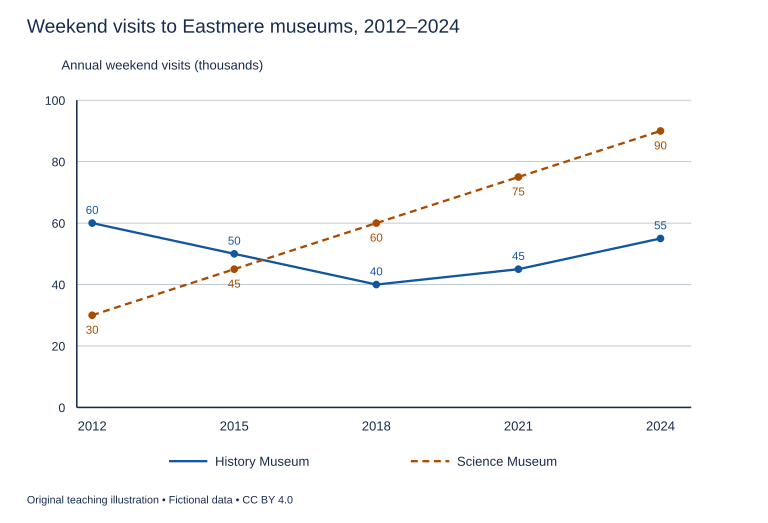
教学虚构。横轴：年份2012、2015、2018、2021、2024；纵轴：年度周末参观人次（千次）。实线History：60、50、40、45、55；虚线Science：30、45、60、75、90。连接线仅帮助阅读趋势，不代表中间年份的测量值。
任务预算（含首次审题，不额外加时）
初稿20分钟（审题规划3、写作15、检查2）；诊断15；反馈阅读与证据核查10；完整重写25；对照归档5。合计75分钟。
初稿后自评清单
- [ ] 达到最低字数；全文连贯成段，没有用项目符号代替作文。
- [ ] 概述给主要特征；数据、阶段或方位都与题图逐项相符，不推断未提供的原因。
- [ ] 每段可写出一个功能标签；例子或数据与该段要点相连。
- [ ] 圈出两处词汇搭配和两处句法疑点，先自行修正再查询或求反馈。
- [ ] 记录一项最影响理解的问题和原句证据，不填写自猜分数。
反馈与重写
打开 独立参考页（本节下方展开参考），按逐段检查和通用协议核验。重写任务：完整重写至少150词：概述含两条趋势和领先者变化；细节至少一处差距比较，删掉猜测原因。
W05 T1A 示例、反馈与重练（首答后展开）
WS-W05-T1A 独立参考页
只在初稿完成后阅读；不是唯一答案，也没有官方分数。以下是对原创示例的教学讲评，不是对学生尚未提交作文的已完成批改。
思路拆解
识别上升与先降后升；抓首尾主次转换；按2012～2015与2018～2024分段，不猜精确交叉日期。
原创示例
The line graph compares the numbers of weekend visits to the History Museum and the Science Museum in Eastmere in five selected years between 2012 and 2024. The figures are expressed in thousands of visits per year.
Overall, weekend attendance at the Science Museum increased throughout the period, whereas the History Museum experienced a decline followed by a recovery. The History Museum attracted more visits initially, but the Science Museum had become the more popular destination by 2018 and retained its lead thereafter.
The History Museum recorded 60,000 weekend visits in 2012, compared with 30,000 at the Science Museum. Three years later, the former figure had fallen to 50,000, while the latter had climbed to 45,000. The gap between the two institutions therefore narrowed from 30,000 to just 5,000 visits.
In 2018, attendance at the History Museum reached its lowest recorded level, at 40,000, while the Science Museum received 60,000 visits. Both figures subsequently rose, reaching 45,000 and 75,000 respectively in 2021, and 55,000 and 90,000 in 2024. Thus, the final difference was 35,000 visits in favour of the Science Museum.
示例正文词数：194（本项目正则计数；书信不含称呼、结束语与署名；连字符词作一词）。
逐段反馈与迁移
- P1 单位是年度周末参观人次，不是独立访客；自己引言须保留weekend。
- P2 Science持续上升，History先降后升；by 2018只表示该观测点已超过，未编造交叉日期。
- P3 两馆初始差30千，2015差5千；用former/latter时检查指代。
- P4 History谷值40千；末年差90−55=35千；不要写成History也高于起点。
常见失误
把人次当人数；把连线插值当作精确年度数据；解释为新增展馆而题面无此信息。
可执行反馈步骤
1. 先把自己的段落标为引入、概述/论点、支持、收束；分段可不同于示例，按功能核查，不照抄段数。
2. 对照上方逐段检查，逐项标“已有证据/缺失/不适用”。每条意见必须附自己的原句或缺失位置。
3. 按 反馈协议 的四维表记录；有争议的 AI 意见回题干、数据或语法依据核验。
4. 只选两项最高优先级问题执行整篇重写；保留原稿，禁止把示例替换为自己的作业。
重写任务
完整重写至少150词：概述含两条趋势和领先者变化；细节至少一处差距比较，删掉猜测原因。
完成后重新勾选 学生页（见本节上方学生题） 清单；将一处改前/改后及理由交给独立评阅者核查。真人评阅状态目前为“待安排”，不是已完成。
WS-W05-T1G 学生页：向酒店正式投诉
周次 W05｜题型 T1G｜能力点：书信目的、要点与语气
Task 1 的 A/G 分支二选一，另一分支不计入本周作业。
使用与记录
原创教学练习，非真题、非标准化模拟，难度未校准。先完成本页再打开参考页。人物、机构、经历与数据均为教学虚构。不要背诵示例。自评和 AI 反馈不能代替独立真人评分，未获得真人评阅时标记“分数未确认”。
保存：任务ID、实际日期、用时、初稿或原始录音、证据化反馈、重写/重答、三条修改理由。没有学生提交物，不得填写“已批改”或“已完成训练”。
完整题干
You stayed at the Northbridge Hotel during a conference, but the room did not match your booking. Write to the hotel manager. In your letter:
- explain what you booked and what you received
- describe how this affected your stay
- say what you would like the hotel to do.
Begin your letter: Dear Sir or Madam,
Write at least 150 words. You do not need to write any addresses. Spend about 20 minutes on this task.
任务预算（含首次审题，不额外加时）
初稿20分钟（审题规划3、写作15、检查2）；诊断15；反馈阅读与证据核查10；完整重写25；对照归档5。合计75分钟。
初稿后自评清单
- [ ] 达到最低字数；全文连贯成段，没有用项目符号代替作文。
- [ ] 三个要点均展开；称呼、目的、语气和结束语适合收信人。
- [ ] 每段可写出一个功能标签；例子或数据与该段要点相连。
- [ ] 圈出两处词汇搭配和两处句法疑点，先自行修正再查询或求反馈。
- [ ] 记录一项最影响理解的问题和原句证据，不填写自猜分数。
反馈与重写
打开 独立参考页（本节下方展开参考），按逐段检查和通用协议核验。重写任务：完整重写至少150词；用两组事实对比替换情绪形容词，保持正式、具体、合理的请求。
W05 T1G 示例、反馈与重练（首答后展开）
WS-W05-T1G 独立参考页
只在初稿完成后阅读；不是唯一答案，也没有官方分数。以下是对原创示例的教学讲评，不是对学生尚未提交作文的已完成批改。
思路拆解
正式投诉给未知姓名经理；订房承诺与实际差别→具体影响→可执行补救，不夸大法律责任。
原创示例
Dear Sir or Madam,
I am writing about my stay at the Northbridge Hotel from 12 to 14 May. I booked a quiet single room with a desk because I was attending a conference nearby. However, the room I received faced a busy road and contained only a small bedside table. My booking confirmation specifically listed a desk among the facilities.
The missing desk made it difficult to prepare my presentation in the evenings. I had to work in the hotel lobby, where conversations frequently interrupted my concentration. In addition, traffic noise kept me awake on the first night. I asked at reception about changing rooms, but was told that no suitable room was available for either night of my stay.
I would appreciate a partial refund to reflect the difference between the room advertised and the facilities provided. I have attached my booking confirmation and receipt so that you can check the details. Please also review the room descriptions on your website to prevent similar problems for other guests. I would be grateful for a written response within the next two weeks.
Yours faithfully, Alex Chen
示例正文词数：179（本项目正则计数；书信不含称呼、结束语与署名；连字符词作一词）。
逐段反馈与迁移
- P1 把预订与收到的房间对照，确认desk确在确认单中；不是泛说bad hotel。
- P2 展开工作与睡眠影响并说明已求助；时态围绕过去住宿一致。
- P3 请求部分退款、提供凭证及回复时间；不应自己宣布经理已同意。
常见失误
只表达愤怒；遗漏原订内容；以不合适的私人称呼结尾。
可执行反馈步骤
1. 先把自己的段落标为引入、概述/论点、支持、收束；分段可不同于示例，按功能核查，不照抄段数。
2. 对照上方逐段检查，逐项标“已有证据/缺失/不适用”。每条意见必须附自己的原句或缺失位置。
3. 按 反馈协议 的四维表记录；有争议的 AI 意见回题干、数据或语法依据核验。
4. 只选两项最高优先级问题执行整篇重写；保留原稿，禁止把示例替换为自己的作业。
重写任务
完整重写至少150词；用两组事实对比替换情绪形容词，保持正式、具体、合理的请求。
完成后重新勾选 学生页（见本节上方学生题） 清单；将一处改前/改后及理由交给独立评阅者核查。真人评阅状态目前为“待安排”，不是已完成。
WS-W05-T2 学生页：博物馆娱乐与教育
周次 W05｜题型 T2｜能力点：观点展开与任务回应
A/G 共用本题。
使用与记录
原创教学练习，非真题、非标准化模拟，难度未校准。先完成本页再打开参考页。人物、机构、经历与数据均为教学虚构。不要背诵示例。自评和 AI 反馈不能代替独立真人评分，未获得真人评阅时标记“分数未确认”。
保存：任务ID、实际日期、用时、初稿或原始录音、证据化反馈、重写/重答、三条修改理由。没有学生提交物，不得填写“已批改”或“已完成训练”。
完整题干
Some people think museums should mainly entertain visitors, while others believe their main purpose should be education. Discuss both views and give your own opinion. Give reasons and include relevant examples.
Write at least 250 words. Spend about 40 minutes on this task.
任务预算（含首次审题，不额外加时）
初稿40分钟（审题规划5、写作30、检查5）；诊断15；反馈阅读与证据核查10；完整重写35；对照归档5。合计105分钟。
初稿后自评清单
- [ ] 达到最低字数；全文连贯成段，没有用项目符号代替作文。
- [ ] 直接回答题目的所有问句，有始终一致的立场。
- [ ] 每段可写出一个功能标签；例子或数据与该段要点相连。
- [ ] 圈出两处词汇搭配和两处句法疑点，先自行修正再查询或求反馈。
- [ ] 记录一项最影响理解的问题和原句证据，不填写自猜分数。
反馈与重写
打开 独立参考页（本节下方展开参考），按逐段检查和通用协议核验。重写任务：整篇重写至少250词；每方至少一段充分展开，结尾明确哪一目标优先及原因。
W05 T2 示例、反馈与重练（首答后展开）
WS-W05-T2 独立参考页
只在初稿完成后阅读；不是唯一答案，也没有官方分数。以下是对原创示例的教学讲评，不是对学生尚未提交作文的已完成批改。
思路拆解
双方各讲合理性，再明确教育为目的、娱乐为手段；例子围绕展品而非泛谈学校教育。
原创示例
Museums compete with many other ways of spending leisure time, so some people believe that entertaining visitors should be their main objective. Others see them primarily as places of education. I believe education should remain the central purpose, although enjoyable presentation can help museums achieve it.
There is a strong practical argument for making museums entertaining. Visitors who find exhibitions dull may leave quickly or decide never to return. Families, in particular, may struggle to keep young children interested in long written descriptions. Interactive displays or short performances can encourage these visitors to stay and explore. For example, a model bridge that children can build and test may attract attention more effectively than a panel describing engineering principles. Entertainment can therefore make a museum accessible to people who would not normally choose to visit.
Nevertheless, attracting attention is not the same as fulfilling a museum’s purpose. Museums preserve objects and explain what those objects reveal about people, nature or technology. If spectacular effects become the priority, important information may be simplified so far that visitors gain a misleading impression. A historical exhibition, for instance, should explain uncertainty about an object’s original use rather than invent a dramatic story and present it as fact. The institution’s educational value depends partly on visitors being able to trust its explanations.
In my view, the two aims can work together, provided that entertainment supports a clear learning goal. The model bridge activity could be followed by a simple explanation of why some designs carry more weight than others. Staff could then invite visitors to test a different design. This approach makes learning enjoyable without turning the exhibition into an unrelated amusement.
Overall, museums should use entertaining methods, but education should guide their choices. Success means helping visitors understand something more clearly, rather than merely keeping them occupied for an afternoon.
示例正文词数：306（本项目正则计数；书信不含称呼、结束语与署名；连字符词作一词）。
逐段反馈与迁移
- P1 同时呈现双方并明确优先级，不以模糊both important代替观点。
- P2 展开吸引注意→停留→接触展品，桥模型与教育潜力相连。
- P3 区分注意力与可信知识；虚构历史不是必要的娱乐方式。
- P4 回到同一桥例，解释二者如何兼容；不是额外跑题方案。
- P5 重申衡量成功的标准，结尾不增加新论点。
常见失误
两方写成教育好、娱乐坏的标签；给观点却无权衡依据；编造调查比例。
可执行反馈步骤
1. 先把自己的段落标为引入、概述/论点、支持、收束；分段可不同于示例，按功能核查，不照抄段数。
2. 对照上方逐段检查，逐项标“已有证据/缺失/不适用”。每条意见必须附自己的原句或缺失位置。
3. 按 反馈协议 的四维表记录；有争议的 AI 意见回题干、数据或语法依据核验。
4. 只选两项最高优先级问题执行整篇重写；保留原稿，禁止把示例替换为自己的作业。
重写任务
整篇重写至少250词；每方至少一段充分展开，结尾明确哪一目标优先及原因。
完成后重新勾选 学生页（见本节上方学生题） 清单；将一处改前/改后及理由交给独立评阅者核查。真人评阅状态目前为“待安排”，不是已完成。
WS-W05-S1 学生页
周次W05｜Part 1专项｜能力点：描述具体展品与讨论文化价值｜30分钟
使用与记录
原创教学练习，非真题、非标准化模拟，难度未校准。先完成本页再打开参考页。人物、机构、经历与数据均为教学虚构。不要背诵示例。自评和 AI 反馈不能代替独立真人评分，未获得真人评阅时标记“分数未确认”。
保存：任务ID、实际日期、用时、初稿或原始录音、证据化反馈、重写/重答、三条修改理由。没有学生提交物，不得填写“已批改”或“已完成训练”。
操作与预算
设备与审题3分钟；首答录音6；回听及局部转写7；示例和诊断5；不看稿重答6；归档3。共30分钟。
Part 1专项题
1. Do you enjoy visiting exhibitions?
2. What kinds of objects interest you?
3. Did you visit museums as a child?
4. Do you prefer going alone or with someone?
追问：
- What did you notice on your most recent visit?
- Would your choice depend on the exhibition?
录音回听清单
- [ ] 保留首答原音，记录实际时长、是否中断、是否看稿；只报真实完成状态。
- [ ] 流利与连贯：标出两处时间戳，区分构思停顿与重复搜词，检查是否偏离问句。
- [ ] 词汇：找一处模糊词或重复表达，先解释原意再替换；不为难词改变意思。
- [ ] 语法：核对经历与习惯的时态；局部转写并更正两处妨碍理解的问题。
- [ ] 发音：不看转写听30秒，标听不清的词尾、重音或断句；没有音频不能判断发音。
- [ ] 展开：主要回答有具体情境或理由；追问后第一句回应追问的新角度。
重答要求
选择两个只有笼统判断的答案，先直接回应再加具体情境；重答一条追问，检查是否真正回应其新角度。
首答回听后才打开独立参考页（本节下方展开参考）。按反馈协议填至少三个时间戳，不以文字转写替代音频评阅。
W05 S1 示例、反馈与重练（首答后展开）
WS-W05-S1 独立参考页
原创教学示例，非真题或评分结果。未收到学生音频；以下是示例分析与待执行反馈，不能登记为已完成学生批改。
展开示例
直接回应→原因→具体情境的展开示例
I like exhibitions that show how ordinary people lived. A display of kitchen tools can interest me more than a room full of famous paintings, because I can imagine using the objects. I usually go with a friend, although I sometimes return alone if I want to read the descriptions carefully.
纯口答示例词数：51；只计MODEL标记内实际英文口答，不含标题、标签、说明。词数不能证明录音时长或流利度。
展开与反馈
本周能力：描述具体展品与讨论文化价值。
1. 示例先表态，再说明偏好理由，最后提供条件或场景。检查自己是否用一个词回答后就结束。
2. 找到一个具体细节：物品、动作、对话或地点。用自己的经历替换，保持与题卡相关，不照搬示例身份与经历。
3. 追问要重新回应，不能继续背长答。首句先回答追问，再用一条理由支持。
4. 标出一处听不清或语法影响理解的原音时间戳；先尝试最小修正。不要把自然停顿一概当成错误，或用加快语速掩盖逻辑断裂。
常见失误
空泛形容词替代具体过程；给了经历却没解释为什么重要；Part 3只有个人故事没有一般解释；AI只看转写就判断发音。逐项回原音核对，不能凭范例推断自己已达到某个分数。
可执行重答与反馈
选择两个只有笼统判断的答案，先直接回应再加具体情境；重答一条追问，检查是否真正回应其新角度。
填写反馈协议四维表，附三个时间戳和原话证据。选一个内容问题与一个语言问题先修；重答后并排听两段，记录改善与仍未解决之处。自评与AI不能替代独立真人评分；独立评阅目前待安排，分数未确认。
WS-W05-S2 学生页
周次W05｜Part 2专项｜能力点：描述具体展品与讨论文化价值｜30分钟
使用与记录
原创教学练习，非真题、非标准化模拟，难度未校准。先完成本页再打开参考页。人物、机构、经历与数据均为教学虚构。不要背诵示例。自评和 AI 反馈不能代替独立真人评分，未获得真人评阅时标记“分数未确认”。
保存：任务ID、实际日期、用时、初稿或原始录音、证据化反馈、重写/重答、三条修改理由。没有学生提交物，不得填写“已批改”或“已完成训练”。
操作与预算
准备、首答录音及追问5分钟；回听及局部转写8；示例与诊断5；关键词重组3；重答及追问5；归档4。共30分钟。
Part 2专项任务卡
Describe an exhibition you enjoyed. Say where it was, what it displayed, who you went with, and explain what made it memorable.
准备1分钟，说1～2分钟。只记5个关键词，不预写句子。
收尾追问：
- Would you visit that exhibition again?
- Which display would you recommend to a friend?
录音回听清单
- [ ] 保留首答原音，记录实际时长、是否中断、是否看稿；只报真实完成状态。
- [ ] 流利与连贯：标出两处时间戳，区分构思停顿与重复搜词，检查是否偏离问句。
- [ ] 词汇：找一处模糊词或重复表达，先解释原意再替换；不为难词改变意思。
- [ ] 语法：核对经历与习惯的时态；局部转写并更正两处妨碍理解的问题。
- [ ] 发音：不看转写听30秒，标听不清的词尾、重音或断句；没有音频不能判断发音。
- [ ] 展开：主要回答有具体情境或理由；追问后第一句回应追问的新角度。
重答要求
用五个关键词重答完整任务卡1～2分钟，再答两条追问；补一处具体行动或细节并删一处无关背景。比较首答与重答，不背示例。
首答回听后才打开独立参考页（本节下方展开参考）。按反馈协议填至少三个时间戳，不以文字转写替代音频评阅。
W05 S2 示例、反馈与重练（首答后展开）
WS-W05-S2 独立参考页
原创教学示例，非真题或评分结果。未收到学生音频；以下是示例分析与待执行反馈，不能登记为已完成学生批改。
展开示例
原创长答示例（时长须以个人实际录音测量）
I enjoyed a small exhibition about local food traditions at a town museum. I went there with a friend last autumn, mainly because it was raining and we wanted something to do indoors.
The exhibition contained old cooking tools, photographs of markets and recordings of people describing family recipes. One display showed how bread was made in a communal oven. I had assumed that each family cooked entirely at home, so it surprised me to learn about a place where neighbours shared equipment.
My friend recognised a tool that her grandmother still used. She explained how it worked, and suddenly the objects felt less distant. We spent quite a long time comparing the photographs with shops we knew in the town today.
What made the visit memorable was this connection between the displays and ordinary life. The exhibition was not large or expensive-looking, but it gave us something specific to discuss afterwards. I left wanting to ask older relatives about their own memories of cooking.
纯口答示例词数：165；只计MODEL标记内实际英文口答，不含标题、标签、说明。词数不能证明录音时长或流利度。
展开与反馈
本周能力：描述具体展品与讨论文化价值。
1. 长答示例按背景、行动/观察、变化与意义组织。每段都推进内容；检查自己是否只有背景而没有具体事件。
2. 找到一个具体细节：物品、动作、对话或地点。用自己的经历替换，保持与题卡相关，不照搬示例身份与经历。
3. 追问要重新回应，不能继续背长答。首句先回答追问，再用一条理由支持。
4. 标出一处听不清或语法影响理解的原音时间戳；先尝试最小修正。不要把自然停顿一概当成错误，或用加快语速掩盖逻辑断裂。
常见失误
空泛形容词替代具体过程；给了经历却没解释为什么重要；Part 3只有个人故事没有一般解释；AI只看转写就判断发音。逐项回原音核对，不能凭范例推断自己已达到某个分数。
可执行重答与反馈
用五个关键词重答完整任务卡1～2分钟，再答两条追问；补一处具体行动或细节并删一处无关背景。比较首答与重答，不背示例。
填写反馈协议四维表，附三个时间戳和原话证据。选一个内容问题与一个语言问题先修；重答后并排听两段，记录改善与仍未解决之处。自评与AI不能替代独立真人评分；独立评阅目前待安排，分数未确认。
WS-W05-S3 学生页
周次W05｜三部分全流程｜能力点：描述具体展品与讨论文化价值｜60分钟
使用与记录
原创教学练习，非真题、非标准化模拟，难度未校准。先完成本页再打开参考页。人物、机构、经历与数据均为教学虚构。不要背诵示例。自评和 AI 反馈不能代替独立真人评分，未获得真人评阅时标记“分数未确认”。
保存：任务ID、实际日期、用时、初稿或原始录音、证据化反馈、重写/重答、三条修改理由。没有学生提交物，不得填写“已批改”或“已完成训练”。
操作与预算
D5：设备与流程准备2分钟，连续首答11～14分钟，余14～17分钟完整回听标记，共30分钟。D6：局部转写诊断10，阅读示例与调整5，重答与新追问10，对照归档5，共30分钟。合计60分钟。
连续三部分全流程（首答不可看参考）
找同伴读题，或独练逐题揭示。完整首答11～14分钟，中途不暂停纠错。模拟同伴不是认证考官；自行读题的练习记录不能冒充真实面试。
Part 1：4～5分钟
1. What kind of area do you live in?
2. Is there an interesting building near your home?
3. Do you enjoy taking photographs of buildings?
4. Have you ever shown a visitor around your area?
5. Do you like looking at old photographs?
6. Where do you keep your photographs?
可按回答追加 Why? / Can you give an example? 到时转下部分，不强行说完全部备用问题。
Part 2：3～4分钟（含准备）
Describe a historical building you have visited. Say where it is, when you visited, what you saw there, and explain why you remember the visit.
准备1分钟，连续说1～2分钟。收尾追问：
- Is the building still used today?
- Would you like to learn more about its history?
Part 3：4～5分钟
1. Why do communities preserve old buildings?
2. Should every old building be protected?
3. How can a historic building remain useful today?
4. Who should pay for preservation?
根据回答追加追问：
- What if repairs are more expensive than a replacement?
- Could a new use damage a building’s character?
录音回听清单
- [ ] 保留首答原音，记录实际时长、是否中断、是否看稿；只报真实完成状态。
- [ ] 流利与连贯：标出两处时间戳，区分构思停顿与重复搜词，检查是否偏离问句。
- [ ] 词汇：找一处模糊词或重复表达，先解释原意再替换；不为难词改变意思。
- [ ] 语法：核对经历与习惯的时态；局部转写并更正两处妨碍理解的问题。
- [ ] 发音：不看转写听30秒，标听不清的词尾、重音或断句；没有音频不能判断发音。
- [ ] 展开：主要回答有具体情境或理由；追问后第一句回应追问的新角度。
重答要求
重答最弱的一个Part 1问题、完整Part 2及一个Part 3问题，再答一条未用追问。用不同细节或补一个例外，确认不是复述范例；局部重答不另计全流程。
首答回听后才打开独立参考页（本节下方展开参考）。按反馈协议填至少三个时间戳，不以文字转写替代音频评阅。
W05 S3 示例、反馈与重练（首答后展开）
WS-W05-S3 独立参考页
原创教学示例，非真题或评分结果。未收到学生音频；以下是示例分析与待执行反馈，不能登记为已完成学生批改。
展开示例
Part 2原创展开示例（个人语速不同，不能以词数推录音时长）
I remember visiting an old railway station during a short holiday. It had been turned into a local history centre, but the large clock and the wooden ticket counter were still there. I went with my cousin on a quiet weekday afternoon.
At first, I was most interested in the building itself. The waiting room had a very high ceiling, and the windows let in much more light than I expected. Then a volunteer showed us a photograph of the station when it was crowded with passengers carrying baskets and suitcases.
That photograph changed how I looked at the room. I began imagining the noise and movement that had once filled the space. We also saw a timetable with journeys that took far longer than similar trips today.
I remember the visit because the building made the past feel connected to a place I could actually stand in. I did not learn every date, but I understood a little more about how people travelled and how important the station had been to the town.
Part 3观点→理由→条件展开示例
Preserving an old building can help people understand how a place developed. However, age alone may not justify a costly restoration. I would consider whether the building has a distinctive history and whether it can still serve a useful purpose. A former station used as a community hall, for example, might retain its character while meeting a current need.
纯口答示例词数：233；只计MODEL标记内实际英文口答，不含标题、标签、说明。词数不能证明录音时长或流利度。
展开与反馈
本周能力：描述具体展品与讨论文化价值。
1. 长答示例按背景、行动/观察、变化与意义组织。每段都推进内容；检查自己是否只有背景而没有具体事件。
2. 找到一个具体细节：物品、动作、对话或地点。用自己的经历替换，保持与题卡相关，不照搬示例身份与经历。
3. Part 3示例不把个人选择强加给所有人；先讲机制，再说明条件或例外。检查自己的追问答案是否直接回应新问题。
4. 标出一处听不清或语法影响理解的原音时间戳；先尝试最小修正。不要把自然停顿一概当成错误，或用加快语速掩盖逻辑断裂。
常见失误
空泛形容词替代具体过程；给了经历却没解释为什么重要；Part 3只有个人故事没有一般解释；AI只看转写就判断发音。逐项回原音核对，不能凭范例推断自己已达到某个分数。
可执行重答与反馈
重答最弱的一个Part 1问题、完整Part 2及一个Part 3问题，再答一条未用追问。用不同细节或补一个例外，确认不是复述范例；局部重答不另计全流程。
填写反馈协议四维表，附三个时间戳和原话证据。选一个内容问题与一个语言问题先修；重答后并排听两段，记录改善与仍未解决之处。自评与AI不能替代独立真人评分；独立评阅目前待安排，分数未确认。
许可
原创文字：RayXBuilds and contributors，CC BY 4.0。此页由已验收分课汇编，调整了标题和导航；题干、正文和答案内容保留。公开第三方音频未包含。
回到顶部
U12 第6周：长篇阅读、写作与口语
本页为已独立核验的原创文字课程。先完成学生题目，再展开对应参考。非真题、非标准化模考，不换算雅思分数。听力尚未补齐，本页不代表全科课程已完成。
每周选A或G类Task 1一题，加Task 2及三次口语。参考范文不是学生已完成作业，仍须提交初稿、录音和重写，独立真人评分另行安排。
阅读每周180分钟（60分钟首次限时、120分钟证据精读与延迟复测），写作180分钟、口语120分钟。词汇60分钟、听力180分钟另列；新增完整听力未验收，不能勾整周完成。
W08如落实正式T08模拟，替换相应首答时段，不能重复计量；本页原创技能卷不能充当正式陌生卷。后续周数与达标规则见 U04。
阅读：首答不查词
R-W06-01 · Two Routes to a Cooler Delivery
W06｜正文 811 词｜13 题｜篇章：过程比较：相同终点、不同能耗路径（6段）
本课必做60分钟：首答20、证据复盘20、词汇长句10、48小时后复测10。每周三课180分钟，合卷首答替代单课首答，不重复计算。开放短文选做另加15分钟。
本项目原创虚构教学情境，人物、地点、历史事件和案例数据均非真实研究或史料。科学解释只讨论文内说明的模型与条件。非雅思真题或标准化模考；正确数不换算雅思等级。许可：CC BY 4.0 — RayXBuilds and contributors。
能力点：识别论证关系、区分作者与引述者、条件与因果、精确定位。初读不查词，完成后打开独立答案页。
Passage
A In a fictional design exercise, two teams must transport identical boxes of temperature-sensitive wax models across a town. The models are not food or medicine, and the exercise makes no claim about safe storage of either. Team Blue proposes a powered compartment that continually removes heat. Team Amber proposes an insulated box containing packs cooled before departure. Both teams initially advertise the temperature at the end of the trip. That number matters, but it hides most of the process. A box might finish cool after becoming warm halfway through, and two equally cool boxes might have required very different work before departure. A fair comparison must therefore follow a route through time as well as across the street map. It must also define what the teams are trying to preserve rather than treating coldness as valuable without a purpose.
B The wax models in this exercise lose their intended shape if they remain above a specified threshold for too long. The assessment consequently records both temperature and time. A brief rise and a sustained rise are not treated as equivalent merely because their maximum readings match. Each box carries a temperature logger, and the teams agree where it will sit before either journey begins. Placing a device against a cooling pack would describe that small location rather than the air around the models. Position is part of the measurement, not an incidental detail that can be decided afterwards. The logger itself does not explain why a change occurred. Its record must be read alongside opening times, stops and other events during the journey before the teams can connect an observed pattern to a plausible cause.
C Blue's powered system can respond while travelling. If the lid is opened and warmer air enters, the cooling unit may remove the added heat, provided it has sufficient power and time. That capacity is not unlimited. A control setting describes a desired condition, not proof that the condition has been achieved throughout the compartment. Blue must account for the energy used by the unit and for the possibility of a power interruption. Its team also measures the initial pull-down period: starting with a warm compartment and bringing it to the target condition is part of the job. Ignoring that period would make the system seem more economical simply by beginning the accounting after some of its work had already been done elsewhere in the schedule.
D Amber's method stores some of the preparation in the cooled packs. During the trip, incoming heat reduces the protection they can continue to provide. Good insulation slows this process but does not make the reserve endless. Amber therefore weighs its cooling packs and specifies their condition at departure. The energy used to cool them belongs in the comparison, even though it is consumed away from the delivery vehicle. A system without a plug during travel is not necessarily a system without an energy cost. Equally, the absence of active control does not prove that it will perform badly over a short, predictable journey. The relevant question is whether the prepared reserve remains sufficient under the conditions actually tested, including the time spent waiting at the destination before the models are unpacked.
E The first comparison goes wrong when Blue follows an empty road early in the morning and Amber travels later through traffic. The teams have changed the journey as well as the cooling method. They repeat the exercise using a route card that specifies departure conditions, planned stops and the duration of lid openings. The card cannot make two real journeys perfectly identical, so unexpected events are recorded rather than concealed. To examine failure, they also run a separate test with a deliberately extended stop. This is not mixed into the ordinary performance average. It asks a different question: how much margin remains when the expected schedule fails? A design that succeeds on its planned route may still need a clear limit beyond which its performance cannot be assumed.
F At the end, the teams prepare an energy ledger covering preparation, travel and recovery for the next trip. They pair it with the logger record and notes about the models' condition. The exercise produces no universal winner. Blue may suit a journey with uncertain interruptions, while Amber may suit a shorter route whose demands fit its prepared reserve. Those conclusions remain conditional on the tested designs. The lesson is not that every comparison must collect every imaginable measurement. It is that the boundary of the comparison should include the work necessary to provide the claimed service. Moving a cost outside the vehicle or outside the recorded hour does not make it disappear. A useful evaluation follows the service far enough to reveal where each design obtains its advantage and where that advantage might end. Neither team can claim an advantage simply by choosing an accounting period that omits its own most demanding stage.
Questions
Choose ONE answer, A, B, C or D.
1. Why is the final temperature insufficient?
A. It cannot be measured B. It conceals earlier conditions and preparation C. It measures only vehicle speed D. It proves both methods failed
2. A logger next to a pack may mislead because
A. wax always touches the pack B. the route is too short C. all loggers create heat D. its location is unrepresentative
3. The extended-stop test primarily examines
A. supplier prices B. normal average speed C. the popularity of the vehicle D. remaining margin under disruption
4. The author’s final comparison is
A. an argument against measurement B. a universal victory for Blue C. conditional on service and design D. a universal victory for Amber
Do the following statements agree with the writer's views? Write YES, NO or NOT GIVEN. YES = the writer agrees; NO = the writer expresses the opposite view; NOT GIVEN = the writer's view is not stated. Do not use outside knowledge.
5. Cooling performed before the journey can legitimately be ignored.
6. A controller setting guarantees uniform achievement of the desired temperature.
7. Amber’s designers were more experienced than Blue’s.
8. It is unnecessary to measure every imaginable variable in every comparison.
Complete the sentences. Choose NO MORE THAN 3 WORDS FROM THE PASSAGE for each answer. Do not change word forms.
9. Each box contains a ______ to record conditions over time.
10. Blue measures its initial ______ before the normal journey.
11. Amber records the mass and starting condition of its ______.
12. Planned stops and lid-opening durations appear on a ______.
13. Preparation and recovery costs are collected in an ______.
复盘
必做：给每道错题标记“定位/作者立场/范围/语法/词数”，抄最短证据；用一行箭头概括本文论证或过程。48小时后重做错题与两道正确题，检查是否仍能指出证据。
选做（15分钟，80–100词）：Choose a boundary for comparing two delivery systems and justify it.
R-W06-01 答案、证据与精读（首答后展开）
R-W06-01 · 独立答案与证据
来源与许可同学生页。先完成再核对。可接受答案由 accepted_answers 明确列出；只忽略大小写和首尾空格，不自行删词。开放复盘不计入客观正确数。
1. B｜段落 A｜证据：“it hides most of the process”
B同时覆盖时间过程与前置成本。
2. D｜段落 B｜证据：“describe that small location rather than the air around the models”
不是断言设备本身无效。
3. D｜段落 E｜证据：“how much margin remains when the expected schedule fails”
专门压力条件，不混入常规平均。
4. C｜段落 F｜证据：“conditional on the tested designs”
作者不推广为技术类别的绝对优劣。
5. NO｜段落 D｜证据：“belongs in the comparison”
移出车辆不等于成本消失。
6. NO｜段落 C｜证据：“not proof that the condition has been achieved”
设定与实现有别。
7. NOT GIVEN｜段落 A｜证据：“two teams must transport identical boxes”
未比较经验。
8. YES｜段落 F｜证据：“not that every comparison must collect every imaginable measurement”
作者明确限制全面测量的要求。
9. temperature logger / logger / device｜段落 B｜证据：“carries a temperature logger”
temperature logger、logger 和 device 均接受。B 段的 Placing a device against a cooling pack 用 device 回指记录设备；a device 语法正确且为一词原文答案。setting 不是设备。
10. pull-down period / period / pull-down｜段落 C｜证据：“initial pull-down period”
initial 已提供；pull-down period、period 及作过程名词的 pull-down 均符合语义和字数。连字符词计一词。
11. cooling packs / cooled packs / packs｜段落 D｜证据：“weighs its cooling packs”
D 同时使用 cooled packs 和 cooling packs 指同一组储冷包，两种词组及中心词 packs 均接纳。
12. route card / card｜段落 E｜证据：“using a route card”
具体信息载体；ledger 记录能量而非行程规程。
13. energy ledger｜段落 F｜证据：“prepare an energy ledger”
ledger 单独不能接 an；此处不接受它。
词汇与长句
- threshold：阈值
- compartment：隔舱
- reserve：储备量
- ledger：分类记账表
> A system without a plug during travel is not necessarily a system without an energy cost.
not necessarily 非必然，不等于一定更耗能。
> Moving a cost outside the vehicle or outside the recorded hour does not make it disappear.
动名词短语作主语，make it disappear 为使役结构。
开放任务参考
纳入准备、途中及恢复；评价终点和中途，别把文内蜡模型规则推广到食品药品。
标准：观点有文内依据，保留条件和范围，推断明确标注；不存在唯一措辞。
R-W06-02 · When the Town Agreed on Noon
W06｜正文 833 词｜13 题｜篇章：虚构历史发展：同步需求与社会后果（7段）
本课必做60分钟：首答20、证据复盘20、词汇长句10、48小时后复测10。每周三课180分钟，合卷首答替代单课首答，不重复计算。开放短文选做另加15分钟。
本项目原创虚构教学情境，人物、地点、历史事件和案例数据均非真实研究或史料。科学解释只讨论文内说明的模型与条件。非雅思真题或标准化模考；正确数不换算雅思等级。许可：CC BY 4.0 — RayXBuilds and contributors。
能力点：识别论证关系、区分作者与引述者、条件与因果、精确定位。初读不查词，完成后打开独立答案页。
Passage
A Before the imaginary town of Selden adopted a common clock, noon was a flexible arrangement. Farmers judged the working day partly through light and tasks, while shopkeepers followed bells from whichever tower they could hear. The towers did not always agree, but disagreement mattered less when appointments were expressed as a period rather than a precise minute. It would be misleading to describe these residents as people without time. They coordinated activities through conventions suited to particular relationships and distances. What they lacked was not an awareness of sequence or duration, but a single reference capable of organising increasingly connected journeys. The pressure for change grew when an activity in one part of town began to depend on an event occurring elsewhere at a specific moment.
B The first such pressure came from a river ferry. When carts arrived shortly after departure, the operator either waited and delayed people already aboard or left and disappointed the newcomers. Publishing a departure hour did little while customers read different clocks. The operator painted a board beside the landing and declared that departures would follow the clock above the grain market. This was a practical choice because its face could be seen from the river road. It did not establish that the market mechanism was technically superior to every other clock. A common reference can improve coordination even when the chosen instrument is imperfect, provided its limitations are understood and its authority is accepted by the people using it.
C Later, a workshop began paying a group of workers according to recorded hours. Its manager wanted a bell that sounded at the same moment as the market clock, but the building stood beyond hearing distance. A messenger initially carried a written time note each morning. By the time the note arrived, however, time had moved on. The messenger's journey had to be included in setting the workshop clock. This simple problem made delay visible as part of transmission. Copying a value faithfully was not enough if the value described a condition that continued changing. The messenger system could function only by attaching some estimate of travel time to the information being carried across the town.
D A mechanical signal was eventually installed between the buildings in the fictional narrative. It allowed the market keeper to release a flag visible from the workshop roof. The receiver adjusted the local clock when the flag fell. The signal reduced one source of delay but introduced new dependencies: someone had to watch, visibility had to be adequate, and the sending mechanism had to work. On foggy days, the old messenger returned. The newer system did not erase the older one. Instead, reliable coordination depended on knowing when to switch between them. This is a more useful account of technical change than a sequence in which each invention instantly makes every previous practice irrelevant to the people who still need the service.
E Agreement about the reference did not settle agreement about fairness. Workers complained that the workshop bell sometimes sounded before the minute indicated by the clock they passed on their way in. The manager replied that only the workshop clock counted for wages. The argument concerned who bore the cost of disagreement, not merely which dial was more accurate. A rule could be technically consistent and still place an avoidable burden on people who could not inspect the official clock before arriving. The town eventually required the workshop to display a public dial near its entrance. This made the relevant reference visible but did not answer every question about how working time should be valued or counted.
F The clock keeper maintained an adjustment book, noting when the market clock was corrected and why. Without that record, an observer might interpret a sudden change in the apparent length of a journey as a change in the journey itself. An announced correction helped distinguish changes in measurement from changes in what was measured. The keeper also used a notice card to warn the ferry operator before a planned adjustment. This small administrative practice mattered because a technically better clock could still disrupt coordination if its displayed time changed unexpectedly. Accuracy and continuity were related goals, but they were not automatically identical in a system whose users planned their actions around a shared display.
G By the end of Selden's story, residents had not abandoned every older way of organising life. A gardener still spoke of work before sunset, and families still arranged visits around meals. The common clock served connections that required a shared reference; it did not replace every useful local convention. The history therefore concerns an expanding set of agreements rather than the triumph of precise time over confusion. Instruments, signals and rules developed together. To explain the change through the clock mechanism alone would overlook the people who maintained it, announced its corrections and accepted its authority. Standardisation was accomplished when different users could coordinate their actions through the reference, not merely when identical numbers appeared on several faces at one convenient instant.
Questions
Do the following statements agree with the writer's views? Write YES, NO or NOT GIVEN. YES = the writer agrees; NO = the writer expresses the opposite view; NOT GIVEN = the writer's view is not stated. Do not use outside knowledge.
1. Older coordination practices necessarily disappear when a new signal is introduced.
2. Technical consistency alone guarantees a fair timekeeping rule.
3. An unannounced improvement in clock accuracy can disrupt users.
4. The writer thinks the ferry operator should have owned all the town clocks.
Complete the summary. Choose NO MORE THAN 3 WORDS FROM THE PASSAGE for each answer. Do not change word forms.
Ferry departures followed the clock above the (5) ______. The workshop first received a written (6) ______ by messenger. A later signal used a falling (7) ______. Corrections were recorded in an (8) ______. A (9) ______ warned the ferry operator of planned changes.
Choose ONE answer, A, B, C or D.
10. Why did early clock disagreement matter less?
A. Travel had been prohibited B. Nobody arranged meetings C. Appointments often used periods rather than precise minutes D. All towers were equally loud
11. Why was the market clock initially chosen?
A. It was the only clock B. It belonged to the ferry operator C. It had proven perfect accuracy D. Its face was visible from the river road
12. The messenger example highlights
A. the value of handwriting B. the impossibility of all coordination C. the abolition of wages D. delay while changing information is transmitted
13. The public dial primarily addressed
A. ferry capacity B. mechanical repair C. fog D. access to the reference used for wages
复盘
必做：给每道错题标记“定位/作者立场/范围/语法/词数”，抄最短证据；用一行箭头概括本文论证或过程。48小时后重做错题与两道正确题，检查是否仍能指出证据。
选做（15分钟，80–100词）：Explain one conflict between accuracy and coordination.
R-W06-02 答案、证据与精读（首答后展开）
R-W06-02 · 独立答案与证据
来源与许可同学生页。先完成再核对。可接受答案由 accepted_answers 明确列出；只忽略大小写和首尾空格，不自行删词。开放复盘不计入客观正确数。
1. NO｜段落 D｜证据：“did not erase the older one”
雾天仍用信使。
2. NO｜段落 E｜证据：“technically consistent and still place an avoidable burden”
明确反例。
3. YES｜段落 F｜证据：“could still disrupt coordination”
准确与连续性不是同一目标。
4. NOT GIVEN｜段落 G｜证据：“an expanding set of agreements”
没有产权主张。
5. grain market / market｜段落 B｜证据：“clock above the grain market”
market 是合理短答；river road 是观察位置。
6. time note / note｜段落 C｜证据：“a written time note”
题干已给 written，接受 time note 或 note；不要重复 written。
7. flag｜段落 D｜证据：“release a flag”
被释放的物体而非信使。
8. adjustment book｜段落 F｜证据：“maintained an adjustment book”
an 要求后接元音音素；adjustment book 合适，单独 book 不能接 an。notice card 是通知而非修正记录。
9. notice card / card｜段落 F｜证据：“used a notice card”
向ferry operator预告的载体。
10. C｜段落 A｜证据：“appointments were expressed as a period”
不是没有协调需求。
11. D｜段落 B｜证据：“its face could be seen from the river road”
选取可见性，不等于技术绝对优胜。
12. D｜段落 C｜证据：“time had moved on”
动态信息必须考虑传输延迟。
13. D｜段落 E｜证据：“made the relevant reference visible”
没有解决全部公平争议。
词汇与长句
- reference：参照标准
- transmission：传递
- continuity：连续性
- dial：钟面
> Copying a value faithfully was not enough if the value described a condition that continued changing.
if限定条件；that修饰condition，关键是被测量状态持续变化。
> Instruments, signals and rules developed together.
三个并列主语，解释标准化是技术与制度共同形成。
开放任务参考
F修正若未预告可干扰安排；C传递延迟说明即使抄写准确也未必同步。
标准：观点有文内依据，保留条件和范围，推断明确标注；不存在唯一措辞。
R-W06-03 · A Machine That Sorts the Letters
W06｜正文 808 词｜14 题｜篇章：观点争论：自动分类的四个评价维度（5段）
本课必做60分钟：首答20、证据复盘20、词汇长句10、48小时后复测10。每周三课180分钟，合卷首答替代单课首答，不重复计算。开放短文选做另加15分钟。
本项目原创虚构教学情境，人物、地点、历史事件和案例数据均非真实研究或史料。科学解释只讨论文内说明的模型与条件。非雅思真题或标准化模考；正确数不换算雅思等级。许可：CC BY 4.0 — RayXBuilds and contributors。
能力点：识别论证关系、区分作者与引述者、条件与因果、精确定位。初读不查词，完成后打开独立答案页。
Passage
A The fictional city of Neral receives letters about broken lights, missed collections and damaged pavements. Clerks read each letter and send it to a department. A proposed text classifier would suggest a destination by comparing its wording with earlier examples. The proposal is modest in one respect: the machine would not repair a light or decide whether a complaint was justified. Yet suggesting a destination is consequential. A misdirected letter can wait unnoticed, and a request that mentions two problems may belong to no single familiar category. The writer's starting point is that automation should be judged by the service people actually receive, not just by the number of labels produced. This does not require opposing the new system. It requires specifying the task honestly enough that a fast answer to one question is not mistaken for an answer to a different one. A tool that sorts efficiently can still leave a citizen unable to obtain a response.
B Software developer Lina Ross argues that the classifier should be allowed to express uncertainty. A message using unfamiliar language should not be forced into the closest available category merely to maintain a high completion rate. Lina proposes a review queue for cases in which the system cannot make a sufficiently reliable suggestion. She distinguishes a refusal to guess from a failed service: a carefully routed human review may be better than an immediate confident error. However, the queue must be staffed. Moving difficult cases into a box called review does not resolve them. Lina would measure how long they remain there and whether their eventual destinations are appropriate. She also wants examples with more than one issue kept visible during testing, because removing awkward messages would produce an attractive result on a task simpler than the city actually faces in its daily correspondence.
C Service manager Omar Kent focuses on the existing departments. If clerks previously used different labels for the same kind of request, those records cannot be treated as an unquestionable answer key. Omar proposes a shared definition of each destination before the team trains or evaluates the tool. He does not expect perfect agreement about every letter. Instead, disputed examples should reveal where responsibilities overlap. An apparent machine error might expose an unclear division of work rather than a failure to recognise words. Omar therefore wants a handover rule for requests spanning several departments. His main concern is organisational coherence: the city should not ask software to make distinctions that its own staff cannot explain consistently to one another. Clarifying these distinctions would be useful even if the classifier were never installed, because people sorting letters manually face the same overlapping responsibilities.
D Community adviser Pia Chen asks who appears in the examples. Letters from confident frequent correspondents may be longer and use the city's preferred vocabulary. People writing briefly or describing a problem indirectly could be underrepresented. Pia would test the system on different ways of expressing the same need, including requests written without official department names. She is not proposing that every citizen be taught to sound like a clerk. On the contrary, she considers that requirement a transfer of work from the institution to the people it is meant to serve. She also wants a visible correction route: someone whose message reaches the wrong destination should be able to challenge that outcome without understanding how the classifier works. An explanation consisting only of a technical score would not meet that need. The citizen needs to know what action can be taken next and who is responsible for taking it.
E Evaluator Tomas Reed warns against a comparison that uses carefully prepared messages for the machine and ordinary daily mail for clerks. Both methods should encounter comparable requests, including ambiguous ones. He would count time to a meaningful response, not just time to the first label, and would follow letters that moved between departments. His position brings the debate back to the writer's initial distinction between sorting and service. Lina's uncertainty handling, Omar's definitions and Pia's correction route address different parts of that journey. None can be replaced by a single average accuracy figure. Nor does the need for them prove that the existing manual system is satisfactory. The appropriate comparison asks whether the proposed arrangement improves the whole process, including what happens when it is wrong. A classifier can be a useful component without becoming the final authority over the meaning of a citizen's request. In this case, the city decides to trial suggestions alongside clerks before changing any public submission route, while preserving an explicit record of disagreements for later review. The trial also preserves the original letters, so that a later investigator can distinguish a disputed label from the wording that prompted it. Without that link, a table of successful and unsuccessful outcomes would be difficult to question, even if its arithmetic were completely correct.
Questions
Choose ONE answer, A, B, C or D.
1. The writer’s central distinction is between
A. letters and email B. classification and effective service C. software and mathematics D. lighting and pavements
2. Why can historical labels be problematic?
A. They are always accurate B. They contain no words C. They may reflect inconsistent departmental definitions D. They were all written by software
3. What is wrong with removing awkward messages from tests?
A. It makes the tested task simpler than the real task B. It proves uncertainty is impossible C. It guarantees slow replies D. It increases the real workload
4. What does the city initially decide to do?
A. Eliminate clerks B. Trial suggestions alongside clerks C. Make citizens choose technical scores D. Stop recording errors
Do the following statements agree with the writer's views? Write YES, NO or NOT GIVEN. YES = the writer agrees; NO = the writer expresses the opposite view; NOT GIVEN = the writer's view is not stated. Do not use outside knowledge.
5. The number of labels is sufficient to judge public service quality.
6. Uncertainty handling removes the need to staff a review queue.
7. The existence of automation problems proves the manual system works well.
8. The classifier costs less to maintain than the old system.
9. A useful classifier need not have final authority over a citizen’s meaning.
Match each statement with the person who expresses that view. Write a letter. You may use any letter more than once.
- A: Lina Ross
- B: Omar Kent
- C: Pia Chen
- D: Tomas Reed
10. An uncertain case should be referred instead of forced into a category.
11. Departments need definitions they can explain consistently.
12. Citizens should not need to adopt official vocabulary to obtain service.
13. Evaluation should follow the time until a meaningful response.
14. People need a practical route to challenge a wrong destination.
复盘
必做：给每道错题标记“定位/作者立场/范围/语法/词数”，抄最短证据；用一行箭头概括本文论证或过程。48小时后重做错题与两道正确题，检查是否仍能指出证据。
选做（15分钟，80–100词）：Propose two criteria beyond classification accuracy.
R-W06-03 答案、证据与精读（首答后展开）
R-W06-03 · 独立答案与证据
来源与许可同学生页。先完成再核对。可接受答案由 accepted_answers 明确列出；只忽略大小写和首尾空格，不自行删词。开放复盘不计入客观正确数。
1. B｜段落 A｜证据：“not just by the number of labels produced”
其余均非全文论旨。
2. C｜段落 C｜证据：“clerks previously used different labels”
历史标签非天然金标准。
3. A｜段落 B｜证据：“a task simpler than the city actually faces”
目标是代表真实任务，不是只看整洁数据。
4. B｜段落 E｜证据：“trial suggestions alongside clerks”
不是直接全自动接管。
5. NO｜段落 A｜证据：“not just by the number of labels produced”
作者反对单一产出指标。
6. NO｜段落 B｜证据：“the queue must be staffed”
作者明确认可实际处理需求。
7. NO｜段落 E｜证据：“Nor does the need for them prove”
不能反向推断。
8. NOT GIVEN｜段落 E｜证据：“proposed arrangement improves the whole process”
无维护成本比较。
9. YES｜段落 E｜证据：“without becoming the final authority”
作者结论明确。
10. A｜段落 B｜证据：“should not be forced into the closest available category”
Lina是拒绝猜测与复核。
11. B｜段落 C｜证据：“a shared definition of each destination”
Omar组织分工。
12. C｜段落 D｜证据：“not proposing that every citizen be taught to sound like a clerk”
Pia用户表达权。
13. D｜段落 E｜证据：“count time to a meaningful response”
Tomas端到端评价。
14. C｜段落 D｜证据：“a visible correction route”
Pia强调可行动纠错；可重复C。
词汇与长句
- classifier：分类器
- underrepresented：代表不足的
- handover：移交
- ambiguous：存在多种解释的
> Moving difficult cases into a box called review does not resolve them.
动名词作主语；called review 后置修饰box，标签不是实际解决。
> A tool that sorts efficiently can still leave a citizen unable to obtain a response.
that 定语从句；leave +宾语+unable 描述结果，局部效率不保证最终回应。
开放任务参考
可选回复耗时、复核队列、纠错通道和跨部门交接；用对应人物证据支持。
标准：观点有文内依据，保留条件和范围，推断明确标注；不存在唯一措辞。
写作与口语：Task 1双分支择一
WS-W06-T1A 学生页：陶瓷杯制作流程
周次 W06｜题型 T1A｜能力点：流程顺序与概述
Task 1 的 A/G 分支二选一，另一分支不计入本周作业。
使用与记录
原创教学练习，非真题、非标准化模拟，难度未校准。先完成本页再打开参考页。人物、机构、经历与数据均为教学虚构。不要背诵示例。自评和 AI 反馈不能代替独立真人评分，未获得真人评阅时标记“分数未确认”。
保存：任务ID、实际日期、用时、初稿或原始录音、证据化反馈、重写/重答、三条修改理由。没有学生提交物，不得填写“已批改”或“已完成训练”。
完整题干
The diagram illustrates a small workshop’s process for producing ceramic mugs. Summarise the information by selecting and reporting the main features, and make comparisons where relevant.
Write at least 150 words. Spend about 20 minutes on this task.
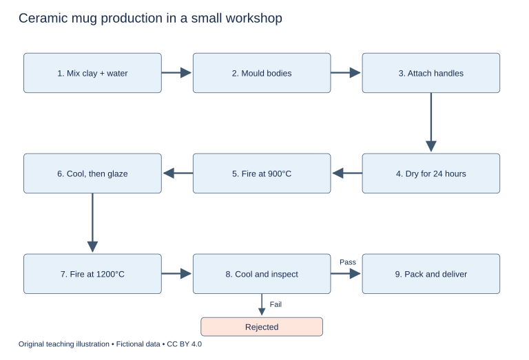
教学虚构工坊流程，非实操安全指南。主流程编号1～9：1混合黏土与水→2模具成形杯身→3接杯柄→4架上干燥24小时→5初烧900℃→6冷却后浸釉→7二次烧制1200℃→8冷却并检查→9合格品包装发货。第8步不合格者另分支“Rejected”，无回收箭头。
任务预算（含首次审题，不额外加时）
初稿20分钟（审题规划3、写作15、检查2）；诊断15；反馈阅读与证据核查10；完整重写25；对照归档5。合计75分钟。
初稿后自评清单
- [ ] 达到最低字数；全文连贯成段，没有用项目符号代替作文。
- [ ] 概述给主要特征；数据、阶段或方位都与题图逐项相符，不推断未提供的原因。
- [ ] 每段可写出一个功能标签；例子或数据与该段要点相连。
- [ ] 圈出两处词汇搭配和两处句法疑点，先自行修正再查询或求反馈。
- [ ] 记录一项最影响理解的问题和原句证据，不填写自猜分数。
反馈与重写
打开 独立参考页（本节下方展开参考），按逐段检查和通用协议核验。重写任务：完整重写至少150词；使用被动语态但注意主谓一致；按图中箭头逐步核验，删掉无依据的时间或机制。
W06 T1A 示例、反馈与重练（首答后展开）
WS-W06-T1A 独立参考页
只在初稿完成后阅读；不是唯一答案，也没有官方分数。以下是对原创示例的教学讲评，不是对学生尚未提交作文的已完成批改。
思路拆解
概述线性生产+两次烧制+末端分支；按初烧前/初烧后分组；只描述图示，不补化学原理或回收路径。
原创示例
The diagram shows how ceramic mugs are produced in a small workshop, beginning with the preparation of clay and ending with the packing of finished products for delivery.
Overall, the process consists of nine successive stages. The mugs are shaped and dried before undergoing two separate firings, with glazing taking place between them. A final inspection determines which mugs are packed and which are rejected.
First, clay is mixed with water until it is ready to be shaped. The mixture is then placed in moulds to form the bodies of the mugs. Handles are attached at the following stage, after which the mugs are left to dry on shelves for twenty-four hours. Once drying is complete, they are fired in a kiln at 900 degrees Celsius.
The resulting mugs are allowed to cool and are then dipped in glaze. A second firing follows, this time at the higher temperature of 1,200 degrees Celsius. Finally, the mugs are cooled again and inspected. Those that pass the inspection are packed for delivery, while any that fail are rejected. The diagram does not show any further treatment of the rejected products.
示例正文词数：189（本项目正则计数；书信不含称呼、结束语与署名；连字符词作一词）。
逐段反馈与迁移
- P1 起止明确；没有把流程误写为自然循环。
- P2 以编号框计九个主阶段，最后合格/淘汰为结果分支；两次烧制关系正确。
- P3 混合→成形→接柄→干燥→初烧，24小时和900℃要核对。
- P4 第六阶段包含冷却与上釉，第八阶段再次冷却检查；1200℃高于900℃。淘汰品无后续箭头，不写回收。
常见失误
把上釉置于初烧前；漏第二次冷却；自造被淘汰杯子重新入模的循环。
可执行反馈步骤
1. 先把自己的段落标为引入、概述/论点、支持、收束；分段可不同于示例，按功能核查，不照抄段数。
2. 对照上方逐段检查，逐项标“已有证据/缺失/不适用”。每条意见必须附自己的原句或缺失位置。
3. 按 反馈协议 的四维表记录；有争议的 AI 意见回题干、数据或语法依据核验。
4. 只选两项最高优先级问题执行整篇重写；保留原稿，禁止把示例替换为自己的作业。
重写任务
完整重写至少150词；使用被动语态但注意主谓一致；按图中箭头逐步核验，删掉无依据的时间或机制。
完成后重新勾选 学生页（见本节上方学生题） 清单；将一处改前/改后及理由交给独立评阅者核查。真人评阅状态目前为“待安排”，不是已完成。
WS-W06-T1G 学生页：请邻居照看植物
周次 W06｜题型 T1G｜能力点：书信目的、要点与语气
Task 1 的 A/G 分支二选一，另一分支不计入本周作业。
使用与记录
原创教学练习，非真题、非标准化模拟，难度未校准。先完成本页再打开参考页。人物、机构、经历与数据均为教学虚构。不要背诵示例。自评和 AI 反馈不能代替独立真人评分，未获得真人评阅时标记“分数未确认”。
保存：任务ID、实际日期、用时、初稿或原始录音、证据化反馈、重写/重答、三条修改理由。没有学生提交物，不得填写“已批改”或“已完成训练”。
完整题干
You will be away for a week and would like your neighbour, whom you know fairly well, to look after your plants. Write a letter to your neighbour, Ms Green. In your letter:
- explain when and why you will be away
- describe what care the plants need
- explain how you will arrange access and thank her for her help.
Begin your letter: Dear Ms Green,
Write at least 150 words. You do not need to write any addresses. Spend about 20 minutes on this task.
任务预算（含首次审题，不额外加时）
初稿20分钟（审题规划3、写作15、检查2）；诊断15；反馈阅读与证据核查10；完整重写25；对照归档5。合计75分钟。
初稿后自评清单
- [ ] 达到最低字数；全文连贯成段，没有用项目符号代替作文。
- [ ] 三个要点均展开；称呼、目的、语气和结束语适合收信人。
- [ ] 每段可写出一个功能标签；例子或数据与该段要点相连。
- [ ] 圈出两处词汇搭配和两处句法疑点，先自行修正再查询或求反馈。
- [ ] 记录一项最影响理解的问题和原句证据，不填写自猜分数。
反馈与重写
打开 独立参考页（本节下方展开参考），按逐段检查和通用协议核验。重写任务：完整重写至少150词，给两类植物不同的可操作照护要求；让请求保持自愿，交接方式完整。
W06 T1G 示例、反馈与重练（首答后展开）
WS-W06-T1G 独立参考页
只在初稿完成后阅读；不是唯一答案，也没有官方分数。以下是对原创示例的教学讲评，不是对学生尚未提交作文的已完成批改。
思路拆解
认识但非亲密朋友的邻居，半正式请求；时间理由、照护步骤、钥匙安排三要点清晰。
原创示例
Dear Ms Green,
I hope you are well. I will be away from 3 to 10 June to visit my sister, who has recently moved to another city. Would you be willing to look after the plants on my balcony while I am away? I remember that you kindly offered to help when we spoke in the hallway last week.
There are six pots beside the balcony door. The four smaller ones need a little water every other evening, while the two larger plants should only be watered if the soil feels dry. I will leave a labelled watering can beside them, together with a short note identifying each plant. There is no need to move the pots, as they already receive enough light in their current position.
If this is convenient for you, I could bring you a spare key on Sunday afternoon. Please leave it in my letterbox after your final visit, and I will collect it when I return. Thank you very much for considering this request. I would be happy to return the favour whenever you need someone to look after your home.
Best wishes, Alex
示例正文词数：184（本项目正则计数；书信不含称呼、结束语与署名；连字符词作一词）。
逐段反馈与迁移
- P1 日期与原因齐全；先询问是否方便，不能把帮忙当成既定义务。
- P2 区分四小盆与两大盆，说明频率/条件；避免含糊water them regularly。
- P3 条件式交钥匙、归还安排和感谢，结束语符合熟悉邻居。
常见失误
只说谢谢不交代照护；钥匙取还不清；未获同意却写成已接受。
可执行反馈步骤
1. 先把自己的段落标为引入、概述/论点、支持、收束；分段可不同于示例，按功能核查，不照抄段数。
2. 对照上方逐段检查，逐项标“已有证据/缺失/不适用”。每条意见必须附自己的原句或缺失位置。
3. 按 反馈协议 的四维表记录；有争议的 AI 意见回题干、数据或语法依据核验。
4. 只选两项最高优先级问题执行整篇重写；保留原稿，禁止把示例替换为自己的作业。
重写任务
完整重写至少150词，给两类植物不同的可操作照护要求；让请求保持自愿，交接方式完整。
完成后重新勾选 学生页（见本节上方学生题） 清单；将一处改前/改后及理由交给独立评阅者核查。真人评阅状态目前为“待安排”，不是已完成。
WS-W06-T2 学生页：学校艺术是否必修
周次 W06｜题型 T2｜能力点：观点展开与任务回应
A/G 共用本题。
使用与记录
原创教学练习，非真题、非标准化模拟，难度未校准。先完成本页再打开参考页。人物、机构、经历与数据均为教学虚构。不要背诵示例。自评和 AI 反馈不能代替独立真人评分，未获得真人评阅时标记“分数未确认”。
保存：任务ID、实际日期、用时、初稿或原始录音、证据化反馈、重写/重答、三条修改理由。没有学生提交物，不得填写“已批改”或“已完成训练”。
完整题干
All secondary school students should be required to study art or music, even if they plan to pursue a scientific career. To what extent do you agree or disagree? Give reasons and include relevant examples.
Write at least 250 words. Spend about 40 minutes on this task.
任务预算（含首次审题，不额外加时）
初稿40分钟（审题规划5、写作30、检查5）；诊断15；反馈阅读与证据核查10；完整重写35；对照归档5。合计105分钟。
初稿后自评清单
- [ ] 达到最低字数；全文连贯成段，没有用项目符号代替作文。
- [ ] 直接回答题目的所有问句，有始终一致的立场。
- [ ] 每段可写出一个功能标签；例子或数据与该段要点相连。
- [ ] 圈出两处词汇搭配和两处句法疑点，先自行修正再查询或求反馈。
- [ ] 记录一项最影响理解的问题和原句证据，不填写自猜分数。
反馈与重写
打开 独立参考页（本节下方展开参考），按逐段检查和通用协议核验。重写任务：完整重写至少250词；用一句话划清支持的必修范围，并让反方段回应最强的时间成本异议。
W06 T2 示例、反馈与重练（首答后展开）
WS-W06-T2 独立参考页
只在初稿完成后阅读；不是唯一答案，也没有官方分数。以下是对原创示例的教学讲评，不是对学生尚未提交作文的已完成批改。
思路拆解
同意基本接触但反对过度统一；机会公平和实践能力两理由；承认课时限制并限定要求。
原创示例
Secondary schools must decide how much time to devote to subjects that students may not use in their future careers. I largely agree that all pupils should study some art or music, including those interested in science. However, a basic requirement should allow choice and should not prevent students from pursuing their main interests.
One reason for maintaining an arts requirement is that school provides access to experiences that may be unavailable elsewhere. A student whose family cannot afford music lessons might never discover an interest in performing without an opportunity at school. Making a limited amount of arts study compulsory ensures that this opportunity does not depend entirely on parental income or existing enthusiasm. Students can then make a more informed decision about whether to continue later.
Art and music also involve ways of working that can complement scientific study. Drawing an unfamiliar object requires close observation, while rehearsing with others requires attention to timing and feedback. These activities do not automatically make someone a better scientist, but they can encourage patience and careful revision. For example, a student designing a poster may need to reconsider how information is arranged after classmates find the first version confusing. That habit of testing and improving an idea is useful beyond the art classroom.
There are reasonable objections to an inflexible requirement. Older pupils already face pressure from examinations, and some may find a particular artistic activity frustrating. Schools should therefore provide options, such as visual design, drama or music, rather than require everyone to master the same instrument. A modest introductory course can offer meaningful exposure without consuming the time needed for advanced scientific subjects.
In conclusion, some compulsory arts education is justified because it broadens access and introduces valuable forms of practice. The requirement should be limited and flexible, with deeper specialisation left to students’ interests rather than imposed on everyone.
示例正文词数：311（本项目正则计数；书信不含称呼、结束语与署名；连字符词作一词）。
逐段反馈与迁移
- P1 largely agree含边界，不回避all students；不把题目偷换成所有人必须学职业艺术。
- P2 公平机会机制具体；不声称人人一定会发现天赋。
- P3 科学与艺术之间用可迁移习惯联系，不夸大因果；海报例与迭代相连。
- P4 反方压力得到回应，选修形式不等于取消基本必修。
- P5 与开头有限且灵活的立场一致。
常见失误
只讲艺术优美不回应是否必修；声称学音乐必然提高智商；结尾突然完全反对。
可执行反馈步骤
1. 先把自己的段落标为引入、概述/论点、支持、收束；分段可不同于示例，按功能核查，不照抄段数。
2. 对照上方逐段检查，逐项标“已有证据/缺失/不适用”。每条意见必须附自己的原句或缺失位置。
3. 按 反馈协议 的四维表记录；有争议的 AI 意见回题干、数据或语法依据核验。
4. 只选两项最高优先级问题执行整篇重写；保留原稿，禁止把示例替换为自己的作业。
重写任务
完整重写至少250词；用一句话划清支持的必修范围，并让反方段回应最强的时间成本异议。
完成后重新勾选 学生页（见本节上方学生题） 清单；将一处改前/改后及理由交给独立评阅者核查。真人评阅状态目前为“待安排”，不是已完成。
WS-W06-S1 学生页
周次W06｜Part 1专项｜能力点：解释创作过程与评价艺术机会｜30分钟
使用与记录
原创教学练习，非真题、非标准化模拟，难度未校准。先完成本页再打开参考页。人物、机构、经历与数据均为教学虚构。不要背诵示例。自评和 AI 反馈不能代替独立真人评分，未获得真人评阅时标记“分数未确认”。
保存：任务ID、实际日期、用时、初稿或原始录音、证据化反馈、重写/重答、三条修改理由。没有学生提交物，不得填写“已批改”或“已完成训练”。
操作与预算
设备与审题3分钟；首答录音6；回听及局部转写7；示例和诊断5；不看稿重答6；归档3。共30分钟。
Part 1专项题
1. Do you like drawing?
2. What kinds of music do you listen to?
3. Have you ever performed in front of other people?
4. Would you like to try a new creative activity?
追问：
- What makes that activity appealing?
- How would you find time to practise?
录音回听清单
- [ ] 保留首答原音，记录实际时长、是否中断、是否看稿；只报真实完成状态。
- [ ] 流利与连贯：标出两处时间戳，区分构思停顿与重复搜词，检查是否偏离问句。
- [ ] 词汇：找一处模糊词或重复表达，先解释原意再替换；不为难词改变意思。
- [ ] 语法：核对经历与习惯的时态；局部转写并更正两处妨碍理解的问题。
- [ ] 发音：不看转写听30秒，标听不清的词尾、重音或断句；没有音频不能判断发音。
- [ ] 展开：主要回答有具体情境或理由；追问后第一句回应追问的新角度。
重答要求
选择两个只有笼统判断的答案，先直接回应再加具体情境；重答一条追问，检查是否真正回应其新角度。
首答回听后才打开独立参考页（本节下方展开参考）。按反馈协议填至少三个时间戳，不以文字转写替代音频评阅。
W06 S1 示例、反馈与重练（首答后展开）
WS-W06-S1 独立参考页
原创教学示例，非真题或评分结果。未收到学生音频；以下是示例分析与待执行反馈，不能登记为已完成学生批改。
展开示例
直接回应→原因→具体情境的展开示例
I would like to try pottery because it involves making something I can actually use. Most of my work happens on a screen, so working with my hands would feel different. I would probably begin with a short class rather than buy equipment, since I do not yet know whether I would enjoy it regularly.
纯口答示例词数：55；只计MODEL标记内实际英文口答，不含标题、标签、说明。词数不能证明录音时长或流利度。
展开与反馈
本周能力：解释创作过程与评价艺术机会。
1. 示例先表态，再说明偏好理由，最后提供条件或场景。检查自己是否用一个词回答后就结束。
2. 找到一个具体细节：物品、动作、对话或地点。用自己的经历替换，保持与题卡相关，不照搬示例身份与经历。
3. 追问要重新回应，不能继续背长答。首句先回答追问，再用一条理由支持。
4. 标出一处听不清或语法影响理解的原音时间戳；先尝试最小修正。不要把自然停顿一概当成错误，或用加快语速掩盖逻辑断裂。
常见失误
空泛形容词替代具体过程；给了经历却没解释为什么重要；Part 3只有个人故事没有一般解释；AI只看转写就判断发音。逐项回原音核对，不能凭范例推断自己已达到某个分数。
可执行重答与反馈
选择两个只有笼统判断的答案，先直接回应再加具体情境；重答一条追问，检查是否真正回应其新角度。
填写反馈协议四维表，附三个时间戳和原话证据。选一个内容问题与一个语言问题先修；重答后并排听两段，记录改善与仍未解决之处。自评与AI不能替代独立真人评分；独立评阅目前待安排，分数未确认。
WS-W06-S2 学生页
周次W06｜Part 2专项｜能力点：解释创作过程与评价艺术机会｜30分钟
使用与记录
原创教学练习，非真题、非标准化模拟，难度未校准。先完成本页再打开参考页。人物、机构、经历与数据均为教学虚构。不要背诵示例。自评和 AI 反馈不能代替独立真人评分，未获得真人评阅时标记“分数未确认”。
保存：任务ID、实际日期、用时、初稿或原始录音、证据化反馈、重写/重答、三条修改理由。没有学生提交物，不得填写“已批改”或“已完成训练”。
操作与预算
准备、首答录音及追问5分钟；回听及局部转写8；示例与诊断5；关键词重组3；重答及追问5；归档4。共30分钟。
Part 2专项任务卡
Describe something creative you made. Say what it was, why you made it, how you made it, and explain how you felt about the result.
准备1分钟，说1～2分钟。只记5个关键词，不预写句子。
收尾追问：
- Do you still have what you made?
- Would you change anything if you made it again?
录音回听清单
- [ ] 保留首答原音，记录实际时长、是否中断、是否看稿；只报真实完成状态。
- [ ] 流利与连贯：标出两处时间戳，区分构思停顿与重复搜词，检查是否偏离问句。
- [ ] 词汇：找一处模糊词或重复表达，先解释原意再替换；不为难词改变意思。
- [ ] 语法：核对经历与习惯的时态；局部转写并更正两处妨碍理解的问题。
- [ ] 发音：不看转写听30秒，标听不清的词尾、重音或断句；没有音频不能判断发音。
- [ ] 展开：主要回答有具体情境或理由；追问后第一句回应追问的新角度。
重答要求
用五个关键词重答完整任务卡1～2分钟，再答两条追问；补一处具体行动或细节并删一处无关背景。比较首答与重答，不背示例。
首答回听后才打开独立参考页（本节下方展开参考）。按反馈协议填至少三个时间戳，不以文字转写替代音频评阅。
W06 S2 示例、反馈与重练（首答后展开）
WS-W06-S2 独立参考页
原创教学示例，非真题或评分结果。未收到学生音频；以下是示例分析与待执行反馈，不能登记为已完成学生批改。
展开示例
原创长答示例（时长须以个人实际录音测量）
I once made a set of illustrated place cards for a family dinner. We were celebrating my aunt’s birthday, and I wanted to contribute something more personal than simply buying decorations.
I used thick paper, a black pen and a small box of coloured pencils. Each card had a person’s name and a drawing connected with something they enjoyed. My uncle’s card had a bicycle, while my cousin’s had a rather uneven-looking guitar.
The difficult part was keeping the drawings simple. At first, I tried to include too much detail, and the cards looked crowded. I started again with larger names and smaller pictures. That version was much easier to read across the table.
I felt pleased when people recognised their drawings and started talking about them. The cards were certainly not professional, but they helped create a friendly atmosphere. I learned that a creative project can succeed by being appropriate for its purpose, even if the technique is quite basic.
纯口答示例词数：161；只计MODEL标记内实际英文口答，不含标题、标签、说明。词数不能证明录音时长或流利度。
展开与反馈
本周能力：解释创作过程与评价艺术机会。
1. 长答示例按背景、行动/观察、变化与意义组织。每段都推进内容；检查自己是否只有背景而没有具体事件。
2. 找到一个具体细节：物品、动作、对话或地点。用自己的经历替换，保持与题卡相关，不照搬示例身份与经历。
3. 追问要重新回应，不能继续背长答。首句先回答追问，再用一条理由支持。
4. 标出一处听不清或语法影响理解的原音时间戳；先尝试最小修正。不要把自然停顿一概当成错误，或用加快语速掩盖逻辑断裂。
常见失误
空泛形容词替代具体过程；给了经历却没解释为什么重要；Part 3只有个人故事没有一般解释；AI只看转写就判断发音。逐项回原音核对，不能凭范例推断自己已达到某个分数。
可执行重答与反馈
用五个关键词重答完整任务卡1～2分钟，再答两条追问；补一处具体行动或细节并删一处无关背景。比较首答与重答，不背示例。
填写反馈协议四维表，附三个时间戳和原话证据。选一个内容问题与一个语言问题先修；重答后并排听两段，记录改善与仍未解决之处。自评与AI不能替代独立真人评分；独立评阅目前待安排，分数未确认。
WS-W06-S3 学生页
周次W06｜三部分全流程｜能力点：解释创作过程与评价艺术机会｜60分钟
使用与记录
原创教学练习，非真题、非标准化模拟，难度未校准。先完成本页再打开参考页。人物、机构、经历与数据均为教学虚构。不要背诵示例。自评和 AI 反馈不能代替独立真人评分，未获得真人评阅时标记“分数未确认”。
保存：任务ID、实际日期、用时、初稿或原始录音、证据化反馈、重写/重答、三条修改理由。没有学生提交物，不得填写“已批改”或“已完成训练”。
操作与预算
D5：设备与流程准备2分钟，连续首答11～14分钟，余14～17分钟完整回听标记，共30分钟。D6：局部转写诊断10，阅读示例与调整5，重答与新追问10，对照归档5，共30分钟。合计60分钟。
连续三部分全流程（首答不可看参考）
找同伴读题，或独练逐题揭示。完整首答11～14分钟，中途不暂停纠错。模拟同伴不是认证考官；自行读题的练习记录不能冒充真实面试。
Part 1：4～5分钟
1. Do you enjoy celebrations?
2. How do you usually celebrate a birthday?
3. Do you prefer small gatherings or large parties?
4. What do you do to prepare for guests?
5. Do you like choosing presents?
6. Have your preferences changed since childhood?
可按回答追加 Why? / Can you give an example? 到时转下部分，不强行说完全部备用问题。
Part 2：3～4分钟（含准备）
Describe a performance you watched. Say what kind of performance it was, where and when you watched it, who you were with, and explain what you thought of it.
准备1分钟，连续说1～2分钟。收尾追问：
- Would you watch those performers again?
- Did you discuss the performance afterwards?
Part 3：4～5分钟
1. Why do people attend live performances?
2. Should public money support local artists?
3. How can schools introduce children to different art forms?
4. Can online performances replace live events?
根据回答追加追问：
- How should funding decisions be made fairly?
- Who might prefer an online event?
录音回听清单
- [ ] 保留首答原音，记录实际时长、是否中断、是否看稿；只报真实完成状态。
- [ ] 流利与连贯：标出两处时间戳，区分构思停顿与重复搜词，检查是否偏离问句。
- [ ] 词汇：找一处模糊词或重复表达，先解释原意再替换；不为难词改变意思。
- [ ] 语法：核对经历与习惯的时态；局部转写并更正两处妨碍理解的问题。
- [ ] 发音：不看转写听30秒，标听不清的词尾、重音或断句；没有音频不能判断发音。
- [ ] 展开：主要回答有具体情境或理由；追问后第一句回应追问的新角度。
重答要求
重答最弱的一个Part 1问题、完整Part 2及一个Part 3问题，再答一条未用追问。用不同细节或补一个例外，确认不是复述范例；局部重答不另计全流程。
首答回听后才打开独立参考页（本节下方展开参考）。按反馈协议填至少三个时间戳，不以文字转写替代音频评阅。
W06 S3 示例、反馈与重练（首答后展开）
WS-W06-S3 独立参考页
原创教学示例，非真题或评分结果。未收到学生音频；以下是示例分析与待执行反馈，不能登记为已完成学生批改。
展开示例
Part 2原创展开示例（个人语速不同，不能以词数推录音时长）
A performance I remember was a small outdoor concert in a courtyard near my home. A local group was playing acoustic music on a Saturday afternoon, and I stopped to listen with a neighbour while we were returning from the shops.
There was no large stage. The musicians stood under a tree, and people sat on folding chairs or along a low wall. At first, I recognised none of the songs, so I paid more attention to the instruments than to the words.
Halfway through, the singer explained that one song had been written about the nearby river. Listening to that explanation helped me follow the mood of the music. My neighbour also noticed a rhythm that reminded her of songs from her childhood.
I enjoyed the performance because it felt informal and close to the audience. We could see the musicians responding to one another, including a moment when they laughed after starting at different speeds. That small mistake made the event feel more human, rather than spoiling it.
Part 3观点→理由→条件展开示例
Online performances are valuable for people who cannot travel or afford a ticket. They can also be paused or watched again. A live event offers something different, though: the audience and performers react to one another in real time. I see the two formats as complementary, rather than assuming one should replace the other.
纯口答示例词数：224；只计MODEL标记内实际英文口答，不含标题、标签、说明。词数不能证明录音时长或流利度。
展开与反馈
本周能力：解释创作过程与评价艺术机会。
1. 长答示例按背景、行动/观察、变化与意义组织。每段都推进内容；检查自己是否只有背景而没有具体事件。
2. 找到一个具体细节：物品、动作、对话或地点。用自己的经历替换，保持与题卡相关，不照搬示例身份与经历。
3. Part 3示例不把个人选择强加给所有人；先讲机制，再说明条件或例外。检查自己的追问答案是否直接回应新问题。
4. 标出一处听不清或语法影响理解的原音时间戳；先尝试最小修正。不要把自然停顿一概当成错误，或用加快语速掩盖逻辑断裂。
常见失误
空泛形容词替代具体过程；给了经历却没解释为什么重要；Part 3只有个人故事没有一般解释；AI只看转写就判断发音。逐项回原音核对，不能凭范例推断自己已达到某个分数。
可执行重答与反馈
重答最弱的一个Part 1问题、完整Part 2及一个Part 3问题，再答一条未用追问。用不同细节或补一个例外，确认不是复述范例；局部重答不另计全流程。
填写反馈协议四维表，附三个时间戳和原话证据。选一个内容问题与一个语言问题先修；重答后并排听两段，记录改善与仍未解决之处。自评与AI不能替代独立真人评分；独立评阅目前待安排，分数未确认。
许可
原创文字：RayXBuilds and contributors，CC BY 4.0。此页由已验收分课汇编，调整了标题和导航；题干、正文和答案内容保留。公开第三方音频未包含。
回到顶部
U13 第7周：长篇阅读、写作与口语
本页为已独立核验的原创文字课程。先完成学生题目，再展开对应参考。非真题、非标准化模考，不换算雅思分数。听力尚未补齐，本页不代表全科课程已完成。
每周选A或G类Task 1一题，加Task 2及三次口语。参考范文不是学生已完成作业，仍须提交初稿、录音和重写，独立真人评分另行安排。
阅读每周180分钟（60分钟首次限时、120分钟证据精读与延迟复测），写作180分钟、口语120分钟。词汇60分钟、听力180分钟另列；新增完整听力未验收，不能勾整周完成。
W08如落实正式T08模拟，替换相应首答时段，不能重复计量；本页原创技能卷不能充当正式陌生卷。后续周数与达标规则见 U04。
阅读：首答不查词
R-W07-01 · A Garden of Unequal Neighbours
W07｜正文 812 词｜13 题｜篇章：科学解释：实验设计与因果排除（6段）
本课必做60分钟：首答20、证据复盘20、词汇长句10、48小时后复测10。每周三课180分钟，合卷首答替代单课首答，不重复计算。开放短文选做另加15分钟。
本项目原创虚构教学情境，人物、地点、历史事件和案例数据均非真实研究或史料。科学解释只讨论文内说明的模型与条件。非雅思真题或标准化模考；正确数不换算雅思等级。许可：CC BY 4.0 — RayXBuilds and contributors。
能力点：识别论证关系、区分作者与引述者、条件与因果、精确定位。初读不查词，完成后打开独立答案页。
Passage
A In a fictional school experiment, two beds of beans seem to offer a simple discovery. Plants in the bed beside a hedge are shorter than those in the open bed. One group concludes that shade reduces growth; another says that roots from the hedge take water from the beans. Both explanations fit the initial observation. The problem is not that observation is useless, but that several differences occur together. A convincing experiment must arrange conditions so that competing explanations make different predictions. Merely repeating the original comparison with more beans may make the pattern clearer without revealing its cause. The class therefore begins by listing what differs between the beds, including light, water, soil history and exposure to wind. The list is not yet an explanation. It is a guide to the contrasts the students might need to create.
B Their first design puts a removable screen over part of an open bed. If shade is the only changed feature, the screened plants can help isolate its contribution. But the screen may also change wind and the amount of rain reaching the soil. Calling something a shade treatment does not ensure that it changes only shade. Students record these possible side effects and discuss ways to reduce them. They use a support frame without a screen over another patch, so that the presence of the frame is not automatically confused with the effect of the covering. This control is useful for a specific reason, not because every experiment improves whenever an extra object is called a control. The comparison must match the question and the mechanism that could otherwise mislead the observer.
C A second design crosses two conditions: screened or unscreened, and extra water or no extra water. This arrangement allows the class to ask whether the effect of water differs under the screen. It is possible that neither change has the same effect in every combination. The students should not force their results into a story in which one factor always produces a fixed increase. Their plan therefore includes a table with all combinations before planting begins. Empty boxes in the eventual results will be visible, rather than quietly omitted from a summary. The design also requires more space than the first comparison. If there is room for only one patch of each type, a difference between locations could still masquerade as a difference between treatments, however carefully the table has been drawn.
D To address location, the class divides the garden into blocks running from the hedge towards the path. Within each block, the treatment positions are assigned by a random draw. This does not make the soil identical. It prevents the students from deliberately or unconsciously placing a preferred treatment in every promising patch. Several plants grow within each patch, but those plants do not automatically count as several independent tests of a treatment applied to the whole patch. They share its location and watering procedure. Counting every leaf as a separate experiment would create a misleading impression of abundant evidence. The relevant unit follows the way the treatment was assigned, not whichever count happens to produce the largest number in the results table.
E Measurement is planned before the plants emerge. Students use a height ruler at a specified time of day and record where the measurement begins. They also note whether a stem has bent, because straightening it for one reading but not another changes the procedure. An observation sheet contains spaces for damaged plants and missing readings. The class does not simply delete a plant that grows badly or breaks during a windy afternoon. Such events may matter to the question being studied, or they may reveal a problem unrelated to the treatment. Either way, recording them preserves the possibility of deciding later with reasons rather than selecting the most attractive result. The students agree that the procedure can be revised if necessary, but any revision must be documented and considered when results from different dates are compared.
F At harvest, the results do not establish a rule for every garden. They concern these beans, these treatments and this period. The class can nevertheless learn something stronger than its first casual comparison allowed. It can examine whether the response to watering changed under the screen and whether the pattern appeared in several blocks. A treatment key links the labels on the beds to the assigned conditions, while a field diary records unexpected events such as a damaged frame. Together, these records let another class reconstruct what was done. The aim is not to make the garden as simple as the diagram. It is to make the relation between the diagram and the garden clear enough that a reader can see both the strength of the comparison and the limits of the claim drawn from it. Another class should be able to identify what would count as evidence against that claim.
Questions
Do the following statements agree with the writer's views? Write YES, NO or NOT GIVEN. YES = the writer agrees; NO = the writer expresses the opposite view; NOT GIVEN = the writer's view is not stated. Do not use outside knowledge.
1. More plants in the original comparison necessarily identify the cause.
2. Random allocation makes all patches physically identical.
3. Documenting procedural changes is important when comparing dates.
4. The writer believes beans are easier to investigate than peas.
Choose ONE answer, A, B, C or D.
5. What is missing from the initial comparison?
A. A hedge B. A way to separate competing causes C. An observable pattern D. Any bean plants
6. Why use a frame with no screen?
A. To guarantee identical rain B. To replace watering C. To examine effects of the frame itself D. To make the garden decorative
7. Why combine water and screen conditions?
A. To see whether effects depend on combinations B. To eliminate location differences automatically C. To avoid measuring D. To prove water always helps
8. Independent evidence is determined primarily by
A. the prettiest table B. the tallest plant C. how treatments were assigned D. the number of leaves
Complete the sentences. Choose NO MORE THAN 3 WORDS FROM THE PASSAGE for each answer. Do not change word forms.
9. Treatment positions within each block are allocated through a ______.
10. Plant size is measured using a ______.
11. Damaged plants and missing measurements have spaces on an ______.
12. Bed labels are connected with their assigned conditions by a ______.
13. Unexpected events are recorded in a ______.
复盘
必做：给每道错题标记“定位/作者立场/范围/语法/词数”，抄最短证据；用一行箭头概括本文论证或过程。48小时后重做错题与两道正确题，检查是否仍能指出证据。
选做（15分钟，80–100词）：Explain why counting leaves does not necessarily increase independent evidence.
R-W07-01 答案、证据与精读（首答后展开）
R-W07-01 · 独立答案与证据
来源与许可同学生页。先完成再核对。可接受答案由 accepted_answers 明确列出；只忽略大小写和首尾空格，不自行删词。开放复盘不计入客观正确数。
1. NO｜段落 A｜证据：“without revealing its cause”
可增强模式而非区分解释。
2. NO｜段落 D｜证据：“This does not make the soil identical.”
随机化不等于消除实际差异。
3. YES｜段落 E｜证据：“any revision must be documented”
明确要求记录变更。
4. NOT GIVEN｜段落 F｜证据：“these beans, these treatments and this period”
没有跨物种难度比较。
5. B｜段落 A｜证据：“several differences occur together”
观察存在，但因果未区分。
6. C｜段落 B｜证据：“presence of the frame is not automatically confused”
控制针对具体混杂。
7. A｜段落 C｜证据：“whether the effect of water differs under the screen”
考交互而非固定单因效果。
8. C｜段落 D｜证据：“follows the way the treatment was assigned”
避免伪重复。
9. random draw / draw｜段落 D｜证据：“assigned by a random draw”
draw可接受；block是位置单元。
10. height ruler / ruler｜段落 E｜证据：“use a height ruler”
ruler可接受。
11. observation sheet｜段落 E｜证据：“An observation sheet contains spaces”
sheet单独不能接an。
12. treatment key / key｜段落 F｜证据：“A treatment key links the labels”
field diary记事件不是标签映射。
13. field diary / diary｜段落 F｜证据：“a field diary records unexpected events”
两个接受形式。
词汇与长句
- treatment：实验处理条件
- masquerade：伪装成；被误认为
- allocation：分配
- independent：相互独立的
> Calling something a shade treatment does not ensure that it changes only shade.
动名词主语；命名不能证明单变量。
> They share its location and watering procedure.
They指同一patch内植物，its指patch；共享条件限制独立性。
开放任务参考
引用D分配单位与共享环境；结合F重复区块可提高可检验性，勿泛化真实农业效果。
标准：观点有文内依据，保留条件和范围，推断明确标注；不存在唯一措辞。
R-W07-02 · The Second Life of a Theatre Costume
W07｜正文 898 词｜13 题｜篇章：过程比较：保存、修补与再使用（8段）
本课必做60分钟：首答20、证据复盘20、词汇长句10、48小时后复测10。每周三课180分钟，合卷首答替代单课首答，不重复计算。开放短文选做另加15分钟。
本项目原创虚构教学情境，人物、地点、历史事件和案例数据均非真实研究或史料。科学解释只讨论文内说明的模型与条件。非雅思真题或标准化模考；正确数不换算雅思等级。许可：CC BY 4.0 — RayXBuilds and contributors。
能力点：识别论证关系、区分作者与引述者、条件与因果、精确定位。初读不查词，完成后打开独立答案页。
Passage
A In the fictional coastal theatre of Maren, a blue coat survives three productions and two very different ideas about care. During its first season, the wardrobe team alters it whenever a scene changes. Later, when the theatre opens a small display of its history, the same coat is treated as something whose alterations should be recorded rather than casually continued. Nothing about the cloth itself announces which role is correct. The decision depends on whether the coat is expected to perform on a body or provide evidence of earlier performances. Confusion begins when these purposes are combined without admitting that one action can help one purpose while making the other harder to fulfil.
B A working costume needs to survive movement, sweat, repeated fastening and changes of wearer. The wardrobe manager therefore replaces a weak lining before it tears on stage. She keeps the visible silhouette but chooses a stronger material inside. From the audience's distance, the coat looks much as it did before. From the perspective of someone studying the original construction, however, a part of the evidence has disappeared. Neither description alone settles whether the replacement was wrong. It reveals that appearance, function and material history are separate dimensions of continuity. The theatre should say which one it is trying to preserve instead of using the word original as if it had only one meaning.
C For the display, the team begins with a condition report. A sketch marks worn seams, replaced buttons and a patch beneath one sleeve. The patch is not assumed to be accidental damage. An old production note suggests that it was added to support a concealed pocket used in a particular scene. Removing it to create a cleaner-looking coat would erase evidence of how the garment worked. The display team therefore photographs the patch before deciding what further treatment is needed. Looking neat is not an adequate universal aim for an object whose irregularities may carry information, especially when the visitor is supposed to learn something about use rather than merely admire an attractive surface.
D Cleaning presents a similar tension. A stain may be ordinary dirt, a remnant of stage make-up or evidence of a deliberate effect. The team cannot determine its history simply by disliking its appearance. It consults photographs and notes, then tests a proposed cleaning method on a small hidden area. A successful test there does not guarantee identical results everywhere: the cloth may have aged unevenly or received different earlier treatments. The purpose of a limited test is to gather relevant evidence while restricting the extent of an uncertain action. It is not a ritual that converts every later decision into a risk-free procedure or removes the need to observe carefully as work continues.
E Meanwhile, a director requests the coat for a revival. The theatre could return the displayed garment to the stage, make a replica, or adapt another coat. The wardrobe manager prepares a movement trial using a substitute garment before promising that the old design will suit the new choreography. The trial reveals that a wide gesture catches the sleeve against a prop. Changing the movement would preserve the coat's outline; changing the sleeve would preserve the planned gesture. There is no purely material answer to that choice. The scene, performer and garment form a working relationship, and reproducing one element exactly does not automatically reproduce the relationship that once made it effective.
F The theatre eventually makes a replica for performance and keeps the earlier coat for study. The replica is not described as identical in every respect. Its seams are reinforced differently, and its inside label records the year of manufacture. A pattern sheet preserves the measurements used in making it, while a change list explains departures from the earlier garment. These documents allow a future wardrobe team to understand deliberate choices instead of treating every difference as an unexplained error. They also prevent a later display from accidentally presenting the performance copy as the earlier coat. Clear documentation supports both creative reuse and honest historical description without requiring every object to remain untouched forever.
G Storage introduces less visible work. The earlier coat receives a support form that reduces strain while it is displayed. When the display closes, staff record its location so that it can be found without opening every box. Regular checks look for changes in the recorded condition rather than relying on a vague impression that it still looks old. These tasks may attract less attention than reconstructing an elaborate sleeve, but they influence whether the object remains available for future study. Care is not exhausted by the most dramatic intervention. It includes routine decisions whose success is often visible only as the absence of a new problem.
H Maren's coat consequently has two continuing lives: one as a source of evidence and another through a newly made garment used in performance. The distinction need not diminish either. A replica can be a thoughtful interpretation, and an altered old coat can be valuable evidence rather than a spoiled original. The important obligation is to identify which claims each object can support. Visitors should not be asked to infer authenticity from colour or a weathered surface alone. Once purposes, changes and uncertainties are made explicit, the theatre can tell a richer story about the labour behind performance than a display built around the simple claim that this is the very coat an actor once wore.
Questions
Choose ONE answer, A, B, C or D.
1. The opening contrast concerns
A. two audiences with identical needs B. different purposes assigned to one object C. a ban on costume changes D. blue and red fabric
2. Why might removing the patch be harmful?
A. It would always damage the whole coat B. It may erase evidence of stage use C. The coat would change colour D. Patches are never changed
3. What does the movement trial demonstrate?
A. Copies cannot move B. Materials determine choreography alone C. Old designs are always unusable D. Garment and action must be considered together
4. Documentation of the replica helps prevent
A. all future adaptations B. any storage needs C. confusing it with the earlier coat D. the use of new cloth
Do the following statements agree with the writer's views? Write YES, NO or NOT GIVEN. YES = the writer agrees; NO = the writer expresses the opposite view; NOT GIVEN = the writer's view is not stated. Do not use outside knowledge.
5. Visual similarity necessarily preserves material history.
6. A small successful cleaning test guarantees the result everywhere.
7. Routine storage work is part of meaningful care.
8. The writer prefers the revival’s script to the original script.
Complete the summary. Choose NO MORE THAN 3 WORDS FROM THE PASSAGE for each answer. Do not change word forms.
The display team began with a (9) ______ describing wear and alterations. A cleaning method was first tested on a small (10) ______. The replica’s measurements were recorded on a (11) ______, and departures from the earlier coat were explained in a (12) ______. For display, the older garment received a (13) ______ to reduce strain.
复盘
必做：给每道错题标记“定位/作者立场/范围/语法/词数”，抄最短证据；用一行箭头概括本文论证或过程。48小时后重做错题与两道正确题，检查是否仍能指出证据。
选做（15分钟，80–100词）：Explain how a replica and an altered old object can both be valuable.
R-W07-02 答案、证据与精读（首答后展开）
R-W07-02 · 独立答案与证据
来源与许可同学生页。先完成再核对。可接受答案由 accepted_answers 明确列出；只忽略大小写和首尾空格，不自行删词。开放复盘不计入客观正确数。
1. B｜段落 A｜证据：“perform on a body or provide evidence”
功能与证据用途。
2. B｜段落 C｜证据：“erase evidence of how the garment worked”
保留理由是具体历史功能，非普遍禁令。
3. D｜段落 E｜证据：“form a working relationship”
不是物件单独决定。
4. C｜段落 F｜证据：“presenting the performance copy as the earlier coat”
明确身份识别。
5. NO｜段落 B｜证据：“a part of the evidence has disappeared”
外观相似不等于材质相同。
6. NO｜段落 D｜证据：“does not guarantee identical results everywhere”
明确否定。
7. YES｜段落 G｜证据：“It includes routine decisions”
作者肯定非戏剧性维护。
8. NOT GIVEN｜段落 E｜证据：“a director requests the coat for a revival”
未比较剧本。
9. condition report / report｜段落 C｜证据：“begins with a condition report”
report可接受；photographs记录细节但不是标注状况报告。
10. hidden area / area｜段落 D｜证据：“a small hidden area”
small已提供；接受hidden area或area。
11. pattern sheet / sheet｜段落 F｜证据：“A pattern sheet preserves the measurements”
change list解释差异，不是尺寸记录。
12. change list / list｜段落 F｜证据：“a change list explains departures”
允许短答list。
13. support form / form｜段落 G｜证据：“receives a support form”
减少展示时受力的支撑。
词汇与长句
- lining：衣服衬里
- silhouette：外轮廓
- replica：复制品
- intervention：人为处置或干预
> reproducing one element exactly does not automatically reproduce the relationship that once made it effective.
that修饰relationship；复制要素不等于复制关系。
> It includes routine decisions whose success is often visible only as the absence of a new problem.
whose引导定语从句，维护成功常表现为没有新增问题。
开放任务参考
F复制品服务新演出，C/G旧物保存使用证据；明确不同身份和用途。
标准：观点有文内依据，保留条件和范围，推断明确标注；不存在唯一措辞。
R-W07-03 · Whose Words Belong on the Sign?
W07｜正文 959 词｜14 题｜篇章：观点争论：多语标识与不同使用情境（10段）
本课必做60分钟：首答20、证据复盘20、词汇长句10、48小时后复测10。每周三课180分钟，合卷首答替代单课首答，不重复计算。开放短文选做另加15分钟。
本项目原创虚构教学情境，人物、地点、历史事件和案例数据均非真实研究或史料。科学解释只讨论文内说明的模型与条件。非雅思真题或标准化模考；正确数不换算雅思等级。许可：CC BY 4.0 — RayXBuilds and contributors。
能力点：识别论证关系、区分作者与引述者、条件与因果、精确定位。初读不查词，完成后打开独立答案页。
Passage
A A fictional mountain station called Aster receives visitors who speak several languages. Its managers propose replacing crowded noticeboards with shorter signs. Almost everyone supports clearer information, yet agreement ends when the team asks which words can be removed. A warning, a place name and a description of local history do not perform the same task. Treating them as one problem of translation would conceal differences in urgency, identity and context. The writer argues that a sign should be judged through the action or understanding it is meant to support, rather than through its visual tidiness alone.
B Emergency planner Nia Cole begins with movement. At a confusing junction, visitors need to know which path leads to the exit before they need a full explanation of the building. She supports a small set of consistent symbols paired with brief words. However, she rejects the claim that a symbol is automatically understood everywhere. Its meaning should be checked with people unfamiliar with the station. A symbol that seems obvious to the designer may depend on conventions learned elsewhere, and repeated use within one organisation does not prove that a newcomer shares those conventions.
C Local historian Oren Pike is concerned with place names. Several names on the current board have been replaced by convenient descriptions such as upper path. Those labels may help orientation, but they erase distinctions that matter in stories about the valley. Oren wants local names retained beside the practical directions, with longer accounts available elsewhere. He does not demand that every historical detail appear at the junction. His point is that clarity need not require pretending a place has no history. Different layers of information can serve different kinds of attention without forcing all of them onto the same small panel.
D Translator Rina Shah focuses on sentences that appear short only because essential relations have been omitted. A notice saying tickets after gate might mean that tickets are sold beyond the gate or that tickets must be shown after entering. The translator cannot resolve that ambiguity by choosing elegant words in another language. She first needs a decision about the intended action. Rina therefore asks the station to approve an unambiguous source sentence before translation begins. A polished version of an unclear instruction can reproduce uncertainty more fluently, making the problem less visible to the people responsible for the original wording.
E Visitor researcher Sol Grant distinguishes what people say they understand from what they can do. In a test, a visitor may explain a sign correctly while standing directly in front of it, yet overlook it when approaching with luggage. Sol proposes observing first-time visitors on actual routes and noting where they pause or turn back. The test should include the context in which the sign must compete for attention. Sol also wants to keep track of visitors who ask another person for help, since a successful arrival may conceal a failure of the sign itself.
F These proposals do not imply that every panel should become longer. The writer favours separating immediate directions from optional explanation when that division reflects the user's task. A brief junction sign can point towards a fuller display without demanding that an anxious traveller read a paragraph before choosing a path. But layering information must not hide something essential. If a visitor needs to know that a route includes stairs before committing to it, that fact belongs at the decision point rather than on a page discoverable only after scanning a code.
G The first prototype uses consistent destination names, an exit symbol and a short instruction. The station checks it with visitors who have not seen the design process. Some participants recognise the symbol but misunderstand which branch of the junction it refers to. The team changes the arrow position instead of assuming that another translation will solve the problem. This matters because language is only one component of a sign. Placement, contrast and the relation between text and space can affect interpretation even when every individual word is correctly understood.
H The next trial compares signs at a realistic walking distance. Participants carry ordinary bags, and some approach from a side entrance. The station does not demand a deliberately stressful simulation. It simply avoids a test that removes the normal conditions of use. When visitors ask staff for help, the question is recorded without treating the visitor as having failed. Such questions reveal where the information system depends on an unannounced human explanation. Staff remain available, but their availability should not be used to disguise avoidable confusion in a sign that was supposedly sufficient on its own.
I Oren's historical material appears on a separate display reached after the junction. Rina checks that both the short instruction and the longer display remain consistent across versions. Nia revisits the symbol when the route changes, while Sol observes whether later visitors can still find the new exit. The project is therefore not complete merely because the signs have been printed. A building can change around a stable text, leaving once-useful information misleading. Maintenance includes checking the relationship between words, routes and decisions, not only replacing a panel when its surface becomes damaged or difficult to read.
J Aster ends with fewer words at the junction and more clearly identified opportunities to learn elsewhere. That result should not become a universal instruction to shorten every public sign. In another setting, omitted conditions could be more dangerous than visual density. The transferable lesson is to identify the task, test the intended interpretation and preserve a way to revise the result. A sign is successful when people can use it for its stated purpose, including recognising when further help is needed. Counting languages or counting words may describe the design, but neither count by itself establishes that communication has taken place.
Questions
Match each statement with the person who expresses that view. Write a letter. You may use any letter more than once.
- A: Nia Cole
- B: Oren Pike
- C: Rina Shah
- D: Sol Grant
1. An unfamiliar user must be able to understand a supposedly obvious symbol.
2. Place names should remain visible alongside practical directions.
3. The source instruction needs a clear meaning before translation.
4. Testing should follow visitors moving along real routes.
5. An explanation given face to face with a sign can overstate its practical effectiveness.
Do the following statements agree with the writer's views? Write YES, NO or NOT GIVEN. YES = the writer agrees; NO = the writer expresses the opposite view; NOT GIVEN = the writer's view is not stated. Do not use outside knowledge.
6. Essential route conditions can safely be hidden behind optional digital content.
7. A building change can make unchanged wording misleading.
8. The writer believes every public sign should be shorter.
9. Aster should charge visitors for translated information.
10. The number of languages alone proves successful communication.
Choose ONE answer, A, B, C or D.
11. Why is treating all signs as one translation problem inadequate?
A. Words never help movement B. All signs are historical C. Their purposes differ D. Every visitor reads the same language
12. What does the first prototype failure reveal?
A. Historical names cause every error B. No visitors recognised the symbol C. Symbols should always be removed D. Spatial placement can matter even when words are understood
13. Why record requests for help?
A. To detect hidden reliance on human explanation B. To eliminate staff C. To punish visitors D. To measure luggage weight
14. The author’s concluding recommendation is to
A. maximise languages everywhere B. minimise words everywhere C. stop revisions after printing D. test communication against its purpose
复盘
必做：给每道错题标记“定位/作者立场/范围/语法/词数”，抄最短证据；用一行箭头概括本文论证或过程。48小时后重做错题与两道正确题，检查是否仍能指出证据。
选做（15分钟，80–100词）：Decide what information belongs at a junction and what can be optional.
R-W07-03 答案、证据与精读（首答后展开）
R-W07-03 · 独立答案与证据
来源与许可同学生页。先完成再核对。可接受答案由 accepted_answers 明确列出；只忽略大小写和首尾空格，不自行删词。开放复盘不计入客观正确数。
1. A｜段落 B｜证据：“checked with people unfamiliar with the station”
Nia关注安全导航。
2. B｜段落 C｜证据：“local names retained beside the practical directions”
Oren关注本地记忆。
3. C｜段落 D｜证据：“approve an unambiguous source sentence”
Rina不靠译文替原文做决定。
4. D｜段落 E｜证据：“observing first-time visitors on actual routes”
Sol情境观察。
5. D｜段落 E｜证据：“yet overlook it when approaching with luggage”
Sol区分解释正确与实际注意到。
6. NO｜段落 F｜证据：“that fact belongs at the decision point”
必须在决策点提供。
7. YES｜段落 I｜证据：“A building can change around a stable text”
文本没变不等于仍准确。
8. NO｜段落 J｜证据：“should not become a universal instruction”
反对普遍化。
9. NOT GIVEN｜段落 I｜证据：“consistent across versions”
无收费观点。
10. NO｜段落 J｜证据：“neither count by itself establishes”
计数不足以证明效果。
11. C｜段落 A｜证据：“differences in urgency, identity and context”
用途差异而非翻译不重要。
12. D｜段落 G｜证据：“changes the arrow position”
语言不是唯一变量。
13. A｜段落 H｜证据：“depends on an unannounced human explanation”
成功到达可能借助其他人。
14. D｜段落 J｜证据：“use it for its stated purpose”
不是普遍缩短规则。
词汇与长句
- junction：岔路口
- unambiguous：意思明确无歧义的
- prototype：原型
- density：密集程度
> A polished version of an unclear instruction can reproduce uncertainty more fluently, making the problem less visible to the people responsible for the original wording.
making 表结果；流畅译文可能掩盖原义问题。
> A building can change around a stable text, leaving once-useful information misleading.
leaving+宾语+形容词，环境变化造成信息失准。
开放任务参考
F楼梯须在决策前知道，C历史细节可分层；须说明用户任务。
标准：观点有文内依据，保留条件和范围，推断明确标注；不存在唯一措辞。
写作与口语：Task 1双分支择一
WS-W07-T1A 学生页：海边露营地改造地图
周次 W07｜题型 T1A｜能力点：地图变化与方位
Task 1 的 A/G 分支二选一，另一分支不计入本周作业。
使用与记录
原创教学练习，非真题、非标准化模拟，难度未校准。先完成本页再打开参考页。人物、机构、经历与数据均为教学虚构。不要背诵示例。自评和 AI 反馈不能代替独立真人评分，未获得真人评阅时标记“分数未确认”。
保存：任务ID、实际日期、用时、初稿或原始录音、证据化反馈、重写/重答、三条修改理由。没有学生提交物，不得填写“已批改”或“已完成训练”。
完整题干
The maps show Seabrook Campsite in 2010 and after redevelopment in 2025. Summarise the information by selecting and reporting the main features, and make comparisons where relevant.
Write at least 150 words. Spend about 20 minutes on this task.
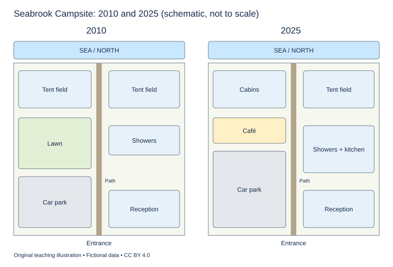
教学虚构示意地图，非比例尺实测。两图北向上，海在北边；中央南北路径和南侧中央入口位置相同。2010：西北/东北各一帐篷区；西中部草地；西南停车场；东中部洗浴楼；东南接待处。2025：西北木屋替代帐篷；东北帐篷保留；停车场原址向北扩入草地南部，剩余草地改咖啡馆；东中洗浴楼向南扩建并加厨房；接待处保留。
任务预算（含首次审题，不额外加时）
初稿20分钟（审题规划3、写作15、检查2）；诊断15；反馈阅读与证据核查10；完整重写25；对照归档5。合计75分钟。
初稿后自评清单
- [ ] 达到最低字数；全文连贯成段，没有用项目符号代替作文。
- [ ] 概述给主要特征；数据、阶段或方位都与题图逐项相符，不推断未提供的原因。
- [ ] 每段可写出一个功能标签；例子或数据与该段要点相连。
- [ ] 圈出两处词汇搭配和两处句法疑点，先自行修正再查询或求反馈。
- [ ] 记录一项最影响理解的问题和原句证据，不填写自猜分数。
反馈与重写
打开 独立参考页（本节下方展开参考），按逐段检查和通用协议核验。重写任务：完整重写至少150词；至少包含一处保持不变、一处替换和一处扩建；每句方位都回地图指认。
W07 T1A 示例、反馈与重练（首答后展开）
WS-W07-T1A 独立参考页
只在初稿完成后阅读；不是唯一答案，也没有官方分数。以下是对原创示例的教学讲评，不是对学生尚未提交作文的已完成批改。
思路拆解
先定北海、南入口和中央小路；概述新增与保留；按西侧和东侧空间分组，分清扩建和替换。
原创示例
The maps compare the layout of Seabrook Campsite in 2010 with its arrangement after redevelopment in 2025. Both maps show the sea along the northern boundary and the entrance in the centre of the southern boundary.
Overall, the campsite gained a wider range of accommodation and visitor facilities. Cabins replaced the western tent field, while the eastern tent field remained. The reception building and the central path were retained, and the parking area was enlarged.
In 2010, two tent fields occupied the northern part of the site, on either side of the path leading towards the sea. By 2025, the field to the west of this path had been replaced by a group of cabins. On the eastern side, the tent field remained in its original position. Further south, the former shower block was converted into a larger building containing both showers and a kitchen.
In the southwestern corner, the car park expanded northwards into part of the former lawn. A new café occupied the remaining lawn between the car park and the cabins. Reception stayed immediately to the east of the entrance, while the path continued to connect the entrance with the northern edge of the campsite.
示例正文词数：198（本项目正则计数；书信不含称呼、结束语与署名；连字符词作一词）。
逐段反馈与迁移
- P1 两个年份与方位基准清楚；图无道路网络，不自造公路。
- P2 新住宿与服务、保留设施各有例子；不判断收入或游客量。
- P3 西帐篷变木屋，东帐篷不变；东侧洗浴楼扩大并加厨房。
- P4 停车场向北扩、草地余部变咖啡馆；接待在入口东侧，中央路径保留。
常见失误
左右参照改变；把扩大停车场说成搬迁；推测游客更满意或数量增加。
可执行反馈步骤
1. 先把自己的段落标为引入、概述/论点、支持、收束；分段可不同于示例，按功能核查，不照抄段数。
2. 对照上方逐段检查，逐项标“已有证据/缺失/不适用”。每条意见必须附自己的原句或缺失位置。
3. 按 反馈协议 的四维表记录；有争议的 AI 意见回题干、数据或语法依据核验。
4. 只选两项最高优先级问题执行整篇重写；保留原稿，禁止把示例替换为自己的作业。
重写任务
完整重写至少150词；至少包含一处保持不变、一处替换和一处扩建；每句方位都回地图指认。
完成后重新勾选 学生页（见本节上方学生题） 清单；将一处改前/改后及理由交给独立评阅者核查。真人评阅状态目前为“待安排”，不是已完成。
WS-W07-T1G 学生页：向朋友道歉并改约
周次 W07｜题型 T1G｜能力点：书信目的、要点与语气
Task 1 的 A/G 分支二选一，另一分支不计入本周作业。
使用与记录
原创教学练习，非真题、非标准化模拟，难度未校准。先完成本页再打开参考页。人物、机构、经历与数据均为教学虚构。不要背诵示例。自评和 AI 反馈不能代替独立真人评分，未获得真人评阅时标记“分数未确认”。
保存：任务ID、实际日期、用时、初稿或原始录音、证据化反馈、重写/重答、三条修改理由。没有学生提交物，不得填写“已批改”或“已完成训练”。
完整题干
You promised to attend your friend Mia’s birthday dinner, but you can no longer go. Write a letter to Mia. In your letter:
- apologise and explain why you cannot attend
- suggest another way to celebrate together
- offer to help with the planned dinner.
Begin your letter: Dear Mia,
Write at least 150 words. You do not need to write any addresses. Spend about 20 minutes on this task.
任务预算（含首次审题，不额外加时）
初稿20分钟（审题规划3、写作15、检查2）；诊断15；反馈阅读与证据核查10；完整重写25；对照归档5。合计75分钟。
初稿后自评清单
- [ ] 达到最低字数；全文连贯成段，没有用项目符号代替作文。
- [ ] 三个要点均展开；称呼、目的、语气和结束语适合收信人。
- [ ] 每段可写出一个功能标签；例子或数据与该段要点相连。
- [ ] 圈出两处词汇搭配和两处句法疑点，先自行修正再查询或求反馈。
- [ ] 记录一项最影响理解的问题和原句证据，不填写自猜分数。
反馈与重写
打开 独立参考页（本节下方展开参考），按逐段检查和通用协议核验。重写任务：完整重写至少150词；改用合理的私人原因但保持时间线一致，给一个明确改约和一个可执行帮忙方案。
W07 T1G 示例、反馈与重练（首答后展开）
WS-W07-T1G 独立参考页
只在初稿完成后阅读；不是唯一答案，也没有官方分数。以下是对原创示例的教学讲评，不是对学生尚未提交作文的已完成批改。
思路拆解
私人书信；歉意与理由、具体补庆祝、原聚会协助各一段；不能只写改约而忘帮忙。
原创示例
Dear Mia,
I am really sorry, but I will not be able to come to your birthday dinner on Saturday after all. My brother has injured his ankle, and I have promised to take him home from hospital that afternoon. He lives outside town, so I cannot be sure that I would get back in time. I know I said I would be there, and I am disappointed to miss the evening.
Could we celebrate together the following weekend instead? There is a new café near the station that serves the kind of cakes you love. I would like to take you there for lunch on Sunday, if you are free. We could go for a walk afterwards and you could tell me all about the party.
I would still love to help with Saturday’s dinner. I can make the dessert we discussed and bring it to your flat on Friday evening. I could also collect the decorations from the shop on my way over, which would save you an extra trip. Let me know what would be most useful, and please accept my apologies again.
Love, Alex
示例正文词数：184（本项目正则计数；书信不含称呼、结束语与署名；连字符词作一词）。
逐段反馈与迁移
- P1 先道歉，解释无法保证准时；原因不必编重大灾难。
- P2 替代周日午餐与散步具体且留询问空间。
- P3 周五送甜点与取装饰物可在周六缺席前完成；时间线自洽。
常见失误
私人信语气公文化；改约日期仍与冲突重合；只道歉未覆盖另外两点。
可执行反馈步骤
1. 先把自己的段落标为引入、概述/论点、支持、收束；分段可不同于示例，按功能核查，不照抄段数。
2. 对照上方逐段检查，逐项标“已有证据/缺失/不适用”。每条意见必须附自己的原句或缺失位置。
3. 按 反馈协议 的四维表记录；有争议的 AI 意见回题干、数据或语法依据核验。
4. 只选两项最高优先级问题执行整篇重写；保留原稿，禁止把示例替换为自己的作业。
重写任务
完整重写至少150词；改用合理的私人原因但保持时间线一致，给一个明确改约和一个可执行帮忙方案。
完成后重新勾选 学生页（见本节上方学生题） 清单；将一处改前/改后及理由交给独立评阅者核查。真人评阅状态目前为“待安排”，不是已完成。
WS-W07-T2 学生页：旅游景点人群集中
周次 W07｜题型 T2｜能力点：观点展开与任务回应
A/G 共用本题。
使用与记录
原创教学练习，非真题、非标准化模拟，难度未校准。先完成本页再打开参考页。人物、机构、经历与数据均为教学虚构。不要背诵示例。自评和 AI 反馈不能代替独立真人评分，未获得真人评阅时标记“分数未确认”。
保存：任务ID、实际日期、用时、初稿或原始录音、证据化反馈、重写/重答、三条修改理由。没有学生提交物，不得填写“已批改”或“已完成训练”。
完整题干
In some regions, most tourists visit a small number of famous places, while other attractions receive few visitors. Why does this happen, and what could be done to encourage tourists to visit a wider range of places? Give reasons and relevant examples.
Write at least 250 words. Spend about 40 minutes on this task.
任务预算（含首次审题，不额外加时）
初稿40分钟（审题规划5、写作30、检查5）；诊断15；反馈阅读与证据核查10；完整重写35；对照归档5。合计105分钟。
初稿后自评清单
- [ ] 达到最低字数；全文连贯成段，没有用项目符号代替作文。
- [ ] 直接回答题目的所有问句，有始终一致的立场。
- [ ] 每段可写出一个功能标签；例子或数据与该段要点相连。
- [ ] 圈出两处词汇搭配和两处句法疑点，先自行修正再查询或求反馈。
- [ ] 记录一项最影响理解的问题和原句证据，不填写自猜分数。
反馈与重写
打开 独立参考页（本节下方展开参考），按逐段检查和通用协议核验。重写任务：完整重写至少250词；每个措施画线连接它解决的原因，并补一个现实限制条件。
W07 T2 示例、反馈与重练（首答后展开）
WS-W07-T2 独立参考页
只在初稿完成后阅读；不是唯一答案，也没有官方分数。以下是对原创示例的教学讲评，不是对学生尚未提交作文的已完成批改。
思路拆解
两原因是信息/交通不确定和有限时间的风险规避；措施对应路线说明与可信替代，不跑题只谈环保。
原创示例
Tourism is often concentrated around a few well-known attractions, even when a region offers many other places to visit. This pattern is partly caused by limited information and the desire to avoid disappointment. Better information and more convenient connections could help spread visitors more widely.
Famous attractions are easy to find and easy to include in a short trip. Travel websites repeatedly show the same landmarks, and organised tours often follow familiar routes. Visitors may therefore know very little about smaller museums, villages or walking areas nearby. Even when they hear about an alternative, they may be unsure how long a visit takes or whether they can get there without a car. Choosing a famous place reduces the amount of planning required.
A second reason is that holidays involve scarce time and money. Someone visiting a country for the first time may feel that missing its best-known monument would be a wasted opportunity. Photographs shared by friends can strengthen this feeling. A less familiar attraction may be equally enjoyable, but the visitor has fewer reasons to trust that it will be worth the journey. Simply telling tourists to avoid popular sites does not address this uncertainty.
Regional tourism organisations could provide suggested routes that combine a major attraction with one or two smaller destinations. Each route should explain travel times, opening arrangements and the type of experience available. For example, a clear afternoon itinerary could link a famous castle to a nearby craft workshop by a regular bus service. Booking systems and local accommodation providers could also recommend alternatives suited to visitors’ interests, rather than promote every place in exactly the same way.
In conclusion, concentrated tourism reflects both visibility and practical concerns about making a successful trip. Making lesser-known places easier to understand and reach would give visitors credible alternatives. Expansion should still consider local capacity, so that spreading tourism does not simply transfer overcrowding to previously quiet communities.
示例正文词数：320（本项目正则计数；书信不含称呼、结束语与署名；连字符词作一词）。
逐段反馈与迁移
- P1 回应为什么与如何两问；明确不是所有游客都故意跟风。
- P2 从曝光到规划成本，解释为什么方便影响选择。
- P3 时间金钱有限→怕错过→倾向知名景点，是不同于信息缺口的机制。
- P4 路线与公交例子对应信息和便利；不虚构真实旅游项目业绩。
- P5 以容量限制收束，未另起无关的环境论文。
常见失误
仅罗列拥挤后果；以强制禁游作唯一办法但无论证；把游客当作相同偏好。
可执行反馈步骤
1. 先把自己的段落标为引入、概述/论点、支持、收束；分段可不同于示例，按功能核查，不照抄段数。
2. 对照上方逐段检查，逐项标“已有证据/缺失/不适用”。每条意见必须附自己的原句或缺失位置。
3. 按 反馈协议 的四维表记录；有争议的 AI 意见回题干、数据或语法依据核验。
4. 只选两项最高优先级问题执行整篇重写；保留原稿，禁止把示例替换为自己的作业。
重写任务
完整重写至少250词；每个措施画线连接它解决的原因，并补一个现实限制条件。
完成后重新勾选 学生页（见本节上方学生题） 清单；将一处改前/改后及理由交给独立评阅者核查。真人评阅状态目前为“待安排”，不是已完成。
WS-W07-S1 学生页
周次W07｜Part 1专项｜能力点：叙述旅行选择与讨论游客影响｜30分钟
使用与记录
原创教学练习，非真题、非标准化模拟，难度未校准。先完成本页再打开参考页。人物、机构、经历与数据均为教学虚构。不要背诵示例。自评和 AI 反馈不能代替独立真人评分，未获得真人评阅时标记“分数未确认”。
保存：任务ID、实际日期、用时、初稿或原始录音、证据化反馈、重写/重答、三条修改理由。没有学生提交物，不得填写“已批改”或“已完成训练”。
操作与预算
设备与审题3分钟；首答录音6；回听及局部转写7；示例和诊断5；不看稿重答6；归档3。共30分钟。
Part 1专项题
1. Do you enjoy short trips?
2. How do you choose a place to visit?
3. Do you usually plan every detail?
4. What do you like to bring home from a trip?
追问：
- Can you describe a recent choice?
- Would you plan differently when travelling with children?
录音回听清单
- [ ] 保留首答原音，记录实际时长、是否中断、是否看稿；只报真实完成状态。
- [ ] 流利与连贯：标出两处时间戳，区分构思停顿与重复搜词，检查是否偏离问句。
- [ ] 词汇：找一处模糊词或重复表达，先解释原意再替换；不为难词改变意思。
- [ ] 语法：核对经历与习惯的时态；局部转写并更正两处妨碍理解的问题。
- [ ] 发音：不看转写听30秒，标听不清的词尾、重音或断句；没有音频不能判断发音。
- [ ] 展开：主要回答有具体情境或理由；追问后第一句回应追问的新角度。
重答要求
选择两个只有笼统判断的答案，先直接回应再加具体情境；重答一条追问，检查是否真正回应其新角度。
首答回听后才打开独立参考页（本节下方展开参考）。按反馈协议填至少三个时间戳，不以文字转写替代音频评阅。
W07 S1 示例、反馈与重练（首答后展开）
WS-W07-S1 独立参考页
原创教学示例，非真题或评分结果。未收到学生音频；以下是示例分析与待执行反馈，不能登记为已完成学生批改。
展开示例
直接回应→原因→具体情境的展开示例
I normally choose somewhere I can reach without spending most of the day travelling. For a weekend, I would rather explore one small town slowly than rush through several famous places. I plan the transport and somewhere to sleep, but I leave some time free in case I find something interesting after I arrive.
纯口答示例词数：54；只计MODEL标记内实际英文口答，不含标题、标签、说明。词数不能证明录音时长或流利度。
展开与反馈
本周能力：叙述旅行选择与讨论游客影响。
1. 示例先表态，再说明偏好理由，最后提供条件或场景。检查自己是否用一个词回答后就结束。
2. 找到一个具体细节：物品、动作、对话或地点。用自己的经历替换，保持与题卡相关，不照搬示例身份与经历。
3. 追问要重新回应，不能继续背长答。首句先回答追问，再用一条理由支持。
4. 标出一处听不清或语法影响理解的原音时间戳；先尝试最小修正。不要把自然停顿一概当成错误，或用加快语速掩盖逻辑断裂。
常见失误
空泛形容词替代具体过程；给了经历却没解释为什么重要；Part 3只有个人故事没有一般解释；AI只看转写就判断发音。逐项回原音核对，不能凭范例推断自己已达到某个分数。
可执行重答与反馈
选择两个只有笼统判断的答案，先直接回应再加具体情境；重答一条追问，检查是否真正回应其新角度。
填写反馈协议四维表，附三个时间戳和原话证据。选一个内容问题与一个语言问题先修；重答后并排听两段，记录改善与仍未解决之处。自评与AI不能替代独立真人评分；独立评阅目前待安排，分数未确认。
WS-W07-S2 学生页
周次W07｜Part 2专项｜能力点：叙述旅行选择与讨论游客影响｜30分钟
使用与记录
原创教学练习，非真题、非标准化模拟，难度未校准。先完成本页再打开参考页。人物、机构、经历与数据均为教学虚构。不要背诵示例。自评和 AI 反馈不能代替独立真人评分，未获得真人评阅时标记“分数未确认”。
保存：任务ID、实际日期、用时、初稿或原始录音、证据化反馈、重写/重答、三条修改理由。没有学生提交物，不得填写“已批改”或“已完成训练”。
操作与预算
准备、首答录音及追问5分钟；回听及局部转写8；示例与诊断5；关键词重组3；重答及追问5；归档4。共30分钟。
Part 2专项任务卡
Describe a place you visited that was less busy than you expected. Say where it was, why you went, what you did there, and explain how the quiet atmosphere affected your visit.
准备1分钟，说1～2分钟。只记5个关键词，不预写句子。
收尾追问：
- Would you return at a busier time?
- Would you recommend the place to others?
录音回听清单
- [ ] 保留首答原音，记录实际时长、是否中断、是否看稿；只报真实完成状态。
- [ ] 流利与连贯：标出两处时间戳，区分构思停顿与重复搜词，检查是否偏离问句。
- [ ] 词汇：找一处模糊词或重复表达，先解释原意再替换；不为难词改变意思。
- [ ] 语法：核对经历与习惯的时态；局部转写并更正两处妨碍理解的问题。
- [ ] 发音：不看转写听30秒，标听不清的词尾、重音或断句；没有音频不能判断发音。
- [ ] 展开：主要回答有具体情境或理由；追问后第一句回应追问的新角度。
重答要求
用五个关键词重答完整任务卡1～2分钟，再答两条追问；补一处具体行动或细节并删一处无关背景。比较首答与重答，不背示例。
首答回听后才打开独立参考页（本节下方展开参考）。按反馈协议填至少三个时间戳，不以文字转写替代音频评阅。
W07 S2 示例、反馈与重练（首答后展开）
WS-W07-S2 独立参考页
原创教学示例，非真题或评分结果。未收到学生音频；以下是示例分析与待执行反馈，不能登记为已完成学生批改。
展开示例
原创长答示例（时长须以个人实际录音测量）
I visited a small coastal village that was much quieter than I expected. I had seen photographs of its colourful harbour and assumed it would be crowded, but I went on a weekday in early spring rather than during the summer holidays.
When I arrived, only a few shops were open. At first, I wondered whether I had chosen the wrong time. Then I walked along the harbour and noticed how clearly I could hear the ropes knocking against the boats. I spent nearly an hour sketching one corner of the waterfront.
Later, I bought lunch from a small bakery. The owner had time to tell me about a path leading to a viewpoint above the village. I probably would not have asked about it if there had been a long queue behind me.
The quiet atmosphere made the visit slower and more personal. There were fewer organised activities, but I felt less pressure to keep moving. I would return, although I would check the opening times more carefully before another visit.
纯口答示例词数：172；只计MODEL标记内实际英文口答，不含标题、标签、说明。词数不能证明录音时长或流利度。
展开与反馈
本周能力：叙述旅行选择与讨论游客影响。
1. 长答示例按背景、行动/观察、变化与意义组织。每段都推进内容；检查自己是否只有背景而没有具体事件。
2. 找到一个具体细节：物品、动作、对话或地点。用自己的经历替换，保持与题卡相关，不照搬示例身份与经历。
3. 追问要重新回应，不能继续背长答。首句先回答追问，再用一条理由支持。
4. 标出一处听不清或语法影响理解的原音时间戳；先尝试最小修正。不要把自然停顿一概当成错误，或用加快语速掩盖逻辑断裂。
常见失误
空泛形容词替代具体过程；给了经历却没解释为什么重要；Part 3只有个人故事没有一般解释；AI只看转写就判断发音。逐项回原音核对，不能凭范例推断自己已达到某个分数。
可执行重答与反馈
用五个关键词重答完整任务卡1～2分钟，再答两条追问；补一处具体行动或细节并删一处无关背景。比较首答与重答，不背示例。
填写反馈协议四维表，附三个时间戳和原话证据。选一个内容问题与一个语言问题先修；重答后并排听两段，记录改善与仍未解决之处。自评与AI不能替代独立真人评分；独立评阅目前待安排，分数未确认。
WS-W07-S3 学生页
周次W07｜三部分全流程｜能力点：叙述旅行选择与讨论游客影响｜60分钟
使用与记录
原创教学练习，非真题、非标准化模拟，难度未校准。先完成本页再打开参考页。人物、机构、经历与数据均为教学虚构。不要背诵示例。自评和 AI 反馈不能代替独立真人评分，未获得真人评阅时标记“分数未确认”。
保存：任务ID、实际日期、用时、初稿或原始录音、证据化反馈、重写/重答、三条修改理由。没有学生提交物，不得填写“已批改”或“已完成训练”。
操作与预算
D5：设备与流程准备2分钟，连续首答11～14分钟，余14～17分钟完整回听标记，共30分钟。D6：局部转写诊断10，阅读示例与调整5，重答与新追问10，对照归档5，共30分钟。合计60分钟。
连续三部分全流程（首答不可看参考）
找同伴读题，或独练逐题揭示。完整首答11～14分钟，中途不暂停纠错。模拟同伴不是认证考官；自行读题的练习记录不能冒充真实面试。
Part 1：4～5分钟
1. Do you like trying unfamiliar food?
2. Where do you usually eat when travelling?
3. Do you enjoy reading menus?
4. Have you ever cooked a dish after tasting it elsewhere?
5. Do you prefer eating indoors or outdoors?
6. What makes a meal memorable for you?
可按回答追加 Why? / Can you give an example? 到时转下部分，不强行说完全部备用问题。
Part 2：3～4分钟（含准备）
Describe a journey that did not go as planned. Say where you were going, what changed, how you responded, and explain what you learned from the experience.
准备1分钟，连续说1～2分钟。收尾追问：
- Did you eventually reach your destination?
- Would you prepare differently for a similar journey?
Part 3：4～5分钟
1. Why do some destinations become more popular than others?
2. How does tourism affect local residents?
3. Should visitor numbers ever be limited?
4. How can tourists discover less familiar places?
根据回答追加追问：
- Who should decide on a visitor limit?
- Could encouraging tourism create new problems in a quiet place?
录音回听清单
- [ ] 保留首答原音，记录实际时长、是否中断、是否看稿；只报真实完成状态。
- [ ] 流利与连贯：标出两处时间戳，区分构思停顿与重复搜词，检查是否偏离问句。
- [ ] 词汇：找一处模糊词或重复表达，先解释原意再替换；不为难词改变意思。
- [ ] 语法：核对经历与习惯的时态；局部转写并更正两处妨碍理解的问题。
- [ ] 发音：不看转写听30秒，标听不清的词尾、重音或断句；没有音频不能判断发音。
- [ ] 展开：主要回答有具体情境或理由；追问后第一句回应追问的新角度。
重答要求
重答最弱的一个Part 1问题、完整Part 2及一个Part 3问题，再答一条未用追问。用不同细节或补一个例外，确认不是复述范例；局部重答不另计全流程。
首答回听后才打开独立参考页（本节下方展开参考）。按反馈协议填至少三个时间戳，不以文字转写替代音频评阅。
W07 S3 示例、反馈与重练（首答后展开）
WS-W07-S3 独立参考页
原创教学示例，非真题或评分结果。未收到学生音频；以下是示例分析与待执行反馈，不能登记为已完成学生批改。
展开示例
Part 2原创展开示例（个人语速不同，不能以词数推录音时长）
A journey that changed unexpectedly was a day trip to a hill village with two friends. We intended to take a morning train and then a local bus. However, our train was delayed, and we missed the bus connection by a few minutes.
The next bus would not leave for nearly two hours. We considered paying for a taxi, but that would have used most of our budget. Instead, we looked at the map and found a riverside walk close to the station. We decided to explore that area first and take the later bus.
At the village, we had less time than planned, so we chose one short route rather than trying to see everything. We still reached the viewpoint before returning, and the unexpected walk turned out to be enjoyable too.
I learned to leave more space between connections and to agree priorities with travel companions. The day was different from our plan, but it was not ruined. Having a flexible idea of what mattered helped us avoid spending the whole morning complaining.
Part 3观点→理由→条件展开示例
Visitor limits can be reasonable when a place is physically fragile or when overcrowding prevents residents from using basic services. The limit should have a clear purpose, however, rather than simply make entry expensive. Local residents and the people responsible for managing the site should both contribute evidence before a decision is made.
纯口答示例词数：228；只计MODEL标记内实际英文口答，不含标题、标签、说明。词数不能证明录音时长或流利度。
展开与反馈
本周能力：叙述旅行选择与讨论游客影响。
1. 长答示例按背景、行动/观察、变化与意义组织。每段都推进内容；检查自己是否只有背景而没有具体事件。
2. 找到一个具体细节：物品、动作、对话或地点。用自己的经历替换，保持与题卡相关，不照搬示例身份与经历。
3. Part 3示例不把个人选择强加给所有人；先讲机制，再说明条件或例外。检查自己的追问答案是否直接回应新问题。
4. 标出一处听不清或语法影响理解的原音时间戳；先尝试最小修正。不要把自然停顿一概当成错误，或用加快语速掩盖逻辑断裂。
常见失误
空泛形容词替代具体过程；给了经历却没解释为什么重要；Part 3只有个人故事没有一般解释；AI只看转写就判断发音。逐项回原音核对，不能凭范例推断自己已达到某个分数。
可执行重答与反馈
重答最弱的一个Part 1问题、完整Part 2及一个Part 3问题，再答一条未用追问。用不同细节或补一个例外，确认不是复述范例；局部重答不另计全流程。
填写反馈协议四维表，附三个时间戳和原话证据。选一个内容问题与一个语言问题先修；重答后并排听两段，记录改善与仍未解决之处。自评与AI不能替代独立真人评分；独立评阅目前待安排，分数未确认。
许可
原创文字：RayXBuilds and contributors，CC BY 4.0。此页由已验收分课汇编，调整了标题和导航；题干、正文和答案内容保留。公开第三方音频未包含。
回到顶部
U14 第8周：长篇阅读、写作与口语
本页为已独立核验的原创文字课程。先完成学生题目，再展开对应参考。非真题、非标准化模考，不换算雅思分数。听力尚未补齐，本页不代表全科课程已完成。
每周选A或G类Task 1一题，加Task 2及三次口语。参考范文不是学生已完成作业，仍须提交初稿、录音和重写，独立真人评分另行安排。
阅读每周180分钟（60分钟首次限时、120分钟证据精读与延迟复测），写作180分钟、口语120分钟。词汇60分钟、听力180分钟另列；新增完整听力未验收，不能勾整周完成。
W08如落实正式T08模拟，替换相应首答时段，不能重复计量；本页原创技能卷不能充当正式陌生卷。后续周数与达标规则见 U04。
阅读：首答不查词
R-W08-01 · The Observatory Under a Bright Sky
W08｜正文 830 词｜13 题｜篇章：科学解释：信号、噪声与观测选择（7段）
本课必做60分钟：首答20、证据复盘20、词汇长句10、48小时后复测10。每周三课180分钟，合卷首答替代单课首答，不重复计算。开放短文选做另加15分钟。
本项目原创虚构教学情境，人物、地点、历史事件和案例数据均非真实研究或史料。科学解释只讨论文内说明的模型与条件。非雅思真题或标准化模考；正确数不换算雅思等级。许可：CC BY 4.0 — RayXBuilds and contributors。
能力点：识别论证关系、区分作者与引述者、条件与因果、精确定位。初读不查词，完成后打开独立答案页。
Passage
A The fictional astronomy club of Vale owns two cameras and a telescope on a school roof. Members want to photograph a faint model star field projected inside a training dome before attempting observations outside. In the exercise, a bright lamp represents unwanted background light. Increasing that background makes faint points harder to distinguish even though the points themselves have not changed. The first lesson is therefore relational: visibility depends not only on an object but on the conditions against which it is observed. Saying that the camera sees less does not mean the projected source has become weaker. The club must separate a change in the target from a change in the background and from a change in its own measuring equipment.
B One student proposes leaving the camera exposed for longer. In the model, this can collect more of the faint target's light, but it also collects more background. A longer exposure is not a universal substitute for controlling unwanted illumination. The students also notice that the brightest projected points can exceed the range the camera records usefully. Beyond that limit, distinct brightness levels collapse into the same recorded value. A saturated image may look dramatic while containing less usable information about those points. The relevant setting therefore depends on which feature is being studied. A photograph suitable for locating faint points may be unsuitable for comparing the brightness of strong ones, even if both kinds of point appear somewhere in the frame.
C The club next compares two images made with identical settings. Small differences appear even though the projected pattern has been held steady. Some variation comes from the camera and its operation, rather than from the model sky. To investigate, students make a dark frame with the input covered. This does not reproduce every source of uncertainty in a real observation, but it helps them identify some features produced within the recording process. They also photograph an evenly illuminated screen to look for differences across the field. The resulting flat field reveals that positions near one edge are recorded differently from positions near the centre. These reference images answer distinct questions and should not be treated as interchangeable cures for every imperfect photograph.
D Alignment becomes important when the club combines several exposures. If the model points shift between frames, averaging the pictures without adjustment can turn a sharp point into a blur. Students use a reference point to bring the frames into agreement before combining them. That step depends on the assumption that the chosen point provides a suitable anchor. A feature that changes shape or disappears cannot serve the same role without further judgement. Processing is therefore not a magical stage that removes the need to understand the observation. Every operation carries assumptions about what should remain constant and what counts as an unwanted difference. Making those assumptions explicit lets another observer assess whether the improved-looking image is also a more informative one.
E An outdoor plan introduces another kind of choice. Vale's rooftop is convenient, but a fictional site beyond the town has a darker surrounding sky. Reaching it requires travel, and poor weather could make the journey unproductive. The club compares not only the quality of a successful image but the practical chance of obtaining one under its available schedule. A remote site may be valuable for one observation and unsuitable for a short teaching session. It would be unreasonable to declare location irrelevant merely because processing software exists. It would be equally unreasonable to assume that the darkest available location automatically serves every educational purpose better than an accessible one where students can return regularly and learn from repeated attempts.
F For the final exercise, members write an exposure log giving the settings and conditions for each image. They keep the unprocessed files beside the edited versions. When a striking pattern appears only after an aggressive adjustment, they can return to those files and ask which operation made it visible. An attractive pattern is a reason to investigate, not immediate proof of a feature in the source. The instructor also asks for a comparison image showing the same procedure applied to a model known to contain no such feature. This check cannot settle every possible error, but it tests whether the procedure itself tends to create the appearance being interpreted as a discovery.
G The club's best result is consequently not just its most impressive photograph. It is a set of images whose settings, transformations and limits can be explained. The model dome provides control at the cost of realism; the outdoor plan adds realism while giving up some control. Both can contribute to learning if their roles are stated honestly. The broader lesson concerns evidence made through instruments. Observation is not passive reception followed by optional interpretation. Choices about background, range, reference images and processing shape what can be claimed. A careful account preserves enough of those choices for someone else to distinguish a source feature from a feature of the method used to reveal it.
Questions
Choose ONE answer, A, B, C or D.
1. What does increasing background light demonstrate?
A. The targets must be changing B. The camera cannot record anything C. Visibility depends on contrast with conditions D. The targets have disappeared
2. Why can saturation reduce information?
A. It eliminates all background B. All faint points become brighter C. The telescope changes position D. Different brightness values become indistinguishable
3. Why align frames before combining them?
A. To avoid blurring displaced points B. To change the projected pattern C. To eliminate travel D. To remove the need for assumptions
4. The feature-free comparison is intended to test whether
A. the instructor prefers one camera B. all processing is useless C. the remote site has roads D. the procedure produces the apparent feature
Do the following statements agree with the writer's views? Write YES, NO or NOT GIVEN. YES = the writer agrees; NO = the writer expresses the opposite view; NOT GIVEN = the writer's view is not stated. Do not use outside knowledge.
5. Longer exposure solves every problem caused by background illumination.
6. Software makes the choice of observing location irrelevant.
7. The darkest site is always best for every teaching activity.
8. The club’s older camera is more expensive than its newer camera.
Complete the sentences. Choose NO MORE THAN 3 WORDS FROM THE PASSAGE for each answer. Do not change word forms.
9. Covering the camera input produces a ______.
10. An evenly lit screen produces a ______ for comparing positions across the image.
11. Frames are aligned with the help of a ______.
12. Settings and conditions are written in an ______.
13. The files kept beside edited versions without any processing are the ______.
复盘
必做：给每道错题标记“定位/作者立场/范围/语法/词数”，抄最短证据；用一行箭头概括本文论证或过程。48小时后重做错题与两道正确题，检查是否仍能指出证据。
选做（15分钟，80–100词）：Explain why an improved-looking image is not automatically stronger evidence.
R-W08-01 答案、证据与精读（首答后展开）
R-W08-01 · 独立答案与证据
来源与许可同学生页。先完成再核对。可接受答案由 accepted_answers 明确列出；只忽略大小写和首尾空格，不自行删词。开放复盘不计入客观正确数。
1. C｜段落 A｜证据：“the points themselves have not changed”
目标不变可见性仍改变。
2. D｜段落 B｜证据：“distinct brightness levels collapse into the same recorded value”
不等于更艳的图像信息更多。
3. A｜段落 D｜证据：“averaging the pictures without adjustment can turn a sharp point into a blur”
其他无据或反文。
4. D｜段落 F｜证据：“whether the procedure itself tends to create the appearance”
检验处理伪影。
5. NO｜段落 B｜证据：“not a universal substitute”
非万能替代。
6. NO｜段落 E｜证据：“unreasonable to declare location irrelevant”
作者明确反对。
7. NO｜段落 E｜证据：“equally unreasonable to assume”
不同教育任务约束不同。
8. NOT GIVEN｜段落 A｜证据：“owns two cameras”
未给新旧与价钱。
9. dark frame / frame｜段落 C｜证据：“make a dark frame with the input covered”
frame合理短答；flat field需要均匀亮屏。
10. flat field / field｜段落 C｜证据：“The resulting flat field”
flat field 为记录名称，中心词 field 也可接受；dark frame 来自遮住输入，不能满足均匀亮屏条件。
11. reference point / point / chosen point / suitable anchor / anchor / feature｜段落 D｜证据：“use a reference point”
D 用 reference point、chosen point、suitable anchor 及 feature 描述用于配准的参照特征；合理词组及中心词均接受。
12. exposure log｜段落 F｜证据：“write an exposure log”
log不可接an。
13. unprocessed files / files｜段落 F｜证据：“keep the unprocessed files”
unprocessed files 与 files 均接受；题干明确未处理及与编辑版本并列，排除 edited versions。
词汇与长句
- saturated：达到可记录上限的
- alignment：对齐
- anchor：参照锚点
- transformation：变换；处理步骤
> A saturated image may look dramatic while containing less usable information about those points.
while对比视觉效果与可用信息量。
> The model dome provides control at the cost of realism; the outdoor plan adds realism while giving up some control.
分号连接两种互补取舍，at the cost of表示代价。
开放任务参考
用D处理假设、F无特征对照和源文件，区分图像外观与可追溯证据。
标准：观点有文内依据，保留条件和范围，推断明确标注；不存在唯一措辞。
R-W08-02 · The Measure That Changed the Cloth Market
W08｜正文 806 词｜13 题｜篇章：虚构历史发展：量具、交易与信任（6段）
本课必做60分钟：首答20、证据复盘20、词汇长句10、48小时后复测10。每周三课180分钟，合卷首答替代单课首答，不重复计算。开放短文选做另加15分钟。
本项目原创虚构教学情境，人物、地点、历史事件和案例数据均非真实研究或史料。科学解释只讨论文内说明的模型与条件。非雅思真题或标准化模考；正确数不换算雅思等级。许可：CC BY 4.0 — RayXBuilds and contributors。
能力点：识别论证关系、区分作者与引述者、条件与因果、精确定位。初读不查词，完成后打开独立答案页。
Passage
A In the fictional weaving town of Darsen, cloth was once sold using lengths marked on a trader's wooden rod. Buyers could watch the cloth being placed beside it, but watching did not establish that every rod represented the same distance. A visitor purchasing material in several stalls might receive different lengths under the same spoken name. Local customers often relied on relationships: they knew a seller's habits and expected future dealings. This arrangement was not the absence of trust but a particular way of producing it. Trouble grew as more trade involved people who might never meet again. A promise supported by repeated contact could not easily serve a market increasingly shaped by strangers, and disputes over a short piece of cloth became arguments about which reference should be accepted beyond an individual stall.
B The town's first response was to display a public bar at the market entrance. Its length defined the official unit, and traders were invited to compare their rods with it. The bar made a reference available, but availability alone did not ensure that every transaction followed it. Some traders visited when few customers were present; others carried rods altered by wear or by repairs. A buyer also needed to know how the cloth had been placed against the measure. Stretching a flexible fabric during measurement could produce a different usable length after it relaxed. Standardising the instrument therefore left a question about procedure. A shared unit was necessary for the proposed reform, but it could not replace an agreement about how that unit should be applied to the material actually being sold.
C A group of weavers proposed a measuring table on which cloth could lie without being pulled tight. The table had a straight edge marked from the official bar, and a short instruction described how to begin at the cloth's end without counting a folded section twice. These details sounded trivial beside the declaration of a common unit, yet they shaped the result that a customer received. The table also changed the rhythm of trade. Measuring carefully occupied space and time, especially when several customers were waiting. Traders objected that the council had imposed a procedure without considering the layout of small stalls. Their objection did not prove that consistent measurement was undesirable. It revealed an implementation cost that the public announcement of a standard had omitted from its account of the reform.
D The council then introduced a verification mark for rods checked against the public bar. A mark allowed customers to recognise a recently checked instrument without following its owner to the entrance. However, a mark could outlast the condition it was meant to certify. A rod might be damaged after inspection, or its end might be replaced. The town consequently added an inspection date beside the mark and required a new check after repairs. This was not a guarantee that every marked rod would remain unchanged until the next visit. It was a record of when a particular comparison had been made, together with a rule about events that could invalidate it. Understanding the limited claim of certification was as important as recognising the symbol itself.
E A further dispute concerned cloth ordered in advance. A customer could agree to buy a named length but later disagree about what had been promised regarding trimming and damaged edges. Sellers began using an order slip that separated the measured length from conditions about the usable portion. The slip did not abolish judgement: people could still disagree about whether a flaw had been described adequately. It did make some expectations visible before delivery instead of leaving them to memory afterwards. Market officers also maintained a dispute register, recording the instrument, procedure and wording involved in each complaint. Recurring entries showed that some disagreements came from unclear orders rather than inaccurate rods. Rechecking the instrument alone would not resolve a disagreement whose source lay elsewhere in the transaction.
F By the end of this fictional history, the market's system included a reference, a method, a record and a means of challenge. None could fully substitute for the others. A precise bar with inaccessible checking arrangements would have limited value, while beautifully written orders measured by inconsistent rods would still disappoint buyers. Nor had personal trust disappeared. Experienced traders helped newcomers understand the procedure, and regular customers continued using their knowledge of particular businesses. The reform widened the range of people who could trade without relying entirely on an established relationship. Its success was not simply a movement from informal life to objective numbers. It was the construction of shared practices through which numbers acquired a stable meaning in an exchange between people who might otherwise understand the same promise differently. Those practices required continued attention because damage, new materials and unfamiliar customers could expose assumptions that had previously remained unnoticed in an apparently settled system.
Questions
Complete the summary. Choose NO MORE THAN 3 WORDS FROM THE PASSAGE for each answer. Do not change word forms.
The town displayed a (1) ______ as the shared length reference. Weavers proposed a (2) ______ so cloth could lie without tension. A verification mark was supplemented with an (3) ______. Conditions about usable cloth appeared on an (4) ______. Complaints were collected in a (5) ______.
Choose ONE answer, A, B, C or D.
6. Why did reliance on repeated personal contact become less sufficient?
A. More transactions involved strangers B. All rods broke simultaneously C. Traders forgot the unit’s name D. Customers stopped buying cloth
7. What did stretching cloth show?
A. Flexible fabric cannot be sold B. The public bar was always wrong C. A common instrument still requires an agreed procedure D. Marks remove physical effects
8. Why did traders object to tables?
A. The council banned customers B. They could no longer make cloth C. They opposed any units D. The procedure required scarce stall space and time
9. What does the inspection date establish?
A. The buyer’s identity B. Permanent accuracy C. The date the cloth was woven D. When the instrument comparison occurred
Do the following statements agree with the writer's views? Write YES, NO or NOT GIVEN. YES = the writer agrees; NO = the writer expresses the opposite view; NOT GIVEN = the writer's view is not stated. Do not use outside knowledge.
10. A visible public reference guarantees that every sale follows it.
11. Certification should be understood as a claim with limits.
12. Instrument checks alone can resolve every complaint about an order.
13. The writer thinks all trade between strangers is preferable to trade between neighbours.
复盘
必做：给每道错题标记“定位/作者立场/范围/语法/词数”，抄最短证据；用一行箭头概括本文论证或过程。48小时后重做错题与两道正确题，检查是否仍能指出证据。
选做（15分钟，80–100词）：Explain why common units need more than a precisely made reference.
R-W08-02 答案、证据与精读（首答后展开）
R-W08-02 · 独立答案与证据
来源与许可同学生页。先完成再核对。可接受答案由 accepted_answers 明确列出；只忽略大小写和首尾空格，不自行删词。开放复盘不计入客观正确数。
1. public bar / official bar / bar｜段落 B｜证据：“display a public bar”
B 的 public bar 与 C 的 official bar 是同一基准棒，均接受，bar 也是合理短答。
2. measuring table / table｜段落 C｜证据：“proposed a measuring table”
平放布料的桌面。
3. inspection date｜段落 D｜证据：“an inspection date beside the mark”
an 后接 inspection date；单独 date 不符合冠词。
4. order slip｜段落 E｜证据：“using an order slip”
an 后接 order slip；单独 slip 不符合冠词。
5. dispute register / register｜段落 E｜证据：“maintained a dispute register”
投诉记录簿，与订单分工不同。
6. A｜段落 A｜证据：“people who might never meet again”
交易关系改变，非全面失忆。
7. C｜段落 B｜证据：“left a question about procedure”
单位与测量方法须区分。
8. D｜段落 C｜证据：“occupied space and time”
反对实施成本，不必反对目标。
9. D｜段落 D｜证据：“when a particular comparison had been made”
认证为有限历史声明。
10. NO｜段落 B｜证据：“availability alone did not ensure”
可获得不等于实际遵守。
11. YES｜段落 D｜证据：“Understanding the limited claim of certification”
作者明确强调。
12. NO｜段落 E｜证据：“would not resolve a disagreement whose source lay elsewhere”
问题也来自措辞与期待。
13. NOT GIVEN｜段落 F｜证据：“Nor had personal trust disappeared.”
肯定扩展可能性但未排高低。
词汇与长句
- reference：参照物
- verification：核验
- invalidate：使失去效力
- transaction：交易过程
> a mark could outlast the condition it was meant to certify.
outlast持续时间超过；it指mark，标记仍在不表示物理状态仍有效。
> Rechecking the instrument alone would not resolve a disagreement whose source lay elsewhere in the transaction.
whose修饰disagreement，指出诊断对象必须对准问题来源。
开放任务参考
B程序、C执行成本、D时效、E合同措辞均有独立作用。
标准：观点有文内依据，保留条件和范围，推断明确标注；不存在唯一措辞。
R-W08-03 · When a Trial Should Change Its Mind
W08｜正文 916 词｜14 题｜篇章：观点争论：预先承诺、调整与学习（8段）
本课必做60分钟：首答20、证据复盘20、词汇长句10、48小时后复测10。每周三课180分钟，合卷首答替代单课首答，不重复计算。开放短文选做另加15分钟。
本项目原创虚构教学情境，人物、地点、历史事件和案例数据均非真实研究或史料。科学解释只讨论文内说明的模型与条件。非雅思真题或标准化模考；正确数不换算雅思等级。许可：CC BY 4.0 — RayXBuilds and contributors。
能力点：识别论证关系、区分作者与引述者、条件与因果、精确定位。初读不查词，完成后打开独立答案页。
Passage
A The fictional foundation Harbour funds a trial in which community workshops offer introductory repair classes. Half the workshops use a demonstration followed by practice; the others begin with an attempted task and provide explanations afterwards. The foundation wants to compare what participants can do later. Before the trial ends, organisers ask whether they should change a lesson that several learners find confusing. This creates a real tension. Keeping a plan unchanged may preserve a clear comparison, while changing it may improve the experience of the people attending. The writer rejects the easy claim that either consistency or responsiveness should always win. The issue is what can still be learned when a decision is changed, and how honestly that change is described.
B Evaluator Eda Morris wants the team to write its main outcome and comparison before looking at results. Otherwise, it might choose whichever measure makes the preferred course look strongest. Eda distinguishes advance planning from a ban on learning. Unexpected events can justify a revision, but the reason and timing should be recorded. She proposes a decision log showing what information was available when each change was authorised. This matters because a choice made before seeing outcomes has a different evidential role from one made after an attractive pattern appears. Describing both as if they had been planned from the start would hide an important part of how the conclusion was produced.
C Tutor Farid Noor focuses on participants who cannot follow a confusing instruction. He argues that the team should not preserve an avoidable obstacle merely to maintain a tidy comparison. Some assistance may be necessary for the activity to remain meaningful. Farid nevertheless accepts that changing support can change what is being tested. He therefore wants the revised instruction documented and the affected sessions identified. His position is not that improvements automatically leave the evidence untouched. It is that the duty to teach and the duty to explain the evidence must both be acknowledged. A participant is not simply a convenient source of data whose experience can be excluded from the discussion of a study's success.
D Statistician Greta Shaw asks how outcomes will be measured across the two course formats. If the final task closely resembles the demonstrations used in one format, it may favour familiarity rather than broader ability. Greta suggests a new task requiring the same underlying skills with different materials. She also wants assessors to use the same criteria without knowing which course a participant attended where that can reasonably be arranged. These steps do not make every comparison perfect. They reduce particular alternative explanations for a difference. Greta is especially cautious about interpreting one group's higher score as proof of a general advantage when the assessment itself may resemble that group's practice more closely than the other group's.
E Community organiser Hugo Lin examines attendance. People who finish a course may differ from those who leave early, and a strong result among completers need not describe everyone originally offered the programme. Hugo would record reasons for withdrawal when participants are willing to provide them, without inventing reasons for those who cannot be reached. He also asks whether timing and travel requirements prevented some invited people from attending at all. His concern is the scope of the claim: a course may help people who can reach it while failing to offer a usable opportunity to others. Participation is part of the service, not merely a preliminary filter that makes the eventual results table easier to assemble.
F The foundation combines these recommendations into a revised plan. It preserves the original outcome definition, introduces a clearer instruction where needed, and marks sessions affected by the change. The final report presents the planned comparison and a separate exploration of differences before and after the revision. The second analysis is explicitly described as exploratory. It may suggest a useful question for a later trial, but it is not promoted into a prediction supposedly made before anyone saw the difficulty. This distinction does not make exploration worthless. It helps readers understand what kind of support each result offers and what additional work would be needed to test an explanation suggested by the experience.
G Results remain mixed. Some participants perform well on the new task but report that the schedule was difficult; others enjoy the classes but struggle to apply the skill later. These findings concern different aims and should not be collapsed into a single flattering story. The report includes missing follow-up results, explanations of measurement choices and the recorded lesson changes. It does not assume that every absent participant failed, nor does it silently exclude absence from the account. Where evidence is unavailable, the foundation says which conclusions are limited by that gap. The writer regards this as a strength of the report, although it makes the final message less convenient for a short promotional announcement.
H Harbour's trial consequently ends with a decision about both teaching and future inquiry. The clearer instruction is retained, while a later study is proposed to examine the two course sequences under the revised conditions. The original trial has not become useless because it changed, but neither can it support exactly the claim it might have supported under an unchanged plan. Responsible learning requires that distinction. A good evaluation is not a story in which nothing unexpected happens. It is an account in which expectations, decisions and observations remain distinguishable, allowing another reader to see what was tested, what was discovered along the way, and what is still only a promising possibility.
Questions
Do the following statements agree with the writer's views? Write YES, NO or NOT GIVEN. YES = the writer agrees; NO = the writer expresses the opposite view; NOT GIVEN = the writer's view is not stated. Do not use outside knowledge.
1. Consistency should always take priority over responsiveness.
2. Exploratory findings may guide a later test.
3. Every person missing from follow-up should be treated as a failure.
4. The writer favours paying tutors according to participant scores.
5. A transparent report may be less convenient for promotion.
Match each statement with the person who expresses that view. Write a letter. You may use any letter more than once.
- A: Eda Morris
- B: Farid Noor
- C: Greta Shaw
- D: Hugo Lin
6. The information available when a revision is approved should be recorded.
7. A confusing obstacle should not be preserved merely for a neat comparison.
8. Assessors should use consistent criteria without knowing course assignment where feasible.
9. Completers may not represent everyone offered a course.
10. Withdrawal reasons should be collected voluntarily without inventing missing explanations.
Choose ONE answer, A, B, C or D.
11. What tension begins the passage?
A. Deciding whether any class should exist B. Selecting a town name C. Choosing between two buildings D. Maintaining comparison while responding to learners
12. Why use a new task in the assessment?
A. To avoid scoring B. To reduce advantage from familiarity with practiced examples C. To remove all shared skills D. To guarantee equal results
13. Why is the additional analysis labelled exploratory?
A. It contains no observations B. It cannot inspire future work C. It was prompted by developments during the trial D. It was the sole original prediction
14. The author thinks the changed trial
A. became entirely useless B. has value but supports a different scope of claim C. proved a universal teaching law D. needs no explanation of revisions
复盘
必做：给每道错题标记“定位/作者立场/范围/语法/词数”，抄最短证据；用一行箭头概括本文论证或过程。48小时后重做错题与两道正确题，检查是否仍能指出证据。
选做（15分钟，80–100词）：Explain how to report a useful mid-trial change without pretending it was planned.
R-W08-03 答案、证据与精读（首答后展开）
R-W08-03 · 独立答案与证据
来源与许可同学生页。先完成再核对。可接受答案由 accepted_answers 明确列出；只忽略大小写和首尾空格，不自行删词。开放复盘不计入客观正确数。
1. NO｜段落 A｜证据：“rejects the easy claim that either consistency or responsiveness should always win”
明确反绝对优先。
2. YES｜段落 F｜证据：“suggest a useful question for a later trial”
探索不是确证但可生成问题。
3. NO｜段落 G｜证据：“does not assume that every absent participant failed”
不推测缺失原因。
4. NOT GIVEN｜段落 G｜证据：“explanations of measurement choices”
没有薪酬制度观点。
5. YES｜段落 G｜证据：“less convenient for a short promotional announcement”
作者明确承认。
6. A｜段落 B｜证据：“what information was available when each change was authorised”
Eda变更时点和证据。
7. B｜段落 C｜证据：“not preserve an avoidable obstacle merely to maintain a tidy comparison”
Farid教学责任。
8. C｜段落 D｜证据：“without knowing which course a participant attended”
Greta评估盲法。
9. D｜段落 E｜证据：“need not describe everyone originally offered the programme”
Hugo参与范围。
10. D｜段落 E｜证据：“without inventing reasons for those who cannot be reached”
Hugo知情范围。
11. D｜段落 A｜证据：“consistency or responsiveness”
不是绝对二选一。
12. B｜段落 D｜证据：“same underlying skills with different materials”
降低熟悉度混杂，不保证结果相等。
13. C｜段落 F｜证据：“a prediction supposedly made before anyone saw the difficulty”
区分事先计划与事后生成问题。
14. B｜段落 H｜证据：“neither can it support exactly the claim”
保留价值但调整解释。
词汇与长句
- outcome：预先定义的评价结果指标
- withdrawal：退出参与
- exploratory：探索性的
- scope：适用范围
> a choice made before seeing outcomes has a different evidential role from one made after an attractive pattern appears.
made...过去分词修饰choice；one代choice，比较决定时点。
> The original trial has not become useless because it changed, but neither can it support exactly the claim it might have supported under an unchanged plan.
neither置句首倒装；might have supported为假设过去结果。
开放任务参考
B记录时间和可用信息，F区分原定比较与探索，H限定结论。
标准：观点有文内依据，保留条件和范围，推断明确标注；不存在唯一措辞。
写作与口语：Task 1双分支择一
WS-W08-T1A 学生页：音乐节人数与满意度混合数据
周次 W08｜题型 T1A｜能力点：混合数据单位与比较
Task 1 的 A/G 分支二选一，另一分支不计入本周作业。
使用与记录
原创教学练习，非真题、非标准化模拟，难度未校准。先完成本页再打开参考页。人物、机构、经历与数据均为教学虚构。不要背诵示例。自评和 AI 反馈不能代替独立真人评分，未获得真人评阅时标记“分数未确认”。
保存：任务ID、实际日期、用时、初稿或原始录音、证据化反馈、重写/重答、三条修改理由。没有学生提交物，不得填写“已批改”或“已完成训练”。
完整题干
The bar chart shows attendance at three town music festivals in 2025, and the table reports the percentages of surveyed attendees who rated each festival positively for music and facilities. Summarise the information by selecting and reporting the main features, and make comparisons where relevant.
Write at least 150 words. Spend about 20 minutes on this task.
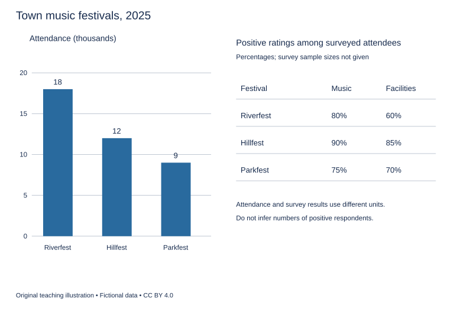
教学虚构。柱图2025观众人数：Riverfest18千、Hillfest12千、Parkfest9千。表格正面评价率（受访者内百分比）：音乐80/90/75%，设施60/85/70%，依次对应三节庆。调查样本数及占总观众比例未给，不可计算正面评价总人数。
任务预算（含首次审题，不额外加时）
初稿20分钟（审题规划3、写作15、检查2）；诊断15；反馈阅读与证据核查10；完整重写25；对照归档5。合计75分钟。
初稿后自评清单
- [ ] 达到最低字数；全文连贯成段，没有用项目符号代替作文。
- [ ] 概述给主要特征；数据、阶段或方位都与题图逐项相符，不推断未提供的原因。
- [ ] 每段可写出一个功能标签；例子或数据与该段要点相连。
- [ ] 圈出两处词汇搭配和两处句法疑点，先自行修正再查询或求反馈。
- [ ] 记录一项最影响理解的问题和原句证据，不填写自猜分数。
反馈与重写
打开 独立参考页（本节下方展开参考），按逐段检查和通用协议核验。重写任务：完整重写至少150词；至少一句跨图比较但不推因果，所有评分主语限定为调查结果。
W08 T1A 示例、反馈与重练（首答后展开）
WS-W08-T1A 独立参考页
只在初稿完成后阅读；不是唯一答案，也没有官方分数。以下是对原创示例的教学讲评，不是对学生尚未提交作文的已完成批改。
思路拆解
先分清千人与调查百分比；概述人数最大≠评分最高；主体分人数、评价，但末段有跨图联系；不推正面评价人数。
原创示例
The bar chart compares attendance at three town music festivals in 2025, while the table shows positive ratings for their music and facilities among surveyed attendees. Attendance is measured in thousands, whereas the ratings are percentages.
Overall, Riverfest attracted the largest audience, but Hillfest received the highest ratings in both survey categories. Parkfest had the lowest attendance and the lowest positive rating for music. At all three festivals, music was rated more favourably than facilities.
Riverfest recorded 18,000 attendees, making it twice as large as Parkfest, which attracted 9,000. Hillfest occupied the middle position with 12,000 visitors. The attendance gap between Riverfest and Hillfest was therefore 6,000, compared with a difference of 3,000 between Hillfest and Parkfest.
In the survey, Hillfest achieved positive ratings of 90% for music and 85% for facilities. The corresponding figures for Riverfest were 80% and 60%, giving it the widest gap between the two categories, at twenty percentage points. Parkfest received a music rating of 75% and a facilities rating of 70%. Its facilities rating was thus higher than Riverfest’s despite its smaller audience, while its music rating was five points lower.
示例正文词数：192（本项目正则计数；书信不含称呼、结束语与署名；连字符词作一词）。
逐段反馈与迁移
- P1 surveyed attendees不能替换全部观众；两个图的单位必须分开。
- P2 Hillfest两项均最高，Parkfest音乐最低；设施最低为Riverfest。
- P3 18/9=2，人数差6千与3千；不写18%观众。
- P4 评分差20/5/5个百分点；人数与评分并列不证明规模导致满意度。
常见失误
将80%乘18千算满意人数而样本未知；宣称人数越少必然更满意；混用百分比与人数。
可执行反馈步骤
1. 先把自己的段落标为引入、概述/论点、支持、收束；分段可不同于示例，按功能核查，不照抄段数。
2. 对照上方逐段检查，逐项标“已有证据/缺失/不适用”。每条意见必须附自己的原句或缺失位置。
3. 按 反馈协议 的四维表记录；有争议的 AI 意见回题干、数据或语法依据核验。
4. 只选两项最高优先级问题执行整篇重写；保留原稿，禁止把示例替换为自己的作业。
重写任务
完整重写至少150词；至少一句跨图比较但不推因果，所有评分主语限定为调查结果。
完成后重新勾选 学生页（见本节上方学生题） 清单；将一处改前/改后及理由交给独立评阅者核查。真人评阅状态目前为“待安排”，不是已完成。
WS-W08-T1G 学生页：感谢活动组织者并建议改进
周次 W08｜题型 T1G｜能力点：书信目的、要点与语气
Task 1 的 A/G 分支二选一，另一分支不计入本周作业。
使用与记录
原创教学练习，非真题、非标准化模拟，难度未校准。先完成本页再打开参考页。人物、机构、经历与数据均为教学虚构。不要背诵示例。自评和 AI 反馈不能代替独立真人评分，未获得真人评阅时标记“分数未确认”。
保存：任务ID、实际日期、用时、初稿或原始录音、证据化反馈、重写/重答、三条修改理由。没有学生提交物，不得填写“已批改”或“已完成训练”。
完整题干
You recently attended a weekend photography workshop organised by a local club. Write to the organiser, Mr Hall. In your letter:
- explain what you enjoyed about the workshop
- describe one difficulty you experienced
- suggest an improvement for future workshops.
Begin your letter: Dear Mr Hall,
Write at least 150 words. You do not need to write any addresses. Spend about 20 minutes on this task.
任务预算（含首次审题，不额外加时）
初稿20分钟（审题规划3、写作15、检查2）；诊断15；反馈阅读与证据核查10；完整重写25；对照归档5。合计75分钟。
初稿后自评清单
- [ ] 达到最低字数；全文连贯成段，没有用项目符号代替作文。
- [ ] 三个要点均展开；称呼、目的、语气和结束语适合收信人。
- [ ] 每段可写出一个功能标签；例子或数据与该段要点相连。
- [ ] 圈出两处词汇搭配和两处句法疑点，先自行修正再查询或求反馈。
- [ ] 记录一项最影响理解的问题和原句证据，不填写自猜分数。
反馈与重写
打开 独立参考页（本节下方展开参考），按逐段检查和通用协议核验。重写任务：完整重写至少150词；保持一个核心困难，将建议逐句对应其影响，保持感谢而非愤怒的语气。
W08 T1G 示例、反馈与重练（首答后展开）
WS-W08-T1G 独立参考页
只在初稿完成后阅读；不是唯一答案，也没有官方分数。以下是对原创示例的教学讲评，不是对学生尚未提交作文的已完成批改。
思路拆解
半正式反馈给已知姓名组织者；先具体感谢，再说一个问题与影响，最后给可执行改进和替代方案。
原创示例
Dear Mr Hall,
Thank you for organising last weekend’s photography workshop. I particularly enjoyed the outdoor session in the market square, where we practised taking photographs in changing light. The tutor gave clear explanations and allowed us enough time to experiment before discussing our results as a group. I found this much more useful than simply watching a demonstration.
There was one difficulty during the afternoon session. Several participants, including me, were unable to see the photographs clearly on the small laptop screen. Because we were seated in two rows, those at the back had to move forward whenever the tutor pointed out a detail. This interrupted the discussion and meant that some people missed parts of the explanation.
For future workshops, could the club arrange a larger screen or projector for reviewing photographs? If that is not possible, sending the selected images to participants beforehand would allow us to view them on our own devices. I would be happy to help test either arrangement before another session. Thank you again for an enjoyable and practical introduction to photography.
Yours sincerely, Alex Chen
示例正文词数：176（本项目正则计数；书信不含称呼、结束语与署名；连字符词作一词）。
逐段反馈与迁移
- P1 描述真实可理解的环节与收获，避免空泛excellent。
- P2 一个屏幕问题得到充分解释，不列十个抱怨分散任务。
- P3 投影/预发图片对同一问题有针对性；未假定组织者必有预算。
常见失误
只有投诉忘感谢；建议增加食品却与困难无关；擅自代表所有参与者给评价。
可执行反馈步骤
1. 先把自己的段落标为引入、概述/论点、支持、收束；分段可不同于示例，按功能核查，不照抄段数。
2. 对照上方逐段检查，逐项标“已有证据/缺失/不适用”。每条意见必须附自己的原句或缺失位置。
3. 按 反馈协议 的四维表记录；有争议的 AI 意见回题干、数据或语法依据核验。
4. 只选两项最高优先级问题执行整篇重写；保留原稿，禁止把示例替换为自己的作业。
重写任务
完整重写至少150词；保持一个核心困难，将建议逐句对应其影响，保持感谢而非愤怒的语气。
完成后重新勾选 学生页（见本节上方学生题） 清单；将一处改前/改后及理由交给独立评阅者核查。真人评阅状态目前为“待安排”，不是已完成。
WS-W08-T2 学生页：大型体育赛事利弊
周次 W08｜题型 T2｜能力点：观点展开与任务回应
A/G 共用本题。
使用与记录
原创教学练习，非真题、非标准化模拟，难度未校准。先完成本页再打开参考页。人物、机构、经历与数据均为教学虚构。不要背诵示例。自评和 AI 反馈不能代替独立真人评分，未获得真人评阅时标记“分数未确认”。
保存：任务ID、实际日期、用时、初稿或原始录音、证据化反馈、重写/重答、三条修改理由。没有学生提交物，不得填写“已批改”或“已完成训练”。
完整题干
Some cities spend large amounts of public money on hosting major international sporting events. Do the advantages of doing this outweigh the disadvantages? Give reasons for your answer and include relevant examples.
Write at least 250 words. Spend about 40 minutes on this task.
任务预算（含首次审题，不额外加时）
初稿40分钟（审题规划5、写作30、检查5）；诊断15；反馈阅读与证据核查10；完整重写35；对照归档5。合计105分钟。
初稿后自评清单
- [ ] 达到最低字数；全文连贯成段，没有用项目符号代替作文。
- [ ] 直接回答题目的所有问句，有始终一致的立场。
- [ ] 每段可写出一个功能标签；例子或数据与该段要点相连。
- [ ] 圈出两处词汇搭配和两处句法疑点，先自行修正再查询或求反馈。
- [ ] 记录一项最影响理解的问题和原句证据，不填写自猜分数。
反馈与重写
打开 独立参考页（本节下方展开参考），按逐段检查和通用协议核验。重写任务：完整重写至少250词；明确比较“长期公共用途”与“短期收益”，加入一个会改变结论的条件。
W08 T2 示例、反馈与重练（首答后展开）
WS-W08-T2 独立参考页
只在初稿完成后阅读；不是唯一答案，也没有官方分数。以下是对原创示例的教学讲评，不是对学生尚未提交作文的已完成批改。
思路拆解
条件式利弊权衡，限定大量新建时成本较大；利益与机会成本比较，避免只列两边。
原创示例
Hosting a major international sporting event can bring attention and investment to a city, but it can also place a heavy burden on public finances. I believe the disadvantages usually outweigh the advantages when hosting requires extensive new construction, although cities with suitable existing facilities may face a different balance.
Supporters argue that an event can accelerate improvements which residents will use long afterwards. A transport connection built for visitors might also make everyday journeys easier, while a renovated sports centre could serve local clubs. The event may attract temporary customers for hotels and restaurants and give residents an opportunity to enjoy international competition close to home. These are meaningful benefits, particularly if the facilities address needs that the city has already identified.
The difficulty is that the competition’s requirements may not match those long-term needs. A large stadium designed for a brief period of intense use can be expensive to maintain once spectators have left. Meanwhile, money committed to construction is unavailable for other priorities, such as improving ordinary neighbourhood facilities. For example, residents might benefit more from several accessible swimming pools than from a single venue with thousands of seats. The initial excitement does not remove the need to compare these competing uses of public money.
There is also uncertainty about the financial return. Visitor spending may be substantial, but not all of it reaches the public budget that paid for the event. Some regular tourists may avoid the city during a crowded period, and temporary jobs do not necessarily provide lasting security. These risks make it unwise to justify major spending using optimistic forecasts alone. Reusing existing venues and agreeing realistic plans for later use can reduce the burden, but they cannot guarantee a profit.
On balance, the lasting costs and lost alternatives usually outweigh the temporary gains where major new facilities are necessary. Hosting is easier to justify when the city can use what it already has and demonstrate clear benefits for residents after the event.
示例正文词数：330（本项目正则计数；书信不含称呼、结束语与署名；连字符词作一词）。
逐段反馈与迁移
- P1 明确通常缺点更大与例外；回答outweigh而非单纯存在利弊。
- P2 基建与短期商业受益承认充分，条件为符合原需求。
- P3 场馆维护与机会成本可持续，泳池比较说明为什么值得优先。
- P4 游客消费不等于政府收入；保留不确定性而非虚构亏损比例。
- P5 回扣是否需要大量新建，与引言一致。
常见失误
认为游客消费全归政府；忽略长期维护；结尾没有判断哪边更大。
可执行反馈步骤
1. 先把自己的段落标为引入、概述/论点、支持、收束；分段可不同于示例，按功能核查，不照抄段数。
2. 对照上方逐段检查，逐项标“已有证据/缺失/不适用”。每条意见必须附自己的原句或缺失位置。
3. 按 反馈协议 的四维表记录；有争议的 AI 意见回题干、数据或语法依据核验。
4. 只选两项最高优先级问题执行整篇重写；保留原稿，禁止把示例替换为自己的作业。
重写任务
完整重写至少250词；明确比较“长期公共用途”与“短期收益”，加入一个会改变结论的条件。
完成后重新勾选 学生页（见本节上方学生题） 清单；将一处改前/改后及理由交给独立评阅者核查。真人评阅状态目前为“待安排”，不是已完成。
WS-W08-S1 学生页
周次W08｜Part 1专项｜能力点：比较活动收益与成本并检验迁移｜30分钟
使用与记录
原创教学练习，非真题、非标准化模拟，难度未校准。先完成本页再打开参考页。人物、机构、经历与数据均为教学虚构。不要背诵示例。自评和 AI 反馈不能代替独立真人评分，未获得真人评阅时标记“分数未确认”。
保存：任务ID、实际日期、用时、初稿或原始录音、证据化反馈、重写/重答、三条修改理由。没有学生提交物，不得填写“已批改”或“已完成训练”。
操作与预算
设备与审题3分钟；首答录音6；回听及局部转写7；示例和诊断5；不看稿重答6；归档3。共30分钟。
Part 1专项题
1. Do you watch sport?
2. Have you ever attended a local competition?
3. Do you prefer taking part or watching?
4. What makes an event enjoyable for you?
追问：
- Would you enjoy the event without knowing the rules?
- Has your preference changed over time?
录音回听清单
- [ ] 保留首答原音，记录实际时长、是否中断、是否看稿；只报真实完成状态。
- [ ] 流利与连贯：标出两处时间戳，区分构思停顿与重复搜词，检查是否偏离问句。
- [ ] 词汇：找一处模糊词或重复表达，先解释原意再替换；不为难词改变意思。
- [ ] 语法：核对经历与习惯的时态；局部转写并更正两处妨碍理解的问题。
- [ ] 发音：不看转写听30秒，标听不清的词尾、重音或断句；没有音频不能判断发音。
- [ ] 展开：主要回答有具体情境或理由；追问后第一句回应追问的新角度。
重答要求
选择两个只有笼统判断的答案，先直接回应再加具体情境；重答一条追问，检查是否真正回应其新角度。
首答回听后才打开独立参考页（本节下方展开参考）。按反馈协议填至少三个时间戳，不以文字转写替代音频评阅。
W08 S1 示例、反馈与重练（首答后展开）
WS-W08-S1 独立参考页
原创教学示例，非真题或评分结果。未收到学生音频；以下是示例分析与待执行反馈，不能登记为已完成学生批改。
展开示例
直接回应→原因→具体情境的展开示例
I prefer taking part in informal games because I enjoy the conversation as much as the competition. When I watch a professional match, I sometimes find it difficult to follow the tactics. A friend who explains what is happening can make a big difference, so I usually watch with someone rather than alone.
纯口答示例词数：53；只计MODEL标记内实际英文口答，不含标题、标签、说明。词数不能证明录音时长或流利度。
展开与反馈
本周能力：比较活动收益与成本并检验迁移。
1. 示例先表态，再说明偏好理由，最后提供条件或场景。检查自己是否用一个词回答后就结束。
2. 找到一个具体细节：物品、动作、对话或地点。用自己的经历替换，保持与题卡相关，不照搬示例身份与经历。
3. 追问要重新回应，不能继续背长答。首句先回答追问，再用一条理由支持。
4. 标出一处听不清或语法影响理解的原音时间戳；先尝试最小修正。不要把自然停顿一概当成错误，或用加快语速掩盖逻辑断裂。
常见失误
空泛形容词替代具体过程；给了经历却没解释为什么重要；Part 3只有个人故事没有一般解释；AI只看转写就判断发音。逐项回原音核对，不能凭范例推断自己已达到某个分数。
可执行重答与反馈
选择两个只有笼统判断的答案，先直接回应再加具体情境；重答一条追问，检查是否真正回应其新角度。
填写反馈协议四维表，附三个时间戳和原话证据。选一个内容问题与一个语言问题先修；重答后并排听两段，记录改善与仍未解决之处。自评与AI不能替代独立真人评分；独立评阅目前待安排，分数未确认。
WS-W08-S2 学生页
周次W08｜Part 2专项｜能力点：比较活动收益与成本并检验迁移｜30分钟
使用与记录
原创教学练习，非真题、非标准化模拟，难度未校准。先完成本页再打开参考页。人物、机构、经历与数据均为教学虚构。不要背诵示例。自评和 AI 反馈不能代替独立真人评分，未获得真人评阅时标记“分数未确认”。
保存：任务ID、实际日期、用时、初稿或原始录音、证据化反馈、重写/重答、三条修改理由。没有学生提交物，不得填写“已批改”或“已完成训练”。
操作与预算
准备、首答录音及追问5分钟；回听及局部转写8；示例与诊断5；关键词重组3；重答及追问5；归档4。共30分钟。
Part 2专项任务卡
Describe an event you helped organise. Say what it was, who it was for, what you did, and explain what you learned from organising it.
准备1分钟，说1～2分钟。只记5个关键词，不预写句子。
收尾追问：
- Would you volunteer for a similar event again?
- Which part would you organise differently?
录音回听清单
- [ ] 保留首答原音，记录实际时长、是否中断、是否看稿；只报真实完成状态。
- [ ] 流利与连贯：标出两处时间戳，区分构思停顿与重复搜词，检查是否偏离问句。
- [ ] 词汇：找一处模糊词或重复表达，先解释原意再替换；不为难词改变意思。
- [ ] 语法：核对经历与习惯的时态；局部转写并更正两处妨碍理解的问题。
- [ ] 发音：不看转写听30秒，标听不清的词尾、重音或断句；没有音频不能判断发音。
- [ ] 展开：主要回答有具体情境或理由；追问后第一句回应追问的新角度。
重答要求
用五个关键词重答完整任务卡1～2分钟，再答两条追问；补一处具体行动或细节并删一处无关背景。比较首答与重答，不背示例。
首答回听后才打开独立参考页（本节下方展开参考）。按反馈协议填至少三个时间戳，不以文字转写替代音频评阅。
W08 S2 示例、反馈与重练（首答后展开）
WS-W08-S2 独立参考页
原创教学示例，非真题或评分结果。未收到学生音频；以下是示例分析与待执行反馈，不能登记为已完成学生批改。
展开示例
原创长答示例（时长须以个人实际录音测量）
I helped organise a small charity quiz at my workplace. It was intended for colleagues and their friends, and the money raised would support a local community project. My responsibility was to prepare the questions and check the answers.
At first, I wrote questions about topics I personally enjoyed. When a colleague tested them, she pointed out that there were too many difficult geography questions. I changed the selection to include music, everyday science and a round based on pictures.
On the evening itself, I kept a list of accepted answers beside me. That was useful when two teams used different names for the same place. Instead of deciding quickly under pressure, we could check the wording and treat the teams consistently.
The event went reasonably well, although one round took longer than expected. I learned that organisation is partly about imagining what participants will need, rather than simply completing your own task. Next time, I would test the timing as carefully as the content.
纯口答示例词数：165；只计MODEL标记内实际英文口答，不含标题、标签、说明。词数不能证明录音时长或流利度。
展开与反馈
本周能力：比较活动收益与成本并检验迁移。
1. 长答示例按背景、行动/观察、变化与意义组织。每段都推进内容；检查自己是否只有背景而没有具体事件。
2. 找到一个具体细节：物品、动作、对话或地点。用自己的经历替换，保持与题卡相关，不照搬示例身份与经历。
3. 追问要重新回应，不能继续背长答。首句先回答追问，再用一条理由支持。
4. 标出一处听不清或语法影响理解的原音时间戳；先尝试最小修正。不要把自然停顿一概当成错误，或用加快语速掩盖逻辑断裂。
常见失误
空泛形容词替代具体过程；给了经历却没解释为什么重要；Part 3只有个人故事没有一般解释；AI只看转写就判断发音。逐项回原音核对，不能凭范例推断自己已达到某个分数。
可执行重答与反馈
用五个关键词重答完整任务卡1～2分钟，再答两条追问；补一处具体行动或细节并删一处无关背景。比较首答与重答，不背示例。
填写反馈协议四维表，附三个时间戳和原话证据。选一个内容问题与一个语言问题先修；重答后并排听两段，记录改善与仍未解决之处。自评与AI不能替代独立真人评分；独立评阅目前待安排，分数未确认。
WS-W08-S3 学生页
周次W08｜三部分全流程｜能力点：比较活动收益与成本并检验迁移｜60分钟
使用与记录
原创教学练习，非真题、非标准化模拟，难度未校准。先完成本页再打开参考页。人物、机构、经历与数据均为教学虚构。不要背诵示例。自评和 AI 反馈不能代替独立真人评分，未获得真人评阅时标记“分数未确认”。
保存：任务ID、实际日期、用时、初稿或原始录音、证据化反馈、重写/重答、三条修改理由。没有学生提交物，不得填写“已批改”或“已完成训练”。
操作与预算
D5：设备与流程准备2分钟，连续首答11～14分钟，余14～17分钟完整回听标记，共30分钟。D6：局部转写诊断10，阅读示例与调整5，重答与新追问10，对照归档5，共30分钟。合计60分钟。
连续三部分全流程（首答不可看参考）
找同伴读题，或独练逐题揭示。完整首答11～14分钟，中途不暂停纠错。模拟同伴不是认证考官；自行读题的练习记录不能冒充真实面试。
Part 1：4～5分钟
1. Do you enjoy meeting new people?
2. Where do you usually meet friends?
3. Do you prefer organising plans or joining other people’s plans?
4. What do you do when plans change?
5. Do you like spending time outdoors?
6. Is there an outdoor activity you would like to try?
可按回答追加 Why? / Can you give an example? 到时转下部分，不强行说完全部备用问题。
Part 2：3～4分钟（含准备）
Describe a public event you would like to attend. Say what it is, where it would take place, who you would go with, and explain why it interests you.
准备1分钟，连续说1～2分钟。收尾追问：
- Have you attended a similar event before?
- What would you need to arrange before attending?
Part 3：4～5分钟
1. Why do cities organise public events?
2. How should a city decide which events to fund?
3. What problems can large events create for residents?
4. Are small regular events more valuable than occasional major ones?
根据回答追加追问：
- Could an expensive event still be worth funding?
- How could organisers measure benefits after the event?
录音回听清单
- [ ] 保留首答原音，记录实际时长、是否中断、是否看稿；只报真实完成状态。
- [ ] 流利与连贯：标出两处时间戳，区分构思停顿与重复搜词，检查是否偏离问句。
- [ ] 词汇：找一处模糊词或重复表达，先解释原意再替换；不为难词改变意思。
- [ ] 语法：核对经历与习惯的时态；局部转写并更正两处妨碍理解的问题。
- [ ] 发音：不看转写听30秒，标听不清的词尾、重音或断句；没有音频不能判断发音。
- [ ] 展开：主要回答有具体情境或理由；追问后第一句回应追问的新角度。
重答要求
重答最弱的一个Part 1问题、完整Part 2及一个Part 3问题，再答一条未用追问。用不同细节或补一个例外，确认不是复述范例；局部重答不另计全流程。
首答回听后才打开独立参考页（本节下方展开参考）。按反馈协议填至少三个时间戳，不以文字转写替代音频评阅。
W08阶段观察
在本任务最后5分钟归档内，与W01或最近一次全流程原音比较：任务完成、停顿位置、具体展开、听不清片段各记一条证据。题目不同，不能用词数或流利感直接推分。正式外部陌生卷T08与真人写说评阅仍须单独安排；本题只记原创技能练习，不标官方模考已完成。
W08 S3 示例、反馈与重练（首答后展开）
WS-W08-S3 独立参考页
原创教学示例，非真题或评分结果。未收到学生音频；以下是示例分析与待执行反馈，不能登记为已完成学生批改。
展开示例
Part 2原创展开示例（个人语速不同，不能以词数推录音时长）
I would like to attend a local night-time astronomy event in a park outside the city. I saw an announcement for a previous event, but I could not go because I was working that evening. If it is organised again, I would invite a friend who is interested in photography.
What attracts me is the opportunity to look through a proper telescope with someone there to explain what I am seeing. I have looked at pictures of planets online, but I sometimes find it difficult to connect those images with the small bright points visible from my window.
Before going, I would check whether booking is required and how to get home afterwards. I would also bring warm clothing, because standing still outdoors can feel cold even after a pleasant day.
I would not expect to see everything shown in dramatic space photographs. I would be happy to identify a few objects and understand them more clearly. For me, the appeal is sharing a real observation with other curious people, rather than simply collecting another photograph.
Part 3观点→理由→条件展开示例
Small regular events may reach residents more consistently, while a major event can attract visitors and create a shared occasion that people remember. I would compare the lasting benefits and the cost, not just the size of the audience. An expensive event may be worthwhile if facilities remain useful, but a large crowd alone does not prove that it was good value.
纯口答示例词数：238；只计MODEL标记内实际英文口答，不含标题、标签、说明。词数不能证明录音时长或流利度。
展开与反馈
本周能力：比较活动收益与成本并检验迁移。
1. 长答示例按背景、行动/观察、变化与意义组织。每段都推进内容；检查自己是否只有背景而没有具体事件。
2. 找到一个具体细节：物品、动作、对话或地点。用自己的经历替换，保持与题卡相关，不照搬示例身份与经历。
3. Part 3示例不把个人选择强加给所有人；先讲机制，再说明条件或例外。检查自己的追问答案是否直接回应新问题。
4. 标出一处听不清或语法影响理解的原音时间戳；先尝试最小修正。不要把自然停顿一概当成错误，或用加快语速掩盖逻辑断裂。
常见失误
空泛形容词替代具体过程；给了经历却没解释为什么重要；Part 3只有个人故事没有一般解释；AI只看转写就判断发音。逐项回原音核对，不能凭范例推断自己已达到某个分数。
可执行重答与反馈
重答最弱的一个Part 1问题、完整Part 2及一个Part 3问题，再答一条未用追问。用不同细节或补一个例外，确认不是复述范例；局部重答不另计全流程。
填写反馈协议四维表，附三个时间戳和原话证据。选一个内容问题与一个语言问题先修；重答后并排听两段，记录改善与仍未解决之处。自评与AI不能替代独立真人评分；独立评阅目前待安排，分数未确认。
许可
原创文字：RayXBuilds and contributors，CC BY 4.0。此页由已验收分课汇编，调整了标题和导航；题干、正文和答案内容保留。公开第三方音频未包含。
回到顶部
U15 写作与口语反馈协议
写说反馈协议与交接表
适用于WS-W05～W08全部课项。在题目所列预算内完成。这里是待执行流程与空白记录模板，不是已完成批改。自评和AI不能代替独立真人评分；没有独立评阅时，成绩栏只能写“分数未确认”。
写作：先证据后修改
1. 保留初稿和限时记录；先逐项核题干。A类数字回图表，流程核顺序与分支，地图核方位和替换/扩建，G类逐一标三要点，Task 2标题目问句与立场。
2. 给每段一个功能标签，检查是否缺概述、缺例子或缺结论。使用课内逐段讲评时按功能对齐，不要求复制范文段数。
3. 四维表至少填四条证据，不需要每项都有错误；可写“证据充分”并引用原句。优先解决任务遗漏与理解障碍，再处理语言精确性。
4. 在每题10分钟反馈时段看示例、核查争议；只选两项主要问题。按学生页要求整篇重写，保留内容相似度但不用示例替代原稿。
5. 用5分钟对照重写：写三条“原句→新句→理由”，其中至少一条属于内容或组织。再次检查最低字数和所有题干要点。
| 维度 | 初稿原句/段号或缺失位置 | 具体问题及依据 | 修改行动 | 重写证据 | 来源 |
| 任务完成/回应 | 待填 | 待填 | 待填 | 待填 | 自评/AI/真人姓名与日期 |
| 连贯与衔接 | 待填 | 待填 | 待填 | 待填 | 待填 |
| 词汇资源 | 待填 | 待填 | 待填 | 待填 | 待填 |
| 语法范围与准确性 | 待填 | 待填 | 待填 | 待填 | 待填 |
可给AI的请求（须附完整题干和自己的真实初稿）：
> 按任务回应、连贯、词汇、语法给证据化建议。每条引用我的原句或指出缺失的题干要点，说明为什么影响表达，给最小修改方向。区分确定错误与可选改写。先提两项最高优先级问题，不给分数，不声称真人评分，不替我重写整篇。Task 1数据只能来自题面。不能确认的地方明确标记待核查。
核查AI：先对照数据和题干，再判断改写是否改变原意。AI意见有矛盾时保留争议并交真人核查；不能把AI自信程度当作正确性。
口语：音频优先
1. 保留完整首答。首次回听不看转写，标记听不清、断裂和偏题的时间戳。
2. 局部转写最多60～90秒，核对原音，尤其是自动转写可能改掉的语法错误。转写只辅助诊断，不替代录音。
3. 每项意见附时间戳；至少处理一个展开问题与一个语言或发音问题。发音判断需实际音频，不能依据文字想象。
4. 只看关键词重答，使用课内新追问检验能否迁移。比较原音和重答，不把慢读一份修改稿算作即兴进步。
| 维度 | 首答时间戳与听到的现象 | 改善动作 | 重答时间戳与证据 |
| 流利与连贯 | 待填 | 待填 | 待填 |
| 词汇资源 | 待填 | 待填 | 待填 |
| 语法范围与准确性 | 待填 | 待填 | 待填 |
| 发音与可理解度 | 待填；没有音频不得判断 | 待填 | 待填 |
可给AI的请求：
> 若能处理音频，请引用时间戳，指出两处最影响理解的问题，并用我的具体内容示范如何扩展或澄清。不要给官方分数。若只能看到转写，只反馈文本中的内容、词汇与语法，明确不能判断发音、真实停顿或口语流利度；不要编造听过录音。
真人交接与验收（待执行）
交付包：任务ID、完整题干/数据、未修改初稿、重写稿及修改理由；口语完整原始音频、实际时长、题目、局部转写和重答片段。请求评阅者指出四个维度的证据，区分限时初稿表现与辅导后表现，并反馈下一轮最优先任务。若给估分，记录评阅者资历、日期与不确定性，不能标为官方考试成绩。
登记：评阅者____；日期____；已收到材料____；意见文件____；分歧与待核实____；学生落实证据____。空栏就是待完成，不预填虚构记录。尚未有正式目标分数与可信独立评估时，只汇报具体改进和未解决问题，不做达标或提分保证。
回到顶部
U16 第9周：长篇阅读、写作与口语
本页为已独立核验的原创文字课程。先完成学生题目，再展开对应参考。非真题、非标准化模考，不换算雅思分数。听力尚未补齐，本页不代表全科课程已完成。
每周选A或G类Task 1一题，加Task 2及三次口语。参考范文不是学生已完成作业，仍须提交初稿、录音和重写，独立真人评分另行安排。
阅读每周180分钟（60分钟首次限时、120分钟证据精读与延迟复测），写作180分钟、口语120分钟。词汇60分钟、听力180分钟另列；新增完整听力未验收，不能勾整周完成。
W12限时复盘按实际错因与延迟复测记录调整；本页原创技能卷不能充当正式陌生卷。后续周数与达标规则见 U04。
阅读：首答不查词
R-W09-01 · Reading a Room through Its Echoes
W09｜正文 852 词｜13 题｜篇章：科学解释：假设、信号与空间推断（6段）
本课必做60分钟：首答20、证据复盘20、词汇长句10、48小时后复测10。每周三课180分钟，合卷首答替代单课首答，不重复计算。开放短文选做另加15分钟。
本项目原创虚构教学情境，人物、地点、历史事件和案例数据均非真实研究或史料。科学解释只讨论文内说明的模型与条件。非雅思真题或标准化模考；正确数不换算雅思等级。许可：CC BY 4.0 — RayXBuilds and contributors。
能力点：识别论证关系、区分作者与引述者、条件与因果、精确定位。初读不查词，完成后打开独立答案页。
Passage
A In the imaginary acoustic laboratory of Kel, students are asked to describe a room without seeing it. A speaker releases a short pulse, and a microphone records what arrives afterwards. The first arrival travels directly from speaker to microphone; later arrivals have followed longer paths involving walls or other surfaces. It is tempting to treat each later mark in the recording as the signature of a particular wall. That interpretation is too quick. Several paths may have similar lengths, and one surface may contribute more than one reflected arrival. The recording contains information about the room, but it does not come with labels explaining how that information was produced. The task is to propose an arrangement consistent with the observations and then find a way to distinguish it from other arrangements that could produce a similar trace. An echo is evidence to interpret, not a miniature drawing waiting to be read.
B The class first works with a simplified model consisting of two flat panels and an empty floor. Students move one panel while keeping the speaker and microphone fixed. A delayed peak in the trace shifts, providing a reason to connect that peak with a path involving the moved panel. The strength of the inference comes from a controlled change, not merely from the presence of a peak. Even here, the demonstration has limits. Moving the panel can change which paths are blocked and which are available, so the class does not assume that every altered part of the recording corresponds to a single direct reflection. Students sketch several possible routes and compare their predicted delays. A useful model identifies both the observation it explains and the observations that would count against it. Otherwise, drawing an arrow after seeing a result can become an exercise in fitting a story to whatever happened.
C Time must also be measured against a reference. The recorder uses a trigger mark to indicate when the pulse begins. Without that mark, a later arrival could appear to have a longer travel time simply because the recording started earlier. Students make several recordings without moving anything to examine ordinary variation in the setup. They discover a small unwanted sound produced by the speaker housing. Its position in the recording remains nearly constant when the panels move. This does not make it unimportant: it helps separate a feature of the apparatus from a feature attributed to the room. Removing every inconvenient mark would be a poor response. The class keeps the original trace and notes which component is thought to arise from the equipment, leaving a future reader able to reconsider that judgement.
D Surface material complicates the relation between shape and sound. In the model, a panel covered with a soft layer returns less energy to the microphone than the same panel without the covering. A weaker peak therefore need not mean that the wall has moved farther away. Nor does the disappearance of a clearly separated peak prove that the corresponding surface has vanished. Reflections can overlap, weaken or become difficult to distinguish from the background. These alternatives matter whenever someone tries to infer an unseen structure from an imperfect signal. The author would not abandon inference because several explanations remain possible. The better response is to ask which further observation would separate them. Changing the microphone's position may reveal a difference that was concealed when all recordings were made from the same point on the floor.
E To organise these comparisons, the students keep a position sheet showing the locations of the equipment and panels. Each recording receives a matching label, and a note records whether the soft covering was present. A floor grid makes it possible to return the microphone to an earlier location, although the class still allows for small placement errors. They compare predictions with a delay table rather than relying only on whether two traces look alike. The table does not turn interpretation into an automatic procedure. It makes the proposed connection between a route and an arrival explicit enough to question. When two different layouts fit the same observations, both remain candidates until additional evidence favours one. Reporting only the preferred layout would conceal uncertainty that belongs to the result rather than to the writer's confidence or presentation style.
F The exercise ends when another group attempts to reconstruct the panel arrangement from the records. They are given the traces, the position sheet and the assumptions used to calculate the expected delays. Their first proposal differs from the original layout, yet agrees with several prominent peaks. Instead of declaring them careless, the class identifies the missing observation that would separate the proposals. They then make that recording and revise the account. This outcome is more instructive than a perfectly guessed room would have been. It shows that good evidence is not simply a large quantity of data. It is data collected in a way that can discriminate between plausible explanations. The final report includes a path diagram alongside a description of unresolved overlaps. The room has become more knowable, but the students have also learned to state precisely which features their method cannot yet distinguish.
Questions
Choose ONE answer, A, B, C or D.
1. The opening warns against treating a delayed mark as
A. part of a recording B. proof of one particular wall C. evidence that sound travels D. a feature worth investigating
2. Why move only one panel initially?
A. To remove the floor B. To test how a controlled change affects the trace C. To silence the speaker D. To eliminate every alternative
3. What helps identify the housing sound?
A. It occurs only outdoors B. It is the loudest peak C. It follows every panel movement D. It stays nearly constant when panels move
4. The second group’s different proposal demonstrates
A. why a discriminating extra observation matters B. that equipment always fails C. that records are useless D. that guessing is sufficient
Do the following statements agree with the writer's views? Write YES, NO or NOT GIVEN. YES = the writer agrees; NO = the writer expresses the opposite view; NOT GIVEN = the writer's view is not stated. Do not use outside knowledge.
5. A weaker peak necessarily means a more distant wall.
6. Several possible explanations are a reason to abandon inference altogether.
7. The author prefers wooden panels to metal ones.
8. Unresolved alternatives should remain visible in the report.
Complete the sentences. Choose NO MORE THAN 3 WORDS FROM THE PASSAGE for each answer. Do not change word forms.
9. Pulse onset is indicated by a ______.
10. Equipment locations are written on a ______.
11. Returning the microphone to an earlier location is aided by a ______.
12. Expected travel times are compared using a ______.
13. The final report contains a ______ illustrating possible routes.
本周重点
定位与证据：先给题干标定位线索，再抄最短证据；区分直接支持与仅有相同词。
复盘
必做：给每道错题标记“定位/作者立场/范围/语法/词数”，抄最短证据；用一行箭头概括本文论证或过程。48小时后重做错题与两道正确题，检查是否仍能指出证据。
选做（15分钟，80–100词）：Choose an observation that could distinguish two explanations for a weak echo.
R-W09-01 答案、证据与精读（首答后展开）
R-W09-01 · 独立答案与证据
来源与许可同学生页。先完成再核对。可接受答案由 accepted_answers 明确列出；只忽略大小写和首尾空格，不自行删词。开放复盘不计入客观正确数。
1. B｜段落 A｜证据：“That interpretation is too quick.”
单个峰不天然标注墙面；其余为作者允许的描述。
2. B｜段落 B｜证据：“from a controlled change”
D夸大，A/C无据。
3. D｜段落 C｜证据：“remains nearly constant when the panels move”
判断来自相对稳定而非响度。
4. A｜段落 F｜证据：“the missing observation that would separate the proposals”
不同方案都能解释部分数据，需可区分证据。
5. NO｜段落 D｜证据：“need not mean that the wall has moved farther away”
材料也影响强度。
6. NO｜段落 D｜证据：“would not abandon inference”
作者提倡补证据。
7. NOT GIVEN｜段落 B｜证据：“two flat panels”
没有材料偏好比较。
8. YES｜段落 E｜证据：“both remain candidates”
不能只报喜欢的布局。
9. trigger mark / mark｜段落 C｜证据：“uses a trigger mark”
mark可接受，trace是全部记录而非起点标记。
10. position sheet / sheet｜段落 E｜证据：“keep a position sheet”
sheet及完整名均符合a。
11. floor grid / grid｜段落 E｜证据：“A floor grid makes it possible”
用作位置参照，非延时表。
12. delay table / table｜段落 E｜证据：“with a delay table”
table可接受。
13. path diagram / diagram｜段落 F｜证据：“includes a path diagram”
diagram为合理中心词；position sheet记录位置而非路径图。
词汇与长句
- pulse：短脉冲
- apparatus：实验装置
- discriminate：区分相似解释
- overlap：重叠
> A weaker peak therefore need not mean that the wall has moved farther away.
need not不是必然，不能改成cannot；that从句为mean宾语。
> It is data collected in a way that can discriminate between plausible explanations.
collected后置修饰data，that修饰way；关键是收集方式能区分解释。
开放任务参考
D移动麦克风或比较有无覆盖层；须说明不同预测，不仅增加数据数量。
标准：观点有文内依据，保留条件和范围，推断明确标注；不存在唯一措辞。
R-W09-02 · The Seed Catalogue That Became a Record
W09｜正文 880 词｜13 题｜篇章：虚构历史：商业目录逐步形成比较证据（7段）
本课必做60分钟：首答20、证据复盘20、词汇长句10、48小时后复测10。每周三课180分钟，合卷首答替代单课首答，不重复计算。开放短文选做另加15分钟。
本项目原创虚构教学情境，人物、地点、历史事件和案例数据均非真实研究或史料。科学解释只讨论文内说明的模型与条件。非雅思真题或标准化模考；正确数不换算雅思等级。许可：CC BY 4.0 — RayXBuilds and contributors。
能力点：识别论证关系、区分作者与引述者、条件与因果、精确定位。初读不查词，完成后打开独立答案页。
Passage
A The earliest seed list preserved in the fictional town of Amberley is a single sheet offering beans, peas and flowers to nearby gardeners. Its writer, a merchant named Mara Fen, used descriptions that sounded precise to her regular customers: the early bean, the red flower, the climbing kind. Those customers could ask questions at her counter and often knew the plants from previous seasons. The sheet was not intended to stand alone as a complete description. Its brevity depended on a surrounding network of conversations and shared experience. Reading it as a failed modern catalogue would miss that relationship. The list worked partly because its readers already possessed information that the paper did not contain and did not claim to provide.
B Trouble arose when Fen began sending packets to customers in another valley. The early bean did not flower early there, and two buyers used the same local name for plants that looked different. Fen initially added more enthusiastic adjectives, hoping that attractive descriptions would clarify the offer. They did not. Words such as reliable and excellent expressed approval without identifying a variety or describing the conditions under which it had been grown. The new customers needed distinctions, not stronger praise. A packet that pleased one grower could disappoint another without either person being dishonest. Distance had weakened the informal context that previously helped translate a merchant's short label into a customer's practical expectation about what would emerge from the soil.
C The second catalogue therefore assigned a packet code to each lot. Customers were asked to quote it when reporting a problem or requesting more seed. The code did not prove that the contents were uniform, but it linked a report with a particular supply. Fen also kept a source ledger recording who had supplied each lot and when it arrived. This created a route back from a complaint to an earlier transaction. It was a different achievement from producing better plants. A tracking system can make mistakes easier to investigate without preventing every mistake in advance. That limitation does not make tracking pointless; it defines the kind of help the new records could reasonably be expected to provide.
D Later, Fen rented a plot beside her store and planted short rows from the available lots. She noted sowing dates and the first visible flowers in a trial book. The catalogue began to include these observations, accompanied by a statement that they described the store's own plot. Some customers wanted a promise that their gardens would show the same timing. Fen refused to give one, pointing to differences in local conditions. Her caution reduced the apparent certainty of the advertising while improving the meaning of its claims. A reader could now distinguish an observation made somewhere from a guarantee made everywhere. The date of the observation also mattered: a result from one season could not silently become a timeless property of the seed simply by being printed again.
E The trial plot did not settle every question about comparison. A late delivery meant that one lot was sown after the others. Its later flowering could reflect that delay rather than an inherent difference between varieties. The catalogue's editor wanted to omit the sowing date because the table was already crowded. Fen retained it and marked the affected row. A cleaner table would have concealed a reason not to interpret every difference in the same way. The episode shows that useful records may need information which complicates their apparent message. Evidence is not strengthened by removing the circumstances that make its interpretation difficult, particularly when those circumstances offer a competing explanation for the pattern being advertised to prospective customers.
F By the third catalogue, customer letters were being summarised in a response column. Reports from distant places sometimes contradicted the store's observations. The editor grouped them by growing conditions where those conditions had been described, but left unknown details explicitly unknown. Fen did not convert the most flattering letter into a universal claim. She also did not assume that every disappointed customer had planted carelessly. The letters were uneven evidence: people who wrote might differ from those who remained silent, and vivid experiences could be more memorable than ordinary ones. Nevertheless, the reports extended the range of circumstances visible to the merchant. Their value came from comparison and qualification, not from pretending that unsolicited correspondence formed a complete survey of everyone who bought a packet.
G A surviving copy contains a correction card explaining that two codes had been transposed in the printed table. The card asks owners to amend the entries rather than discard the whole catalogue. To a collector seeking a perfect original, the added card might seem an inconvenience. To a reader studying how knowledge was maintained, it is central to the object's history. Amberley's catalogue became more useful through labels, linked records, local trials and visible corrections, while remaining a document produced to sell goods. Its commercial purpose did not automatically invalidate every observation, just as the presence of measurements did not remove every incentive to persuade. The reader's task is to identify which claim is supported by which record and under which conditions. That task is more demanding, and more rewarding, than deciding that an entire document must be either advertising or evidence and can never contain aspects of both.
Questions
Which paragraph contains the following information? Write a letter, A–G. You may use any letter more than once.
1. a comparison made unfair by a difference in planting time
2. a way to trace a customer report back to a supply transaction
3. a warning that people who send letters may not represent all buyers
4. a physical supplement correcting transposed identifiers
Complete the summary. Choose NO MORE THAN 3 WORDS FROM THE PASSAGE for each answer. Do not change word forms.
Each seed lot received a (5) ______. Its supplier and arrival were recorded in a (6) ______. Observations from the store’s plot went into a (7) ______. Customer reports later appeared in a (8) ______. Finally, a (9) ______ told readers how to fix the printed code error.
Do the following statements agree with the writer's views? Write YES, NO or NOT GIVEN. YES = the writer agrees; NO = the writer expresses the opposite view; NOT GIVEN = the writer's view is not stated. Do not use outside knowledge.
10. Stronger praise was enough to solve the distant customers’ information problem.
11. Tracking is worthless unless it prevents every mistake.
12. Circumstances that complicate results should always be removed from tables.
13. The writer thinks Fen charged less than all neighbouring merchants.
本周重点
定位与证据：先给题干标定位线索，再抄最短证据；区分直接支持与仅有相同词。
复盘
必做：给每道错题标记“定位/作者立场/范围/语法/词数”，抄最短证据；用一行箭头概括本文论证或过程。48小时后重做错题与两道正确题，检查是否仍能指出证据。
选做（15分钟，80–100词）：Explain how a sales document can contain usable evidence without becoming a neutral survey.
R-W09-02 答案、证据与精读（首答后展开）
R-W09-02 · 独立答案与证据
来源与许可同学生页。先完成再核对。可接受答案由 accepted_answers 明确列出；只忽略大小写和首尾空格，不自行删词。开放复盘不计入客观正确数。
1. E｜段落 E｜证据：“one lot was sown after the others”
E是明确播种时点混杂；D说明一般条件差异。
2. C｜段落 C｜证据：“a route back from a complaint to an earlier transaction”
代码与来源账联结，仅C。
3. F｜段落 F｜证据：“people who wrote might differ from those who remained silent”
非总体调查的边界。
4. G｜段落 G｜证据：“two codes had been transposed”
只有G说印刷对调及卡片。
5. packet code / code｜段落 C｜证据：“assigned a packet code”
code可接受；source ledger不是印在每批上的标识。
6. source ledger / ledger｜段落 C｜证据：“kept a source ledger”
ledger可接受，记录供应者及到货。
7. trial book / book｜段落 D｜证据：“in a trial book”
记录本而非未明确存在的日历。
8. response column / column｜段落 F｜证据：“in a response column”
column为合理短答。
9. correction card / card｜段落 G｜证据：“contains a correction card”
card可接受，内容关于印刷对调。
10. NO｜段落 B｜证据：“The new customers needed distinctions, not stronger praise.”
明确相反。
11. NO｜段落 C｜证据：“does not make tracking pointless”
记录可支持事后调查。
12. NO｜段落 E｜证据：“Evidence is not strengthened by removing the circumstances”
作者强调保留关键条件。
13. NOT GIVEN｜段落 A｜证据：“offering beans, peas and flowers”
没有价格比较。
词汇与长句
- lot：同一来源的一批货
- transpose：互换位置
- unsolicited：未经主动征集的
- qualification：对说法范围的限定
> Its brevity depended on a surrounding network of conversations and shared experience.
brevity为简短；依赖外部语境而非信息天然完整。
> A reader could now distinguish an observation made somewhere from a guarantee made everywhere.
distinguish A from B；somewhere/everywhere构成范围对比。
开放任务参考
C追踪、D注明条件、F来信偏差、G纠错；评价具体主张而非整类来源一票否决。
标准：观点有文内依据，保留条件和范围，推断明确标注；不存在唯一措辞。
R-W09-03 · Where Does a River Begin?
W09｜正文 939 词｜14 题｜篇章：论证：定义差异、测量与使用目的（8段）
本课必做60分钟：首答20、证据复盘20、词汇长句10、48小时后复测10。每周三课180分钟，合卷首答替代单课首答，不重复计算。开放短文选做另加15分钟。
本项目原创虚构教学情境，人物、地点、历史事件和案例数据均非真实研究或史料。科学解释只讨论文内说明的模型与条件。非雅思真题或标准化模考；正确数不换算雅思等级。许可：CC BY 4.0 — RayXBuilds and contributors。
能力点：识别论证关系、区分作者与引述者、条件与因果、精确定位。初读不查词，完成后打开独立答案页。
Passage
A The fictional valley of Rusk has two villages that each claim to stand beside the beginning of the same river. One points to the most distant trickle connected to its channel; the other points to a spring that supplies water throughout the year. Both have maps, photographs and enthusiastic guides. A visitor expects a dispute that a sufficiently careful survey will settle. Yet the disagreement may begin before anyone measures anything. The villages are using different meanings of beginning. One asks which connected path is longest; the other asks where a dependable flow emerges. Better measurements can answer each question more accurately without making the two questions identical. The writer's first concern is therefore to make the definitions visible.
B For a surveyor following the longest path, the upper landscape presents difficulties. A shallow channel may carry water after rain and appear dry later. Whether it belongs to the river depends partly on the rule being applied to intermittent connections. If every possible wet-weather link is included, the identified source can change after an unusual storm. If only channels carrying water on the day of inspection are counted, the result depends on the season of the visit. Neither rule becomes neutral simply because the surveyor writes a precise distance at the end. Precision describes how closely a quantity has been measured under a rule; it does not choose the rule on the reader's behalf.
C The second village's spring offers apparent stability. Residents can point to a visible place where water enters the surface channel, and its flow is familiar from everyday use. But the surface emergence is not necessarily the place where all the water originally entered the wider system. In the passage's simplified landscape model, some rain moves below ground before reaching the spring. A study of water supply might therefore investigate a broader area than the spot marked on a tourist map. This does not make the spring label fraudulent. It means that a visible starting point serves one descriptive purpose while leaving other causal questions open. Confusion arises when a useful marker is asked to answer a question for which it was never designed.
D Historian Enna Vale introduces a third account. Older residents use a traditional name for a stream joining below both proposed sources, and local stories describe that meeting as the river's birth. Enna does not present the stories as measurements of channel length. She argues that the name records a social relationship with a place. Removing it from every map because it fails a length criterion would discard information rather than merely correct an error. Equally, the traditional name should not be used as if it proved the distance to the farthest headwater. Different forms of evidence can coexist when their claims are distinguished. They become misleading when one is silently substituted for another because it gives a preferred answer.
E The valley council initially asks for a single marker that will end the argument. The proposed inscription simply reads source of the river. Such brevity would hide the very choice that needs explanation. The writer favours a marker that states the criterion used, alongside a small description of alternatives. This is not an argument for making every sign an essay. A few carefully chosen words can identify whether the marker concerns persistent flow, measured distance or a traditional name. The aim is not to prevent visitors from enjoying a clear destination. It is to avoid presenting a decision about naming as though nature had supplied only one possible instruction and everyone else had overlooked it.
F To document the alternatives, survey teams keep a channel log noting where water is present and when observations are made. A catchment sketch shows the broader area considered in the simplified underground-flow explanation. Interviews about naming are stored separately with information about who gave each account. The records are linked, but not merged into a single list of interchangeable facts. The channel log can support a statement about observed connections; an interview can support a statement about how a name is used. Neither should be asked to perform the other's task. This separation makes disagreement easier to investigate because a reader can identify whether it concerns observation, definition, memory or the purpose for which a map is being produced.
G One planner objects that visitors will find several accounts confusing. That concern deserves attention, but eliminating disagreement on paper does not eliminate it in the landscape or in local memory. A clear explanation can reduce confusion more honestly than an unexplained declaration. The council eventually prints a route guide with three labelled destinations, each accompanied by its criterion. Visitors wanting the longest walk can choose accordingly; those interested in the spring or the stories have equally intelligible options. The guide does not announce that every interpretation is equally suitable for every task. A water-supply investigation still requires evidence that a walking route cannot provide, and a historical enquiry cannot be completed by measuring channels alone.
H Rusk's dispute illustrates a general limit of the demand to let facts speak for themselves. Facts matter, but a question determines which facts are relevant and what kind of answer they can support. Definitions are not excuses to ignore an inconvenient measurement. Once a criterion is stated, the observations must still be examined honestly, and an unsupported claim should still be corrected. The point is that honesty includes naming the criterion as well as reporting the number. A river can be studied through length, flow, landscape and memory without those perspectives being collapsed into one contest. The strongest explanation tells a reader which question it answers and recognises the questions that remain outside its scope.
Questions
Choose ONE answer, A, B, C or D.
1. Why might measurement alone fail to settle the opening dispute?
A. All maps are missing B. No channel can be measured C. The villages use different definitions D. The visitors dislike rivers
2. Precision does not itself determine
A. where photographs are stored B. which inclusion rule should be used C. whether rainfall exists D. whether a number has digits
3. The spring marker is described as
A. necessarily dishonest B. useful for a limited descriptive purpose C. a complete water-supply explanation D. proof of the longest route
4. The final guide offers
A. a universal water-supply result B. destinations labelled by their criteria C. one unqualified claim D. a ban on historical names
Do the following statements agree with the writer's views? Write YES, NO or NOT GIVEN. YES = the writer agrees; NO = the writer expresses the opposite view; NOT GIVEN = the writer's view is not stated. Do not use outside knowledge.
5. All interpretations are equally suitable for every purpose.
6. Naming a criterion removes the need to check observations.
7. A short sign can identify the rule behind a source marker.
8. The writer believes the upstream village has the better hotels.
9. Traditional names can preserve information different from measured length.
Which paragraph contains the following information? Write a letter, A–H. You may use any letter more than once.
10. a warning that a single day’s survey may depend on season
11. a distinction between surface emergence and earlier underground movement
12. the proposal to separate channel records from interview evidence
13. an objection that multiple accounts could confuse visitors
14. a rejection of using definitions to disregard unfavourable measurements
本周重点
定位与证据：先给题干标定位线索，再抄最短证据；区分直接支持与仅有相同词。
复盘
必做：给每道错题标记“定位/作者立场/范围/语法/词数”，抄最短证据；用一行箭头概括本文论证或过程。48小时后重做错题与两道正确题，检查是否仍能指出证据。
选做（15分钟，80–100词）：Choose a source definition for a walking guide and explain what it cannot establish.
R-W09-03 答案、证据与精读（首答后展开）
R-W09-03 · 独立答案与证据
来源与许可同学生页。先完成再核对。可接受答案由 accepted_answers 明确列出；只忽略大小写和首尾空格，不自行删词。开放复盘不计入客观正确数。
1. C｜段落 A｜证据：“different meanings of beginning”
争议先于测量。
2. B｜段落 B｜证据：“it does not choose the rule”
精度与定义选择不同。
3. B｜段落 C｜证据：“serves one descriptive purpose”
作者保留用途又限定。
4. B｜段落 G｜证据：“three labelled destinations”
不把不同问题压成一个答案。
5. NO｜段落 G｜证据：“does not announce that every interpretation is equally suitable”
并非相对主义。
6. NO｜段落 H｜证据：“observations must still be examined honestly”
定义公开后仍须证据。
7. YES｜段落 E｜证据：“A few carefully chosen words can identify”
不要求长论文。
8. NOT GIVEN｜段落 A｜证据：“two villages”
旅馆未提及。
9. YES｜段落 D｜证据：“records a social relationship with a place”
作者明确区分而保留。
10. B｜段落 B｜证据：“depends on the season of the visit”
B当日有水规则。
11. C｜段落 C｜证据：“moves below ground before reaching the spring”
C简化机制。
12. F｜段落 F｜证据：“not merged into a single list”
F不同来源支持不同主张。
13. G｜段落 G｜证据：“visitors will find several accounts confusing”
具体反方由planner提出。
14. H｜段落 H｜证据：“not excuses to ignore an inconvenient measurement”
H结论防止滥用定义。
词汇与长句
- intermittent：间歇存在的
- criterion：判断标准
- catchment：集水区域
- emergence：涌现；出露
> Better measurements can answer each question more accurately without making the two questions identical.
without限制测量能做到什么；准确回答不等于同一问题。
> They become misleading when one is silently substituted for another because it gives a preferred answer.
one/another指证据类型；when与because说明替换何时及为何误导。
开放任务参考
E/G为用途选标准，C水源机制或D历史名称不能由步行距离证明。
标准：观点有文内依据，保留条件和范围，推断明确标注；不存在唯一措辞。
写作与口语：Task 1双分支择一
WS-W09-T1A 学生页：健身中心季度使用量
周次 W09｜题型 T1A｜能力点：峰值、区间与趋势
Task 1 的 A/G 分支二选一，另一分支不计入本周作业。
使用与记录
原创教学练习，非真题、非标准化模拟，难度未校准。先完成本页再打开参考页。人物、机构、经历与数据均为教学虚构。不要背诵示例。自评和 AI 反馈不能代替独立真人评分，未获得真人评阅时标记“分数未确认”。
保存：任务ID、实际日期、用时、初稿或原始录音、证据化反馈、重写/重答、三条修改理由。没有学生提交物，不得填写“已批改”或“已完成训练”。
完整题干
The line graph shows the number of visits to two leisure centres in the four quarters of 2025. Summarise the information by selecting and reporting the main features, and make comparisons where relevant.
Write at least 150 words. Spend about 20 minutes on this task.
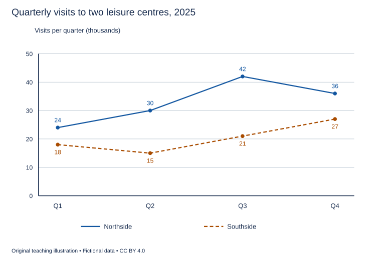
教学虚构数据。横轴Q1～Q4（2025季度）；纵轴千人次/季度。Northside：24、30、42、36；Southside：18、15、21、27。连线仅显示相邻观测值，非逐日记录。
任务预算（含首次审题，不额外加时）
初稿20分钟（审题规划3、写作15、检查2）；诊断15；反馈阅读与证据核查10；完整重写25；对照归档5。合计75分钟。
初稿后自评清单
- [ ] 达到最低字数；全文连贯成段，没有用项目符号代替作文。
- [ ] 概述给主要特征；数据、阶段或方位都与题图逐项相符，不推断未提供的原因。
- [ ] 每段可写出一个功能标签；例子或数据与该段要点相连。
- [ ] 圈出两处词汇搭配和两处句法疑点，先自行修正再查询或求反馈。
- [ ] 记录一项最影响理解的问题和原句证据，不填写自猜分数。
反馈与重写
打开 独立参考页（本节下方展开参考），按逐段检查和通用协议核验。重写任务：完整重写至少150词；把每个趋势动词圈定起止季度，另标一处首尾净变化和一处峰值，删除图外解释。
本周听读能力迁移（包含在既有预算）
在本题诊断/回听时段内用3分钟：圈出一个结论，回题面或自己的原话找直接证据；标出一个不能由现有信息推出的判断。对应U04 W09定位证据而非用常识替代。
这是本地写说步骤，不依赖音频已交付。若另有合法听读材料，只在该科原定复盘时段使用；没有材料则标待补，不宣称完成听力。
W09 T1A 示例、反馈与重练（首答后展开）
WS-W09-T1A 独立参考页
只在初稿完成后阅读；不是唯一答案，也没有官方分数。以下是对原创示例的教学讲评，不是对学生尚未提交作文的已完成批改。
思路拆解
定位单位与四个离散季度；概述先分两条走势，再讲全年首尾；只在观测点判断最大差距。
原创示例
The line graph compares visits to the Northside and Southside leisure centres during the four quarters of 2025. The figures represent thousands of visits in each quarter, rather than the number of individual members.
Overall, Northside received more visits than Southside in every quarter. Attendance at Northside rose to a peak in the third quarter before falling, whereas Southside experienced an initial decline followed by a steady increase. Despite these different patterns, both centres finished the year above their starting levels.
Northside recorded 24,000 visits in the first quarter and 30,000 in the second. The figure then climbed to 42,000 in the third quarter, its highest point, before dropping to 36,000 in the final quarter. This was still 12,000 higher than the figure at the beginning of the year.
Southside started at 18,000 visits, fell to 15,000 in the second quarter and recovered to 21,000 in the third. By the fourth quarter, visits had reached 27,000. The difference between the centres was smallest in the first quarter, at 6,000, and largest in the third, at 21,000. It subsequently narrowed to 9,000 at the end of the year.
示例正文词数：199（本项目正则计数；书信不含称呼、结束语与署名；连字符词作一词）。
逐段反馈与迁移
- P1 千人次不是会员人数，季度数据不是累计年度总数；引言换词不能改统计对象。
- P2 Northside始终领先但并非一直上升；两中心末值均高于初值。
- P3 峰值42千在Q3，末值36千比初值高12千；写fall只指Q3至Q4。
- P4 Southside先降后升；差距6、15、21、9千，不能把最大差距错当最大访客数。
常见失误
看到末值高就写持续上升；把某季度下降推广到全年下降；凭常识补促销或季节原因。
可执行反馈步骤
1. 先把自己的段落标为引入、概述/论点、支持、收束；分段可不同于示例，按功能核查，不照抄段数。
2. 对照上方逐段检查，逐项标“已有证据/缺失/不适用”。每条意见必须附自己的原句或缺失位置。
3. 按 反馈协议 的四维表记录；有争议的 AI 意见回题干、数据或语法依据核验。
4. 只选两项最高优先级问题执行整篇重写；保留原稿，禁止把示例替换为自己的作业。
重写任务
完整重写至少150词；把每个趋势动词圈定起止季度，另标一处首尾净变化和一处峰值，删除图外解释。
完成后重新勾选 学生页（见本节上方学生题） 清单；将一处改前/改后及理由交给独立评阅者核查。真人评阅状态目前为“待安排”，不是已完成。
WS-W09-T1G 学生页：健身房遗失物品查询
周次 W09｜题型 T1G｜能力点：书信目的、要点与语气
Task 1 的 A/G 分支二选一，另一分支不计入本周作业。
使用与记录
原创教学练习，非真题、非标准化模拟，难度未校准。先完成本页再打开参考页。人物、机构、经历与数据均为教学虚构。不要背诵示例。自评和 AI 反馈不能代替独立真人评分，未获得真人评阅时标记“分数未确认”。
保存：任务ID、实际日期、用时、初稿或原始录音、证据化反馈、重写/重答、三条修改理由。没有学生提交物，不得填写“已批改”或“已完成训练”。
完整题干
You left a bag at a sports centre after a class. Write to the centre manager. In your letter:
- describe when and where you think you left the bag
- describe the bag and its contents
- explain how you would like the centre to help you recover it.
Begin your letter: Dear Sir or Madam,
Write at least 150 words. You do not need to write any addresses. Spend about 20 minutes on this task.
任务预算（含首次审题，不额外加时）
初稿20分钟（审题规划3、写作15、检查2）；诊断15；反馈阅读与证据核查10；完整重写25；对照归档5。合计75分钟。
初稿后自评清单
- [ ] 达到最低字数；全文连贯成段，没有用项目符号代替作文。
- [ ] 三个要点均展开；称呼、目的、语气和结束语适合收信人。
- [ ] 每段可写出一个功能标签；例子或数据与该段要点相连。
- [ ] 圈出两处词汇搭配和两处句法疑点，先自行修正再查询或求反馈。
- [ ] 记录一项最影响理解的问题和原句证据，不填写自猜分数。
反馈与重写
打开 独立参考页（本节下方展开参考），按逐段检查和通用协议核验。重写任务：整篇重写至少150词；把一处不确定信息用适当限定表达，并让领取安排与工作人员确认发现的条件相连。
本周听读能力迁移（包含在既有预算）
在本题诊断/回听时段内用3分钟：圈出一个结论，回题面或自己的原话找直接证据；标出一个不能由现有信息推出的判断。对应U04 W09定位证据而非用常识替代。
这是本地写说步骤，不依赖音频已交付。若另有合法听读材料，只在该科原定复盘时段使用；没有材料则标待补，不宣称完成听力。
W09 T1G 示例、反馈与重练（首答后展开）
WS-W09-T1G 独立参考页
只在初稿完成后阅读；不是唯一答案，也没有官方分数。以下是对原创示例的教学讲评，不是对学生尚未提交作文的已完成批改。
思路拆解
正式查询，不把推测写成确定指控；时间地点、识别特征、核查与领取请求分别展开。
原创示例
Dear Sir or Madam,
I am writing to ask for help locating a bag that I believe I left at your sports centre yesterday evening. I attended the exercise class in Studio Two from six until seven, and I last remember putting the bag on the bench beside the studio entrance while changing my shoes.
It is a small dark green backpack with a silver zip and a red fabric label on the front. Inside are a blue towel, a pair of black trainers and a notebook with my name, Alex Chen, written on the first page. There is also an empty metal water bottle in the side pocket. These details should make it easier to distinguish the bag from similar items.
Could you please check whether it has been handed in to reception or found by the cleaning team? If it is there, I would be grateful if you could keep it somewhere secure until Friday evening, when I can collect it after work. Please reply to the email address shown on my membership record. I can bring my membership card to confirm my identity when collecting it.
Yours faithfully, Alex Chen
示例正文词数：185（本项目正则计数；书信不含称呼、结束语与署名；连字符词作一词）。
逐段反馈与迁移
- P1 I believe/last remember标明记忆范围；不能无依据说工作人员拿走了包。
- P2 颜色、标签和内部姓名能识别；细节须前后一致，不须编银行卡号码。
- P3 接待/清洁人员核查、周五保存、联系与身份核验可执行；没有假设包已经找到。
常见失误
只说my bag没有识别信息；将猜测地点写成绝对事实；命令中心赔偿却未请求查找。
可执行反馈步骤
1. 先把自己的段落标为引入、概述/论点、支持、收束；分段可不同于示例，按功能核查，不照抄段数。
2. 对照上方逐段检查，逐项标“已有证据/缺失/不适用”。每条意见必须附自己的原句或缺失位置。
3. 按 反馈协议 的四维表记录；有争议的 AI 意见回题干、数据或语法依据核验。
4. 只选两项最高优先级问题执行整篇重写；保留原稿，禁止把示例替换为自己的作业。
重写任务
整篇重写至少150词；把一处不确定信息用适当限定表达，并让领取安排与工作人员确认发现的条件相连。
完成后重新勾选 学生页（见本节上方学生题） 清单；将一处改前/改后及理由交给独立评阅者核查。真人评阅状态目前为“待安排”，不是已完成。
WS-W09-T2 学生页：所有学生是否都应参加团队运动
周次 W09｜题型 T2｜能力点：观点展开与任务回应
A/G 共用本题。
使用与记录
原创教学练习，非真题、非标准化模拟，难度未校准。先完成本页再打开参考页。人物、机构、经历与数据均为教学虚构。不要背诵示例。自评和 AI 反馈不能代替独立真人评分，未获得真人评阅时标记“分数未确认”。
保存：任务ID、实际日期、用时、初稿或原始录音、证据化反馈、重写/重答、三条修改理由。没有学生提交物，不得填写“已批改”或“已完成训练”。
完整题干
Some people believe every school student should be required to take part in a competitive team sport. To what extent do you agree or disagree? Give reasons and include relevant examples.
Write at least 250 words. Spend about 40 minutes on this task.
任务预算（含首次审题，不额外加时）
初稿40分钟（审题规划5、写作30、检查5）；诊断15；反馈阅读与证据核查10；完整重写35；对照归档5。合计105分钟。
初稿后自评清单
- [ ] 达到最低字数；全文连贯成段，没有用项目符号代替作文。
- [ ] 直接回答题目的所有问句，有始终一致的立场。
- [ ] 每段可写出一个功能标签；例子或数据与该段要点相连。
- [ ] 圈出两处词汇搭配和两处句法疑点，先自行修正再查询或求反馈。
- [ ] 记录一项最影响理解的问题和原句证据，不填写自猜分数。
反馈与重写
打开 独立参考页（本节下方展开参考），按逐段检查和通用协议核验。重写任务：完整重写至少250词；标出主张的范围词、一个真实逻辑上的反例，以及反例如何限制规则而非否认全部价值。
本周听读能力迁移（包含在既有预算）
在本题诊断/回听时段内用3分钟：圈出一个结论，回题面或自己的原话找直接证据；标出一个不能由现有信息推出的判断。对应U04 W09定位证据而非用常识替代。
这是本地写说步骤，不依赖音频已交付。若另有合法听读材料，只在该科原定复盘时段使用；没有材料则标待补，不宣称完成听力。
W09 T2 示例、反馈与重练（首答后展开）
WS-W09-T2 独立参考页
只在初稿完成后阅读；不是唯一答案，也没有官方分数。以下是对原创示例的教学讲评，不是对学生尚未提交作文的已完成批改。
思路拆解
审题抓every与competitive team，不偷换成反对所有体育；承认好处后用适用范围反例检验普遍要求。
原创示例
Competitive team sports can give students exercise and a shared goal. However, I disagree that every school student should be required to participate in one. Schools should provide opportunities to try team sports while allowing other forms of physical activity to meet different needs.
There are good reasons to include competitive games in school life. Players have to coordinate their actions, accept rules and respond when a result is disappointing. A student who passes the ball to a teammate in a better position may learn that cooperation can matter more than individual attention. These experiences can be valuable, particularly when a teacher makes sure that participation is not restricted to the most skilful players. Nevertheless, their value does not establish that competitive team sport is the only way to develop cooperation.
A universal requirement overlooks differences between students. Some enjoy exercise but find public competition so stressful that they become reluctant to participate at all. Others may need activities adapted to a physical condition. A school could encourage these students through walking groups, swimming or cooperative movement activities instead. This does not mean exempting everyone who initially feels uncomfortable from all challenge. It means offering a suitable route into regular activity rather than treating one format as appropriate for everybody.
Schools can also teach teamwork outside competitive sport. Preparing a group performance or completing a practical project requires students to share responsibilities and respond to others. Such activities are not substitutes for exercise, but they show why the social benefits of sport do not justify making a particular type compulsory. A balanced programme can provide both physical activity and cooperation through several routes.
In conclusion, competitive team sports deserve a place in schools, but compulsory participation for every student is too broad a rule. An introductory experience followed by meaningful choices would preserve many benefits while avoiding an unnecessary barrier for students whose needs differ.
示例正文词数：315（本项目正则计数；书信不含称呼、结束语与署名；连字符词作一词）。
逐段反馈与迁移
- P1 反对全员强制某类项目，保留运动机会；立场范围清楚。
- P2 具体合作机制并有包容条件；好处存在不自动推出唯一方法。
- P3 压力与适配需要是反例；不做医学判断，也不鼓励一切不适即退出。
- P4 团队合作的替代场景不代替身体运动，避免混淆两种目标。
- P5 回扣试体验后选择，不能结尾突然要求所有人参赛。
常见失误
把题目写成是否应该运动；以一个人不喜欢反驳所有体育价值；将可能好处写成人人必然受益。
可执行反馈步骤
1. 先把自己的段落标为引入、概述/论点、支持、收束；分段可不同于示例，按功能核查，不照抄段数。
2. 对照上方逐段检查，逐项标“已有证据/缺失/不适用”。每条意见必须附自己的原句或缺失位置。
3. 按 反馈协议 的四维表记录；有争议的 AI 意见回题干、数据或语法依据核验。
4. 只选两项最高优先级问题执行整篇重写；保留原稿，禁止把示例替换为自己的作业。
重写任务
完整重写至少250词；标出主张的范围词、一个真实逻辑上的反例，以及反例如何限制规则而非否认全部价值。
完成后重新勾选 学生页（见本节上方学生题） 清单；将一处改前/改后及理由交给独立评阅者核查。真人评阅状态目前为“待安排”，不是已完成。
WS-W09-S1 学生页
周次W09｜Part 1专项｜能力点：用具体证据限制概括，区分个人与群体｜30分钟
使用与记录
原创教学练习，非真题、非标准化模拟，难度未校准。先完成本页再打开参考页。人物、机构、经历与数据均为教学虚构。不要背诵示例。自评和 AI 反馈不能代替独立真人评分，未获得真人评阅时标记“分数未确认”。
保存：任务ID、实际日期、用时、初稿或原始录音、证据化反馈、重写/重答、三条修改理由。没有学生提交物，不得填写“已批改”或“已完成训练”。
操作与预算
设备与审题3分钟；首答录音6；回听及局部转写7；示例和诊断5；不看稿重答6；归档3。共30分钟。
Part 1专项题
1. What do you do to stay active?
2. Do you prefer exercising indoors or outdoors?
3. Were you interested in sport as a child?
4. Do you like exercising with other people?
追问：
- When would you choose a different activity?
- Can you give a recent example?
录音回听清单
- [ ] 保留首答原音，记录实际时长、是否中断、是否看稿；只报真实完成状态。
- [ ] 流利与连贯：标出两处时间戳，区分构思停顿与重复搜词，检查是否偏离问句。
- [ ] 词汇：找一处模糊词或重复表达，先解释原意再替换；不为难词改变意思。
- [ ] 语法：核对经历与习惯的时态；局部转写并更正两处妨碍理解的问题。
- [ ] 发音：不看转写听30秒，标听不清的词尾、重音或断句；没有音频不能判断发音。
- [ ] 展开：主要回答有具体情境或理由；追问后第一句回应追问的新角度。
重答要求
选择两个只有笼统判断的答案，先直接回应再加具体情境；重答一条追问，检查是否真正回应其新角度。
首答回听后才打开独立参考页（本节下方展开参考）。按反馈协议填至少三个时间戳，不以文字转写替代音频评阅。
本周听读能力迁移（包含在既有预算）
在本题诊断/回听时段内用3分钟：圈出一个结论，回题面或自己的原话找直接证据；标出一个不能由现有信息推出的判断。对应U04 W09定位证据而非用常识替代。
没有已交付听力的假设；以本题原音或文字做迁移，不记录为额外听力完成。
W09 S1 示例、反馈与重练（首答后展开）
WS-W09-S1 独立参考页
原创教学示例，非真题或评分结果。未收到学生音频；以下是示例分析与待执行反馈，不能登记为已完成学生批改。
展开示例
直接回应→原因→具体情境的展开示例
I usually walk in the evening because it is easy to fit into my day. I enjoy walking with a friend, but I sometimes go alone when I want to think quietly. That does not mean I dislike group exercise; it just depends on whether I want conversation or a little time to myself.
纯口答示例词数：54；只计MODEL标记内实际英文口答，不含标题、标签、说明。词数不能证明录音时长或流利度。
展开与反馈
本周能力：用具体证据限制概括，区分个人与群体。
1. 示例先表态，再说明偏好理由，最后提供条件或场景。检查自己是否用一个词回答后就结束。
2. 找到一个具体细节：物品、动作、对话或地点。用自己的经历替换，保持与题卡相关，不照搬示例身份与经历。
3. 追问要重新回应，不能继续背长答。首句先回答追问，再用一条理由支持。
4. 标出一处听不清或语法影响理解的原音时间戳；先尝试最小修正。不要把自然停顿一概当成错误，或用加快语速掩盖逻辑断裂。
常见失误
空泛形容词替代具体过程；给了经历却没解释为什么重要；Part 3只有个人故事没有一般解释；AI只看转写就判断发音。逐项回原音核对，不能凭范例推断自己已达到某个分数。
可执行重答与反馈
选择两个只有笼统判断的答案，先直接回应再加具体情境；重答一条追问，检查是否真正回应其新角度。
填写反馈协议四维表，附三个时间戳和原话证据。选一个内容问题与一个语言问题先修；重答后并排听两段，记录改善与仍未解决之处。自评与AI不能替代独立真人评分；独立评阅目前待安排，分数未确认。
WS-W09-S2 学生页
周次W09｜Part 2专项｜能力点：用具体证据限制概括，区分个人与群体｜30分钟
使用与记录
原创教学练习，非真题、非标准化模拟，难度未校准。先完成本页再打开参考页。人物、机构、经历与数据均为教学虚构。不要背诵示例。自评和 AI 反馈不能代替独立真人评分，未获得真人评阅时标记“分数未确认”。
保存：任务ID、实际日期、用时、初稿或原始录音、证据化反馈、重写/重答、三条修改理由。没有学生提交物，不得填写“已批改”或“已完成训练”。
操作与预算
准备、首答录音及追问5分钟；回听及局部转写8；示例与诊断5；关键词重组3；重答及追问5；归档4。共30分钟。
Part 2专项任务卡
Describe a physical activity you tried for the first time. Say what it was, where you tried it, what you found easy or difficult, and explain whether you would like to do it again.
准备1分钟，说1～2分钟。只记5个关键词，不预写句子。
收尾追问：
- Did anyone help you during the activity?
- What would you practise before trying it again?
录音回听清单
- [ ] 保留首答原音，记录实际时长、是否中断、是否看稿；只报真实完成状态。
- [ ] 流利与连贯：标出两处时间戳，区分构思停顿与重复搜词，检查是否偏离问句。
- [ ] 词汇：找一处模糊词或重复表达，先解释原意再替换；不为难词改变意思。
- [ ] 语法：核对经历与习惯的时态；局部转写并更正两处妨碍理解的问题。
- [ ] 发音：不看转写听30秒，标听不清的词尾、重音或断句；没有音频不能判断发音。
- [ ] 展开：主要回答有具体情境或理由；追问后第一句回应追问的新角度。
重答要求
用五个关键词重答完整任务卡1～2分钟，再答两条追问；补一处具体行动或细节并删一处无关背景。比较首答与重答，不背示例。
首答回听后才打开独立参考页（本节下方展开参考）。按反馈协议填至少三个时间戳，不以文字转写替代音频评阅。
本周听读能力迁移（包含在既有预算）
在本题诊断/回听时段内用3分钟：圈出一个结论，回题面或自己的原话找直接证据；标出一个不能由现有信息推出的判断。对应U04 W09定位证据而非用常识替代。
没有已交付听力的假设；以本题原音或文字做迁移，不记录为额外听力完成。
W09 S2 示例、反馈与重练（首答后展开）
WS-W09-S2 独立参考页
原创教学示例，非真题或评分结果。未收到学生音频；以下是示例分析与待执行反馈，不能登记为已完成学生批改。
展开示例
原创长答示例（时长须以个人实际录音测量）
An activity I tried for the first time was table tennis at a local leisure centre. A colleague invited me to a beginner session on a rainy Sunday afternoon. I had watched other people play, so I expected it to be fairly straightforward.
At first, simply hitting the ball over the net was harder than I imagined. I moved my whole arm too quickly, and the ball often went far beyond the table. The instructor suggested using a smaller movement and watching the ball until it reached the bat.
After a while, my colleague and I managed a short exchange without missing. That felt more satisfying than winning a point. We stopped keeping score and concentrated on returning the ball to a position the other person could reach.
I would like to try it again because the beginner session was relaxed and encouraging. I would not necessarily enjoy a serious tournament yet. The experience showed me that the atmosphere and level of an activity can matter as much as the activity itself.
纯口答示例词数：172；只计MODEL标记内实际英文口答，不含标题、标签、说明。词数不能证明录音时长或流利度。
展开与反馈
本周能力：用具体证据限制概括，区分个人与群体。
1. 长答示例按背景、行动/观察、变化与意义组织。每段都推进内容；检查自己是否只有背景而没有具体事件。
2. 找到一个具体细节：物品、动作、对话或地点。用自己的经历替换，保持与题卡相关，不照搬示例身份与经历。
3. 追问要重新回应，不能继续背长答。首句先回答追问，再用一条理由支持。
4. 标出一处听不清或语法影响理解的原音时间戳；先尝试最小修正。不要把自然停顿一概当成错误，或用加快语速掩盖逻辑断裂。
常见失误
空泛形容词替代具体过程；给了经历却没解释为什么重要；Part 3只有个人故事没有一般解释；AI只看转写就判断发音。逐项回原音核对，不能凭范例推断自己已达到某个分数。
可执行重答与反馈
用五个关键词重答完整任务卡1～2分钟，再答两条追问；补一处具体行动或细节并删一处无关背景。比较首答与重答，不背示例。
填写反馈协议四维表，附三个时间戳和原话证据。选一个内容问题与一个语言问题先修；重答后并排听两段，记录改善与仍未解决之处。自评与AI不能替代独立真人评分；独立评阅目前待安排，分数未确认。
WS-W09-S3 学生页
周次W09｜三部分全流程｜能力点：用具体证据限制概括，区分个人与群体｜60分钟
使用与记录
原创教学练习，非真题、非标准化模拟，难度未校准。先完成本页再打开参考页。人物、机构、经历与数据均为教学虚构。不要背诵示例。自评和 AI 反馈不能代替独立真人评分，未获得真人评阅时标记“分数未确认”。
保存：任务ID、实际日期、用时、初稿或原始录音、证据化反馈、重写/重答、三条修改理由。没有学生提交物，不得填写“已批改”或“已完成训练”。
操作与预算
D5：设备与流程准备2分钟，连续首答11～14分钟，余14～17分钟完整回听标记，共30分钟。D6：局部转写诊断10，阅读示例与调整5，重答与新追问10，对照归档5，共30分钟。合计60分钟。
连续三部分全流程（首答不可看参考）
找同伴读题，或独练逐题揭示。完整首答11～14分钟，中途不暂停纠错。模拟同伴不是认证考官；自行读题的练习记录不能冒充真实面试。
Part 1：4～5分钟
1. Do you enjoy spending time with colleagues or classmates?
2. What do you usually do during a short break?
3. Do you prefer a quiet break or an active one?
4. Has your daily routine changed recently?
5. Do you make plans for your free time?
6. What can interrupt those plans?
可按回答追加 Why? / Can you give an example? 到时转下部分，不强行说完全部备用问题。
Part 2：3～4分钟（含准备）
Describe a group activity you found enjoyable. Say what the activity was, who took part, what your role was, and explain why you enjoyed it.
准备1分钟，连续说1～2分钟。收尾追问：
- Would you join the same group again?
- Did everyone take part in the same way?
Part 3：4～5分钟
1. What makes group activities enjoyable?
2. Should everyone be expected to enjoy competition?
3. Can an activity benefit some people but not others?
4. How can organisers include people with different abilities?
根据回答追加追问：
- Would your answer change for a professional competition?
- Can too many adjustments make an activity difficult to organise?
录音回听清单
- [ ] 保留首答原音，记录实际时长、是否中断、是否看稿；只报真实完成状态。
- [ ] 流利与连贯：标出两处时间戳，区分构思停顿与重复搜词，检查是否偏离问句。
- [ ] 词汇：找一处模糊词或重复表达，先解释原意再替换；不为难词改变意思。
- [ ] 语法：核对经历与习惯的时态；局部转写并更正两处妨碍理解的问题。
- [ ] 发音：不看转写听30秒，标听不清的词尾、重音或断句；没有音频不能判断发音。
- [ ] 展开：主要回答有具体情境或理由；追问后第一句回应追问的新角度。
重答要求
重答最弱的一个Part 1问题、完整Part 2及一个Part 3问题，再答一条未用追问。用不同细节或补一个例外，确认不是复述范例；局部重答不另计全流程。
首答回听后才打开独立参考页（本节下方展开参考）。按反馈协议填至少三个时间戳，不以文字转写替代音频评阅。
本周听读能力迁移（包含在既有预算）
在本题诊断/回听时段内用3分钟：圈出一个结论，回题面或自己的原话找直接证据；标出一个不能由现有信息推出的判断。对应U04 W09定位证据而非用常识替代。
没有已交付听力的假设；以本题原音或文字做迁移，不记录为额外听力完成。
W09 S3 示例、反馈与重练（首答后展开）
WS-W09-S3 独立参考页
原创教学示例，非真题或评分结果。未收到学生音频；以下是示例分析与待执行反馈，不能登记为已完成学生批改。
展开示例
Part 2原创展开示例（个人语速不同，不能以词数推录音时长）
A group activity I enjoyed was a neighbourhood treasure hunt. A few residents organised it for adults and children, using clues about buildings and street names around our area. I joined a team with two neighbours and one neighbour’s teenage daughter.
My role was mainly to read the clues and keep track of the places we had already visited. I was not especially quick at solving them. The teenager was much better at noticing small details in signs, while another teammate knew stories about older buildings.
One clue sent us to a doorway that we had walked past many times without noticing its unusual pattern. We spent several minutes discussing it before realising that the answer was written above our heads.
I enjoyed the activity because different people could contribute different strengths. We did not finish first, but we talked and laughed throughout the afternoon. It reminded me that a successful group experience does not have to mean everyone doing exactly the same thing or competing intensely.
Part 3观点→理由→条件展开示例
An activity can be useful for many people without being suitable for everyone. A fast competitive game may motivate confident players, while beginners may need a slower version to participate meaningfully. I would keep the main purpose but offer different levels where possible. A professional competition is different, because common rules and entry standards are central to what it is.
纯口答示例词数：227；只计MODEL标记内实际英文口答，不含标题、标签、说明。词数不能证明录音时长或流利度。
展开与反馈
本周能力：用具体证据限制概括，区分个人与群体。
1. 长答示例按背景、行动/观察、变化与意义组织。每段都推进内容；检查自己是否只有背景而没有具体事件。
2. 找到一个具体细节：物品、动作、对话或地点。用自己的经历替换，保持与题卡相关，不照搬示例身份与经历。
3. Part 3示例不把个人选择强加给所有人；先讲机制，再说明条件或例外。检查自己的追问答案是否直接回应新问题。
4. 标出一处听不清或语法影响理解的原音时间戳；先尝试最小修正。不要把自然停顿一概当成错误，或用加快语速掩盖逻辑断裂。
常见失误
空泛形容词替代具体过程；给了经历却没解释为什么重要；Part 3只有个人故事没有一般解释；AI只看转写就判断发音。逐项回原音核对，不能凭范例推断自己已达到某个分数。
可执行重答与反馈
重答最弱的一个Part 1问题、完整Part 2及一个Part 3问题，再答一条未用追问。用不同细节或补一个例外，确认不是复述范例；局部重答不另计全流程。
填写反馈协议四维表，附三个时间戳和原话证据。选一个内容问题与一个语言问题先修；重答后并排听两段，记录改善与仍未解决之处。自评与AI不能替代独立真人评分；独立评阅目前待安排，分数未确认。
许可
原创文字：RayXBuilds and contributors，CC BY 4.0。此页由已验收分课汇编，调整了标题和导航；题干、正文和答案内容保留。公开第三方音频未包含。
回到顶部
U17 第10周：长篇阅读、写作与口语
本页为已独立核验的原创文字课程。先完成学生题目，再展开对应参考。非真题、非标准化模考，不换算雅思分数。听力尚未补齐，本页不代表全科课程已完成。
每周选A或G类Task 1一题，加Task 2及三次口语。参考范文不是学生已完成作业，仍须提交初稿、录音和重写，独立真人评分另行安排。
阅读每周180分钟（60分钟首次限时、120分钟证据精读与延迟复测），写作180分钟、口语120分钟。词汇60分钟、听力180分钟另列；新增完整听力未验收，不能勾整周完成。
W12限时复盘按实际错因与延迟复测记录调整；本页原创技能卷不能充当正式陌生卷。后续周数与达标规则见 U04。
阅读：首答不查词
R-W10-01 · How Familiar Should a Translation Feel?
W10｜正文 865 词｜13 题｜篇章：作者论证：两种主张、反例与有限结论（6段）
本课必做60分钟：首答20、证据复盘20、词汇长句10、48小时后复测10。每周三课180分钟，合卷首答替代单课首答，不重复计算。开放短文选做另加15分钟。
本项目原创虚构教学情境，人物、地点、历史事件和案例数据均非真实研究或史料。科学解释只讨论文内说明的模型与条件。非雅思真题或标准化模考；正确数不换算雅思等级。许可：CC BY 4.0 — RayXBuilds and contributors。
能力点：识别论证关系、区分作者与引述者、条件与因果、精确定位。初读不查词，完成后打开独立答案页。
Passage
A A fictional publisher commissions a new translation of a short novel about families living around a shared courtyard. The translator, Ilen, encounters a word used for an evening gathering that combines conversation, practical help and a small exchange of food. No single word in the target language covers exactly that arrangement. One editor proposes party, which is immediately recognisable. Another proposes leaving the original word unchanged. The choice looks like a contest between ease and faithfulness, but those terms conceal more than they explain. A familiar word can suggest relationships absent from the scene, while an unfamiliar word can become an unexplained obstacle. The writer argues that a translation should be evaluated through the distinctions a passage needs, rather than through a general demand that it always sound either foreign or completely at home. Neither surface smoothness nor visible strangeness is proof of accuracy.
B The editor favouring party has a practical concern. A reader interrupted by unfamiliar vocabulary may lose the movement of the story. The gathering is described during an argument, and a long explanation could make the characters seem to pause while a lecturer addresses the audience. Ilen accepts this concern without accepting the proposed word. In the source passage, attendance carries an expectation of helping a neighbour with a task. Party could encourage readers to imagine an optional celebration. That difference affects the argument between the characters, not just the atmosphere of the setting. A word that keeps the sentence moving while changing the reason for a person's anger has not solved the translator's problem. Fluency has to be assessed alongside the inferences it invites, especially where those inferences explain what happens next in the narrative.
C The editor favouring the original term points to its cultural specificity. Retaining it could remind readers that the social arrangement is not identical to one they already know. But the bare term does not explain the obligation either. A reader might simply skip it or treat it as a decorative name. The writer therefore rejects the notion that leaving a word untranslated automatically preserves its meaning. Meaning depends partly on what the surrounding passage enables the reader to infer. In this scene, Ilen adds a brief reference to the work expected at the gathering and then uses the original term. The solution is not offered as a formula for every novel. It is a local response to a distinction that matters at this particular moment, with a cost in length that the translator judges small enough to accept.
D A later scene creates the opposite problem. A character uses an exaggerated title to tease a close friend. Keeping the formal title word for word makes the exchange sound respectful in the target language, losing the humour established by the relationship. Here Ilen chooses a familiar teasing expression rather than retaining the unusual phrase. The apparent inconsistency is defensible because the relevant function has changed. The earlier scene needed readers to notice an unfamiliar obligation; this one needs them to recognise affectionate mockery. A rule based only on whether individual words remain visible would treat the two decisions as contradictory. A rule concerned with the scene's action can explain why they differ. This does not give translators permission to rewrite anything they dislike. Their choices still need to answer to evidence in the passage and to its wider pattern of relationships.
E To make those choices inspectable, Ilen keeps a decision notebook containing the disputed phrase, possible versions and the reasons for rejecting each. A scene map identifies who is speaking, to whom and under what pressure. These records are not inserted wholesale into the novel. They allow the editor to examine a choice without relying entirely on the translator's confidence. Where a word recurs, a term list helps identify whether the same social meaning remains relevant or whether its function has shifted. Consistency is useful when it preserves a connection, but mechanical consistency can hide a change. The writer would rather see a justified difference than an identical rendering that makes two unlike uses seem the same. Explanation, not repetition alone, is what makes the work accountable to another careful reader.
F The publisher finally asks two readers to describe what they think happens in the courtyard scene. One version leads both to expect entertainment; another leads them to notice the obligation to help. This is a useful check on interpretation, not a vote that can settle every literary choice. Readers can disagree for reasons unrelated to the translation, and a small test cannot represent every future audience. Ilen records their comments on a reader sheet and revises a transition that had obscured who was expected to work. The finished book includes a short translator's note explaining the treatment of the recurring term. Its aim is not to certify the translation as beyond dispute. It gives readers a way to understand a deliberate choice. Good translation, in this account, is neither invisible replacement nor a display of difficult words. It is reasoned attention to what readers need to recognise and which differences a passage cannot afford to lose. That attention may produce smooth sentences in one place and a deliberately unfamiliar expression in another, without abandoning a coherent purpose.
Questions
Do the following statements agree with the writer's views? Write YES, NO or NOT GIVEN. YES = the writer agrees; NO = the writer expresses the opposite view; NOT GIVEN = the writer's view is not stated. Do not use outside knowledge.
1. An untranslated term automatically preserves its meaning.
2. Different renderings can be justified when a term’s function changes.
3. Translators may freely rewrite passages merely because they dislike them.
4. The writer thinks translated novels should always be sold more cheaply.
Choose ONE answer, A, B, C or D.
5. The opening challenges the assumption that
A. all languages have identical words B. courtyard scenes cannot be translated C. publishers never influence translation D. familiarity or strangeness alone proves accuracy
6. Why is party inadequate in the first scene?
A. It identifies the wrong speaker B. It has no meaning C. It changes the implied social obligation D. It is too long to print
7. Why use a familiar expression in the teasing scene?
A. To avoid all editorial discussion B. To make the friend seem superior C. To remove every cultural difference D. To preserve the affectionate function of the exchange
8. The reader test is presented as
A. a definitive vote B. a census of every audience C. a substitute for reading the source D. a limited check on interpretation
Complete the sentences. Choose NO MORE THAN 3 WORDS FROM THE PASSAGE for each answer. Do not change word forms.
9. Disputed alternatives and reasons are kept in a ______.
10. Speaker relationships and pressures are laid out on a ______.
11. Recurring expressions are checked through a ______.
12. The comments from the two readers are written on a ______.
13. The book explains the recurring term in a short ______.
本周重点
立场：分别标出作者、引述者和被反驳观点；保留 may、only、all 等范围词。
复盘
必做：给每道错题标记“定位/作者立场/范围/语法/词数”，抄最短证据；用一行箭头概括本文论证或过程。48小时后重做错题与两道正确题，检查是否仍能指出证据。
选做（15分钟，80–100词）：Explain why two different translation strategies can be justified in one novel.
R-W10-01 答案、证据与精读（首答后展开）
R-W10-01 · 独立答案与证据
来源与许可同学生页。先完成再核对。可接受答案由 accepted_answers 明确列出；只忽略大小写和首尾空格，不自行删词。开放复盘不计入客观正确数。
1. NO｜段落 C｜证据：“rejects the notion”
直述反对。
2. YES｜段落 E｜证据：“rather see a justified difference”
作者支持有据的差异。
3. NO｜段落 D｜证据：“does not give translators permission”
明确反对。
4. NOT GIVEN｜段落 F｜证据：“The finished book includes”
未讨论价格。
5. D｜段落 A｜证据：“Neither surface smoothness nor visible strangeness is proof”
作者反对表层判准。
6. C｜段落 B｜证据：“an optional celebration”
改变人物行为原因。
7. D｜段落 D｜证据：“recognise affectionate mockery”
场景作用不同，不是随意偏好。
8. D｜段落 F｜证据：“not a vote that can settle every literary choice”
明确保留测试限度。
9. decision notebook / notebook｜段落 E｜证据：“keeps a decision notebook”
notebook为合理短答。
10. scene map / map｜段落 E｜证据：“A scene map identifies”
term list不记录人物关系。
11. term list / list｜段落 E｜证据：“a term list helps identify”
list可接受；不同功能不强求同一译法。
12. reader sheet / sheet｜段落 F｜证据：“on a reader sheet”
sheet为可接受载体。
13. translator's note / note｜段落 F｜证据：“a short translator's note”
note为中心词；译者说明不宣称权威终结争论。
词汇与长句
- rendering：译法
- obligation：义务或应履行的期待
- mockery：戏谑；嘲弄
- accountable：可向他人说明理由并接受审查的
> Fluency has to be assessed alongside the inferences it invites, especially where those inferences explain what happens next in the narrative.
it指fluency；where说明特别重要的语境。
> Consistency is useful when it preserves a connection, but mechanical consistency can hide a change.
when限定一致性的价值；but转折并非反对所有一致性。
开放任务参考
B义务与D戏谑功能不同；E选择需有文本理由，不能等同随意改写。
标准：观点有文内依据，保留条件和范围，推断明确标注；不存在唯一措辞。
R-W10-02 · The Shop Between Two Tenants
W10｜正文 998 词｜13 题｜篇章：论证：临时使用的收益、负担与条件（9段）
本课必做60分钟：首答20、证据复盘20、词汇长句10、48小时后复测10。每周三课180分钟，合卷首答替代单课首答，不重复计算。开放短文选做另加15分钟。
本项目原创虚构教学情境，人物、地点、历史事件和案例数据均非真实研究或史料。科学解释只讨论文内说明的模型与条件。非雅思真题或标准化模考；正确数不换算雅思等级。许可：CC BY 4.0 — RayXBuilds and contributors。
能力点：识别论证关系、区分作者与引述者、条件与因果、精确定位。初读不查词，完成后打开独立答案页。
Passage
A An empty shop in the fictional town of Bellan becomes the centre of an argument about temporary use. A group wants to run a repair exhibition there while the owner searches for a long-term tenant. Supporters describe an obvious improvement: activity would replace a blank window, and visitors would learn practical skills. Critics worry that a short arrangement may be celebrated as a lasting solution to commercial decline. The writer considers both concerns legitimate but incomplete. The useful question is not whether temporary occupation is good in itself. It is which benefits depend on its temporary nature, which costs persist after it ends, and whether the people accepting those costs understand the arrangement before work begins.
B The exhibition organiser, Sera, values the short lease because it permits an experiment that could not support a permanent shop. Volunteers want to test demonstrations and discover which subjects attract questions. A fixed ending can encourage them to define a manageable programme rather than promise indefinite service. Sera does not claim that the exhibition will replace lost businesses. Her argument is narrower: unused space can support a worthwhile activity without first acquiring a permanent purpose. The writer agrees that judging every experiment by whether it becomes permanent would discard useful forms of learning. Permanence is one possible outcome, not the only evidence that a short project has achieved something of value.
C The owner, Cal, welcomes someone maintaining the interior but wants the shop available quickly if a tenant appears. This creates a difference between a short lease with a known final date and an arrangement that can end at uncertain notice. Volunteers may invest time in fitting shelves or adapting displays without knowing how long those changes will be useful. Describing both arrangements merely as temporary hides a major distinction. The writer regards predictable notice as part of the practical offer, not a minor detail that can be settled after people commit themselves. A cheap space with an unpredictable ending can impose costs that do not appear in its monthly rent.
D Neighbouring trader Min worries about expectations. Visitors attracted by the exhibition may return after it has closed and assume that the town failed to sustain it. A celebration announcing a new community hub would encourage that interpretation. Min recommends public information that gives the closing date from the beginning and explains what is being tested. This does not require making the project sound unimportant. It allows its success to be described against the promise actually made. The writer supports that distinction. A temporary activity should not need the appearance of permanence to justify attention, especially when inflated promises can make a planned ending look like an embarrassing collapse.
E Practical preparation also matters. The building has storage rooms and narrow circulation routes left by its previous occupant. The organisers cannot assume that an attractive front window makes the interior suitable for every demonstration. In this fictional planning exercise, they prepare a use plan showing visitor movement, equipment and areas that will remain closed. Specialist requirements are left for the relevant building professionals to assess; the passage does not provide technical instructions for public premises. Its point is that suitability depends on the proposed activity. A room appropriate for displaying small objects may not be appropriate for crowded sessions involving moving equipment, even when the lease and the publicity describe both simply as an exhibition.
F The agreement eventually includes an exit inventory. It lists which shelves belong to the owner, which objects belong to volunteers and which changes must be reversed. This is discussed before installation rather than during a hurried departure. The project also maintains a booking calendar with a visibly marked final week. Demonstrations that depend on follow-up are scheduled early enough for that follow-up to occur before closing. These records connect the end of the project with its design. Treating departure as an exceptional interruption would be misleading when departure was built into the arrangement from the start. Planning for it makes the temporary activity more credible, not less ambitious within its stated limits.
G The exhibition attracts questions about repairing household objects, but the organisers avoid counting every visitor as a person who has learned a skill. They distinguish attendance, participation and later use of the method. A brief visitor card asks what someone tried and what remained unclear. It is optional, and the team records that respondents may differ from people who leave without completing it. These modest records cannot establish the town's economic recovery. They can help assess whether particular demonstrations worked as intended. The writer would rather see a limited claim supported by relevant evidence than a much larger claim assembled by attaching a hopeful interpretation to every person who passed through the doorway.
H When the exhibition closes, volunteers hold a handover session at which useful materials are offered to an existing local workshop. Not every object is retained, and no new permanent organisation is announced. Some visitors are disappointed, while others understand the ending because it has been visible throughout the programme. The closing event is not proof that temporary projects always transfer their benefits successfully. It shows one way to make continuity a concrete question: which resources, skills or relationships can another activity actually use? Simply asserting that the project leaves a legacy would not answer that question without identifying something that remains available after the keys have been returned.
I Bellan's experience supports a conditional defence of temporary use. A short project can make room for experimentation and provide a valuable service, but only if its commitments fit its duration and its costs are not hidden by the enthusiasm of its opening. Empty space is an opportunity, not an argument that any proposed use must be beneficial. The test is whether the project makes an honest promise, provides the conditions needed to fulfil it and prepares for the point at which the promise ends. A planned ending can then be part of a successful design rather than a fact that publicity tries not to mention.
Questions
Which paragraph contains the following information? Write a letter, A–I. You may use any letter more than once.
1. a distinction between a fixed end date and an uncertain period of notice
2. a warning that front-window appearance does not establish interior suitability
3. a record assigning ownership and responsibilities for removing installations
4. a proposed transfer of remaining materials to an existing organisation
Do the following statements agree with the writer's views? Write YES, NO or NOT GIVEN. YES = the writer agrees; NO = the writer expresses the opposite view; NOT GIVEN = the writer's view is not stated. Do not use outside knowledge.
5. Every worthwhile temporary project must become permanent.
6. Predictable notice is a meaningful part of the offer to organisers.
7. A temporary project needs exaggerated permanence claims to deserve attention.
8. The writer believes Cal should sell the property to Sera.
Complete the summary. Choose NO MORE THAN 3 WORDS FROM THE PASSAGE for each answer. Do not change word forms.
The organisers mapped the activity in a (9) ______. Responsibilities at departure were listed in an (10) ______. The final week appeared on a (11) ______. Feedback could be provided on a (12) ______. Materials were later offered to a workshop during a (13) ______.
本周重点
立场：分别标出作者、引述者和被反驳观点；保留 may、only、all 等范围词。
复盘
必做：给每道错题标记“定位/作者立场/范围/语法/词数”，抄最短证据；用一行箭头概括本文论证或过程。48小时后重做错题与两道正确题，检查是否仍能指出证据。
选做（15分钟，80–100词）：Define success for a project that closes on its announced date.
R-W10-02 答案、证据与精读（首答后展开）
R-W10-02 · 独立答案与证据
来源与许可同学生页。先完成再核对。可接受答案由 accepted_answers 明确列出；只忽略大小写和首尾空格，不自行删词。开放复盘不计入客观正确数。
1. C｜段落 C｜证据：“a known final date”
C两类临时性，不是D宣传日期。
2. E｜段落 E｜证据：“an attractive front window”
E功能与空间匹配。
3. F｜段落 F｜证据：“which changes must be reversed”
exit inventory明确归属与撤除。
4. H｜段落 H｜证据：“offered to an existing local workshop”
H实际移交，非空泛legacy。
5. NO｜段落 B｜证据：“Permanence is one possible outcome”
作者明确同意窄用途。
6. YES｜段落 C｜证据：“part of the practical offer”
非租金外无关细节。
7. NO｜段落 D｜证据：“should not need the appearance of permanence”
作者反对。
8. NOT GIVEN｜段落 C｜证据：“wants the shop available quickly”
未给产权转让立场。
9. use plan / plan｜段落 E｜证据：“prepare a use plan”
plan可接受，空间动线而非租期。
10. exit inventory / inventory｜段落 F｜证据：“includes an exit inventory”
exit inventory 与 inventory 都以元音音素开头，可接 an；两者均指离场责任清单。
11. booking calendar / calendar｜段落 F｜证据：“maintains a booking calendar”
终周标注的预约记录。
12. visitor card / brief visitor card / card｜段落 G｜证据：“A brief visitor card”
原文 brief visitor card 为三词，题干没有重复 brief；该完整词组、visitor card 和 card 均接受。
13. handover session / session｜段落 H｜证据：“hold a handover session”
移交活动名称，可接受中心词。
词汇与长句
- notice：提前通知期
- premises：用于活动的建筑或场所
- inventory：物品及责任清单
- continuity：延续性
> A cheap space with an unpredictable ending can impose costs that do not appear in its monthly rent.
that修饰costs；租金不覆盖全部成本。
> A temporary activity should not need the appearance of permanence to justify attention, especially when inflated promises can make a planned ending look like an embarrassing collapse.
should not表达作者立场；不是说所有永久活动无价值。
开放任务参考
B实验学习、G参与效果、H可具体移交资源；不以永久化作唯一指标。
标准：观点有文内依据，保留条件和范围，推断明确标注；不存在唯一措辞。
R-W10-03 · Why the Jury Chose No Overall Winner
W10｜正文 881 词｜14 题｜篇章：论证：竞争标准与不可直接相加的判断（7段）
本课必做60分钟：首答20、证据复盘20、词汇长句10、48小时后复测10。每周三课180分钟，合卷首答替代单课首答，不重复计算。开放短文选做另加15分钟。
本项目原创虚构教学情境，人物、地点、历史事件和案例数据均非真实研究或史料。科学解释只讨论文内说明的模型与条件。非雅思真题或标准化模考；正确数不换算雅思等级。许可：CC BY 4.0 — RayXBuilds and contributors。
能力点：识别论证关系、区分作者与引述者、条件与因果、精确定位。初读不查词，完成后打开独立答案页。
Passage
A The fictional design school of Neth runs a competition for a portable reading light. Entries must be easy to carry, pleasant to use and straightforward to repair. The jury expects to choose a single winner, but the strongest entries excel in different ways. One is exceptionally light, another illuminates a wide page evenly, and a third can be opened using an ordinary tool. A sponsor suggests adding scores for the three qualities and selecting the highest total. That seems impartial because every entry would pass through the same calculation. The writer argues that equal treatment in a calculation does not make the choices behind the calculation disappear. Before adding numbers, the jury must understand what the numbers represent and what tradeoffs the addition would permit.
B The first problem concerns scales. Weight is recorded in a physical unit, while comfort is judged through a short description and a rating. Converting both to marks out of ten makes them look comparable without establishing that a one-point difference has the same meaning in each category. An improvement from a painful grip to a tolerable one may matter differently from an improvement between two already comfortable grips. Nor is a small reduction in weight necessarily valuable to every user. The jury should not confuse the shared appearance of the scores with a shared interpretation. A numerical table can organise judgement, but it cannot create equivalence merely by placing quantities in adjacent columns and giving them the same maximum possible score.
C The sponsor then proposes weights: perhaps repairability should count twice as much as portability. This makes the preference visible, which is an improvement over concealing it in the choice of scale. Yet weighting still allows compensation. Under a weighted total, an excellent result in one category can offset a poor result in another. Sometimes that is acceptable; sometimes it conflicts with the purpose of the product. A lamp that is easy to carry but cannot light the page adequately should not win simply by being extremely light. The writer therefore favours minimum requirements for qualities without which the device cannot perform its basic task. Above those requirements, tradeoffs can be discussed rather than silently encoded as though every quality were infinitely exchangeable for another.
D Different users also bring different circumstances. A person carrying the lamp each day may value its weight more than someone keeping it beside a chair. A repair workshop may care about the availability of replacement parts, whereas a traveller may care about how securely the lamp folds. These are not necessarily disagreements about facts. They may be reasonable differences about what matters in a particular use. The competition brief did not identify one primary setting, so the jury cannot retrospectively pretend that all entrants were designing for the same narrow situation. It can either clarify the intended purpose for a future competition or report how the current designs perform under several explicitly stated uses. Selecting a universal winner without acknowledging the ambiguity would make the result easier to announce and harder to interpret.
E The jury tests the lamps through a task sequence: opening, positioning, reading, closing and replacing a component. Observers record where participants hesitate or ask for help. A repair sheet lists the tools and steps needed for the replacement. A portability record gives the folded size as well as the mass. These records support more specific discussion than a general impression of quality. They do not settle the choice automatically. A participant's hesitation may come from unfamiliarity rather than a persistent design problem, and a quick repair using a prepared part does not establish that the part will remain available. The writer supports testing because it improves the questions the jury can ask, not because a short demonstration can remove every uncertainty about future use.
F After reviewing the evidence, the jury publishes three awards linked to different purposes instead of one overall prize. It also states the minimum requirements every award recipient met. The sponsor worries that this will look indecisive. The writer disagrees: a decision can be definite without pretending that every dimension has been collapsed into a single ordering. The jury has chosen which designs to recognise and has explained the grounds. Its report includes a comparison matrix showing strengths, limitations and unresolved questions. Readers who care about a particular use can inspect the relevant evidence. This is more informative than a solitary rank that leaves them unable to tell whether the leading design performs well on the dimension that matters most to them.
G None of this means that totals are always inappropriate or that institutions should never choose a single product. A buyer may have a clearly defined task, a budget and genuine minimum requirements, allowing a defensible choice among acceptable options. The point is to make the decision rule answer to the purpose rather than treating the existence of a formula as its justification. If weights are used, their consequences should be explained; if some shortcomings cannot be compensated, the rule should say so. Neth's jury did not abandon judgement. It exposed the judgements that a neat total would otherwise have hidden. The useful lesson for readers is to ask what an overall score permits a strong result to cancel, and whether that cancellation is appropriate for the service the object is supposed to provide.
Questions
Which paragraph contains the following information? Write a letter, A–G. You may use any letter more than once.
1. an example contrasting a daily carrier with a stationary user
2. a discussion of nonlinear differences within comfort ratings
3. a sequence of practical tasks used during testing
4. a concern that multiple awards will appear indecisive
5. a statement that weighted scores allow one strength to offset a weakness
Do the following statements agree with the writer's views? Write YES, NO or NOT GIVEN. YES = the writer agrees; NO = the writer expresses the opposite view; NOT GIVEN = the writer's view is not stated. Do not use outside knowledge.
6. Numerical totals are inappropriate in every purchasing decision.
7. A decision can be definite without a universal ranking.
8. Testing a repair with a prepared part proves future supply.
9. The sponsor should be forbidden to fund future competitions.
10. Decision rules should be justified in relation to purpose.
Choose ONE answer, A, B, C or D.
11. The proposed calculation initially appears impartial because
A. it treats every entry with the same procedure B. it avoids all value choices C. all qualities use physical units D. the sponsor has no preferences
12. A common ten-point scale does not establish
A. that mass can be measured B. that tables can be printed C. that ratings exist D. equal meaning for a one-point difference
13. Minimum requirements address the danger that
A. judges will need descriptions B. strength in one area offsets failure of a basic function C. every category receives the same weight D. no design can be measured
14. Why offer several awards?
A. To avoid any decision B. To recognise suitability for different purposes C. To deny all shortcomings D. To ignore the brief
本周重点
立场：分别标出作者、引述者和被反驳观点；保留 may、only、all 等范围词。
复盘
必做：给每道错题标记“定位/作者立场/范围/语法/词数”，抄最短证据；用一行箭头概括本文论证或过程。48小时后重做错题与两道正确题，检查是否仍能指出证据。
选做（15分钟，80–100词）：Give one minimum requirement and one tradeoff for a reading light.
R-W10-03 答案、证据与精读（首答后展开）
R-W10-03 · 独立答案与证据
来源与许可同学生页。先完成再核对。可接受答案由 accepted_answers 明确列出；只忽略大小写和首尾空格，不自行删词。开放复盘不计入客观正确数。
1. D｜段落 D｜证据：“someone keeping it beside a chair”
D使用情境。
2. B｜段落 B｜证据：“a painful grip to a tolerable one”
B不同区间的同分差。
3. E｜段落 E｜证据：“opening, positioning, reading, closing”
E操作观察。
4. F｜段落 F｜证据：“this will look indecisive”
反方担忧而非作者观点。
5. C｜段落 C｜证据：“weighting still allows compensation”
C补偿规则，非G一般总结。
6. NO｜段落 G｜证据：“None of this means that totals are always inappropriate”
作者限定批评。
7. YES｜段落 F｜证据：“can be definite without pretending”
明确肯定。
8. NO｜段落 E｜证据：“does not establish that the part will remain available”
当次演示不证明长期供应。
9. NOT GIVEN｜段落 F｜证据：“The sponsor worries”
未给禁资建议。
10. YES｜段落 G｜证据：“make the decision rule answer to the purpose”
作者结论。
11. A｜段落 A｜证据：“same calculation”
B是被反驳结论，C/D无据。
12. D｜段落 B｜证据：“a one-point difference has the same meaning”
外观可比不等于含义等值。
13. B｜段落 C｜证据：“without which the device cannot perform its basic task”
防止不当补偿。
14. B｜段落 F｜证据：“three awards linked to different purposes”
仍有明确决定和证据。
词汇与长句
- equivalence：等值性
- compensation：一项优势抵消另一项不足
- portability：便携性
- matrix：按维度排列的比较表
> A numerical table can organise judgement, but it cannot create equivalence merely by placing quantities in adjacent columns and giving them the same maximum possible score.
but限定数字作用，by后两个并列动名词。
> a decision can be definite without pretending that every dimension has been collapsed into a single ordering.
without后接动名词；definite不等于唯一综合排名。
开放任务参考
C照明基本功能可设门槛，D便携与修理取决用户；不可把喜好冒充事实。
标准：观点有文内依据，保留条件和范围，推断明确标注；不存在唯一措辞。
写作与口语：Task 1双分支择一
WS-W10-T1A 学生页：园艺种子订单处理流程
周次 W10｜题型 T1A｜能力点：流程分支与准确顺序
Task 1 的 A/G 分支二选一，另一分支不计入本周作业。
使用与记录
原创教学练习，非真题、非标准化模拟，难度未校准。先完成本页再打开参考页。人物、机构、经历与数据均为教学虚构。不要背诵示例。自评和 AI 反馈不能代替独立真人评分，未获得真人评阅时标记“分数未确认”。
保存：任务ID、实际日期、用时、初稿或原始录音、证据化反馈、重写/重答、三条修改理由。没有学生提交物，不得填写“已批改”或“已完成训练”。
完整题干
The diagram shows how a seed supplier processes orders placed by gardening clubs. Summarise the information by selecting and reporting the main features, and make comparisons where relevant.
Write at least 150 words. Spend about 20 minutes on this task.
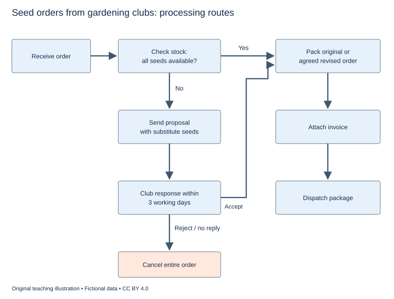
教学虚构业务流程。收单→查库存；全部有货→打包→附账单→发货。部分缺货→向园艺社团发送替代种子提议→等待最多3个工作日：接受→按修改订单打包并合流附账单/发货；拒绝或到期无回复→取消整个订单。图未提供付款、退款、运输时间或回流路径。
任务预算（含首次审题，不额外加时）
初稿20分钟（审题规划3、写作15、检查2）；诊断15；反馈阅读与证据核查10；完整重写25；对照归档5。合计75分钟。
初稿后自评清单
- [ ] 达到最低字数；全文连贯成段，没有用项目符号代替作文。
- [ ] 概述给主要特征；数据、阶段或方位都与题图逐项相符，不推断未提供的原因。
- [ ] 每段可写出一个功能标签；例子或数据与该段要点相连。
- [ ] 圈出两处词汇搭配和两处句法疑点，先自行修正再查询或求反馈。
- [ ] 记录一项最影响理解的问题和原句证据，不填写自猜分数。
反馈与重写
打开 独立参考页（本节下方展开参考），按逐段检查和通用协议核验。重写任务：完整重写至少150词；用if条件句准确区分三种结果，写完沿箭头各走一次，不增加任何付款或运输时长。
本周听读能力迁移（包含在既有预算）
在本题诊断时段内用3分钟：列出题图的“条件→动作”配对，核对有货/缺货、接受/拒绝/无回复各路径；另记付款安排和运输时间为“未提供”，不补原因或时长。对应U04 W10区分已知信息与需澄清信息。
这是本地写说步骤，不依赖音频已交付。若另有合法听读材料，只在该科原定复盘时段使用；没有材料则标待补，不宣称完成听力。
W10 T1A 示例、反馈与重练（首答后展开）
WS-W10-T1A 独立参考页
只在初稿完成后阅读；不是唯一答案，也没有官方分数。以下是对原创示例的教学讲评，不是对学生尚未提交作文的已完成批改。
思路拆解
概述共同起终点与缺货分支；先主路径再替代路径；三工作日只作用于回复，不推总配送时间。
原创示例
The diagram illustrates how a seed supplier handles orders from gardening clubs, from receiving a request to dispatching the package or cancelling the order. It includes a decision about whether all requested seeds are available.
Overall, orders for items already in stock follow a short route directly to packing. Orders containing unavailable items require an additional proposal and a response from the club. Only orders that can be fulfilled, either as originally requested or in an agreed revised form, proceed to dispatch.
First, the supplier receives an order and checks its stock. If all the requested seeds are available, staff pack the original order. They then attach an invoice and send the package to the club. No separate approval stage is shown for this route.
If some seeds are unavailable, the supplier sends the club a proposal listing possible substitutes. The club is given three working days to respond. An accepted proposal leads to packing the revised order, followed by the same invoicing and dispatch stages used for fully available orders. If the club rejects the proposal, or does not respond within the stated period, the order is cancelled. The diagram shows no further action after cancellation.
示例正文词数：197（本项目正则计数；书信不含称呼、结束语与署名；连字符词作一词）。
逐段反馈与迁移
- P1 终点有发货和取消两种；没有称为循环。
- P2 有货直接打包，缺货须提议及回复；不把所有订单都写成需再次同意。
- P3 查库存→打包→附账单→发货，invoice不是已付款证明。
- P4 接受改订后合流；拒绝或三工作日无回复取消，不是保留部分发货。
常见失误
将三个工作日当成到货保证；忽略无回复分支；擅自补退款或付款节点。
可执行反馈步骤
1. 先把自己的段落标为引入、概述/论点、支持、收束；分段可不同于示例，按功能核查，不照抄段数。
2. 对照上方逐段检查，逐项标“已有证据/缺失/不适用”。每条意见必须附自己的原句或缺失位置。
3. 按 反馈协议 的四维表记录；有争议的 AI 意见回题干、数据或语法依据核验。
4. 只选两项最高优先级问题执行整篇重写；保留原稿，禁止把示例替换为自己的作业。
重写任务
完整重写至少150词；用if条件句准确区分三种结果，写完沿箭头各走一次，不增加任何付款或运输时长。
完成后重新勾选 学生页（见本节上方学生题） 清单；将一处改前/改后及理由交给独立评阅者核查。真人评阅状态目前为“待安排”，不是已完成。
WS-W10-T1G 学生页：向社团组织者澄清志愿岗位
周次 W10｜题型 T1G｜能力点：书信目的、要点与语气
Task 1 的 A/G 分支二选一，另一分支不计入本周作业。
使用与记录
原创教学练习，非真题、非标准化模拟，难度未校准。先完成本页再打开参考页。人物、机构、经历与数据均为教学虚构。不要背诵示例。自评和 AI 反馈不能代替独立真人评分，未获得真人评阅时标记“分数未确认”。
保存：任务ID、实际日期、用时、初稿或原始录音、证据化反馈、重写/重答、三条修改理由。没有学生提交物，不得填写“已批改”或“已完成训练”。
完整题干
You volunteered to help at a neighbourhood gardening day, but the information about your role is unclear. Write to the organiser, Ms Brown. In your letter:
- explain what you understood your role to be
- describe the information that has caused confusion
- ask for clarification and explain what work you can do.
Begin your letter: Dear Ms Brown,
Write at least 150 words. You do not need to write any addresses. Spend about 20 minutes on this task.
任务预算（含首次审题，不额外加时）
初稿20分钟（审题规划3、写作15、检查2）；诊断15；反馈阅读与证据核查10；完整重写25；对照归档5。合计75分钟。
初稿后自评清单
- [ ] 达到最低字数；全文连贯成段，没有用项目符号代替作文。
- [ ] 三个要点均展开；称呼、目的、语气和结束语适合收信人。
- [ ] 每段可写出一个功能标签；例子或数据与该段要点相连。
- [ ] 圈出两处词汇搭配和两处句法疑点，先自行修正再查询或求反馈。
- [ ] 记录一项最影响理解的问题和原句证据，不填写自猜分数。
反馈与重写
打开 独立参考页（本节下方展开参考），按逐段检查和通用协议核验。重写任务：完整重写至少150词；分别用过去理解和当前文件定位冲突，再以两条明确请求结束，保留半正式语气。
本周听读能力迁移（包含在既有预算）
在本题诊断时段内用3分钟：分列“原理解→新排班信息→待确认事项”，用初稿或题干证据定位角色与时间的冲突；组织者为何调整未说明，标为“未知”，不猜理由。对应U04 W10准确转述与澄清。
这是本地写说步骤，不依赖音频已交付。若另有合法听读材料，只在该科原定复盘时段使用；没有材料则标待补，不宣称完成听力。
W10 T1G 示例、反馈与重练（首答后展开）
WS-W10-T1G 独立参考页
只在初稿完成后阅读；不是唯一答案，也没有官方分数。以下是对原创示例的教学讲评，不是对学生尚未提交作文的已完成批改。
思路拆解
半正式澄清；区分自己原理解与后来材料，不直接指责组织者；明确能力边界并提出可做工作。
原创示例
Dear Ms Brown,
Thank you for including me in the neighbourhood gardening day next Saturday. When we spoke last week, I understood that I would be helping at the registration table from nine until midday. I was expecting to welcome volunteers, check their names and direct them to the appropriate part of the garden.
However, the schedule sent out yesterday lists me as the leader of the planting group. It also gives my starting time as eight in the morning. I am not sure whether this is an intentional change or whether my name has been placed in the wrong section. As I have very little gardening experience, I would not feel confident giving other volunteers instructions about planting.
Could you please confirm which role and starting time you would like me to follow? I am happy to manage registration or help distribute tools after a brief explanation. I can arrive at eight if necessary, but I would appreciate knowing in advance so that I can arrange transport. Please let me know whether there is any preparation I should complete before the day.
Best wishes, Alex Chen
示例正文词数：180（本项目正则计数；书信不含称呼、结束语与署名；连字符词作一词）。
逐段反馈与迁移
- P1 原理解包括工作与时间，可与新表对比。
- P2 新角色/新时间带来两处歧义，承认可能是安排变化而非断言错误。
- P3 询问两处并说明可选岗位、交通和准备；没有假装具备园艺指导资质。
常见失误
含糊问what should I do却不说明冲突；语气变成责备；只说不能做不提供可做事项。
可执行反馈步骤
1. 先把自己的段落标为引入、概述/论点、支持、收束；分段可不同于示例，按功能核查，不照抄段数。
2. 对照上方逐段检查，逐项标“已有证据/缺失/不适用”。每条意见必须附自己的原句或缺失位置。
3. 按 反馈协议 的四维表记录；有争议的 AI 意见回题干、数据或语法依据核验。
4. 只选两项最高优先级问题执行整篇重写；保留原稿，禁止把示例替换为自己的作业。
重写任务
完整重写至少150词；分别用过去理解和当前文件定位冲突，再以两条明确请求结束，保留半正式语气。
完成后重新勾选 学生页（见本节上方学生题） 清单；将一处改前/改后及理由交给独立评阅者核查。真人评阅状态目前为“待安排”，不是已完成。
WS-W10-T2 学生页：社区花园还是儿童游乐场
周次 W10｜题型 T2｜能力点：观点展开与任务回应
A/G 共用本题。
使用与记录
原创教学练习，非真题、非标准化模拟，难度未校准。先完成本页再打开参考页。人物、机构、经历与数据均为教学虚构。不要背诵示例。自评和 AI 反馈不能代替独立真人评分，未获得真人评阅时标记“分数未确认”。
保存：任务ID、实际日期、用时、初稿或原始录音、证据化反馈、重写/重答、三条修改理由。没有学生提交物，不得填写“已批改”或“已完成训练”。
完整题干
Some people think unused land in residential areas should become community gardens. Others believe it should be used for children’s playgrounds. Discuss both views and give your own opinion. Give reasons and include relevant examples.
Write at least 250 words. Spend about 40 minutes on this task.
任务预算（含首次审题，不额外加时）
初稿40分钟（审题规划5、写作30、检查5）；诊断15；反馈阅读与证据核查10；完整重写35；对照归档5。合计105分钟。
初稿后自评清单
- [ ] 达到最低字数；全文连贯成段，没有用项目符号代替作文。
- [ ] 直接回答题目的所有问句，有始终一致的立场。
- [ ] 每段可写出一个功能标签；例子或数据与该段要点相连。
- [ ] 圈出两处词汇搭配和两处句法疑点，先自行修正再查询或求反馈。
- [ ] 记录一项最影响理解的问题和原句证据，不填写自猜分数。
反馈与重写
打开 独立参考页（本节下方展开参考），按逐段检查和通用协议核验。重写任务：完整重写至少250词；选两个相反的社区条件测试你的判断，说明在何种情况下优先选择会改变。
本周听读能力迁移（包含在既有预算）
在本题诊断/回听时段内用3分钟：将两个立场分别转述为“谁主张什么、理由是什么”，不混淆说话者；口语遇到范围不清可先作简短澄清再回答。对应U04 W10立场与澄清。
这是本地写说步骤，不依赖音频已交付。若另有合法听读材料，只在该科原定复盘时段使用；没有材料则标待补，不宣称完成听力。
W10 T2 示例、反馈与重练（首答后展开）
WS-W10-T2 独立参考页
只在初稿完成后阅读；不是唯一答案，也没有官方分数。以下是对原创示例的教学讲评，不是对学生尚未提交作文的已完成批改。
思路拆解
公平比较同一块土地的两用途；每方讲受益者与条件；自己的意见用周边缺口而非一概折中。
原创示例
Unused land in residential areas could provide space either for community gardening or for children’s play. Both uses can improve local life, but I do not think the same choice is appropriate everywhere. The decision should reflect which facilities residents currently lack and who would be able to use the site.
Community gardens can give people without private outdoor space an opportunity to grow plants and meet neighbours. Working on shared beds provides a practical reason for residents to return regularly and exchange advice. Older people who prefer a quieter activity may find this especially attractive. A garden can also include simple tasks for children, such as watering or observing insects. However, these benefits depend on continuing participation. If only a few people take responsibility, the garden may become difficult to maintain or feel like a private space controlled by one group.
Playgrounds meet a different need. In a neighbourhood where families live in small flats, a nearby place to run and climb can be important. Parents may find a local playground easier to visit than a distant park, especially when they have limited time. Nevertheless, a playground designed only for very young children may serve a narrower group than supporters expect. Its usefulness will also depend on appropriate equipment, maintenance and access, rather than simply installing a few structures on empty land.
I would therefore begin by examining the surrounding area and asking residents about missing facilities. If there is already a well-used playground nearby but little space for gardening, a community garden may offer greater additional value. Where children have no accessible place to play, their needs may take priority. A sufficiently large site could include both, but dividing a very small plot might leave neither activity with enough room.
Overall, neither proposal is universally superior. Comparing unmet needs, practical access and long-term maintenance provides a stronger basis for a decision than favouring one activity in every neighbourhood.
示例正文词数：320（本项目正则计数；书信不含称呼、结束语与署名；连字符词作一词）。
逐段反馈与迁移
- P1 提供选择标准，不把depends当作不表态。
- P2 花园社交机制具体，并承认维护与排他风险；没有假定人人爱种植。
- P3 游乐场的空间需求与可达性解释充分；限制并非否定儿童需求。
- P4 用现有配套构成反例，反对每块地都同一种用途；混合方案受面积限制。
- P5 重申缺口、可达和维护三标准，无新的无关理由。
常见失误
两方使用不同标准作不公平比较；认定老人只需要花园儿童只需要游乐场；认为任何小地都可两用。
可执行反馈步骤
1. 先把自己的段落标为引入、概述/论点、支持、收束；分段可不同于示例，按功能核查，不照抄段数。
2. 对照上方逐段检查，逐项标“已有证据/缺失/不适用”。每条意见必须附自己的原句或缺失位置。
3. 按 反馈协议 的四维表记录；有争议的 AI 意见回题干、数据或语法依据核验。
4. 只选两项最高优先级问题执行整篇重写；保留原稿，禁止把示例替换为自己的作业。
重写任务
完整重写至少250词；选两个相反的社区条件测试你的判断，说明在何种情况下优先选择会改变。
完成后重新勾选 学生页（见本节上方学生题） 清单；将一处改前/改后及理由交给独立评阅者核查。真人评阅状态目前为“待安排”，不是已完成。
WS-W10-S1 学生页
周次W10｜Part 1专项｜能力点：澄清问题范围，准确转述不同立场｜30分钟
使用与记录
原创教学练习，非真题、非标准化模拟，难度未校准。先完成本页再打开参考页。人物、机构、经历与数据均为教学虚构。不要背诵示例。自评和 AI 反馈不能代替独立真人评分，未获得真人评阅时标记“分数未确认”。
保存：任务ID、实际日期、用时、初稿或原始录音、证据化反馈、重写/重答、三条修改理由。没有学生提交物，不得填写“已批改”或“已完成训练”。
操作与预算
设备与审题3分钟；首答录音6；回听及局部转写7；示例和诊断5；不看稿重答6；归档3。共30分钟。
Part 1专项题
1. Do you enjoy growing plants?
2. Do you have any plants at home?
3. Would you like access to a shared garden?
4. What do you usually do when you do not understand an instruction?
追问：
- What kind of help would be useful?
- Can you describe a time you asked for clarification?
录音回听清单
- [ ] 保留首答原音，记录实际时长、是否中断、是否看稿；只报真实完成状态。
- [ ] 流利与连贯：标出两处时间戳，区分构思停顿与重复搜词，检查是否偏离问句。
- [ ] 词汇：找一处模糊词或重复表达，先解释原意再替换；不为难词改变意思。
- [ ] 语法：核对经历与习惯的时态；局部转写并更正两处妨碍理解的问题。
- [ ] 发音：不看转写听30秒，标听不清的词尾、重音或断句；没有音频不能判断发音。
- [ ] 展开：主要回答有具体情境或理由；追问后第一句回应追问的新角度。
重答要求
选择两个只有笼统判断的答案，先直接回应再加具体情境；重答一条追问，检查是否真正回应其新角度。
首答回听后才打开独立参考页（本节下方展开参考）。按反馈协议填至少三个时间戳，不以文字转写替代音频评阅。
本周听读能力迁移（包含在既有预算）
在本题回听时段内用3分钟：从自己的首答选一个需澄清的表达，写“模糊点→具体澄清问句→已得到的答复或仍未知”；若首答没有这种情境，可将一条可能误解的问句标为“假设练习”，答复标“待询问”，不编造对方意见。对应U04 W10澄清与展开。
没有已交付听力的假设；以本题原音或文字做迁移，不记录为额外听力完成。
W10 S1 示例、反馈与重练（首答后展开）
WS-W10-S1 独立参考页
原创教学示例，非真题或评分结果。未收到学生音频；以下是示例分析与待执行反馈，不能登记为已完成学生批改。
展开示例
直接回应→原因→具体情境的展开示例
If an instruction is unclear, I usually repeat what I think it means and ask whether I have understood correctly. For example, when a neighbour asked me to water her plants regularly, I asked how often she meant. It was a small question, but it was more useful than pretending that regularly meant the same thing to both of us.
纯口答示例词数：60；只计MODEL标记内实际英文口答，不含标题、标签、说明。词数不能证明录音时长或流利度。
展开与反馈
本周能力：澄清问题范围，准确转述不同立场。
1. 示例先表态，再说明偏好理由，最后提供条件或场景。检查自己是否用一个词回答后就结束。
2. 找到一个具体细节：物品、动作、对话或地点。用自己的经历替换，保持与题卡相关，不照搬示例身份与经历。
3. 追问要重新回应，不能继续背长答。首句先回答追问，再用一条理由支持。
4. 标出一处听不清或语法影响理解的原音时间戳；先尝试最小修正。不要把自然停顿一概当成错误，或用加快语速掩盖逻辑断裂。
常见失误
空泛形容词替代具体过程；给了经历却没解释为什么重要；Part 3只有个人故事没有一般解释；AI只看转写就判断发音。逐项回原音核对，不能凭范例推断自己已达到某个分数。
可执行重答与反馈
选择两个只有笼统判断的答案，先直接回应再加具体情境；重答一条追问，检查是否真正回应其新角度。
填写反馈协议四维表，附三个时间戳和原话证据。选一个内容问题与一个语言问题先修；重答后并排听两段，记录改善与仍未解决之处。自评与AI不能替代独立真人评分；独立评阅目前待安排，分数未确认。
WS-W10-S2 学生页
周次W10｜Part 2专项｜能力点：澄清问题范围，准确转述不同立场｜30分钟
使用与记录
原创教学练习，非真题、非标准化模拟，难度未校准。先完成本页再打开参考页。人物、机构、经历与数据均为教学虚构。不要背诵示例。自评和 AI 反馈不能代替独立真人评分，未获得真人评阅时标记“分数未确认”。
保存：任务ID、实际日期、用时、初稿或原始录音、证据化反馈、重写/重答、三条修改理由。没有学生提交物，不得填写“已批改”或“已完成训练”。
操作与预算
准备、首答录音及追问5分钟；回听及局部转写8；示例与诊断5；关键词重组3；重答及追问5；归档4。共30分钟。
Part 2专项任务卡
Describe a time you needed to clarify some information. Say what the situation was, what was unclear, how you asked for clarification, and explain how the answer helped you.
准备1分钟，说1～2分钟。只记5个关键词，不预写句子。
收尾追问：
- Was the other person willing to explain?
- Would you ask the same question in a similar situation?
录音回听清单
- [ ] 保留首答原音，记录实际时长、是否中断、是否看稿；只报真实完成状态。
- [ ] 流利与连贯：标出两处时间戳，区分构思停顿与重复搜词，检查是否偏离问句。
- [ ] 词汇：找一处模糊词或重复表达，先解释原意再替换；不为难词改变意思。
- [ ] 语法：核对经历与习惯的时态；局部转写并更正两处妨碍理解的问题。
- [ ] 发音：不看转写听30秒，标听不清的词尾、重音或断句；没有音频不能判断发音。
- [ ] 展开：主要回答有具体情境或理由；追问后第一句回应追问的新角度。
重答要求
用五个关键词重答完整任务卡1～2分钟，再答两条追问；补一处具体行动或细节并删一处无关背景。比较首答与重答，不背示例。
首答回听后才打开独立参考页（本节下方展开参考）。按反馈协议填至少三个时间戳，不以文字转写替代音频评阅。
本周听读能力迁移（包含在既有预算）
在本题回听时段内用3分钟：只用自己刚讲的澄清经历，列“模糊点→实际澄清问句→已得到的答复或仍未知”；未述及的答复标“未知/待补述”，不猜对方理由，也不强行构造两方立场。对应U04 W10澄清与展开。
没有已交付听力的假设；以本题原音或文字做迁移，不记录为额外听力完成。
W10 S2 示例、反馈与重练（首答后展开）
WS-W10-S2 独立参考页
原创教学示例，非真题或评分结果。未收到学生音频；以下是示例分析与待执行反馈，不能登记为已完成学生批改。
展开示例
原创长答示例（时长须以个人实际录音测量）
I once needed to clarify instructions for a volunteer afternoon at a community garden. The message said that we should bring suitable equipment, but it did not explain what that included. I had no gardening tools and wondered whether I should buy some.
I wrote to the organiser and explained that this would be my first visit. Instead of simply saying that I was confused, I asked whether volunteers needed their own tools or only gloves and suitable shoes.
She replied that the garden supplied tools, but that we should bring gloves if we had them. She also explained that beginners would be paired with experienced volunteers. That answered another concern I had not expressed clearly: whether I would be expected to know what to do immediately.
The reply helped me arrive prepared without spending money unnecessarily. It also made the day less intimidating. I learned that asking a precise question can save both people time, especially when a short instruction assumes experience that a newcomer does not have.
纯口答示例词数：169；只计MODEL标记内实际英文口答，不含标题、标签、说明。词数不能证明录音时长或流利度。
展开与反馈
本周能力：澄清问题范围，准确转述不同立场。
1. 长答示例按背景、行动/观察、变化与意义组织。每段都推进内容；检查自己是否只有背景而没有具体事件。
2. 找到一个具体细节：物品、动作、对话或地点。用自己的经历替换，保持与题卡相关，不照搬示例身份与经历。
3. 追问要重新回应，不能继续背长答。首句先回答追问，再用一条理由支持。
4. 标出一处听不清或语法影响理解的原音时间戳；先尝试最小修正。不要把自然停顿一概当成错误，或用加快语速掩盖逻辑断裂。
常见失误
空泛形容词替代具体过程；给了经历却没解释为什么重要；Part 3只有个人故事没有一般解释；AI只看转写就判断发音。逐项回原音核对，不能凭范例推断自己已达到某个分数。
可执行重答与反馈
用五个关键词重答完整任务卡1～2分钟，再答两条追问；补一处具体行动或细节并删一处无关背景。比较首答与重答，不背示例。
填写反馈协议四维表，附三个时间戳和原话证据。选一个内容问题与一个语言问题先修；重答后并排听两段，记录改善与仍未解决之处。自评与AI不能替代独立真人评分；独立评阅目前待安排，分数未确认。
WS-W10-S3 学生页
周次W10｜三部分全流程｜能力点：澄清问题范围，准确转述不同立场｜60分钟
使用与记录
原创教学练习，非真题、非标准化模拟，难度未校准。先完成本页再打开参考页。人物、机构、经历与数据均为教学虚构。不要背诵示例。自评和 AI 反馈不能代替独立真人评分，未获得真人评阅时标记“分数未确认”。
保存：任务ID、实际日期、用时、初稿或原始录音、证据化反馈、重写/重答、三条修改理由。没有学生提交物，不得填写“已批改”或“已完成训练”。
操作与预算
D5：设备与流程准备2分钟，连续首答11～14分钟，余14～17分钟完整回听标记，共30分钟。D6：局部转写诊断10，阅读示例与调整5，重答与新追问10，对照归档5，共30分钟。合计60分钟。
连续三部分全流程（首答不可看参考）
找同伴读题，或独练逐题揭示。完整首答11～14分钟，中途不暂停纠错。模拟同伴不是认证考官；自行读题的练习记录不能冒充真实面试。
Part 1：4～5分钟
1. Do you like making arrangements with friends?
2. How do you usually confirm a meeting time?
3. Do you prefer spoken or written instructions?
4. What kinds of messages do you answer quickly?
5. Do you enjoy working with others?
6. What can make teamwork difficult?
可按回答追加 Why? / Can you give an example? 到时转下部分，不强行说完全部备用问题。
Part 2：3～4分钟（含准备）
Describe a time when people in a group had different ideas. Say what the group was doing, what the different ideas were, how a decision was made, and explain what you learned.
准备1分钟，连续说1～2分钟。收尾追问：
- Were you satisfied with the decision?
- Would the same decision suit a different group?
Part 3：4～5分钟
1. Why do people interpret the same message differently?
2. When is it useful to ask for clarification?
3. Should a group always choose the option supported by most members?
4. How can a leader represent different opinions fairly?
根据回答追加追问：
- What if a minority has a need rather than a preference?
- Could asking too many questions delay a decision?
录音回听清单
- [ ] 保留首答原音，记录实际时长、是否中断、是否看稿；只报真实完成状态。
- [ ] 流利与连贯：标出两处时间戳，区分构思停顿与重复搜词，检查是否偏离问句。
- [ ] 词汇：找一处模糊词或重复表达，先解释原意再替换；不为难词改变意思。
- [ ] 语法：核对经历与习惯的时态；局部转写并更正两处妨碍理解的问题。
- [ ] 发音：不看转写听30秒，标听不清的词尾、重音或断句；没有音频不能判断发音。
- [ ] 展开：主要回答有具体情境或理由；追问后第一句回应追问的新角度。
重答要求
重答最弱的一个Part 1问题、完整Part 2及一个Part 3问题，再答一条未用追问。用不同细节或补一个例外，确认不是复述范例；局部重答不另计全流程。
首答回听后才打开独立参考页（本节下方展开参考）。按反馈协议填至少三个时间戳，不以文字转写替代音频评阅。
本周听读能力迁移（包含在既有预算）
在本题诊断/回听时段内用3分钟：将两个立场分别转述为“谁主张什么、理由是什么”，不混淆说话者；口语遇到范围不清可先作简短澄清再回答。对应U04 W10立场与澄清。
没有已交付听力的假设；以本题原音或文字做迁移，不记录为额外听力完成。
W10 S3 示例、反馈与重练（首答后展开）
WS-W10-S3 独立参考页
原创教学示例，非真题或评分结果。未收到学生音频；以下是示例分析与待执行反馈，不能登记为已完成学生批改。
展开示例
Part 2原创展开示例（个人语速不同，不能以词数推录音时长）
A group I belonged to had different ideas about a shared lunch at work. Some colleagues wanted to order food from a restaurant, while others preferred bringing dishes from home. I was helping organise the lunch, so I needed to understand what mattered to each person.
At first, the discussion sounded like a disagreement about food. When I asked a few questions, the reasons became clearer. People working late did not have time to cook, while others wanted to avoid spending much money.
We decided that bringing something would be optional. Anyone who wanted restaurant food could join a separate order, and we would all eat together in the same room. We also checked that people did not feel expected to contribute twice.
I was satisfied because the decision preserved the shared lunch without forcing everyone to prepare in the same way. I learned to distinguish a person’s preferred solution from the reason behind it. Once those reasons were clear, the disagreement became easier to resolve.
Part 3观点→理由→条件展开示例
A majority vote is useful for ordinary preferences, such as choosing between two convenient meeting times. It may be less appropriate when the decision prevents a few people from participating at all. I would first ask whether the disagreement concerns preference or access. That distinction can reveal a solution that respects the majority without ignoring an important minority need.
纯口答示例词数：225；只计MODEL标记内实际英文口答，不含标题、标签、说明。词数不能证明录音时长或流利度。
展开与反馈
本周能力：澄清问题范围，准确转述不同立场。
1. 长答示例按背景、行动/观察、变化与意义组织。每段都推进内容；检查自己是否只有背景而没有具体事件。
2. 找到一个具体细节：物品、动作、对话或地点。用自己的经历替换，保持与题卡相关，不照搬示例身份与经历。
3. Part 3示例不把个人选择强加给所有人；先讲机制，再说明条件或例外。检查自己的追问答案是否直接回应新问题。
4. 标出一处听不清或语法影响理解的原音时间戳；先尝试最小修正。不要把自然停顿一概当成错误，或用加快语速掩盖逻辑断裂。
常见失误
空泛形容词替代具体过程；给了经历却没解释为什么重要；Part 3只有个人故事没有一般解释；AI只看转写就判断发音。逐项回原音核对，不能凭范例推断自己已达到某个分数。
可执行重答与反馈
重答最弱的一个Part 1问题、完整Part 2及一个Part 3问题，再答一条未用追问。用不同细节或补一个例外，确认不是复述范例；局部重答不另计全流程。
填写反馈协议四维表，附三个时间戳和原话证据。选一个内容问题与一个语言问题先修；重答后并排听两段，记录改善与仍未解决之处。自评与AI不能替代独立真人评分；独立评阅目前待安排，分数未确认。
许可
原创文字：RayXBuilds and contributors，CC BY 4.0。此页由已验收分课汇编，调整了标题和导航；题干、正文和答案内容保留。公开第三方音频未包含。
回到顶部
U18 第11周：长篇阅读、写作与口语
本页为已独立核验的原创文字课程。先完成学生题目，再展开对应参考。非真题、非标准化模考，不换算雅思分数。听力尚未补齐，本页不代表全科课程已完成。
每周选A或G类Task 1一题，加Task 2及三次口语。参考范文不是学生已完成作业，仍须提交初稿、录音和重写，独立真人评分另行安排。
阅读每周180分钟（60分钟首次限时、120分钟证据精读与延迟复测），写作180分钟、口语120分钟。词汇60分钟、听力180分钟另列；新增完整听力未验收，不能勾整周完成。
W12限时复盘按实际错因与延迟复测记录调整；本页原创技能卷不能充当正式陌生卷。后续周数与达标规则见 U04。
阅读：首答不查词
R-W11-01 · The Model That Predicted the Wrong Afternoon
W11｜正文 858 词｜13 题｜篇章：学术结构：预测失配—机制分解—新检验（6段）
本课必做60分钟：首答20、证据复盘20、词汇长句10、48小时后复测10。每周三课180分钟，合卷首答替代单课首答，不重复计算。开放短文选做另加15分钟。
本项目原创虚构教学情境，人物、地点、历史事件和案例数据均非真实研究或史料。科学解释只讨论文内说明的模型与条件。非雅思真题或标准化模考；正确数不换算雅思等级。许可：CC BY 4.0 — RayXBuilds and contributors。
能力点：识别论证关系、区分作者与引述者、条件与因果、精确定位。初读不查词，完成后打开独立答案页。
Passage
A In a fictional mountain classroom, students build a model to predict when water will reach a collecting tray below a patch of melting model snow. Their first model treats the patch as a store that releases water at a rate determined by the heat supplied above it. A lamp provides the heat, and a channel carries water towards the tray. The prediction is simple enough to write before the experiment begins: stronger heating should produce an earlier and larger arrival. During one trial, however, the tray fills later than expected even though the lamp setting is unchanged. The tempting responses are to blame the equipment or add a correction factor that forces the prediction to match. The instructor asks for something more useful: identify which part of the proposed chain might have been represented incorrectly. A wrong prediction can reveal a question if its construction remains visible.
B The class separates three processes: the production of liquid water, its temporary storage within the patch, and its movement along the channel. The first model had effectively treated these as one operation. Yet water can be produced without immediately appearing in the tray. A small depression can hold it, and a narrow route can delay its passage. The collecting tray measures arrival, not the moment of melting everywhere in the patch. That distinction changes the interpretation of the failure. The late arrival does not by itself demonstrate that heating produced less liquid. It may show that the connection between production and arrival was too simple. The students redraw their diagram with separate boxes, making clear where observations would be needed to distinguish these alternatives rather than merely attaching a more impressive name to the original single-box explanation.
C To examine storage, they insert a shallow reservoir into the channel while keeping the heating arrangement unchanged. Water must fill this hollow before overflowing towards the tray. The observed delay is consistent with the proposed storage mechanism. It does not prove that the earlier trial contained an identical hollow, and the students are told not to confuse reproducing an effect with identifying its original cause. Several mechanisms may create a similar delay. The reservoir experiment establishes that storage can generate the pattern under the tested conditions. An explanation of the earlier event still requires evidence about what was present then. This distinction is central to experimental reasoning: demonstrating that a mechanism is sufficient in a constructed example is not automatically demonstrating that it operated in the case one originally wanted to explain.
D The class next marks the channel with a distance strip and records the passage of a harmless coloured drop. A travel record lists when the drop passes each mark. They can now examine whether a delay is concentrated at one point or spread along the route. The marker is a tool for studying movement, not a guarantee that every portion of water behaves identically. The students repeat the observation under several channel arrangements and note changes in the flow. They resist choosing only the trial whose curve resembles the earlier failure. Selecting a convenient resemblance after many attempts would make the final account sound more decisive than the investigation actually was. A mechanism gains support when it explains relevant observations and survives attempts to expose where its prediction should fail, not merely when one demonstration looks persuasive.
E A revised model includes both a release rule and a storage term. It fits the original observations better, but the instructor keeps a second set of trials aside before the students adjust the new values. This test set asks whether the revised model works beyond the observations used to shape it. A flexible model can imitate an existing record while offering poor guidance about a new one. The students therefore report performance on the held-back trials separately from performance on the fitting trials. They also list the assumptions that remain simplified, including the treatment of the channel surface. The revision has not made those assumptions vanish. It has made one part of the explanation more explicit, allowing readers to see which improvement is being claimed and which difficulties have merely been left outside the current model.
F The final report opens with the failed prediction rather than hiding it in a footnote. A mechanism chart shows the revised chain, and an assumption list describes what each box leaves out. The students explain which observations support storage as a possible contributor and which evidence would be needed to identify the cause of the earlier delay more confidently. Their conclusion is not that every model must become as complicated as the system it represents. Complexity can obscure reasoning just as simplicity can omit a necessary process. The aim is a model whose distinctions answer the question being asked and whose limitations can be checked. In this sense, the wrong afternoon becomes a useful result: it forces the class to distinguish the timing of an outcome from the processes that lead to it, and to replace a convenient fit with a more demanding account of why the water arrived when it did. Another group can now ask targeted questions instead of deciding whether the whole model simply looks convincing.
Questions
Choose ONE answer, A, B, C or D.
1. Why retain the failed prediction?
A. It reveals where the explanatory chain can be examined B. It removes the need for experiments C. It proves all models fail D. It makes the report longer
2. The tray directly measures
A. water arrival B. all internal storage C. melting at every point D. the lamp’s temperature
3. What does the reservoir experiment establish?
A. Every delay has one cause B. Storage can produce delay under tested conditions C. The channel can be ignored D. The original trial definitely had the same hollow
4. Why retain a test set?
A. To hide inconvenient results B. To ensure a perfect score C. To replace all fitting data D. To assess predictions beyond data used for adjustment
Do the following statements agree with the writer's views? Write YES, NO or NOT GIVEN. YES = the writer agrees; NO = the writer expresses the opposite view; NOT GIVEN = the writer's view is not stated. Do not use outside knowledge.
5. A reproduced effect automatically identifies the cause of the original event.
6. Adding complexity always improves a scientific model.
7. A model’s assumptions should remain inspectable after revision.
8. The writer thinks natural snow always melts faster than model snow.
Complete the sentences. Choose NO MORE THAN 3 WORDS FROM THE PASSAGE for each answer. Do not change word forms.
9. Positions along the channel are marked by a ______.
10. Passage times at the marks are entered in a ______.
11. Trials reserved before adjustment form a ______.
12. The revised process is drawn in a ______.
13. What the boxes omit is described in an ______.
本周重点
学术结构：为每段写功能标签，画出主张—机制—证据—限制链条。
复盘
必做：给每道错题标记“定位/作者立场/范围/语法/词数”，抄最短证据；用一行箭头概括本文论证或过程。48小时后重做错题与两道正确题，检查是否仍能指出证据。
选做（15分钟，80–100词）：Distinguish demonstrating a possible mechanism from identifying the original cause.
R-W11-01 答案、证据与精读（首答后展开）
R-W11-01 · 独立答案与证据
来源与许可同学生页。先完成再核对。可接受答案由 accepted_answers 明确列出；只忽略大小写和首尾空格，不自行删词。开放复盘不计入客观正确数。
1. A｜段落 A｜证据：“identify which part of the proposed chain”
结构透明才可诊断。
2. A｜段落 B｜证据：“measures arrival”
输出不等于内部各过程。
3. B｜段落 C｜证据：“storage can generate the pattern”
充分机制演示不等于个案因果确认。
4. D｜段落 E｜证据：“beyond the observations used to shape it”
检验泛化，不强求完美。
5. NO｜段落 C｜证据：“not automatically demonstrating that it operated”
明确反对。
6. NO｜段落 F｜证据：“Complexity can obscure reasoning”
两端都有限制。
7. YES｜段落 E｜证据：“list the assumptions that remain simplified”
作者认可。
8. NOT GIVEN｜段落 A｜证据：“melting model snow”
未与天然雪比较。
9. distance strip / strip｜段落 D｜证据：“with a distance strip”
strip可接受。
10. travel record / record｜段落 D｜证据：“A travel record lists”
records movement not arrival total。
11. test set / second set / set of trials / set｜段落 E｜证据：“This test set asks”
E 的 second set of trials 与 test set 回指同一预留试验；上限三词，接受 test set、second set、set of trials、set，不接受四词的 second set of trials。
12. mechanism chart / chart / diagram｜段落 F｜证据：“A mechanism chart shows”
mechanism chart、chart 和 diagram 均接受。B 的 The students redraw their diagram with separate boxes 已描述修订过程；题干未限定最终报告，不能排除该原文回指。
13. assumption list｜段落 F｜证据：“an assumption list describes”
list单独不能接an。
词汇与长句
- sufficient：足以产生结果的
- reservoir：暂存水的容器或区域
- held-back：预留未用于调整的
- fit：与已有数据相符的程度
> water can be produced without immediately appearing in the tray.
without区分生成与抵达时点，不能从晚抵达反推少融化。
> A flexible model can imitate an existing record while offering poor guidance about a new one.
while对比拟合与新预测；灵活性不等于可迁移性。
开放任务参考
C新构造产生相同模式只证可能性；原事件须有当时结构证据，E需独立测试。
标准：观点有文内依据，保留条件和范围，推断明确标注；不存在唯一措辞。
R-W11-02 · From a Cabinet of Curiosities to a Working Collection
W11｜正文 983 词｜13 题｜篇章：虚构历史：分类体系与异常标本（8段）
本课必做60分钟：首答20、证据复盘20、词汇长句10、48小时后复测10。每周三课180分钟，合卷首答替代单课首答，不重复计算。开放短文选做另加15分钟。
本项目原创虚构教学情境，人物、地点、历史事件和案例数据均非真实研究或史料。科学解释只讨论文内说明的模型与条件。非雅思真题或标准化模考；正确数不换算雅思等级。许可：CC BY 4.0 — RayXBuilds and contributors。
能力点：识别论证关系、区分作者与引述者、条件与因果、精确定位。初读不查词，完成后打开独立答案页。
Passage
A The fictional naturalist Tavin begins a collection of shoreline objects in a cabinet beside his window. Shells, fragments of wood and unusual stones are arranged by colour and size. Visitors admire the display, and Tavin can remember where he found his favourite pieces. At this stage, the cabinet's organisation serves viewing and conversation. It is not useless because it lacks a later scientific arrangement. But a new question exposes its limits: a visiting teacher asks whether two similar shells came from the same stretch of coast. Tavin remembers one location clearly and the other only vaguely. Appearance can guide the eye across the cabinet, but it cannot supply a history that was never recorded alongside the objects themselves.
B Tavin starts attaching a collection label to each new object. The label gives a date, a place and a brief description of the circumstances in which it was found. Older pieces receive labels only where their histories can still be established. He refuses a friend's suggestion to fill the remaining gaps with the most likely beach. That choice leaves an untidy mixture of detailed and incomplete entries. It also preserves the difference between known information and a convenient guess. A collection becomes more trustworthy not when every field appears complete, but when the basis of each entry can be examined. The absence of a location is a limitation, yet a falsely confident location would create a different and potentially more damaging problem for anyone comparing patterns later.
C The teacher then proposes grouping the shells by structural features rather than colour. Two shells with different colours may share the same arrangement of openings, while similar colours may conceal different structures. Tavin makes a comparison board on which selected examples can be placed beside one another. The board changes what visitors notice. Instead of asking which object looks most striking, they begin asking which features occur together. This is not a simple replacement of subjective beauty by objective truth. Any grouping requires decisions about which features matter for a purpose. The new arrangement is useful because it makes certain similarities and differences easier to inspect, not because a cabinet can be reorganised once into a final order that answers every possible question.
D An unusually worn shell creates a difficulty. Its surface no longer shows a feature used to distinguish two groups. Tavin could assign it to whichever group leaves the display looking balanced, or exclude it from the collection as inconvenient. He does neither. The object receives an uncertainty tag and remains available for inspection. The teacher suggests comparing less exposed parts and looking for other features that usually accompany the missing one. The result may narrow the possibilities without resolving them completely. The purpose of classification is not to remove every awkward object from view. Cases that fit poorly can reveal the limits of a rule, especially when ordinary examples made the rule appear more decisive than the available evidence justifies.
E The catalogue now separates an object number from its current group name. This matters when a later visitor proposes moving a shell into another category. Its number remains unchanged, so earlier notes can still be found even after the grouping is revised. If identity had depended entirely on the category, a new interpretation could have broken the link to older observations. The catalogue also records the reason for each move. A later reader can distinguish a change based on new evidence from one made merely to simplify the arrangement. Stable reference and revisable interpretation perform different jobs. Keeping them separate allows the collection to change its account of an object without losing track of which physical object people have been discussing across different versions of the catalogue.
F Tavin soon receives objects through exchange with collectors elsewhere. A polished specimen arrives with a dramatic description of a remote coast but no precise account of where it was collected. Another arrives scratched and ordinary-looking, accompanied by detailed notes. For comparative work, the less attractive object may be more useful. This does not prove that every damaged specimen is scientifically valuable or that beauty must be treated with suspicion. It shows that research value depends partly on the questions an object can help answer. The exchange record therefore lists the supplied information as well as the object's appearance. Tavin does not allow a memorable travel story to substitute silently for a documented collecting location, however much visitors enjoy hearing the story repeated.
G As the collection grows, the original cabinet can no longer display everything. A finding list connects object numbers with storage drawers, while a selection remains on view. Some visitors assume that hidden objects have been judged unimportant. Tavin explains that display and storage solve different problems. A clear exhibition may require a few examples, whereas comparison may require many less distinctive pieces. Keeping all of them in one crowded case would not necessarily make the evidence more accessible. The finding list allows an interested reader to request a specific object without requiring every visitor to inspect the entire collection at once. Accessibility depends on a route to the material, not simply on whether every item occupies the most visible shelf.
H The working collection that emerges is therefore more than a set of objects placed in a clever order. It includes histories, labels, uncertainties, stable identifiers and ways to recover earlier interpretations. Its organisation remains open to revision because the questions asked of it can change. The writer sees this as a strength, provided that revision does not erase the evidence of how previous claims were made. A collection organised for research need not abandon beauty or public enjoyment. It must, however, distinguish what a pleasing arrangement shows from what the associated records establish. Tavin's cabinet has become useful in new ways because objects can now be compared through traceable information, including information about what remains unknown, rather than through visual resemblance and the collector's memory alone.
Questions
Complete the summary. Choose NO MORE THAN 3 WORDS FROM THE PASSAGE for each answer. Do not change word forms.
New objects received a (1) ______ with date and place details. Selected shells were put on a (2) ______ for structural comparison. To signal unresolved classification, the worn specimen was given an (3) ______. Information arriving with traded objects entered the (4) ______. Storage drawers could be located through a (5) ______.
Which paragraph contains the following information? Write a letter, A–H. You may use any letter more than once.
6. a refusal to replace unknown locations with plausible guesses
7. a reason for keeping identifiers independent of category names
8. an example in which a less attractive specimen provides better research information
9. a distinction between what is displayed and what remains available for study
Do the following statements agree with the writer's views? Write YES, NO or NOT GIVEN. YES = the writer agrees; NO = the writer expresses the opposite view; NOT GIVEN = the writer's view is not stated. Do not use outside knowledge.
10. A full-looking catalogue is necessarily more trustworthy than one with gaps.
11. Classification should hide objects that do not fit its categories neatly.
12. A research collection can retain aesthetic and public value.
13. The writer considers collecting shells morally preferable to collecting wood.
本周重点
学术结构：为每段写功能标签，画出主张—机制—证据—限制链条。
复盘
必做：给每道错题标记“定位/作者立场/范围/语法/词数”，抄最短证据；用一行箭头概括本文论证或过程。48小时后重做错题与两道正确题，检查是否仍能指出证据。
选做（15分钟，80–100词）：Explain why an unchanged object number can coexist with a changed classification.
R-W11-02 答案、证据与精读（首答后展开）
R-W11-02 · 独立答案与证据
来源与许可同学生页。先完成再核对。可接受答案由 accepted_answers 明确列出；只忽略大小写和首尾空格，不自行删词。开放复盘不计入客观正确数。
1. collection label / label｜段落 B｜证据：“attaching a collection label”
label可接受，给新物记时地。
2. comparison board / board｜段落 C｜证据：“makes a comparison board”
板上并排比较。
3. uncertainty tag｜段落 D｜证据：“an uncertainty tag”
tag单独不能接an；保留不确定性。
4. exchange record / record｜段落 F｜证据：“The exchange record”
交换来物信息的记录。
5. finding list / list｜段落 G｜证据：“A finding list connects”
查询编号与抽屉的对应表。
6. B｜段落 B｜证据：“fill the remaining gaps with the most likely beach”
B明确拒绝猜填。
7. E｜段落 E｜证据：“object number from its current group name”
E变更解释仍可追溯。
8. F｜段落 F｜证据：“the less attractive object may be more useful”
F两份交换物对照。
9. G｜段落 G｜证据：“display and storage solve different problems”
G保留并可找寻。
10. NO｜段落 B｜证据：“not when every field appears complete”
要区分已知与猜测。
11. NO｜段落 D｜证据：“not to remove every awkward object”
异常可揭示规则限制。
12. YES｜段落 H｜证据：“need not abandon beauty or public enjoyment”
作者兼容两类用途。
13. NOT GIVEN｜段落 A｜证据：“Shells, fragments of wood and unusual stones”
没有道德排序。
词汇与长句
- specimen：标本
- traceable：可追溯的
- identifier：稳定识别码
- revisable：可据新证据修订的
> Stable reference and revisable interpretation perform different jobs.
稳定指代与可修订解释分工不同，不能随类别改动丢对象身份。
> Accessibility depends on a route to the material, not simply on whether every item occupies the most visible shelf.
depends on并列比较，获得途径不等于全部摆在眼前。
开放任务参考
E编号保对象身份、类别保当前解释；B/D不确定记录防止修订抹去依据。
标准：观点有文内依据，保留条件和范围，推断明确标注；不存在唯一措辞。
R-W11-03 · Why a Control Is Not an Explanation
W11｜正文 854 词｜14 题｜篇章：学术论证：对照结果、机制与外推边界（5段）
本课必做60分钟：首答20、证据复盘20、词汇长句10、48小时后复测10。每周三课180分钟，合卷首答替代单课首答，不重复计算。开放短文选做另加15分钟。
本项目原创虚构教学情境，人物、地点、历史事件和案例数据均非真实研究或史料。科学解释只讨论文内说明的模型与条件。非雅思真题或标准化模考；正确数不换算雅思等级。许可：CC BY 4.0 — RayXBuilds and contributors。
能力点：识别论证关系、区分作者与引述者、条件与因果、精确定位。初读不查词，完成后打开独立答案页。
Passage
A In a fictional laboratory exercise, students compare two containers of model material. One receives a treatment called Sol, and the other does not. After a fixed period, the treated material changes colour while the untreated material appears unchanged. Several students write that the control has proved how Sol works. Their conclusion goes beyond the comparison. The experiment may support a claim that the treatment, as administered, contributed to the difference under the tested conditions. It does not by itself reveal the internal process that produced the colour. A control is a comparison designed to answer a particular question, not a universal explanation attached to an experiment. The writer begins with this distinction because the language of good method can become a substitute for thinking about what a result actually establishes. Saying that a study had a control is useful only when a reader knows what differed between the groups, what was held comparable and which alternative explanation the comparison was intended to address. The presence of an untreated container is a beginning for that account, not its conclusion.
B Looking more closely, the students find that Sol was stirred into the treated container while the other container was left alone. The observed difference could therefore reflect the substance, the stirring or their combination. A revised comparison includes material stirred in the same way without Sol. This addresses the additional action, but it still does not explain the chemical or physical route to the colour change in the model. The class next proposes measurements at intermediate times. If one explanation predicts a brief early change followed by fading and another predicts a gradual increase, those records could distinguish the proposed processes. Merely taking a photograph at the final moment might allow both accounts to fit. The important improvement is not that the revised exercise contains more objects and more observations. It is that the new comparisons are connected to specific differences between explanations. A control becomes informative through that connection, just as a measurement becomes informative through the question it can help answer rather than through the prestige of the instrument used to collect it.
C Another group asks whether the person judging colour knew which container had received Sol. An observer expecting a change might interpret an uncertain shade differently, even without intending to favour a result. The class therefore uses coded labels and a scoring guide describing the comparison of colours. This reduces one route by which expectation could influence the observation. It does not make the containers physically identical, guarantee that every judgement is correct or eliminate differences in lighting. Nor is it evidence that the original students were dishonest. Methods that limit the influence of expectation are valuable precisely because ordinary careful people can still be influenced by what they anticipate. The writer rejects the idea that methodological safeguards are accusations against individual character. They are ways of making a claim less dependent on who happened to inspect the result. Their value can be discussed without assuming either that all observers are unreliable or that a sincere observer needs no support from a well-designed procedure.
D The improved exercise produces a repeatable difference, but a new question remains: would the same result occur with a different batch of model material or in a different room? Repeating the procedure under its original conditions tests one kind of stability. Varying relevant conditions tests another. The students should not treat either as a complete substitute for the other. A result that cannot be reproduced under the original arrangement is difficult to interpret; a result reproduced only under one narrow arrangement may still have a restricted scope. The report therefore separates the conditions actually examined from the settings mentioned as possible future applications. This is not an admission that the work has no value. A narrow, well-supported claim can be a sound basis for a later investigation. What would be misleading is to advertise a broad conclusion while leaving readers unaware that the evidence came from one carefully constrained classroom model whose materials and measurements were chosen for demonstration rather than for representing every real-world situation.
E The final report is organised around questions rather than around a list of impressive method words. It first asks whether the difference persists when stirring is made comparable. It then asks whether the pattern over time distinguishes the suggested processes, and whether coded scoring produces a similar judgement. Finally, it lists the conditions not yet tested. The students include a comparison chart linking each procedure to the uncertainty it addresses. They also retain a residual question that none of the current observations settles: which proposed internal process best accounts for a small change visible before the main colour shift? That question is not hidden because the report already contains the word control. It identifies the next useful observation. The writer's conclusion is that strong experimental reasoning is cumulative and specific. One comparison can remove one doubt while leaving another intact. Progress consists in knowing which uncertainty has been reduced, which claim has become more defensible and which attractive explanation remains only a candidate, however orderly the apparatus looks on the laboratory bench.
Questions
Do the following statements agree with the writer's views? Write YES, NO or NOT GIVEN. YES = the writer agrees; NO = the writer expresses the opposite view; NOT GIVEN = the writer's view is not stated. Do not use outside knowledge.
1. Having a control automatically explains an internal mechanism.
2. Expectation safeguards imply that the original observers were dishonest.
3. A sincere observer can still benefit from methodological safeguards.
4. The writer thinks Sol should be sold commercially next year.
5. A comparison can resolve one uncertainty while leaving others open.
Choose ONE answer, A, B, C or D.
6. The students initially confuse
A. the colour of two labels B. a classroom with a laboratory C. evidence of an effect with an explanation of its mechanism D. a container with a guide
7. Why add a stirred container without Sol?
A. To avoid measuring any colour B. To remove all internal processes C. To guarantee a desired outcome D. To examine stirring as an alternative cause
8. Intermediate-time observations are useful when
A. final photographs are illegal B. competing processes predict different trajectories C. all explanations predict the same pattern D. the scoring guide is missing
9. Why separate tested conditions from future applications?
A. To hide narrowness B. To keep the claim’s scope aligned with evidence C. To avoid future studies D. To imply the experiment had no value
Which paragraph contains the following information? Write a letter, A–E. You may use any letter more than once.
10. a problem caused by treating only one container with an additional physical action
11. a procedure designed to reduce the influence of observer expectations
12. a distinction between repetition under unchanged conditions and variation across settings
13. an unresolved question about a small change preceding the main colour shift
14. a requirement to disclose three design details: how the groups differed, what was kept comparable and which alternative explanation the comparison was meant to address
本周重点
学术结构：为每段写功能标签，画出主张—机制—证据—限制链条。
复盘
必做：给每道错题标记“定位/作者立场/范围/语法/词数”，抄最短证据；用一行箭头概括本文论证或过程。48小时后重做错题与两道正确题，检查是否仍能指出证据。
选做（15分钟，80–100词）：Explain the different questions answered by a stirring control and coded scoring.
R-W11-03 答案、证据与精读（首答后展开）
R-W11-03 · 独立答案与证据
来源与许可同学生页。先完成再核对。可接受答案由 accepted_answers 明确列出；只忽略大小写和首尾空格，不自行删词。开放复盘不计入客观正确数。
1. NO｜段落 A｜证据：“not a universal explanation”
明确否定。
2. NO｜段落 C｜证据：“Nor is it evidence that the original students were dishonest.”
方法保护不等于人格指控。
3. YES｜段落 C｜证据：“ordinary careful people can still be influenced”
作者直接理由。
4. NOT GIVEN｜段落 D｜证据：“possible future applications”
未涉及商业计划。
5. YES｜段落 E｜证据：“One comparison can remove one doubt”
总结作者观点。
6. C｜段落 A｜证据：“does not by itself reveal the internal process”
效果与机制层次不同。
7. D｜段落 B｜证据：“the substance, the stirring or their combination”
对照针对额外动作。
8. B｜段落 B｜证据：“those records could distinguish the proposed processes”
关键可区分预测。
9. B｜段落 D｜证据：“separates the conditions actually examined”
有限结论可有价值。
10. B｜段落 B｜证据：“Sol was stirred into the treated container”
B额外搅拌。
11. C｜段落 C｜证据：“uses coded labels and a scoring guide”
C盲标签与评分标准。
12. D｜段落 D｜证据：“tests one kind of stability”
D两种稳定性。
13. E｜段落 E｜证据：“before the main colour shift”
E保留残余问题。
14. A｜段落 A｜证据：“what differed between the groups, what was held comparable and which alternative explanation the comparison was intended to address”
A 明确列出理解对照所需的三项设计信息。E 讨论各检验仍留下哪些疑问，没有提出题干所指的这组三项披露要求；不能因同样谈 control 就选 E。
词汇与长句
- administered：被实施或施加的
- intermediate：处于过程之间阶段的
- safeguard：减少偏差的程序保障
- residual：仍然剩余的
> Methods that limit the influence of expectation are valuable precisely because ordinary careful people can still be influenced by what they anticipate.
because给方法价值的理由，不是指控不诚实。
> One comparison can remove one doubt while leaving another intact.
while表示同时存在，intact为未改变；认识进展有具体边界。
开放任务参考
B解决附加处理混杂，C解决观察期待；都不自动确认内部机制。
标准：观点有文内依据，保留条件和范围，推断明确标注；不存在唯一措辞。
写作与口语：Task 1双分支择一
WS-W11-T1A 学生页：面包店销售构成与总量
周次 W11｜题型 T1A｜能力点：比例与总量区别
Task 1 的 A/G 分支二选一，另一分支不计入本周作业。
使用与记录
原创教学练习，非真题、非标准化模拟，难度未校准。先完成本页再打开参考页。人物、机构、经历与数据均为教学虚构。不要背诵示例。自评和 AI 反馈不能代替独立真人评分，未获得真人评阅时标记“分数未确认”。
保存：任务ID、实际日期、用时、初稿或原始录音、证据化反馈、重写/重答、三条修改理由。没有学生提交物，不得填写“已批改”或“已完成训练”。
完整题干
The charts show the proportions of three product types sold by a bakery in 2015 and 2025. The table gives the total number of items sold in each year. Summarise the information by selecting and reporting the main features, and make comparisons where relevant.
Write at least 150 words. Spend about 20 minutes on this task.
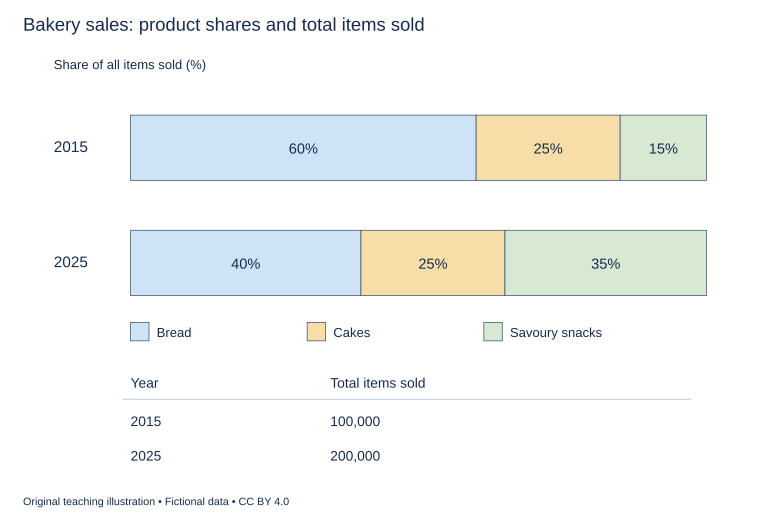
教学虚构，三类互斥且覆盖全部售出件数。2015：Bread60%、Cakes25%、Savoury snacks15%，总计100,000件；2025：Bread40%、Cakes25%、Savoury snacks35%，总计200,000件。无价格/收入数据；由总件数与比例可计算类别件数。
任务预算（含首次审题，不额外加时）
初稿20分钟（审题规划3、写作15、检查2）；诊断15；反馈阅读与证据核查10；完整重写25；对照归档5。合计75分钟。
初稿后自评清单
- [ ] 达到最低字数；全文连贯成段，没有用项目符号代替作文。
- [ ] 概述给主要特征；数据、阶段或方位都与题图逐项相符，不推断未提供的原因。
- [ ] 每段可写出一个功能标签；例子或数据与该段要点相连。
- [ ] 圈出两处词汇搭配和两处句法疑点，先自行修正再查询或求反馈。
- [ ] 记录一项最影响理解的问题和原句证据，不填写自猜分数。
反馈与重写
打开 独立参考页（本节下方展开参考），按逐段检查和通用协议核验。重写任务：完整重写至少150词；保留两组比例与绝对量的对照，用英文一句明确说明占比和数量出现相反方向。
本周听读能力迁移（包含在既有预算）
在本题诊断/回听时段内用3分钟：给解释标出背景→主张/阶段→支持→限制的结构，并核对两处动词搭配和一处从句。对应U04 W11独白结构与句法。
这是本地写说步骤，不依赖音频已交付。若另有合法听读材料，只在该科原定复盘时段使用；没有材料则标待补，不宣称完成听力。
W11 T1A 示例、反馈与重练（首答后展开）
WS-W11-T1A 独立参考页
只在初稿完成后阅读；不是唯一答案，也没有官方分数。以下是对原创示例的教学讲评，不是对学生尚未提交作文的已完成批改。
思路拆解
读总量后才能算类别件数；比例下降不代表绝对销量下降；概述必须兼顾构成与总量。
原创示例
The charts compare the proportions of bread, cakes and savoury snacks sold by a bakery in 2015 and 2025, while the table provides the total number of items sold in each year.
Overall, bread remained the largest category, although its share of sales fell substantially. Savoury snacks gained a larger share, whereas cakes accounted for the same proportion in both years. The bakery’s total sales volume doubled over the period.
In 2015, bread represented 60% of the 100,000 items sold, equivalent to 60,000 items. Cakes accounted for a quarter of sales, or 25,000 items, while savoury snacks made up the remaining 15%, representing 15,000 items. Bread was therefore more common than the other two categories combined.
By 2025, total sales had reached 200,000 items. Bread’s share had declined to 40%, but the corresponding quantity rose to 80,000 items. Cakes remained at 25%, meaning that their quantity doubled to 50,000. Savoury snacks increased to 35%, or 70,000 items, bringing this category much closer to bread. Its share was only five percentage points below bread’s in 2025, compared with a gap of forty-five points in 2015.
示例正文词数：192（本项目正则计数；书信不含称呼、结束语与署名；连字符词作一词）。
逐段反馈与迁移
- P1 items是件数，不是收入；不能替换revenue。
- P2 bread占比降、snacks升、cakes不变，总件数翻倍。
- P3 100千×60/25/15%=60/25/15千；bread60%高于其余40%。
- P4 200千×40/25/35%=80/50/70千；bread份额降但件数升，差距45→5个百分点。
常见失误
说面包卖得更少只看百分比；将价格/收入写入无价格图；饼干等新类别混入三类。
可执行反馈步骤
1. 先把自己的段落标为引入、概述/论点、支持、收束；分段可不同于示例，按功能核查，不照抄段数。
2. 对照上方逐段检查，逐项标“已有证据/缺失/不适用”。每条意见必须附自己的原句或缺失位置。
3. 按 反馈协议 的四维表记录；有争议的 AI 意见回题干、数据或语法依据核验。
4. 只选两项最高优先级问题执行整篇重写；保留原稿，禁止把示例替换为自己的作业。
重写任务
完整重写至少150词；保留两组比例与绝对量的对照，用英文一句明确说明占比和数量出现相反方向。
完成后重新勾选 学生页（见本节上方学生题） 清单；将一处改前/改后及理由交给独立评阅者核查。真人评阅状态目前为“待安排”，不是已完成。
WS-W11-T1G 学生页：给朋友说明聚餐准备
周次 W11｜题型 T1G｜能力点：书信目的、要点与语气
Task 1 的 A/G 分支二选一，另一分支不计入本周作业。
使用与记录
原创教学练习，非真题、非标准化模拟，难度未校准。先完成本页再打开参考页。人物、机构、经历与数据均为教学虚构。不要背诵示例。自评和 AI 反馈不能代替独立真人评分，未获得真人评阅时标记“分数未确认”。
保存：任务ID、实际日期、用时、初稿或原始录音、证据化反馈、重写/重答、三条修改理由。没有学生提交物，不得填写“已批改”或“已完成训练”。
完整题干
Your friend Jamie has offered to bring food to a small dinner you are hosting. Write a letter to Jamie. In your letter:
- describe the dinner arrangements
- suggest what Jamie could bring and explain why
- explain what you will prepare yourself.
Begin your letter: Dear Jamie,
Write at least 150 words. You do not need to write any addresses. Spend about 20 minutes on this task.
任务预算（含首次审题，不额外加时）
初稿20分钟（审题规划3、写作15、检查2）；诊断15；反馈阅读与证据核查10；完整重写25；对照归档5。合计75分钟。
初稿后自评清单
- [ ] 达到最低字数；全文连贯成段，没有用项目符号代替作文。
- [ ] 三个要点均展开；称呼、目的、语气和结束语适合收信人。
- [ ] 每段可写出一个功能标签；例子或数据与该段要点相连。
- [ ] 圈出两处词汇搭配和两处句法疑点，先自行修正再查询或求反馈。
- [ ] 记录一项最影响理解的问题和原句证据，不填写自猜分数。
反馈与重写
打开 独立参考页（本节下方展开参考），按逐段检查和通用协议核验。重写任务：完整重写至少150词；把request写成友好可选安排，解释一个具体理由，并让双方准备内容互补。
本周听读能力迁移（包含在既有预算）
在本题诊断/回听时段内用3分钟：给解释标出背景→主张/阶段→支持→限制的结构，并核对两处动词搭配和一处从句。对应U04 W11独白结构与句法。
这是本地写说步骤，不依赖音频已交付。若另有合法听读材料，只在该科原定复盘时段使用；没有材料则标待补，不宣称完成听力。
W11 T1G 示例、反馈与重练（首答后展开）
WS-W11-T1G 独立参考页
只在初稿完成后阅读；不是唯一答案，也没有官方分数。以下是对原创示例的教学讲评，不是对学生尚未提交作文的已完成批改。
思路拆解
私人友好说明；时间人数、带什么及原因、自备什么三个目的；饮食偏好按情境说不扩成医疗建议。
原创示例
Dear Jamie,
Thanks for offering to bring something for dinner on Friday. There will be six of us, and I am planning to serve the meal at about seven thirty. You are welcome to come a little earlier if you would like to catch up before everyone else arrives. We will eat in the kitchen, as the weather may be too cool to sit outside.
Could you bring a simple fruit dessert? One of our friends does not eat dairy products, so a fruit salad would be something everyone could share. You do not need to make a large amount, because I expect the main course to be quite filling. If you are short of time, just bring some fresh fruit and we can prepare it together here.
I will make a vegetable curry and rice, with a mild sauce on the side for anyone who wants it. I will also provide drinks and some bread to have while we are waiting. Please do not feel you have to spend much money or bring anything else. I am mainly looking forward to seeing you and enjoying an evening together.
See you Friday, Alex
示例正文词数：187（本项目正则计数；书信不含称呼、结束语与署名；连字符词作一词）。
逐段反馈与迁移
- P1 六人、周五7:30和可早到明确；不是正式邀请公函。
- P2 水果甜点理由为兼顾不吃奶制品者，给省时替代；不要求额外大笔花费。
- P3 主食、饮料面包与朋友分工清晰；语气避免像向服务商下订单。
常见失误
只写喜欢什么不交代安排；建议含奶甜点又称适合不吃奶者；私人信使用强硬命令。
可执行反馈步骤
1. 先把自己的段落标为引入、概述/论点、支持、收束；分段可不同于示例，按功能核查，不照抄段数。
2. 对照上方逐段检查，逐项标“已有证据/缺失/不适用”。每条意见必须附自己的原句或缺失位置。
3. 按 反馈协议 的四维表记录；有争议的 AI 意见回题干、数据或语法依据核验。
4. 只选两项最高优先级问题执行整篇重写；保留原稿，禁止把示例替换为自己的作业。
重写任务
完整重写至少150词；把request写成友好可选安排，解释一个具体理由，并让双方准备内容互补。
完成后重新勾选 学生页（见本节上方学生题） 清单；将一处改前/改后及理由交给独立评阅者核查。真人评阅状态目前为“待安排”，不是已完成。
WS-W11-T2 学生页：家庭食物浪费原因与解决
周次 W11｜题型 T2｜能力点：观点展开与任务回应
A/G 共用本题。
使用与记录
原创教学练习，非真题、非标准化模拟，难度未校准。先完成本页再打开参考页。人物、机构、经历与数据均为教学虚构。不要背诵示例。自评和 AI 反馈不能代替独立真人评分，未获得真人评阅时标记“分数未确认”。
保存：任务ID、实际日期、用时、初稿或原始录音、证据化反馈、重写/重答、三条修改理由。没有学生提交物，不得填写“已批改”或“已完成训练”。
完整题干
In many households, edible food is thrown away. What are the main reasons for this, and what could households and food retailers do to reduce the problem? Give reasons and include relevant examples.
Write at least 250 words. Spend about 40 minutes on this task.
任务预算（含首次审题，不额外加时）
初稿40分钟（审题规划5、写作30、检查5）；诊断15；反馈阅读与证据核查10；完整重写35；对照归档5。合计105分钟。
初稿后自评清单
- [ ] 达到最低字数；全文连贯成段，没有用项目符号代替作文。
- [ ] 直接回答题目的所有问句，有始终一致的立场。
- [ ] 每段可写出一个功能标签；例子或数据与该段要点相连。
- [ ] 圈出两处词汇搭配和两处句法疑点，先自行修正再查询或求反馈。
- [ ] 记录一项最影响理解的问题和原句证据，不填写自猜分数。
反馈与重写
打开 独立参考页（本节下方展开参考），按逐段检查和通用协议核验。重写任务：完整重写至少250词；为每项措施标出对应原因，用一个反例说明为何某措施必须附加条件。
本周听读能力迁移（包含在既有预算）
在本题诊断/回听时段内用3分钟：给解释标出背景→主张/阶段→支持→限制的结构，并核对两处动词搭配和一处从句。对应U04 W11独白结构与句法。
这是本地写说步骤，不依赖音频已交付。若另有合法听读材料，只在该科原定复盘时段使用；没有材料则标待补，不宣称完成听力。
W11 T2 示例、反馈与重练（首答后展开）
WS-W11-T2 独立参考页
只在初稿完成后阅读；不是唯一答案，也没有官方分数。以下是对原创示例的教学讲评，不是对学生尚未提交作文的已完成批改。
思路拆解
原因对措施；明确家庭与零售两行动者，不把问题全归个人道德；论证条件与限制。
原创示例
Edible food can be discarded because households buy more than they use and lose track of what they already have. Retail practices can reinforce these habits. Better planning at home and more flexible selling arrangements would address important causes of the problem, although neither can eliminate waste entirely.
One cause is a mismatch between purchases and daily routines. People may shop with an ambitious plan to cook every evening, then work late or accept an invitation to eat elsewhere. Fresh ingredients remain unused while additional purchases arrive. Food can also be forgotten at the back of a crowded cupboard or refrigerator. These situations suggest that waste is not always a result of indifference; sometimes people lack a clear view of their supplies or make plans that do not fit their week.
Households could begin by checking existing ingredients before shopping and planning a small number of realistic meals. Keeping items that need attention in a visible place can make them easier to use. For example, someone who notices unused vegetables before buying more may choose a meal that includes them. Plans should still be flexible, and people should not assume that every leftover is suitable to eat. The goal is to prevent unnecessary surplus, rather than encourage unsafe choices.
Retailers also influence how much people purchase. Large fixed packs and offers that reward buying several items can make it difficult for a small household to buy only what it needs. Shops could provide smaller packs or loose produce and make unit prices easy to compare. Reductions on items approaching their selling deadline may help, but only if customers buy quantities they can realistically use. Otherwise, waste merely moves from the shop to the home.
In conclusion, household food waste often results from poor coordination between buying, storage and actual demand. Practical planning and purchasing options suited to different household sizes would be more useful than simply telling everyone to care more about waste.
示例正文词数：323（本项目正则计数；书信不含称呼、结束语与署名；连字符词作一词）。
逐段反馈与迁移
- P1 两原因与零售影响，避免宣称单一原因解释所有浪费。
- P2 计划与实际偏离、看不见库存分别展开；不把常识当实测数据。
- P3 检库存和现实计划对应原因；安全边界只作限制，不提供保存食用诊断。
- P4 包装/促销→超买→小份与单价；打折可能转移浪费，是检验措施的反例。
- P5 回到需求协调；没有引入新的政府刑罚方案。
常见失误
只论环境后果不答原因措施；遗漏零售商；把降价视为无条件减少浪费。
可执行反馈步骤
1. 先把自己的段落标为引入、概述/论点、支持、收束；分段可不同于示例，按功能核查，不照抄段数。
2. 对照上方逐段检查，逐项标“已有证据/缺失/不适用”。每条意见必须附自己的原句或缺失位置。
3. 按 反馈协议 的四维表记录；有争议的 AI 意见回题干、数据或语法依据核验。
4. 只选两项最高优先级问题执行整篇重写；保留原稿，禁止把示例替换为自己的作业。
重写任务
完整重写至少250词；为每项措施标出对应原因，用一个反例说明为何某措施必须附加条件。
完成后重新勾选 学生页（见本节上方学生题） 清单；将一处改前/改后及理由交给独立评阅者核查。真人评阅状态目前为“待安排”，不是已完成。
WS-W11-S1 学生页
周次W11｜Part 1专项｜能力点：按结构展开解释，核查搭配与因果连接｜30分钟
使用与记录
原创教学练习，非真题、非标准化模拟，难度未校准。先完成本页再打开参考页。人物、机构、经历与数据均为教学虚构。不要背诵示例。自评和 AI 反馈不能代替独立真人评分，未获得真人评阅时标记“分数未确认”。
保存：任务ID、实际日期、用时、初稿或原始录音、证据化反馈、重写/重答、三条修改理由。没有学生提交物，不得填写“已批改”或“已完成训练”。
操作与预算
设备与审题3分钟；首答录音6；回听及局部转写7；示例和诊断5；不看稿重答6；归档3。共30分钟。
Part 1专项题
1. Do you plan meals in advance?
2. How often do you buy groceries?
3. Do you enjoy trying new recipes?
4. What makes cooking convenient for you?
追问：
- Does your approach change during a busy week?
- Can you give an example of a useful habit?
录音回听清单
- [ ] 保留首答原音，记录实际时长、是否中断、是否看稿；只报真实完成状态。
- [ ] 流利与连贯：标出两处时间戳，区分构思停顿与重复搜词，检查是否偏离问句。
- [ ] 词汇：找一处模糊词或重复表达，先解释原意再替换；不为难词改变意思。
- [ ] 语法：核对经历与习惯的时态；局部转写并更正两处妨碍理解的问题。
- [ ] 发音：不看转写听30秒，标听不清的词尾、重音或断句；没有音频不能判断发音。
- [ ] 展开：主要回答有具体情境或理由；追问后第一句回应追问的新角度。
重答要求
选择两个只有笼统判断的答案，先直接回应再加具体情境；重答一条追问，检查是否真正回应其新角度。
首答回听后才打开独立参考页（本节下方展开参考）。按反馈协议填至少三个时间戳，不以文字转写替代音频评阅。
本周听读能力迁移（包含在既有预算）
在本题诊断/回听时段内用3分钟：给解释标出背景→主张/阶段→支持→限制的结构，并核对两处动词搭配和一处从句。对应U04 W11独白结构与句法。
没有已交付听力的假设；以本题原音或文字做迁移，不记录为额外听力完成。
W11 S1 示例、反馈与重练（首答后展开）
WS-W11-S1 独立参考页
原创教学示例，非真题或评分结果。未收到学生音频；以下是示例分析与待执行反馈，不能登记为已完成学生批改。
展开示例
直接回应→原因→具体情境的展开示例
I plan a few meals rather than every meal for the whole week. That gives me a shopping list, but leaves room for changes if I eat with friends. I used to buy ingredients for several unfamiliar recipes at once. Now I try one new dish and use familiar meals for the rest of the week.
纯口答示例词数：56；只计MODEL标记内实际英文口答，不含标题、标签、说明。词数不能证明录音时长或流利度。
展开与反馈
本周能力：按结构展开解释，核查搭配与因果连接。
1. 示例先表态，再说明偏好理由，最后提供条件或场景。检查自己是否用一个词回答后就结束。
2. 找到一个具体细节：物品、动作、对话或地点。用自己的经历替换，保持与题卡相关，不照搬示例身份与经历。
3. 追问要重新回应，不能继续背长答。首句先回答追问，再用一条理由支持。
4. 标出一处听不清或语法影响理解的原音时间戳；先尝试最小修正。不要把自然停顿一概当成错误，或用加快语速掩盖逻辑断裂。
常见失误
空泛形容词替代具体过程；给了经历却没解释为什么重要；Part 3只有个人故事没有一般解释；AI只看转写就判断发音。逐项回原音核对，不能凭范例推断自己已达到某个分数。
可执行重答与反馈
选择两个只有笼统判断的答案，先直接回应再加具体情境；重答一条追问，检查是否真正回应其新角度。
填写反馈协议四维表，附三个时间戳和原话证据。选一个内容问题与一个语言问题先修；重答后并排听两段，记录改善与仍未解决之处。自评与AI不能替代独立真人评分；独立评阅目前待安排，分数未确认。
WS-W11-S2 学生页
周次W11｜Part 2专项｜能力点：按结构展开解释，核查搭配与因果连接｜30分钟
使用与记录
原创教学练习，非真题、非标准化模拟，难度未校准。先完成本页再打开参考页。人物、机构、经历与数据均为教学虚构。不要背诵示例。自评和 AI 反馈不能代替独立真人评分，未获得真人评阅时标记“分数未确认”。
保存：任务ID、实际日期、用时、初稿或原始录音、证据化反馈、重写/重答、三条修改理由。没有学生提交物，不得填写“已批改”或“已完成训练”。
操作与预算
准备、首答录音及追问5分钟；回听及局部转写8；示例与诊断5；关键词重组3；重答及追问5；归档4。共30分钟。
Part 2专项任务卡
Describe a useful method you use to organise something at home. Say what you organise, how the method works, when you started using it, and explain why it is useful.
准备1分钟，说1～2分钟。只记5个关键词，不预写句子。
收尾追问：
- Does anyone else in your home use the method?
- Is there anything you would change about it?
录音回听清单
- [ ] 保留首答原音，记录实际时长、是否中断、是否看稿；只报真实完成状态。
- [ ] 流利与连贯：标出两处时间戳，区分构思停顿与重复搜词，检查是否偏离问句。
- [ ] 词汇：找一处模糊词或重复表达，先解释原意再替换；不为难词改变意思。
- [ ] 语法：核对经历与习惯的时态；局部转写并更正两处妨碍理解的问题。
- [ ] 发音：不看转写听30秒，标听不清的词尾、重音或断句；没有音频不能判断发音。
- [ ] 展开：主要回答有具体情境或理由；追问后第一句回应追问的新角度。
重答要求
用五个关键词重答完整任务卡1～2分钟，再答两条追问；补一处具体行动或细节并删一处无关背景。比较首答与重答，不背示例。
首答回听后才打开独立参考页（本节下方展开参考）。按反馈协议填至少三个时间戳，不以文字转写替代音频评阅。
本周听读能力迁移（包含在既有预算）
在本题诊断/回听时段内用3分钟：给解释标出背景→主张/阶段→支持→限制的结构，并核对两处动词搭配和一处从句。对应U04 W11独白结构与句法。
没有已交付听力的假设；以本题原音或文字做迁移，不记录为额外听力完成。
W11 S2 示例、反馈与重练（首答后展开）
WS-W11-S2 独立参考页
原创教学示例，非真题或评分结果。未收到学生音频；以下是示例分析与待执行反馈，不能登记为已完成学生批改。
展开示例
原创长答示例（时长须以个人实际录音测量）
A method I use at home is keeping a small list of food that needs to be used soon. I started doing this after noticing that I repeatedly bought vegetables similar to ones already in the refrigerator.
The list is on a reusable board near the kitchen door. Before shopping, I check what is available and write down a few ingredients that I should plan around. I do not record every item, because maintaining a complete inventory would take more effort than I would realistically give it.
During the week, I look at the board when deciding what to cook. If I use an ingredient, I remove it from the list. Sometimes my housemate adds something, which helps us avoid making separate purchases without knowing what the other person has bought.
The method is useful because it makes a small amount of relevant information visible. It has not eliminated waste, and occasionally we forget to update it. Still, it has made our shopping decisions more deliberate without creating a complicated system that we would soon abandon.
纯口答示例词数：176；只计MODEL标记内实际英文口答，不含标题、标签、说明。词数不能证明录音时长或流利度。
展开与反馈
本周能力：按结构展开解释，核查搭配与因果连接。
1. 长答示例按背景、行动/观察、变化与意义组织。每段都推进内容；检查自己是否只有背景而没有具体事件。
2. 找到一个具体细节：物品、动作、对话或地点。用自己的经历替换，保持与题卡相关，不照搬示例身份与经历。
3. 追问要重新回应，不能继续背长答。首句先回答追问，再用一条理由支持。
4. 标出一处听不清或语法影响理解的原音时间戳；先尝试最小修正。不要把自然停顿一概当成错误，或用加快语速掩盖逻辑断裂。
常见失误
空泛形容词替代具体过程；给了经历却没解释为什么重要；Part 3只有个人故事没有一般解释；AI只看转写就判断发音。逐项回原音核对，不能凭范例推断自己已达到某个分数。
可执行重答与反馈
用五个关键词重答完整任务卡1～2分钟，再答两条追问；补一处具体行动或细节并删一处无关背景。比较首答与重答，不背示例。
填写反馈协议四维表，附三个时间戳和原话证据。选一个内容问题与一个语言问题先修；重答后并排听两段，记录改善与仍未解决之处。自评与AI不能替代独立真人评分；独立评阅目前待安排，分数未确认。
WS-W11-S3 学生页
周次W11｜三部分全流程｜能力点：按结构展开解释，核查搭配与因果连接｜60分钟
使用与记录
原创教学练习，非真题、非标准化模拟，难度未校准。先完成本页再打开参考页。人物、机构、经历与数据均为教学虚构。不要背诵示例。自评和 AI 反馈不能代替独立真人评分，未获得真人评阅时标记“分数未确认”。
保存：任务ID、实际日期、用时、初稿或原始录音、证据化反馈、重写/重答、三条修改理由。没有学生提交物，不得填写“已批改”或“已完成训练”。
操作与预算
D5：设备与流程准备2分钟，连续首答11～14分钟，余14～17分钟完整回听标记，共30分钟。D6：局部转写诊断10，阅读示例与调整5，重答与新追问10，对照归档5，共30分钟。合计60分钟。
连续三部分全流程（首答不可看参考）
找同伴读题，或独练逐题揭示。完整首答11～14分钟，中途不暂停纠错。模拟同伴不是认证考官；自行读题的练习记录不能冒充真实面试。
Part 1：4～5分钟
1. Do you like keeping your room tidy?
2. Where do you keep things you use every day?
3. Have you ever lost something important at home?
4. Do you prefer simple or detailed plans?
5. How do you remember a new word?
6. Do you write reminders for yourself?
可按回答追加 Why? / Can you give an example? 到时转下部分，不强行说完全部备用问题。
Part 2：3～4分钟（含准备）
Describe a time you explained how to do something. Say who you explained it to, what the task was, how you organised your explanation, and explain whether it was successful.
准备1分钟，连续说1～2分钟。收尾追问：
- Did the person ask any questions?
- Would you explain the task differently next time?
Part 3：4～5分钟
1. What makes an explanation easy to follow?
2. When are examples more useful than general descriptions?
3. Can simplifying information make it misleading?
4. How can someone check whether an explanation has been understood?
根据回答追加追问：
- Would the same explanation work for a beginner and an expert?
- What details should never be left out?
录音回听清单
- [ ] 保留首答原音，记录实际时长、是否中断、是否看稿；只报真实完成状态。
- [ ] 流利与连贯：标出两处时间戳，区分构思停顿与重复搜词，检查是否偏离问句。
- [ ] 词汇：找一处模糊词或重复表达，先解释原意再替换；不为难词改变意思。
- [ ] 语法：核对经历与习惯的时态；局部转写并更正两处妨碍理解的问题。
- [ ] 发音：不看转写听30秒，标听不清的词尾、重音或断句；没有音频不能判断发音。
- [ ] 展开：主要回答有具体情境或理由；追问后第一句回应追问的新角度。
重答要求
重答最弱的一个Part 1问题、完整Part 2及一个Part 3问题，再答一条未用追问。用不同细节或补一个例外，确认不是复述范例；局部重答不另计全流程。
首答回听后才打开独立参考页（本节下方展开参考）。按反馈协议填至少三个时间戳，不以文字转写替代音频评阅。
本周听读能力迁移（包含在既有预算）
在本题诊断/回听时段内用3分钟：给解释标出背景→主张/阶段→支持→限制的结构，并核对两处动词搭配和一处从句。对应U04 W11独白结构与句法。
没有已交付听力的假设；以本题原音或文字做迁移，不记录为额外听力完成。
W11 S3 示例、反馈与重练（首答后展开）
WS-W11-S3 独立参考页
原创教学示例，非真题或评分结果。未收到学生音频；以下是示例分析与待执行反馈，不能登记为已完成学生批改。
展开示例
Part 2原创展开示例（个人语速不同，不能以词数推录音时长）
I explained how to use a shared booking calendar to a new colleague. The calendar was used to reserve a small meeting room, and several people had accidentally booked overlapping times before we introduced a common system.
I began by explaining the purpose: everyone needed to see when the room was available. Then I showed her how to choose a date, check existing reservations and enter a new booking. I used an example for the following afternoon rather than describing every possible setting at once.
After the demonstration, I asked her to make a practice booking and then remove it. She asked whether the finishing time included setting up the room. That was a useful question, and I clarified that the booking should cover all the time she needed.
The explanation was successful because she could complete the task herself afterwards. I also learned that a clear sequence is not enough if an important convention remains unstated. Next time, I would mention setup time before demonstrating the steps.
Part 3观点→理由→条件展开示例
An example is useful when it makes an abstract idea concrete, but it should not hide important limits. If someone explains a rule using only a very easy case, a learner may assume that the rule works everywhere. I would show the main case first and then add one exception or boundary, so that the explanation remains manageable without becoming misleading.
纯口答示例词数：229；只计MODEL标记内实际英文口答，不含标题、标签、说明。词数不能证明录音时长或流利度。
展开与反馈
本周能力：按结构展开解释，核查搭配与因果连接。
1. 长答示例按背景、行动/观察、变化与意义组织。每段都推进内容；检查自己是否只有背景而没有具体事件。
2. 找到一个具体细节：物品、动作、对话或地点。用自己的经历替换，保持与题卡相关，不照搬示例身份与经历。
3. Part 3示例不把个人选择强加给所有人；先讲机制，再说明条件或例外。检查自己的追问答案是否直接回应新问题。
4. 标出一处听不清或语法影响理解的原音时间戳；先尝试最小修正。不要把自然停顿一概当成错误，或用加快语速掩盖逻辑断裂。
常见失误
空泛形容词替代具体过程；给了经历却没解释为什么重要；Part 3只有个人故事没有一般解释；AI只看转写就判断发音。逐项回原音核对，不能凭范例推断自己已达到某个分数。
可执行重答与反馈
重答最弱的一个Part 1问题、完整Part 2及一个Part 3问题，再答一条未用追问。用不同细节或补一个例外，确认不是复述范例；局部重答不另计全流程。
填写反馈协议四维表，附三个时间戳和原话证据。选一个内容问题与一个语言问题先修；重答后并排听两段，记录改善与仍未解决之处。自评与AI不能替代独立真人评分；独立评阅目前待安排，分数未确认。
许可
原创文字：RayXBuilds and contributors，CC BY 4.0。此页由已验收分课汇编，调整了标题和导航；题干、正文和答案内容保留。公开第三方音频未包含。
回到顶部
U19 第12周：长篇阅读、写作与口语
本页为已独立核验的原创文字课程。先完成学生题目，再展开对应参考。非真题、非标准化模考，不换算雅思分数。听力尚未补齐，本页不代表全科课程已完成。
每周选A或G类Task 1一题，加Task 2及三次口语。参考范文不是学生已完成作业，仍须提交初稿、录音和重写，独立真人评分另行安排。
阅读每周180分钟（60分钟首次限时、120分钟证据精读与延迟复测），写作180分钟、口语120分钟。词汇60分钟、听力180分钟另列；新增完整听力未验收，不能勾整周完成。
W12限时复盘按实际错因与延迟复测记录调整；本页原创技能卷不能充当正式陌生卷。后续周数与达标规则见 U04。
阅读：首答不查词
R-W12-01 · Two Ways to Learn from a Miniature Bridge
W12｜正文 922 词｜13 题｜篇章：过程比较：实物模型与计算表示（7段）
本课必做60分钟：首答20、证据复盘20、词汇长句10、48小时后复测10。每周三课180分钟，合卷首答替代单课首答，不重复计算。开放短文选做另加15分钟。
本项目原创虚构教学情境，人物、地点、历史事件和案例数据均非真实研究或史料。科学解释只讨论文内说明的模型与条件。非雅思真题或标准化模考；正确数不换算雅思等级。许可：CC BY 4.0 — RayXBuilds and contributors。
能力点：识别论证关系、区分作者与引述者、条件与因果、精确定位。初读不查词，完成后打开独立答案页。
Passage
A A fictional design class receives the same question in two forms. One team builds a small bridge from strips of card; another represents a bridge as connected lines in a simple computer model. Both must investigate what happens when a load is placed away from the centre. The class is not designing a real structure for public use, and its conclusions are restricted to the teaching models described here. At first, the physical team accuses the computer team of studying something that does not exist, while the computer team calls the card bridge an imprecise toy. The instructor rejects both dismissals. Each representation makes some relationships easier to examine and leaves others simplified. The useful comparison concerns what can be learned through each method and which assumptions must accompany that learning.
B The card bridge makes movement visible. When the load shifts, one side bends more than the other, and a loose connection may open. Students can observe a result they did not anticipate when drawing the structure. But the model's behaviour depends on properties of the card, the folds and the glue. Making its overall shape resemble a larger bridge does not make every mechanical relationship scale in the same way. A thick glued joint may contribute disproportionately to the small model's stiffness. The team therefore describes the construction rather than treating visual resemblance as proof of representativeness. A photograph of the bridge is useful, but it cannot tell a later reader how firmly each joint was made or whether two apparently identical versions would behave alike under the same load.
C The computer model has different strengths. A student can change one parameter while keeping the others numerically fixed, then compare the predicted movement. This makes a proposed relationship easy to explore. Yet the predicted result follows the relationships built into the model. If a connection is represented as perfectly rigid, the calculation will not spontaneously reveal that a real glued joint might loosen. The absence of a predicted problem may therefore reflect an assumption rather than a robust design. The instructor asks students to list what the model permits to change and what it holds constant. Such a list is not an apology for using computation. It is part of explaining why a result appears and what kind of evidence could show that the chosen representation is inadequate for a particular question.
D The teams agree on a loading sequence so that they can discuss comparable situations. They place the load at the centre, near one side and near the other, keeping its specified amount unchanged. The physical team marks movement against a reference line and records observations on a deflection sheet. The computer team produces predictions for the corresponding positions. Agreement at one position is encouraging but insufficient to establish that the models describe the same behaviour throughout. A difference at another position can be particularly useful because it directs attention towards a relationship that the earlier comparison did not test. The instructor wants the class to investigate that discrepancy instead of averaging the results into a single figure that makes the two methods appear closer than they are.
E In one trial, the card bridge moves unexpectedly near a joint. The computing team offers to adjust a stiffness value until the predicted movement matches. That may improve the fit, but it does not identify the reason for the original discrepancy. The physical team first examines the joint and discovers that one strip was not attached as intended. The class records this in a construction note. A model adjusted to reproduce an accidental construction difference might predict that particular object well while describing the planned arrangement badly. This does not mean adjustments are forbidden. It means the purpose of an adjustment must be stated: is the team representing the object actually built, the design intended on paper, or a broader class of possible objects? Those are related questions, but they do not require identical answers.
F The revised exercise uses an assumption register for both methods. The physical entry describes material choices and joint construction; the computing entry describes permitted motion and assigned properties. A comparison table links each tested load position with observed and predicted movement. Where observations are uncertain, the table preserves that uncertainty rather than printing extra digits to make the record appear precise. Students also repeat the physical construction once to see how much variation the making process introduces. Two card bridges cannot reveal every possible variation, but their difference can warn against treating a single handmade object as a perfectly stable standard. Likewise, running one calculation twice is not a new independent test if the inputs and the computational rules remain exactly unchanged.
G By the final discussion, the teams no longer ask which method is inherently more real. The physical model provides encounters with material behaviour, including unintended features; the computer model allows explicit manipulation of selected relationships. Each becomes more useful when its assumptions can be compared with those of the other. The class writes separate conclusions about the two representations and a shared list of questions still unanswered. It does not infer that a real bridge is safe from the behaviour of either teaching model. The lasting lesson is about interpreting agreement and disagreement. Similar outputs may arise for different reasons, while a mismatch may expose something worth learning. A model earns confidence through a clear connection between its purpose, its assumptions and the observations used to challenge it, not merely through resemblance to an object or the authority associated with a particular kind of tool.
Questions
Choose ONE answer, A, B, C or D.
1. The instructor rejects the opening dismissals because
A. card is always better than computation B. each method exposes and simplifies different relationships C. computation has no assumptions D. both methods represent all details
2. Why is visual similarity insufficient for a physical model?
A. Card has no properties B. Mechanical relationships may not scale identically C. All larger bridges have the same joints D. Photographs cannot be taken
3. An absent predicted joint problem may reflect
A. an improved physical joint B. a removed load C. the assumption of a rigid connection D. an independent real-world test
4. Why inspect the joint before fitting a new stiffness value?
A. To produce more digits B. To distinguish unintended construction from the intended design C. To replace the loading sequence D. To avoid every adjustment
Complete the sentences. Choose NO MORE THAN 3 WORDS FROM THE PASSAGE for each answer. Do not change word forms.
5. Both teams follow the same ______ for applying loads.
6. Physical movement is recorded on a ______.
7. The unintended attachment is documented in a ______.
8. Both methods describe their simplifications in an ______.
9. Observed and predicted values appear together in a ______.
Do the following statements agree with the writer's views? Write YES, NO or NOT GIVEN. YES = the writer agrees; NO = the writer expresses the opposite view; NOT GIVEN = the writer's view is not stated. Do not use outside knowledge.
10. Agreement in one loading position establishes agreement in all positions.
11. Re-running unchanged inputs is automatically an independent test.
12. The writer prefers one particular commercial modelling program.
13. A mismatch between models can reveal something useful.
本周重点
限时复发：首答记录每组耗时；延迟复测先遮住解释，比较是否重复同类错误。
复盘
必做：给每道错题标记“定位/作者立场/范围/语法/词数”，抄最短证据；用一行箭头概括本文论证或过程。48小时后重做错题与两道正确题，检查是否仍能指出证据。
选做（15分钟，80–100词）：Explain why fitting one observed result may not explain the discrepancy that produced it.
R-W12-01 答案、证据与精读（首答后展开）
R-W12-01 · 独立答案与证据
来源与许可同学生页。先完成再核对。可接受答案由 accepted_answers 明确列出；只忽略大小写和首尾空格，不自行删词。开放复盘不计入客观正确数。
1. B｜段落 A｜证据：“some relationships easier to examine”
两者有不同用途边界。
2. B｜段落 B｜证据：“does not make every mechanical relationship scale”
形状相似不保证机制比例相同。
3. C｜段落 C｜证据：“represented as perfectly rigid”
计算结果受规则限制。
4. B｜段落 E｜证据：“not attached as intended”
拟合偶然误差不等于解释设计。
5. loading sequence / sequence｜段落 D｜证据：“agree on a loading sequence”
sequence可接受，规定位置次序。
6. deflection sheet / sheet / comparison table / table｜段落 D｜证据：“on a deflection sheet”
D 的 deflection sheet / sheet 记录实测移动；F 的 comparison table / table 也记录实测移动并与预测对应。题干未限定首次记录，四种原文形式均接受。
7. construction note / note｜段落 E｜证据：“a construction note”
note合理短答。
8. assumption register｜段落 F｜证据：“an assumption register”
register单独不可接an。
9. comparison table / table｜段落 F｜证据：“A comparison table links”
table为合理短答。
10. NO｜段落 D｜证据：“insufficient to establish”
作者明确限制。
11. NO｜段落 F｜证据：“not a new independent test”
重复执行不增加独立证据。
12. NOT GIVEN｜段落 C｜证据：“The computer model”
无软件品牌偏好。
13. YES｜段落 G｜证据：“a mismatch may expose something worth learning”
作者结论。
词汇与长句
- rigid：被视作不变形或不转动的
- deflection：受力后的偏移
- stiffness：抵抗变形的程度
- discrepancy：观察与预期之间的不一致
> The absence of a predicted problem may therefore reflect an assumption rather than a robust design.
may限定推断；rather than对比问题缺席的不同来源。
> A model adjusted to reproduce an accidental construction difference might predict that particular object well while describing the planned arrangement badly.
adjusted后置修饰；while对比拟合对象与 intended design。
开放任务参考
E先区分偶然制造差异与设计，再决定拟合目的；F/G须跨条件检验。
标准：观点有文内依据，保留条件和范围，推断明确标注；不存在唯一措辞。
R-W12-02 · How One Report Became Five Sources
W12｜正文 1053 词｜13 题｜篇章：虚构历史：引用链、独立性与证据回溯（9段）
本课必做60分钟：首答20、证据复盘20、词汇长句10、48小时后复测10。每周三课180分钟，合卷首答替代单课首答，不重复计算。开放短文选做另加15分钟。
本项目原创虚构教学情境，人物、地点、历史事件和案例数据均非真实研究或史料。科学解释只讨论文内说明的模型与条件。非雅思真题或标准化模考；正确数不换算雅思等级。许可：CC BY 4.0 — RayXBuilds and contributors。
能力点：识别论证关系、区分作者与引述者、条件与因果、精确定位。初读不查词，完成后打开独立答案页。
Passage
A A fictional historian investigating the town of Harl discovers five accounts of a night when the old harbour bell supposedly rang without anyone touching it. The accounts appear in a diary, a newspaper, a local history, a museum label and a walking guide. Their agreement looks impressive. Yet the number of documents is not necessarily the number of independent witnesses. The historian's task is to discover how the statement travelled before deciding what its repetition supports. This does not begin with assuming that the bell story is false. It begins with a narrower question: are five authors reporting separate observations, or are several of them repeating a statement whose original basis may be quite limited?
B The diary is the earliest dated document. Its writer, Elva, was away from the harbour that night and records what a neighbour told her the next morning. She writes that the bell was heard, but she does not claim to have inspected the tower or watched the rope. This matters because later versions describe an observation that no one touched the bell. Hearing a sound and establishing the absence of an action are different claims. The diary can document that a story circulated soon after the event. Without further evidence, it cannot establish every detail that later writers attach to that story. The historian therefore records both the content and the writer's stated relationship to the reported event.
C The newspaper publishes a short item several days later. Its wording closely follows the diary, including an unusual phrase about the harbour being wrapped in sleep. The historian finds a letter in which Elva says she sent the account to an editor. This makes dependence much more plausible than coincidence. The newspaper is a second physical document, but it is not necessarily a second observation. Its value has not vanished: it shows when the story reached a wider audience and how it was presented publicly. What changes is the inference that can be drawn from agreement. Repetition across the diary and newspaper does not provide the same kind of corroboration as two accounts produced without borrowing from one another.
D Decades later, a local history quotes the newspaper but removes Elva's reference to hearing the story from a neighbour. Its author may have shortened the passage to improve readability rather than intending to deceive. Nevertheless, the omission changes the apparent distance between the report and the event. The history also adds that the bell rang at midnight, although the surviving earlier documents give only a broad description of the night. The historian marks this as a later addition rather than quietly reading it back into the diary. A detail can become familiar through repetition without becoming better supported. The task is to follow each claim, not to treat an account as a single package that must be accepted or rejected in its entirety.
E The museum label draws on the local history and describes the incident as a well-attested mystery. Visitors see a concise statement beside an old bell and may reasonably assume that the institution has checked the evidence. The label gives no source, so its confident wording obscures the path by which the claim arrived. This is not an argument against short museum texts. It is an argument for matching the strength of their wording to the support available. A brief label can say that a story was recorded without claiming that every element of the story has been independently established. Concision does not require collapsing the difference between an event, a report about it and a later interpretation of the report.
F The walking guide cites the museum as confirmation of the local history. The two sources appear to reinforce one another, but both lead back through the same chain. The historian draws a citation tree with arrows showing the direction of borrowing. This exposes a loop of apparent authority: the guide treats an institutional presentation as new confirmation, although the institution used the account already cited by the guide. Counting the branches without examining their origin would overstate the evidence. The tree does not determine whether the bell sounded. It reveals why the existence of several confident retellings cannot by itself settle that factual question or identify the physical cause of the reported sound.
G The historian searches for other records, including maintenance notes and letters written by people who were at the harbour. A repair entry mentions work on the tower during the same month but does not connect that work with the reported night. It is tempting to use this as an explanation for the ringing. The historian resists: temporal proximity is a clue worth investigating, not a demonstrated cause. Likewise, the absence of the incident from one resident's letter does not prove that it never happened. A writer may omit an event for many reasons. The significance of silence depends on what the document was meant to record and whether the writer would reasonably have been expected to mention the matter.
H The final account uses a claim table separating the reported sound, the absence of human action and the precise hour. Each row identifies its earliest surviving support and any later changes. A source register describes the documents and their relationships, while a quotation file preserves the relevant wording so readers can check the analysis. The historian leaves the cause unresolved. That is not the same as concluding that every version is equally likely. Some details have stronger documentary support than others, and some apparent corroboration can be shown to be borrowed. The result is a more differentiated account of uncertainty, not merely a shorter list of facts or a declaration that the past can never be known.
I Harl's bell story illustrates why evidence reading needs attention to transmission. A document can be valuable for one question while weak for another: the newspaper may reveal publicity, the museum label institutional interpretation and the diary early circulation. None must be discarded simply because it is not an independent eyewitness account. But their distinct contributions should not be collapsed into a misleading vote. The strongest historical explanation identifies where a statement originated, how its wording changed and what each surviving source can actually support. Five documents may tell a rich history of one story without becoming five separate reasons to believe every detail of the event that story describes.
Questions
Do the following statements agree with the writer's views? Write YES, NO or NOT GIVEN. YES = the writer agrees; NO = the writer expresses the opposite view; NOT GIVEN = the writer's view is not stated. Do not use outside knowledge.
1. Five documents necessarily amount to five independent witnesses.
2. A borrowed account becomes useless for every historical question.
3. A short label can distinguish a recorded story from an established event.
4. The writer believes the museum staff knowingly used wording that overstated the available evidence.
Which paragraph contains the following information? Write a letter, A–I. You may use any letter more than once.
5. an explicit link showing that the diarist sent her account to the newspaper
6. a precise hour appearing only in a later retelling
7. a circular appearance of confirmation between institutional and published accounts
8. a warning that an event omitted from a letter need not have failed to occur
Complete the summary. Choose NO MORE THAN 3 WORDS FROM THE PASSAGE for each answer. Do not change word forms.
The historian mapped borrowing in a (9) ______. Individual assertions were separated in a (10) ______. Descriptions of the documents themselves, as well as their relationships, went into a (11) ______, while exact wording was preserved in a (12) ______. One (13) ______ mentioned tower work during the month but did not establish the cause of the ringing.
本周重点
限时复发：首答记录每组耗时；延迟复测先遮住解释，比较是否重复同类错误。
复盘
必做：给每道错题标记“定位/作者立场/范围/语法/词数”，抄最短证据；用一行箭头概括本文论证或过程。48小时后重做错题与两道正确题，检查是否仍能指出证据。
选做（15分钟，80–100词）：Explain what a dependent source can still establish.
R-W12-02 答案、证据与精读（首答后展开）
R-W12-02 · 独立答案与证据
来源与许可同学生页。先完成再核对。可接受答案由 accepted_answers 明确列出；只忽略大小写和首尾空格，不自行删词。开放复盘不计入客观正确数。
1. NO｜段落 A｜证据：“not necessarily the number of independent witnesses”
明确否定。
2. NO｜段落 C｜证据：“Its value has not vanished”
可研究传播。
3. YES｜段落 E｜证据：“A brief label can say that a story was recorded”
作者认可简洁且准确限定。
4. NOT GIVEN｜段落 E｜证据：“The museum label draws on the local history and describes the incident as a well-attested mystery.”
E 说明馆牌沿用地方史及措辞显得过于确定，但未交代馆方是否明知证据不足而仍使用该措辞。题干只问作者对知情状态的判断，不声称故事由馆方发明；没有相反知情判断，故不是 NO。
5. C｜段落 C｜证据：“a letter in which Elva says she sent the account”
C直接证明传播，非仅相似措辞。
6. D｜段落 D｜证据：“adds that the bell rang at midnight”
D新增午夜细节。
7. F｜段落 F｜证据：“a loop of apparent authority”
F馆牌与导览借引。
8. G｜段落 G｜证据：“does not prove that it never happened”
G沉默证据边界。
9. citation tree / tree｜段落 F｜证据：“draws a citation tree”
tree可接受，箭头显示引用。
10. claim table / table｜段落 H｜证据：“uses a claim table”
逐主张，而非整文件全盘判断。
11. source register / register｜段落 H｜证据：“A source register describes”
题干同时要求文件本身的描述与关系；H 的 source register / register 满足。F 的 citation tree 只标借引方向，不描述文献本身，故不能替代。
12. quotation file / file｜段落 H｜证据：“a quotation file preserves”
保留原措辞供查核。
13. repair entry / entry｜段落 G｜证据：“A repair entry mentions”
repair entry 与 entry 均为原文，题干用 One 避免 a entry 的冠词冲突；该记录仅同月维修，不支持具体因果。
词汇与长句
- corroboration：独立证据的印证
- transmission：信息传播过程
- eyewitness：亲眼观察事件的人
- proximity：时间或位置接近
> A detail can become familiar through repetition without becoming better supported.
without区分熟悉感与证据强度。
> Five documents may tell a rich history of one story without becoming five separate reasons to believe every detail of the event that story describes.
两层story/event区分：故事传播史与事件真实性。
开放任务参考
C传播时间、E机构解释、H具体措辞变化；不能计作新增独立目击。
标准：观点有文内依据，保留条件和范围，推断明确标注；不存在唯一措辞。
R-W12-03 · What the Last Page of a Report Must Preserve
W12｜正文 851 词｜14 题｜篇章：学术综合：结论压缩与证据范围（6段）
本课必做60分钟：首答20、证据复盘20、词汇长句10、48小时后复测10。每周三课180分钟，合卷首答替代单课首答，不重复计算。开放短文选做另加15分钟。
本项目原创虚构教学情境，人物、地点、历史事件和案例数据均非真实研究或史料。科学解释只讨论文内说明的模型与条件。非雅思真题或标准化模考；正确数不换算雅思等级。许可：CC BY 4.0 — RayXBuilds and contributors。
能力点：识别论证关系、区分作者与引述者、条件与因果、精确定位。初读不查词，完成后打开独立答案页。
Passage
A The fictional research office of Pel receives a report on a new appointment system used by three neighbourhood workshops. The full document describes shorter waits at two sites and longer waits at the third, changes in staffing and several missing records. Its final page announces that the system improves access. That sentence is easy to repeat, but it does not reveal which part of the evidence supports it or what access means. The writer argues that a conclusion should compress an investigation without changing the kind of claim the investigation can justify. A summary cannot reproduce every observation, yet brevity is not a licence to turn a conditional pattern into a universal result. The challenge is to preserve the distinctions a reader needs in order to use the conclusion responsibly, even when only a small amount of space remains for explaining what happened and why it matters.
B The first distinction concerns the outcome. Waiting time measures one part of an appointment experience. It does not directly show whether people could obtain a suitable slot, whether they attended or whether their problem was addressed. The report contains information on all these stages, but its headline takes a reduction in one measure as evidence of improvement in the entire service. The writer rejects that substitution. A narrow measure can be useful without standing for every desirable result. If the intended claim concerns shorter waits among people who attended, it should say so. That wording may sound less impressive than improved access, but it allows readers to see what remains unknown about people who could not book, cancelled or never arrived. Defining the outcome precisely is not an exercise in diminishing success; it is a way of ensuring that the reported success belongs to the question actually investigated.
C The second distinction concerns variation. The two improving workshops introduced the system while receiving temporary staff, whereas the third did not. The report cannot simply attribute every difference to the appointment software. This does not prove that the software had no effect. It means that the contribution of staffing remains a plausible competing explanation. The full report includes the relevant staffing notes, but the final page omits them. A reader who sees only that page is therefore invited to make a stronger causal inference than the investigators' own records support. The writer favours a short qualifying sentence that names the uncertainty. A qualification is useful when it changes how the claim should be interpreted; it is not merely a ritual phrase added to protect the author while leaving the main impression untouched and misleading.
D Missing records introduce a third problem. At one site, busy sessions were less likely to have complete timing information. If the summary treats the available observations as though they represent every session equally, it may understate the very delays that were hardest to record. The investigators cannot reconstruct every missing value after the fact. They can report where the gaps occurred and examine how different plausible assumptions would affect the conclusion. A sensitivity check does not recover the lost observations or establish that its assumed values are true. It asks whether the interpretation depends strongly on choices made in the absence of evidence. If a modest change in an assumption reverses the apparent result, a confident headline should be reconsidered. That is a reason to make the dependence visible, not a reason to choose whichever assumption preserves the most favourable sentence.
E The revised final page separates observation, interpretation and recommendation. It reports the measured waiting patterns, notes staffing changes and missing timing data, and then recommends a further trial with a more consistent recording procedure. The recommendation is not presented as another finding. It is a proposed action based on the evidence and on a judgement about what the office needs to learn next. The report also includes a decision note stating what would count as a reason to continue, revise or stop the trial. This makes the next stage less vulnerable to choosing a convenient criterion after results appear. The writer does not demand that every future decision be locked into a rule regardless of events. Unexpected circumstances may require revision, but the reason for changing a criterion should be distinguishable from the result that made the change attractive.
F The strongest version of the conclusion is consequently not the one that sounds most certain. It is the one that lets a reader connect its confidence to the evidence, recognise the limits of its scope and understand the status of the proposed next action. Pel's revised report is still short. It does not list every appointment or reproduce the entire analysis. Instead, it preserves the few distinctions that would materially change a decision: which outcome improved, for whom, under which conditions and with what uncertainty. This approach is demanding because it requires knowing which details matter rather than merely deleting words until a page fits. A conclusion can be concise and cautious without becoming evasive. Its job is to carry the investigation's meaning into a smaller space, not to leave the complications behind and carry only the most convenient impression of success.
Questions
Which paragraph contains the following information? Write a letter, A–F. You may use any letter more than once.
1. a reason why missing timing data may disproportionately concern long waits
2. a proposed criterion for continuing, revising or stopping later work
3. examples of service stages not directly measured by waiting time
4. a warning that qualifiers must affect the reader’s interpretation rather than act as ritual
5. a description of concise writing as preserving decision-relevant distinctions
Choose ONE answer, A, B, C or D.
6. The initial conclusion is problematic mainly because
A. it names all three sites B. it recommends further recording C. it implies more than its stated evidence supports D. it contains too many measurements
7. Why is waiting time not identical to access?
A. It is never measurable B. It describes staffing alone C. It always rises when access improves D. It covers only one stage of the service
8. Staffing changes are relevant because they
A. remove the need for any further trial B. provide a competing explanation for differences C. are always the sole cause D. prove software useless
9. A sensitivity check examines
A. the exact true missing values B. whether the software has feelings C. the number of report pages D. dependence on assumptions about unavailable evidence
Do the following statements agree with the writer's views? Write YES, NO or NOT GIVEN. YES = the writer agrees; NO = the writer expresses the opposite view; NOT GIVEN = the writer's view is not stated. Do not use outside knowledge.
10. A summary may remove all conditions simply because space is limited.
11. More precise outcome wording can improve the usefulness of a conclusion.
12. The presence of a staffing difference proves the software had no effect.
13. The writer thinks the third workshop should dismiss its manager.
14. A recommendation and an observed finding should be distinguished.
本周重点
限时复发：首答记录每组耗时；延迟复测先遮住解释，比较是否重复同类错误。
复盘
必做：给每道错题标记“定位/作者立场/范围/语法/词数”，抄最短证据；用一行箭头概括本文论证或过程。48小时后重做错题与两道正确题，检查是否仍能指出证据。
选做（15分钟，80–100词）：Rewrite “the system improves access” as a conclusion limited to the evidence described.
R-W12-03 答案、证据与精读（首答后展开）
R-W12-03 · 独立答案与证据
来源与许可同学生页。先完成再核对。可接受答案由 accepted_answers 明确列出；只忽略大小写和首尾空格，不自行删词。开放复盘不计入客观正确数。
1. D｜段落 D｜证据：“busy sessions were less likely to have complete timing information”
缺失非随机可能偏向繁忙时段。
2. E｜段落 E｜证据：“what would count as a reason to continue”
E预先决策标准。
3. B｜段落 B｜证据：“whether people could obtain a suitable slot”
B预约、到场、解决。
4. C｜段落 C｜证据：“not merely a ritual phrase”
C限定语实质作用。
5. F｜段落 F｜证据：“distinctions that would materially change a decision”
F总结压缩原则。
6. C｜段落 A｜证据：“which part of the evidence supports it”
范围与根据未交代。
7. D｜段落 B｜证据：“one part of an appointment experience”
窄指标可用但不等同全流程。
8. B｜段落 C｜证据：“plausible competing explanation”
混杂不证明零效应。
9. D｜段落 D｜证据：“depends strongly on choices made in the absence of evidence”
不恢复真实缺失值。
10. NO｜段落 A｜证据：“brevity is not a licence”
作者明确反对。
11. YES｜段落 B｜证据：“allows readers to see what remains unknown”
准确措辞支持判断。
12. NO｜段落 C｜证据：“does not prove that the software had no effect”
直接反对过度否定。
13. NOT GIVEN｜段落 C｜证据：“the third did not”
没有人事建议。
14. YES｜段落 E｜证据：“not presented as another finding”
作者区分证据与下一步判断。
词汇与长句
- qualification：范围或条件限定
- sensitivity：结论对假设变化的敏感性
- evasive：回避关键问题的
- scope：结论所涵盖的对象与条件
> A narrow measure can be useful without standing for every desirable result.
without限制代表性，不是否定窄指标价值。
> A sensitivity check does not recover the lost observations or establish that its assumed values are true.
两个并列否定：不补出事实，也不证明假设为真。
开放任务参考
应注明两站到场者等待缩短、员工变化与缺失记录；不宣称独立因果或全体可及性改善。
标准：观点有文内依据，保留条件和范围，推断明确标注；不存在唯一措辞。
写作与口语：Task 1双分支择一
WS-W12-T1A 学生页：三个地区快递方式与配送时间
周次 W12｜题型 T1A｜能力点：分组比较与限时筛选
Task 1 的 A/G 分支二选一，另一分支不计入本周作业。
使用与记录
原创教学练习，非真题、非标准化模拟，难度未校准。先完成本页再打开参考页。人物、机构、经历与数据均为教学虚构。不要背诵示例。自评和 AI 反馈不能代替独立真人评分，未获得真人评阅时标记“分数未确认”。
保存：任务ID、实际日期、用时、初稿或原始录音、证据化反馈、重写/重答、三条修改理由。没有学生提交物，不得填写“已批改”或“已完成训练”。
完整题干
The bar chart shows the average delivery time for parcels in three districts in 2025. The table shows the percentages delivered to homes and to collection lockers in each district that year. Summarise the information by selecting and reporting the main features, and make comparisons where relevant.
Write at least 150 words. Spend about 20 minutes on this task.
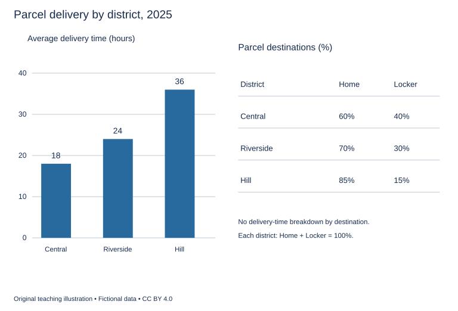
教学虚构。2025地区平均配送时间：Central18小时，Riverside24，Hill36。投递地点占比：到家/柜机分别60/40%、70/30%、85/15%。各区两类别互斥合100%，未给分地点平均时长或个人选择原因。
任务预算（含首次审题，不额外加时）
初稿20分钟（审题规划3、写作15、检查2）；诊断15；反馈阅读与证据核查10；完整重写25；对照归档5。合计75分钟。
初稿后自评清单
- [ ] 达到最低字数；全文连贯成段，没有用项目符号代替作文。
- [ ] 概述给主要特征；数据、阶段或方位都与题图逐项相符，不推断未提供的原因。
- [ ] 每段可写出一个功能标签；例子或数据与该段要点相连。
- [ ] 圈出两处词汇搭配和两处句法疑点，先自行修正再查询或求反馈。
- [ ] 记录一项最影响理解的问题和原句证据，不填写自猜分数。
反馈与重写
打开 独立参考页（本节下方展开参考），按逐段检查和通用协议核验。重写任务：完整重写至少150词；用两句跨图描述模式，但不推因果或个体偏好，最后核对全部单位和比较对象。
本周听读能力迁移（包含在既有预算）
在本题归档时段内用3分钟：记录是否按时完成、初稿与重答是否复发同类问题，选一个下轮优先项；不可凭完成率推分。对应U04 W12限时与复发问题复盘。
这是本地写说步骤，不依赖音频已交付。若另有合法听读材料，只在该科原定复盘时段使用；没有材料则标待补，不宣称完成听力。
W12 T1A 示例、反馈与重练（首答后展开）
WS-W12-T1A 独立参考页
只在初稿完成后阅读；不是唯一答案，也没有官方分数。以下是对原创示例的教学讲评，不是对学生尚未提交作文的已完成批改。
思路拆解
不同指标并列比较，不能把地区相关模式当柜机导致快；不以交付比例推个人偏好或满意度。
原创示例
The bar chart compares average parcel delivery times in three districts in 2025, while the table gives the proportions delivered to homes and collection lockers in each district. Time is measured in hours, and the delivery locations are shown as percentages.
Overall, Central had the shortest average delivery time and the highest proportion of parcels sent to lockers. Hill had the longest delivery time and the lowest locker share. Home delivery was more common than locker delivery in all three districts.
Parcels took an average of 18 hours to arrive in Central, compared with 24 hours in Riverside and 36 hours in Hill. Hill’s average was therefore twice Central’s, while Riverside’s figure was six hours above Central’s and twelve hours below Hill’s. The difference between the fastest and slowest districts was eighteen hours.
In Central, 60% of parcels went to homes and 40% to lockers. Riverside had a slightly larger home-delivery share of 70%, leaving 30% for lockers. Hill had the highest share of parcels delivered to homes, with respective shares of 85% and 15%. Its locker share was twenty-five percentage points below Central’s. These figures describe district patterns, but do not show delivery times separately for the two delivery locations.
示例正文词数：201（本项目正则计数；书信不含称呼、结束语与署名；连字符词作一词）。
逐段反馈与迁移
- P1 小时与比例单位分开，平均值不是每件都准时到达的承诺。
- P2 最短/最长与柜机份额模式准确，所有地区到家均过半。
- P3 36/18=2，差6/12/18小时；faster不应粗写成速度翻倍。
- P4 每区两项合100；柜机差25点；必须保留未分目的地提供时长的边界。
常见失误
将柜机高比例推为顾客更喜欢或柜机造成更快；平均18小时写成所有包裹18小时；混淆小时与百分点。
可执行反馈步骤
1. 先把自己的段落标为引入、概述/论点、支持、收束；分段可不同于示例，按功能核查，不照抄段数。
2. 对照上方逐段检查，逐项标“已有证据/缺失/不适用”。每条意见必须附自己的原句或缺失位置。
3. 按 反馈协议 的四维表记录；有争议的 AI 意见回题干、数据或语法依据核验。
4. 只选两项最高优先级问题执行整篇重写；保留原稿，禁止把示例替换为自己的作业。
重写任务
完整重写至少150词；用两句跨图描述模式，但不推因果或个体偏好，最后核对全部单位和比较对象。
完成后重新勾选 学生页（见本节上方学生题） 清单；将一处改前/改后及理由交给独立评阅者核查。真人评阅状态目前为“待安排”，不是已完成。
WS-W12-T1G 学生页：向客服请求调整配送
周次 W12｜题型 T1G｜能力点：书信目的、要点与语气
Task 1 的 A/G 分支二选一，另一分支不计入本周作业。
使用与记录
原创教学练习，非真题、非标准化模拟，难度未校准。先完成本页再打开参考页。人物、机构、经历与数据均为教学虚构。不要背诵示例。自评和 AI 反馈不能代替独立真人评分，未获得真人评阅时标记“分数未确认”。
保存：任务ID、实际日期、用时、初稿或原始录音、证据化反馈、重写/重答、三条修改理由。没有学生提交物，不得填写“已批改”或“已完成训练”。
完整题干
You ordered an item for home delivery, but the proposed delivery time is no longer suitable. Write to the company’s customer service department. In your letter:
- give the details of your order
- explain why the proposed delivery arrangement is unsuitable
- request a specific alternative arrangement.
Begin your letter: Dear Sir or Madam,
Write at least 150 words. You do not need to write any addresses. Spend about 20 minutes on this task.
任务预算（含首次审题，不额外加时）
初稿20分钟（审题规划3、写作15、检查2）；诊断15；反馈阅读与证据核查10；完整重写25；对照归档5。合计75分钟。
初稿后自评清单
- [ ] 达到最低字数；全文连贯成段，没有用项目符号代替作文。
- [ ] 三个要点均展开；称呼、目的、语气和结束语适合收信人。
- [ ] 每段可写出一个功能标签；例子或数据与该段要点相连。
- [ ] 圈出两处词汇搭配和两处句法疑点，先自行修正再查询或求反馈。
- [ ] 记录一项最影响理解的问题和原句证据，不填写自猜分数。
反馈与重写
打开 独立参考页（本节下方展开参考），按逐段检查和通用协议核验。重写任务：完整重写至少150词；将首选与备选条件分清，用礼貌请求并明确需要客服确认什么。
本周听读能力迁移（包含在既有预算）
在本题归档时段内用3分钟：记录是否按时完成、初稿与重答是否复发同类问题，选一个下轮优先项；不可凭完成率推分。对应U04 W12限时与复发问题复盘。
这是本地写说步骤，不依赖音频已交付。若另有合法听读材料，只在该科原定复盘时段使用；没有材料则标待补，不宣称完成听力。
W12 T1G 示例、反馈与重练（首答后展开）
WS-W12-T1G 独立参考页
只在初稿完成后阅读；不是唯一答案，也没有官方分数。以下是对原创示例的教学讲评，不是对学生尚未提交作文的已完成批改。
思路拆解
正式服务请求；订单信息与原安排、冲突原因、首选与备选方案；区分提议和已经确认。
原创示例
Dear Sir or Madam,
I am writing about order number RC482, which is for a desk lamp purchased from your website on Monday. I received a message yesterday confirming that delivery to my home is planned for this Thursday between ten in the morning and two in the afternoon. The address listed in the message is correct.
Unfortunately, I now have to attend a training session at work throughout that period, so nobody will be at home to receive the parcel. The entrance to my building opens directly onto a busy street, and I would prefer the package not to be left outside. I also cannot ask a neighbour to accept it, as the people I know in the building will be away that day.
Could you please change the delivery to Friday afternoon, when I will be at home? If that is not possible, I would be happy to collect the parcel from your High Street collection point on Saturday. Please confirm which option you can arrange and let me know whether there is any additional charge before making the change.
Yours faithfully, Alex Chen
示例正文词数：178（本项目正则计数；书信不含称呼、结束语与署名；连字符词作一词）。
逐段反馈与迁移
- P1 虚构订单号用于定位而非真实交易；时间地址信息足够客服查找。
- P2 不能签收且不能安全放门外的原因清楚，无须夸张投诉。
- P3 首选周五、备选周六自取并请求确认费用；没有替公司承诺免费。
常见失误
不写订单或原时段；更改原因和替代时间冲突；把请求写成已获同意。
可执行反馈步骤
1. 先把自己的段落标为引入、概述/论点、支持、收束；分段可不同于示例，按功能核查，不照抄段数。
2. 对照上方逐段检查，逐项标“已有证据/缺失/不适用”。每条意见必须附自己的原句或缺失位置。
3. 按 反馈协议 的四维表记录；有争议的 AI 意见回题干、数据或语法依据核验。
4. 只选两项最高优先级问题执行整篇重写；保留原稿，禁止把示例替换为自己的作业。
重写任务
完整重写至少150词；将首选与备选条件分清，用礼貌请求并明确需要客服确认什么。
完成后重新勾选 学生页（见本节上方学生题） 清单；将一处改前/改后及理由交给独立评阅者核查。真人评阅状态目前为“待安排”，不是已完成。
WS-W12-T2 学生页：网上购物对当地商店的影响
周次 W12｜题型 T2｜能力点：观点展开与任务回应
A/G 共用本题。
使用与记录
原创教学练习，非真题、非标准化模拟，难度未校准。先完成本页再打开参考页。人物、机构、经历与数据均为教学虚构。不要背诵示例。自评和 AI 反馈不能代替独立真人评分，未获得真人评阅时标记“分数未确认”。
保存：任务ID、实际日期、用时、初稿或原始录音、证据化反馈、重写/重答、三条修改理由。没有学生提交物，不得填写“已批改”或“已完成训练”。
完整题干
More people are buying everyday goods online rather than from local shops. Do the advantages of this development outweigh the disadvantages? Give reasons and include relevant examples.
Write at least 250 words. Spend about 40 minutes on this task.
任务预算（含首次审题，不额外加时）
初稿40分钟（审题规划5、写作30、检查5）；诊断15；反馈阅读与证据核查10；完整重写35；对照归档5。合计105分钟。
初稿后自评清单
- [ ] 达到最低字数；全文连贯成段，没有用项目符号代替作文。
- [ ] 直接回答题目的所有问句，有始终一致的立场。
- [ ] 每段可写出一个功能标签；例子或数据与该段要点相连。
- [ ] 圈出两处词汇搭配和两处句法疑点，先自行修正再查询或求反馈。
- [ ] 记录一项最影响理解的问题和原句证据，不填写自猜分数。
反馈与重写
打开 独立参考页（本节下方展开参考），按逐段检查和通用协议核验。重写任务：完整重写至少250词；用一对可比较的购买情境检验利弊，明确一个会削弱你结论的条件。
本周听读能力迁移（包含在既有预算）
在本题归档时段内用3分钟：记录是否按时完成、初稿与重答是否复发同类问题，选一个下轮优先项；不可凭完成率推分。对应U04 W12限时与复发问题复盘。
这是本地写说步骤，不依赖音频已交付。若另有合法听读材料，只在该科原定复盘时段使用；没有材料则标待补，不宣称完成听力。
W12 T2 示例、反馈与重练（首答后展开）
WS-W12-T2 独立参考页
只在初稿完成后阅读；不是唯一答案，也没有官方分数。以下是对原创示例的教学讲评，不是对学生尚未提交作文的已完成批改。
思路拆解
利弊比较在相同条件下展开；避免把更多网购偷换成全部商店消失；用产品可判断性和使用者条件限定结论。
原创示例
Buying everyday goods online can save time and widen the range of products available. However, it can also weaken local shopping services and create difficulties when products do not meet expectations. I believe the advantages can outweigh the disadvantages, provided that online shopping complements rather than completely replaces accessible local options.
The strongest advantage is convenience for people whose schedules or locations make shopping difficult. A person who works changing shifts may be able to place an order when nearby shops are closed. Someone living in a small settlement can compare products that are not stocked locally. For standard items that the buyer already knows, such as a familiar brand of stationery, this can reduce the time spent searching without greatly increasing uncertainty about the purchase. The benefit is therefore particularly clear when choice is limited and the product is easy to assess from a description.
There are nevertheless costs. If enough routine purchases move online, some local shops may no longer attract sufficient business. Residents who cannot use digital services easily could then lose a convenient place to buy basic goods. Online buyers may also order unsuitable products because they cannot examine them directly. Returning an item takes time and can partly cancel the convenience gained from avoiding a shopping trip. These drawbacks matter most where alternatives are scarce or where fit and physical quality are difficult to judge remotely.
On balance, I consider the gains greater when customers can choose the channel suited to each purchase. Local businesses may offer online ordering alongside collection, allowing people to check items or ask questions in person. Buyers can use delivery for predictable purchases while retaining nearby services for goods that need examination. This combination does not remove every difficulty, but it makes the benefits more widely accessible than either channel could alone.
In conclusion, online shopping offers substantial advantages, especially in access and convenience. Their value is greatest when local alternatives remain available, so the case for online growth is stronger than the case for replacing local shops entirely.
示例正文词数：339（本项目正则计数；书信不含称呼、结束语与署名；连字符词作一词）。
逐段反馈与迁移
- P1 选择有条件利大于弊，后文须解释条件而非仅喊混合最好。
- P2 特定班次/位置/熟悉商品说明谁受益及为何，避免人人无条件省时。
- P3 线下服务流失与退货成本承认充分；不假定所有网购都会退货。
- P4 同一购买可在不同渠道选择，给网订自取例子说明为何成本可减。
- P5 回应题意的增长而非完全替代；范围与引言一致。
常见失误
只列便利与失业没有权衡；把个人一次糟糕购物推广到所有网购；将相关趋势写成所有地方商店必定关闭。
可执行反馈步骤
1. 先把自己的段落标为引入、概述/论点、支持、收束；分段可不同于示例，按功能核查，不照抄段数。
2. 对照上方逐段检查，逐项标“已有证据/缺失/不适用”。每条意见必须附自己的原句或缺失位置。
3. 按 反馈协议 的四维表记录；有争议的 AI 意见回题干、数据或语法依据核验。
4. 只选两项最高优先级问题执行整篇重写；保留原稿，禁止把示例替换为自己的作业。
重写任务
完整重写至少250词；用一对可比较的购买情境检验利弊，明确一个会削弱你结论的条件。
完成后重新勾选 学生页（见本节上方学生题） 清单；将一处改前/改后及理由交给独立评阅者核查。真人评阅状态目前为“待安排”，不是已完成。
WS-W12-S1 学生页
周次W12｜Part 1专项｜能力点：限时作答、比较条件与复发问题检查｜30分钟
使用与记录
原创教学练习，非真题、非标准化模拟，难度未校准。先完成本页再打开参考页。人物、机构、经历与数据均为教学虚构。不要背诵示例。自评和 AI 反馈不能代替独立真人评分，未获得真人评阅时标记“分数未确认”。
保存：任务ID、实际日期、用时、初稿或原始录音、证据化反馈、重写/重答、三条修改理由。没有学生提交物，不得填写“已批改”或“已完成训练”。
操作与预算
设备与审题3分钟；首答录音6；回听及局部转写7；示例和诊断5；不看稿重答6；归档3。共30分钟。
Part 1专项题
1. Do you enjoy shopping for everyday items?
2. When do you prefer buying something in person?
3. Have you ever collected an online order from a shop?
4. What information do you check before buying something?
追问：
- Would your choice depend on the product?
- Has your shopping routine changed recently?
录音回听清单
- [ ] 保留首答原音，记录实际时长、是否中断、是否看稿；只报真实完成状态。
- [ ] 流利与连贯：标出两处时间戳，区分构思停顿与重复搜词，检查是否偏离问句。
- [ ] 词汇：找一处模糊词或重复表达，先解释原意再替换；不为难词改变意思。
- [ ] 语法：核对经历与习惯的时态；局部转写并更正两处妨碍理解的问题。
- [ ] 发音：不看转写听30秒，标听不清的词尾、重音或断句；没有音频不能判断发音。
- [ ] 展开：主要回答有具体情境或理由；追问后第一句回应追问的新角度。
重答要求
选择两个只有笼统判断的答案，先直接回应再加具体情境；重答一条追问，检查是否真正回应其新角度。
首答回听后才打开独立参考页（本节下方展开参考）。按反馈协议填至少三个时间戳，不以文字转写替代音频评阅。
本周听读能力迁移（包含在既有预算）
在本题归档时段内用3分钟：记录是否按时完成、初稿与重答是否复发同类问题，选一个下轮优先项；不可凭完成率推分。对应U04 W12限时与复发问题复盘。
没有已交付听力的假设；以本题原音或文字做迁移，不记录为额外听力完成。
W12 S1 示例、反馈与重练（首答后展开）
WS-W12-S1 独立参考页
原创教学示例，非真题或评分结果。未收到学生音频；以下是示例分析与待执行反馈，不能登记为已完成学生批改。
展开示例
直接回应→原因→具体情境的展开示例
I buy familiar items online when I know exactly what I want. For shoes, I usually prefer a shop because trying them on can save the trouble of returning them. The important difference for me is how easy the item is to judge before buying, rather than whether one shopping method is always better.
纯口答示例词数：54；只计MODEL标记内实际英文口答，不含标题、标签、说明。词数不能证明录音时长或流利度。
展开与反馈
本周能力：限时作答、比较条件与复发问题检查。
1. 示例先表态，再说明偏好理由，最后提供条件或场景。检查自己是否用一个词回答后就结束。
2. 找到一个具体细节：物品、动作、对话或地点。用自己的经历替换，保持与题卡相关，不照搬示例身份与经历。
3. 追问要重新回应，不能继续背长答。首句先回答追问，再用一条理由支持。
4. 标出一处听不清或语法影响理解的原音时间戳；先尝试最小修正。不要把自然停顿一概当成错误，或用加快语速掩盖逻辑断裂。
常见失误
空泛形容词替代具体过程；给了经历却没解释为什么重要；Part 3只有个人故事没有一般解释；AI只看转写就判断发音。逐项回原音核对，不能凭范例推断自己已达到某个分数。
可执行重答与反馈
选择两个只有笼统判断的答案，先直接回应再加具体情境；重答一条追问，检查是否真正回应其新角度。
填写反馈协议四维表，附三个时间戳和原话证据。选一个内容问题与一个语言问题先修；重答后并排听两段，记录改善与仍未解决之处。自评与AI不能替代独立真人评分；独立评阅目前待安排，分数未确认。
WS-W12-S2 学生页
周次W12｜Part 2专项｜能力点：限时作答、比较条件与复发问题检查｜30分钟
使用与记录
原创教学练习，非真题、非标准化模拟，难度未校准。先完成本页再打开参考页。人物、机构、经历与数据均为教学虚构。不要背诵示例。自评和 AI 反馈不能代替独立真人评分，未获得真人评阅时标记“分数未确认”。
保存：任务ID、实际日期、用时、初稿或原始录音、证据化反馈、重写/重答、三条修改理由。没有学生提交物，不得填写“已批改”或“已完成训练”。
操作与预算
准备、首答录音及追问5分钟；回听及局部转写8；示例与诊断5；关键词重组3；重答及追问5；归档4。共30分钟。
Part 2专项任务卡
Describe a purchase you considered carefully. Say what you wanted to buy, what options you compared, what information you used, and explain why you chose the final option.
准备1分钟，说1～2分钟。只记5个关键词，不预写句子。
收尾追问：
- Were you satisfied after using the item?
- Would you use the same comparison method again?
录音回听清单
- [ ] 保留首答原音，记录实际时长、是否中断、是否看稿；只报真实完成状态。
- [ ] 流利与连贯：标出两处时间戳，区分构思停顿与重复搜词，检查是否偏离问句。
- [ ] 词汇：找一处模糊词或重复表达，先解释原意再替换；不为难词改变意思。
- [ ] 语法：核对经历与习惯的时态；局部转写并更正两处妨碍理解的问题。
- [ ] 发音：不看转写听30秒，标听不清的词尾、重音或断句；没有音频不能判断发音。
- [ ] 展开：主要回答有具体情境或理由；追问后第一句回应追问的新角度。
重答要求
用五个关键词重答完整任务卡1～2分钟，再答两条追问；补一处具体行动或细节并删一处无关背景。比较首答与重答，不背示例。
首答回听后才打开独立参考页（本节下方展开参考）。按反馈协议填至少三个时间戳，不以文字转写替代音频评阅。
本周听读能力迁移（包含在既有预算）
在本题归档时段内用3分钟：记录是否按时完成、初稿与重答是否复发同类问题，选一个下轮优先项；不可凭完成率推分。对应U04 W12限时与复发问题复盘。
没有已交付听力的假设；以本题原音或文字做迁移，不记录为额外听力完成。
W12 S2 示例、反馈与重练（首答后展开）
WS-W12-S2 独立参考页
原创教学示例，非真题或评分结果。未收到学生音频；以下是示例分析与待执行反馈，不能登记为已完成学生批改。
展开示例
原创长答示例（时长须以个人实际录音测量）
A purchase I considered carefully was a desk chair for my room. I had been using a dining chair, and I wanted something that would fit the desk and be easy to adjust. There were many options online, but the descriptions were difficult to compare.
I first measured the space under the desk and decided how much I could spend. That removed several chairs from consideration. Then I made a short list and visited a shop where I could try similar models. I discovered that a chair with many features was not necessarily the most comfortable for me.
I eventually chose a fairly simple model with adjustable height and a seat that fitted the available space. I also checked the return arrangements before paying, because a brief trial in a shop is different from using a chair at home.
I was satisfied with the choice. More importantly, I had compared the options against my own requirements instead of assuming that the most expensive product would be best. I would use that approach for another substantial purchase.
纯口答示例词数：176；只计MODEL标记内实际英文口答，不含标题、标签、说明。词数不能证明录音时长或流利度。
展开与反馈
本周能力：限时作答、比较条件与复发问题检查。
1. 长答示例按背景、行动/观察、变化与意义组织。每段都推进内容；检查自己是否只有背景而没有具体事件。
2. 找到一个具体细节：物品、动作、对话或地点。用自己的经历替换，保持与题卡相关，不照搬示例身份与经历。
3. 追问要重新回应，不能继续背长答。首句先回答追问，再用一条理由支持。
4. 标出一处听不清或语法影响理解的原音时间戳；先尝试最小修正。不要把自然停顿一概当成错误，或用加快语速掩盖逻辑断裂。
常见失误
空泛形容词替代具体过程；给了经历却没解释为什么重要；Part 3只有个人故事没有一般解释；AI只看转写就判断发音。逐项回原音核对，不能凭范例推断自己已达到某个分数。
可执行重答与反馈
用五个关键词重答完整任务卡1～2分钟，再答两条追问；补一处具体行动或细节并删一处无关背景。比较首答与重答，不背示例。
填写反馈协议四维表，附三个时间戳和原话证据。选一个内容问题与一个语言问题先修；重答后并排听两段，记录改善与仍未解决之处。自评与AI不能替代独立真人评分；独立评阅目前待安排，分数未确认。
WS-W12-S3 学生页
周次W12｜三部分全流程｜能力点：限时作答、比较条件与复发问题检查｜60分钟
使用与记录
原创教学练习，非真题、非标准化模拟，难度未校准。先完成本页再打开参考页。人物、机构、经历与数据均为教学虚构。不要背诵示例。自评和 AI 反馈不能代替独立真人评分，未获得真人评阅时标记“分数未确认”。
保存：任务ID、实际日期、用时、初稿或原始录音、证据化反馈、重写/重答、三条修改理由。没有学生提交物，不得填写“已批改”或“已完成训练”。
操作与预算
D5：设备与流程准备2分钟，连续首答11～14分钟，余14～17分钟完整回听标记，共30分钟。D6：局部转写诊断10，阅读示例与调整5，重答与新追问10，对照归档5，共30分钟。合计60分钟。
连续三部分全流程（首答不可看参考）
找同伴读题，或独练逐题揭示。完整首答11～14分钟，中途不暂停纠错。模拟同伴不是认证考官；自行读题的练习记录不能冒充真实面试。
Part 1：4～5分钟
1. Do you enjoy receiving parcels?
2. Where do you usually have things delivered?
3. Do you prefer planning ahead or making quick decisions?
4. What do you do if you need something urgently?
5. Do you read instructions before using a new item?
6. Who do you ask when a product is confusing?
可按回答追加 Why? / Can you give an example? 到时转下部分，不强行说完全部备用问题。
Part 2：3～4分钟（含准备）
Describe a service that made an everyday task easier. Say what the service was, when you used it, how it worked, and explain why it was helpful.
准备1分钟，连续说1～2分钟。收尾追问：
- Would you use that service again?
- Was there any part of the service that could be improved?
Part 3：4～5分钟
1. How do delivery services change shopping habits?
2. Should convenience always be the main priority when choosing a service?
3. How can services meet the needs of different customers?
4. What is a fair way to compare two services?
根据回答追加追问：
- Would a cheaper service always offer better value?
- What could make a service suitable for one person but unsuitable for another?
录音回听清单
- [ ] 保留首答原音，记录实际时长、是否中断、是否看稿；只报真实完成状态。
- [ ] 流利与连贯：标出两处时间戳，区分构思停顿与重复搜词，检查是否偏离问句。
- [ ] 词汇：找一处模糊词或重复表达，先解释原意再替换；不为难词改变意思。
- [ ] 语法：核对经历与习惯的时态；局部转写并更正两处妨碍理解的问题。
- [ ] 发音：不看转写听30秒，标听不清的词尾、重音或断句；没有音频不能判断发音。
- [ ] 展开：主要回答有具体情境或理由；追问后第一句回应追问的新角度。
重答要求
重答最弱的一个Part 1问题、完整Part 2及一个Part 3问题，再答一条未用追问。用不同细节或补一个例外，确认不是复述范例；局部重答不另计全流程。
首答回听后才打开独立参考页（本节下方展开参考）。按反馈协议填至少三个时间戳，不以文字转写替代音频评阅。
本周听读能力迁移（包含在既有预算）
在本题归档时段内用3分钟：记录是否按时完成、初稿与重答是否复发同类问题，选一个下轮优先项；不可凭完成率推分。对应U04 W12限时与复发问题复盘。
没有已交付听力的假设；以本题原音或文字做迁移，不记录为额外听力完成。
W12 S3 示例、反馈与重练（首答后展开）
WS-W12-S3 独立参考页
原创教学示例，非真题或评分结果。未收到学生音频；以下是示例分析与待执行反馈，不能登记为已完成学生批改。
展开示例
Part 2原创展开示例（个人语速不同，不能以词数推录音时长）
A service that made an everyday task easier was a parcel collection point in a small shop near my home. I used it when I ordered a desk accessory and knew I would be away during normal delivery hours.
At checkout, I selected the collection point instead of my home address. When the parcel arrived, I received a message with a collection code and the shop’s opening times. I went there on my way home, showed the code and collected the package from the person at the counter.
The main benefit was that I did not have to wait at home or ask someone else to receive the parcel. I could choose a time within the shop’s opening hours. However, it would not have been as convenient for a very heavy item or if the shop had been far away.
I would use the service again for a small package. The opening times were clear, although a better sign inside the shop would have helped me find the collection counter more quickly on my first visit.
Part 3观点→理由→条件展开示例
A fair comparison starts with the task the customer needs to complete. A cheaper service may be good value for a flexible delivery, but less useful when an item is needed at a specific time. I would compare cost, reliability and access under similar conditions. Otherwise, the services may appear different simply because they are being used for different purposes.
纯口答示例词数：236；只计MODEL标记内实际英文口答，不含标题、标签、说明。词数不能证明录音时长或流利度。
展开与反馈
本周能力：限时作答、比较条件与复发问题检查。
1. 长答示例按背景、行动/观察、变化与意义组织。每段都推进内容；检查自己是否只有背景而没有具体事件。
2. 找到一个具体细节：物品、动作、对话或地点。用自己的经历替换，保持与题卡相关，不照搬示例身份与经历。
3. Part 3示例不把个人选择强加给所有人；先讲机制，再说明条件或例外。检查自己的追问答案是否直接回应新问题。
4. 标出一处听不清或语法影响理解的原音时间戳；先尝试最小修正。不要把自然停顿一概当成错误，或用加快语速掩盖逻辑断裂。
常见失误
空泛形容词替代具体过程；给了经历却没解释为什么重要；Part 3只有个人故事没有一般解释；AI只看转写就判断发音。逐项回原音核对，不能凭范例推断自己已达到某个分数。
可执行重答与反馈
重答最弱的一个Part 1问题、完整Part 2及一个Part 3问题，再答一条未用追问。用不同细节或补一个例外，确认不是复述范例；局部重答不另计全流程。
填写反馈协议四维表，附三个时间戳和原话证据。选一个内容问题与一个语言问题先修；重答后并排听两段，记录改善与仍未解决之处。自评与AI不能替代独立真人评分；独立评阅目前待安排，分数未确认。
许可
原创文字：RayXBuilds and contributors，CC BY 4.0。此页由已验收分课汇编，调整了标题和导航；题干、正文和答案内容保留。公开第三方音频未包含。
回到顶部
U20 阅读复盘与写作口语反馈协议
W09–12 复盘记录（计入既有120分钟）
每周首答60分钟；其余120分钟为每篇证据复盘20分钟、词汇长句10分钟及48小时后复测10分钟。下表用于这部分时间，不另增必做活动。每篇80–100词开放短文选做另加15分钟；每周三篇最多另加45分钟。计划耗时尚未经真实学习者验证。
W09 定位与证据
| 课号/题号 | 题干定位线索 | 证据段与最短原句 | 为何支持答案 | 近邻段为什么不够 |
| 待填写 |
先在不看答案时写出证据，再核对。与原文有同一个词不等于支持；保留对象、时点、条件与范围。
W10 作者立场
| 课号/题号 | 谁在说话 | 作者认可的部分 | 作者拒绝或限定的部分 | YES/NO/NG依据 |
| 待填写 |
把引述者、反方和作者分开。NO需要明确相反立场；NG表示没有足够信息判断作者立场，不是现实中不可能。
W11 学术结构
| 课号 | 研究问题/主张 | 机制或理由 | 用于支持的观察 | 限制/竞争解释 | 下一步可检验问题 |
| 待填写 |
逐段写功能标签，再画一条“主张→机制→证据→限制”的链。区分证明某机制可以产生结果与证明原事件确由该机制造成。
W12 限时复发问题
60分钟合卷首答期间，简记每个题组的开始/结束时间；不暂停计时查词或读答案。不会的题作标记后继续，最终正确数不换算雅思分数。
| 篇/题组 | 开始分钟 | 结束分钟 | 跳过题号 | 最后是否回看 |
| 待填写 |
| 课号/错题 | 首次错因 | 纠正后的证据 | 48小时复测答案 | 是否再次犯同类错误 | 下次可执行动作 |
| 待填写 |
延迟复测遮住答案与解释，重做错题及两道原本正确的题。仍错的题先写“缺少哪条证据/忽略哪个范围词”，再查解析；不要只背答案字母。若10分钟内不能复完，记录剩余题，下一次用该周尚余复盘时间继续，不隐瞒超时。
实际学习者作答、复测和独立反馈目前均未填写。模板本身不等于已完成训练。
写说反馈协议与交接表
适用于WS-W09～W12全部课项。在题目所列预算内完成。这里是待执行流程与空白记录模板，不是已完成批改。自评和AI不能代替独立真人评分；没有独立评阅时，成绩栏只能写“分数未确认”。
写作：先证据后修改
1. 保留初稿和限时记录；先逐项核题干。A类数字回图表，流程核顺序与分支，地图核方位和替换/扩建，G类逐一标三要点，Task 2标题目问句与立场。
2. 给每段一个功能标签，检查是否缺概述、缺例子或缺结论。使用课内逐段讲评时按功能对齐，不要求复制范文段数。
3. 四维表至少填四条证据，不需要每项都有错误；可写“证据充分”并引用原句。优先解决任务遗漏与理解障碍，再处理语言精确性。
4. 在每题10分钟反馈时段看示例、核查争议；只选两项主要问题。按学生页要求整篇重写，保留内容相似度但不用示例替代原稿。
5. 用5分钟对照重写：写三条“原句→新句→理由”，其中至少一条属于内容或组织。再次检查最低字数和所有题干要点。
| 维度 | 初稿原句/段号或缺失位置 | 具体问题及依据 | 修改行动 | 重写证据 | 来源 |
| 任务完成/回应 | 待填 | 待填 | 待填 | 待填 | 自评/AI/真人姓名与日期 |
| 连贯与衔接 | 待填 | 待填 | 待填 | 待填 | 待填 |
| 词汇资源 | 待填 | 待填 | 待填 | 待填 | 待填 |
| 语法范围与准确性 | 待填 | 待填 | 待填 | 待填 | 待填 |
可给AI的请求（须附完整题干和自己的真实初稿）：
> 按任务回应、连贯、词汇、语法给证据化建议。每条引用我的原句或指出缺失的题干要点，说明为什么影响表达，给最小修改方向。区分确定错误与可选改写。先提两项最高优先级问题，不给分数，不声称真人评分，不替我重写整篇。Task 1数据只能来自题面。不能确认的地方明确标记待核查。
核查AI：先对照数据和题干，再判断改写是否改变原意。AI意见有矛盾时保留争议并交真人核查；不能把AI自信程度当作正确性。
口语：音频优先
1. 保留完整首答。首次回听不看转写，标记听不清、断裂和偏题的时间戳。
2. 局部转写最多60～90秒，核对原音，尤其是自动转写可能改掉的语法错误。转写只辅助诊断，不替代录音。
3. 每项意见附时间戳；至少处理一个展开问题与一个语言或发音问题。发音判断需实际音频，不能依据文字想象。
4. 只看关键词重答，使用课内新追问检验能否迁移。比较原音和重答，不把慢读一份修改稿算作即兴进步。
| 维度 | 首答时间戳与听到的现象 | 改善动作 | 重答时间戳与证据 |
| 流利与连贯 | 待填 | 待填 | 待填 |
| 词汇资源 | 待填 | 待填 | 待填 |
| 语法范围与准确性 | 待填 | 待填 | 待填 |
| 发音与可理解度 | 待填；没有音频不得判断 | 待填 | 待填 |
可给AI的请求：
> 若能处理音频，请引用时间戳，指出两处最影响理解的问题，并用我的具体内容示范如何扩展或澄清。不要给官方分数。若只能看到转写，只反馈文本中的内容、词汇与语法，明确不能判断发音、真实停顿或口语流利度；不要编造听过录音。
真人交接与验收（待执行）
交付包：任务ID、完整题干/数据、未修改初稿、重写稿及修改理由；口语完整原始音频、实际时长、题目、局部转写和重答片段。请求评阅者指出四个维度的证据，区分限时初稿表现与辅导后表现，并反馈下一轮最优先任务。若给估分，记录评阅者资历、日期与不确定性，不能标为官方考试成绩。
登记：评阅者____；日期____；已收到材料____；意见文件____；分歧与待核实____；学生落实证据____。空栏就是待完成，不预填虚构记录。尚未有正式目标分数与可信独立评估时，只汇报具体改进和未解决问题，不做达标或提分保证。
回到顶部
U21 第13周：长篇阅读、写作与口语
本页为已独立核验的原创文字课程。先完成学生题目，再展开对应参考。非真题、非标准化模考，不换算雅思分数。听力尚未补齐，本页不代表全科课程已完成。
每周选A或G类Task 1一题，加Task 2及三次口语。参考范文不是学生已完成作业，仍须提交初稿、录音和重写，独立真人评分另行安排。
阅读每周180分钟（60分钟首次限时、120分钟证据精读与延迟复测），写作180分钟、口语120分钟。词汇60分钟、听力180分钟另列；新增完整听力未验收，不能勾整周完成。
W16原创阶段检查按实际证据复盘；正式T16陌生整卷及真人评分另记，本页原创技能卷不能代替正式模拟。后续周数与达标规则见 U04。
阅读：首答不查词
R-W13-01 · Why a Queue Moves in Bursts
W13｜正文 861 词｜13 题｜篇章：机制解释：平均速度、波动与反馈（6段）
本课必做60分钟：首答20、证据复盘20、词汇长句10、48小时后复测10。每周三课180分钟，合卷首答替代单课首答，不重复计算。开放短文选做另加15分钟。
本项目原创虚构教学情境，人物、地点、历史事件和案例数据均非真实研究或史料。科学解释只讨论文内说明的模型与条件。非雅思真题或标准化模考；正确数不换算雅思等级。许可：CC BY 4.0 — RayXBuilds and contributors。
能力点：识别论证关系、区分作者与引述者、条件与因果、精确定位。初读不查词，完成后打开独立答案页。
Passage
A At the fictional ferry terminal of Olen, a queue sometimes remains still for several minutes and then advances rapidly. Visitors describe this as evidence that the ticket clerks are working irregularly. The explanation sounds reasonable because the movement of the queue is visible while activity behind the counter is not. Yet a queue is the combined result of arrivals, service and the way people move into newly available space. Its visible rhythm need not reproduce the rhythm of any one clerk. To explore this distinction, the terminal uses a tabletop demonstration with counters representing travellers. The exercise is not intended to predict a real terminal precisely. It shows how a perfectly regular service process can coexist with uneven waiting, and how several small sources of variation can combine into a pattern that seems more mysterious than any of its components viewed separately.
B The first demonstration admits one counter at a time and removes counters at a steady interval. If arrivals are spaced more widely than removals, the line usually disappears between customers. If several arrive together, however, a queue forms even when the average arrival rate across the whole demonstration remains low. Later quiet periods may give the clerk enough time to clear it, but that does not remove the waiting already experienced by the group. An average taken over a long period cannot describe every person's encounter with the service. The class therefore distinguishes a system's ability to handle its total demand from the waiting created by the timing of that demand. These are connected quantities, but improving one description does not automatically improve the other, particularly when boats and buses deliver people in groups rather than in a smoothly spaced stream.
C Service times can vary as well. A traveller buying a familiar ticket may finish quickly, while someone arranging a complicated journey may need a longer conversation. Even if the mean service time stays unchanged, concentrating several long transactions together creates a temporary blockage. In the demonstration, coloured counters identify the longer tasks before the run begins. The operator is not permitted to move them to convenient positions after observing the queue. Their order matters because a long task near the start affects people who arrive behind it. This does not establish that complicated customers deserve blame. Their needs are part of the service the terminal has offered. The practical question is how to accommodate different tasks without mistaking the convenience of the simplest transaction for a complete account of what the counter is supposed to do.
D The terminal considers two arrangements. Separate lines for each clerk allow travellers to choose a queue but expose them to the chance of selecting one behind an unexpectedly long task. A common line feeding the next available clerk can distribute that risk differently. It does not necessarily reduce the time required for any individual transaction, and its advantages depend on the layout and the rules for allocating customers. The writer rejects the claim that one arrangement must be best everywhere. A common line that obstructs a narrow entrance may create a different problem, while separate lines may suit genuinely different services. Comparison requires specifying both the work being offered and the experience being evaluated. A system can look faster because some requests have been moved elsewhere, without becoming faster at serving the same range of needs.
E To observe the demonstration, students use an arrival strip marked with the intended entry times and a service deck that specifies transaction durations. They record each counter's departure on a time sheet. The same sequence can then be tested under different queue arrangements without quietly replacing difficult tasks with easier ones. The class also uses a queue map showing the positions people could occupy without blocking the doorway. These devices answer complementary questions: the time sheet records waiting and departure, while the map concerns physical space. A short line is not automatically a comfortable line, and a long-looking line may move more predictably than several small ones. The terminal's plan therefore includes information about expected stages so that a traveller can understand what is happening even during a period when their own position does not visibly change.
F The last demonstration introduces a feedback effect. When people see a long queue, some delay joining it, then return together after it appears to have shortened. Their response can create another surge rather than a smooth reduction in demand. The class records these decisions in a return log and compares the resulting pattern with one in which entry times were fixed beforehand. It would be a mistake to describe the second pattern as the queue's natural behaviour and the first as an irrelevant disturbance. People respond to the service they encounter, and that response can become part of the service's operation. Olen's lesson is consequently broader than a recommendation about lines. Waiting emerges from timing, task differences, space and expectations. Before attributing every visible pause to an idle clerk, a careful observer should ask which of those processes could have produced the pause and what evidence would distinguish the alternatives. The answer may require watching arrivals as carefully as watching the counter, especially when demand follows a timetable elsewhere.
Questions
Choose ONE answer, A, B, C or D.
1. The opening warns that queue movement
A. does not necessarily mirror one clerk’s activity B. cannot be observed C. depends only on the doorway D. always reveals staff effort
2. Why can a low average arrival rate coexist with waiting?
A. Arrivals may occur in groups B. The average is never calculable C. Nobody leaves D. All transactions are identical
3. Why must task order be fixed before a run?
A. To stop complicated work B. To guarantee no queue C. To make every clerk slower D. To prevent favourable rearrangement after seeing results
4. A common line is presented as
A. always physically shorter B. a conditional way to distribute waiting risk C. universally superior D. a way to eliminate complex tasks
Do the following statements agree with the writer's views? Write YES, NO or NOT GIVEN. YES = the writer agrees; NO = the writer expresses the opposite view; NOT GIVEN = the writer's view is not stated. Do not use outside knowledge.
5. Quiet periods erase the waiting experienced by earlier groups.
6. Complex requests should be excluded simply because they take longer.
7. The writer believes Olen’s clerks receive excessive wages.
8. Customers’ responses can themselves change the queue’s pattern.
Complete the sentences. Choose NO MORE THAN 3 WORDS FROM THE PASSAGE for each answer. Do not change word forms.
9. Intended entry times are marked on an ______.
10. Transaction durations are supplied by a ______.
11. Departures are entered on a ______.
12. Positions that avoid blocking the doorway appear on a ______.
13. Decisions to come back later are entered in a ______.
本周重点
时间分配：首答记录每题组起止分钟，遇到停滞题先标记再推进，最后按证据回看。
复盘
必做：给每道错题标记“定位/作者立场/范围/语法/词数”，抄最短证据；用一行箭头概括本文论证或过程。48小时后重做错题与两道正确题，检查是否仍能指出证据。
选做（15分钟，80–100词）：Explain one way a short-looking queue could still provide a poor experience.
R-W13-01 答案、证据与精读（首答后展开）
R-W13-01 · 独立答案与证据
来源与许可同学生页。先完成再核对。可接受答案由 accepted_answers 明确列出；只忽略大小写和首尾空格，不自行删词。开放复盘不计入客观正确数。
1. A｜段落 A｜证据：“need not reproduce the rhythm of any one clerk”
其余绝对化或与可观察场景不符。
2. A｜段落 B｜证据：“If several arrive together”
时序不同于长期总量。
3. D｜段落 C｜证据：“not permitted to move them to convenient positions”
保持比较输入而非预定结论。
4. B｜段落 D｜证据：“distribute that risk differently”
作者同时说明空间与服务条件。
5. NO｜段落 B｜证据：“does not remove the waiting already experienced”
过去经历不能由后来的空闲取消。
6. NO｜段落 C｜证据：“Their needs are part of the service”
作者反对按简单交易定义全部服务。
7. NOT GIVEN｜段落 A｜证据：“ticket clerks”
全文未评价薪酬，不能从排队推工资立场。
8. YES｜段落 F｜证据：“that response can become part”
明确反馈机制。
9. arrival strip｜段落 E｜证据：“an arrival strip”
strip单独不能接an；完整名称才符合冠词。
10. service deck / deck｜段落 E｜证据：“a service deck”
deck为合理短答。
11. time sheet / sheet｜段落 E｜证据：“on a time sheet”
sheet可接受；entry times为另一记录。
12. queue map / map｜段落 E｜证据：“a queue map”
map可接受，描述空间而非耗时。
13. return log / log｜段落 F｜证据：“in a return log”
log为合理中心词。
词汇与长句
- surge：短时间内集中到达
- allocate：分配
- transaction：一次服务事项
- feedback：反应再次改变原系统的过程
> A system can look faster because some requests have been moved elsewhere, without becoming faster at serving the same range of needs.
because解释表面提速，without限定并未改善同一任务集合。
> People respond to the service they encounter, and that response can become part of the service's operation.
that response回指顾客反应，说明双向因果。
开放任务参考
D服务任务被转走或入口受阻，E视觉长度不等于等待；须说清评价维度。
标准：观点有文内依据，保留条件和范围，推断明确标注；不存在唯一措辞。
R-W13-02 · The Street That Acquired a Roof
W13｜正文 944 词｜13 题｜篇章：虚构历史：商业连廊与城市边界（8段）
本课必做60分钟：首答20、证据复盘20、词汇长句10、48小时后复测10。每周三课180分钟，合卷首答替代单课首答，不重复计算。开放短文选做另加15分钟。
本项目原创虚构教学情境，人物、地点、历史事件和案例数据均非真实研究或史料。科学解释只讨论文内说明的模型与条件。非雅思真题或标准化模考；正确数不换算雅思等级。许可：CC BY 4.0 — RayXBuilds and contributors。
能力点：识别论证关系、区分作者与引述者、条件与因果、精确定位。初读不查词，完成后打开独立答案页。
Passage
A In the fictional northern town of Varen, the first covered passage began as a practical agreement between two shopkeepers. They placed a light roof over the narrow space separating their entrances so that customers could cross without stepping into winter rain. The structure was not conceived as a new kind of public street. It was a small extension of the shops, maintained by their owners and closed when they went home. Yet its usefulness changed what neighbours expected of the space. People began using it to reach a lane behind the buildings, and the distinction between a private shelter and a public route became harder to maintain through habit alone.
B A third trader extended the roof towards the market square. The resulting passage offered a continuous sheltered walk, but the separate sections differed in height and width. Carts could enter at one end and become trapped at a narrow point farther along. The town's first passage sketch recorded entrances, changes in level and places where two people could not easily pass. It was drawn to solve movement problems rather than to advertise an architectural style. The sketch revealed that linking several useful fragments did not automatically create a useful whole. A route could fail at its smallest obstruction even when every owner considered their own section adequate for the customers immediately outside their door.
C During the next winter, traders installed lamps beneath the roof. Evening use increased, and stalls remained open later. This made the passage commercially attractive but also changed the work required to keep it operating. Someone had to replace fuel, clean surfaces and decide when lighting would stop. The owners began sharing costs through a maintenance account, contributing according to the length of frontage they controlled. That formula was easy to calculate, but it did not precisely reflect who benefited most. A small shop near the busiest entrance could receive more visitors than a larger one in a quiet corner. An apparently neutral rule for dividing costs therefore contained an assumption about how location and commercial advantage were related.
D The passage gradually attracted activities that depended on lingering rather than simply moving through. A seller displayed illustrated books; a craft worker demonstrated a technique beside a window. Visitors paused, talked and watched. The roof had changed the rhythm of the space, not merely the amount of rain reaching the pavement. However, this success created conflict. People stopping at a demonstration could obstruct those trying to reach the rear lane. Shopkeepers who benefited from an audience wanted room for displays, while others wanted a clear corridor. The town did not resolve the issue by declaring all stopping undesirable. It marked places where activity could expand without consuming the route's minimum usable width.
E Ownership became more contentious when a new proprietor closed a gate across the rear exit. The owner argued that the passage crossed private land; regular users replied that years of daily access had made it part of their normal route. The fictional council's response was to negotiate an access agreement specifying opening hours and responsibilities. This account makes no claim about the legal rules of any real jurisdiction. Its historical point is that physical connection and accepted use can develop before a stable agreement about control. A roof can be built quickly, while the expectations surrounding the route beneath it may take much longer to become explicit or to accommodate the interests of people who did not pay for its construction.
F Later improvements made the passage look more uniform. Roof sections were replaced, and a common colour was used on the supports. A decorative print showed the result as a single elegant design. That image concealed the uneven sequence through which the space had grown. Visitors seeing only the finished view might assume that circulation, lighting and access had all been settled by one architect from the beginning. The council preserved a change register recording additions and alterations, including sections removed after causing difficulties. The register offered a less polished but more informative history than the print. It showed decisions responding to earlier consequences, rather than a perfect plan gradually becoming visible without disagreement or revision.
G When a new open road diverted some traffic away from the covered route, traders proposed measuring success by comparing visitor totals. The keeper of the records suggested another question: what kinds of use still depended on the passage? Some customers continued choosing it for shelter, while others came specifically for demonstrations and conversation. A reduction in through-traffic did not necessarily mean every function had weakened. The town collected short descriptions in a use diary, noting whether visitors were crossing, shopping or staying to watch. The entries were incomplete and could not account for everyone. They nevertheless prevented the discussion from treating all footsteps as identical units of value or all visitors as people with the same reason for entering.
H Varen's covered street ultimately belonged to several histories at once: a response to weather, a commercial experiment, a route through private plots and a place for public attention. None of these accounts alone explains why it took its final form. The writer cautions against reading the decorative print as the story of an idea fully formed before construction. The more revealing story lies in the interactions between additions, uses and negotiated limits. A sheltered connection invited new behaviour; that behaviour created costs and conflicts; agreements and alterations then reshaped the connection. The passage became a shared environment through this continuing process, even though its physical parts remained linked to separate owners. Its roof was easy to see, but the arrangements that made the space workable were just as important to understanding what had been built.
Questions
Which paragraph contains the following information? Write a letter, A–H. You may use any letter more than once.
1. a cart becoming obstructed after entering a passage that initially seemed wide enough
2. a cost-sharing formula based on frontage rather than actual benefit
3. a conflict following the closure of a previously used rear exit
4. a comparison between a decorative print and a change register that records sections later removed after causing difficulties
Complete the summary. Choose NO MORE THAN 3 WORDS FROM THE PASSAGE for each answer. Do not change word forms.
The route’s movement problems were recorded in a (5) ______. Shared lighting costs passed through the (6) ______. Opening hours were specified in an (7) ______. Later alterations entered a (8) ______. Different reasons for visiting were described in a (9) ______.
Do the following statements agree with the writer's views? Write YES, NO or NOT GIVEN. YES = the writer agrees; NO = the writer expresses the opposite view; NOT GIVEN = the writer's view is not stated. Do not use outside knowledge.
10. Connecting individually useful sections guarantees a fully usable route.
11. Every person stopping in the passage should have been prevented from doing so.
12. A fall in through-traffic necessarily reduces every function of the passage.
13. The writer thinks covered streets should be built in all towns.
本周重点
时间分配：首答记录每题组起止分钟，遇到停滞题先标记再推进，最后按证据回看。
复盘
必做：给每道错题标记“定位/作者立场/范围/语法/词数”，抄最短证据；用一行箭头概括本文论证或过程。48小时后重做错题与两道正确题，检查是否仍能指出证据。
选做（15分钟，80–100词）：Explain why a finished architectural image may omit important parts of a place’s history.
R-W13-02 答案、证据与精读（首答后展开）
R-W13-02 · 独立答案与证据
来源与许可同学生页。先完成再核对。可接受答案由 accepted_answers 明确列出；只忽略大小写和首尾空格，不自行删词。开放复盘不计入客观正确数。
1. B｜段落 B｜证据：“become trapped at a narrow point”
B具体移动反例；D为驻足拥堵。
2. C｜段落 C｜证据：“length of frontage they controlled”
C费用计算依据。
3. E｜段落 E｜证据：“closed a gate across the rear exit”
E使用与控制冲突。
4. F｜段落 F｜证据：“The council preserved a change register recording additions and alterations, including sections removed after causing difficulties.”
F 将装饰图与change register对照，后者明确包含因造成问题而拆除的部分。H 只提醒不要把装饰图误读为预先完整的构想，没有登记册或拆除记录，不满足新题干的复合条件。
5. passage sketch / first passage sketch / sketch｜段落 B｜证据：“first passage sketch”
first passage sketch 恰好三词，题干未给 first；完整描述、passage sketch 和 sketch 都接纳。
6. maintenance account / account｜段落 C｜证据：“through a maintenance account”
题干用 the，maintenance account 与 account 都合语法；账目记录共同维护费用，不应因中心词为元音开头而误判。
7. access agreement / agreement｜段落 E｜证据：“an access agreement”
两者均元音开头可接an。
8. change register / register｜段落 F｜证据：“a change register”
register为合理短答。
9. use diary / diary｜段落 G｜证据：“in a use diary”
diary可接受，按使用目的记述。
10. NO｜段落 B｜证据：“did not automatically create a useful whole”
作者反对简单加总。
11. NO｜段落 D｜证据：“did not resolve the issue by declaring all stopping undesirable”
保留活动空间且保护通路。
12. NO｜段落 G｜证据：“did not necessarily mean every function had weakened”
不同使用目的不能一概而论。
13. NOT GIVEN｜段落 H｜证据：“several histories at once”
分析本例，不作普遍建设建议。
词汇与长句
- frontage：临街或沿通道的门面长度
- corridor：通行走廊
- incremental：逐步增加形成的
- through-traffic：仅穿行而过的人流或交通
> The roof had changed the rhythm of the space, not merely the amount of rain reaching the pavement.
not merely强调新增功能，不否定遮雨。
> A reduction in through-traffic did not necessarily mean every function had weakened.
not necessarily与every限制推断，穿行减少不代表全部用途下降。
开放任务参考
F美化统一外观隐藏建设顺序，C/E成本与通行协议看不见但影响使用。
标准：观点有文内依据，保留条件和范围，推断明确标注；不存在唯一措辞。
R-W13-03 · The Unwritten Grammar of a Shared Meal
W13｜正文 913 词｜14 题｜篇章：议论：社会惯例、身份与条件解释（7段）
本课必做60分钟：首答20、证据复盘20、词汇长句10、48小时后复测10。每周三课180分钟，合卷首答替代单课首答，不重复计算。开放短文选做另加15分钟。
本项目原创虚构教学情境，人物、地点、历史事件和案例数据均非真实研究或史料。科学解释只讨论文内说明的模型与条件。非雅思真题或标准化模考；正确数不换算雅思等级。许可：CC BY 4.0 — RayXBuilds and contributors。
能力点：识别论证关系、区分作者与引述者、条件与因果、精确定位。初读不查词，完成后打开独立答案页。
Passage
A A visitor to the fictional community house of Nima is told that everyone helps with the evening meal. The instruction sounds complete until the visitor sees people doing very different things. Some cook, some bring ingredients, some wash dishes, and an elderly neighbour simply sits near the door and greets arrivals. Nobody asks her to take a turn at the sink. The visitor wonders whether the rule is inconsistently enforced. The writer suggests a different possibility: the short instruction compresses a set of expectations that residents have learned through participation. Understanding the practice requires asking what counts as help, how contributions are recognised and which circumstances change what someone is expected to do. A rule stated in familiar words may still depend on knowledge that the words alone do not supply to a newcomer.
B One resident explains the meal as an exchange. People contribute work or food because they expect to share the result. That account illuminates part of the arrangement, but it can make the practice sound more exact than it is. Contributions are not weighed against portions, and someone arriving after an exhausting day may eat before being asked to do anything. Help can also take a form that is not immediately visible. The neighbour at the door remembers who needs assistance carrying dishes and who may not recognise other guests. Her presence supports the gathering even though it does not resemble food preparation. The writer rejects the assumption that fairness must require identical actions by every participant. The question is whether differences in contribution are intelligible and open to discussion, not whether every person performs the same observable task.
C Another resident calls the meal a gift, emphasising that nobody receives a bill. This description captures the absence of a formal price but risks hiding expectations that still exist. A regular participant who never contributes and never explains why may eventually encounter resentment. The lack of a written charge does not prove that the meal is free of obligation. Nor does the presence of obligation make every gesture a concealed commercial transaction. The writer finds both extremes inadequate. The gathering combines generosity, reciprocity and attention to circumstances. To identify those elements is not to expose a secret motive behind every kind act. It is to describe how a shared activity can be sustained without fitting neatly into either a market exchange or an entirely unconditional donation.
D Newcomers discover these distinctions unevenly. A confident guest may ask where help is needed, while someone uncertain about language or custom may wait to be invited. Silence can then be misread as unwillingness. The organisers introduce a welcome round in which a host explains available tasks and explicitly says that people may ask for another role. This does not eliminate every misunderstanding, but it makes some expectations accessible without requiring the guest to guess correctly. The writer supports this change because an informal practice should not depend entirely on possessing the confidence to question it. Local knowledge may make coordination efficient among familiar participants while becoming a barrier when the group wants to include people who have not yet learned its conventions.
E The organisers also face disagreements about repetition. Should a person who cooks skilfully always cook, or should everyone have opportunities to learn? Assigning tasks solely by existing skill can make the meal run smoothly while preserving a narrow division of work. Rotating every task mechanically can create frustration when people have different capacities or limited time. Nima therefore tries a flexible pairing arrangement: an experienced participant can work beside someone who wants to learn, while other roles remain available. This is a compromise directed at a stated purpose, not a universal formula for communal life. Its value depends on whether it expands participation without making the meal so difficult to organise that the people carrying most of the work become unable or unwilling to continue.
F A dispute over washing dishes shows why exceptions need explanation. One participant regularly leaves before cleaning because of an agreed responsibility elsewhere. Another begins leaving at the same time, assuming the departure establishes a general right. The organisers clarify that the first arrangement responds to a particular constraint and does not automatically create an identical exemption for everyone. Yet they also invite the second person to describe any constraint of their own. The writer sees this as stronger than either refusing all exceptions or allowing an unexplained exception to become the only visible rule. Consistency can lie in how circumstances are considered, even when the resulting assignments differ. The important question is whether comparable reasons receive comparable attention rather than whether every outcome looks identical from across the room.
G Nima's meal should not be romanticised as a community without conflict. Its continuation requires work, negotiation and a way to notice burdens that friendly language can conceal. Neither should it be dismissed because its rules are not fully written down. Many useful practices rely on judgement that no short checklist can exhaust. The lesson for an outside observer is to resist treating a compressed instruction as a complete account of its social meaning. Helping may involve skill, presence, learning or adjustment to another person's limits. A careful interpretation looks for the relationships between these forms rather than counting only the most visible actions. It also asks whether people affected by the expectations can understand and question them. That is a more demanding standard of fairness than either identical chores or cheerful claims that everyone naturally knows what to do.
Questions
Do the following statements agree with the writer's views? Write YES, NO or NOT GIVEN. YES = the writer agrees; NO = the writer expresses the opposite view; NOT GIVEN = the writer's view is not stated. Do not use outside knowledge.
1. Fairness necessarily requires identical visible tasks from everyone.
2. An absence of bills proves an absence of social obligation.
3. Comparable reasons can be treated consistently even when outcomes differ.
4. The writer believes the visitor intentionally avoided helping.
5. Informal expectations should be understandable and open to challenge.
Choose ONE answer, A, B, C or D.
6. The visitor’s difficulty initially arises because
A. all expectations are written B. the meal has no food C. every participant cooks D. a brief rule omits shared background knowledge
7. The neighbour at the door illustrates
A. a requirement that nobody wash dishes B. a contribution not resembling food preparation C. a formal payment system D. a ban on older participants working
8. Why introduce a welcome round?
A. To make every guest cook B. To remove all traditions C. To charge for instruction D. To make expectations accessible without confident questioning
9. Flexible pairing aims to
A. combine learning opportunities with workable preparation B. eliminate experienced participants C. preserve all current divisions D. rotate every job without exceptions
Which paragraph contains the following information? Write a letter, A–G. You may use any letter more than once.
10. a warning that assigning tasks only by existing ability can preserve divisions
11. a second person mistaking a specific arrangement for a general exemption
12. a contrast between a gift description and obligations that still exist
13. a description of a host explicitly allowing guests to request another role
14. a final rejection of both romanticising and dismissing an unwritten practice
本周重点
时间分配：首答记录每题组起止分钟，遇到停滞题先标记再推进，最后按证据回看。
复盘
必做：给每道错题标记“定位/作者立场/范围/语法/词数”，抄最短证据；用一行箭头概括本文论证或过程。48小时后重做错题与两道正确题，检查是否仍能指出证据。
选做（15分钟，80–100词）：Explain a fair way to handle an exception without turning it into an unexplained privilege.
R-W13-03 答案、证据与精读（首答后展开）
R-W13-03 · 独立答案与证据
来源与许可同学生页。先完成再核对。可接受答案由 accepted_answers 明确列出；只忽略大小写和首尾空格，不自行删词。开放复盘不计入客观正确数。
1. NO｜段落 B｜证据：“rejects the assumption”
明确否定。
2. NO｜段落 C｜证据：“does not prove that the meal is free of obligation”
无价格不等于无期待。
3. YES｜段落 F｜证据：“Consistency can lie in how circumstances are considered”
作者给出的条件式一致性。
4. NOT GIVEN｜段落 A｜证据：“The visitor wonders”
只交代疑问，未述故意逃避；无相反意图证据。
5. YES｜段落 G｜证据：“understand and question them”
作者评价标准。
6. D｜段落 A｜证据：“knowledge that the words alone do not supply”
不等于不存在规则。
7. B｜段落 B｜证据：“does not resemble food preparation”
贡献形式多样，不可推禁止劳动。
8. D｜段落 D｜证据：“without requiring the guest to guess correctly”
降低隐性门槛。
9. A｜段落 E｜证据：“work beside someone who wants to learn”
服务具体目标，不宣称普遍最优。
10. E｜段落 E｜证据：“solely by existing skill”
E技能与学习机会。
11. F｜段落 F｜证据：“assuming the departure establishes a general right”
F具体误读事件，不是D一般新客不理解。
12. C｜段落 C｜证据：“a gift”
C两种极端解释。
13. D｜段落 D｜证据：“people may ask for another role”
D欢迎活动的具体内容。
14. G｜段落 G｜证据：“Neither should it be dismissed”
G双向限定总结。
词汇与长句
- reciprocity：相互回应与回馈
- exemption：基于条件的免除
- convention：共同学习形成的惯例
- intelligible：能被理解和解释的
> Local knowledge may make coordination efficient among familiar participants while becoming a barrier when the group wants to include people who have not yet learned its conventions.
while对比同一知识对熟人与新人的作用，may限制泛化。
> Consistency can lie in how circumstances are considered, even when the resulting assignments differ.
how从句说明一致性所在，even when承认结果不同。
开放任务参考
F说明条件、允许他人表达可比理由；B不同贡献须可解释，不能只要求表面相同。
标准：观点有文内依据，保留条件和范围，推断明确标注；不存在唯一措辞。
写作与口语：Task 1双分支择一
WS-W13-T1A 学生页：校园电力来源趋势
周次 W13｜题型 T1A｜能力点：多序列趋势与限时筛选
Task 1 的 A/G 分支二选一，另一分支不计入本周作业。
使用与记录
原创教学练习，非真题、非标准化模拟，难度未校准。先完成本页再打开参考页。人物、机构、经历与数据均为教学虚构。不要背诵示例。自评和 AI 反馈不能代替独立真人评分，未获得真人评阅时标记“分数未确认”。
保存：任务ID、实际日期、用时、初稿或原始录音、证据化反馈、重写/重答、三条修改理由。没有学生提交物，不得填写“已批改”或“已完成训练”。
完整题干
The line graph shows electricity generated from three sources on a university campus in selected years from 2010 to 2025. Summarise the information by selecting and reporting the main features, and make comparisons where relevant.
Write at least 150 words. Spend about 20 minutes on this task.
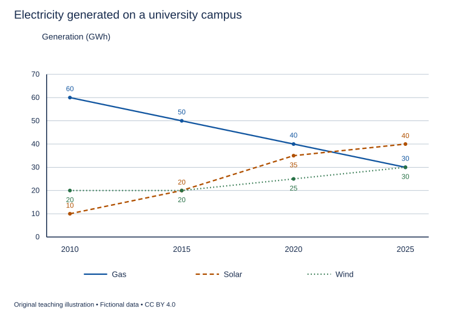
教学虚构。年份2010/2015/2020/2025；单位GWh。Gas60/50/40/30，Solar10/20/35/40，Wind20/20/25/30；仅这三来源发电量，不给消耗、成本、排放或中间年份实测值。
任务预算（含首次审题，不额外加时）
初稿20分钟（审题规划3、写作15、检查2）；诊断15；反馈阅读与证据核查10；完整重写25；对照归档5。合计75分钟。
初稿后自评清单
- [ ] 达到最低字数；全文连贯成段，没有用项目符号代替作文。
- [ ] 概述给主要特征；数据、阶段或方位都与题图逐项相符，不推断未提供的原因。
- [ ] 每段可写出一个功能标签；例子或数据与该段要点相连。
- [ ] 圈出两处词汇搭配和两处句法疑点，先自行修正再查询或求反馈。
- [ ] 记录一项最影响理解的问题和原句证据，不填写自猜分数。
反馈与重写
打开 独立参考页（本节下方展开参考），按逐段检查和通用协议核验。重写任务：完整重写至少150词；先用2分钟选两项主变化，在20分钟初稿记录实际结束点；重写把冗余逐点列数改为比较，不省关键概述。
本周重点操作（已含原预算）
本周D3将所选Task 1与Task 2连续做60分钟。本题20分钟含审题写作检查；在第20分钟标记完成位置，转Task 2，不暂停计时。用本题原有15分钟诊断中的3分钟记录计划/实际耗时及剩余内容，未完成如实标记。
W13 T1A 示例、反馈与重练（首答后展开）
WS-W13-T1A 独立参考页
只在初稿完成后阅读；不是唯一答案，也没有官方分数。以下是对原创示例的教学讲评，不是对学生尚未提交作文的已完成批改。
思路拆解
限时先选主变化：gas降、solar升并末年领先、wind较缓；单位是发电量，不是占比或消耗；概述与分组优先于罗列。
原创示例
The line graph compares electricity generated from gas, solar power and wind on a university campus in four selected years between 2010 and 2025. Generation is measured in gigawatt-hours.
Overall, gas was the largest source initially, but its output declined in every interval shown. Solar generation rose substantially and became the largest source in 2025, while wind power increased more gradually. Total generation increased slightly between the beginning and end of the period.
In 2010, gas produced 60 gigawatt-hours, compared with 10 from solar power and 20 from wind. Gas output then fell to 50 in 2015 and 40 in 2020, before reaching 30 in 2025. Solar generation followed the opposite pattern, rising to 20, 35 and finally 40 gigawatt-hours. It was still below gas in 2020 but exceeded it by ten gigawatt-hours in the final year.
Wind generation remained at 20 gigawatt-hours in both 2010 and 2015, then increased to 25 in 2020 and 30 in 2025. Wind and gas therefore produced equal amounts at the end. The combined output of all three sources was 90 gigawatt-hours in 2010 and 100 in 2025, alongside the considerable change in its composition.
示例正文词数：191（本项目正则计数；书信不含称呼、结束语与署名；连字符词作一词）。
逐段反馈与迁移
- P1 GWh为发电量，校园三来源而非全国或总用电需求。
- P2 末年solar40最大；首年合90、末年合100，不能写首尾相同或每个区间均上升。
- P3 gas60/50/40/30；solar10/20/35/40，2020仍未超过，不猜具体交叉年。
- P4 wind20/20/25/30，起初不变；末年wind=gas，三来源合计100；首年合计90。
常见失误
将来源输出当百分比；写太阳能始终最多；为赶时间取消概述或猜原因。
可执行反馈步骤
1. 先把自己的段落标为引入、概述/论点、支持、收束；分段可不同于示例，按功能核查，不照抄段数。
2. 对照上方逐段检查，逐项标“已有证据/缺失/不适用”。每条意见必须附自己的原句或缺失位置。
3. 按 反馈协议 的四维表记录；有争议的 AI 意见回题干、数据或语法依据核验。
4. 只选两项最高优先级问题执行整篇重写；保留原稿，禁止把示例替换为自己的作业。
重写任务
完整重写至少150词；先用2分钟选两项主变化，在20分钟初稿记录实际结束点；重写把冗余逐点列数改为比较，不省关键概述。
完成后重新勾选 学生页（见本节上方学生题） 清单；将一处改前/改后及理由交给独立评阅者核查。真人评阅状态目前为“待安排”，不是已完成。
WS-W13-T1G 学生页：取消杂志续订
周次 W13｜题型 T1G｜能力点：书信目的、要点与语气
Task 1 的 A/G 分支二选一，另一分支不计入本周作业。
使用与记录
原创教学练习，非真题、非标准化模拟，难度未校准。先完成本页再打开参考页。人物、机构、经历与数据均为教学虚构。不要背诵示例。自评和 AI 反馈不能代替独立真人评分，未获得真人评阅时标记“分数未确认”。
保存：任务ID、实际日期、用时、初稿或原始录音、证据化反馈、重写/重答、三条修改理由。没有学生提交物，不得填写“已批改”或“已完成训练”。
完整题干
You have decided not to renew a magazine subscription, but you have received a renewal notice. Write to the magazine’s customer service team. In your letter:
- give details of your subscription
- explain why you do not want to renew
- ask for confirmation of the cancellation and clarify what should happen to the remaining issues.
Begin your letter: Dear Sir or Madam,
Write at least 150 words. You do not need to write any addresses. Spend about 20 minutes on this task.
任务预算（含首次审题，不额外加时）
初稿20分钟（审题规划3、写作15、检查2）；诊断15；反馈阅读与证据核查10；完整重写25；对照归档5。合计75分钟。
初稿后自评清单
- [ ] 达到最低字数；全文连贯成段，没有用项目符号代替作文。
- [ ] 三个要点均展开；称呼、目的、语气和结束语适合收信人。
- [ ] 每段可写出一个功能标签；例子或数据与该段要点相连。
- [ ] 圈出两处词汇搭配和两处句法疑点，先自行修正再查询或求反馈。
- [ ] 记录一项最影响理解的问题和原句证据，不填写自猜分数。
反馈与重写
打开 独立参考页（本节下方展开参考），按逐段检查和通用协议核验。重写任务：完整重写至少150词；在首段明确取消对象，末段写两项确认要求，不能将请求写成已完成操作。
本周重点操作（已含原预算）
本周D3将所选Task 1与Task 2连续做60分钟。本题20分钟含审题写作检查；在第20分钟标记完成位置，转Task 2，不暂停计时。用本题原有15分钟诊断中的3分钟记录计划/实际耗时及剩余内容，未完成如实标记。
W13 T1G 示例、反馈与重练（首答后展开）
WS-W13-T1G 独立参考页
只在初稿完成后阅读；不是唯一答案，也没有官方分数。以下是对原创示例的教学讲评，不是对学生尚未提交作文的已完成批改。
思路拆解
正式请求，区分停止未来续订与取消当前剩余配送；先给定位信息再说目的；不编造收费已经发生。
原创示例
Dear Sir or Madam,
I am writing about my subscription to Garden Life, under reference GL318. My current subscription runs until the end of August, and I received a notice yesterday stating that it would renew automatically for another year. I would like to prevent that renewal while keeping the issues already included in my current subscription.
I have enjoyed the practical articles, but I am moving to a smaller flat next month and will no longer have a garden. I also have several unread copies, so renewing now would give me more material than I can reasonably use. My decision is therefore about my circumstances rather than a complaint about the magazine’s quality.
Could you please confirm in writing that no new subscription period will begin in September and that no renewal payment will be taken? I would still like the remaining issues from my current subscription to be delivered as usual. My delivery address will stay valid until August, so there is no need to change it. Please let me know if you require any further information to complete this request.
Yours faithfully, Alex Chen
示例正文词数：179（本项目正则计数；书信不含称呼、结束语与署名；连字符词作一词）。
逐段反馈与迁移
- P1 到期8月底，自动新周期9月，当前与未来范围清楚。
- P2 原因与订阅选择相关，不泛写服务差。
- P3 书面确认不续费并照送当前剩余期数，地址有效期一致。
常见失误
仅说cancel而不区分剩余期；未给订阅信息；假装客服已确认退款。
可执行反馈步骤
1. 先把自己的段落标为引入、概述/论点、支持、收束；分段可不同于示例，按功能核查，不照抄段数。
2. 对照上方逐段检查，逐项标“已有证据/缺失/不适用”。每条意见必须附自己的原句或缺失位置。
3. 按 反馈协议 的四维表记录；有争议的 AI 意见回题干、数据或语法依据核验。
4. 只选两项最高优先级问题执行整篇重写；保留原稿，禁止把示例替换为自己的作业。
重写任务
完整重写至少150词；在首段明确取消对象，末段写两项确认要求，不能将请求写成已完成操作。
完成后重新勾选 学生页（见本节上方学生题） 清单；将一处改前/改后及理由交给独立评阅者核查。真人评阅状态目前为“待安排”，不是已完成。
WS-W13-T2 学生页：大学是否优先投资节能
周次 W13｜题型 T2｜能力点：观点展开与任务回应
A/G 共用本题。
使用与记录
原创教学练习，非真题、非标准化模拟，难度未校准。先完成本页再打开参考页。人物、机构、经历与数据均为教学虚构。不要背诵示例。自评和 AI 反馈不能代替独立真人评分，未获得真人评阅时标记“分数未确认”。
保存：任务ID、实际日期、用时、初稿或原始录音、证据化反馈、重写/重答、三条修改理由。没有学生提交物，不得填写“已批改”或“已完成训练”。
完整题干
Universities should spend more money improving the energy efficiency of existing buildings than constructing impressive new buildings. To what extent do you agree or disagree? Give reasons and include relevant examples.
Write at least 250 words. Spend about 40 minutes on this task.
任务预算（含首次审题，不额外加时）
初稿40分钟（审题规划5、写作30、检查5）；诊断15；反馈阅读与证据核查10；完整重写35；对照归档5。合计105分钟。
初稿后自评清单
- [ ] 达到最低字数；全文连贯成段，没有用项目符号代替作文。
- [ ] 直接回答题目的所有问句，有始终一致的立场。
- [ ] 每段可写出一个功能标签；例子或数据与该段要点相连。
- [ ] 圈出两处词汇搭配和两处句法疑点，先自行修正再查询或求反馈。
- [ ] 记录一项最影响理解的问题和原句证据，不填写自猜分数。
反馈与重写
打开 独立参考页（本节下方展开参考），按逐段检查和通用协议核验。重写任务：完整重写至少250词；主体一处具体比较、一处合理例外；记录40分钟结束时完成情况，超时如实记，不靠删结论伪装完成。
本周重点操作（已含原预算）
接Task 1连续作答40分钟，整组计60分钟。第35分钟检查是否有结论、最后5分钟优先补任务遗漏并核关键语言；结束后用原有诊断中的3分钟记录实际完成位置。不是额外再做一套，不能用示例时间替代实测。
W13 T2 示例、反馈与重练（首答后展开）
WS-W13-T2 独立参考页
只在初稿完成后阅读；不是唯一答案，也没有官方分数。以下是对原创示例的教学讲评，不是对学生尚未提交作文的已完成批改。
思路拆解
优先级题不是禁止所有新建；比较日常收益、机会成本与教育需求例外；20/40时间预算内先定边界。
原创示例
Universities often face a choice between improving existing facilities and investing in prominent new buildings. I generally agree that energy efficiency should receive priority over impressive construction. However, this does not mean that every old building should be preserved regardless of whether it still meets educational needs.
Improving an existing building can benefit the people who use it every day. Better insulation and more effective controls may make rooms easier to heat or cool without wasting as much energy. A lecture room that is uncomfortable for much of the year needs practical attention even if its exterior looks attractive. Such improvements can also reduce ongoing operating demands, leaving more resources available for teaching and maintenance. The benefits are less visible than a new entrance hall, but they directly concern the quality and cost of using the campus.
There is also a question of priorities. Money spent mainly to create an impressive appearance cannot be spent on other needs at the same time. For example, improving several heavily used teaching buildings may serve more students than constructing a prestigious reception building used only occasionally. Universities should therefore compare projects according to their long-term usefulness rather than assume that new architecture will automatically improve education or reputation.
Nevertheless, a new building can sometimes be the more reasonable option. An existing laboratory may be too small or unsuitable for modern equipment, and repeated alterations may not solve that problem. In such a case, the university should compare renovation with replacement, including how efficiently the new facility would operate. The distinction is between necessary construction and construction driven mainly by appearance, not simply between old and new.
In conclusion, universities should normally address the practical performance of their existing buildings before funding impressive additions. Exceptions are justified when replacement meets a clear educational need that renovation cannot reasonably satisfy.
示例正文词数：305（本项目正则计数；书信不含称呼、结束语与署名；连字符词作一词）。
逐段反馈与迁移
- P1 generally agree与例外同时明确，避免立场绝对化。
- P2 舒适和能源需求具体，不给未经核实节能百分比。
- P3 同一经费下比较使用范围，而非仅说money important。
- P4 实验室例外挑战“旧必优”，但没有推翻反对纯外观项目的主张。
- P5 收束为教育需要与可行改造，不添加新理由。
常见失误
泛写保护环境无大学情境；把新建等同浪费；无比较只罗列节能优点。
可执行反馈步骤
1. 先把自己的段落标为引入、概述/论点、支持、收束；分段可不同于示例，按功能核查，不照抄段数。
2. 对照上方逐段检查，逐项标“已有证据/缺失/不适用”。每条意见必须附自己的原句或缺失位置。
3. 按 反馈协议 的四维表记录；有争议的 AI 意见回题干、数据或语法依据核验。
4. 只选两项最高优先级问题执行整篇重写；保留原稿，禁止把示例替换为自己的作业。
重写任务
完整重写至少250词；主体一处具体比较、一处合理例外；记录40分钟结束时完成情况，超时如实记，不靠删结论伪装完成。
完成后重新勾选 学生页（见本节上方学生题） 清单；将一处改前/改后及理由交给独立评阅者核查。真人评阅状态目前为“待安排”，不是已完成。
WS-W13-S1 学生页
周次W13｜Part 1专项｜能力点：时间分配与完整回应｜30分钟
使用与记录
原创教学练习，非真题、非标准化模拟，难度未校准。先完成本页再打开参考页。人物、机构、经历与数据均为教学虚构。不要背诵示例。自评和 AI 反馈不能代替独立真人评分，未获得真人评阅时标记“分数未确认”。
保存：任务ID、实际日期、用时、初稿或原始录音、证据化反馈、重写/重答、三条修改理由。没有学生提交物，不得填写“已批改”或“已完成训练”。
操作与预算
设备与审题3分钟；首答录音6；回听及局部转写7；示例和诊断5；不看稿重答6；归档3。共30分钟。
Part 1专项题
1. Do you prefer bright or softly lit rooms?
2. Where do you spend most time at home?
3. Do you notice the temperature in public buildings?
4. Would you like to change anything about your study space?
追问：
- What difference would that change make?
- Can you give a specific example?
录音回听清单
- [ ] 保留首答原音，记录实际时长、是否中断、是否看稿；只报真实完成状态。
- [ ] 流利与连贯：标出两处时间戳，区分构思停顿与重复搜词，检查是否偏离问句。
- [ ] 词汇：找一处模糊词或重复表达，先解释原意再替换；不为难词改变意思。
- [ ] 语法：核对经历与习惯的时态；局部转写并更正两处妨碍理解的问题。
- [ ] 发音：不看转写听30秒，标听不清的词尾、重音或断句；没有音频不能判断发音。
- [ ] 展开：主要回答有具体情境或理由；追问后第一句回应追问的新角度。
重答要求
选择两个只有笼统判断的答案，先直接回应再加具体情境；重答一条追问，检查是否真正回应其新角度。
首答回听后才打开独立参考页（本节下方展开参考）。按反馈协议填至少三个时间戳，不以文字转写替代音频评阅。
本周重点操作（已含原预算）
首答使用本页既定录音时段；在原有回听中的3分钟记录每次回答是否直接切题、哪里用太多时间交代背景。重答时删一处无关开场，保留题目要求；不增加录音任务次数。
W13 S1 示例、反馈与重练（首答后展开）
WS-W13-S1 独立参考页
原创教学示例，非真题或评分结果。未收到学生音频；以下是示例分析与待执行反馈，不能登记为已完成学生批改。
展开示例
直接回应→原因→具体情境的展开示例
I would like to move my desk nearer the window. At the moment, I use a lamp even in the afternoon because the desk is in a dark corner. Moving it might make the room more pleasant to work in, although I would need to check that sunlight did not reflect directly on my screen.
纯口答示例词数：55；只计MODEL标记内实际英文口答，不含标题、标签、说明。词数不能证明录音时长或流利度。
展开与反馈
本周能力：时间分配与完整回应。
1. 示例先表态，再说明偏好理由，最后提供条件或场景。检查自己是否用一个词回答后就结束。
2. 找到一个具体细节：物品、动作、对话或地点。用自己的经历替换，保持与题卡相关，不照搬示例身份与经历。
3. 追问要重新回应，不能继续背长答。首句先回答追问，再用一条理由支持。
4. 标出一处听不清或语法影响理解的原音时间戳；先尝试最小修正。不要把自然停顿一概当成错误，或用加快语速掩盖逻辑断裂。
常见失误
空泛形容词替代具体过程；给了经历却没解释为什么重要；Part 3只有个人故事没有一般解释；AI只看转写就判断发音。逐项回原音核对，不能凭范例推断自己已达到某个分数。
可执行重答与反馈
选择两个只有笼统判断的答案，先直接回应再加具体情境；重答一条追问，检查是否真正回应其新角度。
填写反馈协议四维表，附三个时间戳和原话证据。选一个内容问题与一个语言问题先修；重答后并排听两段，记录改善与仍未解决之处。自评与AI不能替代独立真人评分；独立评阅目前待安排，分数未确认。
WS-W13-S2 学生页
周次W13｜Part 2专项｜能力点：时间分配与完整回应｜30分钟
使用与记录
原创教学练习，非真题、非标准化模拟，难度未校准。先完成本页再打开参考页。人物、机构、经历与数据均为教学虚构。不要背诵示例。自评和 AI 反馈不能代替独立真人评分，未获得真人评阅时标记“分数未确认”。
保存：任务ID、实际日期、用时、初稿或原始录音、证据化反馈、重写/重答、三条修改理由。没有学生提交物，不得填写“已批改”或“已完成训练”。
操作与预算
准备、首答录音及追问5分钟；回听及局部转写8；示例与诊断5；关键词重组3；重答及追问5；归档4。共30分钟。
Part 2专项任务卡
Describe a building where you have spent a lot of time. Say what the building is, why you go there, which part you use most, and explain what works well or badly for you there.
准备1分钟，说1～2分钟。只记5个关键词，不预写句子。
收尾追问：
- Would you change one feature of the building?
- Do other people use it in the same way?
录音回听清单
- [ ] 保留首答原音，记录实际时长、是否中断、是否看稿；只报真实完成状态。
- [ ] 流利与连贯：标出两处时间戳，区分构思停顿与重复搜词，检查是否偏离问句。
- [ ] 词汇：找一处模糊词或重复表达，先解释原意再替换；不为难词改变意思。
- [ ] 语法：核对经历与习惯的时态；局部转写并更正两处妨碍理解的问题。
- [ ] 发音：不看转写听30秒，标听不清的词尾、重音或断句；没有音频不能判断发音。
- [ ] 展开：主要回答有具体情境或理由；追问后第一句回应追问的新角度。
重答要求
用五个关键词重答完整任务卡1～2分钟，再答两条追问；补一处具体行动或细节并删一处无关背景。比较首答与重答，不背示例。
首答回听后才打开独立参考页（本节下方展开参考）。按反馈协议填至少三个时间戳，不以文字转写替代音频评阅。
本周重点操作（已含原预算）
首答使用本页既定录音时段；在原有回听中的3分钟记录每次回答是否直接切题、哪里用太多时间交代背景。重答时删一处无关开场，保留题目要求；不增加录音任务次数。
W13 S2 示例、反馈与重练（首答后展开）
WS-W13-S2 独立参考页
原创教学示例，非真题或评分结果。未收到学生音频；以下是示例分析与待执行反馈，不能登记为已完成学生批改。
展开示例
原创长答示例（时长须以个人实际录音测量）
A building where I have spent a lot of time is a college study centre near my home. I used it regularly during a period when I was preparing for a professional course. My flat was noisy during the day, so the centre gave me somewhere more predictable to work.
I usually sat in a room on the first floor. It had long tables, several power sockets and large windows facing a courtyard. The light was pleasant, and I could leave my books open without feeling that I was taking up someone’s dining space.
The main problem was that the room became warm on sunny afternoons. People opened the windows, but noise from the courtyard sometimes made concentration difficult. I began arriving earlier and using the quieter morning hours for demanding work.
Overall, the building worked well for me because it supported a regular routine. If I could change one thing, I would improve the way the room stayed comfortable in warm weather, rather than add more decorative features to the entrance.
纯口答示例词数：172；只计MODEL标记内实际英文口答，不含标题、标签、说明。词数不能证明录音时长或流利度。
展开与反馈
本周能力：时间分配与完整回应。
1. 长答示例按背景、行动/观察、变化与意义组织。每段都推进内容；检查自己是否只有背景而没有具体事件。
2. 找到一个具体细节：物品、动作、对话或地点。用自己的经历替换，保持与题卡相关，不照搬示例身份与经历。
3. 追问要重新回应，不能继续背长答。首句先回答追问，再用一条理由支持。
4. 标出一处听不清或语法影响理解的原音时间戳；先尝试最小修正。不要把自然停顿一概当成错误，或用加快语速掩盖逻辑断裂。
常见失误
空泛形容词替代具体过程；给了经历却没解释为什么重要；Part 3只有个人故事没有一般解释；AI只看转写就判断发音。逐项回原音核对，不能凭范例推断自己已达到某个分数。
可执行重答与反馈
用五个关键词重答完整任务卡1～2分钟，再答两条追问；补一处具体行动或细节并删一处无关背景。比较首答与重答，不背示例。
填写反馈协议四维表，附三个时间戳和原话证据。选一个内容问题与一个语言问题先修；重答后并排听两段，记录改善与仍未解决之处。自评与AI不能替代独立真人评分；独立评阅目前待安排，分数未确认。
WS-W13-S3 学生页
周次W13｜三部分全流程｜能力点：时间分配与完整回应｜60分钟
使用与记录
原创教学练习，非真题、非标准化模拟，难度未校准。先完成本页再打开参考页。人物、机构、经历与数据均为教学虚构。不要背诵示例。自评和 AI 反馈不能代替独立真人评分，未获得真人评阅时标记“分数未确认”。
保存：任务ID、实际日期、用时、初稿或原始录音、证据化反馈、重写/重答、三条修改理由。没有学生提交物，不得填写“已批改”或“已完成训练”。
操作与预算
D5：设备与流程准备2分钟，连续首答11～14分钟，余14～17分钟完整回听标记，共30分钟。D6：局部转写诊断10，阅读示例与调整5，重答与新追问10，对照归档5，共30分钟。合计60分钟。
连续三部分全流程（首答不可看参考）
找同伴读题，或独练逐题揭示。完整首答11～14分钟，中途不暂停纠错。模拟同伴不是认证考官；自行读题的练习记录不能冒充真实面试。
Part 1：4～5分钟
1. Do you like arriving early for appointments?
2. How do you organise a busy morning?
3. What helps you concentrate?
4. Do you take regular breaks?
5. How do you decide which task to do first?
6. What happens when you run out of time?
可按回答追加 Why? / Can you give an example? 到时转下部分，不强行说完全部备用问题。
Part 2：3～4分钟（含准备）
Describe a task you completed within a limited time. Say what the task was, why there was a time limit, how you organised the work, and explain what you learned.
准备1分钟，连续说1～2分钟。收尾追问：
- Were you satisfied with the result?
- Would you divide the time differently next time?
Part 3：4～5分钟
1. Why do people underestimate how long tasks will take?
2. Is it better to finish quickly or aim for the best possible result?
3. How can organisations help people manage deadlines?
4. When should a deadline be changed?
根据回答追加追问：
- Would your answer differ for a safety-critical task?
- Can extra time sometimes make planning worse?
录音回听清单
- [ ] 保留首答原音，记录实际时长、是否中断、是否看稿；只报真实完成状态。
- [ ] 流利与连贯：标出两处时间戳，区分构思停顿与重复搜词，检查是否偏离问句。
- [ ] 词汇：找一处模糊词或重复表达，先解释原意再替换；不为难词改变意思。
- [ ] 语法：核对经历与习惯的时态；局部转写并更正两处妨碍理解的问题。
- [ ] 发音：不看转写听30秒，标听不清的词尾、重音或断句；没有音频不能判断发音。
- [ ] 展开：主要回答有具体情境或理由；追问后第一句回应追问的新角度。
重答要求
重答最弱的一个Part 1问题、完整Part 2及一个Part 3问题，再答一条未用追问。用不同细节或补一个例外，确认不是复述范例；局部重答不另计全流程。
首答回听后才打开独立参考页（本节下方展开参考）。按反馈协议填至少三个时间戳，不以文字转写替代音频评阅。
本周重点操作（已含原预算）
在原有首答中记录Part 1/2/3转段时间，保持11～14分钟连续流程；用回听中的3分钟定位哪部分超时或发展不足。结束时未覆盖的部分如实记，不重录首答伪装一次完成。
W13 S3 示例、反馈与重练（首答后展开）
WS-W13-S3 独立参考页
原创教学示例，非真题或评分结果。未收到学生音频；以下是示例分析与待执行反馈，不能登记为已完成学生批改。
展开示例
Part 2原创展开示例（个人语速不同，不能以词数推录音时长）
A task I completed within a limited time was preparing a short presentation for a team meeting. I had only one afternoon because another speaker had become unavailable. I knew the topic, but I had not prepared any slides.
I first wrote down the three points the audience actually needed. Then I divided the afternoon into planning, preparing examples and practising. I deliberately left the design simple because choosing colours could easily have used time without improving the explanation.
During practice, I discovered that the second example took too long. I removed a minor detail and used a simpler comparison. That left enough time to explain the conclusion rather than rush through it at the end.
I was reasonably satisfied with the presentation. It was not as polished as something prepared over a week, but the main ideas were clear. I learned that a time limit makes it especially important to distinguish essential content from improvements that are merely attractive. Next time, I would start the practice run slightly earlier.
Part 3观点→理由→条件展开示例
The right balance depends on the consequences of an error. A short internal update may not need perfect wording, so finishing on time can matter more than polishing every sentence. A task where mistakes could seriously harm people needs a different approach. In that case, changing the deadline or adding qualified support may be more responsible than simply working faster.
纯口答示例词数：230；只计MODEL标记内实际英文口答，不含标题、标签、说明。词数不能证明录音时长或流利度。
展开与反馈
本周能力：时间分配与完整回应。
1. 长答示例按背景、行动/观察、变化与意义组织。每段都推进内容；检查自己是否只有背景而没有具体事件。
2. 找到一个具体细节：物品、动作、对话或地点。用自己的经历替换，保持与题卡相关，不照搬示例身份与经历。
3. Part 3示例不把个人选择强加给所有人；先讲机制，再说明条件或例外。检查自己的追问答案是否直接回应新问题。
4. 标出一处听不清或语法影响理解的原音时间戳；先尝试最小修正。不要把自然停顿一概当成错误，或用加快语速掩盖逻辑断裂。
常见失误
空泛形容词替代具体过程；给了经历却没解释为什么重要；Part 3只有个人故事没有一般解释；AI只看转写就判断发音。逐项回原音核对，不能凭范例推断自己已达到某个分数。
可执行重答与反馈
重答最弱的一个Part 1问题、完整Part 2及一个Part 3问题，再答一条未用追问。用不同细节或补一个例外，确认不是复述范例；局部重答不另计全流程。
填写反馈协议四维表，附三个时间戳和原话证据。选一个内容问题与一个语言问题先修；重答后并排听两段，记录改善与仍未解决之处。自评与AI不能替代独立真人评分；独立评阅目前待安排，分数未确认。
许可
原创文字：RayXBuilds and contributors，CC BY 4.0。此页由已验收分课汇编，调整了标题和导航；题干、正文和答案内容保留。公开第三方音频未包含。
回到顶部
U22 第14周：长篇阅读、写作与口语
本页为已独立核验的原创文字课程。先完成学生题目，再展开对应参考。非真题、非标准化模考，不换算雅思分数。听力尚未补齐，本页不代表全科课程已完成。
每周选A或G类Task 1一题，加Task 2及三次口语。参考范文不是学生已完成作业，仍须提交初稿、录音和重写，独立真人评分另行安排。
阅读每周180分钟（60分钟首次限时、120分钟证据精读与延迟复测），写作180分钟、口语120分钟。词汇60分钟、听力180分钟另列；新增完整听力未验收，不能勾整周完成。
W16原创阶段检查按实际证据复盘；正式T16陌生整卷及真人评分另记，本页原创技能卷不能代替正式模拟。后续周数与达标规则见 U04。
阅读：首答不查词
R-W14-01 · Must Every Performance Leave a Recording?
W14｜正文 854 词｜13 题｜篇章：议论：保存、体验与授权范围（6段）
本课必做60分钟：首答20、证据复盘20、词汇长句10、48小时后复测10。每周三课180分钟，合卷首答替代单课首答，不重复计算。开放短文选做另加15分钟。
本项目原创虚构教学情境，人物、地点、历史事件和案例数据均非真实研究或史料。科学解释只讨论文内说明的模型与条件。非雅思真题或标准化模考；正确数不换算雅思等级。许可：CC BY 4.0 — RayXBuilds and contributors。
能力点：识别论证关系、区分作者与引述者、条件与因果、精确定位。初读不查词，完成后打开独立答案页。
Passage
A A fictional arts centre called Sile proposes recording every performance in its small theatre. Supporters argue that a recording allows people who could not attend to encounter the work and leaves something available after the final curtain. These are substantial benefits. Yet the proposal uses one word, recording, for several different projects: an internal rehearsal record, an edited public film and a long-term archive are not the same object or the same promise. The writer's concern is not to defend disappearance as an artistic virtue in every case. It is to ask which purpose a recording is meant to serve and whether its design fits that purpose. A camera placed in the auditorium can preserve visible action while changing the way the action is encountered, and the resulting file may remain technically available without remaining intelligible to someone who lacks the context of the performance.
B A rehearsal record can be useful even when it is visually plain. Performers may want to check timing, entrances or the relationship between movement and sound. A fixed view of the whole stage may serve that task better than close shots selected for dramatic effect. An audience film has different needs. Small gestures may disappear in a distant view, and a viewer at home cannot freely turn towards another part of the stage if the editor has chosen one face. Editing can make the work more accessible on screen, but it also directs attention. The writer rejects both the claim that editing necessarily betrays a performance and the claim that any attractive film transparently reproduces it. The film is a particular account of the event, made through choices that deserve to be recognised rather than hidden behind the assertion that everything was simply captured.
C The live audience is part of this difference. In Sile's theatre, a performer sometimes waits for laughter or adjusts a pause when the room is unusually quiet. A recording can include the resulting timing, but a later viewer does not participate in causing it in the same way. This does not make later viewing worthless or necessarily less enjoyable. It means that access to a record and participation in the original event are different opportunities. The writer would support either when its value is described honestly. The argument becomes misleading when the availability of a video is used to claim that no one has lost anything by being unable to enter the theatre, or when the distinctive experience of being present is used to dismiss everyone who encounters the work through another medium.
D Practical choices also influence who benefits from recording. Additional equipment requires space, labour and coordination. A camera position that provides an unobstructed image may block a seat or restrict an entrance used by performers. The arts centre therefore develops a camera plan for each production rather than assuming that the same location will always work. It also distinguishes agreement to be recorded for internal review from agreement to distribute a performance publicly. In this fictional administrative arrangement, participants can discuss each proposed use separately. The passage is not a statement about legal requirements in any jurisdiction. Its point is that consent to one purpose should not silently be treated as consent to every later purpose merely because the recording already exists and another use has become convenient.
E For the archive, the centre prepares a context sheet naming the production, describing the stage arrangement and noting significant changes during the run. A version label distinguishes a continuous rehearsal record from an edited film. The archive also keeps a cue list identifying major entrances and changes of scene, making it easier to find a passage without assuming that every user will watch from beginning to end. These additions do not recreate the evening, but they help a future viewer understand what the file represents. A perfectly preserved sequence of images can still be poorly described. Preservation therefore involves decisions about explanation as well as decisions about storage. The writer considers that work essential whenever the centre claims to be maintaining an archive rather than merely accumulating files that happen not to have been deleted.
F Sile eventually records some performances in more than one form and leaves others unrecorded when the agreed purpose cannot justify the required disruption. It publishes a short access note explaining which material is available and what kind of record it is. The writer sees this as a more defensible policy than either automatic recording or a universal prohibition. The presence of a camera is not by itself evidence that access has improved, and the absence of one is not by itself proof that the centre disregards future audiences. The useful questions concern what can be seen, what has been selected, whose participation made the record possible and how later viewers can understand its limits. A recording can extend the life of a performance without becoming the performance itself. Recognising that distinction allows preservation and live experience to be valued without requiring one to erase the claims of the other. The policy remains open to revision when a new production changes the balance between useful documentation and interference with the event.
Questions
Do the following statements agree with the writer's views? Write YES, NO or NOT GIVEN. YES = the writer agrees; NO = the writer expresses the opposite view; NOT GIVEN = the writer's view is not stated. Do not use outside knowledge.
1. Editing a performance necessarily betrays it.
2. Video access proves that inability to attend causes no loss of opportunity.
3. Internal review permission should automatically extend to all later public uses.
4. The writer believes Sile’s performers privately dislike all cameras.
Choose ONE answer, A, B, C or D.
5. The opening distinguishes recording projects mainly by
A. the number of seats alone B. the camera’s colour C. their intended purposes D. the age of the theatre
6. A fixed wide view may be especially useful for
A. checking rehearsal timing and entrances B. replacing storage information C. choosing dramatic close shots D. eliminating all editing decisions
7. Why does later viewing differ from live attendance?
A. Later viewers cannot enjoy art B. Every live audience reacts identically C. The recording contains no timing D. Later viewers do not shape the original pause in the same way
8. Sile’s final policy is
A. prohibiting every camera B. selecting formats according to purpose and disruption C. treating all recorded material identically D. recording every event automatically
Complete the sentences. Choose NO MORE THAN 3 WORDS FROM THE PASSAGE for each answer. Do not change word forms.
9. Equipment positions for each production are arranged in a ______.
10. Production background accompanies the archived file on a ______.
11. The type of recording is identified by a ______.
12. Major entrances and scene changes are located through a ______.
13. The centre explains availability through a short ______.
本周重点
问题回应与限制词：先明确题目问什么，再标出only、some、unless、not necessarily等范围与条件。
复盘
必做：给每道错题标记“定位/作者立场/范围/语法/词数”，抄最短证据；用一行箭头概括本文论证或过程。48小时后重做错题与两道正确题，检查是否仍能指出证据。
选做（15分钟，80–100词）：Choose a recording format for one purpose and identify what it cannot replace.
R-W14-01 答案、证据与精读（首答后展开）
R-W14-01 · 独立答案与证据
来源与许可同学生页。先完成再核对。可接受答案由 accepted_answers 明确列出；只忽略大小写和首尾空格，不自行删词。开放复盘不计入客观正确数。
1. NO｜段落 B｜证据：“rejects both the claim that editing necessarily betrays”
明确否定。
2. NO｜段落 C｜证据：“used to claim that no one has lost anything”
作者反对等同。
3. NO｜段落 D｜证据：“should not silently be treated as consent to every later purpose”
目的范围不可偷换。
4. NOT GIVEN｜段落 D｜证据：“participants can discuss each proposed use separately”
只说可讨论用途，未述私人偏好；没有反向偏好证据。
5. C｜段落 A｜证据：“not the same object or the same promise”
同一术语不代表同一用途。
6. A｜段落 B｜证据：“check timing, entrances”
排练任务与观众电影不同。
7. D｜段落 C｜证据：“does not participate in causing it in the same way”
区别参与机制，不贬低价值。
8. B｜段落 F｜证据：“when the agreed purpose cannot justify”
有条件决定。
9. camera plan / plan｜段落 D｜证据：“a camera plan”
plan可接受；camera单独不是规划载体。
10. context sheet / sheet｜段落 E｜证据：“a context sheet”
sheet可接受。
11. version label / label｜段落 E｜证据：“A version label distinguishes”
label为合理短答。
12. cue list / list｜段落 E｜证据：“a cue list”
list可接受；context sheet描述背景非定位提示。
13. access note / note｜段落 F｜证据：“a short access note”
short已在题干，接受access note或note，不重复short。
词汇与长句
- auditorium：观众席空间
- cue：提示演出行动或变化的信号
- distribution：对外传播
- continuous：未被剪辑中断的连续记录
> Editing can make the work more accessible on screen, but it also directs attention.
but并列收益与选择作用，非全盘否定剪辑。
> A perfectly preserved sequence of images can still be poorly described.
perfectly preserved修饰技术状态，poorly described说明语境可能缺失。
开放任务参考
B排练远景或观众剪辑，C不能复刻共同生成的现场参与，E需标明记录类型。
标准：观点有文内依据，保留条件和范围，推断明确标注；不存在唯一措辞。
R-W14-02 · An Island with Three Calendars
W14｜正文 1034 词｜13 题｜篇章：虚构历史：不同时间制度的协调（9段）
本课必做60分钟：首答20、证据复盘20、词汇长句10、48小时后复测10。每周三课180分钟，合卷首答替代单课首答，不重复计算。开放短文选做另加15分钟。
本项目原创虚构教学情境，人物、地点、历史事件和案例数据均非真实研究或史料。科学解释只讨论文内说明的模型与条件。非雅思真题或标准化模考；正确数不换算雅思等级。许可：CC BY 4.0 — RayXBuilds and contributors。
能力点：识别论证关系、区分作者与引述者、条件与因果、精确定位。初读不查词，完成后打开独立答案页。
Passage
A On the imaginary island of Ero, an old harbour office displays three calendars. One organises shipping visits by numbered dates, another records the sequence of agricultural tasks, and a third lists community gatherings whose timing has traditionally been negotiated among households. A visitor assumes that the island has not yet settled on a modern system. The islanders see a different problem: each calendar answers a different question. A ship needs an appointment that can be communicated to people far away. A grower needs to know whether conditions are suitable for a task. A gathering needs the people required to prepare it. The coexistence of three systems is therefore not evidence that residents cannot tell the date.
B The shipping calendar arrived with a regular mainland service. Before it, boats often appeared when weather and cargo made a visit worthwhile. The new operator announced intended arrivals several weeks ahead, allowing shops to order supplies and travellers to plan connections. The dates were useful even though storms could still cause delays. A schedule stated an intention and a basis for coordination, not a guarantee that wind and water would follow it. The harbour clerk kept an arrival book with both expected and actual dates. This allowed residents to distinguish a late voyage from a change in the published plan rather than allowing every disruption to disappear into a vague memory of an unreliable service.
C The farming calendar had a different form. Instead of assigning every task a fixed date, it linked actions to conditions noticed in the fields. A particular stage of growth might indicate that one task should begin; the condition of the ground could delay another. These signs were interpreted through experience and discussion. They were not automatically precise or immune to disagreement. Nevertheless, replacing them with fixed dates would not necessarily improve the timing of work. A calendar can be dependable because it responds to a relevant condition, rather than because it always places an action in the same numbered box. The useful comparison concerns whether it supports the activity, not whether it resembles the calendar already familiar to an observer.
D Community gatherings introduced a third pattern. The preparation of a large meal required several households to contribute equipment and labour. In some years, the event moved because a family was away or because an urgent repair occupied the people needed to organise it. Outsiders sometimes interpreted these changes as lack of commitment. Residents often understood them as an effort to preserve participation. That interpretation does not make every postponement wise. Repeated changes can burden people who arrange travel or set aside time. The writer argues that flexibility should be assessed through the responsibilities it serves and the burdens it creates, rather than praised or criticised simply because the date is not fixed far in advance.
E The three calendars began to conflict when island produce was sold through the mainland service. A harvest organised around field conditions had to connect with a vessel organised around an announced departure. The grower could not solve the problem by declaring either calendar more authentic. Goods might be ready after one departure but deteriorate before the next, while shipping plans could not be altered independently for every producer. The harbour office therefore introduced a readiness board on which growers indicated likely availability within a range of days. The board did not turn uncertain growth into a precise appointment. It made that uncertainty visible early enough for people to discuss storage, packing and which voyage might offer the most workable connection.
F A later visitor proposed combining everything into one large wall chart. Residents accepted the chart as a shared display but resisted using the same symbol for every kind of entry. They distinguished a confirmed appointment, an estimated window and a decision still awaiting agreement. The legend explained those categories beside the chart. Without this distinction, a person seeing a date might assume a level of commitment that nobody had actually made. Putting information in one place can help coordination, but common presentation should not erase differences in meaning. The writer supports the combined display precisely because it preserves those differences rather than treating visual tidiness as a reason to make all entries look equally definite.
G Records of changes also became important. A revision note beside the chart explained which entry had moved and whether the reason was weather, readiness or household availability. It did not name people in order to assign blame. The aim was to help anyone affected decide what else needed to change. An altered departure could require new packing arrangements; a postponed gathering might release equipment for another use. The note therefore connected the calendars through consequences rather than merely announcing that yesterday's information was now wrong. It gave users a way to reconstruct the current plan without needing to ask every person who had participated in the conversation that produced it.
H The harbour office eventually added a coordination meeting before the busiest part of the season. Growers, boat operators and event organisers compared likely demands, identifying periods when the same people or equipment would be needed in several places. The meeting could not remove every conflict or forecast every storm. It could reveal collisions that would otherwise be discovered only when there was little time to respond. A shared future was produced through this discussion without requiring the activities to become identical. The shipping service still used appointments, field work still responded to conditions, and gatherings still depended on participation, but each could now take some account of the constraints facing the others.
I Ero's three calendars offer a useful correction to the idea that standardisation always means reducing several systems to one. Sometimes coordination improves when different kinds of information remain distinct but can be related clearly. A fixed date, a readiness estimate and a negotiated event can all be meaningful without being interchangeable. The writer does not recommend multiplying calendars wherever a single system already works. The argument is narrower: before replacing a practice in the name of order, identify the problem it helps people manage. Apparent inconsistency may reflect the fact that different activities face different uncertainties, and a successful shared display may need to communicate those differences rather than conceal them.
Questions
Complete the summary. Choose NO MORE THAN 3 WORDS FROM THE PASSAGE for each answer. Do not change word forms.
Expected and actual voyages were compared in the (1) ______. Growers posted likely availability on a (2) ______. A (3) ______ explained the three kinds of chart entry. Changes and their reasons appeared in a (4) ______. Resource conflicts were discussed at a (5) ______ before the busy season.
Do the following statements agree with the writer's views? Write YES, NO or NOT GIVEN. YES = the writer agrees; NO = the writer expresses the opposite view; NOT GIVEN = the writer's view is not stated. Do not use outside knowledge.
6. The use of several calendars proves that islanders cannot tell the date.
7. A schedule is necessarily a guarantee that the physical world will follow it.
8. Flexible event timing should be judged by both the duties it supports and the burdens it creates.
9. The writer thinks residents secretly dislike the mainland operator.
Which paragraph contains the following information? Write a letter, A–I. You may use any letter more than once.
10. a record containing both planned and actual shipping dates
11. tasks triggered by field conditions instead of fixed numbered dates
12. a proposal to distinguish three commitment levels on one display
13. a pre-season discussion about competing demands for the same resources
本周重点
问题回应与限制词：先明确题目问什么，再标出only、some、unless、not necessarily等范围与条件。
复盘
必做：给每道错题标记“定位/作者立场/范围/语法/词数”，抄最短证据；用一行箭头概括本文论证或过程。48小时后重做错题与两道正确题，检查是否仍能指出证据。
选做（15分钟，80–100词）：Explain why one shared chart may still need different symbols for time commitments.
R-W14-02 答案、证据与精读（首答后展开）
R-W14-02 · 独立答案与证据
来源与许可同学生页。先完成再核对。可接受答案由 accepted_answers 明确列出；只忽略大小写和首尾空格，不自行删词。开放复盘不计入客观正确数。
1. arrival book / book｜段落 B｜证据：“an arrival book”
题干使用 the，arrival book 与 book 均可；该簿同时记预计与实际日期，区别于只说明变更原因的 revision note。
2. readiness board / board｜段落 E｜证据：“a readiness board”
board可接受，日期范围非固定承诺。
3. legend｜段落 F｜证据：“The legend explained those categories”
类别图例，不是日期本身。
4. revision note / note｜段落 G｜证据：“A revision note”
说明改动与原因。
5. coordination meeting / meeting｜段落 H｜证据：“a coordination meeting”
meeting可接受，繁忙季前会议。
6. NO｜段落 A｜证据：“not evidence that residents cannot tell the date”
明确否定。
7. NO｜段落 B｜证据：“not a guarantee”
承诺协调基准不等于自然保证。
8. YES｜段落 D｜证据：“responsibilities it serves and the burdens it creates”
作者明确双向条件。
9. NOT GIVEN｜段落 B｜证据：“The dates were useful”
服务安排可见，私人情绪未述；不能由延期推恶感。
10. B｜段落 B｜证据：“both expected and actual dates”
B到港簿的双日期；G变更说明不记录实际到港。
11. C｜段落 C｜证据：“linked actions to conditions noticed in the fields”
C农业时间逻辑。
12. F｜段落 F｜证据：“a confirmed appointment, an estimated window and a decision still awaiting agreement”
F完整三分类，其他段不列这组三类。
13. H｜段落 H｜证据：“same people or equipment”
H协调会议。
词汇与长句
- readiness：就绪程度
- negotiated：经参与者商定的
- commitment：明确承诺的程度
- interchangeable：可互相替代而不改变意义的
> A calendar can be dependable because it responds to a relevant condition, rather than because it always places an action in the same numbered box.
两个because比较可靠性的不同来源；不必等于固定日期。
> Putting information in one place can help coordination, but common presentation should not erase differences in meaning.
but限制统一展示的边界。
开放任务参考
F区分确定、估计、待定；E生长与航班的不确定性不同，不能用同一视觉符号制造同等承诺。
标准：观点有文内依据，保留条件和范围，推断明确标注；不存在唯一措辞。
R-W14-03 · A Promise of Quiet
W14｜正文 891 词｜14 题｜篇章：议论：共同目标下的多种需求与例外（7段）
本课必做60分钟：首答20、证据复盘20、词汇长句10、48小时后复测10。每周三课180分钟，合卷首答替代单课首答，不重复计算。开放短文选做另加15分钟。
本项目原创虚构教学情境，人物、地点、历史事件和案例数据均非真实研究或史料。科学解释只讨论文内说明的模型与条件。非雅思真题或标准化模考；正确数不换算雅思等级。许可：CC BY 4.0 — RayXBuilds and contributors。
能力点：识别论证关系、区分作者与引述者、条件与因果、精确定位。初读不查词，完成后打开独立答案页。
Passage
A The fictional residential court of Lune announces a plan to become a quiet place. Residents agree quickly, then discover that they have promised different things. One wants uninterrupted sleep, another wants to hear birds from a balcony, and a third wants fewer unpredictable bursts of sound while working at home. These aims overlap, but they are not identical. A steady low sound can trouble one activity while a brief, much louder sound disrupts another. The writer argues that a useful quiet policy must identify the experiences it intends to protect. Merely choosing an appealing adjective allows agreement to remain effortless until somebody asks which everyday activity must change and whose inconvenience should count when that activity produces a sound.
B The court first considers a single rule based on maximum loudness. Such a rule would be simple to explain, but it would overlook timing, duration and meaning. A short warning signal and a prolonged rehearsal might reach a similar maximum while performing very different roles. Conversely, a repeated sound below the proposed limit could still interrupt concentration. This does not show that measurements are useless. It shows that a number describing one feature cannot automatically represent the whole experience. The writer supports using measurements where they answer a defined question, while rejecting the idea that a single threshold can eliminate every judgement about living together. Choosing the threshold itself would already involve a decision about which forms of disturbance the community considered most important to prevent.
C A resident who repairs furniture proposes protected working periods in the afternoon. Predictability, she argues, would help neighbours arrange their own activities, and it would allow her to concentrate noisy tasks rather than spreading them throughout the week. Another resident works night shifts and sleeps during that period. Neither person's routine can simply be treated as the normal one against which all others must justify themselves. The court therefore asks participants to describe the activities they need to protect before debating specific hours. This changes the discussion from competing declarations of annoyance to a comparison of constraints. It does not make every request compatible, but it reveals conflicts that a quick majority vote about preferred times might leave unexplained or permanently assign to a smaller group.
D The physical route of sound complicates responsibility. In the court's simplified demonstration, sound from a small speaker reaches one room directly through an open doorway and another through a connecting corridor. Closing one opening changes what is heard without changing the original source. Residents are reminded that perceived disturbance cannot always identify which person is responsible or which intervention would help. A complaint can be entirely sincere while its explanation of the route is mistaken. The writer cautions against treating a report of annoyance as either a complete technical diagnosis or a statement that must be dismissed until the reporter supplies one. A useful process can take the experience seriously and still investigate how the sound reaches the affected place before assigning a remedy or blame.
E The eventual proposal separates routine activity from unusual events. Regular repairs receive agreed periods and a way to request changes when a neighbour faces an exceptional need. A small celebration can be announced in advance with an expected ending. The court does not promise that advance notice makes every disturbance acceptable. Notice gives others information; permission and practical accommodation remain separate questions. This distinction prevents a familiar mistake in which someone treats announcing an activity as equivalent to receiving agreement for it. Residents also retain a route for reporting an event that differs substantially from what was described. A rule about predictable exceptions is only useful if people can recognise the exception, understand its limits and raise a concern when those limits are not respected.
F To evaluate the policy, the court records examples of interrupted activities rather than only counts of complaints. A decline in complaints might mean improvement, but it might also mean that residents have stopped expecting a response. The records therefore include what action followed a report and whether the affected person considered the issue resolved. These accounts do not establish one objective scale on which every experience can be ranked. They can reveal recurring patterns, such as interruptions concentrated at a particular time or difficulties associated with one sound path. The writer favours this specific learning over a public competition to identify the most sensitive resident or the noisiest household. Personal rankings would encourage defensive arguments while giving little guidance about which arrangement should be changed to protect a stated activity.
G Lune's final promise is narrower than the original slogan. It commits to protecting named activities, making routine sound more predictable, investigating disputed pathways and explaining the conditions of exceptions. Some conflict remains, and some residents would choose different priorities. The writer does not present compromise as proof that every outcome is equally fair. Decisions still need reasons, and burdens that repeatedly fall on the same people deserve scrutiny. But a limited promise that can be examined is more useful than an absolute promise that everyone interprets differently. Quiet, in this account, is not merely a measurable absence. It is a relationship between sound, place, timing and what people are trying to do. A policy improves when it can describe and revise that relationship rather than relying on the hope that an agreeable word has already settled the difficult questions.
Questions
Which paragraph contains the following information? Write a letter, A–G. You may use any letter more than once.
1. a contrast between a warning signal and a rehearsal with similar peak loudness
2. a conflict involving daytime sleep after night work
3. a physical change that alters reception while leaving the sound source unchanged
4. a proposed record of actions taken after a complaint and whether the issue was resolved
5. the distinction between announcing an activity and obtaining agreement for it
Choose ONE answer, A, B, C or D.
6. The initial agreement is unstable because
A. all sound is unmeasurable B. residents assign different meanings to quiet C. everyone dislikes birds D. nobody has daily routines
7. A maximum-loudness rule omits
A. the ability to explain rules B. every form of loudness C. timing, duration and the role of sound D. whether numbers exist
8. Why describe protected activities before choosing hours?
A. To remove minority concerns B. To reveal different constraints before voting C. To guarantee all requests can be satisfied D. To establish one normal routine
9. The sound-path demonstration shows that
A. annoyance is always imaginary B. a genuine experience may have an incorrect causal explanation C. the loudest household is always responsible D. complainants must be engineers
Do the following statements agree with the writer's views? Write YES, NO or NOT GIVEN. YES = the writer agrees; NO = the writer expresses the opposite view; NOT GIVEN = the writer's view is not stated. Do not use outside knowledge.
10. Advance notice automatically grants permission for a disturbance.
11. Fewer complaints necessarily mean the policy has improved conditions.
12. A limited and inspectable promise can be more useful than an ambiguous absolute one.
13. The writer thinks the furniture repairer knowingly disturbs her neighbours for enjoyment.
14. Repeatedly imposing burdens on the same people deserves examination.
本周重点
问题回应与限制词：先明确题目问什么，再标出only、some、unless、not necessarily等范围与条件。
复盘
必做：给每道错题标记“定位/作者立场/范围/语法/词数”，抄最短证据；用一行箭头概括本文论证或过程。48小时后重做错题与两道正确题，检查是否仍能指出证据。
选做（15分钟，80–100词）：Draft a quiet-policy promise that specifies an activity and a clear exception boundary.
R-W14-03 答案、证据与精读（首答后展开）
R-W14-03 · 独立答案与证据
来源与许可同学生页。先完成再核对。可接受答案由 accepted_answers 明确列出；只忽略大小写和首尾空格，不自行删词。开放复盘不计入客观正确数。
1. B｜段落 B｜证据：“A short warning signal and a prolonged rehearsal”
B具体声音类别比较。
2. C｜段落 C｜证据：“works night shifts”
C生活时序例外。
3. D｜段落 D｜证据：“without changing the original source”
D关闭开口示范。
4. F｜段落 F｜证据：“what action followed a report”
F效果追踪而非单纯计数。
5. E｜段落 E｜证据：“equivalent to receiving agreement”
E通知与同意概念。
6. B｜段落 A｜证据：“they have promised different things”
共同词汇不保证共同目标。
7. C｜段落 B｜证据：“timing, duration and meaning”
不是说最大值本身无意义。
8. B｜段落 C｜证据：“a comparison of constraints”
看清冲突而非预设标准。
9. B｜段落 D｜证据：“entirely sincere while its explanation of the route is mistaken”
区分体验与诊断。
10. NO｜段落 E｜证据：“permission and practical accommodation remain separate”
明确区分。
11. NO｜段落 F｜证据：“might also mean that residents have stopped expecting a response”
存在不同解释。
12. YES｜段落 G｜证据：“more useful than an absolute promise”
作者结论。
13. NOT GIVEN｜段落 C｜证据：“proposes protected working periods”
未述知情恶意或享乐动机；工作提案不说明私人意图。
14. YES｜段落 G｜证据：“deserve scrutiny”
作者明确要求。
词汇与长句
- threshold：预设判断界限
- accommodation：为不同需要作出的实际调整
- pathway：声音或影响传播的路径
- scrutiny：细致审查
> A complaint can be entirely sincere while its explanation of the route is mistaken.
while允许体验真实与原因判断错误同时成立。
> Notice gives others information; permission and practical accommodation remain separate questions.
分号并列区分告知、许可、实际调整，不可互相替代。
开放任务参考
应说保护何活动/何时，E通知不自动获准，G能核验且可改；不要承诺绝对无声。
标准：观点有文内依据，保留条件和范围，推断明确标注；不存在唯一措辞。
写作与口语：Task 1双分支择一
WS-W14-T1A 学生页：培训中心平面改造
周次 W14｜题型 T1A｜能力点：空间变化与准确任务回应
Task 1 的 A/G 分支二选一，另一分支不计入本周作业。
使用与记录
原创教学练习，非真题、非标准化模拟，难度未校准。先完成本页再打开参考页。人物、机构、经历与数据均为教学虚构。不要背诵示例。自评和 AI 反馈不能代替独立真人评分，未获得真人评阅时标记“分数未确认”。
保存：任务ID、实际日期、用时、初稿或原始录音、证据化反馈、重写/重答、三条修改理由。没有学生提交物，不得填写“已批改”或“已完成训练”。
完整题干
The plans show the ground floor of a training centre in 2000 and after changes in 2025. Summarise the information by selecting and reporting the main features, and make comparisons where relevant.
Write at least 150 words. Spend about 20 minutes on this task.
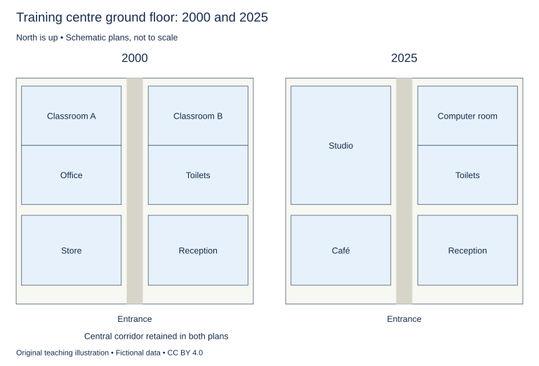
教学虚构示意图，北向上，非比例尺实测。南中央入口与中央南北走廊两年不变。2000西侧自北向南：Classroom A、Office、Store；东侧：Classroom B、Toilets、Reception。2025西侧前两房拆中间隔墙合为Studio，Store原界内改Café；东侧Classroom B原界内改Computer room，Toilets/Reception不变；外围轮廓不变。
任务预算（含首次审题，不额外加时）
初稿20分钟（审题规划3、写作15、检查2）；诊断15；反馈阅读与证据核查10；完整重写25；对照归档5。合计75分钟。
初稿后自评清单
- [ ] 达到最低字数；全文连贯成段，没有用项目符号代替作文。
- [ ] 概述给主要特征；数据、阶段或方位都与题图逐项相符，不推断未提供的原因。
- [ ] 每段可写出一个功能标签；例子或数据与该段要点相连。
- [ ] 圈出两处词汇搭配和两处句法疑点，先自行修正再查询或求反馈。
- [ ] 记录一项最影响理解的问题和原句证据，不填写自猜分数。
反馈与重写
打开 独立参考页（本节下方展开参考），按逐段检查和通用协议核验。重写任务：完整重写至少150词；删掉任何不能在图上指出位置的评价，把至少一处空泛变化替换为具体房间、方位与动作。
本周重点操作（已含原预算）
用原有诊断中的3分钟给初稿每句找图示位置；圈出无图示支持的评价，删去或改成准确的房间/方位/变化。没有这种问题则记录一处证据完整的句子，不强造错误。
W14 T1A 示例、反馈与重练（首答后展开）
WS-W14-T1A 独立参考页
只在初稿完成后阅读；不是唯一答案，也没有官方分数。以下是对原创示例的教学讲评，不是对学生尚未提交作文的已完成批改。
思路拆解
只报告图示变化；概述用途变化与隔墙删除；西侧合并/改用，东侧改用/保留；不推教学质量。
原创示例
The plans compare the ground-floor layout of a training centre in 2000 and 2025. Both show an entrance in the middle of the southern wall and a central corridor extending northwards through the building.
Overall, the centre acquired more specialised teaching and visitor facilities. Two rooms on the western side were combined to form a larger studio, while the northeastern classroom became a computer room. The reception area and the central corridor remained in their original positions.
In 2000, the western side contained a classroom in the north and a separate office immediately to its south. By 2025, the wall between them had been removed and the whole area had become a single studio. Further south, the former storeroom was converted into a café, with no change shown to the room’s outer boundaries.
On the eastern side, the northern classroom was replaced by a computer room occupying the same space. The toilets below it stayed where they were, as did reception in the southeastern corner beside the entrance. Thus, most of the changes involved altering the use of existing rooms, although combining the two western rooms also changed the internal division of the building.
示例正文词数：194（本项目正则计数；书信不含称呼、结束语与署名；连字符词作一词）。
逐段反馈与迁移
- P1 ground floor与入口方向准确，不能写全楼扩建。
- P2 更专用设施指电脑室/工作室；保留项有位置依据。
- P3 两房合并说明隔墙去掉，储藏室外边界不变，仅变咖啡馆。
- P4 东北教室变电脑室、厕所/接待不变；不将用途改变写成面积扩大。
常见失误
写modern and convenient而无空间信息；想当然补楼梯或停车场；漏两个西房合并。
可执行反馈步骤
1. 先把自己的段落标为引入、概述/论点、支持、收束；分段可不同于示例，按功能核查，不照抄段数。
2. 对照上方逐段检查，逐项标“已有证据/缺失/不适用”。每条意见必须附自己的原句或缺失位置。
3. 按 反馈协议 的四维表记录；有争议的 AI 意见回题干、数据或语法依据核验。
4. 只选两项最高优先级问题执行整篇重写；保留原稿，禁止把示例替换为自己的作业。
重写任务
完整重写至少150词；删掉任何不能在图上指出位置的评价，把至少一处空泛变化替换为具体房间、方位与动作。
完成后重新勾选 学生页（见本节上方学生题） 清单；将一处改前/改后及理由交给独立评阅者核查。真人评阅状态目前为“待安排”，不是已完成。
WS-W14-T1G 学生页：邀请表亲短住
周次 W14｜题型 T1G｜能力点：书信目的、要点与语气
Task 1 的 A/G 分支二选一，另一分支不计入本周作业。
使用与记录
原创教学练习，非真题、非标准化模拟，难度未校准。先完成本页再打开参考页。人物、机构、经历与数据均为教学虚构。不要背诵示例。自评和 AI 反馈不能代替独立真人评分，未获得真人评阅时标记“分数未确认”。
保存：任务ID、实际日期、用时、初稿或原始录音、证据化反馈、重写/重答、三条修改理由。没有学生提交物，不得填写“已批改”或“已完成训练”。
完整题干
Your cousin is coming to your town for a short course. Write a letter inviting your cousin to stay with you. In your letter:
- explain what accommodation you can offer
- describe how your cousin can travel to the course venue
- suggest something you could do together outside class time.
Begin your letter: Dear Robin,
Write at least 150 words. You do not need to write any addresses. Spend about 20 minutes on this task.
任务预算（含首次审题，不额外加时）
初稿20分钟（审题规划3、写作15、检查2）；诊断15；反馈阅读与证据核查10；完整重写25；对照归档5。合计75分钟。
初稿后自评清单
- [ ] 达到最低字数；全文连贯成段，没有用项目符号代替作文。
- [ ] 三个要点均展开；称呼、目的、语气和结束语适合收信人。
- [ ] 每段可写出一个功能标签；例子或数据与该段要点相连。
- [ ] 圈出两处词汇搭配和两处句法疑点，先自行修正再查询或求反馈。
- [ ] 记录一项最影响理解的问题和原句证据，不填写自猜分数。
反馈与重写
打开 独立参考页（本节下方展开参考），按逐段检查和通用协议核验。重写任务：完整重写至少150词；给每句标住宿/交通/活动/必要衔接，删掉不能服务三要点的空泛城市赞美。
本周重点操作（已含原预算）
用原有诊断中的3分钟将句子标为住宿、交通、课外活动或必要衔接；圈一处不服务任何要点的空话并删改。若无空话，记录一处具体支持和一处仍可更清楚的表达。
W14 T1G 示例、反馈与重练（首答后展开）
WS-W14-T1G 独立参考页
只在初稿完成后阅读；不是唯一答案，也没有官方分数。以下是对原创示例的教学讲评，不是对学生尚未提交作文的已完成批改。
思路拆解
私人邀请三要点均服务来上课的表亲；住宿可用信息、具体交通、课外活动兼顾对方情况。
原创示例
Dear Robin,
It was great to hear that your course will be held here next month. Why not stay with me while you are in town? My flat has a small spare room with a single bed and a desk. It is not especially large, but you would have somewhere quiet to study, and you would be welcome to use the kitchen whenever you need it.
The training centre you mentioned is easy to reach from my building. You can take the number eight bus from the stop opposite the bakery. It runs directly to the centre, and the journey usually takes about twenty minutes. I can walk with you to the stop on your first morning so that you know where to catch it.
If your classes finish early on Friday, we could visit the food market by the river. It has several stalls selling dishes from different parts of the country, and I remember that you enjoy trying unfamiliar food. We could also have a quiet evening at home if you feel tired after the course. Let me know your dates, and I will get the room ready.
Love, Alex
示例正文词数：188（本项目正则计数；书信不含称呼、结束语与署名；连字符词作一词）。
逐段反馈与迁移
- P1 空间、床桌厨房具体，不能只写comfortable；邀请非代做订房。
- P2 8路、上车点、直达与约20分钟连贯；虚构路线不冒真实旅游信息。
- P3 活动关联朋友兴趣并留疲倦备选，最后索要日期可执行。
常见失误
大篇介绍城市历史漏住宿；只有come anytime而无交通；课程安排未知却替对方安排所有晚上。
可执行反馈步骤
1. 先把自己的段落标为引入、概述/论点、支持、收束；分段可不同于示例，按功能核查，不照抄段数。
2. 对照上方逐段检查，逐项标“已有证据/缺失/不适用”。每条意见必须附自己的原句或缺失位置。
3. 按 反馈协议 的四维表记录；有争议的 AI 意见回题干、数据或语法依据核验。
4. 只选两项最高优先级问题执行整篇重写；保留原稿，禁止把示例替换为自己的作业。
重写任务
完整重写至少150词；给每句标住宿/交通/活动/必要衔接，删掉不能服务三要点的空泛城市赞美。
完成后重新勾选 学生页（见本节上方学生题） 清单；将一处改前/改后及理由交给独立评阅者核查。真人评阅状态目前为“待安排”，不是已完成。
WS-W14-T2 学生页：校园住宿与城镇租房
周次 W14｜题型 T2｜能力点：观点展开与任务回应
A/G 共用本题。
使用与记录
原创教学练习，非真题、非标准化模拟，难度未校准。先完成本页再打开参考页。人物、机构、经历与数据均为教学虚构。不要背诵示例。自评和 AI 反馈不能代替独立真人评分，未获得真人评阅时标记“分数未确认”。
保存：任务ID、实际日期、用时、初稿或原始录音、证据化反馈、重写/重答、三条修改理由。没有学生提交物，不得填写“已批改”或“已完成训练”。
完整题干
Some people think university students should live in campus accommodation, while others prefer students to rent homes in the surrounding town. Discuss both views and give your own opinion. Give reasons and include relevant examples.
Write at least 250 words. Spend about 40 minutes on this task.
任务预算（含首次审题，不额外加时）
初稿40分钟（审题规划5、写作30、检查5）；诊断15；反馈阅读与证据核查10；完整重写35；对照归档5。合计105分钟。
初稿后自评清单
- [ ] 达到最低字数；全文连贯成段，没有用项目符号代替作文。
- [ ] 直接回答题目的所有问句，有始终一致的立场。
- [ ] 每段可写出一个功能标签；例子或数据与该段要点相连。
- [ ] 圈出两处词汇搭配和两处句法疑点，先自行修正再查询或求反馈。
- [ ] 记录一项最影响理解的问题和原句证据，不填写自猜分数。
反馈与重写
打开 独立参考页（本节下方展开参考），按逐段检查和通用协议核验。重写任务：完整重写至少250词；每段删掉一条与住宿选择无直接关系的套话，再补明确的居住安排→影响→例子链。
本周重点操作（已含原预算）
用原有诊断中的3分钟检查每段是否解释住宿选择的实际影响；删一处可套在任何大学话题上的泛论，补与住宿相关的机制或例子。若原稿无此问题，以证据标记通过。
W14 T2 示例、反馈与重练（首答后展开）
WS-W14-T2 独立参考页
只在初稿完成后阅读；不是唯一答案，也没有官方分数。以下是对原创示例的教学讲评，不是对学生尚未提交作文的已完成批改。
思路拆解
任务只问学生住哪里；每方用实际居住机制支持；观点按阶段和个人条件选择，不写泛泛教育重要性。
原创示例
Where university students live can affect their daily routines and opportunities to meet others. Campus accommodation offers convenient access to university life, while renting in the surrounding town can provide greater independence. I believe campus housing is often helpful at the start of university, but students should be able to choose according to their circumstances.
Living on campus can make the transition to university easier. Students are close to classes and facilities, so they spend less time finding transport or organising complicated journeys. Shared spaces also create opportunities to meet other students during ordinary activities such as cooking or studying. A newcomer who knows nobody may find these repeated informal encounters useful. However, these advantages depend on accommodation being reasonably managed; a noisy residence can interfere with study rather than support it.
Renting in town offers a different kind of experience. Students may have more control over whom they live with and how they organise the household. They can also become familiar with the wider community instead of spending nearly all their time within the university. Nevertheless, arranging bills, dealing with maintenance and travelling to classes require time and attention. Greater independence is an advantage only when the student has the resources and confidence to manage these responsibilities.
My preference is therefore for accessible campus accommodation to be available, particularly to new students, without making it compulsory. An older student with a partner may need a different arrangement from someone leaving home for the first time. Equally, a student who already lives nearby may gain little by moving into a residence. Advice about costs and practical obligations would help students make a realistic choice between the options.
In conclusion, campus living can ease entry into university life, while town housing can support independence and different personal needs. Providing informed choice is more sensible than requiring all students to follow one residential pattern.
示例正文词数：312（本项目正则计数；书信不含称呼、结束语与署名；连字符词作一词）。
逐段反馈与迁移
- P1 双方+明确初入学校园常有帮助但可选择；不是无观点both good。
- P2 近设施/日常重复相遇如何帮助新人具体；承认噪声条件。
- P3 自主与社区接触，同时对应账单维修通勤负担。
- P4 年长伴侣和本地学生例子支持差异化选择，不应假装所有人都同年龄。
- P5 回扣住宅模式；不突然讨论专业选择或就业排名。
常见失误
正文泛写大学锻炼能力却无住宿因果；一方只有一句；将住城镇等同完全孤立。
可执行反馈步骤
1. 先把自己的段落标为引入、概述/论点、支持、收束；分段可不同于示例，按功能核查，不照抄段数。
2. 对照上方逐段检查，逐项标“已有证据/缺失/不适用”。每条意见必须附自己的原句或缺失位置。
3. 按 反馈协议 的四维表记录；有争议的 AI 意见回题干、数据或语法依据核验。
4. 只选两项最高优先级问题执行整篇重写；保留原稿，禁止把示例替换为自己的作业。
重写任务
完整重写至少250词；每段删掉一条与住宿选择无直接关系的套话，再补明确的居住安排→影响→例子链。
完成后重新勾选 学生页（见本节上方学生题） 清单；将一处改前/改后及理由交给独立评阅者核查。真人评阅状态目前为“待安排”，不是已完成。
WS-W14-S1 学生页
周次W14｜Part 1专项｜能力点：具体细节与任务回应，删空泛表述｜30分钟
使用与记录
原创教学练习，非真题、非标准化模拟，难度未校准。先完成本页再打开参考页。人物、机构、经历与数据均为教学虚构。不要背诵示例。自评和 AI 反馈不能代替独立真人评分，未获得真人评阅时标记“分数未确认”。
保存：任务ID、实际日期、用时、初稿或原始录音、证据化反馈、重写/重答、三条修改理由。没有学生提交物，不得填写“已批改”或“已完成训练”。
操作与预算
设备与审题3分钟；首答录音6；回听及局部转写7；示例和诊断5；不看稿重答6；归档3。共30分钟。
Part 1专项题
1. Do you enjoy having visitors?
2. What do you usually prepare for a guest?
3. Do you prefer staying with relatives or in a hotel?
4. What makes a place comfortable for you?
追问：
- Which detail matters most to you?
- Can you explain with a recent occasion?
录音回听清单
- [ ] 保留首答原音，记录实际时长、是否中断、是否看稿；只报真实完成状态。
- [ ] 流利与连贯：标出两处时间戳，区分构思停顿与重复搜词，检查是否偏离问句。
- [ ] 词汇：找一处模糊词或重复表达，先解释原意再替换；不为难词改变意思。
- [ ] 语法：核对经历与习惯的时态；局部转写并更正两处妨碍理解的问题。
- [ ] 发音：不看转写听30秒，标听不清的词尾、重音或断句；没有音频不能判断发音。
- [ ] 展开：主要回答有具体情境或理由；追问后第一句回应追问的新角度。
重答要求
选择两个只有笼统判断的答案，先直接回应再加具体情境；重答一条追问，检查是否真正回应其新角度。
首答回听后才打开独立参考页（本节下方展开参考）。按反馈协议填至少三个时间戳，不以文字转写替代音频评阅。
本周重点操作（已含原预算）
用原有回听中的3分钟转写一句笼统评价（如nice/useful）；补自己首答中可支持它的具体情境，或说明真实缺失的细节待补。没有空泛句则记录一条具体回应证据；不编造他人反应。
W14 S1 示例、反馈与重练（首答后展开）
WS-W14-S1 独立参考页
原创教学示例，非真题或评分结果。未收到学生音频；以下是示例分析与待执行反馈，不能登记为已完成学生批改。
展开示例
直接回应→原因→具体情境的展开示例
A comfortable place needs somewhere quiet to sleep and enough space to put my things down. I do not need expensive decorations. When I stayed with my cousin recently, a small desk was particularly useful because I could finish some work without sitting on the bed. That mattered more than the size of the room.
纯口答示例词数：55；只计MODEL标记内实际英文口答，不含标题、标签、说明。词数不能证明录音时长或流利度。
展开与反馈
本周能力：具体细节与任务回应，删空泛表述。
1. 示例先表态，再说明偏好理由，最后提供条件或场景。检查自己是否用一个词回答后就结束。
2. 找到一个具体细节：物品、动作、对话或地点。用自己的经历替换，保持与题卡相关，不照搬示例身份与经历。
3. 追问要重新回应，不能继续背长答。首句先回答追问，再用一条理由支持。
4. 标出一处听不清或语法影响理解的原音时间戳；先尝试最小修正。不要把自然停顿一概当成错误，或用加快语速掩盖逻辑断裂。
常见失误
空泛形容词替代具体过程；给了经历却没解释为什么重要；Part 3只有个人故事没有一般解释；AI只看转写就判断发音。逐项回原音核对，不能凭范例推断自己已达到某个分数。
可执行重答与反馈
选择两个只有笼统判断的答案，先直接回应再加具体情境；重答一条追问，检查是否真正回应其新角度。
填写反馈协议四维表，附三个时间戳和原话证据。选一个内容问题与一个语言问题先修；重答后并排听两段，记录改善与仍未解决之处。自评与AI不能替代独立真人评分；独立评阅目前待安排，分数未确认。
WS-W14-S2 学生页
周次W14｜Part 2专项｜能力点：具体细节与任务回应，删空泛表述｜30分钟
使用与记录
原创教学练习，非真题、非标准化模拟，难度未校准。先完成本页再打开参考页。人物、机构、经历与数据均为教学虚构。不要背诵示例。自评和 AI 反馈不能代替独立真人评分，未获得真人评阅时标记“分数未确认”。
保存：任务ID、实际日期、用时、初稿或原始录音、证据化反馈、重写/重答、三条修改理由。没有学生提交物，不得填写“已批改”或“已完成训练”。
操作与预算
准备、首答录音及追问5分钟；回听及局部转写8；示例与诊断5；关键词重组3；重答及追问5；归档4。共30分钟。
Part 2专项任务卡
Describe a place where you stayed for a short time. Say where it was, why you stayed there, what facilities you used, and explain how well it suited your needs.
准备1分钟，说1～2分钟。只记5个关键词，不预写句子。
收尾追问：
- Would you stay there again?
- Who else might find it suitable?
录音回听清单
- [ ] 保留首答原音，记录实际时长、是否中断、是否看稿；只报真实完成状态。
- [ ] 流利与连贯：标出两处时间戳，区分构思停顿与重复搜词，检查是否偏离问句。
- [ ] 词汇：找一处模糊词或重复表达，先解释原意再替换；不为难词改变意思。
- [ ] 语法：核对经历与习惯的时态；局部转写并更正两处妨碍理解的问题。
- [ ] 发音：不看转写听30秒，标听不清的词尾、重音或断句；没有音频不能判断发音。
- [ ] 展开：主要回答有具体情境或理由；追问后第一句回应追问的新角度。
重答要求
用五个关键词重答完整任务卡1～2分钟，再答两条追问；补一处具体行动或细节并删一处无关背景。比较首答与重答，不背示例。
首答回听后才打开独立参考页（本节下方展开参考）。按反馈协议填至少三个时间戳，不以文字转写替代音频评阅。
本周重点操作（已含原预算）
用原有回听中的3分钟转写一句笼统评价（如nice/useful）；补自己首答中可支持它的具体情境，或说明真实缺失的细节待补。没有空泛句则记录一条具体回应证据；不编造他人反应。
W14 S2 示例、反馈与重练（首答后展开）
WS-W14-S2 独立参考页
原创教学示例，非真题或评分结果。未收到学生音频；以下是示例分析与待执行反馈，不能登记为已完成学生批改。
展开示例
原创长答示例（时长须以个人实际录音测量）
I stayed in a small guest room at a friend’s flat while attending a weekend course. The flat was about fifteen minutes from the course venue, which was the main reason I accepted her invitation rather than look for a hotel elsewhere.
The room contained a single bed, a narrow desk and a shelf. I used the desk each evening to organise the notes I had taken during the day. There was also a kitchen where I could make breakfast before leaving, so I did not have to search for somewhere open early.
One disadvantage was that the room faced a busy street. I noticed traffic when I first went to bed, although it became quieter later. My friend had warned me about this, so it was not an unexpected problem.
The place suited my needs because it made the short trip simple. I would not describe it as luxurious, but that was not what I required. Having a convenient location and a usable work surface was more valuable to me than a large room or elaborate facilities.
纯口答示例词数：178；只计MODEL标记内实际英文口答，不含标题、标签、说明。词数不能证明录音时长或流利度。
展开与反馈
本周能力：具体细节与任务回应，删空泛表述。
1. 长答示例按背景、行动/观察、变化与意义组织。每段都推进内容；检查自己是否只有背景而没有具体事件。
2. 找到一个具体细节：物品、动作、对话或地点。用自己的经历替换，保持与题卡相关，不照搬示例身份与经历。
3. 追问要重新回应，不能继续背长答。首句先回答追问，再用一条理由支持。
4. 标出一处听不清或语法影响理解的原音时间戳；先尝试最小修正。不要把自然停顿一概当成错误，或用加快语速掩盖逻辑断裂。
常见失误
空泛形容词替代具体过程；给了经历却没解释为什么重要；Part 3只有个人故事没有一般解释；AI只看转写就判断发音。逐项回原音核对，不能凭范例推断自己已达到某个分数。
可执行重答与反馈
用五个关键词重答完整任务卡1～2分钟，再答两条追问；补一处具体行动或细节并删一处无关背景。比较首答与重答，不背示例。
填写反馈协议四维表，附三个时间戳和原话证据。选一个内容问题与一个语言问题先修；重答后并排听两段，记录改善与仍未解决之处。自评与AI不能替代独立真人评分；独立评阅目前待安排，分数未确认。
WS-W14-S3 学生页
周次W14｜三部分全流程｜能力点：具体细节与任务回应，删空泛表述｜60分钟
使用与记录
原创教学练习，非真题、非标准化模拟，难度未校准。先完成本页再打开参考页。人物、机构、经历与数据均为教学虚构。不要背诵示例。自评和 AI 反馈不能代替独立真人评分，未获得真人评阅时标记“分数未确认”。
保存：任务ID、实际日期、用时、初稿或原始录音、证据化反馈、重写/重答、三条修改理由。没有学生提交物，不得填写“已批改”或“已完成训练”。
操作与预算
D5：设备与流程准备2分钟，连续首答11～14分钟，余14～17分钟完整回听标记，共30分钟。D6：局部转写诊断10，阅读示例与调整5，重答与新追问10，对照归档5，共30分钟。合计60分钟。
连续三部分全流程（首答不可看参考）
找同伴读题，或独练逐题揭示。完整首答11～14分钟，中途不暂停纠错。模拟同伴不是认证考官；自行读题的练习记录不能冒充真实面试。
Part 1：4～5分钟
1. Do you prefer small or large rooms?
2. What do you keep on your desk?
3. Do you like rearranging furniture?
4. Is there a room you would like to improve?
5. Do you enjoy giving recommendations?
6. What information do you need before recommending a place?
可按回答追加 Why? / Can you give an example? 到时转下部分，不强行说完全部备用问题。
Part 2：3～4分钟（含准备）
Describe a recommendation you gave someone. Say who you advised, what they needed, what you recommended, and explain why your recommendation was suitable.
准备1分钟，连续说1～2分钟。收尾追问：
- Did the person follow your recommendation?
- Would you recommend the same thing to everyone?
Part 3：4～5分钟
1. What makes advice useful rather than merely encouraging?
2. Why do people sometimes make claims without giving examples?
3. Should recommendations always mention disadvantages?
4. How can people check whether a description is relevant to them?
根据回答追加追问：
- Could too much detail make advice harder to use?
- When might a popular choice be unsuitable for one person?
录音回听清单
- [ ] 保留首答原音，记录实际时长、是否中断、是否看稿；只报真实完成状态。
- [ ] 流利与连贯：标出两处时间戳，区分构思停顿与重复搜词，检查是否偏离问句。
- [ ] 词汇：找一处模糊词或重复表达，先解释原意再替换；不为难词改变意思。
- [ ] 语法：核对经历与习惯的时态；局部转写并更正两处妨碍理解的问题。
- [ ] 发音：不看转写听30秒，标听不清的词尾、重音或断句；没有音频不能判断发音。
- [ ] 展开：主要回答有具体情境或理由；追问后第一句回应追问的新角度。
重答要求
重答最弱的一个Part 1问题、完整Part 2及一个Part 3问题，再答一条未用追问。用不同细节或补一个例外，确认不是复述范例；局部重答不另计全流程。
首答回听后才打开独立参考页（本节下方展开参考）。按反馈协议填至少三个时间戳，不以文字转写替代音频评阅。
本周重点操作（已含原预算）
用原有回听中的3分钟转写一句笼统评价（如nice/useful）；补自己首答中可支持它的具体情境，或说明真实缺失的细节待补。没有空泛句则记录一条具体回应证据；不编造他人反应。
W14 S3 示例、反馈与重练（首答后展开）
WS-W14-S3 独立参考页
原创教学示例，非真题或评分结果。未收到学生音频；以下是示例分析与待执行反馈，不能登记为已完成学生批改。
展开示例
Part 2原创展开示例（个人语速不同，不能以词数推录音时长）
I recommended a quiet café to a friend who needed somewhere to work between two appointments. She asked me for a place near the station, but she also needed a reliable internet connection and enough space for a laptop.
Instead of listing every café I knew, I suggested one on a side street about five minutes from the station. I had worked there once before and remembered a long table near the back. I also told her that it became busy at lunchtime, so it would be less suitable during that period.
She went in the middle of the morning and later said that it had worked well. She could finish a document before walking to her next appointment. I did not claim it was the best café in the town; I explained why it matched her particular situation.
The experience reminded me that useful advice needs a reason connected to the other person’s needs. Saying that somewhere is nice or popular would not have answered her actual question about getting work done between appointments.
Part 3观点→理由→条件展开示例
A recommendation should explain why an option fits the person’s needs. Popularity may be relevant, but it does not tell a traveller whether a place is quiet or close to an appointment. I would mention the most important benefit and one limitation. That gives the listener something to compare with their own requirements without overwhelming them with unrelated details.
纯口答示例词数：234；只计MODEL标记内实际英文口答，不含标题、标签、说明。词数不能证明录音时长或流利度。
展开与反馈
本周能力：具体细节与任务回应，删空泛表述。
1. 长答示例按背景、行动/观察、变化与意义组织。每段都推进内容；检查自己是否只有背景而没有具体事件。
2. 找到一个具体细节：物品、动作、对话或地点。用自己的经历替换，保持与题卡相关，不照搬示例身份与经历。
3. Part 3示例不把个人选择强加给所有人；先讲机制，再说明条件或例外。检查自己的追问答案是否直接回应新问题。
4. 标出一处听不清或语法影响理解的原音时间戳；先尝试最小修正。不要把自然停顿一概当成错误，或用加快语速掩盖逻辑断裂。
常见失误
空泛形容词替代具体过程；给了经历却没解释为什么重要；Part 3只有个人故事没有一般解释；AI只看转写就判断发音。逐项回原音核对，不能凭范例推断自己已达到某个分数。
可执行重答与反馈
重答最弱的一个Part 1问题、完整Part 2及一个Part 3问题，再答一条未用追问。用不同细节或补一个例外，确认不是复述范例；局部重答不另计全流程。
填写反馈协议四维表，附三个时间戳和原话证据。选一个内容问题与一个语言问题先修；重答后并排听两段，记录改善与仍未解决之处。自评与AI不能替代独立真人评分；独立评阅目前待安排，分数未确认。
许可
原创文字：RayXBuilds and contributors，CC BY 4.0。此页由已验收分课汇编，调整了标题和导航；题干、正文和答案内容保留。公开第三方音频未包含。
回到顶部
U23 第15周：长篇阅读、写作与口语
本页为已独立核验的原创文字课程。先完成学生题目，再展开对应参考。非真题、非标准化模考，不换算雅思分数。听力尚未补齐，本页不代表全科课程已完成。
每周选A或G类Task 1一题，加Task 2及三次口语。参考范文不是学生已完成作业，仍须提交初稿、录音和重写，独立真人评分另行安排。
阅读每周180分钟（60分钟首次限时、120分钟证据精读与延迟复测），写作180分钟、口语120分钟。词汇60分钟、听力180分钟另列；新增完整听力未验收，不能勾整周完成。
W16原创阶段检查按实际证据复盘；正式T16陌生整卷及真人评分另记，本页原创技能卷不能代替正式模拟。后续周数与达标规则见 U04。
阅读：首答不查词
R-W15-01 · Why the Shortest Path Became the Muddiest
W15｜正文 856 词｜13 题｜篇章：机制解释：路径选择、累积损耗与条件例外（6段）
本课必做60分钟：首答20、证据复盘20、词汇长句10、48小时后复测10。每周三课180分钟，合卷首答替代单课首答，不重复计算。开放短文选做另加15分钟。
本项目原创虚构教学情境，人物、地点、历史事件和案例数据均非真实研究或史料。科学解释只讨论文内说明的模型与条件。非雅思真题或标准化模考；正确数不换算雅思等级。许可：CC BY 4.0 — RayXBuilds and contributors。
能力点：识别论证关系、区分作者与引述者、条件与因果、精确定位。初读不查词，完成后打开独立答案页。
Passage
A In a fictional park-planning exercise, two paths connect the same entrances. One crosses a grassy hollow directly; the other follows a longer raised edge. On a dry morning, most walkers choose the hollow because it saves time. After repeated use and several wet days, that path becomes difficult to cross, and people spread onto the grass beside it. The widening strip appears to show that walkers dislike following paths. A more useful explanation begins with the relation between individual choices and the surface those choices collectively create. Each person chooses under conditions partly produced by earlier walkers, while their own journey contributes to the conditions facing later ones. The resulting route is not simply the original design plus a fixed amount of wear. It can change through feedback between movement, ground condition and the alternatives people perceive as available at that moment.
B The class represents the ground with a simplified board divided into cells. Each cell has an initial resistance value that falls when a counter passes across it under the model's wet condition. This is a teaching rule, not a claim that real soil can be fully described by one number. The rule allows students to trace a consequence: repeated movement can make a once-attractive route less attractive later. The shortest route remains geometrically short, but its practical cost changes if walkers must slow down, avoid puddles or risk dirty shoes. Calling the later detour irrational would compare it with the wrong version of the original route. The relevant alternatives are the ones available when the decision is made, not the dry paths remembered from the first morning of the exercise.
C A second effect can move in the opposite direction. On a lightly used dry surface, repeated passage may create a visible track that makes the route easier to recognise. A newcomer can then follow it without inspecting the whole field. In this version of the model, earlier choices reduce uncertainty for later walkers and attract more use. The class therefore distinguishes feedback that discourages further travel from feedback that reinforces it. The word feedback alone does not specify which pattern will occur. The outcome depends on the surface rule and on what walkers are assumed to notice. A trail may become more legible while also becoming less comfortable. These changes need not cancel neatly into a single visible sign, and different people may respond to different parts of the resulting situation.
D The planners try placing a barrier beside the muddy strip. This prevents one detour but does not remove the need to reach the other entrance. Walkers may take the raised path, create a new opening or stop using the park for that journey. Observing fewer people in the hollow is therefore insufficient to show that the original problem has been solved. The class uses a route tally that includes completed crossings by each route and journeys abandoned altogether. The comparison asks whether the intervention improves usable access, not just whether one patch looks tidier. The writer rejects a solution defined solely by the disappearance of an inconvenient visible symptom. A successful intervention must be judged against the activity the park is supposed to support as well as against the condition of a particular piece of ground.
E Next, the class compares a temporary surface laid across the hollow with a clearer sign directing walkers towards the raised edge. The surface changes the cost of the direct route; the sign changes information about an alternative. Their effects should not be interpreted as though they were the same kind of intervention. Students keep a crossing log listing the chosen route and the condition in which the choice was made. A surface card records when the temporary covering was installed or removed. A weather marker identifies which rounds used the model's wet rule. The records let students compare like conditions rather than attributing a quiet dry period to a barrier or a sign introduced at the same time. They also make exceptions visible, such as walkers who still prefer the longer edge because it suits a purpose not captured by shortest-distance reasoning.
F The exercise ends with a decision map showing when each intervention appears useful under the stated assumptions. It offers no universal instruction to pave every informal path or to block every shortcut. Some direct routes may deserve support; others may create costs that justify guiding people elsewhere. The important lesson is that a route's attractiveness is not a permanent property given at the start. It can be produced and altered by use, weather and information, and an exception may reveal a missing purpose rather than a failure of common sense. The writer considers a model valuable when it helps distinguish these processes and suggests observations that could test them. If all departures from the planned path are labelled disobedience, the explanation ends before it begins. If every emerging track is treated as a perfect expression of need, the costs imposed on later users can disappear from view. Careful comparison keeps both possibilities open long enough to investigate them. It also makes clear which observed change would justify revising the plan rather than merely defending it.
Questions
Choose ONE answer, A, B, C or D.
1. The route’s later attractiveness changes because
A. the entrances disappear B. earlier use changes the conditions of choosing it C. its geometric distance always increases D. all walkers share one preference
2. Why might a detour be rational after rain?
A. The longer path becomes physically shorter B. The practical cost of the short route has changed C. The original route never existed D. Every walker ignores time
3. The visible-track example shows feedback that
A. eliminates wet weather B. can attract further use through legibility C. proves every route should be paved D. always discourages walking
4. Why count abandoned journeys?
A. They reveal access lost rather than merely relocated B. They eliminate measurement error C. They are identical to completed crossings D. They prove the barrier is attractive
Do the following statements agree with the writer's views? Write YES, NO or NOT GIVEN. YES = the writer agrees; NO = the writer expresses the opposite view; NOT GIVEN = the writer's view is not stated. Do not use outside knowledge.
5. Feedback necessarily makes a route less attractive.
6. A tidier patch alone proves that an access problem has been solved.
7. The writer favours charging an entrance fee to fund improvements to the raised route.
8. An exception to shortest-distance choice can reveal a purpose omitted from the model.
Complete the sentences. Choose NO MORE THAN 3 WORDS FROM THE PASSAGE for each answer. Do not change word forms.
9. Completed crossings and abandoned journeys are counted in a ______.
10. Route choice and the conditions of each choice appear in a ______.
11. Installation and removal of the covering are documented on a ______.
12. Rounds using the wet rule are identified by a ______.
13. The final comparison of when interventions help is shown on a ______.
本周重点
因果、比较与例外：区分共变与机制，核对比较基准，说明例外否定的是全称还是有限规则。
复盘
必做：给每道错题标记“定位/作者立场/范围/语法/词数”，抄最短证据；用一行箭头概括本文论证或过程。48小时后重做错题与两道正确题，检查是否仍能指出证据。
选做（15分钟，80–100词）：Compare a surface change with an information change as solutions to muddy shortcuts.
R-W15-01 答案、证据与精读（首答后展开）
R-W15-01 · 独立答案与证据
来源与许可同学生页。先完成再核对。可接受答案由 accepted_answers 明确列出；只忽略大小写和首尾空格，不自行删词。开放复盘不计入客观正确数。
1. B｜段落 A｜证据：“conditions partly produced by earlier walkers”
选择与路况共同演化。
2. B｜段落 B｜证据：“its practical cost changes”
比较实际条件，不偷换几何距离。
3. B｜段落 C｜证据：“attract more use”
正向吸引与损耗反向反馈不同。
4. A｜段落 D｜证据：“journeys abandoned altogether”
防止把消失人流当成功。
5. NO｜段落 C｜证据：“reinforces it”
明确相反机制也存在。
6. NO｜段落 D｜证据：“insufficient to show”
不能单看局部症状。
7. NOT GIVEN｜段落 F｜证据：“Some direct routes may deserve support”
作者讨论路线干预，但未提出收费或资金来源建议；没有支持或相反立场。
8. YES｜段落 F｜证据：“may reveal a missing purpose”
作者明确指出。
9. route tally / tally｜段落 D｜证据：“a route tally”
tally可接受，不是只看局部人数。
10. crossing log / log｜段落 E｜证据：“a crossing log”
log可接受。
11. surface card / card｜段落 E｜证据：“A surface card”
card为记录载体，不是覆盖物本身。
12. weather marker / marker｜段落 E｜证据：“A weather marker”
marker可接受。
13. decision map / map｜段落 F｜证据：“a decision map”
map可接受，条件化结果而非普遍指令。
词汇与长句
- legible：容易识别和理解的
- detour：绕行路线
- resistance：抵抗变化的程度
- reinforce：强化既有趋势
> The shortest route remains geometrically short, but its practical cost changes if walkers must slow down, avoid puddles or risk dirty shoes.
but区分距离与实际代价，if列条件。
> A trail may become more legible while also becoming less comfortable.
while说明同时存在两种方向不同的变化，不能用单一指标概括。
开放任务参考
E覆盖改变实际成本，标识改变对替代路径的认识；D核对完整出行是否仍可完成。
标准：观点有文内依据，保留条件和范围，推断明确标注；不存在唯一措辞。
R-W15-02 · The Price of a Spare Seat
W15｜正文 958 词｜13 题｜篇章：过程比较：容量利用与服务可靠性（8段）
本课必做60分钟：首答20、证据复盘20、词汇长句10、48小时后复测10。每周三课180分钟，合卷首答替代单课首答，不重复计算。开放短文选做另加15分钟。
本项目原创虚构教学情境，人物、地点、历史事件和案例数据均非真实研究或史料。科学解释只讨论文内说明的模型与条件。非雅思真题或标准化模考；正确数不换算雅思等级。许可：CC BY 4.0 — RayXBuilds and contributors。
能力点：识别论证关系、区分作者与引述者、条件与因果、精确定位。初读不查词，完成后打开独立答案页。
Passage
A A fictional minibus cooperative in Arlen faces criticism because some vehicles leave with empty seats. A local commentator calculates the average number of passengers and concludes that smaller buses would reduce waste. The arithmetic may be correct while the recommendation remains incomplete. Seats are provided before the cooperative knows exactly who will travel on a particular journey. A spare seat is unused capacity on one departure, but it may also be part of a service designed to accommodate variation across departures. The writer does not claim that every empty seat is valuable. The question is which uncertainty the capacity is intended to absorb and whether the benefit of that flexibility is worth its cost for the routes and passengers actually served.
B Demand on one route is relatively predictable. Most passengers travel to a workshop with a fixed start time, and reservations are made in advance. Another route serves a clinic, a market and several villages, with passengers joining at different stops. An average taken across the two routes hides this contrast. The same mean occupancy could describe a consistently half-full bus or a bus that alternates between being almost empty and turning people away. Those patterns have different consequences for travellers and for vehicle choice. The cooperative therefore separates its records by route and departure rather than treating the mean as a complete description of demand. Variation is not a minor technical detail when the proposed change concerns how much of an uncertain peak the service can accommodate.
C A smaller vehicle can reduce some operating requirements, but the comparison changes if it requires extra journeys. Suppose the vehicle fills at an early stop and must return for passengers waiting farther along. The extra trip uses time and may interfere with later scheduled work. A seemingly efficient departure can therefore be part of a less efficient sequence. The cooperative draws a vehicle cycle showing what each bus does before and after the departure being discussed. This prevents the analysis from ending at the point where a small vehicle looks most favourable. It also reveals cases where additional journeys are feasible because spare time already exists, rather than assuming that every extra trip is either impossible or costless under all circumstances.
D Passengers experience uncertainty differently from operators. A traveller who does not know whether there will be a seat may leave earlier, avoid carrying goods or arrange a more expensive alternative. These costs can exist even on a day when a seat happens to be available. The writer argues that service reliability includes the ability to plan around it, not simply the eventual count of people carried. This does not make unlimited spare capacity sensible. It requires the comparison to acknowledge the practical value of a reasonable chance of boarding. A system can raise its average occupancy while becoming less useful if the people who most need predictable access respond by abandoning it before their unmet needs appear in the operator's ticket totals.
E The cooperative tests several changes instead of comparing only large and small vehicles. Reservations could make demand more visible, but a strict booking requirement might exclude spontaneous trips or people without convenient access to the booking channel. A larger vehicle at selected times could address concentrated demand without changing every departure. Sharing a vehicle between routes might help if their busy periods differ, but not if both require it at once. Each option responds to a different source of uncertainty. The writer rejects the idea that the existence of one successful arrangement proves the same arrangement should be copied throughout the network. The route's purposes, timing and users remain part of the explanation for why a particular choice works.
F To examine the trial, drivers complete a boarding record that includes people left behind as well as those carried. A demand profile shows how requests vary across departures, and a cycle sheet records whether an added trip delays the vehicle's next assignment. The cooperative also invites passengers to describe journeys they decided not to attempt because they expected difficulty boarding. Those accounts are not assumed to measure all discouraged travel, since people willing to respond may differ from others. They nevertheless reveal a category absent from ordinary sales records. A count of completed journeys can answer how much the service carried without answering how much travel people wanted or how confidently they could rely on obtaining a place.
G At the end of the trial, the predictable workshop route uses reservations and a smaller bus on selected departures. The mixed-purpose route retains more spare capacity during uncertain periods and uses a larger vehicle for a particular recurring peak. Neither result is presented as a victory for emptiness or fullness in general. The cooperative publishes a capacity note explaining the different decisions, including the costs it has chosen to accept. Its account distinguishes an intentionally retained margin from unused capacity that has no clear purpose. That distinction is necessary if spare seats are to be justified rather than defended automatically whenever anyone asks whether resources could be used differently or whether a route has changed since its original schedule was designed.
H Arlen's case suggests a broader principle about services that must be ready before demand is fully known. Perfect utilisation at every moment can be a misleading aim when readiness itself is part of what people need. Equally, uncertainty should not become a convenient excuse for preserving any amount of capacity without examination. The strongest argument identifies the variation being accommodated, the consequence of being unable to respond and the alternatives available at an acceptable cost. Average occupancy remains useful information within that argument. It becomes misleading only when it is asked to decide questions about timing, reliability and excluded demand that its single number cannot settle on its own.
Questions
Do the following statements agree with the writer's views? Write YES, NO or NOT GIVEN. YES = the writer agrees; NO = the writer expresses the opposite view; NOT GIVEN = the writer's view is not stated. Do not use outside knowledge.
1. Every unused seat is automatically worth retaining.
2. Higher average occupancy can coexist with a less useful service.
3. One successful arrangement establishes the best choice for the entire network.
4. The writer recommends paying drivers according to passenger totals.
Which paragraph contains the following information? Write a letter, A–H. You may use any letter more than once.
5. two routes whose demand differs in predictability despite being summarised together
6. an example where a smaller vehicle causes extra travel affecting later work
7. costs to passengers that can arise even when a seat eventually exists
8. a warning that shared vehicles help only when peaks do not coincide
Complete the summary. Choose NO MORE THAN 3 WORDS FROM THE PASSAGE for each answer. Do not change word forms.
The sequence before and after each trip was drawn as a (9) ______. Drivers counted carried and rejected passengers in a (10) ______. Variation across departures appeared in a (11) ______. Effects on later vehicle assignments were entered on a (12) ______. The cooperative explained its final choices in a (13) ______.
本周重点
因果、比较与例外：区分共变与机制，核对比较基准，说明例外否定的是全称还是有限规则。
复盘
必做：给每道错题标记“定位/作者立场/范围/语法/词数”，抄最短证据；用一行箭头概括本文论证或过程。48小时后重做错题与两道正确题，检查是否仍能指出证据。
选做（15分钟，80–100词）：Explain one benefit and one limit of retaining spare seats.
R-W15-02 答案、证据与精读（首答后展开）
R-W15-02 · 独立答案与证据
来源与许可同学生页。先完成再核对。可接受答案由 accepted_answers 明确列出；只忽略大小写和首尾空格，不自行删词。开放复盘不计入客观正确数。
1. NO｜段落 A｜证据：“does not claim that every empty seat is valuable”
明确否定。
2. YES｜段落 D｜证据：“raise its average occupancy while becoming less useful”
作者明确指出。
3. NO｜段落 E｜证据：“rejects the idea”
作者反对无条件复制。
4. NOT GIVEN｜段落 F｜证据：“drivers complete a boarding record”
记录要求不等于薪酬建议，未讨论相反制度。
5. B｜段落 B｜证据：“workshop with a fixed start time”
B对比提前预订与多站混合需求。
6. C｜段落 C｜证据：“return for passengers waiting farther along”
C回程与后续任务。
7. D｜段落 D｜证据：“even on a day when a seat happens to be available”
D预期不确定的行为成本。
8. E｜段落 E｜证据：“not if both require it at once”
E共享容量具体前提。
9. vehicle cycle / cycle｜段落 C｜证据：“a vehicle cycle”
cycle为合理短答，覆盖单趟前后。
10. boarding record / record｜段落 F｜证据：“a boarding record”
record可接受，包含未上车人数。
11. demand profile / profile｜段落 F｜证据：“A demand profile”
profile可接受。
12. cycle sheet / sheet｜段落 F｜证据：“a cycle sheet”
sheet可接受，记录额外旅次对下一任务影响。
13. capacity note / note｜段落 G｜证据：“a capacity note”
note可接受，解释按路区别决策。
词汇与长句
- occupancy：容量实际被占用的比例
- margin：为不确定需求保留的余量
- coincide：同时发生
- discouraged demand：因预期困难而未实际提出的需求
> A spare seat is unused capacity on one departure, but it may also be part of a service designed to accommodate variation across departures.
but补充跨时段功能，may不保证每个空位都有价值。
> Perfect utilisation at every moment can be a misleading aim when readiness itself is part of what people need.
when限定判断，不是反对所有效率目标。
开放任务参考
D可规划的搭乘机会，G需清楚容量用途与成本；B须看峰值模式而非平均。
标准：观点有文内依据，保留条件和范围，推断明确标注；不存在唯一措辞。
R-W15-03 · When an Exception Changes the Rule
W15｜正文 860 词｜14 题｜篇章：学术议论：语言规律、反例与修订范围（5段）
本课必做60分钟：首答20、证据复盘20、词汇长句10、48小时后复测10。每周三课180分钟，合卷首答替代单课首答，不重复计算。开放短文选做另加15分钟。
本项目原创虚构教学情境，人物、地点、历史事件和案例数据均非真实研究或史料。科学解释只讨论文内说明的模型与条件。非雅思真题或标准化模考；正确数不换算雅思等级。许可：CC BY 4.0 — RayXBuilds and contributors。
能力点：识别论证关系、区分作者与引述者、条件与因果、精确定位。初读不查词，完成后打开独立答案页。
Passage
A In a fictional language workshop, learners are shown several sentences from an invented language called Neri. In each example, a word describing colour follows the object it describes. The class proposes a rule: descriptions follow objects. The next card contains a word describing size before its object, and a student declares that the language has no rules. Another insists that the new card must be wrong. Both responses protect an all-or-nothing view of knowledge. The first abandons every pattern when one statement fails; the second protects the statement by rejecting inconvenient evidence. The writer proposes a more careful question: which part of the rule has the new example actually challenged? A counterexample to an unrestricted claim may require a narrower rule, not the conclusion that regularity is impossible. The original examples still need explaining, just as the new example does. Good revision should account for both rather than treating whichever appeared last as the only evidence worth remembering when the class writes its next confident sentence about the language.
B The instructor asks learners to sort the descriptive words by function. The initial cards all concerned colour, whereas the new one concerned size. A revised proposal places colour after the object and size before it. This fits the available cards, but fitting does not prove that the division will hold for every unseen sentence. The class therefore predicts the order of a new size description before turning the next card over. This makes the difference between explaining examples already available and anticipating an example not used to invent the rule. The prediction succeeds in the fictional exercise. That success supports the revised account within the examples tested; it does not eliminate every possible alternative. Another distinction, such as whether a description introduces new information, might also explain the same small set. The writer considers the prediction useful because it creates an opportunity for failure that a rule rewritten after every answer would avoid. The value lies in exposing the proposal to a relevant challenge, not in celebrating one successful guess as the final discovery of Neri grammar.
C A later card contains the same colour word before the object in an emphatic reply. The class now has to consider context. The instructor supplies the preceding question and a description of the contrast the speaker intends. The unusual order marks a correction, not the ordinary presentation used on the earlier cards. Learners may therefore distinguish a default order from an order associated with emphasis. This does not mean that context can be invoked to rescue any rule from any example. A contextual explanation must identify a feature that can be recognised independently and predict when the alternative pattern should appear. If emphasis is merely whatever the instructor says after seeing an inconvenient sentence, the explanation has no clear test. The writer rejects that kind of unlimited flexibility. A useful rule can include conditions and exceptions while remaining vulnerable to evidence showing that its conditions have been wrongly specified or that its supposed exception occurs in situations where the explanation predicts it should not.
D The workshop also distinguishes what speakers commonly do from what an exercise asks learners to practise. A textbook may choose one regular pattern first because it is useful for beginners, without claiming that every other pattern is impossible. Problems arise when a teaching sequence is presented as a complete description of the language. Learners who later encounter variation may then think they were taught nothing reliable, although the original pattern remains useful in its intended setting. Conversely, a teacher cannot excuse an inaccurate universal claim merely by calling it simple. Simplification needs a stated scope and a route towards a richer account. The class keeps a rule history showing each proposal, the evidence that prompted it and the condition added during revision. This allows learners to see continuity in their understanding: they are preserving a working pattern while identifying more precisely when it applies. Revision becomes a form of learning rather than an embarrassing event that requires every earlier page to be torn out of the notebook.
E At the end, the learners receive a mixed set of new sentences with enough context to make the relevant distinctions. They must choose an order and explain which condition supports it. Correct answers without explanations may result from memorising surface examples, while a sensible explanation paired with an incorrect answer can reveal a specific misunderstanding worth addressing. The exercise is not a standardised measure of language proficiency. It is an original demonstration of reasoning about generalisations. The final discussion returns to the first exception: it did not prove the absence of order, but it did disprove the unrestricted rule as stated. Later examples then distinguished an ordinary pattern from one used in a particular communicative setting. The writer's conclusion is that exceptions are informative only in relation to a claim precise enough to be challenged. A vague statement that everything depends on context predicts too little, while an absolute statement protected from every counterexample learns too little. Between them lies the harder work of stating a rule, testing its range and revising the smallest part necessary to explain what the evidence now requires.
Questions
Which paragraph contains the following information? Write a letter, A–E. You may use any letter more than once.
1. a colour word appearing before its object in a corrective reply
2. a proposal to sort descriptive words by colour and size before a fresh prediction
3. a record preserving successive rules and the evidence behind revisions
4. an assessment task requiring both an ordering choice and its supporting condition
5. two opposite initial responses that either abandon rules or reject the new card
Do the following statements agree with the writer's views? Write YES, NO or NOT GIVEN. YES = the writer agrees; NO = the writer expresses the opposite view; NOT GIVEN = the writer's view is not stated. Do not use outside knowledge.
6. One exception proves that a language has no regularities.
7. Any contrary example can legitimately be dismissed by invoking unspecified context.
8. Simplification should have a stated range of application.
9. The writer favours teaching Neri through paid private lessons.
10. A counterexample should be interpreted against the exact claim being tested.
Choose ONE answer, A, B, C or D.
11. The first size example directly challenges
A. the unrestricted claim about all descriptions B. the possibility of sorting words C. the existence of every regularity D. the accuracy of all earlier cards
12. Why predict before revealing a new card?
A. To avoid all errors B. To make context irrelevant C. To test beyond examples used to form the rule D. To prove every future sentence
13. A contextual explanation remains testable when
A. only the teacher may apply it B. context means any excuse C. the condition is independently recognisable and predicts usage D. all contrary cards are deleted
14. A beginner teaching sequence is not necessarily
A. a complete description of the language B. selective C. ordered D. useful
本周重点
因果、比较与例外：区分共变与机制，核对比较基准，说明例外否定的是全称还是有限规则。
复盘
必做：给每道错题标记“定位/作者立场/范围/语法/词数”，抄最短证据；用一行箭头概括本文论证或过程。48小时后重做错题与两道正确题，检查是否仍能指出证据。
选做（15分钟，80–100词）：Explain how one exception can reject a universal rule while preserving a useful narrower pattern.
R-W15-03 答案、证据与精读（首答后展开）
R-W15-03 · 独立答案与证据
来源与许可同学生页。先完成再核对。可接受答案由 accepted_answers 明确列出；只忽略大小写和首尾空格，不自行删词。开放复盘不计入客观正确数。
1. C｜段落 C｜证据：“an emphatic reply”
C具体语境反例，非A大小词位置。
2. B｜段落 B｜证据：“sort the descriptive words by function”
B双类划分。
3. D｜段落 D｜证据：“a rule history”
D规则历史记录。
4. E｜段落 E｜证据：“choose an order and explain”
E混合新例与理由。
5. A｜段落 A｜证据：“Both responses protect an all-or-nothing view”
A首次相反反应组合，其他段讨论修订方法。
6. NO｜段落 A｜证据：“not the conclusion that regularity is impossible”
作者明确否定。
7. NO｜段落 C｜证据：“rejects that kind of unlimited flexibility”
拒绝不可证伪解释。
8. YES｜段落 D｜证据：“Simplification needs a stated scope”
作者明确主张。
9. NOT GIVEN｜段落 D｜证据：“useful for beginners”
没有收费或授课机构建议。
10. YES｜段落 E｜证据：“in relation to a claim precise enough”
结论强调陈述精度。
11. A｜段落 A｜证据：“counterexample to an unrestricted claim”
只否定全称，不否定已观察颜色规律。
12. C｜段落 B｜证据：“not used to invent the rule”
预先预测创造失败机会。
13. C｜段落 C｜证据：“recognised independently and predict”
不能结果已知后任意命名条件。
14. A｜段落 D｜证据：“as a complete description”
有限教学顺序不等于无用。
词汇与长句
- counterexample：能反驳特定全称主张的例子
- default：在未出现特殊条件时采用的
- emphatic：带强调或纠正作用的
- scope：规则适用的对象和情境范围
> A counterexample to an unrestricted claim may require a narrower rule, not the conclusion that regularity is impossible.
may表示可能需要，not区分局部修订与全盘否定。
> Simplification needs a stated scope and a route towards a richer account.
两个并列要求：当下边界与后续扩展。
开放任务参考
A/B大小反例限制颜色规律范围；C独立语境可进一步限定，但不能任意救规则。
标准：观点有文内依据，保留条件和范围，推断明确标注；不存在唯一措辞。
写作与口语：Task 1双分支择一
WS-W15-T1A 学生页：可回收循环瓶系统
周次 W15｜题型 T1A｜能力点：循环流程与条件分支
Task 1 的 A/G 分支二选一，另一分支不计入本周作业。
使用与记录
原创教学练习，非真题、非标准化模拟，难度未校准。先完成本页再打开参考页。人物、机构、经历与数据均为教学虚构。不要背诵示例。自评和 AI 反馈不能代替独立真人评分，未获得真人评阅时标记“分数未确认”。
保存：任务ID、实际日期、用时、初稿或原始录音、证据化反馈、重写/重答、三条修改理由。没有学生提交物，不得填写“已批改”或“已完成训练”。
完整题干
The diagram shows the circulation of reusable drink bottles in a local refill scheme. Summarise the information by selecting and reporting the main features, and make comparisons where relevant.
Write at least 150 words. Spend about 20 minutes on this task.
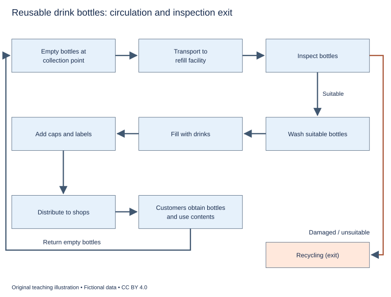
教学虚构简化流程，非生产或卫生操作指南。客户返空瓶至收集点→运至补充装设施→检查；不合格/损坏→回收（退出，无返回箭头）。合格→清洗→灌装→加盖与标签→送商店→客户取用饮料→空瓶返收集点。未给回收后处理、循环次数、返还率或时间温度。
任务预算（含首次审题，不额外加时）
初稿20分钟（审题规划3、写作15、检查2）；诊断15；反馈阅读与证据核查10；完整重写25；对照归档5。合计75分钟。
初稿后自评清单
- [ ] 达到最低字数；全文连贯成段，没有用项目符号代替作文。
- [ ] 概述给主要特征；数据、阶段或方位都与题图逐项相符，不推断未提供的原因。
- [ ] 每段可写出一个功能标签；例子或数据与该段要点相连。
- [ ] 圈出两处词汇搭配和两处句法疑点，先自行修正再查询或求反馈。
- [ ] 记录一项最影响理解的问题和原句证据，不填写自猜分数。
反馈与重写
打开 独立参考页（本节下方展开参考），按逐段检查和通用协议核验。重写任务：完整重写至少150词；分别沿合格与损坏路径核验，明确循环起点与退出端；不为丰富词汇改变工序。
本周重点操作（已含原预算）
用原有诊断中的3分钟对照合格与损坏两路，指出分流条件及各自后果；再标一项图未提供的信息。比较的是流程路径，不要求写图外原因或虚构两方观点。
W15 T1A 示例、反馈与重练（首答后展开）
WS-W15-T1A 独立参考页
只在初稿完成后阅读；不是唯一答案，也没有官方分数。以下是对原创示例的教学讲评，不是对学生尚未提交作文的已完成批改。
思路拆解
概述主循环与损坏退出；按返还检查、合格后生产消费分段；不把回收重熔接回原循环。
原创示例
The diagram illustrates a local scheme in which drink bottles circulate between customers and a refill facility. It also shows what happens to returned bottles that are unsuitable for further use.
Overall, bottles that pass inspection follow a repeated cycle of washing, refilling, distribution, use and return. Inspection creates an exit from this cycle for damaged bottles, which are sent for recycling. No route back from recycling is shown.
The process begins when customers return empty bottles to a collection point. These bottles are transported to the refill facility and inspected for damage. Bottles judged unsuitable are separated from the others and sent to recycling, rather than continuing through the washing and refilling stages.
The remaining bottles are washed and then filled with drinks. Caps and labels are added before the bottles are distributed to local shops. Customers obtain the filled bottles from these shops and use the contents. Once empty, the bottles can be returned to a collection point, bringing them back to the beginning of the same sequence. The diagram provides no information about how long a bottle remains in use or how many times it can complete the cycle.
示例正文词数：192（本项目正则计数；书信不含称呼、结束语与署名；连字符词作一词）。
逐段反馈与迁移
- P1 local refill scheme并非全部瓶子工业制造流程；没有原料生产节点。
- P2 主循环回到collection；recycling是退出，图没有再生瓶回来。
- P3 检查后不合格直接回收，不先洗所有瓶子。
- P4 洗→填充→盖标签→商店→使用→返还；不添加消毒温度或循环次数。
常见失误
把recycling与reuse混为同一路；说所有购买瓶必然被返还；补不在图中的熔化制造步骤。
可执行反馈步骤
1. 先把自己的段落标为引入、概述/论点、支持、收束；分段可不同于示例，按功能核查，不照抄段数。
2. 对照上方逐段检查，逐项标“已有证据/缺失/不适用”。每条意见必须附自己的原句或缺失位置。
3. 按 反馈协议 的四维表记录；有争议的 AI 意见回题干、数据或语法依据核验。
4. 只选两项最高优先级问题执行整篇重写；保留原稿，禁止把示例替换为自己的作业。
重写任务
完整重写至少150词；分别沿合格与损坏路径核验，明确循环起点与退出端；不为丰富词汇改变工序。
完成后重新勾选 学生页（见本节上方学生题） 清单；将一处改前/改后及理由交给独立评阅者核查。真人评阅状态目前为“待安排”，不是已完成。
WS-W15-T1G 学生页：向供应商询问补充装方案
周次 W15｜题型 T1G｜能力点：书信目的、要点与语气
Task 1 的 A/G 分支二选一，另一分支不计入本周作业。
使用与记录
原创教学练习，非真题、非标准化模拟，难度未校准。先完成本页再打开参考页。人物、机构、经历与数据均为教学虚构。不要背诵示例。自评和 AI 反馈不能代替独立真人评分，未获得真人评阅时标记“分数未确认”。
保存：任务ID、实际日期、用时、初稿或原始录音、证据化反馈、重写/重答、三条修改理由。没有学生提交物，不得填写“已批改”或“已完成训练”。
完整题干
You help organise refreshments at a small community venue and are considering a reusable-bottle service. Write to the supplier. In your letter:
- describe your venue’s needs
- ask how delivery and empty-bottle collection would work
- ask for information about costs and the trial period.
Begin your letter: Dear Sir or Madam,
Write at least 150 words. You do not need to write any addresses. Spend about 20 minutes on this task.
任务预算（含首次审题，不额外加时）
初稿20分钟（审题规划3、写作15、检查2）；诊断15；反馈阅读与证据核查10；完整重写25；对照归档5。合计75分钟。
初稿后自评清单
- [ ] 达到最低字数；全文连贯成段，没有用项目符号代替作文。
- [ ] 三个要点均展开；称呼、目的、语气和结束语适合收信人。
- [ ] 每段可写出一个功能标签；例子或数据与该段要点相连。
- [ ] 圈出两处词汇搭配和两处句法疑点，先自行修正再查询或求反馈。
- [ ] 记录一项最影响理解的问题和原句证据，不填写自猜分数。
反馈与重写
打开 独立参考页（本节下方展开参考），按逐段检查和通用协议核验。重写任务：完整重写至少150词；每个请求对应一个场地需求，区分已知条件与需要供应商回复的未知条款。
本周重点操作（已含原预算）
用原有诊断中的3分钟把三项询问分别连到场地已给的需求；将供应商未回复的费用/试用条款标为未知。只检查请求的理由与条件，不捏造服务方立场。
W15 T1G 示例、反馈与重练（首答后展开）
WS-W15-T1G 独立参考页
只在初稿完成后阅读；不是唯一答案，也没有官方分数。以下是对原创示例的教学讲评，不是对学生尚未提交作文的已完成批改。
思路拆解
正式信息请求；说明用量情境，再问物流，最后成本与试用；未知条款只能提问不能捏造。
原创示例
Dear Sir or Madam,
I help organise refreshments at the Willow Community Hall, and we are interested in your reusable-bottle service. We hold two evening events each week, usually attended by around thirty people. At present, we provide individual bottled drinks, but we would like to explore an arrangement that would reduce the number of containers we throw away.
Could you explain how deliveries and collections would be scheduled for a venue of our size? Our events take place on Tuesdays and Thursdays, and someone is normally available at the hall on Monday mornings to receive supplies. We have limited storage space, so it would be helpful to know whether empty bottles could be collected when the next delivery arrives.
Please also send details of the charges, including any deposit for bottles and any minimum order requirement. We would prefer to test the service before making a longer commitment. Do you offer a trial period, and what would happen if we decided not to continue afterwards? A written estimate based on our usual attendance would help us discuss the proposal at our next committee meeting.
Yours faithfully, Alex Chen
示例正文词数：181（本项目正则计数；书信不含称呼、结束语与署名；连字符词作一词）。
逐段反馈与迁移
- P1 两晚各约30人是估计规模，不等同确定订60瓶。
- P2 周一可收与两场活动关系自洽，存储有限支持同送同收询问。
- P3 押金最低单和试用退出均为问题；没有宣称供应商免费提供。
常见失误
直接下单但信息未明；给出不存在的服务价格；只谈环保而忘具体问题。
可执行反馈步骤
1. 先把自己的段落标为引入、概述/论点、支持、收束；分段可不同于示例，按功能核查，不照抄段数。
2. 对照上方逐段检查，逐项标“已有证据/缺失/不适用”。每条意见必须附自己的原句或缺失位置。
3. 按 反馈协议 的四维表记录；有争议的 AI 意见回题干、数据或语法依据核验。
4. 只选两项最高优先级问题执行整篇重写；保留原稿，禁止把示例替换为自己的作业。
重写任务
完整重写至少150词；每个请求对应一个场地需求，区分已知条件与需要供应商回复的未知条款。
完成后重新勾选 学生页（见本节上方学生题） 清单；将一处改前/改后及理由交给独立评阅者核查。真人评阅状态目前为“待安排”，不是已完成。
WS-W15-T2 学生页：减少包装废弃物
周次 W15｜题型 T2｜能力点：观点展开与任务回应
A/G 共用本题。
使用与记录
原创教学练习，非真题、非标准化模拟，难度未校准。先完成本页再打开参考页。人物、机构、经历与数据均为教学虚构。不要背诵示例。自评和 AI 反馈不能代替独立真人评分，未获得真人评阅时标记“分数未确认”。
保存：任务ID、实际日期、用时、初稿或原始录音、证据化反馈、重写/重答、三条修改理由。没有学生提交物，不得填写“已批改”或“已完成训练”。
完整题干
Many products are sold with more packaging than is necessary. Why does this happen, and what could producers and consumers do to reduce unnecessary packaging? Give reasons and include relevant examples.
Write at least 250 words. Spend about 40 minutes on this task.
任务预算（含首次审题，不额外加时）
初稿40分钟（审题规划5、写作30、检查5）；诊断15；反馈阅读与证据核查10；完整重写35；对照归档5。合计105分钟。
初稿后自评清单
- [ ] 达到最低字数；全文连贯成段，没有用项目符号代替作文。
- [ ] 直接回答题目的所有问句，有始终一致的立场。
- [ ] 每段可写出一个功能标签；例子或数据与该段要点相连。
- [ ] 圈出两处词汇搭配和两处句法疑点，先自行修正再查询或求反馈。
- [ ] 记录一项最影响理解的问题和原句证据，不填写自猜分数。
反馈与重写
打开 独立参考页（本节下方展开参考），按逐段检查和通用协议核验。重写任务：完整重写至少250词；写一条原因链、一处生产者/消费者比较、一项可能后果和一个例外，各自服务题目问句。
本周重点操作（已含原预算）
用原有诊断中的3分钟在自己的论证中标原因、生产者/消费者比较、可能后果和例外；若某项欠缺，在重写原定时间内补入且必须回应包装题，不另写新文章。
W15 T2 示例、反馈与重练（首答后展开）
WS-W15-T2 独立参考页
只在初稿完成后阅读；不是唯一答案，也没有官方分数。以下是对原创示例的教学讲评，不是对学生尚未提交作文的已完成批改。
思路拆解
原因与双行动者对策；比较控制范围，讲后果并用脆弱商品作例外，不把减少材料作为唯一标准。
原创示例
Excessive packaging often results from efforts to attract attention and simplify handling, rather than from the needs of the product alone. Reducing it requires both producers and consumers to distinguish useful protection from material that adds little practical value.
One reason for extra packaging is competition for customers. A large box may make a small product seem more substantial, while several layers can create an impression of quality when the item is opened. Producers may also prefer standard packages that fit a distribution system even when they leave considerable empty space around a particular product. These decisions can be convenient for the seller, but they do not necessarily provide a corresponding benefit to the buyer.
Producers could review packaging according to its function. They might reduce empty space, remove decorative layers or offer refills where the original container remains suitable for use. For example, a durable dispenser may not need to be replaced every time its contents run out. However, the alternative must still protect the product adequately. Removing packaging from fragile goods without testing the result could increase damage and waste, so a simple rule that less material is always better would be misleading.
Consumers can contribute by choosing less heavily packaged versions when those alternatives are practical and by telling retailers why they prefer them. This can give producers a clearer signal than general complaints about waste. Yet consumers cannot select an option that is not offered, and refills may be inconvenient where collection points are distant. Producers therefore have greater control over design, while consumers influence demand within the choices actually available to them.
In conclusion, unnecessary packaging is encouraged by marketing and routine handling decisions. Producers should remove material that serves little purpose and develop workable alternatives, while consumers can support those options. Protection, access and product differences must remain part of the decision rather than being ignored in pursuit of the smallest possible package.
示例正文词数：319（本项目正则计数；书信不含称呼、结束语与署名；连字符词作一词）。
逐段反馈与迁移
- P1 unnecessary与必要保护区分，回应题目范围。
- P2 营销与标准化搬运两个机制，不编百分比调查。
- P3 设计调整给具体例；易碎商品反例说明为什么需测试保护效果。
- P4 消费选择受可得性约束，比较生产者设计控制与消费者需求信号。
- P5 原因与措施回扣，并保留保护/可达条件。
常见失误
只写环境污染后果不答原因；只要求消费者负责；认为一切包装均多余。
可执行反馈步骤
1. 先把自己的段落标为引入、概述/论点、支持、收束；分段可不同于示例，按功能核查，不照抄段数。
2. 对照上方逐段检查，逐项标“已有证据/缺失/不适用”。每条意见必须附自己的原句或缺失位置。
3. 按 反馈协议 的四维表记录；有争议的 AI 意见回题干、数据或语法依据核验。
4. 只选两项最高优先级问题执行整篇重写；保留原稿，禁止把示例替换为自己的作业。
重写任务
完整重写至少250词；写一条原因链、一处生产者/消费者比较、一项可能后果和一个例外，各自服务题目问句。
完成后重新勾选 学生页（见本节上方学生题） 清单；将一处改前/改后及理由交给独立评阅者核查。真人评阅状态目前为“待安排”，不是已完成。
WS-W15-S1 学生页
周次W15｜Part 1专项｜能力点：Part 3原因、比较、后果与例外｜30分钟
使用与记录
原创教学练习，非真题、非标准化模拟，难度未校准。先完成本页再打开参考页。人物、机构、经历与数据均为教学虚构。不要背诵示例。自评和 AI 反馈不能代替独立真人评分，未获得真人评阅时标记“分数未确认”。
保存：任务ID、实际日期、用时、初稿或原始录音、证据化反馈、重写/重答、三条修改理由。没有学生提交物，不得填写“已批改”或“已完成训练”。
操作与预算
设备与审题3分钟；首答录音6；回听及局部转写7；示例和诊断5；不看稿重答6；归档3。共30分钟。
Part 1专项题
1. Do you carry a reusable bottle?
2. What makes you remember to take useful items with you?
3. Do you prefer small or large containers?
4. Have your habits changed in recent years?
追问：
- Why is that habit easy or difficult to maintain?
- When would you choose a different option?
录音回听清单
- [ ] 保留首答原音，记录实际时长、是否中断、是否看稿；只报真实完成状态。
- [ ] 流利与连贯：标出两处时间戳，区分构思停顿与重复搜词，检查是否偏离问句。
- [ ] 词汇：找一处模糊词或重复表达，先解释原意再替换；不为难词改变意思。
- [ ] 语法：核对经历与习惯的时态；局部转写并更正两处妨碍理解的问题。
- [ ] 发音：不看转写听30秒，标听不清的词尾、重音或断句；没有音频不能判断发音。
- [ ] 展开：主要回答有具体情境或理由；追问后第一句回应追问的新角度。
重答要求
选择两个只有笼统判断的答案，先直接回应再加具体情境；重答一条追问，检查是否真正回应其新角度。
首答回听后才打开独立参考页（本节下方展开参考）。按反馈协议填至少三个时间戳，不以文字转写替代音频评阅。
本周重点操作（已含原预算）
用原有回听中的3分钟检查本页why与when追问：首答是否给原因和适用例外。用自己的真实条件重答；没有例外可解释为何暂未想到，不编造经历。
W15 S1 示例、反馈与重练（首答后展开）
WS-W15-S1 独立参考页
原创教学示例，非真题或评分结果。未收到学生音频；以下是示例分析与待执行反馈，不能登记为已完成学生批改。
展开示例
直接回应→原因→具体情境的展开示例
I carry a reusable bottle when I expect to be out for several hours. It saves me looking for a drink, but I sometimes leave it at home on a very short trip because I do not want to carry a bag. So it is a useful habit for me, rather than a rule I follow in every situation.
纯口答示例词数：59；只计MODEL标记内实际英文口答，不含标题、标签、说明。词数不能证明录音时长或流利度。
展开与反馈
本周能力：Part 3原因、比较、后果与例外。
1. 示例先表态，再说明偏好理由，最后提供条件或场景。检查自己是否用一个词回答后就结束。
2. 找到一个具体细节：物品、动作、对话或地点。用自己的经历替换，保持与题卡相关，不照搬示例身份与经历。
3. 追问要重新回应，不能继续背长答。首句先回答追问，再用一条理由支持。
4. 标出一处听不清或语法影响理解的原音时间戳；先尝试最小修正。不要把自然停顿一概当成错误，或用加快语速掩盖逻辑断裂。
常见失误
空泛形容词替代具体过程；给了经历却没解释为什么重要；Part 3只有个人故事没有一般解释；AI只看转写就判断发音。逐项回原音核对，不能凭范例推断自己已达到某个分数。
可执行重答与反馈
选择两个只有笼统判断的答案，先直接回应再加具体情境；重答一条追问，检查是否真正回应其新角度。
填写反馈协议四维表，附三个时间戳和原话证据。选一个内容问题与一个语言问题先修；重答后并排听两段，记录改善与仍未解决之处。自评与AI不能替代独立真人评分；独立评阅目前待安排，分数未确认。
WS-W15-S2 学生页
周次W15｜Part 2专项｜能力点：Part 3原因、比较、后果与例外｜30分钟
使用与记录
原创教学练习，非真题、非标准化模拟，难度未校准。先完成本页再打开参考页。人物、机构、经历与数据均为教学虚构。不要背诵示例。自评和 AI 反馈不能代替独立真人评分，未获得真人评阅时标记“分数未确认”。
保存：任务ID、实际日期、用时、初稿或原始录音、证据化反馈、重写/重答、三条修改理由。没有学生提交物，不得填写“已批改”或“已完成训练”。
操作与预算
准备、首答录音及追问5分钟；回听及局部转写8；示例与诊断5；关键词重组3；重答及追问5；归档4。共30分钟。
Part 2专项任务卡
Describe a habit you changed to use fewer resources. Say what you used to do, what you changed, why you made the change, and explain any difficulties or benefits you noticed.
准备1分钟，说1～2分钟。只记5个关键词，不预写句子。
收尾追问：
- Have you continued the new habit?
- Would the same change be practical for other people?
录音回听清单
- [ ] 保留首答原音，记录实际时长、是否中断、是否看稿；只报真实完成状态。
- [ ] 流利与连贯：标出两处时间戳，区分构思停顿与重复搜词，检查是否偏离问句。
- [ ] 词汇：找一处模糊词或重复表达，先解释原意再替换；不为难词改变意思。
- [ ] 语法：核对经历与习惯的时态；局部转写并更正两处妨碍理解的问题。
- [ ] 发音：不看转写听30秒，标听不清的词尾、重音或断句；没有音频不能判断发音。
- [ ] 展开：主要回答有具体情境或理由；追问后第一句回应追问的新角度。
重答要求
用五个关键词重答完整任务卡1～2分钟，再答两条追问；补一处具体行动或细节并删一处无关背景。比较首答与重答，不背示例。
首答回听后才打开独立参考页（本节下方展开参考）。按反馈协议填至少三个时间戳，不以文字转写替代音频评阅。
本周重点操作（已含原预算）
用原有回听中的3分钟从本题习惯改变中找前后差别及观察到的结果；回答“他人是否适用”时补一个限制条件。未亲见的后果用假设表达，与自己经历分开。
W15 S2 示例、反馈与重练（首答后展开）
WS-W15-S2 独立参考页
原创教学示例，非真题或评分结果。未收到学生音频；以下是示例分析与待执行反馈，不能登记为已完成学生批改。
展开示例
原创长答示例（时长须以个人实际录音测量）
A habit I changed was printing every document that I needed to read for work. I used to feel that a paper copy would help me concentrate, even when I only needed to check a few details. After a while, I noticed how many pages I had printed and barely used.
I decided to read short documents on screen first. If a document needed careful comparison or detailed notes, I could still print selected pages. This was a more manageable change than promising never to print anything again.
At first, I found it awkward to keep track of comments on screen. A colleague showed me how to use a simple annotation tool, and I began saving marked copies in one folder. That made the habit easier to maintain.
The benefit was less paper on my desk and fewer unnecessary copies. I would not claim the approach works for every task or every person. Some long documents are still easier for me to examine on paper. The useful change was choosing deliberately instead of printing automatically.
纯口答示例词数：175；只计MODEL标记内实际英文口答，不含标题、标签、说明。词数不能证明录音时长或流利度。
展开与反馈
本周能力：Part 3原因、比较、后果与例外。
1. 长答示例按背景、行动/观察、变化与意义组织。每段都推进内容；检查自己是否只有背景而没有具体事件。
2. 找到一个具体细节：物品、动作、对话或地点。用自己的经历替换，保持与题卡相关，不照搬示例身份与经历。
3. 追问要重新回应，不能继续背长答。首句先回答追问，再用一条理由支持。
4. 标出一处听不清或语法影响理解的原音时间戳；先尝试最小修正。不要把自然停顿一概当成错误，或用加快语速掩盖逻辑断裂。
常见失误
空泛形容词替代具体过程；给了经历却没解释为什么重要；Part 3只有个人故事没有一般解释；AI只看转写就判断发音。逐项回原音核对，不能凭范例推断自己已达到某个分数。
可执行重答与反馈
用五个关键词重答完整任务卡1～2分钟，再答两条追问；补一处具体行动或细节并删一处无关背景。比较首答与重答，不背示例。
填写反馈协议四维表，附三个时间戳和原话证据。选一个内容问题与一个语言问题先修；重答后并排听两段，记录改善与仍未解决之处。自评与AI不能替代独立真人评分；独立评阅目前待安排，分数未确认。
WS-W15-S3 学生页
周次W15｜三部分全流程｜能力点：Part 3原因、比较、后果与例外｜60分钟
使用与记录
原创教学练习，非真题、非标准化模拟，难度未校准。先完成本页再打开参考页。人物、机构、经历与数据均为教学虚构。不要背诵示例。自评和 AI 反馈不能代替独立真人评分，未获得真人评阅时标记“分数未确认”。
保存：任务ID、实际日期、用时、初稿或原始录音、证据化反馈、重写/重答、三条修改理由。没有学生提交物，不得填写“已批改”或“已完成训练”。
操作与预算
D5：设备与流程准备2分钟，连续首答11～14分钟，余14～17分钟完整回听标记，共30分钟。D6：局部转写诊断10，阅读示例与调整5，重答与新追问10，对照归档5，共30分钟。合计60分钟。
连续三部分全流程（首答不可看参考）
找同伴读题，或独练逐题揭示。完整首答11～14分钟，中途不暂停纠错。模拟同伴不是认证考官；自行读题的练习记录不能冒充真实面试。
Part 1：4～5分钟
1. Do you reuse bags or containers?
2. What do you do with things you no longer need?
3. Do you find it easy to change a routine?
4. Who influences your everyday habits?
5. Do you like trying services that work differently?
6. What makes you continue using a new service?
可按回答追加 Why? / Can you give an example? 到时转下部分，不强行说完全部备用问题。
Part 2：3～4分钟（含准备）
Describe a service or arrangement that encouraged you to change a habit. Say what it was, how you discovered it, what you changed, and explain why the arrangement helped.
准备1分钟，连续说1～2分钟。收尾追问：
- Do you still use that arrangement?
- Was any part of it inconvenient?
Part 3：4～5分钟
1. Why do convenient options often influence people’s habits?
2. How is an individual habit different from a rule applied to a whole organisation?
3. What could happen if a reuse scheme were difficult to access?
4. When might a reusable product be impractical?
根据回答追加追问：
- Would information alone solve the access problem?
- How could an organiser test whether the arrangement works for different users?
录音回听清单
- [ ] 保留首答原音，记录实际时长、是否中断、是否看稿；只报真实完成状态。
- [ ] 流利与连贯：标出两处时间戳，区分构思停顿与重复搜词，检查是否偏离问句。
- [ ] 词汇：找一处模糊词或重复表达，先解释原意再替换；不为难词改变意思。
- [ ] 语法：核对经历与习惯的时态；局部转写并更正两处妨碍理解的问题。
- [ ] 发音：不看转写听30秒，标听不清的词尾、重音或断句；没有音频不能判断发音。
- [ ] 展开：主要回答有具体情境或理由；追问后第一句回应追问的新角度。
重答要求
重答最弱的一个Part 1问题、完整Part 2及一个Part 3问题，再答一条未用追问。用不同细节或补一个例外，确认不是复述范例；局部重答不另计全流程。
首答回听后才打开独立参考页（本节下方展开参考）。按反馈协议填至少三个时间戳，不以文字转写替代音频评阅。
本周重点操作（已含原预算）
用原有回听中的3分钟将Part 3四题分别标为原因、比较、后果、例外；从原音各找一句回应，欠缺处标待重答。追加追问时说明条件，不把假设后果说成已发生事实。
W15 S3 示例、反馈与重练（首答后展开）
WS-W15-S3 独立参考页
原创教学示例，非真题或评分结果。未收到学生音频；以下是示例分析与待执行反馈，不能登记为已完成学生批改。
展开示例
Part 2原创展开示例（个人语速不同，不能以词数推录音时长）
An arrangement that encouraged me to change a habit was a shared shelf for reusable cups at a small office. Before it was introduced, people often took disposable cups when they bought a drink from the café downstairs. Bringing a cup from home required remembering it each morning.
A colleague suggested keeping a few clearly marked cups near the office entrance. Anyone could borrow one, provided they washed it and returned it to the shelf. We discussed how to keep the cups clean and who would notice if the supply became too small.
I began using the shelf because it made the alternative visible at exactly the moment I was leaving to buy a drink. I did not have to make a separate plan the night before. The main inconvenience was remembering to wash the cup promptly when I returned.
The arrangement helped because it removed a small practical obstacle. It did not prove that everyone was strongly committed to changing habits; it simply made the preferred action easier. I think that distinction is useful when considering why some schemes attract participation and others do not.
Part 3观点→理由→条件展开示例
If a reuse scheme is difficult to access, even people who support its aim may continue using disposable products. Compared with an individual promise, a workplace arrangement can make the alternative easier to find and maintain. However, a rule that ignores practical exceptions may create resistance. For example, someone travelling without access to washing facilities may need a different option for that occasion.
纯口答示例词数：249；只计MODEL标记内实际英文口答，不含标题、标签、说明。词数不能证明录音时长或流利度。
展开与反馈
本周能力：Part 3原因、比较、后果与例外。
1. 长答示例按背景、行动/观察、变化与意义组织。每段都推进内容；检查自己是否只有背景而没有具体事件。
2. 找到一个具体细节：物品、动作、对话或地点。用自己的经历替换，保持与题卡相关，不照搬示例身份与经历。
3. Part 3示例不把个人选择强加给所有人；先讲机制，再说明条件或例外。检查自己的追问答案是否直接回应新问题。
4. 标出一处听不清或语法影响理解的原音时间戳；先尝试最小修正。不要把自然停顿一概当成错误，或用加快语速掩盖逻辑断裂。
常见失误
空泛形容词替代具体过程；给了经历却没解释为什么重要；Part 3只有个人故事没有一般解释；AI只看转写就判断发音。逐项回原音核对，不能凭范例推断自己已达到某个分数。
可执行重答与反馈
重答最弱的一个Part 1问题、完整Part 2及一个Part 3问题，再答一条未用追问。用不同细节或补一个例外，确认不是复述范例；局部重答不另计全流程。
填写反馈协议四维表，附三个时间戳和原话证据。选一个内容问题与一个语言问题先修；重答后并排听两段，记录改善与仍未解决之处。自评与AI不能替代独立真人评分；独立评阅目前待安排，分数未确认。
许可
原创文字：RayXBuilds and contributors，CC BY 4.0。此页由已验收分课汇编，调整了标题和导航；题干、正文和答案内容保留。公开第三方音频未包含。
回到顶部
U24 第16周：长篇阅读、写作与口语
本页为已独立核验的原创文字课程。先完成学生题目，再展开对应参考。非真题、非标准化模考，不换算雅思分数。听力尚未补齐，本页不代表全科课程已完成。
每周选A或G类Task 1一题，加Task 2及三次口语。参考范文不是学生已完成作业，仍须提交初稿、录音和重写，独立真人评分另行安排。
阅读每周180分钟（60分钟首次限时、120分钟证据精读与延迟复测），写作180分钟、口语120分钟。词汇60分钟、听力180分钟另列；新增完整听力未验收，不能勾整周完成。
W16原创阶段检查按实际证据复盘；正式T16陌生整卷及真人评分另记，本页原创技能卷不能代替正式模拟。后续周数与达标规则见 U04。
阅读：首答不查词
R-W16-01 · A Roof That Holds the Rain
W16｜正文 854 词｜13 题｜篇章：机制解释：暂存、流出与恢复条件（6段）
本课必做60分钟：首答20、证据复盘20、词汇长句10、48小时后复测10。每周三课180分钟，合卷首答替代单课首答，不重复计算。开放短文选做另加15分钟。
本项目原创虚构教学情境，人物、地点、历史事件和案例数据均非真实研究或史料。科学解释只讨论文内说明的模型与条件。非雅思真题或标准化模考；正确数不换算雅思等级。许可：CC BY 4.0 — RayXBuilds and contributors。
能力点：识别论证关系、区分作者与引述者、条件与因果、精确定位。初读不查词，完成后打开独立答案页。
Passage
A A fictional environmental design class compares two shallow trays under an artificial shower. One has a smooth base that directs water immediately towards an outlet. The other contains a layer that can hold some water before releasing it. The second tray produces a smaller early flow, and a student announces that it has eliminated part of the rain. The instructor asks where the water has gone. Some remains in the tray, some has already left, and some may later evaporate under the conditions of the model. A reduced outflow at one moment is not the same claim as a reduced total volume across an entire period. This distinction is central to understanding a roof designed to delay runoff. Its function may be to alter the timing of water reaching another system, even when much of that water eventually leaves the roof rather than disappearing permanently.
B The class first applies a brief shower to both dry trays. The holding layer absorbs water until its available storage becomes limited, after which the outlet carries more of the incoming flow. The timing depends on how much space was initially available and how quickly water can enter or leave it. A label giving the layer's maximum storage does not describe its remaining capacity at the start of every storm. If it is already wet, a new shower meets a different condition. The class therefore weighs each tray before the run and records whether it has recently been used. This prevents a comparison between a dry holding tray and an already wet one from being interpreted as evidence that the material has unpredictably changed its properties when the relevant difference is its starting state.
C Outlet design produces another tradeoff. A narrow outlet can slow release, extending the time over which stored water leaves. But if incoming water exceeds the combined ability to store and release it, the system needs somewhere else for the excess to go. In the classroom model, an overflow channel makes that route visible. Students are not allowed to ignore overflow simply because it bypasses the measuring cup placed beneath the ordinary outlet. Doing so would make the tray appear more effective by excluding part of its discharge. The exercise treats overflow as a part of system behaviour to observe, not as an inconvenient exception outside the accounting. Any claim about total outflow must include all routes by which water leaves the boundary chosen for the comparison.
D A long period of gentle input can produce a different result from a short intense shower with the same total volume. During gentle input, some stored water may leave while new water arrives, making room available again. During a rapid burst, the layer may fill before sufficient release occurs. The class uses a rainfall card specifying both the total input and its distribution over time. It compares the resulting discharge curves without treating equal totals as identical conditions. This does not establish that one tray is best for every possible pattern. It shows why a design intended to reduce a short peak should be evaluated against the timing of that peak, while a claim about total retained water requires a different account of what remains after an appropriately defined observation period.
E Recovery between showers matters for the same reason. The class allows one holding tray to drain for a long interval and subjects another to a second shower soon after the first. The second begins with less available storage. A performance figure from a single dry-start trial would not reveal this difference. Students keep a recovery log and a storage sheet linking each trial with the tray's starting condition. A flow graph records the measured output over time, while a balance table lists input, water remaining and water leaving by each route. The records describe related aspects of the experiment, but none is a universal substitute for all the others. A low early peak can coexist with little final retention, just as high retention at one time can leave limited capacity for the next event.
F The final comparison asks which service each tray provides under the specified sequence of showers. Delaying water may be useful when the receiving system is busiest during a short period, but a delayed flow could still coincide with another source later. The class therefore avoids describing every delay as an improvement independent of context. Its conclusion identifies the input pattern, the initial storage and the time window over which the result was measured. The teaching model is not a construction specification for a real building, whose requirements would extend far beyond the tray. Its value lies in making distinct claims visible: reducing a peak, retaining a volume and preparing for a subsequent event are different achievements. A careful reader should ask which one a performance statement actually describes before treating a low number at the outlet as a complete account of what the roof has done with the rain. Extending the observation window may change the reported retained amount without changing the physical tray at all. For that reason, comparisons must state when measurement ends as clearly as they state when the shower begins.
Questions
Choose ONE answer, A, B, C or D.
1. The initial reduced flow demonstrates most directly
A. that some water never existed B. that both trays retain equally C. that all rain evaporated D. a change in the timing of outflow
2. Why record starting wetness?
A. It prevents all overflow B. It replaces measuring input C. It affects available storage D. It proves all materials identical
3. Why measure overflow as well as the main outlet?
A. To reduce the shower rate B. To avoid excluding an exit route from total discharge C. To guarantee zero retention D. To make the narrow outlet wider
4. Equal total inputs may differ because
A. the distribution of input over time differs B. each shower has no duration C. storage never recovers D. totals cannot be measured
Complete the sentences. Choose NO MORE THAN 3 WORDS FROM THE PASSAGE for each answer. Do not change word forms.
5. The model’s extra discharge route is an ______.
6. Total input and its timing are specified on a ______.
7. The interval between showers is documented in a ______.
8. Measured output over time appears in a ______.
9. Input, retained water and exit routes are combined in a ______.
Do the following statements agree with the writer's views? Write YES, NO or NOT GIVEN. YES = the writer agrees; NO = the writer expresses the opposite view; NOT GIVEN = the writer's view is not stated. Do not use outside knowledge.
10. Maximum storage equals available storage before every event.
11. Every delay in discharge improves the receiving system regardless of context.
12. A lower early peak can occur alongside little final retention.
13. The writer favours subsidies based on total retention rather than reduction of peak discharge.
本周重点
原创阶段检查：60分钟合卷与48小时延迟复测配套；不换算雅思分数，不能替代正式T16陌生卷。
复盘
必做：给每道错题标记“定位/作者立场/范围/语法/词数”，抄最短证据；用一行箭头概括本文论证或过程。48小时后重做错题与两道正确题，检查是否仍能指出证据。
选做（15分钟，80–100词）：Distinguish reducing a peak from retaining water across an entire period.
R-W16-01 答案、证据与精读（首答后展开）
R-W16-01 · 独立答案与证据
来源与许可同学生页。先完成再核对。可接受答案由 accepted_answers 明确列出；只忽略大小写和首尾空格，不自行删词。开放复盘不计入客观正确数。
1. D｜段落 A｜证据：“alter the timing of water”
不能从单时点推总消失量。
2. C｜段落 B｜证据：“remaining capacity at the start”
初始状态是条件。
3. B｜段落 C｜证据：“include all routes”
完整边界核算。
4. A｜段落 D｜证据：“distribution over time”
速率和历时可改变峰值。
5. overflow channel / overflow｜段落 C｜证据：“an overflow channel”
overflow channel 是完整路线名，overflow 在本段亦用作该溢流的回指简称，两者可接 an。单独 channel 不能接 an。
6. rainfall card / card｜段落 D｜证据：“a rainfall card”
card可接受。
7. recovery log / log｜段落 E｜证据：“a recovery log”
log可接受；starting condition另有storage sheet。
8. flow graph / graph｜段落 E｜证据：“A flow graph records”
graph可接受；这是出流随时间的曲线记录，不是步骤流程图。
9. balance table / table｜段落 E｜证据：“a balance table lists”
table可接受；flow graph没有完整水量构成。
10. NO｜段落 B｜证据：“does not describe its remaining capacity”
上限不等于当前余量。
11. NO｜段落 F｜证据：“avoids describing every delay as an improvement”
可能与其他来源后续重叠。
12. YES｜段落 E｜证据：“can coexist with little final retention”
作者直接说明两指标可分离。
13. NOT GIVEN｜段落 F｜证据：“different achievements”
作者区分不同水文服务，没有提出补贴依据或财政优先项。
词汇与长句
- runoff：流离接收表面的水
- retention：在指定时段仍被保留的水量
- discharge：离开系统边界的出流
- capacity：可用于储存或处理的容量
> A reduced outflow at one moment is not the same claim as a reduced total volume across an entire period.
at one moment与across an entire period对照时间尺度。
> A low early peak can coexist with little final retention, just as high retention at one time can leave limited capacity for the next event.
just as类比两个并存关系，不能用一指标替代所有功能。
开放任务参考
A/D/E峰值是时序量、保留量需定义期末与全部出口；F要看接收系统。
标准：观点有文内依据，保留条件和范围，推断明确标注；不存在唯一措辞。
R-W16-02 · The Journey of a Borrowed Tune
W16｜正文 1063 词｜13 题｜篇章：虚构文化史：音乐传播、改编与归属（9段）
本课必做60分钟：首答20、证据复盘20、词汇长句10、48小时后复测10。每周三课180分钟，合卷首答替代单课首答，不重复计算。开放短文选做另加15分钟。
本项目原创虚构教学情境，人物、地点、历史事件和案例数据均非真实研究或史料。科学解释只讨论文内说明的模型与条件。非雅思真题或标准化模考；正确数不换算雅思等级。许可：CC BY 4.0 — RayXBuilds and contributors。
能力点：识别论证关系、区分作者与引述者、条件与因果、精确定位。初读不查词，完成后打开独立答案页。
Passage
A The fictional harbour town of Avel has a song that residents describe as their own. It accompanies a yearly procession, appears in school concerts and is played when ships return after a long absence. A visiting musician recognises part of its melody from a dance performed on another island. Some residents treat this resemblance as a threat: if the tune came from elsewhere, they ask, can it still belong to the town? The question combines several meanings of belonging. It may concern who first composed a phrase, who carried it between places, who changed it or which community now uses it to express shared experience. These questions can be related without having the same answer.
B The earliest written version in Avel is a melody sketch copied by a travelling instrument seller. The page gives a sequence of notes but no words, and it does not identify a composer. A later owner wrote the harbour's name across the top. That addition shows an association at the time it was made, not necessarily the place where the tune originated. The historian studying the song separates the date of the copy from the date and hand of the added heading. Without that distinction, a label attached during later use could be mistaken for information supplied by the original writer. The document is valuable, but its different layers need to be read as different acts rather than as one statement made at one moment.
C Oral accounts supply another part of the history. An older resident remembers hearing the melody at a family celebration, but her recollection does not establish the earliest performance in the town. A sailor recalls introducing a related phrase after a voyage. These accounts identify possible routes of transmission without automatically forming a complete chain. The historian keeps an interview ledger noting who spoke, what they claimed to remember directly and what they had heard from someone else. A vivid memory and a carefully dated document are not interchangeable kinds of evidence. Neither should be discarded merely because it cannot answer every question about the song's beginnings or because another account contains details that seem easier to place on a calendar.
D The tune also changed through use. A dance rhythm suited to quick turning steps did not fit a slow procession through narrow streets. Musicians lengthened some notes and repeated a phrase so that walkers could continue at a steady pace. The change was not simply damage done to a perfect original. It enabled the music to perform a different task. The historian prepares a rhythm comparison showing where versions diverge, but avoids treating the earliest surviving notation as the only authentic form. Survival is uneven: an earlier performance may have left no written trace, and a later copy may preserve a pattern learned long before the page was made. The chronology of documents and the chronology of musical practice therefore cannot be assumed to coincide exactly.
E Words arrived later. A schoolteacher wrote verses about the harbour and taught them to children, who carried the song into family gatherings. The new text named local places and events, giving the melody a particular relationship with Avel's public memory. This did not prove that the underlying tune had been composed there. It did show why residents could reasonably experience it as part of local life. The writer rejects the choice between describing the song as entirely indigenous and dismissing its local meaning as fraudulent. Cultural attachment can develop through use and transformation, even when some material has travelled. An honest account can acknowledge that history without pretending that every claim about origin follows from the depth of present attachment.
F Printed programmes helped stabilise one version. When the procession organisers distributed the same words each year, singers became less likely to substitute verses remembered from other occasions. Yet the musicians continued varying the introduction and the length of instrumental passages. A programme sheet recorded the printed text, while a performance note described choices made on a particular occasion. Those records distinguish a relatively stable public version from the flexibility of actual performance. A published text can influence practice without determining every sound that an audience hears. To infer complete uniformity from identical programmes would overlook the work through which performers fit a familiar song to a route, a crowd or an unexpectedly slow movement through the town.
G A later festival brings musicians from the neighbouring island. They recognise the shared phrase but perform a version with different accents and an unfamiliar ending. The exchange does not settle which community was first. Instead, it makes the relationship audible and creates an opportunity to compare what each version does. A version chart lists shared phrases, altered rhythms and different words without ranking one community's use as a degraded copy of the other. The writer supports this comparative approach because a historical question can become less clear when every similarity is treated as a claim of ownership and every difference as proof of complete independence. Musical relationships may include borrowing, shared inheritance and later adaptation, and the available records may not distinguish all of these possibilities.
H The town's revised concert programme credits the schoolteacher's words, describes the melody's known links and states that its earlier origin remains unresolved. This is not a declaration that nobody contributed anything distinctive. It gives different kinds of contribution their own place: composing words, transporting a phrase, adapting a rhythm and sustaining a practice are not identical achievements. The programme also avoids turning uncertainty into an accusation against another community. A missing name does not prove deliberate concealment. Where the evidence cannot identify an individual creator, the account should preserve that limit rather than filling the space with whichever story is most satisfying to the people currently presenting the music on stage.
I Avel's tune remains meaningful after its history becomes more complicated. Residents can sing about their harbour while recognising that the melody connects them with people beyond it. The writer does not propose that questions of attribution should be abandoned in favour of pleasant stories about exchange. Specific claims still need evidence, and identifiable contributions should be described accurately. The narrower lesson is that origin, adaptation and present significance should not be collapsed into one contest for a single label. A cultural object can travel, change and become locally important without all those processes being reducible to the question of who possessed it first.
Questions
Which paragraph contains the following information? Write a letter, A–I. You may use any letter more than once.
1. a heading added by someone other than the writer of the earliest surviving notation
2. changes made to fit a slow procession rather than a fast dance
3. an explicit distinction between printed words and flexible performance decisions
4. a statement that an unidentified creator does not establish intentional concealment
Do the following statements agree with the writer's views? Write YES, NO or NOT GIVEN. YES = the writer agrees; NO = the writer expresses the opposite view; NOT GIVEN = the writer's view is not stated. Do not use outside knowledge.
5. Local cultural meaning requires proof that every musical element originated locally.
6. The earliest surviving notation necessarily represents the first musical practice.
7. Identical printed programmes guarantee identical performances.
8. The writer favours paying the neighbouring island for every Avel performance.
Complete the summary. Choose NO MORE THAN 3 WORDS FROM THE PASSAGE for each answer. Do not change word forms.
The earliest local notation was a (9) ______ without lyrics. The historian recorded direct and indirect memories in the (10) ______. The historian first prepared a (11) ______ to show the rhythm changes made for the procession. Choices on a particular occasion went into a (12) ______. Shared phrases, altered rhythms and different words across the two communities were listed in a (13) ______.
本周重点
原创阶段检查：60分钟合卷与48小时延迟复测配套；不换算雅思分数，不能替代正式T16陌生卷。
复盘
必做：给每道错题标记“定位/作者立场/范围/语法/词数”，抄最短证据；用一行箭头概括本文论证或过程。48小时后重做错题与两道正确题，检查是否仍能指出证据。
选做（15分钟，80–100词）：Explain how a borrowed melody can acquire a distinctive local role without proving a local origin.
R-W16-02 答案、证据与精读（首答后展开）
R-W16-02 · 独立答案与证据
来源与许可同学生页。先完成再核对。可接受答案由 accepted_answers 明确列出；只忽略大小写和首尾空格，不自行删词。开放复盘不计入客观正确数。
1. B｜段落 B｜证据：“A later owner wrote the harbour's name”
B文献层次。
2. D｜段落 D｜证据：“lengthened some notes”
D改节奏服务动作。
3. F｜段落 F｜证据：“relatively stable public version”
F节目文本与实际演奏。
4. H｜段落 H｜证据：“does not prove deliberate concealment”
H不从缺失姓名推恶意。
5. NO｜段落 E｜证据：“Cultural attachment can develop through use and transformation”
作者反对二选一。
6. NO｜段落 D｜证据：“earlier performance may have left no written trace”
存世最早不等于实践起点。
7. NO｜段落 F｜证据：“infer complete uniformity”
作者明确指出会遗漏演奏选择。
8. NOT GIVEN｜段落 G｜证据：“does not settle which community was first”
未评价报酬制度；文化关联不推出收费立场。
9. melody sketch / sketch / written version / version / page / sequence of notes / sequence / copy / document｜段落 B｜证据：“a melody sketch”
B 以 earliest written version、melody sketch、page、copy 和 document 指同一最早存世的本地无歌词文献，并说它给出 a sequence of notes。date of the copy 与 The document is valuable 是同段回指；copy/document 均为原文单数一词，可接 a，必须接受。其余原已登记形式保留；不接受复数 notes 单独接 a。
10. interview ledger / ledger｜段落 C｜证据：“an interview ledger”
题干使用 the，interview ledger 与 ledger 均接受；oral accounts 是访谈材料来源，不是供史家登记的载体。
11. rhythm comparison / comparison｜段落 D｜证据：“a rhythm comparison”
D 最先为游行改编准备 rhythm comparison；G 的 version chart 是后来节庆交流中的跨社区对照，时间和用途不同。comparison 可接受。
12. performance note / note｜段落 F｜证据：“a performance note”
note可接受，特定场次选择。
13. version chart / chart｜段落 G｜证据：“A version chart”
G 的 version chart 同时列出共享旋律句、改动节奏和不同歌词，D 的 rhythm comparison 只比较游行适配节奏，不能覆盖题干三项。chart 可接受。
词汇与长句
- attribution：贡献或创作的归属说明
- notation：书写下来的音乐符号
- indigenous：在当地起源或形成的
- transmission：传播与传承过程
> The chronology of documents and the chronology of musical practice therefore cannot be assumed to coincide exactly.
并列两种时间线，cannot be assumed限制从文献到实际历史的推断。
> A published text can influence practice without determining every sound that an audience hears.
without区分影响与完全决定，every是重要范围词。
开放任务参考
D节奏适配、E地方歌词赋义；B/H仍须区分来源证据与当前归属体验。
标准：观点有文内依据，保留条件和范围，推断明确标注；不存在唯一措辞。
R-W16-03 · What Counts as Returning Home?
W16｜正文 992 词｜14 题｜篇章：社会议论：概念区分、比较与例外（8段）
本课必做60分钟：首答20、证据复盘20、词汇长句10、48小时后复测10。每周三课180分钟，合卷首答替代单课首答，不重复计算。开放短文选做另加15分钟。
本项目原创虚构教学情境，人物、地点、历史事件和案例数据均非真实研究或史料。科学解释只讨论文内说明的模型与条件。非雅思真题或标准化模考；正确数不换算雅思等级。许可：CC BY 4.0 — RayXBuilds and contributors。
能力点：识别论证关系、区分作者与引述者、条件与因果、精确定位。初读不查词，完成后打开独立答案页。
Passage
A In a fictional oral-history project, three former residents of the town of Vela are asked whether they have returned home. Mara moved back into the house where she grew up. Jon lives elsewhere but spends several months each year caring for a relative in Vela. Esi has not revisited the town, yet participates in its community meetings from a distance and helps organise support for people there. A questionnaire offering only yes and no would place these experiences into a simple pair of categories. The simplicity might be useful for one narrow question about residence, but it would not capture every meaning of return. The writer argues that a category becomes informative when its purpose is clear, not merely when every person can be placed somewhere inside or outside it.
B Physical return is the most visible interpretation. A person leaves one location and later arrives there again. Even this apparently straightforward description contains choices. Does a short visit count, or only a change in usual residence? Does returning to a neighbouring district count if the original house no longer exists? These questions do not make location meaningless. They show that a count requires a defined unit and an interval of observation. A travel record might establish that someone crossed a boundary, while a housing record might show where they usually live. The two records can both be accurate without producing the same answer to an unqualified question about whether the person has returned home. The disagreement may concern the definition being used rather than the honesty of the records.
C Mara's experience complicates the idea that physical arrival restores an earlier life. The house remains, but neighbours have changed, familiar work has disappeared and several routines from childhood no longer fit the present town. She describes being both familiar with the place and required to learn it again. This does not mean that her return is somehow false. It means that return in space is not automatically return to an unchanged set of relationships. The writer rejects the expectation that a meaningful homecoming must recreate the past. Such an expectation can turn ordinary change into apparent failure, leaving a person to judge a present life against a condition that no longer exists and may never have existed exactly as it is remembered.
D Jon's repeated stays raise a different issue. His paid work remains elsewhere, but responsibilities in Vela require regular presence. A residence-based count may classify him as absent, while a study of care would need to recognise his continuing role. Neither classification is necessarily a mistake if its purpose is stated. Trouble begins when one is used to answer the other's question. A local service planning support for carers could underestimate demand by counting only permanent residents. Conversely, a study of occupied housing should not treat every continuing emotional or practical connection as a change in usual residence. The writer favours keeping these measures distinguishable, even when an individual case reminds us that several forms of connection can coexist within one person's life.
E Esi's participation shows why distance does not settle every question about belonging. She contributes to decisions and maintains relationships while remaining physically elsewhere. Those activities may matter to the community, but they do not remove the constraints of distance. She cannot provide every kind of practical help that requires presence, and a remote conversation is not identical to sharing the town's everyday spaces. The writer avoids both dismissing distant participation as unreal and treating it as a complete substitute for being there. A useful account identifies what the connection enables and what it leaves difficult. It should not force Esi to claim that she has physically returned in order for her contribution to be recognised, or pretend that recognition requires denying the limitations of the arrangement.
F The oral-history team revises its questions accordingly. It asks separately about where participants live, what activities bring them to Vela, which responsibilities connect them to it and how their sense of familiarity has changed. Interviewees can explain why they use the word home without having that explanation converted automatically into a residential category. The team also distinguishes the date of a move from the period during which someone began to feel settled. These may coincide, but they need not. Separating the questions makes the interviews longer, yet it prevents a short answer from appearing to settle several different matters. The resulting accounts can be compared by theme while retaining enough context to show why similar words describe different trajectories and different words sometimes describe comparable experiences.
G A planner worries that these distinctions will make the results unusable. Public services sometimes need a count rather than a long account of every life. The writer accepts the need for operational categories but rejects the conclusion that broader accounts must therefore be discarded. A count can be produced using an explicit residence definition while the interviews remain available for questions about care, attachment or participation. The report should explain what the count leaves outside its scope. This is not a demand that every administrative decision wait until every aspect of belonging is understood. It is a demand that a number answering one practical question should not acquire authority over all the other questions simply because it is easier to put into a chart.
H Vela's project ends with several findings rather than a single proportion of people who have come home. The team can describe changes of residence, repeated visits, responsibilities across distance and experiences of renewed familiarity. It cannot reduce those forms to one ranking of authentic and inauthentic return. The writer's conclusion is that clear distinctions can respect complex experience without abandoning useful comparison. Precision does not always mean choosing the narrowest possible category and forgetting the rest. It can mean stating exactly which aspect a claim concerns, using evidence suited to that aspect and preserving the possibility that a different question will require a different account of the same person's connection with a place.
Questions
Do the following statements agree with the writer's views? Write YES, NO or NOT GIVEN. YES = the writer agrees; NO = the writer expresses the opposite view; NOT GIVEN = the writer's view is not stated. Do not use outside knowledge.
1. A meaningful homecoming must restore the past exactly.
2. Remote participation is a complete substitute for physical presence.
3. Administrative categories can be useful when their limits are stated.
4. The writer favours giving all former residents equal voting rights in Vela.
5. Different questions may require different accounts of the same person’s connection.
Which paragraph contains the following information? Write a letter, A–H. You may use any letter more than once.
6. a person whose work is elsewhere but whose care responsibilities require repeated stays
7. a distinction between moving date and the period of beginning to feel settled
8. examples involving a short visit and the loss of an original house
9. a planner’s objection that complex accounts may obstruct practical use
10. a final rejection of ranking kinds of return as authentic or inauthentic
Choose ONE answer, A, B, C or D.
11. A yes/no return category is most defensible when
A. it ignores residence B. its narrow purpose is specified C. it claims to capture all belonging D. it ranks authenticity
12. Why can travel and housing records disagree without either being false?
A. One always records emotions B. Both omit all dates C. Physical travel never happens D. They measure different aspects of location
13. Mara’s experience challenges the expectation that
A. towns contain neighbours B. a house can remain standing C. people can remember places D. spatial return recreates unchanged relationships
14. The writer’s response to the planner is to
A. make every decision wait indefinitely B. use explicit counts while preserving other evidence for other questions C. abandon all counts D. discard interviews
本周重点
原创阶段检查：60分钟合卷与48小时延迟复测配套；不换算雅思分数，不能替代正式T16陌生卷。
复盘
必做：给每道错题标记“定位/作者立场/范围/语法/词数”，抄最短证据；用一行箭头概括本文论证或过程。48小时后重做错题与两道正确题，检查是否仍能指出证据。
选做（15分钟，80–100词）：Define a return measure for one service-planning question and name an experience it leaves outside.
R-W16-03 答案、证据与精读（首答后展开）
R-W16-03 · 独立答案与证据
来源与许可同学生页。先完成再核对。可接受答案由 accepted_answers 明确列出；只忽略大小写和首尾空格，不自行删词。开放复盘不计入客观正确数。
1. NO｜段落 C｜证据：“rejects the expectation”
作者明确否定。
2. NO｜段落 E｜证据：“not identical to sharing”
作者同时认可贡献与限制。
3. YES｜段落 G｜证据：“accepts the need for operational categories”
作者条件性认可。
4. NOT GIVEN｜段落 E｜证据：“contributes to decisions”
只描述远程参与，未主张全体前居民拥有何种投票权；不能从参与事实推政策立场。
5. YES｜段落 H｜证据：“a different question will require a different account”
结论明确。
6. D｜段落 D｜证据：“His paid work remains elsewhere”
D Jon具体双地点责任。
7. F｜段落 F｜证据：“date of a move from the period”
F采访设计细节。
8. B｜段落 B｜证据：“if the original house no longer exists”
B定义边界示例组合。
9. G｜段落 G｜证据：“these distinctions will make the results unusable”
G明确反方声音。
10. H｜段落 H｜证据：“one ranking of authentic and inauthentic return”
H总结拒绝单一真实性等级，非A最初分类问题。
11. B｜段落 A｜证据：“useful for one narrow question about residence”
用途明确是条件。
12. D｜段落 B｜证据：“definition being used rather than the honesty”
测量对象不同。
13. D｜段落 C｜证据：“not automatically return to an unchanged set”
反对复原过去的要求。
14. B｜段落 G｜证据：“while the interviews remain available”
有限操作分类与丰富材料可并存。
词汇与长句
- trajectory：随时间发展的个人历程
- operational：为实际统计或决策明确规定的
- attachment：情感或关系上的连接
- residence：通常居住地
> It means that return in space is not automatically return to an unchanged set of relationships.
not automatically限制空间与关系的等同；that从句说明此例的含义。
> A count can be produced using an explicit residence definition while the interviews remain available for questions about care, attachment or participation.
while说明两种材料可并行，而非二择一。
开放任务参考
D照护需求不能仅依常住，G住宅统计可用居住定义但不能代表全部归属；限定对象与证据。
标准：观点有文内依据，保留条件和范围，推断明确标注；不存在唯一措辞。
写作与口语：Task 1双分支择一
WS-W16-T1A 学生页：公共服务窗口与数字渠道
周次 W16｜题型 T1A｜能力点：混合数据与阶段核查
Task 1 的 A/G 分支二选一，另一分支不计入本周作业。
使用与记录
原创教学练习，非真题、非标准化模拟，难度未校准。先完成本页再打开参考页。人物、机构、经历与数据均为教学虚构。不要背诵示例。自评和 AI 反馈不能代替独立真人评分，未获得真人评阅时标记“分数未确认”。
保存：任务ID、实际日期、用时、初稿或原始录音、证据化反馈、重写/重答、三条修改理由。没有学生提交物，不得填写“已批改”或“已完成训练”。
完整题干
The bar chart compares average response times for three channels used by a town’s public information service in 2025. The table shows the percentage of enquiries resolved at the first contact through each channel. Summarise the information by selecting and reporting the main features, and make comparisons where relevant.
Write at least 150 words. Spend about 20 minutes on this task.
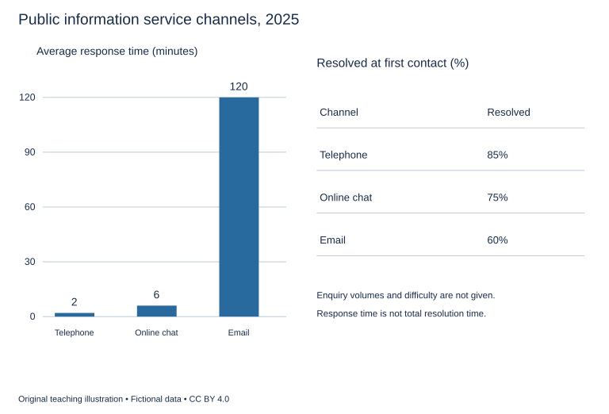
教学虚构。2025首次回复平均分钟数：Telephone2、Online chat6、Email120。首次接触即解决比例：85%、75%、60%。未给各渠道件数、问题难度、最终解决耗时或用户人口特征；不能推绝对件数或因果。
任务预算（含首次审题，不额外加时）
初稿20分钟（审题规划3、写作15、检查2）；诊断15；反馈阅读与证据核查10；完整重写25；对照归档5。合计75分钟。
初稿后自评清单
- [ ] 达到最低字数；全文连贯成段，没有用项目符号代替作文。
- [ ] 概述给主要特征；数据、阶段或方位都与题图逐项相符，不推断未提供的原因。
- [ ] 每段可写出一个功能标签；例子或数据与该段要点相连。
- [ ] 圈出两处词汇搭配和两处句法疑点，先自行修正再查询或求反馈。
- [ ] 记录一项最影响理解的问题和原句证据，不填写自猜分数。
反馈与重写
打开 独立参考页（本节下方展开参考），按逐段检查和通用协议核验。重写任务：完整重写至少150词；先列两个单位再写，结束时用1分钟逐一核对倍数与百分点；保留信息不足的边界。
本周重点操作（已含原预算）
用原有归档5分钟中的3分钟核对题干要点、最低词数、实际初稿时间，记录两项待评问题。若有先前自己的初稿，用一处原句比对复发情况；没有则作为本次记录，不捏造进步或分数。T16正式陌生卷与真人评阅另行登记。
W16 T1A 示例、反馈与重练（首答后展开）
WS-W16-T1A 独立参考页
只在初稿完成后阅读；不是唯一答案，也没有官方分数。以下是对原创示例的教学讲评，不是对学生尚未提交作文的已完成批改。
思路拆解
限时筛两个指标的排序与差距；分钟尺度0～120注意短柱可读；不得把结果归因于员工能力，题面无难度/数量。
原创示例
The bar chart shows average response times for enquiries made through three channels of a town’s public information service in 2025. The accompanying table reports the percentage resolved at the first contact through each channel.
Overall, the telephone had the shortest response time and the highest first-contact resolution rate. Email was the slowest channel and had the lowest resolution rate. The online chat service occupied the middle position for both measures.
Telephone enquiries received a response after an average of two minutes, compared with six minutes for online chat. Email responses took an average of 120 minutes, making this channel considerably slower than the other two. Its average was twenty times the figure for online chat, while chat users waited three times as long as telephone users on average.
The telephone service resolved 85% of enquiries at the first contact. The corresponding proportion was 75% for online chat and 60% for email. The gap between telephone and email was therefore twenty-five percentage points, while chat exceeded email by fifteen points. These results compare the channels, but the information does not show whether they received enquiries of similar difficulty or the same number of enquiries.
示例正文词数：194（本项目正则计数；书信不含称呼、结束语与署名；连字符词作一词）。
逐段反馈与迁移
- P1 response time非解决总耗时；resolved at first contact为另一比例指标。
- P2 三项排序两指标一致，但不证明方式造成结果。
- P3 120/6=20，6/2=3；所有时间单位分钟，平均不等于每一件。
- P4 85/75/60差25和15点；不根据百分比算解决件数，未给询问总数。
常见失误
混分钟小时；把首次回复等于全部解决；只因邮件低就批评职员或复杂问题。
可执行反馈步骤
1. 先把自己的段落标为引入、概述/论点、支持、收束；分段可不同于示例，按功能核查，不照抄段数。
2. 对照上方逐段检查，逐项标“已有证据/缺失/不适用”。每条意见必须附自己的原句或缺失位置。
3. 按 反馈协议 的四维表记录；有争议的 AI 意见回题干、数据或语法依据核验。
4. 只选两项最高优先级问题执行整篇重写；保留原稿，禁止把示例替换为自己的作业。
重写任务
完整重写至少150词；先列两个单位再写，结束时用1分钟逐一核对倍数与百分点；保留信息不足的边界。
完成后重新勾选 学生页（见本节上方学生题） 清单；将一处改前/改后及理由交给独立评阅者核查。真人评阅状态目前为“待安排”，不是已完成。
WS-W16-T1G 学生页：向公共服务中心反馈网页信息
周次 W16｜题型 T1G｜能力点：书信目的、要点与语气
Task 1 的 A/G 分支二选一，另一分支不计入本周作业。
使用与记录
原创教学练习，非真题、非标准化模拟，难度未校准。先完成本页再打开参考页。人物、机构、经历与数据均为教学虚构。不要背诵示例。自评和 AI 反馈不能代替独立真人评分，未获得真人评阅时标记“分数未确认”。
保存：任务ID、实际日期、用时、初稿或原始录音、证据化反馈、重写/重答、三条修改理由。没有学生提交物，不得填写“已批改”或“已完成训练”。
完整题干
You used a town information website but found the instructions for booking a community room unclear. Write to the information officer, Ms Lee. In your letter:
- describe the information you were looking for
- explain which part of the website was unclear
- suggest an improvement and request the information you still need.
Begin your letter: Dear Ms Lee,
Write at least 150 words. You do not need to write any addresses. Spend about 20 minutes on this task.
任务预算（含首次审题，不额外加时）
初稿20分钟（审题规划3、写作15、检查2）；诊断15；反馈阅读与证据核查10；完整重写25；对照归档5。合计75分钟。
初稿后自评清单
- [ ] 达到最低字数；全文连贯成段，没有用项目符号代替作文。
- [ ] 三个要点均展开；称呼、目的、语气和结束语适合收信人。
- [ ] 每段可写出一个功能标签；例子或数据与该段要点相连。
- [ ] 圈出两处词汇搭配和两处句法疑点，先自行修正再查询或求反馈。
- [ ] 记录一项最影响理解的问题和原句证据，不填写自猜分数。
反馈与重写
打开 独立参考页（本节下方展开参考），按逐段检查和通用协议核验。重写任务：完整重写至少150词；给每个问题配一项建议和一项待确认问题，检查词数与时间但不填未经完成的评分。
本周重点操作（已含原预算）
用原有归档5分钟中的3分钟核对题干要点、最低词数、实际初稿时间，记录两项待评问题。若有先前自己的初稿，用一处原句比对复发情况；没有则作为本次记录，不捏造进步或分数。T16正式陌生卷与真人评阅另行登记。
W16 T1G 示例、反馈与重练（首答后展开）
WS-W16-T1G 独立参考页
只在初稿完成后阅读；不是唯一答案，也没有官方分数。以下是对原创示例的教学讲评，不是对学生尚未提交作文的已完成批改。
思路拆解
半正式反馈给已知职员；所需信息→具体不清之处→改进与仍需答复，两项结尾均不可漏。
原创示例
Dear Ms Lee,
I recently used the town information website to find out how to book a community room for a small discussion group. We expect around twelve people and would like to meet on a weekday evening next month. I was looking for information about available rooms, booking arrangements and the total cost of using one for two hours.
The page lists an hourly room charge, but a separate section mentions a service fee without explaining whether it applies to every booking. I was therefore unable to work out the full amount we would need to pay. The page also asks users to submit a request form, but I could not find a link to that form beside the instructions.
It would be helpful to show a worked example of the total cost and place a clearly labelled form link on the same page. Could you also confirm whether the service fee would apply to our group and tell me where to obtain the request form? Once I have that information, I can discuss the booking with the other members.
Yours sincerely, Alex Chen
示例正文词数：178（本项目正则计数；书信不含称呼、结束语与署名；连字符词作一词）。
逐段反馈与迁移
- P1 人数时段用途和两小时给查询背景，非已完成预订。
- P2 hourly/service fee范围不明及form link缺位是可定位问题，不能泛说网站糟糕。
- P3 工作示例/同页链接对应问题，再问本组费用与表格位置；不假定费用豁免。
常见失误
只提改善却未请求仍缺信息；把未找到链接说成网站绝对没有表格；编造已缴费。
可执行反馈步骤
1. 先把自己的段落标为引入、概述/论点、支持、收束；分段可不同于示例，按功能核查，不照抄段数。
2. 对照上方逐段检查，逐项标“已有证据/缺失/不适用”。每条意见必须附自己的原句或缺失位置。
3. 按 反馈协议 的四维表记录；有争议的 AI 意见回题干、数据或语法依据核验。
4. 只选两项最高优先级问题执行整篇重写；保留原稿，禁止把示例替换为自己的作业。
重写任务
完整重写至少150词；给每个问题配一项建议和一项待确认问题，检查词数与时间但不填未经完成的评分。
完成后重新勾选 学生页（见本节上方学生题） 清单；将一处改前/改后及理由交给独立评阅者核查。真人评阅状态目前为“待安排”，不是已完成。
WS-W16-T2 学生页：公共服务全面数字化利弊
周次 W16｜题型 T2｜能力点：观点展开与任务回应
A/G 共用本题。
使用与记录
原创教学练习，非真题、非标准化模拟，难度未校准。先完成本页再打开参考页。人物、机构、经历与数据均为教学虚构。不要背诵示例。自评和 AI 反馈不能代替独立真人评分，未获得真人评阅时标记“分数未确认”。
保存：任务ID、实际日期、用时、初稿或原始录音、证据化反馈、重写/重答、三条修改理由。没有学生提交物，不得填写“已批改”或“已完成训练”。
完整题干
Many local authorities are moving services such as applications and appointments online. Do the advantages of this development outweigh the disadvantages? Give reasons and include relevant examples.
Write at least 250 words. Spend about 40 minutes on this task.
任务预算（含首次审题，不额外加时）
初稿40分钟（审题规划5、写作30、检查5）；诊断15；反馈阅读与证据核查10；完整重写35；对照归档5。合计105分钟。
初稿后自评清单
- [ ] 达到最低字数；全文连贯成段，没有用项目符号代替作文。
- [ ] 直接回答题目的所有问句，有始终一致的立场。
- [ ] 每段可写出一个功能标签；例子或数据与该段要点相连。
- [ ] 圈出两处词汇搭配和两处句法疑点，先自行修正再查询或求反馈。
- [ ] 记录一项最影响理解的问题和原句证据，不填写自猜分数。
反馈与重写
打开 独立参考页（本节下方展开参考），按逐段检查和通用协议核验。重写任务：完整重写至少250词；用同一标准比较便利与排除风险。记录初稿20/40分配和两项复发错误，待真人反馈再判评分，不能从示例推分。
本周重点操作（已含原预算）
用原有归档5分钟中的3分钟核对题干要点、最低词数、实际初稿时间，记录两项待评问题。若有先前自己的初稿，用一处原句比对复发情况；没有则作为本次记录，不捏造进步或分数。T16正式陌生卷与真人评阅另行登记。
W16 T2 示例、反馈与重练（首答后展开）
WS-W16-T2 独立参考页
只在初稿完成后阅读；不是唯一答案，也没有官方分数。以下是对原创示例的教学讲评，不是对学生尚未提交作文的已完成批改。
思路拆解
利弊权衡条件为有支持、不是全取消线下；常规与例外情境比较；W16核回应/证据/时间，非推分。
原创示例
Moving local services online can make routine tasks easier for residents and reduce repeated administrative work. I believe the advantages generally outweigh the disadvantages when digital access is added alongside suitable support. Replacing all other routes, however, would create barriers that weaken that case.
Online services can remove the need to visit an office for every straightforward request. Someone applying for a routine appointment may be able to choose a time and check the required documents outside office hours. Staff can also receive information in a consistent format, reducing the need to enter the same details repeatedly. For residents with long journeys or inflexible working hours, avoiding an unnecessary visit can be a substantial benefit. The gain is strongest where the task is clearly defined and the instructions are easy to follow.
The disadvantages concern access and the handling of unusual situations. Some residents lack a reliable connection or the confidence to complete a digital form. Others may have a case that does not fit the available options. A form that is efficient for most applicants can still be frustrating when there is no way to explain an exception. These difficulties should not be dismissed simply because the majority complete the process successfully; essential public services must remain usable by people with different circumstances.
In my view, these problems can be limited through assisted access and a clear route to a person. Libraries or service centres could help residents complete routine applications, while telephone or in-person appointments could remain available for complex cases. Authorities should also test instructions with ordinary users rather than assume that a technically functioning website is understandable. Such support has a cost, but it allows the convenience of digital services to reach more people.
Overall, online access offers greater benefits than drawbacks when it reduces unnecessary effort without excluding residents who need help. The appropriate goal is a reliable range of ways to complete a task, rather than digital delivery for its own sake.
示例正文词数：328（本项目正则计数；书信不含称呼、结束语与署名；连字符词作一词）。
逐段反馈与迁移
- P1 online增加与替代所有渠道区分，立场清楚。
- P2 定时申请、资料一致如何省往返/录入具体，未编成本下降数。
- P3 连接/信心/特殊情境分别展示边界，不能只靠多数满意否定少数障碍。
- P4 支持与真人路线对应问题，明确也有成本；不是无成本完美解决。
- P5 总体判断与条件一致，不声称所有数字项目有益。
常见失误
只泛写科技改变世界；忽略公共服务必须可达；既说全面取代又靠线下例外但不说明条件。
可执行反馈步骤
1. 先把自己的段落标为引入、概述/论点、支持、收束；分段可不同于示例，按功能核查，不照抄段数。
2. 对照上方逐段检查，逐项标“已有证据/缺失/不适用”。每条意见必须附自己的原句或缺失位置。
3. 按 反馈协议 的四维表记录；有争议的 AI 意见回题干、数据或语法依据核验。
4. 只选两项最高优先级问题执行整篇重写；保留原稿，禁止把示例替换为自己的作业。
重写任务
完整重写至少250词；用同一标准比较便利与排除风险。记录初稿20/40分配和两项复发错误，待真人反馈再判评分，不能从示例推分。
完成后重新勾选 学生页（见本节上方学生题） 清单；将一处改前/改后及理由交给独立评阅者核查。真人评阅状态目前为“待安排”，不是已完成。
WS-W16-S1 学生页
周次W16｜Part 1专项｜能力点：完整流程与证据化阶段检查｜30分钟
使用与记录
原创教学练习，非真题、非标准化模拟，难度未校准。先完成本页再打开参考页。人物、机构、经历与数据均为教学虚构。不要背诵示例。自评和 AI 反馈不能代替独立真人评分，未获得真人评阅时标记“分数未确认”。
保存：任务ID、实际日期、用时、初稿或原始录音、证据化反馈、重写/重答、三条修改理由。没有学生提交物，不得填写“已批改”或“已完成训练”。
操作与预算
设备与审题3分钟；首答录音6；回听及局部转写7；示例和诊断5；不看稿重答6；归档3。共30分钟。
Part 1专项题
1. Do you prefer asking questions by phone or in writing?
2. What information do you check before contacting a service?
3. Do you find online forms easy to use?
4. What do you do if a reply does not answer your question?
追问：
- Would your choice depend on how urgent the question was?
- Can you give a specific example?
录音回听清单
- [ ] 保留首答原音，记录实际时长、是否中断、是否看稿；只报真实完成状态。
- [ ] 流利与连贯：标出两处时间戳，区分构思停顿与重复搜词，检查是否偏离问句。
- [ ] 词汇：找一处模糊词或重复表达，先解释原意再替换；不为难词改变意思。
- [ ] 语法：核对经历与习惯的时态；局部转写并更正两处妨碍理解的问题。
- [ ] 发音：不看转写听30秒，标听不清的词尾、重音或断句；没有音频不能判断发音。
- [ ] 展开：主要回答有具体情境或理由；追问后第一句回应追问的新角度。
重答要求
选择两个只有笼统判断的答案，先直接回应再加具体情境；重答一条追问，检查是否真正回应其新角度。
首答回听后才打开独立参考页（本节下方展开参考）。按反馈协议填至少三个时间戳，不以文字转写替代音频评阅。
本周重点操作（已含原预算）
用原有归档时段中的3分钟记录首答实际时长、题目覆盖、一个内容问题和一个语言/发音待评点（须原音证据）。有旧录音才作证据比较，没有就保留本次基线。原创建材不是正式T16模考或真人评分完成。
W16 S1 示例、反馈与重练（首答后展开）
WS-W16-S1 独立参考页
原创教学示例，非真题或评分结果。未收到学生音频；以下是示例分析与待执行反馈，不能登记为已完成学生批改。
展开示例
直接回应→原因→具体情境的展开示例
I prefer writing when I need to include dates or reference numbers, because I can check them before sending the message. For an urgent question, I may phone instead. If a written reply misses the point, I usually repeat the exact question and explain which information is still missing, rather than send the whole original message again.
纯口答示例词数：57；只计MODEL标记内实际英文口答，不含标题、标签、说明。词数不能证明录音时长或流利度。
展开与反馈
本周能力：完整流程与证据化阶段检查。
1. 示例先表态，再说明偏好理由，最后提供条件或场景。检查自己是否用一个词回答后就结束。
2. 找到一个具体细节：物品、动作、对话或地点。用自己的经历替换，保持与题卡相关，不照搬示例身份与经历。
3. 追问要重新回应，不能继续背长答。首句先回答追问，再用一条理由支持。
4. 标出一处听不清或语法影响理解的原音时间戳；先尝试最小修正。不要把自然停顿一概当成错误，或用加快语速掩盖逻辑断裂。
常见失误
空泛形容词替代具体过程；给了经历却没解释为什么重要；Part 3只有个人故事没有一般解释；AI只看转写就判断发音。逐项回原音核对，不能凭范例推断自己已达到某个分数。
可执行重答与反馈
选择两个只有笼统判断的答案，先直接回应再加具体情境；重答一条追问，检查是否真正回应其新角度。
填写反馈协议四维表，附三个时间戳和原话证据。选一个内容问题与一个语言问题先修；重答后并排听两段，记录改善与仍未解决之处。自评与AI不能替代独立真人评分；独立评阅目前待安排，分数未确认。
WS-W16-S2 学生页
周次W16｜Part 2专项｜能力点：完整流程与证据化阶段检查｜30分钟
使用与记录
原创教学练习，非真题、非标准化模拟，难度未校准。先完成本页再打开参考页。人物、机构、经历与数据均为教学虚构。不要背诵示例。自评和 AI 反馈不能代替独立真人评分，未获得真人评阅时标记“分数未确认”。
保存：任务ID、实际日期、用时、初稿或原始录音、证据化反馈、重写/重答、三条修改理由。没有学生提交物，不得填写“已批改”或“已完成训练”。
操作与预算
准备、首答录音及追问5分钟；回听及局部转写8；示例与诊断5；关键词重组3；重答及追问5；归档4。共30分钟。
Part 2专项任务卡
Describe a time you obtained useful information from a service. Say what you needed to know, how you contacted the service, what answer you received, and explain how it helped you.
准备1分钟，说1～2分钟。只记5个关键词，不预写句子。
收尾追问：
- Was the information easy to understand?
- Would you contact the same service again?
录音回听清单
- [ ] 保留首答原音，记录实际时长、是否中断、是否看稿；只报真实完成状态。
- [ ] 流利与连贯：标出两处时间戳，区分构思停顿与重复搜词，检查是否偏离问句。
- [ ] 词汇：找一处模糊词或重复表达，先解释原意再替换；不为难词改变意思。
- [ ] 语法：核对经历与习惯的时态；局部转写并更正两处妨碍理解的问题。
- [ ] 发音：不看转写听30秒，标听不清的词尾、重音或断句；没有音频不能判断发音。
- [ ] 展开：主要回答有具体情境或理由；追问后第一句回应追问的新角度。
重答要求
用五个关键词重答完整任务卡1～2分钟，再答两条追问；补一处具体行动或细节并删一处无关背景。比较首答与重答，不背示例。
首答回听后才打开独立参考页（本节下方展开参考）。按反馈协议填至少三个时间戳，不以文字转写替代音频评阅。
本周重点操作（已含原预算）
用原有归档时段中的3分钟记录首答实际时长、题目覆盖、一个内容问题和一个语言/发音待评点（须原音证据）。有旧录音才作证据比较，没有就保留本次基线。原创建材不是正式T16模考或真人评分完成。
W16 S2 示例、反馈与重练（首答后展开）
WS-W16-S2 独立参考页
原创教学示例，非真题或评分结果。未收到学生音频；以下是示例分析与待执行反馈，不能登记为已完成学生批改。
展开示例
原创长答示例（时长须以个人实际录音测量）
I obtained useful information from a community centre when I was helping plan a small discussion meeting. We needed a room for about twelve people, but the website did not make it clear whether chairs and a screen were included in the charge.
I sent an email describing the size of the group and the length of the meeting. I asked specifically which equipment was included and whether we would need time before the booking to arrange the room. Writing the questions down helped me notice what I actually needed to confirm.
The reply listed the available equipment and explained that setup time had to be included in the booking. It also offered an earlier slot that would give us enough time to prepare without rushing.
The information helped us choose a realistic booking period and explain the cost to the rest of the group. I appreciated that the answer addressed our questions directly rather than simply sending the website link again. I would use the service another time, while checking the current arrangements rather than assuming they never change.
纯口答示例词数：180；只计MODEL标记内实际英文口答，不含标题、标签、说明。词数不能证明录音时长或流利度。
展开与反馈
本周能力：完整流程与证据化阶段检查。
1. 长答示例按背景、行动/观察、变化与意义组织。每段都推进内容；检查自己是否只有背景而没有具体事件。
2. 找到一个具体细节：物品、动作、对话或地点。用自己的经历替换，保持与题卡相关，不照搬示例身份与经历。
3. 追问要重新回应，不能继续背长答。首句先回答追问，再用一条理由支持。
4. 标出一处听不清或语法影响理解的原音时间戳；先尝试最小修正。不要把自然停顿一概当成错误，或用加快语速掩盖逻辑断裂。
常见失误
空泛形容词替代具体过程；给了经历却没解释为什么重要；Part 3只有个人故事没有一般解释；AI只看转写就判断发音。逐项回原音核对，不能凭范例推断自己已达到某个分数。
可执行重答与反馈
用五个关键词重答完整任务卡1～2分钟，再答两条追问；补一处具体行动或细节并删一处无关背景。比较首答与重答，不背示例。
填写反馈协议四维表，附三个时间戳和原话证据。选一个内容问题与一个语言问题先修；重答后并排听两段，记录改善与仍未解决之处。自评与AI不能替代独立真人评分；独立评阅目前待安排，分数未确认。
WS-W16-S3 学生页
周次W16｜三部分全流程｜能力点：完整流程与证据化阶段检查｜60分钟
使用与记录
原创教学练习，非真题、非标准化模拟，难度未校准。先完成本页再打开参考页。人物、机构、经历与数据均为教学虚构。不要背诵示例。自评和 AI 反馈不能代替独立真人评分，未获得真人评阅时标记“分数未确认”。
保存：任务ID、实际日期、用时、初稿或原始录音、证据化反馈、重写/重答、三条修改理由。没有学生提交物，不得填写“已批改”或“已完成训练”。
操作与预算
D5：设备与流程准备2分钟，连续首答11～14分钟，余14～17分钟完整回听标记，共30分钟。D6：局部转写诊断10，阅读示例与调整5，重答与新追问10，对照归档5，共30分钟。合计60分钟。
连续三部分全流程（首答不可看参考）
找同伴读题，或独练逐题揭示。完整首答11～14分钟，中途不暂停纠错。模拟同伴不是认证考官；自行读题的练习记录不能冒充真实面试。
Part 1：4～5分钟
1. Do you like checking your progress when learning?
2. How do you keep track of tasks?
3. Do you prefer getting feedback immediately or later?
4. What do you do when the same problem happens again?
5. Do you often ask for help?
6. What makes feedback useful to you?
可按回答追加 Why? / Can you give an example? 到时转下部分，不强行说完全部备用问题。
Part 2：3～4分钟（含准备）
Describe a time you used feedback to improve something. Say what you were working on, who or what gave you feedback, what you changed, and explain how you checked the result.
准备1分钟，连续说1～2分钟。收尾追问：
- Was every suggestion useful?
- Is there anything you would still like to improve?
Part 3：4～5分钟
1. Why is it useful to check progress at intervals?
2. What are the limitations of judging your own performance?
3. How should feedback influence future practice?
4. Can one successful attempt prove that a skill has been mastered?
根据回答追加追问：
- Why might performance differ on an unfamiliar task?
- What should someone do if evidence and confidence do not match?
录音回听清单
- [ ] 保留首答原音，记录实际时长、是否中断、是否看稿；只报真实完成状态。
- [ ] 流利与连贯：标出两处时间戳，区分构思停顿与重复搜词，检查是否偏离问句。
- [ ] 词汇：找一处模糊词或重复表达，先解释原意再替换；不为难词改变意思。
- [ ] 语法：核对经历与习惯的时态；局部转写并更正两处妨碍理解的问题。
- [ ] 发音：不看转写听30秒，标听不清的词尾、重音或断句；没有音频不能判断发音。
- [ ] 展开：主要回答有具体情境或理由；追问后第一句回应追问的新角度。
重答要求
重答最弱的一个Part 1问题、完整Part 2及一个Part 3问题，再答一条未用追问。用不同细节或补一个例外，确认不是复述范例；局部重答不另计全流程。
首答回听后才打开独立参考页（本节下方展开参考）。按反馈协议填至少三个时间戳，不以文字转写替代音频评阅。
本周重点操作（已含原预算）
用原有归档时段中的3分钟记录首答实际时长、题目覆盖、一个内容问题和一个语言/发音待评点（须原音证据）。有旧录音才作证据比较，没有就保留本次基线。原创建材不是正式T16模考或真人评分完成。
W16 S3 示例、反馈与重练（首答后展开）
WS-W16-S3 独立参考页
原创教学示例，非真题或评分结果。未收到学生音频；以下是示例分析与待执行反馈，不能登记为已完成学生批改。
展开示例
Part 2原创展开示例（个人语速不同，不能以词数推录音时长）
I used feedback to improve a short guide for new volunteers at a local event. I had written instructions for setting up the registration desk, and I thought they were clear because I knew the process well.
Before the event, I asked a new volunteer to read the guide and explain what she would do first. She was unsure where the materials were stored and whether she should arrange the signs before opening the boxes. Those details had seemed obvious to me, so I had left them out.
I revised the guide to begin with the storage location and then listed the actions in order. I also removed a paragraph about the history of the event, which did not help anyone set up the desk.
To check the change, I asked another volunteer to follow the revised instructions during a practice setup. He completed the task with fewer questions, although one sign still needed a clearer label. The experience taught me to look for evidence that feedback has helped, rather than assume that a longer or more polished document is automatically better.
Part 3观点→理由→条件展开示例
One successful attempt is useful evidence, but it may reflect familiarity with the task or unusually helpful conditions. I would look for similar performance on several different tasks and ask someone else to identify weaknesses I might miss. Confidence matters because it affects willingness to try, but it should not replace evidence about whether the task was actually completed well.
纯口答示例词数：242；只计MODEL标记内实际英文口答，不含标题、标签、说明。词数不能证明录音时长或流利度。
展开与反馈
本周能力：完整流程与证据化阶段检查。
1. 长答示例按背景、行动/观察、变化与意义组织。每段都推进内容；检查自己是否只有背景而没有具体事件。
2. 找到一个具体细节：物品、动作、对话或地点。用自己的经历替换，保持与题卡相关，不照搬示例身份与经历。
3. Part 3示例不把个人选择强加给所有人；先讲机制，再说明条件或例外。检查自己的追问答案是否直接回应新问题。
4. 标出一处听不清或语法影响理解的原音时间戳；先尝试最小修正。不要把自然停顿一概当成错误，或用加快语速掩盖逻辑断裂。
常见失误
空泛形容词替代具体过程；给了经历却没解释为什么重要；Part 3只有个人故事没有一般解释；AI只看转写就判断发音。逐项回原音核对，不能凭范例推断自己已达到某个分数。
可执行重答与反馈
重答最弱的一个Part 1问题、完整Part 2及一个Part 3问题，再答一条未用追问。用不同细节或补一个例外，确认不是复述范例；局部重答不另计全流程。
填写反馈协议四维表，附三个时间戳和原话证据。选一个内容问题与一个语言问题先修；重答后并排听两段，记录改善与仍未解决之处。自评与AI不能替代独立真人评分；独立评阅目前待安排，分数未确认。
许可
原创文字：RayXBuilds and contributors，CC BY 4.0。此页由已验收分课汇编，调整了标题和导航；题干、正文和答案内容保留。公开第三方音频未包含。
回到顶部
U25 阅读复盘与写作口语反馈协议
W13–16 训练与复测记录
每周必做180分钟：60分钟合卷首答、60分钟证据精读、30分钟词汇长句、48小时后30分钟复测。合卷替代三课首答，不重复计量。以下记录属于该预算，不另加必做任务；每课80–100词短文选做另加15分钟，每周最多45分钟。实际学习者耗时未测，空白记录不代表训练已完成。
W13 时间分配
首答前可按每篇约20分钟起步；根据实际难度调整，但全卷合计60分钟。记录停滞题并继续，不靠反复无证据猜测消耗剩余时间。
| 篇/题组 | 预计分钟 | 实际开始/结束 | 停滞题号 | 回看时可用分钟 | 是否找到证据 |
| 待填写 |
复盘区分“读不懂”“定位慢”“已找到但反复犹豫”。48小时后抽取同类错题及两道原本正确题，观察耗时与证据定位是否改善。
W14 问题回应与限制词
| 题号 | 题目具体问什么/需哪种答案 | only/all/some/unless等条件 | 最短证据 | 一个相关但不作答的信息 | 修正答案 |
| 待填写 |
先检查回答对象是否正确，再检查限制词。YES/NO针对作者立场：NO要有明确相反依据，NG不是“听起来不可能”，也不能将未述意图与已述起源事实混在同一句中。
W15 因果、比较与例外
| 题号/段落 | 提出的因果或比较 | 比较基准/共同条件 | 其他可能解释 | 例外否定的具体范围 | 仍可成立的有限结论 |
| 待填写 |
把“同时发生”与“某机制可以解释”分开；把“平均”与“每次”分开。一个反例可以否定全称而不抹去所有局部规律。延迟复测需重新说出被反驳的原句，而不是只背NO或段落字母。
W16 原创阶段检查
本周合卷40题为原创技能检查，非雅思真题/标准化模考，不进行等级或保分推断。不能替代正式T16陌生卷；其来源、合法获取、未接触确认和实做记录另列于 FORMAL-ASSESSMENT.md，目前未完成。
| 题型 | 首次正确/总题数 | 主要错因 | 48小时重做正确/重做题数 | 是否重复同类错误 | 下一次动作 |
| 单项选择 |
| YES/NO/NOT GIVEN |
| 段落信息匹配 |
| 句子/摘要填空 |
首答限时60分钟，不查词、不先读答案；复测遮住解析，既抽错题也抽正确题。若重做仍错，标明是定位、立场、限制词、语法或词数问题，再对照原文。不要把重做熟悉的同一篇算作陌生卷成绩。
写说反馈协议与交接表
适用于WS-W13～W16全部课项。在题目所列预算内完成。这里是待执行流程与空白记录模板，不是已完成批改。自评和AI不能代替独立真人评分；没有独立评阅时，成绩栏只能写“分数未确认”。
写作：先证据后修改
1. 保留初稿和限时记录；先逐项核题干。A类数字回图表，流程核顺序与分支，地图核方位和替换/扩建，G类逐一标三要点，Task 2标题目问句与立场。
2. 给每段一个功能标签，检查是否缺概述、缺例子或缺结论。使用课内逐段讲评时按功能对齐，不要求复制范文段数。
3. 四维表至少填四条证据，不需要每项都有错误；可写“证据充分”并引用原句。优先解决任务遗漏与理解障碍，再处理语言精确性。
4. 在每题10分钟反馈时段看示例、核查争议；只选两项主要问题。按学生页要求整篇重写，保留内容相似度但不用示例替代原稿。
5. 用5分钟对照重写：写三条“原句→新句→理由”，其中至少一条属于内容或组织。再次检查最低字数和所有题干要点。
| 维度 | 初稿原句/段号或缺失位置 | 具体问题及依据 | 修改行动 | 重写证据 | 来源 |
| 任务完成/回应 | 待填 | 待填 | 待填 | 待填 | 自评/AI/真人姓名与日期 |
| 连贯与衔接 | 待填 | 待填 | 待填 | 待填 | 待填 |
| 词汇资源 | 待填 | 待填 | 待填 | 待填 | 待填 |
| 语法范围与准确性 | 待填 | 待填 | 待填 | 待填 | 待填 |
可给AI的请求（须附完整题干和自己的真实初稿）：
> 按任务回应、连贯、词汇、语法给证据化建议。每条引用我的原句或指出缺失的题干要点，说明为什么影响表达，给最小修改方向。区分确定错误与可选改写。先提两项最高优先级问题，不给分数，不声称真人评分，不替我重写整篇。Task 1数据只能来自题面。不能确认的地方明确标记待核查。
核查AI：先对照数据和题干，再判断改写是否改变原意。AI意见有矛盾时保留争议并交真人核查；不能把AI自信程度当作正确性。
口语：音频优先
1. 保留完整首答。首次回听不看转写，标记听不清、断裂和偏题的时间戳。
2. 局部转写最多60～90秒，核对原音，尤其是自动转写可能改掉的语法错误。转写只辅助诊断，不替代录音。
3. 每项意见附时间戳；至少处理一个展开问题与一个语言或发音问题。发音判断需实际音频，不能依据文字想象。
4. 只看关键词重答，使用课内新追问检验能否迁移。比较原音和重答，不把慢读一份修改稿算作即兴进步。
| 维度 | 首答时间戳与听到的现象 | 改善动作 | 重答时间戳与证据 |
| 流利与连贯 | 待填 | 待填 | 待填 |
| 词汇资源 | 待填 | 待填 | 待填 |
| 语法范围与准确性 | 待填 | 待填 | 待填 |
| 发音与可理解度 | 待填；没有音频不得判断 | 待填 | 待填 |
可给AI的请求：
> 若能处理音频，请引用时间戳，指出两处最影响理解的问题，并用我的具体内容示范如何扩展或澄清。不要给官方分数。若只能看到转写，只反馈文本中的内容、词汇与语法，明确不能判断发音、真实停顿或口语流利度；不要编造听过录音。
真人交接与验收（待执行）
交付包：任务ID、完整题干/数据、未修改初稿、重写稿及修改理由；口语完整原始音频、实际时长、题目、局部转写和重答片段。请求评阅者指出四个维度的证据，区分限时初稿表现与辅导后表现，并反馈下一轮最优先任务。若给估分，记录评阅者资历、日期与不确定性，不能标为官方考试成绩。
登记：评阅者____；日期____；已收到材料____；意见文件____；分歧与待核实____；学生落实证据____。空栏就是待完成，不预填虚构记录。尚未有正式目标分数与可信独立评估时，只汇报具体改进和未解决问题，不做达标或提分保证。
回到顶部
U26 第17周：长篇阅读、写作与口语
本页为已独立核验的原创文字课程。先完成学生题目，再展开对应参考。非真题、非标准化模考，不换算雅思分数。听力尚未补齐，本页不代表全科课程已完成。
每周选A或G类Task 1一题，加Task 2及三次口语。参考范文不是学生已完成作业，仍须提交初稿、录音和重写，独立真人评分另行安排。
阅读每周180分钟（60分钟首次限时、120分钟证据精读与延迟复测），写作180分钟、口语120分钟。词汇60分钟、听力180分钟另列；新增完整听力未验收，不能勾整周完成。
W20原创阶段检查按实际证据复盘；正式T20陌生整卷及真人评分另记，缺少目标或真实证据时不能据此判断报考/延长，本页原创技能卷不能代替正式模拟。后续周数与达标规则见 U04。
阅读：首答不查词
R-W17-01 · Why the Package Is Hard to Open
W17｜正文 856 词｜13 题｜篇章：过程比较：运输保护与使用入口（6段）
本课必做60分钟：首答20、证据复盘20、词汇长句10、48小时后复测10。每周三课180分钟，合卷首答替代单课首答，不重复计算。开放短文选做另加15分钟。
本项目原创虚构教学情境，人物、地点、历史事件和案例数据均非真实研究或史料。科学解释只讨论文内说明的模型与条件。非雅思真题或标准化模考；正确数不换算雅思等级。许可：CC BY 4.0 — RayXBuilds and contributors。
能力点：识别论证关系、区分作者与引述者、条件与因果、精确定位。初读不查词，完成后打开独立答案页。
Passage
A At the fictional design firm Leto, a package for a fragile ceramic ornament survives every delivery trial but frustrates many recipients. Some cut through a hidden fastening, while others pull at a decorative fold that was never intended to open. The delivery team calls the package successful because the ornament arrives intact. The customer team calls it unsuccessful because reaching the object feels like solving a puzzle. Neither observation needs to be false. The package performs a sequence of jobs, and success at one stage can create difficulty at another. Its design must hold an object securely during movement, communicate where access begins and release it without demanding actions the user is unlikely to anticipate. Looking only at the final condition of the ornament leaves part of that sequence outside the account of performance.
B The first design uses a continuous sleeve around an inner box. This distributes pressure during handling and prevents the lid from lifting accidentally. However, the sleeve's printed pattern crosses the opening line, making the boundary visually difficult to identify. The designers initially add the word open beside a decorative curve. That instruction gives a goal without making the required movement clear. A user still has to decide whether to slide, lift or tear. The team therefore distinguishes an instruction from a visible opportunity for action. Words can help, but they cannot always compensate for a shape that suggests the wrong movement. The revised design adds a pull tab whose position and direction correspond to the motion actually needed to remove the sleeve, rather than relying on the user to infer an invisible mechanical relationship from a general invitation.
C Testing the tab reveals a second problem. It works for someone holding the package firmly on a table, but bends when the package is held with one hand. The designer's own demonstration had silently supplied support that ordinary users might not have. This does not mean that every package must work in every imaginable posture. It means that the conditions of the test should resemble the circumstances the design claims to serve. The team identifies likely situations before changing the fastening again: opening at a desk, opening while standing, and opening after the outer wrapper has become slightly damaged. A result from one carefully arranged demonstration is not treated as evidence of universal ease. Nor is one difficult attempt used to declare the entire design hopeless without examining which part of the action created the difficulty.
D The inner protection presents another tradeoff. A close-fitting insert prevents the ornament from moving, but leaves little space for fingers to lift it. The team considers adding a ribbon beneath the object so that lifting the ribbon raises the ornament evenly. This changes the sequence of opening and must therefore be made visible at the right moment. If the ribbon looks like part of the decoration, a user may ignore it; if it protrudes outside the closed package, it may catch during transport. The useful question is not whether more guidance is always better. It is when a cue becomes relevant and whether it can be perceived without interfering with the earlier stage of the package's life. Design for access cannot be separated completely from design for restraint, even though the two aims sometimes pull in opposite directions.
E Observers record each attempt on an opening sheet. The sheet has explicit fields for the first part touched, the action attempted and any request for help. A movement diagram separately shows the intended order of sliding the sleeve, lifting the lid and using the ribbon. Comparing the two records reveals where the imagined sequence and the user's sequence diverge. The team also keeps a damage log recording what is torn or bent during opening, including damage that does not affect the ornament. This matters because a package intended to be reused may have a different acceptable outcome from one intended only to protect a single delivery. The observers do not count every torn piece as failure without reference to the stated purpose, but they also do not exclude it merely because the valuable object itself remains intact.
F The final prototype includes a small reuse card explaining how the parts fit together again. Users who are not expected to keep the box can ignore it without losing information needed to open the package. A transport label, used only by the testing team, records which handling trial each prototype has completed. These additions keep different kinds of information attached to the stage where they are useful. The designers still refuse to describe the package as effortless for everyone. Instead, they can explain which situations were tested, where assistance was needed and what changed as a result. Leto's example illustrates a broader lesson about everyday objects: apparent simplicity often depends on arranging a sequence so that the next action becomes understandable when it is needed. A container that resists accidental opening during travel must eventually invite deliberate opening, and that transition deserves as much attention as the protective shell that first made it look secure. Otherwise, the effort saved during delivery can simply reappear as unnecessary work for the person receiving the object.
Questions
Complete the sentences. Choose NO MORE THAN 3 WORDS FROM THE PASSAGE for each answer. Do not change word forms.
1. First touches, attempted actions and requests for help are entered on an ______.
2. The intended sequence of sliding, lifting and using the ribbon is shown in a ______.
3. Tears and bends are documented in a ______.
4. Reassembly instructions appear on a small ______.
5. Completed handling trials are identified by a ______ used only by testers.
Choose ONE answer, A, B, C or D.
6. Why can the two teams reach different judgements without contradiction?
A. One never sees the ornament B. Opening always destroys the contents C. Transport has no relevance D. They evaluate different stages of the package’s use
7. The original word open is inadequate because
A. it guarantees tearing B. all written instructions fail C. it names a material D. it does not specify the required action
8. What did the designer’s demonstration unintentionally supply?
A. A different ornament B. Physical support unavailable in some ordinary situations C. A new instruction language D. Proof of universal ease
9. The ribbon example emphasises
A. an inevitable conflict with all protection B. the uselessness of inserts C. the need to expose every cue during transport D. the timing and visibility of a useful cue
Do the following statements agree with the writer's views? Write YES, NO or NOT GIVEN. YES = the writer agrees; NO = the writer expresses the opposite view; NOT GIVEN = the writer's view is not stated. Do not use outside knowledge.
10. Every torn piece should be judged a failure regardless of the package’s purpose.
11. A single supported demonstration establishes ease in all likely situations.
12. The writer recommends charging recipients for replacement packaging.
13. Understanding the transition from protection to deliberate access matters to design.
本周重点
依据实际错题选至多两类重点：先填写可核验题号、原答案及错因；无记录则待诊断，不自行虚构弱项。
复盘
必做：给每道错题标记“定位/作者立场/范围/语法/词数”，抄最短证据；用一行箭头概括本文论证或过程。48小时后重做错题与两道正确题，检查是否仍能指出证据。
选做（15分钟，80–100词）：Explain one reason why protection and access need to be designed as a sequence.
R-W17-01 答案、证据与精读（首答后展开）
R-W17-01 · 独立答案与证据
来源与许可同学生页。先完成再核对。可接受答案由 accepted_answers 明确列出；只忽略大小写和首尾空格，不自行删词。开放复盘不计入客观正确数。
1. opening sheet｜段落 E｜证据：“an opening sheet”
sheet不能单独接an。
2. movement diagram / diagram｜段落 E｜证据：“A movement diagram separately shows”
diagram为合理短答；记录实测尝试的sheet没有意图动作序列。
3. damage log / log｜段落 E｜证据：“a damage log recording what is torn or bent”
log可接受，字段明确。
4. reuse card / card｜段落 F｜证据：“a small reuse card”
small已给，不重复；card可接受。
5. transport label / label｜段落 F｜证据：“A transport label, used only by the testing team”
label可接受。
6. D｜段落 A｜证据：“success at one stage can create difficulty at another”
保护与可打开性是不同阶段要求。
7. D｜段落 B｜证据：“whether to slide, lift or tear”
目标不等于动作线索。
8. B｜段落 C｜证据：“silently supplied support”
桌面支撑是隐藏条件。
9. D｜段落 D｜证据：“when a cue becomes relevant”
线索须匹配阶段。
10. NO｜段落 E｜证据：“do not count every torn piece as failure”
作者明确目的相关。
11. NO｜段落 C｜证据：“not treated as evidence of universal ease”
反对范围扩大。
12. NOT GIVEN｜段落 F｜证据：“a small reuse card”
未讨论收费政策；重用信息不意味着费用主张。
13. YES｜段落 F｜证据：“that transition deserves as much attention”
结论明确。
词汇与长句
- restraint：阻止不希望发生的移动
- cue：提示下一动作的线索
- prototype：用于检验设计的样品
- fastening：固定或闭合部件
> If the ribbon looks like part of the decoration, a user may ignore it; if it protrudes outside the closed package, it may catch during transport.
两个if给出相反风险，may表示可能而非必然。
> The observers do not count every torn piece as failure without reference to the stated purpose, but they also do not exclude it merely because the valuable object itself remains intact.
but连接两项限制；不一概判失败，也不一概忽略。
开放任务参考
B/D动作线索应按阶段出现，E成功标准需包括打开和重用，不只物品完好。
标准：观点有文内依据，保留条件和范围，推断明确标注；不存在唯一措辞。
R-W17-02 · The Street with Several Names
W17｜正文 981 词｜13 题｜篇章：虚构历史：地名、使用群体与标准化（8段）
本课必做60分钟：首答20、证据复盘20、词汇长句10、48小时后复测10。每周三课180分钟，合卷首答替代单课首答，不重复计算。开放短文选做另加15分钟。
本项目原创虚构教学情境，人物、地点、历史事件和案例数据均非真实研究或史料。科学解释只讨论文内说明的模型与条件。非雅思真题或标准化模考；正确数不换算雅思等级。许可：CC BY 4.0 — RayXBuilds and contributors。
能力点：识别论证关系、区分作者与引述者、条件与因果、精确定位。初读不查词，完成后打开独立答案页。
Passage
A In the fictional port of Senna, an alley appears under four names in surviving documents. Traders call it Rope Lane, residents call it Lower Passage, a shipping office records it as Dock Approach, and an old song refers to the same route as Lantern Way. A modern researcher initially assumes that the names belong to different periods and will form a simple sequence. The documents complicate that expectation: several names were used at the same time. Their coexistence reflected different ways of encountering the place rather than a town repeatedly forgetting its own geography. Before deciding which name was correct, the researcher had to ask who used each one, for what activity and in conversation with which other people.
B Rope Lane first appears in accounts kept by a merchant whose workshop stood near the entrance. For his customers, the trade was an obvious landmark. The name allowed people to locate an activity without knowing the individual houses along the route. Yet the workshop later moved, while the name remained in some family correspondence. A place name can outlive the feature that made it intelligible. This does not mean its users are necessarily making a factual claim that ropes are still produced there. They may be using an inherited label whose practical reference has become stable even as its original explanation fades. Confusing a name's continued use with a description of present conditions would make ordinary linguistic continuity appear to be a series of geographical mistakes.
C Lower Passage belonged to residents moving between their homes and a higher road. It described a relation useful within that part of town. To a newcomer arriving from the harbour, however, lower did not identify what the passage was lower than. The shipping office preferred Dock Approach because it linked the route with the destination important to its workers. Neither term was fully informative without context. Their usefulness depended on shared points of reference. The researcher therefore avoids judging every name by whether it could guide a stranger through the whole town unaided. A label may work well inside one network of activity while needing explanation when transferred into another, just as a direction can be clear to two neighbours and confusing to someone who does not share their starting point.
D Lantern Way presents a different kind of evidence. The song associates the route with a night procession, but it does not establish that this was the normal name used in everyday directions. A memorable phrase can become prominent in later retellings because it is attractive to quote. The researcher finds that a commemorative booklet calls Lantern Way the original name, although it supplies no earlier source for that claim. She records the phrase's documented use without accepting its supposed priority. This distinction preserves the song as evidence of cultural association while resisting a stronger historical assertion that the available material cannot support. A source does not have to answer every question about a place in order to tell us something important about how people represented it.
E The town eventually introduces numbered addresses to improve deliveries. Officials select Dock Approach for the sign at each end and print the numbers beside it. Residents continue using their familiar names, sometimes adding the official one when speaking to a delivery worker. The reform does not instantly replace local language. It adds a common reference for a particular administrative task. The researcher argues that this outcome should not be described either as complete failure of standardisation or as total victory over confusion. Deliveries can become more reliable while several names remain in ordinary speech. Different forms of coordination can coexist, provided people have a way to connect them when a task crosses from one group of users to another.
F To study that connection, the researcher constructs a name table. It has separate columns for the wording, the document in which it appears and the group using it. A location sketch shows entrances and landmarks, allowing references to be checked against the same physical route. The table does not force each name into a single period when the documents overlap. A date register distinguishes the date a document was written from a later date on which a copy or annotation was made. These records prevent two common errors: treating simultaneous names as successive replacements and treating a later heading as if it belonged to the original writer. Their value comes from keeping different kinds of information separate until the relationship between them can be established with reasons.
G An exhibition about the alley uses a reference card listing the official address beside the other documented names. Visitors can follow the physical route while learning how its meanings differed across activities. A quotation panel gives short extracts from the merchant's account, residents' letters and the song, identifying the source of each. The panel does not arrange the extracts as a contest in which the most vivid wording must become the truest name. It shows that a place can be practically located, commercially described and culturally remembered through different expressions. The display also identifies the unsupported claim that Lantern Way came first, so that repetition in the exhibition does not accidentally give the booklet's assertion a new appearance of independent authority.
H Senna's alley illustrates why naming history is not always a story of one word replacing another. Labels can persist, overlap and change their practical role as the people using them change. A single official address may be necessary for a delivery system without exhausting the social meanings attached to the route. Equally, recognising those meanings does not require abandoning a common reference wherever coordination needs one. The useful question is what each name enables someone to do or say and what evidence supports its history. Answering that question makes the alley more intelligible than selecting a favourite expression and treating every other form as a mistake that should disappear from the record.
Questions
Which paragraph contains the following information? Write a letter, A–H. You may use any letter more than once.
1. a place name remaining after the trade that inspired it has moved away
2. a booklet claiming priority for a poetic name without supplying an earlier source
3. an administrative address being added without immediately replacing everyday names
4. two explicitly identified dating errors prevented by separating kinds of record information
Do the following statements agree with the writer's views? Write YES, NO or NOT GIVEN. YES = the writer agrees; NO = the writer expresses the opposite view; NOT GIVEN = the writer's view is not stated. Do not use outside knowledge.
5. Continued use of a trade-based name necessarily claims that the trade is still present.
6. A song must prove the earliest name in order to have any historical value.
7. Reliable deliveries can coexist with several names in ordinary speech.
8. The writer considers one official address sufficient to exhaust every social meaning of the route.
Complete the summary. Choose NO MORE THAN 3 WORDS FROM THE PASSAGE for each answer. Do not change word forms.
Wording, source documents and user groups were listed in a (9) ______. Entrances and landmarks appeared in a (10) ______. Original and later document dates were separated in a (11) ______. An exhibition (12) ______ linked the official address with the alternatives, while a (13) ______ displayed sourced extracts.
本周重点
依据实际错题选至多两类重点：先填写可核验题号、原答案及错因；无记录则待诊断，不自行虚构弱项。
复盘
必做：给每道错题标记“定位/作者立场/范围/语法/词数”，抄最短证据；用一行箭头概括本文论证或过程。48小时后重做错题与两道正确题，检查是否仍能指出证据。
选做（15分钟，80–100词）：Explain why simultaneous names should not automatically be arranged as historical replacements.
R-W17-02 答案、证据与精读（首答后展开）
R-W17-02 · 独立答案与证据
来源与许可同学生页。先完成再核对。可接受答案由 accepted_answers 明确列出；只忽略大小写和首尾空格，不自行删词。开放复盘不计入客观正确数。
1. B｜段落 B｜证据：“the workshop later moved”
B名称与来源特征不同步。
2. D｜段落 D｜证据：“the original name”
D无据的最早命名主张。
3. E｜段落 E｜证据：“It adds a common reference”
E标准化与地方用语并存。
4. F｜段落 F｜证据：“two common errors”
F同时名误作更替、后题误作原文的组合独有。
5. NO｜段落 B｜证据：“does not mean its users are necessarily making a factual claim”
明确否定。
6. NO｜段落 D｜证据：“evidence of cultural association”
不同问题的证据价值可分。
7. YES｜段落 E｜证据：“Deliveries can become more reliable”
作者明确允许并存。
8. NO｜段落 H｜证据：“without exhausting the social meanings attached to the route”
H指出行政地址不能穷尽路线的社会意义，直接否定题干。
9. name table / table｜段落 F｜证据：“constructs a name table”
table可接受，三列明确。
10. location sketch / sketch｜段落 F｜证据：“A location sketch shows entrances and landmarks”
sketch可接受。
11. date register / register｜段落 F｜证据：“A date register distinguishes”
register可接受，原写作与后来复制/注释日期。
12. reference card / card｜段落 G｜证据：“a reference card listing the official address”
card可接受。
13. quotation panel / panel｜段落 G｜证据：“A quotation panel gives short extracts”
panel可接受，原文节录及来源。
词汇与长句
- annotation：后来附加的批注
- coexist：同时存在
- priority：历史先后中的最早地位
- inherited：沿用先前形成的
> A label may work well inside one network of activity while needing explanation when transferred into another, just as a direction can be clear to two neighbours and confusing to someone who does not share their starting point.
while和just as建立对比与类比；名称的可理解性依赖共同语境。
> A single official address may be necessary for a delivery system without exhausting the social meanings attached to the route.
without区分行政充分性与社会意义，不是否定统一地址。
开放任务参考
A/F证据显示不同群体同期使用；E官方名只是增加跨群体参照，不证明所有旧名消失。
标准：观点有文内依据，保留条件和范围，推断明确标注；不存在唯一措辞。
R-W17-03 · Can a Museum Exhibit a Smell?
W17｜正文 897 词｜14 题｜篇章：议论：感官重现、解释与选择（7段）
本课必做60分钟：首答20、证据复盘20、词汇长句10、48小时后复测10。每周三课180分钟，合卷首答替代单课首答，不重复计算。开放短文选做另加15分钟。
本项目原创虚构教学情境，人物、地点、历史事件和案例数据均非真实研究或史料。科学解释只讨论文内说明的模型与条件。非雅思真题或标准化模考；正确数不换算雅思等级。许可：CC BY 4.0 — RayXBuilds and contributors。
能力点：识别论证关系、区分作者与引述者、条件与因果、精确定位。初读不查词，完成后打开独立答案页。
Passage
A The fictional museum of Orin plans an exhibition about a former harbour warehouse. Photographs show the walls, inventories list the goods and letters describe days spent unloading cargo. A designer proposes adding a smell to make the room feel more immediate. The idea promises access to an aspect of the past that images cannot supply directly. Yet the question is not simply whether a scented room would be memorable. The writer asks what visitors would be entitled to infer from the experience. A present mixture of smells can suggest a historical setting without reproducing every condition of that setting. If the exhibit presents the sensation as a recovered piece of the past, its apparent vividness may encourage a degree of certainty that the surviving evidence does not support.
B The warehouse held different goods at different times. A merchant's letter complains about damp sacks during one season, while a worker remembers the strong smell of a particular cargo years later. Combining those descriptions into a single atmosphere could create a plausible harbour smell, but it would also combine occasions that did not necessarily occur together. The writer does not object to imaginative reconstruction as such. The objection is to leaving its choices invisible. An exhibit can say that it offers an interpretation based on selected accounts, identify which accounts were used and distinguish documented features from additions made for presentation. That explanation gives visitors a reason to ask questions instead of treating sensory intensity as a substitute for a clear account of how the display was made.
C Smell also has an unusual relation to boundaries. A picture can remain on one wall while a visitor looks elsewhere, but a smell may spread beyond the space where someone deliberately chooses to encounter it. The designer's plan therefore includes a small enclosure that visitors can enter voluntarily, with an alternative route through the same historical material. The writer supports this arrangement because declining the sensory experience should not require abandoning the subject. The issue is one of meaningful choice, not an assumption that every visitor will respond in the same way. Some may find the smell helpful, others distracting, and some may prefer to engage through description. A single sensory format should not be treated as the complete or compulsory form of understanding available in the exhibition.
D The team considers how words influence the experience. A label reading harbour in winter may lead visitors to organise the same smell differently from a label reading storage room after a delivery. Neither label is a neutral frame that leaves perception untouched. The writer argues that this does not make interpretation impossible; it makes the relationship between the sensation and its explanation part of the exhibit's design. A visitor encountering an unfamiliar smell without context may not recognise what the museum intends, while a confident label may suggest a specificity that the material cannot establish. The aim should be a productive connection between experience and explanation, rather than a competition in which either words or sensation are expected to communicate the whole historical argument alone.
E During a trial, visitors are asked what they believe the smell tells them. Some describe a general setting, while others assume that the museum has recreated one precisely documented day. The difference matters because the trial is testing an interpretation, not merely whether the mixture is noticeable. The writer would regard the second assumption as a reason to revise the display's wording if the museum lacks evidence for that day. It would not be enough to say that the exhibit was successful because people remembered it afterwards. A memorable misunderstanding can persist more readily than a careful qualification. The museum's responsibility is therefore to consider the claim visitors take away, including claims suggested by the combination of atmosphere, institutional setting and confident presentation rather than explicitly written on a label.
F The revised exhibit contains a source panel separating contemporaneous descriptions from later recollections. A reconstruction note explains that the mixture is a present interpretation of selected materials, not a preserved sample from the warehouse. The team keeps a recipe record listing the components used in each version and the date of any adjustment. This record allows staff to know whether visitors in different trial sessions encountered the same mixture. The enclosure has a choice sign explaining the optional route, and an account sheet beside the exit invites visitors to state what they inferred. Each item has a defined task: showing evidence, explaining reconstruction, tracking versions, supporting choice or recording interpretation. Merely adding more labels would not improve the exhibition if those labels failed to address the particular misunderstanding the trial had revealed.
G Orin's proposal remains worthwhile after its claims become narrower. A smell can prompt questions about labour, storage and the bodily conditions of a place, even when it cannot transport a visitor into an unchanged past. The writer rejects both the automatic celebration of sensory realism and the dismissal of every reconstruction as deception. The relevant distinction is between an interpretation that exposes its basis and one that borrows authority from the visitor's immediate experience while concealing how that experience was assembled. A museum can invite imagination without presenting imagination as recovered fact. When visitors can choose how to engage, inspect the sources and recognise what remains uncertain, the sensory element becomes one route into historical enquiry rather than an apparently final answer delivered through the nose.
Questions
Choose ONE answer, A, B, C or D.
1. The opening’s main concern is
A. whether the smell will be memorable B. what historical claim visitors infer from it C. whether letters can exist D. how to remove all photographs
2. Combining descriptions from different years risks
A. making a composite scene appear contemporaneous B. removing every smell C. eliminating interpretation D. proving a single day exactly
3. Why provide an alternative route?
A. To allow access to the history without accepting the smell B. To hide the source material C. To make the enclosure compulsory D. To force a uniform response
4. The trial primarily tests
A. whether every visitor likes museums B. whether labels can be printed C. the meaning visitors attribute to the sensation D. the price of the mixture
Do the following statements agree with the writer's views? Write YES, NO or NOT GIVEN. YES = the writer agrees; NO = the writer expresses the opposite view; NOT GIVEN = the writer's view is not stated. Do not use outside knowledge.
5. Imaginative reconstruction is necessarily deceptive.
6. A vivid memory of the exhibit is sufficient evidence of accurate understanding.
7. Visitors should be able to decline a sensory format without losing access to the subject.
8. The writer favours charging a separate admission fee for the scented enclosure.
9. A reconstruction can be useful when its evidential basis and limits are visible.
Which paragraph contains the following information? Write a letter, A–G. You may use any letter more than once.
10. a comparison between two labels that frame the same sensation differently
11. records specifying component changes and their dates across versions
12. letters and memories describing cargos at different historical moments
13. some trial visitors assuming that one precisely documented day has been recreated
14. a statement that smell may travel beyond a visitor’s chosen encounter area
本周重点
依据实际错题选至多两类重点：先填写可核验题号、原答案及错因；无记录则待诊断，不自行虚构弱项。
复盘
必做：给每道错题标记“定位/作者立场/范围/语法/词数”，抄最短证据；用一行箭头概括本文论证或过程。48小时后重做错题与两道正确题，检查是否仍能指出证据。
选做（15分钟，80–100词）：Write one label that acknowledges the reconstruction’s basis without claiming to reproduce one exact day.
R-W17-03 答案、证据与精读（首答后展开）
R-W17-03 · 独立答案与证据
来源与许可同学生页。先完成再核对。可接受答案由 accepted_answers 明确列出；只忽略大小写和首尾空格，不自行删词。开放复盘不计入客观正确数。
1. B｜段落 A｜证据：“what visitors would be entitled to infer”
体验与证据主张的关系。
2. A｜段落 B｜证据：“occasions that did not necessarily occur together”
不反对重构，反对隐藏选择。
3. A｜段落 C｜证据：“should not require abandoning the subject”
拒绝感官形式不等于退出主题。
4. C｜段落 E｜证据：“testing an interpretation”
非仅可察觉性或记忆率。
5. NO｜段落 G｜证据：“dismissal of every reconstruction as deception”
作者明确拒绝该极端。
6. NO｜段落 E｜证据：“A memorable misunderstanding can persist”
记住不等于理解正确。
7. YES｜段落 C｜证据：“declining the sensory experience”
明确支持选择。
8. NOT GIVEN｜段落 C｜证据：“enter voluntarily”
自愿选择未涉及收费建议。
9. YES｜段落 G｜证据：“an interpretation that exposes its basis”
作者有条件肯定。
10. D｜段落 D｜证据：“harbour in winter”
D双标签与解释作用。
11. F｜段落 F｜证据：“components used in each version”
F recipe record明确字段。
12. B｜段落 B｜证据：“years later”
B时间拼接风险。
13. E｜段落 E｜证据：“one precisely documented day”
E具体误读，不是A总体担忧。
14. C｜段落 C｜证据：“spread beyond the space”
C感官边界。
词汇与长句
- contemporaneous：与所述事件同一时期的
- reconstruction：依据选定材料制作的重现
- qualification：对结论适用范围的说明
- infer：根据材料作出理解或推断
> If the exhibit presents the sensation as a recovered piece of the past, its apparent vividness may encourage a degree of certainty that the surviving evidence does not support.
if条件与may可能性必须保留；that从句限定证据不能支持的确定程度。
> A museum can invite imagination without presenting imagination as recovered fact.
without区分允许想象与把想象冒充史实，不是拒绝所有重构。
开放任务参考
B/F说明选材时代与现配混合，G允许引发问题但不把体验等同保存的历史样本。
标准：观点有文内依据，保留条件和范围，推断明确标注；不存在唯一措辞。
写作与口语：Task 1双分支择一
WS-W17-T1A 学生页：招聘活动参与情况
周次 W17｜题型 T1A｜能力点：分组数据与证据诊断
Task 1 的 A/G 分支二选一，另一分支不计入本周作业。
使用与记录
原创教学练习，非真题、非标准化模拟，难度未校准。先完成本页再打开参考页。人物、机构、经历与数据均为教学虚构。不要背诵示例。自评和 AI 反馈不能代替独立真人评分，未获得真人评阅时标记“分数未确认”。
保存：任务ID、实际日期、用时、初稿或原始录音、证据化反馈、重写/重答、三条修改理由。没有学生提交物，不得填写“已批改”或“已完成训练”。
完整题干
The chart shows the percentages of visitors in three age groups who used three activities at a careers fair in 2025. Summarise the information by selecting and reporting the main features, and make comparisons where relevant.
Write at least 150 words. Spend about 20 minutes on this task.
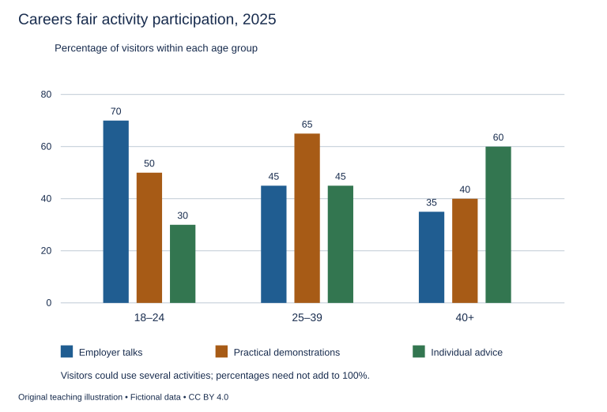
教学虚构。各组内参与比例：18–24，Employer talks70%、Practical demonstrations50%、Individual advice30%；25–39为45/65/45%；40+为35/40/60%。可选多项，组内和不必100%；各组访客人数未知。
任务预算（含首次审题，不额外加时）
初稿20分钟（审题规划3、写作15、检查2）；诊断15；反馈阅读与证据核查10；完整重写25；对照归档5。合计75分钟。
初稿后自评清单
- [ ] 达到最低字数；全文连贯成段，没有用项目符号代替作文。
- [ ] 概述给主要特征；数据、阶段或方位都与题图逐项相符，不推断未提供的原因。
- [ ] 每段可写出一个功能标签；例子或数据与该段要点相连。
- [ ] 核查两处词汇搭配和两处句法；如有疑点先试改再核实，无问题则记录通过证据。
- [ ] 如有影响理解的问题，记录原句；否则记通过或待核查，不填写自猜分数。
反馈与重写
打开 独立参考页（本节下方展开参考），按逐段检查和通用协议核验。重写任务：完整重写至少150词；先查自身是否有分母/互斥误读，如有则改并记原句；如无则核查一项组织或语言问题，没有证据不强造错误。
本周重点操作（已含原预算）
用原有诊断/回听中的3分钟，按分母/多选解释、概述与比较、语言逐项找原句或时间戳证据。只选出现次数最多或最妨碍理解的至多两类；没有可靠证据就标“待核查”，不要猜失分或凑两类。用本题原定重写/重答验证所选点；如已清楚则保留并记通过证据。见W17证据选择表。
记录表见阶段证据表，只在上述原时段填写相关行。
W17 T1A 示例、反馈与重练（首答后展开）
WS-W17-T1A 独立参考页
只在初稿完成后阅读；不是唯一答案，也没有官方分数。以下是对原创示例的教学讲评，不是对学生尚未提交作文的已完成批改。
思路拆解
分母是各年龄组访客；可多选不合100，不以人数解释百分比；概述三组首位与两种年龄方向。
原创示例
The chart compares participation in employer talks, practical demonstrations and individual advice sessions among three age groups at a careers fair in 2025. The figures are percentages of visitors within each group, and visitors could use more than one activity.
Overall, employer talks attracted the highest proportion of the youngest visitors, whereas individual advice was most popular among those aged forty or over. Practical demonstrations ranked first in the middle age group. Participation in talks was lower in each successively older group, while the opposite pattern applied to individual advice.
Among visitors aged eighteen to twenty-four, 70% attended employer talks, compared with 50% using demonstrations and 30% receiving individual advice. In the twenty-five to thirty-nine group, demonstrations led at 65%. Talks and advice each attracted 45%, leaving a gap of twenty percentage points between demonstrations and either of the other activities.
For visitors aged forty and above, advice sessions had the highest participation rate, at 60%. Demonstrations attracted 40%, while talks were used by 35%. The advice figure was therefore twice the corresponding proportion in the youngest group. By contrast, participation in employer talks among the oldest visitors was half the rate recorded for the youngest group.
示例正文词数：197（本项目正则计数；书信不含称呼、结束语与署名；连字符词作一词）。
逐段反馈与迁移
- P1 明确可多项参与，不把三个项目当互斥；年龄组样本数未知。
- P2 年龄分组静态比较，不是同一人老去后的变化。
- P3 25～39演示65，另两项45并列，差20点。
- P4 40+建议60对18～24的30翻倍；讲座35是70的一半，不能推出参与人数比例。
常见失误
将多选百分比错误归一到100%；把40+说成40岁；把年龄规律解释为所有老年人偏好。
可执行反馈步骤
1. 先把自己的段落标为引入、概述/论点、支持、收束；分段可不同于示例，按功能核查，不照抄段数。
2. 对照上方逐段检查，逐项标“已有证据/缺失/不适用”。每条意见必须附自己的原句或缺失位置。
3. 按 反馈协议 的四维表记录；有争议的 AI 意见回题干、数据或语法依据核验。
4. 只选至多两项有证据的优先点执行整篇重写；如未发现问题，可改变组织或表达练迁移，但不把它标成纠错；保留原稿，禁止把示例替换为自己的作业。
重写任务
完整重写至少150词；先查自身是否有分母/互斥误读，如有则改并记原句；如无则核查一项组织或语言问题，没有证据不强造错误。
完成后重新勾选 学生页（见本节上方学生题） 清单；将一处改前/改后及理由交给独立评阅者核查。真人评阅状态目前为“待安排”，不是已完成。
WS-W17-T1G 学生页：请求补发培训证明
周次 W17｜题型 T1G｜能力点：书信目的、要点与语气
Task 1 的 A/G 分支二选一，另一分支不计入本周作业。
使用与记录
原创教学练习，非真题、非标准化模拟，难度未校准。先完成本页再打开参考页。人物、机构、经历与数据均为教学虚构。不要背诵示例。自评和 AI 反馈不能代替独立真人评分，未获得真人评阅时标记“分数未确认”。
保存：任务ID、实际日期、用时、初稿或原始录音、证据化反馈、重写/重答、三条修改理由。没有学生提交物，不得填写“已批改”或“已完成训练”。
完整题干
You completed a short training course, but you have not received the completion certificate. Write to the course administrator. In your letter:
- give details of the course you completed
- explain why you need the certificate
- ask what should be done to provide it.
Begin your letter: Dear Sir or Madam,
Write at least 150 words. You do not need to write any addresses. Spend about 20 minutes on this task.
任务预算（含首次审题，不额外加时）
初稿20分钟（审题规划3、写作15、检查2）；诊断15；反馈阅读与证据核查10；完整重写25；对照归档5。合计75分钟。
初稿后自评清单
- [ ] 达到最低字数；全文连贯成段，没有用项目符号代替作文。
- [ ] 三个要点均展开；称呼、目的、语气和结束语适合收信人。
- [ ] 每段可写出一个功能标签；例子或数据与该段要点相连。
- [ ] 核查两处词汇搭配和两处句法；如有疑点先试改再核实，无问题则记录通过证据。
- [ ] 如有影响理解的问题，记录原句；否则记通过或待核查，不填写自猜分数。
反馈与重写
打开 独立参考页（本节下方展开参考），按逐段检查和通用协议核验。重写任务：完整重写至少150词；如有遗漏则补课程/用途/行动点，如无则检查称呼和条件请求。记录两项有原句证据的优先检查点，不捏造已收到证明。
本周重点操作（已含原预算）
用原有诊断/回听中的3分钟，按三要点覆盖、语气与目的、语言逐项找原句或时间戳证据。只选出现次数最多或最妨碍理解的至多两类；没有可靠证据就标“待核查”，不要猜失分或凑两类。用本题原定重写/重答验证所选点；如已清楚则保留并记通过证据。见W17证据选择表。
记录表见阶段证据表，只在上述原时段填写相关行。
W17 T1G 示例、反馈与重练（首答后展开）
WS-W17-T1G 独立参考页
只在初稿完成后阅读；不是唯一答案，也没有官方分数。以下是对原创示例的教学讲评，不是对学生尚未提交作文的已完成批改。
思路拆解
正式追询；课程定位、用途时限、查证/补发/延迟替代分别展开；不假定管理方已经丢失文件。
原创示例
Dear Sir or Madam,
I am writing about the completion certificate for the introductory bookkeeping course that finished on 18 April. I attended the Tuesday evening group at the North Street centre, and my registration reference was BK206. At the final session, we were told that certificates would be sent by email within two weeks, but I have not received mine.
I need the certificate to confirm my recent training when applying for an administrative position. The employer has asked me to provide the relevant documents by next Friday. I have checked my email folders, including the folder for unwanted messages, and could not find any communication containing the certificate.
Could you please check whether it has been issued and confirm that the email address on my registration is correct? If it has already been sent, I would appreciate another copy. If there is a delay, please let me know when I can expect it and whether you could provide a short letter confirming that I completed the course. That would help me explain the situation to the employer before the deadline.
Yours faithfully, Alex Chen
示例正文词数：178（本项目正则计数；书信不含称呼、结束语与署名；连字符词作一词）。
逐段反馈与迁移
- P1 课程日期组别编号和原承诺完整，未收不等于未发送。
- P2 雇主时限说明紧迫，已查文件夹支持请求。
- P3 分已发/延迟两种情形请求行动，确认信为询问而非已取得。
常见失误
缺课程信息导致无法定位；直接责备未发而无证据；只写急需没有请求。
可执行反馈步骤
1. 先把自己的段落标为引入、概述/论点、支持、收束；分段可不同于示例，按功能核查，不照抄段数。
2. 对照上方逐段检查，逐项标“已有证据/缺失/不适用”。每条意见必须附自己的原句或缺失位置。
3. 按 反馈协议 的四维表记录；有争议的 AI 意见回题干、数据或语法依据核验。
4. 只选至多两项有证据的优先点执行整篇重写；如未发现问题，可改变组织或表达练迁移，但不把它标成纠错；保留原稿，禁止把示例替换为自己的作业。
重写任务
完整重写至少150词；如有遗漏则补课程/用途/行动点，如无则检查称呼和条件请求。记录两项有原句证据的优先检查点，不捏造已收到证明。
完成后重新勾选 学生页（见本节上方学生题） 清单；将一处改前/改后及理由交给独立评阅者核查。真人评阅状态目前为“待安排”，不是已完成。
WS-W17-T2 学生页：招聘时经验与资格
周次 W17｜题型 T2｜能力点：观点展开与任务回应
A/G 共用本题。
使用与记录
原创教学练习，非真题、非标准化模拟，难度未校准。先完成本页再打开参考页。人物、机构、经历与数据均为教学虚构。不要背诵示例。自评和 AI 反馈不能代替独立真人评分，未获得真人评阅时标记“分数未确认”。
保存：任务ID、实际日期、用时、初稿或原始录音、证据化反馈、重写/重答、三条修改理由。没有学生提交物，不得填写“已批改”或“已完成训练”。
完整题干
Employers should give more importance to practical experience than to formal qualifications when choosing staff. To what extent do you agree or disagree? Give reasons and include relevant examples.
Write at least 250 words. Spend about 40 minutes on this task.
任务预算（含首次审题，不额外加时）
初稿40分钟（审题规划5、写作30、检查5）；诊断15；反馈阅读与证据核查10；完整重写35；对照归档5。合计105分钟。
初稿后自评清单
- [ ] 达到最低字数；全文连贯成段，没有用项目符号代替作文。
- [ ] 直接回答题目的所有问句，有始终一致的立场。
- [ ] 每段可写出一个功能标签；例子或数据与该段要点相连。
- [ ] 核查两处词汇搭配和两处句法；如有疑点先试改再核实，无问题则记录通过证据。
- [ ] 如有影响理解的问题，记录原句；否则记通过或待核查，不填写自猜分数。
反馈与重写
打开 独立参考页（本节下方展开参考），按逐段检查和通用协议核验。重写任务：完整重写至少250词；按真实初稿选择任务回应/论据展开/组织/语言中证据最多的至多两项。如未见问题，记录通过证据与待核查点，不假称已诊断失分。
本周重点操作（已含原预算）
用原有诊断/回听中的3分钟，按招聘题回应与立场、理由/例子、组织与语言逐项找原句或时间戳证据。只选出现次数最多或最妨碍理解的至多两类；没有可靠证据就标“待核查”，不要猜失分或凑两类。用本题原定重写/重答验证所选点；如已清楚则保留并记通过证据。见W17证据选择表。
记录表见阶段证据表，只在上述原时段填写相关行。
W17 T2 示例、反馈与重练（首答后展开）
WS-W17-T2 独立参考页
只在初稿完成后阅读；不是唯一答案，也没有官方分数。以下是对原创示例的教学讲评，不是对学生尚未提交作文的已完成批改。
思路拆解
部分同意按岗位责任限定；不是学历无用；比较证据质量而非只比年数；对新人机会提出边界。
原创示例
Practical experience can show how someone performs in a workplace, while formal qualifications indicate completion of a course of study. I partly agree that experience deserves greater attention, but the appropriate balance depends on the responsibilities of the job rather than on a general preference for one type of evidence.
For many roles, previous work provides information that a certificate alone cannot supply. An applicant who has managed busy customer enquiries may be able to explain how they prioritised requests and dealt with misunderstandings. Such examples allow an employer to explore the applicant’s decisions, not simply the subjects they studied. A practical task during recruitment can offer further evidence. For example, asking someone to organise a sample schedule may reveal relevant ability more directly than comparing the names of their courses.
However, experience is not automatically reliable evidence of competence. Someone may have spent years repeating an inefficient method or working in a situation very different from the new role. Qualifications can provide a common foundation of knowledge, especially where mistakes have serious consequences or where the job requires specialised understanding. Employers should therefore examine the quality and relevance of experience rather than use the number of years worked as a substitute for assessment.
There is also a fairness issue for people entering the workforce. If every employer demands extensive experience, capable beginners may have little opportunity to acquire it. For suitable entry-level roles, a qualification, a carefully designed task and evidence of willingness to learn may be a reasonable combination. More senior positions can justifiably require stronger evidence from previous work, because the person may need to make decisions with less support.
In conclusion, practical experience should carry considerable weight, but it should not consistently override qualifications. Employers should seek evidence that matches the actual work and assess both experienced applicants and newcomers in ways appropriate to the position.
示例正文词数：310（本项目正则计数；书信不含称呼、结束语与署名；连字符词作一词）。
逐段反馈与迁移
- P1 给明确条件标准，避免只说both important。
- P2 用询问处理/排班任务展示能力证据，不臆测所有学历持有者能力差。
- P3 经验可能不相关是合理反例；不列未经核实职业法律资格要求。
- P4 入门/高阶职责不同，机会与评估关联题目。
- P5 结论和岗位适配一致，不突然全盘反对。
常见失误
把工作年限当能力本身；无条件否定学历；写教育制度而不谈招聘选择。
可执行反馈步骤
1. 先把自己的段落标为引入、概述/论点、支持、收束；分段可不同于示例，按功能核查，不照抄段数。
2. 对照上方逐段检查，逐项标“已有证据/缺失/不适用”。每条意见必须附自己的原句或缺失位置。
3. 按 反馈协议 的四维表记录；有争议的 AI 意见回题干、数据或语法依据核验。
4. 只选至多两项有证据的优先点执行整篇重写；如未发现问题，可改变组织或表达练迁移，但不把它标成纠错；保留原稿，禁止把示例替换为自己的作业。
重写任务
完整重写至少250词；按真实初稿选择任务回应/论据展开/组织/语言中证据最多的至多两项。如未见问题，记录通过证据与待核查点，不假称已诊断失分。
完成后重新勾选 学生页（见本节上方学生题） 清单；将一处改前/改后及理由交给独立评阅者核查。真人评阅状态目前为“待安排”，不是已完成。
WS-W17-S1 学生页
周次W17｜Part 1专项｜能力点：按真实证据选择至多两个问题类别｜30分钟
使用与记录
原创教学练习，非真题、非标准化模拟，难度未校准。先完成本页再打开参考页。人物、机构、经历与数据均为教学虚构。不要背诵示例。自评和 AI 反馈不能代替独立真人评分，未获得真人评阅时标记“分数未确认”。
保存：任务ID、实际日期、用时、初稿或原始录音、证据化反馈、重写/重答、三条修改理由。没有学生提交物，不得填写“已批改”或“已完成训练”。
操作与预算
设备与审题3分钟；首答录音6；回听及局部转写7；示例和诊断5；不看稿重答6；归档3。共30分钟。
Part 1专项题
1. What skills do you use in your work or studies?
2. How do you decide what to learn next?
3. Do you enjoy practical tasks?
4. When do you ask someone to check your work?
追问：
- Can you give an example of that skill?
- What evidence would show that you had improved?
录音回听清单
- [ ] 保留首答原音，记录实际时长、是否中断、是否看稿；只报真实完成状态。
- [ ] 流利与连贯：标出两处时间戳，区分构思停顿与重复搜词，检查是否偏离问句。
- [ ] 词汇：找一处模糊词或重复表达，先解释原意再替换；不为难词改变意思。
- [ ] 语法：核对经历与习惯的时态；局部转写核查；如存在妨碍理解的问题才更正，无则记通过。
- [ ] 发音：不看转写听30秒，标听不清的词尾、重音或断句；没有音频不能判断发音。
- [ ] 展开：主要回答有具体情境或理由；追问后第一句回应追问的新角度。
重答要求
如有笼统判断，选择至多两个答案补具体情境；如没有，选择两题换角度重答并保留切题证据；重答一条追问，检查是否真正回应其新角度。
首答回听后才打开独立参考页（本节下方展开参考）。按反馈协议填至少三个时间戳，不以文字转写替代音频评阅。
本周重点操作（已含原预算）
用原有诊断/回听中的3分钟，按回答切题与展开、流利连贯、词汇语法、可理解发音（必须听原音）逐项找原句或时间戳证据。只选出现次数最多或最妨碍理解的至多两类；没有可靠证据就标“待核查”，不要猜失分或凑两类。用本题原定重写/重答验证所选点；如已清楚则保留并记通过证据。见W17证据选择表。
记录表见阶段证据表，只在上述原时段填写相关行。
W17 S1 示例、反馈与重练（首答后展开）
WS-W17-S1 独立参考页
原创教学示例，非真题或评分结果。未收到学生音频；以下是示例分析与待执行反馈，不能登记为已完成学生批改。
展开示例
直接回应→原因→具体情境的展开示例
I use planning skills quite often because several small tasks can arrive at the same time. I make a short list and check which task affects other people first. I would judge improvement by whether I finish the important tasks without forgetting details, rather than simply by how organised the list looks.
纯口答示例词数：52；只计MODEL标记内实际英文口答，不含标题、标签、说明。词数不能证明录音时长或流利度。
展开与反馈
本周能力：按真实证据选择至多两个问题类别。
1. 示例先表态，再说明偏好理由，最后提供条件或场景。检查自己是否用一个词回答后就结束。
2. 找到一个具体细节：物品、动作、对话或地点。用自己的经历替换，保持与题卡相关，不照搬示例身份与经历。
3. 追问要重新回应，不能继续背长答。首句先回答追问，再用一条理由支持。
4. 如存在听不清或语法影响理解处，标原音时间戳；否则标一处清楚的原音证据；先尝试最小修正。不要把自然停顿一概当成错误，或用加快语速掩盖逻辑断裂。
常见失误
空泛形容词替代具体过程；给了经历却没解释为什么重要；Part 3只有个人故事没有一般解释；AI只看转写就判断发音。逐项回原音核对，不能凭范例推断自己已达到某个分数。
可执行重答与反馈
如有笼统判断，选择至多两个答案补具体情境；如没有，选择两题换角度重答并保留切题证据；重答一条追问，检查是否真正回应其新角度。
填写反馈协议四维表，附三个时间戳和原话证据。如存在，选至多一个内容问题与一个语言问题先修；否则记录清楚的证据并做迁移重答；重答后并排听两段，记录改善与仍未解决之处。自评与AI不能替代独立真人评分；独立评阅目前待安排，分数未确认。
WS-W17-S2 学生页
周次W17｜Part 2专项｜能力点：按真实证据选择至多两个问题类别｜30分钟
使用与记录
原创教学练习，非真题、非标准化模拟，难度未校准。先完成本页再打开参考页。人物、机构、经历与数据均为教学虚构。不要背诵示例。自评和 AI 反馈不能代替独立真人评分，未获得真人评阅时标记“分数未确认”。
保存：任务ID、实际日期、用时、初稿或原始录音、证据化反馈、重写/重答、三条修改理由。没有学生提交物，不得填写“已批改”或“已完成训练”。
操作与预算
准备、首答录音及追问5分钟；回听及局部转写8；示例与诊断5；关键词重组3；重答及追问5；归档4。共30分钟。
Part 2专项任务卡
Describe a skill you would like to develop further. Say what it is, why it matters to you, what you can already do, and explain how you would check your progress.
准备1分钟，说1～2分钟。只记5个关键词，不预写句子。
收尾追问：
- Who could give you useful feedback?
- What would be a realistic first step?
录音回听清单
- [ ] 保留首答原音，记录实际时长、是否中断、是否看稿；只报真实完成状态。
- [ ] 流利与连贯：标出两处时间戳，区分构思停顿与重复搜词，检查是否偏离问句。
- [ ] 词汇：找一处模糊词或重复表达，先解释原意再替换；不为难词改变意思。
- [ ] 语法：核对经历与习惯的时态；局部转写核查；如存在妨碍理解的问题才更正，无则记通过。
- [ ] 发音：不看转写听30秒，标听不清的词尾、重音或断句；没有音频不能判断发音。
- [ ] 展开：主要回答有具体情境或理由；追问后第一句回应追问的新角度。
重答要求
用五个关键词重答完整任务卡1～2分钟，再答两条追问；如缺具体细节则补、如有无关背景则删；若已清楚，换表达但保持事实。比较首答与重答，不背示例。
首答回听后才打开独立参考页（本节下方展开参考）。按反馈协议填至少三个时间戳，不以文字转写替代音频评阅。
本周重点操作（已含原预算）
用原有诊断/回听中的3分钟，按回答切题与展开、流利连贯、词汇语法、可理解发音（必须听原音）逐项找原句或时间戳证据。只选出现次数最多或最妨碍理解的至多两类；没有可靠证据就标“待核查”，不要猜失分或凑两类。用本题原定重写/重答验证所选点；如已清楚则保留并记通过证据。见W17证据选择表。
记录表见阶段证据表，只在上述原时段填写相关行。
W17 S2 示例、反馈与重练（首答后展开）
WS-W17-S2 独立参考页
原创教学示例，非真题或评分结果。未收到学生音频；以下是示例分析与待执行反馈，不能登记为已完成学生批改。
展开示例
原创长答示例（时长须以个人实际录音测量）
A skill I would like to develop further is explaining information clearly in short presentations. I can usually prepare the material, but I sometimes include more background than the audience needs. I want to become better at selecting the main point.
This matters because I occasionally give updates at work. People need to understand what has changed and what they should do next. They do not necessarily need every detail of how I gathered the information.
My first step would be to prepare a two-minute explanation of a familiar task. I would ask a colleague to tell me the main message afterwards, without looking at my notes. If the colleague understood a different message, I would need to examine the structure rather than assume that speaking more confidently would solve the problem.
I would also keep the first recording and compare it with a later attempt on another topic. One good presentation would be encouraging, but I would want evidence that I could communicate clearly in more than one situation before deciding that the skill had improved.
纯口答示例词数：177；只计MODEL标记内实际英文口答，不含标题、标签、说明。词数不能证明录音时长或流利度。
展开与反馈
本周能力：按真实证据选择至多两个问题类别。
1. 长答示例按背景、行动/观察、变化与意义组织。每段都推进内容；检查自己是否只有背景而没有具体事件。
2. 找到一个具体细节：物品、动作、对话或地点。用自己的经历替换，保持与题卡相关，不照搬示例身份与经历。
3. 追问要重新回应，不能继续背长答。首句先回答追问，再用一条理由支持。
4. 如存在听不清或语法影响理解处，标原音时间戳；否则标一处清楚的原音证据；先尝试最小修正。不要把自然停顿一概当成错误，或用加快语速掩盖逻辑断裂。
常见失误
空泛形容词替代具体过程；给了经历却没解释为什么重要；Part 3只有个人故事没有一般解释；AI只看转写就判断发音。逐项回原音核对，不能凭范例推断自己已达到某个分数。
可执行重答与反馈
用五个关键词重答完整任务卡1～2分钟，再答两条追问；如缺具体细节则补、如有无关背景则删；若已清楚，换表达但保持事实。比较首答与重答，不背示例。
填写反馈协议四维表，附三个时间戳和原话证据。如存在，选至多一个内容问题与一个语言问题先修；否则记录清楚的证据并做迁移重答；重答后并排听两段，记录改善与仍未解决之处。自评与AI不能替代独立真人评分；独立评阅目前待安排，分数未确认。
WS-W17-S3 学生页
周次W17｜三部分全流程｜能力点：按真实证据选择至多两个问题类别｜60分钟
使用与记录
原创教学练习，非真题、非标准化模拟，难度未校准。先完成本页再打开参考页。人物、机构、经历与数据均为教学虚构。不要背诵示例。自评和 AI 反馈不能代替独立真人评分，未获得真人评阅时标记“分数未确认”。
保存：任务ID、实际日期、用时、初稿或原始录音、证据化反馈、重写/重答、三条修改理由。没有学生提交物，不得填写“已批改”或“已完成训练”。
操作与预算
D5：设备与流程准备2分钟，连续首答11～14分钟，余14～17分钟完整回听标记，共30分钟。D6：局部转写诊断10，阅读示例与调整5，重答与新追问10，对照归档5，共30分钟。合计60分钟。
连续三部分全流程（首答不可看参考）
找同伴读题，或独练逐题揭示。完整首答11～14分钟，中途不暂停纠错。模拟同伴不是认证考官；自行读题的练习记录不能冒充真实面试。
Part 1：4～5分钟
1. Do you like receiving advice?
2. How do you choose whom to ask for help?
3. Do you keep records of things you learn?
4. What makes a practice session useful?
5. Do you prefer working alone or with others?
6. How do you respond when something is difficult?
可按回答追加 Why? / Can you give an example? 到时转下部分，不强行说完全部备用问题。
Part 2：3～4分钟（含准备）
Describe a time you checked the quality of something you had done. Say what the task was, how you checked it, what you discovered, and explain what you did next.
准备1分钟，连续说1～2分钟。收尾追问：
- Did the check reveal any problem?
- Would you use the same checking method again?
Part 3：4～5分钟
1. Why is it important to identify a problem before practising?
2. Can confidence be a reliable measure of ability?
3. How can people choose between conflicting pieces of feedback?
4. Should practice focus on weaknesses or strengths?
根据回答追加追问：
- What if there is not enough evidence to identify a weakness?
- Can trying to fix too many things at once be unhelpful?
录音回听清单
- [ ] 保留首答原音，记录实际时长、是否中断、是否看稿；只报真实完成状态。
- [ ] 流利与连贯：标出两处时间戳，区分构思停顿与重复搜词，检查是否偏离问句。
- [ ] 词汇：找一处模糊词或重复表达，先解释原意再替换；不为难词改变意思。
- [ ] 语法：核对经历与习惯的时态；局部转写核查；如存在妨碍理解的问题才更正，无则记通过。
- [ ] 发音：不看转写听30秒，标听不清的词尾、重音或断句；没有音频不能判断发音。
- [ ] 展开：主要回答有具体情境或理由；追问后第一句回应追问的新角度。
重答要求
重答最弱的一个Part 1问题、完整Part 2及一个Part 3问题，再答一条未用追问。用不同细节或补一个例外，确认不是复述范例；局部重答不另计全流程。
首答回听后才打开独立参考页（本节下方展开参考）。按反馈协议填至少三个时间戳，不以文字转写替代音频评阅。
本周重点操作（已含原预算）
用原有诊断/回听中的3分钟，按回答切题与展开、流利连贯、词汇语法、可理解发音（必须听原音）逐项找原句或时间戳证据。只选出现次数最多或最妨碍理解的至多两类；没有可靠证据就标“待核查”，不要猜失分或凑两类。用本题原定重写/重答验证所选点；如已清楚则保留并记通过证据。见W17证据选择表。
记录表见阶段证据表，只在上述原时段填写相关行。
W17 S3 示例、反馈与重练（首答后展开）
WS-W17-S3 独立参考页
原创教学示例，非真题或评分结果。未收到学生音频；以下是示例分析与待执行反馈，不能登记为已完成学生批改。
展开示例
Part 2原创展开示例（个人语速不同，不能以词数推录音时长）
I checked the quality of a set of instructions I had written for booking equipment in a shared office. I wanted to make sure that someone unfamiliar with the system could follow them, so I asked a colleague who had not used it before to try.
I watched without explaining each step. The colleague completed most of the process but paused when the guide said to confirm the dates. It was unclear whether that meant saving the form or sending an email to the person responsible for the equipment.
I changed that sentence to name the actual action and added a small example of the confirmation message. I did not rewrite every part of the guide, because the earlier steps had worked as intended.
The check was useful because it gave me a specific problem to address. I could have spent the same time making the document look more attractive without noticing the unclear instruction. Afterwards, I asked another person to try the revised step so that I could see whether the change had solved the problem.
Part 3观点→理由→条件展开示例
Feedback is more useful when it points to something that can be observed. If two people disagree, I would ask each for an example and consider whether they are judging the same task. Sometimes both comments are relevant in different situations. If the evidence is insufficient, it is better to collect another sample than to invent a diagnosis and practise the wrong thing.
纯口答示例词数：240；只计MODEL标记内实际英文口答，不含标题、标签、说明。词数不能证明录音时长或流利度。
展开与反馈
本周能力：按真实证据选择至多两个问题类别。
1. 长答示例按背景、行动/观察、变化与意义组织。每段都推进内容；检查自己是否只有背景而没有具体事件。
2. 找到一个具体细节：物品、动作、对话或地点。用自己的经历替换，保持与题卡相关，不照搬示例身份与经历。
3. Part 3示例不把个人选择强加给所有人；先讲机制，再说明条件或例外。检查自己的追问答案是否直接回应新问题。
4. 如存在听不清或语法影响理解处，标原音时间戳；否则标一处清楚的原音证据；先尝试最小修正。不要把自然停顿一概当成错误，或用加快语速掩盖逻辑断裂。
常见失误
空泛形容词替代具体过程；给了经历却没解释为什么重要；Part 3只有个人故事没有一般解释；AI只看转写就判断发音。逐项回原音核对，不能凭范例推断自己已达到某个分数。
可执行重答与反馈
重答最弱的一个Part 1问题、完整Part 2及一个Part 3问题，再答一条未用追问。用不同细节或补一个例外，确认不是复述范例；局部重答不另计全流程。
填写反馈协议四维表，附三个时间戳和原话证据。如存在，选至多一个内容问题与一个语言问题先修；否则记录清楚的证据并做迁移重答；重答后并排听两段，记录改善与仍未解决之处。自评与AI不能替代独立真人评分；独立评阅目前待安排，分数未确认。
许可
原创文字：RayXBuilds and contributors，CC BY 4.0。此页由已验收分课汇编，调整了标题和导航；题干、正文和答案内容保留。公开第三方音频未包含。
回到顶部
U27 第18周：长篇阅读、写作与口语
本页为已独立核验的原创文字课程。先完成学生题目，再展开对应参考。非真题、非标准化模考，不换算雅思分数。听力尚未补齐，本页不代表全科课程已完成。
每周选A或G类Task 1一题，加Task 2及三次口语。参考范文不是学生已完成作业，仍须提交初稿、录音和重写，独立真人评分另行安排。
阅读每周180分钟（60分钟首次限时、120分钟证据精读与延迟复测），写作180分钟、口语120分钟。词汇60分钟、听力180分钟另列；新增完整听力未验收，不能勾整周完成。
W20原创阶段检查按实际证据复盘；正式T20陌生整卷及真人评分另记，缺少目标或真实证据时不能据此判断报考/延长，本页原创技能卷不能代替正式模拟。后续周数与达标规则见 U04。
阅读：首答不查词
R-W18-01 · The Colour beside the Colour
W18｜正文 854 词｜13 题｜篇章：解释性论证：背景、比较与条件从句（6段）
本课必做60分钟：首答20、证据复盘20、词汇长句10、48小时后复测10。每周三课180分钟，合卷首答替代单课首答，不重复计算。开放短文选做另加15分钟。
本项目原创虚构教学情境，人物、地点、历史事件和案例数据均非真实研究或史料。科学解释只讨论文内说明的模型与条件。非雅思真题或标准化模考；正确数不换算雅思等级。许可：CC BY 4.0 — RayXBuilds and contributors。
能力点：识别论证关系、区分作者与引述者、条件与因果、精确定位。初读不查词，完成后打开独立答案页。
Passage
A The fictional design studio of Naro receives a complaint that a set of printed cards has changed colour. The supplier checks the production record and finds no intended change in the ink mixture. On a neutral board, two samples appear closely matched; placed inside different packages, they appear less alike to several observers. The studio could dismiss the complaint because the samples match in one arrangement, or blame production because the difference is visible in another. Both responses would settle the question too quickly. A perceived colour belongs to a viewing situation as well as to a material. The task is to separate possible changes in the object from changes in lighting, surrounding surfaces and the way an observer compares one sample with another. Agreement under one condition is evidence about that condition, not automatic proof that every later encounter will produce the same experience.
B The studio begins with a simple demonstration using identical grey squares against lighter and darker borders. In its fictional observation session, several participants describe the squares differently until the borders are removed. The point is not that everyone must report precisely the same illusion. It is that the surrounding arrangement can affect the comparison even when the central pieces have not been replaced. Saying that one participant has seen a different colour may refer to an experience produced by the arrangement, rather than to evidence that the material itself has changed. This distinction does not make the experience unreal. It changes the explanation being proposed for it. The studio must therefore avoid using a physical identity claim to dismiss an experiential difference or using the experiential difference alone to establish a particular physical cause.
C Lighting introduces another source of variation. The cards are viewed near a window in one room and beneath a lamp in another. A useful comparison should not change the surrounding package and the illumination at the same time if the question concerns the package alone. The team uses a lighting schedule that specifies which source is used for each observation and when samples are moved. The schedule is not a claim that there is one setting appropriate for every customer. It is a way to make the immediate comparison interpretable. A controlled condition can help identify a relationship while still differing from ordinary use. The next task is to decide which additional situations matter for the intended product, not to declare that only the controlled room contains the correct experience of the colour.
D The team also notices a problem with memory. Some observers compare the new sample with a card seen earlier in another place, while others compare two cards side by side. These are different tasks. In the exercise, the studio uses a pairing board that holds the samples next to one another at a fixed separation. A position record identifies which sample was placed on each side, allowing the team to reverse the arrangement deliberately. If the judgement changes when positions are exchanged, the team has another reason to examine the viewing arrangement before attributing the whole difference to the identity of the printed sample on either side. The purpose is not to prove that memory should never be used. It is to distinguish a judgement based on a remembered impression from one made with both objects available. Without that distinction, two answers may seem contradictory even though the observers have been asked, in practical terms, to solve different comparison problems under different conditions.
E To document the process, the studio keeps a border sheet listing the surrounding colour used in each arrangement and an observation form containing the viewer's description. The form distinguishes what the person reported from the team's explanation of the report. Someone may say that a square looks warmer; that wording does not, by itself, establish a changed ink formula, a lighting effect or a difference between packages. Those are hypotheses to be compared with the arrangements actually used. The team retains reports that do not follow the most common pattern rather than silently editing them into agreement. A variation between observers can be relevant to designing a product used by many people, even when a single average description would make the presentation simpler and the conclusion easier to state in a short message to the supplier.
F Naro eventually writes a viewing note for its own staff, identifying the conditions under which samples should first be compared and the additional product settings in which appearance should be checked. The note does not promise that colour can be detached from context. It provides a repeatable starting point and a route towards investigating differences that remain. The writer regards this as stronger than the assertion that one party is correct because it used instruments or that another must be correct because the mismatch was immediately visible. Material measurements and perceptual reports answer connected but distinct questions. A careful account says which comparison was made, what remained constant and what changed. Although that account is longer than the phrase the colours do not match, it can turn a dispute about conflicting certainty into an investigation of the conditions that made each observation possible.
Questions
Choose ONE answer, A, B, C or D.
1. The opening shows that matching in one arrangement
A. proves matching everywhere B. makes other reports dishonest C. is evidence limited to that viewing condition D. eliminates illumination
2. Removing the borders helps show that
A. every person sees exactly alike B. the ink must be faulty C. surroundings can affect judgements without replacing the centre D. light can be ignored
3. Why hold illumination constant when comparing packages?
A. To declare all lamps incorrect B. To imitate all customers simultaneously C. To avoid changing two possible causes at once D. To prevent any judgement
4. The distinction between report and explanation prevents
A. all recording B. side-by-side viewing C. unusual responses D. a description being mistaken for proof of a particular cause
Do the following statements agree with the writer's views? Write YES, NO or NOT GIVEN. YES = the writer agrees; NO = the writer expresses the opposite view; NOT GIVEN = the writer's view is not stated. Do not use outside knowledge.
5. A perceived difference can matter even if the material is unchanged.
6. The controlled room provides the only correct experience for every customer.
7. Reports outside the most common pattern should be removed to improve clarity.
8. The writer favours compensating every complainant with a replacement set.
Complete the sentences. Choose NO MORE THAN 3 WORDS FROM THE PASSAGE for each answer. Do not change word forms.
9. Sources of light and sample moves are specified in a ______.
10. Two samples are held at a fixed separation on a ______.
11. Which sample appears on which side is entered in a ______.
12. The surrounding colour of each arrangement is listed on a ______.
13. Staff receive comparison instructions in a ______.
本周重点
句法与衔接：还原主从句、指代和连接词，说明让步、条件、因果或对比怎样限制作者结论。
复盘
必做：给每道错题标记“定位/作者立场/范围/语法/词数”，抄最短证据；用一行箭头概括本文论证或过程。48小时后重做错题与两道正确题，检查是否仍能指出证据。
选做（15分钟，80–100词）：Explain how changing although or while to because would alter one sentence’s reasoning.
R-W18-01 答案、证据与精读（首答后展开）
R-W18-01 · 独立答案与证据
来源与许可同学生页。先完成再核对。可接受答案由 accepted_answers 明确列出；只忽略大小写和首尾空格，不自行删词。开放复盘不计入客观正确数。
1. C｜段落 A｜证据：“evidence about that condition”
范围不能扩大。
2. C｜段落 B｜证据：“central pieces have not been replaced”
不把虚构观察推广为人人一致。
3. C｜段落 C｜证据：“at the same time”
分离原因。
4. D｜段落 E｜证据：“does not, by itself, establish”
现象词不直接确认机制。
5. YES｜段落 B｜证据：“does not make the experience unreal”
作者明确保留体验价值。
6. NO｜段落 C｜证据：“not to declare that only the controlled room”
明确拒绝。
7. NO｜段落 E｜证据：“retains reports that do not follow”
反对删异常。
8. NOT GIVEN｜段落 F｜证据：“a route towards investigating differences”
未提出赔偿政策；调查过程不代表支持或反对赔偿。
9. lighting schedule / schedule｜段落 C｜证据：“a lighting schedule that specifies”
schedule可接受。
10. pairing board / board｜段落 D｜证据：“a pairing board that holds”
board可接受，明确用途。
11. position record / record｜段落 D｜证据：“A position record identifies”
record可接受。
12. border sheet / sheet｜段落 E｜证据：“a border sheet listing”
sheet可接受，区别观察描述表。
13. viewing note / note｜段落 F｜证据：“a viewing note for its own staff”
note可接受，提供起点及后续检查。
词汇与长句
- illumination：照明条件
- perceptual：与感知经验有关的
- hypothesis：待比较检验的解释
- neutral：用作不强调某一对比的参照背景
> A controlled condition can help identify a relationship while still differing from ordinary use.
while让步共存；控制的解释价值不证明完全代表日常。
> Although that account is longer than the phrase the colours do not match, it can turn a dispute about conflicting certainty into an investigation of the conditions that made each observation possible.
Although承认表达更长，主句给出益处；that限定使各观察成立的条件。
开放任务参考
句法复盘应指出让步/并存并非因果；不能把受控环境不同当成其解释价值的原因。
标准：观点有文内依据，保留条件和范围，推断明确标注；不存在唯一措辞。
R-W18-02 · The Footnote That Changed the Argument
W18｜正文 977 词｜13 题｜篇章：虚构文献史：引语压缩、指代与让步（8段）
本课必做60分钟：首答20、证据复盘20、词汇长句10、48小时后复测10。每周三课180分钟，合卷首答替代单课首答，不重复计算。开放短文选做另加15分钟。
本项目原创虚构教学情境，人物、地点、历史事件和案例数据均非真实研究或史料。科学解释只讨论文内说明的模型与条件。非雅思真题或标准化模考；正确数不换算雅思等级。许可：CC BY 4.0 — RayXBuilds and contributors。
能力点：识别论证关系、区分作者与引述者、条件与因果、精确定位。初读不查词，完成后打开独立答案页。
Passage
A In the fictional archive of Rell, a researcher finds a familiar sentence attributed to an early organiser of public gardens: every unused field should become a garden. The sentence appears on a commemorative plaque and in several later essays. It sounds like a clear demand for universal conversion. The surviving speech from which it was taken is less simple. The speaker introduced the phrase as a proposal that some supporters had made, then explained why it could not apply without qualification. A small footnote in an old printed edition points towards the relevant passage. Following it changes the question from whether the organiser supported gardens to what, exactly, the organiser was prepared to claim about land that appeared unused.
B The speech begins by describing the attraction of gardens to people living in crowded streets. It then introduces an objection: a field may look empty at one time while serving another purpose during a different season. The organiser says that public benefit depends on recognising those uses before deciding what should change. This does not amount to opposition to all gardens. It places a condition on the argument for them. A later summary removes the discussion of seasonal use and keeps only the attractive proposal. The shortened text becomes easier to remember, but its grammar of commitment has changed. Words originally assigned to some supporters begin to look like the speaker's own unrestricted conclusion, and a reason for caution disappears from the account of what the audience was invited to consider.
C The researcher compares two printed versions. In the earlier version, the sentence after the proposal begins however. In the later one, that sentence is omitted, so the turn in the argument is no longer visible. The importance of the connector lies in the relation it establishes, not in the word's presence as an ornament. However directs readers to reconsider the reach of the preceding claim. If it is removed along with the qualification, a reader may reasonably interpret the surviving passage as continuing the proposal rather than restricting it. The researcher therefore records omitted links as well as omitted facts. An argument can change even when every retained sentence is copied accurately, because the relations among sentences help determine what each one is doing.
D Pronouns create another difficulty. In one passage, the speaker says that these should be examined before any decision is made. The nearest plural noun in a shortened quotation is gardens, but the full speech makes clear that these refers to existing uses of the land. When the intervening material is removed, the reference seems to move. A later commentator consequently describes the organiser as demanding an inspection of every proposed garden design, which is a different procedural claim. The researcher does not assume that the commentator intended to mislead. The example shows how an edited extract can make a mistaken reading easier even for someone trying to interpret the words carefully. Reference depends on a structure that may extend beyond the small section selected for quotation.
E The archive's first task is to establish which wording belongs to which version. A version table gives the publication date and the passages present or absent in each edition. A connector list records the linking expressions removed or retained around the disputed sentence. The researcher also prepares a reference map in which arrows connect pronouns with their antecedents in the complete speech. These aids do not settle whether the organiser's proposal was politically wise. They address an earlier question about what position the speech actually expressed. Interpretation can reasonably remain contested after wording and reference are clarified, but a debate based on a sentence assigned to the wrong speaker or stripped of its stated condition begins from a different object.
F The plaque presents a practical challenge because its space is limited. Reproducing the whole speech would defeat the purpose of a short public inscription. The researcher proposes a brief quotation followed by a scope note explaining that the speaker supported gardens where existing uses and local circumstances allowed. The note would not substitute for the full text, but it would prevent the inscription from presenting an absolute demand that the speech had explicitly restricted. The writer supports this solution because brevity and fidelity need not be enemies. A short quotation can remain responsible if its selection preserves the distinction on which the argument turns, or if the omitted condition is stated clearly enough for readers not to infer the opposite.
G A reading group tests the proposed wording by asking participants to paraphrase the organiser's position. Some still describe an unconditional demand, while others notice the qualification. Their answers are entered on an interpretation sheet alongside the exact text each person saw. The purpose is not to settle the historical meaning by a vote. It is to discover what the new presentation makes easy or difficult to infer. If the inscription repeatedly encourages a reading that the source cannot sustain, the archive has a reason to revise its wording. The original speech remains the evidence for the historical claim; the reading group supplies evidence about the effect of the proposed modern display on its current audience.
H Rell's footnote matters because it reconnects a memorable sentence with the argument that gave it a role. The writer does not conclude that no short extract should ever be trusted or that every quotation needs a page of commentary. The lesson is more precise: check who is speaking, what a connector changes, where a pronoun points and which conditions limit the claim. These are not decorative features added after the real content. They are part of the content that enables a reader to distinguish endorsement from reported opinion, a general rule from a qualified proposal and a reason for action from a reason to pause before acting. Reading them carefully can restore an argument without requiring the reader to agree with it.
Questions
Do the following statements agree with the writer's views? Write YES, NO or NOT GIVEN. YES = the writer agrees; NO = the writer expresses the opposite view; NOT GIVEN = the writer's view is not stated. Do not use outside knowledge.
1. A qualification about seasonal uses amounts to rejecting every public garden.
2. An argument can change even if the retained sentences are accurately copied.
3. Limited inscription space makes fidelity necessarily impossible.
4. The writer recommends retaining the original spelling in every later edition of the speech.
Which paragraph contains the following information? Write a letter, A–H. You may use any letter more than once.
5. an omitted contrast marker that made a restriction disappear
6. a plural pronoun that seems to acquire a different referent in an extract
7. an explicit separation between evidence about the old speech and evidence about the new display’s effect
8. three analytical aids recording versions, connectors and pronoun links
Complete the summary. Choose NO MORE THAN 3 WORDS FROM THE PASSAGE for each answer. Do not change word forms.
Edition dates and missing passages were set out in a (9) ______. Linking expressions were logged in a (10) ______. Pronouns were connected to antecedents on a (11) ______. The proposed inscription added a (12) ______. Readers’ paraphrases and the wording they saw were recorded on an (13) ______.
本周重点
句法与衔接：还原主从句、指代和连接词，说明让步、条件、因果或对比怎样限制作者结论。
复盘
必做：给每道错题标记“定位/作者立场/范围/语法/词数”，抄最短证据；用一行箭头概括本文论证或过程。48小时后重做错题与两道正确题，检查是否仍能指出证据。
选做（15分钟，80–100词）：Trace one pronoun and one connector in the passage, explaining how losing either could change the argument.
R-W18-02 答案、证据与精读（首答后展开）
R-W18-02 · 独立答案与证据
来源与许可同学生页。先完成再核对。可接受答案由 accepted_answers 明确列出；只忽略大小写和首尾空格，不自行删词。开放复盘不计入客观正确数。
1. NO｜段落 B｜证据：“does not amount to opposition to all gardens”
限定不等于全盘反对。
2. YES｜段落 C｜证据：“every retained sentence is copied accurately”
连接关系与被删内容仍影响立场。
3. NO｜段落 F｜证据：“brevity and fidelity need not be enemies”
作者给出可行限定方式。
4. NOT GIVEN｜段落 E｜证据：“A version table gives the publication date”
全文讨论版本、删节和语义忠实，未提出保留原拼写的编辑政策。
5. C｜段落 C｜证据：“begins however”
C连接词与段落转向。
6. D｜段落 D｜证据：“the reference seems to move”
D删节后的these指代。
7. G｜段落 G｜证据：“the reading group supplies evidence”
G两类证据用途的对照。
8. E｜段落 E｜证据：“A version table”
E同时列三种工具，其他段无这套组合。
9. version table / table｜段落 E｜证据：“A version table gives the publication date”
table可接受，版本及缺失片段。
10. connector list / list｜段落 E｜证据：“A connector list records”
list可接受，链接表达。
11. reference map / map｜段落 E｜证据：“a reference map in which arrows connect pronouns”
map可接受，代词与先行项。
12. scope note / note｜段落 F｜证据：“a scope note explaining”
note可接受，说明条件而非改写来源。
13. interpretation sheet｜段落 G｜证据：“an interpretation sheet”
sheet单独不能接an。
词汇与长句
- antecedent：代词所指的先行项
- endorsement：认可并作为自身立场提出
- qualification：限制普遍程度或适用条件
- fidelity：忠实保留原意
> If it is removed along with the qualification, a reader may reasonably interpret the surviving passage as continuing the proposal rather than restricting it.
it指however；if条件下may表达可发生的阅读，rather than对照不同语篇功能。
> A short quotation can remain responsible if its selection preserves the distinction on which the argument turns, or if the omitted condition is stated clearly enough for readers not to infer the opposite.
两个if提供替代充分路径，on which指决定论证的区别；删条件可能引出相反理解。
开放任务参考
D these指现存用途；C however限定前述支持者主张，去除后误当作者无条件结论。
标准：观点有文内依据，保留条件和范围，推断明确标注；不存在唯一措辞。
R-W18-03 · A Festival with Two Audiences
W18｜正文 904 词｜14 题｜篇章：议论：让步、目的与受益范围（7段）
本课必做60分钟：首答20、证据复盘20、词汇长句10、48小时后复测10。每周三课180分钟，合卷首答替代单课首答，不重复计算。开放短文选做另加15分钟。
本项目原创虚构教学情境，人物、地点、历史事件和案例数据均非真实研究或史料。科学解释只讨论文内说明的模型与条件。非雅思真题或标准化模考；正确数不换算雅思等级。许可：CC BY 4.0 — RayXBuilds and contributors。
能力点：识别论证关系、区分作者与引述者、条件与因果、精确定位。初读不查词，完成后打开独立答案页。
Passage
A The fictional town of Daven holds a lantern festival that began as a neighbourhood gathering. Residents made simple displays, shared food and walked a short route through familiar streets. Years later, the event attracts visitors and supports temporary work for local businesses. A planning meeting asks whether the programme should become larger and more spectacular. Supporters point to the income visitors bring; critics worry that residents will become spectators at an event they once made together. The writer considers the opposition between residents and visitors too simple. A festival can serve both, but only if the relationship between their experiences is examined rather than assumed. The existence of two audiences does not itself create a conflict, just as an increase in attendance does not itself establish that both audiences have benefited in the same way.
B A larger display may give residents access to performances they would not otherwise encounter. Visitor income may also support equipment used by local groups during the rest of the year. These possibilities weaken the claim that every change directed towards outsiders must take something away from residents. However, they remain possibilities that need to be connected to actual arrangements. If new income is spent entirely on attracting the next group of visitors, the promised year-round benefit may never appear. The writer therefore supports asking where resources go, rather than treating the word tourism as either a guarantee of prosperity or a sufficient explanation of cultural loss. A useful discussion follows the proposed connection from visitor spending to the particular opportunity residents are supposed to gain.
C Participation provides a second test. In the older festival, making a lantern could be as important as seeing the procession. A programme built around professional displays might improve visual quality while reducing opportunities for residents to contribute. That tradeoff is not automatically unacceptable, but it should be named. A better view of a performance does not necessarily replace the experience of making something with neighbours. The organisers consider reserving part of the route for locally made displays and offering workshops before the event. These proposals do not prove that every resident wants to participate. They preserve a route into making for those who do, instead of assuming that a larger audience is a complete substitute for a broader range of roles within the event.
D Timing can distribute benefits and burdens unevenly. An evening programme may suit visitors staying overnight but make participation difficult for residents who work early the next day. Extending the festival over several nights could relieve pressure on one evening while prolonging disruption for people living along the route. The same change can therefore solve one problem and intensify another. The writer would not label the extension successful merely because the largest crowd becomes smaller. The relevant question is whose experience improves, whose becomes harder and whether those effects follow from the same part of the plan. This is why an evaluation that reports only the busiest night can be less informative than an account of the whole period during which residents must arrange ordinary life around the festival.
E The organisers also debate language in publicity. Calling the event an untouched local tradition would conceal the new performances and changed route. Calling it entirely new would ignore the work and memories that connect it with earlier gatherings. The writer favours describing both continuity and change rather than selecting whichever story seems most marketable. An honest description need not list every difference since the festival began. It should avoid promising an experience based on features the organisers have deliberately removed. If visitors are invited to witness neighbourhood participation, then that participation must have a real place in the programme, rather than appearing only in photographs from a previous year that no longer represent how the event is organised.
F The trial programme includes a participation record distinguishing makers, volunteers, performers and spectators. A resource statement shows which visitor-related income supports activities beyond the festival dates. A resident diary collects descriptions of benefits and disruption, with the understanding that contributors do not represent every household. These records answer different questions and should not be compressed into a single popularity score. The organisers also compare the programme with its own stated purpose: an event advertised as a collaborative gathering should be judged partly by the opportunities it offers for collaboration. The writer does not demand that every festival have that purpose. The demand is that the evaluation answer the claim actually made, rather than silently substituting a more flattering measure after the event has finished and attention turns to the next publicity campaign.
G Daven decides to expand some performances while protecting workshops and a section of the procession for residents' work. It also states which disruptions remain and how people can raise concerns before the following year. The result is not a final solution to every disagreement about belonging, business or public space. It is a plan whose tradeoffs have become more explicit. The writer's conclusion is conditional: growth can enrich a local event provided that the opportunities and burdens it creates are examined in relation to the event's purpose. Neither nostalgia for a supposedly unchanged past nor confidence in a larger audience can perform that examination alone. A festival remains a shared undertaking when the people who contribute to it and live around it can recognise their place in its changing design, even when they do not agree about every performance on the programme.
Questions
Which paragraph contains the following information? Write a letter, A–G. You may use any letter more than once.
1. an example where spreading crowds over nights may prolong residential disruption
2. a proposal to preserve opportunities for residents to make displays
3. a warning against publicity using old photographs to imply participation that no longer occurs
4. three distinct records covering roles, resource allocation and resident experiences
5. a decision to expand some performances while retaining workshops and residents’ procession work
Choose ONE answer, A, B, C or D.
6. The writer challenges the idea that
A. residents and visitors must always have opposing interests B. festivals have audiences C. programmes can change D. businesses can earn income
7. Visitor income supports the claimed local benefit only if
A. the old festival disappears B. every performance is professional C. resources reach the promised opportunities D. attendance is large enough to hide costs
8. Professional displays may create a tradeoff between
A. visitor language and ticket prices B. weather and lantern colour C. all work and all rest D. visual quality and residents’ making opportunities
9. Why examine the whole festival period?
A. To ignore the busiest night B. To include prolonged effects outside the peak evening C. To avoid asking residents D. To prove longer is always better
Do the following statements agree with the writer's views? Write YES, NO or NOT GIVEN. YES = the writer agrees; NO = the writer expresses the opposite view; NOT GIVEN = the writer's view is not stated. Do not use outside knowledge.
10. Every visitor-oriented change necessarily harms residents.
11. Watching a better performance necessarily replaces the experience of making one.
12. Publicity should acknowledge relevant continuity and change.
13. The writer favours granting permanent free admission to all former volunteers.
14. Evaluation should address the purpose the event actually claimed.
本周重点
句法与衔接：还原主从句、指代和连接词，说明让步、条件、因果或对比怎样限制作者结论。
复盘
必做：给每道错题标记“定位/作者立场/范围/语法/词数”，抄最短证据；用一行箭头概括本文论证或过程。48小时后重做错题与两道正确题，检查是否仍能指出证据。
选做（15分钟，80–100词）：Identify one concession and one condition in the argument, then explain how omitting either changes the writer’s position.
R-W18-03 答案、证据与精读（首答后展开）
R-W18-03 · 独立答案与证据
来源与许可同学生页。先完成再核对。可接受答案由 accepted_answers 明确列出；只忽略大小写和首尾空格，不自行删词。开放复盘不计入客观正确数。
1. D｜段落 D｜证据：“prolonging disruption”
D延长时段的双向影响。
2. C｜段落 C｜证据：“reserving part of the route”
C参与路径。
3. E｜段落 E｜证据：“photographs from a previous year”
E具体宣传误导。
4. F｜段落 F｜证据：“A resource statement”
F三记录组合独有。
5. G｜段落 G｜证据：“expand some performances while protecting workshops”
G最终混合方案，不是C早期单项建议。
6. A｜段落 A｜证据：“the opposition between residents and visitors too simple”
作者允许条件下共同受益。
7. C｜段落 B｜证据：“connected to actual arrangements”
因果链需实际落实。
8. D｜段落 C｜证据：“improve visual quality while reducing opportunities”
同时收益/损失而非单维好坏。
9. B｜段落 D｜证据：“whole period during which residents must arrange ordinary life”
峰值下降不等于总负担减轻。
10. NO｜段落 B｜证据：“weaken the claim that every change”
明确否定全称。
11. NO｜段落 C｜证据：“does not necessarily replace”
角色体验不等同。
12. YES｜段落 E｜证据：“describing both continuity and change”
作者明确主张。
13. NOT GIVEN｜段落 F｜证据：“makers, volunteers, performers and spectators”
记录角色不涉及票价或永久待遇建议。
14. YES｜段落 F｜证据：“answer the claim actually made”
不可事后偷换较好看的指标。
词汇与长句
- collaborative：由多方共同参与制作的
- nostalgia：对过去的怀念
- allocation：资源的具体分配
- tradeoff：获得某项益处时承担的代价
> If visitors are invited to witness neighbourhood participation, then that participation must have a real place in the programme, rather than appearing only in photographs from a previous year that no longer represent how the event is organised.
if/then建立承诺条件；rather than排除仅靠旧照片替代实际参与。
> growth can enrich a local event provided that the opportunities and burdens it creates are examined in relation to the event's purpose.
provided that限定作者支持；去掉条件会误读为无条件赞成扩张。
开放任务参考
B承认外来资源可使居民受益；G增长有检验条件，删除便误成全反对或全赞成。
标准：观点有文内依据，保留条件和范围，推断明确标注；不存在唯一措辞。
写作与口语：Task 1双分支择一
WS-W18-T1A 学生页：雨量观察提交流程
周次 W18｜题型 T1A｜能力点：顺序流程与句法衔接
Task 1 的 A/G 分支二选一，另一分支不计入本周作业。
使用与记录
原创教学练习，非真题、非标准化模拟，难度未校准。先完成本页再打开参考页。人物、机构、经历与数据均为教学虚构。不要背诵示例。自评和 AI 反馈不能代替独立真人评分，未获得真人评阅时标记“分数未确认”。
保存：任务ID、实际日期、用时、初稿或原始录音、证据化反馈、重写/重答、三条修改理由。没有学生提交物，不得填写“已批改”或“已完成训练”。
完整题干
The diagram shows how rainfall observations submitted by volunteers are processed by a local project. Summarise the information by selecting and reporting the main features, and make comparisons where relevant.
Write at least 150 words. Spend about 20 minutes on this task.
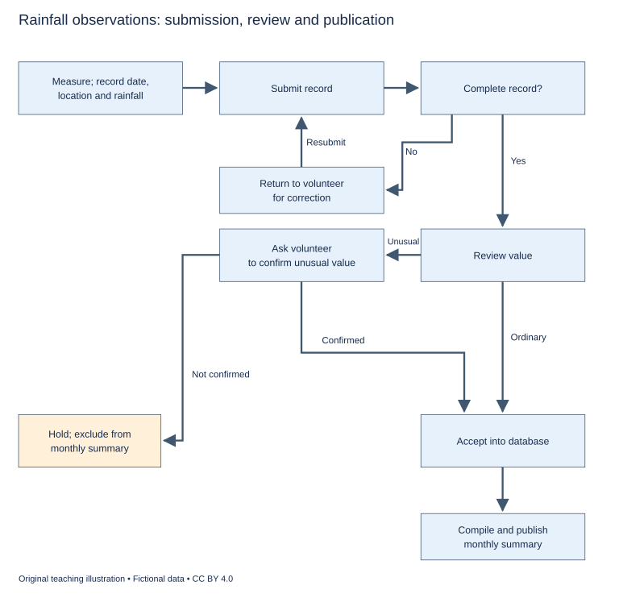
教学虚构数据工作流。测量并记录日期地点雨量→提交→完整性检查；缺信息退回纠正后重新提交；完整→数值复核。普通值→接受入库；异常值→请求确认，确认则入库，不能确认则暂存且不进入月度汇总。入库→汇编并发布月度汇总。未给阈值、等待时长或暂存后的处理。
任务预算（含首次审题，不额外加时）
初稿20分钟（审题规划3、写作15、检查2）；诊断15；反馈阅读与证据核查10；完整重写25；对照归档5。合计75分钟。
初稿后自评清单
- [ ] 达到最低字数；全文连贯成段，没有用项目符号代替作文。
- [ ] 概述给主要特征；数据、阶段或方位都与题图逐项相符，不推断未提供的原因。
- [ ] 每段可写出一个功能标签；例子或数据与该段要点相连。
- [ ] 核查两处词汇搭配和两处句法；如有疑点先试改再核实，无问题则记录通过证据。
- [ ] 如有影响理解的问题，记录原句；否则记通过或待核查，不填写自猜分数。
反馈与重写
打开 独立参考页（本节下方展开参考），按逐段检查和通用协议核验。重写任务：完整重写至少150词；如发现指代/条件连接含混，重写对应句并沿流程核验含义未变；若原句清楚，保留并解释为何无需改。
本周重点操作（已含原预算）
用原有诊断中的3分钟选一处条件句和一处指代，沿图核对它们连接的对象/分支；如含混才改。重写后逐路核验，确认没有把异常值直接判错或把暂存改成删除。
记录表见阶段证据表，只在上述原时段填写相关行。
W18 T1A 示例、反馈与重练（首答后展开）
WS-W18-T1A 独立参考页
只在初稿完成后阅读；不是唯一答案，也没有官方分数。以下是对原创示例的教学讲评，不是对学生尚未提交作文的已完成批改。
思路拆解
两个检查不同：完整性与数值复核；不完整回改再提交；异常需确认，不能确认暂存而非判假。
原创示例
The diagram illustrates the processing of rainfall observations sent by volunteers to a local project. It begins with a daily measurement and ends either with publication in a monthly summary or with the record being held outside the published dataset.
Overall, each submission is checked for completeness and then reviewed for unusual values. Incomplete records are returned for correction, while unusual readings require confirmation. Only complete records that either pass the review or receive confirmation are included in the project’s database.
First, a volunteer measures rainfall and records the date, location and amount. The record is submitted to the project, where its completeness is checked. If information is missing, it is returned to the volunteer. After correction, the record is submitted again and undergoes the same check.
Complete records move to a review of the reported value. An ordinary value is accepted into the database directly. An unusual value prompts a request for confirmation from the volunteer. Confirmed readings are also accepted, whereas readings that cannot be confirmed are placed on hold and excluded from the monthly summary. Finally, the project compiles the accepted records and publishes that summary. No further treatment of the held records is shown.
示例正文词数：198（本项目正则计数；书信不含称呼、结束语与署名；连字符词作一词）。
逐段反馈与迁移
- P1 两终点，hold不等于永久删除；不写雨量预测。
- P2 only complete且普通或确认后才入库，概述筛选逻辑。
- P3 date/location/amount齐全；纠正后回提交而非跳复核。
- P4 unusual不等于错误，confirmed入库，unconfirmed暂存；monthly summary仅已接受记录。
常见失误
代词it指代记录/志愿者混乱；将异常直接删；将补完整与确认数值合并。
可执行反馈步骤
1. 先把自己的段落标为引入、概述/论点、支持、收束；分段可不同于示例，按功能核查，不照抄段数。
2. 对照上方逐段检查，逐项标“已有证据/缺失/不适用”。每条意见必须附自己的原句或缺失位置。
3. 按 反馈协议 的四维表记录；有争议的 AI 意见回题干、数据或语法依据核验。
4. 只选至多两项有证据的优先点执行整篇重写；如未发现问题，可改变组织或表达练迁移，但不把它标成纠错；保留原稿，禁止把示例替换为自己的作业。
重写任务
完整重写至少150词；如发现指代/条件连接含混，重写对应句并沿流程核验含义未变；若原句清楚，保留并解释为何无需改。
完成后重新勾选 学生页（见本节上方学生题） 清单；将一处改前/改后及理由交给独立评阅者核查。真人评阅状态目前为“待安排”，不是已完成。
WS-W18-T1G 学生页：调整志愿排班
周次 W18｜题型 T1G｜能力点：书信目的、要点与语气
Task 1 的 A/G 分支二选一，另一分支不计入本周作业。
使用与记录
原创教学练习，非真题、非标准化模拟，难度未校准。先完成本页再打开参考页。人物、机构、经历与数据均为教学虚构。不要背诵示例。自评和 AI 反馈不能代替独立真人评分，未获得真人评阅时标记“分数未确认”。
保存：任务ID、实际日期、用时、初稿或原始录音、证据化反馈、重写/重答、三条修改理由。没有学生提交物，不得填写“已批改”或“已完成训练”。
完整题干
You volunteer at a local organisation, but a change at work means you cannot attend your usual sessions. Write to the volunteer coordinator, Ms Evans. In your letter:
- explain the change in your availability
- describe how this affects your current duties
- suggest an arrangement that would allow you to continue helping.
Begin your letter: Dear Ms Evans,
Write at least 150 words. You do not need to write any addresses. Spend about 20 minutes on this task.
任务预算（含首次审题，不额外加时）
初稿20分钟（审题规划3、写作15、检查2）；诊断15；反馈阅读与证据核查10；完整重写25；对照归档5。合计75分钟。
初稿后自评清单
- [ ] 达到最低字数；全文连贯成段，没有用项目符号代替作文。
- [ ] 三个要点均展开；称呼、目的、语气和结束语适合收信人。
- [ ] 每段可写出一个功能标签；例子或数据与该段要点相连。
- [ ] 核查两处词汇搭配和两处句法；如有疑点先试改再核实，无问题则记录通过证据。
- [ ] 如有影响理解的问题，记录原句；否则记通过或待核查，不填写自猜分数。
反馈与重写
打开 独立参考页（本节下方展开参考），按逐段检查和通用协议核验。重写任务：完整重写至少150词；如存在长句串联或含混this/it则拆分或改指代，逐句确认不改原意；记录改前改后功能，清楚句不为变化而变化。
本周重点操作（已含原预算）
用原有诊断中的3分钟选一处时间关系和一处条件请求；如指代或长句含混才改。整篇重写后检查可出席时间、待批准条件和交接是否仍与原意一致。
记录表见阶段证据表，只在上述原时段填写相关行。
W18 T1G 示例、反馈与重练（首答后展开）
WS-W18-T1G 独立参考页
只在初稿完成后阅读；不是唯一答案，也没有官方分数。以下是对原创示例的教学讲评，不是对学生尚未提交作文的已完成批改。
思路拆解
半正式协调；新时间与现任务影响、继续帮忙方案相连；条件从句避免未经批准远程操作。
原创示例
Dear Ms Evans,
I am writing to let you know about a change to my working hours next month. My employer has moved our weekly team meeting to Wednesday afternoon, so I will no longer be able to attend the Wednesday volunteer session at the community office. I expect this arrangement to continue for at least the next three months.
At present, I help prepare information packs for new visitors and update the list of available activities. Missing the session would leave these tasks unfinished unless someone else took them over. I wanted to tell you early so that we could agree on a replacement arrangement before the new schedule begins.
Would it be possible for me to help on Monday evenings instead? I could prepare the packs in advance and leave them ready for Wednesday. I could also update the activity list from home, provided that you are happy with that arrangement and can confirm which information I should use. If another volunteer needs to cover part of my role, I would be pleased to explain the routine during my final Wednesday session this month.
Best wishes, Alex Chen
示例正文词数：183（本项目正则计数；书信不含称呼、结束语与署名；连字符词作一词）。
逐段反馈与迁移
- P1 新会占周三下午，期限至少三月，事实范围明确。
- P2 两任务及交接需求具体；this arrangement指新安排可读。
- P3 周一预做/批准后远程/最后一周交接，各条件和时间明确。
常见失误
只说忙不说明影响；一个长句串三个请求造成歧义；把未批准方案写成既成事实。
可执行反馈步骤
1. 先把自己的段落标为引入、概述/论点、支持、收束；分段可不同于示例，按功能核查，不照抄段数。
2. 对照上方逐段检查，逐项标“已有证据/缺失/不适用”。每条意见必须附自己的原句或缺失位置。
3. 按 反馈协议 的四维表记录；有争议的 AI 意见回题干、数据或语法依据核验。
4. 只选至多两项有证据的优先点执行整篇重写；如未发现问题，可改变组织或表达练迁移，但不把它标成纠错；保留原稿，禁止把示例替换为自己的作业。
重写任务
完整重写至少150词；如存在长句串联或含混this/it则拆分或改指代，逐句确认不改原意；记录改前改后功能，清楚句不为变化而变化。
完成后重新勾选 学生页（见本节上方学生题） 清单；将一处改前/改后及理由交给独立评阅者核查。真人评阅状态目前为“待安排”，不是已完成。
WS-W18-T2 学生页：公众难以了解研究
周次 W18｜题型 T2｜能力点：观点展开与任务回应
A/G 共用本题。
使用与记录
原创教学练习，非真题、非标准化模拟，难度未校准。先完成本页再打开参考页。人物、机构、经历与数据均为教学虚构。不要背诵示例。自评和 AI 反馈不能代替独立真人评分，未获得真人评阅时标记“分数未确认”。
保存：任务ID、实际日期、用时、初稿或原始录音、证据化反馈、重写/重答、三条修改理由。没有学生提交物，不得填写“已批改”或“已完成训练”。
完整题干
Research findings are often difficult for the general public to understand. Why does this happen, and what could researchers and public information services do to improve understanding? Give reasons and include relevant examples.
Write at least 250 words. Spend about 40 minutes on this task.
任务预算（含首次审题，不额外加时）
初稿40分钟（审题规划5、写作30、检查5）；诊断15；反馈阅读与证据核查10；完整重写35；对照归档5。合计105分钟。
初稿后自评清单
- [ ] 达到最低字数；全文连贯成段，没有用项目符号代替作文。
- [ ] 直接回答题目的所有问句，有始终一致的立场。
- [ ] 每段可写出一个功能标签；例子或数据与该段要点相连。
- [ ] 核查两处词汇搭配和两处句法；如有疑点先试改再核实，无问题则记录通过证据。
- [ ] 如有影响理解的问题，记录原句；否则记通过或待核查，不填写自猜分数。
反馈与重写
打开 独立参考页（本节下方展开参考），按逐段检查和通用协议核验。重写任务：完整重写至少250词；如有连接词或指代错误，先写两句实际关系再选连接方式；以改后段落验证含义与论证强度不变，勿只换同义词。
本周重点操作（已含原预算）
用原有诊断中的3分钟给一段标实际关系（原因/对比/条件），再核连接词与指代。如有不匹配才修；重写后让该段回答同一问题，不能为流畅删研究限制。
记录表见阶段证据表，只在上述原时段填写相关行。
W18 T2 示例、反馈与重练（首答后展开）
WS-W18-T2 独立参考页
只在初稿完成后阅读；不是唯一答案，也没有官方分数。以下是对原创示例的教学讲评，不是对学生尚未提交作文的已完成批改。
思路拆解
原因对应专业前提与压缩失真；研究者/传播服务双方措施；清楚连接observed与inferred但不引用虚构研究。
原创示例
Research findings can be difficult to understand because they are produced for specialist audiences and because their limitations are hard to communicate briefly. Improving public understanding requires clearer explanations from researchers and careful presentation by the services that share their work.
One difficulty is the gap in assumed knowledge. A report may use technical terms efficiently for experts while leaving other readers unsure what was measured or why it matters. Even familiar words can have a precise meaning within a study that differs from everyday usage. A reader who misses that distinction may misunderstand the conclusion despite recognising most of the vocabulary. Simply replacing a few difficult words is therefore not always enough; the purpose and method may also need explanation.
Another problem arises when findings are compressed into a short headline. An observed relationship may be presented as a definite cause, or a result from one setting may appear to apply everywhere. Qualifications that seem minor to a writer can be essential to interpreting the result. For example, a comparison between two small groups cannot automatically establish what will happen in every community. The challenge is to remain concise without creating more certainty than the evidence supports.
Researchers could provide short summaries that explain the question, the main finding and one important limitation in ordinary language. Public information services could use a worked example or a simple diagram, while clearly separating what was observed from what is inferred. They should also link to fuller explanations for readers who want detail. Testing a summary with people outside the specialist field would reveal misunderstandings that its author might not notice.
In conclusion, both specialist assumptions and excessive simplification can obstruct understanding. Clear structure, concrete explanations and visible limits would make research more accessible without turning uncertain findings into misleading promises.
示例正文词数：299（本项目正则计数；书信不含称呼、结束语与署名；连字符词作一词）。
逐段反馈与迁移
- P1 两原因对应解决方向，不用technology发展作无关开场。
- P2 词义/方法前提影响理解，例子作为一般推理非实证结论。
- P3 相关误写因果、局部误写全体是不同范围问题。
- P4 summaries/example/limits/测试分别对应问题；保持原研究不确定性。
- P5 不将简化等同删掉所有限制。
常见失误
只抱怨术语，不讨论传播压缩；用therefore连接实际无因果两句；为流畅删限定导致断言过强。
可执行反馈步骤
1. 先把自己的段落标为引入、概述/论点、支持、收束；分段可不同于示例，按功能核查，不照抄段数。
2. 对照上方逐段检查，逐项标“已有证据/缺失/不适用”。每条意见必须附自己的原句或缺失位置。
3. 按 反馈协议 的四维表记录；有争议的 AI 意见回题干、数据或语法依据核验。
4. 只选至多两项有证据的优先点执行整篇重写；如未发现问题，可改变组织或表达练迁移，但不把它标成纠错；保留原稿，禁止把示例替换为自己的作业。
重写任务
完整重写至少250词；如有连接词或指代错误，先写两句实际关系再选连接方式；以改后段落验证含义与论证强度不变，勿只换同义词。
完成后重新勾选 学生页（见本节上方学生题） 清单；将一处改前/改后及理由交给独立评阅者核查。真人评阅状态目前为“待安排”，不是已完成。
WS-W18-S1 学生页
周次W18｜Part 1专项｜能力点：句法与衔接，重答检验含义｜30分钟
使用与记录
原创教学练习，非真题、非标准化模拟，难度未校准。先完成本页再打开参考页。人物、机构、经历与数据均为教学虚构。不要背诵示例。自评和 AI 反馈不能代替独立真人评分，未获得真人评阅时标记“分数未确认”。
保存：任务ID、实际日期、用时、初稿或原始录音、证据化反馈、重写/重答、三条修改理由。没有学生提交物，不得填写“已批改”或“已完成训练”。
操作与预算
设备与审题3分钟；首答录音6；回听及局部转写7；示例和诊断5；不看稿重答6；归档3。共30分钟。
Part 1专项题
1. Do you enjoy explaining things?
2. Do you prefer diagrams or written instructions?
3. How do you learn an unfamiliar word?
4. What do you do when you cannot express an idea clearly?
追问：
- Can you show how you would explain it another way?
- When would a diagram be less useful?
录音回听清单
- [ ] 保留首答原音，记录实际时长、是否中断、是否看稿；只报真实完成状态。
- [ ] 流利与连贯：标出两处时间戳，区分构思停顿与重复搜词，检查是否偏离问句。
- [ ] 词汇：找一处模糊词或重复表达，先解释原意再替换；不为难词改变意思。
- [ ] 语法：核对经历与习惯的时态；局部转写核查；如存在妨碍理解的问题才更正，无则记通过。
- [ ] 发音：不看转写听30秒，标听不清的词尾、重音或断句；没有音频不能判断发音。
- [ ] 展开：主要回答有具体情境或理由；追问后第一句回应追问的新角度。
重答要求
如有笼统判断，选择至多两个答案补具体情境；如没有，选择两题换角度重答并保留切题证据；重答一条追问，检查是否真正回应其新角度。
首答回听后才打开独立参考页（本节下方展开参考）。按反馈协议填至少三个时间戳，不以文字转写替代音频评阅。
本周重点操作（已含原预算）
用原有回听中的3分钟转写一处时间/条件/指代关系，若含混才改；重答不读稿，再听确认听者能分清谁做什么、先后与条件。无问题则记录清楚的句子，不强造错误。
记录表见阶段证据表，只在上述原时段填写相关行。
W18 S1 示例、反馈与重练（首答后展开）
WS-W18-S1 独立参考页
原创教学示例，非真题或评分结果。未收到学生音频；以下是示例分析与待执行反馈，不能登记为已完成学生批改。
展开示例
直接回应→原因→具体情境的展开示例
If I cannot explain an idea clearly, I try a concrete example before searching for a more difficult word. For instance, instead of saying that two tasks depend on each other, I might explain that the second cannot start until the first is finished. That helps me check whether I understand the relationship myself.
纯口答示例词数：54；只计MODEL标记内实际英文口答，不含标题、标签、说明。词数不能证明录音时长或流利度。
展开与反馈
本周能力：句法与衔接，重答检验含义。
1. 示例先表态，再说明偏好理由，最后提供条件或场景。检查自己是否用一个词回答后就结束。
2. 找到一个具体细节：物品、动作、对话或地点。用自己的经历替换，保持与题卡相关，不照搬示例身份与经历。
3. 追问要重新回应，不能继续背长答。首句先回答追问，再用一条理由支持。
4. 如存在听不清或语法影响理解处，标原音时间戳；否则标一处清楚的原音证据；先尝试最小修正。不要把自然停顿一概当成错误，或用加快语速掩盖逻辑断裂。
常见失误
空泛形容词替代具体过程；给了经历却没解释为什么重要；Part 3只有个人故事没有一般解释；AI只看转写就判断发音。逐项回原音核对，不能凭范例推断自己已达到某个分数。
可执行重答与反馈
如有笼统判断，选择至多两个答案补具体情境；如没有，选择两题换角度重答并保留切题证据；重答一条追问，检查是否真正回应其新角度。
填写反馈协议四维表，附三个时间戳和原话证据。如存在，选至多一个内容问题与一个语言问题先修；否则记录清楚的证据并做迁移重答；重答后并排听两段，记录改善与仍未解决之处。自评与AI不能替代独立真人评分；独立评阅目前待安排，分数未确认。
WS-W18-S2 学生页
周次W18｜Part 2专项｜能力点：句法与衔接，重答检验含义｜30分钟
使用与记录
原创教学练习，非真题、非标准化模拟，难度未校准。先完成本页再打开参考页。人物、机构、经历与数据均为教学虚构。不要背诵示例。自评和 AI 反馈不能代替独立真人评分，未获得真人评阅时标记“分数未确认”。
保存：任务ID、实际日期、用时、初稿或原始录音、证据化反馈、重写/重答、三条修改理由。没有学生提交物，不得填写“已批改”或“已完成训练”。
操作与预算
准备、首答录音及追问5分钟；回听及局部转写8；示例与诊断5；关键词重组3；重答及追问5；归档4。共30分钟。
Part 2专项任务卡
Describe a time you had to explain a process. Say what the process was, who needed the explanation, what steps you included, and explain how you made the sequence clear.
准备1分钟，说1～2分钟。只记5个关键词，不预写句子。
收尾追问：
- Did you need to change your explanation?
- Which step was most important to make clear?
录音回听清单
- [ ] 保留首答原音，记录实际时长、是否中断、是否看稿；只报真实完成状态。
- [ ] 流利与连贯：标出两处时间戳，区分构思停顿与重复搜词，检查是否偏离问句。
- [ ] 词汇：找一处模糊词或重复表达，先解释原意再替换；不为难词改变意思。
- [ ] 语法：核对经历与习惯的时态；局部转写核查；如存在妨碍理解的问题才更正，无则记通过。
- [ ] 发音：不看转写听30秒，标听不清的词尾、重音或断句；没有音频不能判断发音。
- [ ] 展开：主要回答有具体情境或理由；追问后第一句回应追问的新角度。
重答要求
用五个关键词重答完整任务卡1～2分钟，再答两条追问；如缺具体细节则补、如有无关背景则删；若已清楚，换表达但保持事实。比较首答与重答，不背示例。
首答回听后才打开独立参考页（本节下方展开参考）。按反馈协议填至少三个时间戳，不以文字转写替代音频评阅。
本周重点操作（已含原预算）
用原有回听中的3分钟转写一处时间/条件/指代关系，若含混才改；重答不读稿，再听确认听者能分清谁做什么、先后与条件。无问题则记录清楚的句子，不强造错误。
记录表见阶段证据表，只在上述原时段填写相关行。
W18 S2 示例、反馈与重练（首答后展开）
WS-W18-S2 独立参考页
原创教学示例，非真题或评分结果。未收到学生音频；以下是示例分析与待执行反馈，不能登记为已完成学生批改。
展开示例
原创长答示例（时长须以个人实际录音测量）
I once explained how to submit a short report to a colleague who had just joined a project. The process had only a few steps, but the draft and final versions went to different places, which could easily cause confusion.
I began by showing where to save the draft and who would review it. Then I explained that the final version should be uploaded only after the reviewer had confirmed the changes. I used a small diagram with arrows rather than describing everything in one long sentence.
When my colleague asked what would happen if the reviewer wanted more changes, I added a return arrow to the draft stage. That made an important condition visible: the process did not always move straight to completion.
The explanation became clearer when I named each version instead of repeatedly saying it or that document. I also asked my colleague to describe the steps back to me. This showed that the sequence made sense and helped me notice one place where my original wording had been too vague.
纯口答示例词数：174；只计MODEL标记内实际英文口答，不含标题、标签、说明。词数不能证明录音时长或流利度。
展开与反馈
本周能力：句法与衔接，重答检验含义。
1. 长答示例按背景、行动/观察、变化与意义组织。每段都推进内容；检查自己是否只有背景而没有具体事件。
2. 找到一个具体细节：物品、动作、对话或地点。用自己的经历替换，保持与题卡相关，不照搬示例身份与经历。
3. 追问要重新回应，不能继续背长答。首句先回答追问，再用一条理由支持。
4. 如存在听不清或语法影响理解处，标原音时间戳；否则标一处清楚的原音证据；先尝试最小修正。不要把自然停顿一概当成错误，或用加快语速掩盖逻辑断裂。
常见失误
空泛形容词替代具体过程；给了经历却没解释为什么重要；Part 3只有个人故事没有一般解释；AI只看转写就判断发音。逐项回原音核对，不能凭范例推断自己已达到某个分数。
可执行重答与反馈
用五个关键词重答完整任务卡1～2分钟，再答两条追问；如缺具体细节则补、如有无关背景则删；若已清楚，换表达但保持事实。比较首答与重答，不背示例。
填写反馈协议四维表，附三个时间戳和原话证据。如存在，选至多一个内容问题与一个语言问题先修；否则记录清楚的证据并做迁移重答；重答后并排听两段，记录改善与仍未解决之处。自评与AI不能替代独立真人评分；独立评阅目前待安排，分数未确认。
WS-W18-S3 学生页
周次W18｜三部分全流程｜能力点：句法与衔接，重答检验含义｜60分钟
使用与记录
原创教学练习，非真题、非标准化模拟，难度未校准。先完成本页再打开参考页。人物、机构、经历与数据均为教学虚构。不要背诵示例。自评和 AI 反馈不能代替独立真人评分，未获得真人评阅时标记“分数未确认”。
保存：任务ID、实际日期、用时、初稿或原始录音、证据化反馈、重写/重答、三条修改理由。没有学生提交物，不得填写“已批改”或“已完成训练”。
操作与预算
D5：设备与流程准备2分钟，连续首答11～14分钟，余14～17分钟完整回听标记，共30分钟。D6：局部转写诊断10，阅读示例与调整5，重答与新追问10，对照归档5，共30分钟。合计60分钟。
连续三部分全流程（首答不可看参考）
找同伴读题，或独练逐题揭示。完整首答11～14分钟，中途不暂停纠错。模拟同伴不是认证考官；自行读题的练习记录不能冒充真实面试。
Part 1：4～5分钟
1. Do you write many messages during the day?
2. When is a short message enough?
3. Do you check messages before sending them?
4. What makes a message confusing?
5. Do you like learning how systems work?
6. How do you remember several steps?
可按回答追加 Why? / Can you give an example? 到时转下部分，不强行说完全部备用问题。
Part 2：3～4分钟（含准备）
Describe a misunderstanding that was resolved. Say what was misunderstood, how you noticed the problem, what was clarified, and explain what you learned.
准备1分钟，连续说1～2分钟。收尾追问：
- Could the misunderstanding have been prevented?
- Did it change how you communicate?
Part 3：4～5分钟
1. Why can small wording differences cause misunderstandings?
2. When should complex information be divided into shorter parts?
3. Can a simple explanation still be inaccurate?
4. How can people check that a revision has improved a message?
根据回答追加追问：
- Could removing details change the meaning?
- Would the same wording suit every audience?
录音回听清单
- [ ] 保留首答原音，记录实际时长、是否中断、是否看稿；只报真实完成状态。
- [ ] 流利与连贯：标出两处时间戳，区分构思停顿与重复搜词，检查是否偏离问句。
- [ ] 词汇：找一处模糊词或重复表达，先解释原意再替换；不为难词改变意思。
- [ ] 语法：核对经历与习惯的时态；局部转写核查；如存在妨碍理解的问题才更正，无则记通过。
- [ ] 发音：不看转写听30秒，标听不清的词尾、重音或断句；没有音频不能判断发音。
- [ ] 展开：主要回答有具体情境或理由；追问后第一句回应追问的新角度。
重答要求
重答最弱的一个Part 1问题、完整Part 2及一个Part 3问题，再答一条未用追问。用不同细节或补一个例外，确认不是复述范例；局部重答不另计全流程。
首答回听后才打开独立参考页（本节下方展开参考）。按反馈协议填至少三个时间戳，不以文字转写替代音频评阅。
本周重点操作（已含原预算）
用原有回听中的3分钟转写一处时间/条件/指代关系，若含混才改；重答不读稿，再听确认听者能分清谁做什么、先后与条件。无问题则记录清楚的句子，不强造错误。
记录表见阶段证据表，只在上述原时段填写相关行。
W18 S3 示例、反馈与重练（首答后展开）
WS-W18-S3 独立参考页
原创教学示例，非真题或评分结果。未收到学生音频；以下是示例分析与待执行反馈，不能登记为已完成学生批改。
展开示例
Part 2原创展开示例（个人语速不同，不能以词数推录音时长）
A misunderstanding was resolved when I was helping arrange a small workshop. I sent a message saying that the room would be ready after the equipment arrived. A colleague understood this to mean that the equipment had already arrived and that the room was almost ready.
I noticed the problem when she suggested inviting participants to come early. I explained that the equipment was still expected that afternoon and that we needed time to set it up afterwards. The original message had not made the timing explicit enough.
I then sent a clearer update with two separate statements: the expected arrival time and the time when participants could enter. I also asked the colleague to confirm which time she would put in the invitation.
The incident taught me that a sentence can sound reasonable to its writer while leaving an important relationship unclear to the reader. Since then, I have tried to name dates, actions and conditions directly when a message affects other people’s plans, rather than rely on vague phrases such as soon or after that.
Part 3观点→理由→条件展开示例
Dividing information into shorter parts can help when one sentence contains several actions and conditions. However, the relationship between those parts must remain clear. If a revision removes the condition that makes an instruction valid, it may be easier to read but less accurate. I would ask a reader to explain what they would do, rather than judge the revision only by its length.
纯口答示例词数：241；只计MODEL标记内实际英文口答，不含标题、标签、说明。词数不能证明录音时长或流利度。
展开与反馈
本周能力：句法与衔接，重答检验含义。
1. 长答示例按背景、行动/观察、变化与意义组织。每段都推进内容；检查自己是否只有背景而没有具体事件。
2. 找到一个具体细节：物品、动作、对话或地点。用自己的经历替换，保持与题卡相关，不照搬示例身份与经历。
3. Part 3示例不把个人选择强加给所有人；先讲机制，再说明条件或例外。检查自己的追问答案是否直接回应新问题。
4. 如存在听不清或语法影响理解处，标原音时间戳；否则标一处清楚的原音证据；先尝试最小修正。不要把自然停顿一概当成错误，或用加快语速掩盖逻辑断裂。
常见失误
空泛形容词替代具体过程；给了经历却没解释为什么重要；Part 3只有个人故事没有一般解释；AI只看转写就判断发音。逐项回原音核对，不能凭范例推断自己已达到某个分数。
可执行重答与反馈
重答最弱的一个Part 1问题、完整Part 2及一个Part 3问题，再答一条未用追问。用不同细节或补一个例外，确认不是复述范例；局部重答不另计全流程。
填写反馈协议四维表，附三个时间戳和原话证据。如存在，选至多一个内容问题与一个语言问题先修；否则记录清楚的证据并做迁移重答；重答后并排听两段，记录改善与仍未解决之处。自评与AI不能替代独立真人评分；独立评阅目前待安排，分数未确认。
许可
原创文字：RayXBuilds and contributors，CC BY 4.0。此页由已验收分课汇编，调整了标题和导航；题干、正文和答案内容保留。公开第三方音频未包含。
回到顶部
U28 第19周：长篇阅读、写作与口语
本页为已独立核验的原创文字课程。先完成学生题目，再展开对应参考。非真题、非标准化模考，不换算雅思分数。听力尚未补齐，本页不代表全科课程已完成。
每周选A或G类Task 1一题，加Task 2及三次口语。参考范文不是学生已完成作业，仍须提交初稿、录音和重写，独立真人评分另行安排。
阅读每周180分钟（60分钟首次限时、120分钟证据精读与延迟复测），写作180分钟、口语120分钟。词汇60分钟、听力180分钟另列；新增完整听力未验收，不能勾整周完成。
W20原创阶段检查按实际证据复盘；正式T20陌生整卷及真人评分另记，缺少目标或真实证据时不能据此判断报考/延长，本页原创技能卷不能代替正式模拟。后续周数与达标规则见 U04。
阅读：首答不查词
R-W19-01 · A Chamber between Two Water Levels
W19｜正文 852 词｜13 题｜篇章：科学过程：状态转换与操作顺序（6段）
本课必做60分钟：首答20、证据复盘20、词汇长句10、48小时后复测10。每周三课180分钟，合卷首答替代单课首答，不重复计算。开放短文选做另加15分钟。
本项目原创虚构教学情境，人物、地点、历史事件和案例数据均非真实研究或史料。科学解释只讨论文内说明的模型与条件。非雅思真题或标准化模考；正确数不换算雅思等级。许可：CC BY 4.0 — RayXBuilds and contributors。
能力点：识别论证关系、区分作者与引述者、条件与因果、精确定位。初读不查词，完成后打开独立答案页。
Passage
A In the fictional classroom canal of Tern, a model boat must move between two stretches of water at different heights. Pulling it directly across the intervening barrier would avoid the water problem but change the kind of journey being modelled. The class instead uses a chamber bounded by a gate at each end. The chamber's water level can be changed while the boat remains inside it. In this passage, the word lock refers to that water-filled chamber and its associated gates, not to a device securing a door. The model is deliberately simplified and is not an operating guide for any real canal. Its purpose is to show how a journey that appears continuous can depend on a sequence of distinct states, each of which makes a later movement possible without requiring all parts of the route to remain at the same height.
B To begin an upward journey, the chamber is brought to the level of the lower stretch. The lower gate can then be opened in the model, allowing the boat to enter. After that gate is closed, water is admitted through a separate opening connected with the higher side. As the chamber fills, the boat rises with its surface. The important change is the level of the water supporting the boat, not a mechanism lifting the hull directly. Once the chamber and the upper stretch reach matching levels, the upper gate is opened and the boat can leave. The class follows this specified sequence rather than treating the two gates as interchangeable entrances that may be opened whenever movement would be convenient. The chamber connects the two stretches through time without making them one permanently open body of water.
C A downward journey uses the same general principle with a different starting condition. The boat enters when the chamber matches the upper level. Water is then allowed to leave towards the lower side until the chamber matches it. The boat descends with the water and exits through the lower gate. The model therefore helps distinguish the direction of boat travel from the mechanism that supports it. In both directions, changing the chamber's level changes the boat's level. A description that says the lock simply raises boats would omit half the task. Equally, describing it only as a gate would omit the changing space between the gates that makes the sequence work. Understanding unfamiliar vocabulary here requires following the relationships explained in the passage rather than importing the most familiar everyday meaning of the word.
D The class next compares two arrivals. In one case, the chamber already matches the side from which the next boat will enter. In the other, its level must first be changed. Identical boats can therefore experience different waiting times before beginning the same journey. The delay is not necessarily evidence that the boat itself moves more slowly or that the operator has become less efficient. It may reflect the state left by the preceding movement. The students record chamber level before each arrival, rather than beginning their timing only after entry has become possible. They retain both observations in their comparison. That choice makes preparation visible. Otherwise, a comparison could make one trip appear faster simply by excluding the part of the sequence needed to make it possible under its particular starting conditions.
E Several records support the demonstration. A level scale on the chamber wall shows water height, while a gate checklist records whether each gate is open or closed at every named stage. An event strip gives the times of arrival, entry and departure, preserving the distinction between waiting outside and moving through the chamber. A state diagram shows which condition must be reached before the next stage begins. These are not decorative names: each record has a different field and purpose. The class can use the strip to compare waiting, the scale to compare levels and the checklist to reconstruct the gate sequence. A complete explanation needs their relationships, but a question about one quantity should not be answered merely by naming whichever record happens to sound most technical or appears nearest the end of the paragraph.
F Finally, the students arrange a succession of model boats approaching from alternating sides and then a succession approaching from the same side. They use a sequence board to record the arrival order before running the demonstration. The resulting preparation requirements differ because the level left by one movement may or may not suit the next. The exercise does not establish the best operating policy for a real waterway, where constraints outside the model would matter. It establishes a narrower point about systems that move through states: the time required for one action can depend on the actions that came before it. A useful comparison identifies the initial condition, the required transitions and the point at which timing begins. The lock becomes easier to understand when it is described as a controlled sequence connecting two levels, rather than as a mysterious object that somehow carries a boat uphill. That understanding can then transfer to other unfamiliar processes in which apparent delay is preparation for a necessary change of state.
Questions
Do the following statements agree with the writer's views? Write YES, NO or NOT GIVEN. YES = the writer agrees; NO = the writer expresses the opposite view; NOT GIVEN = the writer's view is not stated. Do not use outside knowledge.
1. The lock’s role is completely described by saying it raises boats.
2. A longer wait necessarily means that the boat itself moves more slowly.
3. The writer recommends imposing higher fees on downward journeys.
4. The duration of an action can depend on preceding actions.
Choose ONE answer, A, B, C or D.
5. The passage defines a lock as
A. a permanently open channel B. only a door-securing device C. a chamber and gates connecting different water levels D. a rope pulling a hull uphill
6. What raises the boat in the model?
A. The rising water surface supporting it B. The lower gate pushing it C. An unchanged water level D. A direct hull-lifting mechanism
7. Different waiting times for identical boats may arise from
A. the chamber’s initial state B. universal operator failure C. a different meaning of boat D. a change in hull material
8. Why specify when timing begins?
A. To hide preparation B. To guarantee equal durations C. To avoid recording arrival D. To prevent unequal inclusion of necessary preparation
Complete the sentences. Choose NO MORE THAN 3 WORDS FROM THE PASSAGE for each answer. Do not change word forms.
9. Water height can be read from a ______ on the chamber wall.
10. Open and closed gate states are written on a ______.
11. Arrival, entry and departure times appear on an ______.
12. Conditions required before the next stage are shown in a ______.
13. The predetermined order of boat arrivals is written on a ______.
本周重点
陌生主题迁移：先根据文内定义、段落功能和逻辑关系作答，避免用熟悉主题的常识替代证据。
复盘
必做：给每道错题标记“定位/作者立场/范围/语法/词数”，抄最短证据；用一行箭头概括本文论证或过程。48小时后重做错题与两道正确题，检查是否仍能指出证据。
选做（15分钟，80–100词）：Apply the initial-state principle to another process without importing unsupported canal facts.
R-W19-01 答案、证据与精读（首答后展开）
R-W19-01 · 独立答案与证据
来源与许可同学生页。先完成再核对。可接受答案由 accepted_answers 明确列出；只忽略大小写和首尾空格，不自行删词。开放复盘不计入客观正确数。
1. NO｜段落 C｜证据：“would omit half the task”
也支持下降。
2. NO｜段落 D｜证据：“not necessarily evidence”
状态准备可影响等待。
3. NOT GIVEN｜段落 C｜证据：“a different starting condition”
描述方向机制，未提费率政策。
4. YES｜段落 F｜证据：“depend on the actions that came before it”
结论明确。
5. C｜段落 A｜证据：“water-filled chamber and its associated gates”
需采用文内定义而非熟悉义。
6. A｜段落 B｜证据：“not a mechanism lifting the hull directly”
明确机制。
7. A｜段落 D｜证据：“state left by the preceding movement”
条件不同可解释，不能直接归因效率。
8. D｜段落 D｜证据：“excluding the part of the sequence”
同一比较边界。
9. level scale / scale｜段落 E｜证据：“A level scale on the chamber wall shows water height”
scale可接受。
10. gate checklist / checklist｜段落 E｜证据：“a gate checklist records”
字段明确，checklist可接受。
11. event strip｜段落 E｜证据：“An event strip gives the times”
strip单独不能接an。
12. state diagram / diagram｜段落 E｜证据：“A state diagram shows which condition”
diagram可接受。
13. sequence board / board｜段落 F｜证据：“a sequence board to record the arrival order”
board可接受，区别实际事件时刻。
词汇与长句
- chamber：有边界、可改变内部水位的空间
- transition：状态转换
- preceding：发生在当前动作之前的
- hull：船体
> Identical boats can therefore experience different waiting times before beginning the same journey.
therefore承接初始水位差异；identical不保证所处系统状态相同。
> The resulting preparation requirements differ because the level left by one movement may or may not suit the next.
because给因果，left过去分词修饰level；may or may not避免无条件结论。
开放任务参考
可用设备预热/房间准备作个人类比，明确是迁移推断；D/F支持前一动作改变下一动作起点。
标准：观点有文内依据，保留条件和范围，推断明确标注；不存在唯一措辞。
R-W19-02 · The Ledger of a Travelling Theatre
W19｜正文 949 词｜13 题｜篇章：虚构历史：巡演承诺与运输条件（8段）
本课必做60分钟：首答20、证据复盘20、词汇长句10、48小时后复测10。每周三课180分钟，合卷首答替代单课首答，不重复计算。开放短文选做另加15分钟。
本项目原创虚构教学情境，人物、地点、历史事件和案例数据均非真实研究或史料。科学解释只讨论文内说明的模型与条件。非雅思真题或标准化模考；正确数不换算雅思等级。许可：CC BY 4.0 — RayXBuilds and contributors。
能力点：识别论证关系、区分作者与引述者、条件与因果、精确定位。初读不查词，完成后打开独立答案页。
Passage
A In the imagined province of Orel, a small travelling theatre leaves behind a ledger that seems, at first, to be a straightforward account of money. Names of towns appear beside sums received, and an early researcher uses the entries to draw a route. Yet the order of the pages does not consistently match the order of performances. Some payments arrived before a visit, others afterwards, and one town paid for a performance that never occurred. The ledger is evidence of exchanges, but those exchanges cannot automatically be translated into a completed itinerary. To reconstruct the season, the researcher must distinguish what the company promised, what it prepared and what audiences actually saw. These categories overlap without being identical, and each leaves different traces in the surviving material.
B The company originally transported a heavy painted backdrop that required a broad, level space behind the actors. In two towns, the available halls could accommodate the audience but lacked room for that structure. The manager's letters describe replacing it with several narrow hanging panels. These panels could be rearranged to suggest different locations while leaving more space for movement. The change was not evidence that the company had abandoned scenery or become unable to afford paint. It responded to the dimensions of rooms along the route. A drawing made after the alteration still shows the old backdrop in a promotional scene. The researcher treats that image as a representation of the company's identity, rather than assuming that every pictured object continued to travel with it.
C Transport created a different constraint. A cart used for scenery also carried benches, costumes and tools. Loading it more efficiently could reduce the number of journeys between a lodging house and a hall, but the last item loaded was often the first available on arrival. The workers therefore had to consider the order in which materials would be needed, not simply the total space they occupied. A packing diagram identifies where each case sits in the cart. Beside it, a numbered assembly list states which components must be placed before others can be attached. Comparing the documents reveals why a compact load could nevertheless delay preparation: something needed early might be buried beneath objects needed only at the end.
D The records also separate a reserved evening from a completed performance. A host in the town of Ved sent a deposit to secure a date. When repairs closed the hall, the company returned part of the money and agreed to provide a shorter outdoor programme later. The original payment remained in the ledger, while a letter explained the altered arrangement. Reading only the payment would falsely place the full indoor play in Ved on the first date. Reading only the later letter might hide the earlier commitment and the reason for the refund. Neither source is useless. Their relationship makes the sequence intelligible and prevents the same financial entry from being treated as direct proof of an event it only helped to arrange.
E At the season's end, the manager compared expected receipts with the cost of moving between towns. One village offered little money but provided lodging and storage beside the hall. Another paid more but required an additional cart journey each day. The researcher does not conclude that the first visit was necessarily more profitable, because several relevant costs are missing. She does conclude that the amount received at the door is insufficient by itself to rank the visits. An itinerary is a set of connected movements, and a convenient stop can affect preparation for the next town. The account must therefore attend both to individual engagements and to the consequences of placing them in a particular order.
F To keep these distinctions visible, the researcher builds a booking register with columns for promised date, programme and deposit. A performance diary separately lists events confirmed by reports written after they happened. A payment ledger records amounts and the dates on which money changed hands. These three records allow a reader to ask different questions without confusing the evidence required for each. A blank in the diary does not prove that nothing happened; it means that this reconstruction lacks a confirming report. Conversely, a filled booking entry does not establish that the promised event took place. The separation makes uncertainty explicit instead of hiding it inside a route drawn with equally confident lines between every town.
G For an exhibition, the researcher adds a route map that marks confirmed journeys with solid lines and proposed journeys with broken lines. Visitors can follow the season without assuming that every segment has equal support. She also displays the replacement panels beside a reproduction of the promotional drawing. This pairing explains why the attractive image and the practical equipment need not tell the same story. The exhibition does not ask viewers to distrust all pictures or accept all written accounts. It asks them to identify the task for which each source was made before deciding what claim the source can support about the company's movements and performances.
H The resulting history is less tidy than a list of towns and ticket sales, but it explains more of the company's work. A performance depended on commitments, equipment, room dimensions and sequences of preparation as well as on actors and audiences. Surviving accounts illuminate some of these relationships while leaving others uncertain. The reader gains little by turning every uncertainty into an invented event or every gap into evidence of failure. A stronger reconstruction states what is known, shows how the pieces connect and preserves the difference between an intention and its fulfilment. That discipline applies even when the unfamiliar vocabulary of touring initially makes the records appear more mysterious than the practical problems they describe.
Questions
Which paragraph contains the following information? Write a letter, A–H. You may use any letter more than once.
1. a promotional picture retaining scenery that had already been replaced
2. a compact arrangement that could obstruct access to items needed first
3. a reserved indoor performance changed to a later outdoor programme
4. a visual distinction between journeys with different levels of confirmation
Do the following statements agree with the writer's views? Write YES, NO or NOT GIVEN. YES = the writer agrees; NO = the writer expresses the opposite view; NOT GIVEN = the writer's view is not stated. Do not use outside knowledge.
5. The amount received at the door alone is sufficient to rank the visits.
6. A missing confirming report proves that a performance did not occur.
7. The writer recommends a present-day visit to every town before reconstructing the season.
8. A reconstruction should preserve the difference between a commitment and its fulfilment.
Complete the summary. Choose NO MORE THAN 3 WORDS FROM THE PASSAGE for each answer. Do not change word forms.
The position of cases is shown in a (9) ______, while construction order appears in the (10) ______. Promised dates, programmes and deposits enter a (11) ______. Events supported by reports written afterwards appear in a (12) ______. Amounts and dates of financial exchanges are recorded in a (13) ______.
本周重点
陌生主题迁移：先根据文内定义、段落功能和逻辑关系作答，避免用熟悉主题的常识替代证据。
复盘
必做：给每道错题标记“定位/作者立场/范围/语法/词数”，抄最短证据；用一行箭头概括本文论证或过程。48小时后重做错题与两道正确题，检查是否仍能指出证据。
选做（15分钟，80–100词）：Explain how you can reconstruct part of a touring season without already knowing theatre history.
R-W19-02 答案、证据与精读（首答后展开）
R-W19-02 · 独立答案与证据
来源与许可同学生页。先完成再核对。可接受答案由 accepted_answers 明确列出；只忽略大小写和首尾空格，不自行删词。开放复盘不计入客观正确数。
1. B｜段落 B｜证据：“still shows the old backdrop”
B旧宣传图与实际设备差异。
2. C｜段落 C｜证据：“buried beneath objects needed only at the end”
C装载与使用顺序。
3. D｜段落 D｜证据：“a shorter outdoor programme later”
D具体变更。
4. G｜段落 G｜证据：“solid lines and proposed journeys with broken lines”
G线型独有。
5. NO｜段落 E｜证据：“insufficient by itself to rank the visits”
明确否定单指标。
6. NO｜段落 F｜证据：“does not prove that nothing happened”
缺证不等于反证。
7. NOT GIVEN｜段落 H｜证据：“A stronger reconstruction states what is known”
全文未提当代实地走访是否为重建必要步骤。
8. YES｜段落 H｜证据：“preserves the difference between an intention and its fulfilment”
结论明确。
9. packing diagram / diagram｜段落 C｜证据：“A packing diagram identifies where each case sits”
diagram可接a；说明空间位置。
10. numbered assembly list / assembly list / list｜段落 C｜证据：“a numbered assembly list states which components”
the后可接三词完整短语、assembly list或中心词list；numbered list不是连续原文。
11. booking register / register｜段落 F｜证据：“a booking register with columns”
register可接a。
12. performance diary / diary｜段落 F｜证据：“A performance diary separately lists events”
diary可接受，事后确认。
13. payment ledger / ledger｜段落 F｜证据：“A payment ledger records amounts”
ledger可接受，金额及收付日期。
词汇与长句
- itinerary：按顺序安排的行程
- deposit：为预约支付的订金
- fulfilment：承诺的实际履行
- backdrop：舞台后方的背景布景
> A blank in the diary does not prove that nothing happened; it means that this reconstruction lacks a confirming report.
分号区分事件未发生和重建中缺乏确认。
> The workers therefore had to consider the order in which materials would be needed, not simply the total space they occupied.
in which限定使用顺序；not simply限制仅按体积解释。
开放任务参考
依文内定义先区分预订、实演、收付款，再用D连接变更；不要把背景知识当作记录。
标准：观点有文内依据，保留条件和范围，推断明确标注；不存在唯一措辞。
R-W19-03 · Why a Greeting Takes Three Turns
W19｜正文 864 词｜14 题｜篇章：语言与社会：陌生交际规则的条件（7段）
本课必做60分钟：首答20、证据复盘20、词汇长句10、48小时后复测10。每周三课180分钟，合卷首答替代单课首答，不重复计算。开放短文选做另加15分钟。
本项目原创虚构教学情境，人物、地点、历史事件和案例数据均非真实研究或史料。科学解释只讨论文内说明的模型与条件。非雅思真题或标准化模考；正确数不换算雅思等级。许可：CC BY 4.0 — RayXBuilds and contributors。
能力点：识别论证关系、区分作者与引述者、条件与因果、精确定位。初读不查词，完成后打开独立答案页。
Passage
A A visitor to the fictional island community of Neri learns a greeting that appears unusually long. One speaker asks whether the other has arrived by the eastern path, the second names a feature of the journey, and the first acknowledges that feature before ordinary conversation begins. The visitor memorises the three turns and initially treats them as a miniature questionnaire about travel. Local speakers explain that, in the situations described here, the exchange also establishes whether the two people are ready to speak at length. The meaning of a turn depends partly on what came before it and what response follows. This invented example is not a description of any real language. It offers a way to examine how an unfamiliar conversational practice can become understandable without reducing it to a list of translated words.
B The opening question does not always request new geographical information. Two neighbours may both know which path was used, having watched each other approach. In that situation, the question publicly recognises the arrival and offers a place for the newcomer to respond. The second turn supplies a small detail, such as a muddy crossing or a flowering tree. Its importance is not measured only by how much unknown information it provides. Choosing and offering a detail accepts the invitation to begin an exchange. A response can therefore perform a social action while still containing ordinary descriptive words. Treating every question as a test of what the questioner does not know would miss part of the practice that the visitor is trying to learn.
C The third turn acknowledges the detail rather than immediately changing the subject. If the newcomer mentions mud, the first speaker might comment on the recent rain. This shows that the offered contribution has been heard and provides a bridge to further talk. However, a short acknowledgement followed by a glance towards a waiting group can indicate that a longer conversation must be postponed. The sequence does not mechanically guarantee a lengthy encounter. Its interpretation depends on accompanying actions and on the practical situation. A person already carrying a heavy basket may respond differently from someone sitting outside with no immediate task. The form supplies a shared opening, while the participants still negotiate how far the encounter can continue.
D The visitor's first mistake is to repeat the entire greeting after failing to hear the journey detail. The local speaker becomes puzzled because arrival has already been recognised. A more useful repair is to ask for the missed detail again, leaving the completed parts of the exchange in place. The example separates a problem with hearing from a failure to begin the interaction. It also shows why memorising a sequence without understanding its parts can make recovery difficult. If every uncertainty triggers a complete restart, the speaker treats an ongoing encounter as though nothing has happened. Recognising the function of each turn allows a smaller adjustment that preserves what the participants have already established together.
E An observer compares several recorded encounters in the imagined community. One recording contains the full three turns between friends who then continue talking. Another contains a shortened exchange between workers passing in opposite directions. A third begins with a direct warning about a fallen branch, followed only later by a greeting. The observer does not rank them from correct to incorrect according to their resemblance to the memorised model. The urgent warning changes what needs to happen first. Likewise, a shortened form may fit a brief encounter without showing that the speakers have forgotten their customary practice. The comparison makes conditions visible: a pattern can be recognisable without being obligatory in every situation where two people meet.
F For the visitor's lessons, the recordings are displayed as paired columns. One gives the words, and the other describes pauses, gestures and nearby activities. An arrow connects each response to the contribution it addresses. This layout prevents a translated sentence from appearing as an isolated expression with one permanent purpose. The visitor can see that similar words may occupy different places in the sequence and that a response can refer to an action as well as to a spoken phrase. The teacher also leaves a space for alternative interpretations when the recording does not make the situation clear. Guessing confidently about a speaker's intention would add apparent precision without adding evidence. The incomplete record should remain incomplete at the points where it cannot support a stronger account.
G The lesson is not that literal meanings are irrelevant, nor that every greeting conceals a complex code inaccessible to outsiders. Words remain part of the evidence, but their role becomes clearer when connected with sequence and circumstance. Learning an unfamiliar practice requires noticing what participants make possible for one another, including how they respond when something goes wrong. A fixed script can be a useful starting point, provided it is not mistaken for a complete account of competent participation. The visitor eventually learns both the customary opening and ways to shorten, repair or postpone it when the situation calls for a change. Understanding has grown when the learner can explain those choices through the encounter itself, rather than labelling every departure from the first memorised version as a failure.
Questions
Choose ONE answer, A, B, C or D.
1. Why is the greeting more than a travel questionnaire?
A. It always tests unknown routes B. It hides all literal meaning C. It helps establish readiness for conversation D. It prohibits further conversation
2. The opening question between neighbours can
A. prove that the route is unknown B. replace every practical action C. require a full geographical report D. recognise arrival despite shared route knowledge
3. Why is asking again for the missed detail preferable to restarting?
A. It preserves already completed parts of the interaction B. The second turn has no function C. Arrival must be denied D. The greeting must become longer
4. The paired columns are designed to
A. remove all gestures B. rank speakers by length C. establish hidden intentions with certainty D. connect words with actions and circumstances
Which paragraph contains the following information? Write a letter, A–G. You may use any letter more than once.
5. a gesture towards a waiting group that can help postpone further conversation
6. a hearing difficulty leading a learner to repeat an unnecessarily large part of an exchange
7. an urgent warning delivered before a greeting
8. a teaching display that reserves room for uncertainty about interpretations
9. two neighbours using a route question despite having observed each other arrive
Do the following statements agree with the writer's views? Write YES, NO or NOT GIVEN. YES = the writer agrees; NO = the writer expresses the opposite view; NOT GIVEN = the writer's view is not stated. Do not use outside knowledge.
10. The three-turn sequence always guarantees an extended conversation.
11. An urgent practical need can justify changing the usual order.
12. Learning a fixed script can provide a useful beginning.
13. The writer recommends that children begin these lessons before their fifth birthday.
14. Literal word meanings should be excluded from the evidence.
本周重点
陌生主题迁移：先根据文内定义、段落功能和逻辑关系作答，避免用熟悉主题的常识替代证据。
复盘
必做：给每道错题标记“定位/作者立场/范围/语法/词数”，抄最短证据；用一行箭头概括本文论证或过程。48小时后重做错题与两道正确题，检查是否仍能指出证据。
选做（15分钟，80–100词）：Use two examples to explain why a memorised pattern should be interpreted through its context.
R-W19-03 答案、证据与精读（首答后展开）
R-W19-03 · 独立答案与证据
来源与许可同学生页。先完成再核对。可接受答案由 accepted_answers 明确列出；只忽略大小写和首尾空格，不自行删词。开放复盘不计入客观正确数。
1. C｜段落 A｜证据：“ready to speak at length”
交际功能来自序列。
2. D｜段落 B｜证据：“publicly recognises the arrival”
熟知路线不消除提问的社会功能。
3. A｜段落 D｜证据：“leaving the completed parts of the exchange in place”
局部修复保留已有进展。
4. D｜段落 F｜证据：“pauses, gestures and nearby activities”
上下文与话语共同阅读。
5. C｜段落 C｜证据：“a glance towards a waiting group”
C具体手势。
6. D｜段落 D｜证据：“repeat the entire greeting after failing to hear”
D局部问题全重启。
7. E｜段落 E｜证据：“direct warning about a fallen branch”
E具体次序。
8. F｜段落 F｜证据：“leaves a space for alternative interpretations”
F版式措施。
9. B｜段落 B｜证据：“having watched each other approach”
B共知场景。
10. NO｜段落 C｜证据：“does not mechanically guarantee a lengthy encounter”
范围绝对化。
11. YES｜段落 E｜证据：“urgent warning changes what needs to happen first”
具体情景支持。
12. YES｜段落 G｜证据：“A fixed script can be a useful starting point”
有条件支持。
13. NOT GIVEN｜段落 F｜证据：“For the visitor's lessons”
全文未提年龄政策。
14. NO｜段落 G｜证据：“Words remain part of the evidence”
直接反向。
词汇与长句
- acknowledgement：表明已听见并接续对方贡献的回应
- repair：修复交际中局部听取或理解问题
- obligatory：在规定情境中必须的
- sequence：有前后关系的连续步骤
> A fixed script can be a useful starting point, provided it is not mistaken for a complete account of competent participation.
provided限定脚本用途，不能从有用起点推出足够。
> If every uncertainty triggers a complete restart, the speaker treats an ongoing encounter as though nothing has happened.
if提出做法条件，as though揭示错误隐含假设。
开放任务参考
C延迟、D局部修复、E急迫警示任选两项；不推断现实文化通用规则。
标准：观点有文内依据，保留条件和范围，推断明确标注；不存在唯一措辞。
写作与口语：Task 1双分支择一
WS-W19-T1A 学生页：市场广场改造
周次 W19｜题型 T1A｜能力点：陌生图示与比较迁移
Task 1 的 A/G 分支二选一，另一分支不计入本周作业。
使用与记录
原创教学练习，非真题、非标准化模拟，难度未校准。先完成本页再打开参考页。人物、机构、经历与数据均为教学虚构。不要背诵示例。自评和 AI 反馈不能代替独立真人评分，未获得真人评阅时标记“分数未确认”。
保存：任务ID、实际日期、用时、初稿或原始录音、证据化反馈、重写/重答、三条修改理由。没有学生提交物，不得填写“已批改”或“已完成训练”。
完整题干
The plans show a market square in 2005 and after redevelopment in 2025. Summarise the information by selecting and reporting the main features, and make comparisons where relevant.
Write at least 150 words. Spend about 20 minutes on this task.
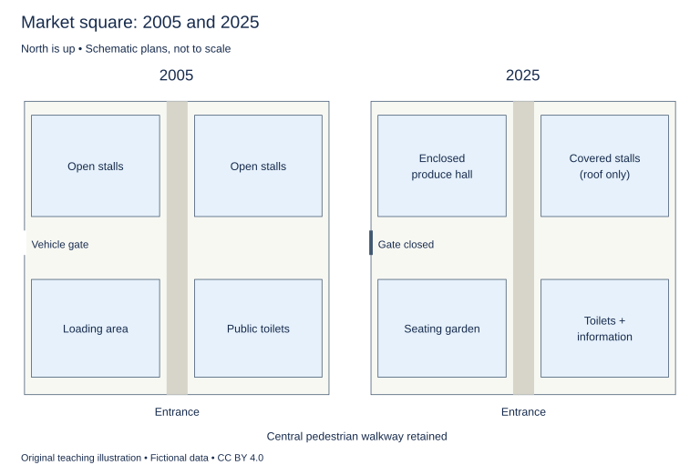
教学虚构，北向上，示意不按比例。2005西北/东北Open stalls，西南Loading area，东南Public toilets；南中央入口和中央南北步道；西边有Vehicle gate。2025西北Enclosed produce hall，东北Covered stalls（仅加顶）；西南Seating garden，东南Toilets + information；西门封闭；南入口与步道不变。
任务预算（含首次审题，不额外加时）
初稿20分钟（审题规划3、写作15、检查2）；诊断15；反馈阅读与证据核查10；完整重写25；对照归档5。合计75分钟。
初稿后自评清单
- [ ] 达到最低字数；全文连贯成段，没有用项目符号代替作文。
- [ ] 概述给主要特征；数据、阶段或方位都与题图逐项相符，不推断未提供的原因。
- [ ] 每段可写出一个功能标签；例子或数据与该段要点相连。
- [ ] 核查两处词汇搭配和两处句法；如有疑点先试改再核实，无问题则记录通过证据。
- [ ] 如有影响理解的问题，记录原句；否则记通过或待核查，不填写自猜分数。
反馈与重写
打开 独立参考页（本节下方展开参考），按逐段检查和通用协议核验。重写任务：完整重写至少150词；先不用范例写四个本图专属关键词，再检查原稿是否误套旧题事实。如无套话错误，保留准确句并换一种分组重写。
本周重点操作（已含原预算）
用原有诊断中的3分钟对照本图列四个专属事实，检查是否套入旧图的房间/道路或原因；如有才改。重写只看题图，不看范例；分组可迁移，事实不可照搬。
记录表见阶段证据表，只在上述原时段填写相关行。
W19 T1A 示例、反馈与重练（首答后展开）
WS-W19-T1A 独立参考页
只在初稿完成后阅读；不是唯一答案，也没有官方分数。以下是对原创示例的教学讲评，不是对学生尚未提交作文的已完成批改。
思路拆解
陌生布局先读方位与图例，不背旧地图报告；区分封闭hall与仅加顶stalls；gate封闭不推区域禁车政策。
原创示例
The plans compare a market square in 2005 and 2025. Both show an entrance on the southern side and a central north-south walkway dividing the main trading areas.
Overall, the square changed from a mainly outdoor market into a site with more permanent facilities. A produce hall replaced the western open stalls, and the eastern stalls became covered trading spaces. The entrance and central walkway remained, while vehicle access was reduced.
In 2005, open stalls occupied the northern areas on both sides of the walkway. By 2025, the western group had been replaced by an enclosed produce hall. The eastern group stayed in the same position but gained a roof, becoming covered stalls rather than a fully enclosed hall.
The southern part also changed. A loading area in the southwest was replaced by a seating garden, while the old public toilets in the southeast were altered within the same area to include an information desk. A vehicle gate in the western boundary was closed, leaving the southern entrance as the only entrance shown. Despite these alterations, the main pedestrian route through the centre of the square retained its original position.
示例正文词数：190（本项目正则计数；书信不含称呼、结束语与署名；连字符词作一词）。
逐段反馈与迁移
- P1 南入口/中央路径两图一致，描述square不是整座城市。
- P2 outdoor到永久设施，vehicle access reduced来自西门关闭，非全城车流减少。
- P3 西替换，东原址加顶，不能把二者都写成新大厅。
- P4 装卸区变座椅花园，厕所原区增问讯；只说图示唯一入口，不猜其他未画道路。
常见失误
套用旧图房间词导致张冠李戴；把covered当enclosed；猜改造提高收入或交通安全。
可执行反馈步骤
1. 先把自己的段落标为引入、概述/论点、支持、收束；分段可不同于示例，按功能核查，不照抄段数。
2. 对照上方逐段检查，逐项标“已有证据/缺失/不适用”。每条意见必须附自己的原句或缺失位置。
3. 按 反馈协议 的四维表记录；有争议的 AI 意见回题干、数据或语法依据核验。
4. 只选至多两项有证据的优先点执行整篇重写；如未发现问题，可改变组织或表达练迁移，但不把它标成纠错；保留原稿，禁止把示例替换为自己的作业。
重写任务
完整重写至少150词；先不用范例写四个本图专属关键词，再检查原稿是否误套旧题事实。如无套话错误，保留准确句并换一种分组重写。
完成后重新勾选 学生页（见本节上方学生题） 清单；将一处改前/改后及理由交给独立评阅者核查。真人评阅状态目前为“待安排”，不是已完成。
WS-W19-T1G 学生页：邀请朋友参加手作体验
周次 W19｜题型 T1G｜能力点：书信目的、要点与语气
Task 1 的 A/G 分支二选一，另一分支不计入本周作业。
使用与记录
原创教学练习，非真题、非标准化模拟，难度未校准。先完成本页再打开参考页。人物、机构、经历与数据均为教学虚构。不要背诵示例。自评和 AI 反馈不能代替独立真人评分，未获得真人评阅时标记“分数未确认”。
保存：任务ID、实际日期、用时、初稿或原始录音、证据化反馈、重写/重答、三条修改理由。没有学生提交物，不得填写“已批改”或“已完成训练”。
完整题干
You are planning to attend a craft workshop and would like a friend to join you. Write a letter to your friend, Taylor. In your letter:
- describe the workshop
- explain why you think your friend would enjoy it
- suggest how you could organise the visit together.
Begin your letter: Dear Taylor,
Write at least 150 words. You do not need to write any addresses. Spend about 20 minutes on this task.
任务预算（含首次审题，不额外加时）
初稿20分钟（审题规划3、写作15、检查2）；诊断15；反馈阅读与证据核查10；完整重写25；对照归档5。合计75分钟。
初稿后自评清单
- [ ] 达到最低字数；全文连贯成段，没有用项目符号代替作文。
- [ ] 三个要点均展开；称呼、目的、语气和结束语适合收信人。
- [ ] 每段可写出一个功能标签；例子或数据与该段要点相连。
- [ ] 核查两处词汇搭配和两处句法；如有疑点先试改再核实，无问题则记录通过证据。
- [ ] 如有影响理解的问题，记录原句；否则记通过或待核查，不填写自猜分数。
反馈与重写
打开 独立参考页（本节下方展开参考），按逐段检查和通用协议核验。重写任务：完整重写至少150词；如有旧题不适用内容则替换为编织/时间/预订事实；重写只看要点不看示例，完成后复核三点。
本周重点操作（已含原预算）
用原有诊断中的3分钟分别用自己的话复述活动、推荐理由与共同安排；如有旧信细节混入则删改。重写只看本题三要点，不背整封信。
记录表见阶段证据表，只在上述原时段填写相关行。
W19 T1G 示例、反馈与重练（首答后展开）
WS-W19-T1G 独立参考页
只在初稿完成后阅读；不是唯一答案，也没有官方分数。以下是对原创示例的教学讲评，不是对学生尚未提交作文的已完成批改。
思路拆解
私人邀请与本题编织活动紧扣；介绍、对方兴趣理由、共同出行与未订状态清楚。
原创示例
Dear Taylor,
I have found a workshop that I think we would enjoy together. It is a beginner session on making simple woven baskets at the craft centre near the old market. The session runs from ten until one on the first Saturday of next month, and the organiser says that materials are included in the fee.
I thought of you because you enjoyed the small weaving activity we tried at the summer fair. This workshop would give us more time to practise, with someone available to explain each step. We would each make a small basket to take home, so it would be a chance to create something useful rather than just watch a demonstration. No previous experience is required.
If you are interested, we could meet at the station at nine fifteen and walk to the centre together. I suggest checking the available places this week before making any booking. Afterwards, we could have lunch in the market and compare our finished baskets. Let me know whether that Saturday suits you, and we can decide whether to reserve two places.
Best, Alex
示例正文词数：180（本项目正则计数；书信不含称呼、结束语与署名；连字符词作一词）。
逐段反馈与迁移
- P1 活动时间材料范围齐全；fee未给金额不乱补价格。
- P2 过往体验关联推荐，初学者无需技能，非承诺一定成大师。
- P3 9:15到10点衔接合理；先问可否再预订，未声称已支付。
常见失误
背旧聚餐邀请却漏工作坊信息；把materials included改成免费课程；未经朋友答复写已订。
可执行反馈步骤
1. 先把自己的段落标为引入、概述/论点、支持、收束；分段可不同于示例，按功能核查，不照抄段数。
2. 对照上方逐段检查，逐项标“已有证据/缺失/不适用”。每条意见必须附自己的原句或缺失位置。
3. 按 反馈协议 的四维表记录；有争议的 AI 意见回题干、数据或语法依据核验。
4. 只选至多两项有证据的优先点执行整篇重写；如未发现问题，可改变组织或表达练迁移，但不把它标成纠错；保留原稿，禁止把示例替换为自己的作业。
重写任务
完整重写至少150词；如有旧题不适用内容则替换为编织/时间/预订事实；重写只看要点不看示例，完成后复核三点。
完成后重新勾选 学生页（见本节上方学生题） 清单；将一处改前/改后及理由交给独立评阅者核查。真人评阅状态目前为“待安排”，不是已完成。
WS-W19-T2 学生页：传统工艺公共支持
周次 W19｜题型 T2｜能力点：观点展开与任务回应
A/G 共用本题。
使用与记录
原创教学练习，非真题、非标准化模拟，难度未校准。先完成本页再打开参考页。人物、机构、经历与数据均为教学虚构。不要背诵示例。自评和 AI 反馈不能代替独立真人评分，未获得真人评阅时标记“分数未确认”。
保存：任务ID、实际日期、用时、初稿或原始录音、证据化反馈、重写/重答、三条修改理由。没有学生提交物，不得填写“已批改”或“已完成训练”。
完整题干
Some people believe public money should support traditional crafts that attract few buyers. Others think this money should be spent on essential local services. Discuss both views and give your own opinion. Give reasons and include relevant examples.
Write at least 250 words. Spend about 40 minutes on this task.
任务预算（含首次审题，不额外加时）
初稿40分钟（审题规划5、写作30、检查5）；诊断15；反馈阅读与证据核查10；完整重写35；对照归档5。合计105分钟。
初稿后自评清单
- [ ] 达到最低字数；全文连贯成段，没有用项目符号代替作文。
- [ ] 直接回答题目的所有问句，有始终一致的立场。
- [ ] 每段可写出一个功能标签；例子或数据与该段要点相连。
- [ ] 核查两处词汇搭配和两处句法；如有疑点先试改再核实，无问题则记录通过证据。
- [ ] 如有影响理解的问题，记录原句；否则记通过或待核查，不填写自猜分数。
反馈与重写
打开 独立参考页（本节下方展开参考），按逐段检查和通用协议核验。重写任务：完整重写至少250词；不用示例句，先写本题的公共目的、竞争用途、有限支持三个关键词。如旧论据能迁移，必须重建与本题的因果联系。
本周重点操作（已含原预算）
用原有诊断中的3分钟写本题双方最强理由及自己的选择条件，再检查旧论据是否真正支持工艺与基本服务之争；如不相关才替换。完整重写不看范例。
记录表见阶段证据表，只在上述原时段填写相关行。
W19 T2 示例、反馈与重练（首答后展开）
WS-W19-T2 独立参考页
只在初稿完成后阅读；不是唯一答案，也没有官方分数。以下是对原创示例的教学讲评，不是对学生尚未提交作文的已完成批改。
思路拆解
陌生文化预算话题用题干概念，不硬套教育/环保文；双方价值与机会成本比较，意见为基本服务优先且有限例外。
原创示例
Traditional crafts may have cultural value even when they attract few customers. However, public budgets also have to support services that residents use every day. I believe essential services should normally take priority, while limited support for crafts can be justified when it has a clear public purpose.
Supporters of craft funding argue that skills can disappear when experienced makers have nobody to teach. A craft is not simply a finished object; it can include techniques and knowledge connected with a community’s history. A small teaching programme might allow those skills to be documented and passed on even if commercial demand is weak. Public demonstrations can also let residents encounter work they would not otherwise see. These benefits explain why sales alone may be an incomplete measure of a craft’s value.
The opposing argument concerns opportunity cost. Money spent on a craft programme is not available for other uses, and a community may have urgent needs such as maintaining shared facilities or improving access to basic information. Residents who rarely attend craft events may reasonably question a large subsidy when everyday services are unreliable. The fact that an activity has cultural significance does not remove the need to compare its benefits with those of competing priorities.
My view is that funding should be proportionate and reviewed against explicit aims. Supporting a short apprenticeship or recording a technique is different from paying indefinitely for a business that has no realistic plan to attract customers. A modest programme with public access could preserve knowledge without requiring a large permanent commitment. Where essential provision is seriously inadequate, however, that need should be addressed first.
In conclusion, traditional crafts can merit some support beyond what the market provides, but essential local services generally have the stronger claim. Clear goals, limited commitments and attention to current needs would make any cultural funding easier to justify.
示例正文词数：310（本项目正则计数；书信不含称呼、结束语与署名；连字符词作一词）。
逐段反馈与迁移
- P1 两方和优先条件明确，不用universal模板回避资金分配。
- P2 技能传承与公开接触是公共目的，销量不是唯一但仍 relevant。
- P3 opportunity cost落实到竞争用途，不需要假造当地财政统计。
- P4 传授/记录与无限补贴商业区分，提供限度。
- P5 不突然要求全面禁止工艺资助。
常见失误
背文化好处却不谈essential services；少买家推为没价值；支持资金但无边界。
可执行反馈步骤
1. 先把自己的段落标为引入、概述/论点、支持、收束；分段可不同于示例，按功能核查，不照抄段数。
2. 对照上方逐段检查，逐项标“已有证据/缺失/不适用”。每条意见必须附自己的原句或缺失位置。
3. 按 反馈协议 的四维表记录；有争议的 AI 意见回题干、数据或语法依据核验。
4. 只选至多两项有证据的优先点执行整篇重写；如未发现问题，可改变组织或表达练迁移，但不把它标成纠错；保留原稿，禁止把示例替换为自己的作业。
重写任务
完整重写至少250词；不用示例句，先写本题的公共目的、竞争用途、有限支持三个关键词。如旧论据能迁移，必须重建与本题的因果联系。
完成后重新勾选 学生页（见本节上方学生题） 清单；将一处改前/改后及理由交给独立评阅者核查。真人评阅状态目前为“待安排”，不是已完成。
WS-W19-S1 学生页
周次W19｜Part 1专项｜能力点：陌生话题即时迁移，不背全文｜30分钟
使用与记录
原创教学练习，非真题、非标准化模拟，难度未校准。先完成本页再打开参考页。人物、机构、经历与数据均为教学虚构。不要背诵示例。自评和 AI 反馈不能代替独立真人评分，未获得真人评阅时标记“分数未确认”。
保存：任务ID、实际日期、用时、初稿或原始录音、证据化反馈、重写/重答、三条修改理由。没有学生提交物，不得填写“已批改”或“已完成训练”。
操作与预算
设备与审题3分钟；首答录音6；回听及局部转写7；示例和诊断5；不看稿重答6；归档3。共30分钟。
Part 1专项题
1. Do you enjoy looking at handmade objects?
2. Have you ever watched someone making something?
3. Do you prefer practical or decorative gifts?
4. What makes an unfamiliar object interesting?
追问：
- How would you describe it without knowing its name?
- Would your preference change for a particular person?
录音回听清单
- [ ] 保留首答原音，记录实际时长、是否中断、是否看稿；只报真实完成状态。
- [ ] 流利与连贯：标出两处时间戳，区分构思停顿与重复搜词，检查是否偏离问句。
- [ ] 词汇：找一处模糊词或重复表达，先解释原意再替换；不为难词改变意思。
- [ ] 语法：核对经历与习惯的时态；局部转写核查；如存在妨碍理解的问题才更正，无则记通过。
- [ ] 发音：不看转写听30秒，标听不清的词尾、重音或断句；没有音频不能判断发音。
- [ ] 展开：主要回答有具体情境或理由；追问后第一句回应追问的新角度。
重答要求
如有笼统判断，选择至多两个答案补具体情境；如没有，选择两题换角度重答并保留切题证据；重答一条追问，检查是否真正回应其新角度。
首答回听后才打开独立参考页（本节下方展开参考）。按反馈协议填至少三个时间戳，不以文字转写替代音频评阅。
本周重点操作（已含原预算）
首答和读示例后，在原有重答时段打开参考页“即时迁移卡”，仅用关键词回答指定新问或任务。不得另加录音次数/时段，不背示例全文；不知道的名称可描述特征，未知事实明确说不知道。
记录表见阶段证据表，只在上述原时段填写相关行。
W19 S1 示例、反馈与重练（首答后展开）
WS-W19-S1 独立参考页
原创教学示例，非真题或评分结果。未收到学生音频；以下是示例分析与待执行反馈，不能登记为已完成学生批改。
展开示例
直接回应→原因→具体情境的展开示例
An unfamiliar object interests me when I can see signs of how it was used. If I do not know its name, I would describe its shape, material and moving parts. I might then suggest what it could be for, but I would make clear that this was a guess rather than something I knew.
纯口答示例词数：55；只计MODEL标记内实际英文口答，不含标题、标签、说明。词数不能证明录音时长或流利度。
展开与反馈
本周能力：陌生话题即时迁移，不背全文。
1. 示例先表态，再说明偏好理由，最后提供条件或场景。检查自己是否用一个词回答后就结束。
2. 找到一个具体细节：物品、动作、对话或地点。用自己的经历替换，保持与题卡相关，不照搬示例身份与经历。
3. 追问要重新回应，不能继续背长答。首句先回答追问，再用一条理由支持。
4. 如存在听不清或语法影响理解处，标原音时间戳；否则标一处清楚的原音证据；先尝试最小修正。不要把自然停顿一概当成错误，或用加快语速掩盖逻辑断裂。
常见失误
空泛形容词替代具体过程；给了经历却没解释为什么重要；Part 3只有个人故事没有一般解释；AI只看转写就判断发音。逐项回原音核对，不能凭范例推断自己已达到某个分数。
可执行重答与反馈
如有笼统判断，选择至多两个答案补具体情境；如没有，选择两题换角度重答并保留切题证据；重答一条追问，检查是否真正回应其新角度。
填写反馈协议四维表，附三个时间戳和原话证据。如存在，选至多一个内容问题与一个语言问题先修；否则记录清楚的证据并做迁移重答；重答后并排听两段，记录改善与仍未解决之处。自评与AI不能替代独立真人评分；独立评阅目前待安排，分数未确认。
即时迁移卡（重答开始时才看）
由同伴临时选A或B；独练只在计时开始时查看一项。A: When might a familiar-looking object work differently from what you expect? Follow-up: How would you check? / B: How would you describe an unfamiliar service without knowing its name? Follow-up: What would you avoid claiming?
本节替换原重答时段中的两题：准备30秒，各答30～45秒并答追问，余时对照。
这里只检验组织/描述方法是否能迁移，不能编造事实或把背过的范文改几个名词当即兴回答；未完成如实记录。
WS-W19-S2 学生页
周次W19｜Part 2专项｜能力点：陌生话题即时迁移，不背全文｜30分钟
使用与记录
原创教学练习，非真题、非标准化模拟，难度未校准。先完成本页再打开参考页。人物、机构、经历与数据均为教学虚构。不要背诵示例。自评和 AI 反馈不能代替独立真人评分，未获得真人评阅时标记“分数未确认”。
保存：任务ID、实际日期、用时、初稿或原始录音、证据化反馈、重写/重答、三条修改理由。没有学生提交物，不得填写“已批改”或“已完成训练”。
操作与预算
准备、首答录音及追问5分钟；回听及局部转写8；示例与诊断5；关键词重组3；重答及追问5；归档4。共30分钟。
Part 2专项任务卡
Describe an object made by hand that caught your attention. Say what it looked like, where you saw it, what you knew about how it was made, and explain why it interested you.
准备1分钟，说1～2分钟。只记5个关键词，不预写句子。
收尾追问：
- Would you like to learn how to make it?
- Was it designed to be used or displayed?
录音回听清单
- [ ] 保留首答原音，记录实际时长、是否中断、是否看稿；只报真实完成状态。
- [ ] 流利与连贯：标出两处时间戳，区分构思停顿与重复搜词，检查是否偏离问句。
- [ ] 词汇：找一处模糊词或重复表达，先解释原意再替换；不为难词改变意思。
- [ ] 语法：核对经历与习惯的时态；局部转写核查；如存在妨碍理解的问题才更正，无则记通过。
- [ ] 发音：不看转写听30秒，标听不清的词尾、重音或断句；没有音频不能判断发音。
- [ ] 展开：主要回答有具体情境或理由；追问后第一句回应追问的新角度。
重答要求
用五个关键词重答完整任务卡1～2分钟，再答两条追问；如缺具体细节则补、如有无关背景则删；若已清楚，换表达但保持事实。比较首答与重答，不背示例。
首答回听后才打开独立参考页（本节下方展开参考）。按反馈协议填至少三个时间戳，不以文字转写替代音频评阅。
本周重点操作（已含原预算）
首答和读示例后，在原有重答时段打开参考页“即时迁移卡”，仅用关键词回答指定新问或任务。不得另加录音次数/时段，不背示例全文；不知道的名称可描述特征，未知事实明确说不知道。
记录表见阶段证据表，只在上述原时段填写相关行。
W19 S2 示例、反馈与重练（首答后展开）
WS-W19-S2 独立参考页
原创教学示例，非真题或评分结果。未收到学生音频；以下是示例分析与待执行反馈，不能登记为已完成学生批改。
展开示例
原创长答示例（时长须以个人实际录音测量）
An object made by hand that caught my attention was a small wooden box at a weekend market. It had a plain shape, but the lid fitted so neatly that I could hardly see the join when it was closed.
The maker invited me to pick it up and showed me how the lid slid along a narrow groove. I do not know enough about woodwork to name every tool involved, but I could see that the surface had been carefully smoothed and that the parts had to fit accurately.
What interested me was the combination of simplicity and precision. There were no bright decorations to draw attention, yet using the lid felt satisfying. The maker explained that the box could hold sewing materials or small stationery items.
I did not buy it that day because I had not planned to spend much money. Still, I remembered it afterwards. It made me notice that a handmade object can be interesting because of an ordinary practical detail, not only because it is rare, expensive or visually elaborate.
纯口答示例词数：176；只计MODEL标记内实际英文口答，不含标题、标签、说明。词数不能证明录音时长或流利度。
展开与反馈
本周能力：陌生话题即时迁移，不背全文。
1. 长答示例按背景、行动/观察、变化与意义组织。每段都推进内容；检查自己是否只有背景而没有具体事件。
2. 找到一个具体细节：物品、动作、对话或地点。用自己的经历替换，保持与题卡相关，不照搬示例身份与经历。
3. 追问要重新回应，不能继续背长答。首句先回答追问，再用一条理由支持。
4. 如存在听不清或语法影响理解处，标原音时间戳；否则标一处清楚的原音证据；先尝试最小修正。不要把自然停顿一概当成错误，或用加快语速掩盖逻辑断裂。
常见失误
空泛形容词替代具体过程；给了经历却没解释为什么重要；Part 3只有个人故事没有一般解释；AI只看转写就判断发音。逐项回原音核对，不能凭范例推断自己已达到某个分数。
可执行重答与反馈
用五个关键词重答完整任务卡1～2分钟，再答两条追问；如缺具体细节则补、如有无关背景则删；若已清楚，换表达但保持事实。比较首答与重答，不背示例。
填写反馈协议四维表，附三个时间戳和原话证据。如存在，选至多一个内容问题与一个语言问题先修；否则记录清楚的证据并做迁移重答；重答后并排听两段，记录改善与仍未解决之处。自评与AI不能替代独立真人评分；独立评阅目前待安排，分数未确认。
即时迁移卡（重答开始时才看）
由同伴临时选A或B；独练只在计时开始时查看一项。A: Describe a tool whose purpose was not immediately clear. Say where you saw it, what it looked like, how you tried to understand it, and explain what remained uncertain. / B: Describe a demonstration of an unfamiliar activity. Say where it was, what you observed, what you understood, and explain what you would still need to learn.
本节替换原Part 2重答：准备1分钟、说1～2分钟，余时简答本次经历中的未知点并归入同一重答记录。
这里只检验组织/描述方法是否能迁移，不能编造事实或把背过的范文改几个名词当即兴回答；未完成如实记录。
WS-W19-S3 学生页
周次W19｜三部分全流程｜能力点：陌生话题即时迁移，不背全文｜60分钟
使用与记录
原创教学练习，非真题、非标准化模拟，难度未校准。先完成本页再打开参考页。人物、机构、经历与数据均为教学虚构。不要背诵示例。自评和 AI 反馈不能代替独立真人评分，未获得真人评阅时标记“分数未确认”。
保存：任务ID、实际日期、用时、初稿或原始录音、证据化反馈、重写/重答、三条修改理由。没有学生提交物，不得填写“已批改”或“已完成训练”。
操作与预算
D5：设备与流程准备2分钟，连续首答11～14分钟，余14～17分钟完整回听标记，共30分钟。D6：局部转写诊断10，阅读示例与调整5，重答与新追问10，对照归档5，共30分钟。合计60分钟。
连续三部分全流程（首答不可看参考）
找同伴读题，或独练逐题揭示。完整首答11～14分钟，中途不暂停纠错。模拟同伴不是认证考官；自行读题的练习记录不能冒充真实面试。
Part 1：4～5分钟
1. Do you like visiting markets?
2. What do you notice when entering a new place?
3. Do you ask questions when something is unfamiliar?
4. Do you enjoy trying activities you have not done before?
5. What makes you remember an unusual object?
6. Do you prefer learning by watching or trying?
可按回答追加 Why? / Can you give an example? 到时转下部分，不强行说完全部备用问题。
Part 2：3～4分钟（含准备）
Describe something unfamiliar that you learned about recently. Say what it was, where you encountered it, how you found out more, and explain what surprised you.
准备1分钟，连续说1～2分钟。收尾追问：
- Would you like to learn more about it?
- How would you explain it to a friend?
Part 3：4～5分钟
1. Why do people sometimes avoid unfamiliar activities?
2. How can existing knowledge help with a new topic?
3. What are the risks of assuming two unfamiliar things work in the same way?
4. Should explanations begin with technical names or familiar comparisons?
根据回答追加追问：
- When might a familiar comparison be misleading?
- How could someone acknowledge uncertainty without stopping the conversation?
录音回听清单
- [ ] 保留首答原音，记录实际时长、是否中断、是否看稿；只报真实完成状态。
- [ ] 流利与连贯：标出两处时间戳，区分构思停顿与重复搜词，检查是否偏离问句。
- [ ] 词汇：找一处模糊词或重复表达，先解释原意再替换；不为难词改变意思。
- [ ] 语法：核对经历与习惯的时态；局部转写核查；如存在妨碍理解的问题才更正，无则记通过。
- [ ] 发音：不看转写听30秒，标听不清的词尾、重音或断句；没有音频不能判断发音。
- [ ] 展开：主要回答有具体情境或理由；追问后第一句回应追问的新角度。
重答要求
重答最弱的一个Part 1问题、完整Part 2及一个Part 3问题，再答一条未用追问。用不同细节或补一个例外，确认不是复述范例；局部重答不另计全流程。
首答回听后才打开独立参考页（本节下方展开参考）。按反馈协议填至少三个时间戳，不以文字转写替代音频评阅。
本周重点操作（已含原预算）
首答和读示例后，在原有重答时段打开参考页“即时迁移卡”，仅用关键词回答指定新问或任务。不得另加录音次数/时段，不背示例全文；不知道的名称可描述特征，未知事实明确说不知道。
记录表见阶段证据表，只在上述原时段填写相关行。
W19 S3 示例、反馈与重练（首答后展开）
WS-W19-S3 独立参考页
原创教学示例，非真题或评分结果。未收到学生音频；以下是示例分析与待执行反馈，不能登记为已完成学生批改。
展开示例
Part 2原创展开示例（个人语速不同，不能以词数推录音时长）
Something unfamiliar I learned about recently was a simple hand loom used for weaving narrow strips of fabric. I saw one during a demonstration at a community event. Before that, I had only seen photographs of much larger weaving equipment.
The person demonstrating it showed how one set of threads was held in place while another thread passed across them. I asked a few questions because I could not initially understand how the pattern changed. Watching the sequence slowly helped much more than trying to remember the names of all the parts.
What surprised me was how a small change in the order of the threads could affect the visible pattern. I had assumed that a decorative design was added afterwards, but in this example it developed as the fabric was made.
I could not now reproduce the whole process independently, so I would not claim to have learned the skill. However, I gained enough understanding to describe the basic idea and explain why the demonstration interested me. I would enjoy another opportunity to try a few steps myself.
Part 3观点→理由→条件展开示例
A familiar comparison can give someone a starting point, but it should not be treated as a complete explanation. Two objects may look similar while working differently. I would use the comparison to explain one feature and then say where it stops being useful. Acknowledging that limit is better than confidently transferring details that have not been checked.
纯口答示例词数：237；只计MODEL标记内实际英文口答，不含标题、标签、说明。词数不能证明录音时长或流利度。
展开与反馈
本周能力：陌生话题即时迁移，不背全文。
1. 长答示例按背景、行动/观察、变化与意义组织。每段都推进内容；检查自己是否只有背景而没有具体事件。
2. 找到一个具体细节：物品、动作、对话或地点。用自己的经历替换，保持与题卡相关，不照搬示例身份与经历。
3. Part 3示例不把个人选择强加给所有人；先讲机制，再说明条件或例外。检查自己的追问答案是否直接回应新问题。
4. 如存在听不清或语法影响理解处，标原音时间戳；否则标一处清楚的原音证据；先尝试最小修正。不要把自然停顿一概当成错误，或用加快语速掩盖逻辑断裂。
常见失误
空泛形容词替代具体过程；给了经历却没解释为什么重要；Part 3只有个人故事没有一般解释；AI只看转写就判断发音。逐项回原音核对，不能凭范例推断自己已达到某个分数。
可执行重答与反馈
重答最弱的一个Part 1问题、完整Part 2及一个Part 3问题，再答一条未用追问。用不同细节或补一个例外，确认不是复述范例；局部重答不另计全流程。
填写反馈协议四维表，附三个时间戳和原话证据。如存在，选至多一个内容问题与一个语言问题先修；否则记录清楚的证据并做迁移重答；重答后并排听两段，记录改善与仍未解决之处。自评与AI不能替代独立真人评分；独立评阅目前待安排，分数未确认。
即时迁移卡（重答开始时才看）
由同伴临时选A或B；独练只在计时开始时查看一项。A: Why might a comparison that helps beginners become misleading later? Follow-up: Can you give a hypothetical example and state its limit? / B: How can people respond to an unfamiliar question without pretending to know facts? Follow-up: Is uncertainty always a weakness?
本节替换原Part 3重答及其追加追问，合计最多3分钟；其余原定Part 1/2重答保持，全部在10分钟内。
这里只检验组织/描述方法是否能迁移，不能编造事实或把背过的范文改几个名词当即兴回答；未完成如实记录。
许可
原创文字：RayXBuilds and contributors，CC BY 4.0。此页由已验收分课汇编，调整了标题和导航；题干、正文和答案内容保留。公开第三方音频未包含。
回到顶部
U29 第20周：长篇阅读、写作与口语
本页为已独立核验的原创文字课程。先完成学生题目，再展开对应参考。非真题、非标准化模考，不换算雅思分数。听力尚未补齐，本页不代表全科课程已完成。
每周选A或G类Task 1一题，加Task 2及三次口语。参考范文不是学生已完成作业，仍须提交初稿、录音和重写，独立真人评分另行安排。
阅读每周180分钟（60分钟首次限时、120分钟证据精读与延迟复测），写作180分钟、口语120分钟。词汇60分钟、听力180分钟另列；新增完整听力未验收，不能勾整周完成。
W20原创阶段检查按实际证据复盘；正式T20陌生整卷及真人评分另记，缺少目标或真实证据时不能据此判断报考/延长，本页原创技能卷不能代替正式模拟。后续周数与达标规则见 U04。
阅读：首答不查词
R-W20-01 · The Paper That Changed Shape
W20｜正文 854 词｜13 题｜篇章：简化科学模型：材料响应与测量边界（6段）
本课必做60分钟：首答20、证据复盘20、词汇长句10、48小时后复测10。每周三课180分钟，合卷首答替代单课首答，不重复计算。开放短文选做另加15分钟。
本项目原创虚构教学情境，人物、地点、历史事件和案例数据均非真实研究或史料。科学解释只讨论文内说明的模型与条件。非雅思真题或标准化模考；正确数不换算雅思等级。许可：CC BY 4.0 — RayXBuilds and contributors。
能力点：识别论证关系、区分作者与引述者、条件与因果、精确定位。初读不查词，完成后打开独立答案页。
Passage
A In a fictional materials workshop, students find that a paper strip bends after one face has been lightly moistened. Their first explanation is that wet paper always curls in the same direction. The teacher offers a more limited model. In this exercise, the two faces do not change length equally, and the strip bends as the attached parts accommodate that difference. The account deliberately leaves out many properties of real papers, inks and coatings. It is a model for reasoning about unequal change in connected layers, not a universal prediction for every sheet exposed to moisture. The distinction matters because an attractive demonstration can encourage a claim broader than the conditions actually examined. Before generalising, the students need to identify which material was used, how moisture was applied and what aspect of the resulting shape was observed.
B The class prepares strips from the same sheet and marks the face that will receive moisture. Each strip is supported at one end so that the rest can move. One group records only whether the free end rises or falls. Another traces the whole curve against a grid. These observations answer different questions. Two strips can place their free ends at similar heights while bending differently along their lengths. Conversely, a strip can change its end position because the support moves, even if its own curvature changes little. The class therefore fixes the support before comparing results and records both the end position and the outline. Choosing an easily visible measurement does not make it a complete description of the object's response. The distinction remains important even when both measurements appear straightforward.
C The students next join two paper layers and moisten only the exposed face of one. In the simplified account used for the exercise, the layers would change by different amounts if they were free. Because they are attached, neither can simply take its independent shape while ignoring the other. Bending is one possible response to their connection. The teacher asks the class to compare this arrangement with two loose strips placed side by side. Those strips can change separately and need not produce the same combined movement. The comparison concerns connection, not merely the presence of two pieces of paper. Counting layers without describing how they are joined would leave out the relationship responsible for the behaviour being modelled. The students also note that the explanation applies only while the connection remains intact; separation would change the system they are trying to describe.
D Time introduces another complication. The outline observed immediately after moistening may differ from the outline observed later. A photograph taken at one moment cannot by itself show whether the shape has stabilised or is still changing. The students use a timing strip to record the interval between applying moisture and tracing the outline. They compare observations taken at matching intervals before discussing differences between samples. This does not mean that the earliest or latest observation is always the most useful. It means that the choice must correspond to the question being asked. A study of the first response and a study of a later condition can both be legitimate, but their results should not be compared as though the observation times were interchangeable. The interval is part of the conditions, even when it is not visible in a photograph.
E The workshop uses several simple records. A treatment card identifies the marked face and the amount of moisture applied. A support sketch shows the position and angle of the clamp holding the strip. A profile sheet preserves successive outlines against the same grid, with each outline linked to its observation time. A connection log states whether the joined layers remain attached throughout each trial. These records make different possible explanations inspectable. If an end moves, the support sketch helps check whether the clamp changed; if a curve changes over time, the profile sheet preserves that development. The connection log prevents a separated pair from being silently compared with an intact pair as though both represented the same arrangement. The records are useful because their contents correspond to particular questions, rather than because adding documentation automatically makes a demonstration convincing.
F By the end, the students have replaced a sweeping claim about wet paper with a conditional account of the model. They can describe a connected arrangement, an unequal response and an observed shape under specified treatment and timing. They still cannot predict every paper product from the classroom results. That limitation does not make the exercise pointless. A model can teach a relationship while deliberately setting aside other influences, provided those boundaries remain visible when the explanation is used. The class now asks what changed, what was connected and what was held constant before treating two visible curves as instances of the same process. Its progress lies partly in making fewer unsupported claims. A striking bend has become a question that can be examined through comparisons, and an ordinary material has become a way to practise distinguishing observation from the broader interpretation attached to it. Any later extension would require checking whether the new arrangement preserves the conditions on which the present explanation depends.
Questions
Complete the sentences. Choose NO MORE THAN 3 WORDS FROM THE PASSAGE for each answer. Do not change word forms.
1. The time between moistening and tracing is recorded on a ______.
2. The treated face and applied moisture amount are identified on a ______.
3. The clamp’s position and angle are shown in a ______.
4. Successive outlines on a common grid are preserved on a ______.
5. Whether the joined layers stay attached is stated in a ______.
Do the following statements agree with the writer's views? Write YES, NO or NOT GIVEN. YES = the writer agrees; NO = the writer expresses the opposite view; NOT GIVEN = the writer's view is not stated. Do not use outside knowledge.
6. Recording only an easily visible quantity necessarily describes the complete response.
7. An explanation based on attached layers must reconsider the system if they separate.
8. The writer favours charging students for materials used in unsuccessful trials.
9. A limited model may still teach a useful relationship.
Choose ONE answer, A, B, C or D.
10. The teacher’s account is intended to explain
A. unequal change in connected parts under limited conditions B. the chemistry of all inks C. every commercial paper product D. why moisture always bends paper identically
11. Why record an outline as well as end height?
A. The same end height can accompany different curves B. Outlines remove the need for time records C. All supports are identical D. End height never changes
12. The loose-strip comparison isolates the importance of
A. the number of students B. the relationship created by attachment C. the colour of the grid D. the photograph size
13. A photograph at one moment cannot alone establish
A. that any image exists B. which outline was photographed C. whether the shape has stopped changing D. that the support is visible
本周重点
原创阶段检查：60分钟合卷与延迟复测分开记录；不能替代正式T20，也不能据原创正确数判定报考或保分。
复盘
必做：给每道错题标记“定位/作者立场/范围/语法/词数”，抄最短证据；用一行箭头概括本文论证或过程。48小时后重做错题与两道正确题，检查是否仍能指出证据。
选做（15分钟，80–100词）：Identify a measurement limitation and an explanatory limitation, using different paragraphs.
R-W20-01 答案、证据与精读（首答后展开）
R-W20-01 · 独立答案与证据
来源与许可同学生页。先完成再核对。可接受答案由 accepted_answers 明确列出；只忽略大小写和首尾空格，不自行删词。开放复盘不计入客观正确数。
1. timing strip / strip｜段落 D｜证据：“a timing strip to record the interval”
strip可接a，字段明确。
2. treatment card / card｜段落 E｜证据：“A treatment card identifies”
card可接受。
3. support sketch / sketch｜段落 E｜证据：“A support sketch shows the position and angle”
sketch可接受。
4. profile sheet / sheet｜段落 E｜证据：“A profile sheet preserves successive outlines”
sheet可接受。
5. connection log / log｜段落 E｜证据：“A connection log states whether”
log可接受。
6. NO｜段落 B｜证据：“does not make it a complete description”
明确反对必要充分夸大。
7. YES｜段落 C｜证据：“separation would change the system”
连接是模型条件。
8. NOT GIVEN｜段落 F｜证据：“That limitation does not make the exercise pointless”
全文未提收费。
9. YES｜段落 F｜证据：“A model can teach a relationship”
边界不等于无用。
10. A｜段落 A｜证据：“unequal change in connected layers”
受限定的模型。
11. A｜段落 B｜证据：“similar heights while bending differently”
同一单点值不代表完整形状。
12. B｜段落 C｜证据：“The comparison concerns connection”
比较因素为连接。
13. C｜段落 D｜证据：“whether the shape has stabilised”
单时点不能给时间进展。
词汇与长句
- curvature：曲线弯曲的程度或形态特征
- clamp：固定样条的夹具
- intact：仍完整相连的
- conditional：只有在指定条件下成立的
> Because they are attached, neither can simply take its independent shape while ignoring the other.
because给连接约束；neither指两层中的任一层。
> A model can teach a relationship while deliberately setting aside other influences, provided those boundaries remain visible when the explanation is used.
while允许简化；provided要求使用时保留边界。
开放任务参考
B/D测量不完整或时间边界；A/C/F模型适用条件；分清观察与解释。
标准：观点有文内依据，保留条件和范围，推断明确标注；不存在唯一措辞。
R-W20-02 · A Photograph with Two Dates
W20｜正文 939 词｜13 题｜篇章：虚构历史：摄影材料与日期证据（8段）
本课必做60分钟：首答20、证据复盘20、词汇长句10、48小时后复测10。每周三课180分钟，合卷首答替代单课首答，不重复计算。开放短文选做另加15分钟。
本项目原创虚构教学情境，人物、地点、历史事件和案例数据均非真实研究或史料。科学解释只讨论文内说明的模型与条件。非雅思真题或标准化模考；正确数不换算雅思等级。许可：CC BY 4.0 — RayXBuilds and contributors。
能力点：识别论证关系、区分作者与引述者、条件与因果、精确定位。初读不查词，完成后打开独立答案页。
Passage
A A photograph in the fictional Bellmere collection carries two dates. One is written on the back of the print, while the other appears in a catalogue produced much later. Both have been described as the date of the photograph, although they refer to different events. The earlier date is associated with the exposure that produced the image, and the later one with a printing of it. The distinction changes the question a researcher can answer. A print made decades after an exposure can show an earlier scene without being an object manufactured at that earlier time. The collection's curator begins by separating the history of the depicted moment from the history of the physical object that now represents it.
B The scene shows a square with a temporary wooden platform in front of the town hall. A handwritten note calls it the opening ceremony for a new bridge. A later exhibition label describes the platform as election seating. Neither description is visible simply by looking at the structure. The curator searches for supporting documents rather than selecting whichever story makes the picture more interesting. A programme for the bridge opening mentions a platform in the square, but does not identify this particular image. It makes the first interpretation plausible without proving it. The curator keeps the proposed identification separate from what can be directly described: people, a platform and the surrounding buildings. A convincing narrative still needs a defensible connection between the event and the surviving image.
C A second print of the same view introduces a further difficulty. It includes more of the street at the left edge, where a shop sign can be read. The exhibition copy has been cropped, removing that sign and making the platform seem more central. The alteration does not necessarily falsify the visible people or buildings, but it changes their relationships within the frame. Someone who sees only the cropped version might assume that the photographer originally excluded the street. The curator therefore compares the edges before drawing conclusions about the initial composition. The two objects share an image source while presenting different selections from it. Treating them as visually interchangeable would hide a decision made after the exposure rather than at the moment the scene was recorded.
D The back of the later print bears a stamp from a studio that operated after the earliest proposed event date. This need not prove that the scene itself is later. The studio may have produced a new print from older image material. At the same time, the stamp does not establish the exposure date by itself. It supports a claim about the physical print and the business associated with it, within the limits of the evidence available. The curator resists turning every date into a competing answer to one question. Some dates can coexist because they describe different stages in the object's history. The problem is less a contradiction between numbers than a failure to name the event to which each number belongs.
E A newspaper reproduction adds another stage. It was published during a later anniversary and accompanied by a caption written for that occasion. The publication date establishes when that reproduction appeared, not when the people stood in the square. Its caption may preserve useful information, but it is also an interpretation written at a distance from the depicted event. The curator examines whether it cites an earlier source or merely repeats a familiar local story. Repetition can make an identification widely known without independently confirming it. Five later captions derived from one unsupported statement do not provide five separate witnesses. Counting descriptions without tracing their relationships would exaggerate the amount of evidence available for the event's identity.
F The catalogue is revised using distinct records. An exposure register lists proposed dates for the depicted moment and gives the evidence for each. A print record describes the paper object, including the studio stamp and inscriptions. A cropping diagram compares the visible boundaries of the two prints. A publication table lists each newspaper appearance, its date and its accompanying caption. These records do not settle every uncertainty, but they prevent one kind of date or description from silently standing in for another. They also allow a later researcher to disagree with an interpretation while retaining the observations on which it was based. The catalogue becomes easier to revise because the claim and its supporting material are recorded separately.
G For visitors, the curator writes a source note explaining that the bridge-opening identification remains provisional. The display places the wider print beside the cropped one and labels exposure, printing and publication dates as different kinds of information. This presentation asks more attention than a single confident caption, but the curator considers that attention justified when the evidence itself is layered. Uncertainty does not require leaving the object unexplained. It requires stating which parts of the explanation are directly supported, which are inferred and what further material could change the inference. Visitors can still recognise the scene's interest without being offered certainty that the collection cannot defend.
H The photograph consequently acquires several connected histories: the event before the camera, the production of particular prints, the selection of a frame and the later circulation of reproductions. None is automatically the most important for every investigation. A historian studying a public gathering may ask a different question from a researcher studying how the town represented its past. What matters is that the question and the evidence belong to the same stage. The object becomes more informative when its dates are given names, and less reliable when the convenient phrase date of the photograph conceals the differences that the researcher needs to understand.
Questions
Which paragraph contains the following information? Write a letter, A–H. You may use any letter more than once.
1. a document that makes an event identification plausible without confirming the particular image
2. removal of a shop sign changing the apparent emphasis of an image
3. a business stamp that can date a print without dating the depicted scene
4. several later descriptions sharing one unsupported source rather than independent confirmation
Do the following statements agree with the writer's views? Write YES, NO or NOT GIVEN. YES = the writer agrees; NO = the writer expresses the opposite view; NOT GIVEN = the writer's view is not stated. Do not use outside knowledge.
5. All dates attached to an image must compete as answers to the same question.
6. One stage of the photograph’s history must always be the most important for every investigation.
7. The writer recommends preventing visitors from making personal copies of the display.
8. A provisional identification can be explained without claiming certainty.
Complete the summary. Choose NO MORE THAN 3 WORDS FROM THE PASSAGE for each answer. Do not change word forms.
Proposed dates and evidence for the depicted moment enter the (9) ______. Details of the physical paper object appear in a (10) ______. The boundaries of two versions are compared in a (11) ______. Newspaper dates and captions are collected in a (12) ______. Visitors learn about the provisional event identification from a (13) ______.
本周重点
原创阶段检查：60分钟合卷与延迟复测分开记录；不能替代正式T20，也不能据原创正确数判定报考或保分。
复盘
必做：给每道错题标记“定位/作者立场/范围/语法/词数”，抄最短证据；用一行箭头概括本文论证或过程。48小时后重做错题与两道正确题，检查是否仍能指出证据。
选做（15分钟，80–100词）：Choose two dates and explain the different questions they can answer.
R-W20-02 答案、证据与精读（首答后展开）
R-W20-02 · 独立答案与证据
来源与许可同学生页。先完成再核对。可接受答案由 accepted_answers 明确列出；只忽略大小写和首尾空格，不自行删词。开放复盘不计入客观正确数。
1. B｜段落 B｜证据：“does not identify this particular image”
B节目单限制。
2. C｜段落 C｜证据：“removing that sign and making the platform seem more central”
C裁切具体变化。
3. D｜段落 D｜证据：“supports a claim about the physical print”
D印章作用。
4. E｜段落 E｜证据：“do not provide five separate witnesses”
E证据依赖。
5. NO｜段落 D｜证据：“Some dates can coexist”
不同事件日期可共存。
6. NO｜段落 H｜证据：“None is automatically the most important for every investigation”
H明确否定所有调查都优先同一个历史阶段。
7. NOT GIVEN｜段落 G｜证据：“For visitors, the curator writes a source note”
未提个人复制政策。
8. YES｜段落 G｜证据：“Uncertainty does not require leaving the object unexplained”
可解释但标证据边界。
9. exposure register / register｜段落 F｜证据：“An exposure register lists proposed dates”
register可接the。
10. print record / record｜段落 F｜证据：“A print record describes the paper object”
record可接受。
11. cropping diagram / diagram｜段落 F｜证据：“A cropping diagram compares the visible boundaries”
diagram可接受。
12. publication table / table｜段落 F｜证据：“A publication table lists each newspaper appearance”
table可接受。
13. source note / note｜段落 G｜证据：“a source note explaining”
note可接受。
词汇与长句
- exposure：本文指相机记录画面的成像事件
- provisional：仍可能随新证据修正的
- inscription：物体上的文字题记
- reproduction：由先前图像制作的复制呈现
> A print made decades after an exposure can show an earlier scene without being an object manufactured at that earlier time.
made修饰print；without区分画面时间和物体制作时间。
> Five later captions derived from one unsupported statement do not provide five separate witnesses.
derived限定五个说明的共同来源；数量不能替代独立性。
开放任务参考
曝光关联场景、印制关联物体、刊登关联传播；别把更晚物体日期当场景反证。
标准：观点有文内依据，保留条件和范围，推断明确标注；不存在唯一措辞。
R-W20-03 · Who Is the Audience for a Scientific Explanation?
W20｜正文 878 词｜14 题｜篇章：作者论证：科学解释的受众、精度与适用范围（7段）
本课必做60分钟：首答20、证据复盘20、词汇长句10、48小时后复测10。每周三课180分钟，合卷首答替代单课首答，不重复计算。开放短文选做另加15分钟。
本项目原创虚构教学情境，人物、地点、历史事件和案例数据均非真实研究或史料。科学解释只讨论文内说明的模型与条件。非雅思真题或标准化模考；正确数不换算雅思等级。许可：CC BY 4.0 — RayXBuilds and contributors。
能力点：识别论证关系、区分作者与引述者、条件与因果、精确定位。初读不查词，完成后打开独立答案页。
Passage
A At a fictional science centre, two versions of an explanation are tested beside the same working model. One uses specialist terms and equations; the other uses a short analogy about water moving between containers. A visitor understands the second immediately but applies it to a situation in which the analogy fails. Another visitor can read the equations yet cannot explain why one variable has been held constant. The staff realise that the contrast between difficult language and easy language does not settle the question of understanding. An explanation has to support the task its audience is expected to perform. Recognising a term, following a demonstration and deciding whether a conclusion applies elsewhere are related achievements, but they are not interchangeable signs that the same lesson has been learned.
B A simple analogy can provide an entry point by connecting an unfamiliar relationship with an experience the audience already recognises. That connection is useful precisely because it does not reproduce every property of the original system. However, the omitted properties may become important when the explanation is extended. The science centre therefore labels both the relationship illustrated by the water analogy and a condition under which the comparison should not be used. This does not destroy the analogy's value. It gives the visitor a way to use it responsibly. An explanation can be accessible without pretending that resemblance in one respect establishes identity in every other respect. The boundary is part of the explanation, rather than a technical apology to be hidden at the end.
C Specialist language presents a different problem. A technical term can compress a distinction that would otherwise require a long description. Removing it may therefore make an account longer or less precise. Yet displaying the term does not guarantee that a reader knows which distinction it preserves. One draft at the centre defines a word and then uses it in a comparison between two cases. Another merely adds the word in parentheses after an everyday expression. The first gives the term work to do; the second risks turning it into a badge of authority. The staff keep terminology where it helps organise a relationship and explain that relationship through the example, rather than assuming that either inclusion or exclusion of technical vocabulary automatically produces understanding.
D The intended task changes the amount and kind of detail required. A visitor deciding which button starts the model needs an instruction different from that needed by a student comparing its behaviour under two settings. A researcher evaluating the model's assumptions requires further information again. These are not simply three levels on a ladder from ignorance to intelligence. They are different activities, and the same person may move among them during one visit. Giving every reader every detail at the first encounter can obscure the action or relationship currently at issue. Withholding a relevant assumption from someone evaluating a conclusion creates the opposite problem. Selection should follow purpose, while routes to further information should remain available when that purpose changes.
E To examine understanding, staff ask visitors to predict what will happen after one setting changes and to explain the reason for their prediction. They also present a case outside the analogy's stated boundary and ask whether the earlier explanation applies. A correct prediction alone may result from a remembered pattern or a lucky choice. The reason supplied and the response to the boundary case reveal something different. These tasks do not measure every possible form of understanding, nor do they provide a permanent ranking of visitors. They offer evidence about whether this explanation supports these particular uses. Staff revise a display when its wording encourages a recurring unsupported extension, even if visitors report that the display felt clear and enjoyable.
F The centre ultimately designs an explanation with several connected parts. A short opening identifies the question and the central relationship. A worked example shows that relationship in use. A visible limitation describes where the example stops being a reliable guide, and a further section states the assumptions needed for a more detailed account. Readers can follow the part relevant to their task while seeing how it connects to the rest. The design is not successful merely because it contains more panels. Its value depends on whether the connections help readers find the next explanation they need. The staff also check that the short opening makes no claim contradicted by qualifications placed in the later material; access to detail should deepen an account rather than quietly reverse it.
G Good scientific explanation is therefore neither the elimination of all difficulty nor the display of as much expertise as possible. It is a choice of relationships, examples and limits suited to a stated use. Some effort may be necessary because the idea itself requires a distinction that the reader has not previously made. The communicator's responsibility is to make that effort purposeful and to avoid creating confidence unsupported by the explanation. A visitor who can state both what the model helps explain and where it ceases to guide a judgement has learned more than a visitor who simply remembers that the demonstration was easy. Accessibility and precision can support each other when the audience is given a usable path through the argument, including the conditions that keep its conclusion within reach of the evidence.
Questions
Do the following statements agree with the writer's views? Write YES, NO or NOT GIVEN. YES = the writer agrees; NO = the writer expresses the opposite view; NOT GIVEN = the writer's view is not stated. Do not use outside knowledge.
1. An analogy is valuable only if it reproduces every property of the original.
2. Different information needs necessarily place people at different intelligence levels.
3. A short opening should avoid claims contradicted by later qualifications.
4. The writer recommends making the centre’s most detailed section available only to paying visitors.
5. Some effort may be necessary to grasp an unfamiliar distinction.
Choose ONE answer, A, B, C or D.
6. The initial comparison suggests that understanding should be judged in relation to
A. the task the audience needs to perform B. whether all visitors enjoy the analogy C. the length of an explanation only D. how many equations are displayed
7. Why label the boundary of an analogy?
A. To eliminate every unfamiliar term B. To guide its application without erasing its value C. To make it identical to the original D. To make all analogies useless
8. What distinguishes a useful technical term from a badge of authority?
A. Its unfamiliar spelling B. Its role in organising an explained distinction C. Its replacement of every example D. Its appearance in parentheses alone
9. Why ask for the reason behind a correct prediction?
A. To lengthen every visit B. The answer alone could reflect recall or chance C. To eliminate all uncertainty D. To rank visitors permanently
Which paragraph contains the following information? Write a letter, A–G. You may use any letter more than once.
10. an analogy about movement between containers used alongside an equation-based version
11. a term defined and used in a comparison contrasted with a parenthetical addition
12. three tasks requiring instructions, setting comparisons and evaluation of assumptions
13. a display being revised despite reports of clarity and enjoyment
14. an opening, example, limitation and detailed section deliberately linked together
本周重点
原创阶段检查：60分钟合卷与延迟复测分开记录；不能替代正式T20，也不能据原创正确数判定报考或保分。
复盘
必做：给每道错题标记“定位/作者立场/范围/语法/词数”，抄最短证据；用一行箭头概括本文论证或过程。48小时后重做错题与两道正确题，检查是否仍能指出证据。
选做（15分钟，80–100词）：Evaluate your answers by separating a missing definition, a missed logical limit and unsupported outside knowledge.
R-W20-03 答案、证据与精读（首答后展开）
R-W20-03 · 独立答案与证据
来源与许可同学生页。先完成再核对。可接受答案由 accepted_answers 明确列出；只忽略大小写和首尾空格，不自行删词。开放复盘不计入客观正确数。
1. NO｜段落 B｜证据：“does not reproduce every property”
相反，部分映射有用。
2. NO｜段落 D｜证据：“not simply three levels on a ladder from ignorance to intelligence”
任务不同不等于能力等级。
3. YES｜段落 F｜证据：“makes no claim contradicted by qualifications”
明确要求一致。
4. NOT GIVEN｜段落 F｜证据：“a further section states the assumptions”
未提付费访问安排。
5. YES｜段落 G｜证据：“Some effort may be necessary”
作者明确承认。
6. A｜段落 A｜证据：“the task its audience is expected to perform”
理解表现与用途对应。
7. B｜段落 B｜证据：“a way to use it responsibly”
边界支持恰当使用。
8. B｜段落 C｜证据：“where it helps organise a relationship”
术语需发挥区分关系的作用。
9. B｜段落 E｜证据：“a remembered pattern or a lucky choice”
结果不充分说明推理。
10. A｜段落 A｜证据：“water moving between containers”
A初始两版展示。
11. C｜段落 C｜证据：“in parentheses after an everyday expression”
C两草案具体比较。
12. D｜段落 D｜证据：“which button starts the model”
D三用途组合。
13. E｜段落 E｜证据：“felt clear and enjoyable”
E依据误用而修改。
14. F｜段落 F｜证据：“several connected parts”
F最终结构组合。
词汇与长句
- analogy：仅在部分关系上作对应的类比
- qualification：限制前述判断范围的说明
- assumption：推理或模型所依赖的前提
- accessible：目标读者能够进入并使用的
> Giving every reader every detail at the first encounter can obscure the action or relationship currently at issue.
giving动名词主语；can表可能，当前任务限定判断。
> The staff also check that the short opening makes no claim contradicted by qualifications placed in the later material; access to detail should deepen an account rather than quietly reverse it.
contradicted修饰claim；分号后明确详略必须一致。
开放任务参考
按实际答卷分类并列证据；没有实做数据不填写诊断或成绩；本课不支持报考建议。
标准：观点有文内依据，保留条件和范围，推断明确标注；不存在唯一措辞。
写作与口语：Task 1双分支择一
WS-W20-T1A 学生页：社区翻译服务请求趋势
周次 W20｜题型 T1A｜能力点：趋势和总量的阶段核查
Task 1 的 A/G 分支二选一，另一分支不计入本周作业。
使用与记录
原创教学练习，非真题、非标准化模拟，难度未校准。先完成本页再打开参考页。人物、机构、经历与数据均为教学虚构。不要背诵示例。自评和 AI 反馈不能代替独立真人评分，未获得真人评阅时标记“分数未确认”。
保存：任务ID、实际日期、用时、初稿或原始录音、证据化反馈、重写/重答、三条修改理由。没有学生提交物，不得填写“已批改”或“已完成训练”。
完整题干
The graph shows requests for two types of support from a community translation service in selected years from 2014 to 2026. The table shows the total number of requests in each year. Summarise the information by selecting and reporting the main features, and make comparisons where relevant.
Write at least 150 words. Spend about 20 minutes on this task.
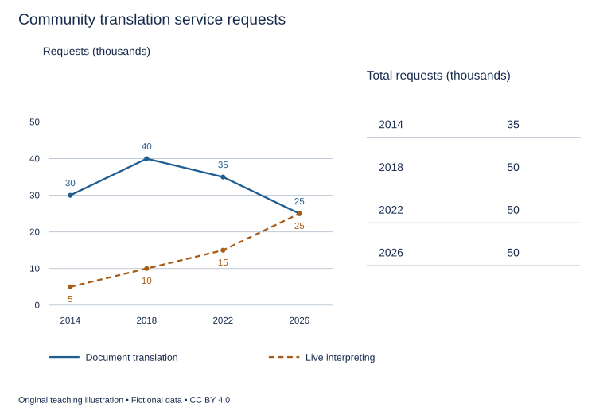
教学虚构，单位千次请求。2014/2018/2022/2026：Document translation30/40/35/25；Live interpreting5/10/15/25；Total35/50/50/50。两类互斥且覆盖所有请求，未给独立用户数、完结率或等待时间。
任务预算（含首次审题，不额外加时）
初稿20分钟（审题规划3、写作15、检查2）；诊断15；反馈阅读与证据核查10；完整重写25；对照归档5。合计75分钟。
初稿后自评清单
- [ ] 达到最低字数；全文连贯成段，没有用项目符号代替作文。
- [ ] 概述给主要特征；数据、阶段或方位都与题图逐项相符，不推断未提供的原因。
- [ ] 每段可写出一个功能标签；例子或数据与该段要点相连。
- [ ] 核查两处词汇搭配和两处句法；如有疑点先试改再核实，无问题则记录通过证据。
- [ ] 如有影响理解的问题，记录原句；否则记通过或待核查，不填写自猜分数。
反馈与重写
打开 独立参考页（本节下方展开参考），按逐段检查和通用协议核验。重写任务：完整重写至少150词；如存在范围或比较误述，回图修正并保留改前证据；如无则记录通过项和真实待核查点。将初稿时长与完成情况纳入W20证据表，不填虚构分数。
本周重点操作（已含原预算）
用原有归档5分钟中的3分钟填W20证据表的本题行：真实初稿用时、要点/词数、重复问题证据、独立真人反馈是否已有。没有结果写未知；只凭本题不能判达到目标或必须延长。正式T20与真人评分另登记。
记录表见阶段证据表，只在上述原时段填写相关行。
W20 T1A 示例、反馈与重练（首答后展开）
WS-W20-T1A 独立参考页
只在初稿完成后阅读；不是唯一答案，也没有官方分数。以下是对原创示例的教学讲评，不是对学生尚未提交作文的已完成批改。
思路拆解
趋势与合计核验；平稳总量可以掩盖构成变化；末年并列需在概述限定“前面年份较多”。
原创示例
The graph compares requests for document translation and live interpreting at a community service in four selected years from 2014 to 2026. The table gives the combined total, and all figures are expressed in thousands of requests.
Overall, document translation was more frequently requested in the first three years shown, although its figure declined after a peak in 2018; the two services were equal in 2026. Demand for live interpreting rose throughout the period. The total number of requests increased initially and then remained unchanged in the final three years shown.
Document translation accounted for 30,000 requests in 2014 and climbed to 40,000 in 2018. It then fell to 35,000 in 2022 and 25,000 in 2026. Live interpreting followed a different pattern, increasing from 5,000 to 10,000, then to 15,000 and finally 25,000. The two services therefore had equal figures in the last year.
The combined total rose from 35,000 requests in 2014 to 50,000 in 2018 and stayed at that level in 2022 and 2026. Thus, the stable total after 2018 concealed a change in composition: the decline in document requests was exactly offset by growth in interpreting requests. By 2026, each type represented half of all requests.
示例正文词数：209（本项目正则计数；书信不含称呼、结束语与署名；连字符词作一词）。
逐段反馈与迁移
- P1 千次请求非客户人数或服务已完成数；不把request写成获批准量。
- P2 文档仅前三个观测点较多，末年相等；total2018后50不变。
- P3 文档峰40后35/25；口译5/10/15/25；逐项与图对回。
- P4 总35/50/50/50；末各25占50%，减少/增加净额相抵，无原因信息。
常见失误
概述称文档始终最多而漏并列；将总数稳定写成两类型都稳定；把请求数当人数或处理成功数。
可执行反馈步骤
1. 先把自己的段落标为引入、概述/论点、支持、收束；分段可不同于示例，按功能核查，不照抄段数。
2. 对照上方逐段检查，逐项标“已有证据/缺失/不适用”。每条意见必须附自己的原句或缺失位置。
3. 按 反馈协议 的四维表记录；有争议的 AI 意见回题干、数据或语法依据核验。
4. 只选至多两项有证据的优先点执行整篇重写；如未发现问题，可改变组织或表达练迁移，但不把它标成纠错；保留原稿，禁止把示例替换为自己的作业。
重写任务
完整重写至少150词；如存在范围或比较误述，回图修正并保留改前证据；如无则记录通过项和真实待核查点。将初稿时长与完成情况纳入W20证据表，不填虚构分数。
完成后重新勾选 学生页（见本节上方学生题） 清单；将一处改前/改后及理由交给独立评阅者核查。真人评阅状态目前为“待安排”，不是已完成。
WS-W20-T1G 学生页：向社团负责人提出新成员信息改进
周次 W20｜题型 T1G｜能力点：书信目的、要点与语气
Task 1 的 A/G 分支二选一，另一分支不计入本周作业。
使用与记录
原创教学练习，非真题、非标准化模拟，难度未校准。先完成本页再打开参考页。人物、机构、经历与数据均为教学虚构。不要背诵示例。自评和 AI 反馈不能代替独立真人评分，未获得真人评阅时标记“分数未确认”。
保存：任务ID、实际日期、用时、初稿或原始录音、证据化反馈、重写/重答、三条修改理由。没有学生提交物，不得填写“已批改”或“已完成训练”。
完整题干
You recently joined a local club and found it difficult to obtain information about its activities. Write to the club secretary, Mr Reed. In your letter:
- describe the information you needed
- explain the difficulty you experienced
- suggest how the club could help new members in future.
Begin your letter: Dear Mr Reed,
Write at least 150 words. You do not need to write any addresses. Spend about 20 minutes on this task.
任务预算（含首次审题，不额外加时）
初稿20分钟（审题规划3、写作15、检查2）；诊断15；反馈阅读与证据核查10；完整重写25；对照归档5。合计75分钟。
初稿后自评清单
- [ ] 达到最低字数；全文连贯成段，没有用项目符号代替作文。
- [ ] 三个要点均展开；称呼、目的、语气和结束语适合收信人。
- [ ] 每段可写出一个功能标签；例子或数据与该段要点相连。
- [ ] 核查两处词汇搭配和两处句法；如有疑点先试改再核实，无问题则记录通过证据。
- [ ] 如有影响理解的问题，记录原句；否则记通过或待核查，不填写自猜分数。
反馈与重写
打开 独立参考页（本节下方展开参考），按逐段检查和通用协议核验。重写任务：完整重写至少150词；有问题才改，没有则保存具体通过证据；归档实际时间、任务覆盖和一项待评疑点，供阶段证据表使用。
本周重点操作（已含原预算）
用原有归档5分钟中的3分钟填W20证据表的本题行：真实初稿用时、要点/词数、重复问题证据、独立真人反馈是否已有。没有结果写未知；只凭本题不能判达到目标或必须延长。正式T20与真人评分另登记。
记录表见阶段证据表，只在上述原时段填写相关行。
W20 T1G 示例、反馈与重练（首答后展开）
WS-W20-T1G 独立参考页
只在初稿完成后阅读；不是唯一答案，也没有官方分数。以下是对原创示例的教学讲评，不是对学生尚未提交作文的已完成批改。
思路拆解
半正式具体反馈，信息需求与入口不连贯造成困难，两个建议分别解决定位与加入。
原创示例
Dear Mr Reed,
I joined the walking club earlier this month and was pleased to meet several members at the introductory evening. Before attending my first weekend walk, I wanted to check the meeting point, the expected distance and whether I needed to bring any particular equipment. These details would help me choose an outing suitable for my current experience.
I found a list of dates on the noticeboard, but it did not include a starting location or a contact name. Another member kindly directed me to the club’s online group. However, I had not yet received an invitation to join it, so I could not read the full description there. I eventually obtained the details by asking several people individually, but the process was rather confusing for a newcomer.
Could the club provide a short welcome sheet explaining where activity details are published and whom new members should contact? It would also help to send the online group invitation when membership is confirmed. I would be happy to check a draft welcome sheet from a new member’s perspective if that would be useful.
Yours sincerely, Alex Chen
示例正文词数：181（本项目正则计数；书信不含称呼、结束语与署名；连字符词作一词）。
逐段反馈与迁移
- P1 起点/距离/装备服务于新成员选活动，非批评活动本身。
- P2 noticeboard只日期，group需邀请，两条事实构成困难；未说从未获得信息。
- P3 welcome sheet和确认时邀请对应原因；提出审阅帮助但不冒称已做。
常见失误
将过去不便夸大成所有会员不满意；只投诉无建议；给信息请求却漏将来帮助新会员。
可执行反馈步骤
1. 先把自己的段落标为引入、概述/论点、支持、收束；分段可不同于示例，按功能核查，不照抄段数。
2. 对照上方逐段检查，逐项标“已有证据/缺失/不适用”。每条意见必须附自己的原句或缺失位置。
3. 按 反馈协议 的四维表记录；有争议的 AI 意见回题干、数据或语法依据核验。
4. 只选至多两项有证据的优先点执行整篇重写；如未发现问题，可改变组织或表达练迁移，但不把它标成纠错；保留原稿，禁止把示例替换为自己的作业。
重写任务
完整重写至少150词；有问题才改，没有则保存具体通过证据；归档实际时间、任务覆盖和一项待评疑点，供阶段证据表使用。
完成后重新勾选 学生页（见本节上方学生题） 清单；将一处改前/改后及理由交给独立评阅者核查。真人评阅状态目前为“待安排”，不是已完成。
WS-W20-T2 学生页：成年人频繁更换职业
周次 W20｜题型 T2｜能力点：观点展开与任务回应
A/G 共用本题。
使用与记录
原创教学练习，非真题、非标准化模拟，难度未校准。先完成本页再打开参考页。人物、机构、经历与数据均为教学虚构。不要背诵示例。自评和 AI 反馈不能代替独立真人评分，未获得真人评阅时标记“分数未确认”。
保存：任务ID、实际日期、用时、初稿或原始录音、证据化反馈、重写/重答、三条修改理由。没有学生提交物，不得填写“已批改”或“已完成训练”。
完整题干
More adults are changing to a different type of career during their working lives. Do the advantages of this development outweigh the disadvantages? Give reasons and include relevant examples.
Write at least 250 words. Spend about 40 minutes on this task.
任务预算（含首次审题，不额外加时）
初稿40分钟（审题规划5、写作30、检查5）；诊断15；反馈阅读与证据核查10；完整重写35；对照归档5。合计105分钟。
初稿后自评清单
- [ ] 达到最低字数；全文连贯成段，没有用项目符号代替作文。
- [ ] 直接回答题目的所有问句，有始终一致的立场。
- [ ] 每段可写出一个功能标签；例子或数据与该段要点相连。
- [ ] 核查两处词汇搭配和两处句法；如有疑点先试改再核实，无问题则记录通过证据。
- [ ] 如有影响理解的问题，记录原句；否则记通过或待核查，不填写自猜分数。
反馈与重写
打开 独立参考页（本节下方展开参考），按逐段检查和通用协议核验。重写任务：完整重写至少250词；按已有证据处理至多两个重点，无问题不强造缺陷。归档时间、任务回应与独立评阅状态，W20是否延长由证据表决定，不能由示例词数决定。
本周重点操作（已含原预算）
用原有归档5分钟中的3分钟填W20证据表的本题行：真实初稿用时、要点/词数、重复问题证据、独立真人反馈是否已有。没有结果写未知；只凭本题不能判达到目标或必须延长。正式T20与真人评分另登记。
记录表见阶段证据表，只在上述原时段填写相关行。
W20 T2 示例、反馈与重练（首答后展开）
WS-W20-T2 独立参考页
只在初稿完成后阅读；不是唯一答案，也没有官方分数。以下是对原创示例的教学讲评，不是对学生尚未提交作文的已完成批改。
思路拆解
利弊判断条件明确；不是单纯跳槽同岗位；需求匹配与重学成本比较，不提供个体投资/职业保证。
原创示例
Changing to a different career can allow adults to find work that better matches their abilities and circumstances. It can also involve financial uncertainty and a demanding period of learning. I believe the advantages often outweigh the disadvantages when the change is informed and supported, rather than treated as an automatic solution to dissatisfaction.
One advantage is the possibility of using existing strengths in a more suitable setting. Someone who enjoys explaining ideas but has little opportunity to do so in their current role may find that a different occupation makes better use of that ability. A career change can also help a person respond when responsibilities or local opportunities alter. Remaining in the same field is not necessarily the safest option if suitable work is becoming difficult to find. The benefit lies in having a realistic alternative, not simply in the excitement of starting again.
The costs are nevertheless substantial. An adult may need to complete training while continuing to meet household expenses. Experience from the previous career may be useful, but it will not cover every requirement of the new one. Starting at a lower level can also be discouraging. These difficulties affect people differently: someone with caring responsibilities or limited savings may have less room to experiment than someone with strong practical support.
On balance, the potential gains are greater when adults can explore the new work before making a major commitment. Short courses, conversations with people in the field and carefully chosen practical experience can reveal whether expectations are realistic. Employers can also recognise transferable skills while providing support for genuine gaps. Such measures do not guarantee success, but they reduce the risk of a decision based on an idealised picture of another occupation.
In conclusion, career changes can improve the match between people and work, but their value depends on preparation and circumstances. Access to reliable information and manageable learning opportunities makes the advantages more likely to exceed the costs.
示例正文词数：325（本项目正则计数；书信不含称呼、结束语与署名；连字符词作一词）。
逐段反馈与迁移
- P1 change type of career与普通换雇主不同；有条件判断。
- P2 可迁移能力及机会变化解释收益，未承诺新工作更高薪。
- P3 培训/支出/起步及责任差异展现成本。
- P4 探索与支持解释风险如何降低，not guarantee承认边界。
- P5 和开头一致，避免everyone should change结论。
常见失误
只谈跳槽涨工资；忽略转换专业门槛；以个人成功故事证明所有人适用。
可执行反馈步骤
1. 先把自己的段落标为引入、概述/论点、支持、收束；分段可不同于示例，按功能核查，不照抄段数。
2. 对照上方逐段检查，逐项标“已有证据/缺失/不适用”。每条意见必须附自己的原句或缺失位置。
3. 按 反馈协议 的四维表记录；有争议的 AI 意见回题干、数据或语法依据核验。
4. 只选至多两项有证据的优先点执行整篇重写；如未发现问题，可改变组织或表达练迁移，但不把它标成纠错；保留原稿，禁止把示例替换为自己的作业。
重写任务
完整重写至少250词；按已有证据处理至多两个重点，无问题不强造缺陷。归档时间、任务回应与独立评阅状态，W20是否延长由证据表决定，不能由示例词数决定。
完成后重新勾选 学生页（见本节上方学生题） 清单；将一处改前/改后及理由交给独立评阅者核查。真人评阅状态目前为“待安排”，不是已完成。
WS-W20-S1 学生页
周次W20｜Part 1专项｜能力点：阶段证据与是否延长的判断边界｜30分钟
使用与记录
原创教学练习，非真题、非标准化模拟，难度未校准。先完成本页再打开参考页。人物、机构、经历与数据均为教学虚构。不要背诵示例。自评和 AI 反馈不能代替独立真人评分，未获得真人评阅时标记“分数未确认”。
保存：任务ID、实际日期、用时、初稿或原始录音、证据化反馈、重写/重答、三条修改理由。没有学生提交物，不得填写“已批改”或“已完成训练”。
操作与预算
设备与审题3分钟；首答录音6；回听及局部转写7；示例和诊断5；不看稿重答6；归档3。共30分钟。
Part 1专项题
1. Do you enjoy setting learning goals?
2. How do you decide whether to continue practising something?
3. What kind of feedback do you find useful?
4. Do you prefer a fixed plan or a flexible one?
追问：
- What information might make you change the plan?
- Can you give a specific example?
录音回听清单
- [ ] 保留首答原音，记录实际时长、是否中断、是否看稿；只报真实完成状态。
- [ ] 流利与连贯：标出两处时间戳，区分构思停顿与重复搜词，检查是否偏离问句。
- [ ] 词汇：找一处模糊词或重复表达，先解释原意再替换；不为难词改变意思。
- [ ] 语法：核对经历与习惯的时态；局部转写核查；如存在妨碍理解的问题才更正，无则记通过。
- [ ] 发音：不看转写听30秒，标听不清的词尾、重音或断句；没有音频不能判断发音。
- [ ] 展开：主要回答有具体情境或理由；追问后第一句回应追问的新角度。
重答要求
如有笼统判断，选择至多两个答案补具体情境；如没有，选择两题换角度重答并保留切题证据；重答一条追问，检查是否真正回应其新角度。
首答回听后才打开独立参考页（本节下方展开参考）。按反馈协议填至少三个时间戳，不以文字转写替代音频评阅。
本周重点操作（已含原预算）
用原有归档时段中的3分钟填W20证据表本题行：实际录音长度、是否连续/看稿、一个有时间戳的待评点、真人评阅是否已有。无旧录音不编进步。全流程S3归档时顺看决策分支，缺正式评估先记证据不足，不把它当失败或达标。
记录表见阶段证据表，只在上述原时段填写相关行。
W20 S1 示例、反馈与重练（首答后展开）
WS-W20-S1 独立参考页
原创教学示例，非真题或评分结果。未收到学生音频；以下是示例分析与待执行反馈，不能登记为已完成学生批改。
展开示例
直接回应→原因→具体情境的展开示例
I prefer a plan with clear tasks but some room to adjust. If I repeatedly run out of time on the same task, that is useful information about the plan or my current ability. I would look at what actually caused the delay before adding more practice, rather than assume that spending longer always solves the problem.
纯口答示例词数：57；只计MODEL标记内实际英文口答，不含标题、标签、说明。词数不能证明录音时长或流利度。
展开与反馈
本周能力：阶段证据与是否延长的判断边界。
1. 示例先表态，再说明偏好理由，最后提供条件或场景。检查自己是否用一个词回答后就结束。
2. 找到一个具体细节：物品、动作、对话或地点。用自己的经历替换，保持与题卡相关，不照搬示例身份与经历。
3. 追问要重新回应，不能继续背长答。首句先回答追问，再用一条理由支持。
4. 如存在听不清或语法影响理解处，标原音时间戳；否则标一处清楚的原音证据；先尝试最小修正。不要把自然停顿一概当成错误，或用加快语速掩盖逻辑断裂。
常见失误
空泛形容词替代具体过程；给了经历却没解释为什么重要；Part 3只有个人故事没有一般解释；AI只看转写就判断发音。逐项回原音核对，不能凭范例推断自己已达到某个分数。
可执行重答与反馈
如有笼统判断，选择至多两个答案补具体情境；如没有，选择两题换角度重答并保留切题证据；重答一条追问，检查是否真正回应其新角度。
填写反馈协议四维表，附三个时间戳和原话证据。如存在，选至多一个内容问题与一个语言问题先修；否则记录清楚的证据并做迁移重答；重答后并排听两段，记录改善与仍未解决之处。自评与AI不能替代独立真人评分；独立评阅目前待安排，分数未确认。
WS-W20-S2 学生页
周次W20｜Part 2专项｜能力点：阶段证据与是否延长的判断边界｜30分钟
使用与记录
原创教学练习，非真题、非标准化模拟，难度未校准。先完成本页再打开参考页。人物、机构、经历与数据均为教学虚构。不要背诵示例。自评和 AI 反馈不能代替独立真人评分，未获得真人评阅时标记“分数未确认”。
保存：任务ID、实际日期、用时、初稿或原始录音、证据化反馈、重写/重答、三条修改理由。没有学生提交物，不得填写“已批改”或“已完成训练”。
操作与预算
准备、首答录音及追问5分钟；回听及局部转写8；示例与诊断5；关键词重组3；重答及追问5；归档4。共30分钟。
Part 2专项任务卡
Describe a plan you adjusted after reviewing your progress. Say what the plan was, what evidence you considered, what you changed, and explain why the adjustment was useful.
准备1分钟，说1～2分钟。只记5个关键词，不预写句子。
收尾追问：
- Did you have enough information to make the decision?
- Would you review the plan again later?
录音回听清单
- [ ] 保留首答原音，记录实际时长、是否中断、是否看稿；只报真实完成状态。
- [ ] 流利与连贯：标出两处时间戳，区分构思停顿与重复搜词，检查是否偏离问句。
- [ ] 词汇：找一处模糊词或重复表达，先解释原意再替换；不为难词改变意思。
- [ ] 语法：核对经历与习惯的时态；局部转写核查；如存在妨碍理解的问题才更正，无则记通过。
- [ ] 发音：不看转写听30秒，标听不清的词尾、重音或断句；没有音频不能判断发音。
- [ ] 展开：主要回答有具体情境或理由；追问后第一句回应追问的新角度。
重答要求
用五个关键词重答完整任务卡1～2分钟，再答两条追问；如缺具体细节则补、如有无关背景则删；若已清楚，换表达但保持事实。比较首答与重答，不背示例。
首答回听后才打开独立参考页（本节下方展开参考）。按反馈协议填至少三个时间戳，不以文字转写替代音频评阅。
本周重点操作（已含原预算）
用原有归档时段中的3分钟填W20证据表本题行：实际录音长度、是否连续/看稿、一个有时间戳的待评点、真人评阅是否已有。无旧录音不编进步。全流程S3归档时顺看决策分支，缺正式评估先记证据不足，不把它当失败或达标。
记录表见阶段证据表，只在上述原时段填写相关行。
W20 S2 示例、反馈与重练（首答后展开）
WS-W20-S2 独立参考页
原创教学示例，非真题或评分结果。未收到学生音频；以下是示例分析与待执行反馈，不能登记为已完成学生批改。
展开示例
原创长答示例（时长须以个人实际录音测量）
I adjusted a plan for learning a new computer program. At first, I intended to watch one tutorial each evening and finish a small project at the end of the week. I completed the videos, but when I started the project, I could not perform several actions without replaying the demonstrations.
That was more useful evidence than the number of videos I had watched. It showed that I needed practice retrieving the steps, rather than simply more explanations. I changed the plan so that each short video was followed by a task I attempted without looking at the instructions.
I also made the final project smaller. Instead of trying every feature, I focused on a few functions that I would actually use. When I became stuck, I recorded the specific action and checked it later.
The adjustment was useful because it connected the plan to what I could do independently. I still needed further practice, and one successful task did not mean I had mastered the program. But I had a clearer way to decide what to practise next.
纯口答示例词数：179；只计MODEL标记内实际英文口答，不含标题、标签、说明。词数不能证明录音时长或流利度。
展开与反馈
本周能力：阶段证据与是否延长的判断边界。
1. 长答示例按背景、行动/观察、变化与意义组织。每段都推进内容；检查自己是否只有背景而没有具体事件。
2. 找到一个具体细节：物品、动作、对话或地点。用自己的经历替换，保持与题卡相关，不照搬示例身份与经历。
3. 追问要重新回应，不能继续背长答。首句先回答追问，再用一条理由支持。
4. 如存在听不清或语法影响理解处，标原音时间戳；否则标一处清楚的原音证据；先尝试最小修正。不要把自然停顿一概当成错误，或用加快语速掩盖逻辑断裂。
常见失误
空泛形容词替代具体过程；给了经历却没解释为什么重要；Part 3只有个人故事没有一般解释；AI只看转写就判断发音。逐项回原音核对，不能凭范例推断自己已达到某个分数。
可执行重答与反馈
用五个关键词重答完整任务卡1～2分钟，再答两条追问；如缺具体细节则补、如有无关背景则删；若已清楚，换表达但保持事实。比较首答与重答，不背示例。
填写反馈协议四维表，附三个时间戳和原话证据。如存在，选至多一个内容问题与一个语言问题先修；否则记录清楚的证据并做迁移重答；重答后并排听两段，记录改善与仍未解决之处。自评与AI不能替代独立真人评分；独立评阅目前待安排，分数未确认。
WS-W20-S3 学生页
周次W20｜三部分全流程｜能力点：阶段证据与是否延长的判断边界｜60分钟
使用与记录
原创教学练习，非真题、非标准化模拟，难度未校准。先完成本页再打开参考页。人物、机构、经历与数据均为教学虚构。不要背诵示例。自评和 AI 反馈不能代替独立真人评分，未获得真人评阅时标记“分数未确认”。
保存：任务ID、实际日期、用时、初稿或原始录音、证据化反馈、重写/重答、三条修改理由。没有学生提交物，不得填写“已批改”或“已完成训练”。
操作与预算
D5：设备与流程准备2分钟，连续首答11～14分钟，余14～17分钟完整回听标记，共30分钟。D6：局部转写诊断10，阅读示例与调整5，重答与新追问10，对照归档5，共30分钟。合计60分钟。
连续三部分全流程（首答不可看参考）
找同伴读题，或独练逐题揭示。完整首答11～14分钟，中途不暂停纠错。模拟同伴不是认证考官；自行读题的练习记录不能冒充真实面试。
Part 1：4～5分钟
1. Do you like reviewing old work?
2. How do you record useful feedback?
3. When do you ask another person for an opinion?
4. Have you ever changed a goal after learning more about it?
5. What helps you remain patient with a difficult task?
6. How do you recognise when you need more time?
可按回答追加 Why? / Can you give an example? 到时转下部分，不强行说完全部备用问题。
Part 2：3～4分钟（含准备）
Describe a decision you made using several pieces of information. Say what the decision was, what information you used, whether anything was uncertain, and explain how you reached your decision.
准备1分钟，连续说1～2分钟。收尾追问：
- Did you later obtain any new information?
- Would that information have changed your decision?
Part 3：4～5分钟
1. Why should important decisions use more than one piece of evidence?
2. How can people distinguish lack of progress from lack of information?
3. When is extending a learning period sensible?
4. Can a fixed deadline improve learning as well as create pressure?
根据回答追加追问：
- What if someone feels confident but repeated results remain weak?
- What if there is no reliable assessment available yet?
录音回听清单
- [ ] 保留首答原音，记录实际时长、是否中断、是否看稿；只报真实完成状态。
- [ ] 流利与连贯：标出两处时间戳，区分构思停顿与重复搜词，检查是否偏离问句。
- [ ] 词汇：找一处模糊词或重复表达，先解释原意再替换；不为难词改变意思。
- [ ] 语法：核对经历与习惯的时态；局部转写核查；如存在妨碍理解的问题才更正，无则记通过。
- [ ] 发音：不看转写听30秒，标听不清的词尾、重音或断句；没有音频不能判断发音。
- [ ] 展开：主要回答有具体情境或理由；追问后第一句回应追问的新角度。
重答要求
重答最弱的一个Part 1问题、完整Part 2及一个Part 3问题，再答一条未用追问。用不同细节或补一个例外，确认不是复述范例；局部重答不另计全流程。
首答回听后才打开独立参考页（本节下方展开参考）。按反馈协议填至少三个时间戳，不以文字转写替代音频评阅。
本周重点操作（已含原预算）
用原有归档时段中的3分钟填W20证据表本题行：实际录音长度、是否连续/看稿、一个有时间戳的待评点、真人评阅是否已有。无旧录音不编进步。全流程S3归档时顺看决策分支，缺正式评估先记证据不足，不把它当失败或达标。
记录表见阶段证据表，只在上述原时段填写相关行。
W20 S3 示例、反馈与重练（首答后展开）
WS-W20-S3 独立参考页
原创教学示例，非真题或评分结果。未收到学生音频；以下是示例分析与待执行反馈，不能登记为已完成学生批改。
展开示例
Part 2原创展开示例（个人语速不同，不能以词数推录音时长）
A decision I made using several pieces of information was choosing whether to join an evening course. I was interested in the subject, but I needed to know whether the schedule and level were suitable before committing to it.
I read the course outline, compared the travel time with my working hours and tried a short introductory activity provided by the organiser. I also asked a previous participant how much independent work the course normally involved. Her answer was useful, although I knew that her experience might differ from mine.
The main uncertainty was whether my work schedule would remain stable. Rather than ignore that issue, I asked the organiser about attendance expectations and the possibility of joining a later group. I eventually chose the later start date, which gave me time to clarify my commitments.
I was satisfied with the decision because it reflected several relevant factors instead of enthusiasm alone. I did not have perfect information, but I knew which points were confirmed and which were uncertain. That made it easier to review the decision when my schedule became clearer.
Part 3观点→理由→条件展开示例
Extending a learning period can be sensible when reliable evidence shows that an important requirement is not yet met. But missing information is a different problem: it may call for an assessment before deciding how much extra practice is needed. I would separate what has been demonstrated, what remains weak and what has not been checked, rather than treat all uncertainty as failure.
纯口答示例词数：245；只计MODEL标记内实际英文口答，不含标题、标签、说明。词数不能证明录音时长或流利度。
展开与反馈
本周能力：阶段证据与是否延长的判断边界。
1. 长答示例按背景、行动/观察、变化与意义组织。每段都推进内容；检查自己是否只有背景而没有具体事件。
2. 找到一个具体细节：物品、动作、对话或地点。用自己的经历替换，保持与题卡相关，不照搬示例身份与经历。
3. Part 3示例不把个人选择强加给所有人；先讲机制，再说明条件或例外。检查自己的追问答案是否直接回应新问题。
4. 如存在听不清或语法影响理解处，标原音时间戳；否则标一处清楚的原音证据；先尝试最小修正。不要把自然停顿一概当成错误，或用加快语速掩盖逻辑断裂。
常见失误
空泛形容词替代具体过程；给了经历却没解释为什么重要；Part 3只有个人故事没有一般解释；AI只看转写就判断发音。逐项回原音核对，不能凭范例推断自己已达到某个分数。
可执行重答与反馈
重答最弱的一个Part 1问题、完整Part 2及一个Part 3问题，再答一条未用追问。用不同细节或补一个例外，确认不是复述范例；局部重答不另计全流程。
填写反馈协议四维表，附三个时间戳和原话证据。如存在，选至多一个内容问题与一个语言问题先修；否则记录清楚的证据并做迁移重答；重答后并排听两段，记录改善与仍未解决之处。自评与AI不能替代独立真人评分；独立评阅目前待安排，分数未确认。
许可
原创文字：RayXBuilds and contributors，CC BY 4.0。此页由已验收分课汇编，调整了标题和导航；题干、正文和答案内容保留。公开第三方音频未包含。
回到顶部
U30 阅读复盘与写作口语反馈协议
W17–20 训练与延迟复测记录
每周必做180分钟：合卷首答60、证据复盘60、词汇长句30、48小时后复测30。合卷替代三课首答，不重复计量。以下记录均纳入该预算；每课80–100词开放短文选做另加15分钟，每周最多另加45分钟。计划尚无真实学习者计时验证。空白表格不表示训练已完成。
W17 依据真实错题选择至多两类重点
当前状态：待诊断。尚未提供可核验学习者答卷，没有已选弱项；FOCUS-SELECTION.json 中 selected_focus_types 和 evidence_records 均为空。题库的题型分布不是个人弱项证据。
若已有前周实做记录，首答前从记录提取；若没有，先完成本周60分钟首答，在既定60分钟证据复盘内建立错题记录，再选择本周复盘和延迟复测重点。不得为了填表虚构学习者答案、分数或高频错误。没有足够证据时维持待诊断，不强行选满两类。
| 来源/实际日期 | 课号与本课题号/合卷题号 | 学习者原答案 | 可接受答案 | 证据段及原句 | 题型 | 错因及判断依据 |
| 待实做或提供可核验记录 |
从单选、YES/NO/NOT GIVEN、段落信息匹配、句子/摘要填空中选择至多两类。按真实错误数、同类错误是否重复和错因证据决定优先级；题型与错因分开记录，不把一次疏漏直接称为稳定弱项。错因可用定位、观点归属、范围、句法、指代、词数或拼写，并附实际例子。
| 重点题型（最多两项） | 支持题号 | 错误次数/该型实做题数 | 重复错因 | 本周复盘动作 | 48小时后验证结果 |
| 尚未选择 |
首次60分钟仍完成三篇40题。后续60分钟复盘优先处理选定题型，同时检查其他错题；词汇长句30分钟和延迟复测30分钟不加码。复测抽取重点错题与至少两道原本正确题，遮住答案，重新指出证据；熟题复测不能作为陌生卷成绩。选择结果有证据后再填写，不提前占定两类。
W18 句法与衔接怎样改变论证
| 课号/题号 | 完整原句 | 主句/从句 | 连接词或指代及先行项 | 条件/让步/对比关系 | 省略或误解后的结论变化 | 修正答案及证据 |
| 待填写 |
先写作者实际保留的有限结论，再说明 however、provided that、because、these 等在具体语境中如何连接内容。不要只背连接词中文释义。词汇长句阶段拆解各课两句，并回到对应论证；复测重建关系，不只记答案字母。
W19 向陌生主题迁移
| 课号/题号 | 文内新词定义 | 段落功能/过程状态 | 作答所需逻辑 | 原文证据 | 曾引入但文中未支持的常识 | 修正方式 |
| 待填写 |
先辨认过程的起点与转变、记录的用途和交际条件，再作答。个人类比可以帮助理解，但必须标为类比，不能替代原文证据。所有教学情境为原创虚构，不据此推断真实历史或真实文化通则。
W20 原创阶段检查
限时60分钟完成40题，首次不查词、不读答案。之后按60分钟证据复盘、30分钟词汇长句、48小时后30分钟复测安排记录。只有实际答卷才能产生正确数和错因。
| 题型 | 首次正确/实做总数 | 错误课号与题号 | 主要错因及证据 | 48小时后正确/重做数 | 重复错误 | 后续动作 |
| 单项选择 |
| YES/NO/NOT GIVEN |
| 段落信息匹配 |
| 句子/摘要填空 |
本周40题是原创技能检查，不是标准化模考。记录变化仅描述这批材料上的表现，不换算雅思等级，不据此判断可以报考、已经达到目标分或能够保分。正式T20陌生真题另见 FORMAL-ASSESSMENT.md；目前未选定、未获取、未施测。延迟重做本批熟悉材料不能替代T20，也不重复计算为新增阅读量。
| 周 | 首答实际分钟 | 证据复盘分钟 | 词汇长句分钟 | 延迟复测日期/分钟 | 必做合计 | 选做分钟（另列） |
| W17 |
| W18 |
| W19 |
| W20 |
写说反馈协议与交接表
适用于WS-W17～W20全部课项。在题目所列预算内完成。这里是待执行流程与空白记录模板，不是已完成批改。自评和AI不能代替独立真人评分；没有独立评阅时，成绩栏只能写“分数未确认”。
写作：先证据后修改
1. 保留初稿和限时记录；先逐项核题干。A类数字回图表，流程核顺序与分支，地图核方位和替换/扩建，G类逐一标三要点，Task 2标题目问句与立场。
2. 给每段一个功能标签，检查是否缺概述、缺例子或缺结论。使用课内逐段讲评时按功能对齐，不要求复制范文段数。
3. 四维表至少填四条证据，不需要每项都有错误；可写“证据充分”并引用原句。优先解决任务遗漏与理解障碍，再处理语言精确性。
4. 在每题10分钟反馈时段看示例、核查争议；只选至多两项有证据的主要问题；无证据标待核查，不凑数量。按学生页要求整篇重写，保留内容相似度但不用示例替代原稿。
5. 用5分钟对照重写：写三条“原句→新句→理由”，其中至少一条属于内容或组织。再次检查最低字数和所有题干要点。
| 维度 | 初稿原句/段号或缺失位置 | 具体问题及依据 | 修改行动 | 重写证据 | 来源 |
| 任务完成/回应 | 待填 | 待填 | 待填 | 待填 | 自评/AI/真人姓名与日期 |
| 连贯与衔接 | 待填 | 待填 | 待填 | 待填 | 待填 |
| 词汇资源 | 待填 | 待填 | 待填 | 待填 | 待填 |
| 语法范围与准确性 | 待填 | 待填 | 待填 | 待填 | 待填 |
可给AI的请求（须附完整题干和自己的真实初稿）：
> 按任务回应、连贯、词汇、语法给证据化建议。每条引用我的原句或指出缺失的题干要点，说明为什么影响表达，给最小修改方向。区分确定错误与可选改写。只在确有证据时提至多两项最高优先级问题，否则说明通过或待核查，不给分数，不声称真人评分，不替我重写整篇。Task 1数据只能来自题面。不能确认的地方明确标记待核查。
核查AI：先对照数据和题干，再判断改写是否改变原意。AI意见有矛盾时保留争议并交真人核查；不能把AI自信程度当作正确性。
口语：音频优先
1. 保留完整首答。首次回听不看转写，标记听不清、断裂和偏题的时间戳。
2. 局部转写最多60～90秒，核对原音，尤其是自动转写可能改掉的语法错误。转写只辅助诊断，不替代录音。
3. 每项意见附时间戳；如存在问题，优先处理一个展开问题与一个语言或发音问题；如无则记通过证据并练迁移，不编造缺陷。发音判断需实际音频，不能依据文字想象。
4. 只看关键词重答，使用课内新追问检验能否迁移。比较原音和重答，不把慢读一份修改稿算作即兴进步。
| 维度 | 首答时间戳与听到的现象 | 改善动作 | 重答时间戳与证据 |
| 流利与连贯 | 待填 | 待填 | 待填 |
| 词汇资源 | 待填 | 待填 | 待填 |
| 语法范围与准确性 | 待填 | 待填 | 待填 |
| 发音与可理解度 | 待填；没有音频不得判断 | 待填 | 待填 |
可给AI的请求：
> 若能处理音频，请引用时间戳，如存在，指出至多两处最影响理解的问题；没有可靠证据则说明待核查，并用我的具体内容示范如何扩展或澄清。不要给官方分数。若只能看到转写，只反馈文本中的内容、词汇与语法，明确不能判断发音、真实停顿或口语流利度；不要编造听过录音。
真人交接与验收（待执行）
交付包：任务ID、完整题干/数据、未修改初稿、重写稿及修改理由；口语完整原始音频、实际时长、题目、局部转写和重答片段。请求评阅者指出四个维度的证据，区分限时初稿表现与辅导后表现，并反馈下一轮最优先任务。若给估分，记录评阅者资历、日期与不确定性，不能标为官方考试成绩。
登记：评阅者____；日期____；已收到材料____；意见文件____；分歧与待核实____；学生落实证据____。空栏就是待完成，不预填虚构记录。尚未有正式目标分数与可信独立评估时，只汇报具体改进和未解决问题，不做达标或提分保证。
证据选择与阶段表
空表供学生在各课既有3分钟诊断/回听或归档时段分次填写，不要求额外做题。空白不是已完成；本包没有替学生填写成绩、诊断或真人评阅。自评与AI只能提供待核查线索，不能代替独立真人评分。
W17
先用本题原稿/原音，若有合法保存的近期作业可并列查看；没有就只标本题观察。不要猜“我总是有两类失分”。每项最多摘一个代表性原句/时间戳，在原定诊断内完成。
| 检查类别 | 原句/时间戳与具体证据 | 次数或影响 | 判断来源 | 选择状态 | 重写/重答验证 |
| 任务回应：图表分母/书信要点/观点范围/口答切题 | 待填 | 待填 | 自评/AI待核/真人 | 优先/已清楚/未知 | 待填 |
| 展开与组织：概述、理由例子、句间关系、回答顺序 | 待填 | 待填 | 待填 | 待填 | 待填 |
| 语言：搭配、时态、指代、条件表达 | 待填 | 待填 | 待填 | 待填 | 待填 |
| 仅口语：流利连贯与可理解发音 | 必须原音时间戳 | 待填 | 待填 | 待填 | 待填 |
选择分支：
- 有两类以上明确证据：选出现最多或最影响理解的两类，不新增第三目标；实际分数影响仍由真人确认。
- 只有一类：只选一类；余下记通过或待核查，不硬凑两类。
- 未发现问题：保存两处通过证据；整篇重写/口语重答可练不同表达或新题迁移，不假标纠错成功。
- 证据不足/意见矛盾：写未知/待核查，请评阅者核对；不能用AI信心或自己的焦虑填失分结论。
最终优先项1____；依据____；优先项2（可空）____；未选项____。重写/重答后只报告观察到的变化；没有改善也如实记，不凭做过一次说问题已消失。
W18
在既有重写/重答与归档时间内，每题记录一条即可：
| 原句/原音 | 原本关系 | 是否有问题 | 修改或保留 | 改后验证 |
| 待填 | 先后/条件/原因/对比/指代 | 有证据/清楚/未知 | 待填 | 不改事实；读者/听者能否复述关系 |
不为句子变长或连接词变难而改。没有问题可保留并说明；若修改导致条件或限定消失，撤回修改。完整写作重写仍要完成，但换表达不等于纠错。
W20
本表是原创技能观察与证据完整性检查，不能单独替代正式T20。每个任务在原归档时段填一行；S3归档最后3分钟查看决策分支，不增加一次模拟。
| 证据项 | 真实记录 | 状态/来源 |
| 目标总分与各单项要求 | 未确定则写未定 | 用户目标/尚缺 |
| 本批Task 1：初稿用时、词数、要点 | 待作答 | 原创练习，非正式模考 |
| 本批Task 2：初稿用时、回应、待核点 | 待作答 | 原创练习，非正式模考 |
| 本批S3：原音路径、时长、连续/看稿情况 | 待录制 | 原创练习，非真实考试 |
| 同类问题是否在不同任务中重复 | 引用实际作业；缺则未知 | 自评线索/真人确认分开 |
| 正式T20合法来源、陌生程度、模式与日期 | 未落实则待补 | 不以本包替代 |
| 正式限时条件与四科结果 | 不齐则逐项未知；不做总分推算 | 真实记录/评分依据 |
| 两篇写作与口语原音独立真人评阅 | 评阅者、日期、意见文件；缺则待安排 | 自评/AI不算该项 |
| 较早可比正式结果（如T16） | 来源、条件与差异；没有则未知 | 熟题/辅导后稿不替代 |
| 哪个单项影响目标判断 | 目标与可信评分齐备才填，否则未知 | 不猜短板 |
决策分支
1. 目标未定：先明确要求；只能整理练习表现，不能判断达标或需延长多少周。
2. 目标已定，但正式陌生卷/真实限时作答/独立真人写说反馈缺失：结论为证据不足；先补缺项并按当前计划处理已观察到的问题。缺证据不等于能力不达标，也不能当作已达标。
3. 可信评估显示至少一项未满足目标，或W16/W20可比记录反复显示同类障碍：可讨论延长4～8个训练周。用原句/原音/结果指出差距，优先重分配既有时数处理一至两项问题，另设陌生任务复核节点。具体周期结合差距、可用时间和真人意见，不能承诺延长后必达分。
4. 可信评估暂时符合要求：保留证据，按后续安排继续陌生任务与独立核查；一次通过不等于最终报考判断，更不是保分。W21～24须另由总控安排，本批不提前制作或计量。
当前分支____；已证实事项____；未核事项____；下一步及所需证据____；是否考虑延长及依据____。所有空格由真实记录填；当前没有学生结果可预填。
回到顶部
U31 第21周：长篇阅读、写作与口语
本页为已独立核验的原创文字课程。先完成学生题目，再展开对应参考。非真题、非标准化模考，不换算雅思分数。听力尚未补齐，本页不代表全科课程已完成。
每周选A或G类Task 1一题，加Task 2及三次口语。参考范文不是学生已完成作业，仍须提交初稿、录音和重写，独立真人评分另行安排。
阅读每周180分钟（60分钟首次限时、120分钟证据精读与延迟复测），写作180分钟、口语120分钟。词汇60分钟、听力180分钟另列；新增完整听力未验收，不能勾整周完成。
W22/W24原创阶段检查按实际证据复盘；正式T22/T24陌生整卷、所选真实考试界面操作及真人评分另记，缺少目标或真实证据时不能据此判断报考/延长，本页原创技能卷不能代替正式模拟。后续周数与达标规则见 U04。
阅读：首答不查词
R-W21-01 · The Shadow Larger than the Puppet
W21｜正文 853 词｜13 题｜篇章：科学模型：投影中的比例与参照（6段）
本课必做60分钟：首答20、证据复盘20、词汇长句10、48小时后复测10。每周三课180分钟，合卷首答替代单课首答，不重复计算。开放短文选做另加15分钟。
本项目原创虚构教学情境，人物、地点、历史事件和案例数据均非真实研究或史料。科学解释只讨论文内说明的模型与条件。非雅思真题或标准化模考；正确数不换算雅思等级。许可：CC BY 4.0 — RayXBuilds and contributors。
能力点：识别论证关系、区分作者与引述者、条件与因果、精确定位。初读不查词，完成后打开独立答案页。
Passage
A At the fictional Vela workshop, a small puppet casts a surprisingly large shadow on a screen. A student concludes that the puppet must have grown because its outline now occupies more space. Another says the lamp has made the puppet brighter and therefore larger. The teacher separates the object from its projected outline. In the simplified arrangement used here, a small light source, a flat puppet and a screen stand along the same general line. The shadow depends on their relative positions. Its size is not a direct measurement of the puppet unless those positions are also specified. The exercise is deliberately restricted to this model and makes no claim about every lamp, transparent material or irregular surface. Its purpose is to show how a visible result can change while the object that appears to produce it remains physically unchanged.
B The first comparison keeps the lamp and screen fixed while moving the puppet towards the lamp. In this model, the shadow becomes larger. Moving the puppet towards the screen produces a smaller outline, closer to the puppet's own size. The teacher draws two lines from the light source through the top and bottom of the puppet and extends them to the screen. These boundary lines show why a short object can exclude light from a wider area farther away. The drawing is an account of the arrangement, rather than evidence that the puppet itself stretches. Students place a reference ruler beside the puppet before and after each move, confirming that the object remains the same length while the area of the screen from which it excludes light changes.
C A second comparison moves the screen while holding the puppet and lamp still. The class measures the outline at each screen position instead of assuming that every change must originate with the moving object in the first comparison. This reversal matters because the same visible increase can arise from changes in different parts of an arrangement. An observer who sees only the final shadow may lack enough information to reconstruct what moved. The students therefore keep a position chart that records the locations of all three components, not merely the outline's dimensions. An explanation becomes stronger when it identifies both what changed and what remained fixed. Otherwise, two observations may be treated as examples of the same cause simply because the resulting shadows look similarly large to someone entering the room after the adjustments have been completed.
D The students next replace the small source with a wider luminous panel. The edge of the shadow becomes less sharply defined in the classroom example. Different parts of the panel illuminate around different edges of the puppet, so the transition from dark to light occupies a visible band. The original line drawing no longer describes the whole arrangement adequately. This does not show that the first model was worthless; it shows that a condition on which its simple boundary depended has changed. For measurement, the teacher introduces an edge rule that specifies which point within the transition band will count as the outline. Without a shared rule, two careful students could report different widths because they had chosen different boundaries, rather than because either had failed to observe the screen attentively.
E Movement creates an additional challenge for a performance. A puppet that approaches the source while moving sideways can appear to travel and grow at the same time. The performers mark a guide path on the floor to preserve the intended distance from the lamp during a scene requiring constant shadow size. A rehearsal card records which scenes deliberately include changes of scale. These aids distinguish an intended transformation from an accidental one without declaring that every variable shadow is a mistake. The purpose of the performance determines which changes should be prevented. A scene about an approaching giant may benefit from enlargement, whereas a scene representing two equally sized neighbours may become confusing if one performer unintentionally moves closer to the source during an ordinary exchange.
F The final demonstration places the unchanged puppet beside several drawings of its shadow. Viewers are asked which drawing gives the true size. The teacher explains that the question needs a reference: the puppet has a physical length, while each shadow has a length on a particular screen under particular conditions. The different measurements need not compete as though only one event actually occurred. A visitor interested in building a second puppet needs the object measurement, whereas a performer arranging a scene needs the projected outline under the planned lighting. The usefulness of a measurement depends on which of these tasks it is meant to support. What would be misleading is to substitute one for another without naming what was measured. The lesson therefore concerns more than optical surprise. It shows why a representation must be interpreted through the arrangement that produced it. Recording a clear number is useful, but the number becomes informative only when its object, boundary and conditions are clear enough for another person to understand or repeat the comparison. A larger image can reveal a changed relationship even when it reveals no growth in the thing being represented.
Questions
Complete the sentences. Choose NO MORE THAN 3 WORDS FROM THE PASSAGE for each answer. Do not change word forms.
1. The unchanged physical length is checked using a ______ beside the puppet.
2. Locations of the source, puppet and screen are entered on a ______.
3. The agreed boundary inside a blurred band is specified by an ______.
4. Performers follow a floor marking called a ______ to maintain the planned distance.
5. Intentional changes of scale are recorded on a ______.
Choose ONE answer, A, B, C or D.
6. The initial mistake is to treat
A. a lamp as a light source B. a projected size as a direct change in the object C. the puppet as flat D. a screen as a surface
7. What is the purpose of the boundary lines?
A. To prove material stretching B. To record performer names C. To explain the geometry of light exclusion D. To eliminate the screen
8. Why record all three component positions?
A. Similar results can arise from different changes B. All large shadows share a cause C. Only the lamp can move D. Puppet size is never relevant
9. The wider light panel demonstrates
A. that all prior measurements were dishonest B. that the puppet must become transparent C. a changed condition requiring a richer account D. that every shadow has no boundary
Do the following statements agree with the writer's views? Write YES, NO or NOT GIVEN. YES = the writer agrees; NO = the writer expresses the opposite view; NOT GIVEN = the writer's view is not stated. Do not use outside knowledge.
10. Every change in shadow size is a performance error.
11. Careful observers can disagree about width because they use different edge definitions.
12. The writer recommends hiring separate staff to maintain the workshop’s lighting equipment.
13. A number needs a clear object and conditions to support a repeatable comparison.
本周重点
限时首答并留出漏答、拼写与词数核对；真实所选考试界面另记未完成。
复盘
必做：给每道错题标记“定位/作者立场/范围/语法/词数”，抄最短证据；用一行箭头概括本文论证或过程。48小时后重做错题与两道正确题，检查是否仍能指出证据。
选做（15分钟，80–100词）：Explain how one unchanged object can support several valid measurements.
R-W21-01 答案、证据与精读（首答后展开）
R-W21-01 · 独立答案与证据
来源与许可同学生页。先完成再核对。可接受答案由 accepted_answers 明确列出；只忽略大小写和首尾空格，不自行删词。开放复盘不计入客观正确数。
1. reference ruler / ruler｜段落 B｜证据：“a reference ruler beside the puppet”
ruler为合法中心词。
2. position chart / chart｜段落 C｜证据：“a position chart that records the locations”
chart可接受，三者位置明确。
3. edge rule｜段落 D｜证据：“an edge rule that specifies”
rule单独不能接an。
4. guide path / path｜段落 E｜证据：“a guide path on the floor”
path可接受。
5. rehearsal card / card｜段落 E｜证据：“A rehearsal card records which scenes”
card可接受。
6. B｜段落 A｜证据：“not a direct measurement of the puppet”
未限定投影条件即推物体增长。
7. C｜段落 B｜证据：“exclude light from a wider area”
线说明空间关系。
8. A｜段落 C｜证据：“changes in different parts”
同结果不确定同原因。
9. C｜段落 D｜证据：“a condition on which its simple boundary depended has changed”
模型适用条件变化。
10. NO｜段落 E｜证据：“which scenes deliberately include changes of scale”
部分为设计效果。
11. YES｜段落 D｜证据：“they had chosen different boundaries”
明确允许。
12. NOT GIVEN｜段落 A｜证据：“small light source”
全文未提人员雇用政策。
13. YES｜段落 F｜证据：“its object, boundary and conditions are clear”
结论明确。
词汇与长句
- projected：通过光影在另一表面呈现的
- luminous：发光的
- boundary：测量对象所采用的边界
- transformation：形态或呈现方式的变化
> An observer who sees only the final shadow may lack enough information to reconstruct what moved.
who限定观察者的信息范围；may不意味着每次都无法判断。
> Without a shared rule, two careful students could report different widths because they had chosen different boundaries, rather than because either had failed to observe the screen attentively.
because提出差异原因，rather than排除草率归因于观察疏忽。
开放任务参考
F分别说明物体与不同条件下投影；B/C记录关系，不把尺寸值直接等同物体增长。
标准：观点有文内依据，保留条件和范围，推断明确标注；不存在唯一措辞。
R-W21-02 · The Pattern Book of a Tile Workshop
W21｜正文 896 词｜13 题｜篇章：虚构历史：设计样本与实际制作（8段）
本课必做60分钟：首答20、证据复盘20、词汇长句10、48小时后复测10。每周三课180分钟，合卷首答替代单课首答，不重复计算。开放短文选做另加15分钟。
本项目原创虚构教学情境，人物、地点、历史事件和案例数据均非真实研究或史料。科学解释只讨论文内说明的模型与条件。非雅思真题或标准化模考；正确数不换算雅思等级。许可：CC BY 4.0 — RayXBuilds and contributors。
能力点：识别论证关系、区分作者与引述者、条件与因果、精确定位。初读不查词，完成后打开独立答案页。
Passage
A The fictional tile workshop of Orda leaves a book filled with coloured patterns. A museum initially describes every page as a record of a floor that the workshop installed. The assumption seems reasonable because the drawings are carefully numbered and some carry customers' names. Yet several designs have no corresponding orders, while one customer's letter rejects the pattern shown beside that name. The book contains proposals as well as completed work. Its precision concerns how designs were represented, not necessarily whether they were built. To understand the workshop's activity, a researcher must identify what each page was intended to do before turning an attractive sequence of drawings into a history of actual interiors.
B Early pages show a central motif surrounded by a repeating border. The motif is drawn large enough for a customer to inspect its colours, while the border is compressed to fit the page. A viewer who assumes that the whole drawing uses one scale will misjudge the floor's proportions. The researcher finds small measurements beside the repeated border units and uses those figures to reconstruct the arrangement. The image and its annotations perform different jobs. One communicates the appearance of a pattern, while the other specifies dimensions needed for production. Neither should be discarded, but they cannot simply be treated as duplicate descriptions carrying exactly the same information in two forms.
C The workshop later adds detachable colour samples. Customers can place these beside several drawings before choosing a combination. A sample attached to a page today may therefore have been used with another proposal earlier. The present arrangement is evidence of the book's surviving condition, not automatic proof of every original pairing. A letter mentions returning a blue sample after rejecting a design, while a later order uses the same named blue in a different room. The researcher does not infer that the physical sample travelled to both buildings. Its role was to support a decision in the workshop. Confusing a choice aid with an installed component would assign the object a journey that the documents do not establish.
D One commission changes after the room is measured. The proposed border would leave a narrow strip of cut tiles beside the doorway, so the maker shifts the central motif and adjusts the border's width. The customer approves the revision in a margin note. This is a practical response to the room rather than evidence that the first drawing was incompetently made. At the proposal stage, the maker lacked the final dimensions. The revision makes that change in knowledge visible. It also explains why a surviving floor can resemble a book design without reproducing it exactly. Differences may result from documented adaptation, not necessarily from a later owner's replacement or a mistaken identification by the researcher.
E The numbered pages create a further temptation: treating the sequence of numbers as the sequence of production. The workshop sometimes reserved numbers for proposals that were never accepted and returned to earlier designs when new customers asked for variations. A later number could therefore be installed before an earlier one. The researcher compares the book with delivery notes, which give dates when finished tiles left the workshop. Even those dates do not by themselves prove when a whole floor was completed. Shipment and installation are connected events with different timing. A responsible account names the event supported by each date instead of making a single convenient chronology from records created for different practical purposes.
F The reconstructed catalogue uses a proposal index to list page numbers, intended customers and whether acceptance is documented. A dimension table transcribes the measurements attached to each design. A revision sheet places the first and altered layouts beside the approving note. A dispatch register collects shipment dates and the number of cases sent. Each record makes one kind of evidence easier to inspect. The categories do not remove uncertainty where a source is missing. They prevent uncertainty about one event from being disguised by a precise number that belongs to another. A blank acceptance field is therefore left blank unless evidence supports a decision, even when the design appears detailed enough to tempt the researcher into imagining a satisfied customer.
G For the museum, the researcher prepares a status label distinguishing a proposed design, an approved revision and a confirmed surviving installation. Visitors can appreciate the book's visual richness without assuming that every page has the same relationship to a real floor. The display includes the rejected proposal beside the customer's letter, making refusal part of the workshop's history rather than hiding it as an embarrassing interruption. A business produces options as well as objects. Studying rejected or revised options can reveal how customers and makers negotiated practical requirements that a display of finished masterpieces alone would leave invisible.
H The pattern book thus becomes more informative when it ceases to be treated as a simple album of completed rooms. It records a process in which images, measurements, samples and agreements moved towards possible production. Some proposals reached that stage and others did not. The researcher's task is not to make the surviving material tell a uniform success story, but to preserve distinctions that explain how work developed. A drawing's elegance may justify exhibiting it; elegance cannot establish that the design was accepted, manufactured and installed. Those are separate claims, and the book becomes a stronger historical source when the evidence for each remains open to examination.
Questions
Do the following statements agree with the writer's views? Write YES, NO or NOT GIVEN. YES = the writer agrees; NO = the writer expresses the opposite view; NOT GIVEN = the writer's view is not stated. Do not use outside knowledge.
1. A detailed proposal necessarily proves customer acceptance.
2. A documented adaptation can explain differences between a drawing and a surviving floor.
3. The writer recommends selling copies of the rejected design to museum visitors.
4. Rejected options can contribute to understanding the workshop’s activity.
Which paragraph contains the following information? Write a letter, A–H. You may use any letter more than once.
5. a detachable sample whose current attachment need not preserve its original association
6. different scales being used for a central design and its surrounding border
7. a design altered to avoid a narrow cut strip beside an entrance
8. reserved numbers preventing page order from establishing production order
Complete the summary. Choose NO MORE THAN 3 WORDS FROM THE PASSAGE for each answer. Do not change word forms.
Customers and acceptance evidence are listed in the (9) ______. Measurements are transcribed in a (10) ______. Original and altered layouts are compared on a (11) ______. Shipment dates and case totals enter a (12) ______. Museum visitors identify the evidential category of a design from a (13) ______.
本周重点
限时首答并留出漏答、拼写与词数核对；真实所选考试界面另记未完成。
复盘
必做：给每道错题标记“定位/作者立场/范围/语法/词数”，抄最短证据；用一行箭头概括本文论证或过程。48小时后重做错题与两道正确题，检查是否仍能指出证据。
选做（15分钟，80–100词）：Explain why a precise drawing is not necessarily evidence of a completed floor.
R-W21-02 答案、证据与精读（首答后展开）
R-W21-02 · 独立答案与证据
来源与许可同学生页。先完成再核对。可接受答案由 accepted_answers 明确列出；只忽略大小写和首尾空格，不自行删词。开放复盘不计入客观正确数。
1. NO｜段落 F｜证据：“A blank acceptance field is therefore left blank”
明确详细程度不能补接受证据。
2. YES｜段落 D｜证据：“Differences may result from documented adaptation”
保留may。
3. NOT GIVEN｜段落 G｜证据：“display includes the rejected proposal”
展示不说明销售意见。
4. YES｜段落 G｜证据：“Studying rejected or revised options can reveal”
非只成功品有价值。
5. C｜段落 C｜证据：“may therefore have been used with another proposal earlier”
C可移动色样。
6. B｜段落 B｜证据：“the border is compressed to fit the page”
B混合尺度。
7. D｜段落 D｜证据：“beside the doorway”
D具体适配条件。
8. E｜段落 E｜证据：“reserved numbers for proposals that were never accepted”
E编号与生产脱钩。
9. proposal index / index｜段落 F｜证据：“a proposal index to list page numbers”
the后index或完整短语均合法。
10. dimension table / table｜段落 F｜证据：“A dimension table transcribes”
table可接受。
11. revision sheet / sheet｜段落 F｜证据：“A revision sheet places the first and altered layouts”
sheet可接受。
12. dispatch register / register｜段落 F｜证据：“A dispatch register collects shipment dates”
register可接受。
13. status label / label｜段落 G｜证据：“a status label distinguishing”
label可接受。
词汇与长句
- motif：图案的核心装饰单元
- detachable：可以取下或换位置的
- commission：委托制作的项目
- dispatch：发货，区别实际安装
> A sample attached to a page today may therefore have been used with another proposal earlier.
attached修饰sample；may have been保留历史可能性。
> Shipment and installation are connected events with different timing.
connected不等于同一事件；日期需跟对应动作绑定。
开放任务参考
A拒绝与无订单；F详细程度不补证；区分提案、批准、发货和安装。
标准：观点有文内依据，保留条件和范围，推断明确标注；不存在唯一措辞。
R-W21-03 · Does a Trail Need a Destination?
W21｜正文 856 词｜14 题｜篇章：议论：步道目标、选择与服务对象（7段）
本课必做60分钟：首答20、证据复盘20、词汇长句10、48小时后复测10。每周三课180分钟，合卷首答替代单课首答，不重复计算。开放短文选做另加15分钟。
本项目原创虚构教学情境，人物、地点、历史事件和案例数据均非真实研究或史料。科学解释只讨论文内说明的模型与条件。非雅思真题或标准化模考；正确数不换算雅思等级。许可：CC BY 4.0 — RayXBuilds and contributors。
能力点：识别论证关系、区分作者与引述者、条件与因果、精确定位。初读不查词，完成后打开独立答案页。
Passage
A The fictional landscape trust of Eren plans a walking trail through low hills. Its first proposal ends at a lookout, and the publicity describes reaching that point as the reward for completing the route. A second proposal forms a loop with several places to stop but no single culminating view. Some trustees call the loop aimless. Their criticism assumes that a recreational walk becomes meaningful only when it delivers a distinctive final destination. That assumption deserves examination. A destination can organise effort and create anticipation, but a route can also support observation, conversation or a repeated practice of walking near home. The question is not whether endpoints are good or bad. It is which experience a particular trail promises and whether its design makes that experience available to the people it claims to serve.
B A conspicuous endpoint has real advantages. New visitors can understand where they are going, estimate progress and tell others what they intend to reach. A sign naming the lookout can reduce uncertainty at a junction. These benefits should not be dismissed merely because they sound simple. However, the final view may depend on weather, and some walkers may need to turn back before reaching it. If publicity presents everything before the lookout as an obstacle to be overcome, those visitors may feel that their walk has failed despite having enjoyed much of it. The destination's value does not require treating the rest of the route as empty distance. A design can make progress legible while giving intermediate experiences a purpose of their own.
C The loop proposal includes a sheltered seat, a stretch where seasonal changes are easy to notice and a short branch returning to the entrance. These features support different lengths of visit. Someone with limited time can take the branch without being represented as an unsuccessful climber. The trust nevertheless avoids describing the loop as suitable for everyone. A circular line on a map says nothing by itself about gradients, surface conditions or the distance between resting places. An apparently modest route may still exclude people whose needs were not considered. Accessibility requires attention to the actual conditions of use, rather than a flattering contrast between a supposedly inclusive loop and a supposedly demanding destination trail.
D Maintenance complicates the choice. A lookout concentrates wear at one popular point, while several stopping places distribute activity across a wider area. Distribution may reduce pressure at a single location but create more places needing care. The trust therefore compares likely maintenance tasks rather than assuming that dispersal automatically removes the burden. It also considers how signs will direct people when one section closes. A trail is not only the line drawn before opening day. It is a continuing arrangement whose usefulness depends on repairs, clear alternatives and the ability to explain temporary changes without sending visitors into a route they cannot complete under the current conditions.
E To understand demand, staff ask walkers to describe the purpose of their visit before choosing a route. They then ask what made the visit feel complete. Some mention reaching a view; others mention spending a short interval outdoors or noticing a change since their previous walk. The responses are not votes proving that one form should replace all others. They reveal different criteria that a single completion count would hide. Recording only arrivals at the lookout would define success in the destination trail's own terms before the comparison began. A fair evaluation needs measures connected to the purposes under consideration, including the purposes for which reaching that point was never necessary.
F The final plan combines a clearly signed lookout branch with a shorter loop and marks the distances and conditions of both. The entrance information explains that either can form a complete visit. This is not a claim that every compromise produces a better design. Extra junctions can confuse people unless the relationship between the routes is made clear. The trust tests the signs with visitors who have not seen the planning drawings and checks whether they can identify a suitable return route. Familiarity with the designer's map is not taken as evidence that first-time walkers will understand the choices presented on the ground. The combined layout must justify its added complexity through actual opportunities it creates. A choice that exists only on paper is not yet an opportunity a visitor can reliably use.
G The debate consequently shifts from deciding whether every trail needs a destination to deciding how a trail defines a worthwhile experience. A final view can remain important without monopolising that definition. Equally, an open-ended walk is not automatically thoughtful or accessible just because it lacks a summit photograph. What matters is whether promises, physical conditions and evaluation criteria fit together. Walkers should be able to understand what they are choosing and to recognise a completed visit without being judged against a purpose they never adopted. A landscape can offer more than one kind of arrival, including the decision to return after an attentive short walk. The trust's responsibility is to make those possibilities clear and practical, rather than allowing a memorable publicity image to decide in advance what every visitor ought to value.
Questions
Choose ONE answer, A, B, C or D.
1. The writer’s central concern is
A. whether all viewpoints should close B. whether publicity should omit route information C. whether loops always lack purpose D. whether design serves the experience it promises
2. An endpoint can help unfamiliar visitors by
A. eliminating intermediate experiences B. removing every physical barrier C. guaranteeing good weather D. making direction and progress understandable
3. Why is a circular map line insufficient evidence of accessibility?
A. Maps cannot show any facts B. Resting places are irrelevant C. All circles are steep D. It does not by itself describe conditions of use
4. Counting only lookout arrivals would
A. fairly represent every purpose B. define success using one proposal’s own criterion C. measure maintenance cost D. prove loops are preferred
Do the following statements agree with the writer's views? Write YES, NO or NOT GIVEN. YES = the writer agrees; NO = the writer expresses the opposite view; NOT GIVEN = the writer's view is not stated. Do not use outside knowledge.
5. A destination’s advantages justify treating all earlier sections as purposeless.
6. Distributing activity necessarily removes maintenance burdens.
7. The writer recommends charging a lower fee to walkers who return early.
8. The combined layout must be tested for difficulties introduced by extra choices.
9. A short visit may be complete according to the visitor’s own purpose.
Which paragraph contains the following information? Write a letter, A–G. You may use any letter more than once.
10. testing new signs with people unfamiliar with the planning drawings
11. a final view whose availability can depend on the weather
12. a comparison of concentrated wear and care needed at multiple stopping places
13. a sheltered seat and an early-return branch supporting different visit lengths
14. questions about visit purpose asked before route choice
本周重点
限时首答并留出漏答、拼写与词数核对；真实所选考试界面另记未完成。
复盘
必做：给每道错题标记“定位/作者立场/范围/语法/词数”，抄最短证据；用一行箭头概括本文论证或过程。48小时后重做错题与两道正确题，检查是否仍能指出证据。
选做（15分钟，80–100词）：Explain how a completion measure can favour one trail design before evaluation begins.
R-W21-03 答案、证据与精读（首答后展开）
R-W21-03 · 独立答案与证据
来源与许可同学生页。先完成再核对。可接受答案由 accepted_answers 明确列出；只忽略大小写和首尾空格，不自行删词。开放复盘不计入客观正确数。
1. D｜段落 A｜证据：“which experience a particular trail promises”
目的和设计匹配。
2. D｜段落 B｜证据：“estimate progress”
明确承认终点优势。
3. D｜段落 C｜证据：“says nothing by itself about gradients”
图形不能代替实际条件。
4. B｜段落 E｜证据：“define success in the destination trail's own terms”
比较标准偏向单用途。
5. NO｜段落 B｜证据：“does not require treating the rest of the route as empty distance”
明确相反。
6. NO｜段落 D｜证据：“create more places needing care”
分散可转移而不消除。
7. NOT GIVEN｜段落 C｜证据：“different lengths of visit”
未讨论收费。
8. YES｜段落 F｜证据：“Extra junctions can confuse people”
组合有新复杂性。
9. YES｜段落 G｜证据：“an attentive short walk”
作者承认多种完成。
10. F｜段落 F｜证据：“visitors who have not seen the planning drawings”
F具体测试对象。
11. B｜段落 B｜证据：“the final view may depend on weather”
B天气限制独有，避免与F最终标志测试重叠。
12. D｜段落 D｜证据：“distribute activity across a wider area”
D维护对比。
13. C｜段落 C｜证据：“a sheltered seat”
C设施组合。
14. E｜段落 E｜证据：“before choosing a route”
E调查时序。
词汇与长句
- culminating：被安排为体验高潮或终点的
- gradient：坡度
- dispersal：将活动分散到多处
- criterion：评价所依据的标准
> Distribution may reduce pressure at a single location but create more places needing care.
may和but同时保留收益与代价。
> Walkers should be able to understand what they are choosing and to recognise a completed visit without being judged against a purpose they never adopted.
两个不定式并列；without限制外加评价目标。
开放任务参考
E只数到达观景台将终点目的当唯一标准；需先看不同访问目的。
标准：观点有文内依据，保留条件和范围，推断明确标注；不存在唯一措辞。
写作与口语：Task 1双分支择一
WS-W21-T1A 学生页：晚间课程报名趋势
周次 W21｜题型 T1A｜能力点：趋势、限时与漏项检查
Task 1 的 A/G 分支二选一，另一分支不计入本周作业。
使用与记录
原创教学练习，非真题、非标准化模拟，难度未校准。先完成本页再打开参考页。人物、机构、经历与数据均为教学虚构。范例的身份、地点、动作和细节不是强制要求。口语优先用真实经历或真实观察，并说明来源；没有相关经历时，可将假设回答明确标为技能练习，不伪装成亲历。不要背诵示例。自评和 AI 反馈不能代替独立真人评分，未获得真人评阅时标记“分数未确认”。
保存：任务ID、实际日期、用时、初稿或原始录音、证据化反馈、重写/重答、三条修改理由。没有学生提交物，不得填写“已批改”或“已完成训练”。
完整题干
The graph shows enrolments in three types of evening course at a learning centre in selected years between 2012 and 2024. Summarise the information by selecting and reporting the main features, and make comparisons where relevant.
Write at least 150 words. Spend about 20 minutes on this task.
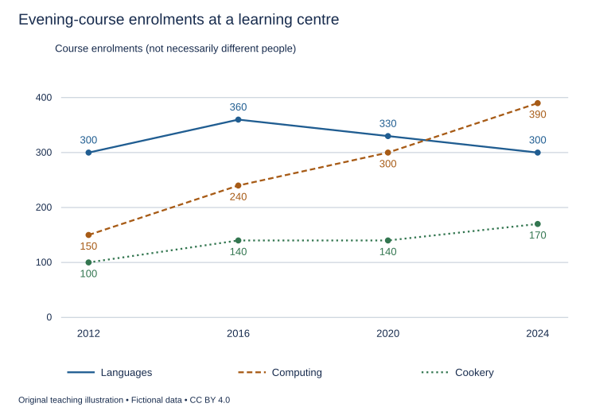
教学虚构。2012/2016/2020/2024：Languages300/360/330/300，Computing150/240/300/390，Cookery100/140/140/170。单位报名次数，可一人多课；未给价格、人数或开课频率。
任务预算（含首次审题，不额外加时）
初稿20分钟（审题规划3、写作15、检查2）；诊断15；反馈阅读与证据核查10；完整重写25；对照归档5。合计75分钟。
初稿后自评清单
- [ ] 达到最低字数；全文连贯成段，没有用项目符号代替作文。
- [ ] 概述给主要特征；数据、阶段或方位都与题图逐项相符，不推断未提供的原因。
- [ ] 每段可写出一个功能标签；例子或数据与该段要点相连。
- [ ] 核查两处词汇搭配和两处句法；如有疑点先试改再核实，无问题则记录通过证据。
- [ ] 如有影响理解的问题，记录原句；否则记通过或待核查，不填写自猜分数。
反馈与重写
打开 独立参考页（本节下方展开参考），按逐段检查和通用协议核验。重写任务：完整重写至少150词；如存在漏项/拼写疑点才修正，保留原词与依据；如无则记录核查通过。按所选纸笔或键入方式限时，但不能据此声称实际考场界面练习完成。
本周重点操作（已含原预算）
在原归档时段取3分钟登记所选考试形式及本次练习工具。写作按所选纸笔/键入方式完成，漏项和拼写检查已在初稿20分钟内的2分钟或40分钟内的5分钟，不另加时。核对报名单位、主要趋势、持平与比较；只核查实际写出的词语拼写。 如有问题才登记修正；无则记通过或待核查。普通编辑器、录音或本课页面不等于实际考试界面。真实界面熟悉练习单列来源、日期和完成状态；目前无记录，标“未完成/未确认”。
记录表见阶段证据表，只在上述原时段填写相关行。
W21 T1A 示例、反馈与重练（首答后展开）
WS-W21-T1A 独立参考页
只在初稿完成后阅读；不是唯一答案，也没有官方分数。以下是对原创示例的教学讲评，不是对学生尚未提交作文的已完成批改。
思路拆解
首答20分钟内完成概述和主比较；读清报名次数非独立人数；查首尾、峰值与持平，最后核拼写和单位。
原创示例
The graph compares enrolments in language, computing and cookery courses at a learning centre in four selected years from 2012 to 2024. The figures represent course enrolments rather than necessarily different individuals.
Overall, language courses attracted the most enrolments in the first three years shown, but computing became the largest category in 2024. Computing enrolments increased throughout, whereas language enrolments rose initially and then declined. Cookery remained the smallest category despite an increase over the period.
In 2012, languages recorded 300 enrolments, compared with 150 for computing and 100 for cookery. By 2016, the language figure had reached its peak of 360, while computing rose to 240 and cookery to 140. Languages therefore retained a substantial lead at that point.
In 2020, language enrolments fell to 330 and computing increased to 300, reducing the gap to just thirty. Cookery remained unchanged at 140. In the final year, computing reached 390 enrolments, ninety more than languages, which returned to 300. Cookery rose to 170. Consequently, the three categories together accounted for 860 enrolments in 2024, compared with 550 in 2012.
示例正文词数：179（本项目正则计数；书信不含称呼、结束语与署名；连字符词作一词）。
逐段反馈与迁移
以下只分析上方原创示例。题干要点及图表事实必须遵守；书信、议论文的自拟身份、日期、经历和例子不是新增强制要求。按自己的合理设定核验，不为对齐范例编造经历。
- P1 enrolments不等于独立学生，同人可能报多课。
- P2 computing末年领先，cookery一直最小；languages不是持续上涨。
- P3 2016语言峰360，另两类240/140；不补收费或宣传原因。
- P4 2020差30、2024差90；厨艺2016/2020持平140；合计550→860，算术可回查。
常见失误
把报名当不同人数；漏持平；只检查单词不查概述或单位。
可执行反馈步骤
1. 先把自己的段落标为引入、概述/论点、支持、收束；分段可不同于示例，按功能核查，不照抄段数。
2. 对照上方逐段检查，逐项标“已有证据/缺失/不适用”。每条意见必须附自己的原句或缺失位置。
3. 按 反馈协议 的四维表记录；有争议的 AI 意见回题干、数据或语法依据核验。
4. 只选至多两项有证据的优先点执行整篇重写；如未发现问题，可改变组织或表达练迁移，但不把它标成纠错；保留原稿，禁止把示例替换为自己的作业。
重写任务
完整重写至少150词；如存在漏项/拼写疑点才修正，保留原词与依据；如无则记录核查通过。按所选纸笔或键入方式限时，但不能据此声称实际考场界面练习完成。
完成后重新勾选 学生页（见本节上方学生题） 清单；将一处改前/改后及理由交给独立评阅者核查。真人评阅状态目前为“待安排”，不是已完成。
WS-W21-T1G 学生页：要求核对课程报名信息
周次 W21｜题型 T1G｜能力点：书信目的、要点与语气
Task 1 的 A/G 分支二选一，另一分支不计入本周作业。
使用与记录
原创教学练习，非真题、非标准化模拟，难度未校准。先完成本页再打开参考页。人物、机构、经历与数据均为教学虚构。范例的身份、地点、动作和细节不是强制要求。口语优先用真实经历或真实观察，并说明来源；没有相关经历时，可将假设回答明确标为技能练习，不伪装成亲历。不要背诵示例。自评和 AI 反馈不能代替独立真人评分，未获得真人评阅时标记“分数未确认”。
保存：任务ID、实际日期、用时、初稿或原始录音、证据化反馈、重写/重答、三条修改理由。没有学生提交物，不得填写“已批改”或“已完成训练”。
完整题干
You booked a short course, but the confirmation contains incorrect information. Write to the course administrator. In your letter:
- give the details of the booking you intended to make
- describe the incorrect information in the confirmation
- ask for the corrections and confirmation you need.
Begin your letter: Dear Sir or Madam,
Write at least 150 words. You do not need to write any addresses. Spend about 20 minutes on this task.
任务预算（含首次审题，不额外加时）
初稿20分钟（审题规划3、写作15、检查2）；诊断15；反馈阅读与证据核查10；完整重写25；对照归档5。合计75分钟。
初稿后自评清单
- [ ] 达到最低字数；全文连贯成段，没有用项目符号代替作文。
- [ ] 三个要点均展开；称呼、目的、语气和结束语适合收信人。
- [ ] 每段可写出一个功能标签；例子或数据与该段要点相连。
- [ ] 核查两处词汇搭配和两处句法；如有疑点先试改再核实，无问题则记录通过证据。
- [ ] 如有影响理解的问题，记录原句；否则记通过或待核查，不填写自猜分数。
反馈与重写
打开 独立参考页（本节下方展开参考），按逐段检查和通用协议核验。重写任务：整篇重写至少150词；核对三个题干要点、名字、日期和请求语气。如无错误记通过，不制造错字；实际所选输入方式单独登记。
本周重点操作（已含原预算）
在原归档时段取3分钟登记所选考试形式及本次练习工具。写作按所选纸笔/键入方式完成，漏项和拼写检查已在初稿20分钟内的2分钟或40分钟内的5分钟，不另加时。核对自己设定的原报名信息、确认中的差异和更正请求；名字与日期前后一致。 如有问题才登记修正；无则记通过或待核查。普通编辑器、录音或本课页面不等于实际考试界面。真实界面熟悉练习单列来源、日期和完成状态；目前无记录，标“未完成/未确认”。
记录表见阶段证据表，只在上述原时段填写相关行。
W21 T1G 示例、反馈与重练（首答后展开）
WS-W21-T1G 独立参考页
只在初稿完成后阅读；不是唯一答案，也没有官方分数。以下是对原创示例的教学讲评，不是对学生尚未提交作文的已完成批改。
思路拆解
正式核对；原拟报名与收到信息分开。示例选择姓名和组别两项差异，学生可合理自拟其他错误信息；备选未获同意不假定。
原创示例
Dear Sir or Madam,
I am writing about my booking for the introductory gardening course, reference GD417. I intended to join the Saturday morning group beginning on 8 September. When I completed the booking form, I selected that group because I work during the week and can only attend at weekends.
The confirmation I received yesterday lists the Thursday evening group instead. It also spells my surname as Chan, although I entered Chen on the form. The email address and telephone number shown in the confirmation are correct. I would like to have the group and name checked before any course materials or attendance records are prepared.
Could you please transfer the booking to the Saturday group, if a place is still available, and correct the spelling of my name? I would appreciate a revised confirmation showing the starting date, session time and location. If the Saturday group is already full, please let me know what alternatives are available before changing my booking to another group. I have attached the original booking summary so that you can compare the details.
Yours faithfully, Alex Chen
示例正文词数：176（本项目正则计数；书信不含称呼、结束语与署名；连字符词作一词）。
逐段反馈与迁移
以下只分析上方原创示例。题干要点及图表事实必须遵守；书信、议论文的自拟身份、日期、经历和例子不是新增强制要求。按自己的合理设定核验，不为对齐范例编造经历。
- P1 编号/原选周六及原因完整，属于虚构书信情境非真实订单。
- P2 周四组及Chan/Chen两误差明确；正确联系方式不误改。
- P3 请求改正与新确认要点齐全；满员则先告知选项，不声称已转成功。
常见失误
漏自己设定的错误信息或更正请求；若采用本示例的姓名/组别设定，需前后一致，但题目不强制学生使用这两项具体错误。
可执行反馈步骤
1. 先把自己的段落标为引入、概述/论点、支持、收束；分段可不同于示例，按功能核查，不照抄段数。
2. 对照上方逐段检查，逐项标“已有证据/缺失/不适用”。每条意见必须附自己的原句或缺失位置。
3. 按 反馈协议 的四维表记录；有争议的 AI 意见回题干、数据或语法依据核验。
4. 只选至多两项有证据的优先点执行整篇重写；如未发现问题，可改变组织或表达练迁移，但不把它标成纠错；保留原稿，禁止把示例替换为自己的作业。
重写任务
整篇重写至少150词；核对三个题干要点、名字、日期和请求语气。如无错误记通过，不制造错字；实际所选输入方式单独登记。
完成后重新勾选 学生页（见本节上方学生题） 清单；将一处改前/改后及理由交给独立评阅者核查。真人评阅状态目前为“待安排”，不是已完成。
WS-W21-T2 学生页：四天工作周
周次 W21｜题型 T2｜能力点：观点展开与任务回应
A/G 共用本题。
使用与记录
原创教学练习，非真题、非标准化模拟，难度未校准。先完成本页再打开参考页。人物、机构、经历与数据均为教学虚构。范例的身份、地点、动作和细节不是强制要求。口语优先用真实经历或真实观察，并说明来源；没有相关经历时，可将假设回答明确标为技能练习，不伪装成亲历。不要背诵示例。自评和 AI 反馈不能代替独立真人评分，未获得真人评阅时标记“分数未确认”。
保存：任务ID、实际日期、用时、初稿或原始录音、证据化反馈、重写/重答、三条修改理由。没有学生提交物，不得填写“已批改”或“已完成训练”。
完整题干
Some employers are considering a four-day working week with no reduction in weekly pay. Do the advantages of this arrangement outweigh the disadvantages? Give reasons and include relevant examples.
Write at least 250 words. Spend about 40 minutes on this task.
任务预算（含首次审题，不额外加时）
初稿40分钟（审题规划5、写作30、检查5）；诊断15；反馈阅读与证据核查10；完整重写35；对照归档5。合计105分钟。
初稿后自评清单
- [ ] 达到最低字数；全文连贯成段，没有用项目符号代替作文。
- [ ] 直接回答题目的所有问句，有始终一致的立场。
- [ ] 每段可写出一个功能标签；例子或数据与该段要点相连。
- [ ] 核查两处词汇搭配和两处句法；如有疑点先试改再核实，无问题则记录通过证据。
- [ ] 如有影响理解的问题，记录原句；否则记通过或待核查，不填写自猜分数。
反馈与重写
打开 独立参考页（本节下方展开参考），按逐段检查和通用协议核验。重写任务：完整重写至少250词；限时核主张、例子与限制。如发现长句或拼写问题才修；结束时标真实完成位置，不靠额外时间伪报按时完成。
本周重点操作（已含原预算）
在原归档时段取3分钟登记所选考试形式及本次练习工具。写作按所选纸笔/键入方式完成，漏项和拼写检查已在初稿20分钟内的2分钟或40分钟内的5分钟，不另加时。核对利弊权衡、立场与限制，检查实际文本的漏项和拼写，不预设有错误。 如有问题才登记修正；无则记通过或待核查。普通编辑器、录音或本课页面不等于实际考试界面。真实界面熟悉练习单列来源、日期和完成状态；目前无记录，标“未完成/未确认”。
记录表见阶段证据表，只在上述原时段填写相关行。
W21 T2 示例、反馈与重练（首答后展开）
WS-W21-T2 独立参考页
只在初稿完成后阅读；不是唯一答案，也没有官方分数。以下是对原创示例的教学讲评，不是对学生尚未提交作文的已完成批改。
思路拆解
权衡限定适用工作场景，不把四天等于总工时自动减少；按休息、覆盖与强度比较，试点需证据。
原创示例
A four-day working week without lower weekly pay could give employees more time outside work, but it also raises questions about workload and service coverage. I believe its advantages can outweigh its disadvantages in suitable workplaces, provided that employers redesign the work rather than simply compress five days of tasks into four exhausting days.
The main potential benefit is additional time for rest and personal responsibilities. An employee might use the extra day for appointments, family activities or learning without repeatedly interrupting the working week. This could make the job more attractive and help staff remain with an organisation. However, the benefit depends on whether the free day is genuinely protected. If unfinished tasks routinely spill into it, the apparent reduction in working days achieves much less.
The disadvantages are particularly clear where a service must remain available throughout the week. A customer support team, for example, cannot assume that customers will stop needing help on the fifth day. Covering the same opening hours may require staggered schedules or additional staff. Some employees could also face more intense working days, making the arrangement less comfortable than its name suggests. These costs should be included in any comparison rather than treated as minor implementation details.
In my view, a limited trial offers a better approach than either rejecting the idea or introducing it everywhere at once. A workplace could reduce unnecessary meetings, distribute coverage across different teams and monitor both employee workload and service quality. If the trial shows that tasks are being rushed or that staff work unofficially on the extra day off, the arrangement should be adjusted rather than declared successful merely because the schedule has changed.
Overall, the extra personal time can be a substantial advantage, but it is not created by a calendar change alone. The case is strongest where work can be reorganised without transferring unreasonable pressure to employees or customers.
示例正文词数：315（本项目正则计数；书信不含称呼、结束语与署名；连字符词作一词）。
逐段反馈与迁移
以下只分析上方原创示例。题干要点及图表事实必须遵守；书信、议论文的自拟身份、日期、经历和例子不是新增强制要求。按自己的合理设定核验，不为对齐范例编造经历。
- P1 条件式利大，no reduction pay已回应，不讨论自愿减薪兼职。
- P2 休息/责任便利有机制，真正休息日是条件。
- P3 服务覆盖与强度成本具体，不假设所有岗位相同。
- P4 试点看实际负担质量，不凭新日历宣布成功。
- P5 和首段一致，没有保证生产率上涨。
常见失误
把四天必然等于轻松；忘服务需求；用虚构研究证明固定百分比效果。
可执行反馈步骤
1. 先把自己的段落标为引入、概述/论点、支持、收束；分段可不同于示例，按功能核查，不照抄段数。
2. 对照上方逐段检查，逐项标“已有证据/缺失/不适用”。每条意见必须附自己的原句或缺失位置。
3. 按 反馈协议 的四维表记录；有争议的 AI 意见回题干、数据或语法依据核验。
4. 只选至多两项有证据的优先点执行整篇重写；如未发现问题，可改变组织或表达练迁移，但不把它标成纠错；保留原稿，禁止把示例替换为自己的作业。
重写任务
完整重写至少250词；限时核主张、例子与限制。如发现长句或拼写问题才修；结束时标真实完成位置，不靠额外时间伪报按时完成。
完成后重新勾选 学生页（见本节上方学生题） 清单；将一处改前/改后及理由交给独立评阅者核查。真人评阅状态目前为“待安排”，不是已完成。
WS-W21-S1 学生页
周次W21｜Part 1专项｜能力点：在规定时间内直接回应；检查题卡覆盖，选择并回应追问｜30分钟
使用与记录
原创教学练习，非真题、非标准化模拟，难度未校准。先完成本页再打开参考页。人物、机构、经历与数据均为教学虚构。范例的身份、地点、动作和细节不是强制要求。口语优先用真实经历或真实观察，并说明来源；没有相关经历时，可将假设回答明确标为技能练习，不伪装成亲历。不要背诵示例。自评和 AI 反馈不能代替独立真人评分，未获得真人评阅时标记“分数未确认”。
保存：任务ID、实际日期、用时、初稿或原始录音、证据化反馈、重写/重答、三条修改理由。没有学生提交物，不得填写“已批改”或“已完成训练”。
操作与预算
设备与审题3分钟；首答录音6；回听及局部转写7；示例和诊断5；不看稿重答6；归档3。共30分钟。
Part 1专项题
1. Do you prefer making plans on paper or on a screen?
2. When do you usually check your plans?
3. How do you remember small tasks?
4. Has the way you organise your time changed?
追问：
- What happens when a plan changes unexpectedly?
- Would the same method suit everyone?
首答6分钟内依次答4个主问，每题约40～60秒；两条追问只选1条答约30～45秒，其余时间用于转题。备用追问留给重答，不要求全部说完。
录音回听清单
- [ ] 保留首答原音，记录实际时长、是否中断、是否看稿；只报真实完成状态；短于目标时长如实记，不用沉默或无关内容凑时。
- [ ] 流利与连贯：标出两处时间戳，区分构思停顿与重复搜词，检查是否偏离问句。
- [ ] 词汇：如有模糊词或无效重复，引用一处并先解释原意再试改；无则记录清楚的表达，不为难词改变意思。
- [ ] 语法：核对经历与习惯的时态；局部转写核查；如存在妨碍理解的问题才更正，无则记通过。
- [ ] 发音：不看转写听30秒，如有听不清的词尾、重音或断句则标时间戳，无则记录清楚证据；没有音频不能判断发音。
- [ ] 展开：主要回答有具体情境或理由；追问后第一句回应追问的新角度。
重答要求
如有笼统判断，选择至多两个答案补具体情境；如没有，选择两题换角度重答并保留切题证据；重答一条追问，检查是否真正回应其新角度。
首答回听后才打开独立参考页（本节下方展开参考）。按反馈协议填至少三个时间戳，不以文字转写替代音频评阅。
本周重点操作（已含原预算）
在原归档时段取3分钟记本次现场同伴/远程同伴/独练方式、实际首答时长与所选追问；按本页限时，不强行回答整套备用题。依据自己的原始音频标实际时长、题目覆盖和一个清楚或待核查的时间戳；范例身份、事件和细节均不必照搬。 如有问题才登记修正；无则记通过或待核查。普通编辑器、录音或本课页面不等于实际考试界面。真实界面熟悉练习单列来源、日期和完成状态；目前无记录，标“未完成/未确认”。
记录表见阶段证据表，只在上述原时段填写相关行。
W21 S1 示例、反馈与重练（首答后展开）
WS-W21-S1 独立参考页
原创教学示例，非真题或评分结果。未收到学生音频；以下是示例分析与待执行反馈，不能登记为已完成学生批改。
展开示例
直接回应→原因→具体情境的展开示例
I normally use a paper notebook for personal plans because I can see the whole week at once. For appointments that may change, though, I use my phone. It can remind me before I leave, so I do not have to keep checking the notebook while I am travelling.
纯口答示例词数：49；只计MODEL标记内实际英文口答，不含标题、标签、说明。词数不能证明录音时长或流利度。
展开与反馈
本周能力：在规定时间内直接回应；检查题卡覆盖，选择并回应追问。
1. 示例先表态，再说明偏好理由，最后提供条件或场景。检查自己是否用一个词回答后就结束。
2. 找到一个具体细节：物品、动作、对话或地点。用真实经历或注明来源的真实观察替换；假设回答须标为技能练习。保持切题，不强制复制范例细节，不照搬身份与经历。
3. 追问要重新回应，不能继续背长答。首句先回答追问，再用一条理由支持。
4. 如存在听不清或语法影响理解处，标原音时间戳；否则标一处清楚的原音证据；先尝试最小修正。不要把自然停顿一概当成错误，或用加快语速掩盖逻辑断裂。
常见失误
空泛形容词替代具体过程；给了经历却没解释为什么重要；Part 3只有个人故事没有一般解释；AI只看转写就判断发音。逐项回原音核对，不能凭范例推断自己已达到某个分数。
可执行重答与反馈
如有笼统判断，选择至多两个答案补具体情境；如没有，选择两题换角度重答并保留切题证据；重答一条追问，检查是否真正回应其新角度。
填写反馈协议四维表，附三个时间戳和原话证据。如存在，选至多一个内容问题与一个语言问题先修；否则记录清楚的证据并做迁移重答；重答后并排听两段，记录改善与仍未解决之处。自评与AI不能替代独立真人评分；独立评阅目前待安排，分数未确认。
WS-W21-S2 学生页
周次W21｜Part 2专项｜能力点：在规定时间内直接回应；检查题卡覆盖，选择并回应追问｜30分钟
使用与记录
原创教学练习，非真题、非标准化模拟，难度未校准。先完成本页再打开参考页。人物、机构、经历与数据均为教学虚构。范例的身份、地点、动作和细节不是强制要求。口语优先用真实经历或真实观察，并说明来源；没有相关经历时，可将假设回答明确标为技能练习，不伪装成亲历。不要背诵示例。自评和 AI 反馈不能代替独立真人评分，未获得真人评阅时标记“分数未确认”。
保存：任务ID、实际日期、用时、初稿或原始录音、证据化反馈、重写/重答、三条修改理由。没有学生提交物，不得填写“已批改”或“已完成训练”。
操作与预算
准备、首答录音及追问5分钟；回听及局部转写8；示例与诊断5；关键词重组3；重答及追问5；归档4。共30分钟。
Part 2专项任务卡
Describe a time you checked something carefully before using it.
Say:
- what you checked
- why you checked it
- how you checked it
- and explain whether the check was useful.
准备1分钟，说1～2分钟。只记5个关键词，不预写句子。
收尾追问：
- Would you do the same check again?
- Who else might find that check useful?
每轮5分钟包含准备1分钟、连续说1～2分钟、两条收尾追问选1条答20～30秒及转题缓冲；另一条可用于重答。不把备用题全部加进本轮。
录音回听清单
- [ ] 保留首答原音，记录实际时长、是否中断、是否看稿；只报真实完成状态；短于目标时长如实记，不用沉默或无关内容凑时。
- [ ] 流利与连贯：标出两处时间戳，区分构思停顿与重复搜词，检查是否偏离问句。
- [ ] 词汇：如有模糊词或无效重复，引用一处并先解释原意再试改；无则记录清楚的表达，不为难词改变意思。
- [ ] 语法：核对经历与习惯的时态；局部转写核查；如存在妨碍理解的问题才更正，无则记通过。
- [ ] 发音：不看转写听30秒，如有听不清的词尾、重音或断句则标时间戳，无则记录清楚证据；没有音频不能判断发音。
- [ ] 展开：主要回答有具体情境或理由；追问后第一句回应追问的新角度。
重答要求
用五个关键词重答完整任务卡1～2分钟，再从两条追问中选1条答20～30秒；如缺具体细节则补、如有无关背景则删；若已清楚，换表达但保持事实。比较首答与重答，不背示例。
首答回听后才打开独立参考页（本节下方展开参考）。按反馈协议填至少三个时间戳，不以文字转写替代音频评阅。
本周重点操作（已含原预算）
在原归档时段取3分钟记本次现场同伴/远程同伴/独练方式、实际首答时长与所选追问；按本页限时，不强行回答整套备用题。依据自己的原始音频标实际时长、题目覆盖和一个清楚或待核查的时间戳；范例身份、事件和细节均不必照搬。 如有问题才登记修正；无则记通过或待核查。普通编辑器、录音或本课页面不等于实际考试界面。真实界面熟悉练习单列来源、日期和完成状态；目前无记录，标“未完成/未确认”。
记录表见阶段证据表，只在上述原时段填写相关行。
W21 S2 示例、反馈与重练（首答后展开）
WS-W21-S2 独立参考页
原创教学示例，非真题或评分结果。未收到学生音频；以下是示例分析与待执行反馈，不能登记为已完成学生批改。
展开示例
原创长答示例（时长须以个人实际录音测量）
I would like to talk about checking the route for a walk I was planning with a friend. We wanted to visit a lake outside our town, and I had found a route description online.
Before we left, I noticed that the description had been written several years earlier. I was not sure whether the small footbridge mentioned in it was still open, so I compared it with a more recent notice from the park. That notice said the bridge was closed for repairs. I then marked a different path on a paper map and saved a copy on my phone.
The check took only a few minutes, but it changed where we started the walk. We also allowed more time because the alternative route was longer. When we reached the park, there was a barrier beside the old bridge, exactly as the notice had explained.
I found the check useful because it turned a possible interruption into an ordinary part of our plan. It did not remove every uncertainty, such as the weather, but it dealt with one specific question before it caused a problem.
纯口答示例词数：186；只计MODEL标记内实际英文口答，不含标题、标签、说明。词数不能证明录音时长或流利度。
展开与反馈
本周能力：在规定时间内直接回应；检查题卡覆盖，选择并回应追问。
1. 长答示例按背景、行动/观察、变化与意义组织。每段都推进内容；检查自己是否只有背景而没有具体事件。
2. 找到一个具体细节：物品、动作、对话或地点。用真实经历或注明来源的真实观察替换；假设回答须标为技能练习。保持切题，不强制复制范例细节，不照搬身份与经历。
3. 追问要重新回应，不能继续背长答。首句先回答追问，再用一条理由支持。
4. 如存在听不清或语法影响理解处，标原音时间戳；否则标一处清楚的原音证据；先尝试最小修正。不要把自然停顿一概当成错误，或用加快语速掩盖逻辑断裂。
常见失误
空泛形容词替代具体过程；给了经历却没解释为什么重要；Part 3只有个人故事没有一般解释；AI只看转写就判断发音。逐项回原音核对，不能凭范例推断自己已达到某个分数。
可执行重答与反馈
用五个关键词重答完整任务卡1～2分钟，再从两条追问中选1条答20～30秒；如缺具体细节则补、如有无关背景则删；若已清楚，换表达但保持事实。比较首答与重答，不背示例。
填写反馈协议四维表，附三个时间戳和原话证据。如存在，选至多一个内容问题与一个语言问题先修；否则记录清楚的证据并做迁移重答；重答后并排听两段，记录改善与仍未解决之处。自评与AI不能替代独立真人评分；独立评阅目前待安排，分数未确认。
WS-W21-S3 学生页
周次W21｜三部分全流程｜能力点：在规定时间内直接回应；检查题卡覆盖，选择并回应追问｜60分钟
使用与记录
原创教学练习，非真题、非标准化模拟，难度未校准。先完成本页再打开参考页。人物、机构、经历与数据均为教学虚构。范例的身份、地点、动作和细节不是强制要求。口语优先用真实经历或真实观察，并说明来源；没有相关经历时，可将假设回答明确标为技能练习，不伪装成亲历。不要背诵示例。自评和 AI 反馈不能代替独立真人评分，未获得真人评阅时标记“分数未确认”。
保存：任务ID、实际日期、用时、初稿或原始录音、证据化反馈、重写/重答、三条修改理由。没有学生提交物，不得填写“已批改”或“已完成训练”。
操作与预算
D5：设备与流程准备2分钟，连续首答11～14分钟，余14～17分钟完整回听标记，共30分钟。D6：局部转写诊断10，阅读示例与调整5，重答与新追问10，对照归档5，共30分钟。合计60分钟。
连续三部分全流程（首答不可看参考）
找同伴读题，或独练逐题揭示。完整首答11～14分钟，中途不暂停纠错。模拟同伴不是认证考官；自行读题的练习记录不能冒充真实面试。
Part 1：4～5分钟
1. What kind of place do you study or work in?
2. Do you like a quiet environment?
3. What do you keep on your desk?
4. How do you choose a place to sit?
5. Do you often change your surroundings?
6. What helps you concentrate?
可按回答追加 Why? / Can you give an example? 到时转下部分，不强行说完全部备用问题。
Part 2：3～4分钟（含准备）
Describe a useful instruction you followed.
Say:
- what it was for
- where you found it
- what you did
- and explain what made it useful.
准备1分钟，连续说1～2分钟。收尾追问：
- Was any part difficult to follow?
- Would you recommend that instruction to someone else?
Part 3：4～5分钟
1. What makes an instruction clear?
2. Why do people sometimes ignore instructions?
3. Should public instructions include pictures?
4. How can organisations check whether their instructions work?
根据回答追加追问：
- Could too much detail create difficulties?
- When might written instructions be insufficient?
Part 2收尾追问两条选1条，答20～30秒，含在3～4分钟内。Part 3从4个主问中选3个，每个约60～75秒，再从2条追问中选1条答30～45秒；连同读题控制在4～5分钟，到时结束。题库数量不是必答数量。
录音回听清单
- [ ] 保留首答原音，记录实际时长、是否中断、是否看稿；只报真实完成状态；短于目标时长如实记，不用沉默或无关内容凑时。
- [ ] 流利与连贯：标出两处时间戳，区分构思停顿与重复搜词，检查是否偏离问句。
- [ ] 词汇：如有模糊词或无效重复，引用一处并先解释原意再试改；无则记录清楚的表达，不为难词改变意思。
- [ ] 语法：核对经历与习惯的时态；局部转写核查；如存在妨碍理解的问题才更正，无则记通过。
- [ ] 发音：不看转写听30秒，如有听不清的词尾、重音或断句则标时间戳，无则记录清楚证据；没有音频不能判断发音。
- [ ] 展开：主要回答有具体情境或理由；追问后第一句回应追问的新角度。
重答要求
在10分钟重答时段：选择一个有核查需要的Part 1主问答约1分钟；Part 2准备1分钟、答1～2分钟，再选一条收尾追问答20～30秒；Part 3只选一个主问答约1分钟，再选一条未用追问答30～45秒。余时用于换题和回听；无薄弱项则选已通过题换角度练迁移，保持真实细节，不复述范例。局部重答不另计全流程。
首答回听后才打开独立参考页（本节下方展开参考）。按反馈协议填至少三个时间戳，不以文字转写替代音频评阅。
本周重点操作（已含原预算）
在原归档时段取3分钟记本次现场同伴/远程同伴/独练方式、实际首答时长与所选追问；按本页限时，不强行回答整套备用题。依据自己的原始音频标实际时长、题目覆盖和一个清楚或待核查的时间戳；范例身份、事件和细节均不必照搬。 如有问题才登记修正；无则记通过或待核查。普通编辑器、录音或本课页面不等于实际考试界面。真实界面熟悉练习单列来源、日期和完成状态；目前无记录，标“未完成/未确认”。
记录表见阶段证据表，只在上述原时段填写相关行。
W21 S3 示例、反馈与重练（首答后展开）
WS-W21-S3 独立参考页
原创教学示例，非真题或评分结果。未收到学生音频；以下是示例分析与待执行反馈，不能登记为已完成学生批改。
展开示例
Part 2原创展开示例（个人语速不同，不能以词数推录音时长）
One useful instruction I followed explained how to assemble a small reading lamp. I bought it for a desk at home, and the parts came with a single sheet of diagrams.
At first I thought I could work out the assembly by looking at the finished picture. However, two of the screws looked almost identical, so I decided to follow the numbered steps. The sheet showed each screw beside its measurement. I put the parts into separate groups and checked the first diagram before attaching the base.
The most helpful detail was a close view of the joint between the arm and the shade. It showed which side a small washer belonged on. Without that picture, I might have placed it on the opposite side and had to take the joint apart again. Once the lamp was assembled, I checked that the base was stable before using it.
I liked the instruction because each picture answered a question at the moment I needed it. There was very little text, but the order and the labels were clear. For this particular task, that was more useful than a long general explanation.
Part 3观点→理由→条件展开示例
Clear instructions should tell people what to do next and make important conditions easy to find. A numbered sequence helps with a practical task, while a diagram can explain a position more quickly than a paragraph. However, extra detail is not always helpful. If every possible exception appears before the first step, readers may lose track of the main action. I would test the instructions with someone unfamiliar with the task and watch where they hesitate.
纯口答示例词数：266；只计MODEL标记内实际英文口答，不含标题、标签、说明。词数不能证明录音时长或流利度。
展开与反馈
本周能力：在规定时间内直接回应；检查题卡覆盖，选择并回应追问。
1. 长答示例按背景、行动/观察、变化与意义组织。每段都推进内容；检查自己是否只有背景而没有具体事件。
2. 找到一个具体细节：物品、动作、对话或地点。用真实经历或注明来源的真实观察替换；假设回答须标为技能练习。保持切题，不强制复制范例细节，不照搬身份与经历。
3. Part 3示例不把个人选择强加给所有人；先讲机制，再说明条件或例外。检查自己的追问答案是否直接回应新问题。
4. 如存在听不清或语法影响理解处，标原音时间戳；否则标一处清楚的原音证据；先尝试最小修正。不要把自然停顿一概当成错误，或用加快语速掩盖逻辑断裂。
常见失误
空泛形容词替代具体过程；给了经历却没解释为什么重要；Part 3只有个人故事没有一般解释；AI只看转写就判断发音。逐项回原音核对，不能凭范例推断自己已达到某个分数。
可执行重答与反馈
在10分钟重答时段：选择一个有核查需要的Part 1主问答约1分钟；Part 2准备1分钟、答1～2分钟，再选一条收尾追问答20～30秒；Part 3只选一个主问答约1分钟，再选一条未用追问答30～45秒。余时用于换题和回听；无薄弱项则选已通过题换角度练迁移，保持真实细节，不复述范例。局部重答不另计全流程。
填写反馈协议四维表，附三个时间戳和原话证据。如存在，选至多一个内容问题与一个语言问题先修；否则记录清楚的证据并做迁移重答；重答后并排听两段，记录改善与仍未解决之处。自评与AI不能替代独立真人评分；独立评阅目前待安排，分数未确认。
许可
原创文字：RayXBuilds and contributors，CC BY 4.0。此页由已验收分课汇编，调整了标题和导航；题干、正文和答案内容保留。公开第三方音频未包含。
回到顶部
U32 第22周：长篇阅读、写作与口语
本页为已独立核验的原创文字课程。先完成学生题目，再展开对应参考。非真题、非标准化模考，不换算雅思分数。听力尚未补齐，本页不代表全科课程已完成。
每周选A或G类Task 1一题，加Task 2及三次口语。参考范文不是学生已完成作业，仍须提交初稿、录音和重写，独立真人评分另行安排。
阅读每周180分钟（60分钟首次限时、120分钟证据精读与延迟复测），写作180分钟、口语120分钟。词汇60分钟、听力180分钟另列；新增完整听力未验收，不能勾整周完成。
W22/W24原创阶段检查按实际证据复盘；正式T22/T24陌生整卷、所选真实考试界面操作及真人评分另记，缺少目标或真实证据时不能据此判断报考/延长，本页原创技能卷不能代替正式模拟。后续周数与达标规则见 U04。
阅读：首答不查词
R-W22-01 · The Bubbles inside the Dough
W22｜正文 852 词｜13 题｜篇章：简化科学过程：产生气体与保持结构（6段）
本课必做60分钟：首答20、证据复盘20、词汇长句10、48小时后复测10。每周三课180分钟，合卷首答替代单课首答，不重复计算。开放短文选做另加15分钟。
本项目原创虚构教学情境，人物、地点、历史事件和案例数据均非真实研究或史料。科学解释只讨论文内说明的模型与条件。非雅思真题或标准化模考；正确数不换算雅思等级。许可：CC BY 4.0 — RayXBuilds and contributors。
能力点：识别论证关系、区分作者与引述者、条件与因果、精确定位。初读不查词，完成后打开独立答案页。
Passage
A In the fictional kitchen laboratory of Mera, students compare two pieces of dough that receive the same gas-producing mixture. One expands visibly, while the other releases many bubbles at its surface without retaining much additional volume. The first explanation offered is that the larger piece must have produced more gas. The teacher asks whether production and retention have been confused. In the simplified model used for this lesson, gas must both enter spaces within the dough and remain there long enough to change its volume. A material that produces gas but lets it escape can behave differently from one that holds it. The account is restricted to the stated model and does not provide a recipe or explain every kind of bread. Its purpose is to distinguish a source of change from the structure that allows the change to become visible in a particular form.
B The class begins with a soft transparent model containing small air pockets. When more air enters a pocket, its boundary moves and the surrounding material is displaced. The expansion depends on the material yielding without immediately opening a route to the outside. A boundary that is too rigid may resist enlargement; one that separates easily may release the contents. The students therefore reject a simple opposition between strong material and weak material. Different properties matter at different stages. The model needs enough flexibility to change shape and enough continuity to preserve enclosed spaces. Saying only that the material must be stronger would hide the balance the demonstration is intended to make understandable. A useful account names the behaviour required rather than treating a favourable adjective as an explanation of the mechanism.
C The teacher then punctures one model pocket. Air escapes through the opening, and the local shape changes even though the air source continues working. This observation supports a distinction between ongoing supply and retained volume. It does not show that every reduction in real dough volume has the same cause. The students keep an escape map marking visible routes through which air leaves the model. A separate input chart records how much air is supplied during each observation interval. Comparing them prevents the class from interpreting every small final volume as evidence of a weak source. The material surrounding the pocket can change the outcome even when the amount supplied is held constant, so an explanation must consider what happens after the input as well as the input itself.
D A comparison over time produces another surprise. One model expands rapidly at first and then loses volume, while another changes more slowly and retains its shape longer. Ranking them at a single early moment would favour the first; ranking them later could favour the second. The teacher asks the class to state whether its question concerns initial expansion or continued retention. Neither observation time is inherently dishonest, but a report becomes misleading when it presents a result for one stage as an answer about another. The students draw a volume curve showing measurements taken at successive times. This reveals development that one photograph would conceal and allows the class to discuss speed and stability as separate features of the response rather than using larger as a complete description of performance.
E The model is finally connected back to the classroom dough, with its limitations stated. A texture card records observations of stretching and tearing made during a specified comparison. A timing log records when each sample is mixed, observed and removed from the demonstration. These records cannot reveal every microscopic process, and the class does not pretend that naming an observable property establishes its full cause. They do help preserve which sample was compared under which conditions. The students also note that a surface bubble can indicate escape rather than successful retention. Counting visible surface events alone would therefore answer a different question from measuring volume held within the sample. The most conspicuous sign of activity is not necessarily the sign most relevant to the outcome the investigator wants to explain. Before counting it, the class writes down the question that the count is meant to answer and checks whether an increase would represent retention or loss.
F The lesson ends with a deliberately limited conclusion: the observed expansion depends on both supply and the behaviour of the surrounding material over time. The class can use that relationship to ask better questions about unfamiliar systems without claiming that every such system is dough. A container filling with water, for example, invites a comparable distinction between inflow and leakage, but the analogy must not import the model's other properties without checking them. Transfer is useful when it preserves a relevant relationship and identifies where the comparison stops. The students now describe what was supplied, what was retained, how the boundary behaved and when the observation was made. Their explanation contains more parts than the original claim that more bubbles mean more growth, yet those parts make it easier to see which evidence would support or challenge the conclusion. A visible increase has become a process to investigate rather than a result whose cause can be read directly from its size.
Questions
Choose ONE answer, A, B, C or D.
1. The first explanation confuses
A. a surface with a photograph B. gas supply with the amount retained C. volume with length units D. a model with an oven
2. The model boundary needs
A. maximum rigidity in every condition B. no relationship to the contents C. an immediate permanent opening D. flexibility together with continued enclosure
3. The puncture example shows that
A. the source always stops B. surface bubbles prove storage C. retained volume can change despite continued supply D. all dough losses have one cause
4. Why compare measurements at successive times?
A. To eliminate the question of timing B. To hide early differences C. To distinguish initial expansion from lasting retention D. To make larger mean everything
Complete the sentences. Choose NO MORE THAN 3 WORDS FROM THE PASSAGE for each answer. Do not change word forms.
5. Visible exit routes are marked on an ______.
6. Air supplied in each interval is entered on an ______.
7. Successive volume measurements form a ______.
8. Stretching and tearing observations are recorded on a ______.
9. Mixing, observation and removal times are recorded in a ______.
Do the following statements agree with the writer's views? Write YES, NO or NOT GIVEN. YES = the writer agrees; NO = the writer expresses the opposite view; NOT GIVEN = the writer's view is not stated. Do not use outside knowledge.
10. Stronger is by itself a sufficient explanation of the required material behaviour.
11. Different observation times can support different legitimate questions.
12. The writer recommends replacing the school’s existing ovens.
13. The most visible activity need not measure the outcome of interest.
本周重点
原创技能检查与正式T22分开；无正式施测证据，不换算等级。
复盘
必做：给每道错题标记“定位/作者立场/范围/语法/词数”，抄最短证据；用一行箭头概括本文论证或过程。48小时后重做错题与两道正确题，检查是否仍能指出证据。
选做（15分钟，80–100词）：Explain the difference between supply and retention using evidence from the model.
R-W22-01 答案、证据与精读（首答后展开）
R-W22-01 · 独立答案与证据
来源与许可同学生页。先完成再核对。可接受答案由 accepted_answers 明确列出；只忽略大小写和首尾空格，不自行删词。开放复盘不计入客观正确数。
1. B｜段落 A｜证据：“production and retention have been confused”
供应与保留不同。
2. D｜段落 B｜证据：“enough flexibility to change shape and enough continuity”
双重条件。
3. C｜段落 C｜证据：“even though the air source continues working”
原因定位有边界。
4. C｜段落 D｜证据：“speed and stability as separate features”
动态变化。
5. escape map｜段落 C｜证据：“an escape map marking visible routes”
map不能单独接an。
6. input chart｜段落 C｜证据：“input chart records how much air”
chart不能单独接an。
7. volume curve / curve｜段落 D｜证据：“a volume curve showing measurements”
curve可接受。
8. texture card / card｜段落 E｜证据：“A texture card records observations”
card可接受。
9. timing log / log｜段落 E｜证据：“A timing log records when each sample”
log可接受。
10. NO｜段落 B｜证据：“would hide the balance”
简单形容词不够。
11. YES｜段落 D｜证据：“Neither observation time is inherently dishonest”
但需标阶段。
12. NOT GIVEN｜段落 A｜证据：“does not provide a recipe”
未讨论烤箱采购。
13. YES｜段落 E｜证据：“not necessarily the sign most relevant”
表面气泡可能是逃逸。
词汇与长句
- retention：使输入物留在系统中的能力或过程
- continuity：边界保持连续、不出现泄漏开口
- puncture：在边界上刺出孔口
- inflow：进入系统的流入量或流入过程
> The material surrounding the pocket can change the outcome even when the amount supplied is held constant, so an explanation must consider what happens after the input as well as the input itself.
even when保留相同供应量条件；so引出解释要求。
> Transfer is useful when it preserves a relevant relationship and identifies where the comparison stops.
when限定迁移；不是把模型全部特征套到新系统。
开放任务参考
C持续供气仍可逃逸，D时间改变保留；类比须标适用关系。
标准：观点有文内依据，保留条件和范围，推断明确标注；不存在唯一措辞。
R-W22-02 · The Postal Card That Changed Its Job
W22｜正文 941 词｜13 题｜篇章：虚构历史：物件用途变化与收藏选择（8段）
本课必做60分钟：首答20、证据复盘20、词汇长句10、48小时后复测10。每周三课180分钟，合卷首答替代单课首答，不重复计算。开放短文选做另加15分钟。
本项目原创虚构教学情境，人物、地点、历史事件和案例数据均非真实研究或史料。科学解释只讨论文内说明的模型与条件。非雅思真题或标准化模考；正确数不换算雅思等级。许可：CC BY 4.0 — RayXBuilds and contributors。
能力点：识别论证关系、区分作者与引述者、条件与因果、精确定位。初读不查词，完成后打开独立答案页。
Passage
A A box of illustrated postal cards survives from the fictional town of Darel. Many cards show the same fountain, but they carry different messages, stamps and handwritten additions. An early display groups them as pictures of local architecture. A later researcher asks what is lost when the image alone determines the category. One card announced an arrival, another advertised a shop, and a third was kept as a souvenir without ever being posted. Their shared design did not give them a single practical history. The researcher studies how one printed form could become several kinds of object through use. This approach does not deny the importance of the image; it places the image within the sequence of actions that made each surviving card distinctive.
B The first group was sold at a station kiosk. Travellers wrote brief messages on the reverse and sent them to people elsewhere. Several mention the convenience of buying a picture and writing material together. The fountain served as a recognisable sign of place without requiring the sender to describe the town at length. Yet the date printed beneath the illustration names the year of the fountain's rebuilding, not the date the message was written. A reader who overlooks that distinction can move a journey into the wrong decade. The researcher uses the handwritten date and postal mark where available, recording disagreement rather than quietly selecting whichever number seems to fit a preferred account of the traveller's movements.
C A shopkeeper bought a batch of the same cards and overprinted the lower border with the name of a new business. The architecture remained visible, but the card now invited recipients to connect the town with a commercial address. Some examples were mailed; others were handed out locally. A card without a postal mark is therefore not necessarily an unused failure. It may have completed its intended job without entering the postal system. The researcher looks for evidence of distribution instead of treating postage as the only action that can make a card historically meaningful. The printed form provided a convenient carrier for several communications, and one institution's record of movement cannot be assumed to capture them all.
D A collector later mounted cards in an album by arranging similar views together. To keep the page tidy, the collector trimmed the lower border of several examples, removing shop names and parts of messages. The album preserved the images while altering the evidence of use. The researcher compares loose cards with mounted ones to identify what the selection concealed. This does not make the album worthless. Its arrangement provides evidence of what the collector valued, even as its modifications reduce what can be learned about earlier senders. A source can be informative about one activity while being incomplete evidence for another. The mistake would be to treat the collector's visual order as though it reproduced the original sequence in which the cards circulated.
E The card with no message presents a different uncertainty. It might have been bought as a souvenir, saved for a future letter or left unsold. Its blank reverse does not identify which possibility occurred. A note in the box describes one card as a gift, but the note does not specify which example it accompanied. The researcher keeps those limits visible. The aim is not to fill every absence with the most appealing personal story. Nor is it to exclude every object lacking a complete biography. An unposted card can still show printing choices or collecting practices, provided the account does not pretend that those observations establish an undocumented intention on the part of a particular owner.
F The catalogue separates these questions through several aids. An image index groups the printed views without assigning them a single use. A message transcript preserves legible handwriting, including gaps where letters cannot be read. A circulation table records postal marks and documented hand distribution. A trimming diagram shows which edges were removed in the album examples. These records permit comparisons without making one feature stand for the whole object. A researcher interested in the fountain can use the image index, while someone studying communication can follow messages and routes. The same collection can answer different questions because the catalogue preserves connections between its categories rather than forcing every card into an exclusive identity decided by the first person to describe it.
G For the revised display, a use label distinguishes confirmed functions from possible ones. Visitors see a mailed card, a locally distributed advertisement and an example whose personal use remains unknown. The blank card is not labelled unused merely because it lacks a message. The display also includes the collector's album as an object with its own history of selection. This makes preservation itself part of the account: what survives has passed through decisions that may have changed its form and the questions it can now answer. The cards did not simply wait untouched for a researcher to assign meaning to them many years later.
H The box consequently tells a story about communication, commerce and collecting as well as architecture. A printed picture can remain visually stable while the job of the object carrying it changes. Traces on the reverse, missing borders and later arrangements can be as important as the prominent fountain on the front. The researcher gains a richer account by asking what each person did with the card and which evidence supports that claim. Similar appearance is a useful starting point for comparison, but it is not a substitute for reconstructing use. The collection becomes more intelligible when the same design is allowed to participate in different histories without requiring every surviving example to have an equally complete explanation.
Questions
Which paragraph contains the following information? Write a letter, A–H. You may use any letter more than once.
1. a gift note that cannot be securely linked to one particular card
2. a collector preserving views while physically removing evidence of earlier use
3. a commercial addition to a border and distribution that did not always involve postage
4. a date beneath an illustration referring to rebuilding rather than a traveller’s message
Do the following statements agree with the writer's views? Write YES, NO or NOT GIVEN. YES = the writer agrees; NO = the writer expresses the opposite view; NOT GIVEN = the writer's view is not stated. Do not use outside knowledge.
5. The absence of a postal mark necessarily means a card failed to serve a purpose.
6. The album can provide evidence about the collector despite losing earlier information.
7. The writer recommends selling blank cards separately from written ones.
8. Every surviving card needs a complete personal biography before it can be useful.
Complete the summary. Choose NO MORE THAN 3 WORDS FROM THE PASSAGE for each answer. Do not change word forms.
Printed views are grouped in the (9) ______. Readable handwriting is preserved in a (10) ______. Postal marks and hand distribution enter a (11) ______. Removed edges are shown in a (12) ______. Confirmed and possible functions are distinguished for visitors by a (13) ______.
本周重点
原创技能检查与正式T22分开；无正式施测证据，不换算等级。
复盘
必做：给每道错题标记“定位/作者立场/范围/语法/词数”，抄最短证据；用一行箭头概括本文论证或过程。48小时后重做错题与两道正确题，检查是否仍能指出证据。
选做（15分钟，80–100词）：Explain why an unposted card should not automatically be labelled unused.
R-W22-02 答案、证据与精读（首答后展开）
R-W22-02 · 独立答案与证据
来源与许可同学生页。先完成再核对。可接受答案由 accepted_answers 明确列出；只忽略大小写和首尾空格，不自行删词。开放复盘不计入客观正确数。
1. E｜段落 E｜证据：“does not specify which example”
E归属不明。
2. D｜段落 D｜证据：“trimmed the lower border”
D裁边。
3. C｜段落 C｜证据：“overprinted the lower border”
C商业改用与手递组合。
4. B｜段落 B｜证据：“the year of the fountain's rebuilding”
B两日期事件。
5. NO｜段落 C｜证据：“not necessarily an unused failure”
手递可完成用途。
6. YES｜段落 D｜证据：“evidence of what the collector valued”
不同研究问题。
7. NOT GIVEN｜段落 E｜证据：“Its blank reverse”
未提出销售分类政策。
8. NO｜段落 E｜证据：“exclude every object lacking a complete biography”
明确拒绝排除。
9. image index / index｜段落 F｜证据：“An image index groups the printed views”
the可接index，避免an误限制。
10. message transcript / transcript｜段落 F｜证据：“A message transcript preserves legible handwriting”
transcript可接受。
11. circulation table / table｜段落 F｜证据：“A circulation table records postal marks”
table可接受。
12. trimming diagram / diagram｜段落 F｜证据：“A trimming diagram shows which edges”
diagram可接受。
13. use label / label｜段落 G｜证据：“a use label distinguishes”
use读音以辅音起，a合法，label也可。
词汇与长句
- reverse：卡片背面
- overprint：在既有印刷品上加印
- circulation：物件或信息的传播与转手
- legible：字迹可辨认的
> A source can be informative about one activity while being incomplete evidence for another.
while保留并存评价，非一刀切可靠或不可靠。
> A printed picture can remain visually stable while the job of the object carrying it changes.
carrying修饰object；视觉稳定不保证用途不变。
开放任务参考
C手递与E未明用途区分；无邮戳只否定已知邮寄证据，不否定所有用途。
标准：观点有文内依据，保留条件和范围，推断明确标注；不存在唯一措辞。
R-W22-03 · Restoring the Missing Piece of a Bowl
W22｜正文 851 词｜14 题｜篇章：议论：修复、可见性与证据边界（7段）
本课必做60分钟：首答20、证据复盘20、词汇长句10、48小时后复测10。每周三课180分钟，合卷首答替代单课首答，不重复计算。开放短文选做另加15分钟。
本项目原创虚构教学情境，人物、地点、历史事件和案例数据均非真实研究或史料。科学解释只讨论文内说明的模型与条件。非雅思真题或标准化模考；正确数不换算雅思等级。许可：CC BY 4.0 — RayXBuilds and contributors。
能力点：识别论证关系、区分作者与引述者、条件与因果、精确定位。初读不查词，完成后打开独立答案页。
Passage
A At the fictional Lorn collection, a ceramic bowl has lost a section of its rim. A restorer can fill the gap with a material close in colour to the surviving surface, leave the gap open, or add a clearly distinguishable support. Each option changes how visitors encounter the object. A seamless fill may help them imagine the original form, while a visible difference may make the history of damage and treatment easier to recognise. The choice is sometimes described as a contest between beauty and honesty. That opposition is too simple. An attractive presentation need not conceal its intervention, and a visible repair does not automatically explain itself. The collection must decide what the treatment is intended to support and what visitors should be able to infer from the result.
B The surviving curve provides evidence about part of the missing shape. It does not necessarily establish every painted mark that once crossed the gap. The restorer therefore separates reconstruction of form from reconstruction of decoration. A plain addition could continue the rim without inventing a detailed pattern. Conversely, copying a motif from elsewhere on the bowl would introduce a hypothesis about repetition. That hypothesis might be reasonable, but it should remain distinguishable from surviving material. The issue is not whether inference can ever enter restoration. It is whether the strength and scope of the inference are represented accurately enough for viewers and later researchers to understand what has been added and why.
C Leaving the gap open also involves a choice. It can keep the loss immediately visible, but the remaining edge may require support for safe display. A viewer may misread the gap as part of the original design if no explanation is offered. The absence of new decorative material does not remove the need for interpretation. Nor does it guarantee that the object is presented exactly as it was found, since cleaning, mounting and lighting can already have changed its appearance. The restorer therefore describes the actual treatment rather than calling one option untouched. That description allows people to consider what was done without assuming that every visible incompleteness is a direct and complete record of the object's earlier condition.
D Colour matching introduces a further complication. A fill that is unobtrusive from a normal viewing distance may be distinguishable at close range. This can support both an overall reading of the form and a closer examination of the intervention. Yet the difference must remain discoverable under the display conditions actually offered to visitors. A distinction visible only to staff holding the bowl beneath a special lamp cannot be assumed to communicate itself through a glass case. The collection tests the display from the public viewing position and checks the wording of the accompanying note. Claims about transparency should refer to an available means of recognising the repair, not merely to information that exists somewhere in a technical file.
E The decision also has a future dimension. A treatment may eventually need revision as materials age or new evidence appears. The restorer records the added material, its location and the reasons for choosing it. The aim is not to promise that every action can be perfectly undone. It is to reduce unnecessary obstacles for whoever must examine or alter the work later. Detailed documentation can help future staff distinguish an old intervention from original material. However, documentation cannot make an unnecessarily damaging procedure harmless. Keeping a record and choosing an appropriate action are related responsibilities, not alternatives in which sufficient paperwork excuses any physical change made to the bowl.
F For the final display, the collection uses a plain fill that continues the rim and remains identifiable on close inspection. A nearby drawing marks the surviving ceramic and the added section. The label explains that the lost decoration is unknown, so the plain area is not evidence that the original bowl lacked a pattern there. Visitors are invited to view both the whole outline and the boundary of the repair. The choice answers this collection's stated purposes under its present display conditions. It does not establish a rule that every damaged bowl should receive the same treatment, because different evidence, materials and uses could justify different decisions. A procedure becomes defensible through its reasons, not through being repeated unchanged across objects that merely look similar. Those reasons should remain available when a future curator asks whether the present choice still serves the collection.
G Restoration therefore concerns the relationship between an object, an intervention and the claims made about both. The finished appearance is important, but it is not the only evidence by which the work should be judged. A responsible account connects the available evidence with the chosen addition, makes uncertainty visible where it affects interpretation and preserves a usable record for later examination. It also recognises that visitors need more than a slogan about authenticity. They need a practical way to tell what survives, what has been reconstructed and what remains unknown. The repaired bowl can then support an encounter with form and history together, without requiring the gap to disappear from the explanation simply because it no longer interrupts the outline.
Questions
Which paragraph contains the following information? Write a letter, A–G. You may use any letter more than once.
1. records intended to help future workers separate old treatment from original material
2. a staff-only special lamp revealing a distinction unavailable through the normal case
3. a surviving curve supporting shape reconstruction without confirming every lost painted mark
4. an open gap possibly being mistaken for an original design feature
5. a plain fill accompanied by a drawing marking the added and surviving areas
Do the following statements agree with the writer's views? Write YES, NO or NOT GIVEN. YES = the writer agrees; NO = the writer expresses the opposite view; NOT GIVEN = the writer's view is not stated. Do not use outside knowledge.
6. Leaving a gap open eliminates the need for interpretation.
7. A proposed decorative reconstruction may be reasonable while still requiring identification as inference.
8. The writer recommends giving the bowl a monetary value before selecting a repair.
9. The chosen plain fill proves the missing original surface had no pattern.
10. Similar-looking objects may warrant different treatments.
Choose ONE answer, A, B, C or D.
11. The writer rejects the opening opposition because
A. beauty and honest explanation can coexist B. all fills are invisible C. every repair is equally suitable D. visible gaps never need support
12. Why separate form from decoration?
A. Every repeated motif is certain B. Evidence for the curve need not establish lost markings C. No inference is permitted D. Paint never matters
13. What limits the claim that a repair is visibly distinguishable?
A. Whether visitors can discover the distinction under actual conditions B. The number of staff C. Whether any photograph exists D. The bowl’s price
14. Documentation does not
A. help future examination B. excuse an unnecessarily damaging action C. record reasons D. identify added material
本周重点
原创技能检查与正式T22分开；无正式施测证据，不换算等级。
复盘
必做：给每道错题标记“定位/作者立场/范围/语法/词数”，抄最短证据；用一行箭头概括本文论证或过程。48小时后重做错题与两道正确题，检查是否仍能指出证据。
选做（15分钟，80–100词）：Explain why a plain repair still needs an interpretation note.
R-W22-03 答案、证据与精读（首答后展开）
R-W22-03 · 独立答案与证据
来源与许可同学生页。先完成再核对。可接受答案由 accepted_answers 明确列出；只忽略大小写和首尾空格，不自行删词。开放复盘不计入客观正确数。
1. E｜段落 E｜证据：“distinguish an old intervention”
E未来使用。
2. D｜段落 D｜证据：“beneath a special lamp”
D具体条件。
3. B｜段落 B｜证据：“surviving curve”
B形与纹证据不同。
4. C｜段落 C｜证据：“misread the gap as part of the original design”
C反直觉误读。
5. F｜段落 F｜证据：“A nearby drawing marks”
F最终方案组合。
6. NO｜段落 C｜证据：“does not remove the need for interpretation”
直接否定。
7. YES｜段落 B｜证据：“That hypothesis might be reasonable”
合理不等于已存事实。
8. NOT GIVEN｜段落 A｜证据：“what the treatment is intended to support”
未讨论估价前置要求。
9. NO｜段落 F｜证据：“not evidence that the original bowl lacked a pattern”
明确反向。
10. YES｜段落 F｜证据：“different evidence, materials and uses could justify different decisions”
条件依赖。
11. A｜段落 A｜证据：“An attractive presentation need not conceal its intervention”
反对简单二分。
12. B｜段落 B｜证据：“does not necessarily establish every painted mark”
证据范围不同。
13. A｜段落 D｜证据：“display conditions actually offered”
实际可访问性。
14. B｜段落 E｜证据：“cannot make an unnecessarily damaging procedure harmless”
记录不能替代行动适当性。
词汇与长句
- intervention：对原物实施的处理或添加
- unobtrusive：不明显干扰整体观看的
- authenticity：与来源和原物关系有关的真实性
- reconstruction：依据证据与推断重建缺失部分
> A fill that is unobtrusive from a normal viewing distance may be distinguishable at close range.
两个距离条件允许整体效果与局部可辨并存。
> Keeping a record and choosing an appropriate action are related responsibilities, not alternatives in which sufficient paperwork excuses any physical change made to the bowl.
并列主语区分两责任；not alternatives否定互相替代。
开放任务参考
F空白修补不证明原纹样为空；B分别证据支持形状和装饰。
标准：观点有文内依据，保留条件和范围，推断明确标注；不存在唯一措辞。
写作与口语：Task 1双分支择一
WS-W22-T1A 学生页：二手织物分流流程
周次 W22｜题型 T1A｜能力点：流程条件与阶段记录
Task 1 的 A/G 分支二选一，另一分支不计入本周作业。
使用与记录
原创教学练习，非真题、非标准化模拟，难度未校准。先完成本页再打开参考页。人物、机构、经历与数据均为教学虚构。范例的身份、地点、动作和细节不是强制要求。口语优先用真实经历或真实观察，并说明来源；没有相关经历时，可将假设回答明确标为技能练习，不伪装成亲历。不要背诵示例。自评和 AI 反馈不能代替独立真人评分，未获得真人评阅时标记“分数未确认”。
保存：任务ID、实际日期、用时、初稿或原始录音、证据化反馈、重写/重答、三条修改理由。没有学生提交物，不得填写“已批改”或“已完成训练”。
完整题干
The diagram shows how donated textiles are sorted at a community reuse centre. Summarise the information by selecting and reporting the main features, and make comparisons where relevant.
Write at least 150 words. Spend about 20 minutes on this task.
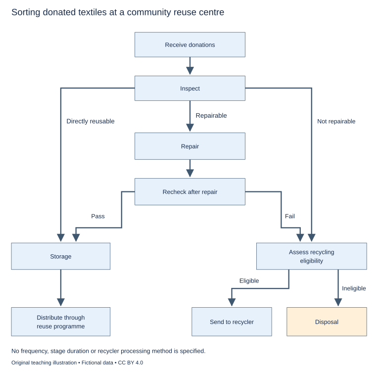
教学虚构简化工作流：接收→检查。可直接再用→储存；可修→维修→复核，通过→储存，不通过→回收资格评估；不可修→回收资格评估。储存→再用项目分发。符合回收要求→送回收商；不符合→处置。未给频次、时长、清洗步骤、销售或回收商处理工艺。
任务预算（含首次审题，不额外加时）
初稿20分钟（审题规划3、写作15、检查2）；诊断15；反馈阅读与证据核查10；完整重写25；对照归档5。合计75分钟。
初稿后自评清单
- [ ] 达到最低字数；全文连贯成段，没有用项目符号代替作文。
- [ ] 概述给主要特征；数据、阶段或方位都与题图逐项相符，不推断未提供的原因。
- [ ] 每段可写出一个功能标签；例子或数据与该段要点相连。
- [ ] 核查两处词汇搭配和两处句法；如有疑点先试改再核实，无问题则记录通过证据。
- [ ] 如有影响理解的问题，记录原句；否则记通过或待核查，不填写自猜分数。
反馈与重写
打开 独立参考页（本节下方展开参考），按逐段检查和通用协议核验。重写任务：完整重写至少150词；如出现图外步骤、频次或时长则删去，清楚者保留。归档真实用时和覆盖，原创检查不能填正式T22完成。
本周重点操作（已含原预算）
在原归档时段取3分钟填EVIDENCE的W22对应行，只记录本题原创材料的真实初稿/首答表现。核对三个终点、修复复核与回收资格；图未提供频次或时长，不能补写。 正式T22另记合法卷源、是否见过、方式、真实条件、总分与听读写说单项，以及目标总分和单项要求；目前未提供的一律待填。自评、AI与本题参考示例不能填正式分数。正式任务如替换本题时段，本题改备用，不叠加后仍报原预算。
记录表见阶段证据表，只在上述原时段填写相关行。
W22 T1A 示例、反馈与重练（首答后展开）
WS-W22-T1A 独立参考页
只在初稿完成后阅读；不是唯一答案，也没有官方分数。以下是对原创示例的教学讲评，不是对学生尚未提交作文的已完成批改。
思路拆解
三终点与修复后复核；不把失败直接处置，先查回收资格；题面无频次/时间不能补daily。
原创示例
The diagram illustrates how a community reuse centre sorts donated textiles. It begins with accepting donations and checking them, and ends with distribution for reuse, transfer for recycling or disposal.
Overall, the process separates items according to their condition and the work needed to make them usable. Some donations can be reused directly after sorting, while others are repaired first. Items unsuitable for reuse are checked for recycling eligibility rather than being automatically discarded.
Initially, donations are received and examined. Items that are already suitable for reuse move directly to a storage area. Those with repairable faults are sent for repair and then checked again. If the repair succeeds, these items join the usable donations in storage. The stored items are subsequently distributed through the centre’s reuse programme.
Donations that are unsuitable for repair, together with items that fail the check after repair, follow a separate route. Staff assess whether they meet the recycling requirements. Eligible textiles are sent to a recycler, whereas ineligible items are disposed of. The diagram does not show how the recycler processes the materials, nor does it give the time required for any stage.
示例正文词数：189（本项目正则计数；书信不含称呼、结束语与署名；连字符词作一词）。
逐段反馈与迁移
以下只分析上方原创示例。题干要点及图表事实必须遵守；书信、议论文的自拟身份、日期、经历和例子不是新增强制要求。按自己的合理设定核验，不为对齐范例编造经历。
- P1 reuse/recycling/disposal三种结果，不增加销售或出口目的地。
- P2 repair条件与recycling资格区分，概述有逻辑。
- P3 直接可用入储存，修后通过才合流；无清洗步骤不能自加。
- P4 不可修及修失败进入回收资格检查；eligibility不是全部可回收，不给工序时长。
常见失误
给范文自加daily/weekly；把修复失败直接丢弃；把送回收商当再生过程已知。
可执行反馈步骤
1. 先把自己的段落标为引入、概述/论点、支持、收束；分段可不同于示例，按功能核查，不照抄段数。
2. 对照上方逐段检查，逐项标“已有证据/缺失/不适用”。每条意见必须附自己的原句或缺失位置。
3. 按 反馈协议 的四维表记录；有争议的 AI 意见回题干、数据或语法依据核验。
4. 只选至多两项有证据的优先点执行整篇重写；如未发现问题，可改变组织或表达练迁移，但不把它标成纠错；保留原稿，禁止把示例替换为自己的作业。
重写任务
完整重写至少150词；如出现图外步骤、频次或时长则删去，清楚者保留。归档真实用时和覆盖，原创检查不能填正式T22完成。
完成后重新勾选 学生页（见本节上方学生题） 清单；将一处改前/改后及理由交给独立评阅者核查。真人评阅状态目前为“待安排”，不是已完成。
WS-W22-T1G 学生页：联系慈善中心捐赠安排
周次 W22｜题型 T1G｜能力点：书信目的、要点与语气
Task 1 的 A/G 分支二选一，另一分支不计入本周作业。
使用与记录
原创教学练习，非真题、非标准化模拟，难度未校准。先完成本页再打开参考页。人物、机构、经历与数据均为教学虚构。范例的身份、地点、动作和细节不是强制要求。口语优先用真实经历或真实观察，并说明来源；没有相关经历时，可将假设回答明确标为技能练习，不伪装成亲历。不要背诵示例。自评和 AI 反馈不能代替独立真人评分，未获得真人评阅时标记“分数未确认”。
保存：任务ID、实际日期、用时、初稿或原始录音、证据化反馈、重写/重答、三条修改理由。没有学生提交物，不得填写“已批改”或“已完成训练”。
完整题干
You would like to donate some household items to a community organisation. Write to the donations coordinator. In your letter:
- describe the items you would like to donate
- explain why you are offering them
- ask about the requirements and arrangements for donating them.
Begin your letter: Dear Sir or Madam,
Write at least 150 words. You do not need to write any addresses. Spend about 20 minutes on this task.
任务预算（含首次审题，不额外加时）
初稿20分钟（审题规划3、写作15、检查2）；诊断15；反馈阅读与证据核查10；完整重写25；对照归档5。合计75分钟。
初稿后自评清单
- [ ] 达到最低字数；全文连贯成段，没有用项目符号代替作文。
- [ ] 三个要点均展开；称呼、目的、语气和结束语适合收信人。
- [ ] 每段可写出一个功能标签；例子或数据与该段要点相连。
- [ ] 核查两处词汇搭配和两处句法；如有疑点先试改再核实，无问题则记录通过证据。
- [ ] 如有影响理解的问题，记录原句；否则记通过或待核查，不填写自猜分数。
反馈与重写
打开 独立参考页（本节下方展开参考），按逐段检查和通用协议核验。重写任务：整篇重写至少150词；按题干核资格与安排问句，问题存在才改；保留真实初稿/重写区分，不把本课当正式T22评分。
本周重点操作（已含原预算）
在原归档时段取3分钟填EVIDENCE的W22对应行，只记录本题原创材料的真实初稿/首答表现。核对物品、捐赠原因与安排询问，合理自拟信息不等于真实用户经历。 正式T22另记合法卷源、是否见过、方式、真实条件、总分与听读写说单项，以及目标总分和单项要求；目前未提供的一律待填。自评、AI与本题参考示例不能填正式分数。正式任务如替换本题时段，本题改备用，不叠加后仍报原预算。
记录表见阶段证据表，只在上述原时段填写相关行。
W22 T1G 示例、反馈与重练（首答后展开）
WS-W22-T1G 独立参考页
只在初稿完成后阅读；不是唯一答案，也没有官方分数。以下是对原创示例的教学讲评，不是对学生尚未提交作文的已完成批改。
思路拆解
正式询问不是强制机构接收；物品情况、原因、资格/收送两类安排具体，未承诺安全认证。
原创示例
Dear Sir or Madam,
I am writing to ask whether your organisation could accept some household items. I have a small wooden table, four matching chairs and two desk lamps that I no longer need. The furniture is in good condition apart from a few marks on the tabletop, and both lamps were working when I last used them.
I am moving to a furnished flat next month, so there will be no space for these items in my new home. I would prefer them to be used by someone else rather than simply left in storage. A neighbour mentioned your organisation’s work, which is why I am contacting you before making other arrangements.
Could you please explain which of these items you are able to accept and whether you need photographs or further information about their condition? I would also like to know whether you offer collection or whether donations must be delivered to your centre. If delivery is required, please tell me which days and times are suitable. I can make arrangements during the next two weekends, but I would like to confirm the requirements before moving anything.
Yours faithfully, Alex Chen
示例正文词数：186（本项目正则计数；书信不含称呼、结束语与署名；连字符词作一词）。
逐段反馈与迁移
以下只分析上方原创示例。题干要点及图表事实必须遵守；书信、议论文的自拟身份、日期、经历和例子不是新增强制要求。按自己的合理设定核验，不为对齐范例编造经历。
- P1 物品数量和状态限定为最后使用时，不声称已专业检验。
- P2 搬家空间理由直接；不是自夸慈善历史。
- P3 接受范围与需证据、收送时间都有请求，先确认再搬。
常见失误
假定机构必接收或免费上门；漏物品状态；将最后使用时工作正常当安全保证。
可执行反馈步骤
1. 先把自己的段落标为引入、概述/论点、支持、收束；分段可不同于示例，按功能核查，不照抄段数。
2. 对照上方逐段检查，逐项标“已有证据/缺失/不适用”。每条意见必须附自己的原句或缺失位置。
3. 按 反馈协议 的四维表记录；有争议的 AI 意见回题干、数据或语法依据核验。
4. 只选至多两项有证据的优先点执行整篇重写；如未发现问题，可改变组织或表达练迁移，但不把它标成纠错；保留原稿，禁止把示例替换为自己的作业。
重写任务
整篇重写至少150词；按题干核资格与安排问句，问题存在才改；保留真实初稿/重写区分，不把本课当正式T22评分。
完成后重新勾选 学生页（见本节上方学生题） 清单；将一处改前/改后及理由交给独立评阅者核查。真人评阅状态目前为“待安排”，不是已完成。
WS-W22-T2 学生页：父母还是学校教生活技能
周次 W22｜题型 T2｜能力点：观点展开与任务回应
A/G 共用本题。
使用与记录
原创教学练习，非真题、非标准化模拟，难度未校准。先完成本页再打开参考页。人物、机构、经历与数据均为教学虚构。范例的身份、地点、动作和细节不是强制要求。口语优先用真实经历或真实观察，并说明来源；没有相关经历时，可将假设回答明确标为技能练习，不伪装成亲历。不要背诵示例。自评和 AI 反馈不能代替独立真人评分，未获得真人评阅时标记“分数未确认”。
保存：任务ID、实际日期、用时、初稿或原始录音、证据化反馈、重写/重答、三条修改理由。没有学生提交物，不得填写“已批改”或“已完成训练”。
完整题干
Some people think parents should teach children practical everyday skills, while others believe schools should take responsibility for this. Discuss both views and give your own opinion. Give reasons and include relevant examples.
Write at least 250 words. Spend about 40 minutes on this task.
任务预算（含首次审题，不额外加时）
初稿40分钟（审题规划5、写作30、检查5）；诊断15；反馈阅读与证据核查10；完整重写35；对照归档5。合计105分钟。
初稿后自评清单
- [ ] 达到最低字数；全文连贯成段，没有用项目符号代替作文。
- [ ] 直接回答题目的所有问句，有始终一致的立场。
- [ ] 每段可写出一个功能标签；例子或数据与该段要点相连。
- [ ] 核查两处词汇搭配和两处句法；如有疑点先试改再核实，无问题则记录通过证据。
- [ ] 如有影响理解的问题，记录原句；否则记通过或待核查，不填写自猜分数。
反馈与重写
打开 独立参考页（本节下方展开参考），按逐段检查和通用协议核验。重写任务：完整重写至少250词；如有单边或不回应的段落则调整，无问题记录通过证据；本题只记原创表现，正式目标与单项结果另列。
本周重点操作（已含原预算）
在原归档时段取3分钟填EVIDENCE的W22对应行，只记录本题原创材料的真实初稿/首答表现。核对父母与学校双方观点及自己的意见，记录原稿证据，不能凭示例给分。 正式T22另记合法卷源、是否见过、方式、真实条件、总分与听读写说单项，以及目标总分和单项要求；目前未提供的一律待填。自评、AI与本题参考示例不能填正式分数。正式任务如替换本题时段，本题改备用，不叠加后仍报原预算。
记录表见阶段证据表，只在上述原时段填写相关行。
W22 T2 示例、反馈与重练（首答后展开）
WS-W22-T2 独立参考页
只在初稿完成后阅读；不是唯一答案，也没有官方分数。以下是对原创示例的教学讲评，不是对学生尚未提交作文的已完成批改。
思路拆解
双方讨论并给共享责任；承认家庭差异与学校时数，实际学习目标而非责任互推。
原创示例
Practical skills such as organising belongings, preparing simple food and managing small tasks are useful in everyday life. Parents and schools can both help children acquire them. I believe the responsibility should be shared, with families providing regular opportunities to practise and schools ensuring that basic learning is not left entirely to differences between homes.
Parents are well placed to connect a skill with a real purpose. A child can help prepare a shopping list, for example, and then see how that list guides an actual trip. Practice can happen repeatedly in familiar surroundings, and an adult can adjust the task to the child’s current ability. However, this approach depends on time, confidence and suitable opportunities at home. It would be unrealistic to assume that every family can provide the same range of experiences.
Schools can offer a more consistent starting point. A lesson on organising a small group project could teach planning and cooperation to children who have had little chance to practise those skills elsewhere. Teachers can also explain a task in stages and observe how different pupils respond. Nevertheless, school time is limited, and a lesson cannot reproduce every situation children will meet outside the classroom. Adding practical activities without considering the existing timetable could reduce the time available for other important learning.
A shared approach would address these limitations better than assigning the whole responsibility to either side. Schools could introduce a small set of useful routines, while families could be given simple suggestions for practising them when circumstances allow. The aim should not be to judge parents whose resources differ, but to give children more than one route to learning. Progress should be assessed through what children can do, rather than through whether every household completes identical activities.
In conclusion, families offer meaningful everyday practice, while schools can provide wider and more consistent access. Cooperation between them is more likely to meet different children’s needs than a rule that makes only one side responsible.
示例正文词数：329（本项目正则计数；书信不含称呼、结束语与署名；连字符词作一词）。
逐段反馈与迁移
以下只分析上方原创示例。题干要点及图表事实必须遵守；书信、议论文的自拟身份、日期、经历和例子不是新增强制要求。按自己的合理设定核验，不为对齐范例编造经历。
- P1 具体技能例与立场清楚，不声称所有家长或教师有同样能力。
- P2 购物单联系真实任务并讲重复机会，家庭条件限制保留。
- P3 学校提供共同起点，同时时间成本具体。
- P4 介绍/家庭可选练习合作，不能将未做家庭作业作为道德指责。
- P5 回扣两方优势，没有偷换成是否上大学。
常见失误
只赞父母关爱而无技能机制；忽略一方；宣称学校能完全替代家庭实践。
可执行反馈步骤
1. 先把自己的段落标为引入、概述/论点、支持、收束；分段可不同于示例，按功能核查，不照抄段数。
2. 对照上方逐段检查，逐项标“已有证据/缺失/不适用”。每条意见必须附自己的原句或缺失位置。
3. 按 反馈协议 的四维表记录；有争议的 AI 意见回题干、数据或语法依据核验。
4. 只选至多两项有证据的优先点执行整篇重写；如未发现问题，可改变组织或表达练迁移，但不把它标成纠错；保留原稿，禁止把示例替换为自己的作业。
重写任务
完整重写至少250词；如有单边或不回应的段落则调整，无问题记录通过证据；本题只记原创表现，正式目标与单项结果另列。
完成后重新勾选 学生页（见本节上方学生题） 清单；将一处改前/改后及理由交给独立评阅者核查。真人评阅状态目前为“待安排”，不是已完成。
WS-W22-S1 学生页
周次W22｜Part 1专项｜能力点：原创阶段检查与成绩记录分开；解释判断依据和局限｜30分钟
使用与记录
原创教学练习，非真题、非标准化模拟，难度未校准。先完成本页再打开参考页。人物、机构、经历与数据均为教学虚构。范例的身份、地点、动作和细节不是强制要求。口语优先用真实经历或真实观察，并说明来源；没有相关经历时，可将假设回答明确标为技能练习，不伪装成亲历。不要背诵示例。自评和 AI 反馈不能代替独立真人评分，未获得真人评阅时标记“分数未确认”。
保存：任务ID、实际日期、用时、初稿或原始录音、证据化反馈、重写/重答、三条修改理由。没有学生提交物，不得填写“已批改”或“已完成训练”。
操作与预算
设备与审题3分钟；首答录音6；回听及局部转写7；示例和诊断5；不看稿重答6；归档3。共30分钟。
Part 1专项题
1. Do you enjoy learning practical skills?
2. How do you choose something new to learn?
3. Do you prefer demonstrations or written explanations?
4. How do you notice that you are improving?
追问：
- Does quick progress always mean good learning?
- What might make you change your learning method?
首答6分钟内依次答4个主问，每题约40～60秒；两条追问只选1条答约30～45秒，其余时间用于转题。备用追问留给重答，不要求全部说完。
录音回听清单
- [ ] 保留首答原音，记录实际时长、是否中断、是否看稿；只报真实完成状态；短于目标时长如实记，不用沉默或无关内容凑时。
- [ ] 流利与连贯：标出两处时间戳，区分构思停顿与重复搜词，检查是否偏离问句。
- [ ] 词汇：如有模糊词或无效重复，引用一处并先解释原意再试改；无则记录清楚的表达，不为难词改变意思。
- [ ] 语法：核对经历与习惯的时态；局部转写核查；如存在妨碍理解的问题才更正，无则记通过。
- [ ] 发音：不看转写听30秒，如有听不清的词尾、重音或断句则标时间戳，无则记录清楚证据；没有音频不能判断发音。
- [ ] 展开：主要回答有具体情境或理由；追问后第一句回应追问的新角度。
重答要求
如有笼统判断，选择至多两个答案补具体情境；如没有，选择两题换角度重答并保留切题证据；重答一条追问，检查是否真正回应其新角度。
首答回听后才打开独立参考页（本节下方展开参考）。按反馈协议填至少三个时间戳，不以文字转写替代音频评阅。
本周重点操作（已含原预算）
在原归档时段取3分钟填EVIDENCE的W22对应行，只记录本题原创材料的真实初稿/首答表现。依据自己的原始音频标实际时长、题目覆盖和一个清楚或待核查的时间戳；范例身份、事件和细节均不必照搬。 正式T22另记合法卷源、是否见过、方式、真实条件、总分与听读写说单项，以及目标总分和单项要求；目前未提供的一律待填。自评、AI与本题参考示例不能填正式分数。正式任务如替换本题时段，本题改备用，不叠加后仍报原预算。
记录表见阶段证据表，只在上述原时段填写相关行。
W22 S1 示例、反馈与重练（首答后展开）
WS-W22-S1 独立参考页
原创教学示例，非真题或评分结果。未收到学生音频；以下是示例分析与待执行反馈，不能登记为已完成学生批改。
展开示例
直接回应→原因→具体情境的展开示例
I usually notice improvement when I can do a task without looking at every instruction. For example, with a new recipe, I may remember the order after trying it a few times. That does not mean the result is perfect, but it shows that one part of the process has become easier.
纯口答示例词数：52；只计MODEL标记内实际英文口答，不含标题、标签、说明。词数不能证明录音时长或流利度。
展开与反馈
本周能力：原创阶段检查与成绩记录分开；解释判断依据和局限。
1. 示例先表态，再说明偏好理由，最后提供条件或场景。检查自己是否用一个词回答后就结束。
2. 找到一个具体细节：物品、动作、对话或地点。用真实经历或注明来源的真实观察替换；假设回答须标为技能练习。保持切题，不强制复制范例细节，不照搬身份与经历。
3. 追问要重新回应，不能继续背长答。首句先回答追问，再用一条理由支持。
4. 如存在听不清或语法影响理解处，标原音时间戳；否则标一处清楚的原音证据；先尝试最小修正。不要把自然停顿一概当成错误，或用加快语速掩盖逻辑断裂。
常见失误
空泛形容词替代具体过程；给了经历却没解释为什么重要；Part 3只有个人故事没有一般解释；AI只看转写就判断发音。逐项回原音核对，不能凭范例推断自己已达到某个分数。
可执行重答与反馈
如有笼统判断，选择至多两个答案补具体情境；如没有，选择两题换角度重答并保留切题证据；重答一条追问，检查是否真正回应其新角度。
填写反馈协议四维表，附三个时间戳和原话证据。如存在，选至多一个内容问题与一个语言问题先修；否则记录清楚的证据并做迁移重答；重答后并排听两段，记录改善与仍未解决之处。自评与AI不能替代独立真人评分；独立评阅目前待安排，分数未确认。
WS-W22-S2 学生页
周次W22｜Part 2专项｜能力点：原创阶段检查与成绩记录分开；解释判断依据和局限｜30分钟
使用与记录
原创教学练习，非真题、非标准化模拟，难度未校准。先完成本页再打开参考页。人物、机构、经历与数据均为教学虚构。范例的身份、地点、动作和细节不是强制要求。口语优先用真实经历或真实观察，并说明来源；没有相关经历时，可将假设回答明确标为技能练习，不伪装成亲历。不要背诵示例。自评和 AI 反馈不能代替独立真人评分，未获得真人评阅时标记“分数未确认”。
保存：任务ID、实际日期、用时、初稿或原始录音、证据化反馈、重写/重答、三条修改理由。没有学生提交物，不得填写“已批改”或“已完成训练”。
操作与预算
准备、首答录音及追问5分钟；回听及局部转写8；示例与诊断5；关键词重组3；重答及追问5；归档4。共30分钟。
Part 2专项任务卡
Describe something you learned by observing another person.
Say:
- what you learned
- whom you observed
- what you noticed
- and explain how the observation helped you.
准备1分钟，说1～2分钟。只记5个关键词，不预写句子。
收尾追问：
- Would a written explanation have helped as well?
- Would you like to develop that skill further?
每轮5分钟包含准备1分钟、连续说1～2分钟、两条收尾追问选1条答20～30秒及转题缓冲；另一条可用于重答。不把备用题全部加进本轮。
录音回听清单
- [ ] 保留首答原音，记录实际时长、是否中断、是否看稿；只报真实完成状态；短于目标时长如实记，不用沉默或无关内容凑时。
- [ ] 流利与连贯：标出两处时间戳，区分构思停顿与重复搜词，检查是否偏离问句。
- [ ] 词汇：如有模糊词或无效重复，引用一处并先解释原意再试改；无则记录清楚的表达，不为难词改变意思。
- [ ] 语法：核对经历与习惯的时态；局部转写核查；如存在妨碍理解的问题才更正，无则记通过。
- [ ] 发音：不看转写听30秒，如有听不清的词尾、重音或断句则标时间戳，无则记录清楚证据；没有音频不能判断发音。
- [ ] 展开：主要回答有具体情境或理由；追问后第一句回应追问的新角度。
重答要求
用五个关键词重答完整任务卡1～2分钟，再从两条追问中选1条答20～30秒；如缺具体细节则补、如有无关背景则删；若已清楚，换表达但保持事实。比较首答与重答，不背示例。
首答回听后才打开独立参考页（本节下方展开参考）。按反馈协议填至少三个时间戳，不以文字转写替代音频评阅。
本周重点操作（已含原预算）
在原归档时段取3分钟填EVIDENCE的W22对应行，只记录本题原创材料的真实初稿/首答表现。依据自己的原始音频标实际时长、题目覆盖和一个清楚或待核查的时间戳；范例身份、事件和细节均不必照搬。 正式T22另记合法卷源、是否见过、方式、真实条件、总分与听读写说单项，以及目标总分和单项要求；目前未提供的一律待填。自评、AI与本题参考示例不能填正式分数。正式任务如替换本题时段，本题改备用，不叠加后仍报原预算。
记录表见阶段证据表，只在上述原时段填写相关行。
W22 S2 示例、反馈与重练（首答后展开）
WS-W22-S2 独立参考页
原创教学示例，非真题或评分结果。未收到学生音频；以下是示例分析与待执行反馈，不能登记为已完成学生批改。
展开示例
原创长答示例（时长须以个人实际录音测量）
I learned a simple way of wrapping a fragile object by watching a friend pack a small ceramic bowl. We were preparing some household items for a move, and I was unsure how much paper to use.
My friend placed the bowl in the middle of a sheet and folded the corners over it one at a time. What caught my attention was that she supported the inside of the bowl with loosely folded paper before wrapping the outside. She also left a soft layer underneath it in the box instead of putting it directly on the bottom.
I then wrapped a similar bowl while she watched. I initially pulled the paper too tightly, and she suggested leaving a little space so it would act as a cushion. Seeing her movements made that advice much clearer than the words alone would have done.
The observation helped me understand the purpose of each step. I was not simply copying a shape: I was trying to stop the bowl from moving and protect it from pressure. I would still ask for specialist advice before packing anything unusually valuable, but the method was useful for our ordinary dishes.
纯口答示例词数：195；只计MODEL标记内实际英文口答，不含标题、标签、说明。词数不能证明录音时长或流利度。
展开与反馈
本周能力：原创阶段检查与成绩记录分开；解释判断依据和局限。
1. 长答示例按背景、行动/观察、变化与意义组织。每段都推进内容；检查自己是否只有背景而没有具体事件。
2. 找到一个具体细节：物品、动作、对话或地点。用真实经历或注明来源的真实观察替换；假设回答须标为技能练习。保持切题，不强制复制范例细节，不照搬身份与经历。
3. 追问要重新回应，不能继续背长答。首句先回答追问，再用一条理由支持。
4. 如存在听不清或语法影响理解处，标原音时间戳；否则标一处清楚的原音证据；先尝试最小修正。不要把自然停顿一概当成错误，或用加快语速掩盖逻辑断裂。
常见失误
空泛形容词替代具体过程；给了经历却没解释为什么重要；Part 3只有个人故事没有一般解释；AI只看转写就判断发音。逐项回原音核对，不能凭范例推断自己已达到某个分数。
可执行重答与反馈
用五个关键词重答完整任务卡1～2分钟，再从两条追问中选1条答20～30秒；如缺具体细节则补、如有无关背景则删；若已清楚，换表达但保持事实。比较首答与重答，不背示例。
填写反馈协议四维表，附三个时间戳和原话证据。如存在，选至多一个内容问题与一个语言问题先修；否则记录清楚的证据并做迁移重答；重答后并排听两段，记录改善与仍未解决之处。自评与AI不能替代独立真人评分；独立评阅目前待安排，分数未确认。
WS-W22-S3 学生页
周次W22｜三部分全流程｜能力点：原创阶段检查与成绩记录分开；解释判断依据和局限｜60分钟
使用与记录
原创教学练习，非真题、非标准化模拟，难度未校准。先完成本页再打开参考页。人物、机构、经历与数据均为教学虚构。范例的身份、地点、动作和细节不是强制要求。口语优先用真实经历或真实观察，并说明来源；没有相关经历时，可将假设回答明确标为技能练习，不伪装成亲历。不要背诵示例。自评和 AI 反馈不能代替独立真人评分，未获得真人评阅时标记“分数未确认”。
保存：任务ID、实际日期、用时、初稿或原始录音、证据化反馈、重写/重答、三条修改理由。没有学生提交物，不得填写“已批改”或“已完成训练”。
操作与预算
D5：设备与流程准备2分钟，连续首答11～14分钟，余14～17分钟完整回听标记，共30分钟。D6：局部转写诊断10，阅读示例与调整5，重答与新追问10，对照归档5，共30分钟。合计60分钟。
连续三部分全流程（首答不可看参考）
找同伴读题，或独练逐题揭示。完整首答11～14分钟，中途不暂停纠错。模拟同伴不是认证考官；自行读题的练习记录不能冒充真实面试。
Part 1：4～5分钟
1. Do you like taking photographs?
2. What do you usually photograph?
3. Do you keep old photographs?
4. How do you organise pictures?
5. Do you prefer printed pictures or digital ones?
6. Do you ever show pictures to friends?
可按回答追加 Why? / Can you give an example? 到时转下部分，不强行说完全部备用问题。
Part 2：3～4分钟（含准备）
Describe a photograph that helped you remember a place.
Say:
- what place it showed
- when you saw the photograph
- what details you noticed
- and explain why it helped you remember.
准备1分钟，连续说1～2分钟。收尾追问：
- Would you like to return to that place?
- Would someone else understand its importance?
Part 3：4～5分钟
1. Why do people keep records of their experiences?
2. Are photographs always reliable records?
3. How can museums explain the limits of historical evidence?
4. Does keeping more information necessarily improve understanding?
根据回答追加追问：
- What other evidence could support a photograph?
- Could selecting only attractive pictures change a story?
Part 2收尾追问两条选1条，答20～30秒，含在3～4分钟内。Part 3从4个主问中选3个，每个约60～75秒，再从2条追问中选1条答30～45秒；连同读题控制在4～5分钟，到时结束。题库数量不是必答数量。
录音回听清单
- [ ] 保留首答原音，记录实际时长、是否中断、是否看稿；只报真实完成状态；短于目标时长如实记，不用沉默或无关内容凑时。
- [ ] 流利与连贯：标出两处时间戳，区分构思停顿与重复搜词，检查是否偏离问句。
- [ ] 词汇：如有模糊词或无效重复，引用一处并先解释原意再试改；无则记录清楚的表达，不为难词改变意思。
- [ ] 语法：核对经历与习惯的时态；局部转写核查；如存在妨碍理解的问题才更正，无则记通过。
- [ ] 发音：不看转写听30秒，如有听不清的词尾、重音或断句则标时间戳，无则记录清楚证据；没有音频不能判断发音。
- [ ] 展开：主要回答有具体情境或理由；追问后第一句回应追问的新角度。
重答要求
在10分钟重答时段：选择一个有核查需要的Part 1主问答约1分钟；Part 2准备1分钟、答1～2分钟，再选一条收尾追问答20～30秒；Part 3只选一个主问答约1分钟，再选一条未用追问答30～45秒。余时用于换题和回听；无薄弱项则选已通过题换角度练迁移，保持真实细节，不复述范例。局部重答不另计全流程。
首答回听后才打开独立参考页（本节下方展开参考）。按反馈协议填至少三个时间戳，不以文字转写替代音频评阅。
本周重点操作（已含原预算）
在原归档时段取3分钟填EVIDENCE的W22对应行，只记录本题原创材料的真实初稿/首答表现。依据自己的原始音频标实际时长、题目覆盖和一个清楚或待核查的时间戳；范例身份、事件和细节均不必照搬。 正式T22另记合法卷源、是否见过、方式、真实条件、总分与听读写说单项，以及目标总分和单项要求；目前未提供的一律待填。自评、AI与本题参考示例不能填正式分数。正式任务如替换本题时段，本题改备用，不叠加后仍报原预算。
记录表见阶段证据表，只在上述原时段填写相关行。
W22 S3 示例、反馈与重练（首答后展开）
WS-W22-S3 独立参考页
原创教学示例，非真题或评分结果。未收到学生音频；以下是示例分析与待执行反馈，不能登记为已完成学生批改。
展开示例
Part 2原创展开示例（个人语速不同，不能以词数推录音时长）
A photograph that helped me remember a place showed a small courtyard beside a guesthouse. I had stayed there during a short trip with my cousin, but I had almost forgotten the arrangement of the buildings until I found the picture while sorting some files.
The photograph was not especially impressive. It showed a wooden table, two blue chairs and a narrow doorway at the back. Yet the chairs reminded me that we had eaten breakfast outside because the kitchen was being cleaned. I also noticed a pot of herbs beside the doorway, which brought back the smell of the meal our host prepared that morning.
The picture helped me place several memories in the same setting. Before seeing it, I remembered a conversation with my cousin but could not clearly picture where we had been sitting. The angle of the table made that connection easier.
Of course, a photograph cannot preserve everything about a visit. It did not tell me the exact date or the words we used. Still, those small visible details gave me a useful starting point for recalling the atmosphere of the place.
Part 3观点→理由→条件展开示例
A photograph can provide useful evidence of what was visible at one moment, but it cannot explain everything outside the frame. A crowded street, for instance, might reflect an unusual event rather than normal conditions. To understand it, we may need a date, a description of the occasion and other records. I think the important distinction is between what we can actually see and the explanation we add to it.
纯口答示例词数：257；只计MODEL标记内实际英文口答，不含标题、标签、说明。词数不能证明录音时长或流利度。
展开与反馈
本周能力：原创阶段检查与成绩记录分开；解释判断依据和局限。
1. 长答示例按背景、行动/观察、变化与意义组织。每段都推进内容；检查自己是否只有背景而没有具体事件。
2. 找到一个具体细节：物品、动作、对话或地点。用真实经历或注明来源的真实观察替换；假设回答须标为技能练习。保持切题，不强制复制范例细节，不照搬身份与经历。
3. Part 3示例不把个人选择强加给所有人；先讲机制，再说明条件或例外。检查自己的追问答案是否直接回应新问题。
4. 如存在听不清或语法影响理解处，标原音时间戳；否则标一处清楚的原音证据；先尝试最小修正。不要把自然停顿一概当成错误，或用加快语速掩盖逻辑断裂。
常见失误
空泛形容词替代具体过程；给了经历却没解释为什么重要；Part 3只有个人故事没有一般解释；AI只看转写就判断发音。逐项回原音核对，不能凭范例推断自己已达到某个分数。
可执行重答与反馈
在10分钟重答时段：选择一个有核查需要的Part 1主问答约1分钟；Part 2准备1分钟、答1～2分钟，再选一条收尾追问答20～30秒；Part 3只选一个主问答约1分钟，再选一条未用追问答30～45秒。余时用于换题和回听；无薄弱项则选已通过题换角度练迁移，保持真实细节，不复述范例。局部重答不另计全流程。
填写反馈协议四维表，附三个时间戳和原话证据。如存在，选至多一个内容问题与一个语言问题先修；否则记录清楚的证据并做迁移重答；重答后并排听两段，记录改善与仍未解决之处。自评与AI不能替代独立真人评分；独立评阅目前待安排，分数未确认。
许可
原创文字：RayXBuilds and contributors，CC BY 4.0。此页由已验收分课汇编，调整了标题和导航；题干、正文和答案内容保留。公开第三方音频未包含。
回到顶部
U33 第23周：长篇阅读、写作与口语
本页为已独立核验的原创文字课程。先完成学生题目，再展开对应参考。非真题、非标准化模考，不换算雅思分数。听力尚未补齐，本页不代表全科课程已完成。
每周选A或G类Task 1一题，加Task 2及三次口语。参考范文不是学生已完成作业，仍须提交初稿、录音和重写，独立真人评分另行安排。
阅读每周180分钟（60分钟首次限时、120分钟证据精读与延迟复测），写作180分钟、口语120分钟。词汇60分钟、听力180分钟另列；新增完整听力未验收，不能勾整周完成。
W22/W24原创阶段检查按实际证据复盘；正式T22/T24陌生整卷、所选真实考试界面操作及真人评分另记，缺少目标或真实证据时不能据此判断报考/延长，本页原创技能卷不能代替正式模拟。后续周数与达标规则见 U04。
阅读：首答不查词
R-W23-01 · Two Wheels on a Curved Track
W23｜正文 899 词｜13 题｜篇章：科学模型：共同运动与不同路径（7段）
本课必做60分钟：首答20、证据复盘20、词汇长句10、48小时后复测10。每周三课180分钟，合卷首答替代单课首答，不重复计算。开放短文选做另加15分钟。
本项目原创虚构教学情境，人物、地点、历史事件和案例数据均非真实研究或史料。科学解释只讨论文内说明的模型与条件。非雅思真题或标准化模考；正确数不换算雅思等级。许可：CC BY 4.0 — RayXBuilds and contributors。
能力点：识别论证关系、区分作者与引述者、条件与因果、精确定位。初读不查词，完成后打开独立答案页。
Passage
A In the fictional engineering classroom of Pel, students build a small trolley with two equal wheels attached firmly to one axle. On a straight track, the arrangement appears unremarkable: the wheels turn together and travel side by side. A curved track produces a puzzle. The outer wheel must follow a longer path than the inner wheel, yet the rigid connection makes both wheels complete the same number of turns. The demonstration is designed around a simplified condition in which the wheels have equal effective diameters. It is not a guide to designing a real vehicle. Its purpose is to expose a conflict between two requirements that can coexist on a straight route but become incompatible when the paths diverge in length. The trolley helps the class see why a mechanism must be understood in relation to the journey it is expected to perform.
B The students first mark a starting point on each wheel and roll the trolley along the straight section. A rotation counter records complete turns, while a distance tape measures the route along each side. Under the demonstration's no-slip condition, equal turns of equal wheels correspond to equal travelled distances. The result follows from the specified arrangement, not from a universal rule that objects moving together must cover identical paths. The teacher asks the class to preserve that distinction before introducing the bend. A relationship that holds under one geometry may need reconsideration when the geometry changes, even if the trolley's components remain exactly as they were at the start. Describing the parts alone would not reveal which condition the straight-track comparison had quietly supplied.
C On the bend, the students trace the two paths on a large route sheet. The outer trace is longer. They do not try to explain the difference by claiming that one wheel has become physically larger. Instead, they recognise that a shared journey around the bend contains two distinct distances. If both equal wheels remain locked to the same turning rate, they cannot both satisfy the model's no-slip condition along those unequal paths. Some adjustment must occur. In the demonstration, a visible sideways movement and rubbing mark show that the simple rolling assumption has failed. This result identifies a limit of the rigid arrangement under the stated conditions; it does not establish that every curved journey in every real machine must produce the same visible behaviour.
D The class then uses a model in which the wheels can turn independently. The outer wheel completes more turns while both travel around the same bend. The trolley's overall movement remains coordinated even though the two local rotation counts differ. This is the relationship the exercise is intended to reveal. Coordination need not mean that every component repeats an identical motion. Sometimes a mechanism must permit a difference between its parts in order to preserve the joint action that matters. The teacher also notes that independent turning alone does not describe every feature needed by a real vehicle. The model isolates one conflict and one way of allowing the required difference, leaving other engineering questions outside the exercise rather than pretending they have disappeared.
E A comparison becomes confusing if the class changes both wheel size and the connection at the same time. Different sizes could alter how far each turn carries a wheel, adding another possible explanation for the result. The students therefore retain the equal wheels while changing the connection, then label the limits of that comparison. An axle record identifies whether each trial uses a rigid or independent arrangement. A slip note records the visible evidence that the no-slip assumption was or was not supported during the run. These records prevent a result from being attributed solely to the named mechanism without checking the conditions under which the mechanism was observed. The aim is to make causal reasoning inspectable, not to multiply labels until the demonstration sounds more technical.
F For an unfamiliar observer, the most difficult step is often accepting that the two wheels can belong to one trolley without travelling the same distance. The teacher uses two students walking around concentric arcs to illustrate the geometry. The comparison helps with path length, but it does not reproduce the trolley's rolling contact or mechanical connection. The class states that limit before transferring any further conclusion from people to wheels. An analogy works by preserving a selected relationship. It becomes misleading when a convenient resemblance is allowed to carry claims about properties the example does not share. Here the walking demonstration explains the paths, while the trolley models provide evidence about how different connections respond to those paths.
G The final explanation therefore combines geometry, assumptions and mechanism. It identifies the longer outer route, the equal wheel sizes, the turning constraint imposed by a rigid axle and the conditions under which slipping would become relevant. The class can now explain why a design that appeared satisfactory on a straight track required reconsideration on a bend. It has not discovered that rigid connections are always poor or that independent parts are always better. It has learned to ask which differences a coordinated system must allow and which it must prevent. That question can travel beyond this particular model, provided the new setting supplies its own evidence about paths, constraints and intended outcomes. A single moving object may contain several necessary local movements, and understanding their relationship is more useful than assuming that together must always mean identical.
Questions
Do the following statements agree with the writer's views? Write YES, NO or NOT GIVEN. YES = the writer agrees; NO = the writer expresses the opposite view; NOT GIVEN = the writer's view is not stated. Do not use outside knowledge.
1. Changing wheel size while changing the connection can complicate causal interpretation.
2. A rigid connection is always inferior regardless of the intended task.
3. The writer recommends using metal rather than wood for the classroom axle.
4. The model solves every engineering question about real vehicles.
Complete the sentences. Choose NO MORE THAN 3 WORDS FROM THE PASSAGE for each answer. Do not change word forms.
5. Complete wheel turns are recorded by a ______.
6. The travelled routes are measured using a ______.
7. The inner and outer traces are drawn on a large ______.
8. The connection used in each trial is identified in an ______.
9. Visible evidence concerning the no-slip assumption is entered in a ______.
Choose ONE answer, A, B, C or D.
10. The bend creates a conflict because
A. the trolley becomes two objects B. equal locked wheels are assigned unequal path lengths C. straight paths cannot be measured D. the wheels necessarily change size
11. The straight-track relationship depends on
A. a universal definition of coordination B. specified wheel sizes and a no-slip condition C. all objects sharing every distance D. the observer’s preference
12. The independently turning model illustrates that
A. coordination forbids difference B. outer paths become shorter C. different local motions can support coordinated travel D. all vehicle questions are solved
13. The walking analogy is useful primarily for
A. axle manufacture B. measuring tyre materials C. the difference between path lengths D. wheel contact mechanics
本周重点
依据真实错题补缺；目前无学习者记录，维持待诊断，不虚构弱项。
复盘
必做：给每道错题标记“定位/作者立场/范围/语法/词数”，抄最短证据；用一行箭头概括本文论证或过程。48小时后重做错题与两道正确题，检查是否仍能指出证据。
选做（15分钟，80–100词）：Describe one assumption you initially imported and how the passage tests it.
R-W23-01 答案、证据与精读（首答后展开）
R-W23-01 · 独立答案与证据
来源与许可同学生页。先完成再核对。可接受答案由 accepted_answers 明确列出；只忽略大小写和首尾空格，不自行删词。开放复盘不计入客观正确数。
1. YES｜段落 E｜证据：“adding another possible explanation”
混合变量。
2. NO｜段落 G｜证据：“has not discovered that rigid connections are always poor”
明确拒绝全称。
3. NOT GIVEN｜段落 E｜证据：“rigid or independent arrangement”
未提材料选择。
4. NO｜段落 D｜证据：“does not describe every feature needed by a real vehicle”
范围限制明确。
5. rotation counter / counter｜段落 B｜证据：“A rotation counter records complete turns”
counter可接受。
6. distance tape / tape｜段落 B｜证据：“a distance tape measures”
tape可接受。
7. route sheet / sheet｜段落 C｜证据：“a large route sheet”
large已在题干中。
8. axle record｜段落 E｜证据：“An axle record identifies”
record不能单独接an。
9. slip note / note｜段落 E｜证据：“A slip note records the visible evidence”
note可接受。
10. B｜段落 A｜证据：“outer wheel must follow a longer path”
几何与同步转数冲突。
11. B｜段落 B｜证据：“Under the demonstration's no-slip condition”
限定条件。
12. C｜段落 D｜证据：“even though the two local rotation counts differ”
协调不等于局部完全同动。
13. C｜段落 F｜证据：“helps with path length”
只迁移共享关系。
词汇与长句
- axle：连接或支承轮子的轴
- constraint：限制可发生动作的条件
- concentric：具有同一圆心的
- coordinated：共同完成整体动作的
> Sometimes a mechanism must permit a difference between its parts in order to preserve the joint action that matters.
in order to给目的；局部差异支持共同动作。
> The comparison helps with path length, but it does not reproduce the trolley's rolling contact or mechanical connection.
but明确类比覆盖范围与未覆盖性质。
开放任务参考
只据实际作答写；可反思共同移动=同距离，B/C以条件与路径修正；无答卷不预设错因。
标准：观点有文内依据，保留条件和范围，推断明确标注；不存在唯一措辞。
R-W23-02 · The Orchard without a Planting Plan
W23｜正文 956 词｜13 题｜篇章：虚构历史：标签、空间与多次改植（8段）
本课必做60分钟：首答20、证据复盘20、词汇长句10、48小时后复测10。每周三课180分钟，合卷首答替代单课首答，不重复计算。开放短文选做另加15分钟。
本项目原创虚构教学情境，人物、地点、历史事件和案例数据均非真实研究或史料。科学解释只讨论文内说明的模型与条件。非雅思真题或标准化模考；正确数不换算雅思等级。许可：CC BY 4.0 — RayXBuilds and contributors。
能力点：识别论证关系、区分作者与引述者、条件与因果、精确定位。初读不查词，完成后打开独立答案页。
Passage
A When researchers enter the fictional estate orchard of Sere, they find rows of old trees but no complete planting plan. A surviving notebook lists varieties, and several metal labels remain attached to branches. It is tempting to assign each name to the nearest tree and draw a confident map of the original orchard. The evidence is less cooperative. Labels have been moved, some trees have been replaced, and the notebook includes purchases that may never have been planted. The task is not simply to recover a lost picture from scattered pieces. It is to distinguish stages in a changing landscape, using records whose dates and purposes do not all coincide. The orchard's present order may preserve parts of earlier arrangements while combining them with decisions made much later.
B A gardener's invoice records the purchase of twelve young trees for the northern row. The notebook repeats the variety names but does not say whether every purchased tree survived the journey or was planted there. A later letter mentions moving two trees to a sheltered corner after damage during a storm. These sources support a history of planned and altered placement rather than a single fixed layout. The researcher resists treating the invoice as a photograph of the finished orchard. Purchase, planting, survival and later movement are separate events. Evidence for one may make another plausible, but it does not establish the whole sequence without additional support. A neat plan can be less accurate than a map that leaves some locations unresolved.
C The metal labels introduce another complication. One label hangs from a branch of a tree that an estate diary describes as receiving a new variety on part of its existing structure. In the fictional case, the diary explicitly distinguishes the older trunk from the added branch. The label names the latter. Assigning its name to every part of the tree would therefore erase a distinction preserved by the source. The researcher records which branch carries the label and compares that observation with the dated entry. This is a question about the identity claimed by a particular label, not a general instruction in orchard management. A name attached to a living object can refer to one component or intervention rather than to the complete history of everything supporting it.
D The spacing between trees also changes. An early sketch shows wide gaps used for access with a cart. Later notes describe small trees inserted between the older ones. A present-day row can consequently look irregular even if both stages followed deliberate plans. The researcher does not explain every uneven distance as carelessness. Nor does she assume that a regular pattern must belong to the earliest period. She tests proposed sequences against dated observations. The orchard is a layered arrangement, and a pattern visible now may be the combined result of several orderly decisions. Looking for one original geometry can hide the very changes that account for the spacing the researcher is trying to understand.
E A family account describes the orchard as producing fruit for market, while a visitor's letter praises a shaded place for afternoon walks. These descriptions need not compete as mutually exclusive functions. The sources address different activities and possibly different seasons. However, neither proves that both functions were equally important throughout the orchard's history. The researcher keeps the time and viewpoint of each account attached to the claim it supports. She avoids replacing a simple commercial story with an equally simple leisure story merely because the visitor's prose is more vivid. Multiple uses can coexist, but coexistence itself must be established at the relevant time rather than assumed from the survival of contrasting descriptions in one archive box.
F The reconstruction uses a purchase table listing varieties, quantities and invoice dates. A movement register records only relocations supported by dated notes. A branch diagram links labels to the particular parts of trees they identify. A spacing map distinguishes observed positions from proposed earlier positions. These records preserve both connections and differences among the sources. A blank entry is not silently filled from a neighbouring tree's name. When a position remains uncertain, the map marks it as uncertain rather than borrowing confidence from the precision of a label elsewhere. The researcher can explain which part of the reconstruction would change if a new diary or plan appeared, making the account open to correction instead of protecting it through an appearance of completeness.
G For visitors, a chronology panel presents the documented purchase, relocation and insertion episodes in sequence. It does not claim to show every event in the orchard's life. A short walk then directs attention to the different kinds of evidence still visible: surviving labels, altered spacing and positions associated with later notes. The display makes clear that the present trees are part of a continuing landscape, not untouched witnesses arranged exactly as their first owner left them. That distinction allows visitors to value the orchard's age without demanding a false picture of absolute continuity. Change is part of what has survived, even when it must be reconstructed through traces rather than read directly from one object.
H The missing plan thus becomes an opportunity to ask a more precise historical question. Instead of seeking one complete diagram and treating everything else as noise, the researcher asks which arrangement existed at which stage and how confidently it can be described. The resulting account contains gaps, but its claims can be inspected. It respects the difference between a purchased tree, a recorded planting, a moved object and a named branch. An orchard can retain a recognisable identity while its components and uses change. Explaining that continuity requires attention to transformations, not the assumption that an old place must have remained materially identical in order for its history to matter.
Questions
Which paragraph contains the following information? Write a letter, A–H. You may use any letter more than once.
1. a label naming an added branch rather than the whole tree’s history
2. purchased trees later being moved after storm damage
3. new trees inserted into spaces originally used by carts
4. commercial and recreational descriptions that may concern different times or seasons
Do the following statements agree with the writer's views? Write YES, NO or NOT GIVEN. YES = the writer agrees; NO = the writer expresses the opposite view; NOT GIVEN = the writer's view is not stated. Do not use outside knowledge.
5. An invoice alone establishes that every purchased tree was planted in its intended place.
6. Irregular present spacing can result from several deliberate arrangements.
7. The writer recommends closing the orchard to visitors throughout every winter.
8. An old place must remain materially identical for its history to matter.
Complete the summary. Choose NO MORE THAN 3 WORDS FROM THE PASSAGE for each answer. Do not change word forms.
Varieties, quantities and invoice dates enter a (9) ______. Documented relocations appear in a (10) ______. Labels and the tree parts they name are linked in a (11) ______. Current and proposed earlier positions are separated on a (12) ______. Dated episodes are presented to visitors on a (13) ______.
本周重点
依据真实错题补缺；目前无学习者记录，维持待诊断，不虚构弱项。
复盘
必做：给每道错题标记“定位/作者立场/范围/语法/词数”，抄最短证据；用一行箭头概括本文论证或过程。48小时后重做错题与两道正确题，检查是否仍能指出证据。
选做（15分钟，80–100词）：Identify the exact event supported by one source and a stronger event it does not establish.
R-W23-02 答案、证据与精读（首答后展开）
R-W23-02 · 独立答案与证据
来源与许可同学生页。先完成再核对。可接受答案由 accepted_answers 明确列出；只忽略大小写和首尾空格，不自行删词。开放复盘不计入客观正确数。
1. C｜段落 C｜证据：“The label names the latter”
C部分身份。
2. B｜段落 B｜证据：“moving two trees to a sheltered corner”
B具体原因和迁移。
3. D｜段落 D｜证据：“wide gaps used for access with a cart”
D两阶段间距。
4. E｜段落 E｜证据：“different activities and possibly different seasons”
E用途与时段。
5. NO｜段落 B｜证据：“does not say whether every purchased tree survived”
采购不能证完整顺序。
6. YES｜段落 D｜证据：“combined result of several orderly decisions”
多阶段叠加。
7. NOT GIVEN｜段落 G｜证据：“For visitors, a chronology panel”
全文未提出冬季开放政策；历史研究边界不说明访问日程。
8. NO｜段落 H｜证据：“not the assumption that an old place must have remained materially identical”
直接否定。
9. purchase table / table｜段落 F｜证据：“a purchase table listing varieties”
table可接受。
10. movement register / register｜段落 F｜证据：“A movement register records only relocations”
register可接受。
11. branch diagram / diagram｜段落 F｜证据：“A branch diagram links labels”
diagram可接受。
12. spacing map / map｜段落 F｜证据：“A spacing map distinguishes observed positions”
map可接受。
13. chronology panel / panel｜段落 G｜证据：“a chronology panel presents”
panel可接受。
词汇与长句
- relocation：移动到另一地点
- invoice：记录购买数量与日期的账单
- insertion：在原有空隙中加入新对象
- continuity：在变化中仍可追踪的延续关系
> A present-day row can consequently look irregular even if both stages followed deliberate plans.
even if揭示外观不规则与多阶段各自有序可以并存。
> A name attached to a living object can refer to one component or intervention rather than to the complete history of everything supporting it.
attached修饰name；rather than限定标签指涉范围。
开放任务参考
B采购不证全部成活/种植；C支标签不证整树身份；记录实际混淆后再选补缺。
标准：观点有文内依据，保留条件和范围，推断明确标注；不存在唯一措辞。
R-W23-03 · Can a Game Be Fair without Being Equal?
W23｜正文 856 词｜14 题｜篇章：议论：非对称角色、机会与程序（7段）
本课必做60分钟：首答20、证据复盘20、词汇长句10、48小时后复测10。每周三课180分钟，合卷首答替代单课首答，不重复计算。开放短文选做另加15分钟。
本项目原创虚构教学情境，人物、地点、历史事件和案例数据均非真实研究或史料。科学解释只讨论文内说明的模型与条件。非雅思真题或标准化模考；正确数不换算雅思等级。许可：CC BY 4.0 — RayXBuilds and contributors。
能力点：识别论证关系、区分作者与引述者、条件与因果、精确定位。初读不查词，完成后打开独立答案页。
Passage
A The fictional game studio of Ansa designs a board game in which one player controls a caravan and another controls the weather it encounters. Their pieces, available actions and immediate goals differ. Some testers call the game unfair before playing because the roles are unequal. Others assume that unequal roles must make it interesting and therefore acceptable. Both reactions skip a necessary question: what kind of fairness is the game intended to provide? Identical equipment is one possible arrangement, but fairness can also concern meaningful choices, understandable rules or comparable opportunities over repeated play. These criteria are related without being interchangeable. The designers need to state which promise they are making before they can decide whether the differences between the roles support that promise or undermine it.
B In the first version, the caravan player chooses between routes, while the weather player draws a card and must apply it immediately. The roles may have similar chances of winning in recorded trials, yet the weather player has fewer decisions to make. A balance in outcomes would not remove that difference in participation. The studio therefore asks testers whether each role offers decisions that affect the course of play. It does not assume that every player wants the same number of choices or the same degree of complexity. It does recognise that an advertised contest of strategic decisions should give both participants a relevant opportunity to exercise strategy. Counting victories alone would miss a failure to deliver that particular experience.
C The second version allows the weather player to keep two cards and choose when to use one. This creates more decisions, but it also changes the information available to the caravan player. Hidden possibilities can make planning uncertain. That uncertainty need not be unfair if the rules explain its nature and both players can respond meaningfully. However, uncertainty about the rules is different from uncertainty generated by the rules. If the caravan player discovers halfway through that a card can cancel a route, a clear explanation given afterwards may arrive too late to make earlier choices informed. The studio tests the written instructions separately from the balance of the game, because a well-balanced system can still be poorly communicated to the people expected to use it. The two tests answer different questions.
D Experience complicates the outcome records. Skilled caravan players may initially face weather players trying the revised role for the first time. If their victories are attributed entirely to the role, the comparison confuses design with familiarity. The studio records previous experience and alternates roles during testing. This does not guarantee identical learning rates or remove every individual difference. It makes one relevant source of variation visible. A claim about role advantage should not quietly depend on one role being occupied by the more practised players throughout the trial. The test needs to preserve the distinction between what a role allows and what a particular participant has learned to do with it.
E Alternating roles also raises a question about the unit of evaluation. A single session may favour one role while a paired session gives each player a turn in both positions. That arrangement could support fairness across the pair without making every individual game symmetrical. Whether it is appropriate depends on the promise offered to buyers. If the box describes a complete short game, players should not have to infer that fairness requires an unannounced second session. If paired play is central to the design, the instructions should state that clearly. A longer evaluation period can be legitimate, but it must not be introduced only after an unfavourable result as a way to protect a claim the original description did not make.
F The final revision gives both players choices, explains the hidden-card mechanism before play and offers a clearly labelled paired mode. Test reports list results separately by mode and experience level. The studio also preserves comments from players who enjoyed the unequal roles while disliking a particular rule. Enjoyment does not prove that every part is fair, just as frustration after losing does not by itself prove that a rule is defective. Those reactions are evidence about experience that needs interpretation alongside the design and the conditions of play. The revised game is not declared fair for every possible audience. The studio can instead explain which criteria it used, what it changed and which questions its testing has not resolved.
G A game can therefore be fair in a defensible sense without giving every participant identical actions, provided the relevant promises and conditions are clear. That conclusion does not excuse arbitrary disadvantage by calling it variety. It requires the designer to connect unequal roles with an explicit account of meaningful participation and evaluation. Players should know what differences they are accepting and how the contest is meant to work. The most useful question is not whether all pieces look equivalent, but whether the system gives participants the opportunities it claims to offer under the conditions in which it is actually played. Fairness becomes something that can be examined through rules, experience and evidence, rather than a favourable label applied whenever the winning numbers happen to look reassuring.
Questions
Choose ONE answer, A, B, C or D.
1. The writer asks designers first to
A. assume unequal roles are always good B. define the fairness promise being evaluated C. make every piece identical D. ignore outcomes
2. Similar win rates could conceal
A. equal learning histories B. unequal opportunities to make strategic choices C. absence of any rules D. identical decision opportunities
3. What distinction is central to the hidden-card discussion?
A. Beginners versus experienced staff B. Uncertainty within clear rules versus uncertainty about the rules C. Cards versus pieces only D. Winning versus scoring
4. Why record experience and alternate roles?
A. To guarantee identical winning totals B. To remove all variation C. To avoid attributing practice differences entirely to a role D. To ensure no one learns
Which paragraph contains the following information? Write a letter, A–G. You may use any letter more than once.
5. a short-game description that could conceal the need for a second session
6. experienced players in one role facing first-time players in the other
7. one player selecting routes while the other initially has to apply a drawn card immediately
8. a new ability to retain two cards and choose when to use one
9. test results separated by play mode and previous experience
Do the following statements agree with the writer's views? Write YES, NO or NOT GIVEN. YES = the writer agrees; NO = the writer expresses the opposite view; NOT GIVEN = the writer's view is not stated. Do not use outside knowledge.
10. Identical equipment is the only possible basis for fairness.
11. A paired-session evaluation can be legitimate when it is part of the stated design.
12. The writer recommends banning competitive tournaments using the game.
13. Enjoyment establishes that every rule is fair.
14. Differences between roles need to be connected to an explicit account of participation.
本周重点
依据真实错题补缺；目前无学习者记录，维持待诊断，不虚构弱项。
复盘
必做：给每道错题标记“定位/作者立场/范围/语法/词数”，抄最短证据；用一行箭头概括本文论证或过程。48小时后重做错题与两道正确题，检查是否仍能指出证据。
选做（15分钟，80–100词）：Use one mistaken inference from your own answers to choose a specific repair action.
R-W23-03 答案、证据与精读（首答后展开）
R-W23-03 · 独立答案与证据
来源与许可同学生页。先完成再核对。可接受答案由 accepted_answers 明确列出；只忽略大小写和首尾空格，不自行删词。开放复盘不计入客观正确数。
1. B｜段落 A｜证据：“state which promise they are making”
先定义评价对象。
2. B｜段落 B｜证据：“fewer decisions to make”
结果平衡不能证参与相同。
3. B｜段落 C｜证据：“uncertainty about the rules is different”
机制不确定与规则不清。
4. C｜段落 D｜证据：“confuses design with familiarity”
控制/显化经验来源。
5. E｜段落 E｜证据：“an unannounced second session”
E评价单位。
6. D｜段落 D｜证据：“trying the revised role for the first time”
D比较混淆。
7. B｜段落 B｜证据：“must apply it immediately”
B首版角色配置。
8. C｜段落 C｜证据：“keep two cards”
C具体修订。
9. F｜段落 F｜证据：“separately by mode and experience level”
F最终报告结构。
10. NO｜段落 A｜证据：“one possible arrangement”
明确多标准。
11. YES｜段落 E｜证据：“If paired play is central”
条件保留。
12. NOT GIVEN｜段落 F｜证据：“not declared fair for every possible audience”
未提禁赛政策。
13. NO｜段落 F｜证据：“Enjoyment does not prove that every part is fair”
直接否定。
14. YES｜段落 G｜证据：“explicit account of meaningful participation”
条件论证。
词汇与长句
- asymmetrical：不同角色或部分并非镜像相同的
- strategic：与作出影响后续结果的选择有关的
- familiarity：对规则或角色已有的熟悉程度
- arbitrary：缺少与明确目的相关理由的
> However, uncertainty about the rules is different from uncertainty generated by the rules.
about与generated by区别规则不明和机制内未知。
> A longer evaluation period can be legitimate, but it must not be introduced only after an unfavourable result as a way to protect a claim the original description did not make.
but限制事后改标准；并非否定长周期评估。
开放任务参考
有答卷再记录；可涉及把相同胜率当参与平等或把不确定当规则不清，不能预填为个人错误。
标准：观点有文内依据，保留条件和范围，推断明确标注；不存在唯一措辞。
写作与口语：Task 1双分支择一
WS-W23-T1A 学生页：河岸步行区改造
周次 W23｜题型 T1A｜能力点：地图变化与反馈核验
Task 1 的 A/G 分支二选一，另一分支不计入本周作业。
使用与记录
原创教学练习，非真题、非标准化模拟，难度未校准。先完成本页再打开参考页。人物、机构、经历与数据均为教学虚构。范例的身份、地点、动作和细节不是强制要求。口语优先用真实经历或真实观察，并说明来源；没有相关经历时，可将假设回答明确标为技能练习，不伪装成亲历。不要背诵示例。自评和 AI 反馈不能代替独立真人评分，未获得真人评阅时标记“分数未确认”。
保存：任务ID、实际日期、用时、初稿或原始录音、证据化反馈、重写/重答、三条修改理由。没有学生提交物，不得填写“已批改”或“已完成训练”。
完整题干
The maps show a riverside area in 2010 and after changes in 2025. Summarise the information by selecting and reporting the main features, and make comparisons where relevant.
Write at least 150 words. Spend about 20 minutes on this task.
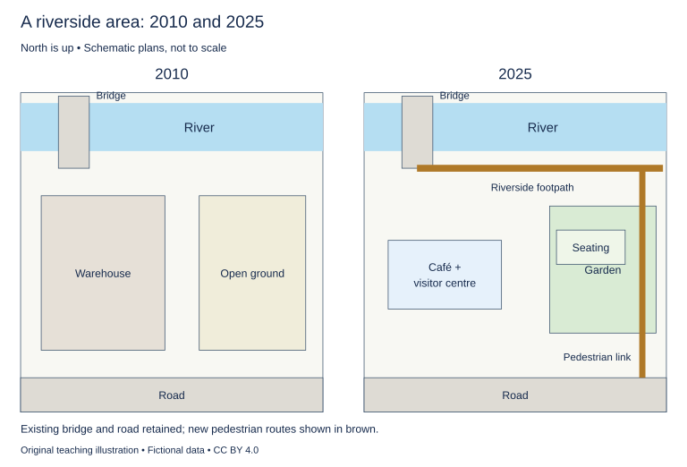
教学虚构示意图，北向上不按比例。河沿北边、路沿南边，两年不变；西侧桥跨河位置不变。2010西部Warehouse、东部Open ground。2025西部以更小Café + visitor centre替换仓库，东部Garden + seating；新增河南岸东西Footpath，并新增东部南北Pedestrian link连接道路、花园与沿河步道。没有车流或实际坡度数据。
任务预算（含首次审题，不额外加时）
初稿20分钟（审题规划3、写作15、检查2）；诊断15；反馈阅读与证据核查10；完整重写25；对照归档5。合计75分钟。
初稿后自评清单
- [ ] 达到最低字数；全文连贯成段，没有用项目符号代替作文。
- [ ] 概述给主要特征；数据、阶段或方位都与题图逐项相符，不推断未提供的原因。
- [ ] 每段可写出一个功能标签；例子或数据与该段要点相连。
- [ ] 核查两处词汇搭配和两处句法；如有疑点先试改再核实，无问题则记录通过证据。
- [ ] 如有影响理解的问题，记录原句；否则记通过或待核查，不填写自猜分数。
反馈与重写
打开 独立参考页（本节下方展开参考），按逐段检查和通用协议核验。重写任务：完整重写至少150词；如反馈与图不符则标争议并求核实，不盲改；向第二轮真人评阅交原稿、图与改动依据，未有真人意见就记待安排。
本周重点操作（已含原预算）
在原反馈/诊断时段整理已有证据，在原归档时段取3分钟填写第二轮真人交接状态。把争议句定位到地图的桥、路、替换设施或新增步道；无法从图推出的内容标待核查。 有第一轮真实意见时附日期、评阅者和落实证据；没有则如实写“第一轮待安排，第二轮尚不具备比较依据”。交接原题、限时初稿/原音、重写/重答和一个具体核查问题，未收到真人回复记待评，不能把AI意见或示例讲评记作第二轮真人反馈。超出课内预算的会谈另记实际时间，不假装已经完成。
记录表见阶段证据表，只在上述原时段填写相关行。
W23 T1A 示例、反馈与重练（首答后展开）
WS-W23-T1A 独立参考页
只在初稿完成后阅读；不是唯一答案，也没有官方分数。以下是对原创示例的教学讲评，不是对学生尚未提交作文的已完成批改。
思路拆解
反馈核验需要图上证据；西仓库替换、东空地花园、新沿河路/南北链接与保留桥路；不推车流。
原创示例
The maps compare a riverside area in 2010 and 2025. The river runs along the northern edge of both maps, while a road forms the southern boundary.
Overall, the area became more accessible for pedestrians and gained recreational facilities. A warehouse was replaced by a café and visitor centre, and the open ground in the east became a garden. The existing bridge and the road remained in place.
In 2010, the warehouse occupied the western part of the site, between the road and the river. By 2025, it had been replaced by a smaller café and visitor centre within the same general area. A footpath was added along the southern bank of the river, connecting the bridge on the western side with the eastern end of the site.
The eastern open ground was converted into a garden with a seating area. A new north-south pedestrian link connected this garden and the riverside footpath to the road. The bridge still crossed the river at the same position in the west, and no change was shown to the road’s alignment. Thus, the main alterations occurred within the area between these existing transport features.
示例正文词数：191（本项目正则计数；书信不含称呼、结束语与署名；连字符词作一词）。
逐段反馈与迁移
以下只分析上方原创示例。题干要点及图表事实必须遵守；书信、议论文的自拟身份、日期、经历和例子不是新增强制要求。按自己的合理设定核验，不为对齐范例编造经历。
- P1 北河、南路是基准；图未提供全城交通。
- P2 accessible指新增步道联系，不假造无障碍认证。
- P3 咖啡访客中心在原西部区域且更小，沿河南岸连接西桥与东端。
- P4 花园和南北链接可指出；桥位与路走向不变，不能说新建桥。
常见失误
混淆南岸与北岸；把新步道写成车道；无图据接受AI关于拆桥建议。
可执行反馈步骤
1. 先把自己的段落标为引入、概述/论点、支持、收束；分段可不同于示例，按功能核查，不照抄段数。
2. 对照上方逐段检查，逐项标“已有证据/缺失/不适用”。每条意见必须附自己的原句或缺失位置。
3. 按 反馈协议 的四维表记录；有争议的 AI 意见回题干、数据或语法依据核验。
4. 只选至多两项有证据的优先点执行整篇重写；如未发现问题，可改变组织或表达练迁移，但不把它标成纠错；保留原稿，禁止把示例替换为自己的作业。
重写任务
完整重写至少150词；如反馈与图不符则标争议并求核实，不盲改；向第二轮真人评阅交原稿、图与改动依据，未有真人意见就记待安排。
完成后重新勾选 学生页（见本节上方学生题） 清单；将一处改前/改后及理由交给独立评阅者核查。真人评阅状态目前为“待安排”，不是已完成。
WS-W23-T1G 学生页：请求导师对修改稿反馈
周次 W23｜题型 T1G｜能力点：书信目的、要点与语气
Task 1 的 A/G 分支二选一，另一分支不计入本周作业。
使用与记录
原创教学练习，非真题、非标准化模拟，难度未校准。先完成本页再打开参考页。人物、机构、经历与数据均为教学虚构。范例的身份、地点、动作和细节不是强制要求。口语优先用真实经历或真实观察，并说明来源；没有相关经历时，可将假设回答明确标为技能练习，不伪装成亲历。不要背诵示例。自评和 AI 反馈不能代替独立真人评分，未获得真人评阅时标记“分数未确认”。
保存：任务ID、实际日期、用时、初稿或原始录音、证据化反馈、重写/重答、三条修改理由。没有学生提交物，不得填写“已批改”或“已完成训练”。
完整题干
You have revised a report after receiving advice from your course tutor. Write to your tutor, Ms Carter. In your letter:
- explain which report you revised
- describe the changes you made
- ask for feedback on one aspect that you are still unsure about.
Begin your letter: Dear Ms Carter,
Write at least 150 words. You do not need to write any addresses. Spend about 20 minutes on this task.
任务预算（含首次审题，不额外加时）
初稿20分钟（审题规划3、写作15、检查2）；诊断15；反馈阅读与证据核查10；完整重写25；对照归档5。合计75分钟。
初稿后自评清单
- [ ] 达到最低字数；全文连贯成段，没有用项目符号代替作文。
- [ ] 三个要点均展开；称呼、目的、语气和结束语适合收信人。
- [ ] 每段可写出一个功能标签；例子或数据与该段要点相连。
- [ ] 核查两处词汇搭配和两处句法；如有疑点先试改再核实，无问题则记录通过证据。
- [ ] 如有影响理解的问题，记录原句；否则记通过或待核查，不填写自猜分数。
反馈与重写
打开 独立参考页（本节下方展开参考），按逐段检查和通用协议核验。重写任务：完整重写至少150词；按虚构角色合理自拟修改细节，不强制使用示例改法。真实第二轮反馈状态在证据表另记，没收意见不得填写已收。
本周重点操作（已含原预算）
在原反馈/诊断时段整理已有证据，在原归档时段取3分钟填写第二轮真人交接状态。对照本题所写的修改与希望老师核查的事项；虚构信件中的老师意见不是你已取得的真人反馈。 有第一轮真实意见时附日期、评阅者和落实证据；没有则如实写“第一轮待安排，第二轮尚不具备比较依据”。交接原题、限时初稿/原音、重写/重答和一个具体核查问题，未收到真人回复记待评，不能把AI意见或示例讲评记作第二轮真人反馈。超出课内预算的会谈另记实际时间，不假装已经完成。
记录表见阶段证据表，只在上述原时段填写相关行。
W23 T1G 示例、反馈与重练（首答后展开）
WS-W23-T1G 独立参考页
只在初稿完成后阅读；不是唯一答案，也没有官方分数。以下是对原创示例的教学讲评，不是对学生尚未提交作文的已完成批改。
思路拆解
书信角色情境自带已收建议，非真实学生已经获批改；说明稿件/修订/一项待评焦点，半正式。
原创示例
Dear Ms Carter,
I am writing about the short project report on the use of shared study spaces that I submitted last month. Thank you for suggesting that I make the purpose of each section clearer. I have now prepared a revised version and would appreciate your comments when you have time to look at it.
The introduction now states the question I investigated before describing the locations I visited. I have also moved the details about individual observations into a separate section, so that they no longer interrupt the comparison between the two spaces. In the conclusion, I have removed a general claim about all students and limited the discussion to the observations included in the report.
I am still unsure whether the comparison section explains the differences clearly enough. Could you comment on whether the examples support the main points, or whether I need to organise them differently? I have attached both versions and highlighted the changed passages to make the revision easier to follow. If a short meeting would be more convenient than written comments, I am available after class on Tuesday or Thursday.
Best wishes, Alex Chen
示例正文词数：184（本项目正则计数；书信不含称呼、结束语与署名；连字符词作一词）。
逐段反馈与迁移
以下只分析上方原创示例。题干要点及图表事实必须遵守；书信、议论文的自拟身份、日期、经历和例子不是新增强制要求。按自己的合理设定核验，不为对齐范例编造经历。
- P1 定位报告与主题、请求时间礼貌；仅虚构信件角色经历。
- P2 三项调整为原创例文自拟，学生可用其他合理修订，不强制照搬。
- P3 聚焦comparison examples支持与组织，附版本便利评阅，时间可执行。
常见失误
将示例修订冒充自己真实课程已完成；问题泛成is it good；漏修改内容。
可执行反馈步骤
1. 先把自己的段落标为引入、概述/论点、支持、收束；分段可不同于示例，按功能核查，不照抄段数。
2. 对照上方逐段检查，逐项标“已有证据/缺失/不适用”。每条意见必须附自己的原句或缺失位置。
3. 按 反馈协议 的四维表记录；有争议的 AI 意见回题干、数据或语法依据核验。
4. 只选至多两项有证据的优先点执行整篇重写；如未发现问题，可改变组织或表达练迁移，但不把它标成纠错；保留原稿，禁止把示例替换为自己的作业。
重写任务
完整重写至少150词；按虚构角色合理自拟修改细节，不强制使用示例改法。真实第二轮反馈状态在证据表另记，没收意见不得填写已收。
完成后重新勾选 学生页（见本节上方学生题） 清单；将一处改前/改后及理由交给独立评阅者核查。真人评阅状态目前为“待安排”，不是已完成。
WS-W23-T2 学生页：信息过载
周次 W23｜题型 T2｜能力点：观点展开与任务回应
A/G 共用本题。
使用与记录
原创教学练习，非真题、非标准化模拟，难度未校准。先完成本页再打开参考页。人物、机构、经历与数据均为教学虚构。范例的身份、地点、动作和细节不是强制要求。口语优先用真实经历或真实观察，并说明来源；没有相关经历时，可将假设回答明确标为技能练习，不伪装成亲历。不要背诵示例。自评和 AI 反馈不能代替独立真人评分，未获得真人评阅时标记“分数未确认”。
保存：任务ID、实际日期、用时、初稿或原始录音、证据化反馈、重写/重答、三条修改理由。没有学生提交物，不得填写“已批改”或“已完成训练”。
完整题干
Many people receive more information than they can use in their daily lives. What problems can this cause, and what could individuals and organisations do to address these problems? Give reasons and include relevant examples.
Write at least 250 words. Spend about 40 minutes on this task.
任务预算（含首次审题，不额外加时）
初稿40分钟（审题规划5、写作30、检查5）；诊断15；反馈阅读与证据核查10；完整重写35；对照归档5。合计105分钟。
初稿后自评清单
- [ ] 达到最低字数；全文连贯成段，没有用项目符号代替作文。
- [ ] 直接回答题目的所有问句，有始终一致的立场。
- [ ] 每段可写出一个功能标签；例子或数据与该段要点相连。
- [ ] 核查两处词汇搭配和两处句法；如有疑点先试改再核实，无问题则记录通过证据。
- [ ] 如有影响理解的问题，记录原句；否则记通过或待核查，不填写自猜分数。
反馈与重写
打开 独立参考页（本节下方展开参考），按逐段检查和通用协议核验。重写任务：完整重写至少250词；依据真实反馈优先修有证据问题，无真人意见先作自评并标待评；保留初稿和不同版本，第二轮意见不能被AI反馈替代。
本周重点操作（已含原预算）
在原反馈/诊断时段整理已有证据，在原归档时段取3分钟填写第二轮真人交接状态。核对信息过载的问题、个人及组织措施；向评阅者只问一个有原文依据的疑点。 有第一轮真实意见时附日期、评阅者和落实证据；没有则如实写“第一轮待安排，第二轮尚不具备比较依据”。交接原题、限时初稿/原音、重写/重答和一个具体核查问题，未收到真人回复记待评，不能把AI意见或示例讲评记作第二轮真人反馈。超出课内预算的会谈另记实际时间，不假装已经完成。
记录表见阶段证据表，只在上述原时段填写相关行。
W23 T2 示例、反馈与重练（首答后展开）
WS-W23-T2 独立参考页
只在初稿完成后阅读；不是唯一答案，也没有官方分数。以下是对原创示例的教学讲评，不是对学生尚未提交作文的已完成批改。
思路拆解
问题+两主体措施，不误写仅原因；干扰/漏重要内容分别展开；限时控制不提出无依据万能断网。
原创示例
Receiving a large amount of information can make it harder to identify what requires attention. The main problems are distraction and the possibility of missing important details among less useful messages. Individuals and organisations can reduce these difficulties by making priorities and communication purposes clearer.
One problem is the interruption of sustained work. A person may repeatedly stop a task to check messages that seem urgent but have little relevance to it. Even when each interruption is brief, returning to the original task can require effort. Another problem is uncertainty about what matters. If routine updates and genuinely important changes arrive in the same form, recipients may either spend too much time checking everything or overlook a message that requires action.
Individuals can respond by setting aside appropriate times to review non-urgent information and by reducing subscriptions or alerts they no longer use. This is not a recommendation to ignore all incoming messages. Some responsibilities require a prompt response, so the approach should reflect the person’s role. A useful first step is to distinguish information needed for an immediate decision from material that can be read later or not at all.
Organisations also have a responsibility to communicate selectively. A message should make clear who needs it, what action is required and when that action matters. Routine information could be gathered into a regular summary rather than sent as many separate interruptions. However, an urgent update should not be hidden in that summary simply for consistency. Clear channels and agreed expectations are more helpful than asking every employee to cope individually with an unlimited stream.
In conclusion, excess information can consume attention and obscure important messages. Personal filtering and more purposeful organisational communication would address both problems, provided that urgent and non-urgent needs are distinguished rather than treated identically.
示例正文词数：299（本项目正则计数；书信不含称呼、结束语与署名；连字符词作一词）。
逐段反馈与迁移
以下只分析上方原创示例。题干要点及图表事实必须遵守；书信、议论文的自拟身份、日期、经历和例子不是新增强制要求。按自己的合理设定核验，不为对齐范例编造经历。
- P1 两问题对应attention与important details。
- P2 中断与优先级混淆分开，未编次数/时间损耗研究。
- P3 个人按角色过滤，urgent例外防止不合理一刀切。
- P4 组织收件人/行动/时间与汇总，紧急不藏汇总。
- P5 回应题目，不偷换成技术全面有害。
常见失误
写互联网历史替代问题；只提个人不提组织；把所有消息都推迟。
可执行反馈步骤
1. 先把自己的段落标为引入、概述/论点、支持、收束；分段可不同于示例，按功能核查，不照抄段数。
2. 对照上方逐段检查，逐项标“已有证据/缺失/不适用”。每条意见必须附自己的原句或缺失位置。
3. 按 反馈协议 的四维表记录；有争议的 AI 意见回题干、数据或语法依据核验。
4. 只选至多两项有证据的优先点执行整篇重写；如未发现问题，可改变组织或表达练迁移，但不把它标成纠错；保留原稿，禁止把示例替换为自己的作业。
重写任务
完整重写至少250词；依据真实反馈优先修有证据问题，无真人意见先作自评并标待评；保留初稿和不同版本，第二轮意见不能被AI反馈替代。
完成后重新勾选 学生页（见本节上方学生题） 清单；将一处改前/改后及理由交给独立评阅者核查。真人评阅状态目前为“待安排”，不是已完成。
WS-W23-S1 学生页
周次W23｜Part 1专项｜能力点：根据真实录音查缺补漏；提出一个可核查的真人反馈问题｜30分钟
使用与记录
原创教学练习，非真题、非标准化模拟，难度未校准。先完成本页再打开参考页。人物、机构、经历与数据均为教学虚构。范例的身份、地点、动作和细节不是强制要求。口语优先用真实经历或真实观察，并说明来源；没有相关经历时，可将假设回答明确标为技能练习，不伪装成亲历。不要背诵示例。自评和 AI 反馈不能代替独立真人评分，未获得真人评阅时标记“分数未确认”。
保存：任务ID、实际日期、用时、初稿或原始录音、证据化反馈、重写/重答、三条修改理由。没有学生提交物，不得填写“已批改”或“已完成训练”。
操作与预算
设备与审题3分钟；首答录音6；回听及局部转写7；示例和诊断5；不看稿重答6；归档3。共30分钟。
Part 1专项题
1. Do you like discussing ideas with other people?
2. Whom do you ask when you need an explanation?
3. Do you prefer advice in person or in writing?
4. How do you decide whether advice is useful?
追问：
- What if two people give different advice?
- Can advice be useful even if you do not follow it?
首答6分钟内依次答4个主问，每题约40～60秒；两条追问只选1条答约30～45秒，其余时间用于转题。备用追问留给重答，不要求全部说完。
录音回听清单
- [ ] 保留首答原音，记录实际时长、是否中断、是否看稿；只报真实完成状态；短于目标时长如实记，不用沉默或无关内容凑时。
- [ ] 流利与连贯：标出两处时间戳，区分构思停顿与重复搜词，检查是否偏离问句。
- [ ] 词汇：如有模糊词或无效重复，引用一处并先解释原意再试改；无则记录清楚的表达，不为难词改变意思。
- [ ] 语法：核对经历与习惯的时态；局部转写核查；如存在妨碍理解的问题才更正，无则记通过。
- [ ] 发音：不看转写听30秒，如有听不清的词尾、重音或断句则标时间戳，无则记录清楚证据；没有音频不能判断发音。
- [ ] 展开：主要回答有具体情境或理由；追问后第一句回应追问的新角度。
重答要求
如有笼统判断，选择至多两个答案补具体情境；如没有，选择两题换角度重答并保留切题证据；重答一条追问，检查是否真正回应其新角度。
首答回听后才打开独立参考页（本节下方展开参考）。按反馈协议填至少三个时间戳，不以文字转写替代音频评阅。
本周重点操作（已含原预算）
在原反馈/诊断时段整理已有证据，在原归档时段取3分钟填写第二轮真人交接状态。依据自己的原始音频标实际时长、题目覆盖和一个清楚或待核查的时间戳；范例身份、事件和细节均不必照搬。 有第一轮真实意见时附日期、评阅者和落实证据；没有则如实写“第一轮待安排，第二轮尚不具备比较依据”。交接原题、限时初稿/原音、重写/重答和一个具体核查问题，未收到真人回复记待评，不能把AI意见或示例讲评记作第二轮真人反馈。超出课内预算的会谈另记实际时间，不假装已经完成。
记录表见阶段证据表，只在上述原时段填写相关行。
W23 S1 示例、反馈与重练（首答后展开）
WS-W23-S1 独立参考页
原创教学示例，非真题或评分结果。未收到学生音频；以下是示例分析与待执行反馈，不能登记为已完成学生批改。
展开示例
直接回应→原因→具体情境的展开示例
I find advice useful when the person explains the reason behind it. If someone simply tells me to choose a different method, I may not understand what will improve. A small example helps me compare the suggestion with what I already do, and then I can decide whether to try it.
纯口答示例词数：51；只计MODEL标记内实际英文口答，不含标题、标签、说明。词数不能证明录音时长或流利度。
展开与反馈
本周能力：根据真实录音查缺补漏；提出一个可核查的真人反馈问题。
1. 示例先表态，再说明偏好理由，最后提供条件或场景。检查自己是否用一个词回答后就结束。
2. 找到一个具体细节：物品、动作、对话或地点。用真实经历或注明来源的真实观察替换；假设回答须标为技能练习。保持切题，不强制复制范例细节，不照搬身份与经历。
3. 追问要重新回应，不能继续背长答。首句先回答追问，再用一条理由支持。
4. 如存在听不清或语法影响理解处，标原音时间戳；否则标一处清楚的原音证据；先尝试最小修正。不要把自然停顿一概当成错误，或用加快语速掩盖逻辑断裂。
常见失误
空泛形容词替代具体过程；给了经历却没解释为什么重要；Part 3只有个人故事没有一般解释；AI只看转写就判断发音。逐项回原音核对，不能凭范例推断自己已达到某个分数。
可执行重答与反馈
如有笼统判断，选择至多两个答案补具体情境；如没有，选择两题换角度重答并保留切题证据；重答一条追问，检查是否真正回应其新角度。
填写反馈协议四维表，附三个时间戳和原话证据。如存在，选至多一个内容问题与一个语言问题先修；否则记录清楚的证据并做迁移重答；重答后并排听两段，记录改善与仍未解决之处。自评与AI不能替代独立真人评分；独立评阅目前待安排，分数未确认。
WS-W23-S2 学生页
周次W23｜Part 2专项｜能力点：根据真实录音查缺补漏；提出一个可核查的真人反馈问题｜30分钟
使用与记录
原创教学练习，非真题、非标准化模拟，难度未校准。先完成本页再打开参考页。人物、机构、经历与数据均为教学虚构。范例的身份、地点、动作和细节不是强制要求。口语优先用真实经历或真实观察，并说明来源；没有相关经历时，可将假设回答明确标为技能练习，不伪装成亲历。不要背诵示例。自评和 AI 反馈不能代替独立真人评分，未获得真人评阅时标记“分数未确认”。
保存：任务ID、实际日期、用时、初稿或原始录音、证据化反馈、重写/重答、三条修改理由。没有学生提交物，不得填写“已批改”或“已完成训练”。
操作与预算
准备、首答录音及追问5分钟；回听及局部转写8；示例与诊断5；关键词重组3；重答及追问5；归档4。共30分钟。
Part 2专项任务卡
Describe a conversation that helped you understand a task.
Say:
- what the task was
- whom you spoke to
- what you discussed
- and explain what became clearer.
准备1分钟，说1～2分钟。只记5个关键词，不预写句子。
收尾追问：
- Did you need any further information?
- Could the explanation have been given another way?
每轮5分钟包含准备1分钟、连续说1～2分钟、两条收尾追问选1条答20～30秒及转题缓冲；另一条可用于重答。不把备用题全部加进本轮。
录音回听清单
- [ ] 保留首答原音，记录实际时长、是否中断、是否看稿；只报真实完成状态；短于目标时长如实记，不用沉默或无关内容凑时。
- [ ] 流利与连贯：标出两处时间戳，区分构思停顿与重复搜词，检查是否偏离问句。
- [ ] 词汇：如有模糊词或无效重复，引用一处并先解释原意再试改；无则记录清楚的表达，不为难词改变意思。
- [ ] 语法：核对经历与习惯的时态；局部转写核查；如存在妨碍理解的问题才更正，无则记通过。
- [ ] 发音：不看转写听30秒，如有听不清的词尾、重音或断句则标时间戳，无则记录清楚证据；没有音频不能判断发音。
- [ ] 展开：主要回答有具体情境或理由；追问后第一句回应追问的新角度。
重答要求
用五个关键词重答完整任务卡1～2分钟，再从两条追问中选1条答20～30秒；如缺具体细节则补、如有无关背景则删；若已清楚，换表达但保持事实。比较首答与重答，不背示例。
首答回听后才打开独立参考页（本节下方展开参考）。按反馈协议填至少三个时间戳，不以文字转写替代音频评阅。
本周重点操作（已含原预算）
在原反馈/诊断时段整理已有证据，在原归档时段取3分钟填写第二轮真人交接状态。依据自己的原始音频标实际时长、题目覆盖和一个清楚或待核查的时间戳；范例身份、事件和细节均不必照搬。 有第一轮真实意见时附日期、评阅者和落实证据；没有则如实写“第一轮待安排，第二轮尚不具备比较依据”。交接原题、限时初稿/原音、重写/重答和一个具体核查问题，未收到真人回复记待评，不能把AI意见或示例讲评记作第二轮真人反馈。超出课内预算的会谈另记实际时间，不假装已经完成。
记录表见阶段证据表，只在上述原时段填写相关行。
W23 S2 示例、反馈与重练（首答后展开）
WS-W23-S2 独立参考页
原创教学示例，非真题或评分结果。未收到学生音频；以下是示例分析与待执行反馈，不能登记为已完成学生批改。
展开示例
原创长答示例（时长须以个人实际录音测量）
A conversation that helped me understand a task took place before a small community book sale. I had volunteered to arrange the books, but the message I received only said that they should be sorted into sections.
I spoke to the organiser because I was unsure whether those sections meant subjects, prices or the age of the readers. She explained that visitors would first choose between books for adults and books for children. Within those two areas, we could use broad subject labels. The price would be shown on a sticker on each book, so separate price tables were unnecessary.
I repeated the plan in my own words and asked where picture books with very little text should go. She pointed to the children's area and suggested keeping them near the front, where families could see them easily. We then drew a quick layout on a sheet of paper.
After that conversation, I could begin without guessing the purpose of the sections. The most useful part was not receiving more instructions in general; it was resolving the particular uncertainty that had stopped me from starting. I still checked unusual items with the organiser as we worked.
纯口答示例词数：196；只计MODEL标记内实际英文口答，不含标题、标签、说明。词数不能证明录音时长或流利度。
展开与反馈
本周能力：根据真实录音查缺补漏；提出一个可核查的真人反馈问题。
1. 长答示例按背景、行动/观察、变化与意义组织。每段都推进内容；检查自己是否只有背景而没有具体事件。
2. 找到一个具体细节：物品、动作、对话或地点。用真实经历或注明来源的真实观察替换；假设回答须标为技能练习。保持切题，不强制复制范例细节，不照搬身份与经历。
3. 追问要重新回应，不能继续背长答。首句先回答追问，再用一条理由支持。
4. 如存在听不清或语法影响理解处，标原音时间戳；否则标一处清楚的原音证据；先尝试最小修正。不要把自然停顿一概当成错误，或用加快语速掩盖逻辑断裂。
常见失误
空泛形容词替代具体过程；给了经历却没解释为什么重要；Part 3只有个人故事没有一般解释；AI只看转写就判断发音。逐项回原音核对，不能凭范例推断自己已达到某个分数。
可执行重答与反馈
用五个关键词重答完整任务卡1～2分钟，再从两条追问中选1条答20～30秒；如缺具体细节则补、如有无关背景则删；若已清楚，换表达但保持事实。比较首答与重答，不背示例。
填写反馈协议四维表，附三个时间戳和原话证据。如存在，选至多一个内容问题与一个语言问题先修；否则记录清楚的证据并做迁移重答；重答后并排听两段，记录改善与仍未解决之处。自评与AI不能替代独立真人评分；独立评阅目前待安排，分数未确认。
WS-W23-S3 学生页
周次W23｜三部分全流程｜能力点：根据真实录音查缺补漏；提出一个可核查的真人反馈问题｜60分钟
使用与记录
原创教学练习，非真题、非标准化模拟，难度未校准。先完成本页再打开参考页。人物、机构、经历与数据均为教学虚构。范例的身份、地点、动作和细节不是强制要求。口语优先用真实经历或真实观察，并说明来源；没有相关经历时，可将假设回答明确标为技能练习，不伪装成亲历。不要背诵示例。自评和 AI 反馈不能代替独立真人评分，未获得真人评阅时标记“分数未确认”。
保存：任务ID、实际日期、用时、初稿或原始录音、证据化反馈、重写/重答、三条修改理由。没有学生提交物，不得填写“已批改”或“已完成训练”。
操作与预算
D5：设备与流程准备2分钟，连续首答11～14分钟，余14～17分钟完整回听标记，共30分钟。D6：局部转写诊断10，阅读示例与调整5，重答与新追问10，对照归档5，共30分钟。合计60分钟。
连续三部分全流程（首答不可看参考）
找同伴读题，或独练逐题揭示。完整首答11～14分钟，中途不暂停纠错。模拟同伴不是认证考官；自行读题的练习记录不能冒充真实面试。
Part 1：4～5分钟
1. Do you enjoy visiting libraries?
2. What makes a shared space comfortable?
3. Do you prefer working alone or with others?
4. What kinds of signs do you find useful?
5. How do you react when a place changes?
6. Would you like to help improve a local facility?
可按回答追加 Why? / Can you give an example? 到时转下部分，不强行说完全部备用问题。
Part 2：3～4分钟（含准备）
Describe a change you noticed in a public place.
Say:
- what the place was
- what changed
- how you noticed it
- and explain your opinion of the change.
准备1分钟，连续说1～2分钟。收尾追问：
- Did everyone seem to use the change in the same way?
- What would you want to know before judging its success?
Part 3：4～5分钟
1. How should public organisations collect feedback?
2. Why might different users judge the same change differently?
3. Should every suggestion be acted on?
4. How can an organisation explain a decision to users?
根据回答追加追问：
- What if the people most affected rarely respond?
- How can organisations tell whether a change helped?
Part 2收尾追问两条选1条，答20～30秒，含在3～4分钟内。Part 3从4个主问中选3个，每个约60～75秒，再从2条追问中选1条答30～45秒；连同读题控制在4～5分钟，到时结束。题库数量不是必答数量。
录音回听清单
- [ ] 保留首答原音，记录实际时长、是否中断、是否看稿；只报真实完成状态；短于目标时长如实记，不用沉默或无关内容凑时。
- [ ] 流利与连贯：标出两处时间戳，区分构思停顿与重复搜词，检查是否偏离问句。
- [ ] 词汇：如有模糊词或无效重复，引用一处并先解释原意再试改；无则记录清楚的表达，不为难词改变意思。
- [ ] 语法：核对经历与习惯的时态；局部转写核查；如存在妨碍理解的问题才更正，无则记通过。
- [ ] 发音：不看转写听30秒，如有听不清的词尾、重音或断句则标时间戳，无则记录清楚证据；没有音频不能判断发音。
- [ ] 展开：主要回答有具体情境或理由；追问后第一句回应追问的新角度。
重答要求
在10分钟重答时段：选择一个有核查需要的Part 1主问答约1分钟；Part 2准备1分钟、答1～2分钟，再选一条收尾追问答20～30秒；Part 3只选一个主问答约1分钟，再选一条未用追问答30～45秒。余时用于换题和回听；无薄弱项则选已通过题换角度练迁移，保持真实细节，不复述范例。局部重答不另计全流程。
首答回听后才打开独立参考页（本节下方展开参考）。按反馈协议填至少三个时间戳，不以文字转写替代音频评阅。
本周重点操作（已含原预算）
在原反馈/诊断时段整理已有证据，在原归档时段取3分钟填写第二轮真人交接状态。依据自己的原始音频标实际时长、题目覆盖和一个清楚或待核查的时间戳；范例身份、事件和细节均不必照搬。 有第一轮真实意见时附日期、评阅者和落实证据；没有则如实写“第一轮待安排，第二轮尚不具备比较依据”。交接原题、限时初稿/原音、重写/重答和一个具体核查问题，未收到真人回复记待评，不能把AI意见或示例讲评记作第二轮真人反馈。超出课内预算的会谈另记实际时间，不假装已经完成。
记录表见阶段证据表，只在上述原时段填写相关行。
W23 S3 示例、反馈与重练（首答后展开）
WS-W23-S3 独立参考页
原创教学示例，非真题或评分结果。未收到学生音频；以下是示例分析与待执行反馈，不能登记为已完成学生批改。
展开示例
Part 2原创展开示例（个人语速不同，不能以词数推录音时长）
I noticed a change in the entrance area of a library near my home. Previously, a large noticeboard stood just inside the door. On a later visit, I saw that the board had moved to a side wall and a low table with a simple floor plan had taken its place.
The difference caught my attention because I had once stopped in the doorway to read a notice and blocked someone carrying books. With the new arrangement, I could move to the side before reading. The floor plan also showed the stairs and the enquiry desk with large symbols, which I found easy to recognise.
My first impression was positive. I spent less time deciding where to go, and the entrance seemed easier to move through during my visit. However, I only saw it on one quiet afternoon, so I cannot say that it solved every problem for every visitor.
I would be interested to hear from library staff and people who use mobility aids before making a stronger judgement. For me, the change was a helpful reminder that a small adjustment to the position of information can affect how a place feels.
Part 3观点→理由→条件展开示例
Public organisations should collect feedback in more than one way because a single survey may miss people who have limited time or difficulty using it. Short conversations and accessible written forms can reveal different experiences. However, collecting opinions is only a first step. The organisation should connect a suggestion to a specific problem, consider who is affected and explain what evidence supports its decision. Popularity alone does not show that a change will work.
纯口答示例词数：267；只计MODEL标记内实际英文口答，不含标题、标签、说明。词数不能证明录音时长或流利度。
展开与反馈
本周能力：根据真实录音查缺补漏；提出一个可核查的真人反馈问题。
1. 长答示例按背景、行动/观察、变化与意义组织。每段都推进内容；检查自己是否只有背景而没有具体事件。
2. 找到一个具体细节：物品、动作、对话或地点。用真实经历或注明来源的真实观察替换；假设回答须标为技能练习。保持切题，不强制复制范例细节，不照搬身份与经历。
3. Part 3示例不把个人选择强加给所有人；先讲机制，再说明条件或例外。检查自己的追问答案是否直接回应新问题。
4. 如存在听不清或语法影响理解处，标原音时间戳；否则标一处清楚的原音证据；先尝试最小修正。不要把自然停顿一概当成错误，或用加快语速掩盖逻辑断裂。
常见失误
空泛形容词替代具体过程；给了经历却没解释为什么重要；Part 3只有个人故事没有一般解释；AI只看转写就判断发音。逐项回原音核对，不能凭范例推断自己已达到某个分数。
可执行重答与反馈
在10分钟重答时段：选择一个有核查需要的Part 1主问答约1分钟；Part 2准备1分钟、答1～2分钟，再选一条收尾追问答20～30秒；Part 3只选一个主问答约1分钟，再选一条未用追问答30～45秒。余时用于换题和回听；无薄弱项则选已通过题换角度练迁移，保持真实细节，不复述范例。局部重答不另计全流程。
填写反馈协议四维表，附三个时间戳和原话证据。如存在，选至多一个内容问题与一个语言问题先修；否则记录清楚的证据并做迁移重答；重答后并排听两段，记录改善与仍未解决之处。自评与AI不能替代独立真人评分；独立评阅目前待安排，分数未确认。
许可
原创文字：RayXBuilds and contributors，CC BY 4.0。此页由已验收分课汇编，调整了标题和导航；题干、正文和答案内容保留。公开第三方音频未包含。
回到顶部
U34 第24周：长篇阅读、写作与口语
本页为已独立核验的原创文字课程。先完成学生题目，再展开对应参考。非真题、非标准化模考，不换算雅思分数。听力尚未补齐，本页不代表全科课程已完成。
每周选A或G类Task 1一题，加Task 2及三次口语。参考范文不是学生已完成作业，仍须提交初稿、录音和重写，独立真人评分另行安排。
阅读每周180分钟（60分钟首次限时、120分钟证据精读与延迟复测），写作180分钟、口语120分钟。词汇60分钟、听力180分钟另列；新增完整听力未验收，不能勾整周完成。
W22/W24原创阶段检查按实际证据复盘；正式T22/T24陌生整卷、所选真实考试界面操作及真人评分另记，缺少目标或真实证据时不能据此判断报考/延长，本页原创技能卷不能代替正式模拟。后续周数与达标规则见 U04。
阅读：首答不查词
R-W24-01 · A Loop That Holds by Contact
W24｜正文 896 词｜13 题｜篇章：科学模型：接触、受力与比较条件（7段）
本课必做60分钟：首答20、证据复盘20、词汇长句10、48小时后复测10。每周三课180分钟，合卷首答替代单课首答，不重复计算。开放短文选做另加15分钟。
本项目原创虚构教学情境，人物、地点、历史事件和案例数据均非真实研究或史料。科学解释只讨论文内说明的模型与条件。非雅思真题或标准化模考；正确数不换算雅思等级。许可：CC BY 4.0 — RayXBuilds and contributors。
能力点：识别论证关系、区分作者与引述者、条件与因果、精确定位。初读不查词，完成后打开独立答案页。
Passage
A In the fictional mechanics studio of Rova, students examine a flexible strip wrapped around a smooth cylinder. One end is pulled while the other is held with a smaller opposing force. Under the conditions chosen for the demonstration, contact with the cylinder helps resist movement of the strip. The teacher emphasises that the cylinder is not producing energy or fastening the strip with an invisible hook. The exercise concerns how contact over a curved surface can influence the forces needed to maintain a particular state. It is a simplified model, not instructions for lifting, climbing or securing real loads. Its value lies in separating the appearance of a stationary object from the relationships that allow it to remain stationary, and in showing why a successful demonstration under one arrangement does not establish a general guarantee for another.
B The first comparison uses the same strip and cylinder but changes how much of the curved surface the strip touches. The class distinguishes contact along a short arc from contact extending farther around the cylinder. It records the arrangement before comparing the opposing pulls. The teacher does not let students describe the result simply as more material means more holding. The relevant change is where and how the strip meets the cylinder, not merely how much strip exists on the bench. A longer loose tail would add material without reproducing the changed contact arrangement. This comparison shows why a plausible everyday description can miss the relationship actually varied in an experiment. The words used to explain a result should identify the part of the system that the evidence concerns.
C A second comparison changes the surface covering while preserving the same path around the cylinder. In the model, the force relationship changes. The students can therefore see that the amount of wrap alone is insufficient to describe the outcome. They need information about the contacting surfaces as well. A contact diagram marks the arc along which the strip touches the cylinder, while a surface card identifies the covering used in each run. These records keep two variables distinct. If both are changed at once, an observed difference cannot simply be assigned to either one without further reasoning. The teacher presents this as a limit on what the particular comparison establishes, rather than as a claim that complicated situations can never be investigated through carefully designed observations.
D The class then distinguishes a strip that remains still from one that is already moving. Starting motion and maintaining motion are treated as separate questions in the lesson. A result obtained in the first condition is not automatically entered as an answer for the second. The students use a motion log to record whether the strip is stationary, begins to move or continues moving during an observation. The categories prevent a broad word such as holding from concealing a change in the event being described. An observer entering halfway through a run needs to know its earlier state before interpreting the forces displayed at that moment. A single reading can be precise while remaining incomplete evidence about the sequence that produced it.
E The opposing pulls are recorded on a force chart, with the direction of each pull marked beside its value. The students initially add the two values and call the total the explanation. The teacher asks them to describe which end each reading belongs to and what direction it acts in. A list of magnitudes alone leaves out relationships needed to understand the arrangement. The class does not need a claim that every numerical summary is useless. It needs a summary suited to the question. Combining measurements can be helpful only when the combined quantity preserves the distinction the explanation depends on, rather than erasing the different roles of the observations simply because both happen to use the same unit.
F Repeated runs also reveal changes in the strip. A wear sheet records visible marks and alterations after each sequence, allowing later results to be linked with the condition of the material. The students do not assume that using the same physical strip guarantees identical conditions forever. An object can retain its identity while properties relevant to the demonstration change through use. The teacher therefore records the order of runs and checks whether an apparent effect of arrangement could instead be associated with the material's changing condition. This does not prove that wear explains every difference. It identifies a possibility that a comparison should preserve long enough to examine rather than discard simply because the equipment has not been replaced.
G The final account describes contact, surface, motion state, force direction and material condition together. None of those terms is a substitute for the relationships among them. The students can explain why one observed stationary state does not justify a promise that any similar-looking strip will hold any load. They can also explain why that limitation does not make the model uninformative. A useful demonstration reveals a relationship under specified conditions and suggests what must be checked before extending it. Its success is not measured by how confidently the conclusion can be detached from those conditions. By the end, an apparently simple loop has become a way to practise disciplined comparison: identify the state, preserve the relevant differences and avoid making a claim broader than the evidence that gives it meaning. The classroom result remains useful precisely because its boundaries remain part of the explanation.
Questions
Complete the sentences. Choose NO MORE THAN 3 WORDS FROM THE PASSAGE for each answer. Do not change word forms.
1. The arc of contact is marked on a ______.
2. The covering used in each run is identified on a ______.
3. Stationary, starting and continuing movement are recorded in a ______.
4. Values and directions of opposing pulls appear on a ______.
5. Visible material changes after each sequence are entered on a ______.
Do the following statements agree with the writer's views? Write YES, NO or NOT GIVEN. YES = the writer agrees; NO = the writer expresses the opposite view; NOT GIVEN = the writer's view is not stated. Do not use outside knowledge.
6. A stationary-state result automatically answers the question about continued motion.
7. The same physical strip necessarily maintains identical relevant conditions through repeated use.
8. The writer recommends replacing all classroom equipment at the end of each term.
9. A model can remain useful while its conclusions are limited to stated conditions.
Choose ONE answer, A, B, C or D.
10. The demonstration is primarily intended to investigate
A. instructions for securing any load B. energy produced by a stationary cylinder C. contact and force relationships under stated conditions D. an invisible hook in the cylinder
11. Why does adding a loose tail not reproduce the first change?
A. It does not change the same contact relationship B. The cylinder must disappear C. Length can never be observed D. All strips are equal in length
12. The surface comparison shows that
A. surface and contact are identical variables B. wrap alone predicts every result C. contact extent alone is insufficient D. the model explains no relationship
13. Why preserve force directions with their values?
A. Magnitudes alone omit the roles of the pulls B. Only the total matters C. Directions replace values D. Numbers cannot support explanations
本周重点
原创学习记录、正式T22/T24陌生卷与目标分数分栏；证据不足不作报考或达标结论。
复盘
必做：给每道错题标记“定位/作者立场/范围/语法/词数”，抄最短证据；用一行箭头概括本文论证或过程。48小时后重做错题与两道正确题，检查是否仍能指出证据。
选做（15分钟，80–100词）：Explain what this limited model supports and one broader claim it does not support.
R-W24-01 答案、证据与精读（首答后展开）
R-W24-01 · 独立答案与证据
来源与许可同学生页。先完成再核对。可接受答案由 accepted_answers 明确列出；只忽略大小写和首尾空格，不自行删词。开放复盘不计入客观正确数。
1. contact diagram / diagram｜段落 C｜证据：“A contact diagram marks the arc”
diagram可接受。
2. surface card / card｜段落 C｜证据：“a surface card identifies the covering”
card可接受。
3. motion log / log｜段落 D｜证据：“a motion log to record”
log可接受。
4. force chart / chart｜段落 E｜证据：“a force chart”
chart可接受。
5. wear sheet / sheet｜段落 F｜证据：“A wear sheet records visible marks”
sheet可接受。
6. NO｜段落 D｜证据：“not automatically entered as an answer for the second”
明确状态区别。
7. NO｜段落 F｜证据：“guarantees identical conditions forever”
原文do not assume，后句明确可变。
8. NOT GIVEN｜段落 F｜证据：“equipment has not been replaced”
未述全面更换周期。
9. YES｜段落 G｜证据：“that limitation does not make the model uninformative”
有限而有用。
10. C｜段落 A｜证据：“contact over a curved surface”
限定模型。
11. A｜段落 B｜证据：“without reproducing the changed contact arrangement”
材料量与接触安排不同。
12. C｜段落 C｜证据：“amount of wrap alone is insufficient”
多条件，未全盘否定。
13. A｜段落 E｜证据：“leaves out relationships”
大小不包方向与端点。
词汇与长句
- magnitude：不含方向信息的量值大小
- opposing：方向相对的
- stationary：在所述观察中保持静止的
- wear：因使用出现的磨损或状态变化
> A single reading can be precise while remaining incomplete evidence about the sequence that produced it.
while允许数值精确与过程信息不足并存。
> An object can retain its identity while properties relevant to the demonstration change through use.
while对比物体身份与相关性质，不可用同一件器材代替同条件。
开放任务参考
G只证限定接触关系，不证任意负载；不将本批作答表现外推为正式成绩。
标准：观点有文内依据，保留条件和范围，推断明确标注；不存在唯一措辞。
R-W24-02 · The Dictionary That Was Never Finished
W24｜正文 911 词｜13 题｜篇章：虚构文献史：收集、分类与版本边界（8段）
本课必做60分钟：首答20、证据复盘20、词汇长句10、48小时后复测10。每周三课180分钟，合卷首答替代单课首答，不重复计算。开放短文选做另加15分钟。
本项目原创虚构教学情境，人物、地点、历史事件和案例数据均非真实研究或史料。科学解释只讨论文内说明的模型与条件。非雅思真题或标准化模考；正确数不换算雅思等级。许可：CC BY 4.0 — RayXBuilds and contributors。
能力点：识别论证关系、区分作者与引述者、条件与因果、精确定位。初读不查词，完成后打开独立答案页。
Passage
A In the fictional region of Vale, a teacher begins collecting local words in a set of notebooks. She plans a dictionary but dies before arranging the whole collection alphabetically. Decades later, an editor prepares a printed volume from the surviving pages. Readers sometimes describe that volume as the teacher's completed dictionary. The phrase conceals decisions made after her work ended. The notebooks include definitions, examples, questions and reminders to consult other speakers. Not every entry represents a settled judgement, and the printed order does not reproduce the order in which the material was gathered. To understand what the volume preserves, a researcher must distinguish collecting words from deciding how a dictionary should present them.
B The teacher's first notebook follows journeys between villages. A word appears beside the name of the person who used it and a short account of the occasion. Similar words recur on later pages, sometimes with different meanings. Repetition was useful during collection because it preserved separate encounters rather than forcing early agreement. The editor later groups repeated forms under one heading. This makes the printed book easier to search, but it can also hide the circumstances that made the examples differ. The researcher therefore follows the references back to the notebooks before deciding whether two descriptions are contradictions, variations in use or observations of different activities that happened to share a word.
C One entry illustrates the problem. The teacher records a term used for a covered basket in one village and for the act of carrying supplies in another. A margin question asks whether the uses are connected. The editor prints both meanings but omits the question. The resulting entry can make the connection appear established even though the teacher had left it open. The issue is not that grouping the meanings must be wrong. It is that a proposal about their relationship has become harder for a reader to distinguish from a conclusion supported by further investigation. Removing a small mark of uncertainty can alter the status of an explanation without changing either of the individual examples quoted beneath it.
D Spelling introduces another editorial choice. The teacher sometimes writes the same sound differently on different visits, and the notebooks contain no complete statement of a preferred spelling system. The editor selects one form for each printed heading and lists alternatives in smaller type. That arrangement helps readers find entries, but the chosen heading should not automatically be described as the form the teacher regarded as correct. It belongs partly to the editor's organisation of the material. A practical publishing convention can be defensible without being projected backwards as an earlier author's judgement. The researcher records who made the selection and which surviving sources, if any, support a claim about the teacher's own preference.
E Absence is equally difficult to interpret. A common word missing from the notebooks may have seemed too ordinary to record, may have been intended for later work or may simply not have arisen during the documented visits. The absence does not prove that local speakers never used it. Nor can the researcher confidently choose among those possible explanations without evidence. The incomplete project should remain incomplete in the historical account. Calling it a dictionary does not give it the coverage of a finished reference work. Its gaps can help reveal the collecting process, but only if they are not converted into categorical statements about the entire language of a community the teacher encountered through limited occasions and particular speakers.
F The revised research catalogue uses a collection register to connect words with recorded speakers, places and occasions. A variant table places different written forms side by side. A query list preserves unresolved questions from margins and loose pages. An editorial record identifies choices made when the printed volume was prepared. These aids separate evidence about usage from evidence about publication. They also let readers follow a printed entry back to several notebook passages instead of assuming that one tidy heading must have originated as one equally tidy source. Where the chain cannot be established, the catalogue marks the missing connection rather than supplying an invented reference to make every entry look complete.
G For an exhibition, a version panel shows a notebook page, an editor's working draft and the corresponding printed entry. Visitors can see that editing added useful organisation while changing how hesitation and repetition appeared. The display does not rank handwritten disorder as automatically more truthful than print. A notebook can contain mistakes, and a printed arrangement can make comparisons possible that were difficult in the original pages. The point is to understand what each form makes visible and what it suppresses. The teacher's unfinished work and the editor's finished volume are related achievements with different authorship and different limits, not rival objects of which only one is allowed to have value.
H The dictionary's history consequently extends beyond the collection of definitions. It includes encounters with speakers, decisions about grouping and spelling, and later expectations about what a reference book ought to provide. The researcher can respect the printed volume without treating its finality as proof that every question in its sources was resolved. A clear account identifies the stages, preserves uncertainty where it affects a claim and states whose decision is being described. The unfinished notebooks remain informative precisely because they record work in progress. Their value does not depend on pretending that the teacher completed a project which later readers, helped by a different person's labour, came to experience as complete.
Questions
Which paragraph contains the following information? Write a letter, A–H. You may use any letter more than once.
1. a question connecting a basket term with an action term disappearing from print
2. several possible reasons why an ordinary word might be absent
3. material first ordered by journeys later being grouped under repeated word forms
4. headword spellings selected despite no complete earlier spelling policy
Do the following statements agree with the writer's views? Write YES, NO or NOT GIVEN. YES = the writer agrees; NO = the writer expresses the opposite view; NOT GIVEN = the writer's view is not stated. Do not use outside knowledge.
5. Grouping two meanings necessarily establishes that the teacher resolved their relationship.
6. A published heading can be useful without representing the earlier writer’s preferred spelling.
7. The writer recommends allowing only researchers to view the original notebooks.
8. A missing word proves it was never used by the local community.
Complete the summary. Choose NO MORE THAN 3 WORDS FROM THE PASSAGE for each answer. Do not change word forms.
Words are linked with speakers and occasions in a (9) ______. Written alternatives appear in a (10) ______. Unresolved questions are preserved in a (11) ______. Publishing decisions are identified in the (12) ______. Visitors compare notebook, draft and printed entry on a (13) ______.
本周重点
原创学习记录、正式T22/T24陌生卷与目标分数分栏；证据不足不作报考或达标结论。
复盘
必做：给每道错题标记“定位/作者立场/范围/语法/词数”，抄最短证据；用一行箭头概括本文论证或过程。48小时后重做错题与两道正确题，检查是否仍能指出证据。
选做（15分钟，80–100词）：Explain why a finished publication does not imply that every source question was settled.
R-W24-02 答案、证据与精读（首答后展开）
R-W24-02 · 独立答案与证据
来源与许可同学生页。先完成再核对。可接受答案由 accepted_answers 明确列出；只忽略大小写和首尾空格，不自行删词。开放复盘不计入客观正确数。
1. C｜段落 C｜证据：“omits the question”
C具体不确定丢失。
2. E｜段落 E｜证据：“may have seemed too ordinary to record”
E多种缺失解释。
3. B｜段落 B｜证据：“follows journeys between villages”
B采集顺序到检索顺序。
4. D｜段落 D｜证据：“no complete statement of a preferred spelling system”
D编辑选择。
5. NO｜段落 C｜证据：“teacher had left it open”
分组不证原作者已定。
6. YES｜段落 D｜证据：“defensible without being projected backwards”
可用与归属分开。
7. NOT GIVEN｜段落 G｜证据：“For an exhibition, a version panel”
展示页面不说明谁可以接触原本；全文未提出限制访问原件的政策。
8. NO｜段落 E｜证据：“does not prove that local speakers never used it”
明确反向。
9. collection register / register｜段落 F｜证据：“a collection register to connect words”
register可接受。
10. variant table / table｜段落 F｜证据：“A variant table places different written forms”
table可接受。
11. query list / list｜段落 F｜证据：“A query list preserves unresolved questions”
list可接受。
12. editorial record / record｜段落 F｜证据：“An editorial record identifies choices”
题干用the，允许record。
13. version panel / panel｜段落 G｜证据：“a version panel shows a notebook page”
panel可接受。
词汇与长句
- headword：词典条目的检索词头
- variant：同一形式或用法的变体
- categorical：未保留例外或不确定性的断然判断
- authorship：文字或决定由谁作出的归属
> A practical publishing convention can be defensible without being projected backwards as an earlier author's judgement.
without限定归属，合理编辑惯例不代表原作者意见。
> The researcher can respect the printed volume without treating its finality as proof that every question in its sources was resolved.
without区分出版完成与证据问题全部解决。
开放任务参考
C删未定问题；D后人选拼法；把资料状态和编辑完成分开。
标准：观点有文内依据，保留条件和范围，推断明确标注；不存在唯一措辞。
R-W24-03 · Why a Useful Estimate Has a Range
W24｜正文 851 词｜14 题｜篇章：议论：估计、精确性与决策条件（7段）
本课必做60分钟：首答20、证据复盘20、词汇长句10、48小时后复测10。每周三课180分钟，合卷首答替代单课首答，不重复计算。开放短文选做另加15分钟。
本项目原创虚构教学情境，人物、地点、历史事件和案例数据均非真实研究或史料。科学解释只讨论文内说明的模型与条件。非雅思真题或标准化模考；正确数不换算雅思等级。许可：CC BY 4.0 — RayXBuilds and contributors。
能力点：识别论证关系、区分作者与引述者、条件与因果、精确定位。初读不查词，完成后打开独立答案页。
Passage
A The fictional town of Mira plans seating for an outdoor lecture. Two reports estimate attendance. One predicts exactly four hundred and twelve people; the other gives a range and explains the assumptions behind its limits. Some organisers prefer the exact number because it looks more confident. Yet the appearance of precision does not establish the quality of the information that produced it. An estimate is useful when it supports a decision with an honest account of uncertainty, not merely when it supplies a convenient single figure. The choice of seats may require a central expectation, a reserve or a practical plan for conditions changing over time. Before comparing the reports, the organisers need to identify which decision they are making and what kind of error would matter to that decision.
B Both estimates begin with registrations, but registration does not guarantee attendance. Some people may cancel, and others may arrive without registering if the event allows it. The reports use different assumptions about those movements. The second report makes the assumptions explicit and shows how the result changes when they change. Its range is therefore not simply a confession that the author knows nothing. It records several outcomes compatible with stated conditions. The exact report may still contain useful work, but its single figure gives the organisers less help in seeing which part of the conclusion depends on which assumption. A number can be calculated carefully from premises that remain uncertain, and careful arithmetic does not remove that uncertainty from the result.
C The meaning of a range also needs explanation. The second report does not claim that every number inside its limits is equally likely, or that outcomes outside them are impossible. It describes the limits as the results of selected scenarios, including changes in cancellation and unregistered arrival. A reader who treats them as guaranteed boundaries would give the report a claim it did not make. The organisers ask for the scenario descriptions alongside the numbers. This makes the uncertainty usable by connecting it with events that could occur. A wide interval without any account of its basis may be no more helpful than an exact number whose assumptions are hidden. Transparency concerns the relationship between evidence and conclusion, not a preference for one numerical format in every situation.
D Different decisions can use the same estimate differently. Ordering chairs that can be returned carries a different consequence from constructing permanent seating. The cost of an empty chair may differ from the cost of turning someone away. The organisers therefore discuss the consequences of overestimating and underestimating instead of assuming that the middle of the range must always be the best action. The estimate describes possibilities under assumptions; the decision also involves priorities, costs and available alternatives. Confusing those two tasks can make a practical choice look as though it was dictated by arithmetic alone. The report can inform the discussion without silently deciding which consequence the town ought to regard as more important.
E Information changes as the date approaches. A revised weather forecast and a new transport arrangement may affect the scenarios. The second report states when its assumptions should be reviewed and which new observations would justify revision. Updating is not automatically an admission that the earlier work was careless. An estimate can be appropriate to the information available at one time and need adjustment when that information changes. However, a revision should explain what changed rather than merely replacing the old number and concealing the difference. The organisers keep successive versions so they can distinguish a response to new evidence from an unexplained alteration made after someone disliked the previous conclusion.
F The final seating plan uses a modest initial arrangement with a documented option to add temporary chairs. The organisers record the expected attendance, the scenarios considered and the reasons for selecting that response. They do not claim that a flexible plan makes the attendance estimate unnecessary or that spare chairs eliminate every possible inconvenience. Flexibility changes which errors can be managed and at what cost. After the lecture, the actual count is compared with the reports, but one observed outcome is not treated as proof that every estimate with a similar range will always be reliable. The review examines both the prediction and the reasoning, including whether the assumptions were stated clearly enough to be challenged before the event rather than only explained afterwards.
G A useful estimate consequently combines a quantity with a description of its evidential limits and a clear relationship to the decision at hand. Precision can be valuable when the information supports it; a range can be valuable when its meaning is explained. Neither format earns trust by appearance alone. The responsible reader asks what was counted, what was assumed, which possibilities were considered and what would justify changing the conclusion. The responsible decision-maker then keeps those answers separate from the priorities that determine an action. This separation does not prevent decisions under uncertainty. It makes them easier to examine and revise, because confidence is attached to reasons that others can inspect rather than to a number whose extra digits merely make doubt less visible.
Questions
Do the following statements agree with the writer's views? Write YES, NO or NOT GIVEN. YES = the writer agrees; NO = the writer expresses the opposite view; NOT GIVEN = the writer's view is not stated. Do not use outside knowledge.
1. Every numerical range is more useful than every exact figure.
2. Updating a prediction necessarily proves the earlier work was careless.
3. The writer recommends paying forecasters according to their number of revisions.
4. A single event outcome proves that every similarly expressed estimate will always be reliable.
5. Explained uncertainty can support decisions rather than prevent them.
Choose ONE answer, A, B, C or D.
6. The writer challenges the preference for the exact forecast because
A. exact numbers are always false B. decisions never need quantities C. ranges require no explanation D. precision in appearance does not establish evidential quality
7. Why can careful arithmetic still yield an uncertain prediction?
A. Its premises can remain uncertain B. Every scenario must occur C. Registration is meaningless D. Numbers cannot be added
8. The limits of the second report represent
A. guaranteed impossible-to-exceed boundaries B. proof that the author has no information C. equally likely attendance totals D. results of selected scenarios
9. What distinguishes a decision from an estimate?
A. Decisions also involve consequences and priorities B. Decisions exclude evidence C. Costs always determine a midpoint D. Estimates choose every social priority
Which paragraph contains the following information? Write a letter, A–G. You may use any letter more than once.
10. a comparison of returnable chairs and permanent seating
11. an initial seating arrangement with an option to add temporary chairs
12. scenario limits explicitly not guaranteeing impossibility outside the interval
13. two reports starting from registrations but using different attendance assumptions
14. weather and transport changes triggering review of assumptions
本周重点
原创学习记录、正式T22/T24陌生卷与目标分数分栏；证据不足不作报考或达标结论。
复盘
必做：给每道错题标记“定位/作者立场/范围/语法/词数”，抄最短证据；用一行箭头概括本文论证或过程。48小时后重做错题与两道正确题，检查是否仍能指出证据。
选做（15分钟，80–100词）：Separate a result recorded in this course from a broader conclusion that would require new evidence.
R-W24-03 答案、证据与精读（首答后展开）
R-W24-03 · 独立答案与证据
来源与许可同学生页。先完成再核对。可接受答案由 accepted_answers 明确列出；只忽略大小写和首尾空格，不自行删词。开放复盘不计入客观正确数。
1. NO｜段落 C｜证据：“may be no more helpful than an exact number”
不按形式绝对排名。
2. NO｜段落 E｜证据：“not automatically an admission”
信息变化可合理修订。
3. NOT GIVEN｜段落 E｜证据：“which new observations would justify revision”
未提薪酬制度。
4. NO｜段落 F｜证据：“not treated as proof”
直接否定推广。
5. YES｜段落 G｜证据：“does not prevent decisions under uncertainty”
作者结论。
6. D｜段落 A｜证据：“appearance of precision”
格式不保证质量。
7. A｜段落 B｜证据：“premises that remain uncertain”
计算无误不消除前提不确定。
8. D｜段落 C｜证据：“results of selected scenarios”
解释range含义。
9. A｜段落 D｜证据：“priorities, costs and available alternatives”
量与价值选择分开。
10. D｜段落 D｜证据：“chairs that can be returned”
D决策代价。
11. F｜段落 F｜证据：“add temporary chairs”
F最终方案。
12. C｜段落 C｜证据：“outcomes outside them are impossible”
C范围语义。
13. B｜段落 B｜证据：“The reports use different assumptions”
B明确两个报告共同起点与假设差异，区别C单份报告的情景范围。
14. E｜段落 E｜证据：“A revised weather forecast and a new transport arrangement”
E具体更新条件。
词汇与长句
- premise：计算或推理所依赖的前提
- scenario：在一组明确条件下考察的情景
- revision：依据明确变化进行的修订
- precision：数值呈现或测量的精细程度
> A number can be calculated carefully from premises that remain uncertain, and careful arithmetic does not remove that uncertainty from the result.
that限定premises；and连接计算正确与前提不确定。
> The estimate describes possibilities under assumptions; the decision also involves priorities, costs and available alternatives.
分号并列两层，不能把决策偏好伪装为算术必然。
开放任务参考
课程正确数仅描述本批；正式T22/T24、目标与条件未齐时，不据原创或熟题复测判断报考/达标。
标准：观点有文内依据，保留条件和范围，推断明确标注；不存在唯一措辞。
写作与口语：Task 1双分支择一
WS-W24-T1A 学生页：学习中心模式构成与总参与量
周次 W24｜题型 T1A｜能力点：比例、总量与证据边界
Task 1 的 A/G 分支二选一，另一分支不计入本周作业。
使用与记录
原创教学练习，非真题、非标准化模拟，难度未校准。先完成本页再打开参考页。人物、机构、经历与数据均为教学虚构。范例的身份、地点、动作和细节不是强制要求。口语优先用真实经历或真实观察，并说明来源；没有相关经历时，可将假设回答明确标为技能练习，不伪装成亲历。不要背诵示例。自评和 AI 反馈不能代替独立真人评分，未获得真人评阅时标记“分数未确认”。
保存：任务ID、实际日期、用时、初稿或原始录音、证据化反馈、重写/重答、三条修改理由。没有学生提交物，不得填写“已批改”或“已完成训练”。
完整题干
The charts show the proportions of course enrolments in classroom, online and blended formats at a training provider in 2016 and 2026. The table gives total enrolments in each year. Summarise the information by selecting and reporting the main features, and make comparisons where relevant.
Write at least 150 words. Spend about 20 minutes on this task.
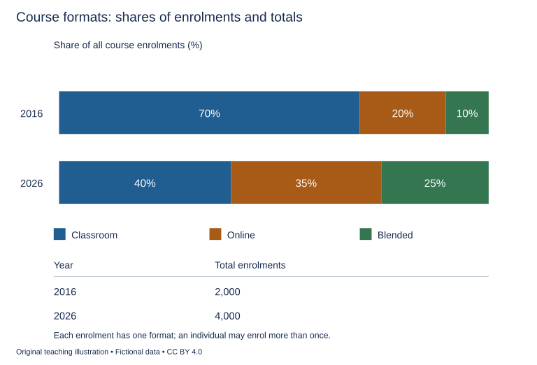
教学虚构。2016总报名2000：Classroom70%、Online20%、Blended10%；2026总4000：40%、35%、25%。每份报名只归一种模式，各年合100%；同一人可多报，独立人数未知。Blended指同一课程结合线上与面授。
任务预算（含首次审题，不额外加时）
初稿20分钟（审题规划3、写作15、检查2）；诊断15；反馈阅读与证据核查10；完整重写25；对照归档5。合计75分钟。
初稿后自评清单
- [ ] 达到最低字数；全文连贯成段，没有用项目符号代替作文。
- [ ] 概述给主要特征；数据、阶段或方位都与题图逐项相符，不推断未提供的原因。
- [ ] 每段可写出一个功能标签；例子或数据与该段要点相连。
- [ ] 核查两处词汇搭配和两处句法；如有疑点先试改再核实，无问题则记录通过证据。
- [ ] 如有影响理解的问题，记录原句；否则记通过或待核查，不填写自猜分数。
反馈与重写
打开 独立参考页（本节下方展开参考），按逐段检查和通用协议核验。重写任务：完整重写至少150词；有证据问题才改，核对数量/比例/分母。保存真实作答记录供W24证据表，不以本题完成或示例推断报考准备度。
本周重点操作（已含原预算）
在原归档时段取3分钟更新W24证据表，本题只贡献原创写说过程证据。核对份额、分母与换算；课堂份额下降并不等于报名数量下降。 核验真实T22、T24、目标总分/单项、两轮真人反馈和实际考试形式练习的来源及状态；缺关键证据写“未定”，不是自动失败，也不是自动建议报考。只有可信证据显示差距时才讨论针对性延长与复核节点，不能保分。本课完成不代表正式T24已完成或报考决定已作出。
记录表见阶段证据表，只在上述原时段填写相关行。
W24 T1A 示例、反馈与重练（首答后展开）
WS-W24-T1A 独立参考页
只在初稿完成后阅读；不是唯一答案，也没有官方分数。以下是对原创示例的教学讲评，不是对学生尚未提交作文的已完成批改。
思路拆解
比例与绝对量同时看；末年仍classroom40最大；参加人数未知，首尾核算用于证据不是成绩。
原创示例
The charts compare the shares of enrolments in classroom, online and blended courses at a training provider in 2016 and 2026. The table gives the overall number of enrolments, allowing the quantities for individual formats to be calculated.
Overall, classroom courses lost share but remained the largest category in 2026. Both online and blended learning gained share, and total enrolments doubled. As a result, the number of classroom enrolments increased despite the decline in their proportion.
In 2016, classroom teaching accounted for 70% of the provider’s 2,000 enrolments, equivalent to 1,400. Online courses represented 20%, or 400 enrolments, while blended courses had the smallest share at 10%, corresponding to 200 enrolments.
By 2026, the total had risen to 4,000. Classroom courses made up 40%, giving 1,600 enrolments, while online courses accounted for 35%, or 1,400. The remaining 25%, equivalent to 1,000 enrolments, were in blended courses. The gap between classroom and online shares therefore narrowed from fifty to five percentage points. Blended enrolments increased fivefold in number, whereas their share rose by fifteen percentage points. The data describe enrolments rather than separate individual learners.
示例正文词数：190（本项目正则计数；书信不含称呼、结束语与署名；连字符词作一词）。
逐段反馈与迁移
以下只分析上方原创示例。题干要点及图表事实必须遵守；书信、议论文的自拟身份、日期、经历和例子不是新增强制要求。按自己的合理设定核验，不为对齐范例编造经历。
- P1 2000/4000允许算各类数量，不能把enrolments当不同人。
- P2 classroom比例70→40降，但件数1400→1600升。
- P3 2016各1400/400/200，合2000。
- P4 2026各1600/1400/1000合4000；gap50→5，blended数量5倍但份额+15点。
常见失误
比例降就说人数降；算5倍占比而非数量；将登记次数充正式学习效果。
可执行反馈步骤
1. 先把自己的段落标为引入、概述/论点、支持、收束；分段可不同于示例，按功能核查，不照抄段数。
2. 对照上方逐段检查，逐项标“已有证据/缺失/不适用”。每条意见必须附自己的原句或缺失位置。
3. 按 反馈协议 的四维表记录；有争议的 AI 意见回题干、数据或语法依据核验。
4. 只选至多两项有证据的优先点执行整篇重写；如未发现问题，可改变组织或表达练迁移，但不把它标成纠错；保留原稿，禁止把示例替换为自己的作业。
重写任务
完整重写至少150词；有证据问题才改，核对数量/比例/分母。保存真实作答记录供W24证据表，不以本题完成或示例推断报考准备度。
完成后重新勾选 学生页（见本节上方学生题） 清单；将一处改前/改后及理由交给独立评阅者核查。真人评阅状态目前为“待安排”，不是已完成。
WS-W24-T1G 学生页：询问考试准备工作坊安排
周次 W24｜题型 T1G｜能力点：书信目的、要点与语气
Task 1 的 A/G 分支二选一，另一分支不计入本周作业。
使用与记录
原创教学练习，非真题、非标准化模拟，难度未校准。先完成本页再打开参考页。人物、机构、经历与数据均为教学虚构。范例的身份、地点、动作和细节不是强制要求。口语优先用真实经历或真实观察，并说明来源；没有相关经历时，可将假设回答明确标为技能练习，不伪装成亲历。不要背诵示例。自评和 AI 反馈不能代替独立真人评分，未获得真人评阅时标记“分数未确认”。
保存：任务ID、实际日期、用时、初稿或原始录音、证据化反馈、重写/重答、三条修改理由。没有学生提交物，不得填写“已批改”或“已完成训练”。
完整题干
You are interested in a short preparation workshop advertised by a training centre. Write to the centre manager. In your letter:
- explain what you hope to practise
- ask about the activities and feedback provided
- ask for the practical information you need before deciding whether to attend.
Begin your letter: Dear Sir or Madam,
Write at least 150 words. You do not need to write any addresses. Spend about 20 minutes on this task.
任务预算（含首次审题，不额外加时）
初稿20分钟（审题规划3、写作15、检查2）；诊断15；反馈阅读与证据核查10；完整重写25；对照归档5。合计75分钟。
初稿后自评清单
- [ ] 达到最低字数；全文连贯成段，没有用项目符号代替作文。
- [ ] 三个要点均展开；称呼、目的、语气和结束语适合收信人。
- [ ] 每段可写出一个功能标签；例子或数据与该段要点相连。
- [ ] 核查两处词汇搭配和两处句法；如有疑点先试改再核实，无问题则记录通过证据。
- [ ] 如有影响理解的问题，记录原句；否则记通过或待核查，不填写自猜分数。
反馈与重写
打开 独立参考页（本节下方展开参考），按逐段检查和通用协议核验。重写任务：整篇重写至少150词；学生可合理自拟希望练习的内容，不必采用示例的具体弱项。真实报名/报考判断另据证据表，不把这封虚构信当已发送或已报名。
本周重点操作（已含原预算）
在原归档时段取3分钟更新W24证据表，本题只贡献原创写说过程证据。核对目标、活动反馈与实际安排三要点；虚构询问信不能算已报名。 核验真实T22、T24、目标总分/单项、两轮真人反馈和实际考试形式练习的来源及状态；缺关键证据写“未定”，不是自动失败，也不是自动建议报考。只有可信证据显示差距时才讨论针对性延长与复核节点，不能保分。本课完成不代表正式T24已完成或报考决定已作出。
记录表见阶段证据表，只在上述原时段填写相关行。
W24 T1G 示例、反馈与重练（首答后展开）
WS-W24-T1G 独立参考页
只在初稿完成后阅读；不是唯一答案，也没有官方分数。以下是对原创示例的教学讲评，不是对学生尚未提交作文的已完成批改。
思路拆解
正式询问信，目标练习可自拟；问反馈谁提供/是否个人实际作业，费用设备日程未给就问不编。
原创示例
Dear Sir or Madam,
I saw your advertisement for a short preparation workshop and would like some further information before deciding whether to attend. I am particularly interested in practising timed writing and receiving specific comments on how clearly I respond to a task. I would also like an opportunity to practise answering spoken questions without reading from prepared notes.
Could you explain how the workshop sessions are organised? For example, will participants complete individual tasks during the session, or will most of the time be used for demonstrations? I would also like to know who provides the feedback and whether it refers to each participant’s own writing and speaking. A general explanation of useful techniques would be welcome, but individual comments are important to my decision.
Please send the dates, session length, group size and total fee, including any charge for reviewing work afterwards. I would also appreciate information about the equipment participants need to bring and whether a sample schedule is available. Once I understand the activities and practical arrangements, I will be able to judge whether the workshop fits my needs and availability.
Yours faithfully, Alex Chen
示例正文词数：182（本项目正则计数；书信不含称呼、结束语与署名；连字符词作一词）。
逐段反馈与迁移
以下只分析上方原创示例。题干要点及图表事实必须遵守；书信、议论文的自拟身份、日期、经历和例子不是新增强制要求。按自己的合理设定核验，不为对齐范例编造经历。
- P1 希望练习的内容明确，但不是用户已报名或已诊断的事实。
- P2 individual tasks/demo、反馈者/个别反馈为问题，不能假装机构官方认证。
- P3 日期时长人数总费设备和样表支持决策，不提前承诺参加。
常见失误
虚构已获分数或教师资历；把广告当保分承诺；只问价格忘训练与反馈。
可执行反馈步骤
1. 先把自己的段落标为引入、概述/论点、支持、收束；分段可不同于示例，按功能核查，不照抄段数。
2. 对照上方逐段检查，逐项标“已有证据/缺失/不适用”。每条意见必须附自己的原句或缺失位置。
3. 按 反馈协议 的四维表记录；有争议的 AI 意见回题干、数据或语法依据核验。
4. 只选至多两项有证据的优先点执行整篇重写；如未发现问题，可改变组织或表达练迁移，但不把它标成纠错；保留原稿，禁止把示例替换为自己的作业。
重写任务
整篇重写至少150词；学生可合理自拟希望练习的内容，不必采用示例的具体弱项。真实报名/报考判断另据证据表，不把这封虚构信当已发送或已报名。
完成后重新勾选 学生页（见本节上方学生题） 清单；将一处改前/改后及理由交给独立评阅者核查。真人评阅状态目前为“待安排”，不是已完成。
WS-W24-T2 学生页：迁居城市工作利弊
周次 W24｜题型 T2｜能力点：观点展开与任务回应
A/G 共用本题。
使用与记录
原创教学练习，非真题、非标准化模拟，难度未校准。先完成本页再打开参考页。人物、机构、经历与数据均为教学虚构。范例的身份、地点、动作和细节不是强制要求。口语优先用真实经历或真实观察，并说明来源；没有相关经历时，可将假设回答明确标为技能练习，不伪装成亲历。不要背诵示例。自评和 AI 反馈不能代替独立真人评分，未获得真人评阅时标记“分数未确认”。
保存：任务ID、实际日期、用时、初稿或原始录音、证据化反馈、重写/重答、三条修改理由。没有学生提交物，不得填写“已批改”或“已完成训练”。
完整题干
Many adults move from smaller towns to large cities in search of work. Do the advantages of this development outweigh the disadvantages? Give reasons and include relevant examples.
Write at least 250 words. Spend about 40 minutes on this task.
任务预算（含首次审题，不额外加时）
初稿40分钟（审题规划5、写作30、检查5）；诊断15；反馈阅读与证据核查10；完整重写35；对照归档5。合计105分钟。
初稿后自评清单
- [ ] 达到最低字数；全文连贯成段，没有用项目符号代替作文。
- [ ] 直接回答题目的所有问句，有始终一致的立场。
- [ ] 每段可写出一个功能标签；例子或数据与该段要点相连。
- [ ] 核查两处词汇搭配和两处句法；如有疑点先试改再核实，无问题则记录通过证据。
- [ ] 如有影响理解的问题，记录原句；否则记通过或待核查，不填写自猜分数。
反馈与重写
打开 独立参考页（本节下方展开参考），按逐段检查和通用协议核验。重写任务：完整重写至少250词；根据本次及真实历史稿核是否有重复问题，无证据保持未知。保存真实限时稿供独立评阅，报考/延长不能由范文字数或本包完结决定。
本周重点操作（已含原预算）
在原归档时段取3分钟更新W24证据表，本题只贡献原创写说过程证据。核对迁居工作的利弊权衡与条件；不能从议论文立场推导你个人应报名考试。 核验真实T22、T24、目标总分/单项、两轮真人反馈和实际考试形式练习的来源及状态；缺关键证据写“未定”，不是自动失败，也不是自动建议报考。只有可信证据显示差距时才讨论针对性延长与复核节点，不能保分。本课完成不代表正式T24已完成或报考决定已作出。
记录表见阶段证据表，只在上述原时段填写相关行。
W24 T2 示例、反馈与重练（首答后展开）
WS-W24-T2 独立参考页
只在初稿完成后阅读；不是唯一答案，也没有官方分数。以下是对原创示例的教学讲评，不是对学生尚未提交作文的已完成批改。
思路拆解
利弊条件式权衡，用具体机会与整体生活而非只比薪水；不是为真实用户职业/财务选择下结论。
原创示例
Moving to a large city can widen an adult’s employment options, but it can also bring higher living costs and a loss of familiar support. I believe the advantages can outweigh the disadvantages when the move is connected to realistic opportunities, although relocation should not be regarded as beneficial for everyone.
The main advantage is access to a wider range of employers and specialised roles. A person whose skills are needed by only a few organisations may have more opportunities where those organisations are concentrated. Changing jobs may also become easier without another major move. These benefits are particularly relevant when a smaller town offers little work in the person’s field. However, a larger number of vacancies does not guarantee that an individual will obtain a suitable position.
The disadvantages concern both money and daily life. Housing and travel can absorb much of the benefit from a higher salary, so comparing pay alone gives an incomplete picture. A person may also lose the practical help and social connections available near family or long-standing friends. Building a new support network takes time. For someone with responsibilities that depend on nearby relatives, this loss may be more significant than access to additional employers.
On balance, the case for moving is stronger when a person can compare a concrete opportunity with the actual costs and arrangements involved. Information about accommodation, commuting and the stability of the work is therefore important. There are also alternatives: some roles can be performed remotely, and some people may find suitable work in a regional centre rather than the largest city. These options do not eliminate the value of relocation, but they show why the decision should be based on circumstances rather than a simple assumption that bigger places are always better.
In conclusion, large cities can offer valuable employment advantages, especially for specialised work. Whether those gains exceed the disadvantages depends on the opportunity available and the effect of the move on the person’s overall living conditions.
示例正文词数：330（本项目正则计数；书信不含称呼、结束语与署名；连字符词作一词）。
逐段反馈与迁移
以下只分析上方原创示例。题干要点及图表事实必须遵守；书信、议论文的自拟身份、日期、经历和例子不是新增强制要求。按自己的合理设定核验，不为对齐范例编造经历。
- P1 opportunities与cost/support两方明确，条件不空泛。
- P2 专门岗位与雇主集中机制，机会不等于保证offer。
- P3 住房交通与支持网络多维成本，不能只算收入。
- P4 actual opportunity/cost与remote/regional替代作范围限制，不否认所有城市收益。
- P5 判断与开头一致，不自动建议任何人搬家。
常见失误
把所有大城市写成高薪低风险；忽略support；只有利弊列表没有判断依据。
可执行反馈步骤
1. 先把自己的段落标为引入、概述/论点、支持、收束；分段可不同于示例，按功能核查，不照抄段数。
2. 对照上方逐段检查，逐项标“已有证据/缺失/不适用”。每条意见必须附自己的原句或缺失位置。
3. 按 反馈协议 的四维表记录；有争议的 AI 意见回题干、数据或语法依据核验。
4. 只选至多两项有证据的优先点执行整篇重写；如未发现问题，可改变组织或表达练迁移，但不把它标成纠错；保留原稿，禁止把示例替换为自己的作业。
重写任务
完整重写至少250词；根据本次及真实历史稿核是否有重复问题，无证据保持未知。保存真实限时稿供独立评阅，报考/延长不能由范文字数或本包完结决定。
完成后重新勾选 学生页（见本节上方学生题） 清单；将一处改前/改后及理由交给独立评阅者核查。真人评阅状态目前为“待安排”，不是已完成。
WS-W24-S1 学生页
周次W24｜Part 1专项｜能力点：依据已知证据解释选择；承认信息缺口，避免无条件结论｜30分钟
使用与记录
原创教学练习，非真题、非标准化模拟，难度未校准。先完成本页再打开参考页。人物、机构、经历与数据均为教学虚构。范例的身份、地点、动作和细节不是强制要求。口语优先用真实经历或真实观察，并说明来源；没有相关经历时，可将假设回答明确标为技能练习，不伪装成亲历。不要背诵示例。自评和 AI 反馈不能代替独立真人评分，未获得真人评阅时标记“分数未确认”。
保存：任务ID、实际日期、用时、初稿或原始录音、证据化反馈、重写/重答、三条修改理由。没有学生提交物，不得填写“已批改”或“已完成训练”。
操作与预算
设备与审题3分钟；首答录音6；回听及局部转写7；示例和诊断5；不看稿重答6；归档3。共30分钟。
Part 1专项题
1. How do you choose between different activities?
2. Do you make important decisions quickly?
3. What information do you look for before joining a course?
4. Do you ever change a decision after learning more?
追问：
- When is it reasonable to delay a decision?
- Does having more choice always help?
首答6分钟内依次答4个主问，每题约40～60秒；两条追问只选1条答约30～45秒，其余时间用于转题。备用追问留给重答，不要求全部说完。
录音回听清单
- [ ] 保留首答原音，记录实际时长、是否中断、是否看稿；只报真实完成状态；短于目标时长如实记，不用沉默或无关内容凑时。
- [ ] 流利与连贯：标出两处时间戳，区分构思停顿与重复搜词，检查是否偏离问句。
- [ ] 词汇：如有模糊词或无效重复，引用一处并先解释原意再试改；无则记录清楚的表达，不为难词改变意思。
- [ ] 语法：核对经历与习惯的时态；局部转写核查；如存在妨碍理解的问题才更正，无则记通过。
- [ ] 发音：不看转写听30秒，如有听不清的词尾、重音或断句则标时间戳，无则记录清楚证据；没有音频不能判断发音。
- [ ] 展开：主要回答有具体情境或理由；追问后第一句回应追问的新角度。
重答要求
如有笼统判断，选择至多两个答案补具体情境；如没有，选择两题换角度重答并保留切题证据；重答一条追问，检查是否真正回应其新角度。
首答回听后才打开独立参考页（本节下方展开参考）。按反馈协议填至少三个时间戳，不以文字转写替代音频评阅。
本周重点操作（已含原预算）
在原归档时段取3分钟更新W24证据表，本题只贡献原创写说过程证据。依据自己的原始音频标实际时长、题目覆盖和一个清楚或待核查的时间戳；范例身份、事件和细节均不必照搬。 核验真实T22、T24、目标总分/单项、两轮真人反馈和实际考试形式练习的来源及状态；缺关键证据写“未定”，不是自动失败，也不是自动建议报考。只有可信证据显示差距时才讨论针对性延长与复核节点，不能保分。本课完成不代表正式T24已完成或报考决定已作出。
记录表见阶段证据表，只在上述原时段填写相关行。
W24 S1 示例、反馈与重练（首答后展开）
WS-W24-S1 独立参考页
原创教学示例，非真题或评分结果。未收到学生音频；以下是示例分析与待执行反馈，不能登记为已完成学生批改。
展开示例
直接回应→原因→具体情境的展开示例
Before joining a course, I would look at what participants actually do and how much time it requires. A title can sound attractive without telling me whether it suits my needs. If the information is incomplete, I would ask for a sample schedule instead of assuming that every session follows the same format.
纯口答示例词数：53；只计MODEL标记内实际英文口答，不含标题、标签、说明。词数不能证明录音时长或流利度。
展开与反馈
本周能力：依据已知证据解释选择；承认信息缺口，避免无条件结论。
1. 示例先表态，再说明偏好理由，最后提供条件或场景。检查自己是否用一个词回答后就结束。
2. 找到一个具体细节：物品、动作、对话或地点。用真实经历或注明来源的真实观察替换；假设回答须标为技能练习。保持切题，不强制复制范例细节，不照搬身份与经历。
3. 追问要重新回应，不能继续背长答。首句先回答追问，再用一条理由支持。
4. 如存在听不清或语法影响理解处，标原音时间戳；否则标一处清楚的原音证据；先尝试最小修正。不要把自然停顿一概当成错误，或用加快语速掩盖逻辑断裂。
常见失误
空泛形容词替代具体过程；给了经历却没解释为什么重要；Part 3只有个人故事没有一般解释；AI只看转写就判断发音。逐项回原音核对，不能凭范例推断自己已达到某个分数。
可执行重答与反馈
如有笼统判断，选择至多两个答案补具体情境；如没有，选择两题换角度重答并保留切题证据；重答一条追问，检查是否真正回应其新角度。
填写反馈协议四维表，附三个时间戳和原话证据。如存在，选至多一个内容问题与一个语言问题先修；否则记录清楚的证据并做迁移重答；重答后并排听两段，记录改善与仍未解决之处。自评与AI不能替代独立真人评分；独立评阅目前待安排，分数未确认。
WS-W24-S2 学生页
周次W24｜Part 2专项｜能力点：依据已知证据解释选择；承认信息缺口，避免无条件结论｜30分钟
使用与记录
原创教学练习，非真题、非标准化模拟，难度未校准。先完成本页再打开参考页。人物、机构、经历与数据均为教学虚构。范例的身份、地点、动作和细节不是强制要求。口语优先用真实经历或真实观察，并说明来源；没有相关经历时，可将假设回答明确标为技能练习，不伪装成亲历。不要背诵示例。自评和 AI 反馈不能代替独立真人评分，未获得真人评阅时标记“分数未确认”。
保存：任务ID、实际日期、用时、初稿或原始录音、证据化反馈、重写/重答、三条修改理由。没有学生提交物，不得填写“已批改”或“已完成训练”。
操作与预算
准备、首答录音及追问5分钟；回听及局部转写8；示例与诊断5；关键词重组3；重答及追问5；归档4。共30分钟。
Part 2专项任务卡
Describe a time you waited for more information before making a choice.
Say:
- what choice you faced
- what information was missing
- how you obtained it
- and explain whether waiting helped.
准备1分钟，说1～2分钟。只记5个关键词，不预写句子。
收尾追问：
- Could waiting have had a disadvantage?
- Would you use the same approach again?
每轮5分钟包含准备1分钟、连续说1～2分钟、两条收尾追问选1条答20～30秒及转题缓冲；另一条可用于重答。不把备用题全部加进本轮。
录音回听清单
- [ ] 保留首答原音，记录实际时长、是否中断、是否看稿；只报真实完成状态；短于目标时长如实记，不用沉默或无关内容凑时。
- [ ] 流利与连贯：标出两处时间戳，区分构思停顿与重复搜词，检查是否偏离问句。
- [ ] 词汇：如有模糊词或无效重复，引用一处并先解释原意再试改；无则记录清楚的表达，不为难词改变意思。
- [ ] 语法：核对经历与习惯的时态；局部转写核查；如存在妨碍理解的问题才更正，无则记通过。
- [ ] 发音：不看转写听30秒，如有听不清的词尾、重音或断句则标时间戳，无则记录清楚证据；没有音频不能判断发音。
- [ ] 展开：主要回答有具体情境或理由；追问后第一句回应追问的新角度。
重答要求
用五个关键词重答完整任务卡1～2分钟，再从两条追问中选1条答20～30秒；如缺具体细节则补、如有无关背景则删；若已清楚，换表达但保持事实。比较首答与重答，不背示例。
首答回听后才打开独立参考页（本节下方展开参考）。按反馈协议填至少三个时间戳，不以文字转写替代音频评阅。
本周重点操作（已含原预算）
在原归档时段取3分钟更新W24证据表，本题只贡献原创写说过程证据。依据自己的原始音频标实际时长、题目覆盖和一个清楚或待核查的时间戳；范例身份、事件和细节均不必照搬。 核验真实T22、T24、目标总分/单项、两轮真人反馈和实际考试形式练习的来源及状态；缺关键证据写“未定”，不是自动失败，也不是自动建议报考。只有可信证据显示差距时才讨论针对性延长与复核节点，不能保分。本课完成不代表正式T24已完成或报考决定已作出。
记录表见阶段证据表，只在上述原时段填写相关行。
W24 S2 示例、反馈与重练（首答后展开）
WS-W24-S2 独立参考页
原创教学示例，非真题或评分结果。未收到学生音频；以下是示例分析与待执行反馈，不能登记为已完成学生批改。
展开示例
原创长答示例（时长须以个人实际录音测量）
I once waited for more information before choosing a weekend art workshop. There were two options at a local centre, and both descriptions said that beginners were welcome. One focused on drawing objects, while the other involved working with clay.
I was interested in the clay workshop, but I could not tell whether the listed fee included materials or whether participants needed to return on another day to collect their work. Since I was only free that weekend, the second point mattered quite a lot. I sent the centre a short enquiry and kept the drawing workshop as an alternative.
The reply explained that the clay pieces would need to be fired later and collected the following week. A friend could have collected mine, but arranging that would have added another complication. I eventually chose the drawing session, where I could take my work home on the same day.
Waiting helped because the missing information was directly connected to my schedule. It did not prove that drawing was a better activity in general. It simply allowed me to choose the option that fitted my circumstances at that time.
纯口答示例词数：188；只计MODEL标记内实际英文口答，不含标题、标签、说明。词数不能证明录音时长或流利度。
展开与反馈
本周能力：依据已知证据解释选择；承认信息缺口，避免无条件结论。
1. 长答示例按背景、行动/观察、变化与意义组织。每段都推进内容；检查自己是否只有背景而没有具体事件。
2. 找到一个具体细节：物品、动作、对话或地点。用真实经历或注明来源的真实观察替换；假设回答须标为技能练习。保持切题，不强制复制范例细节，不照搬身份与经历。
3. 追问要重新回应，不能继续背长答。首句先回答追问，再用一条理由支持。
4. 如存在听不清或语法影响理解处，标原音时间戳；否则标一处清楚的原音证据；先尝试最小修正。不要把自然停顿一概当成错误，或用加快语速掩盖逻辑断裂。
常见失误
空泛形容词替代具体过程；给了经历却没解释为什么重要；Part 3只有个人故事没有一般解释；AI只看转写就判断发音。逐项回原音核对，不能凭范例推断自己已达到某个分数。
可执行重答与反馈
用五个关键词重答完整任务卡1～2分钟，再从两条追问中选1条答20～30秒；如缺具体细节则补、如有无关背景则删；若已清楚，换表达但保持事实。比较首答与重答，不背示例。
填写反馈协议四维表，附三个时间戳和原话证据。如存在，选至多一个内容问题与一个语言问题先修；否则记录清楚的证据并做迁移重答；重答后并排听两段，记录改善与仍未解决之处。自评与AI不能替代独立真人评分；独立评阅目前待安排，分数未确认。
WS-W24-S3 学生页
周次W24｜三部分全流程｜能力点：依据已知证据解释选择；承认信息缺口，避免无条件结论｜60分钟
使用与记录
原创教学练习，非真题、非标准化模拟，难度未校准。先完成本页再打开参考页。人物、机构、经历与数据均为教学虚构。范例的身份、地点、动作和细节不是强制要求。口语优先用真实经历或真实观察，并说明来源；没有相关经历时，可将假设回答明确标为技能练习，不伪装成亲历。不要背诵示例。自评和 AI 反馈不能代替独立真人评分，未获得真人评阅时标记“分数未确认”。
保存：任务ID、实际日期、用时、初稿或原始录音、证据化反馈、重写/重答、三条修改理由。没有学生提交物，不得填写“已批改”或“已完成训练”。
操作与预算
D5：设备与流程准备2分钟，连续首答11～14分钟，余14～17分钟完整回听标记，共30分钟。D6：局部转写诊断10，阅读示例与调整5，重答与新追问10，对照归档5，共30分钟。合计60分钟。
连续三部分全流程（首答不可看参考）
找同伴读题，或独练逐题揭示。完整首答11～14分钟，中途不暂停纠错。模拟同伴不是认证考官；自行读题的练习记录不能冒充真实面试。
Part 1：4～5分钟
1. Do you enjoy setting personal goals?
2. Do you prefer short projects or longer ones?
3. How do you keep track of a project?
4. Do you celebrate finishing something?
5. What do you do when a plan takes longer than expected?
6. Who do you talk to about future plans?
可按回答追加 Why? / Can you give an example? 到时转下部分，不强行说完全部备用问题。
Part 2：3～4分钟（含准备）
Describe a project whose next step you had to decide.
Say:
- what the project was
- what had already been done
- what options you considered
- and explain how you decided what to do next.
准备1分钟，连续说1～2分钟。收尾追问：
- Could the decision change later?
- What information would have made the choice easier?
Part 3：4～5分钟
1. What evidence should people consider before starting a major project?
2. Why do people sometimes continue with an unsuitable plan?
3. When is extending a deadline reasonable?
4. How can people compare progress with their original goals?
根据回答追加追问：
- Can an uncertain result still be useful?
- What if different measures of progress disagree?
Part 2收尾追问两条选1条，答20～30秒，含在3～4分钟内。Part 3从4个主问中选3个，每个约60～75秒，再从2条追问中选1条答30～45秒；连同读题控制在4～5分钟，到时结束。题库数量不是必答数量。
录音回听清单
- [ ] 保留首答原音，记录实际时长、是否中断、是否看稿；只报真实完成状态；短于目标时长如实记，不用沉默或无关内容凑时。
- [ ] 流利与连贯：标出两处时间戳，区分构思停顿与重复搜词，检查是否偏离问句。
- [ ] 词汇：如有模糊词或无效重复，引用一处并先解释原意再试改；无则记录清楚的表达，不为难词改变意思。
- [ ] 语法：核对经历与习惯的时态；局部转写核查；如存在妨碍理解的问题才更正，无则记通过。
- [ ] 发音：不看转写听30秒，如有听不清的词尾、重音或断句则标时间戳，无则记录清楚证据；没有音频不能判断发音。
- [ ] 展开：主要回答有具体情境或理由；追问后第一句回应追问的新角度。
重答要求
在10分钟重答时段：选择一个有核查需要的Part 1主问答约1分钟；Part 2准备1分钟、答1～2分钟，再选一条收尾追问答20～30秒；Part 3只选一个主问答约1分钟，再选一条未用追问答30～45秒。余时用于换题和回听；无薄弱项则选已通过题换角度练迁移，保持真实细节，不复述范例。局部重答不另计全流程。
首答回听后才打开独立参考页（本节下方展开参考）。按反馈协议填至少三个时间戳，不以文字转写替代音频评阅。
本周重点操作（已含原预算）
在原归档时段取3分钟更新W24证据表，本题只贡献原创写说过程证据。依据自己的原始音频标实际时长、题目覆盖和一个清楚或待核查的时间戳；范例身份、事件和细节均不必照搬。 核验真实T22、T24、目标总分/单项、两轮真人反馈和实际考试形式练习的来源及状态；缺关键证据写“未定”，不是自动失败，也不是自动建议报考。只有可信证据显示差距时才讨论针对性延长与复核节点，不能保分。本课完成不代表正式T24已完成或报考决定已作出。
记录表见阶段证据表，只在上述原时段填写相关行。
W24 S3 示例、反馈与重练（首答后展开）
WS-W24-S3 独立参考页
原创教学示例，非真题或评分结果。未收到学生音频；以下是示例分析与待执行反馈，不能登记为已完成学生批改。
展开示例
Part 2原创展开示例（个人语速不同，不能以词数推录音时长）
A project whose next step I had to decide was a small collection of family recipes. I had typed several handwritten recipes into a document so that relatives could read them more easily. Once the first version was ready, I considered printing a booklet or asking everyone to check it before doing anything else.
The document looked complete, but two recipes used expressions such as a small cup without explaining the size. I also did not know whether I had copied one cooking temperature correctly. Printing immediately would have been satisfying, yet it might have made those uncertain details harder to correct later.
I decided to send the draft to the relatives who had provided the recipes and ask specific questions about those points. I marked the uncertain measurements clearly, so nobody would mistake them for confirmed instructions. While waiting, I worked on the contents page, which did not depend on their answers.
That choice let the project continue without pretending that every part was finished. If the replies confirmed the details, printing could become the next step. If they raised further questions, I would revise the draft first. The decision depended on the information available, rather than simply on how long I had already spent.
Part 3观点→理由→条件展开示例
An uncertain result can still be useful if it shows exactly what remains unknown. For example, a trial might reveal that a method is practical without showing whether it works reliably over time. That supports a further check, rather than an immediate claim of success or failure. When measures disagree, I would examine whether they assess the same goal and whether the conditions were comparable before making a decision.
纯口答示例词数：275；只计MODEL标记内实际英文口答，不含标题、标签、说明。词数不能证明录音时长或流利度。
展开与反馈
本周能力：依据已知证据解释选择；承认信息缺口，避免无条件结论。
1. 长答示例按背景、行动/观察、变化与意义组织。每段都推进内容；检查自己是否只有背景而没有具体事件。
2. 找到一个具体细节：物品、动作、对话或地点。用真实经历或注明来源的真实观察替换；假设回答须标为技能练习。保持切题，不强制复制范例细节，不照搬身份与经历。
3. Part 3示例不把个人选择强加给所有人；先讲机制，再说明条件或例外。检查自己的追问答案是否直接回应新问题。
4. 如存在听不清或语法影响理解处，标原音时间戳；否则标一处清楚的原音证据；先尝试最小修正。不要把自然停顿一概当成错误，或用加快语速掩盖逻辑断裂。
常见失误
空泛形容词替代具体过程；给了经历却没解释为什么重要；Part 3只有个人故事没有一般解释；AI只看转写就判断发音。逐项回原音核对，不能凭范例推断自己已达到某个分数。
可执行重答与反馈
在10分钟重答时段：选择一个有核查需要的Part 1主问答约1分钟；Part 2准备1分钟、答1～2分钟，再选一条收尾追问答20～30秒；Part 3只选一个主问答约1分钟，再选一条未用追问答30～45秒。余时用于换题和回听；无薄弱项则选已通过题换角度练迁移，保持真实细节，不复述范例。局部重答不另计全流程。
填写反馈协议四维表，附三个时间戳和原话证据。如存在，选至多一个内容问题与一个语言问题先修；否则记录清楚的证据并做迁移重答；重答后并排听两段，记录改善与仍未解决之处。自评与AI不能替代独立真人评分；独立评阅目前待安排，分数未确认。
许可
原创文字：RayXBuilds and contributors，CC BY 4.0。此页由已验收分课汇编，调整了标题和导航；题干、正文和答案内容保留。公开第三方音频未包含。
回到顶部
U35 阅读复盘与写作口语反馈协议
W21–24 训练、复盘与延迟复测
每周必做180分钟：首答60、证据复盘60、词汇长句30、48小时后复测30。合卷替代三课首答，不重复计量。下列表格填写纳入既定复盘时间；每课80–100词开放短文选做另加15分钟，每周最多45分钟。计划尚未经过真实学习者计时验证；空白记录不代表已经完成。
W21 限时作答与最终核对
合卷总限时60分钟。可先按每篇18分钟、最后6分钟检查起步，再按实际困难调整；检查时间属于60分钟，不另加誊写或查错时间。使用单课时，每课20分钟可分18分钟首答、2分钟检查。全卷与单课首答二选一，不将同一材料重复计作陌生练习。
核对顺序：检查1–40号是否漏答和错位；核对题型要求；检查填空的正文拼写、单复数、词数上限以及与题干冠词的配合。仍无证据的题标为待复盘，不在时间结束后偷偷补作首次答案。记录检查前后改动，核对是修复错误还是把正确答案改错。
| 课/题号 | 首次作答开始/结束 | 停滞或漏答 | 检查前答案 | 检查后答案 | 改动依据 | 核对结果 |
| 待实做 |
这里训练的是通用限时与答案核对习惯。所选真实考试的版本、形式、官方界面、操作演练与实际完成记录见 真实考试界面登记（见U35对应表格），当前未选定、未核验、未完成。Markdown练习页不代表真实机考界面训练，阅读本说明不算完成操作演练。
W22 原创技能检查
| 题型 | 首次正确/实做题数 | 错题号 | 证据/实际错因 | 48小时复测正确/复测题数 | 是否重复错误 |
| 单选 |
| YES/NO/NOT GIVEN |
| 段落信息匹配 |
| 句子/摘要填空 |
先按60分钟完成40题，之后60分钟逐题找依据，30分钟处理词汇与长句，48小时后30分钟遮住解析复测错题并抽至少两道原本正确题。原作答、复测分开记录；重做熟题不计为新陌生卷。正式T22需要独立来源及实做证据，见 正式T22/T24登记（见U35对应表格），当前未完成；原创正确数不换算雅思等级。
W23 依据真实错题补缺
当前无可核验学习者答卷，状态为待诊断；FOCUS-SELECTION.json 的 evidence_records 与 selected_targets 均为空。题库中出现某种题型不证明学习者在该类型有弱项。
优先使用W21/W22或更早的真实作答记录，写明来源、题号、原答案和证据。如果没有记录，先完成本周首答，再在既定复盘时间内诊断。区分定位、句法、指代、观点归属、范围、拼写/词数和漏答等原因；没有证据不强行命名弱项。选择具体且能在本周验证的补缺目标，不把“多练阅读”当作修复动作。
| 记录来源/日期 | 课号及本课题号/合卷题号 | 原答案 | 正确及可接受形式 | 最短证据 | 错因及依据 | 补缺动作 | 延迟验证结果 |
| 待实做或提供记录 |
| 已选补缺目标 | 支持记录 | 预期可观察改进 | 本周证据复盘中如何处理 | 延迟复测是否重现 |
| 尚未选择 |
本周首答仍为三篇40题，补缺安排在原有60分钟证据复盘、30分钟词汇长句和30分钟复测内，不额外增加必做时长。若只是记住答案而无法重新指出证据，不记录为已修复。
W24 学习记录与正式评估分栏
填写 学习记录与目标（见U35对应表格）：原创首答、熟题延迟复测、真实T22、真实T24、用户目标分数分别记录。没有实际答卷，不填成绩；没有目标，不替用户设定；没有正式陌生卷，不用原创卷补位。目标分数是目标，不是结果。
W24原创40题的复盘可描述本材料上的正确数、错因和证据定位变化。正式T22/T24未完成或证据不足时，报考/达标结论保持“证据不足，暂不判断”。不得以课程完成、单次原创高正确率或熟题复测改善宣称达标、可以报考或能够保分。
| 周 | 首答实际分钟 | 证据复盘分钟 | 词汇长句分钟 | 延迟复测日期/分钟 | 必做合计 | 选做分钟（另列） |
| W21 |
| W22 |
| W23 |
| W24 |
写说反馈协议与交接表
适用于WS-W21～W24全部课项。在题目所列预算内完成。这里是待执行流程与空白记录模板，不是已完成批改。自评和AI不能代替独立真人评分；没有独立评阅时，成绩栏只能写“分数未确认”。
写作：先证据后修改
1. 保留初稿和限时记录；先逐项核题干。A类数字回图表，流程核顺序与分支，地图核方位和替换/扩建，G类逐一标三要点，Task 2标题目问句与立场。
2. 给每段一个功能标签，检查是否缺概述、缺例子或缺结论。使用课内逐段讲评时按功能对齐，不要求复制范文段数。
3. 四维表至少填四条证据，不需要每项都有错误；可写“证据充分”并引用原句。优先解决任务遗漏与理解障碍，再处理语言精确性。
4. 在每题10分钟反馈时段看示例、核查争议；只选至多两项有证据的主要问题；无证据标待核查，不凑数量。按学生页要求整篇重写，保持原意与题干事实，不用示例替代原稿。
5. 用5分钟对照重写：写三条“原句→新句→理由”，其中至少一条说明内容或组织的修改/保留理由；若没有错误可记录迁移表达，不制造缺陷。再次检查最低字数和所有题干要点。
| 维度 | 初稿原句/段号或缺失位置 | 具体问题及依据 | 修改行动 | 重写证据 | 来源 |
| 任务完成/回应 | 待填 | 待填 | 待填 | 待填 | 自评/AI/真人姓名与日期 |
| 连贯与衔接 | 待填 | 待填 | 待填 | 待填 | 待填 |
| 词汇资源 | 待填 | 待填 | 待填 | 待填 | 待填 |
| 语法范围与准确性 | 待填 | 待填 | 待填 | 待填 | 待填 |
可给AI的请求（须附完整题干和自己的真实初稿）：
> 按任务回应、连贯、词汇、语法给证据化建议。每条引用我的原句或指出缺失的题干要点，说明为什么影响表达，给最小修改方向。区分确定错误与可选改写。只在确有证据时提至多两项最高优先级问题，否则说明通过或待核查，不给分数，不声称真人评分，不替我重写整篇。Task 1数据只能来自题面。不能确认的地方明确标记待核查。
核查AI：先对照数据和题干，再判断改写是否改变原意。AI意见有矛盾时保留争议并交真人核查；不能把AI自信程度当作正确性。
口语：音频优先
1. 保留完整首答。首次回听不看转写，标记听不清、断裂和偏题的时间戳。
2. 局部转写最多60～90秒，核对原音，尤其是自动转写可能改掉的语法错误。转写只辅助诊断，不替代录音。
3. 每项意见附时间戳；如存在问题，优先处理一个展开问题与一个语言或发音问题；如无则记通过证据并练迁移，不编造缺陷。发音判断需实际音频，不能依据文字想象。
4. 只看关键词重答，使用课内新追问检验能否迁移。比较原音和重答，不把慢读一份修改稿算作即兴进步。
| 维度 | 首答时间戳与听到的现象 | 改善动作 | 重答时间戳与证据 |
| 流利与连贯 | 待填 | 待填 | 待填 |
| 词汇资源 | 待填 | 待填 | 待填 |
| 语法范围与准确性 | 待填 | 待填 | 待填 |
| 发音与可理解度 | 待填；没有音频不得判断 | 待填 | 待填 |
可给AI的请求：
> 若能处理音频，请引用时间戳，如存在，指出至多两处最影响理解的问题；没有可靠证据则说明待核查，并用我的具体内容示范如何扩展或澄清。不要给官方分数。若只能看到转写，只反馈文本中的内容、词汇与语法，明确不能判断发音、真实停顿或口语流利度；不要编造听过录音。
真人交接与验收（待执行）
交付包：任务ID、完整题干/数据、未修改初稿、重写稿及修改理由；口语完整原始音频、实际时长、题目、局部转写和重答片段。请求评阅者指出四个维度的证据，区分限时初稿表现与辅导后表现，并反馈下一轮最优先任务。若给估分，记录评阅者资历、日期与不确定性，不能标为官方考试成绩。
登记：评阅者____；日期____；已收到材料____；意见文件____；分歧与待核实____；学生落实证据____。空栏就是待完成，不预填虚构记录。尚未有正式目标分数与可信独立评估时，只汇报具体改进和未解决问题，不做达标或提分保证。
W23第二轮交接与W24复核
将第一轮真实意见、原题/图、未改初稿及完整首答原音、限时条件、后续版本和三个修改/保留理由一起交接。只选择一个有具体证据的核查问题；没有明确问题也可请求确认清楚之处，不强造错误。范例里的修订、导师与经历都是教学虚构，不得作为交接证据。
在阶段证据表区分待安排、已交接待评、已收到意见、已落实待复核。没有第一轮，第二轮比较仍待补；AI/自评不算独立真人轮次。评阅者如提供估分须注明依据和不确定性，不能叫官方考试分。W22与W24仍分别需要针对各自限时初稿和完整原音的真人意见；收到W23反馈不等于自动评过T24。
交接整理占各课既有反馈/诊断时间，状态填写占归档中的3分钟；回复未到不虚报完成。会谈若超预算，记录真实用时并顺延或由总控替换任务，不能隐形叠加。
W21～24 阶段证据与真人交接
这是空白记录工具，不是学生已取得的成绩或反馈。在各课原归档时段取3分钟填相关行，逐课累计；查原稿/原音占原诊断时间，不新增一套题。空白、未完成、未知与有证据不达标是不同状态。实际成绩、录音与评阅文件保存在个人记录中，本课程只提供字段。
W21
先确认计划报考地点实际提供且自己选择的考试形式、A/G类型与写作输入方式；目前均未提供，不替学生选择。纸笔或普通编辑器可用于本课限时练习，不能证明熟悉真实考试界面。
| 项目 | 真实记录 | 当前状态 |
| 目标考试类型、地点及形式 | 待填；来源/核实日期 | 未定 |
| 本课使用工具与输入方式 | 纸笔/键入；具体工具；自动纠错/预测输入等辅助是否开启 | 待作答 |
| Task 1＋Task 2连续首答 | 开始/结束时间；20＋40分钟；各词数及是否全部完成 | 待作答 |
| 漏项核查 | 图表特征、信件三要点或议论文问句；原稿位置 | 有遗漏/通过/待核查，不能预设 |
| 拼写核查 | 实际原词、依据、修改或保留；分别在T1末2分钟、T2末5分钟 | 待核查 |
| 口语限时与覆盖 | 题号、所选追问、实际时长、是否看稿/中断、时间戳 | 待录制 |
| 所选形式的官方熟悉材料/真实界面操作 | 平台及网址、版本或日期、实际使用方式、已操作项目、证据 | 未完成/未确认 |
实际界面练习的待办：从官方渠道确认与所选形式匹配的熟悉材料；亲自核对看题、切题、输入或纸上作答、修改、计时和提交等适用操作；逐项登记实际完成与不适用，不预设所有平台有相同按钮。只阅读介绍、在本客户端作答、查看SVG或用普通编辑器，都不能勾选“真实界面操作完成”。即使完成官方熟悉材料，也需记录它与所选考试安排的已知差异；不能声称与考场完全相同。
本批没有进入官方熟悉界面，没有替学生做上述操作。可用入口见来源与待核验界面入口。操作任务如需时间，由总控在既有训练时段替换安排并登记被替换任务；不把它隐藏为额外加课。尚未落实时保持未完成。
W22
原创阶段检查只观察本课表现，与正式T22分表。这里“正式T22/T24”指U04预留的合法、未见整套阶段模拟，不等于参加正式考试，也不等于取得官方成绩单。
原创检查（按所选分支每周五项）
每个任务只记录一个代表性证据，可引用已保存的四维反馈，不重复抄写整表。
| 任务 | 原始作品、日期与限时 | 已通过或待核的原句/时间戳 | 修改/保留及验证 | 来源 |
| W22 Task 1 A或G | 待作答 | 待填 | 待填 | 原创，自评/AI/真人另标 |
| W22 Task 2 | 待作答 | 待填 | 待填 | 待填 |
| W22 S1 | 待录制 | 待填 | 待填 | 待填 |
| W22 S2 | 待录制 | 待填 | 待填 | 待填 |
| W22 S3全流程 | 待录制 | 待填 | 待填 | 待填 |
真实目标
| 目标总分 | 听力最低要求 | 阅读最低要求 | 写作最低要求 | 口语最低要求 | 目标来源、用途及确认日期 |
| 未定 | 未定 | 未定 | 未定 | 未定 | 未提供 |
单项没有特定要求时须由真实需求明确写“无特定单项要求”，不能把空白当零分要求。
正式T22登记
卷源机构/书名/版次/卷号或网址____；合法获取方式____；A/G____；听读写是否齐全____；答案、音频与文本____；口语题源____；是否事前见过（分科）____；日期____；模式与输入方式____。当前：材料与作答未确认。
实际条件：每科开始结束时间____；是否按对应规则连续限时____；查词/暂停/重听/提示/辅助工具____；漏答/超时____；原始答卷与原音路径____。条件有差异就明确标注，不悄悄记成可比陌生整卷。
| 指标 | 真实结果 | 评分/换算依据及日期 | 与目标比较 |
| 听力 | 原始分__/40；单项__ | 对应答案及评分依据；未有则未知 | 未定 |
| 阅读 | 原始分__/40；A/G单项__ | 对应答案与类型；未有则未知 | 未定 |
| 写作 | 单项未确认 | 两篇限时初稿、四维意见、真人评阅者及资历/日期 | 未定 |
| 口语 | 单项未确认 | 完整原音、四维意见、真人评阅者及资历/日期 | 未定 |
| 总分 | 未确认 | 四项齐全后按官方说明记录计算依据；模考估计非官方成绩 | 未定 |
写说只记录可信真人评阅结果，并保留不确定性；不能凭示例词数、完成次数或AI意见补单项。任何一项未知，总体目标判断仍未定。本表不负责制作听读材料或替其他科目填分。
正式T22若在本周落实：写作两题替换本周连续60分钟首答，相关诊断、反馈、整篇重写和归档仍占原180分钟；本包对应原创两题改备用。正式口语三部分替换S3既有首答和复盘时段，总预算仍120分钟；S1/S2按原计划。不能把正式和原创都计作首次完成。整套听读写由总控跨科排程，本站写说任务不能代计全卷完成。
W23
第二轮真人反馈必须有真实交接和返回意见。没有第一轮可核查记录时，先完成首轮交接；不得靠编号把首次意见变成第二轮。
| 项目 | 第一轮 | 第二轮/本轮 |
| 评阅者与相关资历 | 待提供 | 待安排 |
| 交接日期/收到材料确认 | 未确认 | 未确认 |
| 限时Task 1＋Task 2初稿、题干/图、真实条件 | 待提供 | 待提供 |
| 完整口语原音、题目、时长与条件 | 待提供 | 待提供 |
| 四维意见、原句/时间戳与意见日期 | 未收到 | 未收到 |
| 重写/重答、修改理由与版本日期 | 待提供 | 待提供 |
| 一个重点核查问题 | 待填 | 待填 |
| 已确认改善/持续问题/意见分歧 | 未知 | 未知 |
在原写作反馈10分钟/口语诊断时段整理交接包；在原归档3分钟记状态。四维表用反馈协议，不用另抄一套。具体问题须来自真实作品，例如“此处概述能否由图支持”或“此时间戳是否听清”，也可请核实已清楚的证据；示例问题不是预设你的错误。
收到回复前标“待评”，收到后记录实际日期；比较限时首答与辅导后稿，不能用后者替换首答成绩。未收到反馈时仍可完成原预算内的自评重写，但第二轮真人项继续待完成。有分歧请原评阅者核对依据，不能靠AI多数票宣布已解决。外部教师用时和额外会谈另记；超出学生本周预算的部分顺延或由总控替换安排，不隐形加量。
W24
在原归档时段汇总，正式T24采用与T22相同的替换规则。先给T24独立登记，不能复制T22的分数或条件。
T24卷源与合法获取____；A/G____；听读写完整性/答案音频____；口语题源____；分科陌生程度____；日期/模式____；各科真实用时与查词/暂停/提示情况____；原始答卷/原音____。当前均未确认。
| 指标 | T22真实记录 | T24真实记录 | 目标要求 | 是否可比、是否满足及证据 |
| 听力原始分/40及单项 | 未提供 | 未提供 | 未定 | 未定 |
| 阅读原始分/40及A/G单项 | 未提供 | 未提供 | 未定 | 未定 |
| 写作单项与真人原稿意见 | 未确认 | 未确认 | 未定 | 未定 |
| 口语单项与真人原音意见 | 未确认 | 未确认 | 未定 | 未定 |
| 总分及依据 | 未确认 | 未确认 | 未定 | 未定 |
| 各任务限时完成且未靠查词/暂停/提示 | 未确认 | 未确认 | 如实核查 | 未定 |
| 写说两轮真人反馈、落实及尚存分歧 | 未提供 | 未提供 | 独立证据支持 | 未定 |
| 所选考试形式/实际界面练习 | 未确认 | 未确认 | 真实操作与差异已登记 | 未定 |
保留W24所选Task 1、Task 2及S3真实作品，追加到上述原创建档表的副本；若采用正式任务替换则标“本周原创未做，正式替换”，不重复计数。W22与W24均需合适真人评阅两篇初稿与完整原音，W23的第二轮交接不能自动代填T24评价。
报考或延长判断
以下是U04的项目检查规则，不是官方保分标准，也不自动执行报名。
1. 目标、真实T22/T24、限时陌生条件、独立写说反馈等关键项任一缺失或不可比：结论“未定”。列缺项及补证动作；证据不足不等于不达标，不用缺分推测最弱项，也不自动建议报考。
2. 可信、可比结果显示未满足真实总分或单项要求：列具体差距和原稿/原音证据，讨论延长4～8周及反馈、合法新材料库存与陌生复核节点。若目标还未明确不能走此分支。具体周期结合差距、可用时间与真人意见；不保证延长后达分，本批不自行扩周。
3. 最近两次未见整卷（在此核对T22/T24）均按时完成，未借助查词、暂停或答案提示，均满足目标总分和每项要求，且有独立写说反馈支持：可记“满足项目报考检查条件，待本人结合用途、日程和费用作决定”。还须说明考试形式熟悉状态及已知局限。不能自动记“已报名”，也不能保证正式成绩。
4. 结果/反馈相互矛盾：保留差异与条件，结论仍未定；请评阅者核实或安排新的合法陌生检查，而非挑较高分宣布达标。
当前判断：未定。理由：未提供目标、T22/T24真实结果及真人意见。已证实学习变化____；待补证据____；下一步与时间安排____；是否延长及依据____；本人最终决定与日期____。空栏不视为默认同意或完成。
所选真实考试界面与操作演练
当前：所选考试版本和形式未记录；真实界面未核验；官方操作演练未完成。本文是待办登记，不是平台教程，也不声称任何当前界面已被验证。
| 字段 | 证据或实际记录 |
| 用户实际选择的考试版本、形式与地区 | 待提供/确认 |
| 对应官方说明及练习界面链接、核验日期 | 未记录 |
| 界面版本与考试选择是否对应 | 未核验 |
| 答题、跳题、返回、修改、标记与最终检查等适用操作 | 以该官方界面实际支持项为准，未核验 |
| 真实操作演练日期、时长、完成项和遇到的问题 | 未完成 |
| 演练后能否独立完成适用操作的记录 | 未完成 |
后续应根据实际考试选择查验当时适用的官方说明，再记录操作演练。不得把本地Markdown的题号、手工答题表或阅读教程算作真实考试界面的完成证据。本批180分钟为原创阅读教学预算；本表登记纳入复盘，未来实际界面演练的时间另行记录和协调，不隐含塞入或声称已经完成。
正式T22/T24陌生卷登记
W22与W24原创检查不替代正式T22/T24。本批只准备原创教学材料；两次正式评估当前均未选定、未获取、未施测，不能计为完成。
| 字段 | T22 | T24 |
| 官方来源及具体卷名 | 未选定 | 未选定 |
| 合法获取方式与来源证据 | 未获取 | 未获取 |
| 学习者此前未接触确认 | 未确认 | 未确认 |
| 实际施测日期、限时及条件 | 未施测 | 未施测 |
| 原始答卷与官方答案 | 无 | 无 |
| 原始正确数 | 不填 | 不填 |
| 适用官方评分方法和核验 | 未核验 | 未核验 |
| 复盘与后续动作 | 待真实答卷 | 待真实答卷 |
后续由总控取得对应证据并登记，不复制未授权全文，不用已学原文或熟题重做冒充陌生卷。W24须把两次正式记录、原创学习记录和用户目标分别放入学习记录与目标（见U35对应表格）。当前证据不足，不作报考、达标或保分结论。
W24 学习记录、正式证据与目标
当前结论：证据不足，暂不判断报考或达标。没有学习者实做记录、正式T22/T24记录或用户目标分数；本表均待填写。
原创学习表现（只描述本课程材料）
| 材料 | 首次日期/条件 | 原始答卷位置 | 正确数/40 | 主要错因和证据 | 延迟复测日期/抽题范围 | 复测结果 |
| W21原创 |
| W22原创检查 |
| W23原创 |
| W24原创检查 |
首答与延迟重做熟悉材料分栏；不相加为新卷数量，不将正确数转换为雅思等级。已有答案记忆可能影响复测，需核验能否重新定位证据。
正式陌生卷证据（独立于原创练习）
| 评估 | 官方来源/具体卷名 | 合法获取 | 此前未接触确认 | 实际日期/限时条件 | 原始答卷/官方答案位置 | 原始正确数 | 适用官方评分依据及记录 |
| T22 | 未选定 | 未获取 | 未确认 | 未施测 | 无 | 不填 | 未核验 |
| T24 | 未选定 | 未获取 | 未确认 | 未施测 | 无 | 不填 | 未核验 |
正式素材未选定、未获取、未施测，不能以W22/W24原创卷或其复测结果填入。后续实际评估仍需保留来源、条件、原答卷和官方答案链；未验证适用评分方法不自行换算。
用户目标与结论
| 项目 | 记录 |
| 用户明确的目标分数及范围（总分/阅读等） | 未提供，不代设 |
| 用户实际考试版本/形式与计划日期 | 未提供，不代设 |
| 与目标可比较的真实评估证据 | 不足 |
| T22与T24是否均有有效陌生卷实做记录 | 否 |
| 当前报考/达标结论 | 证据不足，暂不判断 |
| 目前能够描述的范围 | 仅在取得实际答卷后描述相应材料上的表现与错因 |
课程完成不等于目标完成；一次表现不构成保分依据。补充正式证据后，应说明它与目标的可比范围、施测条件和仍存在的不足，不把任何单一数字写成保证。
来源、许可与边界
本批题干、数据、人物情境、英文示例、教学说明与SVG为原创教学材料，由本次制作编写；不是历年真题、标准化试卷或学生真实经历。未导入第三方作文/音频全文。示例没有官方评分，难度未校准。代码生成SVG，qa-renders为对应SVG的系统渲染检查件，无AI光栅生成图。
Copyright © 2026 RayXBuilds and contributors。原创教学内容与SVG采用CC BY 4.0（联网时复制完整网址到浏览器打开：https://creativecommons.org/licenses/by/4.0/），分享或改编须署名、链接许可并注明修改。外部网站、商标和第三方试题不随此许可开放，本包仅提供来源链接，不复制受限整卷。
规则参考
2026-11-03实际读取官方页面，以下仅支持考试格式和评分原则，不代表官方认可本课程或题目：
| 来源 | 本批使用范围 |
| IELTS Academic Writing格式（联网时复制完整网址到浏览器打开：https://ielts.org/take-a-test/test-types/ielts-academic-test/ielts-academic-format-writing） | 两题、Task 1至少150词约20分钟、Task 2至少250词约40分钟、连贯成文及四个维度 |
| IELTS General Training Writing格式（联网时复制完整网址到浏览器打开：https://ielts.org/take-a-test/test-types/ielts-general-training-test/ielts-general-training-format-writing） | 书信情境与三要点、语气、最低字数和写作时限 |
| IELTS Speaking格式（联网时复制完整网址到浏览器打开：https://ielts.org/take-a-test/test-types/ielts-academic-test/ielts-academic-format-speaking） | 三部分，总11～14分钟；Part 1/3各4～5分钟，Part 2含准备约3～4分钟；四个评价维度 |
| IELTS评分说明（联网时复制完整网址到浏览器打开：https://ielts.org/take-a-test/your-results/ielts-scoring-in-detail） | 总分与各单项分别记录；听读原始分和换算依据；模考估计不能冒充官方成绩 |
课内任务选择、分钟分配、每周180/120分钟、24周规划、T22/T24记录与报考检查，是本项目教学安排。依据只读的U04（implementation/repos/ielts-english-roadmap/lessons/bridge/u04-exam-preparation.md）及本次派工落实；不修改U04或共享仓库。
W21实际界面待办入口
IDP官方熟悉材料介绍（联网时复制完整网址到浏览器打开：https://ielts.idp.com/about/ielts-familiarisation-tests）可作为后续查找入口。本次搜索可见介绍，但直接读取返回403；未进入或试用实际界面，不能写已完成或已验证与所选考场相同。另一个British Council熟悉页面本次读取超时，因此也没有记为实际操作完成。
可从IELTS官方考试形式说明（联网时复制完整网址到浏览器打开：https://www.ielts.org/take-a-test/why-choose-ielts/ways-to-take-ielts）确认适合所选形式的入口。学生应按当地真实可报形式核实；本课“纸笔/键入”仅指输入练习方式，不宣称各地当前同时提供所有考试形式。普通客户端不能冒充考试环境。
回到顶部
U36 第1周听力题面与复盘（音频待补）
本页提供已核验的原创题目、参考答案和脚本。配套完整音频尚未验收，当前只能预览题面；不能进行有效的首次听力测试，也不能把读稿作答计作听力成绩或已完成一套听力。
请先保留首次作答机会：批准音频就绪前，不要展开下方答案和脚本。若已读稿，请标记为熟悉材料，之后的练习不能充当陌生题诊断。页面阅读标记只代表看过文字，不代表完成听力。
本材料非雅思真题、非标准化模考，不换算正式分数。计划分钟数不是实测音频时长；学习记录、正式测评和真人反馈须另行完成。
学生题面
L-W01 · Riverside community learning — 学生题目
原创虚构、非真题；仅笔记填空技能练习。 不代表完整题型模拟或标准化难度。
周次 W01；预计训练 95–115 分钟仅为计划，实际听取负担及完成时间待合格媒体验证。
当前没有与本次文字冻结绑定的已验公开音频。现有试听仅供诊断，不能将默读或听取旧版候选计为本课已完成。
NO MORE THAN TWO WORDS AND/OR A NUMBER for each answer. Use words and/or numbers from the recording. 共 40 题，每题 1 分。金额符号和单位已给出，不重复填写。数字可用阿拉伯数字或符合词数的英文形式；如 6:30 与 6.30 采用等值时间写法。
忽略大小写、首尾空格及答案末尾句点；英美拼写、冠词、星期单复数和同义形式按各题答案页明确列出的 accepted_answers 判定，不全局删除冠词或词尾 s。超出词数、重复题干单位或改变意思不接受。原始正确数不换算雅思分数。
Part 1 · Booking a practical course
1. Course chosen: ____
2. The class meets on ____ evenings.
3. Starting time: ____ p.m.
4. Total course fee: £____.
5. Length of course: ____ weeks.
6. Bring an old ____.
7. The studio is beside the ____.
8. The booking requires a contact ____.
9. Payment is due by ____.
10. Completed work can be collected from ____.
Part 2 · Public garden volunteer induction
11. Volunteers sign in at the ____.
12. The first activity today is ____.
13. Tools with ____ handles belong to the children's group.
14. Put damaged equipment in the ____ box.
15. The path nearest the pond is closed because of ____.
16. Break drinks are served at ____ a.m.
17. Extra vegetables go to the local ____.
18. Photographs for the newsletter must exclude children's ____.
19. New volunteers work with a ____.
20. Next month's workshop is about ____.
Part 3 · Student exhibition planning
21. The exhibition will focus on local ____.
22. The students will remove the long ____.
23. The opening display will compare two ____.
24. Interview extracts should be no longer than ____ seconds.
25. Before using recordings, obtain written ____.
26. Large-print labels are mainly for visitors with poor ____.
27. The students will test the display with ____ people.
28. During the trial, record visitors' ____ rather than only opinions.
29. The final report should acknowledge selection ____.
30. The tutor wants a revised plan by ____.
Part 4 · Urban shade research
31. Today's lecture examines urban ____.
32. The study compares streets with similar ____.
33. Sensors are attached at pedestrian ____ level.
34. Measurements are repeated every ____ minutes.
35. Researchers also record the amount of ____.
36. Participants describe comfort using a numbered ____.
37. A key limitation is the small ____.
38. Tree planting may be limited by underground ____.
39. Maintenance should be included in the project ____.
40. The final recommendation is to run a small ____.
参考答案与证据（完成首次听力后再展开）
L-W01 — 独立答案与文本证据
以下每题以主答案开头，并列出全部已登记有效形式 accepted_answers。大小写、首尾/重复空格、Unicode 全半角及末尾句点不影响评分；连字符与普通空格可等价。只使用明确列出的答案集合，不做模糊匹配、不全局删冠词或改单复数。
时间数字可用答案集合列出的点号/冒号形式；数字英文仍须满足两词上限。货币/时间单位已在题干，不再次填写。未列但疑似合理的形式须人工复核，不能仅因主答案字符串不同便自动忽略既有有效形式。
证据按 Part / Q 编号定位。没有已验公开媒体，audio_start、audio_end 均为空，不沿用任何个人试听或失败候选的时间。
Part 1 · Booking a practical course
1. pottery — 可接受（accepted_answers）：pottery
定位：Part 1 / 脚本 Q1 证据段。
I'd like an evening class, but the website lists several different practical courses. I tried drawing last year and enjoyed meeting people more than producing pictures. Is there anything where beginners work with their hands? Certainly. We have woodwork, but that requires an induction before enrolment. Pottery would suit you better, and there are still places. You make useful objects from clay, starting with a small bowl. That sounds exactly right. Please put me down for pottery.
2. Thursday — 可接受（accepted_answers）：Thursday
定位：Part 1 / 脚本 Q2 证据段。
Does that group meet on Tuesday? I finish work early that day, although I could change my hours for a course I really wanted to take. Tuesday was the old arrangement. The tutor now teaches at another centre then, so our group meets on Thursday evenings. It stays on that day throughout the term, including the final exhibition. Thursday should work. I'll tell my manager before the rota is printed. A regular evening is easier than a changing schedule.
3. 6.30 — 可接受（accepted_answers）：6.30 / 6:30 / six thirty
定位：Part 1 / 脚本 Q3 证据段。
And when should I arrive? I travel across town, so I need to allow for the bus being late. The doors open at six, but teaching starts at six thirty. You can arrive early and have a drink in the small waiting area. Please don't go into the studio until the tutor invites you; she may still be preparing equipment. I'll aim to get there a little before the start, then. I don't want to interrupt another group.
4. 84 — 可接受（accepted_answers）：84 / eighty-four / eighty four
定位：Part 1 / 脚本 Q4 证据段。
The leaflet I picked up says seventy pounds. Is that still the price, or was it printed before the latest term began? Unfortunately it's an old leaflet. The course now costs eighty-four pounds in total. That includes materials and firing your finished pieces. You won't need to pay separately whenever something goes into the kiln. That's useful to know. I'd rather have a clear total than a low booking price followed by lots of small additional charges.
5. 6 — 可接受（accepted_answers）：6 / six
定位：Part 1 / 脚本 Q5 证据段。
How long does the course last? I might be away later in the year, but I haven't booked anything yet. There are six weeks of teaching. Some people confuse it with our eight-week photography course, which appears next to it in the brochure. Each pottery session builds on the previous one, although the tutor can help if you miss a week. Six weeks fits nicely. I'll arrange my trip after the last session so I can collect my work myself.
6. apron — 可接受（accepted_answers）：apron
定位：Part 1 / 脚本 Q6 证据段。
Do I need to buy tools before I start? I saw a set in a craft shop, but I wasn't sure which sizes beginners needed. Please don't buy any yet. We provide the tools and explain their different uses during the first session. What you should bring is an old apron. The clay washes out of most fabrics, but it's better to protect your clothes. I have one from when I helped in a cafe. I'll bring that along.
7. library — 可接受（accepted_answers）：library
定位：Part 1 / 脚本 Q7 证据段。
I've never visited the centre. Is the studio in the main building, near the swimming pool? No, that's where our exercise classes take place. The studio is in the smaller building beside the library. From the bus stop, walk past the noticeboard and keep the garden on your left. You'll see a blue door. I know the library, so that should be easy to find. I'll avoid the pool entrance, even if I see other students going that way.
8. number — 可接受（accepted_answers）：number
定位：Part 1 / 脚本 Q8 证据段。
Can I complete the booking now, or do I have to fill in an online form as well? I'm calling because the form wouldn't load on my phone this morning. I can book you in. I already have your name from the earlier message. I just need a contact number so we can reach you if a class is cancelled. An email address is useful but optional. I'll give you my mobile. It's more reliable than the office phone after working hours.
9. Friday — 可接受（accepted_answers）：Friday
定位：Part 1 / 脚本 Q9 证据段。
Would you like me to pay immediately? I don't have my bank card with me, though I can find it when I get home this evening. That's fine. We can hold your place until Friday. Payment is due by then, either online or at reception. If it hasn't arrived, we'll offer the place to someone on the waiting list. I'll do it tonight, but it's helpful to know the deadline. Please send the payment instructions with the booking details.
10. reception — 可接受（accepted_answers）：reception
定位：Part 1 / 脚本 Q10 证据段。
What happens to the bowls after the final evening? I imagine they have to stay in the kiln for a while, so we can't simply take everything home. Exactly. They'll be ready the following week. You collect them from reception, not from the studio, because another class will be using that room. We'll wrap each piece and label it with your name. Perfect. Thanks for explaining everything. I'll look for your message and make the payment when I get home.
Part 2 · Public garden volunteer induction
11. greenhouse — 可接受（accepted_answers）：greenhouse
定位：Part 2 / 脚本 Q11 证据段。
Welcome to the community garden. I'm the volunteer coordinator, and this introduction will explain how the site works before we divide into smaller groups. Please sign in at the greenhouse each time you arrive. We used to keep the register in the tool shed, but people sometimes forgot to find it there. Signing in helps us know who's on site, especially if we have to leave quickly. You don't need to record every activity, only your arrival and departure times.
12. watering — 可接受（accepted_answers）：watering
定位：Part 2 / 脚本 Q12 证据段。
Today we'll begin with watering, because the young plants dry out quickly in this weather. Later there will be time for weeding and checking the paths. Some of you have considerable gardening experience, while others are here for the first time. That's absolutely fine. We'll show you how to check whether the soil actually needs water, instead of watering every bed automatically. Too much can be just as unhelpful as too little, particularly in the containers near the wall.
13. yellow — 可接受（accepted_answers）：yellow
定位：Part 2 / 脚本 Q13 证据段。
You'll find tools arranged by size on the wall of the shed. Most are available to everyone, but those with yellow handles belong to the children's group. Please leave them there, even if their lighter weight makes them tempting. The children have learnt which tools they can safely use, and changing the arrangement makes supervision harder. Adult tools have plain wooden handles. Before carrying one across the garden, check that nobody is standing behind you, and always keep the sharp end down.
14. red — 可接受（accepted_answers）：red
定位：Part 2 / 脚本 Q14 证据段。
We inspect equipment regularly, but something can still break during a morning's work. If you notice a loose handle or a damaged edge, stop using the tool and put it in the red box just inside the shed. Don't return it to the wall, and don't attempt a repair with tape. A tool that looks repaired may be picked up by somebody who doesn't know what happened. Tell the coordinator too, so that we can arrange a proper repair or replacement.
15. repairs — 可接受（accepted_answers）：repairs
定位：Part 2 / 脚本 Q15 证据段。
The pond itself is open for observation, and you're welcome to look at it during the break. However, the path nearest it is closed because of repairs. This isn't a wildlife restriction; several paving stones have moved after the recent rain. Use the longer route around the vegetable beds instead. It takes only a couple of minutes more. Please explain the closure to visitors if they seem confused, particularly people who remember walking that way on an earlier visit.
16. 11 — 可接受（accepted_answers）：11 / eleven / 11.00 / 11:00
定位：Part 2 / 脚本 Q16 证据段。
We'll stop at eleven for tea and coffee. There's no need to bring a mug, as we have washable cups in the small kitchen. Please wash soil from your hands before you handle anything in there. The break is also a chance to discuss what you've noticed rather than just a pause in the work. A plant that's struggling in one bed may be doing well in another, and those informal comparisons often help us decide what to try next.
17. food bank — 可接受（accepted_answers）：food bank
定位：Part 2 / 脚本 Q17 证据段。
People often ask what happens to the vegetables. Volunteers can take a modest share when there's enough, but any extra produce goes to the local food bank. We contact them before harvesting a large amount so that they have time to arrange collection. This is better than leaving boxes outside the gate and hoping somebody will use them. Please don't pick everything that looks ready without checking first. Some plants are being kept for seed, which we will use next season.
18. faces — 可接受（accepted_answers）：faces
定位：Part 2 / 脚本 Q18 证据段。
We occasionally take photographs for our newsletter, usually close views of plants or examples of work in progress. If children are present, the pictures must exclude their faces. You can photograph the bed they've planted or a row of labelled pots instead. Adults should also be asked before appearing in a picture. A photograph can be useful for recording change over time, but documenting the garden mustn't make anyone feel that their visit is being watched or put on display.
19. partner — 可接受（accepted_answers）：partner
定位：Part 2 / 脚本 Q19 证据段。
For your first few visits you'll work with a partner. This isn't a test of your gardening ability. The site has routines that are unfamiliar even to experienced gardeners, and it's easier to learn them alongside someone who knows where everything is. If you're unsure about a plant, leave it in place and ask. We've occasionally lost seedlings because a confident new volunteer assumed they were weeds. Asking a question takes much less time than replacing a whole row of vegetables.
20. compost — 可接受（accepted_answers）：compost
定位：Part 2 / 脚本 Q20 证据段。
Before we begin, one final date for your diaries. Next month's workshop is about compost. We'll look at what can go into the bins, how to balance different materials, and why some heaps become unpleasant rather than useful. There will be practical examples, including a bin that hasn't worked well, so don't expect everything to look perfect. The workshop is free for volunteers, but please register because the working area is small. Now let's collect watering cans and meet beside the first bed.
Part 3 · Student exhibition planning
21. transport — 可接受（accepted_answers）：transport
定位：Part 3 / 脚本 Q21 证据段。
You've collected a lot of material for your exhibition. Have you decided what connects it? We first thought of local shopping, because we had photographs of several old markets. But the strongest interviews were about transport. People described how new routes changed where they could work. Yes, and that gives us a clear story instead of a collection of unrelated memories. Good. Keep the focus on transport, then, and use the market photographs only where they support that story.
22. timeline — 可接受（accepted_answers）：timeline
定位：Part 3 / 脚本 Q22 证据段。
We planned a long timeline across the entrance wall, covering every major change in the town. It took ages to prepare, so I'm reluctant to lose it. What will a visitor understand from it in the first minute? Probably that there's too much to read. I'd remove the timeline and begin with one striking comparison. I see the point. We can keep the research in our project notes even if that display doesn't appear in the exhibition.
23. maps — 可接受（accepted_answers）：maps
定位：Part 3 / 脚本 Q23 证据段。
Would two maps work as the opening comparison? One shows the town before the railway, and the other shows it after new housing appeared around the station. Better than our photographs, I think. The camera angles make the changes difficult to see. I agree. Use the maps, but give them the same orientation and scale. Otherwise visitors may think a difference in presentation is a real change in the town. A simple comparison still needs careful preparation.
24. 45 — 可接受（accepted_answers）：45 / forty-five / forty five
定位：Part 3 / 脚本 Q24 证据段。
Our interview recordings are quite long. I selected a two-minute extract because it explains how somebody's journey changed after the bridge opened. Remember that visitors will be standing, perhaps with other people waiting behind them. Keep each extract to no more than forty-five seconds. We can preserve the main point and offer the longer version separately. Exactly. Shortening isn't just cutting the beginning and end. Make sure the remaining sentences still make sense without the missing context.
25. permission — 可接受（accepted_answers）：permission
定位：Part 3 / 脚本 Q25 证据段。
Everyone knew we were recording the interviews for a university project. Does that cover playing them in a public exhibition? Don't assume that it does. You need written permission for this particular use. Explain where the recordings will be heard and how long the exhibition will remain open. I'll contact the speakers again and keep their replies with our records. Good. If anyone declines, you can discuss the theme in your own words without using that person's recording.
26. eyesight — 可接受（accepted_answers）：eyesight
定位：Part 3 / 脚本 Q26 证据段。
I thought larger labels might help children, though some of the vocabulary is still difficult. Should we simplify all the historical terms? You can explain unfamiliar words, but the main reason for large-print labels is to support visitors with poor eyesight. Clear contrast matters as much as size. So we shouldn't use pale grey lettering just because it looks fashionable. Exactly. Ask somebody unfamiliar with the material to read a sample from a realistic distance before printing everything.
27. 5 — 可接受（accepted_answers）：5 / five
定位：Part 3 / 脚本 Q27 证据段。
How many people should try the exhibition before it opens? We could ask the whole class, but we'd struggle to record that much feedback. Five people will be enough for this first test, provided they haven't helped design it. Watch where they stop and where they become uncertain. I'll invite five students from another department. That sounds manageable. A small test won't prove the exhibition works for everyone, but it can reveal obvious problems while you still have time to change them.
28. routes — 可接受（accepted_answers）：routes
定位：Part 3 / 脚本 Q28 证据段。
I was going to give visitors a questionnaire asking whether they liked the exhibition. Would that provide enough evidence for our evaluation? It's a start, but polite answers may hide difficulties. Record their routes as well. If everyone misses the same display, that tells you something about its position. We can mark the routes on a simple floor plan without writing down people's names. Yes. Tell participants what you're recording and explain that you're testing the display, not testing them.
29. bias — 可接受（accepted_answers）：bias
定位：Part 3 / 脚本 Q29 证据段。
Most of our interviewees are retired residents who replied to a notice in the library. We tried contacting younger commuters but received very few replies. Then acknowledge selection bias in the final report. Your material may represent people with time to visit the library more strongly than people who work long hours. Should we abandon the interviews? No. They are valuable personal accounts. Just avoid presenting them as a representative survey of everybody who has travelled through the town.
30. Monday — 可接受（accepted_answers）：Monday
定位：Part 3 / 脚本 Q30 证据段。
We can update the labels this weekend, but the recordings may take longer because we need replies from the interviewees. That's reasonable. Send me a revised plan by Monday, showing what is confirmed and what is still awaiting permission. I don't need the finished recordings at that point. We'll divide the work this afternoon and include a contingency if an interview can't be used. Excellent. Your next version should make the visitor's journey clear, from the opening comparison to the final question.
Part 4 · Urban shade research
31. shade — 可接受（accepted_answers）：shade
定位：Part 4 / 脚本 Q31 证据段。
Today we'll examine urban shade as a feature of everyday public space. When people discuss hot cities, they often begin with the temperature reported by a weather station. Yet two people walking on neighbouring streets can have very different experiences, even at the same time of day. One may be exposed to direct sunlight while the other walks beneath trees or a covered walkway. Our question is how to describe that difference carefully enough to inform practical decisions about street design.
32. widths — 可接受（accepted_answers）：widths
定位：Part 4 / 脚本 Q32 证据段。
In our illustrative study design, the research team compares streets with similar widths. This helps avoid attributing every difference to trees when the basic shape of the street may also affect exposure. Perfectly matched streets are difficult to find, so researchers must record remaining differences rather than pretend they don't exist. Building height, orientation and surface materials can all matter. A comparison is useful when its limitations are visible; it becomes misleading when the researcher treats a convenient pair of sites as identical.
33. head — 可接受（accepted_answers）：head
定位：Part 4 / 脚本 Q33 证据段。
The sensors are attached at pedestrian head level, rather than placed on the roof of a nearby building. That position is chosen because the study concerns conditions experienced by people walking along the street. A rooftop instrument might provide useful information for another question, but it would not necessarily describe the same environment. Position must also be consistent between sites. If one instrument is sheltered by a sign while another is fully exposed, the resulting difference may reflect the installation rather than the street itself.
34. 10 — 可接受（accepted_answers）：10 / ten
定位：Part 4 / 脚本 Q34 证据段。
Measurements are repeated every ten minutes throughout the observation period. A single reading could capture an unusual moment, perhaps when a cloud crosses the sun, and give a distorted impression of the whole afternoon. Repeated readings reveal how conditions develop. They also produce a larger amount of information that needs checking. Missing values should be marked explicitly. Replacing a missing reading with the previous value may make a graph look smooth, but it can conceal a genuine change that occurred while the instrument was unavailable.
35. traffic — 可接受（accepted_answers）：traffic
定位：Part 4 / 脚本 Q35 证据段。
Alongside these readings, researchers record the amount of traffic. Vehicles may influence the street environment, and their numbers can vary sharply during the day. The purpose is not to assume that traffic explains every unexpected result. Instead, this additional record gives the team something concrete to examine when comparing sites. Observations should use a consistent method, such as counting vehicles during the same interval. An impression that a road felt busy is less useful than a record collected in the same way each time.
36. scale — 可接受（accepted_answers）：scale
定位：Part 4 / 脚本 Q36 证据段。
Instrument readings alone cannot tell us exactly how comfortable people feel. Participants therefore describe their comfort using a numbered scale. The researcher explains the endpoints in the same words to everyone, avoiding hints about which response is expected. Personal experience still varies: someone who has just climbed a hill may feel different from someone who has been sitting quietly. These responses add another perspective, but they should not be treated as if they were interchangeable with physical measurements of the street environment.
37. sample — 可接受（accepted_answers）：sample
定位：Part 4 / 脚本 Q37 证据段。
A key limitation in our example is the small sample. Interviewing a handful of pedestrians may identify interesting experiences, but it does not establish how every resident would respond. The time of recruitment matters too. People walking outside during the hottest period may differ from those who deliberately remain indoors. Researchers should describe whom they approached and who agreed to participate. A clear account of recruitment is more informative than a confident statement that the responses represent ordinary people, without explaining what that means.
38. pipes — 可接受（accepted_answers）：pipes
定位：Part 4 / 脚本 Q38 证据段。
Moving from observation to design introduces further constraints. A street may appear to have plenty of space for trees, but underground pipes can limit where planting is possible. Pavements also need to remain accessible, and roots require sufficient room to develop. This is why a recommendation to plant trees everywhere is not a complete design proposal. Planners may need several forms of shade, including structures that can be installed where planting is impractical. Each option brings maintenance requirements as well as possible benefits.
39. budget — 可接受（accepted_answers）：budget
定位：Part 4 / 脚本 Q39 证据段。
Maintenance must be included in the project budget from the beginning. A newly planted tree needs care before it provides substantial shade, and a damaged canopy structure may become unusable if repairs are delayed. Evaluating only the installation price can therefore favour an option that becomes expensive or ineffective later. The relevant comparison concerns costs over time and the service actually delivered. It should also consider who is responsible for the work, rather than assuming that another department will quietly absorb those tasks.
40. pilot — 可接受（accepted_answers）：pilot
定位：Part 4 / 脚本 Q40 证据段。
The final recommendation is to run a small pilot before committing to a larger scheme. A pilot allows the team to observe use, identify maintenance difficulties and collect feedback from people with different needs. It should have clear questions and a stated review date; otherwise a temporary experiment can drift into a permanent installation without evaluation. Evidence from the pilot will still have limits, particularly across different seasons. Nevertheless, carefully recorded local experience can improve the next decision more effectively than an attractive drawing alone.
完整脚本（提前阅读会失去陌生题首答机会）
L-W01 · Riverside community learning — 教师文本
原创虚构；仅笔记填空技能练习，非真题、非标准化模考。文字 CC BY 4.0；不覆盖第三方声音。角色标签不朗读。
完整源数据为 source.json（含角色与有效答案）；content.txt 为兼容的题干/主答案/正文三列投影。当前不绑定媒体时间。
Part 1 · Booking a practical course
Q1 证据段
Customer: I'd like an evening class, but the website lists several different practical courses. I tried drawing last year and enjoyed meeting people more than producing pictures. Is there anything where beginners work with their hands?
Adviser: Certainly. We have woodwork, but that requires an induction before enrolment. Pottery would suit you better, and there are still places. You make useful objects from clay, starting with a small bowl.
Customer: That sounds exactly right. Please put me down for pottery.
Q2 证据段
Customer: Does that group meet on Tuesday? I finish work early that day, although I could change my hours for a course I really wanted to take.
Adviser: Tuesday was the old arrangement. The tutor now teaches at another centre then, so our group meets on Thursday evenings. It stays on that day throughout the term, including the final exhibition.
Customer: Thursday should work. I'll tell my manager before the rota is printed. A regular evening is easier than a changing schedule.
Q3 证据段
Customer: And when should I arrive? I travel across town, so I need to allow for the bus being late.
Adviser: The doors open at six, but teaching starts at six thirty. You can arrive early and have a drink in the small waiting area. Please don't go into the studio until the tutor invites you; she may still be preparing equipment.
Customer: I'll aim to get there a little before the start, then. I don't want to interrupt another group.
Q4 证据段
Customer: The leaflet I picked up says seventy pounds. Is that still the price, or was it printed before the latest term began?
Adviser: Unfortunately it's an old leaflet. The course now costs eighty-four pounds in total. That includes materials and firing your finished pieces. You won't need to pay separately whenever something goes into the kiln.
Customer: That's useful to know. I'd rather have a clear total than a low booking price followed by lots of small additional charges.
Q5 证据段
Customer: How long does the course last? I might be away later in the year, but I haven't booked anything yet.
Adviser: There are six weeks of teaching. Some people confuse it with our eight-week photography course, which appears next to it in the brochure. Each pottery session builds on the previous one, although the tutor can help if you miss a week.
Customer: Six weeks fits nicely. I'll arrange my trip after the last session so I can collect my work myself.
Q6 证据段
Customer: Do I need to buy tools before I start? I saw a set in a craft shop, but I wasn't sure which sizes beginners needed.
Adviser: Please don't buy any yet. We provide the tools and explain their different uses during the first session. What you should bring is an old apron. The clay washes out of most fabrics, but it's better to protect your clothes.
Customer: I have one from when I helped in a cafe. I'll bring that along.
Q7 证据段
Customer: I've never visited the centre. Is the studio in the main building, near the swimming pool?
Adviser: No, that's where our exercise classes take place. The studio is in the smaller building beside the library. From the bus stop, walk past the noticeboard and keep the garden on your left. You'll see a blue door.
Customer: I know the library, so that should be easy to find. I'll avoid the pool entrance, even if I see other students going that way.
Q8 证据段
Customer: Can I complete the booking now, or do I have to fill in an online form as well? I'm calling because the form wouldn't load on my phone this morning.
Adviser: I can book you in. I already have your name from the earlier message. I just need a contact number so we can reach you if a class is cancelled. An email address is useful but optional.
Customer: I'll give you my mobile. It's more reliable than the office phone after working hours.
Q9 证据段
Customer: Would you like me to pay immediately? I don't have my bank card with me, though I can find it when I get home this evening.
Adviser: That's fine. We can hold your place until Friday. Payment is due by then, either online or at reception. If it hasn't arrived, we'll offer the place to someone on the waiting list.
Customer: I'll do it tonight, but it's helpful to know the deadline. Please send the payment instructions with the booking details.
Q10 证据段
Customer: What happens to the bowls after the final evening? I imagine they have to stay in the kiln for a while, so we can't simply take everything home.
Adviser: Exactly. They'll be ready the following week. You collect them from reception, not from the studio, because another class will be using that room. We'll wrap each piece and label it with your name.
Customer: Perfect. Thanks for explaining everything. I'll look for your message and make the payment when I get home.
Part 2 · Public garden volunteer induction
Q11 证据段
Speaker: Welcome to the community garden. I'm the volunteer coordinator, and this introduction will explain how the site works before we divide into smaller groups. Please sign in at the greenhouse each time you arrive. We used to keep the register in the tool shed, but people sometimes forgot to find it there. Signing in helps us know who's on site, especially if we have to leave quickly. You don't need to record every activity, only your arrival and departure times.
Q12 证据段
Speaker: Today we'll begin with watering, because the young plants dry out quickly in this weather. Later there will be time for weeding and checking the paths. Some of you have considerable gardening experience, while others are here for the first time. That's absolutely fine. We'll show you how to check whether the soil actually needs water, instead of watering every bed automatically. Too much can be just as unhelpful as too little, particularly in the containers near the wall.
Q13 证据段
Speaker: You'll find tools arranged by size on the wall of the shed. Most are available to everyone, but those with yellow handles belong to the children's group. Please leave them there, even if their lighter weight makes them tempting. The children have learnt which tools they can safely use, and changing the arrangement makes supervision harder. Adult tools have plain wooden handles. Before carrying one across the garden, check that nobody is standing behind you, and always keep the sharp end down.
Q14 证据段
Speaker: We inspect equipment regularly, but something can still break during a morning's work. If you notice a loose handle or a damaged edge, stop using the tool and put it in the red box just inside the shed. Don't return it to the wall, and don't attempt a repair with tape. A tool that looks repaired may be picked up by somebody who doesn't know what happened. Tell the coordinator too, so that we can arrange a proper repair or replacement.
Q15 证据段
Speaker: The pond itself is open for observation, and you're welcome to look at it during the break. However, the path nearest it is closed because of repairs. This isn't a wildlife restriction; several paving stones have moved after the recent rain. Use the longer route around the vegetable beds instead. It takes only a couple of minutes more. Please explain the closure to visitors if they seem confused, particularly people who remember walking that way on an earlier visit.
Q16 证据段
Speaker: We'll stop at eleven for tea and coffee. There's no need to bring a mug, as we have washable cups in the small kitchen. Please wash soil from your hands before you handle anything in there. The break is also a chance to discuss what you've noticed rather than just a pause in the work. A plant that's struggling in one bed may be doing well in another, and those informal comparisons often help us decide what to try next.
Q17 证据段
Speaker: People often ask what happens to the vegetables. Volunteers can take a modest share when there's enough, but any extra produce goes to the local food bank. We contact them before harvesting a large amount so that they have time to arrange collection. This is better than leaving boxes outside the gate and hoping somebody will use them. Please don't pick everything that looks ready without checking first. Some plants are being kept for seed, which we will use next season.
Q18 证据段
Speaker: We occasionally take photographs for our newsletter, usually close views of plants or examples of work in progress. If children are present, the pictures must exclude their faces. You can photograph the bed they've planted or a row of labelled pots instead. Adults should also be asked before appearing in a picture. A photograph can be useful for recording change over time, but documenting the garden mustn't make anyone feel that their visit is being watched or put on display.
Q19 证据段
Speaker: For your first few visits you'll work with a partner. This isn't a test of your gardening ability. The site has routines that are unfamiliar even to experienced gardeners, and it's easier to learn them alongside someone who knows where everything is. If you're unsure about a plant, leave it in place and ask. We've occasionally lost seedlings because a confident new volunteer assumed they were weeds. Asking a question takes much less time than replacing a whole row of vegetables.
Q20 证据段
Speaker: Before we begin, one final date for your diaries. Next month's workshop is about compost. We'll look at what can go into the bins, how to balance different materials, and why some heaps become unpleasant rather than useful. There will be practical examples, including a bin that hasn't worked well, so don't expect everything to look perfect. The workshop is free for volunteers, but please register because the working area is small. Now let's collect watering cans and meet beside the first bed.
Part 3 · Student exhibition planning
Q21 证据段
Tutor: You've collected a lot of material for your exhibition. Have you decided what connects it?
Student one: We first thought of local shopping, because we had photographs of several old markets. But the strongest interviews were about transport. People described how new routes changed where they could work.
Student two: Yes, and that gives us a clear story instead of a collection of unrelated memories.
Tutor: Good. Keep the focus on transport, then, and use the market photographs only where they support that story.
Q22 证据段
Student two: We planned a long timeline across the entrance wall, covering every major change in the town. It took ages to prepare, so I'm reluctant to lose it.
Tutor: What will a visitor understand from it in the first minute?
Student one: Probably that there's too much to read. I'd remove the timeline and begin with one striking comparison.
Student two: I see the point. We can keep the research in our project notes even if that display doesn't appear in the exhibition.
Q23 证据段
Student one: Would two maps work as the opening comparison? One shows the town before the railway, and the other shows it after new housing appeared around the station.
Student two: Better than our photographs, I think. The camera angles make the changes difficult to see.
Tutor: I agree. Use the maps, but give them the same orientation and scale. Otherwise visitors may think a difference in presentation is a real change in the town. A simple comparison still needs careful preparation.
Q24 证据段
Student two: Our interview recordings are quite long. I selected a two-minute extract because it explains how somebody's journey changed after the bridge opened.
Tutor: Remember that visitors will be standing, perhaps with other people waiting behind them. Keep each extract to no more than forty-five seconds.
Student one: We can preserve the main point and offer the longer version separately.
Tutor: Exactly. Shortening isn't just cutting the beginning and end. Make sure the remaining sentences still make sense without the missing context.
Q25 证据段
Student one: Everyone knew we were recording the interviews for a university project. Does that cover playing them in a public exhibition?
Tutor: Don't assume that it does. You need written permission for this particular use. Explain where the recordings will be heard and how long the exhibition will remain open.
Student two: I'll contact the speakers again and keep their replies with our records.
Tutor: Good. If anyone declines, you can discuss the theme in your own words without using that person's recording.
Q26 证据段
Student two: I thought larger labels might help children, though some of the vocabulary is still difficult. Should we simplify all the historical terms?
Tutor: You can explain unfamiliar words, but the main reason for large-print labels is to support visitors with poor eyesight. Clear contrast matters as much as size.
Student one: So we shouldn't use pale grey lettering just because it looks fashionable.
Tutor: Exactly. Ask somebody unfamiliar with the material to read a sample from a realistic distance before printing everything.
Q27 证据段
Student one: How many people should try the exhibition before it opens? We could ask the whole class, but we'd struggle to record that much feedback.
Tutor: Five people will be enough for this first test, provided they haven't helped design it. Watch where they stop and where they become uncertain.
Student two: I'll invite five students from another department.
Tutor: That sounds manageable. A small test won't prove the exhibition works for everyone, but it can reveal obvious problems while you still have time to change them.
Q28 证据段
Student two: I was going to give visitors a questionnaire asking whether they liked the exhibition. Would that provide enough evidence for our evaluation?
Tutor: It's a start, but polite answers may hide difficulties. Record their routes as well. If everyone misses the same display, that tells you something about its position.
Student one: We can mark the routes on a simple floor plan without writing down people's names.
Tutor: Yes. Tell participants what you're recording and explain that you're testing the display, not testing them.
Q29 证据段
Student one: Most of our interviewees are retired residents who replied to a notice in the library. We tried contacting younger commuters but received very few replies.
Tutor: Then acknowledge selection bias in the final report. Your material may represent people with time to visit the library more strongly than people who work long hours.
Student two: Should we abandon the interviews?
Tutor: No. They are valuable personal accounts. Just avoid presenting them as a representative survey of everybody who has travelled through the town.
Q30 证据段
Student two: We can update the labels this weekend, but the recordings may take longer because we need replies from the interviewees.
Tutor: That's reasonable. Send me a revised plan by Monday, showing what is confirmed and what is still awaiting permission. I don't need the finished recordings at that point.
Student one: We'll divide the work this afternoon and include a contingency if an interview can't be used.
Tutor: Excellent. Your next version should make the visitor's journey clear, from the opening comparison to the final question.
Part 4 · Urban shade research
Q31 证据段
Speaker: Today we'll examine urban shade as a feature of everyday public space. When people discuss hot cities, they often begin with the temperature reported by a weather station. Yet two people walking on neighbouring streets can have very different experiences, even at the same time of day. One may be exposed to direct sunlight while the other walks beneath trees or a covered walkway. Our question is how to describe that difference carefully enough to inform practical decisions about street design.
Q32 证据段
Speaker: In our illustrative study design, the research team compares streets with similar widths. This helps avoid attributing every difference to trees when the basic shape of the street may also affect exposure. Perfectly matched streets are difficult to find, so researchers must record remaining differences rather than pretend they don't exist. Building height, orientation and surface materials can all matter. A comparison is useful when its limitations are visible; it becomes misleading when the researcher treats a convenient pair of sites as identical.
Q33 证据段
Speaker: The sensors are attached at pedestrian head level, rather than placed on the roof of a nearby building. That position is chosen because the study concerns conditions experienced by people walking along the street. A rooftop instrument might provide useful information for another question, but it would not necessarily describe the same environment. Position must also be consistent between sites. If one instrument is sheltered by a sign while another is fully exposed, the resulting difference may reflect the installation rather than the street itself.
Q34 证据段
Speaker: Measurements are repeated every ten minutes throughout the observation period. A single reading could capture an unusual moment, perhaps when a cloud crosses the sun, and give a distorted impression of the whole afternoon. Repeated readings reveal how conditions develop. They also produce a larger amount of information that needs checking. Missing values should be marked explicitly. Replacing a missing reading with the previous value may make a graph look smooth, but it can conceal a genuine change that occurred while the instrument was unavailable.
Q35 证据段
Speaker: Alongside these readings, researchers record the amount of traffic. Vehicles may influence the street environment, and their numbers can vary sharply during the day. The purpose is not to assume that traffic explains every unexpected result. Instead, this additional record gives the team something concrete to examine when comparing sites. Observations should use a consistent method, such as counting vehicles during the same interval. An impression that a road felt busy is less useful than a record collected in the same way each time.
Q36 证据段
Speaker: Instrument readings alone cannot tell us exactly how comfortable people feel. Participants therefore describe their comfort using a numbered scale. The researcher explains the endpoints in the same words to everyone, avoiding hints about which response is expected. Personal experience still varies: someone who has just climbed a hill may feel different from someone who has been sitting quietly. These responses add another perspective, but they should not be treated as if they were interchangeable with physical measurements of the street environment.
Q37 证据段
Speaker: A key limitation in our example is the small sample. Interviewing a handful of pedestrians may identify interesting experiences, but it does not establish how every resident would respond. The time of recruitment matters too. People walking outside during the hottest period may differ from those who deliberately remain indoors. Researchers should describe whom they approached and who agreed to participate. A clear account of recruitment is more informative than a confident statement that the responses represent ordinary people, without explaining what that means.
Q38 证据段
Speaker: Moving from observation to design introduces further constraints. A street may appear to have plenty of space for trees, but underground pipes can limit where planting is possible. Pavements also need to remain accessible, and roots require sufficient room to develop. This is why a recommendation to plant trees everywhere is not a complete design proposal. Planners may need several forms of shade, including structures that can be installed where planting is impractical. Each option brings maintenance requirements as well as possible benefits.
Q39 证据段
Speaker: Maintenance must be included in the project budget from the beginning. A newly planted tree needs care before it provides substantial shade, and a damaged canopy structure may become unusable if repairs are delayed. Evaluating only the installation price can therefore favour an option that becomes expensive or ineffective later. The relevant comparison concerns costs over time and the service actually delivered. It should also consider who is responsible for the work, rather than assuming that another department will quietly absorb those tasks.
Q40 证据段
Speaker: The final recommendation is to run a small pilot before committing to a larger scheme. A pilot allows the team to observe use, identify maintenance difficulties and collect feedback from people with different needs. It should have clear questions and a stated review date; otherwise a temporary experiment can drift into a permanent installation without evaluation. Evidence from the pilot will still have limits, particularly across different seasons. Nevertheless, carefully recorded local experience can improve the next decision more effectively than an attractive drawing alone.
精听与复盘步骤（须有已验收配套音频）
L-W01 精听安排（待合格媒体绑定）
仅笔记填空技能练习。本页不指定现有音频路径，也不提供时间戳。当前按 script.md 的 Part / Q 证据段定位；没有本次冻结对应的已验公开音频，不能将读稿计为精听完成。
| 定位 | 重点 | 计划时长 |
| Part 1 / Q2 证据段 | 听清数量或日期；区分初始信息和最终决定 | 8–12 分钟 |
| Part 2 / Q15 证据段 | 听写主要信息及解释理由，复述关键信息 | 8–12 分钟 |
| Part 3 / Q26 证据段 | 区分说话人的意见、反馈和最终安排 | 8–12 分钟 |
| Part 4 / Q37 证据段 | 复述影响因素或研究限制，区分证据与推论 | 8–12 分钟 |
合格媒体绑定后：先连续首听完成 40 题；再对每个目标段无稿重听两次，听写答案句及前后句，对稿圈出漏听，跟读，最后关稿复述。记录定位、改口、拼写、词汇、注意力错因，次日重做错题。
上述时间是学习活动计划，不是媒体时长或已完成记录。将来必须按已验媒体哈希重新标定证据窗口；不沿用个人用途或失败试制的时间轴。
许可说明
原创文字和图示：RayXBuilds and contributors，CC BY 4.0。本页不包含配套音频；现有基础VOA媒体不能代替本套题的录音。
回到顶部
U37 第2周听力题面与复盘（音频待补）
本页提供已核验的原创题目、参考答案和脚本。配套完整音频尚未验收，当前只能预览题面；不能进行有效的首次听力测试，也不能把读稿作答计作听力成绩或已完成一套听力。
请先保留首次作答机会：批准音频就绪前，不要展开下方答案和脚本。若已读稿，请标记为熟悉材料，之后的练习不能充当陌生题诊断。页面阅读标记只代表看过文字，不代表完成听力。
本材料非雅思真题、非标准化模考，不换算正式分数。计划分钟数不是实测音频时长；学习记录、正式测评和真人反馈须另行完成。
学生题面
L-W02 · A town on the move — 学生题目
原创虚构、非真题；仅笔记填空技能练习。 不代表完整题型模拟或标准化难度。
周次 W02；预计训练 95–115 分钟仅为计划，实际听取负担及完成时间待合格媒体验证。
当前没有与本次文字冻结绑定的已验公开音频。现有试听仅供诊断，不能将默读或听取旧版候选计为本课已完成。
NO MORE THAN TWO WORDS AND/OR A NUMBER for each answer. Use words and/or numbers from the recording. 共 40 题，每题 1 分。金额符号和单位已给出，不重复填写。数字可用阿拉伯数字或符合词数的英文形式；如 6:30 与 6.30 采用等值时间写法。
忽略大小写、首尾空格及答案末尾句点；英美拼写、冠词、星期单复数和同义形式按各题答案页明确列出的 accepted_answers 判定，不全局删除冠词或词尾 s。超出词数、重复题干单位或改变意思不接受。原始正确数不换算雅思分数。
Part 1 · Bicycle hire enquiry
1. The customer wants a ____ bicycle.
2. Hire will last ____ days.
3. Daily hire costs £____.
4. Refundable deposit: £____.
5. Customers must show photo ____.
6. Collection is from the ____ entrance.
7. The recommended first route goes to the ____.
8. The bridge is currently closed on ____.
9. For a mechanical problem, phone the ____.
10. Return the bicycle by ____ p.m.
Part 2 · Museum visitor briefing
11. The museum was originally a ____.
12. The oldest exhibits are on the ____ floor.
13. Visitors may handle objects on the ____ table.
14. The guided tour begins at ____ a.m.
15. The temporary exhibition concerns harbour ____.
16. The lift is opposite the ____.
17. The family activity uses a paper ____.
18. Food may be eaten in the ____.
19. The shop sells prints by local ____.
20. Feedback cards should go in the ____ box.
Part 3 · Fieldwork design meeting
21. The students will study use of the campus ____.
22. The main comparison will be between different ____ of day.
23. Each observation session will last ____ minutes.
24. The recording sheet should include the ____.
25. Observers will divide the courtyard into ____.
26. They will practise agreeing on activity ____.
27. They will avoid recording people's ____.
28. Their graph will show percentages rather than raw ____.
29. They must distinguish observation from ____.
30. The first draft is due on ____.
Part 4 · Repair and product life
31. The lecture focuses on product ____.
32. The first obstacle is access to internal ____.
33. Standard fasteners reduce the need for specialist ____.
34. A clear diagram helps identify the correct ____.
35. Replacement supplies depend on a reliable ____.
36. Repair cost includes the technician's ____.
37. Owners may reject repair because of ____.
38. A shared workshop can support informal ____.
39. Evaluation should track how long repairs ____.
40. The proposed policy starts with a limited ____.
参考答案与证据（完成首次听力后再展开）
L-W02 — 独立答案与文本证据
以下每题以主答案开头，并列出全部已登记有效形式 accepted_answers。大小写、首尾/重复空格、Unicode 全半角及末尾句点不影响评分；连字符与普通空格可等价。只使用明确列出的答案集合，不做模糊匹配、不全局删冠词或改单复数。
时间数字可用答案集合列出的点号/冒号形式；数字英文仍须满足两词上限。货币/时间单位已在题干，不再次填写。未列但疑似合理的形式须人工复核，不能仅因主答案字符串不同便自动忽略既有有效形式。
证据按 Part / Q 编号定位。没有已验公开媒体，audio_start、audio_end 均为空，不沿用任何个人试听或失败候选的时间。
Part 1 · Bicycle hire enquiry
1. hybrid — 可接受（accepted_answers）：hybrid
定位：Part 1 / 脚本 Q1 证据段。
Hello, I'm staying in town for a week and would like to hire a bicycle. I usually ride on roads, but I'd also like to try the riverside path. Would a mountain bike be necessary? Not for that route. A hybrid would be more comfortable for the mixture you describe. It has slightly wider tyres than a road bike, but it isn't designed for rough mountain trails. That sounds suitable. I'm interested in exploring, not racing, so comfort matters most.
2. 3 — 可接受（accepted_answers）：3 / three
定位：Part 1 / 脚本 Q2 证据段。
How many days would you like it for? We offer a weekly rate, although you don't have to keep it for the whole visit. I originally thought of four days, but the forecast for the last day looks poor. Let's make it three days. I can always walk around the galleries if it rains later. That's fine. We'll count the hire from tomorrow morning, so you don't lose a day just because you're making the booking this afternoon.
3. 18 — 可接受（accepted_answers）：18 / eighteen
定位：Part 1 / 脚本 Q3 证据段。
What is the daily price for that type of bike? I saw a sign saying fifteen pounds, but perhaps that applies to a different model. It does. The basic city bike is fifteen pounds, while the hybrid is eighteen pounds per day. A lock and helmet are included. We don't charge extra for those because we want everybody to use them. Eighteen is within my budget. Please include the helmet; I didn't bring mine because I hadn't planned on cycling.
4. 50 — 可接受（accepted_answers）：50 / fifty
定位：Part 1 / 脚本 Q4 证据段。
Will you need a deposit as well as the hire charge? I want to make sure there's enough money available on my card before I arrive. Yes, the refundable deposit is fifty pounds. We return it after checking that the bicycle and equipment have come back in the same condition. Ordinary marks from normal use aren't a problem. That's clear. I assume you'll show me any existing scratches before I leave, so neither of us has to remember them afterwards.
5. identification — 可接受（accepted_answers）：identification
定位：Part 1 / 脚本 Q5 证据段。
Exactly. We complete a condition record together and give you a copy. You'll also need to show photo identification when collecting the bicycle. A passport or driving licence is fine. We only need to check it; we don't keep the original while you're riding. Good, because I'll need my passport at the hotel. I'll bring it with me and keep it safely in my bag afterwards. Is there anything else I should prepare before coming to the shop?
6. side — 可接受（accepted_answers）：side
定位：Part 1 / 脚本 Q6 证据段。
There's nothing else you need to complete in advance. When you arrive, use the side entrance, where the hire desk is located. The front door opens into the repair workshop, and staff there may be working on customers' bikes. Is the side entrance easy to find from the main road? Yes. Follow the short path beside the building. There's a sign above the door and a covered area where you can adjust the saddle before setting off.
7. reservoir — 可接受（accepted_answers）：reservoir
定位：Part 1 / 脚本 Q7 证据段。
Could you suggest a route for the first morning? I'd like somewhere quiet while I get used to the bicycle. The route to the reservoir is a good choice. It begins on a marked cycle lane and then follows a broad path away from traffic. The beach route is attractive too, but it includes a steep climb. I'll save that for another visit. A steady ride with somewhere to stop and look around sounds ideal for the first day.
8. Wednesdays — 可接受（accepted_answers）：Wednesdays / Wednesday
定位：Part 1 / 脚本 Q8 证据段。
Are there any closures on the reservoir route? An online review mentioned a bridge being shut, though the review didn't give a clear date. The bridge is currently closed on Wednesdays for maintenance. On other days it's open as usual. If you're riding on Wednesday, follow the signed diversion through the park. I'll probably go on Thursday, but I'll take the map in case my plans change. Online information can be confusing when temporary arrangements are described without a date.
9. shop — 可接受（accepted_answers）：shop
定位：Part 1 / 脚本 Q9 证据段。
What should I do if the bicycle develops a problem some distance from town? I'm comfortable pumping up a tyre, but I wouldn't know how to fix the gears. Phone the shop first. The number is printed on the hire agreement and attached to the bicycle. Explain where you are and what has happened. Please don't arrange a repair elsewhere without speaking to us. Understood. I'll save the number in my phone, so I don't have to search through my bag beside the road.
10. 5 — 可接受（accepted_answers）：5 / five / 5.00 / 5:00
定位：Part 1 / 脚本 Q10 证据段。
And what time must I return it on the last day? We have dinner booked in the town centre, so I could drop it off before that. Bring it back by five in the afternoon. The workshop stays open later, but the hire desk closes at five, and somebody needs to check the equipment with you. I'll aim for half past four to leave a little margin. Thanks for your help. I'll come to the side entrance tomorrow morning with my identification.
Part 2 · Museum visitor briefing
11. warehouse — 可接受（accepted_answers）：warehouse
定位：Part 2 / 脚本 Q11 证据段。
Welcome to the harbour museum. Before you explore, I'll explain a few features of the building and the activities available today. This building was originally a warehouse, used for goods arriving by boat. It wasn't a passenger station, although people sometimes assume that because of the large entrance hall. The wide doors and heavy floor were designed for moving and storing cargo. During the conversion, the architects retained these features so that the building itself could help tell the story of the harbour.
12. ground — 可接受（accepted_answers）：ground
定位：Part 2 / 脚本 Q12 证据段。
The oldest exhibits are on the ground floor. They show how small boats connected settlements before the harbour became a major trading place. You can follow the displays in date order, but you don't have to. Each section has a short introduction that makes sense on its own. If you're visiting with somebody who prefers a different pace, agree where to meet rather than feeling you must read every label together. The seating area near the entrance is a convenient meeting point.
13. discovery — 可接受（accepted_answers）：discovery
定位：Part 2 / 脚本 Q13 证据段。
Most objects are behind glass, but those on the discovery table may be handled. A volunteer will explain how to lift and examine them safely. These particular objects were selected because touching them helps visitors understand their weight or texture without damaging a fragile surface. Please don't assume the same permission applies elsewhere. A small wooden object in another room may look robust but have cracks that aren't visible. If you're uncertain, ask a member of staff before reaching for anything.
14. 11.30 — 可接受（accepted_answers）：11.30 / 11:30 / eleven thirty
定位：Part 2 / 脚本 Q14 证据段。
Our guided tour begins at eleven thirty this morning. You don't need to book, but please gather near the large clock a few minutes beforehand. The tour lasts about half an hour and concentrates on a few objects rather than covering every room. This means you'll still have time to explore independently afterwards. If you miss the beginning, you're welcome to join quietly. However, the guide may not be able to repeat the introduction while moving the rest of the group through a narrow gallery.
15. workers — 可接受（accepted_answers）：workers
定位：Part 2 / 脚本 Q15 证据段。
The temporary exhibition upstairs concerns harbour workers. Instead of concentrating on famous ships, it looks at the people who loaded goods, maintained equipment and organised movements along the waterfront. Some displays include personal accounts, while others use workplace records. These sources do different things: a record may tell us how many hours were worked, whereas a personal account can describe how the work felt. Neither gives a complete picture alone. The exhibition invites visitors to compare them and notice both agreements and gaps.
16. cloakroom — 可接受（accepted_answers）：cloakroom
定位：Part 2 / 脚本 Q16 证据段。
If you prefer not to use the stairs, the lift is opposite the cloakroom. It serves both public floors. The corridor leading to it is quite narrow, so please keep bags and pushchairs out of the passage. Staff can suggest a place to leave bulky items if necessary. We want visitors to move around independently wherever possible, but somebody is always available to help with directions. The floor plan uses the same room names as the signs, which should make it easier to follow.
17. passport — 可接受（accepted_answers）：passport
定位：Part 2 / 脚本 Q17 证据段。
Families can collect a paper passport from the information desk. Children add a stamp after completing a short activity in each section. There's no prize for finishing quickly, and the questions are intended to encourage discussion rather than test what children already know. Some answers require looking closely at an object; others invite a choice with a reason. Adults are welcome to join in, but please allow children time to explore their own ideas before explaining what you think the display means.
18. courtyard — 可接受（accepted_answers）：courtyard
定位：Part 2 / 脚本 Q18 证据段。
Food may be eaten in the courtyard, where there are tables and covered benches. Please keep it out of the galleries, including food brought from home. Crumbs and spills create problems around historical objects even when the objects are inside cases. Drinks with secure lids are permitted in the entrance area, but not beside the displays. If the weather becomes unpleasant, ask at the desk about an indoor alternative. We can usually suggest somewhere nearby without asking you to leave your belongings unattended.
19. artists — 可接受（accepted_answers）：artists
定位：Part 2 / 脚本 Q19 证据段。
Before leaving, you may want to visit the small shop. Alongside books about the harbour, it sells prints by local artists. These are contemporary interpretations of the waterfront, not reproductions of objects from our collection. The distinction is indicated on the labels. Purchasing something is entirely optional; your visit is not expected to end with a purchase. If you simply want to remember a detail, photography without flash is allowed in the permanent galleries, subject to signs beside individual items.
20. wooden — 可接受（accepted_answers）：wooden
定位：Part 2 / 脚本 Q20 证据段。
Finally, we'd appreciate comments about your visit. Feedback cards are available by the exit, and completed cards should go in the wooden box beside the door. Please be specific if something was difficult to find or understand. A comment naming a particular label is easier for us to act on than a general statement that the building needs improvement. You don't need to provide your name. We review the cards regularly and use them when planning changes to displays and visitor information.
Part 3 · Fieldwork design meeting
21. courtyard — 可接受（accepted_answers）：courtyard
定位：Part 3 / 脚本 Q21 证据段。
Tell me about your proposed fieldwork. Have you settled on a space to observe? We considered the library entrance, but access might be awkward during busy periods. We'd now like to study the campus courtyard. It's used for eating, walking through and meeting friends, so we can compare several activities in one place. That's a workable focus. Make sure your question concerns how the space is used, rather than assuming that every person there has the same reason for visiting.
22. times — 可接受（accepted_answers）：times
定位：Part 3 / 脚本 Q22 证据段。
I wanted to compare first-year students with final-year students, but we couldn't identify them reliably just by watching. Exactly. You would need to ask, which changes the method. What can you compare through observation alone? Different times of day. The courtyard seems quiet early on and crowded around lunch. Good. Define the observation periods in advance. Then you'll have a clear comparison rather than deciding afterwards which moments happen to make the most interesting story.
23. 20 — 可接受（accepted_answers）：20 / twenty
定位：Part 3 / 脚本 Q23 证据段。
Would an hour at each time be enough? That would give us lots of detail, but it may be difficult to fit around our lectures. Start with sessions of twenty minutes. Consistent shorter sessions are preferable to longer ones that you cannot complete reliably. We can repeat those on several days. Yes. Record the exact start and finish, and avoid extending a session simply because something interesting happens near the end. Otherwise your periods won't be directly comparable.
24. weather — 可接受（accepted_answers）：weather
定位：Part 3 / 脚本 Q24 证据段。
Our sheet has spaces for the time, number of people and the activities we observe. Is anything important missing? Include the weather. A nearly empty courtyard on a wet afternoon doesn't necessarily mean students dislike the space. We'll use simple categories and add a brief note if conditions change during a session. That should work. The aim isn't to become weather specialists. It's to preserve enough context to interpret the observations instead of treating each count as an isolated fact.
25. zones — 可接受（accepted_answers）：zones
定位：Part 3 / 脚本 Q25 证据段。
At lunchtime I find it hard to count everyone without losing track. People cross each other's paths and some leave almost immediately. Could we divide the courtyard into zones and each cover a separate area? That's sensible, provided the boundaries are clear. Draw them on your plan before starting. We'll use the planters and the steps as boundaries. Good. Also decide what happens when someone crosses a boundary, so the same person isn't accidentally recorded twice in a single count.
26. categories — 可接受（accepted_answers）：categories
定位：Part 3 / 脚本 Q26 证据段。
I've labelled some people as waiting, but my partner described the same behaviour as socialising. We weren't deliberately using different definitions. That's why you need to practise agreeing on activity categories before collecting the main data. Observe a short session together and compare your decisions. If we can't tell what somebody is doing, we should have an uncertain category. Exactly. Uncertainty recorded honestly is better than confident guesses. Your classification system should reflect what you can actually observe from your position.
27. names — 可接受（accepted_answers）：names
定位：Part 3 / 脚本 Q27 证据段。
A few people in the courtyard may be classmates. Should we write their names so that we can ask them questions afterwards? No, avoid recording people's names in this observation project. You don't need them to answer your question, and identifiable notes create unnecessary complications. We'll keep the record about activities and locations instead. Follow the department's ethics process as well. If you later add interviews, that will need a separate plan explaining recruitment, consent and how responses will be stored.
28. totals — 可接受（accepted_answers）：totals
定位：Part 3 / 脚本 Q28 证据段。
One session had twice as many people as another. If we draw bars for each activity, the busier session dominates the whole graph. You can show percentages rather than raw totals when comparing the distribution of activities. But keep the underlying counts available. So the reader can see whether a large percentage came from only a few people. Precisely. A percentage is useful for one kind of comparison, but it doesn't remove the need to explain how much evidence lies behind it.
29. interpretation — 可接受（accepted_answers）：interpretation / explanation / interpretations / explanations / an interpretation / possible explanation
定位：Part 3 / 脚本 Q29 证据段。
In my notes I wrote that the benches were unpopular because they were uncomfortable. Is that too strong? Yes. You observed that few people used them. The explanation about comfort is an interpretation, and there may be other explanations. Perhaps the benches were wet or in shade. We can separate what we saw from what we think it might mean. Do that throughout the report. Readers should be able to follow how you move from a recorded observation to a possible explanation.
30. Thursday — 可接受（accepted_answers）：Thursday
定位：Part 3 / 脚本 Q30 证据段。
We can finish the observation sessions early next week. Would Friday be a suitable day to send the report? I need the first draft on Thursday if you want feedback before the next workshop. It doesn't have to look polished, but it should include your method and at least one clear graph. We'll reserve Wednesday afternoon for writing. Good. Include any unexpected difficulties too. Reflecting on a method's weaknesses is part of learning to conduct research, not an admission that the project was pointless.
Part 4 · Repair and product life
31. repair — 可接受（accepted_answers）：repair
定位：Part 4 / 脚本 Q31 证据段。
This lecture considers product repair as a process involving design, information and organisation. It's tempting to think that repairing an object is simply a matter of finding someone with the right practical skills. Those skills matter, but the task can become impossible if a component cannot be reached or a replacement cannot be identified. We'll examine a hypothetical household appliance to see how several small decisions made before sale can influence what happens when something eventually stops working.
32. components — 可接受（accepted_answers）：components
定位：Part 4 / 脚本 Q32 证据段。
The first obstacle is access to internal components. A case held together with ordinary screws can usually be opened without destroying it. A case permanently bonded along every edge presents a different problem. The technician may be able to identify the fault but still be unable to reach it safely. Ease of opening is therefore not merely a convenience. It can determine whether repair is a realistic option at all. Design evaluation needs to consider the whole sequence of opening, working and reassembling.
33. tools — 可接受（accepted_answers）：tools
定位：Part 4 / 脚本 Q33 证据段。
Standard fasteners can reduce the need for specialist tools. This doesn't mean that every repair should be attempted by an inexperienced owner. Some equipment requires training and appropriate precautions. The point is that unnecessary variation can make even a routine professional task slower or more expensive. If a service centre needs a different tool for every model, maintaining its equipment becomes harder. A design that uses familiar fasteners may support repair while still making clear which procedures require qualified assistance.
34. part — 可接受（accepted_answers）：part
定位：Part 4 / 脚本 Q34 证据段。
Once the case is open, a clear diagram helps identify the correct part. Similar-looking components may perform different functions or belong to different versions of the same product. Ordering by appearance alone can lead to errors and further delays. Useful documentation links a component's position to a reliable identifier. It should also explain whether a replacement is compatible with older models. Information that makes sense only to the original designer is not necessarily sufficient for somebody maintaining the product several years later.
35. inventory — 可接受（accepted_answers）：inventory
定位：Part 4 / 脚本 Q35 证据段。
Replacement supplies depend on a reliable inventory. A manufacturer may advertise that parts are available, yet a repair still fails if the required item cannot be located or ordered. Inventory records connect physical stock with the information seen by service staff. Inaccurate records can produce repeated unsuccessful orders and damage confidence in repair. Keeping every possible part forever may be impractical, but the period of support should be clear. Customers need realistic expectations rather than a broad promise with no stated conditions.
36. labour — 可接受（accepted_answers）：labour / labor
定位：Part 4 / 脚本 Q36 证据段。
Repair cost includes the technician's labour as well as the price of the component. A very inexpensive switch may be costly to replace if reaching it requires dismantling most of the appliance. This connects repair economics directly to design. Reducing the number of unnecessary steps can matter more than reducing the price of a small spare part. Any comparison with buying a replacement product should therefore use the full repair cost, while recognising that prices and available services differ between locations.
37. inconvenience — 可接受（accepted_answers）：inconvenience
定位：Part 4 / 脚本 Q37 证据段。
Owners may reject repair because of inconvenience, even when the quoted price seems reasonable. They may need the appliance every day, lack transport to a service centre, or be uncertain about how long the work will take. A repair service that gives clear appointments and realistic completion estimates addresses a different barrier from one that merely lowers prices. Researchers studying decisions should ask about these practical circumstances instead of assuming that every refusal shows indifference to waste or lack of understanding.
38. learning — 可接受（accepted_answers）：learning
定位：Part 4 / 脚本 Q38 证据段。
A shared workshop can support informal learning. Participants see how an experienced person approaches a fault, asks questions and tests possible explanations. This differs from watching a short video that moves directly from problem to solution. In a workshop, uncertainty and unsuccessful attempts are visible too. However, such events require boundaries: volunteers should not be expected to work on equipment beyond their competence. Successful learning includes recognising when to stop and seek qualified help, rather than treating persistence as the answer to every problem.
39. last — 可接受（accepted_answers）：last
定位：Part 4 / 脚本 Q39 证据段。
Evaluation should track how long repairs last. Counting the number of objects repaired during an event provides a useful immediate measure, but it doesn't establish whether those objects remain in use. Follow-up can reveal recurring faults or replacements that fail quickly. It can also be difficult, because participants may not respond later. Researchers should report that loss of information instead of assuming every unreported repair remains successful. A modest conclusion supported by follow-up is stronger than an impressive total whose meaning has never been checked.
40. trial — 可接受（accepted_answers）：trial
定位：Part 4 / 脚本 Q40 证据段。
The proposed policy therefore starts with a limited trial involving a defined group of products and service providers. The trial should record costs, waiting times and outcomes, including unsuccessful attempts. It can help reveal which barriers are most significant locally and whether changing one creates pressure elsewhere. For example, greater demand may be encouraging but exceed the capacity of available technicians. The purpose is to learn how the system operates before expanding it, with explicit criteria for deciding what should be retained or changed.
完整脚本（提前阅读会失去陌生题首答机会）
L-W02 · A town on the move — 教师文本
原创虚构；仅笔记填空技能练习，非真题、非标准化模考。文字 CC BY 4.0；不覆盖第三方声音。角色标签不朗读。
完整源数据为 source.json（含角色与有效答案）；content.txt 为兼容的题干/主答案/正文三列投影。当前不绑定媒体时间。
Part 1 · Bicycle hire enquiry
Q1 证据段
Customer: Hello, I'm staying in town for a week and would like to hire a bicycle. I usually ride on roads, but I'd also like to try the riverside path. Would a mountain bike be necessary?
Adviser: Not for that route. A hybrid would be more comfortable for the mixture you describe. It has slightly wider tyres than a road bike, but it isn't designed for rough mountain trails.
Customer: That sounds suitable. I'm interested in exploring, not racing, so comfort matters most.
Q2 证据段
Adviser: How many days would you like it for? We offer a weekly rate, although you don't have to keep it for the whole visit.
Customer: I originally thought of four days, but the forecast for the last day looks poor. Let's make it three days. I can always walk around the galleries if it rains later.
Adviser: That's fine. We'll count the hire from tomorrow morning, so you don't lose a day just because you're making the booking this afternoon.
Q3 证据段
Customer: What is the daily price for that type of bike? I saw a sign saying fifteen pounds, but perhaps that applies to a different model.
Adviser: It does. The basic city bike is fifteen pounds, while the hybrid is eighteen pounds per day. A lock and helmet are included. We don't charge extra for those because we want everybody to use them.
Customer: Eighteen is within my budget. Please include the helmet; I didn't bring mine because I hadn't planned on cycling.
Q4 证据段
Customer: Will you need a deposit as well as the hire charge? I want to make sure there's enough money available on my card before I arrive.
Adviser: Yes, the refundable deposit is fifty pounds. We return it after checking that the bicycle and equipment have come back in the same condition. Ordinary marks from normal use aren't a problem.
Customer: That's clear. I assume you'll show me any existing scratches before I leave, so neither of us has to remember them afterwards.
Q5 证据段
Adviser: Exactly. We complete a condition record together and give you a copy. You'll also need to show photo identification when collecting the bicycle. A passport or driving licence is fine. We only need to check it; we don't keep the original while you're riding.
Customer: Good, because I'll need my passport at the hotel. I'll bring it with me and keep it safely in my bag afterwards. Is there anything else I should prepare before coming to the shop?
Q6 证据段
Adviser: There's nothing else you need to complete in advance. When you arrive, use the side entrance, where the hire desk is located. The front door opens into the repair workshop, and staff there may be working on customers' bikes.
Customer: Is the side entrance easy to find from the main road?
Adviser: Yes. Follow the short path beside the building. There's a sign above the door and a covered area where you can adjust the saddle before setting off.
Q7 证据段
Customer: Could you suggest a route for the first morning? I'd like somewhere quiet while I get used to the bicycle.
Adviser: The route to the reservoir is a good choice. It begins on a marked cycle lane and then follows a broad path away from traffic. The beach route is attractive too, but it includes a steep climb.
Customer: I'll save that for another visit. A steady ride with somewhere to stop and look around sounds ideal for the first day.
Q8 证据段
Customer: Are there any closures on the reservoir route? An online review mentioned a bridge being shut, though the review didn't give a clear date.
Adviser: The bridge is currently closed on Wednesdays for maintenance. On other days it's open as usual. If you're riding on Wednesday, follow the signed diversion through the park.
Customer: I'll probably go on Thursday, but I'll take the map in case my plans change. Online information can be confusing when temporary arrangements are described without a date.
Q9 证据段
Customer: What should I do if the bicycle develops a problem some distance from town? I'm comfortable pumping up a tyre, but I wouldn't know how to fix the gears.
Adviser: Phone the shop first. The number is printed on the hire agreement and attached to the bicycle. Explain where you are and what has happened. Please don't arrange a repair elsewhere without speaking to us.
Customer: Understood. I'll save the number in my phone, so I don't have to search through my bag beside the road.
Q10 证据段
Customer: And what time must I return it on the last day? We have dinner booked in the town centre, so I could drop it off before that.
Adviser: Bring it back by five in the afternoon. The workshop stays open later, but the hire desk closes at five, and somebody needs to check the equipment with you.
Customer: I'll aim for half past four to leave a little margin. Thanks for your help. I'll come to the side entrance tomorrow morning with my identification.
Part 2 · Museum visitor briefing
Q11 证据段
Speaker: Welcome to the harbour museum. Before you explore, I'll explain a few features of the building and the activities available today. This building was originally a warehouse, used for goods arriving by boat. It wasn't a passenger station, although people sometimes assume that because of the large entrance hall. The wide doors and heavy floor were designed for moving and storing cargo. During the conversion, the architects retained these features so that the building itself could help tell the story of the harbour.
Q12 证据段
Speaker: The oldest exhibits are on the ground floor. They show how small boats connected settlements before the harbour became a major trading place. You can follow the displays in date order, but you don't have to. Each section has a short introduction that makes sense on its own. If you're visiting with somebody who prefers a different pace, agree where to meet rather than feeling you must read every label together. The seating area near the entrance is a convenient meeting point.
Q13 证据段
Speaker: Most objects are behind glass, but those on the discovery table may be handled. A volunteer will explain how to lift and examine them safely. These particular objects were selected because touching them helps visitors understand their weight or texture without damaging a fragile surface. Please don't assume the same permission applies elsewhere. A small wooden object in another room may look robust but have cracks that aren't visible. If you're uncertain, ask a member of staff before reaching for anything.
Q14 证据段
Speaker: Our guided tour begins at eleven thirty this morning. You don't need to book, but please gather near the large clock a few minutes beforehand. The tour lasts about half an hour and concentrates on a few objects rather than covering every room. This means you'll still have time to explore independently afterwards. If you miss the beginning, you're welcome to join quietly. However, the guide may not be able to repeat the introduction while moving the rest of the group through a narrow gallery.
Q15 证据段
Speaker: The temporary exhibition upstairs concerns harbour workers. Instead of concentrating on famous ships, it looks at the people who loaded goods, maintained equipment and organised movements along the waterfront. Some displays include personal accounts, while others use workplace records. These sources do different things: a record may tell us how many hours were worked, whereas a personal account can describe how the work felt. Neither gives a complete picture alone. The exhibition invites visitors to compare them and notice both agreements and gaps.
Q16 证据段
Speaker: If you prefer not to use the stairs, the lift is opposite the cloakroom. It serves both public floors. The corridor leading to it is quite narrow, so please keep bags and pushchairs out of the passage. Staff can suggest a place to leave bulky items if necessary. We want visitors to move around independently wherever possible, but somebody is always available to help with directions. The floor plan uses the same room names as the signs, which should make it easier to follow.
Q17 证据段
Speaker: Families can collect a paper passport from the information desk. Children add a stamp after completing a short activity in each section. There's no prize for finishing quickly, and the questions are intended to encourage discussion rather than test what children already know. Some answers require looking closely at an object; others invite a choice with a reason. Adults are welcome to join in, but please allow children time to explore their own ideas before explaining what you think the display means.
Q18 证据段
Speaker: Food may be eaten in the courtyard, where there are tables and covered benches. Please keep it out of the galleries, including food brought from home. Crumbs and spills create problems around historical objects even when the objects are inside cases. Drinks with secure lids are permitted in the entrance area, but not beside the displays. If the weather becomes unpleasant, ask at the desk about an indoor alternative. We can usually suggest somewhere nearby without asking you to leave your belongings unattended.
Q19 证据段
Speaker: Before leaving, you may want to visit the small shop. Alongside books about the harbour, it sells prints by local artists. These are contemporary interpretations of the waterfront, not reproductions of objects from our collection. The distinction is indicated on the labels. Purchasing something is entirely optional; your visit is not expected to end with a purchase. If you simply want to remember a detail, photography without flash is allowed in the permanent galleries, subject to signs beside individual items.
Q20 证据段
Speaker: Finally, we'd appreciate comments about your visit. Feedback cards are available by the exit, and completed cards should go in the wooden box beside the door. Please be specific if something was difficult to find or understand. A comment naming a particular label is easier for us to act on than a general statement that the building needs improvement. You don't need to provide your name. We review the cards regularly and use them when planning changes to displays and visitor information.
Part 3 · Fieldwork design meeting
Q21 证据段
Tutor: Tell me about your proposed fieldwork. Have you settled on a space to observe?
Student one: We considered the library entrance, but access might be awkward during busy periods. We'd now like to study the campus courtyard.
Student two: It's used for eating, walking through and meeting friends, so we can compare several activities in one place.
Tutor: That's a workable focus. Make sure your question concerns how the space is used, rather than assuming that every person there has the same reason for visiting.
Q22 证据段
Student two: I wanted to compare first-year students with final-year students, but we couldn't identify them reliably just by watching.
Tutor: Exactly. You would need to ask, which changes the method. What can you compare through observation alone?
Student one: Different times of day. The courtyard seems quiet early on and crowded around lunch.
Tutor: Good. Define the observation periods in advance. Then you'll have a clear comparison rather than deciding afterwards which moments happen to make the most interesting story.
Q23 证据段
Student one: Would an hour at each time be enough? That would give us lots of detail, but it may be difficult to fit around our lectures.
Tutor: Start with sessions of twenty minutes. Consistent shorter sessions are preferable to longer ones that you cannot complete reliably.
Student two: We can repeat those on several days.
Tutor: Yes. Record the exact start and finish, and avoid extending a session simply because something interesting happens near the end. Otherwise your periods won't be directly comparable.
Q24 证据段
Student two: Our sheet has spaces for the time, number of people and the activities we observe. Is anything important missing?
Tutor: Include the weather. A nearly empty courtyard on a wet afternoon doesn't necessarily mean students dislike the space.
Student one: We'll use simple categories and add a brief note if conditions change during a session.
Tutor: That should work. The aim isn't to become weather specialists. It's to preserve enough context to interpret the observations instead of treating each count as an isolated fact.
Q25 证据段
Student one: At lunchtime I find it hard to count everyone without losing track. People cross each other's paths and some leave almost immediately.
Student two: Could we divide the courtyard into zones and each cover a separate area?
Tutor: That's sensible, provided the boundaries are clear. Draw them on your plan before starting.
Student one: We'll use the planters and the steps as boundaries.
Tutor: Good. Also decide what happens when someone crosses a boundary, so the same person isn't accidentally recorded twice in a single count.
Q26 证据段
Student two: I've labelled some people as waiting, but my partner described the same behaviour as socialising. We weren't deliberately using different definitions.
Tutor: That's why you need to practise agreeing on activity categories before collecting the main data. Observe a short session together and compare your decisions.
Student one: If we can't tell what somebody is doing, we should have an uncertain category.
Tutor: Exactly. Uncertainty recorded honestly is better than confident guesses. Your classification system should reflect what you can actually observe from your position.
Q27 证据段
Student one: A few people in the courtyard may be classmates. Should we write their names so that we can ask them questions afterwards?
Tutor: No, avoid recording people's names in this observation project. You don't need them to answer your question, and identifiable notes create unnecessary complications.
Student two: We'll keep the record about activities and locations instead.
Tutor: Follow the department's ethics process as well. If you later add interviews, that will need a separate plan explaining recruitment, consent and how responses will be stored.
Q28 证据段
Student two: One session had twice as many people as another. If we draw bars for each activity, the busier session dominates the whole graph.
Tutor: You can show percentages rather than raw totals when comparing the distribution of activities. But keep the underlying counts available.
Student one: So the reader can see whether a large percentage came from only a few people.
Tutor: Precisely. A percentage is useful for one kind of comparison, but it doesn't remove the need to explain how much evidence lies behind it.
Q29 证据段
Student one: In my notes I wrote that the benches were unpopular because they were uncomfortable. Is that too strong?
Tutor: Yes. You observed that few people used them. The explanation about comfort is an interpretation, and there may be other explanations. Perhaps the benches were wet or in shade.
Student two: We can separate what we saw from what we think it might mean.
Tutor: Do that throughout the report. Readers should be able to follow how you move from a recorded observation to a possible explanation.
Q30 证据段
Student two: We can finish the observation sessions early next week. Would Friday be a suitable day to send the report?
Tutor: I need the first draft on Thursday if you want feedback before the next workshop. It doesn't have to look polished, but it should include your method and at least one clear graph.
Student one: We'll reserve Wednesday afternoon for writing.
Tutor: Good. Include any unexpected difficulties too. Reflecting on a method's weaknesses is part of learning to conduct research, not an admission that the project was pointless.
Part 4 · Repair and product life
Q31 证据段
Speaker: This lecture considers product repair as a process involving design, information and organisation. It's tempting to think that repairing an object is simply a matter of finding someone with the right practical skills. Those skills matter, but the task can become impossible if a component cannot be reached or a replacement cannot be identified. We'll examine a hypothetical household appliance to see how several small decisions made before sale can influence what happens when something eventually stops working.
Q32 证据段
Speaker: The first obstacle is access to internal components. A case held together with ordinary screws can usually be opened without destroying it. A case permanently bonded along every edge presents a different problem. The technician may be able to identify the fault but still be unable to reach it safely. Ease of opening is therefore not merely a convenience. It can determine whether repair is a realistic option at all. Design evaluation needs to consider the whole sequence of opening, working and reassembling.
Q33 证据段
Speaker: Standard fasteners can reduce the need for specialist tools. This doesn't mean that every repair should be attempted by an inexperienced owner. Some equipment requires training and appropriate precautions. The point is that unnecessary variation can make even a routine professional task slower or more expensive. If a service centre needs a different tool for every model, maintaining its equipment becomes harder. A design that uses familiar fasteners may support repair while still making clear which procedures require qualified assistance.
Q34 证据段
Speaker: Once the case is open, a clear diagram helps identify the correct part. Similar-looking components may perform different functions or belong to different versions of the same product. Ordering by appearance alone can lead to errors and further delays. Useful documentation links a component's position to a reliable identifier. It should also explain whether a replacement is compatible with older models. Information that makes sense only to the original designer is not necessarily sufficient for somebody maintaining the product several years later.
Q35 证据段
Speaker: Replacement supplies depend on a reliable inventory. A manufacturer may advertise that parts are available, yet a repair still fails if the required item cannot be located or ordered. Inventory records connect physical stock with the information seen by service staff. Inaccurate records can produce repeated unsuccessful orders and damage confidence in repair. Keeping every possible part forever may be impractical, but the period of support should be clear. Customers need realistic expectations rather than a broad promise with no stated conditions.
Q36 证据段
Speaker: Repair cost includes the technician's labour as well as the price of the component. A very inexpensive switch may be costly to replace if reaching it requires dismantling most of the appliance. This connects repair economics directly to design. Reducing the number of unnecessary steps can matter more than reducing the price of a small spare part. Any comparison with buying a replacement product should therefore use the full repair cost, while recognising that prices and available services differ between locations.
Q37 证据段
Speaker: Owners may reject repair because of inconvenience, even when the quoted price seems reasonable. They may need the appliance every day, lack transport to a service centre, or be uncertain about how long the work will take. A repair service that gives clear appointments and realistic completion estimates addresses a different barrier from one that merely lowers prices. Researchers studying decisions should ask about these practical circumstances instead of assuming that every refusal shows indifference to waste or lack of understanding.
Q38 证据段
Speaker: A shared workshop can support informal learning. Participants see how an experienced person approaches a fault, asks questions and tests possible explanations. This differs from watching a short video that moves directly from problem to solution. In a workshop, uncertainty and unsuccessful attempts are visible too. However, such events require boundaries: volunteers should not be expected to work on equipment beyond their competence. Successful learning includes recognising when to stop and seek qualified help, rather than treating persistence as the answer to every problem.
Q39 证据段
Speaker: Evaluation should track how long repairs last. Counting the number of objects repaired during an event provides a useful immediate measure, but it doesn't establish whether those objects remain in use. Follow-up can reveal recurring faults or replacements that fail quickly. It can also be difficult, because participants may not respond later. Researchers should report that loss of information instead of assuming every unreported repair remains successful. A modest conclusion supported by follow-up is stronger than an impressive total whose meaning has never been checked.
Q40 证据段
Speaker: The proposed policy therefore starts with a limited trial involving a defined group of products and service providers. The trial should record costs, waiting times and outcomes, including unsuccessful attempts. It can help reveal which barriers are most significant locally and whether changing one creates pressure elsewhere. For example, greater demand may be encouraging but exceed the capacity of available technicians. The purpose is to learn how the system operates before expanding it, with explicit criteria for deciding what should be retained or changed.
精听与复盘步骤（须有已验收配套音频）
L-W02 精听安排（待合格媒体绑定）
仅笔记填空技能练习。本页不指定现有音频路径，也不提供时间戳。当前按 script.md 的 Part / Q 证据段定位；没有本次冻结对应的已验公开音频，不能将读稿计为精听完成。
| 定位 | 重点 | 计划时长 |
| Part 1 / Q2 证据段 | 听清数量或日期；区分初始信息和最终决定 | 8–12 分钟 |
| Part 2 / Q15 证据段 | 听写主要信息及解释理由，复述关键信息 | 8–12 分钟 |
| Part 3 / Q26 证据段 | 区分说话人的意见、反馈和最终安排 | 8–12 分钟 |
| Part 4 / Q37 证据段 | 复述影响因素或研究限制，区分证据与推论 | 8–12 分钟 |
合格媒体绑定后：先连续首听完成 40 题；再对每个目标段无稿重听两次，听写答案句及前后句，对稿圈出漏听，跟读，最后关稿复述。记录定位、改口、拼写、词汇、注意力错因，次日重做错题。
上述时间是学习活动计划，不是媒体时长或已完成记录。将来必须按已验媒体哈希重新标定证据窗口；不沿用个人用途或失败试制的时间轴。
许可说明
原创文字和图示：RayXBuilds and contributors，CC BY 4.0。本页不包含配套音频；现有基础VOA媒体不能代替本套题的录音。
回到顶部
U38 第3周听力题面与复盘（音频待补）
本页提供已核验的原创题目、参考答案和脚本。配套完整音频尚未验收，当前只能预览题面；不能进行有效的首次听力测试，也不能把读稿作答计作听力成绩或已完成一套听力。
请先保留首次作答机会：批准音频就绪前，不要展开下方答案和脚本。若已读稿，请标记为熟悉材料，之后的练习不能充当陌生题诊断。页面阅读标记只代表看过文字，不代表完成听力。
本材料非雅思真题、非标准化模考，不换算正式分数。计划分钟数不是实测音频时长；学习记录、正式测评和真人反馈须另行完成。
学生题面
L-W03 · Learning beyond the classroom — 学生题目
原创虚构、非真题；仅笔记填空技能练习。 不代表完整题型模拟或标准化难度。
周次 W03；预计训练 95–115 分钟仅为计划，实际听取负担及完成时间待合格媒体验证。
当前没有与本次文字冻结绑定的已验公开音频。现有试听仅供诊断，不能将默读或听取旧版候选计为本课已完成。
NO MORE THAN TWO WORDS AND/OR A NUMBER for each answer. Use words and/or numbers from the recording. 共 40 题，每题 1 分。金额符号和单位已给出，不重复填写。数字可用阿拉伯数字或符合词数的英文形式；如 6:30 与 6.30 采用等值时间写法。
忽略大小写、首尾空格及答案末尾句点；英美拼写、冠词、星期单复数和同义形式按各题答案页明确列出的 accepted_answers 判定，不全局删除冠词或词尾 s。超出词数、重复题干单位或改变意思不接受。原始正确数不换算雅思分数。
Part 1 · Booking a coastal walk
1. The customer chooses the ____ walk.
2. The walk is booked for ____.
3. The meeting point is the old ____.
4. Participants should arrive at ____ a.m.
5. The route is ____ kilometres long.
6. Each adult pays £____.
7. Participants should carry a ____.
8. Lunch will be near the ____.
9. The return journey is by ____.
10. If the organiser cancels, customers receive a full ____.
Part 2 · Community theatre introduction
11. The theatre used to be a ____.
12. New volunteers begin with an ____ session.
13. The current priority is recruiting ____.
14. Volunteers receive their rota by ____.
15. Personal belongings are stored in ____.
16. Questions about access should go to the duty ____.
17. The interval lasts ____ minutes.
18. The backstage area requires a ____.
19. Volunteer feedback is discussed at a monthly ____.
20. The next practical workshop covers ____.
Part 3 · Student podcast planning
21. The podcast will explore student ____.
22. The intended audience is ____ students.
23. The opening should use a short ____.
24. Background music will be removed during ____.
25. The students must check consent for public ____.
26. Repeated questions can be cut during ____.
27. The transcript must identify each ____.
28. The pilot listeners will use ordinary ____.
29. The feedback form should ask about confusing ____.
30. The completed episode should last ____ minutes.
Part 4 · How public signs guide movement
31. The lecture examines public ____.
32. A route usually contains several decision ____.
33. Inconsistent destination ____ can create confusion.
34. High contrast improves text ____.
35. Symbols may require cultural ____.
36. A user test should record wrong ____.
37. Thinking aloud can change normal ____.
38. Temporary notices can cause visual ____.
39. To locate the physical sign, records must include its ____ as well as its wording and condition.
40. Success should be measured with more than travel ____.
参考答案与证据（完成首次听力后再展开）
L-W03 — 独立答案与文本证据
以下每题以主答案开头，并列出全部已登记有效形式 accepted_answers。大小写、首尾/重复空格、Unicode 全半角及末尾句点不影响评分；连字符与普通空格可等价。只使用明确列出的答案集合，不做模糊匹配、不全局删冠词或改单复数。
时间数字可用答案集合列出的点号/冒号形式；数字英文仍须满足两词上限。货币/时间单位已在题干，不再次填写。未列但疑似合理的形式须人工复核，不能仅因主答案字符串不同便自动忽略既有有效形式。
证据按 Part / Q 编号定位。没有已验公开媒体，audio_start、audio_end 均为空，不沿用任何个人试听或失败候选的时间。
Part 1 · Booking a coastal walk
1. coastal — 可接受（accepted_answers）：coastal
定位：Part 1 / 脚本 Q1 证据段。
I'd like to book a guided walk for two people. We're reasonably fit, but we don't know the area and would prefer a route with somebody who can explain what we're seeing. We offer a woodland walk and a coastal walk. The woodland route is shorter, but the coastal one includes several interesting viewpoints. Let's choose the coastal walk. We spend a lot of time in woods at home, so it would be nice to explore a different landscape while we're here.
2. Saturday — 可接受（accepted_answers）：Saturday
定位：Part 1 / 脚本 Q2 证据段。
Which day would suit you? The same route runs twice this week, but the group sizes are slightly different. We first thought about Sunday. However, we've just arranged to visit friends then, so Saturday would be better. There are still two places on Saturday. I'll reserve those while we go through the details. Thank you. We can organise the rest of our weekend around that. It's helpful to have one activity fixed before deciding what to do with the remaining time.
3. station — 可接受（accepted_answers）：station
定位：Part 1 / 脚本 Q3 证据段。
Where does everybody meet? We're staying near the harbour, but we can walk across town if necessary. Meet outside the old station. It no longer has trains, but the building is easy to recognise and there is shelter if the weather is poor. Don't go to the modern bus station, which is on the other side of town. I think we passed the old building yesterday. There was a small exhibition in the waiting room, so we should be able to find it again.
4. 9.15 — 可接受（accepted_answers）：9.15 / 9:15 / nine fifteen
定位：Part 1 / 脚本 Q4 证据段。
What time should we be there? I don't want to confuse the meeting time with the time the walk actually starts. Please arrive at nine fifteen. The guide will check the group and explain the route before you leave at half past nine. That preparation is part of the activity, so arriving just as the group sets off isn't ideal. We'll aim for a little earlier. Our accommodation serves breakfast from eight, which should leave enough time to eat and walk over comfortably.
5. 8 — 可接受（accepted_answers）：8 / eight
定位：Part 1 / 脚本 Q5 证据段。
How far will we walk altogether? We can manage a fair distance, but my friend would appreciate knowing before deciding which shoes to bring. The route is eight kilometres. It includes gentle climbs and some uneven ground, so it takes longer than the same distance on a pavement. We stop regularly to look at features along the way. That sounds manageable. We're interested in the guide's explanations, so a route with pauses is more appealing than trying to cover as much ground as possible.
6. 24 — 可接受（accepted_answers）：24 / twenty-four / twenty four
定位：Part 1 / 脚本 Q6 证据段。
And what's the price for each adult? The website mentioned a discount, though I couldn't tell whether that applied to this route. It's twenty-four pounds per adult. The discount is for groups booking six or more places together, so it wouldn't apply to your booking. The price includes the guide, but not lunch or transport back into town. That's clear. We're only booking for two, and we'd rather know the ordinary price than rely on an offer that doesn't apply to us.
7. waterproof — 可接受（accepted_answers）：waterproof
定位：Part 1 / 脚本 Q7 证据段。
What should we bring apart from walking shoes and water? The forecast looks dry, but I know conditions can change quickly near the sea. Carry a waterproof, even if the morning is sunny. The exposed sections can feel very different from the sheltered town. A heavy umbrella isn't useful on the narrow path, particularly if it becomes windy. We'll put lightweight jackets in our bags. They don't take up much room, and we'd prefer to carry them unnecessarily than discover halfway round that we need them.
8. lighthouse — 可接受（accepted_answers）：lighthouse
定位：Part 1 / 脚本 Q8 证据段。
Is there a cafe where the group stops for lunch, or should we bring food with us? Bring a packed lunch. We'll stop near the lighthouse, where there are benches overlooking the bay. There's no cafe at that point, and the small shop on the route isn't always open. We'll buy something before leaving town. The stop sounds lovely, and carrying lunch means we won't have to worry about whether a shop has enough food for the whole group.
9. bus — 可接受（accepted_answers）：bus
定位：Part 1 / 脚本 Q9 证据段。
Does the walk finish where it begins? If not, we need to know how to get back, because we won't have a car. The walk finishes in the next village, and the return journey is by bus. The guide will show you the stop and check the current timetable before the group leaves town. You buy that ticket separately. Fine. We might spend a little time in the village first, provided there is a later service. We'll confirm that with the guide on the day.
10. refund — 可接受（accepted_answers）：refund
定位：Part 1 / 脚本 Q10 证据段。
One final question: what happens if conditions are too poor for the walk to go ahead? We would understand a cancellation, but we'd need to adjust our plans. If the organiser cancels, customers receive a full refund. We'll contact you using the details on your booking. Cancellation by a customer has different conditions, which are explained in the confirmation. Please send those through. I'll read them before paying, and I'll make sure my phone is switched on while we're away.
Part 2 · Community theatre introduction
11. cinema — 可接受（accepted_answers）：cinema
定位：Part 2 / 脚本 Q11 证据段。
Welcome to the community theatre. Many visitors remember this building as a cinema, and several features of that earlier use are still visible. The sloping floor and small projection window were retained when the space was converted. Today we use the building for performances, rehearsals and practical workshops. The organisation is supported by a mixture of paid staff and volunteers. This introduction is for people considering a volunteer role, so I'll focus on what happens behind the scenes as well as in the auditorium.
12. induction — 可接受（accepted_answers）：induction
定位：Part 2 / 脚本 Q12 证据段。
Every new volunteer begins with an induction session. Previous theatre experience is welcome, but it doesn't replace learning how this particular building works. The session covers entrances, evacuation arrangements, communication and the limits of each role. You won't be expected to remember everything immediately; written guidance is provided afterwards. Please ask if a direction seems unclear. It's much easier to resolve a question in advance than during a busy evening when audience members are arriving and several things need attention at once.
13. ushers — 可接受（accepted_answers）：ushers
定位：Part 2 / 脚本 Q13 证据段。
Our current priority is recruiting ushers. These volunteers help audience members find seats, answer straightforward questions and alert the duty manager if a problem occurs. We also have people helping with costumes and scenery, but those teams have enough members for the next production. Being an usher doesn't require detailed knowledge of theatre. It does require patience, a clear understanding of your responsibilities and willingness to ask for help rather than improvise when a situation falls outside the guidance you've been given.
14. email — 可接受（accepted_answers）：email / e-mail
定位：Part 2 / 脚本 Q14 证据段。
Volunteers receive their rota by email. We try to send it well before the performance week so that people can check their availability. Please reply even if all your assigned dates are suitable; otherwise we don't know whether the message reached you. If you need to swap a shift, contact the coordinator rather than relying on an informal arrangement with a friend. The final rota must show who is actually expected, because the duty manager uses it when allocating positions before the doors open.
15. lockers — 可接受（accepted_answers）：lockers / the lockers
定位：Part 2 / 脚本 Q15 证据段。
Personal belongings should be stored in the lockers near the staff entrance. Bags left under seats or beside doors can obstruct movement, particularly when the lights are low. The lockers are small, so bring only what you need for the shift. Keep essential items with you if the coordinator advises it, but don't carry a large bag while helping people through the auditorium. At the end of the evening, check that you've collected everything so the space is ready for the next group.
16. manager — 可接受（accepted_answers）：manager
定位：Part 2 / 脚本 Q16 证据段。
Questions about access arrangements should go to the duty manager. Ushers can explain the location of facilities, but they shouldn't promise an arrangement they aren't authorised to provide. Some visitors will have contacted the theatre in advance, while others may raise a need on arrival. Listen carefully and pass on the relevant information without making assumptions about what help a person wants. The aim is to make the visit work for that individual, rather than automatically offering the same response to everyone.
17. 20 — 可接受（accepted_answers）：20 / twenty
定位：Part 2 / 脚本 Q17 证据段。
For the next production, the interval lasts twenty minutes. Ushers help people return to their seats before the second half begins. Please use the agreed announcement rather than shouting individual reminders across the room. A calm, consistent approach makes the process easier for both staff and visitors. Some audience members may need more time to move, so keep the route clear and follow the manager's directions. The performance team needs to know when the auditorium is ready before the lights are lowered again.
18. pass — 可接受（accepted_answers）：pass
定位：Part 2 / 脚本 Q18 证据段。
The backstage area requires a pass. Even if you're volunteering elsewhere in the building, you shouldn't enter simply because you recognise somebody going through the door. Performers and technicians may be moving equipment or preparing for a cue, and an unexpected visitor can create a distraction. If an audience member asks to leave something for a performer, take the request to the duty manager. Do not guide them backstage yourself. There is a procedure for messages and deliveries that keeps the working area clear.
19. meeting — 可接受（accepted_answers）：meeting
定位：Part 2 / 脚本 Q19 证据段。
Volunteer feedback is discussed at a monthly meeting. You don't have to wait until then to report an urgent problem, but the meeting is useful for reviewing patterns across several performances. Perhaps a sign is repeatedly missed, or visitors ask the same question every night. Those observations can suggest a practical improvement. Try to describe what happened before proposing a solution. A clear account helps the group understand whether the difficulty comes from information, the building layout or the way a task is organised.
20. lighting — 可接受（accepted_answers）：lighting
定位：Part 2 / 脚本 Q20 证据段。
The next practical workshop covers lighting. It is an introduction to how lighting choices affect a scene, rather than permission to operate equipment during performances. Participants will see demonstrations and discuss examples with a technician. Places are limited because the working area is small, so register separately even if you've already applied to volunteer. If the first workshop fills up, we'll keep a waiting list for a later date. Thank you for coming; we'll now walk through the public areas together before visiting the staff entrance.
Part 3 · Student podcast planning
21. housing — 可接受（accepted_answers）：housing
定位：Part 3 / 脚本 Q21 证据段。
Your proposal mentioned several possible topics. Which one have you chosen for the podcast? We were interested in food, but the initial interviews kept returning to housing. Students talked about how their accommodation affected study and friendships. We'd like to make housing the main topic and use food only where it's relevant to that experience. That gives you a clearer focus. Remember that a coherent short programme usually works better than trying to include every interesting comment you collected.
22. new — 可接受（accepted_answers）：new
定位：Part 3 / 脚本 Q22 证据段。
Should we explain basic terms about renting, or would that make the programme too simple? It depends on your intended audience. Who do you expect to listen? New students who haven't arranged accommodation yet. Some may be arriving from another country. Then explain terms that experienced residents take for granted. You can do that briefly without turning the podcast into a lecture. Think about the decisions listeners face and what information they need in order to understand your examples.
23. story — 可接受（accepted_answers）：story
定位：Part 3 / 脚本 Q23 证据段。
I wrote an opening with several statistics, but it sounds rather formal when I read it aloud. Perhaps we could begin with the short story about arriving at a flat and discovering that the journey to campus took much longer than expected. That would give listeners a concrete situation. Use the story, then explain the wider question it introduces. Avoid treating one person's experience as evidence that the same thing happens to everyone. The opening should invite interest without overstating what you know.
24. interviews — 可接受（accepted_answers）：interviews
定位：Part 3 / 脚本 Q24 证据段。
We added quiet background music throughout the draft. I thought it would make the programme sound more professional. During interviews, remove it. Some words are already difficult to hear, and the music makes listeners work harder. We can use a short musical transition between sections instead. Only if you have the necessary permission for the recording. Production choices should support understanding, and any music you retain needs a documented source and suitable licence rather than an assumption that a short extract is harmless.
25. distribution — 可接受（accepted_answers）：distribution
定位：Part 3 / 脚本 Q25 证据段。
The interviewees agreed to help with our assignment. Do we need to contact them again if the finished podcast goes on the department website? Yes. Check consent for public distribution. Agreeing to a classroom exercise isn't automatically agreement to an online publication. Explain the intended use clearly. We'll send them the relevant extract and the distribution details. Good. Keep a record of the response, and have an alternative plan if someone prefers their contribution to remain within the class.
26. editing — 可接受（accepted_answers）：editing
定位：Part 3 / 脚本 Q26 证据段。
Some interviews contain the same question twice because I wasn't sure the recorder had captured the first answer. Should both versions remain so that the conversation is complete? Repeated questions can usually be cut during editing, provided the change doesn't distort the speaker's meaning. We'll listen to the surrounding sentences after each cut. Exactly. An edit that looks neat on a screen can sound abrupt. It can also remove a qualification that changes how a statement should be understood.
27. speaker — 可接受（accepted_answers）：speaker
定位：Part 3 / 脚本 Q27 证据段。
We're preparing a transcript for people who prefer reading or cannot use the audio. Is it enough to put all the words into paragraphs? The transcript must identify each speaker. A listener may distinguish voices, but a reader needs another way to follow the exchange. We'll use consistent labels and mark relevant sounds where they affect meaning. Good. Check the transcript against the final edited recording, not an earlier version. Otherwise it may contain material that no longer appears or miss a correction.
28. headphones — 可接受（accepted_answers）：headphones
定位：Part 3 / 脚本 Q28 证据段。
It sounds clear through the studio monitors. Does that mean the audio quality is ready for release? Test it in a more typical listening situation. Ask your pilot listeners to use ordinary headphones. We can also ask whether they had to change the volume between sections. Yes. Listen for consistency as well as individual clarity. A programme can contain several clean recordings that become tiring together because one voice is much louder than the next or transitions arrive unexpectedly.
29. terms — 可接受（accepted_answers）：terms
定位：Part 3 / 脚本 Q29 证据段。
Our feedback form asks whether the topic was interesting and whether the length felt appropriate. What else should we include? Ask about confusing terms. Since the programme is aimed at new students, you need to know where assumed knowledge creates a gap. We'll leave space for listeners to write the exact word or phrase. That will help. A general question about clarity often produces a polite answer, while a request for a particular example can identify something you can actually revise.
30. 12 — 可接受（accepted_answers）：12 / twelve
定位：Part 3 / 脚本 Q30 证据段。
The current version is nearly sixteen minutes. We could cut some material, but we're worried about losing useful advice. The completed episode should last twelve minutes, as specified in the brief. Prioritise the central question and remove repetition before cutting explanations that listeners need. We'll make a revised outline before editing again. Sensible. Deciding what each section contributes will help you make deliberate cuts. Simply shortening every interview by the same amount could damage the strongest material while preserving weaker passages.
Part 4 · How public signs guide movement
31. signs — 可接受（accepted_answers）：signs
定位：Part 4 / 脚本 Q31 证据段。
Today we'll examine public signs as tools for guiding movement. A sign may seem like a small design object, but its usefulness depends on where a person encounters it and what decision they need to make at that moment. A beautifully drawn arrow has little value if it appears after the relevant junction. We'll consider how wording, placement and consistency interact, using an imaginary transport building as an example. The aim is to understand a method of evaluation, not to prescribe one style for every place.
32. points — 可接受（accepted_answers）：points
定位：Part 4 / 脚本 Q32 证据段。
A route usually contains several decision points. These are places where a traveller must choose between possible directions, such as a junction, doorway or change of level. Mapping those points is a useful first step because it reveals where information is required. It also prevents designers from placing signs only where there happens to be an empty wall. The route should be examined from the traveller's perspective, including what is visible on approach and whether other people or objects may block the view.
33. names — 可接受（accepted_answers）：names
定位：Part 4 / 脚本 Q33 证据段。
Inconsistent destination names can create confusion even when each individual sign is easy to read. If a ticket calls a place the central hall, one sign says main concourse and another says public lobby, a visitor may not know that they refer to the same space. Local staff often overlook this problem because the equivalence is familiar to them. Reviewing terminology across tickets, maps and physical signs can reveal inconsistencies that are invisible when each item is assessed separately by its own production team.
34. legibility — 可接受（accepted_answers）：legibility
定位：Part 4 / 脚本 Q34 证据段。
High contrast improves text legibility, although contrast alone cannot solve every reading problem. Letter size, viewing distance and lighting conditions also matter. A sample that looks clear on a designer's bright screen may behave differently in a dim corridor or beside a reflective window. Evaluation therefore needs realistic conditions. This is one reason to test a physical sample in position before ordering an entire system. Small adjustments made early can prevent an expensive replacement once all the signs have been installed.
35. knowledge — 可接受（accepted_answers）：knowledge
定位：Part 4 / 脚本 Q35 证据段。
Symbols can reduce the amount of text, but they may still require cultural knowledge. A familiar symbol feels obvious to people who have encountered it repeatedly. That familiarity should not be mistaken for universal understanding. Testing with a varied group can reveal interpretations the design team did not anticipate. Where the meaning is important, combining a symbol with clear words may be more helpful than relying on the image alone. The appropriate balance depends on the setting and the decisions users are expected to make.
36. turns — 可接受（accepted_answers）：turns
定位：Part 4 / 脚本 Q36 证据段。
A user test should record wrong turns, not merely whether participants eventually arrive. Someone may reach the destination after several unnecessary detours and still report that the task was manageable. Recording the route reveals where uncertainty occurred. Observers should avoid directing participants unless assistance is required, because a helpful hint can hide the very problem being investigated. The test must also make clear that the information system is being evaluated. Participants should not feel that a mistake reflects their intelligence or ability to navigate.
37. behaviour — 可接受（accepted_answers）：behaviour / behavior
定位：Part 4 / 脚本 Q37 证据段。
Asking participants to think aloud can reveal what they notice and how they interpret it, but the method may change normal behaviour. A person explaining every choice may slow down and inspect signs more carefully than an ordinary traveller would. This doesn't make the method useless. It means its findings should be interpreted alongside other evidence. Researchers can combine verbal accounts with route observations or follow-up questions. Each method illuminates part of the process while introducing its own limitations, which should be described rather than concealed.
38. clutter — 可接受（accepted_answers）：clutter
定位：Part 4 / 脚本 Q38 证据段。
Temporary notices can cause visual clutter when they accumulate around permanent directions. A maintenance message, event poster and promotional display may each be reasonable in isolation, yet together they compete with information needed for navigation. Managing signs is therefore an ongoing responsibility rather than a task completed on installation day. Someone needs to review what remains relevant, remove expired notices and consider how new material affects the whole view. Without that process, even a carefully designed system can become difficult to use over time.
39. location — 可接受（accepted_answers）：location
定位：Part 4 / 脚本 Q39 证据段。
Maintenance records should include a sign's location as well as its wording and condition. A list saying that three arrows need replacement is not very useful if staff cannot identify which arrows are meant. A simple plan or stable location code can connect the record to the physical object. This also helps when a destination moves and several signs need updating together. Consistency must be maintained across the route; replacing one sign while leaving contradictory information elsewhere can increase confusion rather than reduce it.
40. time — 可接受（accepted_answers）：time
定位：Part 4 / 脚本 Q40 证据段。
Finally, success should be measured with more than travel time. A faster route may be desirable, but confidence, accessibility and the number of requests for assistance can also matter. Different users may prioritise these outcomes differently. A system that works well for frequent commuters may still be difficult for a first-time visitor carrying luggage. The evaluation should therefore state whose experience it concerns and which outcomes were measured. Clear scope makes the results useful without pretending that one successful test establishes effectiveness for every person and circumstance.
完整脚本（提前阅读会失去陌生题首答机会）
L-W03 · Learning beyond the classroom — 教师文本
原创虚构；仅笔记填空技能练习，非真题、非标准化模考。文字 CC BY 4.0；不覆盖第三方声音。角色标签不朗读。
完整源数据为 source.json（含角色与有效答案）；content.txt 为兼容的题干/主答案/正文三列投影。当前不绑定媒体时间。
Part 1 · Booking a coastal walk
Q1 证据段
Customer: I'd like to book a guided walk for two people. We're reasonably fit, but we don't know the area and would prefer a route with somebody who can explain what we're seeing.
Adviser: We offer a woodland walk and a coastal walk. The woodland route is shorter, but the coastal one includes several interesting viewpoints.
Customer: Let's choose the coastal walk. We spend a lot of time in woods at home, so it would be nice to explore a different landscape while we're here.
Q2 证据段
Adviser: Which day would suit you? The same route runs twice this week, but the group sizes are slightly different.
Customer: We first thought about Sunday. However, we've just arranged to visit friends then, so Saturday would be better.
Adviser: There are still two places on Saturday. I'll reserve those while we go through the details.
Customer: Thank you. We can organise the rest of our weekend around that. It's helpful to have one activity fixed before deciding what to do with the remaining time.
Q3 证据段
Customer: Where does everybody meet? We're staying near the harbour, but we can walk across town if necessary.
Adviser: Meet outside the old station. It no longer has trains, but the building is easy to recognise and there is shelter if the weather is poor. Don't go to the modern bus station, which is on the other side of town.
Customer: I think we passed the old building yesterday. There was a small exhibition in the waiting room, so we should be able to find it again.
Q4 证据段
Customer: What time should we be there? I don't want to confuse the meeting time with the time the walk actually starts.
Adviser: Please arrive at nine fifteen. The guide will check the group and explain the route before you leave at half past nine. That preparation is part of the activity, so arriving just as the group sets off isn't ideal.
Customer: We'll aim for a little earlier. Our accommodation serves breakfast from eight, which should leave enough time to eat and walk over comfortably.
Q5 证据段
Customer: How far will we walk altogether? We can manage a fair distance, but my friend would appreciate knowing before deciding which shoes to bring.
Adviser: The route is eight kilometres. It includes gentle climbs and some uneven ground, so it takes longer than the same distance on a pavement. We stop regularly to look at features along the way.
Customer: That sounds manageable. We're interested in the guide's explanations, so a route with pauses is more appealing than trying to cover as much ground as possible.
Q6 证据段
Customer: And what's the price for each adult? The website mentioned a discount, though I couldn't tell whether that applied to this route.
Adviser: It's twenty-four pounds per adult. The discount is for groups booking six or more places together, so it wouldn't apply to your booking. The price includes the guide, but not lunch or transport back into town.
Customer: That's clear. We're only booking for two, and we'd rather know the ordinary price than rely on an offer that doesn't apply to us.
Q7 证据段
Customer: What should we bring apart from walking shoes and water? The forecast looks dry, but I know conditions can change quickly near the sea.
Adviser: Carry a waterproof, even if the morning is sunny. The exposed sections can feel very different from the sheltered town. A heavy umbrella isn't useful on the narrow path, particularly if it becomes windy.
Customer: We'll put lightweight jackets in our bags. They don't take up much room, and we'd prefer to carry them unnecessarily than discover halfway round that we need them.
Q8 证据段
Customer: Is there a cafe where the group stops for lunch, or should we bring food with us?
Adviser: Bring a packed lunch. We'll stop near the lighthouse, where there are benches overlooking the bay. There's no cafe at that point, and the small shop on the route isn't always open.
Customer: We'll buy something before leaving town. The stop sounds lovely, and carrying lunch means we won't have to worry about whether a shop has enough food for the whole group.
Q9 证据段
Customer: Does the walk finish where it begins? If not, we need to know how to get back, because we won't have a car.
Adviser: The walk finishes in the next village, and the return journey is by bus. The guide will show you the stop and check the current timetable before the group leaves town. You buy that ticket separately.
Customer: Fine. We might spend a little time in the village first, provided there is a later service. We'll confirm that with the guide on the day.
Q10 证据段
Customer: One final question: what happens if conditions are too poor for the walk to go ahead? We would understand a cancellation, but we'd need to adjust our plans.
Adviser: If the organiser cancels, customers receive a full refund. We'll contact you using the details on your booking. Cancellation by a customer has different conditions, which are explained in the confirmation.
Customer: Please send those through. I'll read them before paying, and I'll make sure my phone is switched on while we're away.
Part 2 · Community theatre introduction
Q11 证据段
Speaker: Welcome to the community theatre. Many visitors remember this building as a cinema, and several features of that earlier use are still visible. The sloping floor and small projection window were retained when the space was converted. Today we use the building for performances, rehearsals and practical workshops. The organisation is supported by a mixture of paid staff and volunteers. This introduction is for people considering a volunteer role, so I'll focus on what happens behind the scenes as well as in the auditorium.
Q12 证据段
Speaker: Every new volunteer begins with an induction session. Previous theatre experience is welcome, but it doesn't replace learning how this particular building works. The session covers entrances, evacuation arrangements, communication and the limits of each role. You won't be expected to remember everything immediately; written guidance is provided afterwards. Please ask if a direction seems unclear. It's much easier to resolve a question in advance than during a busy evening when audience members are arriving and several things need attention at once.
Q13 证据段
Speaker: Our current priority is recruiting ushers. These volunteers help audience members find seats, answer straightforward questions and alert the duty manager if a problem occurs. We also have people helping with costumes and scenery, but those teams have enough members for the next production. Being an usher doesn't require detailed knowledge of theatre. It does require patience, a clear understanding of your responsibilities and willingness to ask for help rather than improvise when a situation falls outside the guidance you've been given.
Q14 证据段
Speaker: Volunteers receive their rota by email. We try to send it well before the performance week so that people can check their availability. Please reply even if all your assigned dates are suitable; otherwise we don't know whether the message reached you. If you need to swap a shift, contact the coordinator rather than relying on an informal arrangement with a friend. The final rota must show who is actually expected, because the duty manager uses it when allocating positions before the doors open.
Q15 证据段
Speaker: Personal belongings should be stored in the lockers near the staff entrance. Bags left under seats or beside doors can obstruct movement, particularly when the lights are low. The lockers are small, so bring only what you need for the shift. Keep essential items with you if the coordinator advises it, but don't carry a large bag while helping people through the auditorium. At the end of the evening, check that you've collected everything so the space is ready for the next group.
Q16 证据段
Speaker: Questions about access arrangements should go to the duty manager. Ushers can explain the location of facilities, but they shouldn't promise an arrangement they aren't authorised to provide. Some visitors will have contacted the theatre in advance, while others may raise a need on arrival. Listen carefully and pass on the relevant information without making assumptions about what help a person wants. The aim is to make the visit work for that individual, rather than automatically offering the same response to everyone.
Q17 证据段
Speaker: For the next production, the interval lasts twenty minutes. Ushers help people return to their seats before the second half begins. Please use the agreed announcement rather than shouting individual reminders across the room. A calm, consistent approach makes the process easier for both staff and visitors. Some audience members may need more time to move, so keep the route clear and follow the manager's directions. The performance team needs to know when the auditorium is ready before the lights are lowered again.
Q18 证据段
Speaker: The backstage area requires a pass. Even if you're volunteering elsewhere in the building, you shouldn't enter simply because you recognise somebody going through the door. Performers and technicians may be moving equipment or preparing for a cue, and an unexpected visitor can create a distraction. If an audience member asks to leave something for a performer, take the request to the duty manager. Do not guide them backstage yourself. There is a procedure for messages and deliveries that keeps the working area clear.
Q19 证据段
Speaker: Volunteer feedback is discussed at a monthly meeting. You don't have to wait until then to report an urgent problem, but the meeting is useful for reviewing patterns across several performances. Perhaps a sign is repeatedly missed, or visitors ask the same question every night. Those observations can suggest a practical improvement. Try to describe what happened before proposing a solution. A clear account helps the group understand whether the difficulty comes from information, the building layout or the way a task is organised.
Q20 证据段
Speaker: The next practical workshop covers lighting. It is an introduction to how lighting choices affect a scene, rather than permission to operate equipment during performances. Participants will see demonstrations and discuss examples with a technician. Places are limited because the working area is small, so register separately even if you've already applied to volunteer. If the first workshop fills up, we'll keep a waiting list for a later date. Thank you for coming; we'll now walk through the public areas together before visiting the staff entrance.
Part 3 · Student podcast planning
Q21 证据段
Tutor: Your proposal mentioned several possible topics. Which one have you chosen for the podcast?
Student one: We were interested in food, but the initial interviews kept returning to housing. Students talked about how their accommodation affected study and friendships.
Student two: We'd like to make housing the main topic and use food only where it's relevant to that experience.
Tutor: That gives you a clearer focus. Remember that a coherent short programme usually works better than trying to include every interesting comment you collected.
Q22 证据段
Student two: Should we explain basic terms about renting, or would that make the programme too simple?
Tutor: It depends on your intended audience. Who do you expect to listen?
Student one: New students who haven't arranged accommodation yet. Some may be arriving from another country.
Tutor: Then explain terms that experienced residents take for granted. You can do that briefly without turning the podcast into a lecture. Think about the decisions listeners face and what information they need in order to understand your examples.
Q23 证据段
Student one: I wrote an opening with several statistics, but it sounds rather formal when I read it aloud.
Student two: Perhaps we could begin with the short story about arriving at a flat and discovering that the journey to campus took much longer than expected.
Tutor: That would give listeners a concrete situation. Use the story, then explain the wider question it introduces. Avoid treating one person's experience as evidence that the same thing happens to everyone. The opening should invite interest without overstating what you know.
Q24 证据段
Student two: We added quiet background music throughout the draft. I thought it would make the programme sound more professional.
Tutor: During interviews, remove it. Some words are already difficult to hear, and the music makes listeners work harder.
Student one: We can use a short musical transition between sections instead.
Tutor: Only if you have the necessary permission for the recording. Production choices should support understanding, and any music you retain needs a documented source and suitable licence rather than an assumption that a short extract is harmless.
Q25 证据段
Student one: The interviewees agreed to help with our assignment. Do we need to contact them again if the finished podcast goes on the department website?
Tutor: Yes. Check consent for public distribution. Agreeing to a classroom exercise isn't automatically agreement to an online publication. Explain the intended use clearly.
Student two: We'll send them the relevant extract and the distribution details.
Tutor: Good. Keep a record of the response, and have an alternative plan if someone prefers their contribution to remain within the class.
Q26 证据段
Student two: Some interviews contain the same question twice because I wasn't sure the recorder had captured the first answer. Should both versions remain so that the conversation is complete?
Tutor: Repeated questions can usually be cut during editing, provided the change doesn't distort the speaker's meaning.
Student one: We'll listen to the surrounding sentences after each cut.
Tutor: Exactly. An edit that looks neat on a screen can sound abrupt. It can also remove a qualification that changes how a statement should be understood.
Q27 证据段
Student one: We're preparing a transcript for people who prefer reading or cannot use the audio. Is it enough to put all the words into paragraphs?
Tutor: The transcript must identify each speaker. A listener may distinguish voices, but a reader needs another way to follow the exchange.
Student two: We'll use consistent labels and mark relevant sounds where they affect meaning.
Tutor: Good. Check the transcript against the final edited recording, not an earlier version. Otherwise it may contain material that no longer appears or miss a correction.
Q28 证据段
Student two: It sounds clear through the studio monitors. Does that mean the audio quality is ready for release?
Tutor: Test it in a more typical listening situation. Ask your pilot listeners to use ordinary headphones.
Student one: We can also ask whether they had to change the volume between sections.
Tutor: Yes. Listen for consistency as well as individual clarity. A programme can contain several clean recordings that become tiring together because one voice is much louder than the next or transitions arrive unexpectedly.
Q29 证据段
Student one: Our feedback form asks whether the topic was interesting and whether the length felt appropriate. What else should we include?
Tutor: Ask about confusing terms. Since the programme is aimed at new students, you need to know where assumed knowledge creates a gap.
Student two: We'll leave space for listeners to write the exact word or phrase.
Tutor: That will help. A general question about clarity often produces a polite answer, while a request for a particular example can identify something you can actually revise.
Q30 证据段
Student two: The current version is nearly sixteen minutes. We could cut some material, but we're worried about losing useful advice.
Tutor: The completed episode should last twelve minutes, as specified in the brief. Prioritise the central question and remove repetition before cutting explanations that listeners need.
Student one: We'll make a revised outline before editing again.
Tutor: Sensible. Deciding what each section contributes will help you make deliberate cuts. Simply shortening every interview by the same amount could damage the strongest material while preserving weaker passages.
Part 4 · How public signs guide movement
Q31 证据段
Speaker: Today we'll examine public signs as tools for guiding movement. A sign may seem like a small design object, but its usefulness depends on where a person encounters it and what decision they need to make at that moment. A beautifully drawn arrow has little value if it appears after the relevant junction. We'll consider how wording, placement and consistency interact, using an imaginary transport building as an example. The aim is to understand a method of evaluation, not to prescribe one style for every place.
Q32 证据段
Speaker: A route usually contains several decision points. These are places where a traveller must choose between possible directions, such as a junction, doorway or change of level. Mapping those points is a useful first step because it reveals where information is required. It also prevents designers from placing signs only where there happens to be an empty wall. The route should be examined from the traveller's perspective, including what is visible on approach and whether other people or objects may block the view.
Q33 证据段
Speaker: Inconsistent destination names can create confusion even when each individual sign is easy to read. If a ticket calls a place the central hall, one sign says main concourse and another says public lobby, a visitor may not know that they refer to the same space. Local staff often overlook this problem because the equivalence is familiar to them. Reviewing terminology across tickets, maps and physical signs can reveal inconsistencies that are invisible when each item is assessed separately by its own production team.
Q34 证据段
Speaker: High contrast improves text legibility, although contrast alone cannot solve every reading problem. Letter size, viewing distance and lighting conditions also matter. A sample that looks clear on a designer's bright screen may behave differently in a dim corridor or beside a reflective window. Evaluation therefore needs realistic conditions. This is one reason to test a physical sample in position before ordering an entire system. Small adjustments made early can prevent an expensive replacement once all the signs have been installed.
Q35 证据段
Speaker: Symbols can reduce the amount of text, but they may still require cultural knowledge. A familiar symbol feels obvious to people who have encountered it repeatedly. That familiarity should not be mistaken for universal understanding. Testing with a varied group can reveal interpretations the design team did not anticipate. Where the meaning is important, combining a symbol with clear words may be more helpful than relying on the image alone. The appropriate balance depends on the setting and the decisions users are expected to make.
Q36 证据段
Speaker: A user test should record wrong turns, not merely whether participants eventually arrive. Someone may reach the destination after several unnecessary detours and still report that the task was manageable. Recording the route reveals where uncertainty occurred. Observers should avoid directing participants unless assistance is required, because a helpful hint can hide the very problem being investigated. The test must also make clear that the information system is being evaluated. Participants should not feel that a mistake reflects their intelligence or ability to navigate.
Q37 证据段
Speaker: Asking participants to think aloud can reveal what they notice and how they interpret it, but the method may change normal behaviour. A person explaining every choice may slow down and inspect signs more carefully than an ordinary traveller would. This doesn't make the method useless. It means its findings should be interpreted alongside other evidence. Researchers can combine verbal accounts with route observations or follow-up questions. Each method illuminates part of the process while introducing its own limitations, which should be described rather than concealed.
Q38 证据段
Speaker: Temporary notices can cause visual clutter when they accumulate around permanent directions. A maintenance message, event poster and promotional display may each be reasonable in isolation, yet together they compete with information needed for navigation. Managing signs is therefore an ongoing responsibility rather than a task completed on installation day. Someone needs to review what remains relevant, remove expired notices and consider how new material affects the whole view. Without that process, even a carefully designed system can become difficult to use over time.
Q39 证据段
Speaker: Maintenance records should include a sign's location as well as its wording and condition. A list saying that three arrows need replacement is not very useful if staff cannot identify which arrows are meant. A simple plan or stable location code can connect the record to the physical object. This also helps when a destination moves and several signs need updating together. Consistency must be maintained across the route; replacing one sign while leaving contradictory information elsewhere can increase confusion rather than reduce it.
Q40 证据段
Speaker: Finally, success should be measured with more than travel time. A faster route may be desirable, but confidence, accessibility and the number of requests for assistance can also matter. Different users may prioritise these outcomes differently. A system that works well for frequent commuters may still be difficult for a first-time visitor carrying luggage. The evaluation should therefore state whose experience it concerns and which outcomes were measured. Clear scope makes the results useful without pretending that one successful test establishes effectiveness for every person and circumstance.
精听与复盘步骤（须有已验收配套音频）
L-W03 精听安排（待合格媒体绑定）
仅笔记填空技能练习。本页不指定现有音频路径，也不提供时间戳。当前按 script.md 的 Part / Q 证据段定位；没有本次冻结对应的已验公开音频，不能将读稿计为精听完成。
| 定位 | 重点 | 计划时长 |
| Part 1 / Q2 证据段 | 听清数量或日期；区分初始信息和最终决定 | 8–12 分钟 |
| Part 2 / Q15 证据段 | 听写主要信息及解释理由，复述关键信息 | 8–12 分钟 |
| Part 3 / Q26 证据段 | 区分说话人的意见、反馈和最终安排 | 8–12 分钟 |
| Part 4 / Q37 证据段 | 复述影响因素或研究限制，区分证据与推论 | 8–12 分钟 |
合格媒体绑定后：先连续首听完成 40 题；再对每个目标段无稿重听两次，听写答案句及前后句，对稿圈出漏听，跟读，最后关稿复述。记录定位、改口、拼写、词汇、注意力错因，次日重做错题。
上述时间是学习活动计划，不是媒体时长或已完成记录。将来必须按已验媒体哈希重新标定证据窗口；不沿用个人用途或失败试制的时间轴。
许可说明
原创文字和图示：RayXBuilds and contributors，CC BY 4.0。本页不包含配套音频；现有基础VOA媒体不能代替本套题的录音。
回到顶部
U39 第4周听力题面与复盘（音频待补）
本页提供已核验的原创题目、参考答案和脚本。配套完整音频尚未验收，当前只能预览题面；不能进行有效的首次听力测试，也不能把读稿作答计作听力成绩或已完成一套听力。
请先保留首次作答机会：批准音频就绪前，不要展开下方答案和脚本。若已读稿，请标记为熟悉材料，之后的练习不能充当陌生题诊断。页面阅读标记只代表看过文字，不代表完成听力。
本材料非雅思真题、非标准化模考，不换算正式分数。计划分钟数不是实测音频时长；学习记录、正式测评和真人反馈须另行完成。
学生题面
L-W04 · Spaces for shared work — 学生题目
原创虚构、非真题；仅笔记填空技能练习。 不代表完整题型模拟或标准化难度。
周次 W04；预计训练 95–115 分钟仅为计划，实际听取负担及完成时间待合格媒体验证。
当前没有与本次文字冻结绑定的已验公开音频。现有试听仅供诊断，不能将默读或听取旧版候选计为本课已完成。
NO MORE THAN TWO WORDS AND/OR A NUMBER for each answer. Use words and/or numbers from the recording. 共 40 题，每题 1 分。金额符号和单位已给出，不重复填写。数字可用阿拉伯数字或符合词数的英文形式；如 6:30 与 6.30 采用等值时间写法。
忽略大小写、首尾空格及答案末尾句点；英美拼写、冠词、星期单复数和同义形式按各题答案页明确列出的 accepted_answers 判定，不全局删除冠词或词尾 s。超出词数、重复题干单位或改变意思不接受。原始正确数不换算雅思分数。
Part 1 · Reserving a community room
1. The booking is for a ____ club.
2. Expected attendance: ____ people.
3. The recommended room is called ____.
4. Meetings will be on ____.
5. The booking begins at ____ p.m.
6. Hourly charge: £____.
7. Hot drinks can be prepared in the ____.
8. The organiser must collect a ____.
9. Cancellation notice required: ____ hours.
10. At the end, chairs must be ____.
Part 2 · Library makerspace orientation
11. The makerspace is on the ____ floor.
12. First-time visitors must attend a ____ briefing.
13. Equipment reservations are made through the ____.
14. The maximum initial session is ____ minutes.
15. Materials must be approved by a ____.
16. Protective equipment is stored in the ____ cupboard.
17. Personal projects are kept on a labelled ____.
18. The weekly beginner event is on ____.
19. Visitors should report faults using the online ____.
20. Before leaving, save personal files to your own ____.
Part 3 · Group presentation review
21. The presentation concerns campus ____.
22. The opening slide should contain one clear ____.
23. The students collected data for ____ days.
24. The chart should compare proportions by ____.
25. They should remove decorative ____.
26. A proposed explanation concerns unclear bin ____.
27. Their proposed next step is a user ____.
28. Each student will speak for ____ minutes.
29. The conclusion must acknowledge the study's ____.
30. The rehearsal will take place on ____.
Part 4 · Studying everyday sound
31. The lecture introduces everyday ____.
32. A basic sound measurement describes ____.
33. Participants follow a planned ____ during a sound walk.
34. Notes should identify the sound's ____.
35. The duration and ____ of a sound both matter.
36. Interviewers should avoid ____ questions.
37. Responses may differ according to the listener's current ____ (for example, reading or meeting friends).
38. A trial intervention might introduce moving ____.
39. Evaluation requires a ____ period for comparison.
40. The final report should combine measurements and personal ____.
参考答案与证据（完成首次听力后再展开）
L-W04 — 独立答案与文本证据
以下每题以主答案开头，并列出全部已登记有效形式 accepted_answers。大小写、首尾/重复空格、Unicode 全半角及末尾句点不影响评分；连字符与普通空格可等价。只使用明确列出的答案集合，不做模糊匹配、不全局删冠词或改单复数。
时间数字可用答案集合列出的点号/冒号形式；数字英文仍须满足两词上限。货币/时间单位已在题干，不再次填写。未列但疑似合理的形式须人工复核，不能仅因主答案字符串不同便自动忽略既有有效形式。
证据按 Part / Q 编号定位。没有已验公开媒体，audio_start、audio_end 均为空，不沿用任何个人试听或失败候选的时间。
Part 1 · Reserving a community room
1. reading — 可接受（accepted_answers）：reading
定位：Part 1 / 脚本 Q1 证据段。
Hello, I'd like to ask about hiring a room for a small club. We've been meeting in a cafe, but it's sometimes too noisy to hear one another. What sort of club is it? We have different rooms depending on whether you need space for movement or just seats around a table. It's a reading club. We discuss one book each month, and we'd like somewhere quiet where everyone can join the conversation without competing with music or customers ordering drinks.
2. 12 — 可接受（accepted_answers）：12 / twelve
定位：Part 1 / 脚本 Q2 证据段。
How many people do you expect at each meeting? We can suggest a room with a little spare capacity, but you shouldn't have to pay for a much larger space than you need. There are fifteen people on our mailing list, although three are away this term. We're expecting twelve people at the meetings. That's helpful. If attendance changes later, let us know before the next booking. We can review the arrangement instead of discovering on the evening that the room is too small.
3. Willow — 可接受（accepted_answers）：Willow / Willow room
定位：Part 1 / 脚本 Q3 证据段。
Which room would you recommend for that number? I saw photographs of a hall and two smaller rooms, but the website didn't make their sizes very clear. The Willow room would suit you. It has a large table and enough chairs without feeling crowded. The hall is designed for bigger activities, while the other small room is usually used for individual appointments. Willow sounds right. A table is useful because people often bring notes or want to point to a passage in the book.
4. Mondays — 可接受（accepted_answers）：Mondays / Monday
定位：Part 1 / 脚本 Q4 证据段。
We normally meet on Wednesdays, but people have said they could change if necessary. Is Willow available then? Unfortunately another group uses it every Wednesday evening. Mondays are free throughout the coming month. Let's book Mondays. I've already checked with the regular members, and that was the alternative everyone could manage. Good. I'll enter that as the regular day, but please confirm each future month rather than assuming the booking continues indefinitely. That helps us keep the timetable accurate for all the groups.
5. 7 — 可接受（accepted_answers）：7 / seven / 7.00 / 7:00
定位：Part 1 / 脚本 Q5 证据段。
What time would you like access to the room? Please include any time you need for setting things out before the discussion begins. The meeting starts at half past seven, so we'd like the booking to begin at seven. That gives us time to arrange the chairs and welcome anyone arriving early. That's sensible. Access starts at the time you've paid for, because another activity may be using the room immediately beforehand. We'll make sure the confirmation shows seven as your access time.
6. 16 — 可接受（accepted_answers）：16 / sixteen
定位：Part 1 / 脚本 Q6 证据段。
How much does the room cost per hour? We're sharing the payment between members, so I need a clear figure to send them. It's sixteen pounds per hour for community groups. That includes ordinary heating and lighting. If you need specialist equipment, there may be an additional charge, but you haven't described anything that requires it. Sixteen is manageable. We expect to use two hours each time, including setting up and putting things back, so I'll explain the full booking cost to the group.
7. kitchen — 可接受（accepted_answers）：kitchen
定位：Part 1 / 脚本 Q7 证据段。
Are we allowed to make tea? People usually arrive straight from work, and a hot drink helps everyone settle before we begin. Yes, hot drinks can be prepared in the kitchen along the corridor. Please bring your own tea, coffee and milk, and wash the cups afterwards. Don't use the small staff area behind reception. We'll nominate somebody to check the kitchen before leaving. That should prevent the final person from assuming somebody else has already cleaned everything and switched off the equipment.
8. key — 可接受（accepted_answers）：key
定位：Part 1 / 脚本 Q8 证据段。
How do we get into the building if reception is closed when we arrive? I noticed the opening hours don't extend through every evening. The organiser must collect a key earlier in the day. We'll show you which doors it opens and explain the return arrangement. Please don't pass it around among members without telling us who's responsible. I'll collect it myself. If I can't attend a future meeting, I'll arrange a named replacement with you instead of making an informal handover at the last minute.
9. 48 — 可接受（accepted_answers）：48 / forty-eight / forty eight
定位：Part 1 / 脚本 Q9 证据段。
What happens if too few members can attend and we need to cancel a meeting? We'd rather let you know than leave the room unused. We require forty-eight hours' notice for cancellation without a room charge. Later cancellations are charged because it's difficult to offer the space to another group at short notice. Understood. I'll ask members to confirm attendance well in advance. If we decide to cancel, I'll contact you directly rather than simply removing the date from our own group calendar.
10. stacked — 可接受（accepted_answers）：stacked
定位：Part 1 / 脚本 Q10 证据段。
Is there a particular way you'd like us to leave the room? We don't want to create extra work for the group using it the next morning. Please make sure the chairs are stacked in the marked corner. Leave the table where it is, remove your rubbish and check that the windows are closed. There's a short checklist beside the door. That sounds straightforward. I'll keep a copy with our booking information and make leaving the room ready part of our routine each time.
Part 2 · Library makerspace orientation
11. first — 可接受（accepted_answers）：first
定位：Part 2 / 脚本 Q11 证据段。
Welcome to the library makerspace. We're on the first floor, above the main lending area. This space is intended for learning practical skills, trying equipment and working on small projects. You don't need to arrive with a polished idea or previous experience. However, different activities have different requirements, and this orientation doesn't qualify you to use every machine. I'll explain the booking system, the shared work areas and how to find out what training is needed before you begin a particular project.
12. safety — 可接受（accepted_answers）：safety
定位：Part 2 / 脚本 Q12 证据段。
First-time visitors must attend a safety briefing. This is separate from the general library registration process, because the equipment here introduces different responsibilities. The briefing explains the layout, emergency arrangements and basic rules for working around others. It also covers when to stop and ask for assistance. Nobody is expected to guess how an unfamiliar machine operates. Even if you've used similar equipment elsewhere, small differences between models can matter, so check the instructions for the machine actually in front of you.
13. website — 可接受（accepted_answers）：website
定位：Part 2 / 脚本 Q13 证据段。
Equipment reservations are made through the website. Staff can help if you have difficulty using the system, but a conversation about a possible time does not itself create a booking. You should receive a confirmation showing the machine, date and session length. Please check those details before travelling here. If you no longer need the slot, cancel it promptly so somebody else can use it. Repeated bookings that are neither used nor cancelled reduce access for everyone and may affect future booking privileges.
14. 90 — 可接受（accepted_answers）：90 / ninety
定位：Part 2 / 脚本 Q14 证据段。
The maximum initial session is ninety minutes. We chose that limit so that more people can try the equipment while still having enough time for a small project. If nobody has booked the following slot, staff may be able to extend your session, but you shouldn't rely on that when planning. Include preparation and cleaning within the booked period. A project that requires several hours may need to be divided into stages, with a clear record of what you've completed and what remains to do.
15. technician — 可接受（accepted_answers）：technician
定位：Part 2 / 脚本 Q15 证据段。
Materials must be approved by a technician before they are used in a machine. Something that looks like an ordinary sheet of plastic may contain a substance unsuitable for the equipment. A label from the original supplier is more useful than a guess based on appearance. Please don't bring unmarked scraps and assume they are acceptable because somebody used similar material elsewhere. If you want to use your own supplies, contact us first and provide the details. This can save a wasted journey and avoid unnecessary risk.
16. blue — 可接受（accepted_answers）：blue
定位：Part 2 / 脚本 Q16 证据段。
Protective equipment is stored in the blue cupboard near the entrance. Staff will explain what is required for each activity and how to check that it fits properly. The cupboard also contains cleaning materials, but these are kept on a separate shelf and clearly labelled. Please return reusable equipment to the designated place after following the cleaning instructions. If something is damaged, tell a member of staff rather than putting it back among the usable items. The next person should not have to discover the problem during a session.
17. shelf — 可接受（accepted_answers）：shelf
定位：Part 2 / 脚本 Q17 证据段。
If a project needs to remain here between sessions, staff may allocate a labelled shelf. Storage space is limited, so this must be agreed in advance. Write your name, project description and collection date on the label provided. Unidentified objects make it difficult to keep the work area organised and may be mistaken for abandoned material. We can't promise long-term storage simply because an item is unfinished. Plan how you'll transport the completed work, particularly if it is larger or more fragile than the materials you brought in.
18. Tuesday — 可接受（accepted_answers）：Tuesday / Tuesdays
定位：Part 2 / 脚本 Q18 证据段。
Our weekly beginner event is on Tuesday. It introduces a small project that can be completed with basic tools, usually without using the larger machines. The event is useful if you want to become familiar with the space before booking equipment independently. It is also a chance to meet other learners and see how they approach practical problems. Places are limited, so register through the same website. The project changes regularly, and the description will tell you whether you need to bring any materials.
19. form — 可接受（accepted_answers）：form
定位：Part 2 / 脚本 Q19 证据段。
Visitors should report faults using the online form after alerting staff to anything that needs immediate attention. The form helps us retain a clear record of what happened and which machine was involved. Please describe the behaviour you observed rather than attempting to diagnose a cause you aren't sure about. A message saying that a machine stopped during a particular step is more useful than an unsupported claim that its motor has failed. Staff will decide what checks or repairs are needed before it returns to use.
20. drive — 可接受（accepted_answers）：drive
定位：Part 2 / 脚本 Q20 证据段。
Before leaving, save personal files to your own drive. The shared computers are cleared regularly, and you should not assume your work will still be there at the next visit. Check that the saved file opens correctly before closing the original application. This matters especially when a project uses linked images or other supporting files. Staff can explain the basic process, but responsibility for keeping your work remains with you. We'll now look at the booking screen together, then walk through the different work areas.
Part 3 · Group presentation review
21. waste — 可接受（accepted_answers）：waste
定位：Part 3 / 脚本 Q21 证据段。
Let's review your presentation outline. What's the central topic now? Campus waste. We originally included energy use too, but the presentation became too broad. The waste data are also more directly connected to observations we've made ourselves. That's a sensible reason to narrow the scope. Make the focus clear at the beginning so the audience doesn't expect a complete environmental review. A limited question answered carefully will be more convincing than a wide topic covered through a few disconnected examples.
22. question — 可接受（accepted_answers）：question
定位：Part 3 / 脚本 Q22 证据段。
Our opening slide has the title, background information and a summary of the results. It looks rather crowded. Start with one clear question. That gives the audience something to listen for as the presentation develops. We could ask why recyclable material still appears in general waste bins. Yes, provided your evidence actually addresses that question. The opening should guide the argument rather than promise an explanation you cannot support. You can introduce the necessary background on the following slide.
23. 5 — 可接受（accepted_answers）：5 / five
定位：Part 3 / 脚本 Q23 证据段。
We inspected the same bins over five days. Is that long enough to include in the presentation, or will the audience dismiss it? Five days provides a limited snapshot, and you should describe it that way. Don't imply that it represents the entire academic year. We'll mention that all five days were during teaching weeks. Good. Context helps the audience interpret the observations. It doesn't remove the limitation, but it makes the scope of the evidence clear.
24. location — 可接受（accepted_answers）：location
定位：Part 3 / 脚本 Q24 证据段。
Our chart currently shows one total for each day, but it doesn't reveal where sorting was most difficult. Compare proportions by location. The cafe, library and entrance area may show different patterns that are hidden when everything is added together. We should still show how much material each location contributed. Exactly. Otherwise a striking proportion from a very small quantity may receive too much attention. Choose a display that makes the comparison clear without losing the size of the underlying observations.
25. animations — 可接受（accepted_answers）：animations
定位：Part 3 / 脚本 Q25 证据段。
I added animations so that each bar moves onto the screen separately. It seemed more engaging than showing the whole chart immediately. Remove the decorative animations. They take time and don't explain the relationship you want the audience to notice. We can reveal the main comparison in a simple sequence if it helps the explanation. Yes. A change should serve a clear purpose. Movement that attracts attention without adding meaning can distract people from the evidence, particularly in a short presentation.
26. labels — 可接受（accepted_answers）：labels
定位：Part 3 / 脚本 Q26 证据段。
We think unclear bin labels may explain some of the sorting errors. Several labels use technical terms that aren't explained. That's a plausible explanation, but have you tested it? Not yet. We photographed the labels and noted where errors occurred, but we haven't asked users how they understood the words. Then present it as a possibility. Avoid turning a reasonable hypothesis into a demonstrated cause simply because it fits the pattern you hoped to find.
27. survey — 可接受（accepted_answers）：survey
定位：Part 3 / 脚本 Q27 证据段。
To investigate that possibility, we could replace all the labels and see what happens. That would require permission and a careful comparison. What's a smaller next step? A user survey asking how people interpret the existing labels. That could help, provided the questions don't lead respondents toward your preferred explanation. Pilot the survey before using it widely. You may discover that a word you thought was confusing is understood, while a supposedly simple instruction creates uncertainty.
28. 4 — 可接受（accepted_answers）：4 / four
定位：Part 3 / 脚本 Q28 证据段。
We have eight minutes altogether. Should one person explain the method and the other cover the results, even if those sections take different amounts of time? Aim for four minutes each. You can divide the content in a way that feels natural while keeping contributions balanced. We'll practise with a timer and adjust the transitions. Good. Don't solve an overlong section by speaking much faster. Decide which details the audience needs to follow the argument and which can remain in your notes.
29. limitations — 可接受（accepted_answers）：limitations
定位：Part 3 / 脚本 Q29 证据段。
Our conclusion currently says that clearer information will solve the sorting problem. I suspect that's too definite after this discussion. It is. The conclusion must acknowledge the study's limitations and distinguish your observations from your proposed response. We can say the results justify further investigation rather than guarantee a solution. Exactly. A careful conclusion isn't weak. It shows that you understand what your evidence can support and what additional work would be needed before making a stronger recommendation.
30. Wednesday — 可接受（accepted_answers）：Wednesday
定位：Part 3 / 脚本 Q30 证据段。
When can we practise in the actual room? We'd like to check whether the chart labels are readable from the back. The room is available on Wednesday for your rehearsal. Bring the final version of the slides and the adapter you plan to use. We'll invite another pair to sit at the back and note anything unclear. That's useful. Ask them to comment on the argument as well as visibility. A readable slide can still be confusing if its purpose isn't explained.
Part 4 · Studying everyday sound
31. soundscapes — 可接受（accepted_answers）：soundscapes
定位：Part 4 / 脚本 Q31 证据段。
Today's lecture introduces everyday soundscapes: the combinations of sounds people encounter in a particular place. Rather than treating every sound as an isolated event, this approach asks how sounds interact and how people interpret the overall environment. The same physical sound may be welcomed in one setting and disliked in another. Our task is to investigate those experiences without assuming that the loudest measurement tells the whole story. We'll use a hypothetical public square to explore how observations and personal accounts can be combined.
32. level — 可接受（accepted_answers）：level
定位：Part 4 / 脚本 Q32 证据段。
A basic sound measurement describes level, providing a numerical indication of the sound captured by an instrument. Such measurements can support consistent comparisons when equipment and methods are appropriate. However, the number does not by itself explain what produced the sound or how listeners understood it. A steady mechanical hum and a brief burst of conversation might require different descriptions even if a summary measure appears similar. Researchers should therefore choose measurements that fit their question and avoid asking a single number to represent every aspect of experience.
33. route — 可接受（accepted_answers）：route
定位：Part 4 / 脚本 Q33 证据段。
During a sound walk, participants follow a planned route and pay attention to what they hear at selected locations. The route helps the researcher compare experiences, but it should not be designed only around places expected to confirm an existing opinion. Including contrasting areas can reveal a wider range of conditions. Participants may stop briefly to make notes, although stopping can itself change what they notice. The method should describe those pauses so that somebody reading the study can understand how the observations were produced.
34. source — 可接受（accepted_answers）：source
定位：Part 4 / 脚本 Q34 证据段。
Observation notes should identify the sound's source when it can be recognised. A label such as traffic, voices or moving water provides information that a level reading cannot. Sometimes the source is uncertain, and that uncertainty should be recorded rather than replaced with a confident guess. It may also be useful to distinguish nearby sounds from distant ones. These descriptions help reconstruct what participants encountered, but they remain selective. No written record can reproduce every detail of a changing acoustic environment exactly as it was heard.
35. timing — 可接受（accepted_answers）：timing
定位：Part 4 / 脚本 Q35 证据段。
The duration and timing of a sound both matter. A short announcement may be acceptable when it provides useful information, yet repeated announcements can interrupt conversation or concentration. Similarly, an activity that is expected during the day may be experienced differently late at night. This means observations should specify when they were made. A pleasant visit on one quiet morning does not establish what the square is like during a crowded evening event. Repeated visits can reveal patterns that a single carefully described visit still misses.
36. leading — 可接受（accepted_answers）：leading
定位：Part 4 / 脚本 Q36 证据段。
Interviewers should avoid leading questions. Asking whether an irritating noise spoiled a visit already supplies both an evaluation and an assumed effect. A more open question lets the participant describe what they noticed and how it influenced their experience. Follow-up questions can then clarify particular comments. Neutral wording doesn't remove every influence introduced by the interview situation, but it reduces an obvious source of distortion. Interviewers should also allow people to say that they noticed little or that sound was not especially important to them.
37. activity — 可接受（accepted_answers）：activity
定位：Part 4 / 脚本 Q37 证据段。
Responses may differ according to the listener's activity. Someone reading alone may want a different environment from somebody meeting friends or watching a performance. The researcher should therefore ask what the person was doing rather than treating all visitors as interchangeable. Personal preference and familiarity can matter too. These differences do not mean that useful conclusions are impossible. They mean the study needs to specify which experiences it describes and recognise that an improvement for one use may create a difficulty for another.
38. water — 可接受（accepted_answers）：water
定位：Part 4 / 脚本 Q38 证据段。
A trial intervention might introduce moving water, perhaps through a temporary feature in part of the square. The intention could be to change the character of the sound environment rather than simply reduce every measured level. That intention must be tested, not assumed. Some visitors may appreciate the result, while others may find it intrusive or unrelated to the place. Maintenance, water use and accessibility also need consideration. An attractive proposal should therefore be evaluated as a practical intervention with several consequences, not merely as an appealing acoustic idea.
39. baseline — 可接受（accepted_answers）：baseline
定位：Part 4 / 脚本 Q39 证据段。
Evaluation requires a baseline period for comparison. Researchers need to know what happened before the intervention, using methods consistent with those applied afterwards. If the earlier observations occur on quiet weekdays and the later ones during a festival, a difference cannot confidently be attributed to the new feature. Matching conditions perfectly may be impossible, but relevant differences should be recorded. A comparison becomes more informative when the researcher explains what was held consistent and what remained outside their control, rather than presenting before-and-after numbers without context.
40. accounts — 可接受（accepted_answers）：accounts
定位：Part 4 / 脚本 Q40 证据段。
The final report should combine measurements and personal accounts, showing where they support one another and where they point to different aspects of the situation. Neither type of evidence should automatically erase the other. Numerical records can describe patterns that individuals do not notice, while personal accounts explain meanings absent from an instrument reading. The aim is a transparent argument with a clearly stated scope. That allows designers and residents to discuss choices using evidence while recognising the trade-offs involved in a shared public space.
完整脚本（提前阅读会失去陌生题首答机会）
L-W04 · Spaces for shared work — 教师文本
原创虚构；仅笔记填空技能练习，非真题、非标准化模考。文字 CC BY 4.0；不覆盖第三方声音。角色标签不朗读。
完整源数据为 source.json（含角色与有效答案）；content.txt 为兼容的题干/主答案/正文三列投影。当前不绑定媒体时间。
Part 1 · Reserving a community room
Q1 证据段
Customer: Hello, I'd like to ask about hiring a room for a small club. We've been meeting in a cafe, but it's sometimes too noisy to hear one another.
Adviser: What sort of club is it? We have different rooms depending on whether you need space for movement or just seats around a table.
Customer: It's a reading club. We discuss one book each month, and we'd like somewhere quiet where everyone can join the conversation without competing with music or customers ordering drinks.
Q2 证据段
Adviser: How many people do you expect at each meeting? We can suggest a room with a little spare capacity, but you shouldn't have to pay for a much larger space than you need.
Customer: There are fifteen people on our mailing list, although three are away this term. We're expecting twelve people at the meetings.
Adviser: That's helpful. If attendance changes later, let us know before the next booking. We can review the arrangement instead of discovering on the evening that the room is too small.
Q3 证据段
Customer: Which room would you recommend for that number? I saw photographs of a hall and two smaller rooms, but the website didn't make their sizes very clear.
Adviser: The Willow room would suit you. It has a large table and enough chairs without feeling crowded. The hall is designed for bigger activities, while the other small room is usually used for individual appointments.
Customer: Willow sounds right. A table is useful because people often bring notes or want to point to a passage in the book.
Q4 证据段
Customer: We normally meet on Wednesdays, but people have said they could change if necessary. Is Willow available then?
Adviser: Unfortunately another group uses it every Wednesday evening. Mondays are free throughout the coming month.
Customer: Let's book Mondays. I've already checked with the regular members, and that was the alternative everyone could manage.
Adviser: Good. I'll enter that as the regular day, but please confirm each future month rather than assuming the booking continues indefinitely. That helps us keep the timetable accurate for all the groups.
Q5 证据段
Adviser: What time would you like access to the room? Please include any time you need for setting things out before the discussion begins.
Customer: The meeting starts at half past seven, so we'd like the booking to begin at seven. That gives us time to arrange the chairs and welcome anyone arriving early.
Adviser: That's sensible. Access starts at the time you've paid for, because another activity may be using the room immediately beforehand. We'll make sure the confirmation shows seven as your access time.
Q6 证据段
Customer: How much does the room cost per hour? We're sharing the payment between members, so I need a clear figure to send them.
Adviser: It's sixteen pounds per hour for community groups. That includes ordinary heating and lighting. If you need specialist equipment, there may be an additional charge, but you haven't described anything that requires it.
Customer: Sixteen is manageable. We expect to use two hours each time, including setting up and putting things back, so I'll explain the full booking cost to the group.
Q7 证据段
Customer: Are we allowed to make tea? People usually arrive straight from work, and a hot drink helps everyone settle before we begin.
Adviser: Yes, hot drinks can be prepared in the kitchen along the corridor. Please bring your own tea, coffee and milk, and wash the cups afterwards. Don't use the small staff area behind reception.
Customer: We'll nominate somebody to check the kitchen before leaving. That should prevent the final person from assuming somebody else has already cleaned everything and switched off the equipment.
Q8 证据段
Customer: How do we get into the building if reception is closed when we arrive? I noticed the opening hours don't extend through every evening.
Adviser: The organiser must collect a key earlier in the day. We'll show you which doors it opens and explain the return arrangement. Please don't pass it around among members without telling us who's responsible.
Customer: I'll collect it myself. If I can't attend a future meeting, I'll arrange a named replacement with you instead of making an informal handover at the last minute.
Q9 证据段
Customer: What happens if too few members can attend and we need to cancel a meeting? We'd rather let you know than leave the room unused.
Adviser: We require forty-eight hours' notice for cancellation without a room charge. Later cancellations are charged because it's difficult to offer the space to another group at short notice.
Customer: Understood. I'll ask members to confirm attendance well in advance. If we decide to cancel, I'll contact you directly rather than simply removing the date from our own group calendar.
Q10 证据段
Customer: Is there a particular way you'd like us to leave the room? We don't want to create extra work for the group using it the next morning.
Adviser: Please make sure the chairs are stacked in the marked corner. Leave the table where it is, remove your rubbish and check that the windows are closed. There's a short checklist beside the door.
Customer: That sounds straightforward. I'll keep a copy with our booking information and make leaving the room ready part of our routine each time.
Part 2 · Library makerspace orientation
Q11 证据段
Speaker: Welcome to the library makerspace. We're on the first floor, above the main lending area. This space is intended for learning practical skills, trying equipment and working on small projects. You don't need to arrive with a polished idea or previous experience. However, different activities have different requirements, and this orientation doesn't qualify you to use every machine. I'll explain the booking system, the shared work areas and how to find out what training is needed before you begin a particular project.
Q12 证据段
Speaker: First-time visitors must attend a safety briefing. This is separate from the general library registration process, because the equipment here introduces different responsibilities. The briefing explains the layout, emergency arrangements and basic rules for working around others. It also covers when to stop and ask for assistance. Nobody is expected to guess how an unfamiliar machine operates. Even if you've used similar equipment elsewhere, small differences between models can matter, so check the instructions for the machine actually in front of you.
Q13 证据段
Speaker: Equipment reservations are made through the website. Staff can help if you have difficulty using the system, but a conversation about a possible time does not itself create a booking. You should receive a confirmation showing the machine, date and session length. Please check those details before travelling here. If you no longer need the slot, cancel it promptly so somebody else can use it. Repeated bookings that are neither used nor cancelled reduce access for everyone and may affect future booking privileges.
Q14 证据段
Speaker: The maximum initial session is ninety minutes. We chose that limit so that more people can try the equipment while still having enough time for a small project. If nobody has booked the following slot, staff may be able to extend your session, but you shouldn't rely on that when planning. Include preparation and cleaning within the booked period. A project that requires several hours may need to be divided into stages, with a clear record of what you've completed and what remains to do.
Q15 证据段
Speaker: Materials must be approved by a technician before they are used in a machine. Something that looks like an ordinary sheet of plastic may contain a substance unsuitable for the equipment. A label from the original supplier is more useful than a guess based on appearance. Please don't bring unmarked scraps and assume they are acceptable because somebody used similar material elsewhere. If you want to use your own supplies, contact us first and provide the details. This can save a wasted journey and avoid unnecessary risk.
Q16 证据段
Speaker: Protective equipment is stored in the blue cupboard near the entrance. Staff will explain what is required for each activity and how to check that it fits properly. The cupboard also contains cleaning materials, but these are kept on a separate shelf and clearly labelled. Please return reusable equipment to the designated place after following the cleaning instructions. If something is damaged, tell a member of staff rather than putting it back among the usable items. The next person should not have to discover the problem during a session.
Q17 证据段
Speaker: If a project needs to remain here between sessions, staff may allocate a labelled shelf. Storage space is limited, so this must be agreed in advance. Write your name, project description and collection date on the label provided. Unidentified objects make it difficult to keep the work area organised and may be mistaken for abandoned material. We can't promise long-term storage simply because an item is unfinished. Plan how you'll transport the completed work, particularly if it is larger or more fragile than the materials you brought in.
Q18 证据段
Speaker: Our weekly beginner event is on Tuesday. It introduces a small project that can be completed with basic tools, usually without using the larger machines. The event is useful if you want to become familiar with the space before booking equipment independently. It is also a chance to meet other learners and see how they approach practical problems. Places are limited, so register through the same website. The project changes regularly, and the description will tell you whether you need to bring any materials.
Q19 证据段
Speaker: Visitors should report faults using the online form after alerting staff to anything that needs immediate attention. The form helps us retain a clear record of what happened and which machine was involved. Please describe the behaviour you observed rather than attempting to diagnose a cause you aren't sure about. A message saying that a machine stopped during a particular step is more useful than an unsupported claim that its motor has failed. Staff will decide what checks or repairs are needed before it returns to use.
Q20 证据段
Speaker: Before leaving, save personal files to your own drive. The shared computers are cleared regularly, and you should not assume your work will still be there at the next visit. Check that the saved file opens correctly before closing the original application. This matters especially when a project uses linked images or other supporting files. Staff can explain the basic process, but responsibility for keeping your work remains with you. We'll now look at the booking screen together, then walk through the different work areas.
Part 3 · Group presentation review
Q21 证据段
Tutor: Let's review your presentation outline. What's the central topic now?
Student one: Campus waste. We originally included energy use too, but the presentation became too broad.
Student two: The waste data are also more directly connected to observations we've made ourselves.
Tutor: That's a sensible reason to narrow the scope. Make the focus clear at the beginning so the audience doesn't expect a complete environmental review. A limited question answered carefully will be more convincing than a wide topic covered through a few disconnected examples.
Q22 证据段
Student two: Our opening slide has the title, background information and a summary of the results. It looks rather crowded.
Tutor: Start with one clear question. That gives the audience something to listen for as the presentation develops.
Student one: We could ask why recyclable material still appears in general waste bins.
Tutor: Yes, provided your evidence actually addresses that question. The opening should guide the argument rather than promise an explanation you cannot support. You can introduce the necessary background on the following slide.
Q23 证据段
Student one: We inspected the same bins over five days. Is that long enough to include in the presentation, or will the audience dismiss it?
Tutor: Five days provides a limited snapshot, and you should describe it that way. Don't imply that it represents the entire academic year.
Student two: We'll mention that all five days were during teaching weeks.
Tutor: Good. Context helps the audience interpret the observations. It doesn't remove the limitation, but it makes the scope of the evidence clear.
Q24 证据段
Student two: Our chart currently shows one total for each day, but it doesn't reveal where sorting was most difficult.
Tutor: Compare proportions by location. The cafe, library and entrance area may show different patterns that are hidden when everything is added together.
Student one: We should still show how much material each location contributed.
Tutor: Exactly. Otherwise a striking proportion from a very small quantity may receive too much attention. Choose a display that makes the comparison clear without losing the size of the underlying observations.
Q25 证据段
Student one: I added animations so that each bar moves onto the screen separately. It seemed more engaging than showing the whole chart immediately.
Tutor: Remove the decorative animations. They take time and don't explain the relationship you want the audience to notice.
Student two: We can reveal the main comparison in a simple sequence if it helps the explanation.
Tutor: Yes. A change should serve a clear purpose. Movement that attracts attention without adding meaning can distract people from the evidence, particularly in a short presentation.
Q26 证据段
Student two: We think unclear bin labels may explain some of the sorting errors. Several labels use technical terms that aren't explained.
Tutor: That's a plausible explanation, but have you tested it?
Student one: Not yet. We photographed the labels and noted where errors occurred, but we haven't asked users how they understood the words.
Tutor: Then present it as a possibility. Avoid turning a reasonable hypothesis into a demonstrated cause simply because it fits the pattern you hoped to find.
Q27 证据段
Student one: To investigate that possibility, we could replace all the labels and see what happens.
Tutor: That would require permission and a careful comparison. What's a smaller next step?
Student two: A user survey asking how people interpret the existing labels.
Tutor: That could help, provided the questions don't lead respondents toward your preferred explanation. Pilot the survey before using it widely. You may discover that a word you thought was confusing is understood, while a supposedly simple instruction creates uncertainty.
Q28 证据段
Student two: We have eight minutes altogether. Should one person explain the method and the other cover the results, even if those sections take different amounts of time?
Tutor: Aim for four minutes each. You can divide the content in a way that feels natural while keeping contributions balanced.
Student one: We'll practise with a timer and adjust the transitions.
Tutor: Good. Don't solve an overlong section by speaking much faster. Decide which details the audience needs to follow the argument and which can remain in your notes.
Q29 证据段
Student one: Our conclusion currently says that clearer information will solve the sorting problem. I suspect that's too definite after this discussion.
Tutor: It is. The conclusion must acknowledge the study's limitations and distinguish your observations from your proposed response.
Student two: We can say the results justify further investigation rather than guarantee a solution.
Tutor: Exactly. A careful conclusion isn't weak. It shows that you understand what your evidence can support and what additional work would be needed before making a stronger recommendation.
Q30 证据段
Student two: When can we practise in the actual room? We'd like to check whether the chart labels are readable from the back.
Tutor: The room is available on Wednesday for your rehearsal. Bring the final version of the slides and the adapter you plan to use.
Student one: We'll invite another pair to sit at the back and note anything unclear.
Tutor: That's useful. Ask them to comment on the argument as well as visibility. A readable slide can still be confusing if its purpose isn't explained.
Part 4 · Studying everyday sound
Q31 证据段
Speaker: Today's lecture introduces everyday soundscapes: the combinations of sounds people encounter in a particular place. Rather than treating every sound as an isolated event, this approach asks how sounds interact and how people interpret the overall environment. The same physical sound may be welcomed in one setting and disliked in another. Our task is to investigate those experiences without assuming that the loudest measurement tells the whole story. We'll use a hypothetical public square to explore how observations and personal accounts can be combined.
Q32 证据段
Speaker: A basic sound measurement describes level, providing a numerical indication of the sound captured by an instrument. Such measurements can support consistent comparisons when equipment and methods are appropriate. However, the number does not by itself explain what produced the sound or how listeners understood it. A steady mechanical hum and a brief burst of conversation might require different descriptions even if a summary measure appears similar. Researchers should therefore choose measurements that fit their question and avoid asking a single number to represent every aspect of experience.
Q33 证据段
Speaker: During a sound walk, participants follow a planned route and pay attention to what they hear at selected locations. The route helps the researcher compare experiences, but it should not be designed only around places expected to confirm an existing opinion. Including contrasting areas can reveal a wider range of conditions. Participants may stop briefly to make notes, although stopping can itself change what they notice. The method should describe those pauses so that somebody reading the study can understand how the observations were produced.
Q34 证据段
Speaker: Observation notes should identify the sound's source when it can be recognised. A label such as traffic, voices or moving water provides information that a level reading cannot. Sometimes the source is uncertain, and that uncertainty should be recorded rather than replaced with a confident guess. It may also be useful to distinguish nearby sounds from distant ones. These descriptions help reconstruct what participants encountered, but they remain selective. No written record can reproduce every detail of a changing acoustic environment exactly as it was heard.
Q35 证据段
Speaker: The duration and timing of a sound both matter. A short announcement may be acceptable when it provides useful information, yet repeated announcements can interrupt conversation or concentration. Similarly, an activity that is expected during the day may be experienced differently late at night. This means observations should specify when they were made. A pleasant visit on one quiet morning does not establish what the square is like during a crowded evening event. Repeated visits can reveal patterns that a single carefully described visit still misses.
Q36 证据段
Speaker: Interviewers should avoid leading questions. Asking whether an irritating noise spoiled a visit already supplies both an evaluation and an assumed effect. A more open question lets the participant describe what they noticed and how it influenced their experience. Follow-up questions can then clarify particular comments. Neutral wording doesn't remove every influence introduced by the interview situation, but it reduces an obvious source of distortion. Interviewers should also allow people to say that they noticed little or that sound was not especially important to them.
Q37 证据段
Speaker: Responses may differ according to the listener's activity. Someone reading alone may want a different environment from somebody meeting friends or watching a performance. The researcher should therefore ask what the person was doing rather than treating all visitors as interchangeable. Personal preference and familiarity can matter too. These differences do not mean that useful conclusions are impossible. They mean the study needs to specify which experiences it describes and recognise that an improvement for one use may create a difficulty for another.
Q38 证据段
Speaker: A trial intervention might introduce moving water, perhaps through a temporary feature in part of the square. The intention could be to change the character of the sound environment rather than simply reduce every measured level. That intention must be tested, not assumed. Some visitors may appreciate the result, while others may find it intrusive or unrelated to the place. Maintenance, water use and accessibility also need consideration. An attractive proposal should therefore be evaluated as a practical intervention with several consequences, not merely as an appealing acoustic idea.
Q39 证据段
Speaker: Evaluation requires a baseline period for comparison. Researchers need to know what happened before the intervention, using methods consistent with those applied afterwards. If the earlier observations occur on quiet weekdays and the later ones during a festival, a difference cannot confidently be attributed to the new feature. Matching conditions perfectly may be impossible, but relevant differences should be recorded. A comparison becomes more informative when the researcher explains what was held consistent and what remained outside their control, rather than presenting before-and-after numbers without context.
Q40 证据段
Speaker: The final report should combine measurements and personal accounts, showing where they support one another and where they point to different aspects of the situation. Neither type of evidence should automatically erase the other. Numerical records can describe patterns that individuals do not notice, while personal accounts explain meanings absent from an instrument reading. The aim is a transparent argument with a clearly stated scope. That allows designers and residents to discuss choices using evidence while recognising the trade-offs involved in a shared public space.
精听与复盘步骤（须有已验收配套音频）
L-W04 精听安排（待合格媒体绑定）
仅笔记填空技能练习。本页不指定现有音频路径，也不提供时间戳。当前按 script.md 的 Part / Q 证据段定位；没有本次冻结对应的已验公开音频，不能将读稿计为精听完成。
| 定位 | 重点 | 计划时长 |
| Part 1 / Q2 证据段 | 听清数量或日期；区分初始信息和最终决定 | 8–12 分钟 |
| Part 2 / Q15 证据段 | 听写主要信息及解释理由，复述关键信息 | 8–12 分钟 |
| Part 3 / Q26 证据段 | 区分说话人的意见、反馈和最终安排 | 8–12 分钟 |
| Part 4 / Q37 证据段 | 复述影响因素或研究限制，区分证据与推论 | 8–12 分钟 |
合格媒体绑定后：先连续首听完成 40 题；再对每个目标段无稿重听两次，听写答案句及前后句，对稿圈出漏听，跟读，最后关稿复述。记录定位、改口、拼写、词汇、注意力错因，次日重做错题。
上述时间是学习活动计划，不是媒体时长或已完成记录。将来必须按已验媒体哈希重新标定证据窗口；不沿用个人用途或失败试制的时间轴。
许可说明
原创文字和图示：RayXBuilds and contributors，CC BY 4.0。本页不包含配套音频；现有基础VOA媒体不能代替本套题的录音。
回到顶部
U40 第5周听力题面与复盘（音频待补）
本页提供已核验的原创题目、参考答案和脚本。配套完整音频尚未验收，当前只能预览题面；不能进行有效的首次听力测试，也不能把读稿作答计作听力成绩或已完成一套听力。
请先保留首次作答机会：批准音频就绪前，不要展开下方答案和脚本。若已读稿，请标记为熟悉材料，之后的练习不能充当陌生题诊断。页面阅读标记只代表看过文字，不代表完成听力。
本材料非雅思真题、非标准化模考，不换算正式分数。计划分钟数不是实测音频时长；学习记录、正式测评和真人反馈须另行完成。
学生题面
L-W05 — Repair, reuse and shared spaces
> 原创 IELTS-style 技能练习，非真题、非标准化模考，不可换算正式分数。当前只有文字和题目，音频未生成，不能计作已完成听力套题。
共四部分、40 个计分空，每空 1 分。正式首次作答须等待批准音频，先不要打开 script.md 或 answers.md。朗读前先看题；只听一遍后提交首次答案及信心等级，再做精听。当前只能预览题面，不能把读稿作答记作听力成绩。
Part 1 — Joining a repair fair
Q1–6: Complete the notes. Write NO MORE THAN TWO WORDS AND/OR A NUMBER for each answer, using words from the recording. Numeric notation may replace spoken numbers. Do not repeat a printed unit. Q7–10: Choose ONE letter, A, B or C.
Q1. Item booked for assessment: ____
Q2. Day of the public appointment: ____
Q3. Booked assessment start (a.m.): ____
Q4. Length of initial assessment: ____ minutes
Q5. Useful document to bring, if available: ____
Q6. Current location detail required for booking: ____
Q7. Why is booking useful?
- A. It guarantees a completed repair.
- B. It reserves time for an examination.
- C. It guarantees the lowest parts price.
Answer: ____
Q8. What happens if a replacement part is needed?
- A. The owner decides whether and where to buy it after receiving details.
- B. The fair automatically sells the owner a part.
- C. The owner must buy likely parts before the assessment.
Answer: ____
Q9. How are ordinary booking changes mainly communicated?
- A. Through public social-media posts.
- B. By telephone for every change.
- C. By email to the visitor.
Answer: ____
Q10. What should a child accompanying an owner do?
- A. Wait behind the visitor line with a supervising adult.
- B. Join the volunteer inside the working area.
- C. Stay in the activity area as guaranteed childcare.
Answer: ____
Part 2 — Repair fair site briefing
Q11–15: Label the map. Write ONE letter, A–H, for each destination. Three letters are unused. Q16–20: Choose ONE letter, A, B or C.
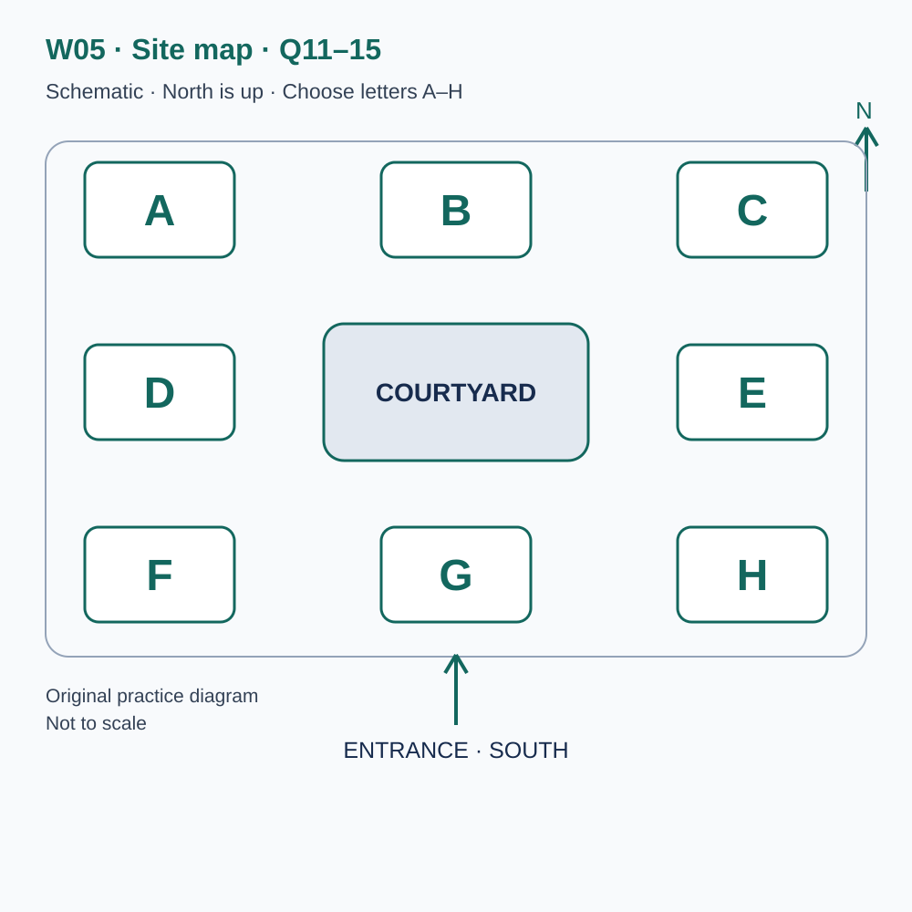
Q11. Registration
Answer: ____
Q12. Tool store
Answer: ____
Q13. Bicycle assessment
Answer: ____
Q14. Children's activity area
Answer: ____
Q15. Donation point
Answer: ____
Q16. What is the central purpose of the fair?
- A. To finish the largest possible number of repairs.
- B. To help owners understand the examination and advice.
- C. To keep every assessment as short as possible.
Answer: ____
Q17. A close photograph of a repair requires permission from whom?
- A. Only the owner.
- B. Only the volunteer.
- C. Both the owner and the volunteer.
Answer: ____
Q18. If an item is declined for examination, what should the owner do?
- A. Try other tables without mentioning the decision.
- B. Ask the coordinator to clarify the decision and limits.
- C. Require the volunteer to complete a repair.
Answer: ____
Q19. What happens at lunchtime?
- A. Appointments continue while volunteer breaks are staggered.
- B. The whole site closes at once.
- C. Visitors may join any shorter queue for their repair.
Answer: ____
Q20. What is the feedback card especially intended to assess?
- A. Which volunteer deserves the highest ranking.
- B. Whether a booking problem needs an immediate response.
- C. Whether visitors understood the advice.
Answer: ____
Part 3 — Evaluating a repair workshop
Q21–26: Match each proposal to the students' final positions at the end of that exchange. The tutor is not included. Write A, B, C or D. Letters may be reused.
- A Maya only
- B Noah only
- C Both students
- D Neither student
Q27–28 and Q29–30: Choose TWO different letters, A–E, for each pair. Write one letter in each numbered slot; either order is accepted. Each distinct correct choice earns one point, maximum two. Repeating a letter cannot earn two points. Submit no more than two letters.
Q21. At the END of this exchange, who supports: Short exit interviews?
Answer: ____
Q22. At the END of this exchange, who supports: The successful-repair total as the ONLY measure of the event?
Answer: ____
Q23. At the END of this exchange, who supports: Collecting visitors' exact addresses?
Answer: ____
Q24. At the END of this exchange, who supports: Follow-up accounts from owners whose items were not repaired?
Answer: ____
Q25. At the END of this exchange, who supports: Observing the waiting area from a fixed position, with organiser agreement?
Answer: ____
Q26. At the END of this exchange, who supports: A brief, permitted volunteer quotation in the presentation?
Answer: ____
Q27–28. Which TWO additions to the exit interview are selected?
- A. A personal score for the volunteer
- B. The visitor's intended next step
- C. The original purchase price
- D. Advice the visitor found unclear
- E. The visitor's home address
Answers: Q27 ____ · Q28 ____
Q29–30. Which TWO limitations must the conclusion state?
- A. Paper forms were necessarily unreliable.
- B. The workshop was cancelled.
- C. Only one event was observed.
- D. There was no access to the waiting area.
- E. Willing interviewees may differ from other visitors.
Answers: Q29 ____ · Q30 ____
Part 4 — Tracing a repair request
Q31–35: Complete the flow chart below. Q36–40: Complete the notes. Write NO MORE THAN TWO WORDS AND/OR A NUMBER for each answer, using words from the recording. Numeric notation may replace spoken numbers. Words or units already printed do not belong in the blank. The numbered text below repeats the SVG prompts for readability.
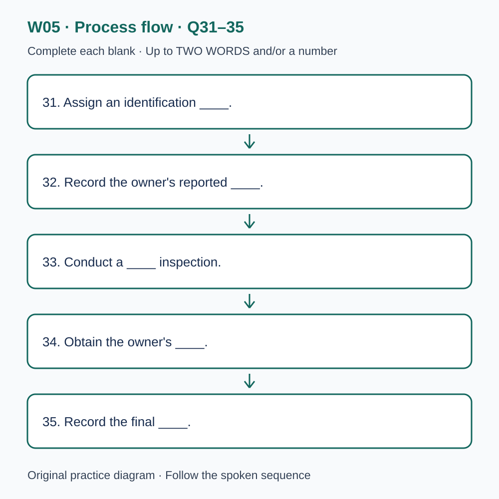
Q31. Assign an identification ____.
Q32. Record the owner's reported ____.
Q33. Conduct a ____ inspection.
Q34. Obtain the owner's ____.
Q35. Record the final ____.
Q36. Requests are classified into consistently defined ____.
Q37. A missing value is marked as ____.
Q38. Example follow-up interval: ____ weeks.
Q39. Remove direct ____ before sharing a case publicly.
Q40. Review data quality and the ____ of collecting the data.
本周训练安排（音频批准后执行）
- Preview questions without the script：8 分钟。
- Future continuous first listen, including planned part pauses：32 分钟。
- Submit first answers and confidence, without a second play：8 分钟。
- Check answers and classify errors：20 分钟。
- Four Q-located intensive segments, 15 minutes each：60 分钟。
- Diagram and opinion retelling：15 分钟。
- Next-day retry of missed items：15 分钟。
合计 158 分钟；最多另用 22 分钟缓冲，总计不超过 180 分钟。暂停、回放与查词均计入精听预算，不能另行无限追加。当前实际已完成听力分钟数为 0。精听区段和步骤见 intensive.md；答案和脚本另页。
参考答案与证据（完成首次听力后再展开）
L-W05 — Answers and evidence
> 独立答案页。先提交首次答案，再看本页。当前缺音频，文本验题不能充当实听验收。
每个单空 1 分；双选各 2 分、答案顺序不限、按不同正确选项计分。接受形式仅做大小写和空白规范化；不做模糊词形推断。
Q1 — lamp
Accepted answers: lamp / a lamp / the lamp
Use the final confirmed detail in this exchange; the printed unit or date context is already supplied.
Evidence locator: Q01 (script.md; timestamps unavailable).
> Customer: Hello, I'm hoping to bring a household item to your repair fair, but I'm unsure whether visitors need to book. I've never attended anything like this before, and I don't want to arrive with something your volunteers cannot examine. Adviser: Booking helps us match an item with somebody who has relevant experience. What were you thinking of bringing? Customer: A lamp. The shade and cable look fine, but it stopped working suddenly. I considered bringing my radio too, although I realise that might be asking too much for one visit. Adviser: Let's register the lamp first. Describe the problem without trying to open it yourself.
Q2 — Sunday
Accepted answers: Sunday
Use the final confirmed detail in this exchange; the printed unit or date context is already supplied.
Evidence locator: Q02 (script.md; timestamps unavailable).
> Customer: Your poster says the fair runs at weekends. Is my appointment on Saturday? I need to arrange transport, and a friend has offered to drive me if I give her enough notice. Adviser: Saturday is when we set out the tables and check equipment. Your appointment is on Sunday, when the public event takes place. Several people have confused those dates because an old volunteer notice is still circulating. Customer: Sunday is actually easier for my friend. I'll put that in my diary now and make sure she receives the visitor confirmation, rather than the photograph of the notice that somebody sent me.
Q3 — 9.45
Accepted answers: 9.45 / 9:45 / 09.45 / 09:45 / nine forty-five
Use the final confirmed detail in this exchange; the printed unit or date context is already supplied.
Evidence locator: Q03 (script.md; timestamps unavailable).
> Customer: What time should we aim to arrive? My friend prefers to leave early in case traffic is heavy, but I don't want to be waiting outside before the building opens. Adviser: The doors open at nine, and your booked assessment begins at nine forty-five. Arriving ten minutes before that will give you time to register and carry the lamp to the correct table. Customer: I'll record nine forty-five as the appointment time, then. The earlier arrival is just to complete the formalities. Adviser: Exactly. If the roads delay you, call the number on your confirmation so we know whether to hold the slot.
Q4 — 20
Accepted answers: 20 / twenty
Use the final confirmed detail in this exchange; the printed unit or date context is already supplied.
Evidence locator: Q04 (script.md; timestamps unavailable).
> Customer: How long will the volunteer spend looking at the lamp? I wondered whether to ask my friend to wait or come back later. Adviser: The initial assessment lasts twenty minutes. Within that time, the volunteer will try to identify the problem and explain what might be possible. It doesn't guarantee a completed repair. Customer: That distinction is useful. We shouldn't assume we can leave with a working lamp immediately after the appointment. Adviser: Right. Some simple jobs can be completed, but others need a part we don't have. We'll explain the options before anyone agrees to further work or spends money on a replacement component.
Q5 — manual
Accepted answers: manual / the manual / a manual
Use the final confirmed detail in this exchange; the printed unit or date context is already supplied.
Evidence locator: Q05 (script.md; timestamps unavailable).
> Customer: Should I bring the original box? It's somewhere in the attic, although finding it may take longer than getting here. Adviser: A secure bag or box for transport is enough. The useful thing to bring, if you still have it, is the manual. It may show how the parts fit together or identify the exact model. Customer: I kept the manual in a drawer with the receipt, so that won't be difficult. Adviser: Excellent. Please leave it with the lamp during the assessment and take it home afterwards. A volunteer can make a note of relevant information, but we don't need to keep your original paperwork.
Q6 — postcode
Accepted answers: postcode / post code / current postcode / your postcode / the postcode
Use the final confirmed detail in this exchange; the printed unit or date context is already supplied.
Evidence locator: Q06 (script.md; timestamps unavailable).
> Customer: Do you collect any information about the owner? I'm happy to give contact details, but I don't know the lamp's age because it was a gift. Adviser: An approximate age is sufficient. What we need for the booking is your postcode, so we can distinguish visitors with similar names and understand which neighbourhoods the fair serves. Customer: I'll provide my current postcode; I moved recently, and some of my older documents still show the previous address. Adviser: Thank you. We don't need those documents. Please check the confirmation after this call and tell us if any of the booking information is wrong before the event.
Q7 — B
Accepted answers: B
Booking provides an assessment slot, not a promised repair or price.
Evidence locator: Q07 (script.md; timestamps unavailable).
> Customer: I noticed a free electrical advice desk on the poster. Could I simply go there instead of keeping the booked assessment? It might be easier if our journey takes longer than expected. Adviser: You could ask general questions there, but the desk doesn't reserve time to examine an individual item. The appointment gives a volunteer a defined slot for your lamp. It doesn't put you ahead of people with urgent problems or promise a cheaper repair. Customer: So the important difference is having examination time allocated. I'll keep the booking and use the advice desk only if I have a separate general question afterwards.
Q8 — A
Accepted answers: A
Advice precedes the owner's purchase decision; the fair does not sell parts.
Evidence locator: Q08 (script.md; timestamps unavailable).
> Customer: If the lamp needs a new switch, will I be asked to buy one from the fair? I'd rather compare prices before committing to anything. Adviser: We don't sell replacement parts. The volunteer may describe the specification you need, but you decide whether to obtain it and where to buy it. Please don't order a component before the assessment just because an online forum mentions a similar fault. Customer: That makes sense. Two lamps can look alike without using the same internal parts. Adviser: Exactly. The point of the assessment is to reduce uncertainty. You should leave understanding the next step, even if you choose not to continue with the repair.
Q9 — C
Accepted answers: C
Email is the main route; a call is reserved for urgent changes.
Evidence locator: Q09 (script.md; timestamps unavailable).
> Customer: Will somebody contact me if the event changes? I use my phone constantly for work, but messages from unfamiliar numbers sometimes get lost among automated reminders. Adviser: We'll send changes by email, because we may need to explain a new entrance or attach a revised map. Check the address in your confirmation. We would call only if something urgent happened very close to your appointment. Customer: I'll add your address to my contacts and check my inbox the evening before. Adviser: Good. Please don't rely on a social media post, since a general update may not include the arrangements for your particular booking.
Q10 — A
Accepted answers: A
The visitor boundary and adult supervision remain necessary.
Evidence locator: Q10 (script.md; timestamps unavailable).
> Customer: One last question. My friend has a small child who may come with us. Is it all right for them to watch the assessment? Adviser: Children are welcome with a supervising adult, but they must stay on the visitor side of the marked line. The line separates the public area from tools and equipment. It isn't there to stop people asking questions. Customer: Then my friend can supervise while I discuss the lamp with the volunteer. Adviser: That would work. If the child needs a break, there is a separate activity area. Please don't move the line or lift a child over it to get a better view.
Q11 — F
Accepted answers: F
Use the explicitly stated position relative to the courtyard, not an earlier layout or adjacent area.
Evidence locator: Q11 (script.md; timestamps unavailable).
> Welcome to the repair fair. Before the first appointments begin, I'll explain the outdoor layout shown on your map. North is at the top, and the entrance is marked on the southern edge. The central square contains the covered courtyard, which is a fixed landmark rather than a lettered activity area. Registration is in the southwest corner of the site. It is west of the entrance axis and south of the courtyard, not in the area directly south of the courtyard. Visitors should go there first even if they recognise a volunteer elsewhere. Registration confirms which table has been allocated and helps us keep track of belongings moving through the fair.
Q12 — A
Accepted answers: A
Use the explicitly stated position relative to the courtyard, not an earlier layout or adjacent area.
Evidence locator: Q12 (script.md; timestamps unavailable).
> After registering, volunteers who need shared equipment should visit the tool store. On the map, that is the area in the northwest corner, directly north of registration and diagonally northwest of the courtyard. There is another area immediately west of the courtyard, but that is not the store. The arrangement allows equipment to be checked out away from the busiest visitor route. Only a volunteer may collect a tool from the store, and the borrower should return it personally. This avoids a situation where several people assume somebody else has checked that a valuable or potentially hazardous item is back in the correct place.
Q13 — E
Accepted answers: E
Use the explicitly stated position relative to the courtyard, not an earlier layout or adjacent area.
Evidence locator: Q13 (script.md; timestamps unavailable).
> The bicycle assessment area occupies the space directly east of the central courtyard. It is level with the courtyard on the map, not in the northeast corner. Please wheel bicycles rather than ride them anywhere inside the site. The assessment team needs room to turn a bicycle and examine it from both sides, so visitors should wait at the marked edge until invited forward. We have kept this activity away from the tool store because a row of waiting bicycles can obstruct other volunteers. If you have arrived only to ask about a route or a helmet, the general advice desk will be more suitable.
Q14 — C
Accepted answers: C
Use the explicitly stated position relative to the courtyard, not an earlier layout or adjacent area.
Evidence locator: Q14 (script.md; timestamps unavailable).
> The children's activity area is in the northeast corner. It lies north of the bicycle assessment area and east of the space at the northern centre of the map. An earlier plan placed children beside registration, but we changed that arrangement to give families a quieter area with better visibility. Activities there use simple materials and are supervised, although parents or carers remain responsible for their children. Please do not assume that leaving a child in the area provides childcare for the duration of a repair appointment. The helpers can explain an activity, but they cannot accompany children around the rest of the site.
Q15 — H
Accepted answers: H
Use the explicitly stated position relative to the courtyard, not an earlier layout or adjacent area.
Evidence locator: Q15 (script.md; timestamps unavailable).
> Unwanted usable materials can be offered at the donation point in the southeast corner. This is south of the bicycle assessment area and east of the space directly south of the courtyard. Please speak to a helper before unloading anything. We have limited storage and cannot accept every object simply because it may be useful someday. A clear description helps us decide whether another local group can use it. The donation point is deliberately separate from registration, so a visitor carrying a broken item will not accidentally leave it among donated materials. If you are uncertain whether something is yours to collect or ours to redistribute, ask first.
Q16 — B
Accepted answers: B
The coordinator prioritises explanation and understanding, including unsuitable repairs.
Evidence locator: Q16 (script.md; timestamps unavailable).
> We expect a busy morning, but the fair is organised around explanation rather than speed. Volunteers are asked to describe what they are checking and invite owners to ask questions. Finishing the largest possible number of repairs would be an easy figure to advertise, yet it would miss much of the event's purpose. An owner who understands why a repair is unsuitable has still gained useful information. Equally, someone who learns a simple maintenance habit may prevent a later problem. Please allow conversations to finish instead of urging the next person forward whenever a tool is put down. A pause can be part of a careful explanation.
Q17 — C
Accepted answers: C
A general event notice does not replace the two permissions.
Evidence locator: Q17 (script.md; timestamps unavailable).
> Photography is allowed in general areas, but close photographs of a repair need the permission of both the volunteer and the owner. An object may look anonymous while still revealing a person's name, address or other private detail. We therefore ask visitors to check the whole frame before sharing an image. A sign saying that photographs may be taken at the event is not a substitute for asking about a close view of someone's belongings. Staff will happily suggest a different subject if permission is declined. For our own report, we can photograph an empty workstation or a demonstration item without interrupting a live assessment.
Q18 — B
Accepted answers: B
The coordinator can explain the decision but cannot require unsuitable work.
Evidence locator: Q18 (script.md; timestamps unavailable).
> If a volunteer decides that an item should not be examined here, the owner will receive an explanation and, where appropriate, information about another type of service. The decision is not a judgement about whether the item matters to its owner. It reflects the equipment, competence and time available at this event. Please don't move to another table hoping for a different answer without telling the coordinator. That could separate the item from the information already recorded. The coordinator can clarify the decision or arrange an appropriate discussion, but cannot require a volunteer to attempt work they consider outside the safe limits of their role.
Q19 — A
Accepted answers: A
Breaks are staggered; demonstration queues serve a different purpose.
Evidence locator: Q19 (script.md; timestamps unavailable).
> At lunchtime, visitors with appointments should still report to registration at their stated time. Volunteer breaks are staggered, so the site does not close completely in the middle of the day. However, a particular specialist may be unavailable for a short period. The registration team can explain that person's schedule. Please don't join an apparently shorter queue without checking what it is for. Some tables are demonstrating techniques rather than assessing visitors' items. A short queue at a demonstration does not mean the repair service is operating unfairly; it may simply involve a different activity with a different purpose and a different timetable.
Q20 — C
Accepted answers: C
Clarity is the focus; urgent issues go to the coordinator.
Evidence locator: Q20 (script.md; timestamps unavailable).
> Before leaving, please complete a short feedback card, including one thing that was clear and one thing that could be improved. We are especially interested in whether you understood the advice, not just whether the item was repaired. The card does not ask for the volunteer's name, and it is not used to rank individual volunteers. We review the comments to improve instructions, signage and the range of support available next time. If you need help with an unresolved booking problem, speak to the coordinator instead of relying on the card. Feedback cards are read later and will not produce an immediate response today.
Q21 — C
Accepted answers: C
Final stance: Both students. Ignore an initial proposal if later withdrawn; the tutor is not an answer option.
Evidence locator: Q21 (script.md; timestamps unavailable).
> Tutor: Your project asks how visitors experience the workshop. Let's review the proposals one by one, starting with short exit interviews. Maya: I support them because a brief conversation can show whether someone understood the advice, even when the object wasn't repaired. Noah: I was against them at first because I expected a long queue, but limiting each conversation to two minutes changes my view. I now support that version. Tutor: Then record the revised plan, including the limit. Agreement about the method doesn't mean you have to expect the same findings. Your different interests can still shape the questions you ask and the patterns you examine afterwards.
Q22 — B
Accepted answers: B
Final stance: Noah only. Ignore an initial proposal if later withdrawn; the tutor is not an answer option.
Evidence locator: Q22 (script.md; timestamps unavailable).
> Noah: My next proposal is to count every successful repair and use that total as our only measure of the event. Numbers are easier to compare than personal stories, so I still think one clear total is enough. Maya: I don't support making it the only measure. An unsuccessful repair can lead to a useful explanation, and a successful one may fail again later. Tutor: Could you retain the count while changing the claim? Noah: Possibly in a future draft, but for this proposed measure I am still arguing for the single total. Maya: Then my objection remains. Tutor: Make that disagreement visible rather than writing that the group has already reached a decision.
Q23 — D
Accepted answers: D
Final stance: Neither student. Ignore an initial proposal if later withdrawn; the tutor is not an answer option.
Evidence locator: Q23 (script.md; timestamps unavailable).
> Maya: I suggested recording visitors' exact addresses so we could map where everyone came from. A detailed map might reveal gaps in the area served. Noah: I don't support collecting exact addresses. Broad neighbourhood information should be enough for our question, and detailed records create avoidable privacy concerns. Tutor: What does the additional precision actually help you explain? Maya: Looking at our question again, very little. I withdraw the address proposal and would use broad areas instead. Noah: I agree with dropping it. Tutor: Good. In your notes, distinguish the original suggestion from the position you both hold after considering its purpose. Otherwise a reader may mistake discussion for final endorsement.
Q24 — A
Accepted answers: A
Final stance: Maya only. Ignore an initial proposal if later withdrawn; the tutor is not an answer option.
Evidence locator: Q24 (script.md; timestamps unavailable).
> Maya: I would like to include follow-up accounts from owners whose items were not repaired. They may tell us what happened after receiving advice, which an event-day count cannot show. Noah: I see the interest, but I don't support that proposal for our project. We have little time, and those owners may be difficult to contact. Tutor: Is your concern the value of the evidence or the resources needed to collect it? Noah: The resources. Maya: I still support a small follow-up, even if it includes only a few clearly described cases. Tutor: Then you disagree about what is manageable, not necessarily about whether those experiences matter. State the distinction accurately.
Q25 — C
Accepted answers: C
Final stance: Both students. Ignore an initial proposal if later withdrawn; the tutor is not an answer option.
Evidence locator: Q25 (script.md; timestamps unavailable).
> Noah: We also need to observe the waiting area from a fixed position. If we keep moving, our counts may miss people or count them twice. Maya: I support that, provided the position doesn't block visitors or make them feel inspected. We should agree it with the organiser first. Tutor: Would a fixed position prevent you from noticing problems elsewhere? Noah: It limits the view, but that limitation is easier to describe than changing our method unpredictably. Maya: Yes, and we can keep the observations focused on one question. Tutor: You are both supporting the fixed-position method, with a practical condition. Include that condition in the method rather than leaving it in meeting notes.
Q26 — A
Accepted answers: A
Final stance: Maya only. Ignore an initial proposal if later withdrawn; the tutor is not an answer option.
Evidence locator: Q26 (script.md; timestamps unavailable).
> Maya: Finally, I support including a quotation from a volunteer in our presentation, but only after we have checked permission for that use. A short quotation could show how the volunteer explains an uncertain repair decision. Noah: I don't support adding it. We already have too much material for the presentation, and I would prefer to summarise the point in our own words. Tutor: Both approaches could be reasonable. Does hearing Maya's condition change your position? Noah: No. My objection is about the limited presentation time, not permission. Maya: And I still favour one brief quotation. Tutor: Then record your final positions without treating the permission condition as evidence that Noah agrees.
Q27–28 — B, D
Accept unordered set: B, D. One point per distinct correct choice, maximum 2.
The next-step question tests understanding; the unclear-advice question identifies a specific gap. Ratings, price and address are rejected.
Evidence locator: Q27, Q28 (script.md; timestamps unavailable).
> Tutor: Now choose two changes to the exit interview itself. The current draft asks whether the visit was useful and then immediately asks the person to rate the fair. Maya: I'd add a question asking the visitor to explain the next step they intend to take. That would test understanding more directly than another satisfaction rating. Noah: I agree. Someone might be pleased with the friendly welcome while remaining uncertain about the advice. Tutor: That's one change selected. What about asking for a score for the individual volunteer? Maya: I would leave that out. Our project examines the visitor's understanding, not staff performance, and people may be uncomfortable assigning a personal score.
> Noah: The other change I want is a question about advice the visitor found unclear. We should let them identify a particular point rather than forcing them to choose from our guesses. Maya: Agreed. We can ask neutrally and make clear that saying everything was clear is acceptable too. Tutor: So those are your two selected additions. You are not asking for the item's purchase price or the visitor's home address, and you are not introducing a personal rating of the volunteer. Noah: Correct. Keeping the interview short means choosing questions that serve our purpose. Maya: We should test the wording before the event to see whether people understand what we are asking.
Q29–30 — C, E
Accept unordered set: C, E. One point per distinct correct choice, maximum 2.
The evidence is limited to one event and self-selected respondents; the other proposed obstacles did not apply.
Evidence locator: Q29, Q30 (script.md; timestamps unavailable).
> Tutor: Your draft conclusion makes several claims. Which two limitations must be made explicit? Noah: First, we observed only one event. We cannot assume another venue, season or group of volunteers would produce the same pattern. Maya: I agree. Repeating the same method in different settings would strengthen a later project, but we shouldn't write as though we've already done that. Tutor: Good. The fact that you used paper forms is not automatically a limitation if the records are clear and complete. Nor does a small project become worthless simply because it isn't large. Explain precisely what the evidence can and cannot support instead of adding a general apology.
> Maya: Second, the visitors who agree to an interview may differ from those who leave without speaking to us. People with more time or stronger opinions might be more willing to participate. Noah: Yes, so our responses cannot stand for every visitor. Tutor: Those are the two limitations to carry into the conclusion. The workshop wasn't cancelled, and you did have access to the waiting area, so don't list those as obstacles. Maya: We'll distinguish events that actually affected the method from things that might have happened. Tutor: Exactly. A useful evaluation is specific to the work you carried out and gives the reader enough information to judge the reach of your claims.
Q31 — code
Accepted answers: code
Complete the named stage in the stated process order; retain any word already printed around the blank.
Evidence locator: Q31 (script.md; timestamps unavailable).
> In this lecture, we will trace a hypothetical repair request through a small community service. The example is designed to show how records support decisions, rather than to describe a particular organisation. The first stage is to give the item an identification code. That code connects the object to its record without requiring the owner's name to appear on every working note. It should remain stable throughout the process, even if the item moves between people. Changing identifiers midway can make a complete set of notes look like several unrelated cases. A clear record begins with consistency, not with collecting the largest possible amount of information.
Q32 — symptom
Accepted answers: symptom / behaviour / observed behaviour / behavior / observed behavior
Complete the named stage in the stated process order; retain any word already printed around the blank.
Evidence locator: Q32 (script.md; timestamps unavailable).
> The second stage is to record the symptom described by the owner. A symptom is what the person noticed, such as a device stopping after a few minutes, rather than a diagnosis of the underlying cause. The distinction matters because owners may arrive with a confident explanation from an online discussion. Staff can record that explanation separately, but should not substitute it for the observed behaviour. Otherwise a later technician may investigate only the suggested cause and overlook useful evidence. Recording the owner's description accurately also makes it possible to check whether the problem experienced after a repair is genuinely the same as the original one.
Q33 — visual
Accepted answers: visual
Complete the named stage in the stated process order; retain any word already printed around the blank.
Evidence locator: Q33 (script.md; timestamps unavailable).
> Next, a trained person conducts a visual inspection before deciding whether any further examination is appropriate. This stage may identify obvious damage, missing parts or signs that the item falls outside the service's scope. It is not a promise that an apparently undamaged object is safe or repairable. The result should be recorded in language that distinguishes what was seen from what was inferred. For example, describing a damaged casing is different from asserting that the damage caused the fault. If the item cannot be examined within the service's limits, the record should explain that decision and the information given to the owner.
Q34 — consent
Accepted answers: consent
Complete the named stage in the stated process order; retain any word already printed around the blank.
Evidence locator: Q34 (script.md; timestamps unavailable).
> When further work appears possible, the next stage is to obtain the owner's consent. Consent should relate to a described action, not to a vague promise that the service will do whatever seems useful. The owner needs to understand likely costs, uncertainties and any relevant limits. This does not require predicting every possible outcome, but it does require making the proposed next step intelligible. A signature alone cannot show that an explanation was understood. Staff may need to invite questions or ask the owner to describe their understanding. The record should show what was agreed and when, so that later decisions do not rely entirely on memory.
Q35 — outcome
Accepted answers: outcome
Complete the named stage in the stated process order; retain any word already printed around the blank.
Evidence locator: Q35 (script.md; timestamps unavailable).
> The final stage in this simplified flow is to record the outcome after the agreed work. An outcome record should not use the single word finished for situations that differ substantially. An item may have been repaired, returned without repair, or referred elsewhere. Those distinctions affect what the owner needs to do next and how the service evaluates its work. Recording an outcome also closes a gap between an activity taking place and the organisation knowing what happened. If a technician completes a task but nobody updates the record, another person may spend time trying to locate an item that has already been collected by its owner.
Q36 — categories
Accepted answers: categories
The corresponding evidence block supplies this distinction or qualification; the question retains the surrounding grammar.
Evidence locator: Q36 (script.md; timestamps unavailable).
> To compare different kinds of work, the service can classify requests into categories. Categories should be defined before staff begin coding a large set of records, and examples should be supplied for difficult cases. Otherwise one person may classify an item by its main material while another uses its function. The resulting totals could look precise without referring to consistent groups. A small trial of the coding system helps reveal these differences. When staff disagree, the aim is not simply to choose a winner. They should examine whether the definition is unclear or whether the case contains information that the current categories fail to represent.
Q37 — unknown
Accepted answers: unknown
The corresponding evidence block supplies this distinction or qualification; the question retains the surrounding grammar.
Evidence locator: Q37 (script.md; timestamps unavailable).
> Some records will contain missing information. The service should mark a missing value as unknown rather than silently replacing it with a convenient assumption. An unknown result is different from an unsuccessful repair, just as an unrecorded cost is different from a repair that cost nothing. Mixing these cases can distort both totals and comparisons. The proportion of unknown values is itself useful information about how well the recording system works. If one field is frequently left empty, staff can investigate whether the question is difficult to answer, poorly explained or requested at a point when the relevant person is no longer available.
Q38 — four
Accepted answers: four / 4
The corresponding evidence block supplies this distinction or qualification; the question retains the surrounding grammar.
Evidence locator: Q38 (script.md; timestamps unavailable).
> A further check compares initial outcomes with later follow-up information. In this example, owners are contacted after four weeks to ask whether the item is still in use and whether the original problem has returned. Four weeks is a chosen interval for the example, not a universal standard for judging every repair. A longer interval might reveal different problems, while a shorter one could be easier to complete reliably. Whatever interval is used should be stated clearly. The service should also report how many owners responded, since a high success rate among a small group of respondents may not describe the experience of everyone contacted.
Q39 — identifiers
Accepted answers: identifiers
The corresponding evidence block supplies this distinction or qualification; the question retains the surrounding grammar.
Evidence locator: Q39 (script.md; timestamps unavailable).
> Before sharing a case publicly, staff remove direct identifiers from the working account. Removing a name alone may be insufficient if other details make the owner recognisable. The level of detail needed for an internal technical record can be different from the level appropriate for a public example. This creates a practical challenge: an account must retain enough information to explain the learning point while avoiding unnecessary personal detail. The decision should be made deliberately, rather than leaving publication staff to guess which parts are sensitive. A separate publication version can help preserve the fuller internal record without exposing every detail to a wider audience.
Q40 — burden
Accepted answers: burden
The corresponding evidence block supplies this distinction or qualification; the question retains the surrounding grammar.
Evidence locator: Q40 (script.md; timestamps unavailable).
> Finally, the service should review its recording system with the people who use it. A technically impressive database can fail if staff cannot complete records during ordinary work or cannot retrieve information when they need it. The review should examine both the quality of the data and the burden of collecting them. It may reveal that a short field needs a clearer definition, or that an elaborate question adds little value. Improvement does not always mean adding more fields. A smaller, consistently maintained record can support decisions better than a larger system whose apparent detail conceals gaps, incompatible categories and assumptions that nobody has documented.
完整脚本（提前阅读会失去陌生题首答机会）
L-W05 — Repair, reuse and shared spaces: transcript
> 原创虚构练习，非真题；音频缺失。仅供完成首次作答后的核对或文字审阅。Q 标记与角色名不属于朗读正文。
Part 1 — Joining a repair fair
Q1 evidence block
Customer: Hello, I'm hoping to bring a household item to your repair fair, but I'm unsure whether visitors need to book. I've never attended anything like this before, and I don't want to arrive with something your volunteers cannot examine.
Adviser: Booking helps us match an item with somebody who has relevant experience. What were you thinking of bringing?
Customer: A lamp. The shade and cable look fine, but it stopped working suddenly. I considered bringing my radio too, although I realise that might be asking too much for one visit.
Adviser: Let's register the lamp first. Describe the problem without trying to open it yourself.
Q2 evidence block
Customer: Your poster says the fair runs at weekends. Is my appointment on Saturday? I need to arrange transport, and a friend has offered to drive me if I give her enough notice.
Adviser: Saturday is when we set out the tables and check equipment. Your appointment is on Sunday, when the public event takes place. Several people have confused those dates because an old volunteer notice is still circulating.
Customer: Sunday is actually easier for my friend. I'll put that in my diary now and make sure she receives the visitor confirmation, rather than the photograph of the notice that somebody sent me.
Q3 evidence block
Customer: What time should we aim to arrive? My friend prefers to leave early in case traffic is heavy, but I don't want to be waiting outside before the building opens.
Adviser: The doors open at nine, and your booked assessment begins at nine forty-five. Arriving ten minutes before that will give you time to register and carry the lamp to the correct table.
Customer: I'll record nine forty-five as the appointment time, then. The earlier arrival is just to complete the formalities.
Adviser: Exactly. If the roads delay you, call the number on your confirmation so we know whether to hold the slot.
Q4 evidence block
Customer: How long will the volunteer spend looking at the lamp? I wondered whether to ask my friend to wait or come back later.
Adviser: The initial assessment lasts twenty minutes. Within that time, the volunteer will try to identify the problem and explain what might be possible. It doesn't guarantee a completed repair.
Customer: That distinction is useful. We shouldn't assume we can leave with a working lamp immediately after the appointment.
Adviser: Right. Some simple jobs can be completed, but others need a part we don't have. We'll explain the options before anyone agrees to further work or spends money on a replacement component.
Q5 evidence block
Customer: Should I bring the original box? It's somewhere in the attic, although finding it may take longer than getting here.
Adviser: A secure bag or box for transport is enough. The useful thing to bring, if you still have it, is the manual. It may show how the parts fit together or identify the exact model.
Customer: I kept the manual in a drawer with the receipt, so that won't be difficult.
Adviser: Excellent. Please leave it with the lamp during the assessment and take it home afterwards. A volunteer can make a note of relevant information, but we don't need to keep your original paperwork.
Q6 evidence block
Customer: Do you collect any information about the owner? I'm happy to give contact details, but I don't know the lamp's age because it was a gift.
Adviser: An approximate age is sufficient. What we need for the booking is your postcode, so we can distinguish visitors with similar names and understand which neighbourhoods the fair serves.
Customer: I'll provide my current postcode; I moved recently, and some of my older documents still show the previous address.
Adviser: Thank you. We don't need those documents. Please check the confirmation after this call and tell us if any of the booking information is wrong before the event.
Q7 evidence block
Customer: I noticed a free electrical advice desk on the poster. Could I simply go there instead of keeping the booked assessment? It might be easier if our journey takes longer than expected.
Adviser: You could ask general questions there, but the desk doesn't reserve time to examine an individual item. The appointment gives a volunteer a defined slot for your lamp. It doesn't put you ahead of people with urgent problems or promise a cheaper repair.
Customer: So the important difference is having examination time allocated. I'll keep the booking and use the advice desk only if I have a separate general question afterwards.
Q8 evidence block
Customer: If the lamp needs a new switch, will I be asked to buy one from the fair? I'd rather compare prices before committing to anything.
Adviser: We don't sell replacement parts. The volunteer may describe the specification you need, but you decide whether to obtain it and where to buy it. Please don't order a component before the assessment just because an online forum mentions a similar fault.
Customer: That makes sense. Two lamps can look alike without using the same internal parts.
Adviser: Exactly. The point of the assessment is to reduce uncertainty. You should leave understanding the next step, even if you choose not to continue with the repair.
Q9 evidence block
Customer: Will somebody contact me if the event changes? I use my phone constantly for work, but messages from unfamiliar numbers sometimes get lost among automated reminders.
Adviser: We'll send changes by email, because we may need to explain a new entrance or attach a revised map. Check the address in your confirmation. We would call only if something urgent happened very close to your appointment.
Customer: I'll add your address to my contacts and check my inbox the evening before.
Adviser: Good. Please don't rely on a social media post, since a general update may not include the arrangements for your particular booking.
Q10 evidence block
Customer: One last question. My friend has a small child who may come with us. Is it all right for them to watch the assessment?
Adviser: Children are welcome with a supervising adult, but they must stay on the visitor side of the marked line. The line separates the public area from tools and equipment. It isn't there to stop people asking questions.
Customer: Then my friend can supervise while I discuss the lamp with the volunteer.
Adviser: That would work. If the child needs a break, there is a separate activity area. Please don't move the line or lift a child over it to get a better view.
Part 2 — Repair fair site briefing
Q11 evidence block
Site coordinator: Welcome to the repair fair. Before the first appointments begin, I'll explain the outdoor layout shown on your map. North is at the top, and the entrance is marked on the southern edge. The central square contains the covered courtyard, which is a fixed landmark rather than a lettered activity area. Registration is in the southwest corner of the site. It is west of the entrance axis and south of the courtyard, not in the area directly south of the courtyard. Visitors should go there first even if they recognise a volunteer elsewhere. Registration confirms which table has been allocated and helps us keep track of belongings moving through the fair.
Q12 evidence block
Site coordinator: After registering, volunteers who need shared equipment should visit the tool store. On the map, that is the area in the northwest corner, directly north of registration and diagonally northwest of the courtyard. There is another area immediately west of the courtyard, but that is not the store. The arrangement allows equipment to be checked out away from the busiest visitor route. Only a volunteer may collect a tool from the store, and the borrower should return it personally. This avoids a situation where several people assume somebody else has checked that a valuable or potentially hazardous item is back in the correct place.
Q13 evidence block
Site coordinator: The bicycle assessment area occupies the space directly east of the central courtyard. It is level with the courtyard on the map, not in the northeast corner. Please wheel bicycles rather than ride them anywhere inside the site. The assessment team needs room to turn a bicycle and examine it from both sides, so visitors should wait at the marked edge until invited forward. We have kept this activity away from the tool store because a row of waiting bicycles can obstruct other volunteers. If you have arrived only to ask about a route or a helmet, the general advice desk will be more suitable.
Q14 evidence block
Site coordinator: The children's activity area is in the northeast corner. It lies north of the bicycle assessment area and east of the space at the northern centre of the map. An earlier plan placed children beside registration, but we changed that arrangement to give families a quieter area with better visibility. Activities there use simple materials and are supervised, although parents or carers remain responsible for their children. Please do not assume that leaving a child in the area provides childcare for the duration of a repair appointment. The helpers can explain an activity, but they cannot accompany children around the rest of the site.
Q15 evidence block
Site coordinator: Unwanted usable materials can be offered at the donation point in the southeast corner. This is south of the bicycle assessment area and east of the space directly south of the courtyard. Please speak to a helper before unloading anything. We have limited storage and cannot accept every object simply because it may be useful someday. A clear description helps us decide whether another local group can use it. The donation point is deliberately separate from registration, so a visitor carrying a broken item will not accidentally leave it among donated materials. If you are uncertain whether something is yours to collect or ours to redistribute, ask first.
Q16 evidence block
Site coordinator: We expect a busy morning, but the fair is organised around explanation rather than speed. Volunteers are asked to describe what they are checking and invite owners to ask questions. Finishing the largest possible number of repairs would be an easy figure to advertise, yet it would miss much of the event's purpose. An owner who understands why a repair is unsuitable has still gained useful information. Equally, someone who learns a simple maintenance habit may prevent a later problem. Please allow conversations to finish instead of urging the next person forward whenever a tool is put down. A pause can be part of a careful explanation.
Q17 evidence block
Site coordinator: Photography is allowed in general areas, but close photographs of a repair need the permission of both the volunteer and the owner. An object may look anonymous while still revealing a person's name, address or other private detail. We therefore ask visitors to check the whole frame before sharing an image. A sign saying that photographs may be taken at the event is not a substitute for asking about a close view of someone's belongings. Staff will happily suggest a different subject if permission is declined. For our own report, we can photograph an empty workstation or a demonstration item without interrupting a live assessment.
Q18 evidence block
Site coordinator: If a volunteer decides that an item should not be examined here, the owner will receive an explanation and, where appropriate, information about another type of service. The decision is not a judgement about whether the item matters to its owner. It reflects the equipment, competence and time available at this event. Please don't move to another table hoping for a different answer without telling the coordinator. That could separate the item from the information already recorded. The coordinator can clarify the decision or arrange an appropriate discussion, but cannot require a volunteer to attempt work they consider outside the safe limits of their role.
Q19 evidence block
Site coordinator: At lunchtime, visitors with appointments should still report to registration at their stated time. Volunteer breaks are staggered, so the site does not close completely in the middle of the day. However, a particular specialist may be unavailable for a short period. The registration team can explain that person's schedule. Please don't join an apparently shorter queue without checking what it is for. Some tables are demonstrating techniques rather than assessing visitors' items. A short queue at a demonstration does not mean the repair service is operating unfairly; it may simply involve a different activity with a different purpose and a different timetable.
Q20 evidence block
Site coordinator: Before leaving, please complete a short feedback card, including one thing that was clear and one thing that could be improved. We are especially interested in whether you understood the advice, not just whether the item was repaired. The card does not ask for the volunteer's name, and it is not used to rank individual volunteers. We review the comments to improve instructions, signage and the range of support available next time. If you need help with an unresolved booking problem, speak to the coordinator instead of relying on the card. Feedback cards are read later and will not produce an immediate response today.
Part 3 — Evaluating a repair workshop
Q21 evidence block
Tutor: Your project asks how visitors experience the workshop. Let's review the proposals one by one, starting with short exit interviews.
Maya: I support them because a brief conversation can show whether someone understood the advice, even when the object wasn't repaired.
Noah: I was against them at first because I expected a long queue, but limiting each conversation to two minutes changes my view. I now support that version.
Tutor: Then record the revised plan, including the limit. Agreement about the method doesn't mean you have to expect the same findings. Your different interests can still shape the questions you ask and the patterns you examine afterwards.
Q22 evidence block
Noah: My next proposal is to count every successful repair and use that total as our only measure of the event. Numbers are easier to compare than personal stories, so I still think one clear total is enough.
Maya: I don't support making it the only measure. An unsuccessful repair can lead to a useful explanation, and a successful one may fail again later.
Tutor: Could you retain the count while changing the claim?
Noah: Possibly in a future draft, but for this proposed measure I am still arguing for the single total.
Maya: Then my objection remains.
Tutor: Make that disagreement visible rather than writing that the group has already reached a decision.
Q23 evidence block
Maya: I suggested recording visitors' exact addresses so we could map where everyone came from. A detailed map might reveal gaps in the area served.
Noah: I don't support collecting exact addresses. Broad neighbourhood information should be enough for our question, and detailed records create avoidable privacy concerns.
Tutor: What does the additional precision actually help you explain?
Maya: Looking at our question again, very little. I withdraw the address proposal and would use broad areas instead.
Noah: I agree with dropping it.
Tutor: Good. In your notes, distinguish the original suggestion from the position you both hold after considering its purpose. Otherwise a reader may mistake discussion for final endorsement.
Q24 evidence block
Maya: I would like to include follow-up accounts from owners whose items were not repaired. They may tell us what happened after receiving advice, which an event-day count cannot show.
Noah: I see the interest, but I don't support that proposal for our project. We have little time, and those owners may be difficult to contact.
Tutor: Is your concern the value of the evidence or the resources needed to collect it?
Noah: The resources.
Maya: I still support a small follow-up, even if it includes only a few clearly described cases.
Tutor: Then you disagree about what is manageable, not necessarily about whether those experiences matter. State the distinction accurately.
Q25 evidence block
Noah: We also need to observe the waiting area from a fixed position. If we keep moving, our counts may miss people or count them twice.
Maya: I support that, provided the position doesn't block visitors or make them feel inspected. We should agree it with the organiser first.
Tutor: Would a fixed position prevent you from noticing problems elsewhere?
Noah: It limits the view, but that limitation is easier to describe than changing our method unpredictably.
Maya: Yes, and we can keep the observations focused on one question.
Tutor: You are both supporting the fixed-position method, with a practical condition. Include that condition in the method rather than leaving it in meeting notes.
Q26 evidence block
Maya: Finally, I support including a quotation from a volunteer in our presentation, but only after we have checked permission for that use. A short quotation could show how the volunteer explains an uncertain repair decision.
Noah: I don't support adding it. We already have too much material for the presentation, and I would prefer to summarise the point in our own words.
Tutor: Both approaches could be reasonable. Does hearing Maya's condition change your position?
Noah: No. My objection is about the limited presentation time, not permission.
Maya: And I still favour one brief quotation.
Tutor: Then record your final positions without treating the permission condition as evidence that Noah agrees.
Q27 evidence block
Tutor: Now choose two changes to the exit interview itself. The current draft asks whether the visit was useful and then immediately asks the person to rate the fair.
Maya: I'd add a question asking the visitor to explain the next step they intend to take. That would test understanding more directly than another satisfaction rating.
Noah: I agree. Someone might be pleased with the friendly welcome while remaining uncertain about the advice.
Tutor: That's one change selected. What about asking for a score for the individual volunteer?
Maya: I would leave that out. Our project examines the visitor's understanding, not staff performance, and people may be uncomfortable assigning a personal score.
Q28 evidence block
Noah: The other change I want is a question about advice the visitor found unclear. We should let them identify a particular point rather than forcing them to choose from our guesses.
Maya: Agreed. We can ask neutrally and make clear that saying everything was clear is acceptable too.
Tutor: So those are your two selected additions. You are not asking for the item's purchase price or the visitor's home address, and you are not introducing a personal rating of the volunteer.
Noah: Correct. Keeping the interview short means choosing questions that serve our purpose.
Maya: We should test the wording before the event to see whether people understand what we are asking.
Q29 evidence block
Tutor: Your draft conclusion makes several claims. Which two limitations must be made explicit?
Noah: First, we observed only one event. We cannot assume another venue, season or group of volunteers would produce the same pattern.
Maya: I agree. Repeating the same method in different settings would strengthen a later project, but we shouldn't write as though we've already done that.
Tutor: Good. The fact that you used paper forms is not automatically a limitation if the records are clear and complete. Nor does a small project become worthless simply because it isn't large. Explain precisely what the evidence can and cannot support instead of adding a general apology.
Q30 evidence block
Maya: Second, the visitors who agree to an interview may differ from those who leave without speaking to us. People with more time or stronger opinions might be more willing to participate.
Noah: Yes, so our responses cannot stand for every visitor.
Tutor: Those are the two limitations to carry into the conclusion. The workshop wasn't cancelled, and you did have access to the waiting area, so don't list those as obstacles.
Maya: We'll distinguish events that actually affected the method from things that might have happened.
Tutor: Exactly. A useful evaluation is specific to the work you carried out and gives the reader enough information to judge the reach of your claims.
Part 4 — Tracing a repair request
Q31 evidence block
Lecturer: In this lecture, we will trace a hypothetical repair request through a small community service. The example is designed to show how records support decisions, rather than to describe a particular organisation. The first stage is to give the item an identification code. That code connects the object to its record without requiring the owner's name to appear on every working note. It should remain stable throughout the process, even if the item moves between people. Changing identifiers midway can make a complete set of notes look like several unrelated cases. A clear record begins with consistency, not with collecting the largest possible amount of information.
Q32 evidence block
Lecturer: The second stage is to record the symptom described by the owner. A symptom is what the person noticed, such as a device stopping after a few minutes, rather than a diagnosis of the underlying cause. The distinction matters because owners may arrive with a confident explanation from an online discussion. Staff can record that explanation separately, but should not substitute it for the observed behaviour. Otherwise a later technician may investigate only the suggested cause and overlook useful evidence. Recording the owner's description accurately also makes it possible to check whether the problem experienced after a repair is genuinely the same as the original one.
Q33 evidence block
Lecturer: Next, a trained person conducts a visual inspection before deciding whether any further examination is appropriate. This stage may identify obvious damage, missing parts or signs that the item falls outside the service's scope. It is not a promise that an apparently undamaged object is safe or repairable. The result should be recorded in language that distinguishes what was seen from what was inferred. For example, describing a damaged casing is different from asserting that the damage caused the fault. If the item cannot be examined within the service's limits, the record should explain that decision and the information given to the owner.
Q34 evidence block
Lecturer: When further work appears possible, the next stage is to obtain the owner's consent. Consent should relate to a described action, not to a vague promise that the service will do whatever seems useful. The owner needs to understand likely costs, uncertainties and any relevant limits. This does not require predicting every possible outcome, but it does require making the proposed next step intelligible. A signature alone cannot show that an explanation was understood. Staff may need to invite questions or ask the owner to describe their understanding. The record should show what was agreed and when, so that later decisions do not rely entirely on memory.
Q35 evidence block
Lecturer: The final stage in this simplified flow is to record the outcome after the agreed work. An outcome record should not use the single word finished for situations that differ substantially. An item may have been repaired, returned without repair, or referred elsewhere. Those distinctions affect what the owner needs to do next and how the service evaluates its work. Recording an outcome also closes a gap between an activity taking place and the organisation knowing what happened. If a technician completes a task but nobody updates the record, another person may spend time trying to locate an item that has already been collected by its owner.
Q36 evidence block
Lecturer: To compare different kinds of work, the service can classify requests into categories. Categories should be defined before staff begin coding a large set of records, and examples should be supplied for difficult cases. Otherwise one person may classify an item by its main material while another uses its function. The resulting totals could look precise without referring to consistent groups. A small trial of the coding system helps reveal these differences. When staff disagree, the aim is not simply to choose a winner. They should examine whether the definition is unclear or whether the case contains information that the current categories fail to represent.
Q37 evidence block
Lecturer: Some records will contain missing information. The service should mark a missing value as unknown rather than silently replacing it with a convenient assumption. An unknown result is different from an unsuccessful repair, just as an unrecorded cost is different from a repair that cost nothing. Mixing these cases can distort both totals and comparisons. The proportion of unknown values is itself useful information about how well the recording system works. If one field is frequently left empty, staff can investigate whether the question is difficult to answer, poorly explained or requested at a point when the relevant person is no longer available.
Q38 evidence block
Lecturer: A further check compares initial outcomes with later follow-up information. In this example, owners are contacted after four weeks to ask whether the item is still in use and whether the original problem has returned. Four weeks is a chosen interval for the example, not a universal standard for judging every repair. A longer interval might reveal different problems, while a shorter one could be easier to complete reliably. Whatever interval is used should be stated clearly. The service should also report how many owners responded, since a high success rate among a small group of respondents may not describe the experience of everyone contacted.
Q39 evidence block
Lecturer: Before sharing a case publicly, staff remove direct identifiers from the working account. Removing a name alone may be insufficient if other details make the owner recognisable. The level of detail needed for an internal technical record can be different from the level appropriate for a public example. This creates a practical challenge: an account must retain enough information to explain the learning point while avoiding unnecessary personal detail. The decision should be made deliberately, rather than leaving publication staff to guess which parts are sensitive. A separate publication version can help preserve the fuller internal record without exposing every detail to a wider audience.
Q40 evidence block
Lecturer: Finally, the service should review its recording system with the people who use it. A technically impressive database can fail if staff cannot complete records during ordinary work or cannot retrieve information when they need it. The review should examine both the quality of the data and the burden of collecting them. It may reveal that a short field needs a clearer definition, or that an elaborate question adds little value. Improvement does not always mean adding more fields. A smaller, consistently maintained record can support decisions better than a larger system whose apparent detail conceals gaps, incompatible categories and assumptions that nobody has documented.
精听与复盘步骤（须有已验收配套音频）
L-W05 — Q-based intensive listening
> 音频尚未生成；以下是未来执行安排，不是已完成记录。不要用文本阅读替代首次听力。无实际时间戳。
周预算：预览 8 + 首听 32 + 交首次答案 8 + 查错 20 + 精听 60 + 复述 15 + 次日重做 15 = 158 分钟。含暂停/回放；加用缓冲最多 22 分钟，总计≤180。
四段各 15 分钟：先定位并不看稿听 2 分钟；分句回放、写关键词 4 分钟；对照稿找误听与改口 3 分钟；遮稿跟读和复述 3 分钟；重答并记录错误原因 3 分钟。不得把同一段回放另算在周预算之外。
Q2–3 — 15 minutes
定位 script.md 的 Q2 evidence block 起至 Q3 evidence block 结束（约 201 词）；音频起止为 null。
目标：Separate setup day, public appointment, doors opening and assessment start.
留痕：首次答案 → 听到的原词 → 干扰来源 → 修正答案 → 一句英文复述。
Q12–13 — 15 minutes
定位 script.md 的 Q12 evidence block 起至 Q13 evidence block 结束（约 209 词）；音频起止为 null。
目标：Draw north-west and east positions; reject neighbouring corners.
留痕：首次答案 → 听到的原词 → 干扰来源 → 修正答案 → 一句英文复述。
Q23–24 — 15 minutes
定位 script.md 的 Q23 evidence block 起至 Q24 evidence block 结束（约 210 词）；音频起止为 null。
目标：Track a withdrawn address proposal versus an unresolved follow-up disagreement.
留痕：首次答案 → 听到的原词 → 干扰来源 → 修正答案 → 一句英文复述。
Q37–38 — 15 minutes
定位 script.md 的 Q37 evidence block 起至 Q38 evidence block 结束（约 208 词）；音频起止为 null。
目标：Distinguish unknown from failure; identify the example interval without treating it as a universal rule.
留痕：首次答案 → 听到的原词 → 干扰来源 → 修正答案 → 一句英文复述。
15 分钟复述与 15 分钟次日重做
复述：5 分钟遮住答案口述地图五个位置；5 分钟按人说明三人讨论的最终观点；5 分钟复述流程及一个限制。次日：8 分钟仅重做错题对应 Q 段；4 分钟核对；3 分钟更新错误记录。若仍超时，留下未完成项，不把额外时间隐去。
许可说明
原创文字和图示：RayXBuilds and contributors，CC BY 4.0。本页不包含配套音频；现有基础VOA媒体不能代替本套题的录音。
回到顶部
U41 第6周听力题面与复盘（音频待补）
本页提供已核验的原创题目、参考答案和脚本。配套完整音频尚未验收，当前只能预览题面；不能进行有效的首次听力测试，也不能把读稿作答计作听力成绩或已完成一套听力。
请先保留首次作答机会：批准音频就绪前，不要展开下方答案和脚本。若已读稿，请标记为熟悉材料，之后的练习不能充当陌生题诊断。页面阅读标记只代表看过文字，不代表完成听力。
本材料非雅思真题、非标准化模考，不换算正式分数。计划分钟数不是实测音频时长；学习记录、正式测评和真人反馈须另行完成。
学生题面
L-W06 — Field visits and careful observation
> 原创 IELTS-style 技能练习，非真题、非标准化模考，不可换算正式分数。当前只有文字和题目，音频未生成，不能计作已完成听力套题。
共四部分、40 个计分空，每空 1 分。正式首次作答须等待批准音频，先不要打开 script.md 或 answers.md。朗读前先看题；只听一遍后提交首次答案及信心等级，再做精听。当前只能预览题面，不能把读稿作答记作听力成绩。
Part 1 — Arranging a wetland group visit
Q1–6: Complete the notes. Write NO MORE THAN TWO WORDS AND/OR A NUMBER for each answer, using words from the recording. Numeric notation may replace spoken numbers. Do not repeat a printed unit. Q7–10: Choose ONE letter, A, B or C.
Q1. The group's main interest: ____
Q2. Chosen day of May: ____
Q3. Number of confirmed visitors: ____
Q4. Guide meeting time (a.m.): ____
Q5. Total guided-visit price: £____
Q6. Recommended footwear: ____
Q7. For the member using a walking aid, what should the organiser do?
- A. Assume every part of the standard route is suitable.
- B. Cancel the whole visit immediately.
- C. Discuss requirements and request an adapted route.
Answer: ____
Q8. Where can the group eat its own packed lunch?
- A. In a shared covered picnic area.
- B. At privately reserved picnic tables guaranteed to be empty.
- C. Only in the cafe after booking its menu.
Answer: ____
Q9. How are photographic observation points selected?
- A. Visitors may move barriers if they need a closer view.
- B. The guide selects permitted points for the conditions.
- C. Every booking includes access to nesting areas.
Answer: ____
Q10. What should the group do if heavy rain is forecast?
- A. Assume automatic cancellation.
- B. Let individual members make separate assumptions.
- C. Wait for a direct message about the plan.
Answer: ____
Part 2 — Wetland learning centre orientation
Q11–15: Label the map. Write ONE letter, A–H, for each destination. Three letters are unused. Q16–20: Choose ONE letter, A, B or C.
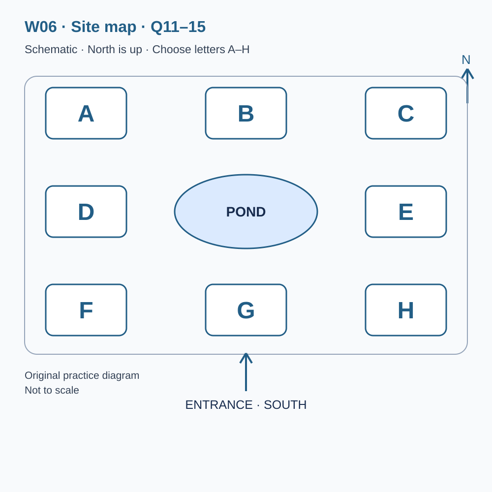
Q11. Information desk
Answer: ____
Q12. Equipment loan point
Answer: ____
Q13. Sheltered observation area
Answer: ____
Q14. Indoor classroom
Answer: ____
Q15. Covered picnic area
Answer: ____
Q16. If a guided route changes, visitors should
- A. leave to follow the original route alone.
- B. follow the guide's explained adaptation.
- C. assume the whole visit has lost its value.
Answer: ____
Q17. When comparing display photographs, what should visitors consider?
- A. The dates and conditions under which images were made.
- B. Only the most dramatic difference.
- C. Every visual difference as definite long-term change.
Answer: ____
Q18. What makes an uncertain identification useful?
- A. Presenting an app suggestion as independent recognition.
- B. Reporting a confident name without details.
- C. Describing observed features and how a suggested name was obtained.
Answer: ____
Q19. Volunteer monitoring differs from an ordinary visit because it
- A. includes everybody on the tour automatically.
- B. requires a consistent method and training.
- C. values the largest number of observations regardless of quality.
Answer: ____
Q20. What feedback is most useful?
- A. A specific location or instruction that caused difficulty.
- B. A demand to make everything better without an example.
- C. A complaint sent after departure as an urgent same-day request.
Answer: ____
Part 3 — Designing a student survey
Q21–26: Match each proposal to the students' final positions at the end of that exchange. The tutor is not included. Write A, B, C or D. Letters may be reused.
- A Leah only
- B Aron only
- C Both students
- D Neither student
Q27–28 and Q29–30: Choose TWO different letters, A–E, for each pair. Write one letter in each numbered slot; either order is accepted. Each distinct correct choice earns one point, maximum two. Repeating a letter cannot earn two points. Submit no more than two letters.
Q21. At the END of this exchange, who supports: Surveying only at the exit?
Answer: ____
Q22. At the END of this exchange, who supports: Piloting the questions before the main survey?
Answer: ____
Q23. At the END of this exchange, who supports: Collecting visitor names on the survey forms?
Answer: ____
Q24. At the END of this exchange, who supports: Including an optional open-response question?
Answer: ____
Q25. At the END of this exchange, who supports: Recording weather with simple consistent descriptions?
Answer: ____
Q26. At the END of this exchange, who supports: Counting people who decline to answer?
Answer: ____
Q27–28. Which TWO fixed-choice questions do the students retain?
- A. How visitors heard about the centre before visiting
- B. How many species visitors think live at the site
- C. What each visitor's camera cost
- D. Which information visitors used to find a route after arrival
- E. Each visitor's exact home address
Answers: Q27 ____ · Q28 ____
Q29–30. Which TWO changes would make comparisons between main survey sessions difficult?
- A. Recording the date
- B. Changing the question wording midway
- C. Using pencils instead of pens for legible records
- D. Changing which passing visitors are approached
- E. Not collecting income figures
Answers: Q29 ____ · Q30 ____
Part 4 — Planning repeat photography
Q31–35: Complete the flow chart below. Q36–40: Complete the notes. Write NO MORE THAN TWO WORDS AND/OR A NUMBER for each answer, using words from the recording. Numeric notation may replace spoken numbers. Words or units already printed do not belong in the blank. The numbered text below repeats the SVG prompts for readability.
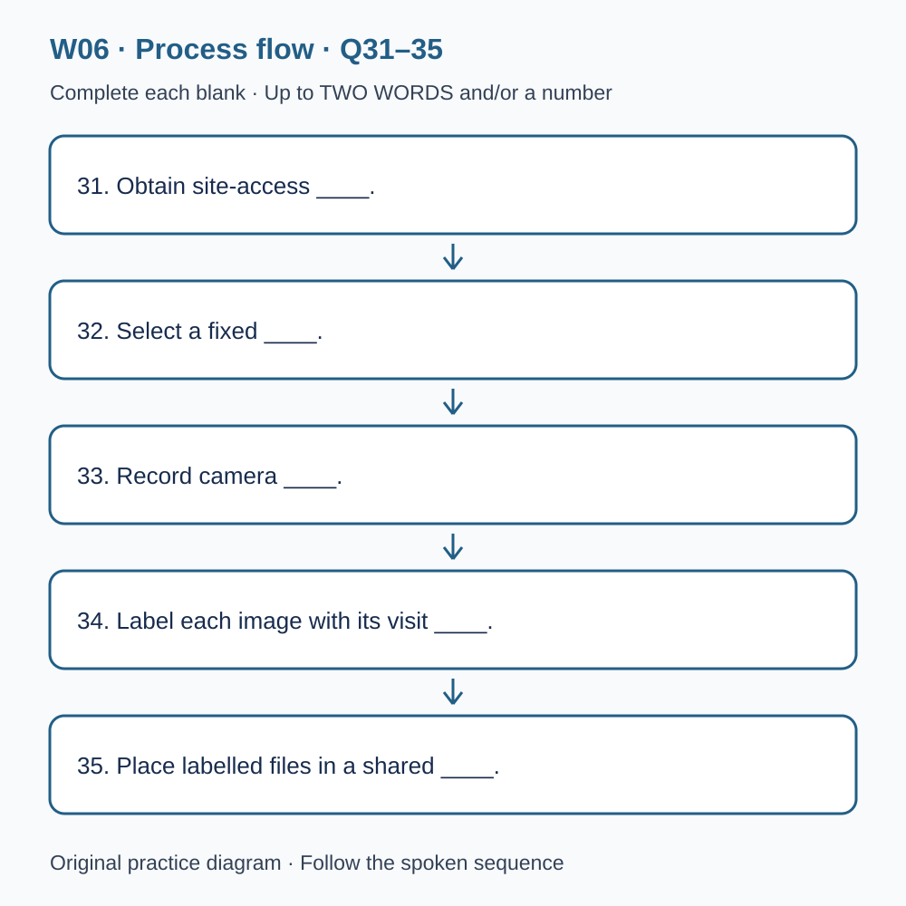
Q31. Obtain site-access ____.
Q32. Select a fixed ____.
Q33. Record camera ____.
Q34. Label each image with its visit ____.
Q35. Place labelled files in a shared ____.
Q36. Changing sun position can change the ____ visible in images.
Q37. Distinguish ____ variation from a longer-term trend.
Q38. Measure ____ between different observers.
Q39. Disturbed ground may have several possible ____.
Q40. The final review should describe ____, not only display clear images.
本周训练安排（音频批准后执行）
- Preview questions without the script：8 分钟。
- Future continuous first listen, including planned part pauses：32 分钟。
- Submit first answers and confidence, without a second play：8 分钟。
- Check answers and classify errors：20 分钟。
- Four Q-located intensive segments, 15 minutes each：60 分钟。
- Diagram and opinion retelling：15 分钟。
- Next-day retry of missed items：15 分钟。
合计 158 分钟；最多另用 22 分钟缓冲，总计不超过 180 分钟。暂停、回放与查词均计入精听预算，不能另行无限追加。当前实际已完成听力分钟数为 0。精听区段和步骤见 intensive.md；答案和脚本另页。
参考答案与证据（完成首次听力后再展开）
L-W06 — Answers and evidence
> 独立答案页。先提交首次答案，再看本页。当前缺音频，文本验题不能充当实听验收。
每个单空 1 分；双选各 2 分、答案顺序不限、按不同正确选项计分。接受形式仅做大小写和空白规范化；不做模糊词形推断。
Q1 — photography
Accepted answers: photography
Use the final confirmed detail in this exchange; the printed unit or date context is already supplied.
Evidence locator: Q01 (script.md; timestamps unavailable).
> Visitor: I'm organising a visit for a small community group. Coordinator: We can offer a guided visit or a self-guided trail with an information pack. How would you describe your group's main interest? Visitor: Photography. We're not a birdwatching club, although birds may appear in the pictures. Some members use ordinary phones, and nobody is expecting specialist instruction in expensive equipment. Coordinator: Then I'll record photography as the focus and arrange a guide who can discuss observation points without assuming that everybody has the same camera or level of experience.
Q2 — 16
Accepted answers: 16 / 16th / sixteenth / the sixteenth
Use the final confirmed detail in this exchange; the printed unit or date context is already supplied.
Evidence locator: Q02 (script.md; timestamps unavailable).
> Coordinator: Which date are you considering? Visitor: We originally discussed the fourteenth of May, but two members would be unable to come. We'd like the sixteenth of May instead. Coordinator: The sixteenth is available. I'll reserve that provisionally while we complete the booking. Visitor: Thank you. I'll make sure the group receives the corrected date, because the earlier one is still written in our meeting notes. Coordinator: Please do. We can change a provisional reservation if needed, but once transport is arranged, correcting several separate messages becomes much more difficult.
Q3 — 14
Accepted answers: 14 / fourteen
Use the final confirmed detail in this exchange; the printed unit or date context is already supplied.
Evidence locator: Q03 (script.md; timestamps unavailable).
> Coordinator: How many visitors should the guide expect? We need a realistic number because some observation areas have limited space. Visitor: There are eighteen people in the wider group, but only fourteen have confirmed for this visit. Could you book for fourteen rather than the whole membership? Coordinator: Certainly. If more people decide to join, contact us before adding them to the transport list. Visitor: I'll explain that a place in our group doesn't automatically mean a place on this particular trip. Coordinator: That helps. It is easier to consider an additional visitor in advance than to discover at the entrance that the group is larger than the guide was told.
Q4 — 10.20
Accepted answers: 10.20 / 10:20 / ten twenty
Use the final confirmed detail in this exchange; the printed unit or date context is already supplied.
Evidence locator: Q04 (script.md; timestamps unavailable).
> Visitor: What time does the guided part begin? Our transport company wants a clear arrival target, but I don't want them to confuse the meeting time with the end of the visit. Coordinator: The guide will meet you at ten twenty in the morning. Please allow time before that to use the facilities and put bags away. Visitor: I'll tell the driver that ten twenty is the meeting time, not the moment we should first reach the car park. Coordinator: Exactly. If you arrive unusually early, reception can direct you to a waiting area. The guide may be finishing another task and cannot necessarily begin before the reserved time.
Q5 — 90
Accepted answers: 90 / ninety
Use the final confirmed detail in this exchange; the printed unit or date context is already supplied.
Evidence locator: Q05 (script.md; timestamps unavailable).
> Visitor: Is there a single price for the group, or do members buy individual admission tickets? Coordinator: The guided group visit costs ninety pounds altogether. That includes entry and the guide's time, but not food or transport. Visitor: A single total is helpful. I had seen a lower figure on a page about self-guided visits, so I wanted to check that I wasn't mixing the two offers. Coordinator: They are different arrangements. Your confirmation will identify the guided visit and show the total clearly, so you can divide it among your members in whatever way your group has agreed.
Q6 — boots
Accepted answers: boots
Use the final confirmed detail in this exchange; the printed unit or date context is already supplied.
Evidence locator: Q06 (script.md; timestamps unavailable).
> Visitor: What equipment should we bring apart from cameras? A few people have asked whether ordinary trainers are suitable, and I don't want to give them the wrong impression about the paths. Coordinator: Please tell everyone to wear boots. The main paths are maintained, but some sections can still be muddy, especially after rain. Visitor: I'll emphasise boots in the message and remind people that this is an outdoor visit rather than a classroom session. Coordinator: Good. You should also check the weather before travelling. The guide may adapt the route to conditions, but suitable clothing remains each visitor's responsibility, even when the forecast appears promising at the start of the day.
Q7 — C
Accepted answers: C
The centre can discuss an accessible section and limits rather than promise all paths or cancel automatically.
Evidence locator: Q07 (script.md; timestamps unavailable).
> Visitor: A member uses a walking aid. Would that mean we should cancel the guided route and remain inside the centre? Coordinator: Not necessarily. The route includes an accessible section, and the guide can discuss the group's needs before confirming which parts to use. The useful step is to tell us about the practical requirements now. Visitor: So we should request an adapted route rather than assume that the standard plan is suitable or that no visit is possible. Coordinator: Yes. We'll explain the available options and any limits. The aim is to make an informed arrangement, not to promise that every path can accommodate every situation.
Q8 — A
Accepted answers: A
The picnic area accepts visitors' food but is shared.
Evidence locator: Q08 (script.md; timestamps unavailable).
> Visitor: Several members would like to eat together afterwards. Do we need to book a table in the cafe, or is there somewhere we can use our own packed lunches? Coordinator: There is a covered picnic area, and a group can bring its own food there without making a cafe booking. Please take your rubbish away or use the labelled bins correctly. Visitor: That would suit us better. We can accommodate different food preferences without asking the cafe to prepare a special menu. Coordinator: The area is shared, so we can't guarantee that every table will be empty. It is intended as a practical eating space rather than a private room reserved for your group.
Q9 — B
Accepted answers: B
The guide controls appropriate points; restricted areas remain restricted.
Evidence locator: Q09 (script.md; timestamps unavailable).
> Visitor: Will we be able to go close to the nesting area for photographs? Some members hope to take detailed pictures, although we don't want to disturb anything. Coordinator: The guide decides which observation points are appropriate on the day. Visitors must stay on the permitted paths and use the observation screens as directed. A booking doesn't provide access to restricted areas. Visitor: I'll make that clear before people choose their equipment. They shouldn't expect the guide to move barriers or approach nests to improve a photograph. Coordinator: Exactly. A successful visit can involve noticing behaviour from a distance. Getting closer is not automatically the most useful way to understand what is happening.
Q10 — C
Accepted answers: C
The outdoor section may be adapted; only some conditions require cancellation.
Evidence locator: Q10 (script.md; timestamps unavailable).
> Visitor: If heavy rain is forecast, should we assume the visit has been cancelled? Our group sometimes changes walking plans informally, and people might make different assumptions. Coordinator: Please wait for a direct message from us. The guide may shorten the outdoor section and use indoor activities, while only some conditions require cancellation. Visitor: Then I'll keep the booking active unless you contact me, and I'll pass on the same message to everybody. Coordinator: That's the best arrangement. We don't want half the group travelling while the others stay at home because they interpreted a forecast differently. The confirmation explains how we contact the organiser and what to do if your own group decides to withdraw.
Q11 — G
Accepted answers: G
Use the explicitly stated position relative to the pond, not an earlier layout or adjacent area.
Evidence locator: Q11 (script.md; timestamps unavailable).
> Welcome to the wetland learning centre. The map places north at the top and shows the entrance on the southern edge. The circular pond in the middle is a fixed landmark, not one of the lettered destinations. The information desk is in the area directly south of the pond, on the entrance axis. It is not in either southern corner. Visitors should report there before joining a group, because staff may have information about temporary path changes. Even if you have downloaded a map, today's advice takes priority over an older route description. We keep the desk near the entrance so that people receive that information before choosing where to go.
Q12 — D
Accepted answers: D
Use the explicitly stated position relative to the pond, not an earlier layout or adjacent area.
Evidence locator: Q12 (script.md; timestamps unavailable).
> The equipment loan point is directly west of the pond, level with its centre on the map. It is not the area in the southwest corner. You can borrow simple items there, but availability varies and we cannot reserve every item for each visitor. Staff will explain how to use and return anything you borrow. Please inspect it together before leaving the desk, so that an existing mark or missing part can be recorded. The arrangement is intended to make observation accessible without encouraging everyone to buy equipment for a single visit. However, a borrowed item still needs care, and someone in your group should remain responsible for it until it is returned.
Q13 — A
Accepted answers: A
Use the explicitly stated position relative to the pond, not an earlier layout or adjacent area.
Evidence locator: Q13 (script.md; timestamps unavailable).
> The sheltered observation area is in the northwest corner of the site. It lies north of the equipment loan point and west of the area at the northern centre. The shelter reduces exposure to the weather, but it is not a completely enclosed room. Visitors should still bring appropriate clothing and keep the walkway clear. We ask groups to enter quietly and allow others space to look through the openings. A crowded shelter can make observation less useful even when everyone is trying to be considerate. If your group is large, the guide may divide it into smaller groups and rotate them rather than bring everyone inside at the same time.
Q14 — B
Accepted answers: B
Use the explicitly stated position relative to the pond, not an earlier layout or adjacent area.
Evidence locator: Q14 (script.md; timestamps unavailable).
> The indoor classroom is directly north of the pond. On your map it occupies the northern central position, between the two northern corners. An older leaflet placed teaching activities in the northeast area, but that arrangement has changed. The classroom can be used for introductory discussion, examination of display materials or an alternative activity when conditions limit outdoor work. Please leave muddy footwear where the guide indicates before entering. The room is used by different groups during the day, so we need to prepare it for the next session promptly. Personal bags should be kept away from the teaching table unless they contain materials you have been asked to bring.
Q15 — H
Accepted answers: H
Use the explicitly stated position relative to the pond, not an earlier layout or adjacent area.
Evidence locator: Q15 (script.md; timestamps unavailable).
> The covered picnic area is in the southeast corner, east of the information desk and south of the area directly east of the pond. It is shared by visitors, including people who are not taking part in a guided session. Please avoid occupying extra tables with bags when others are looking for somewhere to sit. The picnic area is not an observation hide, so ordinary conversation is welcome there. Nevertheless, amplified music would affect nearby activities and should not be used. Before leaving, check beneath the table as well as on top of it. Small pieces of packaging are easy to miss and can be carried away by the wind.
Q16 — B
Accepted answers: B
A current adaptation can itself offer learning; the map cannot show every short-term condition.
Evidence locator: Q16 (script.md; timestamps unavailable).
> During a guided visit, the route may change because of conditions on the site. A change does not necessarily mean that the whole visit has become less valuable. For example, a temporarily closed path may lead the guide to use a different observation point and discuss why access is managed. We will explain the reason for a change rather than simply directing the group elsewhere without context. Please do not leave the group to follow the original route independently. A map shows the general arrangement, but it cannot show every short-term condition. If you have a particular interest, tell the guide, who can explain what is realistically available that day.
Q17 — A
Accepted answers: A
Season, weather and viewpoint can explain contrasts.
Evidence locator: Q17 (script.md; timestamps unavailable).
> Our displays include photographs taken at different times of year. When comparing them, notice the date as well as the subject. A difference between two images may reflect the season, the weather, the viewpoint or a genuine change in the site. It is easy to choose the most dramatic pair and tell a simple story, but that can conceal important differences in how the pictures were made. The labels therefore describe the conditions where they are known. We encourage visitors to ask what additional information would help them interpret a comparison. Observation is not just noticing that two pictures look different; it also involves considering why that difference might exist.
Q18 — C
Accepted answers: C
The report should separate observation, identification and uncertainty.
Evidence locator: Q18 (script.md; timestamps unavailable).
> Visitors often ask whether they should report every unfamiliar bird or plant they notice. Staff welcome observations, but a useful report should distinguish a confident identification from a guess. If you are uncertain, describe the features you actually saw and where you were standing. A clear photograph may help, provided it was taken without leaving the permitted route or disturbing the subject. Please don't copy a name from an identification application and present it as something you independently recognised. The suggested name may be useful, but staff need to know how you reached it. Honest uncertainty makes a report easier to assess than confidence unsupported by a description.
Q19 — B
Accepted answers: B
Monitoring has its own method, training and participation process.
Evidence locator: Q19 (script.md; timestamps unavailable).
> The centre also runs volunteer monitoring sessions. These are separate from ordinary guided visits because they require a consistent method and a commitment to recording information carefully. Enthusiasm is welcome, but collecting more observations is not always better if they cannot be compared reliably. Volunteers receive training and practise with examples before their records are included in the main project. They are also encouraged to report difficulties with the method. A field that is frequently misunderstood may need revision rather than another reminder to fill it in. If you are interested, ask for the monitoring information sheet; joining today's tour does not automatically enrol you as a monitoring volunteer.
Q20 — A
Accepted answers: A
Specific examples help the centre identify what needs changing.
Evidence locator: Q20 (script.md; timestamps unavailable).
> At the end of your visit, please tell staff if an instruction was difficult to understand or a sign was hard to find. Specific examples are particularly helpful. A comment identifying a confusing junction gives us more to investigate than a general statement that the site needs better signs. We cannot promise to make every suggested change, since one solution may create a difficulty for another group of visitors. However, the comments help us see the site from perspectives that regular staff may overlook. The most useful feedback describes what happened, where it happened and what information you were trying to find at that moment.
Q21 — B
Accepted answers: B
Final stance: Aron only. Ignore an initial proposal if later withdrawn; the tutor is not an answer option.
Evidence locator: Q21 (script.md; timestamps unavailable).
> Tutor: Let's begin with Aron's proposal to survey visitors only after they finish the route. Aron: I support that. They will have experienced the whole visit and can comment on more than the entrance area. Leah: I don't support interviewing only at the exit. People who leave early may use another gate, and we could miss their experience entirely. Tutor: Could you add an earlier observation point? Aron: That might improve a larger study, but I still support an exit-only survey for this small project because it is manageable. Leah: My objection remains. Tutor: Record the difference between a manageable method and a method that captures every kind of visit; those are not the same claim.
Q22 — C
Accepted answers: C
Final stance: Both students. Ignore an initial proposal if later withdrawn; the tutor is not an answer option.
Evidence locator: Q22 (script.md; timestamps unavailable).
> Leah: I propose testing the questions with a few people before the main survey. A word that seems ordinary to us may be interpreted differently by someone unfamiliar with the site. Aron: I initially thought a pilot would waste one of our limited afternoons. But if we keep it short and use the results to revise the form, I support it. Tutor: What changed your view? Aron: I realised that collecting many responses to an unclear question would waste more time later. Leah: Exactly. The pilot is not a smaller version of the final result; it is a way of checking the method. Tutor: Good. Note the purpose clearly so you don't quietly combine pilot responses with the main data.
Q23 — D
Accepted answers: D
Final stance: Neither student. Ignore an initial proposal if later withdrawn; the tutor is not an answer option.
Evidence locator: Q23 (script.md; timestamps unavailable).
> Aron: I suggested asking visitors to write their names, mainly because it would make the forms feel more personal. Leah: I don't support that. We aren't following individuals over time, so their names don't help answer our question. Tutor: Is there any necessary use for those names that isn't already served by an anonymous response number? Aron: No, not really. I withdraw the suggestion. We can make the introduction welcoming without collecting identifying details. Leah: Then I agree with leaving names out. Tutor: Your final position is that neither of you supports collecting names. Keep that distinction clear when you summarise this discussion, since the first suggestion alone would give the wrong impression.
Q24 — A
Accepted answers: A
Final stance: Leah only. Ignore an initial proposal if later withdrawn; the tutor is not an answer option.
Evidence locator: Q24 (script.md; timestamps unavailable).
> Leah: I support including a question that lets visitors describe something they noticed, using their own words. It could reveal interests we haven't anticipated. Aron: I don't support that addition for this version. We need a short form, and free responses will take longer to analyse than the fixed choices. Tutor: Could a single optional line address both concerns? Aron: It would reduce the burden on visitors, but I would still rather leave it out because of the analysis time. Leah: I still think one open response is worth the effort. Tutor: Then the disagreement remains. Explain whether you are disagreeing about the value of the information or the resources needed to process it.
Q25 — C
Accepted answers: C
Final stance: Both students. Ignore an initial proposal if later withdrawn; the tutor is not an answer option.
Evidence locator: Q25 (script.md; timestamps unavailable).
> Aron: We should record the weather during each survey session. Otherwise we might compare a warm afternoon with a wet morning without noticing how different the circumstances were. Leah: I support that, provided we use a simple, consistent description rather than trying to make precise measurements we aren't equipped to collect. Tutor: How will you handle a change halfway through a session? Aron: We can note when it happened and keep the time with the responses. Leah: That would preserve the context without pretending the conditions stayed the same. Tutor: You both support recording weather in that limited way. Make the procedure clear enough that another student could follow it without asking you what each category means.
Q26 — B
Accepted answers: B
Final stance: Aron only. Ignore an initial proposal if later withdrawn; the tutor is not an answer option.
Evidence locator: Q26 (script.md; timestamps unavailable).
> Aron: I also support counting how many people decline to answer. It would help us describe participation rather than reporting only the number of completed forms. Leah: I don't support adding that task. I'm concerned it will distract us from introducing the survey properly to the next visitor. Tutor: Could the count be recorded with a quick mark? Leah: Perhaps, but I still prefer to focus on the conversations in this small project. Aron: I continue to support the count, because without it we won't know whether our respondents were a small or large share of those approached. Tutor: That is a real methodological disagreement. Don't erase it by writing a vague statement that participation will be considered.
Q27–28 — A, D
Accept unordered set: A, D. One point per distinct correct choice, maximum 2.
The chosen questions concern information before and during the visit; knowledge, camera price and address do not serve that aim.
Evidence locator: Q27, Q28 (script.md; timestamps unavailable).
> Tutor: You have room for two fixed-choice questions. Which ones will you retain? Leah: One should ask how visitors found out about the centre. That connects directly to our question about which information channels bring people here. Aron: Agreed. We should include an option for a source we haven't listed, rather than forcing every answer into our preferred categories. Tutor: That selects one question. What about asking visitors to estimate the total number of species at the site? Leah: No. That would test their knowledge and invite guesses; it would not tell us how they heard about the centre. Aron: We should also avoid collecting their exact home address for this project.
> Aron: The second fixed-choice question should ask which source of information they used to decide where to go once they arrived. That could be a map, a staff explanation, signs or something else. Leah: I support that. We must distinguish hearing about the centre before a visit from finding a route during the visit. Tutor: Good. You have selected two questions about different stages of the information process. You have not chosen a question about the price of the visitor's camera or a test of species knowledge. Aron: Keeping those distinctions clear should help us avoid treating all uses of information as though they were the same behaviour.
Q29–30 — B, D
Accept unordered set: B, D. One point per distinct correct choice, maximum 2.
Changed wording changes the meaning of responses; changed recruitment changes the invited sample.
Evidence locator: Q29, Q30 (script.md; timestamps unavailable).
> Tutor: Which two problems would make a comparison between survey sessions difficult? Aron: One would be changing the wording halfway through the main survey. Responses collected with the earlier wording might not mean the same thing as responses collected later. Leah: I agree. We should revise during the pilot and then keep the main questions stable. Tutor: Correct. Using pencils instead of pens would not by itself prevent comparison, provided the records remain legible. Nor would recording the date create a problem; that is useful context. Focus on changes that alter what the responses represent rather than listing every practical difference you can imagine between two afternoons on the site.
> Leah: The second problem would be approaching only visitors who seem enthusiastic during one session but approaching everyone who passes during another. The groups invited to respond would have been selected differently. Aron: Yes. Even if the questions were identical, the recruitment method would have changed. Tutor: Those are the two problems to highlight. Your form does not ask for financial information, so missing income figures are not a defect in this design. Leah: We'll write a short recruitment rule before starting. Tutor: Good. A rule cannot eliminate every difference between sessions, but it makes your choices visible and helps prevent an attractive set of responses from being mistaken for a consistent sample.
Q31 — permission
Accepted answers: permission
Complete the named stage in the stated process order; retain any word already printed around the blank.
Evidence locator: Q31 (script.md; timestamps unavailable).
> Today we will consider repeat photography as a way of recording change in a public landscape. Our example is a hypothetical small project, not evidence that a particular site has improved or declined. Before choosing camera positions, the team obtains permission from whoever manages access to the site. Permission matters even when the activity appears harmless, because the team may plan repeated visits or use locations outside ordinary visitor routes. It also creates an opportunity to discuss how photographs will be stored and shared. Agreement about access should not be assumed to cover every later use of an image, particularly if people or private information could appear in it.
Q32 — reference point
Accepted answers: reference point / point / camera position
Complete the named stage in the stated process order; retain any word already printed around the blank.
Evidence locator: Q32 (script.md; timestamps unavailable).
> The next stage is to select a fixed reference point that can be found again. A convenient place on the first visit may become difficult to identify after vegetation grows or temporary objects are moved. The team should therefore describe the reference point clearly and record enough information for another person to locate it. Depending entirely on one photographer's memory makes the method fragile. A photograph of the camera position can complement a written description, but it should not replace details that explain where the photographer stood. The goal is repeatability: a later image should reflect the intended view rather than an approximation chosen because the original position was forgotten.
Q33 — height
Accepted answers: height
Complete the named stage in the stated process order; retain any word already printed around the blank.
Evidence locator: Q33 (script.md; timestamps unavailable).
> At the third stage, the team records the camera's height. A small change in height can alter which objects overlap and how much of the ground is visible. The record should also describe the direction of view and other relevant settings, but height is the specific field highlighted in this stage of our example. Consistency does not require pretending that every device is identical. It requires describing the choices that could affect comparison and making those choices as reproducible as practical. If a later visit requires a different arrangement, the change should be recorded rather than hidden in the hope that nobody notices the images no longer align.
Q34 — date
Accepted answers: date
Complete the named stage in the stated process order; retain any word already printed around the blank.
Evidence locator: Q34 (script.md; timestamps unavailable).
> Each image then receives a label containing the visit date. The date connects the photograph to field notes and helps prevent a later reader from confusing the order of visits. File creation information can be useful, but it may change when a file is copied or processed, and it should not be the only record on which the project depends. A consistent naming rule makes the collection easier to manage. The rule should be explained to everyone who contributes images, rather than developed separately by each photographer. A small effort at this stage can prevent considerable uncertainty when the team tries to compare images collected by different people over several months.
Q35 — archive
Accepted answers: archive
Complete the named stage in the stated process order; retain any word already printed around the blank.
Evidence locator: Q35 (script.md; timestamps unavailable).
> The final stage in the basic workflow is to place the labelled files in a shared archive. An archive should contain the original files as well as any versions prepared for display, with a clear distinction between them. If only edited images survive, later researchers may be unable to determine whether a difference came from the site or from processing choices. Access arrangements also matter. A folder that only one student can open is not a reliable shared record for a project that will continue after that student leaves. The team should decide who maintains the archive and how errors or missing information can be corrected without silently rewriting its history.
Q36 — shadows
Accepted answers: shadows
The corresponding evidence block supplies this distinction or qualification; the question retains the surrounding grammar.
Evidence locator: Q36 (script.md; timestamps unavailable).
> When interpreting the photographs, the team pays attention to shadows. A dark region in one image and a bright region in another may reflect the position of the sun rather than a change in the surface being photographed. This does not mean the images are useless. It means that the comparison should be made with awareness of conditions. Choosing similar times of day can reduce some differences, but weather and season may still affect illumination. The field notes should preserve that context. A persuasive visual comparison can be misleading when its presentation encourages viewers to treat every visible contrast as evidence of a change in the landscape itself.
Q37 — seasonal
Accepted answers: seasonal
The corresponding evidence block supplies this distinction or qualification; the question retains the surrounding grammar.
Evidence locator: Q37 (script.md; timestamps unavailable).
> The team must also distinguish seasonal variation from a longer-term trend. Vegetation may look dramatically different at two visits simply because they occurred at different points in the growing cycle. If the question concerns change over several years, comparisons between similar seasons may be more informative than a sequence of images chosen only because they look striking. The appropriate comparison depends on the research question. There is no single arrangement that answers every question equally well. The report should explain why particular images were compared and what other explanations remain possible, rather than allowing a visually appealing sequence to stand in for an argument about the evidence.
Q38 — agreement
Accepted answers: agreement / the agreement
The corresponding evidence block supplies this distinction or qualification; the question retains the surrounding grammar.
Evidence locator: Q38 (script.md; timestamps unavailable).
> Different observers may classify the same image differently. One person may count an area as bare ground while another sees sparse vegetation and assigns it to a different category. The team can examine this by measuring agreement between observers on a small set of images. Disagreement may reveal ambiguous definitions, poor image quality or a genuinely mixed area that does not fit a simple category. The useful response is to investigate those possibilities. Forcing agreement without understanding the reason for a difference can make the final data look consistent while concealing a weakness in the classification system that will reappear when new images are added.
Q39 — causes
Accepted answers: causes
The corresponding evidence block supplies this distinction or qualification; the question retains the surrounding grammar.
Evidence locator: Q39 (script.md; timestamps unavailable).
> An image can provide evidence about what was visible from a particular viewpoint, but it cannot reveal every process that produced the scene. A patch of disturbed ground might have several possible causes. The photograph alone does not establish which one occurred. Additional records, observations or conversations may help, depending on the question and the permissions available. Researchers should keep the boundary between description and explanation visible in their report. Saying that a feature appeared between two visits is a different claim from saying why it appeared. The second claim usually needs more support, even when one explanation seems obvious to someone familiar with the site.
Q40 — uncertainty
Accepted answers: uncertainty / the uncertainty / limitations / these limitations
The corresponding evidence block supplies this distinction or qualification; the question retains the surrounding grammar.
Evidence locator: Q40 (script.md; timestamps unavailable).
> The project should end with a review of uncertainty as well as a display of the clearest images. Some views may be partly obstructed, some dates may be missing and some comparisons may be inconclusive. These limitations should be described in a way that helps a later team improve the method. A record of difficulty can be valuable if it explains what happened and how it affected interpretation. Simply discarding every awkward image can produce an attractive presentation while making the remaining collection look more complete than it really is. The aim is a trustworthy account of the work, not a sequence in which every photograph appears to tell an uncomplicated story.
完整脚本（提前阅读会失去陌生题首答机会）
L-W06 — Field visits and careful observation: transcript
> 原创虚构练习，非真题；音频缺失。仅供完成首次作答后的核对或文字审阅。Q 标记与角色名不属于朗读正文。
Part 1 — Arranging a wetland group visit
Q1 evidence block
Visitor: I'm organising a visit for a small community group.
Coordinator: We can offer a guided visit or a self-guided trail with an information pack. How would you describe your group's main interest?
Visitor: Photography. We're not a birdwatching club, although birds may appear in the pictures. Some members use ordinary phones, and nobody is expecting specialist instruction in expensive equipment.
Coordinator: Then I'll record photography as the focus and arrange a guide who can discuss observation points without assuming that everybody has the same camera or level of experience.
Q2 evidence block
Coordinator: Which date are you considering?
Visitor: We originally discussed the fourteenth of May, but two members would be unable to come. We'd like the sixteenth of May instead.
Coordinator: The sixteenth is available. I'll reserve that provisionally while we complete the booking.
Visitor: Thank you. I'll make sure the group receives the corrected date, because the earlier one is still written in our meeting notes.
Coordinator: Please do. We can change a provisional reservation if needed, but once transport is arranged, correcting several separate messages becomes much more difficult.
Q3 evidence block
Coordinator: How many visitors should the guide expect? We need a realistic number because some observation areas have limited space.
Visitor: There are eighteen people in the wider group, but only fourteen have confirmed for this visit. Could you book for fourteen rather than the whole membership?
Coordinator: Certainly. If more people decide to join, contact us before adding them to the transport list.
Visitor: I'll explain that a place in our group doesn't automatically mean a place on this particular trip.
Coordinator: That helps. It is easier to consider an additional visitor in advance than to discover at the entrance that the group is larger than the guide was told.
Q4 evidence block
Visitor: What time does the guided part begin? Our transport company wants a clear arrival target, but I don't want them to confuse the meeting time with the end of the visit.
Coordinator: The guide will meet you at ten twenty in the morning. Please allow time before that to use the facilities and put bags away.
Visitor: I'll tell the driver that ten twenty is the meeting time, not the moment we should first reach the car park.
Coordinator: Exactly. If you arrive unusually early, reception can direct you to a waiting area. The guide may be finishing another task and cannot necessarily begin before the reserved time.
Q5 evidence block
Visitor: Is there a single price for the group, or do members buy individual admission tickets?
Coordinator: The guided group visit costs ninety pounds altogether. That includes entry and the guide's time, but not food or transport.
Visitor: A single total is helpful. I had seen a lower figure on a page about self-guided visits, so I wanted to check that I wasn't mixing the two offers.
Coordinator: They are different arrangements. Your confirmation will identify the guided visit and show the total clearly, so you can divide it among your members in whatever way your group has agreed.
Q6 evidence block
Visitor: What equipment should we bring apart from cameras? A few people have asked whether ordinary trainers are suitable, and I don't want to give them the wrong impression about the paths.
Coordinator: Please tell everyone to wear boots. The main paths are maintained, but some sections can still be muddy, especially after rain.
Visitor: I'll emphasise boots in the message and remind people that this is an outdoor visit rather than a classroom session.
Coordinator: Good. You should also check the weather before travelling. The guide may adapt the route to conditions, but suitable clothing remains each visitor's responsibility, even when the forecast appears promising at the start of the day.
Q7 evidence block
Visitor: A member uses a walking aid. Would that mean we should cancel the guided route and remain inside the centre?
Coordinator: Not necessarily. The route includes an accessible section, and the guide can discuss the group's needs before confirming which parts to use. The useful step is to tell us about the practical requirements now.
Visitor: So we should request an adapted route rather than assume that the standard plan is suitable or that no visit is possible.
Coordinator: Yes. We'll explain the available options and any limits. The aim is to make an informed arrangement, not to promise that every path can accommodate every situation.
Q8 evidence block
Visitor: Several members would like to eat together afterwards. Do we need to book a table in the cafe, or is there somewhere we can use our own packed lunches?
Coordinator: There is a covered picnic area, and a group can bring its own food there without making a cafe booking. Please take your rubbish away or use the labelled bins correctly.
Visitor: That would suit us better. We can accommodate different food preferences without asking the cafe to prepare a special menu.
Coordinator: The area is shared, so we can't guarantee that every table will be empty. It is intended as a practical eating space rather than a private room reserved for your group.
Q9 evidence block
Visitor: Will we be able to go close to the nesting area for photographs? Some members hope to take detailed pictures, although we don't want to disturb anything.
Coordinator: The guide decides which observation points are appropriate on the day. Visitors must stay on the permitted paths and use the observation screens as directed. A booking doesn't provide access to restricted areas.
Visitor: I'll make that clear before people choose their equipment. They shouldn't expect the guide to move barriers or approach nests to improve a photograph.
Coordinator: Exactly. A successful visit can involve noticing behaviour from a distance. Getting closer is not automatically the most useful way to understand what is happening.
Q10 evidence block
Visitor: If heavy rain is forecast, should we assume the visit has been cancelled? Our group sometimes changes walking plans informally, and people might make different assumptions.
Coordinator: Please wait for a direct message from us. The guide may shorten the outdoor section and use indoor activities, while only some conditions require cancellation.
Visitor: Then I'll keep the booking active unless you contact me, and I'll pass on the same message to everybody.
Coordinator: That's the best arrangement. We don't want half the group travelling while the others stay at home because they interpreted a forecast differently. The confirmation explains how we contact the organiser and what to do if your own group decides to withdraw.
Part 2 — Wetland learning centre orientation
Q11 evidence block
Centre guide: Welcome to the wetland learning centre. The map places north at the top and shows the entrance on the southern edge. The circular pond in the middle is a fixed landmark, not one of the lettered destinations. The information desk is in the area directly south of the pond, on the entrance axis. It is not in either southern corner. Visitors should report there before joining a group, because staff may have information about temporary path changes. Even if you have downloaded a map, today's advice takes priority over an older route description. We keep the desk near the entrance so that people receive that information before choosing where to go.
Q12 evidence block
Centre guide: The equipment loan point is directly west of the pond, level with its centre on the map. It is not the area in the southwest corner. You can borrow simple items there, but availability varies and we cannot reserve every item for each visitor. Staff will explain how to use and return anything you borrow. Please inspect it together before leaving the desk, so that an existing mark or missing part can be recorded. The arrangement is intended to make observation accessible without encouraging everyone to buy equipment for a single visit. However, a borrowed item still needs care, and someone in your group should remain responsible for it until it is returned.
Q13 evidence block
Centre guide: The sheltered observation area is in the northwest corner of the site. It lies north of the equipment loan point and west of the area at the northern centre. The shelter reduces exposure to the weather, but it is not a completely enclosed room. Visitors should still bring appropriate clothing and keep the walkway clear. We ask groups to enter quietly and allow others space to look through the openings. A crowded shelter can make observation less useful even when everyone is trying to be considerate. If your group is large, the guide may divide it into smaller groups and rotate them rather than bring everyone inside at the same time.
Q14 evidence block
Centre guide: The indoor classroom is directly north of the pond. On your map it occupies the northern central position, between the two northern corners. An older leaflet placed teaching activities in the northeast area, but that arrangement has changed. The classroom can be used for introductory discussion, examination of display materials or an alternative activity when conditions limit outdoor work. Please leave muddy footwear where the guide indicates before entering. The room is used by different groups during the day, so we need to prepare it for the next session promptly. Personal bags should be kept away from the teaching table unless they contain materials you have been asked to bring.
Q15 evidence block
Centre guide: The covered picnic area is in the southeast corner, east of the information desk and south of the area directly east of the pond. It is shared by visitors, including people who are not taking part in a guided session. Please avoid occupying extra tables with bags when others are looking for somewhere to sit. The picnic area is not an observation hide, so ordinary conversation is welcome there. Nevertheless, amplified music would affect nearby activities and should not be used. Before leaving, check beneath the table as well as on top of it. Small pieces of packaging are easy to miss and can be carried away by the wind.
Q16 evidence block
Centre guide: During a guided visit, the route may change because of conditions on the site. A change does not necessarily mean that the whole visit has become less valuable. For example, a temporarily closed path may lead the guide to use a different observation point and discuss why access is managed. We will explain the reason for a change rather than simply directing the group elsewhere without context. Please do not leave the group to follow the original route independently. A map shows the general arrangement, but it cannot show every short-term condition. If you have a particular interest, tell the guide, who can explain what is realistically available that day.
Q17 evidence block
Centre guide: Our displays include photographs taken at different times of year. When comparing them, notice the date as well as the subject. A difference between two images may reflect the season, the weather, the viewpoint or a genuine change in the site. It is easy to choose the most dramatic pair and tell a simple story, but that can conceal important differences in how the pictures were made. The labels therefore describe the conditions where they are known. We encourage visitors to ask what additional information would help them interpret a comparison. Observation is not just noticing that two pictures look different; it also involves considering why that difference might exist.
Q18 evidence block
Centre guide: Visitors often ask whether they should report every unfamiliar bird or plant they notice. Staff welcome observations, but a useful report should distinguish a confident identification from a guess. If you are uncertain, describe the features you actually saw and where you were standing. A clear photograph may help, provided it was taken without leaving the permitted route or disturbing the subject. Please don't copy a name from an identification application and present it as something you independently recognised. The suggested name may be useful, but staff need to know how you reached it. Honest uncertainty makes a report easier to assess than confidence unsupported by a description.
Q19 evidence block
Centre guide: The centre also runs volunteer monitoring sessions. These are separate from ordinary guided visits because they require a consistent method and a commitment to recording information carefully. Enthusiasm is welcome, but collecting more observations is not always better if they cannot be compared reliably. Volunteers receive training and practise with examples before their records are included in the main project. They are also encouraged to report difficulties with the method. A field that is frequently misunderstood may need revision rather than another reminder to fill it in. If you are interested, ask for the monitoring information sheet; joining today's tour does not automatically enrol you as a monitoring volunteer.
Q20 evidence block
Centre guide: At the end of your visit, please tell staff if an instruction was difficult to understand or a sign was hard to find. Specific examples are particularly helpful. A comment identifying a confusing junction gives us more to investigate than a general statement that the site needs better signs. We cannot promise to make every suggested change, since one solution may create a difficulty for another group of visitors. However, the comments help us see the site from perspectives that regular staff may overlook. The most useful feedback describes what happened, where it happened and what information you were trying to find at that moment.
Part 3 — Designing a student survey
Q21 evidence block
Tutor: Let's begin with Aron's proposal to survey visitors only after they finish the route.
Aron: I support that. They will have experienced the whole visit and can comment on more than the entrance area.
Leah: I don't support interviewing only at the exit. People who leave early may use another gate, and we could miss their experience entirely.
Tutor: Could you add an earlier observation point?
Aron: That might improve a larger study, but I still support an exit-only survey for this small project because it is manageable.
Leah: My objection remains.
Tutor: Record the difference between a manageable method and a method that captures every kind of visit; those are not the same claim.
Q22 evidence block
Leah: I propose testing the questions with a few people before the main survey. A word that seems ordinary to us may be interpreted differently by someone unfamiliar with the site.
Aron: I initially thought a pilot would waste one of our limited afternoons. But if we keep it short and use the results to revise the form, I support it.
Tutor: What changed your view?
Aron: I realised that collecting many responses to an unclear question would waste more time later.
Leah: Exactly. The pilot is not a smaller version of the final result; it is a way of checking the method.
Tutor: Good. Note the purpose clearly so you don't quietly combine pilot responses with the main data.
Q23 evidence block
Aron: I suggested asking visitors to write their names, mainly because it would make the forms feel more personal.
Leah: I don't support that. We aren't following individuals over time, so their names don't help answer our question.
Tutor: Is there any necessary use for those names that isn't already served by an anonymous response number?
Aron: No, not really. I withdraw the suggestion. We can make the introduction welcoming without collecting identifying details.
Leah: Then I agree with leaving names out.
Tutor: Your final position is that neither of you supports collecting names. Keep that distinction clear when you summarise this discussion, since the first suggestion alone would give the wrong impression.
Q24 evidence block
Leah: I support including a question that lets visitors describe something they noticed, using their own words. It could reveal interests we haven't anticipated.
Aron: I don't support that addition for this version. We need a short form, and free responses will take longer to analyse than the fixed choices.
Tutor: Could a single optional line address both concerns?
Aron: It would reduce the burden on visitors, but I would still rather leave it out because of the analysis time.
Leah: I still think one open response is worth the effort.
Tutor: Then the disagreement remains. Explain whether you are disagreeing about the value of the information or the resources needed to process it.
Q25 evidence block
Aron: We should record the weather during each survey session. Otherwise we might compare a warm afternoon with a wet morning without noticing how different the circumstances were.
Leah: I support that, provided we use a simple, consistent description rather than trying to make precise measurements we aren't equipped to collect.
Tutor: How will you handle a change halfway through a session?
Aron: We can note when it happened and keep the time with the responses.
Leah: That would preserve the context without pretending the conditions stayed the same.
Tutor: You both support recording weather in that limited way. Make the procedure clear enough that another student could follow it without asking you what each category means.
Q26 evidence block
Aron: I also support counting how many people decline to answer. It would help us describe participation rather than reporting only the number of completed forms.
Leah: I don't support adding that task. I'm concerned it will distract us from introducing the survey properly to the next visitor.
Tutor: Could the count be recorded with a quick mark?
Leah: Perhaps, but I still prefer to focus on the conversations in this small project.
Aron: I continue to support the count, because without it we won't know whether our respondents were a small or large share of those approached.
Tutor: That is a real methodological disagreement. Don't erase it by writing a vague statement that participation will be considered.
Q27 evidence block
Tutor: You have room for two fixed-choice questions. Which ones will you retain?
Leah: One should ask how visitors found out about the centre. That connects directly to our question about which information channels bring people here.
Aron: Agreed. We should include an option for a source we haven't listed, rather than forcing every answer into our preferred categories.
Tutor: That selects one question. What about asking visitors to estimate the total number of species at the site?
Leah: No. That would test their knowledge and invite guesses; it would not tell us how they heard about the centre.
Aron: We should also avoid collecting their exact home address for this project.
Q28 evidence block
Aron: The second fixed-choice question should ask which source of information they used to decide where to go once they arrived. That could be a map, a staff explanation, signs or something else.
Leah: I support that. We must distinguish hearing about the centre before a visit from finding a route during the visit.
Tutor: Good. You have selected two questions about different stages of the information process. You have not chosen a question about the price of the visitor's camera or a test of species knowledge.
Aron: Keeping those distinctions clear should help us avoid treating all uses of information as though they were the same behaviour.
Q29 evidence block
Tutor: Which two problems would make a comparison between survey sessions difficult?
Aron: One would be changing the wording halfway through the main survey. Responses collected with the earlier wording might not mean the same thing as responses collected later.
Leah: I agree. We should revise during the pilot and then keep the main questions stable.
Tutor: Correct. Using pencils instead of pens would not by itself prevent comparison, provided the records remain legible. Nor would recording the date create a problem; that is useful context. Focus on changes that alter what the responses represent rather than listing every practical difference you can imagine between two afternoons on the site.
Q30 evidence block
Leah: The second problem would be approaching only visitors who seem enthusiastic during one session but approaching everyone who passes during another. The groups invited to respond would have been selected differently.
Aron: Yes. Even if the questions were identical, the recruitment method would have changed.
Tutor: Those are the two problems to highlight. Your form does not ask for financial information, so missing income figures are not a defect in this design.
Leah: We'll write a short recruitment rule before starting.
Tutor: Good. A rule cannot eliminate every difference between sessions, but it makes your choices visible and helps prevent an attractive set of responses from being mistaken for a consistent sample.
Part 4 — Planning repeat photography
Q31 evidence block
Lecturer: Today we will consider repeat photography as a way of recording change in a public landscape. Our example is a hypothetical small project, not evidence that a particular site has improved or declined. Before choosing camera positions, the team obtains permission from whoever manages access to the site. Permission matters even when the activity appears harmless, because the team may plan repeated visits or use locations outside ordinary visitor routes. It also creates an opportunity to discuss how photographs will be stored and shared. Agreement about access should not be assumed to cover every later use of an image, particularly if people or private information could appear in it.
Q32 evidence block
Lecturer: The next stage is to select a fixed reference point that can be found again. A convenient place on the first visit may become difficult to identify after vegetation grows or temporary objects are moved. The team should therefore describe the reference point clearly and record enough information for another person to locate it. Depending entirely on one photographer's memory makes the method fragile. A photograph of the camera position can complement a written description, but it should not replace details that explain where the photographer stood. The goal is repeatability: a later image should reflect the intended view rather than an approximation chosen because the original position was forgotten.
Q33 evidence block
Lecturer: At the third stage, the team records the camera's height. A small change in height can alter which objects overlap and how much of the ground is visible. The record should also describe the direction of view and other relevant settings, but height is the specific field highlighted in this stage of our example. Consistency does not require pretending that every device is identical. It requires describing the choices that could affect comparison and making those choices as reproducible as practical. If a later visit requires a different arrangement, the change should be recorded rather than hidden in the hope that nobody notices the images no longer align.
Q34 evidence block
Lecturer: Each image then receives a label containing the visit date. The date connects the photograph to field notes and helps prevent a later reader from confusing the order of visits. File creation information can be useful, but it may change when a file is copied or processed, and it should not be the only record on which the project depends. A consistent naming rule makes the collection easier to manage. The rule should be explained to everyone who contributes images, rather than developed separately by each photographer. A small effort at this stage can prevent considerable uncertainty when the team tries to compare images collected by different people over several months.
Q35 evidence block
Lecturer: The final stage in the basic workflow is to place the labelled files in a shared archive. An archive should contain the original files as well as any versions prepared for display, with a clear distinction between them. If only edited images survive, later researchers may be unable to determine whether a difference came from the site or from processing choices. Access arrangements also matter. A folder that only one student can open is not a reliable shared record for a project that will continue after that student leaves. The team should decide who maintains the archive and how errors or missing information can be corrected without silently rewriting its history.
Q36 evidence block
Lecturer: When interpreting the photographs, the team pays attention to shadows. A dark region in one image and a bright region in another may reflect the position of the sun rather than a change in the surface being photographed. This does not mean the images are useless. It means that the comparison should be made with awareness of conditions. Choosing similar times of day can reduce some differences, but weather and season may still affect illumination. The field notes should preserve that context. A persuasive visual comparison can be misleading when its presentation encourages viewers to treat every visible contrast as evidence of a change in the landscape itself.
Q37 evidence block
Lecturer: The team must also distinguish seasonal variation from a longer-term trend. Vegetation may look dramatically different at two visits simply because they occurred at different points in the growing cycle. If the question concerns change over several years, comparisons between similar seasons may be more informative than a sequence of images chosen only because they look striking. The appropriate comparison depends on the research question. There is no single arrangement that answers every question equally well. The report should explain why particular images were compared and what other explanations remain possible, rather than allowing a visually appealing sequence to stand in for an argument about the evidence.
Q38 evidence block
Lecturer: Different observers may classify the same image differently. One person may count an area as bare ground while another sees sparse vegetation and assigns it to a different category. The team can examine this by measuring agreement between observers on a small set of images. Disagreement may reveal ambiguous definitions, poor image quality or a genuinely mixed area that does not fit a simple category. The useful response is to investigate those possibilities. Forcing agreement without understanding the reason for a difference can make the final data look consistent while concealing a weakness in the classification system that will reappear when new images are added.
Q39 evidence block
Lecturer: An image can provide evidence about what was visible from a particular viewpoint, but it cannot reveal every process that produced the scene. A patch of disturbed ground might have several possible causes. The photograph alone does not establish which one occurred. Additional records, observations or conversations may help, depending on the question and the permissions available. Researchers should keep the boundary between description and explanation visible in their report. Saying that a feature appeared between two visits is a different claim from saying why it appeared. The second claim usually needs more support, even when one explanation seems obvious to someone familiar with the site.
Q40 evidence block
Lecturer: The project should end with a review of uncertainty as well as a display of the clearest images. Some views may be partly obstructed, some dates may be missing and some comparisons may be inconclusive. These limitations should be described in a way that helps a later team improve the method. A record of difficulty can be valuable if it explains what happened and how it affected interpretation. Simply discarding every awkward image can produce an attractive presentation while making the remaining collection look more complete than it really is. The aim is a trustworthy account of the work, not a sequence in which every photograph appears to tell an uncomplicated story.
精听与复盘步骤（须有已验收配套音频）
L-W06 — Q-based intensive listening
> 音频尚未生成；以下是未来执行安排，不是已完成记录。不要用文本阅读替代首次听力。无实际时间戳。
周预算：预览 8 + 首听 32 + 交首次答案 8 + 查错 20 + 精听 60 + 复述 15 + 次日重做 15 = 158 分钟。含暂停/回放；加用缓冲最多 22 分钟，总计≤180。
四段各 15 分钟：先定位并不看稿听 2 分钟；分句回放、写关键词 4 分钟；对照稿找误听与改口 3 分钟；遮稿跟读和复述 3 分钟；重答并记录错误原因 3 分钟。不得把同一段回放另算在周预算之外。
Q2–3 — 15 minutes
定位 script.md 的 Q2 evidence block 起至 Q3 evidence block 结束（约 191 词）；音频起止为 null。
目标：Separate the abandoned date, final date, total membership and confirmed attendance.
留痕：首次答案 → 听到的原词 → 干扰来源 → 修正答案 → 一句英文复述。
Q12–13 — 15 minutes
定位 script.md 的 Q12 evidence block 起至 Q13 evidence block 结束（约 224 词）；音频起止为 null。
目标：Connect west and north-west locations without swapping them.
留痕：首次答案 → 听到的原词 → 干扰来源 → 修正答案 → 一句英文复述。
Q23–24 — 15 minutes
定位 script.md 的 Q23 evidence block 起至 Q24 evidence block 结束（约 215 词）；音频起止为 null。
目标：Identify withdrawal of names and continuing disagreement over an open response.
留痕：首次答案 → 听到的原词 → 干扰来源 → 修正答案 → 一句英文复述。
Q37–38 — 15 minutes
定位 script.md 的 Q37 evidence block 起至 Q38 evidence block 结束（约 212 词）；音频起止为 null。
目标：Explain seasonal variation and observer agreement using the speaker's qualifications.
留痕：首次答案 → 听到的原词 → 干扰来源 → 修正答案 → 一句英文复述。
15 分钟复述与 15 分钟次日重做
复述：5 分钟遮住答案口述地图五个位置；5 分钟按人说明三人讨论的最终观点；5 分钟复述流程及一个限制。次日：8 分钟仅重做错题对应 Q 段；4 分钟核对；3 分钟更新错误记录。若仍超时，留下未完成项，不把额外时间隐去。
许可说明
原创文字和图示：RayXBuilds and contributors，CC BY 4.0。本页不包含配套音频；现有基础VOA媒体不能代替本套题的录音。
回到顶部
U42 第7周听力题面与复盘（音频待补）
本页提供已核验的原创题目、参考答案和脚本。配套完整音频尚未验收，当前只能预览题面；不能进行有效的首次听力测试，也不能把读稿作答计作听力成绩或已完成一套听力。
请先保留首次作答机会：批准音频就绪前，不要展开下方答案和脚本。若已读稿，请标记为熟悉材料，之后的练习不能充当陌生题诊断。页面阅读标记只代表看过文字，不代表完成听力。
本材料非雅思真题、非标准化模考，不换算正式分数。计划分钟数不是实测音频时长；学习记录、正式测评和真人反馈须另行完成。
学生题面
L-W07 — Food, stories and community records
> 原创 IELTS-style 技能练习，非真题、非标准化模考，不可换算正式分数。当前只有文字和题目，音频未生成，不能计作已完成听力套题。
共四部分、40 个计分空，每空 1 分。正式首次作答须等待批准音频，先不要打开 script.md 或 answers.md。朗读前先看题；只听一遍后提交首次答案及信心等级，再做精听。当前只能预览题面，不能把读稿作答记作听力成绩。
Part 1 — Booking a festival stall
Q1–6: Complete the notes. Write NO MORE THAN TWO WORDS AND/OR A NUMBER for each answer, using words from the recording. Numeric notation may replace spoken numbers. Do not repeat a printed unit. Q7–10: Choose ONE letter, A, B or C.
Q1. Main product to be sold: ____
Q2. Chosen day of June: ____
Q3. Number of stallholder passes: ____
Q4. Allocated unloading time (a.m.): ____
Q5. Total stall fee for this community group: £____
Q6. Items to attach the display board: ____
Q7. Why does the organiser suggest an illustrated information sheet?
- A. It guarantees programme priority.
- B. It lets visitors continue reading after a brief conversation.
- C. It replaces required stall information.
Answer: ____
Q8. What must the friend wishing to sell pottery do first?
- A. Submit a separate application.
- B. Use a corner of the existing stall informally.
- C. Arrive on the morning and claim neighbouring space.
Answer: ____
Q9. If all the products sell early, the group should
- A. drive away immediately.
- B. invent an extra performance.
- C. keep its information display open until the agreed close.
Answer: ____
Q10. Which plan should volunteers use?
- A. The rough early website sketch.
- B. The numbered plan in the booking confirmation, replaced if revised.
- C. Any old version provided they telephone each week.
Answer: ____
Part 2 — Festival grounds orientation
Q11–15: Label the map. Write ONE letter, A–H, for each destination. Three letters are unused. Q16–20: Choose ONE letter, A, B or C.
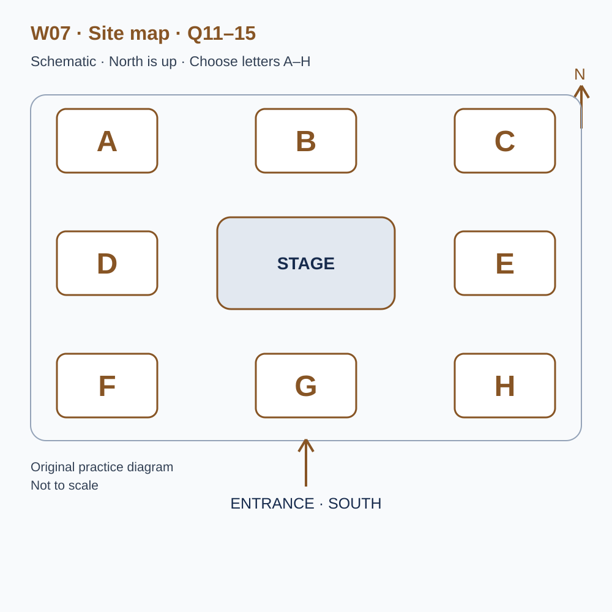
Q11. Tasting tent
Answer: ____
Q12. Drinking-water point
Answer: ____
Q13. Information and first-aid tent
Answer: ____
Q14. Story corner
Answer: ____
Q15. Recycling point
Answer: ____
Q16. Why are pauses built into the performance programme?
- A. To allow movement and equipment checks.
- B. Because all performers are expected to be late.
- C. To require stallholders to make sales announcements.
Answer: ____
Q17. For an identifiable story recorded for the archive, collectors should
- A. assume attendance implies consent.
- B. ask a second volunteer to approach anyone who declines.
- C. explain the use and record the contributor's decision.
Answer: ____
Q18. What is the purpose of activity-trail stamps?
- A. To pay for goods at every stall.
- B. To encourage exploration without requiring purchases.
- C. To guarantee a free purchase after completion.
Answer: ____
Q19. How should a story-session change be handled first?
- A. Post only on the group's personal social account.
- B. Move to any apparently unused space.
- C. Report it to the programme desk for coordinated updates.
Answer: ____
Q20. What belongs in a shift handover?
- A. Unresolved requests and relevant confirmed changes.
- B. Every pleasant conversation in detail.
- C. A blank whenever nothing needs follow-up.
Answer: ____
Part 3 — Editing a festival documentary
Q21–26: Match each proposal to the students' final positions at the end of that exchange. The tutor is not included. Write A, B, C or D. Letters may be reused.
- A Mira only
- B Ethan only
- C Both students
- D Neither student
Q27–28 and Q29–30: Choose TWO different letters, A–E, for each pair. Write one letter in each numbered slot; either order is accepted. Each distinct correct choice earns one point, maximum two. Repeating a letter cannot earn two points. Submit no more than two letters.
Q21. At the END of this exchange, who supports: Opening with a visual montage?
Answer: ____
Q22. At the END of this exchange, who supports: Recording conversations secretly?
Answer: ____
Q23. At the END of this exchange, who supports: Testing a short pilot clip with classmates unfamiliar with the festival?
Answer: ____
Q24. At the END of this exchange, who supports: Keeping the quiet interview in the final short film?
Answer: ____
Q25. At the END of this exchange, who supports: Maintaining a source and permission log?
Answer: ____
Q26. At the END of this exchange, who supports: Using a split-screen comparison?
Answer: ____
Q27–28. Which TWO clips are selected for the middle section?
- A. A celebrity's promotional greeting
- B. A first-time stallholder describing a changed expectation
- C. Anonymous cheering without clear context
- D. A child's close recording without the required agreement
- E. A recycling volunteer explaining sorting
Answers: Q27 ____ · Q28 ____
Q29–30. Which TWO caption changes are confirmed?
- A. Use a more decorative typeface
- B. Shorten every display time
- C. Increase the font size
- D. Remove all speaker labels
- E. Use consistent speaker labels
Answers: Q29 ____ · Q30 ____
Part 4 — Reading historical market records
Q31–35: Complete the flow chart below. Q36–40: Complete the notes. Write NO MORE THAN TWO WORDS AND/OR A NUMBER for each answer, using words from the recording. Numeric notation may replace spoken numbers. Words or units already printed do not belong in the blank. The numbered text below repeats the SVG prompts for readability.
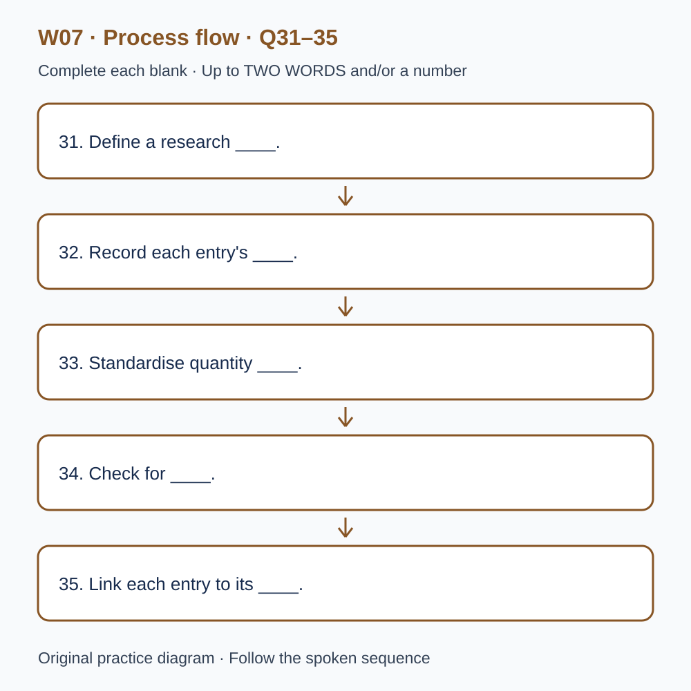
Q31. Define a research ____.
Q32. Record each entry's ____.
Q33. Standardise quantity ____.
Q34. Check for ____.
Q35. Link each entry to its ____.
Q36. A recorded ____ explicitly means none; a blank may mean missing information.
Q37. The team's main comparison uses ____, rather than money values.
Q38. The issue of which sellers appear in the records is called ____.
Q39. For ambiguous digits, calculate a ____ of possible totals.
Q40. The final report includes an account of ____.
本周训练安排（音频批准后执行）
- Preview questions without the script：8 分钟。
- Future continuous first listen, including planned part pauses：32 分钟。
- Submit first answers and confidence, without a second play：8 分钟。
- Check answers and classify errors：20 分钟。
- Four Q-located intensive segments, 15 minutes each：60 分钟。
- Diagram and opinion retelling：15 分钟。
- Next-day retry of missed items：15 分钟。
合计 158 分钟；最多另用 22 分钟缓冲，总计不超过 180 分钟。暂停、回放与查词均计入精听预算，不能另行无限追加。当前实际已完成听力分钟数为 0。精听区段和步骤见 intensive.md；答案和脚本另页。
参考答案与证据（完成首次听力后再展开）
L-W07 — Answers and evidence
> 独立答案页。先提交首次答案，再看本页。当前缺音频，文本验题不能充当实听验收。
每个单空 1 分；双选各 2 分、答案顺序不限、按不同正确选项计分。接受形式仅做大小写和空白规范化；不做模糊词形推断。
Q1 — bread
Accepted answers: bread
Use the final confirmed detail in this exchange; the printed unit or date context is already supplied.
Evidence locator: Q01 (script.md; timestamps unavailable).
> Organiser: Welcome to the neighbourhood food festival office. Are you enquiring about a stall for your organisation? Stallholder: Yes, our community kitchen has made bread for local events before, and we want to try a public stall. We discussed selling cakes as well, but we cannot organise two production teams this time. Organiser: So I should enter bread as your main product? Stallholder: Please do. We can describe how we make it while people look around, although we won't run a cooking demonstration. Our kitchen is across town, and transporting the equipment would be much harder than bringing the finished products.
Q2 — 19
Accepted answers: 19 / 19th / nineteenth / the nineteenth
Use the final confirmed detail in this exchange; the printed unit or date context is already supplied.
Evidence locator: Q02 (script.md; timestamps unavailable).
> Organiser: Which date were you hoping for? Our programme covers two weekends, and the stall arrangements are separate for each one. Stallholder: I originally wrote down June the twelfth, because that appeared in an early message. Then our volunteers checked their availability. The nineteenth of June is the date that everyone can manage. Organiser: Yes, the twelfth was a provisional date for a smaller event. The nineteenth is available, and I'll put you on that list. Stallholder: Thank you. I'd rather join once with a full team than attempt both weekends and leave one person trying to manage everything alone.
Q3 — 4
Accepted answers: 4 / four
Use the final confirmed detail in this exchange; the printed unit or date context is already supplied.
Evidence locator: Q03 (script.md; timestamps unavailable).
> Organiser: How many people will need stallholder passes? Visitors can enter freely, but the setup area is restricted before the festival opens. Stallholder: We have six volunteers involved in the kitchen, though not all of them will attend. Two will finish the baking and stay behind, so we'll need four passes. Organiser: Four it is. Will the same people be present all day? Stallholder: Yes. They'll take turns having breaks without bringing extra helpers into the stall. Organiser: That makes things straightforward. Please let me know in advance if a named person changes, so we can update the entrance list.
Q4 — 8.30
Accepted answers: 8.30 / 8:30 / 08.30 / 08:30 / eight thirty
Use the final confirmed detail in this exchange; the printed unit or date context is already supplied.
Evidence locator: Q04 (script.md; timestamps unavailable).
> Stallholder: What time should we arrive with our boxes? Organiser: Vehicle unloading starts at eight, but your allocated slot is eight thirty. Each row has its own slot to prevent the narrow entrance becoming blocked. Stallholder: Could we arrive at eight and wait? Organiser: There isn't a waiting area for vehicles at the gate. Please plan around eight thirty, then move the vehicle to the public car park when you've unloaded. The public opening is much later, so you'll still have plenty of time to arrange the stall. Stallholder: Good. I'll put the unloading time on our transport sheet, not the opening time.
Q5 — 40
Accepted answers: 40 / forty
Use the final confirmed detail in this exchange; the printed unit or date context is already supplied.
Evidence locator: Q05 (script.md; timestamps unavailable).
> Stallholder: Is there a charge for the stall? Someone told me community groups could apply for a reduced rate. Organiser: They can, and your group meets the conditions. The standard amount is sixty pounds, but your fee will be forty pounds. That covers the stall space and the basic table. Stallholder: Is that per volunteer? Organiser: No, it's the total for your stall for the day. Stallholder: That's helpful. We have a small budget for printing our information sheet, so I'll record forty pounds as the stall cost and keep the printing expense separate when we discuss the budget with the group.
Q6 — clips
Accepted answers: clips
Use the final confirmed detail in this exchange; the printed unit or date context is already supplied.
Evidence locator: Q06 (script.md; timestamps unavailable).
> Organiser: The last practical question concerns your sign. We provide a table, but groups bring their own display materials. Stallholder: We can make a board with our kitchen's name. How do we attach it? Organiser: Please bring clips. String tends to hang loose in the shared walkway, and tape can damage the table surface when people remove it. Stallholder: Clips, then. I'll ask our volunteer to pack them with the board rather than in the food boxes. Organiser: Excellent. Keeping the display equipment together will make unloading easier, particularly if a different volunteer has to do that job on the morning.
Q7 — B
Accepted answers: B
The take-away sheet extends a short conversation; it confers no priority.
Evidence locator: Q07 (script.md; timestamps unavailable).
> Stallholder: We'd like visitors to hear the story behind the kitchen. Should we schedule a long talk at the stall? Organiser: For your location, brief conversations will work better. The walkway needs to stay open, and people may only have a minute before they move on. A short illustrated sheet gives them something to take away if they're interested. Stallholder: So the main reason for that sheet is to let people continue reading afterwards? Organiser: Exactly. It isn't a substitute for the required stall information, and printing more pages doesn't give a group priority in the programme. Keep the story clear and manageable.
Q8 — A
Accepted answers: A
Responsibility and proposed goods must be recorded for each organisation.
Evidence locator: Q08 (script.md; timestamps unavailable).
> Stallholder: A friend offered to share our space and sell pottery. It would make the table look attractive, but it's a different organisation. Organiser: Please ask them to apply separately. We need to know who is responsible for each stall and what each group intends to bring. You cannot add another seller informally on the morning. Stallholder: Even if they only use one corner? Organiser: Yes. We can consider placing the two groups near each other, although that depends on available space. A separate application is the first step. Stallholder: I'll explain that we shouldn't promise them part of our table before they've spoken to you.
Q9 — C
Accepted answers: C
Selling may stop but the information display remains; vehicle entry is restricted.
Evidence locator: Q09 (script.md; timestamps unavailable).
> Stallholder: If we sell everything before the end, can we pack up immediately? Organiser: You can stop selling, of course, but please keep your information display open until the agreed closing time. Vehicles cannot enter the stall rows while visitors are still moving around them. Stallholder: So we could talk about the kitchen after the products are gone? Organiser: That's ideal. Bring a sign saying you've sold out, and visitors can still find out what your organisation does. You won't need to invent extra activities. Stallholder: Fine. We'll plan a quieter final hour instead of assuming we can drive away as soon as the last item sells.
Q10 — B
Accepted answers: B
Confirmed numbered plans, and direct revisions, govern the stall location.
Evidence locator: Q10 (script.md; timestamps unavailable).
> Stallholder: How will you confirm the final stall position? Organiser: I'll send a numbered site plan with your booking confirmation. Please check the number against the name on the plan; the rough sketch on our website is only an early overview. Stallholder: Should I call every week to see whether it's changed? Organiser: No need. If your position changes after confirmation, we'll contact you directly and send a revised plan. Stallholder: Then I'll distribute the confirmed version to our volunteers and replace it if you send an update. Organiser: Exactly. That prevents different members of the same team arriving with different versions and searching in opposite directions.
Q11 — B
Accepted answers: B
Use the explicitly stated position relative to the stage, not an earlier layout or adjacent area.
Evidence locator: Q11 (script.md; timestamps unavailable).
> Before you leave the briefing, look at the map of the festival grounds. North is at the top, and the public entrance is on the southern edge. The stage is the central landmark. The eight lettered areas are separate activity spaces around it. First, the tasting tent is directly north of the stage. It is not the area to the north-east, even though the two can look close together on a small screen. Visitors entering from the south can use the stage as a reference point. Please describe this location by direction rather than by the colour of the tent, because covers may be changed.
Q12 — F
Accepted answers: F
Use the explicitly stated position relative to the stage, not an earlier layout or adjacent area.
Evidence locator: Q12 (script.md; timestamps unavailable).
> The drinking-water point is in the south-west area. On the map that means below and to the left of the central stage. An earlier layout placed it immediately south of the stage, near the entrance, but that created a crowd where people were arriving. We moved it sideways to give visitors room to stop. The water point remains easy to reach without crossing the performance space. If someone asks for it, make sure you don't simply direct them back towards the entrance. The southern lettered area has another use today, and a visitor following that vague instruction would miss the water station.
Q13 — C
Accepted answers: C
Use the explicitly stated position relative to the stage, not an earlier layout or adjacent area.
Evidence locator: Q13 (script.md; timestamps unavailable).
> The information and first-aid tent is in the north-east corner of the activity ring. Its shared front desk handles general requests and directs visitors to the appropriate member of staff. Some volunteers remember an arrangement in which the information point stood west of the stage. That was last year's plan, so please use today's map. The north-east position is above and to the right of the stage when you hold the page upright. We use a single shared front desk so visitors do not have to decide which team they need before asking for assistance. Staff inside will help them find the right person.
Q14 — D
Accepted answers: D
Use the explicitly stated position relative to the stage, not an earlier layout or adjacent area.
Evidence locator: Q14 (script.md; timestamps unavailable).
> The story corner is directly west of the stage, level with its centre. It is a small seated area where contributors can describe their community projects. Please distinguish it from the north-west area, which is reserved for another purpose. We tested the story corner beside the main entrance, but short talks were difficult to hear over the arriving crowd. Moving it to the west gives it a clearer boundary. It still isn't a private interview room, so documentary teams should arrange separate conversations if they need quiet recordings. For an ordinary visitor looking for the programme of stories, however, this western area is the correct destination.
Q15 — H
Accepted answers: H
Use the explicitly stated position relative to the stage, not an earlier layout or adjacent area.
Evidence locator: Q15 (script.md; timestamps unavailable).
> Finally, the recycling point is south-east of the stage. That is the lower-right area of the map, and it is separate from the drinking-water point on the opposite side. Volunteers will help visitors read the labels on the containers. We haven't placed recycling directly beside the stage because the space there must remain open during performances. Do not send people to the south-west area simply because you remember that another service is located there. Water is south-west; recycling is south-east. Those two locations are the most commonly confused, so use both the direction and the central stage when explaining the route to a visitor.
Q16 — A
Accepted answers: A
Pauses support circulation and preparation, not compulsory selling.
Evidence locator: Q16 (script.md; timestamps unavailable).
> The programme has several short performances, with a pause between each one. Those pauses are deliberate. They give visitors time to move between activities and allow the next group to check its equipment without rushing. We haven't introduced them because performers are expected to arrive late. Nor are they extra sales periods that stallholders must fill with announcements. During a pause, volunteers should keep the main paths clear and answer ordinary questions. If a performance starts a few minutes later than printed, consult the stage coordinator before making an announcement. A guessed explanation can spread quickly and leave different parts of the site giving contradictory information.
Q17 — C
Accepted answers: C
Contributors choose with an understanding of intended use.
Evidence locator: Q17 (script.md; timestamps unavailable).
> Anyone collecting photographs or recorded stories for the festival archive must follow the contributor arrangements. Being at a public event does not mean someone has agreed to a close interview for our archive. Explain the intended use, ask the person, and record their decision using the project form. A general crowd photograph and an identifiable personal story are different tasks in our workflow. If somebody declines, thank them and move on. Do not ask a neighbouring volunteer to approach the same person again. Our aim is to collect contributions people understand and choose to make, not to obtain a particular number of recordings by the end of the afternoon.
Q18 — B
Accepted answers: B
Stamps are part of an activity trail, not money or a purchase prize.
Evidence locator: Q18 (script.md; timestamps unavailable).
> The festival tokens used in the activity trail are not money. Children collect a stamp at participating activities and can show the completed card at the exit desk. Stallholders should not accept the stamps as payment or promise that a completed card wins a purchase. We designed the trail to encourage visitors to explore different community groups, including activities that do not sell anything. A family can take part without buying food or products. If a card is lost, the exit team can explain the available options. Individual volunteers should avoid inventing replacement rules, because inconsistent promises create problems for families who have followed the printed instructions.
Q19 — C
Accepted answers: C
The desk checks and communicates changes across the site.
Evidence locator: Q19 (script.md; timestamps unavailable).
> A change to a scheduled story session should be reported to the programme desk first. The desk updates the main noticeboard and tells the volunteers near the affected area. Posting a message on one group's personal social account is not enough, because many visitors will not see it. Equally, crossing out a time on one small sign leaves other copies unchanged. The programme desk provides one coordinated route for revisions. You can help by giving the session name, original time and proposed change clearly. Please wait for confirmation before directing a group to a new location; that space may already be booked for somebody else's activity.
Q20 — A
Accepted answers: A
The next volunteer needs actionable information and an explicit indication when no issue remains.
Evidence locator: Q20 (script.md; timestamps unavailable).
> At the end of your shift, leave a short handover for the next volunteer. Include unresolved requests and any confirmed programme changes relevant to your position. A long description of every pleasant conversation is unnecessary, although you are welcome to share those stories later. The useful question is what the next person needs to know to do the job. If there is nothing unresolved, say so explicitly instead of leaving the form blank. A blank can mean either no issue or a forgotten handover. Keep personal information out of the public-facing copy and use the staff process for any details that need restricted access.
Q21 — A
Accepted answers: A
Final stance: Mira only. Ignore an initial proposal if later withdrawn; the tutor is not an answer option.
Evidence locator: Q21 (script.md; timestamps unavailable).
> Tutor: Let's settle the opening of your student documentary. Mira: I want a short visual montage of people setting up stalls. It establishes the place before we hear explanations. Ethan: The pictures are attractive, but I'd start with one contributor speaking. Otherwise viewers might not know what question the film is exploring. Mira: We can add the question as a title, and I still favour the montage. Tutor: Would a shorter version bring you together? Ethan: No, my preference remains a spoken opening. Mira: Then we should record that we disagree. I support the visual montage, even if the final editing decision goes another way.
Q22 — D
Accepted answers: D
Final stance: Neither student. Ignore an initial proposal if later withdrawn; the tutor is not an answer option.
Evidence locator: Q22 (script.md; timestamps unavailable).
> Tutor: What about recording informal conversations without approaching people first? Ethan: I initially thought hidden recording might make the dialogue sound more natural. Mira: It would also leave contributors unaware of how their words could be used. I don't support it. Ethan: Having looked at our project requirements, I've changed my mind. We should explain the recording and ask people to participate. Tutor: So hidden recording is no longer a proposal either of you supports? Ethan: Correct. I withdraw it rather than simply postponing it. Mira: And I remain against it. We can capture relaxed conversation with willing contributors instead of concealing what we're doing.
Q23 — C
Accepted answers: C
Final stance: Both students. Ignore an initial proposal if later withdrawn; the tutor is not an answer option.
Evidence locator: Q23 (script.md; timestamps unavailable).
> Tutor: How will you check whether viewers follow the structure? Mira: We could show a short pilot clip to classmates who haven't visited the festival. Ethan: I worried that would waste time before the full edit, but a pilot could reveal a missing explanation early. I support testing one now. Mira: I'd ask viewers to describe the sequence in their own words, rather than just say whether they like it. Tutor: That seems manageable. Ethan: Yes, as long as the pilot is short, I agree with the proposal. We needn't wait until the soundtrack and every transition are polished before finding out whether the basic story makes sense.
Q24 — B
Accepted answers: B
Final stance: Ethan only. Ignore an initial proposal if later withdrawn; the tutor is not an answer option.
Evidence locator: Q24 (script.md; timestamps unavailable).
> Tutor: One interview has long pauses. Will you keep it? Ethan: I want to retain that quiet interview. The contributor describes a difficult first year, and the pauses give the answer room to develop. Mira: I understand the value, but in this short film I'd replace it with a more concise account. Ethan: We can trim repetition without losing the measured pace. I still support keeping the interview. Tutor: Mira, has that suggestion changed your position? Mira: No. I would use another speaker and preserve this recording in the project archive. It deserves to be heard, but I don't favour including it in our final short film.
Q25 — C
Accepted answers: C
Final stance: Both students. Ignore an initial proposal if later withdrawn; the tutor is not an answer option.
Evidence locator: Q25 (script.md; timestamps unavailable).
> Tutor: You have contributions from several groups. How will you track their agreed uses? Mira: A source and permission log would connect every clip to the contributor's decision. Ethan: I support that. I originally imagined filenames would be enough, but they cannot tell us whether someone agreed to a classroom screening only. Mira: We should check the log before exporting each version. Tutor: And if the intended audience changes? Ethan: We review the agreement rather than assuming permission extends automatically. Mira: Exactly. So we both want the log, with a clear entry for each source, even if some entries need further discussion before we can use the material.
Q26 — A
Accepted answers: A
Final stance: Mira only. Ignore an initial proposal if later withdrawn; the tutor is not an answer option.
Evidence locator: Q26 (script.md; timestamps unavailable).
> Tutor: Your draft compares the same stall at opening and closing. Mira: I'd show the images in a split-screen comparison. Viewers could see the changed arrangement at once. Ethan: I prefer showing one image and then the other, with a short explanation. Two moving pictures compete for attention. Mira: We could use still frames, but I still favour the split-screen. Tutor: Would still frames resolve your objection, Ethan? Ethan: They would help, but I remain against that format for this sequence. I want viewers to focus on each image separately. Mira: Then my support stays, and his doesn't. We'll test both versions before making the editing decision.
Q27–28 — B, E
Accept unordered set: B, E. One point per distinct correct choice, maximum 2.
The selected clips develop the theme with usable agreed contributions; the greeting, cheering and unapproved child contribution are not selected.
Evidence locator: Q27, Q28 (script.md; timestamps unavailable).
> Tutor: You have space for two more clips in the middle section. Which one is already agreed? Ethan: The interview with the first-time stallholder who changed her view of the event. At the start she expected only sales, but afterwards she talks about meeting possible volunteers. Mira: Yes, that change gives the film a clear development. We both selected it. Tutor: What about the local celebrity's promotional greeting? Mira: It attracts attention, but it doesn't advance our question. Ethan: And the anonymous cheering shot has no clear context. We haven't selected either of those. The first agreed addition is the stallholder describing how her expectation changed.
> Tutor: And your second agreed addition? Mira: The recycling volunteer explaining the sorting process. We have clear images of the labelled containers to accompany that explanation. Ethan: Agreed. It shows work that visitors may overlook, and the volunteer approved the intended screening. Tutor: There is also the close recording of a child discussing the activity trail. Ethan: We don't have the necessary project agreement for that contribution, so it is not one of our selected clips. Mira: We won't try to fill the gap with an unclear crowd sound either. Our two additions are the changed expectation from the stallholder and the volunteer's explanation of sorting.
Q29–30 — C, E
Accept unordered set: C, E. One point per distinct correct choice, maximum 2.
Larger letters address reading difficulty; consistent labels preserve useful contributor context.
Evidence locator: Q29, Q30 (script.md; timestamps unavailable).
> Tutor: Let's finish with captions. The test viewers struggled with the preview. Ethan: Several said the letters were too small on the classroom display. I suggest increasing the font size across all captions. Mira: I agree. Enlarging just the first caption would leave the same problem elsewhere. Tutor: Did anyone request a more decorative typeface? Mira: One classmate liked that idea aesthetically, but it wouldn't address the reading problem, and we haven't adopted it. Ethan: Nor are we planning to animate each line. The first confirmed change is a larger font, with enough space around it to keep the words separate from the image details.
> Tutor: What is the other confirmed caption change? Mira: Consistent speaker labels. In the current edit, one person is introduced by name, another by role, and a third has no label. Ethan: We should use the same pattern for every contributor, subject to the name each person has agreed to show. Tutor: Would removing every label simplify matters? Ethan: It would remove useful context, so we rejected that. Mira: We also rejected shortening the display time simply to make the film feel faster. The two changes we've approved are increasing the font size and using consistent speaker labels. We'll check them in a new preview before declaring the captions finished.
Q31 — question
Accepted answers: question
Complete the named stage in the stated process order; retain any word already printed around the blank.
Evidence locator: Q31 (script.md; timestamps unavailable).
> This lecture uses an invented archive project to explore historical market records. The team wants to compare the quantities of selected goods sold at a small market over several years. Its first task is to define a question. Without that step, researchers can spend weeks copying figures that do not help their investigation. A broad interest in local life needs to become a question specific enough to guide selection. Here, the team asks how recorded quantities changed, rather than trying to describe every aspect of the market. That choice will shape which records it copies, how it groups entries and what its eventual conclusions can reasonably cover.
Q32 — date
Accepted answers: date
Complete the named stage in the stated process order; retain any word already printed around the blank.
Evidence locator: Q32 (script.md; timestamps unavailable).
> Next, the team records the date attached to each entry. The position of a page in a bound volume is useful, but it is not a reliable substitute for a date. Pages may have been inserted later or grouped by seller rather than by time. If the date cannot be read, the team marks that uncertainty instead of borrowing the date from a neighbouring entry. Clear dates allow observations to be ordered and compared across the chosen period. The original written form is preserved beside the working version, so another reader can check how the researchers interpreted an unusual abbreviation or an incomplete entry.
Q33 — units
Accepted answers: units
Complete the named stage in the stated process order; retain any word already printed around the blank.
Evidence locator: Q33 (script.md; timestamps unavailable).
> The third stage is to standardise the units used for quantities. One page might count individual containers while another records a measure of weight. The team cannot simply add the figures because both happen to be numbers. It first establishes what each unit means in the relevant records and whether a justified conversion is available. When no reliable conversion can be made, the values remain separate. Standardising units is therefore not a licence to invent missing information. It is a documented process that makes comparable observations comparable while keeping genuine differences visible. The conversion rule, when used, is stored with the working data rather than only in a researcher's memory.
Q34 — duplicates
Accepted answers: duplicates / the duplicates / duplicate entries
Complete the named stage in the stated process order; retain any word already printed around the blank.
Evidence locator: Q34 (script.md; timestamps unavailable).
> The fourth stage checks for duplicates. An entry may appear in a daily sheet and then again in a weekly summary. Counting both as separate sales would inflate the total. Researchers compare dates, descriptions and other recorded features before deciding that two entries refer to the same event. Similar quantities alone are not enough, because different sales can have equal amounts. A duplicate flag preserves the relationship between the records without destroying the original transcription. The working total includes the event once, while a reviewer can still trace both written appearances. This is a careful checking stage, not an instruction to delete every line that resembles an earlier one.
Q35 — source
Accepted answers: source / original material
Complete the named stage in the stated process order; retain any word already printed around the blank.
Evidence locator: Q35 (script.md; timestamps unavailable).
> The fifth stage links each working entry to its source. A page reference and archive identifier let another researcher find the original material. Even a beautifully organised table loses much of its value if nobody can discover where a figure came from. The source link also helps when a later reader proposes a different interpretation of handwriting. Researchers can return to the evidence instead of arguing only from copied numbers. In this project the link is stored for every entry, including entries excluded from the final comparison. Exclusion is a research decision that needs an explanation; it should not erase the route back to the material on which that decision was based.
Q36 — zero
Accepted answers: zero / 0
The corresponding evidence block supplies this distinction or qualification; the question retains the surrounding grammar.
Evidence locator: Q36 (script.md; timestamps unavailable).
> During analysis, the team must distinguish a blank from a zero. A zero explicitly records that none of the relevant goods were counted. A blank may mean that the information was omitted, the page was damaged, or the category was not used on that occasion. Replacing every blank with zero would turn missing information into a confident statement about activity. The team therefore uses a separate missing-value label and describes the rule in its notes. This does not solve the historical uncertainty, but it prevents a spreadsheet operation from hiding it. Readers should be able to see both the calculated results and the limits of the observations behind them.
Q37 — quantities
Accepted answers: quantities
The corresponding evidence block supplies this distinction or qualification; the question retains the surrounding grammar.
Evidence locator: Q37 (script.md; timestamps unavailable).
> Prices and quantities must also remain distinct. A rise in the money recorded for a product does not by itself show that a greater quantity was sold. The price per unit may have changed, or the way payments were recorded may differ. For the question this team has chosen, quantities are the main comparison. Money values can provide context when the records support it, but they cannot silently replace the required measurements. A graph with a clear title and unit label helps prevent that substitution. Researchers should ask what each axis actually represents before treating the shape of a line as evidence for a broader story about the market.
Q38 — coverage
Accepted answers: coverage
The corresponding evidence block supplies this distinction or qualification; the question retains the surrounding grammar.
Evidence locator: Q38 (script.md; timestamps unavailable).
> Another issue is coverage. Suppose the surviving records describe only some sellers. Their combined totals would not automatically represent the whole market. The team examines who appears in the documents and whether that group changes across the years. A new seller entering the records can make a total rise even if existing sellers have not changed their activity. Coverage is therefore part of the interpretation, rather than a minor detail reserved for a final footnote. The researchers might restrict a comparison to a consistent subset, while clearly explaining what that subset excludes. Such a choice narrows the claim, but makes the relationship between the evidence and the claim easier to assess.
Q39 — range
Accepted answers: range
The corresponding evidence block supplies this distinction or qualification; the question retains the surrounding grammar.
Evidence locator: Q39 (script.md; timestamps unavailable).
> Some handwritten numbers allow more than one plausible reading. Rather than quietly choosing the value that produces the smoothest graph, the team can calculate a range of possible totals using the defensible alternatives. That range shows how much the uncertain entry could affect the result. It is not a claim that every number between the endpoints was actually observed. The original ambiguity remains documented alongside the calculation. If the broad pattern changes when a single unclear digit is read differently, the final explanation should say so. A precise-looking total is not useful when its apparent precision conceals a choice that readers would reasonably want to examine.
Q40 — uncertainty
Accepted answers: uncertainty / the uncertainty
The corresponding evidence block supplies this distinction or qualification; the question retains the surrounding grammar.
Evidence locator: Q40 (script.md; timestamps unavailable).
> The final report combines the result with an account of uncertainty. It explains which entries were included, how units were treated, where records were missing and which readings remained doubtful. This is not an optional apology after the interesting part of the project. It helps readers decide what the comparison can support and what further evidence would be valuable. The team may still identify a convincing pattern within its defined collection. It simply avoids extending that pattern to every seller or every year without support. A successful report lets another person follow the reasoning from source entries to conclusion, including the points where the available material limits the conclusion.
完整脚本（提前阅读会失去陌生题首答机会）
L-W07 — Food, stories and community records: transcript
> 原创虚构练习，非真题；音频缺失。仅供完成首次作答后的核对或文字审阅。Q 标记与角色名不属于朗读正文。
Part 1 — Booking a festival stall
Q1 evidence block
Organiser: Welcome to the neighbourhood food festival office. Are you enquiring about a stall for your organisation?
Stallholder: Yes, our community kitchen has made bread for local events before, and we want to try a public stall. We discussed selling cakes as well, but we cannot organise two production teams this time.
Organiser: So I should enter bread as your main product?
Stallholder: Please do. We can describe how we make it while people look around, although we won't run a cooking demonstration. Our kitchen is across town, and transporting the equipment would be much harder than bringing the finished products.
Q2 evidence block
Organiser: Which date were you hoping for? Our programme covers two weekends, and the stall arrangements are separate for each one.
Stallholder: I originally wrote down June the twelfth, because that appeared in an early message. Then our volunteers checked their availability. The nineteenth of June is the date that everyone can manage.
Organiser: Yes, the twelfth was a provisional date for a smaller event. The nineteenth is available, and I'll put you on that list.
Stallholder: Thank you. I'd rather join once with a full team than attempt both weekends and leave one person trying to manage everything alone.
Q3 evidence block
Organiser: How many people will need stallholder passes? Visitors can enter freely, but the setup area is restricted before the festival opens.
Stallholder: We have six volunteers involved in the kitchen, though not all of them will attend. Two will finish the baking and stay behind, so we'll need four passes.
Organiser: Four it is. Will the same people be present all day?
Stallholder: Yes. They'll take turns having breaks without bringing extra helpers into the stall.
Organiser: That makes things straightforward. Please let me know in advance if a named person changes, so we can update the entrance list.
Q4 evidence block
Stallholder: What time should we arrive with our boxes?
Organiser: Vehicle unloading starts at eight, but your allocated slot is eight thirty. Each row has its own slot to prevent the narrow entrance becoming blocked.
Stallholder: Could we arrive at eight and wait?
Organiser: There isn't a waiting area for vehicles at the gate. Please plan around eight thirty, then move the vehicle to the public car park when you've unloaded. The public opening is much later, so you'll still have plenty of time to arrange the stall.
Stallholder: Good. I'll put the unloading time on our transport sheet, not the opening time.
Q5 evidence block
Stallholder: Is there a charge for the stall? Someone told me community groups could apply for a reduced rate.
Organiser: They can, and your group meets the conditions. The standard amount is sixty pounds, but your fee will be forty pounds. That covers the stall space and the basic table.
Stallholder: Is that per volunteer?
Organiser: No, it's the total for your stall for the day.
Stallholder: That's helpful. We have a small budget for printing our information sheet, so I'll record forty pounds as the stall cost and keep the printing expense separate when we discuss the budget with the group.
Q6 evidence block
Organiser: The last practical question concerns your sign. We provide a table, but groups bring their own display materials.
Stallholder: We can make a board with our kitchen's name. How do we attach it?
Organiser: Please bring clips. String tends to hang loose in the shared walkway, and tape can damage the table surface when people remove it.
Stallholder: Clips, then. I'll ask our volunteer to pack them with the board rather than in the food boxes.
Organiser: Excellent. Keeping the display equipment together will make unloading easier, particularly if a different volunteer has to do that job on the morning.
Q7 evidence block
Stallholder: We'd like visitors to hear the story behind the kitchen. Should we schedule a long talk at the stall?
Organiser: For your location, brief conversations will work better. The walkway needs to stay open, and people may only have a minute before they move on. A short illustrated sheet gives them something to take away if they're interested.
Stallholder: So the main reason for that sheet is to let people continue reading afterwards?
Organiser: Exactly. It isn't a substitute for the required stall information, and printing more pages doesn't give a group priority in the programme. Keep the story clear and manageable.
Q8 evidence block
Stallholder: A friend offered to share our space and sell pottery. It would make the table look attractive, but it's a different organisation.
Organiser: Please ask them to apply separately. We need to know who is responsible for each stall and what each group intends to bring. You cannot add another seller informally on the morning.
Stallholder: Even if they only use one corner?
Organiser: Yes. We can consider placing the two groups near each other, although that depends on available space. A separate application is the first step.
Stallholder: I'll explain that we shouldn't promise them part of our table before they've spoken to you.
Q9 evidence block
Stallholder: If we sell everything before the end, can we pack up immediately?
Organiser: You can stop selling, of course, but please keep your information display open until the agreed closing time. Vehicles cannot enter the stall rows while visitors are still moving around them.
Stallholder: So we could talk about the kitchen after the products are gone?
Organiser: That's ideal. Bring a sign saying you've sold out, and visitors can still find out what your organisation does. You won't need to invent extra activities.
Stallholder: Fine. We'll plan a quieter final hour instead of assuming we can drive away as soon as the last item sells.
Q10 evidence block
Stallholder: How will you confirm the final stall position?
Organiser: I'll send a numbered site plan with your booking confirmation. Please check the number against the name on the plan; the rough sketch on our website is only an early overview.
Stallholder: Should I call every week to see whether it's changed?
Organiser: No need. If your position changes after confirmation, we'll contact you directly and send a revised plan.
Stallholder: Then I'll distribute the confirmed version to our volunteers and replace it if you send an update.
Organiser: Exactly. That prevents different members of the same team arriving with different versions and searching in opposite directions.
Part 2 — Festival grounds orientation
Q11 evidence block
Festival coordinator: Before you leave the briefing, look at the map of the festival grounds. North is at the top, and the public entrance is on the southern edge. The stage is the central landmark. The eight lettered areas are separate activity spaces around it. First, the tasting tent is directly north of the stage. It is not the area to the north-east, even though the two can look close together on a small screen. Visitors entering from the south can use the stage as a reference point. Please describe this location by direction rather than by the colour of the tent, because covers may be changed.
Q12 evidence block
Festival coordinator: The drinking-water point is in the south-west area. On the map that means below and to the left of the central stage. An earlier layout placed it immediately south of the stage, near the entrance, but that created a crowd where people were arriving. We moved it sideways to give visitors room to stop. The water point remains easy to reach without crossing the performance space. If someone asks for it, make sure you don't simply direct them back towards the entrance. The southern lettered area has another use today, and a visitor following that vague instruction would miss the water station.
Q13 evidence block
Festival coordinator: The information and first-aid tent is in the north-east corner of the activity ring. Its shared front desk handles general requests and directs visitors to the appropriate member of staff. Some volunteers remember an arrangement in which the information point stood west of the stage. That was last year's plan, so please use today's map. The north-east position is above and to the right of the stage when you hold the page upright. We use a single shared front desk so visitors do not have to decide which team they need before asking for assistance. Staff inside will help them find the right person.
Q14 evidence block
Festival coordinator: The story corner is directly west of the stage, level with its centre. It is a small seated area where contributors can describe their community projects. Please distinguish it from the north-west area, which is reserved for another purpose. We tested the story corner beside the main entrance, but short talks were difficult to hear over the arriving crowd. Moving it to the west gives it a clearer boundary. It still isn't a private interview room, so documentary teams should arrange separate conversations if they need quiet recordings. For an ordinary visitor looking for the programme of stories, however, this western area is the correct destination.
Q15 evidence block
Festival coordinator: Finally, the recycling point is south-east of the stage. That is the lower-right area of the map, and it is separate from the drinking-water point on the opposite side. Volunteers will help visitors read the labels on the containers. We haven't placed recycling directly beside the stage because the space there must remain open during performances. Do not send people to the south-west area simply because you remember that another service is located there. Water is south-west; recycling is south-east. Those two locations are the most commonly confused, so use both the direction and the central stage when explaining the route to a visitor.
Q16 evidence block
Festival coordinator: The programme has several short performances, with a pause between each one. Those pauses are deliberate. They give visitors time to move between activities and allow the next group to check its equipment without rushing. We haven't introduced them because performers are expected to arrive late. Nor are they extra sales periods that stallholders must fill with announcements. During a pause, volunteers should keep the main paths clear and answer ordinary questions. If a performance starts a few minutes later than printed, consult the stage coordinator before making an announcement. A guessed explanation can spread quickly and leave different parts of the site giving contradictory information.
Q17 evidence block
Festival coordinator: Anyone collecting photographs or recorded stories for the festival archive must follow the contributor arrangements. Being at a public event does not mean someone has agreed to a close interview for our archive. Explain the intended use, ask the person, and record their decision using the project form. A general crowd photograph and an identifiable personal story are different tasks in our workflow. If somebody declines, thank them and move on. Do not ask a neighbouring volunteer to approach the same person again. Our aim is to collect contributions people understand and choose to make, not to obtain a particular number of recordings by the end of the afternoon.
Q18 evidence block
Festival coordinator: The festival tokens used in the activity trail are not money. Children collect a stamp at participating activities and can show the completed card at the exit desk. Stallholders should not accept the stamps as payment or promise that a completed card wins a purchase. We designed the trail to encourage visitors to explore different community groups, including activities that do not sell anything. A family can take part without buying food or products. If a card is lost, the exit team can explain the available options. Individual volunteers should avoid inventing replacement rules, because inconsistent promises create problems for families who have followed the printed instructions.
Q19 evidence block
Festival coordinator: A change to a scheduled story session should be reported to the programme desk first. The desk updates the main noticeboard and tells the volunteers near the affected area. Posting a message on one group's personal social account is not enough, because many visitors will not see it. Equally, crossing out a time on one small sign leaves other copies unchanged. The programme desk provides one coordinated route for revisions. You can help by giving the session name, original time and proposed change clearly. Please wait for confirmation before directing a group to a new location; that space may already be booked for somebody else's activity.
Q20 evidence block
Festival coordinator: At the end of your shift, leave a short handover for the next volunteer. Include unresolved requests and any confirmed programme changes relevant to your position. A long description of every pleasant conversation is unnecessary, although you are welcome to share those stories later. The useful question is what the next person needs to know to do the job. If there is nothing unresolved, say so explicitly instead of leaving the form blank. A blank can mean either no issue or a forgotten handover. Keep personal information out of the public-facing copy and use the staff process for any details that need restricted access.
Part 3 — Editing a festival documentary
Q21 evidence block
Tutor: Let's settle the opening of your student documentary.
Mira: I want a short visual montage of people setting up stalls. It establishes the place before we hear explanations.
Ethan: The pictures are attractive, but I'd start with one contributor speaking. Otherwise viewers might not know what question the film is exploring.
Mira: We can add the question as a title, and I still favour the montage.
Tutor: Would a shorter version bring you together?
Ethan: No, my preference remains a spoken opening.
Mira: Then we should record that we disagree. I support the visual montage, even if the final editing decision goes another way.
Q22 evidence block
Tutor: What about recording informal conversations without approaching people first?
Ethan: I initially thought hidden recording might make the dialogue sound more natural.
Mira: It would also leave contributors unaware of how their words could be used. I don't support it.
Ethan: Having looked at our project requirements, I've changed my mind. We should explain the recording and ask people to participate.
Tutor: So hidden recording is no longer a proposal either of you supports?
Ethan: Correct. I withdraw it rather than simply postponing it.
Mira: And I remain against it. We can capture relaxed conversation with willing contributors instead of concealing what we're doing.
Q23 evidence block
Tutor: How will you check whether viewers follow the structure?
Mira: We could show a short pilot clip to classmates who haven't visited the festival.
Ethan: I worried that would waste time before the full edit, but a pilot could reveal a missing explanation early. I support testing one now.
Mira: I'd ask viewers to describe the sequence in their own words, rather than just say whether they like it.
Tutor: That seems manageable.
Ethan: Yes, as long as the pilot is short, I agree with the proposal. We needn't wait until the soundtrack and every transition are polished before finding out whether the basic story makes sense.
Q24 evidence block
Tutor: One interview has long pauses. Will you keep it?
Ethan: I want to retain that quiet interview. The contributor describes a difficult first year, and the pauses give the answer room to develop.
Mira: I understand the value, but in this short film I'd replace it with a more concise account.
Ethan: We can trim repetition without losing the measured pace. I still support keeping the interview.
Tutor: Mira, has that suggestion changed your position?
Mira: No. I would use another speaker and preserve this recording in the project archive. It deserves to be heard, but I don't favour including it in our final short film.
Q25 evidence block
Tutor: You have contributions from several groups. How will you track their agreed uses?
Mira: A source and permission log would connect every clip to the contributor's decision.
Ethan: I support that. I originally imagined filenames would be enough, but they cannot tell us whether someone agreed to a classroom screening only.
Mira: We should check the log before exporting each version.
Tutor: And if the intended audience changes?
Ethan: We review the agreement rather than assuming permission extends automatically.
Mira: Exactly. So we both want the log, with a clear entry for each source, even if some entries need further discussion before we can use the material.
Q26 evidence block
Tutor: Your draft compares the same stall at opening and closing.
Mira: I'd show the images in a split-screen comparison. Viewers could see the changed arrangement at once.
Ethan: I prefer showing one image and then the other, with a short explanation. Two moving pictures compete for attention.
Mira: We could use still frames, but I still favour the split-screen.
Tutor: Would still frames resolve your objection, Ethan?
Ethan: They would help, but I remain against that format for this sequence. I want viewers to focus on each image separately.
Mira: Then my support stays, and his doesn't. We'll test both versions before making the editing decision.
Q27 evidence block
Tutor: You have space for two more clips in the middle section. Which one is already agreed?
Ethan: The interview with the first-time stallholder who changed her view of the event. At the start she expected only sales, but afterwards she talks about meeting possible volunteers.
Mira: Yes, that change gives the film a clear development. We both selected it.
Tutor: What about the local celebrity's promotional greeting?
Mira: It attracts attention, but it doesn't advance our question.
Ethan: And the anonymous cheering shot has no clear context. We haven't selected either of those. The first agreed addition is the stallholder describing how her expectation changed.
Q28 evidence block
Tutor: And your second agreed addition?
Mira: The recycling volunteer explaining the sorting process. We have clear images of the labelled containers to accompany that explanation.
Ethan: Agreed. It shows work that visitors may overlook, and the volunteer approved the intended screening.
Tutor: There is also the close recording of a child discussing the activity trail.
Ethan: We don't have the necessary project agreement for that contribution, so it is not one of our selected clips.
Mira: We won't try to fill the gap with an unclear crowd sound either. Our two additions are the changed expectation from the stallholder and the volunteer's explanation of sorting.
Q29 evidence block
Tutor: Let's finish with captions. The test viewers struggled with the preview.
Ethan: Several said the letters were too small on the classroom display. I suggest increasing the font size across all captions.
Mira: I agree. Enlarging just the first caption would leave the same problem elsewhere.
Tutor: Did anyone request a more decorative typeface?
Mira: One classmate liked that idea aesthetically, but it wouldn't address the reading problem, and we haven't adopted it.
Ethan: Nor are we planning to animate each line. The first confirmed change is a larger font, with enough space around it to keep the words separate from the image details.
Q30 evidence block
Tutor: What is the other confirmed caption change?
Mira: Consistent speaker labels. In the current edit, one person is introduced by name, another by role, and a third has no label.
Ethan: We should use the same pattern for every contributor, subject to the name each person has agreed to show.
Tutor: Would removing every label simplify matters?
Ethan: It would remove useful context, so we rejected that.
Mira: We also rejected shortening the display time simply to make the film feel faster. The two changes we've approved are increasing the font size and using consistent speaker labels. We'll check them in a new preview before declaring the captions finished.
Part 4 — Reading historical market records
Q31 evidence block
Lecturer: This lecture uses an invented archive project to explore historical market records. The team wants to compare the quantities of selected goods sold at a small market over several years. Its first task is to define a question. Without that step, researchers can spend weeks copying figures that do not help their investigation. A broad interest in local life needs to become a question specific enough to guide selection. Here, the team asks how recorded quantities changed, rather than trying to describe every aspect of the market. That choice will shape which records it copies, how it groups entries and what its eventual conclusions can reasonably cover.
Q32 evidence block
Lecturer: Next, the team records the date attached to each entry. The position of a page in a bound volume is useful, but it is not a reliable substitute for a date. Pages may have been inserted later or grouped by seller rather than by time. If the date cannot be read, the team marks that uncertainty instead of borrowing the date from a neighbouring entry. Clear dates allow observations to be ordered and compared across the chosen period. The original written form is preserved beside the working version, so another reader can check how the researchers interpreted an unusual abbreviation or an incomplete entry.
Q33 evidence block
Lecturer: The third stage is to standardise the units used for quantities. One page might count individual containers while another records a measure of weight. The team cannot simply add the figures because both happen to be numbers. It first establishes what each unit means in the relevant records and whether a justified conversion is available. When no reliable conversion can be made, the values remain separate. Standardising units is therefore not a licence to invent missing information. It is a documented process that makes comparable observations comparable while keeping genuine differences visible. The conversion rule, when used, is stored with the working data rather than only in a researcher's memory.
Q34 evidence block
Lecturer: The fourth stage checks for duplicates. An entry may appear in a daily sheet and then again in a weekly summary. Counting both as separate sales would inflate the total. Researchers compare dates, descriptions and other recorded features before deciding that two entries refer to the same event. Similar quantities alone are not enough, because different sales can have equal amounts. A duplicate flag preserves the relationship between the records without destroying the original transcription. The working total includes the event once, while a reviewer can still trace both written appearances. This is a careful checking stage, not an instruction to delete every line that resembles an earlier one.
Q35 evidence block
Lecturer: The fifth stage links each working entry to its source. A page reference and archive identifier let another researcher find the original material. Even a beautifully organised table loses much of its value if nobody can discover where a figure came from. The source link also helps when a later reader proposes a different interpretation of handwriting. Researchers can return to the evidence instead of arguing only from copied numbers. In this project the link is stored for every entry, including entries excluded from the final comparison. Exclusion is a research decision that needs an explanation; it should not erase the route back to the material on which that decision was based.
Q36 evidence block
Lecturer: During analysis, the team must distinguish a blank from a zero. A zero explicitly records that none of the relevant goods were counted. A blank may mean that the information was omitted, the page was damaged, or the category was not used on that occasion. Replacing every blank with zero would turn missing information into a confident statement about activity. The team therefore uses a separate missing-value label and describes the rule in its notes. This does not solve the historical uncertainty, but it prevents a spreadsheet operation from hiding it. Readers should be able to see both the calculated results and the limits of the observations behind them.
Q37 evidence block
Lecturer: Prices and quantities must also remain distinct. A rise in the money recorded for a product does not by itself show that a greater quantity was sold. The price per unit may have changed, or the way payments were recorded may differ. For the question this team has chosen, quantities are the main comparison. Money values can provide context when the records support it, but they cannot silently replace the required measurements. A graph with a clear title and unit label helps prevent that substitution. Researchers should ask what each axis actually represents before treating the shape of a line as evidence for a broader story about the market.
Q38 evidence block
Lecturer: Another issue is coverage. Suppose the surviving records describe only some sellers. Their combined totals would not automatically represent the whole market. The team examines who appears in the documents and whether that group changes across the years. A new seller entering the records can make a total rise even if existing sellers have not changed their activity. Coverage is therefore part of the interpretation, rather than a minor detail reserved for a final footnote. The researchers might restrict a comparison to a consistent subset, while clearly explaining what that subset excludes. Such a choice narrows the claim, but makes the relationship between the evidence and the claim easier to assess.
Q39 evidence block
Lecturer: Some handwritten numbers allow more than one plausible reading. Rather than quietly choosing the value that produces the smoothest graph, the team can calculate a range of possible totals using the defensible alternatives. That range shows how much the uncertain entry could affect the result. It is not a claim that every number between the endpoints was actually observed. The original ambiguity remains documented alongside the calculation. If the broad pattern changes when a single unclear digit is read differently, the final explanation should say so. A precise-looking total is not useful when its apparent precision conceals a choice that readers would reasonably want to examine.
Q40 evidence block
Lecturer: The final report combines the result with an account of uncertainty. It explains which entries were included, how units were treated, where records were missing and which readings remained doubtful. This is not an optional apology after the interesting part of the project. It helps readers decide what the comparison can support and what further evidence would be valuable. The team may still identify a convincing pattern within its defined collection. It simply avoids extending that pattern to every seller or every year without support. A successful report lets another person follow the reasoning from source entries to conclusion, including the points where the available material limits the conclusion.
精听与复盘步骤（须有已验收配套音频）
L-W07 — Q-based intensive listening
> 音频尚未生成；以下是未来执行安排，不是已完成记录。不要用文本阅读替代首次听力。无实际时间戳。
周预算：预览 8 + 首听 32 + 交首次答案 8 + 查错 20 + 精听 60 + 复述 15 + 次日重做 15 = 158 分钟。含暂停/回放；加用缓冲最多 22 分钟，总计≤180。
四段各 15 分钟：先定位并不看稿听 2 分钟；分句回放、写关键词 4 分钟；对照稿找误听与改口 3 分钟；遮稿跟读和复述 3 分钟；重答并记录错误原因 3 分钟。不得把同一段回放另算在周预算之外。
Q2–3 — 15 minutes
定位 script.md 的 Q2 evidence block 起至 Q3 evidence block 结束（约 191 词）；音频起止为 null。
目标：Track date correction and subtract non-attending volunteers only after listening.
留痕：首次答案 → 听到的原词 → 干扰来源 → 修正答案 → 一句英文复述。
Q12–13 — 15 minutes
定位 script.md 的 Q12 evidence block 起至 Q13 evidence block 结束（约 206 词）；音频起止为 null。
目标：Place south-west water and north-east information separately.
留痕：首次答案 → 听到的原词 → 干扰来源 → 修正答案 → 一句英文复述。
Q23–24 — 15 minutes
定位 script.md 的 Q23 evidence block 起至 Q24 evidence block 结束（约 203 词）；音频起止为 null。
目标：Contrast an agreed pilot with a persistent disagreement over the quiet interview.
留痕：首次答案 → 听到的原词 → 干扰来源 → 修正答案 → 一句英文复述。
Q37–38 — 15 minutes
定位 script.md 的 Q37 evidence block 起至 Q38 evidence block 结束（约 220 词）；音频起止为 null。
目标：Explain quantities versus prices, then identify how seller coverage limits a total.
留痕：首次答案 → 听到的原词 → 干扰来源 → 修正答案 → 一句英文复述。
15 分钟复述与 15 分钟次日重做
复述：5 分钟遮住答案口述地图五个位置；5 分钟按人说明三人讨论的最终观点；5 分钟复述流程及一个限制。次日：8 分钟仅重做错题对应 Q 段；4 分钟核对；3 分钟更新错误记录。若仍超时，留下未完成项，不把额外时间隐去。
许可说明
原创文字和图示：RayXBuilds and contributors，CC BY 4.0。本页不包含配套音频；现有基础VOA媒体不能代替本套题的录音。
回到顶部
U43 第8周听力题面与复盘（音频待补）
本页提供已核验的原创题目、参考答案和脚本。配套完整音频尚未验收，当前只能预览题面；不能进行有效的首次听力测试，也不能把读稿作答计作听力成绩或已完成一套听力。
请先保留首次作答机会：批准音频就绪前，不要展开下方答案和脚本。若已读稿，请标记为熟悉材料，之后的练习不能充当陌生题诊断。页面阅读标记只代表看过文字，不代表完成听力。
本材料非雅思真题、非标准化模考，不换算正式分数。计划分钟数不是实测音频时长；学习记录、正式测评和真人反馈须另行完成。
学生题面
L-W08 — Shared work and useful information
> 原创 IELTS-style 技能练习，非真题、非标准化模考，不可换算正式分数。当前只有文字和题目，音频未生成，不能计作已完成听力套题。
共四部分、40 个计分空，每空 1 分。正式首次作答须等待批准音频，先不要打开 script.md 或 answers.md。朗读前先看题；只听一遍后提交首次答案及信心等级，再做精听。当前只能预览题面，不能把读稿作答记作听力成绩。
Part 1 — Reserving a shared workspace
Q1–6: Complete the notes. Write NO MORE THAN TWO WORDS AND/OR A NUMBER for each answer, using words from the recording. Numeric notation may replace spoken numbers. Do not repeat a printed unit. Q7–10: Choose ONE letter, A, B or C.
Q1. Type of space initially requested: ____
Q2. Chosen regular weekday: ____
Q3. First booking — day of September: ____
Q4. Daytime desk price: £____
Q5. Personal equipment needed for listening to recordings: ____
Q6. Number of digits in the locker code: ____
Q7. Where should a short individual phone call take place?
- A. At the shared desk whenever it is brief.
- B. In the designated call room when available.
- C. Only in a fully booked group meeting room.
Answer: ____
Q8. To change a booking for one week, the applicant should
- A. check availability and request the change through the booking page.
- B. leave a note on the desk.
- C. ask another user to take the reservation informally.
Answer: ____
Q9. What is the rule for equipment at the end of a day booking?
- A. A note reserves the desk for the next week.
- B. Day lockers automatically include overnight storage.
- C. Clear the desk and arrange any longer storage separately.
Answer: ____
Q10. What does the receptionist suggest before a long commitment?
- A. Choose a package during the call to secure the day price.
- B. Try the arranged day and review how it worked.
- C. Avoid using the workspace until all future needs are known.
Answer: ____
Part 2 — Workspace building orientation
Q11–15: Label the map. Write ONE letter, A–H, for each destination. Three letters are unused. Q16–20: Choose ONE letter, A, B or C.
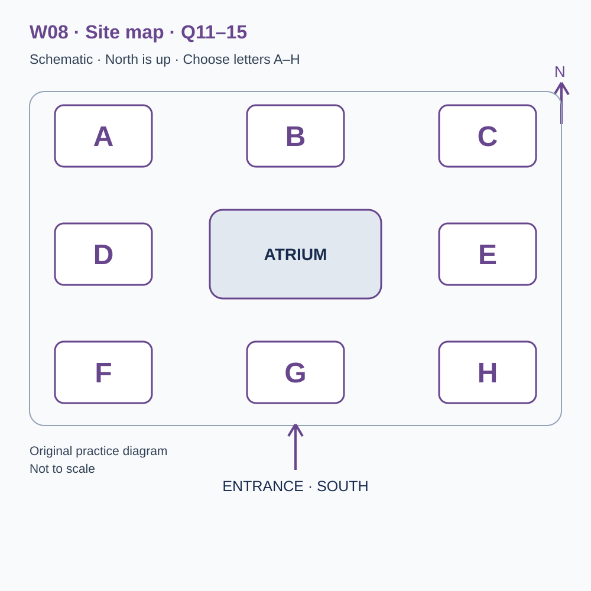
Q11. Reception
Answer: ____
Q12. Quiet work room
Answer: ____
Q13. Call room
Answer: ____
Q14. Project meeting room
Answer: ____
Q15. Kitchenette
Answer: ____
Q16. What should users do when an atrium conversation becomes a meeting?
- A. Promise clients unrestricted use of any empty chairs.
- B. Stop all communication with colleagues.
- C. Check the availability of a suitable room.
Answer: ____
Q17. How should a workshop notice reach the community board?
- A. Through the workspace submission form.
- B. By covering an existing notice.
- C. By claiming workspace endorsement automatically.
Answer: ____
Q18. If a reserved room is occupied, users should
- A. enter any other room that appears empty.
- B. show reception the booking confirmation.
- C. argue that their meeting is more important.
Answer: ____
Q19. What kind of trial-visit feedback helps most?
- A. Only complaints submitted with a compulsory name.
- B. General demands without examples.
- C. Specific observations about where an instruction was hard to find.
Answer: ____
Q20. Why is checkout useful?
- A. It confirms availability for the next use and helps locate forgotten items.
- B. It measures how productive other users were.
- C. It allows borrowed equipment to be left on any desk.
Answer: ____
Part 3 — Testing a visitor information page
Q21–26: Match each proposal to the students' final positions at the end of that exchange. The tutor is not included. Write A, B, C or D. Letters may be reused.
- A Sam only
- B Priya only
- C Both students
- D Neither student
Q27–28 and Q29–30: Choose TWO different letters, A–E, for each pair. Write one letter in each numbered slot; either order is accepted. Each distinct correct choice earns one point, maximum two. Repeating a letter cannot earn two points. Submit no more than two letters.
Q21. At the END of this exchange, who supports: Recruiting first-time visitors for the page study?
Answer: ____
Q22. At the END of this exchange, who supports: Requiring participants to think aloud during tasks?
Answer: ____
Q23. At the END of this exchange, who supports: Putting participant names on response sheets?
Answer: ____
Q24. At the END of this exchange, who supports: Alternating the order of the two tasks between participants?
Answer: ____
Q25. At the END of this exchange, who supports: Recording wrong turns using a consistent definition?
Answer: ____
Q26. At the END of this exchange, who supports: Setting a strict task time limit in the pilot?
Answer: ____
Q27–28. Which TWO information-finding tasks are selected?
- A. Finding how to change a desk reservation
- B. Recognising the organisation's logo
- C. Finding the building's opening year
- D. Finding where to report a missing item
- E. Guessing an unlisted private telephone number
Answers: Q27 ____ · Q28 ____
Q29–30. Which TWO revisions are confirmed after the trial?
- A. Adding decorative photographs
- B. Replacing vague headings with action-based headings
- C. Replacing all text with icons
- D. Reducing text size
- E. Placing contact details beside the relevant reporting instruction
Answers: Q29 ____ · Q30 ____
Part 4 — Investigating room bookings
Q31–35: Complete the flow chart below. Q36–40: Complete the notes. Write NO MORE THAN TWO WORDS AND/OR A NUMBER for each answer, using words from the recording. Numeric notation may replace spoken numbers. Words or units already printed do not belong in the blank. The numbered text below repeats the SVG prompts for readability.
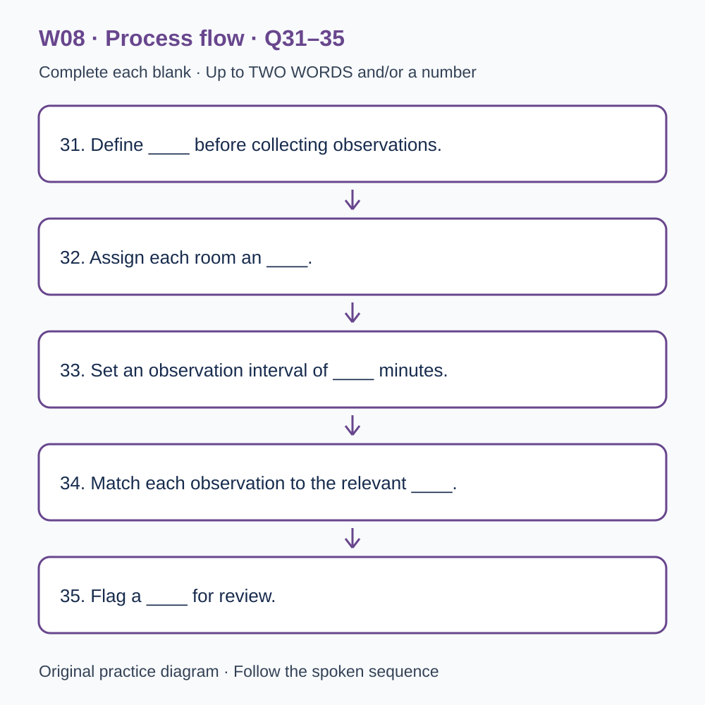
Q31. Define ____ before collecting observations.
Q32. Assign each room an ____.
Q33. Set an observation interval of ____ minutes.
Q34. Match each observation to the relevant ____.
Q35. Flag a ____ for review.
Q36. Check whether ____ are missing from the booking export.
Q37. Summarise use separately in the morning and ____.
Q38. State the ____ used to calculate each percentage.
Q39. Occupancy does not directly measure user ____.
Q40. Before treating one week as a stable pattern, ____ the study.
本周训练安排（音频批准后执行）
- Preview questions without the script：8 分钟。
- Future continuous first listen, including planned part pauses：32 分钟。
- Submit first answers and confidence, without a second play：8 分钟。
- Check answers and classify errors：20 分钟。
- Four Q-located intensive segments, 15 minutes each：60 分钟。
- Diagram and opinion retelling：15 分钟。
- Next-day retry of missed items：15 分钟。
合计 158 分钟；最多另用 22 分钟缓冲，总计不超过 180 分钟。暂停、回放与查词均计入精听预算，不能另行无限追加。当前实际已完成听力分钟数为 0。精听区段和步骤见 intensive.md；答案和脚本另页。
参考答案与证据（完成首次听力后再展开）
L-W08 — Answers and evidence
> 独立答案页。先提交首次答案，再看本页。当前缺音频，文本验题不能充当实听验收。
每个单空 1 分；双选各 2 分、答案顺序不限、按不同正确选项计分。接受形式仅做大小写和空白规范化；不做模糊词形推断。
Q1 — desk
Accepted answers: desk / a desk / the desk / shared desk
Use the final confirmed detail in this exchange; the printed unit or date context is already supplied.
Evidence locator: Q01 (script.md; timestamps unavailable).
> Receptionist: Hello, Riverside Workspace. How can I help? Applicant: I'm looking for somewhere to work one day a week. My home is usually quiet, but occasionally I need a separate place to concentrate. Receptionist: Are you looking for a permanent private office? Applicant: No, that's more than I need. I'd like to reserve a desk in the shared area. I don't expect to receive clients there. Receptionist: A desk booking should suit that pattern. We also have meeting rooms, but those are booked separately. Applicant: Good. Please start with a desk, and I can ask about the other facilities if my work changes later.
Q2 — Wednesday
Accepted answers: Wednesday
Use the final confirmed detail in this exchange; the printed unit or date context is already supplied.
Evidence locator: Q02 (script.md; timestamps unavailable).
> Receptionist: Do you have a preferred weekday? Applicant: I was considering Tuesday because I used to have a regular appointment on Wednesday. That appointment has finished, though, and Wednesday now fits my schedule better. Receptionist: We have space on either day at present. Shall I put Wednesday on the application? Applicant: Yes. Tuesday would leave me rushing from another commitment, whereas Wednesday gives me a full working day. Receptionist: I'll record Wednesday as your regular day. If you need an occasional different day, you can check availability without changing the whole arrangement. Applicant: That's useful, but I'd like to start with a predictable routine.
Q3 — 12
Accepted answers: 12 / 12th / twelfth / the twelfth
Use the final confirmed detail in this exchange; the printed unit or date context is already supplied.
Evidence locator: Q03 (script.md; timestamps unavailable).
> Receptionist: What date do you want your first booking to be? Applicant: The notice I saw mentioned September the fifth, but I assume that was an example. I'd like to begin on the twelfth of September. Receptionist: The twelfth is available. We will send an introductory message before that date with the entrance instructions. Applicant: Thank you. I won't be in town the week before, so beginning on the fifth wouldn't work for me. Receptionist: Then the twelfth is the date to put in your calendar. Your welcome message will repeat it, along with the day and the type of space you have reserved.
Q4 — 24
Accepted answers: 24 / twenty-four / twenty four
Use the final confirmed detail in this exchange; the printed unit or date context is already supplied.
Evidence locator: Q04 (script.md; timestamps unavailable).
> Applicant: How much is a single day? I saw two different prices on a leaflet. Receptionist: The eighteen-pound figure is for an evening session. Your daytime desk booking is twenty-four pounds. Applicant: Does that mean twenty-four pounds for each hour? Receptionist: No, for the day. Extra meeting-room bookings have their own charges, but they aren't part of the desk price. Applicant: I'll use the daytime option and record twenty-four pounds in my budget. Receptionist: Fine. We'll show the booking type and total clearly in the confirmation, so you can check them before paying. Contact us if that document doesn't match what we've arranged today.
Q5 — headphones
Accepted answers: headphones / the headphones
Use the final confirmed detail in this exchange; the printed unit or date context is already supplied.
Evidence locator: Q05 (script.md; timestamps unavailable).
> Applicant: What should I bring on the first visit? I can carry my laptop and charger, but I'd rather not pack unnecessary equipment. Receptionist: If you intend to listen to recordings or join an online session, please bring headphones. Sound should not play through speakers in the shared work area. Applicant: I have headphones, so that's easy. Is a separate monitor compulsory? Receptionist: No. Some people prefer one, but you can work with your laptop alone. Applicant: I'll bring the headphones and keep the rest simple. If I find that I need a different arrangement after trying the space, I can ask about available options.
Q6 — 4
Accepted answers: 4 / four
Use the final confirmed detail in this exchange; the printed unit or date context is already supplied.
Evidence locator: Q06 (script.md; timestamps unavailable).
> Receptionist: We can provide a locker for the day if you want somewhere to leave a coat or bag while you work. Applicant: That would help. Is there a separate key? Receptionist: The locker uses a four-digit code that you choose when you arrive. Please don't include it in your public desk label or share it in the general chat. Applicant: So I need to choose four digits, and the desk booking number isn't the locker code? Receptionist: Correct. They're separate. The booking number identifies your reservation; the four-digit code opens your locker. We'll explain the process in person, so you don't need to invent one during this call.
Q7 — B
Accepted answers: B
The call room supports short individual calls without disturbing quiet work.
Evidence locator: Q07 (script.md; timestamps unavailable).
> Applicant: I sometimes need to make a short phone call. Can I do that at the shared desk? Receptionist: Please use the designated call room when it's available. Even a brief conversation can disturb nearby people who are concentrating. Applicant: Do I have to reserve a full meeting room for every call? Receptionist: No, the call room is intended for short individual calls. Longer meetings with several participants need a different booking. Applicant: Then I'll check the call room before answering. Receptionist: That's the best approach. The shared desk is for quiet work, and the call room lets us accommodate ordinary calls without turning the whole area into a conversation space.
Q8 — A
Accepted answers: A
The booking system and its confirmation establish the change.
Evidence locator: Q08 (script.md; timestamps unavailable).
> Applicant: What happens if I need to change my regular day for one week? Receptionist: Use the booking page to check availability and request the change. A note left on your desk won't reach the team reliably, and another user can't transfer your reservation by simply taking your place. Applicant: Will the page immediately guarantee any day I select? Receptionist: It shows the available options and sends a confirmation when the change is completed. Keep that confirmation. Applicant: So the important step is using the booking system, rather than assuming a message to another user has changed the record. Receptionist: Exactly. That helps us keep the desk allocation accurate.
Q9 — C
Accepted answers: C
Day use does not include overnight workstation storage.
Evidence locator: Q09 (script.md; timestamps unavailable).
> Applicant: May I leave my equipment on the desk overnight? Receptionist: Day bookings don't include overnight storage at the workstation. Please clear the desk when you leave. A different person may have it the next morning. Applicant: What about putting a note on the screen saying I'll return next week? Receptionist: That wouldn't reserve it. If you need storage beyond the day, ask us about the separate arrangements before leaving anything. Applicant: Understood. I'll plan to carry my equipment home. Receptionist: You can still use the day locker during your visit; just remember that its temporary use doesn't extend the booking into the following day.
Q10 — B
Accepted answers: B
A day booking is a complete option that permits an informed later decision.
Evidence locator: Q10 (script.md; timestamps unavailable).
> Applicant: Is there a way to tell whether the space will suit me before making a long commitment? Receptionist: Start with the day booking we've arranged and review how it worked afterwards. We don't require you to choose a long package during this call. Applicant: I was worried I would have to decide immediately to keep the price. Receptionist: The day option is a complete option in its own right. You can assess the working environment and ask questions before considering anything longer. Applicant: That makes sense. I'll try the first day, note what I need, and then decide whether a regular arrangement is useful for my work.
Q11 — G
Accepted answers: G
Use the explicitly stated position relative to the atrium, not an earlier layout or adjacent area.
Evidence locator: Q11 (script.md; timestamps unavailable).
> Welcome to the workspace orientation. Our building diagram is schematic, with north at the top. The entrance is on the southern edge, and the open atrium is the central reference point. Eight lettered areas surround it. First, reception is directly south of the atrium, between that central space and the entrance. Don't confuse it with the south-east room, which has a separate function. Everyone attending an introductory visit should check in at reception before going to a desk. This lets us confirm the booking and answer practical questions without interrupting somebody else's working session. Use the letter on the map to mark that location in your notes.
Q12 — A
Accepted answers: A
Use the explicitly stated position relative to the atrium, not an earlier layout or adjacent area.
Evidence locator: Q12 (script.md; timestamps unavailable).
> The quiet work room is in the north-west area. That puts it above and to the left of the atrium on the diagram. Some older information called the room directly north the quiet area, but the arrangement changed when we created additional meeting space. Today you need the north-west room. Calls and group conversations should take place elsewhere, even if only a few desks in that room are occupied. A quiet room works because users can expect the same conditions throughout the day. The location matters particularly for visitors who have selected the space because they need an uninterrupted period of individual work.
Q13 — E
Accepted answers: E
Use the explicitly stated position relative to the atrium, not an earlier layout or adjacent area.
Evidence locator: Q13 (script.md; timestamps unavailable).
> The call room is directly east of the atrium, level with its centre. It is not the room in the north-east corner. We located it close to the shared work area so people can move out for a short call without crossing the whole building. Please check whether it is occupied before entering, and follow the displayed arrangements for use. The room is designed for individual calls rather than a gathering of several colleagues. If somebody asks you where it is, direct them to the eastern area beside the atrium, not vaguely to the right-hand side, which contains more than one room.
Q14 — B
Accepted answers: B
Use the explicitly stated position relative to the atrium, not an earlier layout or adjacent area.
Evidence locator: Q14 (script.md; timestamps unavailable).
> The project meeting room is directly north of the atrium. This is the room mentioned in the older leaflet as a quiet work area, so the revised function is worth remembering. Teams can book it for scheduled discussions and collaborative sessions. It is separate from the call room to the east. The tables can be arranged in several ways, but the booking team needs to know about special arrangements beforehand. For the map exercise, mark the northern room as the project meeting room. The room to its east is not an extension of it, even though the two appear close together in the simplified diagram.
Q15 — F
Accepted answers: F
Use the explicitly stated position relative to the atrium, not an earlier layout or adjacent area.
Evidence locator: Q15 (script.md; timestamps unavailable).
> The kitchenette is in the south-west area, below and to the left of the atrium. You can prepare a drink there and use the labelled shared shelves during your booking. The south-east room is not another kitchen, and reception directly south of the atrium does not have facilities for preparing food. We ask users to leave the kitchenette ready for the next person and take away their own containers when they finish. If something needs attention, tell reception rather than leaving an unclear note for an unknown future user. On your diagram, the south-west letter identifies the kitchenette and completes the five locations in today's exercise.
Q16 — C
Accepted answers: C
Longer meetings need suitable space so the atrium remains usable.
Evidence locator: Q16 (script.md; timestamps unavailable).
> The atrium has informal seating, but it isn't a substitute for a reserved meeting room. A brief exchange is fine; a scheduled team session can make the area difficult for people passing through. The purpose of this distinction is to keep shared circulation space usable while giving longer discussions a suitable setting. It isn't a rule that colleagues must avoid talking to one another. If a conversation grows into a meeting, check room availability. Reception can explain the options. You should not promise clients that they can attend an unrestricted meeting in the atrium simply because you saw empty chairs there during a quiet moment.
Q17 — A
Accepted answers: A
The team checks current details and space; display does not imply endorsement.
Evidence locator: Q17 (script.md; timestamps unavailable).
> The community noticeboard displays information about workshops and shared projects. Before adding a notice, submit it through the workspace form so the team can check the date, contact details and available space. A notice attached directly over somebody else's sheet may hide information that is still current. We remove expired items as part of the regular update. This process helps the board remain useful rather than becoming a permanent collection of unrelated advertisements. Submitting a notice does not guarantee that the workspace endorses the activity. The display is an information service, and the notice should make clear who is organising the event and how to contact them.
Q18 — B
Accepted answers: B
Reception compares the current records and arranges a solution.
Evidence locator: Q18 (script.md; timestamps unavailable).
> If you discover that a booked room is occupied, speak to reception and show your confirmation. Avoid resolving the problem by entering another apparently empty room, because it may be reserved for somebody arriving shortly. Reception can compare the bookings and arrange a solution using the current record. A printed name on an old door sign may be out of date, which is another reason to check the system. You don't need to argue with the other group about whose meeting is more important. The useful information is the room, the booked time and your confirmation, not a judgement about the value of another user's work.
Q19 — C
Accepted answers: C
Specific feedback makes problems identifiable; names are optional and urgent booking issues go to reception.
Evidence locator: Q19 (script.md; timestamps unavailable).
> We collect feedback about the workspace at the end of a trial visit. Specific observations are especially helpful. For example, tell us which instruction was difficult to find and where you looked for it. A general statement that everything should be clearer gives us much less to investigate. Feedback is not limited to complaints; an explanation of what worked well can help us preserve a useful feature during changes. You may leave your name if you want a reply, but the ordinary feedback form does not require it. Urgent booking problems should still go directly to reception rather than waiting in the routine feedback collection.
Q20 — A
Accepted answers: A
Checkout and proper equipment return support the next user.
Evidence locator: Q20 (script.md; timestamps unavailable).
> Before leaving, check that you have cleared your desk, collected your belongings and followed the checkout instructions. Checkout tells the team that the space is available for its next use and helps identify forgotten items promptly. It isn't an invitation to evaluate other users or report how much work they completed. If you have borrowed equipment, return it through the stated process rather than placing it on an empty desk. A quick check prevents the next user from searching for something recorded as available but left elsewhere. Reception can help with an uncertainty; simply leaving the building without asking may make a small issue harder to resolve later.
Q21 — C
Accepted answers: C
Final stance: Both students. Ignore an initial proposal if later withdrawn; the tutor is not an answer option.
Evidence locator: Q21 (script.md; timestamps unavailable).
> Tutor: Let's plan your study of the visitor information page. Sam: I suggest testing it with people who haven't used the building before. Familiar users already know where things are. Priya: I agree. They may skip unclear instructions because they can fill the gaps from experience. Tutor: Do you both support recruiting first-time visitors for this study? Sam: Yes, while explaining that our findings will concern that group. Priya: Yes. We can study experienced users later with a different question. Tutor: Good. That defines the group without pretending one sample tells you everything about every user. Sam: We'll put the first-time visitor requirement in our recruitment description.
Q22 — A
Accepted answers: A
Final stance: Sam only. Ignore an initial proposal if later withdrawn; the tutor is not an answer option.
Evidence locator: Q22 (script.md; timestamps unavailable).
> Tutor: Should participants be required to think aloud while finding information? Sam: I favour that. Hearing what they are looking for could reveal why a heading confuses them. Priya: I would rather let them work silently and ask questions afterwards. Speaking might change the way they search. Sam: We can remind them gently and avoid giving clues. I still support asking them to think aloud. Tutor: Priya, does that adjustment change your view? Priya: No. For this first study I continue to prefer silent task completion followed by questions. Tutor: Then your current positions differ. We'll compare the practical consequences before deciding which procedure the study will use.
Q23 — D
Accepted answers: D
Final stance: Neither student. Ignore an initial proposal if later withdrawn; the tutor is not an answer option.
Evidence locator: Q23 (script.md; timestamps unavailable).
> Tutor: Your draft mentions names on every response sheet. Priya: I included that because I thought it would help match the sheets, but participant codes can do the matching. Sam: I don't support collecting names for this exercise. We don't need them to answer the research question. Priya: I agree now, and I withdraw the name requirement. Tutor: To be clear, neither of you supports putting participant names on the response sheets at the end of this discussion? Sam: Correct. Priya: Correct. We'll keep the study code separate from any recruitment contact arrangements, and the analysis sheet will use the code. That gives us the link we need without the unnecessary field.
Q24 — B
Accepted answers: B
Final stance: Priya only. Ignore an initial proposal if later withdrawn; the tutor is not an answer option.
Evidence locator: Q24 (script.md; timestamps unavailable).
> Tutor: What about varying the order of the two tasks between participants? Priya: I support alternating the order. Otherwise the first task might teach everyone something that makes the second easier. Sam: I understand that concern, but I would keep the same order for everyone in this small pilot. It makes the procedure easier to run consistently. Tutor: Could a prepared schedule handle the alternation? Priya: Yes, and that is what I propose. Sam: Even with a schedule, I still prefer one fixed order for the pilot. Tutor: So Priya supports alternating, and Sam does not at present. We'll record both the reason and the unresolved choice.
Q25 — C
Accepted answers: C
Final stance: Both students. Ignore an initial proposal if later withdrawn; the tutor is not an answer option.
Evidence locator: Q25 (script.md; timestamps unavailable).
> Tutor: Will you record wrong turns, or only whether each task is eventually completed? Sam: We should record wrong turns as well. Someone might reach the answer after several confusing steps. Priya: I agree. A completion tick alone would hide that difficulty. Tutor: How will you avoid guessing what counts as a wrong turn? Priya: Define it before testing, using observable actions such as opening an unrelated section and then returning. Sam: Yes, we both support recording those actions under a consistent definition. Tutor: Good. Keep interpretation separate from the observation. A participant may explore deliberately, so you should not automatically label every extra click as proof of confusion without further evidence.
Q26 — B
Accepted answers: B
Final stance: Priya only. Ignore an initial proposal if later withdrawn; the tutor is not an answer option.
Evidence locator: Q26 (script.md; timestamps unavailable).
> Tutor: Should you set a strict time limit for each task? Priya: I favour a limit, so sessions remain manageable and every participant has the same maximum time. Sam: I would let people finish and record the elapsed time in this pilot. A cut-off could stop us seeing how they recover from a wrong turn. Priya: We could choose a generous limit, but I still support having one. Tutor: Sam? Sam: I remain against a strict limit at this stage. We can arrange sessions with enough space between them. Tutor: Then Priya supports the proposal and Sam doesn't. That distinction concerns the pilot procedure, not whether recording time is useful.
Q27–28 — A, D
Accept unordered set: A, D. One point per distinct correct choice, maximum 2.
Both selected tasks address practical visitor needs; logo, history and unlisted private details are outside the task selection.
Evidence locator: Q27, Q28 (script.md; timestamps unavailable).
> Tutor: You have agreed to test two information-finding tasks. What is the first? Sam: Finding how to change an existing desk reservation. The answer is on the page, but people must choose the relevant heading. Priya: Yes, that's one of our selected tasks. We rejected asking participants to state the year the building opened because it doesn't reflect an ordinary booking need. Tutor: And the question about recognising the organisation's logo? Priya: Also rejected. It would test a different kind of recognition. Sam: We want actions a visitor might reasonably need to take. Finding the reservation-change instructions is the first agreed task, regardless of our remaining decisions about the testing procedure.
> Tutor: And the second task? Priya: Finding where to report a missing item. That instruction appears in the visitor information section, and it has a clear practical purpose. Sam: Agreed. We aren't asking participants to guess an unlisted staff member's private telephone number. That was never information the page was meant to provide. Tutor: So the two selected tasks are changing a reservation and reporting a missing item? Priya: Exactly. The logo question and the building-history question aren't included. Sam: We'll write realistic short scenarios for the two selected tasks without using the exact heading words, since copying those words into the prompt would make the search artificially easy.
Q29–30 — B, E
Accept unordered set: B, E. One point per distinct correct choice, maximum 2.
The revisions address an unclear heading and separated contact information; the other changes are rejected.
Evidence locator: Q29, Q30 (script.md; timestamps unavailable).
> Tutor: The trial has now revealed problems. Which revisions are confirmed? Priya: First, replace vague headings with action-based headings. People didn't understand that 'Your arrangements' contained the booking-change instructions. Sam: We agree to use a heading that tells visitors the action they can take. Tutor: Are you also adding more decorative photographs? Sam: No. That suggestion doesn't address the difficulty we observed. Priya: Nor are we replacing all the text with icons. Some icons would need explanation and could introduce another problem. The confirmed heading change follows directly from the trial: participants searched for an action, but our wording concealed where the relevant instructions began.
> Tutor: What is the other confirmed revision? Sam: Move the missing-item contact details beside the instruction to report an item. Participants found the instruction but had to search elsewhere for the contact route. Priya: Agreed. Keeping related information together should reduce that extra search. Tutor: Did you decide to reduce the text size to fit everything on one screen? Priya: No, that could make the page harder to read, and we rejected it. Sam: Our two agreed revisions are clearer action-based headings and placing contact details beside the relevant instruction. We'll test the revised page with new participants before claiming those changes have solved the observed problems.
Q31 — occupancy
Accepted answers: occupancy / room occupancy
Complete the named stage in the stated process order; retain any word already printed around the blank.
Evidence locator: Q31 (script.md; timestamps unavailable).
> Consider a fictional workspace manager investigating whether meeting-room bookings reflect actual use. The first stage is to define occupancy for the study. Does a room count as occupied when someone leaves a bag there, or only when a person is present? Different definitions produce different results, so the team must choose and document one before collecting observations. In this exercise, occupancy means at least one person present during the scheduled observation. That definition does not capture every aspect of usefulness, but it gives observers a consistent rule. Starting with the rule prevents the team from adjusting its meaning afterwards to make the figures support a preferred conclusion.
Q32 — identifier
Accepted answers: identifier
Complete the named stage in the stated process order; retain any word already printed around the blank.
Evidence locator: Q32 (script.md; timestamps unavailable).
> The next stage is to assign an identifier to each room. Descriptions such as the bright room or the room near the stairs may be understandable to one observer but ambiguous to another. A stable identifier connects observations with the appropriate booking record even if a room's display name changes. The team makes a reference list and checks it against the building plan. The identifier is not a score of quality or a ranking of popularity; it is simply a way to refer to the same space consistently. Any later change to the list is documented so that old and new records can still be related correctly.
Q33 — 15
Accepted answers: 15 / fifteen
Complete the named stage in the stated process order; retain any word already printed around the blank.
Evidence locator: Q33 (script.md; timestamps unavailable).
> The third stage sets the observation interval. In this fictional pilot, observers check the rooms at regular intervals of fifteen minutes during the study period. They do not claim that each brief check describes every moment between checks. The interval determines what the method is likely to notice and what it may miss. A meeting that begins and ends between observations could be absent from the observation record. The team therefore states the interval clearly when reporting results. Choosing a regular schedule also reduces the chance that observers visit only when they expect rooms to be busy, which would make the sample difficult to interpret.
Q34 — booking
Accepted answers: booking / booking record
Complete the named stage in the stated process order; retain any word already printed around the blank.
Evidence locator: Q34 (script.md; timestamps unavailable).
> The fourth stage matches each observation to the relevant booking. Matching uses the room identifier and the observation time, not merely a similar meeting title. A booking may span several checks, and an observation can fall outside any reserved period. Both situations should be represented explicitly in the working table. If a record cannot be matched because a time is missing, the team marks the issue instead of forcing a link. The aim is a traceable comparison between two kinds of evidence: what the booking system says was reserved and what the observer recorded at a particular moment. Neither record should silently overwrite the other.
Q35 — discrepancy
Accepted answers: discrepancy / difference
Complete the named stage in the stated process order; retain any word already printed around the blank.
Evidence locator: Q35 (script.md; timestamps unavailable).
> The fifth stage flags a discrepancy for review. A discrepancy occurs when the records do not agree under the study's defined comparison rule. For example, a room might be booked but appear empty at a scheduled check. The flag asks for examination; it does not by itself prove that a user behaved improperly. The booking could have changed, the observation time could be wrong, or the room could have been used between checks. Keeping the flag distinct from an explanation prevents the team from turning an unresolved difference into an accusation. A review note can later record what additional evidence, if any, clarifies the case.
Q36 — cancellations
Accepted answers: cancellations
The corresponding evidence block supplies this distinction or qualification; the question retains the surrounding grammar.
Evidence locator: Q36 (script.md; timestamps unavailable).
> Cancellations are a useful category to examine. If a booking was cancelled but the cancellation did not appear in the exported file, the table may make an available room look reserved. The team therefore records when the booking data were extracted and which version was used. A later export may contain a correction that the earlier version lacked. This is a data-history problem before it is a question about room demand. Researchers should not count every apparent empty reservation as the same kind of event. Checking cancellations can explain some differences, while leaving other cases unresolved. The analysis should preserve those distinctions rather than combining them for a simpler headline.
Q37 — afternoon
Accepted answers: afternoon / the afternoon
The corresponding evidence block supplies this distinction or qualification; the question retains the surrounding grammar.
Evidence locator: Q37 (script.md; timestamps unavailable).
> The comparison also needs attention to the time of day. A room that is busy in the morning and quiet in the afternoon could have a moderate overall average that describes neither period particularly well. Grouping observations by time can reveal that pattern, provided the grouping is chosen and reported clearly. The team should not repeatedly try many groupings and show only the one that looks most dramatic. Here, morning and afternoon were defined before the pilot began. Their separate summaries help the manager consider scheduling questions without assuming that one daily average gives a complete account of when people actually need a room.
Q38 — denominator
Accepted answers: denominator / underlying count
The corresponding evidence block supplies this distinction or qualification; the question retains the surrounding grammar.
Evidence locator: Q38 (script.md; timestamps unavailable).
> A percentage must have a clear denominator. If the team reports that a certain percentage of observations showed occupancy, readers need to know how many valid observations were included. Missed checks should not quietly count as empty rooms, and cancelled study periods should not remain in the total as if observations had occurred. The denominator therefore consists of the valid checks under the stated rule. The report gives both the percentage and the underlying count. This makes it easier to recognise a result based on very little evidence and to compare periods whose observation totals differ. A percentage alone can conceal those differences behind a familiar-looking number.
Q39 — satisfaction
Accepted answers: satisfaction
The corresponding evidence block supplies this distinction or qualification; the question retains the surrounding grammar.
Evidence locator: Q39 (script.md; timestamps unavailable).
> The manager should also understand the distinction between occupancy and satisfaction. Seeing somebody in a room does not tell an observer whether the person found the space comfortable or suitable. A room could be heavily used because alternatives were unavailable, even if users disliked it. Satisfaction would require separate evidence, such as appropriately designed questions about the experience. The occupancy study can inform decisions about use, but it should not be renamed a satisfaction survey after the data are collected. Keeping the terms distinct helps the team explain what its method measures and prevents a useful narrow study from being stretched into claims it cannot support.
Q40 — repeat
Accepted answers: repeat
The corresponding evidence block supplies this distinction or qualification; the question retains the surrounding grammar.
Evidence locator: Q40 (script.md; timestamps unavailable).
> Finally, the team should repeat the study before treating a single week as a stable pattern. The pilot week may contain unusual events, staff absences or deadlines that affect bookings. Repetition under a comparable procedure can show whether the same broad pattern appears again. It cannot guarantee that future demand will remain unchanged, but it provides more context than one short observation period. The final recommendation therefore includes another planned round of checks and a review of the method's practical burden. The manager receives a provisional interpretation with clear next steps, rather than a permanent allocation rule presented as certain on the basis of one limited sample.
完整脚本（提前阅读会失去陌生题首答机会）
L-W08 — Shared work and useful information: transcript
> 原创虚构练习，非真题；音频缺失。仅供完成首次作答后的核对或文字审阅。Q 标记与角色名不属于朗读正文。
Part 1 — Reserving a shared workspace
Q1 evidence block
Receptionist: Hello, Riverside Workspace. How can I help?
Applicant: I'm looking for somewhere to work one day a week. My home is usually quiet, but occasionally I need a separate place to concentrate.
Receptionist: Are you looking for a permanent private office?
Applicant: No, that's more than I need. I'd like to reserve a desk in the shared area. I don't expect to receive clients there.
Receptionist: A desk booking should suit that pattern. We also have meeting rooms, but those are booked separately.
Applicant: Good. Please start with a desk, and I can ask about the other facilities if my work changes later.
Q2 evidence block
Receptionist: Do you have a preferred weekday?
Applicant: I was considering Tuesday because I used to have a regular appointment on Wednesday. That appointment has finished, though, and Wednesday now fits my schedule better.
Receptionist: We have space on either day at present. Shall I put Wednesday on the application?
Applicant: Yes. Tuesday would leave me rushing from another commitment, whereas Wednesday gives me a full working day.
Receptionist: I'll record Wednesday as your regular day. If you need an occasional different day, you can check availability without changing the whole arrangement.
Applicant: That's useful, but I'd like to start with a predictable routine.
Q3 evidence block
Receptionist: What date do you want your first booking to be?
Applicant: The notice I saw mentioned September the fifth, but I assume that was an example. I'd like to begin on the twelfth of September.
Receptionist: The twelfth is available. We will send an introductory message before that date with the entrance instructions.
Applicant: Thank you. I won't be in town the week before, so beginning on the fifth wouldn't work for me.
Receptionist: Then the twelfth is the date to put in your calendar. Your welcome message will repeat it, along with the day and the type of space you have reserved.
Q4 evidence block
Applicant: How much is a single day? I saw two different prices on a leaflet.
Receptionist: The eighteen-pound figure is for an evening session. Your daytime desk booking is twenty-four pounds.
Applicant: Does that mean twenty-four pounds for each hour?
Receptionist: No, for the day. Extra meeting-room bookings have their own charges, but they aren't part of the desk price.
Applicant: I'll use the daytime option and record twenty-four pounds in my budget.
Receptionist: Fine. We'll show the booking type and total clearly in the confirmation, so you can check them before paying. Contact us if that document doesn't match what we've arranged today.
Q5 evidence block
Applicant: What should I bring on the first visit? I can carry my laptop and charger, but I'd rather not pack unnecessary equipment.
Receptionist: If you intend to listen to recordings or join an online session, please bring headphones. Sound should not play through speakers in the shared work area.
Applicant: I have headphones, so that's easy. Is a separate monitor compulsory?
Receptionist: No. Some people prefer one, but you can work with your laptop alone.
Applicant: I'll bring the headphones and keep the rest simple. If I find that I need a different arrangement after trying the space, I can ask about available options.
Q6 evidence block
Receptionist: We can provide a locker for the day if you want somewhere to leave a coat or bag while you work.
Applicant: That would help. Is there a separate key?
Receptionist: The locker uses a four-digit code that you choose when you arrive. Please don't include it in your public desk label or share it in the general chat.
Applicant: So I need to choose four digits, and the desk booking number isn't the locker code?
Receptionist: Correct. They're separate. The booking number identifies your reservation; the four-digit code opens your locker. We'll explain the process in person, so you don't need to invent one during this call.
Q7 evidence block
Applicant: I sometimes need to make a short phone call. Can I do that at the shared desk?
Receptionist: Please use the designated call room when it's available. Even a brief conversation can disturb nearby people who are concentrating.
Applicant: Do I have to reserve a full meeting room for every call?
Receptionist: No, the call room is intended for short individual calls. Longer meetings with several participants need a different booking.
Applicant: Then I'll check the call room before answering.
Receptionist: That's the best approach. The shared desk is for quiet work, and the call room lets us accommodate ordinary calls without turning the whole area into a conversation space.
Q8 evidence block
Applicant: What happens if I need to change my regular day for one week?
Receptionist: Use the booking page to check availability and request the change. A note left on your desk won't reach the team reliably, and another user can't transfer your reservation by simply taking your place.
Applicant: Will the page immediately guarantee any day I select?
Receptionist: It shows the available options and sends a confirmation when the change is completed. Keep that confirmation.
Applicant: So the important step is using the booking system, rather than assuming a message to another user has changed the record.
Receptionist: Exactly. That helps us keep the desk allocation accurate.
Q9 evidence block
Applicant: May I leave my equipment on the desk overnight?
Receptionist: Day bookings don't include overnight storage at the workstation. Please clear the desk when you leave. A different person may have it the next morning.
Applicant: What about putting a note on the screen saying I'll return next week?
Receptionist: That wouldn't reserve it. If you need storage beyond the day, ask us about the separate arrangements before leaving anything.
Applicant: Understood. I'll plan to carry my equipment home.
Receptionist: You can still use the day locker during your visit; just remember that its temporary use doesn't extend the booking into the following day.
Q10 evidence block
Applicant: Is there a way to tell whether the space will suit me before making a long commitment?
Receptionist: Start with the day booking we've arranged and review how it worked afterwards. We don't require you to choose a long package during this call.
Applicant: I was worried I would have to decide immediately to keep the price.
Receptionist: The day option is a complete option in its own right. You can assess the working environment and ask questions before considering anything longer.
Applicant: That makes sense. I'll try the first day, note what I need, and then decide whether a regular arrangement is useful for my work.
Part 2 — Workspace building orientation
Q11 evidence block
Workspace host: Welcome to the workspace orientation. Our building diagram is schematic, with north at the top. The entrance is on the southern edge, and the open atrium is the central reference point. Eight lettered areas surround it. First, reception is directly south of the atrium, between that central space and the entrance. Don't confuse it with the south-east room, which has a separate function. Everyone attending an introductory visit should check in at reception before going to a desk. This lets us confirm the booking and answer practical questions without interrupting somebody else's working session. Use the letter on the map to mark that location in your notes.
Q12 evidence block
Workspace host: The quiet work room is in the north-west area. That puts it above and to the left of the atrium on the diagram. Some older information called the room directly north the quiet area, but the arrangement changed when we created additional meeting space. Today you need the north-west room. Calls and group conversations should take place elsewhere, even if only a few desks in that room are occupied. A quiet room works because users can expect the same conditions throughout the day. The location matters particularly for visitors who have selected the space because they need an uninterrupted period of individual work.
Q13 evidence block
Workspace host: The call room is directly east of the atrium, level with its centre. It is not the room in the north-east corner. We located it close to the shared work area so people can move out for a short call without crossing the whole building. Please check whether it is occupied before entering, and follow the displayed arrangements for use. The room is designed for individual calls rather than a gathering of several colleagues. If somebody asks you where it is, direct them to the eastern area beside the atrium, not vaguely to the right-hand side, which contains more than one room.
Q14 evidence block
Workspace host: The project meeting room is directly north of the atrium. This is the room mentioned in the older leaflet as a quiet work area, so the revised function is worth remembering. Teams can book it for scheduled discussions and collaborative sessions. It is separate from the call room to the east. The tables can be arranged in several ways, but the booking team needs to know about special arrangements beforehand. For the map exercise, mark the northern room as the project meeting room. The room to its east is not an extension of it, even though the two appear close together in the simplified diagram.
Q15 evidence block
Workspace host: The kitchenette is in the south-west area, below and to the left of the atrium. You can prepare a drink there and use the labelled shared shelves during your booking. The south-east room is not another kitchen, and reception directly south of the atrium does not have facilities for preparing food. We ask users to leave the kitchenette ready for the next person and take away their own containers when they finish. If something needs attention, tell reception rather than leaving an unclear note for an unknown future user. On your diagram, the south-west letter identifies the kitchenette and completes the five locations in today's exercise.
Q16 evidence block
Workspace host: The atrium has informal seating, but it isn't a substitute for a reserved meeting room. A brief exchange is fine; a scheduled team session can make the area difficult for people passing through. The purpose of this distinction is to keep shared circulation space usable while giving longer discussions a suitable setting. It isn't a rule that colleagues must avoid talking to one another. If a conversation grows into a meeting, check room availability. Reception can explain the options. You should not promise clients that they can attend an unrestricted meeting in the atrium simply because you saw empty chairs there during a quiet moment.
Q17 evidence block
Workspace host: The community noticeboard displays information about workshops and shared projects. Before adding a notice, submit it through the workspace form so the team can check the date, contact details and available space. A notice attached directly over somebody else's sheet may hide information that is still current. We remove expired items as part of the regular update. This process helps the board remain useful rather than becoming a permanent collection of unrelated advertisements. Submitting a notice does not guarantee that the workspace endorses the activity. The display is an information service, and the notice should make clear who is organising the event and how to contact them.
Q18 evidence block
Workspace host: If you discover that a booked room is occupied, speak to reception and show your confirmation. Avoid resolving the problem by entering another apparently empty room, because it may be reserved for somebody arriving shortly. Reception can compare the bookings and arrange a solution using the current record. A printed name on an old door sign may be out of date, which is another reason to check the system. You don't need to argue with the other group about whose meeting is more important. The useful information is the room, the booked time and your confirmation, not a judgement about the value of another user's work.
Q19 evidence block
Workspace host: We collect feedback about the workspace at the end of a trial visit. Specific observations are especially helpful. For example, tell us which instruction was difficult to find and where you looked for it. A general statement that everything should be clearer gives us much less to investigate. Feedback is not limited to complaints; an explanation of what worked well can help us preserve a useful feature during changes. You may leave your name if you want a reply, but the ordinary feedback form does not require it. Urgent booking problems should still go directly to reception rather than waiting in the routine feedback collection.
Q20 evidence block
Workspace host: Before leaving, check that you have cleared your desk, collected your belongings and followed the checkout instructions. Checkout tells the team that the space is available for its next use and helps identify forgotten items promptly. It isn't an invitation to evaluate other users or report how much work they completed. If you have borrowed equipment, return it through the stated process rather than placing it on an empty desk. A quick check prevents the next user from searching for something recorded as available but left elsewhere. Reception can help with an uncertainty; simply leaving the building without asking may make a small issue harder to resolve later.
Part 3 — Testing a visitor information page
Q21 evidence block
Tutor: Let's plan your study of the visitor information page.
Sam: I suggest testing it with people who haven't used the building before. Familiar users already know where things are.
Priya: I agree. They may skip unclear instructions because they can fill the gaps from experience.
Tutor: Do you both support recruiting first-time visitors for this study?
Sam: Yes, while explaining that our findings will concern that group.
Priya: Yes. We can study experienced users later with a different question.
Tutor: Good. That defines the group without pretending one sample tells you everything about every user.
Sam: We'll put the first-time visitor requirement in our recruitment description.
Q22 evidence block
Tutor: Should participants be required to think aloud while finding information?
Sam: I favour that. Hearing what they are looking for could reveal why a heading confuses them.
Priya: I would rather let them work silently and ask questions afterwards. Speaking might change the way they search.
Sam: We can remind them gently and avoid giving clues. I still support asking them to think aloud.
Tutor: Priya, does that adjustment change your view?
Priya: No. For this first study I continue to prefer silent task completion followed by questions.
Tutor: Then your current positions differ. We'll compare the practical consequences before deciding which procedure the study will use.
Q23 evidence block
Tutor: Your draft mentions names on every response sheet.
Priya: I included that because I thought it would help match the sheets, but participant codes can do the matching.
Sam: I don't support collecting names for this exercise. We don't need them to answer the research question.
Priya: I agree now, and I withdraw the name requirement.
Tutor: To be clear, neither of you supports putting participant names on the response sheets at the end of this discussion?
Sam: Correct.
Priya: Correct. We'll keep the study code separate from any recruitment contact arrangements, and the analysis sheet will use the code. That gives us the link we need without the unnecessary field.
Q24 evidence block
Tutor: What about varying the order of the two tasks between participants?
Priya: I support alternating the order. Otherwise the first task might teach everyone something that makes the second easier.
Sam: I understand that concern, but I would keep the same order for everyone in this small pilot. It makes the procedure easier to run consistently.
Tutor: Could a prepared schedule handle the alternation?
Priya: Yes, and that is what I propose.
Sam: Even with a schedule, I still prefer one fixed order for the pilot.
Tutor: So Priya supports alternating, and Sam does not at present. We'll record both the reason and the unresolved choice.
Q25 evidence block
Tutor: Will you record wrong turns, or only whether each task is eventually completed?
Sam: We should record wrong turns as well. Someone might reach the answer after several confusing steps.
Priya: I agree. A completion tick alone would hide that difficulty.
Tutor: How will you avoid guessing what counts as a wrong turn?
Priya: Define it before testing, using observable actions such as opening an unrelated section and then returning.
Sam: Yes, we both support recording those actions under a consistent definition.
Tutor: Good. Keep interpretation separate from the observation. A participant may explore deliberately, so you should not automatically label every extra click as proof of confusion without further evidence.
Q26 evidence block
Tutor: Should you set a strict time limit for each task?
Priya: I favour a limit, so sessions remain manageable and every participant has the same maximum time.
Sam: I would let people finish and record the elapsed time in this pilot. A cut-off could stop us seeing how they recover from a wrong turn.
Priya: We could choose a generous limit, but I still support having one.
Tutor: Sam?
Sam: I remain against a strict limit at this stage. We can arrange sessions with enough space between them.
Tutor: Then Priya supports the proposal and Sam doesn't. That distinction concerns the pilot procedure, not whether recording time is useful.
Q27 evidence block
Tutor: You have agreed to test two information-finding tasks. What is the first?
Sam: Finding how to change an existing desk reservation. The answer is on the page, but people must choose the relevant heading.
Priya: Yes, that's one of our selected tasks. We rejected asking participants to state the year the building opened because it doesn't reflect an ordinary booking need.
Tutor: And the question about recognising the organisation's logo?
Priya: Also rejected. It would test a different kind of recognition.
Sam: We want actions a visitor might reasonably need to take. Finding the reservation-change instructions is the first agreed task, regardless of our remaining decisions about the testing procedure.
Q28 evidence block
Tutor: And the second task?
Priya: Finding where to report a missing item. That instruction appears in the visitor information section, and it has a clear practical purpose.
Sam: Agreed. We aren't asking participants to guess an unlisted staff member's private telephone number. That was never information the page was meant to provide.
Tutor: So the two selected tasks are changing a reservation and reporting a missing item?
Priya: Exactly. The logo question and the building-history question aren't included.
Sam: We'll write realistic short scenarios for the two selected tasks without using the exact heading words, since copying those words into the prompt would make the search artificially easy.
Q29 evidence block
Tutor: The trial has now revealed problems. Which revisions are confirmed?
Priya: First, replace vague headings with action-based headings. People didn't understand that 'Your arrangements' contained the booking-change instructions.
Sam: We agree to use a heading that tells visitors the action they can take.
Tutor: Are you also adding more decorative photographs?
Sam: No. That suggestion doesn't address the difficulty we observed.
Priya: Nor are we replacing all the text with icons. Some icons would need explanation and could introduce another problem. The confirmed heading change follows directly from the trial: participants searched for an action, but our wording concealed where the relevant instructions began.
Q30 evidence block
Tutor: What is the other confirmed revision?
Sam: Move the missing-item contact details beside the instruction to report an item. Participants found the instruction but had to search elsewhere for the contact route.
Priya: Agreed. Keeping related information together should reduce that extra search.
Tutor: Did you decide to reduce the text size to fit everything on one screen?
Priya: No, that could make the page harder to read, and we rejected it.
Sam: Our two agreed revisions are clearer action-based headings and placing contact details beside the relevant instruction. We'll test the revised page with new participants before claiming those changes have solved the observed problems.
Part 4 — Investigating room bookings
Q31 evidence block
Lecturer: Consider a fictional workspace manager investigating whether meeting-room bookings reflect actual use. The first stage is to define occupancy for the study. Does a room count as occupied when someone leaves a bag there, or only when a person is present? Different definitions produce different results, so the team must choose and document one before collecting observations. In this exercise, occupancy means at least one person present during the scheduled observation. That definition does not capture every aspect of usefulness, but it gives observers a consistent rule. Starting with the rule prevents the team from adjusting its meaning afterwards to make the figures support a preferred conclusion.
Q32 evidence block
Lecturer: The next stage is to assign an identifier to each room. Descriptions such as the bright room or the room near the stairs may be understandable to one observer but ambiguous to another. A stable identifier connects observations with the appropriate booking record even if a room's display name changes. The team makes a reference list and checks it against the building plan. The identifier is not a score of quality or a ranking of popularity; it is simply a way to refer to the same space consistently. Any later change to the list is documented so that old and new records can still be related correctly.
Q33 evidence block
Lecturer: The third stage sets the observation interval. In this fictional pilot, observers check the rooms at regular intervals of fifteen minutes during the study period. They do not claim that each brief check describes every moment between checks. The interval determines what the method is likely to notice and what it may miss. A meeting that begins and ends between observations could be absent from the observation record. The team therefore states the interval clearly when reporting results. Choosing a regular schedule also reduces the chance that observers visit only when they expect rooms to be busy, which would make the sample difficult to interpret.
Q34 evidence block
Lecturer: The fourth stage matches each observation to the relevant booking. Matching uses the room identifier and the observation time, not merely a similar meeting title. A booking may span several checks, and an observation can fall outside any reserved period. Both situations should be represented explicitly in the working table. If a record cannot be matched because a time is missing, the team marks the issue instead of forcing a link. The aim is a traceable comparison between two kinds of evidence: what the booking system says was reserved and what the observer recorded at a particular moment. Neither record should silently overwrite the other.
Q35 evidence block
Lecturer: The fifth stage flags a discrepancy for review. A discrepancy occurs when the records do not agree under the study's defined comparison rule. For example, a room might be booked but appear empty at a scheduled check. The flag asks for examination; it does not by itself prove that a user behaved improperly. The booking could have changed, the observation time could be wrong, or the room could have been used between checks. Keeping the flag distinct from an explanation prevents the team from turning an unresolved difference into an accusation. A review note can later record what additional evidence, if any, clarifies the case.
Q36 evidence block
Lecturer: Cancellations are a useful category to examine. If a booking was cancelled but the cancellation did not appear in the exported file, the table may make an available room look reserved. The team therefore records when the booking data were extracted and which version was used. A later export may contain a correction that the earlier version lacked. This is a data-history problem before it is a question about room demand. Researchers should not count every apparent empty reservation as the same kind of event. Checking cancellations can explain some differences, while leaving other cases unresolved. The analysis should preserve those distinctions rather than combining them for a simpler headline.
Q37 evidence block
Lecturer: The comparison also needs attention to the time of day. A room that is busy in the morning and quiet in the afternoon could have a moderate overall average that describes neither period particularly well. Grouping observations by time can reveal that pattern, provided the grouping is chosen and reported clearly. The team should not repeatedly try many groupings and show only the one that looks most dramatic. Here, morning and afternoon were defined before the pilot began. Their separate summaries help the manager consider scheduling questions without assuming that one daily average gives a complete account of when people actually need a room.
Q38 evidence block
Lecturer: A percentage must have a clear denominator. If the team reports that a certain percentage of observations showed occupancy, readers need to know how many valid observations were included. Missed checks should not quietly count as empty rooms, and cancelled study periods should not remain in the total as if observations had occurred. The denominator therefore consists of the valid checks under the stated rule. The report gives both the percentage and the underlying count. This makes it easier to recognise a result based on very little evidence and to compare periods whose observation totals differ. A percentage alone can conceal those differences behind a familiar-looking number.
Q39 evidence block
Lecturer: The manager should also understand the distinction between occupancy and satisfaction. Seeing somebody in a room does not tell an observer whether the person found the space comfortable or suitable. A room could be heavily used because alternatives were unavailable, even if users disliked it. Satisfaction would require separate evidence, such as appropriately designed questions about the experience. The occupancy study can inform decisions about use, but it should not be renamed a satisfaction survey after the data are collected. Keeping the terms distinct helps the team explain what its method measures and prevents a useful narrow study from being stretched into claims it cannot support.
Q40 evidence block
Lecturer: Finally, the team should repeat the study before treating a single week as a stable pattern. The pilot week may contain unusual events, staff absences or deadlines that affect bookings. Repetition under a comparable procedure can show whether the same broad pattern appears again. It cannot guarantee that future demand will remain unchanged, but it provides more context than one short observation period. The final recommendation therefore includes another planned round of checks and a review of the method's practical burden. The manager receives a provisional interpretation with clear next steps, rather than a permanent allocation rule presented as certain on the basis of one limited sample.
精听与复盘步骤（须有已验收配套音频）
L-W08 — Q-based intensive listening
> 音频尚未生成；以下是未来执行安排，不是已完成记录。不要用文本阅读替代首次听力。无实际时间戳。
周预算：预览 8 + 首听 32 + 交首次答案 8 + 查错 20 + 精听 60 + 复述 15 + 次日重做 15 = 158 分钟。含暂停/回放；加用缓冲最多 22 分钟，总计≤180。
四段各 15 分钟：先定位并不看稿听 2 分钟；分句回放、写关键词 4 分钟；对照稿找误听与改口 3 分钟；遮稿跟读和复述 3 分钟；重答并记录错误原因 3 分钟。不得把同一段回放另算在周预算之外。
Q2–3 — 15 minutes
定位 script.md 的 Q2 evidence block 起至 Q3 evidence block 结束（约 197 词）；音频起止为 null。
目标：Distinguish a previous weekly commitment and an example date from the actual booking.
留痕：首次答案 → 听到的原词 → 干扰来源 → 修正答案 → 一句英文复述。
Q12–13 — 15 minutes
定位 script.md 的 Q12 evidence block 起至 Q13 evidence block 结束（约 205 词）；音频起止为 null。
目标：Identify the revised north-west quiet room and the eastern call room.
留痕：首次答案 → 听到的原词 → 干扰来源 → 修正答案 → 一句英文复述。
Q23–24 — 15 minutes
定位 script.md 的 Q23 evidence block 起至 Q24 evidence block 结束（约 205 词）；音频起止为 null。
目标：Track the name proposal being withdrawn and the unresolved task-order disagreement.
留痕：首次答案 → 听到的原词 → 干扰来源 → 修正答案 → 一句英文复述。
Q37–38 — 15 minutes
定位 script.md 的 Q37 evidence block 起至 Q38 evidence block 结束（约 211 词）；音频起止为 null。
目标：Identify time grouping and the denominator, retaining the warning about missed checks.
留痕：首次答案 → 听到的原词 → 干扰来源 → 修正答案 → 一句英文复述。
15 分钟复述与 15 分钟次日重做
复述：5 分钟遮住答案口述地图五个位置；5 分钟按人说明三人讨论的最终观点；5 分钟复述流程及一个限制。次日：8 分钟仅重做错题对应 Q 段；4 分钟核对；3 分钟更新错误记录。若仍超时，留下未完成项，不把额外时间隐去。
许可说明
原创文字和图示：RayXBuilds and contributors，CC BY 4.0。本页不包含配套音频；现有基础VOA媒体不能代替本套题的录音。
回到顶部
U44 第9周听力题面与复盘（音频待补）
本页提供已核验的原创题目、参考答案和脚本。配套完整音频尚未验收，当前只能预览题面；不能进行有效的首次听力测试，也不能把读稿作答计作听力成绩或已完成一套听力。
请先保留首次作答机会：批准音频就绪前，不要展开下方答案和脚本。若已读稿，请标记为熟悉材料，之后的练习不能充当陌生题诊断。页面阅读标记只代表看过文字，不代表完成听力。
本材料非雅思真题、非标准化模考，不换算正式分数。计划分钟数不是实测音频时长；学习记录、正式测评和真人反馈须另行完成。
学生题面
L-W09 — Voices, memories and evidence
> 原创 IELTS-style 技能练习，非真题、非标准化模考，不可换算正式分数。当前只有文字和题目，音频未生成，不能计作已完成听力套题。
共四部分、40 个计分空，每空 1 分。正式首次作答须等待批准音频，先不要打开 script.md 或 answers.md。朗读前先看题；只听一遍后提交首次答案及信心等级，再做精听。当前只能预览题面，不能把读稿作答记作听力成绩。
Part 1 — Booking an archive introduction
Q1–6: Complete the notes. Write NO MORE THAN TWO WORDS AND/OR A NUMBER for each answer, using words from the recording. Numeric notation may replace spoken numbers. Do not repeat a printed unit. Q7–10: Choose ONE letter, A, B or C.
Q1. Main material for discussion: ____
Q2. Confirmed day of October: ____
Q3. Session start (a.m.): ____
Q4. Places to reserve: ____
Q5. Bring a ____ of the material, rather than the originals.
Q6. The confirmation will be sent by ____.
Q7. What is the main purpose of the introduction?
- A. To transfer ownership immediately
- B. To help the family make an informed choice
- C. To approve all recordings for publication
Answer: ____
Q8. What should the caller do about access requirements?
- A. Describe them in advance and discuss available support
- B. Assume a front seat solves every difficulty
- C. Wait until arrival before mentioning them
Answer: ____
Q9. What does the scanning element include?
- A. An immediate copy of every visitor's photograph
- B. An informal queue for personal scanning jobs
- C. A demonstration using a prepared example
Answer: ____
Q10. How should an attendance change normally be reported?
- A. In a public comment only
- B. By replying to the confirmation with the booking reference
- C. By asking another visitor to mention it casually
Answer: ____
Part 2 — Community archive orientation
Q11–15: Label the map. Write ONE letter, A–H, for each destination. Three letters are unused. Q16–20: Choose ONE letter, A, B or C.
Q11. Welcome desk
Answer: ____
Q12. Recording room
Answer: ____
Q13. Scanning station
Answer: ____
Q14. Listening room
Answer: ____
Q15. Returns point
Answer: ____
Q16. How does the catalogue handle uncertain contributor information?
- A. It preserves the distinction between the account and later checking
- B. It converts every confident memory into an established fact
- C. It discards memories whenever a date is uncertain
Answer: ____
Q17. Why should an item request include its catalogue reference?
- A. It guarantees permission to publish the item
- B. It replaces every descriptive title permanently
- C. It distinguishes particular items with similar titles
Answer: ____
Q18. Before using a recording in a public presentation, visitors should
- A. assume listening access includes all copying rights
- B. check the item conditions and explain the intended use
- C. finish the presentation before investigating permission
Answer: ____
Q19. Completing the introductory visit means a visitor
- A. may begin interviewing for any project immediately
- B. needs no further equipment practice
- C. can enquire about role-specific volunteer preparation
Answer: ____
Q20. What feedback best helps the archive?
- A. A specific difficulty, distinguished from a proposed solution
- B. Only a general demand for more information
- C. An urgent missing-item report left for later routine review
Answer: ____
Part 3 — Reviewing an oral-history pilot
Q21–26: Match each proposal to the students' final positions at the end of that exchange. The tutor is not included. Write A, B, C or D. Letters may be reused.
- A Iris only
- B Ben only
- C Both students
- D Neither student
Q27–28 and Q29–30: Choose TWO different letters, A–E, for each pair. Write one letter in each numbered slot; either order is accepted. Each distinct correct choice earns one point, maximum two. Repeating a letter cannot earn two points. Submit no more than two letters.
Q21. At the END of this exchange, who supports: Replacing the chronological opening with an object-based opening?
Answer: ____
Q22. At the END of this exchange, who supports: Leaving a longer pause after answers?
Answer: ____
Q23. At the END of this exchange, who supports: Collecting the contributor's exact current home address?
Answer: ____
Q24. At the END of this exchange, who supports: Using the original contributor for the next limited pilot check?
Answer: ____
Q25. At the END of this exchange, who supports: Including a short permitted sound extract in the class presentation?
Answer: ____
Q26. At the END of this exchange, who supports: Reviewing the second pilot against the original aims?
Answer: ____
Q27–28. Which TWO detailed checks are agreed before the next interview?
- A. Add background music
- B. Compare the transcript with the recording
- C. Design a new logo
- D. Ask for clarification of an unclear reference
- E. Search social media for personal details
Answers: Q27 ____ · Q28 ____
Q29–30. Which TWO limitations will the presentation acknowledge?
- A. The pilot has only one contributor
- B. The interview was cancelled
- C. Interviewer prompts partly shaped the topics
- D. The room was unavailable
- E. Using a small recorder necessarily made the speech unusable
Answers: Q29 ____ · Q30 ____
Part 4 — From interview to research record
Q31–35: Complete the flow chart below. Q36–40: Complete the notes. Write NO MORE THAN TWO WORDS AND/OR A NUMBER for each answer, using words from the recording. Numeric notation may replace spoken numbers. Words or units already printed do not belong in the blank. The numbered text below repeats the SVG prompts for readability.
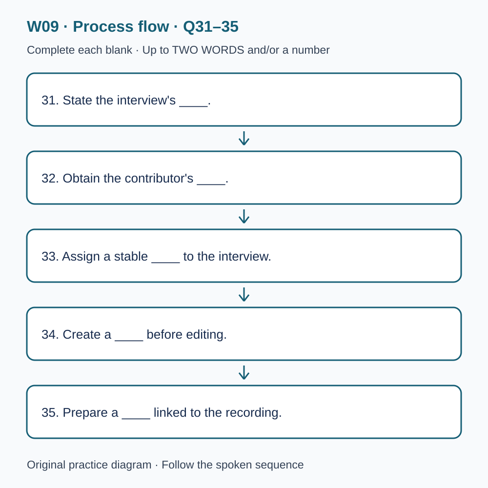
Q31. State the interview's ____.
Q32. Obtain the contributor's ____.
Q33. Assign a stable ____ to the interview.
Q34. Create a ____ before editing.
Q35. Prepare a ____ linked to the recording.
Q36. Do not interpret every ____ as doubt about a memory.
Q37. Keep observation separate from ____.
Q38. Compare details with independent ____.
Q39. Shared themes alone do not establish a causal ____.
Q40. The stage review records procedural ____ and their reasons.
本周训练安排（音频批准后执行）
- Preview questions without the script：8 分钟。
- Future continuous first listen, including planned part pauses：32 分钟。
- Submit first answers and confidence, without a second play：8 分钟。
- Check answers and classify errors：20 分钟。
- Four Q-located intensive segments, 15 minutes each：60 分钟。
- Diagram and opinion retelling：15 分钟。
- Next-day retry of missed items：15 分钟。
合计 158 分钟；最多另用 22 分钟缓冲，总计不超过 180 分钟。暂停、回放与查词均计入精听预算，不能另行无限追加。当前实际已完成听力分钟数为 0。精听区段和步骤见 intensive.md；答案和脚本另页。
参考答案与证据（完成首次听力后再展开）
L-W09 — Answers and evidence
> 独立答案页。先提交首次答案，再看本页。当前缺音频，文本验题不能充当实听验收。
每个单空 1 分；双选各 2 分、答案顺序不限、按不同正确选项计分。接受形式仅做大小写和空白规范化；不做模糊词形推断。
Q1 — recordings
Accepted answers: recordings / the recordings
Use the final confirmed detail in this exchange; the printed unit or date context is already supplied.
Evidence locator: Q01 (script.md; timestamps unavailable).
> Archivist: Community Archive, good morning. Caller: Hello. I'd like to learn how to contribute some family material, but I'm not sure which introductory session to book. I have photographs and a few letters, although the material I most want help with is a set of recordings. Archivist: Then the sound session is the relevant starting point. Caller: Yes, recordings should be the main subject on my booking. My aunt made them while describing her neighbourhood. I'm not asking you to decide that everything belongs in the collection straight away. I'd first like to understand the choices, including what our family might prefer to keep privately.
Q2 — 10
Accepted answers: 10 / 10th / tenth / the tenth / the 10th
Use the final confirmed detail in this exchange; the printed unit or date context is already supplied.
Evidence locator: Q02 (script.md; timestamps unavailable).
> Archivist: Which session can you attend? The early notice listed a meeting on the third of October, but we changed the programme after checking staff availability. Caller: I saw that notice, and fortunately I haven't booked transport. What is the revised date? Archivist: The tenth of October. Caller: The tenth works for me. I'll tell my brother, since he still has the earlier message. Archivist: Please ask him to use the confirmation we send today. The old date remains visible in a photograph somebody shared, and we can't replace every copy. Your booking will clearly identify the tenth as the date for this introduction.
Q3 — 10.15
Accepted answers: 10.15 / 10:15 / ten fifteen
Use the final confirmed detail in this exchange; the printed unit or date context is already supplied.
Evidence locator: Q03 (script.md; timestamps unavailable).
> Caller: What time does it begin? I know the building opens earlier than the sessions, and I don't want to confuse the two. Archivist: The doors open at nine thirty, but your introduction starts at ten fifteen. There is a small waiting area if you arrive before the group gathers. Caller: I'll enter ten fifteen in my calendar, with a reminder to arrive a little earlier. Archivist: That's sensible. We ask people to be ready at the start because the first explanation covers the choices available to contributors. Arriving halfway through can leave somebody thinking that one option described later is the only arrangement we offer.
Q4 — 2
Accepted answers: 2 / two
Use the final confirmed detail in this exchange; the printed unit or date context is already supplied.
Evidence locator: Q04 (script.md; timestamps unavailable).
> Archivist: How many places would you like? Caller: Three relatives are interested, but one lives too far away to come that morning. Please reserve two places. My brother will join me and take notes. Archivist: Two places, then. If the other relative wants information afterwards, we can send the public introductory sheet. Caller: That would be useful. I don't want to book a third seat that somebody else could use. Archivist: Exactly. If your plans change, let us know, rather than assuming a reserved place can be transferred without telling the team. We need an accurate attendance list for the room and for any follow-up arrangements.
Q5 — list
Accepted answers: list
Use the final confirmed detail in this exchange; the printed unit or date context is already supplied.
Evidence locator: Q05 (script.md; timestamps unavailable).
> Caller: Should I bring all the original tapes? Some are fragile, and packing everything would take a long time. Archivist: For the introduction, bring a list of what you have. If you can note approximate dates and who is speaking, that will help us discuss a suitable next step. We don't need the recordings themselves at this stage. Caller: A list is much easier to carry. I'll include what we know and leave gaps where we're uncertain. Archivist: Good. Please don't invent dates to make it look complete. The aim is to establish what material exists, not to make decisions about its value before anyone has examined it.
Q6 — email
Accepted answers: email / e-mail
Use the final confirmed detail in this exchange; the printed unit or date context is already supplied.
Evidence locator: Q06 (script.md; timestamps unavailable).
> Caller: Is there a charge for the introduction? Archivist: There is a small session fee, but we'll confirm whether it applies after checking the booking category. We do ask for your email so that we can send the practical information. Caller: That's fine. Would a postal address be better for the notes? Archivist: Email is the contact detail we need now. We aren't sending a paper pack for this session. Caller: I'll spell it out carefully, because messages sometimes go to an old account with a similar name. Archivist: Thank you. Please reply to the confirmation so we know that the address was recorded correctly.
Q7 — B
Accepted answers: B
Advice precedes any decision; attendance transfers neither ownership nor publication permission.
Evidence locator: Q07 (script.md; timestamps unavailable).
> Caller: If I attend, does that commit our family to donating the recordings? Archivist: No. The session explains possible arrangements before you make that decision. Some contributors offer material for the public collection; others decide to retain it privately after learning more. Caller: Then its main purpose is to help us make an informed choice? Archivist: Exactly. Attendance doesn't transfer ownership or give us permission to publish a recording. Those matters would require separate discussion and documentation. Caller: That takes away my main concern. I wanted advice, but I didn't want my brother to feel that coming through the door meant we'd already agreed to something permanent.
Q8 — A
Accepted answers: A
The team needs practical information to discuss support and limits.
Evidence locator: Q08 (script.md; timestamps unavailable).
> Caller: One relative has difficulty following a speaker in a busy room. Should we just sit at the front? Archivist: Please describe the practical access requirements when you reply to the confirmation. We can discuss the room arrangement and available support before the session. Sitting at the front may help some people, but it isn't an automatic solution for everyone. Caller: I'll include that information rather than assume you can organise everything on arrival. Archivist: Thank you. We will explain what we can provide and any limits, so your relative can decide whether the arrangement works. A useful conversation in advance is better than a promise based on too little information.
Q9 — C
Accepted answers: C
A personal scanning appointment is separate from the demonstration.
Evidence locator: Q09 (script.md; timestamps unavailable).
> Caller: My brother may arrive with a photograph he'd like scanned immediately. Is that part of the session? Archivist: The introduction includes a demonstration using our prepared example. It doesn't include a personal scanning appointment. After discussing the material, he can ask about booking a separate session. Caller: So he shouldn't bring it expecting the team to finish a digital copy that morning. Archivist: Correct. The demonstration helps people understand the process and the questions to consider. It isn't a queue for individual jobs. Caller: I'll explain the distinction. Otherwise he might travel with a delicate object and then be disappointed that we haven't reserved time to work on it.
Q10 — B
Accepted answers: B
The booking reference connects the change to the correct session; a close deadline can justify the printed contact number.
Evidence locator: Q10 (script.md; timestamps unavailable).
> Caller: Finally, how do we report a change in attendance? Archivist: Reply to the booking confirmation, and include the booking reference. That connects your message to the right session. A comment on a public event post may not be seen by the staff managing places. Caller: What if we haven't received a reply straight away? Archivist: The confirmation explains our usual response time. If the session is very close, use the contact number printed there. Caller: I'll keep the message rather than just copy the date into my calendar. Archivist: Good. It contains the details you need if you have to change something, not merely a reminder that the event exists.
Q11 — D
Accepted answers: D
Use the explicitly stated position relative to the archive hall, not an earlier layout or adjacent area.
Evidence locator: Q11 (script.md; timestamps unavailable).
> Welcome to the community archive. The map shows north at the top, the entrance along the southern edge and the archive hall in the centre. The lettered spaces around the hall have different functions. Our welcome desk is directly south of the hall, in line with the entrance. It is not in either southern corner. Please check in there before taking material to another part of the building. Staff can confirm the purpose of your visit and tell you whether an appointment is ready. Finding a familiar face in another room does not replace checking in, especially when several groups are using the archive at the same time.
Q12 — C
Accepted answers: C
Use the explicitly stated position relative to the archive hall, not an earlier layout or adjacent area.
Evidence locator: Q12 (script.md; timestamps unavailable).
> The recording room is in the north-west corner. An early floor plan showed recording in the northern central room, but that space now serves a different purpose. The recording room is west of that northern room and diagonally north-west of the archive hall. We moved it to reduce interruptions from people crossing between shared activities. The room is used by appointment, so an empty chair does not necessarily mean that you can begin recording. A staff member will explain the equipment and the agreed session plan first. Please also check whether bags or papers might create unwanted noise before the recording begins, rather than discovering the problem afterwards.
Q13 — B
Accepted answers: B
Use the explicitly stated position relative to the archive hall, not an earlier layout or adjacent area.
Evidence locator: Q13 (script.md; timestamps unavailable).
> The scanning station is directly east of the archive hall, level with its centre on this diagram. It isn't the room in the south-east corner. Visitors with scanning appointments should wait until the operator invites them to place an item on the work surface. You can discuss how the object is handled and what information will accompany its digital copy. The station does not make decisions about publication rights. Those decisions belong to the contributor process, which may involve someone other than the person operating the equipment. Keeping those roles separate helps prevent a practical demonstration from being mistaken for agreement to share an item publicly.
Q14 — F
Accepted answers: F
Use the explicitly stated position relative to the archive hall, not an earlier layout or adjacent area.
Evidence locator: Q14 (script.md; timestamps unavailable).
> The listening room is in the north-east corner, directly north of the scanning station. It also lies east of the northern central room, not north-east of that room. The diagram is simplified, but those relative positions are accurate. In the listening room, visitors can use the available playback facilities to explore approved collection material. Please return the volume to a comfortable starting level when you finish. If an item cannot be played, record its catalogue reference and tell staff. Repeatedly trying unrelated controls can make it harder to identify the original problem. The reference helps staff distinguish a problem with one file from a problem with the equipment.
Q15 — E
Accepted answers: E
Use the explicitly stated position relative to the archive hall, not an earlier layout or adjacent area.
Evidence locator: Q15 (script.md; timestamps unavailable).
> Material borrowed for work within the building goes back to the returns point in the south-west area. It is west of the welcome desk, and below the area directly west of the archive hall. Don't leave material at the scanning station just because somebody there recognises you. Returns need to be recorded in the designated process so another member of staff can locate the item later. If you have notes about a possible catalogue error, hand them to the returns team separately. Please don't write a correction on the original object or attach a label to it yourself. Staff will explain how a proposed correction can be checked.
Q16 — A
Accepted answers: A
Contributor knowledge and later verification are distinguished; memories can still be informative.
Evidence locator: Q16 (script.md; timestamps unavailable).
> You will see two sorts of description in the catalogue: information supplied by a contributor and information established during later checking. Where the distinction matters, the entry makes it visible. A contributor may confidently identify a building from memory, while a later comparison leaves the exact location uncertain. The archive should preserve that uncertainty rather than silently turn one account into a settled fact. This doesn't mean memories are unimportant. They can reveal how people understood a place, even when another kind of evidence is needed to establish a date or address. Read the description as an account of what is known and how it became known.
Q17 — C
Accepted answers: C
A stable reference identifies the intended item even when titles overlap.
Evidence locator: Q17 (script.md; timestamps unavailable).
> When requesting an item, use its catalogue reference rather than relying only on a descriptive title. Several recordings may have similar titles, particularly when contributors discuss the same street or event. A reference identifies the particular item you intend to consult. If the title appears wrong, you can report that concern without changing the reference in your request. The team needs a stable way to connect the query with the material. Giving only the name of a speaker can also be insufficient when that person contributed more than one recording. The reference saves both you and staff from searching for an item that was never the one you meant.
Q18 — B
Accepted answers: B
Audience and format matter; access is not blanket publication permission.
Evidence locator: Q18 (script.md; timestamps unavailable).
> Listening access does not automatically include permission to copy a recording into a public presentation. Before using an extract, check the conditions associated with that item and describe the intended use to the relevant team. A classroom discussion, a public website and a promotional film may involve different arrangements. Avoid assuming that a downloadable file carries every permission you might want. If an extract cannot be used in your project, staff may suggest another item or a different way to explain your point. The useful first step is to clarify the planned audience and format, not to finish the whole presentation and ask about permission at the last moment.
Q19 — C
Accepted answers: C
Interview work needs its own preparation and supervision; an introduction alone is insufficient.
Evidence locator: Q19 (script.md; timestamps unavailable).
> The archive runs short volunteer training sessions, but completing one introduction does not make a visitor an authorised interviewer. Interview projects require their own preparation, supervision and contributor arrangements. Someone may be very comfortable with equipment while still needing practice in asking a neutral follow-up question. Equally, a skilled interviewer may need help with our particular recording system. Training identifies those needs rather than treating one ability as proof of every other ability. If you are interested in volunteering, ask for the role description and the next training date. The team can explain the commitment before either side assumes that a place has been agreed.
Q20 — A
Accepted answers: A
The archive needs the actual difficulty before evaluating a solution; urgent issues go directly to staff.
Evidence locator: Q20 (script.md; timestamps unavailable).
> At the end of today's visit, tell us about one point where information was difficult to find or interpret. Specific examples are more useful than a general request for more explanation. You might identify a catalogue label, a room sign or a stage in the request process. Please distinguish the difficulty you experienced from the solution you imagine: a larger sign may help, but staff need to understand what was unclear before choosing a response. We also welcome examples of instructions that worked well. Those can help us preserve a useful feature when we revise another part of the service. Feedback about an urgent missing item should go directly to staff.
Q21 — B
Accepted answers: B
Final stance: Ben only. Ignore an initial proposal if later withdrawn; the tutor is not an answer option.
Evidence locator: Q21 (script.md; timestamps unavailable).
> Tutor: Your pilot interview produced more material than expected. Which opening would you use next time? Iris: I'd retain the chronological opening. Asking about the earliest memory gives a clear starting point. Ben: I prefer beginning with an object the contributor has chosen. It may prompt a more specific story than a broad date question. Tutor: The proposal on the sheet is to replace the chronological opening with an object-based opening. Iris: Then I don't support that replacement yet. Ben: I do. We can still ask about dates later. Iris: I understand the advantage, but I'd keep the original opening for our next pilot so we can compare what happens.
Q22 — C
Accepted answers: C
Final stance: Both students. Ignore an initial proposal if later withdrawn; the tutor is not an answer option.
Evidence locator: Q22 (script.md; timestamps unavailable).
> Tutor: You both noticed moments when the interviewer spoke too quickly. Iris: We should leave a longer pause after an answer before asking the next question. Ben: I originally worried that silence would make the contributor uncomfortable. Listening back, I heard two places where we interrupted an unfinished thought. I'll support a longer pause. Iris: We needn't leave every silence untouched, but we should allow the person room to continue. Tutor: How will you practise that? Ben: We can mark the places in the pilot where waiting would have helped, then rehearse without immediately filling the gap. Iris: That gives us a concrete change to try rather than a vague instruction to relax.
Q23 — D
Accepted answers: D
Final stance: Neither student. Ignore an initial proposal if later withdrawn; the tutor is not an answer option.
Evidence locator: Q23 (script.md; timestamps unavailable).
> Tutor: Your draft form asks for the contributor's exact home address. Why? Iris: I added it because we were discussing where people had lived, but the current address doesn't answer that historical question. Ben: I don't think we should collect it for this exercise. Tutor: Could a participant code connect the consent record and interview notes? Iris: Yes. I'll remove the address requirement. We can ask about former neighbourhoods within the interview if they're relevant and the contributor wants to discuss them. Ben: That works. Iris: So I'm withdrawing my original suggestion, not merely moving the question to the end of the form. We don't need that personal field for this pilot.
Q24 — A
Accepted answers: A
Final stance: Iris only. Ignore an initial proposal if later withdrawn; the tutor is not an answer option.
Evidence locator: Q24 (script.md; timestamps unavailable).
> Tutor: Should you invite the same contributor for another pilot after changing the questions? Iris: I favour that. The person can tell us whether the revised introduction explains our purpose more clearly. Ben: I would choose a new contributor. Someone who has already heard the questions may understand them through familiarity, even if the wording remains unclear. Iris: That's a limitation, but I still want feedback from the original contributor before recruiting somebody else. Tutor: Would you describe that as a wording test or a general comparison? Iris: A limited check with a returning participant. Ben: I appreciate the narrower claim, but I still wouldn't use our next pilot slot that way.
Q25 — B
Accepted answers: B
Final stance: Ben only. Ignore an initial proposal if later withdrawn; the tutor is not an answer option.
Evidence locator: Q25 (script.md; timestamps unavailable).
> Tutor: Ben proposes using a short sound extract in the class presentation. Ben: Yes, with the contributor's agreement for that audience. A description of the pause won't convey its effect as clearly. Iris: I prefer a written extract. We have little presentation time and would need to introduce the recording carefully. Tutor: Would a ten-second extract change your view? Iris: Not for this presentation. I'd use the time to explain our method. Ben: I still support the sound extract, provided we complete the permission check. Tutor: Then keep the disagreement visible in the plan. Iris: Certainly. His permission condition addresses an essential requirement, but it doesn't resolve my concern about how we use the time.
Q26 — C
Accepted answers: C
Final stance: Both students. Ignore an initial proposal if later withdrawn; the tutor is not an answer option.
Evidence locator: Q26 (script.md; timestamps unavailable).
> Tutor: What should happen after the second pilot? Ben: We need a brief review against the aims we wrote before starting. Iris: Agreed. Otherwise we'll remember the most striking story and forget whether the interview procedure worked. Ben: I first thought we could simply choose our favourite questions, but that isn't a sufficient review. Iris: Let's compare the intended topics with the topics actually covered and note why some were missed. Tutor: Can that be done within your timetable? Ben: Yes, if we use one review sheet. Iris: I'm happy with that. It will also show which changes we deliberately keep before moving into the main project.
Q27–28 — B, D
Accept unordered set: B, D. One point per distinct correct choice, maximum 2.
They choose record accuracy and a focused contributor clarification; music, a logo and personal searches are not selected.
Evidence locator: Q27, Q28 (script.md; timestamps unavailable).
> Tutor: You have time for two detailed checks before the next interview. Which is the first? Ben: Compare the draft transcript with the recording. We found a sentence where a missing negative reversed the meaning. Iris: That's our first agreed check. We should mark uncertain words rather than silently choose the version that sounds smoother. Tutor: What about adding background music to the presentation? Iris: That can wait, and it isn't one of these checks. Ben: Nor should we spend this time designing a new project logo. Accuracy in the record comes first. Once the wording is reliable enough, we can decide which short extract best illustrates the point we want to explain.
> Tutor: What is your second agreed check? Iris: Ask the contributor to clarify one passage whose reference is unclear. The phrase 'that place' could refer to two buildings mentioned earlier. Ben: Yes. We shouldn't decide which building was meant simply because one interpretation fits our draft argument. Tutor: Are you asking the contributor to approve every conclusion you later draw? Iris: No. This is a focused clarification of the reference, not approval of our whole analysis. Ben: We've also rejected searching social media for personal details to fill the gap. We'll ask a clear question through the agreed contact route and record the answer, including any uncertainty that remains.
Q29–30 — A, C
Accept unordered set: A, C. One point per distinct correct choice, maximum 2.
A single account cannot represent all residents, and interviewer priorities influenced topics; the other obstacles did not occur.
Evidence locator: Q29, Q30 (script.md; timestamps unavailable).
> Tutor: Which two limitations will you state when presenting the pilot? Ben: First, we have only one contributor. The account may be valuable, but it cannot represent everybody who lived in the area. Iris: Agreed. We can explain what the account reveals without calling it a typical experience. Tutor: Does using a small recorder count as another limitation by itself? Iris: No, not if the relevant speech was captured clearly. Ben: And the interview wasn't cancelled, so that doesn't belong on our list. Tutor: Good. A limitation should describe something that actually affects the reach of the evidence, rather than something that makes the project sound modest without explaining why.
> Tutor: And the second limitation? Iris: Several important questions were introduced by us, so the interview topics partly reflect our priorities. Ben: Yes. We can't assume that the topics receiving most time would have been the contributor's first choices in an entirely open conversation. Tutor: Does that make the material unusable? Ben: No, but it needs to be acknowledged. Iris: We won't claim that the absence of a topic proves the person considered it unimportant. Tutor: Those are the two limitations to carry forward: a single contributor and the influence of interviewer prompts. The room was available and the consent form was completed, so neither is an additional obstacle in this pilot.
Q31 — purpose
Accepted answers: purpose
Complete the named stage in the stated process order; retain any word already printed around the blank.
Evidence locator: Q31 (script.md; timestamps unavailable).
> This lecture follows an invented oral-history project from an interview to a research record. Before recording anything, the team states the purpose of the interview. A general wish to collect memories is not specific enough to guide every decision. The team needs to identify what it hopes to learn and what sort of use it anticipates for the material. A clear purpose helps a contributor understand the invitation and helps interviewers decide which follow-up questions are relevant. It also creates something to review afterwards. Without that starting point, the team might judge success only by the length of the recording or the appeal of a memorable story.
Q32 — consent
Accepted answers: consent / agreement / decision
Complete the named stage in the stated process order; retain any word already printed around the blank.
Evidence locator: Q32 (script.md; timestamps unavailable).
> The second stage is to obtain consent for the agreed activity and intended use. This is a discussion supported by documentation, not a reason to rush somebody through a form. The contributor should have an opportunity to ask questions about recording, storage and access. If the proposed use changes later, the team must check whether the original agreement covers that change. In this example, agreement to a class project should not quietly become agreement to a public promotional campaign. The record of consent connects the practical arrangements to the person's decision. It does not remove the need for care when an interview develops in an unexpected direction.
Q33 — identifier
Accepted answers: identifier
Complete the named stage in the stated process order; retain any word already printed around the blank.
Evidence locator: Q33 (script.md; timestamps unavailable).
> The third stage assigns a stable identifier to the interview. That identifier connects the recording, notes, consent record and later working versions. A descriptive title can help readers understand the subject, but titles may change as the project develops. The identifier should not change merely because the team chooses a more informative title. Otherwise the same interview can appear to be several unrelated items in different folders. The team also distinguishes between the identifier for the whole interview and the labels used for short extracts. This makes it possible to trace an excerpt back to its context rather than treating a memorable sentence as an independent piece of evidence.
Q34 — backup
Accepted answers: backup / back-up / copy / protected copy / separate copy
Complete the named stage in the stated process order; retain any word already printed around the blank.
Evidence locator: Q34 (script.md; timestamps unavailable).
> The fourth stage creates a backup of the original recording before editing begins. A backup is a separate protected copy, not simply a second filename pointing to the same working file. The team checks that the copy can be accessed under its agreed storage arrangements. If one student alone knows where the material is kept, the project may lose access when that student leaves. The process should therefore include responsibility for maintaining the record and dealing with problems. This example does not prescribe a particular product or storage service. It highlights the need to preserve the original material while the team produces versions for analysis or presentation.
Q35 — transcript
Accepted answers: transcript / written version / written form
Complete the named stage in the stated process order; retain any word already printed around the blank.
Evidence locator: Q35 (script.md; timestamps unavailable).
> The fifth stage prepares a transcript that remains linked to the recording. A transcript makes particular passages easier to find and compare, but it is an interpretation of sound into written form. The team marks uncertain words instead of hiding them behind a fluent sentence. It also records conventions for pauses, interruptions and incomplete phrases, so different transcribers do not represent the same feature in incompatible ways. The transcript should not replace the original recording as though nothing were lost in the conversion. When a detail matters to the argument, researchers may need to return to the sound and consider how the written version represents what they hear.
Q36 — pause
Accepted answers: pause
The corresponding evidence block supplies this distinction or qualification; the question retains the surrounding grammar.
Evidence locator: Q36 (script.md; timestamps unavailable).
> Pauses require particular care in interpretation. A pause may reflect a search for a name, a distraction in the room, an emotional response or the ordinary rhythm of speaking. It is not automatically evidence of doubt about a memory. The team can describe where pauses occur without pretending that the recording reveals a single explanation for each one. Context may help, but even an explanation offered later should be represented as an additional account rather than inserted invisibly into the original speech. This distinction preserves the difference between what can be heard and what researchers infer. A convincing presentation should make that boundary clearer, not conceal it with confident narration.
Q37 — interpretation
Accepted answers: interpretation / an interpretation
The corresponding evidence block supplies this distinction or qualification; the question retains the surrounding grammar.
Evidence locator: Q37 (script.md; timestamps unavailable).
> Researchers should also distinguish an observation from an interpretation. A recording may contain the words used by a contributor to describe a neighbourhood; a claim about what those words reveal involves another step. That step can be reasonable and well supported, but it should remain visible. Different readers may interpret the same passage differently because they bring different questions or contextual knowledge. The team can explain why it favours one reading and acknowledge a plausible alternative. Simply repeating a quotation does not make the interpretation self-evident. The work lies partly in showing how the details of the passage support the claim, and where those details leave room for uncertainty.
Q38 — records
Accepted answers: records / documents / dated documents
The corresponding evidence block supplies this distinction or qualification; the question retains the surrounding grammar.
Evidence locator: Q38 (script.md; timestamps unavailable).
> Some details of an account can be compared with independent records. For example, a sequence of events may be checked against dated documents if suitable documents exist and the team has access to them. Agreement can strengthen a particular detail, while disagreement calls for investigation rather than an automatic choice of one source as correct. The document may have its own limitations, and the interview may concern a different event than the researchers assumed. The team should record the comparison and what it establishes. Checking a date does not prove every interpretation attached to the story, just as one uncertain date does not make every part of the account worthless.
Q39 — relationship
Accepted answers: relationship
The corresponding evidence block supplies this distinction or qualification; the question retains the surrounding grammar.
Evidence locator: Q39 (script.md; timestamps unavailable).
> A shared theme across several accounts does not by itself establish a causal relationship. People may describe similar experiences because they encountered a common event, because the interviewer asked similar questions, or for several reasons operating together. The team needs additional reasoning and evidence before claiming that one condition produced another. In particular, the order in which topics appear in an interview is not necessarily the order in which events happened. An account is shaped for a listener in the present. Recognising that fact helps researchers ask better questions without treating either the spoken narrative or their own preferred explanation as a direct picture of every past process.
Q40 — changes
Accepted answers: changes / adjustments
The corresponding evidence block supplies this distinction or qualification; the question retains the surrounding grammar.
Evidence locator: Q40 (script.md; timestamps unavailable).
> Finally, a stage review records changes made to the interviewing method and the reasons for them. These adjustments may concern wording, topic order, recording arrangements or the way participants are invited. The review compares the original plan with what actually happened, including changes that seemed sensible at the time but produced new difficulties. It should distinguish a lesson drawn from the pilot from a procedure already tested in the main project. That distinction prevents a future reader from assuming that every recommendation has been demonstrated to work. A useful review ends with a clear next decision, the evidence behind it and the uncertainty that the next stage is intended to reduce.
完整脚本（提前阅读会失去陌生题首答机会）
L-W09 — Voices, memories and evidence: transcript
> 原创虚构练习，非真题；音频缺失。仅供完成首次作答后的核对或文字审阅。Q 标记与角色名不属于朗读正文。
Part 1 — Booking an archive introduction
Q1 evidence block
Archivist: Community Archive, good morning.
Caller: Hello. I'd like to learn how to contribute some family material, but I'm not sure which introductory session to book. I have photographs and a few letters, although the material I most want help with is a set of recordings.
Archivist: Then the sound session is the relevant starting point.
Caller: Yes, recordings should be the main subject on my booking. My aunt made them while describing her neighbourhood. I'm not asking you to decide that everything belongs in the collection straight away. I'd first like to understand the choices, including what our family might prefer to keep privately.
Q2 evidence block
Archivist: Which session can you attend? The early notice listed a meeting on the third of October, but we changed the programme after checking staff availability.
Caller: I saw that notice, and fortunately I haven't booked transport. What is the revised date?
Archivist: The tenth of October.
Caller: The tenth works for me. I'll tell my brother, since he still has the earlier message.
Archivist: Please ask him to use the confirmation we send today. The old date remains visible in a photograph somebody shared, and we can't replace every copy. Your booking will clearly identify the tenth as the date for this introduction.
Q3 evidence block
Caller: What time does it begin? I know the building opens earlier than the sessions, and I don't want to confuse the two.
Archivist: The doors open at nine thirty, but your introduction starts at ten fifteen. There is a small waiting area if you arrive before the group gathers.
Caller: I'll enter ten fifteen in my calendar, with a reminder to arrive a little earlier.
Archivist: That's sensible. We ask people to be ready at the start because the first explanation covers the choices available to contributors. Arriving halfway through can leave somebody thinking that one option described later is the only arrangement we offer.
Q4 evidence block
Archivist: How many places would you like?
Caller: Three relatives are interested, but one lives too far away to come that morning. Please reserve two places. My brother will join me and take notes.
Archivist: Two places, then. If the other relative wants information afterwards, we can send the public introductory sheet.
Caller: That would be useful. I don't want to book a third seat that somebody else could use.
Archivist: Exactly. If your plans change, let us know, rather than assuming a reserved place can be transferred without telling the team. We need an accurate attendance list for the room and for any follow-up arrangements.
Q5 evidence block
Caller: Should I bring all the original tapes? Some are fragile, and packing everything would take a long time.
Archivist: For the introduction, bring a list of what you have. If you can note approximate dates and who is speaking, that will help us discuss a suitable next step. We don't need the recordings themselves at this stage.
Caller: A list is much easier to carry. I'll include what we know and leave gaps where we're uncertain.
Archivist: Good. Please don't invent dates to make it look complete. The aim is to establish what material exists, not to make decisions about its value before anyone has examined it.
Q6 evidence block
Caller: Is there a charge for the introduction?
Archivist: There is a small session fee, but we'll confirm whether it applies after checking the booking category. We do ask for your email so that we can send the practical information.
Caller: That's fine. Would a postal address be better for the notes?
Archivist: Email is the contact detail we need now. We aren't sending a paper pack for this session.
Caller: I'll spell it out carefully, because messages sometimes go to an old account with a similar name.
Archivist: Thank you. Please reply to the confirmation so we know that the address was recorded correctly.
Q7 evidence block
Caller: If I attend, does that commit our family to donating the recordings?
Archivist: No. The session explains possible arrangements before you make that decision. Some contributors offer material for the public collection; others decide to retain it privately after learning more.
Caller: Then its main purpose is to help us make an informed choice?
Archivist: Exactly. Attendance doesn't transfer ownership or give us permission to publish a recording. Those matters would require separate discussion and documentation.
Caller: That takes away my main concern. I wanted advice, but I didn't want my brother to feel that coming through the door meant we'd already agreed to something permanent.
Q8 evidence block
Caller: One relative has difficulty following a speaker in a busy room. Should we just sit at the front?
Archivist: Please describe the practical access requirements when you reply to the confirmation. We can discuss the room arrangement and available support before the session. Sitting at the front may help some people, but it isn't an automatic solution for everyone.
Caller: I'll include that information rather than assume you can organise everything on arrival.
Archivist: Thank you. We will explain what we can provide and any limits, so your relative can decide whether the arrangement works. A useful conversation in advance is better than a promise based on too little information.
Q9 evidence block
Caller: My brother may arrive with a photograph he'd like scanned immediately. Is that part of the session?
Archivist: The introduction includes a demonstration using our prepared example. It doesn't include a personal scanning appointment. After discussing the material, he can ask about booking a separate session.
Caller: So he shouldn't bring it expecting the team to finish a digital copy that morning.
Archivist: Correct. The demonstration helps people understand the process and the questions to consider. It isn't a queue for individual jobs.
Caller: I'll explain the distinction. Otherwise he might travel with a delicate object and then be disappointed that we haven't reserved time to work on it.
Q10 evidence block
Caller: Finally, how do we report a change in attendance?
Archivist: Reply to the booking confirmation, and include the booking reference. That connects your message to the right session. A comment on a public event post may not be seen by the staff managing places.
Caller: What if we haven't received a reply straight away?
Archivist: The confirmation explains our usual response time. If the session is very close, use the contact number printed there.
Caller: I'll keep the message rather than just copy the date into my calendar.
Archivist: Good. It contains the details you need if you have to change something, not merely a reminder that the event exists.
Part 2 — Community archive orientation
Q11 evidence block
Archive host: Welcome to the community archive. The map shows north at the top, the entrance along the southern edge and the archive hall in the centre. The lettered spaces around the hall have different functions. Our welcome desk is directly south of the hall, in line with the entrance. It is not in either southern corner. Please check in there before taking material to another part of the building. Staff can confirm the purpose of your visit and tell you whether an appointment is ready. Finding a familiar face in another room does not replace checking in, especially when several groups are using the archive at the same time.
Q12 evidence block
Archive host: The recording room is in the north-west corner. An early floor plan showed recording in the northern central room, but that space now serves a different purpose. The recording room is west of that northern room and diagonally north-west of the archive hall. We moved it to reduce interruptions from people crossing between shared activities. The room is used by appointment, so an empty chair does not necessarily mean that you can begin recording. A staff member will explain the equipment and the agreed session plan first. Please also check whether bags or papers might create unwanted noise before the recording begins, rather than discovering the problem afterwards.
Q13 evidence block
Archive host: The scanning station is directly east of the archive hall, level with its centre on this diagram. It isn't the room in the south-east corner. Visitors with scanning appointments should wait until the operator invites them to place an item on the work surface. You can discuss how the object is handled and what information will accompany its digital copy. The station does not make decisions about publication rights. Those decisions belong to the contributor process, which may involve someone other than the person operating the equipment. Keeping those roles separate helps prevent a practical demonstration from being mistaken for agreement to share an item publicly.
Q14 evidence block
Archive host: The listening room is in the north-east corner, directly north of the scanning station. It also lies east of the northern central room, not north-east of that room. The diagram is simplified, but those relative positions are accurate. In the listening room, visitors can use the available playback facilities to explore approved collection material. Please return the volume to a comfortable starting level when you finish. If an item cannot be played, record its catalogue reference and tell staff. Repeatedly trying unrelated controls can make it harder to identify the original problem. The reference helps staff distinguish a problem with one file from a problem with the equipment.
Q15 evidence block
Archive host: Material borrowed for work within the building goes back to the returns point in the south-west area. It is west of the welcome desk, and below the area directly west of the archive hall. Don't leave material at the scanning station just because somebody there recognises you. Returns need to be recorded in the designated process so another member of staff can locate the item later. If you have notes about a possible catalogue error, hand them to the returns team separately. Please don't write a correction on the original object or attach a label to it yourself. Staff will explain how a proposed correction can be checked.
Q16 evidence block
Archive host: You will see two sorts of description in the catalogue: information supplied by a contributor and information established during later checking. Where the distinction matters, the entry makes it visible. A contributor may confidently identify a building from memory, while a later comparison leaves the exact location uncertain. The archive should preserve that uncertainty rather than silently turn one account into a settled fact. This doesn't mean memories are unimportant. They can reveal how people understood a place, even when another kind of evidence is needed to establish a date or address. Read the description as an account of what is known and how it became known.
Q17 evidence block
Archive host: When requesting an item, use its catalogue reference rather than relying only on a descriptive title. Several recordings may have similar titles, particularly when contributors discuss the same street or event. A reference identifies the particular item you intend to consult. If the title appears wrong, you can report that concern without changing the reference in your request. The team needs a stable way to connect the query with the material. Giving only the name of a speaker can also be insufficient when that person contributed more than one recording. The reference saves both you and staff from searching for an item that was never the one you meant.
Q18 evidence block
Archive host: Listening access does not automatically include permission to copy a recording into a public presentation. Before using an extract, check the conditions associated with that item and describe the intended use to the relevant team. A classroom discussion, a public website and a promotional film may involve different arrangements. Avoid assuming that a downloadable file carries every permission you might want. If an extract cannot be used in your project, staff may suggest another item or a different way to explain your point. The useful first step is to clarify the planned audience and format, not to finish the whole presentation and ask about permission at the last moment.
Q19 evidence block
Archive host: The archive runs short volunteer training sessions, but completing one introduction does not make a visitor an authorised interviewer. Interview projects require their own preparation, supervision and contributor arrangements. Someone may be very comfortable with equipment while still needing practice in asking a neutral follow-up question. Equally, a skilled interviewer may need help with our particular recording system. Training identifies those needs rather than treating one ability as proof of every other ability. If you are interested in volunteering, ask for the role description and the next training date. The team can explain the commitment before either side assumes that a place has been agreed.
Q20 evidence block
Archive host: At the end of today's visit, tell us about one point where information was difficult to find or interpret. Specific examples are more useful than a general request for more explanation. You might identify a catalogue label, a room sign or a stage in the request process. Please distinguish the difficulty you experienced from the solution you imagine: a larger sign may help, but staff need to understand what was unclear before choosing a response. We also welcome examples of instructions that worked well. Those can help us preserve a useful feature when we revise another part of the service. Feedback about an urgent missing item should go directly to staff.
Part 3 — Reviewing an oral-history pilot
Q21 evidence block
Tutor: Your pilot interview produced more material than expected. Which opening would you use next time?
Iris: I'd retain the chronological opening. Asking about the earliest memory gives a clear starting point.
Ben: I prefer beginning with an object the contributor has chosen. It may prompt a more specific story than a broad date question.
Tutor: The proposal on the sheet is to replace the chronological opening with an object-based opening.
Iris: Then I don't support that replacement yet.
Ben: I do. We can still ask about dates later.
Iris: I understand the advantage, but I'd keep the original opening for our next pilot so we can compare what happens.
Q22 evidence block
Tutor: You both noticed moments when the interviewer spoke too quickly.
Iris: We should leave a longer pause after an answer before asking the next question.
Ben: I originally worried that silence would make the contributor uncomfortable. Listening back, I heard two places where we interrupted an unfinished thought. I'll support a longer pause.
Iris: We needn't leave every silence untouched, but we should allow the person room to continue.
Tutor: How will you practise that?
Ben: We can mark the places in the pilot where waiting would have helped, then rehearse without immediately filling the gap.
Iris: That gives us a concrete change to try rather than a vague instruction to relax.
Q23 evidence block
Tutor: Your draft form asks for the contributor's exact home address. Why?
Iris: I added it because we were discussing where people had lived, but the current address doesn't answer that historical question.
Ben: I don't think we should collect it for this exercise.
Tutor: Could a participant code connect the consent record and interview notes?
Iris: Yes. I'll remove the address requirement. We can ask about former neighbourhoods within the interview if they're relevant and the contributor wants to discuss them.
Ben: That works.
Iris: So I'm withdrawing my original suggestion, not merely moving the question to the end of the form. We don't need that personal field for this pilot.
Q24 evidence block
Tutor: Should you invite the same contributor for another pilot after changing the questions?
Iris: I favour that. The person can tell us whether the revised introduction explains our purpose more clearly.
Ben: I would choose a new contributor. Someone who has already heard the questions may understand them through familiarity, even if the wording remains unclear.
Iris: That's a limitation, but I still want feedback from the original contributor before recruiting somebody else.
Tutor: Would you describe that as a wording test or a general comparison?
Iris: A limited check with a returning participant.
Ben: I appreciate the narrower claim, but I still wouldn't use our next pilot slot that way.
Q25 evidence block
Tutor: Ben proposes using a short sound extract in the class presentation.
Ben: Yes, with the contributor's agreement for that audience. A description of the pause won't convey its effect as clearly.
Iris: I prefer a written extract. We have little presentation time and would need to introduce the recording carefully.
Tutor: Would a ten-second extract change your view?
Iris: Not for this presentation. I'd use the time to explain our method.
Ben: I still support the sound extract, provided we complete the permission check.
Tutor: Then keep the disagreement visible in the plan.
Iris: Certainly. His permission condition addresses an essential requirement, but it doesn't resolve my concern about how we use the time.
Q26 evidence block
Tutor: What should happen after the second pilot?
Ben: We need a brief review against the aims we wrote before starting.
Iris: Agreed. Otherwise we'll remember the most striking story and forget whether the interview procedure worked.
Ben: I first thought we could simply choose our favourite questions, but that isn't a sufficient review.
Iris: Let's compare the intended topics with the topics actually covered and note why some were missed.
Tutor: Can that be done within your timetable?
Ben: Yes, if we use one review sheet.
Iris: I'm happy with that. It will also show which changes we deliberately keep before moving into the main project.
Q27 evidence block
Tutor: You have time for two detailed checks before the next interview. Which is the first?
Ben: Compare the draft transcript with the recording. We found a sentence where a missing negative reversed the meaning.
Iris: That's our first agreed check. We should mark uncertain words rather than silently choose the version that sounds smoother.
Tutor: What about adding background music to the presentation?
Iris: That can wait, and it isn't one of these checks.
Ben: Nor should we spend this time designing a new project logo. Accuracy in the record comes first. Once the wording is reliable enough, we can decide which short extract best illustrates the point we want to explain.
Q28 evidence block
Tutor: What is your second agreed check?
Iris: Ask the contributor to clarify one passage whose reference is unclear. The phrase 'that place' could refer to two buildings mentioned earlier.
Ben: Yes. We shouldn't decide which building was meant simply because one interpretation fits our draft argument.
Tutor: Are you asking the contributor to approve every conclusion you later draw?
Iris: No. This is a focused clarification of the reference, not approval of our whole analysis.
Ben: We've also rejected searching social media for personal details to fill the gap. We'll ask a clear question through the agreed contact route and record the answer, including any uncertainty that remains.
Q29 evidence block
Tutor: Which two limitations will you state when presenting the pilot?
Ben: First, we have only one contributor. The account may be valuable, but it cannot represent everybody who lived in the area.
Iris: Agreed. We can explain what the account reveals without calling it a typical experience.
Tutor: Does using a small recorder count as another limitation by itself?
Iris: No, not if the relevant speech was captured clearly.
Ben: And the interview wasn't cancelled, so that doesn't belong on our list.
Tutor: Good. A limitation should describe something that actually affects the reach of the evidence, rather than something that makes the project sound modest without explaining why.
Q30 evidence block
Tutor: And the second limitation?
Iris: Several important questions were introduced by us, so the interview topics partly reflect our priorities.
Ben: Yes. We can't assume that the topics receiving most time would have been the contributor's first choices in an entirely open conversation.
Tutor: Does that make the material unusable?
Ben: No, but it needs to be acknowledged.
Iris: We won't claim that the absence of a topic proves the person considered it unimportant.
Tutor: Those are the two limitations to carry forward: a single contributor and the influence of interviewer prompts. The room was available and the consent form was completed, so neither is an additional obstacle in this pilot.
Part 4 — From interview to research record
Q31 evidence block
Lecturer: This lecture follows an invented oral-history project from an interview to a research record. Before recording anything, the team states the purpose of the interview. A general wish to collect memories is not specific enough to guide every decision. The team needs to identify what it hopes to learn and what sort of use it anticipates for the material. A clear purpose helps a contributor understand the invitation and helps interviewers decide which follow-up questions are relevant. It also creates something to review afterwards. Without that starting point, the team might judge success only by the length of the recording or the appeal of a memorable story.
Q32 evidence block
Lecturer: The second stage is to obtain consent for the agreed activity and intended use. This is a discussion supported by documentation, not a reason to rush somebody through a form. The contributor should have an opportunity to ask questions about recording, storage and access. If the proposed use changes later, the team must check whether the original agreement covers that change. In this example, agreement to a class project should not quietly become agreement to a public promotional campaign. The record of consent connects the practical arrangements to the person's decision. It does not remove the need for care when an interview develops in an unexpected direction.
Q33 evidence block
Lecturer: The third stage assigns a stable identifier to the interview. That identifier connects the recording, notes, consent record and later working versions. A descriptive title can help readers understand the subject, but titles may change as the project develops. The identifier should not change merely because the team chooses a more informative title. Otherwise the same interview can appear to be several unrelated items in different folders. The team also distinguishes between the identifier for the whole interview and the labels used for short extracts. This makes it possible to trace an excerpt back to its context rather than treating a memorable sentence as an independent piece of evidence.
Q34 evidence block
Lecturer: The fourth stage creates a backup of the original recording before editing begins. A backup is a separate protected copy, not simply a second filename pointing to the same working file. The team checks that the copy can be accessed under its agreed storage arrangements. If one student alone knows where the material is kept, the project may lose access when that student leaves. The process should therefore include responsibility for maintaining the record and dealing with problems. This example does not prescribe a particular product or storage service. It highlights the need to preserve the original material while the team produces versions for analysis or presentation.
Q35 evidence block
Lecturer: The fifth stage prepares a transcript that remains linked to the recording. A transcript makes particular passages easier to find and compare, but it is an interpretation of sound into written form. The team marks uncertain words instead of hiding them behind a fluent sentence. It also records conventions for pauses, interruptions and incomplete phrases, so different transcribers do not represent the same feature in incompatible ways. The transcript should not replace the original recording as though nothing were lost in the conversion. When a detail matters to the argument, researchers may need to return to the sound and consider how the written version represents what they hear.
Q36 evidence block
Lecturer: Pauses require particular care in interpretation. A pause may reflect a search for a name, a distraction in the room, an emotional response or the ordinary rhythm of speaking. It is not automatically evidence of doubt about a memory. The team can describe where pauses occur without pretending that the recording reveals a single explanation for each one. Context may help, but even an explanation offered later should be represented as an additional account rather than inserted invisibly into the original speech. This distinction preserves the difference between what can be heard and what researchers infer. A convincing presentation should make that boundary clearer, not conceal it with confident narration.
Q37 evidence block
Lecturer: Researchers should also distinguish an observation from an interpretation. A recording may contain the words used by a contributor to describe a neighbourhood; a claim about what those words reveal involves another step. That step can be reasonable and well supported, but it should remain visible. Different readers may interpret the same passage differently because they bring different questions or contextual knowledge. The team can explain why it favours one reading and acknowledge a plausible alternative. Simply repeating a quotation does not make the interpretation self-evident. The work lies partly in showing how the details of the passage support the claim, and where those details leave room for uncertainty.
Q38 evidence block
Lecturer: Some details of an account can be compared with independent records. For example, a sequence of events may be checked against dated documents if suitable documents exist and the team has access to them. Agreement can strengthen a particular detail, while disagreement calls for investigation rather than an automatic choice of one source as correct. The document may have its own limitations, and the interview may concern a different event than the researchers assumed. The team should record the comparison and what it establishes. Checking a date does not prove every interpretation attached to the story, just as one uncertain date does not make every part of the account worthless.
Q39 evidence block
Lecturer: A shared theme across several accounts does not by itself establish a causal relationship. People may describe similar experiences because they encountered a common event, because the interviewer asked similar questions, or for several reasons operating together. The team needs additional reasoning and evidence before claiming that one condition produced another. In particular, the order in which topics appear in an interview is not necessarily the order in which events happened. An account is shaped for a listener in the present. Recognising that fact helps researchers ask better questions without treating either the spoken narrative or their own preferred explanation as a direct picture of every past process.
Q40 evidence block
Lecturer: Finally, a stage review records changes made to the interviewing method and the reasons for them. These adjustments may concern wording, topic order, recording arrangements or the way participants are invited. The review compares the original plan with what actually happened, including changes that seemed sensible at the time but produced new difficulties. It should distinguish a lesson drawn from the pilot from a procedure already tested in the main project. That distinction prevents a future reader from assuming that every recommendation has been demonstrated to work. A useful review ends with a clear next decision, the evidence behind it and the uncertainty that the next stage is intended to reduce.
精听与复盘步骤（须有已验收配套音频）
L-W09 — Q-based intensive listening
> 音频尚未生成；以下是未来执行安排，不是已完成记录。不要用文本阅读替代首次听力。无实际时间戳。
周预算：预览 8 + 首听 32 + 交首次答案 8 + 查错 20 + 精听 60 + 复述 15 + 次日重做 15 = 158 分钟。含暂停/回放；加用缓冲最多 22 分钟，总计≤180。
四段各 15 分钟：先定位并不看稿听 2 分钟；分句回放、写关键词 4 分钟；对照稿找误听与改口 3 分钟；遮稿跟读和复述 3 分钟；重答并记录错误原因 3 分钟。不得把同一段回放另算在周预算之外。
Q2–3 — 15 minutes
定位 script.md 的 Q2 evidence block 起至 Q3 evidence block 结束（约 201 词）；音频起止为 null。
目标：Track the superseded date and distinguish building opening from session start.
留痕：首次答案 → 听到的原词 → 干扰来源 → 修正答案 → 一句英文复述。
Q12–14 — 15 minutes
定位 script.md 的 Q12 evidence block 起至 Q14 evidence block 结束（约 322 词）；音频起止为 null。
目标：Resolve the old location, then check the recording/listening/scanning positions relative to the hall and northern room.
留痕：首次答案 → 听到的原词 → 干扰来源 → 修正答案 → 一句英文复述。
Q23–24 — 15 minutes
定位 script.md 的 Q23 evidence block 起至 Q24 evidence block 结束（约 210 词）；音频起止为 null。
目标：Separate a withdrawn address proposal from the continuing disagreement over a returning contributor.
留痕：首次答案 → 听到的原词 → 干扰来源 → 修正答案 → 一句英文复述。
Q38–40 — 15 minutes
定位 script.md 的 Q38 evidence block 起至 Q40 evidence block 结束（约 329 词）；音频起止为 null。
目标：Explain what independent checks establish, what shared themes cannot prove, and what the stage review records.
留痕：首次答案 → 听到的原词 → 干扰来源 → 修正答案 → 一句英文复述。
15 分钟复述与 15 分钟次日重做
复述：5 分钟遮住答案口述地图五个位置；5 分钟按人说明三人讨论的最终观点；5 分钟复述流程及一个限制。次日：8 分钟仅重做错题对应 Q 段；4 分钟核对；3 分钟更新错误记录。若仍超时，留下未完成项，不把额外时间隐去。
许可说明
原创文字和图示：RayXBuilds and contributors，CC BY 4.0。本页不包含配套音频；现有基础VOA媒体不能代替本套题的录音。
回到顶部
U45 第10周听力题面与复盘（音频待补）
本页提供已核验的原创题目、参考答案和脚本。配套完整音频尚未验收，当前只能预览题面；不能进行有效的首次听力测试，也不能把读稿作答计作听力成绩或已完成一套听力。
请先保留首次作答机会：批准音频就绪前，不要展开下方答案和脚本。若已读稿，请标记为熟悉材料，之后的练习不能充当陌生题诊断。页面阅读标记只代表看过文字，不代表完成听力。
本材料非雅思真题、非标准化模考，不换算正式分数。计划分钟数不是实测音频时长；学习记录、正式测评和真人反馈须另行完成。
学生题面
L-W10 — Behind the scenes and beyond the headline
> 原创 IELTS-style 技能练习，非真题、非标准化模考，不可换算正式分数。当前只有文字和题目，音频未生成，不能计作已完成听力套题。
共四部分、40 个计分空，每空 1 分。正式首次作答须等待批准音频，先不要打开 script.md 或 answers.md。朗读前先看题；只听一遍后提交首次答案及信心等级，再做精听。当前只能预览题面，不能把读稿作答记作听力成绩。
Part 1 — Joining a theatre workshop
Q1–6: Complete the notes. Write NO MORE THAN TWO WORDS AND/OR A NUMBER for each answer, using words from the recording. Numeric notation may replace spoken numbers. Do not repeat a printed unit. Q7–10: Choose ONE letter, A, B or C.
Q1. Main workshop interest: ____
Q2. Confirmed day of February: ____
Q3. Workshop start (p.m.): ____
Q4. Number of places: ____
Q5. Total booking cost: £____
Q6. Practical item to bring: ____
Q7. What drawing experience is required?
- A. A professional portfolio
- B. None: rough shapes and explanations are suitable
- C. Experience of public art competitions
Answer: ____
Q8. What does workshop admission allow regarding rehearsals?
- A. A public rehearsal needs its own event booking
- B. All ordinary rehearsals are automatically accessible
- C. Participants may enter any occupied production space
Answer: ____
Q9. How should the need to sit during the activity be handled?
- A. Assume the leader can promise any arrangement
- B. Avoid telling the team until the day
- C. Describe the requirement in advance and discuss options
Answer: ____
Q10. Which instructions should the group follow after a room change?
- A. An old performance poster
- B. The direct revised booking message
- C. Whichever screenshot was saved first
Answer: ____
Part 2 — Theatre learning spaces
Q11–15: Label the map. Write ONE letter, A–H, for each destination. Three letters are unused. Q16–20: Choose ONE letter, A, B or C.
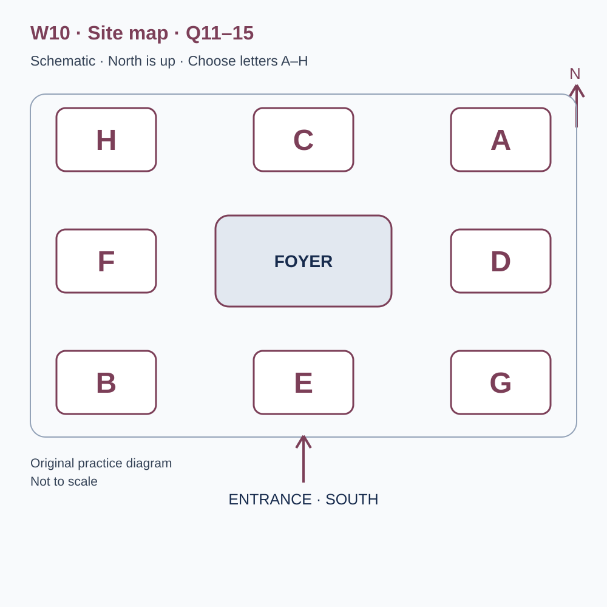
Q11. Costume workshop
Answer: ____
Q12. Prop display
Answer: ____
Q13. Main learning studio
Answer: ____
Q14. Collection point
Answer: ____
Q15. Break area
Answer: ____
Q16. Why does the leader pause practical work?
- A. To compare decisions and learn from different attempts
- B. To rank groups by speed
- C. To hide unfinished models
Answer: ____
Q17. What should participants do before a close photograph includes someone else or their work?
- A. Assume group participation grants publicity rights
- B. Discuss it with the person under the workshop arrangements
- C. Submit it directly as theatre publicity
Answer: ____
Q18. If shared materials are unavailable, participants should
- A. take items from another group's active workspace
- B. leave damaged items for the next user
- C. tell the leader and consider another approach
Answer: ____
Q19. What should the final group explanation describe?
- A. Why the final model is simply better-looking
- B. The initial idea, a noticed problem and the reason for a change
- C. Which other group was least successful
Answer: ____
Q20. What is a useful focus for feedback?
- A. A specific confusing stage and what the participant expected
- B. A ranking of everyone's artistic ability
- C. A demand to replace every feature of the workshop
Answer: ____
Part 3 — Planning a visitor-flow study
Q21–26: Match each proposal to the students' final positions at the end of that exchange. The tutor is not included. Write A, B, C or D. Letters may be reused.
- A Clara only
- B Dev only
- C Both students
- D Neither student
Q27–28 and Q29–30: Choose TWO different letters, A–E, for each pair. Write one letter in each numbered slot; either order is accepted. Each distinct correct choice earns one point, maximum two. Repeating a letter cannot earn two points. Submit no more than two letters.
Q21. At the END of this exchange, who supports: Starting with a simple preparation task, analysed separately?
Answer: ____
Q22. At the END of this exchange, who supports: Offering anonymous written feedback after the route task?
Answer: ____
Q23. At the END of this exchange, who supports: Charging participants an admission fee?
Answer: ____
Q24. At the END of this exchange, who supports: Observing from one fixed foyer-corner position?
Answer: ____
Q25. At the END of this exchange, who supports: Reviewing the procedure midway and recording revisions?
Answer: ____
Q26. At the END of this exchange, who supports: Bringing the same group back for a limited wording check?
Answer: ____
Q27–28. Which TWO measures are agreed at the learning desk?
- A. Names of waiting visitors
- B. Visitors' shop purchases
- C. Queue length at scheduled checks
- D. Interruptions to the worker's explanation
- E. Each visitor's age
Answers: Q27 ____ · Q28 ____
Q29–30. Which TWO changes complicate attributing the shorter queue to the sign?
- A. The route into the foyer changed
- B. The same observation sheet was used
- C. The session date was recorded
- D. The session was cancelled
- E. A different staff member worked at the desk
Answers: Q29 ____ · Q30 ____
Part 4 — Evaluating a community programme
Q31–35: Complete the flow chart below. Q36–40: Complete the notes. Write NO MORE THAN TWO WORDS AND/OR A NUMBER for each answer, using words from the recording. Numeric notation may replace spoken numbers. Words or units already printed do not belong in the blank. The numbered text below repeats the SVG prompts for readability.
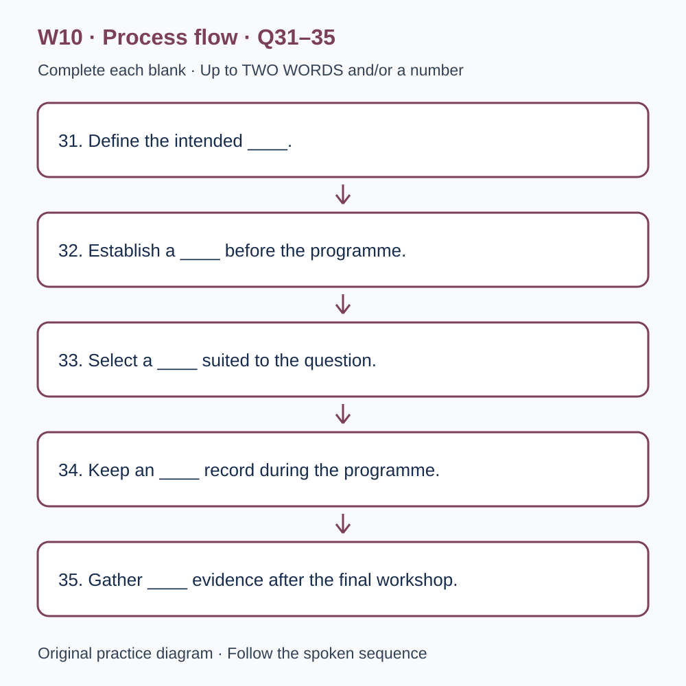
Q31. Define the intended ____.
Q32. Establish a ____ before the programme.
Q33. Select a ____ suited to the question.
Q34. Keep an ____ record during the programme.
Q35. Gather ____ evidence after the final workshop.
Q36. A shift from another provider, rather than entirely new activity, raises the issue of ____.
Q37. Initial differences between volunteers and non-participants relate to ____.
Q38. Loss of participants from the follow-up is called ____.
Q39. Describe ____ alongside outcomes, using a clear calculation boundary.
Q40. The stage review lists ____ for the next trial.
本周训练安排（音频批准后执行）
- Preview questions without the script：8 分钟。
- Future continuous first listen, including planned part pauses：32 分钟。
- Submit first answers and confidence, without a second play：8 分钟。
- Check answers and classify errors：20 分钟。
- Four Q-located intensive segments, 15 minutes each：60 分钟。
- Diagram and opinion retelling：15 分钟。
- Next-day retry of missed items：15 分钟。
合计 158 分钟；最多另用 22 分钟缓冲，总计不超过 180 分钟。暂停、回放与查词均计入精听预算，不能另行无限追加。当前实际已完成听力分钟数为 0。精听区段和步骤见 intensive.md；答案和脚本另页。
参考答案与证据（完成首次听力后再展开）
L-W10 — Answers and evidence
> 独立答案页。先提交首次答案，再看本页。当前缺音频，文本验题不能充当实听验收。
每个单空 1 分；双选各 2 分、答案顺序不限、按不同正确选项计分。接受形式仅做大小写和空白规范化；不做模糊词形推断。
Q1 — set design
Accepted answers: set design
Use the final confirmed detail in this exchange; the printed unit or date context is already supplied.
Evidence locator: Q01 (script.md; timestamps unavailable).
> Coordinator: Theatre learning office. Participant: Hello. I'm interested in your practical workshops, but I'm unsure which one suits me. I enjoy watching performances, although I have no ambition to act. Coordinator: We offer several sessions about work behind the scenes. What would you most like to explore? Participant: Set design. I've tried making small models at home, and I'd like to understand how a stage space develops from an idea. Coordinator: Then I'll record set design as your main interest. We also run costume sessions, but those focus on a different process. Participant: The set session sounds right. I'm looking for an introduction rather than a professional qualification.
Q2 — 22
Accepted answers: 22 / 22nd / twenty-second / the twenty-second / twenty second / the 22nd
Use the final confirmed detail in this exchange; the printed unit or date context is already supplied.
Evidence locator: Q02 (script.md; timestamps unavailable).
> Coordinator: Which date are you considering? Participant: I first wrote down February the fifteenth, because a friend sent me an early programme. Coordinator: That session has moved. The available date is the twenty-second of February. Participant: The twenty-second is fine; I just need to change the note I sent to my sister. Coordinator: Please do. We will repeat the date in your confirmation, and the booking page now shows the revised programme. Participant: I'll use that confirmation when arranging transport. I don't want us to arrive a week early simply because we both saved the same old picture without checking whether the details were final.
Q3 — 1.40
Accepted answers: 1.40 / 1:40 / 01.40 / 01:40 / 13.40 / 13:40 / one forty
Use the final confirmed detail in this exchange; the printed unit or date context is already supplied.
Evidence locator: Q03 (script.md; timestamps unavailable).
> Participant: Is it a morning workshop? Coordinator: No, the group begins at one forty in the afternoon. The building opens earlier for other activities, but your session starts at one forty. Participant: I'll put the afternoon time in my calendar. I had assumed it began just after lunch at one, so I'm glad I asked. Coordinator: You can arrive a little before the start and check in at the learning desk. Participant: That's helpful. My sister prefers to leave some spare time for finding the entrance, and we won't assume that an open building means the workshop leader is ready to start before the booked time.
Q4 — 3
Accepted answers: 3 / three
Use the final confirmed detail in this exchange; the printed unit or date context is already supplied.
Evidence locator: Q04 (script.md; timestamps unavailable).
> Coordinator: How many places would you like? Participant: There are four people in our informal art group, but one has a work commitment that day. Could I book three places? Coordinator: Three places are available. Participant: Good. The fourth person may ask about another date, but I shouldn't reserve a seat just in case. Coordinator: Exactly. You can send them the public information sheet, and they can contact us separately. If somebody in your booking later drops out, tell us rather than arranging an informal replacement. We need to know who is attending so the leader can prepare the right number of work areas and introductory materials.
Q5 — 45
Accepted answers: 45 / forty-five / forty five / 45.00
Use the final confirmed detail in this exchange; the printed unit or date context is already supplied.
Evidence locator: Q05 (script.md; timestamps unavailable).
> Participant: How much does the group booking cost? Coordinator: For the three introductory places, the total is forty-five pounds. Participant: Is that forty-five pounds each? Coordinator: No, forty-five for the booking as a whole. Specialist follow-up workshops have different prices, so please make sure you're looking at the introduction when you check the website. Participant: I will. We have a small shared budget and need a clear total before paying. Coordinator: Your confirmation will show the number of places and the total together. If either differs from what we've discussed, contact the office so that we can correct it before you complete the payment.
Q6 — apron
Accepted answers: apron / an apron / the apron
Use the final confirmed detail in this exchange; the printed unit or date context is already supplied.
Evidence locator: Q06 (script.md; timestamps unavailable).
> Participant: Should we bring our own modelling tools? Coordinator: We supply the tools and materials for the exercise. Please bring an apron, because some of the materials can mark clothing. Participant: I have an apron from a painting class. I'll bring the apron and tell the others to do the same. Coordinator: Good. You don't need to buy equipment for this introduction. A notebook is optional if you like making written notes, but the apron is the practical item we ask everyone to bring. Participant: That keeps the preparation simple. I'd rather try the process first than purchase tools before discovering which part of it interests me.
Q7 — B
Accepted answers: B
The workshop is an introduction, not a competition in polished drawing.
Evidence locator: Q07 (script.md; timestamps unavailable).
> Participant: Do we need drawing experience? My sister worries that her sketches aren't good enough to show other people. Coordinator: The workshop is designed for beginners. The leader uses simple exercises to explore space and explain choices, rather than judging polished drawings. Participant: So previous drawing skill isn't an entry requirement? Coordinator: That's right. Participants can use rough shapes and explain what they intend. A useful model doesn't have to look like a finished exhibition object. Participant: I'll pass that on. She enjoys thinking about how a room works but wouldn't come if she thought everyone had to compete to produce the most impressive artwork by the end.
Q8 — A
Accepted answers: A
Being in the building does not provide access to ordinary company rehearsals.
Evidence locator: Q08 (script.md; timestamps unavailable).
> Participant: Will we be able to watch the rehearsal afterwards? Coordinator: Only if a separate public rehearsal event is scheduled and you book that event. The workshop does not include access to ordinary company rehearsals. Participant: I wondered because the activities take place in the same building. Coordinator: They do, but different spaces have different access arrangements. The workshop leader may use a prepared example from a production, which isn't the same as inviting the group into a live rehearsal. Participant: Understood. We'll plan around the workshop itself and check the public programme if we want to add another activity, rather than assume that one booking opens every room.
Q9 — C
Accepted answers: C
Advance discussion establishes both possibilities and limits.
Evidence locator: Q09 (script.md; timestamps unavailable).
> Participant: One of us may need to sit for much of the session. Should we wait until the day to discuss that? Coordinator: Please tell us in your reply to the confirmation. The leader can explain how the activity is organised and consider an appropriate work position. We shouldn't promise a solution without understanding the practical requirement. Participant: I'll describe it in advance and ask what is available. Coordinator: Thank you. That gives us time to discuss any limits as well as the possibilities. Participant: It also means the person can decide with clear information, instead of arriving and feeling obliged to attempt an arrangement that doesn't work for them.
Q10 — B
Accepted answers: B
Current learning-session instructions supersede earlier room and entrance information.
Evidence locator: Q10 (script.md; timestamps unavailable).
> Participant: If the workshop moves to another room, how will we know? Coordinator: We'll send a direct booking update and put a notice at the learning desk. Please follow the revised message, even if your original confirmation shows a different room. Participant: Should we use the main theatre entrance shown on old posters? Coordinator: Use the entrance in the current booking instructions. Some posters advertise performances rather than learning sessions. Participant: I'll keep the final message accessible on my phone and share it with the other two participants. Coordinator: Excellent. A shared current version is more useful than several screenshots from different stages of the programme.
Q11 — F
Accepted answers: F
Use the explicitly stated position relative to the foyer, not an earlier layout or adjacent area.
Evidence locator: Q11 (script.md; timestamps unavailable).
> Welcome to the theatre's learning spaces. The diagram has north at the top and the entrance on the southern edge. The central foyer is our fixed reference point. Eight lettered areas surround it, and the letters are locations rather than the initials of room names. The costume workshop is directly west of the foyer, level with its centre. It is not in the north-west corner. We use that room for demonstrations and supervised practical sessions. Please wait outside until the leader invites your group in, even if another activity appears to have finished. The team may still be counting equipment or preparing materials for the next session.
Q12 — A
Accepted answers: A
Use the explicitly stated position relative to the foyer, not an earlier layout or adjacent area.
Evidence locator: Q12 (script.md; timestamps unavailable).
> The prop display is in the north-east corner. An earlier programme placed it in the north-west area, but the display moved when we reorganised the learning programme. On today's diagram it is above and to the right of the foyer. It also lies east of the northern central studio, since both rooms are on the same northern row. The display includes objects prepared for teaching rather than items visitors can borrow. Ask before touching anything, even if it looks like an ordinary household object. A familiar appearance doesn't tell you how something has been made or whether it is intended to be handled during this particular session.
Q13 — C
Accepted answers: C
Use the explicitly stated position relative to the foyer, not an earlier layout or adjacent area.
Evidence locator: Q13 (script.md; timestamps unavailable).
> The main learning studio is directly north of the foyer. It is west of the prop display, not south-west of it, because the two areas sit on the same northern row of this schematic map. Your set-design workshop will begin in that studio today. There is enough table space for small groups to arrange materials and compare their ideas. Please keep personal bags away from the working surfaces unless the leader asks you to take something out. We want everyone to be able to see the example and reach their own materials. The room is a shared learning space, so leave it ready for the group that follows yours.
Q14 — G
Accepted answers: G
Use the explicitly stated position relative to the foyer, not an earlier layout or adjacent area.
Evidence locator: Q14 (script.md; timestamps unavailable).
> Completed workshop models are collected from the collection point in the south-east area. That is below and to the right of the foyer, and south of the room directly east of the foyer. The collection point is separate from the entrance desk, even if both have staff nearby. Before taking a model away, check its label with the team so that similar-looking work doesn't become mixed up. If an item needs time to dry, staff will explain the available arrangement. Don't assume that leaving it on a studio table guarantees somebody will know which group it belongs to or when you intend to return for it.
Q15 — B
Accepted answers: B
Use the explicitly stated position relative to the foyer, not an earlier layout or adjacent area.
Evidence locator: Q15 (script.md; timestamps unavailable).
> The break area is in the south-west corner, west of the room directly south of the foyer. It is on the opposite side of the map from the collection point. Visitors can sit there between scheduled activities, but it isn't a room reserved exclusively for one workshop. Please leave space for other groups and take personal belongings when you move on. The break area isn't the place to store unfinished models, which should remain within the leader's agreed arrangement. On your map, identify the south-west letter for this final location. You now have the costume workshop, prop display, studio, collection point and break area marked for today's visit.
Q16 — A
Accepted answers: A
Comparing the reasoning behind attempts is part of the learning process.
Evidence locator: Q16 (script.md; timestamps unavailable).
> During a practical task, the leader may ask groups to stop working and compare two approaches. Those pauses are part of the learning process. They allow participants to explain why a choice was made, see its consequences and consider another possibility. The aim isn't to identify the fastest group or rank the models by appearance. A model that exposes a problem can be useful if the group can explain what it learned. Please resist the temptation to hide an unfinished attempt whenever discussion begins. The conversation concerns the development of an idea, and sometimes an abandoned version shows that development more clearly than the neat final version alone.
Q17 — B
Accepted answers: B
Personal reference and public publicity are separate uses; participation is not automatic agreement.
Evidence locator: Q17 (script.md; timestamps unavailable).
> You may photograph your own work, but a close photograph that includes another participant or their work should be discussed with them first under the workshop arrangements. A picture taken for personal reference isn't automatically suitable for the theatre's public publicity. The team uses a separate process when collecting contributions for that purpose. If someone prefers not to be included, adjust the photograph rather than treating their presence in a group activity as agreement. You can usually show the learning point by changing the angle or photographing your own model later. Ask the leader if you're unsure which arrangement applies to a particular use.
Q18 — C
Accepted answers: C
The demonstrated collection process preserves access and reliable stock records.
Evidence locator: Q18 (script.md; timestamps unavailable).
> Some materials are shared between tables. When you need an item, use the collection and return process the leader demonstrates. Taking it from another group's active workspace can interrupt their task and make the stock record unreliable. If a shared item isn't available, tell the leader; another approach may work for the exercise. The point is to explore a design problem with the resources provided, not to make every group use identical materials at the same instant. Returning an item promptly gives other participants a fair opportunity to try it. Please also report a damaged item rather than placing it back where the next person may mistake it for a usable one.
Q19 — B
Accepted answers: B
The requested account connects a revision to the problem it addresses.
Evidence locator: Q19 (script.md; timestamps unavailable).
> At the end of the task, groups will describe one change they made and the reason for it. That explanation should connect the initial idea, the problem noticed and the revised choice. Saying that the second version looked better gives little information about the decision. You might instead explain that moving a doorway made a route clearer, or that reducing the model's height improved visibility from another position. These are examples of the kind of reasoning requested, not instructions to make a particular design change. Different groups may retain different solutions, provided they can explain how their choices respond to the problem they were trying to solve.
Q20 — A
Accepted answers: A
Specific feedback helps distinguish wording, demonstration and practical problems; useful features can be retained.
Evidence locator: Q20 (script.md; timestamps unavailable).
> Please complete the short feedback form after the workshop. It asks about the clarity of the task and whether you had an opportunity to participate. It doesn't ask you to compare your artistic ability with another participant's. If an instruction was confusing, name the stage where the confusion arose and describe what you expected to happen. That helps the team distinguish a wording problem from a missing demonstration or a practical arrangement that needs attention. You can also identify something that helped you learn. A useful review considers what to retain as well as what to change, instead of assuming improvement requires replacing every feature of the session.
Q21 — C
Accepted answers: C
Final stance: Both students. Ignore an initial proposal if later withdrawn; the tutor is not an answer option.
Evidence locator: Q21 (script.md; timestamps unavailable).
> Tutor: For your visitor-flow pilot, should the first task be deliberately simple? Clara: Yes. Asking people to find the learning desk would let them become familiar with the task format. Dev: I was worried that an easy task wouldn't produce useful data, but its purpose is preparation. I support using it first if we keep those results separate. Tutor: So you wouldn't treat successful completion as proof that the whole building is easy to navigate? Dev: No. Clara: Exactly. It's a way to check that people understand what we're asking them to do. Then the later task can focus on a less obvious destination without also testing whether the participant understands the procedure.
Q22 — A
Accepted answers: A
Final stance: Clara only. Ignore an initial proposal if later withdrawn; the tutor is not an answer option.
Evidence locator: Q22 (script.md; timestamps unavailable).
> Tutor: Clara suggests allowing anonymous written feedback after the route task. Clara: I favour it. Somebody might mention a confusing moment they don't want to discuss face to face. Dev: I'd prefer a short conversation linked to the observation record. Anonymous comments could be difficult to interpret without knowing which route the person took. Clara: We could ask them to indicate the route version without giving a name. Dev: That helps, but I still prefer the conversation for this pilot. Tutor: Does your proposal remain, Clara? Clara: Yes. I think an anonymous option is worth including, even if we can't connect every comment to an individual observed action.
Q23 — D
Accepted answers: D
Final stance: Neither student. Ignore an initial proposal if later withdrawn; the tutor is not an answer option.
Evidence locator: Q23 (script.md; timestamps unavailable).
> Tutor: Your first draft proposes charging participants a small admission fee. Dev: I thought it might discourage people from agreeing and then failing to attend. Clara: I don't support a fee for a student study. It could change who volunteers, and we aren't offering a separate paid event. Dev: You're right. After reading the project brief, I no longer think charging is appropriate. Tutor: What will you do instead? Dev: Send a reminder and make it easy for someone to withdraw. Clara: That seems practical. Dev: I'll remove the fee from the draft entirely. It isn't a proposal I'm keeping in reserve for a later stage of this same pilot.
Q24 — B
Accepted answers: B
Final stance: Dev only. Ignore an initial proposal if later withdrawn; the tutor is not an answer option.
Evidence locator: Q24 (script.md; timestamps unavailable).
> Tutor: Where should the observer stand? Dev: I support a fixed position beside the foyer corner. It provides a view of the junction without requiring us to follow participants closely. Clara: I'd use two observers who can cover different parts of the route. A single corner won't show where a person goes after leaving the foyer. Dev: That's true, but the pilot question concerns the decision at this junction. I still favour the fixed corner position. Tutor: Clara, does narrowing the question resolve your concern? Clara: It clarifies the claim, but I still prefer two positions because a return from the wrong corridor would be informative. We haven't reached agreement on the arrangement.
Q25 — C
Accepted answers: C
Final stance: Both students. Ignore an initial proposal if later withdrawn; the tutor is not an answer option.
Evidence locator: Q25 (script.md; timestamps unavailable).
> Tutor: Will you review the procedure halfway through the pilot? Clara: Yes, we should check whether the observation categories are working before using them for all the remaining sessions. Dev: I agree, provided we record any revisions and don't silently combine unlike categories. Tutor: What might trigger a revision? Clara: A situation that both observers see but consistently classify differently. Dev: Or a category that requires us to infer an intention we cannot actually observe. Clara: Then we both support a midpoint review, with a clear record of what changes. Tutor: Good. A review can improve the method, but it also creates a boundary that the later analysis needs to acknowledge.
Q26 — A
Accepted answers: A
Final stance: Clara only. Ignore an initial proposal if later withdrawn; the tutor is not an answer option.
Evidence locator: Q26 (script.md; timestamps unavailable).
> Tutor: Should the revised route task be tested with the same participant group? Clara: I'd bring the same group back for one limited check. They can compare the instructions directly and identify what became clearer. Dev: I'd recruit new people. The returning group may remember the destination, so it would be difficult to tell whether the revision helped them find it. Clara: I accept that we couldn't use their speed as a clean comparison. I still support asking them back to discuss the wording. Tutor: Dev? Dev: For our next session, I remain in favour of new participants. We could invite separate comments from the original group later if time permits.
Q27–28 — C, D
Accept unordered set: C, D. One point per distinct correct choice, maximum 2.
Both agreed measures describe the desk process; personal names, purchases and ages are not selected.
Evidence locator: Q27, Q28 (script.md; timestamps unavailable).
> Tutor: Which two measures have you agreed to collect at the learning desk? Dev: First, the length of the queue at our scheduled observation points. Clara: Yes, under a rule that distinguishes people waiting for help from people standing nearby talking. Tutor: Would you collect the names of everyone in the queue? Clara: No. Names don't help answer this question. Dev: We also rejected recording what each visitor bought at the theatre shop. That might interest another project, but it isn't a measure of the desk's information process. Tutor: Then the queue count is your first agreed measure, with the definition written down before you start observing.
> Tutor: What is the second agreed measure? Clara: Count interruptions to the desk worker's current explanation. For example, another visitor may ask a question before the first explanation is finished. Dev: Agreed. We'll define observable interruptions and avoid guessing whether they were irritating. Tutor: Are you measuring the age of every visitor as well? Dev: No, that isn't one of the selected measures. Clara: Nor are we estimating people's income from their appearance. Tutor: Good. The two measures are the queue length at scheduled checks and interruptions to explanations. They describe parts of the process, although neither alone tells you whether visitors eventually understood the information they received.
Q29–30 — A, E
Accept unordered set: A, E. One point per distinct correct choice, maximum 2.
Route and staff changes offer competing explanations; unchanged forms and recorded dates help rather than invalidate the comparison.
Evidence locator: Q29, Q30 (script.md; timestamps unavailable).
> Tutor: Suppose the queue is shorter in the second session. Which two changes prevent a simple claim that the new sign caused the improvement? Clara: The route into the foyer changed between sessions. That could change how many people reached the desk, independently of the sign. Dev: Yes. We need to state that limitation. Tutor: Is using the same observation sheet itself a problem? Dev: No; keeping the method consistent helps. Clara: And recording the session date isn't a weakness either. Tutor: Exactly. You are looking for competing explanations of the changed queue, not treating every feature of the observation process as a reason to reject the study.
> Tutor: What is the other relevant change? Dev: A different member of staff worked at the desk in the second session. Their way of answering questions might affect how quickly the queue moved. Clara: Agreed. With both the route and the staff member changing, we can't isolate the effect of the sign from this comparison alone. Tutor: Does that mean you should hide the shorter queue? Clara: No, report it as an observation and explain what the design cannot establish. Dev: The sessions did take place, so cancellation isn't a limitation. Tutor: Good. Keep the result and the causal claim separate, then propose a next stage that can examine the alternatives more carefully.
Q31 — outcome
Accepted answers: outcome / change
Complete the named stage in the stated process order; retain any word already printed around the blank.
Evidence locator: Q31 (script.md; timestamps unavailable).
> Consider a fictional community programme that offers introductory creative workshops. Before collecting results, the evaluation team defines an outcome. An outcome is the change the programme hopes to support, rather than merely the activity it delivers. For this example, the team focuses on participants' ability to explain one design decision using evidence from their own work. Counting sessions is useful for describing delivery, but it doesn't measure that particular ability. A clear outcome guides the task used to gather evidence and prevents the team from replacing a difficult question with an easier count after the programme has finished. It also helps explain what the evaluation deliberately leaves outside its scope.
Q32 — baseline
Accepted answers: baseline / starting measure / reference
Complete the named stage in the stated process order; retain any word already printed around the blank.
Evidence locator: Q32 (script.md; timestamps unavailable).
> The second stage establishes a baseline before participants begin the programme. The baseline is a starting measure taken with a task appropriate to the chosen outcome. It should not require knowledge that the introductory programme never intends to address. Nor should it be so different from the later task that any change becomes impossible to interpret. In this example, participants describe a choice in a simple prepared model. The team records the response using a stated method. A baseline doesn't explain why participants differ, but it provides a reference for describing what changes within the observed group during the period covered by the evaluation.
Q33 — comparison
Accepted answers: comparison
Complete the named stage in the stated process order; retain any word already printed around the blank.
Evidence locator: Q33 (script.md; timestamps unavailable).
> The third stage selects a comparison that suits the question and acknowledges the available constraints. A simple before-and-after comparison can describe change, but it doesn't automatically establish what caused that change. Participants may have practised elsewhere or encountered other relevant experiences during the same period. If another group is used for comparison, the team needs to consider how that group was selected and whether its circumstances are genuinely comparable. Merely giving the groups different names does not solve those problems. The comparison is part of the reasoning, and its limits should be explained before the final results encourage readers to treat every difference as a programme effect.
Q34 — attendance
Accepted answers: attendance
Complete the named stage in the stated process order; retain any word already printed around the blank.
Evidence locator: Q34 (script.md; timestamps unavailable).
> The fourth stage records attendance during the programme. Attendance helps the team describe which activities each participant actually encountered. Someone booked for four sessions may attend only one, while another person attends every session but misses the final evaluation. Those are different records, and the team should not turn a booking into proof of participation. The attendance record also helps identify practical obstacles that might deserve investigation. It cannot by itself tell researchers how engaged a person was or what they learned. In this example it provides context for interpretation, rather than a substitute for the task that measures the chosen outcome.
Q35 — follow-up
Accepted answers: follow-up / followup
Complete the named stage in the stated process order; retain any word already printed around the blank.
Evidence locator: Q35 (script.md; timestamps unavailable).
> The fifth stage gathers follow-up evidence after the final workshop. The follow-up uses the agreed task and records who was available to complete it. The team keeps the timing visible because a response collected immediately afterwards may differ from one collected several weeks later. If circumstances force a change to the schedule, that change is documented rather than hidden inside a single final column. The purpose is to maintain a clear relationship between the evaluation plan and what actually happened. A tidy table is helpful only when readers can understand the observations represented by its entries, including the occasions when planned evidence could not be collected.
Q36 — displacement
Accepted answers: displacement
The corresponding evidence block supplies this distinction or qualification; the question retains the surrounding grammar.
Evidence locator: Q36 (script.md; timestamps unavailable).
> One question concerns displacement. If participants would have attended another similar workshop without this programme, some activity may have shifted from one provider to another rather than being entirely new. This possibility doesn't mean the programme has no value. It means that a claim about creating additional participation needs more support than a count of people attending. The team may ask carefully framed questions about alternatives, while recognising that answers about hypothetical choices have limits. Reporting displacement as a possibility is different from assuming that every participant would definitely have done the same thing elsewhere. The evaluation should make the uncertainty visible instead of choosing whichever story produces the strongest headline.
Q37 — selection
Accepted answers: selection / recruitment
The corresponding evidence block supplies this distinction or qualification; the question retains the surrounding grammar.
Evidence locator: Q37 (script.md; timestamps unavailable).
> Selection also matters. People who volunteer for a creative programme may already be interested in the subject or have more time available than those who do not join. If participants later perform differently from non-participants, those initial differences could contribute to the result. The team should examine what it knows about recruitment and starting circumstances rather than assuming that the programme is the only difference between the groups. This is especially important when a small pilot relies on people who respond to an enthusiastic invitation. The pilot can still provide useful information, but the invitation and resulting sample belong in the explanation of what that information can support.
Q38 — attrition
Accepted answers: attrition
The corresponding evidence block supplies this distinction or qualification; the question retains the surrounding grammar.
Evidence locator: Q38 (script.md; timestamps unavailable).
> Another issue is attrition, meaning that some participants are missing from the follow-up. If people who found the programme less useful are less likely to respond, the available feedback may present a more favourable picture than the experience of the whole starting group. The team should report how many people were invited and how many provided evidence, without inventing responses for those who did not. It can describe what is known about the missing cases and what remains uncertain. Treating every missing response as failure would be unjustified, but treating the remaining respondents as a complete account of the original group would also conceal an important limitation.
Q39 — costs
Accepted answers: costs / the costs
The corresponding evidence block supplies this distinction or qualification; the question retains the surrounding grammar.
Evidence locator: Q39 (script.md; timestamps unavailable).
> Costs deserve a clear description alongside outcomes. The evaluation may count materials and staff time, but it should also explain the boundary used for that count. A room provided without a direct charge still represents a resource someone made available. Whether and how that resource enters the calculation depends on the stated question. The team should avoid comparing one programme's narrow cash total with another programme's much broader resource estimate as though the figures meant the same thing. A consistent account of costs helps readers assess practical choices. It doesn't reduce every benefit to money or imply that the cheapest activity is automatically the best one.
Q40 — unresolved questions
Accepted answers: unresolved questions / open questions / questions / the questions / these questions
The corresponding evidence block supplies this distinction or qualification; the question retains the surrounding grammar.
Evidence locator: Q40 (script.md; timestamps unavailable).
> At the stage review, the team lists unresolved questions for the next trial. These open questions might concern the comparison group, the follow-up interval or a task that participants interpreted differently from the researchers. The review should connect each proposed change to the difficulty it is intended to address. Adding more questions to a form isn't necessarily an improvement if the original problem was unclear wording or missing contact arrangements. The team also records which features worked well enough to retain. The next trial then becomes a purposeful revision of the method, with reasons that another person can examine, rather than a new version whose changes are impossible to trace back to evidence.
完整脚本（提前阅读会失去陌生题首答机会）
L-W10 — Behind the scenes and beyond the headline: transcript
> 原创虚构练习，非真题；音频缺失。仅供完成首次作答后的核对或文字审阅。Q 标记与角色名不属于朗读正文。
Part 1 — Joining a theatre workshop
Q1 evidence block
Coordinator: Theatre learning office.
Participant: Hello. I'm interested in your practical workshops, but I'm unsure which one suits me. I enjoy watching performances, although I have no ambition to act.
Coordinator: We offer several sessions about work behind the scenes. What would you most like to explore?
Participant: Set design. I've tried making small models at home, and I'd like to understand how a stage space develops from an idea.
Coordinator: Then I'll record set design as your main interest. We also run costume sessions, but those focus on a different process.
Participant: The set session sounds right. I'm looking for an introduction rather than a professional qualification.
Q2 evidence block
Coordinator: Which date are you considering?
Participant: I first wrote down February the fifteenth, because a friend sent me an early programme.
Coordinator: That session has moved. The available date is the twenty-second of February.
Participant: The twenty-second is fine; I just need to change the note I sent to my sister.
Coordinator: Please do. We will repeat the date in your confirmation, and the booking page now shows the revised programme.
Participant: I'll use that confirmation when arranging transport. I don't want us to arrive a week early simply because we both saved the same old picture without checking whether the details were final.
Q3 evidence block
Participant: Is it a morning workshop?
Coordinator: No, the group begins at one forty in the afternoon. The building opens earlier for other activities, but your session starts at one forty.
Participant: I'll put the afternoon time in my calendar. I had assumed it began just after lunch at one, so I'm glad I asked.
Coordinator: You can arrive a little before the start and check in at the learning desk.
Participant: That's helpful. My sister prefers to leave some spare time for finding the entrance, and we won't assume that an open building means the workshop leader is ready to start before the booked time.
Q4 evidence block
Coordinator: How many places would you like?
Participant: There are four people in our informal art group, but one has a work commitment that day. Could I book three places?
Coordinator: Three places are available.
Participant: Good. The fourth person may ask about another date, but I shouldn't reserve a seat just in case.
Coordinator: Exactly. You can send them the public information sheet, and they can contact us separately. If somebody in your booking later drops out, tell us rather than arranging an informal replacement. We need to know who is attending so the leader can prepare the right number of work areas and introductory materials.
Q5 evidence block
Participant: How much does the group booking cost?
Coordinator: For the three introductory places, the total is forty-five pounds.
Participant: Is that forty-five pounds each?
Coordinator: No, forty-five for the booking as a whole. Specialist follow-up workshops have different prices, so please make sure you're looking at the introduction when you check the website.
Participant: I will. We have a small shared budget and need a clear total before paying.
Coordinator: Your confirmation will show the number of places and the total together. If either differs from what we've discussed, contact the office so that we can correct it before you complete the payment.
Q6 evidence block
Participant: Should we bring our own modelling tools?
Coordinator: We supply the tools and materials for the exercise. Please bring an apron, because some of the materials can mark clothing.
Participant: I have an apron from a painting class. I'll bring the apron and tell the others to do the same.
Coordinator: Good. You don't need to buy equipment for this introduction. A notebook is optional if you like making written notes, but the apron is the practical item we ask everyone to bring.
Participant: That keeps the preparation simple. I'd rather try the process first than purchase tools before discovering which part of it interests me.
Q7 evidence block
Participant: Do we need drawing experience? My sister worries that her sketches aren't good enough to show other people.
Coordinator: The workshop is designed for beginners. The leader uses simple exercises to explore space and explain choices, rather than judging polished drawings.
Participant: So previous drawing skill isn't an entry requirement?
Coordinator: That's right. Participants can use rough shapes and explain what they intend. A useful model doesn't have to look like a finished exhibition object.
Participant: I'll pass that on. She enjoys thinking about how a room works but wouldn't come if she thought everyone had to compete to produce the most impressive artwork by the end.
Q8 evidence block
Participant: Will we be able to watch the rehearsal afterwards?
Coordinator: Only if a separate public rehearsal event is scheduled and you book that event. The workshop does not include access to ordinary company rehearsals.
Participant: I wondered because the activities take place in the same building.
Coordinator: They do, but different spaces have different access arrangements. The workshop leader may use a prepared example from a production, which isn't the same as inviting the group into a live rehearsal.
Participant: Understood. We'll plan around the workshop itself and check the public programme if we want to add another activity, rather than assume that one booking opens every room.
Q9 evidence block
Participant: One of us may need to sit for much of the session. Should we wait until the day to discuss that?
Coordinator: Please tell us in your reply to the confirmation. The leader can explain how the activity is organised and consider an appropriate work position. We shouldn't promise a solution without understanding the practical requirement.
Participant: I'll describe it in advance and ask what is available.
Coordinator: Thank you. That gives us time to discuss any limits as well as the possibilities.
Participant: It also means the person can decide with clear information, instead of arriving and feeling obliged to attempt an arrangement that doesn't work for them.
Q10 evidence block
Participant: If the workshop moves to another room, how will we know?
Coordinator: We'll send a direct booking update and put a notice at the learning desk. Please follow the revised message, even if your original confirmation shows a different room.
Participant: Should we use the main theatre entrance shown on old posters?
Coordinator: Use the entrance in the current booking instructions. Some posters advertise performances rather than learning sessions.
Participant: I'll keep the final message accessible on my phone and share it with the other two participants.
Coordinator: Excellent. A shared current version is more useful than several screenshots from different stages of the programme.
Part 2 — Theatre learning spaces
Q11 evidence block
Learning host: Welcome to the theatre's learning spaces. The diagram has north at the top and the entrance on the southern edge. The central foyer is our fixed reference point. Eight lettered areas surround it, and the letters are locations rather than the initials of room names. The costume workshop is directly west of the foyer, level with its centre. It is not in the north-west corner. We use that room for demonstrations and supervised practical sessions. Please wait outside until the leader invites your group in, even if another activity appears to have finished. The team may still be counting equipment or preparing materials for the next session.
Q12 evidence block
Learning host: The prop display is in the north-east corner. An earlier programme placed it in the north-west area, but the display moved when we reorganised the learning programme. On today's diagram it is above and to the right of the foyer. It also lies east of the northern central studio, since both rooms are on the same northern row. The display includes objects prepared for teaching rather than items visitors can borrow. Ask before touching anything, even if it looks like an ordinary household object. A familiar appearance doesn't tell you how something has been made or whether it is intended to be handled during this particular session.
Q13 evidence block
Learning host: The main learning studio is directly north of the foyer. It is west of the prop display, not south-west of it, because the two areas sit on the same northern row of this schematic map. Your set-design workshop will begin in that studio today. There is enough table space for small groups to arrange materials and compare their ideas. Please keep personal bags away from the working surfaces unless the leader asks you to take something out. We want everyone to be able to see the example and reach their own materials. The room is a shared learning space, so leave it ready for the group that follows yours.
Q14 evidence block
Learning host: Completed workshop models are collected from the collection point in the south-east area. That is below and to the right of the foyer, and south of the room directly east of the foyer. The collection point is separate from the entrance desk, even if both have staff nearby. Before taking a model away, check its label with the team so that similar-looking work doesn't become mixed up. If an item needs time to dry, staff will explain the available arrangement. Don't assume that leaving it on a studio table guarantees somebody will know which group it belongs to or when you intend to return for it.
Q15 evidence block
Learning host: The break area is in the south-west corner, west of the room directly south of the foyer. It is on the opposite side of the map from the collection point. Visitors can sit there between scheduled activities, but it isn't a room reserved exclusively for one workshop. Please leave space for other groups and take personal belongings when you move on. The break area isn't the place to store unfinished models, which should remain within the leader's agreed arrangement. On your map, identify the south-west letter for this final location. You now have the costume workshop, prop display, studio, collection point and break area marked for today's visit.
Q16 evidence block
Learning host: During a practical task, the leader may ask groups to stop working and compare two approaches. Those pauses are part of the learning process. They allow participants to explain why a choice was made, see its consequences and consider another possibility. The aim isn't to identify the fastest group or rank the models by appearance. A model that exposes a problem can be useful if the group can explain what it learned. Please resist the temptation to hide an unfinished attempt whenever discussion begins. The conversation concerns the development of an idea, and sometimes an abandoned version shows that development more clearly than the neat final version alone.
Q17 evidence block
Learning host: You may photograph your own work, but a close photograph that includes another participant or their work should be discussed with them first under the workshop arrangements. A picture taken for personal reference isn't automatically suitable for the theatre's public publicity. The team uses a separate process when collecting contributions for that purpose. If someone prefers not to be included, adjust the photograph rather than treating their presence in a group activity as agreement. You can usually show the learning point by changing the angle or photographing your own model later. Ask the leader if you're unsure which arrangement applies to a particular use.
Q18 evidence block
Learning host: Some materials are shared between tables. When you need an item, use the collection and return process the leader demonstrates. Taking it from another group's active workspace can interrupt their task and make the stock record unreliable. If a shared item isn't available, tell the leader; another approach may work for the exercise. The point is to explore a design problem with the resources provided, not to make every group use identical materials at the same instant. Returning an item promptly gives other participants a fair opportunity to try it. Please also report a damaged item rather than placing it back where the next person may mistake it for a usable one.
Q19 evidence block
Learning host: At the end of the task, groups will describe one change they made and the reason for it. That explanation should connect the initial idea, the problem noticed and the revised choice. Saying that the second version looked better gives little information about the decision. You might instead explain that moving a doorway made a route clearer, or that reducing the model's height improved visibility from another position. These are examples of the kind of reasoning requested, not instructions to make a particular design change. Different groups may retain different solutions, provided they can explain how their choices respond to the problem they were trying to solve.
Q20 evidence block
Learning host: Please complete the short feedback form after the workshop. It asks about the clarity of the task and whether you had an opportunity to participate. It doesn't ask you to compare your artistic ability with another participant's. If an instruction was confusing, name the stage where the confusion arose and describe what you expected to happen. That helps the team distinguish a wording problem from a missing demonstration or a practical arrangement that needs attention. You can also identify something that helped you learn. A useful review considers what to retain as well as what to change, instead of assuming improvement requires replacing every feature of the session.
Part 3 — Planning a visitor-flow study
Q21 evidence block
Tutor: For your visitor-flow pilot, should the first task be deliberately simple?
Clara: Yes. Asking people to find the learning desk would let them become familiar with the task format.
Dev: I was worried that an easy task wouldn't produce useful data, but its purpose is preparation. I support using it first if we keep those results separate.
Tutor: So you wouldn't treat successful completion as proof that the whole building is easy to navigate?
Dev: No.
Clara: Exactly. It's a way to check that people understand what we're asking them to do. Then the later task can focus on a less obvious destination without also testing whether the participant understands the procedure.
Q22 evidence block
Tutor: Clara suggests allowing anonymous written feedback after the route task.
Clara: I favour it. Somebody might mention a confusing moment they don't want to discuss face to face.
Dev: I'd prefer a short conversation linked to the observation record. Anonymous comments could be difficult to interpret without knowing which route the person took.
Clara: We could ask them to indicate the route version without giving a name.
Dev: That helps, but I still prefer the conversation for this pilot.
Tutor: Does your proposal remain, Clara?
Clara: Yes. I think an anonymous option is worth including, even if we can't connect every comment to an individual observed action.
Q23 evidence block
Tutor: Your first draft proposes charging participants a small admission fee.
Dev: I thought it might discourage people from agreeing and then failing to attend.
Clara: I don't support a fee for a student study. It could change who volunteers, and we aren't offering a separate paid event.
Dev: You're right. After reading the project brief, I no longer think charging is appropriate.
Tutor: What will you do instead?
Dev: Send a reminder and make it easy for someone to withdraw.
Clara: That seems practical.
Dev: I'll remove the fee from the draft entirely. It isn't a proposal I'm keeping in reserve for a later stage of this same pilot.
Q24 evidence block
Tutor: Where should the observer stand?
Dev: I support a fixed position beside the foyer corner. It provides a view of the junction without requiring us to follow participants closely.
Clara: I'd use two observers who can cover different parts of the route. A single corner won't show where a person goes after leaving the foyer.
Dev: That's true, but the pilot question concerns the decision at this junction. I still favour the fixed corner position.
Tutor: Clara, does narrowing the question resolve your concern?
Clara: It clarifies the claim, but I still prefer two positions because a return from the wrong corridor would be informative. We haven't reached agreement on the arrangement.
Q25 evidence block
Tutor: Will you review the procedure halfway through the pilot?
Clara: Yes, we should check whether the observation categories are working before using them for all the remaining sessions.
Dev: I agree, provided we record any revisions and don't silently combine unlike categories.
Tutor: What might trigger a revision?
Clara: A situation that both observers see but consistently classify differently.
Dev: Or a category that requires us to infer an intention we cannot actually observe.
Clara: Then we both support a midpoint review, with a clear record of what changes.
Tutor: Good. A review can improve the method, but it also creates a boundary that the later analysis needs to acknowledge.
Q26 evidence block
Tutor: Should the revised route task be tested with the same participant group?
Clara: I'd bring the same group back for one limited check. They can compare the instructions directly and identify what became clearer.
Dev: I'd recruit new people. The returning group may remember the destination, so it would be difficult to tell whether the revision helped them find it.
Clara: I accept that we couldn't use their speed as a clean comparison. I still support asking them back to discuss the wording.
Tutor: Dev?
Dev: For our next session, I remain in favour of new participants. We could invite separate comments from the original group later if time permits.
Q27 evidence block
Tutor: Which two measures have you agreed to collect at the learning desk?
Dev: First, the length of the queue at our scheduled observation points.
Clara: Yes, under a rule that distinguishes people waiting for help from people standing nearby talking.
Tutor: Would you collect the names of everyone in the queue?
Clara: No. Names don't help answer this question.
Dev: We also rejected recording what each visitor bought at the theatre shop. That might interest another project, but it isn't a measure of the desk's information process.
Tutor: Then the queue count is your first agreed measure, with the definition written down before you start observing.
Q28 evidence block
Tutor: What is the second agreed measure?
Clara: Count interruptions to the desk worker's current explanation. For example, another visitor may ask a question before the first explanation is finished.
Dev: Agreed. We'll define observable interruptions and avoid guessing whether they were irritating.
Tutor: Are you measuring the age of every visitor as well?
Dev: No, that isn't one of the selected measures.
Clara: Nor are we estimating people's income from their appearance.
Tutor: Good. The two measures are the queue length at scheduled checks and interruptions to explanations. They describe parts of the process, although neither alone tells you whether visitors eventually understood the information they received.
Q29 evidence block
Tutor: Suppose the queue is shorter in the second session. Which two changes prevent a simple claim that the new sign caused the improvement?
Clara: The route into the foyer changed between sessions. That could change how many people reached the desk, independently of the sign.
Dev: Yes. We need to state that limitation.
Tutor: Is using the same observation sheet itself a problem?
Dev: No; keeping the method consistent helps.
Clara: And recording the session date isn't a weakness either.
Tutor: Exactly. You are looking for competing explanations of the changed queue, not treating every feature of the observation process as a reason to reject the study.
Q30 evidence block
Tutor: What is the other relevant change?
Dev: A different member of staff worked at the desk in the second session. Their way of answering questions might affect how quickly the queue moved.
Clara: Agreed. With both the route and the staff member changing, we can't isolate the effect of the sign from this comparison alone.
Tutor: Does that mean you should hide the shorter queue?
Clara: No, report it as an observation and explain what the design cannot establish.
Dev: The sessions did take place, so cancellation isn't a limitation.
Tutor: Good. Keep the result and the causal claim separate, then propose a next stage that can examine the alternatives more carefully.
Part 4 — Evaluating a community programme
Q31 evidence block
Lecturer: Consider a fictional community programme that offers introductory creative workshops. Before collecting results, the evaluation team defines an outcome. An outcome is the change the programme hopes to support, rather than merely the activity it delivers. For this example, the team focuses on participants' ability to explain one design decision using evidence from their own work. Counting sessions is useful for describing delivery, but it doesn't measure that particular ability. A clear outcome guides the task used to gather evidence and prevents the team from replacing a difficult question with an easier count after the programme has finished. It also helps explain what the evaluation deliberately leaves outside its scope.
Q32 evidence block
Lecturer: The second stage establishes a baseline before participants begin the programme. The baseline is a starting measure taken with a task appropriate to the chosen outcome. It should not require knowledge that the introductory programme never intends to address. Nor should it be so different from the later task that any change becomes impossible to interpret. In this example, participants describe a choice in a simple prepared model. The team records the response using a stated method. A baseline doesn't explain why participants differ, but it provides a reference for describing what changes within the observed group during the period covered by the evaluation.
Q33 evidence block
Lecturer: The third stage selects a comparison that suits the question and acknowledges the available constraints. A simple before-and-after comparison can describe change, but it doesn't automatically establish what caused that change. Participants may have practised elsewhere or encountered other relevant experiences during the same period. If another group is used for comparison, the team needs to consider how that group was selected and whether its circumstances are genuinely comparable. Merely giving the groups different names does not solve those problems. The comparison is part of the reasoning, and its limits should be explained before the final results encourage readers to treat every difference as a programme effect.
Q34 evidence block
Lecturer: The fourth stage records attendance during the programme. Attendance helps the team describe which activities each participant actually encountered. Someone booked for four sessions may attend only one, while another person attends every session but misses the final evaluation. Those are different records, and the team should not turn a booking into proof of participation. The attendance record also helps identify practical obstacles that might deserve investigation. It cannot by itself tell researchers how engaged a person was or what they learned. In this example it provides context for interpretation, rather than a substitute for the task that measures the chosen outcome.
Q35 evidence block
Lecturer: The fifth stage gathers follow-up evidence after the final workshop. The follow-up uses the agreed task and records who was available to complete it. The team keeps the timing visible because a response collected immediately afterwards may differ from one collected several weeks later. If circumstances force a change to the schedule, that change is documented rather than hidden inside a single final column. The purpose is to maintain a clear relationship between the evaluation plan and what actually happened. A tidy table is helpful only when readers can understand the observations represented by its entries, including the occasions when planned evidence could not be collected.
Q36 evidence block
Lecturer: One question concerns displacement. If participants would have attended another similar workshop without this programme, some activity may have shifted from one provider to another rather than being entirely new. This possibility doesn't mean the programme has no value. It means that a claim about creating additional participation needs more support than a count of people attending. The team may ask carefully framed questions about alternatives, while recognising that answers about hypothetical choices have limits. Reporting displacement as a possibility is different from assuming that every participant would definitely have done the same thing elsewhere. The evaluation should make the uncertainty visible instead of choosing whichever story produces the strongest headline.
Q37 evidence block
Lecturer: Selection also matters. People who volunteer for a creative programme may already be interested in the subject or have more time available than those who do not join. If participants later perform differently from non-participants, those initial differences could contribute to the result. The team should examine what it knows about recruitment and starting circumstances rather than assuming that the programme is the only difference between the groups. This is especially important when a small pilot relies on people who respond to an enthusiastic invitation. The pilot can still provide useful information, but the invitation and resulting sample belong in the explanation of what that information can support.
Q38 evidence block
Lecturer: Another issue is attrition, meaning that some participants are missing from the follow-up. If people who found the programme less useful are less likely to respond, the available feedback may present a more favourable picture than the experience of the whole starting group. The team should report how many people were invited and how many provided evidence, without inventing responses for those who did not. It can describe what is known about the missing cases and what remains uncertain. Treating every missing response as failure would be unjustified, but treating the remaining respondents as a complete account of the original group would also conceal an important limitation.
Q39 evidence block
Lecturer: Costs deserve a clear description alongside outcomes. The evaluation may count materials and staff time, but it should also explain the boundary used for that count. A room provided without a direct charge still represents a resource someone made available. Whether and how that resource enters the calculation depends on the stated question. The team should avoid comparing one programme's narrow cash total with another programme's much broader resource estimate as though the figures meant the same thing. A consistent account of costs helps readers assess practical choices. It doesn't reduce every benefit to money or imply that the cheapest activity is automatically the best one.
Q40 evidence block
Lecturer: At the stage review, the team lists unresolved questions for the next trial. These open questions might concern the comparison group, the follow-up interval or a task that participants interpreted differently from the researchers. The review should connect each proposed change to the difficulty it is intended to address. Adding more questions to a form isn't necessarily an improvement if the original problem was unclear wording or missing contact arrangements. The team also records which features worked well enough to retain. The next trial then becomes a purposeful revision of the method, with reasons that another person can examine, rather than a new version whose changes are impossible to trace back to evidence.
精听与复盘步骤（须有已验收配套音频）
L-W10 — Q-based intensive listening
> 音频尚未生成；以下是未来执行安排，不是已完成记录。不要用文本阅读替代首次听力。无实际时间戳。
周预算：预览 8 + 首听 32 + 交首次答案 8 + 查错 20 + 精听 60 + 复述 15 + 次日重做 15 = 158 分钟。含暂停/回放；加用缓冲最多 22 分钟，总计≤180。
四段各 15 分钟：先定位并不看稿听 2 分钟；分句回放、写关键词 4 分钟；对照稿找误听与改口 3 分钟；遮稿跟读和复述 3 分钟；重答并记录错误原因 3 分钟。不得把同一段回放另算在周预算之外。
Q2–3 — 15 minutes
定位 script.md 的 Q2 evidence block 起至 Q3 evidence block 结束（约 200 词）；音频起止为 null。
目标：Identify the corrected date, morning/afternoon distinction and exact start.
留痕：首次答案 → 听到的原词 → 干扰来源 → 修正答案 → 一句英文复述。
Q12–13 — 15 minutes
定位 script.md 的 Q12 evidence block 起至 Q13 evidence block 结束（约 216 词）；音频起止为 null。
目标：Reject the old north-west display location and verify that the studio is west of the north-east display.
留痕：首次答案 → 听到的原词 → 干扰来源 → 修正答案 → 一句英文复述。
Q23–24 — 15 minutes
定位 script.md 的 Q23 evidence block 起至 Q24 evidence block 结束（约 209 词）；音频起止为 null。
目标：Track a withdrawn fee and an unresolved fixed-position proposal.
留痕：首次答案 → 听到的原词 → 干扰来源 → 修正答案 → 一句英文复述。
Q37–40 — 15 minutes
定位 script.md 的 Q37 evidence block 起至 Q40 evidence block 结束（约 434 词）；音频起止为 null。
目标：Distinguish selection, attrition and cost boundaries; turn one limitation into a next-stage question.
留痕：首次答案 → 听到的原词 → 干扰来源 → 修正答案 → 一句英文复述。
15 分钟复述与 15 分钟次日重做
复述：5 分钟遮住答案口述地图五个位置；5 分钟按人说明三人讨论的最终观点；5 分钟复述流程及一个限制。次日：8 分钟仅重做错题对应 Q 段；4 分钟核对；3 分钟更新错误记录。若仍超时，留下未完成项，不把额外时间隐去。
许可说明
原创文字和图示：RayXBuilds and contributors，CC BY 4.0。本页不包含配套音频；现有基础VOA媒体不能代替本套题的录音。
回到顶部
U46 第11周听力题面与复盘（音频待补）
本页提供已核验的原创题目、参考答案和脚本。配套完整音频尚未验收，当前只能预览题面；不能进行有效的首次听力测试，也不能把读稿作答计作听力成绩或已完成一套听力。
请先保留首次作答机会：批准音频就绪前，不要展开下方答案和脚本。若已读稿，请标记为熟悉材料，之后的练习不能充当陌生题诊断。页面阅读标记只代表看过文字，不代表完成听力。
本材料非雅思真题、非标准化模考，不换算正式分数。计划分钟数不是实测音频时长；学习记录、正式测评和真人反馈须另行完成。
学生题面
L-W11 — Routes, choices and cautious explanations
> 原创 IELTS-style 技能练习，非真题、非标准化模考，不可换算正式分数。当前只有文字和题目，音频未生成，不能计作已完成听力套题。
共四部分、40 个计分空，每空 1 分。正式首次作答须等待批准音频，先不要打开 script.md 或 answers.md。朗读前先看题；只听一遍后提交首次答案及信心等级，再做精听。当前只能预览题面，不能把读稿作答记作听力成绩。
Part 1 — Registering for an observation visit
Q1–6: Complete the notes. Write NO MORE THAN TWO WORDS AND/OR A NUMBER for each answer, using words from the recording. Numeric notation may replace spoken numbers. Do not repeat a printed unit. Q7–10: Choose ONE letter, A, B or C.
Q1. Project interest: ____
Q2. Confirmed day of April: ____
Q3. Meeting time (a.m.): ____
Q4. Confirmed group places: ____
Q5. Orientation before the walk: ____ minutes
Q6. Writing support to bring, if available: ____
Q7. How should passers-by's names be handled?
- A. Record every name offered in conversation
- B. Put all conversations into the data
- C. Keep names outside the observation sheet
Answer: ____
Q8. If the observation point is unavailable, volunteers should
- A. wait for the leader to confirm and document an alternative
- B. choose any convenient nearby corner
- C. begin independently before the briefing
Answer: ____
Q9. In heavy rain, the group should
- A. assume cancellation from any general forecast
- B. follow the direct update to the named organiser
- C. let each member invent a different plan
Answer: ____
Q10. What is required before main-project records can be collected?
- A. Only attendance at the introduction
- B. The fastest possible handwriting
- C. A supervised practice check as well as the introduction
Answer: ____
Part 2 — Route-study meeting site
Q11–15: Label the map. Write ONE letter, A–H, for each destination. Three letters are unused. Q16–20: Choose ONE letter, A, B or C.
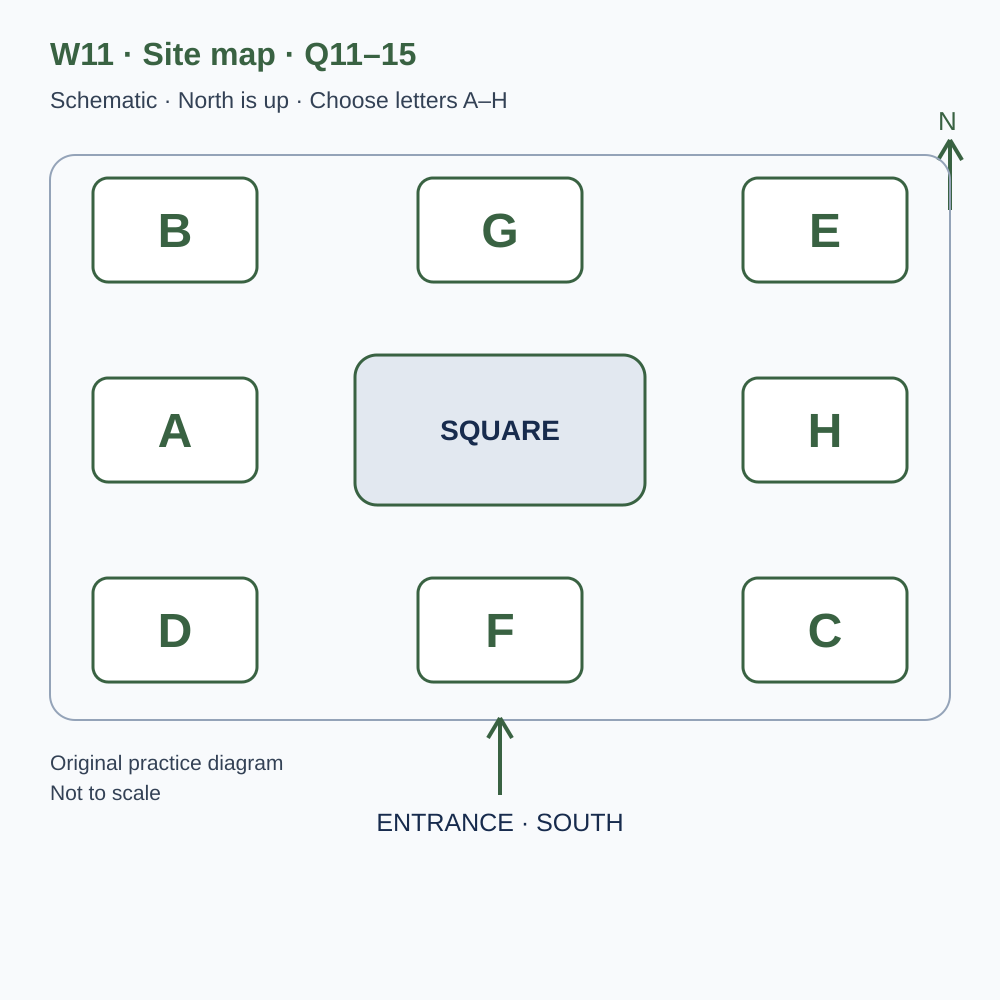
Q11. Briefing shelter
Answer: ____
Q12. Equipment desk
Answer: ____
Q13. Practice observation point
Answer: ____
Q14. Rest shelter
Answer: ____
Q15. Checkout desk
Answer: ____
Q16. How should a return to the junction be recorded?
- A. As proof that someone was lost
- B. As an observed action, with intention kept separate
- C. As evidence of a forgotten errand in every case
Answer: ____
Q17. When observers disagree, they should
- A. compare the case and inspect the definition or view
- B. choose whoever sounds most confident
- C. hide the uncertainty once a category has been selected
Answer: ____
Q18. What should volunteers tell interested passers-by?
- A. That a new crossing is guaranteed
- B. That every observer can set the project's scope
- C. The agreed purpose and limits from the briefing
Answer: ____
Q19. Why record temporary conditions in the notes field?
- A. To prove the reason for every route choice
- B. To provide relevant context while keeping causal claims qualified
- C. To collect unrelated personal details
Answer: ____
Q20. What belongs in the final review?
- A. Clear and difficult definitions, plus planned versus completed work
- B. Only dramatic problems
- C. An assumption that enjoyment means the full plan was completed
Answer: ____
Part 3 — Designing a wayfinding pilot
Q21–26: Match each proposal to the students' final positions at the end of that exchange. The tutor is not included. Write A, B, C or D. Letters may be reused.
- A Luca only
- B Nina only
- C Both students
- D Neither student
Q27–28 and Q29–30: Choose TWO different letters, A–E, for each pair. Write one letter in each numbered slot; either order is accepted. Each distinct correct choice earns one point, maximum two. Repeating a letter cannot earn two points. Submit no more than two letters.
Q21. At the END of this exchange, who supports: Following participants along the whole route?
Answer: ____
Q22. At the END of this exchange, who supports: Writing definitions with examples before the main observations?
Answer: ____
Q23. At the END of this exchange, who supports: Adding an exploratory weekend observation session?
Answer: ____
Q24. At the END of this exchange, who supports: Putting participant names on the analysis sheet?
Answer: ____
Q25. At the END of this exchange, who supports: Keeping a factual log of temporary route closures?
Answer: ____
Q26. At the END of this exchange, who supports: Adding a short post-walk interview to this pilot?
Answer: ____
Q27–28. Which TWO measures are definitely included in the junction task?
- A. Time from entering the decision area to choosing a path
- B. Fastest possible walking speed
- C. Home address
- D. Price of the participant's shoes
- E. Returns to the marked junction
Answers: Q27 ____ · Q28 ____
Q29–30. Which TWO differences complicate comparing the trial sessions?
- A. The observers synchronised clocks
- B. Traffic conditions differed
- C. There were two clearly assigned observers
- D. The groups differed in prior route familiarity
- E. One session was cancelled
Answers: Q29 ____ · Q30 ____
Part 4 — Interpreting changes in travel choices
Q31–35: Complete the flow chart below. Q36–40: Complete the notes. Write NO MORE THAN TWO WORDS AND/OR A NUMBER for each answer, using words from the recording. Numeric notation may replace spoken numbers. Words or units already printed do not belong in the blank. The numbered text below repeats the SVG prompts for readability.
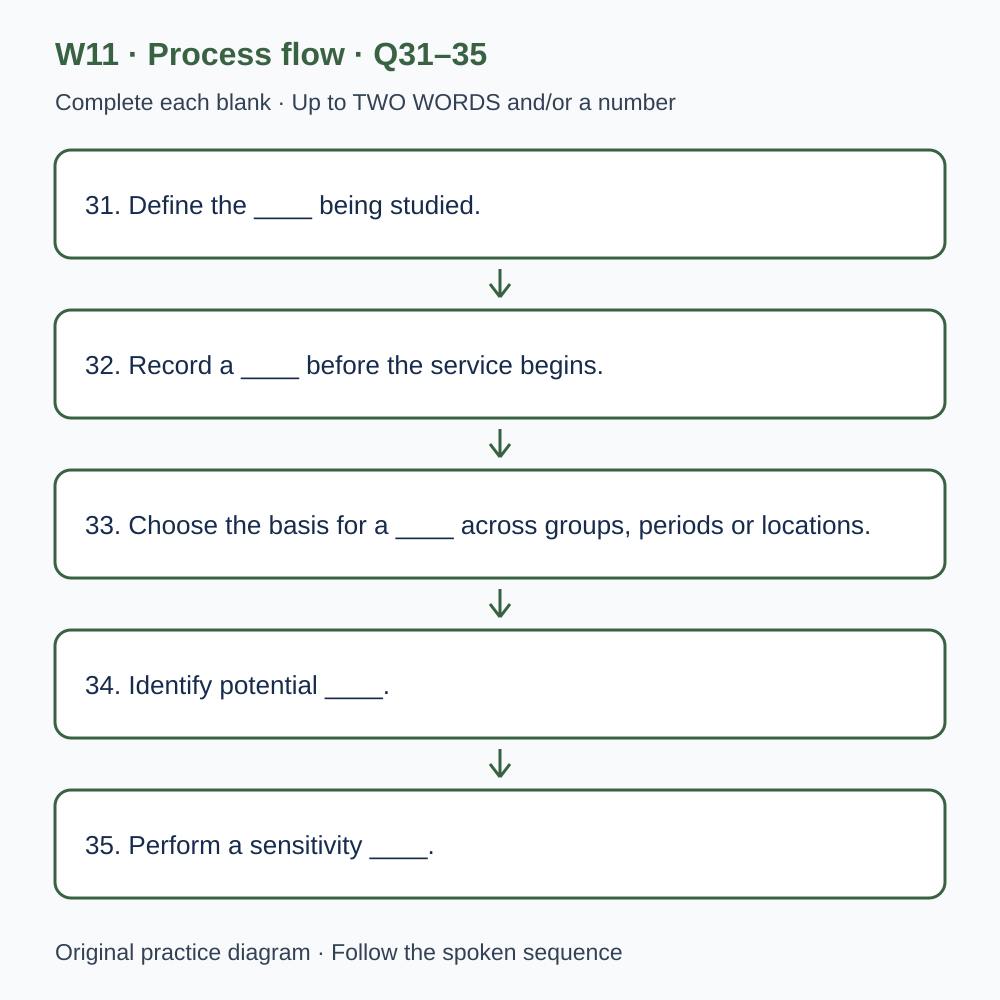
Q31. Define the ____ being studied.
Q32. Record a ____ before the service begins.
Q33. Choose the basis for a ____ across groups, periods or locations.
Q34. Identify potential ____.
Q35. Perform a sensitivity ____.
Q36. An observed relationship is an ____.
Q37. ____ could mean that plans to walk more lead people to seek information.
Q38. Record the ____ in which observations were collected.
Q39. Describe ____ when reporting estimated differences.
Q40. Revise the ____ for the next round of work.
本周训练安排（音频批准后执行）
- Preview questions without the script：8 分钟。
- Future continuous first listen, including planned part pauses：32 分钟。
- Submit first answers and confidence, without a second play：8 分钟。
- Check answers and classify errors：20 分钟。
- Four Q-located intensive segments, 15 minutes each：60 分钟。
- Diagram and opinion retelling：15 分钟。
- Next-day retry of missed items：15 分钟。
合计 158 分钟；最多另用 22 分钟缓冲，总计不超过 180 分钟。暂停、回放与查词均计入精听预算，不能另行无限追加。当前实际已完成听力分钟数为 0。精听区段和步骤见 intensive.md；答案和脚本另页。
参考答案与证据（完成首次听力后再展开）
L-W11 — Answers and evidence
> 独立答案页。先提交首次答案，再看本页。当前缺音频，文本验题不能充当实听验收。
每个单空 1 分；双选各 2 分、答案顺序不限、按不同正确选项计分。接受形式仅做大小写和空白规范化；不做模糊词形推断。
Q1 — walking
Accepted answers: walking / walking project
Use the final confirmed detail in this exchange; the printed unit or date context is already supplied.
Evidence locator: Q01 (script.md; timestamps unavailable).
> Organiser: Neighbourhood route project, hello. Volunteer: I'd like to join an introductory observation visit. I saw descriptions of a cycling project and a walking project, and I'm not sure whether they share a booking list. Organiser: They have separate introductions because the questions and observation methods differ. Which interests you? Volunteer: Walking. I want to understand how people choose a route through the neighbourhood, rather than how quickly they can complete it. Organiser: I'll record walking as your project interest. The introduction will explain what we observe and what we leave out. Volunteer: Good. I'm interested in careful observation, but I don't want to assume that simply watching people tells us why they made every choice.
Q2 — 23
Accepted answers: 23 / 23rd / twenty-third / the twenty-third / twenty third / the 23rd
Use the final confirmed detail in this exchange; the printed unit or date context is already supplied.
Evidence locator: Q02 (script.md; timestamps unavailable).
> Organiser: The next introduction is on the twenty-third of April. Volunteer: I had the twenty-first in my notes. Has the date changed? Organiser: Yes, the earlier date was provisional. The twenty-third is now confirmed with the site team. Volunteer: Then I'll replace the old date and make sure my colleague does too. Organiser: Please use the current confirmation when arranging your journey. We have corrected the booking page, but some people may still have the original email. Volunteer: I'll send my colleague the revised message rather than a brief note saying the date has changed. That should reduce the chance of somebody keeping one date in a calendar and another in a message.
Q3 — 7.50
Accepted answers: 7.50 / 7:50 / 07.50 / 07:50 / seven fifty
Use the final confirmed detail in this exchange; the printed unit or date context is already supplied.
Evidence locator: Q03 (script.md; timestamps unavailable).
> Volunteer: What time do we meet? Organiser: Seven fifty in the morning. We want to explain the task before the later morning activity makes the meeting area busy. Volunteer: Seven fifty, not eight fifteen? Organiser: Correct. Eight fifteen was the time suggested for an older version of the visit, when the introduction was shorter. Volunteer: I'll use seven fifty as the meeting time. Is arriving a little early helpful? Organiser: Yes, but there is no observation task for you to begin independently before the briefing. Wait at the meeting point so the whole group receives the same explanation before anybody starts writing records.
Q4 — 12
Accepted answers: 12 / twelve
Use the final confirmed detail in this exchange; the printed unit or date context is already supplied.
Evidence locator: Q04 (script.md; timestamps unavailable).
> Organiser: How many people are included in your booking? Volunteer: Our group has fifteen members, but only twelve have confirmed that they can attend. Please book twelve places. Organiser: That's within the group limit for this introduction. If others decide to join, ask us before adding them. Volunteer: I will. Membership of our local group doesn't automatically create an observation place. Organiser: Exactly. We need to plan the briefing space and the practice activity around the confirmed attendance. Volunteer: I'll keep a list of the twelve names for our own transport arrangements, but I won't tell the other members that they can simply arrive and expect the site team to accommodate them.
Q5 — 50
Accepted answers: 50 / fifty
Use the final confirmed detail in this exchange; the printed unit or date context is already supplied.
Evidence locator: Q05 (script.md; timestamps unavailable).
> Volunteer: How long should we allow for the orientation before the practice walk? Organiser: The orientation lasts fifty minutes. It includes the method explanation and a short exercise in distinguishing an observation from an inference. Volunteer: So fifty minutes is just the orientation, not the full visit? Organiser: That's right. The practice walk and review follow it, and the confirmation gives the overall finishing arrangement. Volunteer: I'll make that distinction when sharing the plan. One person needs to organise another appointment afterwards, and a single duration without a label could lead them to assume the entire activity ends when the initial explanation is actually only just finishing.
Q6 — clipboard
Accepted answers: clipboard / a clipboard / the clipboard
Use the final confirmed detail in this exchange; the printed unit or date context is already supplied.
Evidence locator: Q06 (script.md; timestamps unavailable).
> Volunteer: Do we need to bring any equipment? Organiser: Please bring a clipboard if you have one. We supply the paper observation sheets, but a firm surface makes it easier to write while standing at the designated point. Volunteer: I have a clipboard from another project. I'll bring the clipboard and ask the others whether they have one. Organiser: Good. You don't need to buy a specialist device for the introduction. If somebody doesn't have a clipboard, tell us in advance and we can explain the available alternatives. Volunteer: I'll avoid sending a long equipment list that makes the visit sound more complicated than it is.
Q7 — C
Accepted answers: C
The task records defined movements; conversations do not automatically become observations.
Evidence locator: Q07 (script.md; timestamps unavailable).
> Volunteer: Will we record the names of people using the route? Organiser: No. The introductory task concerns observable movements at a junction. Personal names are not part of the record. Volunteer: What if a passer-by starts talking to us and gives their name? Organiser: You can respond politely without adding it to the observation sheet. The briefing explains how to answer questions about the project. Volunteer: That's clear. I had wondered whether every conversation became part of the data. Organiser: It doesn't. Keeping the task defined helps us avoid collecting details merely because they happen to be available, and it makes the records easier to compare across observers.
Q8 — A
Accepted answers: A
A different view may change what the counts represent.
Evidence locator: Q08 (script.md; timestamps unavailable).
> Volunteer: If the planned observation point is unavailable, should we choose another nearby corner ourselves? Organiser: Please wait for the leader to confirm the alternative. A different position can change what you can see, and that affects the meaning of the counts. Volunteer: So a convenient view isn't necessarily equivalent to the original position. Organiser: Exactly. The leader will explain any change and how it should be recorded. Volunteer: I'll tell the group not to begin independently at whichever place looks quiet. Organiser: Thank you. We want everyone to understand the observation boundary before collecting information, not to discover later that several apparently comparable records describe quite different sections of the route.
Q9 — B
Accepted answers: B
Adaptation and postponement are different possibilities; the group needs one confirmed plan.
Evidence locator: Q09 (script.md; timestamps unavailable).
> Volunteer: What happens if heavy rain changes the plan? Organiser: We'll contact the named booking organiser directly. Some conditions may lead us to adapt the practical exercise, while others may require postponement. Please don't treat a general forecast as an automatic cancellation message. Volunteer: Then I'll pass on the direct update to our group and make sure everyone receives the same version. Organiser: Yes. The confirmation also explains what to do if your own group decides it cannot attend. Volunteer: That will help. Otherwise people might independently make different decisions and assume the whole group knows, leaving some travelling while others stay at home.
Q10 — C
Accepted answers: C
The project checks consistent use of definitions, not simply attendance or speed.
Evidence locator: Q10 (script.md; timestamps unavailable).
> Volunteer: Does completing the introduction qualify us to collect data for the main project? Organiser: It is the first step, but main-project observers also complete a supervised practice check. We need to know that they apply the definitions consistently and can explain uncertain cases. Volunteer: So attendance alone isn't the approval to begin official project records. Organiser: Correct. The practice check is intended to identify questions and training needs, not to reward whoever writes fastest. Volunteer: That's reassuring. I'd rather have a chance to discuss a difficult example than discover later that a large set of records can't be used because I misunderstood one of the categories.
Q11 — G
Accepted answers: G
Use the explicitly stated position relative to the square, not an earlier layout or adjacent area.
Evidence locator: Q11 (script.md; timestamps unavailable).
> Welcome to the route-study meeting site. The diagram places north at the top and the entrance on the southern edge. The central square is the fixed landmark, with eight lettered areas around it. The briefing shelter is directly north of the square. It is not in either northern corner. Please gather there for the introduction before collecting equipment. We begin with a shared explanation because small differences in the task can produce records that look similar but mean different things. If you arrive after the group has started, speak to the leader rather than copying a neighbour's sheet and assuming you have understood the method from its layout alone.
Q12 — D
Accepted answers: D
Use the explicitly stated position relative to the square, not an earlier layout or adjacent area.
Evidence locator: Q12 (script.md; timestamps unavailable).
> The equipment desk is in the south-west area, below and to the left of the square. An older plan placed it directly south, on the entrance axis, but that position obstructed arriving groups. The south-west location gives people room to collect their materials without blocking the main arrival area. Check your pack with the helper before leaving the desk. It should contain the version of the observation sheet named in today's briefing. A sheet left over from an earlier practice may use different categories. Keeping the version visible is a simple way to prevent a later analyst from combining records that were produced under different instructions.
Q13 — H
Accepted answers: H
Use the explicitly stated position relative to the square, not an earlier layout or adjacent area.
Evidence locator: Q13 (script.md; timestamps unavailable).
> The practice observation point is directly east of the square, level with its centre. It is not the area in the south-east corner. This position provides the view used in our prepared exercise, so please don't shift to another lettered area simply because it seems closer to a particular path. The task has been designed around what is visible from the eastern position. During the practice, describe anything you cannot see clearly instead of filling the gap with a likely story. A limited but accurate record is more useful than a complete-looking sheet built partly from assumptions that nobody can later distinguish from observations.
Q14 — E
Accepted answers: E
Use the explicitly stated position relative to the square, not an earlier layout or adjacent area.
Evidence locator: Q14 (script.md; timestamps unavailable).
> The rest shelter is in the north-east corner, directly north of the observation point. It lies east of the briefing shelter, which is in the northern central area. Those two shelters share the same northern row on the diagram. The rest shelter is available between activities, but it is not another observation point. If you need to leave the task briefly, follow the leader's arrangement and mark any gap in your record. Do not ask a friend to continue under your name without documenting the change. Different observers may apply a definition differently, and a transparent record helps the team understand where such a difference might have entered.
Q15 — A
Accepted answers: A
Use the explicitly stated position relative to the square, not an earlier layout or adjacent area.
Evidence locator: Q15 (script.md; timestamps unavailable).
> At the end of the practical activity, return your completed sheet to the checkout desk directly west of the square. It is level with the central landmark, not in the north-west corner. The helper will check that the sheet has the correct session code and that any missing periods are identified. This isn't a judgement about whether your counts are high or low. A low count can be a valid observation, while an unexplained blank leaves the team uncertain about whether anything was recorded. Please hand in unused sheets separately so they cannot be mistaken for completed records showing no activity. The western desk completes the five locations needed for today's visit.
Q16 — B
Accepted answers: B
The same visible movement can have several reasons; the observation does not reveal intention.
Evidence locator: Q16 (script.md; timestamps unavailable).
> The observation categories describe actions rather than personal intentions. You may see somebody return to a junction, but you cannot automatically know that they were lost. They may have met a friend, remembered an errand or changed their mind for another reason. Record the return under the agreed definition and keep any interpretation separate. This distinction is central to the exercise. If the team later wants to investigate reasons, it needs another suitable method rather than a more confident guess from the same visible action. Our records should make clear what an observer could actually see from the designated position at the time of the check.
Q17 — A
Accepted answers: A
Ambiguity or obstruction can explain disagreement and reveal a method problem.
Evidence locator: Q17 (script.md; timestamps unavailable).
> When two observers disagree, compare the details of the case before deciding that one person was careless. The definition may be ambiguous, the view may have been obstructed or the event may fall between categories. A useful practice discussion identifies which of these problems occurred and whether the instructions need revision. Simply telling everybody to agree can hide a weakness that will return during the main project. Please bring uncertain examples to the review even if you eventually chose a category. The uncertainty itself can reveal something important about how the method works under ordinary conditions, where events do not always resemble the clean examples in an introductory sheet.
Q18 — C
Accepted answers: C
The short explanation describes the project without unauthorised promises.
Evidence locator: Q18 (script.md; timestamps unavailable).
> If a passer-by asks what you are doing, use the short explanation provided at the briefing. It states the project's purpose and the limited information recorded. Don't promise that the study will immediately produce a new crossing or a changed street layout. Those decisions are outside this introductory exercise. You can explain how people can find public project information and direct more detailed questions to the coordinator. An honest account of the scope is more helpful than an enthusiastic promise nobody has authorised. It also prevents different observers from giving contradictory descriptions that leave residents unsure whether they are encountering one project or several unrelated activities.
Q19 — B
Accepted answers: B
Conditions may affect interpretation, but a note alone does not prove each person's reason.
Evidence locator: Q19 (script.md; timestamps unavailable).
> During the practice, record temporary conditions that affect the view or route, using the notes field. A delivery vehicle, a temporary closure or an organised group can change what happens during a short period. Such a note doesn't establish that the condition caused every observed change, but it gives the later review relevant context. Avoid using the notes field for unrelated personal details about passers-by. The useful question is what another analyst needs to know to interpret the observation period. If a condition prevents the task from being carried out as defined, tell the leader rather than treating the resulting gap as an ordinary zero count.
Q20 — A
Accepted answers: A
The review records practical differences and identifies useful changes and features to retain.
Evidence locator: Q20 (script.md; timestamps unavailable).
> The final review asks you to identify one definition that worked clearly and one case that remained difficult. We also compare the planned activity with the activity actually completed. If the observation period was shortened, that fact belongs in the record; it shouldn't disappear because the group still enjoyed the exercise. The review is a chance to improve the next stage, not a competition to find the most dramatic problem. A small wording change can be valuable when it prevents repeated confusion. Equally, a feature that worked consistently may be worth retaining rather than replacing simply to make the next version look more ambitious.
Q21 — A
Accepted answers: A
Final stance: Luca only. Ignore an initial proposal if later withdrawn; the tutor is not an answer option.
Evidence locator: Q21 (script.md; timestamps unavailable).
> Tutor: Luca, your draft proposes following participants along the whole route. Luca: Yes. It would show where a wrong turn eventually leads, not just what happens at the first junction. Nina: I prefer observing from fixed positions. Following people may affect how they behave, and we would struggle to record events consistently while moving. Tutor: Could greater distance address that concern? Nina: It might reduce one problem, but I still don't support following for this pilot. Luca: I still favour it, with the procedure explained to participants. Tutor: Then the proposal remains a disagreement. You need to distinguish the information you would gain from the practical and methodological costs of obtaining it.
Q22 — C
Accepted answers: C
Final stance: Both students. Ignore an initial proposal if later withdrawn; the tutor is not an answer option.
Evidence locator: Q22 (script.md; timestamps unavailable).
> Tutor: What about written definitions for the actions you record? Nina: I thought we could settle them informally because there are only two observers. Luca: I think we need them written down. We disagreed about a return to the junction even during our short rehearsal. Nina: That's true. I support a written definition now, with examples of uncertain cases. Tutor: How will you use it? Luca: Each of us will classify the same practice sequence before comparing our decisions. Nina: And if the wording fails, we'll revise it before the main observations. Tutor: Good. The document should guide actual decisions, not just make the project file look complete after the work is over.
Q23 — B
Accepted answers: B
Final stance: Nina only. Ignore an initial proposal if later withdrawn; the tutor is not an answer option.
Evidence locator: Q23 (script.md; timestamps unavailable).
> Tutor: Nina suggests adding a weekend observation session. Nina: I support that because the people and purposes of journeys may differ from a weekday morning. Luca: I would keep this pilot to weekdays. We have limited time, and adding one weekend session might create a comparison too small to interpret well. Tutor: Could it be exploratory rather than a formal comparison? Nina: That's what I intend. I'd label it clearly as an exploratory session. Luca: I understand, but I still prefer to use the available time to repeat the weekday procedure. Tutor: Then Nina supports the added weekend session, while Luca continues to favour a narrower pilot with more consistent repetition.
Q24 — D
Accepted answers: D
Final stance: Neither student. Ignore an initial proposal if later withdrawn; the tutor is not an answer option.
Evidence locator: Q24 (script.md; timestamps unavailable).
> Tutor: Your response sheet includes a name field. Luca: I originally wanted to connect the short interview with the observed route, but a participant code can do that. Nina: I don't support recording names on the analysis sheet. They don't help answer our question. Luca: Agreed. I'll remove the name field and use the code. Tutor: Is that a change in your position? Luca: Yes. I'm withdrawing the suggestion to put names on the response sheet. Nina: We should keep the coding procedure clear so we don't create a different matching problem. Tutor: Exactly. Removing an unnecessary field and maintaining a reliable link between the relevant records are compatible decisions.
Q25 — C
Accepted answers: C
Final stance: Both students. Ignore an initial proposal if later withdrawn; the tutor is not an answer option.
Evidence locator: Q25 (script.md; timestamps unavailable).
> Tutor: Should the record include temporary route closures? Nina: Yes. A closure could change the available choices during an observation period. Luca: I support recording it, including when it started and ended if we know. Tutor: Would you use that note as proof of the reason for every person's route? Luca: No. It provides context, but it doesn't reveal each person's intention. Nina: We can report the visible condition and keep the explanation qualified. Tutor: That distinction is useful. Luca: Then we both support a closure log, with clear limits on what we infer from it. Nina: It should be a short factual note, not a story assembled from guesses about individual travellers.
Q26 — B
Accepted answers: B
Final stance: Nina only. Ignore an initial proposal if later withdrawn; the tutor is not an answer option.
Evidence locator: Q26 (script.md; timestamps unavailable).
> Tutor: Finally, do you want a short interview after the walk? Nina: I do. We could ask which instruction the participant found hardest to interpret. Luca: I would leave interviews out of this first pilot and focus on getting the observation method reliable. Nina: A single focused question could help explain an action we otherwise misunderstand. Tutor: Luca, would limiting it to one question change your position? Luca: Not yet. Even a short interview requires a clear procedure and time that I want to spend on the observation review. Nina: I still support including it. Tutor: So the disagreement concerns this pilot's priorities, not whether participant explanations could ever be informative.
Q27–28 — A, E
Accept unordered set: A, E. One point per distinct correct choice, maximum 2.
Decision time and qualifying returns are selected; neither is automatically a measure of confusion.
Evidence locator: Q27, Q28 (script.md; timestamps unavailable).
> Tutor: Which two measures are definitely included in the junction task? Luca: First, the time between reaching the marked decision area and choosing an outgoing path. Nina: Agreed, provided we define the start and end points so both observers time the same action. Tutor: Are you measuring the participant's fastest possible walking speed? Nina: No. We aren't asking people to race along the route. Luca: Nor are we collecting their home addresses. Neither would serve this particular task. Tutor: Then the first measure concerns decision time at the junction. It should not be described later as the duration of the entire journey, because that would imply a much broader observation than you actually made.
> Tutor: And the second measure? Nina: Count returns to the marked junction after an outgoing path has been chosen. Luca: Yes. We'll use the written definition and record each qualifying return. Tutor: Does a return automatically mean the participant misunderstood a sign? Luca: No. We need to keep that interpretation separate. Nina: We rejected asking the price of the participant's shoes as an additional measure. It wouldn't clarify this observation. Tutor: So the agreed pair is decision time and returns to the junction. Those measures describe different aspects of the task. Neither turns the whole procedure into a direct measure of confusion without further evidence about what the participant was trying to do.
Q29–30 — B, D
Accept unordered set: B, D. One point per distinct correct choice, maximum 2.
Traffic and prior familiarity offer competing explanations; clock coordination and clear roles are useful, and the sessions occurred.
Evidence locator: Q29, Q30 (script.md; timestamps unavailable).
> Tutor: What two differences between your trial sessions could complicate a comparison? Nina: Traffic conditions differed substantially. One session coincided with a busy delivery period, while the other was quieter. Luca: That could affect the view and the choices available around the junction, so we need to state it. Tutor: Is using two observers automatically a weakness? Luca: No, not if their roles and method are clear. Nina: And synchronising the clocks is helpful, rather than a limitation. Tutor: Good. Focus on differences that offer competing explanations for the results. Listing every piece of equipment or every practical arrangement doesn't show the reader why a comparison might be difficult to interpret.
> Tutor: What is the second difference? Luca: The groups had unequal familiarity with the route. Several people in the first session had used it before, while most in the second session were new to the area. Nina: Agreed. We can't attribute a difference in decision time only to the revised instructions when previous experience also differs. Tutor: What would you do next? Nina: Record familiarity consistently and plan recruitment with that issue in mind. Luca: We shouldn't pretend that the two existing groups were comparable simply because they contained the same number of people. Tutor: Exactly. The two limitations are the traffic conditions and route familiarity. The observations were completed, so a cancelled session is not a third limitation.
Q31 — exposure
Accepted answers: exposure / access
Complete the named stage in the stated process order; retain any word already printed around the blank.
Evidence locator: Q31 (script.md; timestamps unavailable).
> This lecture considers a fictional study of changing travel choices in a neighbourhood. The first stage defines the exposure the researchers want to examine. Here, exposure means whether a person had access to a new route-information service during the study period. It is not the same as whether the person used the service, remembered its content or changed a journey afterwards. Those are separate questions. Defining exposure clearly prevents the team from moving between different meanings when presenting its results. The definition should also specify the period involved, since access introduced after a journey cannot explain a decision already made before the information became available.
Q32 — baseline
Accepted answers: baseline / starting pattern / reference / pattern
Complete the named stage in the stated process order; retain any word already printed around the blank.
Evidence locator: Q32 (script.md; timestamps unavailable).
> The second stage records a baseline before the service begins. The baseline describes the relevant starting pattern of journeys under the team's stated method. It gives researchers a reference for describing later change, but it is not a complete explanation of why that starting pattern existed. The team should note missing records and avoid filling them with a typical journey chosen from another person. It also needs to use a comparable recording period later. Comparing one ordinary weekday with an entire holiday week would introduce differences that have little to do with the service. The baseline is useful because its meaning is explicit, not because an early measurement is automatically a fair reference.
Q33 — comparison
Accepted answers: comparison
Complete the named stage in the stated process order; retain any word already printed around the blank.
Evidence locator: Q33 (script.md; timestamps unavailable).
> The third stage chooses a comparison. The team might compare periods, groups or locations, depending on the question and what is feasible. Each arrangement brings limitations that should be stated rather than hidden behind a familiar label. If people choose whether to use the information service, users and non-users may differ before the service affects anything. A comparison of their later journeys may therefore combine several influences. The researchers should explain how they selected the comparison and which differences they can examine. Calling one group a comparison group does not, by itself, make it equivalent to the group receiving the service or turn every observed difference into a causal effect.
Q34 — confounders
Accepted answers: confounders / factors / other factors / competing influences / influences
Complete the named stage in the stated process order; retain any word already printed around the blank.
Evidence locator: Q34 (script.md; timestamps unavailable).
> The fourth stage identifies potential confounders. Confounders are other factors that could affect both the exposure being studied and the outcome of interest, making their relationship difficult to interpret. In this example, a person's work schedule could influence access to the information service and the journeys they can make. The team considers such factors before selecting which details to record. It cannot measure every aspect of a person's life, and collecting more fields without a reason may add burden without improving the explanation. The useful task is to identify plausible competing influences, describe the information available about them and acknowledge important influences the study cannot adequately examine.
Q35 — check
Accepted answers: check / analysis
Complete the named stage in the stated process order; retain any word already printed around the blank.
Evidence locator: Q35 (script.md; timestamps unavailable).
> The fifth stage performs a sensitivity check. A sensitivity check asks whether the main interpretation changes under other reasonable choices in the analysis. For example, researchers might examine what happens when uncertain journey records are handled in another defensible way. They should not try many choices and report only the version that makes the service look effective. The point is to understand how dependent the result is on decisions that remain open to question. If a modest change to an assumption reverses the conclusion, that is information readers need. The check helps describe the strength and limits of the reasoning rather than producing a guarantee that every hidden influence has been removed.
Q36 — association
Accepted answers: association
The corresponding evidence block supplies this distinction or qualification; the question retains the surrounding grammar.
Evidence locator: Q36 (script.md; timestamps unavailable).
> An association is an observed relationship, and it should not automatically be described as an effect. Suppose people who consulted the service also reported more walking journeys. That pattern may be consistent with an influence from the service, but it can also reflect other differences between those people and the rest of the sample. The team should state the observation clearly and then explain what additional evidence would be needed for the stronger claim. Avoiding a premature causal conclusion does not make the association uninteresting. It can guide a better question or a later study, provided readers are not encouraged to mistake a promising pattern for a settled explanation.
Q37 — reverse causation
Accepted answers: reverse causation
The corresponding evidence block supplies this distinction or qualification; the question retains the surrounding grammar.
Evidence locator: Q37 (script.md; timestamps unavailable).
> The direction of a relationship can also be uncertain. Reverse causation is one possibility: people already planning to walk more might be especially likely to seek route information. In that case, an intention influencing service use could help produce a pattern that initially looks like service use influencing the intention. Both processes might operate, and a simple final survey may not distinguish them. The team therefore considers the timing of decisions and observations. Asking when an intention formed may provide context, although memories of timing have their own limits. The important step is to examine the direction of explanation rather than assume it from the order in which variables appear in a table.
Q38 — season
Accepted answers: season / period / short period
The corresponding evidence block supplies this distinction or qualification; the question retains the surrounding grammar.
Evidence locator: Q38 (script.md; timestamps unavailable).
> Season is another source of context for a travel comparison. A journey pattern recorded in one season may differ from a pattern recorded in another for reasons unrelated to the information service. The team should state when observations were collected and consider how the comparison period relates to the question. This doesn't mean that every seasonal difference can be removed by adding one label to a dataset. It means the timing belongs in the interpretation. If the study covers only one short period, the report should not quietly extend its conclusion to all conditions throughout the year. A limited observation can still be useful when its temporal boundary remains visible.
Q39 — uncertainty
Accepted answers: uncertainty / the uncertainty
The corresponding evidence block supplies this distinction or qualification; the question retains the surrounding grammar.
Evidence locator: Q39 (script.md; timestamps unavailable).
> Results should include a description of uncertainty. An estimated difference based on a small or incomplete collection of records may be less stable than a single precise number suggests. The report can use an appropriate interval or a clear account of alternative interpretations, depending on the method and the evidence available. It should also explain what the uncertainty statement represents. A range caused by alternative readings of missing data is not necessarily the same thing as an interval derived from a statistical model. The purpose is to help readers judge the result, not to attach a technical-looking decoration that encourages confidence without explaining the limits of the calculation.
Q40 — protocol
Accepted answers: protocol / procedure / written procedure / method / plan
The corresponding evidence block supplies this distinction or qualification; the question retains the surrounding grammar.
Evidence locator: Q40 (script.md; timestamps unavailable).
> At the final stage review, the team revises the protocol for its next round of work. The protocol is the written procedure covering recruitment, observation and analysis decisions. Revisions should respond to identified problems, such as an unclear exposure definition or a comparison period that introduced avoidable differences. The team records both the change and the reason, while preserving enough information to understand the earlier study. It should not rewrite the old plan as though the improved method had been used from the beginning. A transparent revision creates a useful connection between stages: what was learned, what will change and which uncertainty the next study is designed to investigate.
完整脚本（提前阅读会失去陌生题首答机会）
L-W11 — Routes, choices and cautious explanations: transcript
> 原创虚构练习，非真题；音频缺失。仅供完成首次作答后的核对或文字审阅。Q 标记与角色名不属于朗读正文。
Part 1 — Registering for an observation visit
Q1 evidence block
Organiser: Neighbourhood route project, hello.
Volunteer: I'd like to join an introductory observation visit. I saw descriptions of a cycling project and a walking project, and I'm not sure whether they share a booking list.
Organiser: They have separate introductions because the questions and observation methods differ. Which interests you?
Volunteer: Walking. I want to understand how people choose a route through the neighbourhood, rather than how quickly they can complete it.
Organiser: I'll record walking as your project interest. The introduction will explain what we observe and what we leave out.
Volunteer: Good. I'm interested in careful observation, but I don't want to assume that simply watching people tells us why they made every choice.
Q2 evidence block
Organiser: The next introduction is on the twenty-third of April.
Volunteer: I had the twenty-first in my notes. Has the date changed?
Organiser: Yes, the earlier date was provisional. The twenty-third is now confirmed with the site team.
Volunteer: Then I'll replace the old date and make sure my colleague does too.
Organiser: Please use the current confirmation when arranging your journey. We have corrected the booking page, but some people may still have the original email.
Volunteer: I'll send my colleague the revised message rather than a brief note saying the date has changed. That should reduce the chance of somebody keeping one date in a calendar and another in a message.
Q3 evidence block
Volunteer: What time do we meet?
Organiser: Seven fifty in the morning. We want to explain the task before the later morning activity makes the meeting area busy.
Volunteer: Seven fifty, not eight fifteen?
Organiser: Correct. Eight fifteen was the time suggested for an older version of the visit, when the introduction was shorter.
Volunteer: I'll use seven fifty as the meeting time. Is arriving a little early helpful?
Organiser: Yes, but there is no observation task for you to begin independently before the briefing. Wait at the meeting point so the whole group receives the same explanation before anybody starts writing records.
Q4 evidence block
Organiser: How many people are included in your booking?
Volunteer: Our group has fifteen members, but only twelve have confirmed that they can attend. Please book twelve places.
Organiser: That's within the group limit for this introduction. If others decide to join, ask us before adding them.
Volunteer: I will. Membership of our local group doesn't automatically create an observation place.
Organiser: Exactly. We need to plan the briefing space and the practice activity around the confirmed attendance.
Volunteer: I'll keep a list of the twelve names for our own transport arrangements, but I won't tell the other members that they can simply arrive and expect the site team to accommodate them.
Q5 evidence block
Volunteer: How long should we allow for the orientation before the practice walk?
Organiser: The orientation lasts fifty minutes. It includes the method explanation and a short exercise in distinguishing an observation from an inference.
Volunteer: So fifty minutes is just the orientation, not the full visit?
Organiser: That's right. The practice walk and review follow it, and the confirmation gives the overall finishing arrangement.
Volunteer: I'll make that distinction when sharing the plan. One person needs to organise another appointment afterwards, and a single duration without a label could lead them to assume the entire activity ends when the initial explanation is actually only just finishing.
Q6 evidence block
Volunteer: Do we need to bring any equipment?
Organiser: Please bring a clipboard if you have one. We supply the paper observation sheets, but a firm surface makes it easier to write while standing at the designated point.
Volunteer: I have a clipboard from another project. I'll bring the clipboard and ask the others whether they have one.
Organiser: Good. You don't need to buy a specialist device for the introduction. If somebody doesn't have a clipboard, tell us in advance and we can explain the available alternatives.
Volunteer: I'll avoid sending a long equipment list that makes the visit sound more complicated than it is.
Q7 evidence block
Volunteer: Will we record the names of people using the route?
Organiser: No. The introductory task concerns observable movements at a junction. Personal names are not part of the record.
Volunteer: What if a passer-by starts talking to us and gives their name?
Organiser: You can respond politely without adding it to the observation sheet. The briefing explains how to answer questions about the project.
Volunteer: That's clear. I had wondered whether every conversation became part of the data.
Organiser: It doesn't. Keeping the task defined helps us avoid collecting details merely because they happen to be available, and it makes the records easier to compare across observers.
Q8 evidence block
Volunteer: If the planned observation point is unavailable, should we choose another nearby corner ourselves?
Organiser: Please wait for the leader to confirm the alternative. A different position can change what you can see, and that affects the meaning of the counts.
Volunteer: So a convenient view isn't necessarily equivalent to the original position.
Organiser: Exactly. The leader will explain any change and how it should be recorded.
Volunteer: I'll tell the group not to begin independently at whichever place looks quiet.
Organiser: Thank you. We want everyone to understand the observation boundary before collecting information, not to discover later that several apparently comparable records describe quite different sections of the route.
Q9 evidence block
Volunteer: What happens if heavy rain changes the plan?
Organiser: We'll contact the named booking organiser directly. Some conditions may lead us to adapt the practical exercise, while others may require postponement. Please don't treat a general forecast as an automatic cancellation message.
Volunteer: Then I'll pass on the direct update to our group and make sure everyone receives the same version.
Organiser: Yes. The confirmation also explains what to do if your own group decides it cannot attend.
Volunteer: That will help. Otherwise people might independently make different decisions and assume the whole group knows, leaving some travelling while others stay at home.
Q10 evidence block
Volunteer: Does completing the introduction qualify us to collect data for the main project?
Organiser: It is the first step, but main-project observers also complete a supervised practice check. We need to know that they apply the definitions consistently and can explain uncertain cases.
Volunteer: So attendance alone isn't the approval to begin official project records.
Organiser: Correct. The practice check is intended to identify questions and training needs, not to reward whoever writes fastest.
Volunteer: That's reassuring. I'd rather have a chance to discuss a difficult example than discover later that a large set of records can't be used because I misunderstood one of the categories.
Part 2 — Route-study meeting site
Q11 evidence block
Route-study leader: Welcome to the route-study meeting site. The diagram places north at the top and the entrance on the southern edge. The central square is the fixed landmark, with eight lettered areas around it. The briefing shelter is directly north of the square. It is not in either northern corner. Please gather there for the introduction before collecting equipment. We begin with a shared explanation because small differences in the task can produce records that look similar but mean different things. If you arrive after the group has started, speak to the leader rather than copying a neighbour's sheet and assuming you have understood the method from its layout alone.
Q12 evidence block
Route-study leader: The equipment desk is in the south-west area, below and to the left of the square. An older plan placed it directly south, on the entrance axis, but that position obstructed arriving groups. The south-west location gives people room to collect their materials without blocking the main arrival area. Check your pack with the helper before leaving the desk. It should contain the version of the observation sheet named in today's briefing. A sheet left over from an earlier practice may use different categories. Keeping the version visible is a simple way to prevent a later analyst from combining records that were produced under different instructions.
Q13 evidence block
Route-study leader: The practice observation point is directly east of the square, level with its centre. It is not the area in the south-east corner. This position provides the view used in our prepared exercise, so please don't shift to another lettered area simply because it seems closer to a particular path. The task has been designed around what is visible from the eastern position. During the practice, describe anything you cannot see clearly instead of filling the gap with a likely story. A limited but accurate record is more useful than a complete-looking sheet built partly from assumptions that nobody can later distinguish from observations.
Q14 evidence block
Route-study leader: The rest shelter is in the north-east corner, directly north of the observation point. It lies east of the briefing shelter, which is in the northern central area. Those two shelters share the same northern row on the diagram. The rest shelter is available between activities, but it is not another observation point. If you need to leave the task briefly, follow the leader's arrangement and mark any gap in your record. Do not ask a friend to continue under your name without documenting the change. Different observers may apply a definition differently, and a transparent record helps the team understand where such a difference might have entered.
Q15 evidence block
Route-study leader: At the end of the practical activity, return your completed sheet to the checkout desk directly west of the square. It is level with the central landmark, not in the north-west corner. The helper will check that the sheet has the correct session code and that any missing periods are identified. This isn't a judgement about whether your counts are high or low. A low count can be a valid observation, while an unexplained blank leaves the team uncertain about whether anything was recorded. Please hand in unused sheets separately so they cannot be mistaken for completed records showing no activity. The western desk completes the five locations needed for today's visit.
Q16 evidence block
Route-study leader: The observation categories describe actions rather than personal intentions. You may see somebody return to a junction, but you cannot automatically know that they were lost. They may have met a friend, remembered an errand or changed their mind for another reason. Record the return under the agreed definition and keep any interpretation separate. This distinction is central to the exercise. If the team later wants to investigate reasons, it needs another suitable method rather than a more confident guess from the same visible action. Our records should make clear what an observer could actually see from the designated position at the time of the check.
Q17 evidence block
Route-study leader: When two observers disagree, compare the details of the case before deciding that one person was careless. The definition may be ambiguous, the view may have been obstructed or the event may fall between categories. A useful practice discussion identifies which of these problems occurred and whether the instructions need revision. Simply telling everybody to agree can hide a weakness that will return during the main project. Please bring uncertain examples to the review even if you eventually chose a category. The uncertainty itself can reveal something important about how the method works under ordinary conditions, where events do not always resemble the clean examples in an introductory sheet.
Q18 evidence block
Route-study leader: If a passer-by asks what you are doing, use the short explanation provided at the briefing. It states the project's purpose and the limited information recorded. Don't promise that the study will immediately produce a new crossing or a changed street layout. Those decisions are outside this introductory exercise. You can explain how people can find public project information and direct more detailed questions to the coordinator. An honest account of the scope is more helpful than an enthusiastic promise nobody has authorised. It also prevents different observers from giving contradictory descriptions that leave residents unsure whether they are encountering one project or several unrelated activities.
Q19 evidence block
Route-study leader: During the practice, record temporary conditions that affect the view or route, using the notes field. A delivery vehicle, a temporary closure or an organised group can change what happens during a short period. Such a note doesn't establish that the condition caused every observed change, but it gives the later review relevant context. Avoid using the notes field for unrelated personal details about passers-by. The useful question is what another analyst needs to know to interpret the observation period. If a condition prevents the task from being carried out as defined, tell the leader rather than treating the resulting gap as an ordinary zero count.
Q20 evidence block
Route-study leader: The final review asks you to identify one definition that worked clearly and one case that remained difficult. We also compare the planned activity with the activity actually completed. If the observation period was shortened, that fact belongs in the record; it shouldn't disappear because the group still enjoyed the exercise. The review is a chance to improve the next stage, not a competition to find the most dramatic problem. A small wording change can be valuable when it prevents repeated confusion. Equally, a feature that worked consistently may be worth retaining rather than replacing simply to make the next version look more ambitious.
Part 3 — Designing a wayfinding pilot
Q21 evidence block
Tutor: Luca, your draft proposes following participants along the whole route.
Luca: Yes. It would show where a wrong turn eventually leads, not just what happens at the first junction.
Nina: I prefer observing from fixed positions. Following people may affect how they behave, and we would struggle to record events consistently while moving.
Tutor: Could greater distance address that concern?
Nina: It might reduce one problem, but I still don't support following for this pilot.
Luca: I still favour it, with the procedure explained to participants.
Tutor: Then the proposal remains a disagreement. You need to distinguish the information you would gain from the practical and methodological costs of obtaining it.
Q22 evidence block
Tutor: What about written definitions for the actions you record?
Nina: I thought we could settle them informally because there are only two observers.
Luca: I think we need them written down. We disagreed about a return to the junction even during our short rehearsal.
Nina: That's true. I support a written definition now, with examples of uncertain cases.
Tutor: How will you use it?
Luca: Each of us will classify the same practice sequence before comparing our decisions.
Nina: And if the wording fails, we'll revise it before the main observations.
Tutor: Good. The document should guide actual decisions, not just make the project file look complete after the work is over.
Q23 evidence block
Tutor: Nina suggests adding a weekend observation session.
Nina: I support that because the people and purposes of journeys may differ from a weekday morning.
Luca: I would keep this pilot to weekdays. We have limited time, and adding one weekend session might create a comparison too small to interpret well.
Tutor: Could it be exploratory rather than a formal comparison?
Nina: That's what I intend. I'd label it clearly as an exploratory session.
Luca: I understand, but I still prefer to use the available time to repeat the weekday procedure.
Tutor: Then Nina supports the added weekend session, while Luca continues to favour a narrower pilot with more consistent repetition.
Q24 evidence block
Tutor: Your response sheet includes a name field.
Luca: I originally wanted to connect the short interview with the observed route, but a participant code can do that.
Nina: I don't support recording names on the analysis sheet. They don't help answer our question.
Luca: Agreed. I'll remove the name field and use the code.
Tutor: Is that a change in your position?
Luca: Yes. I'm withdrawing the suggestion to put names on the response sheet.
Nina: We should keep the coding procedure clear so we don't create a different matching problem.
Tutor: Exactly. Removing an unnecessary field and maintaining a reliable link between the relevant records are compatible decisions.
Q25 evidence block
Tutor: Should the record include temporary route closures?
Nina: Yes. A closure could change the available choices during an observation period.
Luca: I support recording it, including when it started and ended if we know.
Tutor: Would you use that note as proof of the reason for every person's route?
Luca: No. It provides context, but it doesn't reveal each person's intention.
Nina: We can report the visible condition and keep the explanation qualified.
Tutor: That distinction is useful.
Luca: Then we both support a closure log, with clear limits on what we infer from it.
Nina: It should be a short factual note, not a story assembled from guesses about individual travellers.
Q26 evidence block
Tutor: Finally, do you want a short interview after the walk?
Nina: I do. We could ask which instruction the participant found hardest to interpret.
Luca: I would leave interviews out of this first pilot and focus on getting the observation method reliable.
Nina: A single focused question could help explain an action we otherwise misunderstand.
Tutor: Luca, would limiting it to one question change your position?
Luca: Not yet. Even a short interview requires a clear procedure and time that I want to spend on the observation review.
Nina: I still support including it.
Tutor: So the disagreement concerns this pilot's priorities, not whether participant explanations could ever be informative.
Q27 evidence block
Tutor: Which two measures are definitely included in the junction task?
Luca: First, the time between reaching the marked decision area and choosing an outgoing path.
Nina: Agreed, provided we define the start and end points so both observers time the same action.
Tutor: Are you measuring the participant's fastest possible walking speed?
Nina: No. We aren't asking people to race along the route.
Luca: Nor are we collecting their home addresses. Neither would serve this particular task.
Tutor: Then the first measure concerns decision time at the junction. It should not be described later as the duration of the entire journey, because that would imply a much broader observation than you actually made.
Q28 evidence block
Tutor: And the second measure?
Nina: Count returns to the marked junction after an outgoing path has been chosen.
Luca: Yes. We'll use the written definition and record each qualifying return.
Tutor: Does a return automatically mean the participant misunderstood a sign?
Luca: No. We need to keep that interpretation separate.
Nina: We rejected asking the price of the participant's shoes as an additional measure. It wouldn't clarify this observation.
Tutor: So the agreed pair is decision time and returns to the junction. Those measures describe different aspects of the task. Neither turns the whole procedure into a direct measure of confusion without further evidence about what the participant was trying to do.
Q29 evidence block
Tutor: What two differences between your trial sessions could complicate a comparison?
Nina: Traffic conditions differed substantially. One session coincided with a busy delivery period, while the other was quieter.
Luca: That could affect the view and the choices available around the junction, so we need to state it.
Tutor: Is using two observers automatically a weakness?
Luca: No, not if their roles and method are clear.
Nina: And synchronising the clocks is helpful, rather than a limitation.
Tutor: Good. Focus on differences that offer competing explanations for the results. Listing every piece of equipment or every practical arrangement doesn't show the reader why a comparison might be difficult to interpret.
Q30 evidence block
Tutor: What is the second difference?
Luca: The groups had unequal familiarity with the route. Several people in the first session had used it before, while most in the second session were new to the area.
Nina: Agreed. We can't attribute a difference in decision time only to the revised instructions when previous experience also differs.
Tutor: What would you do next?
Nina: Record familiarity consistently and plan recruitment with that issue in mind.
Luca: We shouldn't pretend that the two existing groups were comparable simply because they contained the same number of people.
Tutor: Exactly. The two limitations are the traffic conditions and route familiarity. The observations were completed, so a cancelled session is not a third limitation.
Part 4 — Interpreting changes in travel choices
Q31 evidence block
Lecturer: This lecture considers a fictional study of changing travel choices in a neighbourhood. The first stage defines the exposure the researchers want to examine. Here, exposure means whether a person had access to a new route-information service during the study period. It is not the same as whether the person used the service, remembered its content or changed a journey afterwards. Those are separate questions. Defining exposure clearly prevents the team from moving between different meanings when presenting its results. The definition should also specify the period involved, since access introduced after a journey cannot explain a decision already made before the information became available.
Q32 evidence block
Lecturer: The second stage records a baseline before the service begins. The baseline describes the relevant starting pattern of journeys under the team's stated method. It gives researchers a reference for describing later change, but it is not a complete explanation of why that starting pattern existed. The team should note missing records and avoid filling them with a typical journey chosen from another person. It also needs to use a comparable recording period later. Comparing one ordinary weekday with an entire holiday week would introduce differences that have little to do with the service. The baseline is useful because its meaning is explicit, not because an early measurement is automatically a fair reference.
Q33 evidence block
Lecturer: The third stage chooses a comparison. The team might compare periods, groups or locations, depending on the question and what is feasible. Each arrangement brings limitations that should be stated rather than hidden behind a familiar label. If people choose whether to use the information service, users and non-users may differ before the service affects anything. A comparison of their later journeys may therefore combine several influences. The researchers should explain how they selected the comparison and which differences they can examine. Calling one group a comparison group does not, by itself, make it equivalent to the group receiving the service or turn every observed difference into a causal effect.
Q34 evidence block
Lecturer: The fourth stage identifies potential confounders. Confounders are other factors that could affect both the exposure being studied and the outcome of interest, making their relationship difficult to interpret. In this example, a person's work schedule could influence access to the information service and the journeys they can make. The team considers such factors before selecting which details to record. It cannot measure every aspect of a person's life, and collecting more fields without a reason may add burden without improving the explanation. The useful task is to identify plausible competing influences, describe the information available about them and acknowledge important influences the study cannot adequately examine.
Q35 evidence block
Lecturer: The fifth stage performs a sensitivity check. A sensitivity check asks whether the main interpretation changes under other reasonable choices in the analysis. For example, researchers might examine what happens when uncertain journey records are handled in another defensible way. They should not try many choices and report only the version that makes the service look effective. The point is to understand how dependent the result is on decisions that remain open to question. If a modest change to an assumption reverses the conclusion, that is information readers need. The check helps describe the strength and limits of the reasoning rather than producing a guarantee that every hidden influence has been removed.
Q36 evidence block
Lecturer: An association is an observed relationship, and it should not automatically be described as an effect. Suppose people who consulted the service also reported more walking journeys. That pattern may be consistent with an influence from the service, but it can also reflect other differences between those people and the rest of the sample. The team should state the observation clearly and then explain what additional evidence would be needed for the stronger claim. Avoiding a premature causal conclusion does not make the association uninteresting. It can guide a better question or a later study, provided readers are not encouraged to mistake a promising pattern for a settled explanation.
Q37 evidence block
Lecturer: The direction of a relationship can also be uncertain. Reverse causation is one possibility: people already planning to walk more might be especially likely to seek route information. In that case, an intention influencing service use could help produce a pattern that initially looks like service use influencing the intention. Both processes might operate, and a simple final survey may not distinguish them. The team therefore considers the timing of decisions and observations. Asking when an intention formed may provide context, although memories of timing have their own limits. The important step is to examine the direction of explanation rather than assume it from the order in which variables appear in a table.
Q38 evidence block
Lecturer: Season is another source of context for a travel comparison. A journey pattern recorded in one season may differ from a pattern recorded in another for reasons unrelated to the information service. The team should state when observations were collected and consider how the comparison period relates to the question. This doesn't mean that every seasonal difference can be removed by adding one label to a dataset. It means the timing belongs in the interpretation. If the study covers only one short period, the report should not quietly extend its conclusion to all conditions throughout the year. A limited observation can still be useful when its temporal boundary remains visible.
Q39 evidence block
Lecturer: Results should include a description of uncertainty. An estimated difference based on a small or incomplete collection of records may be less stable than a single precise number suggests. The report can use an appropriate interval or a clear account of alternative interpretations, depending on the method and the evidence available. It should also explain what the uncertainty statement represents. A range caused by alternative readings of missing data is not necessarily the same thing as an interval derived from a statistical model. The purpose is to help readers judge the result, not to attach a technical-looking decoration that encourages confidence without explaining the limits of the calculation.
Q40 evidence block
Lecturer: At the final stage review, the team revises the protocol for its next round of work. The protocol is the written procedure covering recruitment, observation and analysis decisions. Revisions should respond to identified problems, such as an unclear exposure definition or a comparison period that introduced avoidable differences. The team records both the change and the reason, while preserving enough information to understand the earlier study. It should not rewrite the old plan as though the improved method had been used from the beginning. A transparent revision creates a useful connection between stages: what was learned, what will change and which uncertainty the next study is designed to investigate.
精听与复盘步骤（须有已验收配套音频）
L-W11 — Q-based intensive listening
> 音频尚未生成；以下是未来执行安排，不是已完成记录。不要用文本阅读替代首次听力。无实际时间戳。
周预算：预览 8 + 首听 32 + 交首次答案 8 + 查错 20 + 精听 60 + 复述 15 + 次日重做 15 = 158 分钟。含暂停/回放；加用缓冲最多 22 分钟，总计≤180。
四段各 15 分钟：先定位并不看稿听 2 分钟；分句回放、写关键词 4 分钟；对照稿找误听与改口 3 分钟；遮稿跟读和复述 3 分钟；重答并记录错误原因 3 分钟。不得把同一段回放另算在周预算之外。
Q2–3 — 15 minutes
定位 script.md 的 Q2 evidence block 起至 Q3 evidence block 结束（约 204 词）；音频起止为 null。
目标：Follow corrected date and meeting time; separate arriving early from starting the task.
留痕：首次答案 → 听到的原词 → 干扰来源 → 修正答案 → 一句英文复述。
Q12–14 — 15 minutes
定位 script.md 的 Q12 evidence block 起至 Q14 evidence block 结束（约 318 词）；音频起止为 null。
目标：Place the moved equipment desk, eastern observation point and northern row of shelters.
留痕：首次答案 → 听到的原词 → 干扰来源 → 修正答案 → 一句英文复述。
Q23–24 — 15 minutes
定位 script.md 的 Q23 evidence block 起至 Q24 evidence block 结束（约 206 词）；音频起止为 null。
目标：Contrast the weekend disagreement with the name requirement being withdrawn.
留痕：首次答案 → 听到的原词 → 干扰来源 → 修正答案 → 一句英文复述。
Q37–40 — 15 minutes
定位 script.md 的 Q37 evidence block 起至 Q40 evidence block 结束（约 440 词）；音频起止为 null。
目标：Explain reverse causation, seasonal context and uncertainty, then propose a reasoned protocol revision.
留痕：首次答案 → 听到的原词 → 干扰来源 → 修正答案 → 一句英文复述。
15 分钟复述与 15 分钟次日重做
复述：5 分钟遮住答案口述地图五个位置；5 分钟按人说明三人讨论的最终观点；5 分钟复述流程及一个限制。次日：8 分钟仅重做错题对应 Q 段；4 分钟核对；3 分钟更新错误记录。若仍超时，留下未完成项，不把额外时间隐去。
许可说明
原创文字和图示：RayXBuilds and contributors，CC BY 4.0。本页不包含配套音频；现有基础VOA媒体不能代替本套题的录音。
回到顶部
U47 第12周听力题面与复盘（音频待补）
本页提供已核验的原创题目、参考答案和脚本。配套完整音频尚未验收，当前只能预览题面；不能进行有效的首次听力测试，也不能把读稿作答计作听力成绩或已完成一套听力。
请先保留首次作答机会：批准音频就绪前，不要展开下方答案和脚本。若已读稿，请标记为熟悉材料，之后的练习不能充当陌生题诊断。页面阅读标记只代表看过文字，不代表完成听力。
本材料非雅思真题、非标准化模考，不换算正式分数。计划分钟数不是实测音频时长；学习记录、正式测评和真人反馈须另行完成。
学生题面
L-W12 — Exhibitions, evidence and the next decision
> 原创 IELTS-style 技能练习，非真题、非标准化模考，不可换算正式分数。当前只有文字和题目，音频未生成，不能计作已完成听力套题。
共四部分、40 个计分空，每空 1 分。正式首次作答须等待批准音频，先不要打开 script.md 或 answers.md。朗读前先看题；只听一遍后提交首次答案及信心等级，再做精听。当前只能预览题面，不能把读稿作答记作听力成绩。
Part 1 — Booking a community exhibition space
Q1–6: Complete the notes. Write NO MORE THAN TWO WORDS AND/OR A NUMBER for each answer, using words from the recording. Numeric notation may replace spoken numbers. Do not repeat a printed unit. Q7–10: Choose ONE letter, A, B or C.
Q1. Main display subject: ____
Q2. Confirmed day of November: ____
Q3. Allocated setup start (p.m.): ____
Q4. Number of tables: ____
Q5. Total confirmed fee: £____
Q6. Prepare ____ for loose activity pieces.
Q7. What presentation style is appropriate?
- A. A mandatory professional stage performance
- B. A clear short introduction for small-group conversations
- C. A long speech that every volunteer must memorise
Answer: ____
Q8. How should future-event contact details be collected?
- A. Through a separate optional sign-up with a clear purpose
- B. As a compulsory condition of doing the activity
- C. On every activity response sheet without explanation
Answer: ____
Q9. If visitors request a personal responsibility ranking, the group should
- A. claim the illustration proves every household difference
- B. avoid explaining any assumptions
- C. explain the evidence limits and what else would be needed
Answer: ____
Q10. How is the final location established?
- A. By any informal exchange between exhibitors
- B. By the numbered confirmation plan and direct revisions
- C. By the first layout on an early notice
Answer: ____
Part 2 — Exhibition learning area
Q11–15: Label the map. Write ONE letter, A–H, for each destination. Three letters are unused. Q16–20: Choose ONE letter, A, B or C.
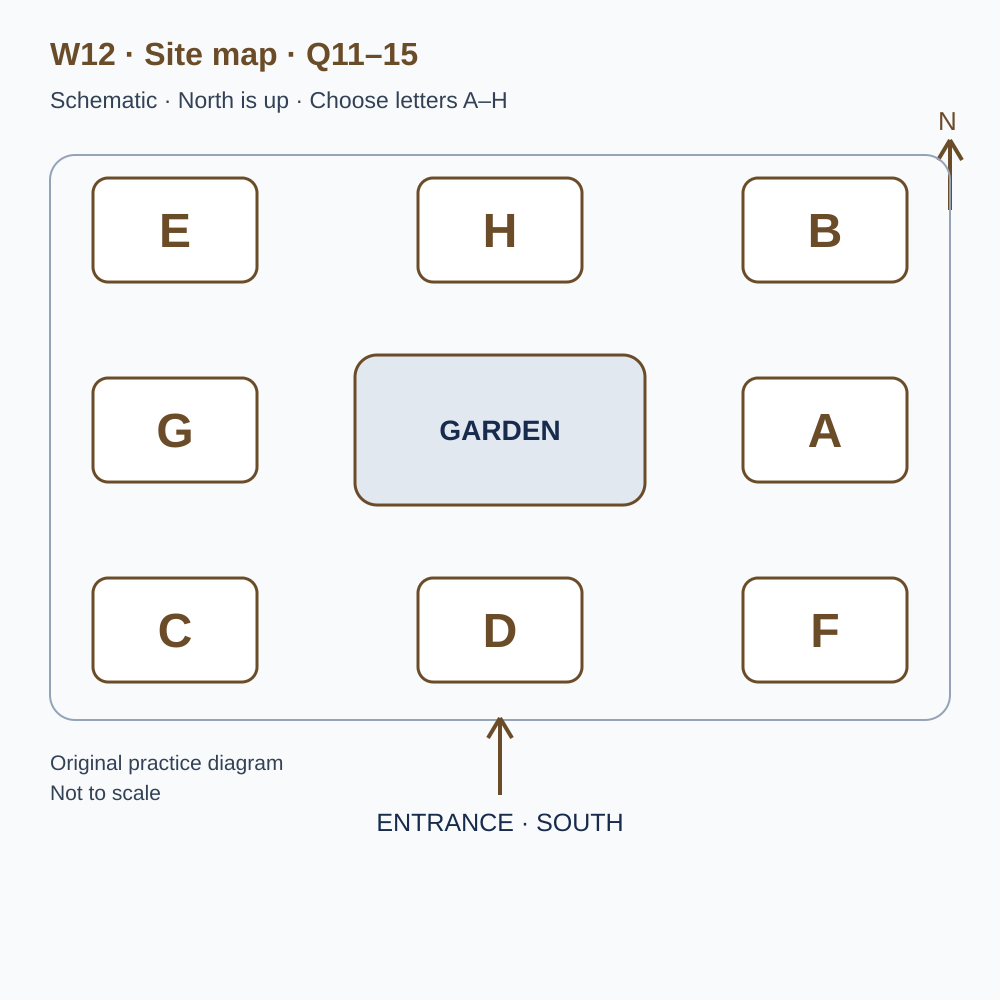
Q11. Check-in
Answer: ____
Q12. Demonstration area
Answer: ____
Q13. Quiet discussion area
Answer: ____
Q14. Feedback station
Answer: ____
Q15. Packaging collection area
Answer: ____
Q16. Why should the display heading be reviewed carefully?
- A. Visitors may remember its claim more than a small qualification
- B. Every heading must avoid a definite conclusion
- C. A dramatic heading creates evidence for its claim
Answer: ____
Q17. When a visitor gives an unexpected answer, facilitators should
- A. correct it immediately before hearing any explanation
- B. assume all unexpected answers show confusion
- C. ask neutrally how the visitor reached it
Answer: ____
Q18. Why log an explanation revised during the event?
- A. To create a diary of every unrelated conversation
- B. To distinguish responses produced under different versions
- C. To make all earlier responses disappear
Answer: ____
Q19. If an interactive element fails, the group should
- A. identify the equipment to support and label use of the alternative activity
- B. report only that a screen near some plants is broken
- C. combine alternative responses as if the original ran unchanged
Answer: ____
Q20. What should the final stage review include?
- A. Proof that every feature succeeded
- B. Only the most enthusiastic comments, generalised to all visitors
- C. Intentions, observations, uncertainties and a change to test
Answer: ____
Part 3 — Reviewing an interactive display
Q21–26: Match each proposal to the students' final positions at the end of that exchange. The tutor is not included. Write A, B, C or D. Letters may be reused.
- A Amira only
- B Owen only
- C Both students
- D Neither student
Q27–28 and Q29–30: Choose TWO different letters, A–E, for each pair. Write one letter in each numbered slot; either order is accepted. Each distinct correct choice earns one point, maximum two. Repeating a letter cannot earn two points. Submit no more than two letters.
Q21. At the END of this exchange, who supports: Testing the display with people outside the course?
Answer: ____
Q22. At the END of this exchange, who supports: Putting the whole introduction on one screen?
Answer: ____
Q23. At the END of this exchange, who supports: Keeping written observer notes as well as the interaction log?
Answer: ____
Q24. At the END of this exchange, who supports: Publicly ranking visitors by completion speed?
Answer: ____
Q25. At the END of this exchange, who supports: Recording first-attempt completion time in this pilot?
Answer: ____
Q26. At the END of this exchange, who supports: Keeping a labelled revision log between sessions?
Answer: ____
Q27–28. Which TWO content changes are agreed after the first pilot?
- A. Add dramatic animation
- B. Add another organisation's logo
- C. Explain how the comparison was made
- D. Make missing values explicit
- E. Claim the display proves the cause
Answers: Q27 ____ · Q28 ____
Q29–30. Which TWO limitations belong in the pilot report?
- A. Only one venue was tested
- B. A shared folder was used
- C. The display never ran
- D. The colour scheme stayed the same
- E. Participants received different amounts of facilitator help
Answers: Q29 ____ · Q30 ____
Part 4 — Building an evidence review
Q31–35: Complete the flow chart below. Q36–40: Complete the notes. Write NO MORE THAN TWO WORDS AND/OR A NUMBER for each answer, using words from the recording. Numeric notation may replace spoken numbers. Words or units already printed do not belong in the blank. The numbered text below repeats the SVG prompts for readability.
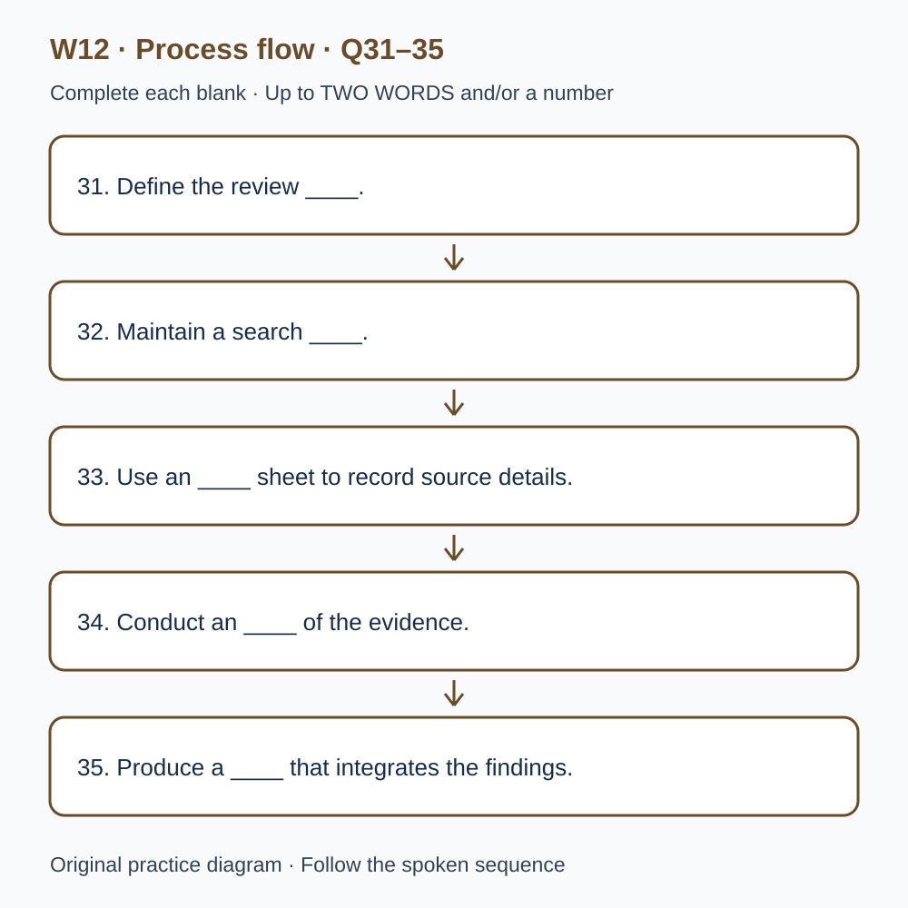
Q31. Define the review ____.
Q32. Maintain a search ____.
Q33. Use an ____ sheet to record source details.
Q34. Conduct an ____ of the evidence.
Q35. Produce a ____ that integrates the findings.
Q36. Prominent favourable findings may be easier to locate because of ____.
Q37. The term for important differences among included studies is ____.
Q38. Match recommendation strength to ____ in the relevant evidence.
Q39. Applying evidence across settings raises the issue of ____.
Q40. Create a ____ identifying the next action and main uncertainties.
本周训练安排（音频批准后执行）
- Preview questions without the script：8 分钟。
- Future continuous first listen, including planned part pauses：32 分钟。
- Submit first answers and confidence, without a second play：8 分钟。
- Check answers and classify errors：20 分钟。
- Four Q-located intensive segments, 15 minutes each：60 分钟。
- Diagram and opinion retelling：15 分钟。
- Next-day retry of missed items：15 分钟。
合计 158 分钟；最多另用 22 分钟缓冲，总计不超过 180 分钟。暂停、回放与查词均计入精听预算，不能另行无限追加。当前实际已完成听力分钟数为 0。精听区段和步骤见 intensive.md；答案和脚本另页。
参考答案与证据（完成首次听力后再展开）
L-W12 — Answers and evidence
> 独立答案页。先提交首次答案，再看本页。当前缺音频，文本验题不能充当实听验收。
每个单空 1 分；双选各 2 分、答案顺序不限、按不同正确选项计分。接受形式仅做大小写和空白规范化；不做模糊词形推断。
Q1 — water
Accepted answers: water / water use
Use the final confirmed detail in this exchange; the printed unit or date context is already supplied.
Evidence locator: Q01 (script.md; timestamps unavailable).
> Officer: Community exhibition office. Exhibitor: Hello. Our learning group would like a small display space at the autumn event. We have been discussing several themes and need to choose one for the application. Officer: What is the main subject of the display you now propose? Exhibitor: Water. We considered a broad energy theme, but the material we've actually prepared concerns how people interpret information about water use. Officer: Then I'll record water as the subject. Exhibitor: Yes. We want to show how a comparison can be read carefully, not claim that our small classroom exercise establishes everything about household behaviour. Officer: A clearly defined subject will help us place the display appropriately.
Q2 — 5
Accepted answers: 5 / 5th / fifth / the fifth / the 5th
Use the final confirmed detail in this exchange; the printed unit or date context is already supplied.
Evidence locator: Q02 (script.md; timestamps unavailable).
> Officer: Have you checked the exhibition date? Exhibitor: An early flyer mentioned the second of November. Officer: That was before the venue booking was confirmed. The event is now on the fifth of November. Exhibitor: The fifth is possible for our group. I'll replace the flyer in our shared folder so nobody organises transport for the old date. Officer: Thank you. The confirmation will include the revised date and the setup instructions. Exhibitor: We'll work from that version. We've learned that saying a date changed isn't enough if the old file remains the easiest one for volunteers to find when they're making their own arrangements.
Q3 — 2.25
Accepted answers: 2.25 / 2:25 / 02.25 / 02:25 / 14.25 / 14:25 / two twenty-five
Use the final confirmed detail in this exchange; the printed unit or date context is already supplied.
Evidence locator: Q03 (script.md; timestamps unavailable).
> Exhibitor: What time can we bring in the display? Officer: Your allocated setup slot begins at two twenty-five in the afternoon. The public event opens later, but we bring groups in at different times to keep the entrance usable. Exhibitor: Two twenty-five, then. I had assumed two o'clock because that's when setup begins generally. Officer: Two is the first group's time, not yours. Please use the allocated slot unless we confirm a change. Exhibitor: I'll put the exact time on our transport plan and ask the volunteers to arrive together. Officer: That will help the team match each group with its space without several separate arrivals searching for the same booking.
Q4 — 2
Accepted answers: 2 / two
Use the final confirmed detail in this exchange; the printed unit or date context is already supplied.
Evidence locator: Q04 (script.md; timestamps unavailable).
> Officer: How many tables will you need? Exhibitor: We first imagined using three, but we've simplified the display. Two tables should be enough. Officer: I'll enter two on the booking. Please send the outline showing how you intend to use them. Exhibitor: We can place the comparison activity on one and the explanation on the other. Officer: Good. The outline helps us check the available space; it isn't a request for a fully finished visual design today. Exhibitor: That's useful. We'd rather confirm the practical arrangement before printing everything, and we don't want to reserve a third table that would remain mostly empty during the event.
Q5 — 60
Accepted answers: 60 / sixty / 60.00
Use the final confirmed detail in this exchange; the printed unit or date context is already supplied.
Evidence locator: Q05 (script.md; timestamps unavailable).
> Exhibitor: What is the total space fee? Officer: For your community group, the confirmed fee is sixty pounds. Exhibitor: Does that include both tables? Officer: Yes, sixty pounds is the total for the agreed space and those two tables. Additional services, if requested, would be discussed separately. Exhibitor: I'll record the total rather than multiplying it by the number of tables. Officer: Exactly. The confirmation will list the arrangement so you can check that it matches our discussion. Exhibitor: Our volunteer handling the budget will appreciate that. A single unexplained amount on a message can be difficult to interpret when people weren't part of the original booking conversation.
Q6 — labels
Accepted answers: labels / the labels
Use the final confirmed detail in this exchange; the printed unit or date context is already supplied.
Evidence locator: Q06 (script.md; timestamps unavailable).
> Exhibitor: What should we bring apart from the display itself? Officer: Please prepare labels for any loose pieces used in the activity. Similar pieces from neighbouring displays can become mixed up during packing. Exhibitor: Labels, then. We'll put our group code on them and keep a matching list. Officer: That's helpful. You don't need to attach labels to the venue's furniture; the tables already have their own identifiers. Exhibitor: I'll make the distinction clear. We'll label our activity pieces, not everything in the space. Officer: Good. The aim is to help return each object to the right group, rather than cover the venue's existing instructions with new information.
Q7 — B
Accepted answers: B
The space supports brief interactions; testing the introduction with an unfamiliar person is useful.
Evidence locator: Q07 (script.md; timestamps unavailable).
> Exhibitor: Does the display need a professional presenter? Our volunteers know the activity well but aren't used to speaking to large audiences. Officer: No. Your space is designed for short conversations with small groups. Prepare a clear introduction and let visitors ask questions. Exhibitor: So we don't need a stage performance? Officer: That's right. A short practice with somebody unfamiliar with the activity may be more useful than learning a long speech. Exhibitor: We can do that at our next meeting. It should reveal which words need explanation before visitors encounter the comparison, rather than relying on the volunteers to improvise a different introduction every time.
Q8 — A
Accepted answers: A
Activity participation and mailing-list consent have separate purposes.
Evidence locator: Q08 (script.md; timestamps unavailable).
> Exhibitor: Can we collect visitors' contact details for future events? Officer: Only through a separate, clearly explained sign-up arrangement that visitors can choose to use. Participation in your activity should not require joining your mailing list. Exhibitor: We'll keep the activity response sheet separate from an optional sign-up sheet. Officer: Good. Make the purpose of each clear, and follow the event's contributor arrangements. Exhibitor: We don't need contact details to understand how someone interpreted the display, so there is no reason to put them on that response sheet. Officer: Exactly. Keeping different purposes distinct helps visitors understand what they are agreeing to and helps your team manage the resulting records appropriately.
Q9 — C
Accepted answers: C
The comparison supports a limited claim, not necessarily a judgement about a person.
Evidence locator: Q09 (script.md; timestamps unavailable).
> Exhibitor: If a visitor asks whether the display proves that one household is more responsible than another, how should we respond? Officer: Explain the limits of the comparison you've prepared. The activity is intended to help people examine information, and the figures may not support that personal judgement. Exhibitor: We can show the assumptions and describe what additional information would be needed. Officer: That sounds appropriate. Don't turn a convenient illustration into a claim that goes beyond its evidence simply because a visitor wants a simple ranking. Exhibitor: We'll practise that explanation as well as the introduction. It is part of helping people understand the display, not an awkward question to avoid.
Q10 — B
Accepted answers: B
The current plan supports setup and access arrangements; informal swaps are not sufficient.
Evidence locator: Q10 (script.md; timestamps unavailable).
> Exhibitor: How will the final display location be confirmed? Officer: We'll send a numbered plan with your booking reference. Please use that plan rather than the early layout on the event notice. Exhibitor: And if it changes? Officer: We will send a direct revision identifying your new location. Don't arrange an informal exchange with another group without contacting the team, because the plan also supports setup and access arrangements. Exhibitor: I'll make one current copy available to all our volunteers. Officer: Excellent. That reduces the chance that different members arrive with different plans and each assumes the other person has misunderstood where the group belongs.
Q11 — D
Accepted answers: D
Use the explicitly stated position relative to the garden, not an earlier layout or adjacent area.
Evidence locator: Q11 (script.md; timestamps unavailable).
> Welcome to the exhibition learning area. North is at the top of your diagram, and the entrance is on the southern edge. The central garden is our reference point. The lettered spaces around it are separate activity areas, not a sequence of numbered stops. Check-in is directly south of the garden, on the entrance axis. It isn't in either southern corner. Exhibitors should report there before moving equipment into a display space. The team will confirm your location and tell you whether setup is ready. A printed plan is useful, but the check-in team may have a confirmed update that was issued after your copy was downloaded.
Q12 — E
Accepted answers: E
Use the explicitly stated position relative to the garden, not an earlier layout or adjacent area.
Evidence locator: Q12 (script.md; timestamps unavailable).
> The demonstration area is in the north-west corner. The first draft placed demonstrations directly north of the garden, but that space now has another purpose. On the current map, the demonstration area lies west of the northern central space and diagonally north-west of the garden. Demonstrations are short scheduled activities, so an apparently quiet moment may be the changeover between presenters. Please ask the coordinator before placing equipment there. The timetable helps several groups share the area without assuming that one group's arrival gives it priority over another. For your map answer, use the north-west letter rather than the letter directly above the garden.
Q13 — A
Accepted answers: A
Use the explicitly stated position relative to the garden, not an earlier layout or adjacent area.
Evidence locator: Q13 (script.md; timestamps unavailable).
> The quiet discussion area is directly east of the garden, level with its centre on the diagram. It isn't the room in the south-east corner. We use it for conversations that need more time than the brief exchanges beside a busy display. That doesn't mean it is reserved for every exhibitor throughout the event. Check the arrangement with the team before inviting a group to move there. If the area is occupied, staff can explain the available options. Please avoid promising a private conversation in a space merely because you saw empty chairs earlier. The current use may have changed by the time your visitors arrive.
Q14 — B
Accepted answers: B
Use the explicitly stated position relative to the garden, not an earlier layout or adjacent area.
Evidence locator: Q14 (script.md; timestamps unavailable).
> The feedback station is in the north-east corner, directly north of the quiet discussion area. It is east of the northern central space, since those two positions lie on the same row. We have kept feedback separate from check-in so visitors can leave comments after exploring the displays without mixing with arriving exhibitors. The station collects the event's general feedback. It doesn't automatically collect responses for every individual group's project. If you are using your own activity sheet, explain where visitors should return it. Clear collection arrangements prevent useful comments from ending up in a pile whose purpose nobody can later identify.
Q15 — C
Accepted answers: C
Use the explicitly stated position relative to the garden, not an earlier layout or adjacent area.
Evidence locator: Q15 (script.md; timestamps unavailable).
> At the end of the event, groups collect stored packaging from the collection area in the south-west corner. That is west of check-in and on the opposite side of the map from the south-east space. Please use your group code when asking for the packaging. Similar boxes can be difficult to distinguish by appearance alone, especially after a busy day. The collection team will explain the order for moving items back towards the entrance. Do not assume that collecting a box means your vehicle can immediately enter the setup route. The closing arrangement depends on the whole site, including visitors who may still be leaving other activities.
Q16 — A
Accepted answers: A
The heading's strength must match the evidence; clear limited conclusions remain possible.
Evidence locator: Q16 (script.md; timestamps unavailable).
> Each display should distinguish a question from a conclusion. A heading that asks why two figures differ invites investigation; a heading that announces one explanation has already made a stronger claim. Visitors may remember the heading more readily than a qualification in small print. The exhibition team therefore asks groups to review their main wording as carefully as their detailed notes. This doesn't require making every display uncertain about everything. It requires matching the strength of the claim to the evidence actually presented. A clear limited conclusion can be more informative than an impressive broad statement that the activity cannot support when somebody asks how it was reached.
Q17 — C
Accepted answers: C
Unexpected answers can reveal overlooked features or different interpretations.
Evidence locator: Q17 (script.md; timestamps unavailable).
> When a visitor gives an unexpected answer, ask how they reached it before assuming they misunderstood. They may have noticed a feature your team overlooked, interpreted a label differently or used information from elsewhere. A short neutral follow-up can reveal which of those possibilities is relevant. Avoid immediately correcting the visitor in a way that hides the reasoning you wanted to understand. If the activity has a factual explanation, you can still provide it after hearing their account. The point is to distinguish understanding a person's reasoning from simply checking whether their final answer matches the one printed in your facilitator notes.
Q18 — B
Accepted answers: B
Wording and procedure changes may affect responses, so timing and reasons need to be traceable.
Evidence locator: Q18 (script.md; timestamps unavailable).
> If you revise an explanation during the event, record the change and when it was introduced. A clearer phrase may improve the visitor experience, but it also means responses before and after the change were produced under different conditions. Combining them without a note can make a small evaluation difficult to interpret. The revision log doesn't need to become a long diary of every conversation. It should identify the wording or procedure changed, the reason and the point in the session when the new version began. That is enough to help your later review connect an apparent change in responses with a possible change in the activity itself.
Q19 — A
Accepted answers: A
Clear identifiers aid support; the alternative remains distinct in the evaluation.
Evidence locator: Q19 (script.md; timestamps unavailable).
> A technical problem should be reported to the event support team using the location and equipment identifier. Saying that the screen near the plants isn't working may describe more than one item. A clear identifier helps the team find the problem without leaving other groups searching for someone who has gone to the wrong area. If the interactive element is unavailable, use the alternative activity prepared in your plan and explain the change to visitors. Don't present responses from the alternative as though they came from the original version. Both may be useful, but the distinction matters when your group later discusses what the activity achieved.
Q20 — C
Accepted answers: C
The review guides the next decision while acknowledging what the evidence cannot establish.
Evidence locator: Q20 (script.md; timestamps unavailable).
> Before packing, complete the brief stage review with your group. Identify what you intended visitors to do, what you observed and what remains uncertain. Include one feature to retain and one change to test next time. The review isn't a demand to prove that every part of the display succeeded. It is a way to turn the event into useful evidence for the next decision. If your conclusions depend mainly on enthusiastic comments from a few visitors, say so. Those comments can be valuable without representing everybody who passed the space. A clear account of the limits helps the next version address the right problem.
Q21 — C
Accepted answers: C
Final stance: Both students. Ignore an initial proposal if later withdrawn; the tutor is not an answer option.
Evidence locator: Q21 (script.md; timestamps unavailable).
> Tutor: Your display pilot begins tomorrow. Do you both support testing it with people outside your course? Amira: Yes. Our classmates already know the terminology and may overlook an unclear label. Owen: I initially thought recruiting outside the course would take too long. We have four volunteers available now, so I support it. Tutor: What can four volunteers tell you? Owen: They can reveal specific difficulties, though we shouldn't call their responses representative of all exhibition visitors. Amira: Exactly. We'll ask them to explain what they think the activity is asking before giving the full explanation. That should make a hidden assumption visible while there is still time to revise the wording.
Q22 — B
Accepted answers: B
Final stance: Owen only. Ignore an initial proposal if later withdrawn; the tutor is not an answer option.
Evidence locator: Q22 (script.md; timestamps unavailable).
> Tutor: Owen suggests putting the entire introduction on one screen. Owen: I favour that. Visitors would see the purpose before beginning, instead of moving through several short pages. Amira: I'd keep the introduction in two stages. One screen could contain too much information for somebody standing beside a busy display. Tutor: Could shorter wording make one screen workable? Amira: Perhaps, but I still prefer separating the task from the background explanation. Owen: I continue to support one screen, with only the essential information. Tutor: Then you disagree about the presentation structure, not whether visitors need an introduction. Record that distinction so your next test compares a clear proposal rather than two vaguely different designs.
Q23 — A
Accepted answers: A
Final stance: Amira only. Ignore an initial proposal if later withdrawn; the tutor is not an answer option.
Evidence locator: Q23 (script.md; timestamps unavailable).
> Tutor: Do you want to keep written observer notes as well as the interaction log? Amira: Yes. The log records selections, but it won't show that someone reread a label or asked what a term meant. Owen: I would leave the notes out of this first test. We have limited staff, and taking detailed notes could distract the facilitator from running the activity consistently. Amira: We can use a short structured sheet, but I still support keeping notes. Tutor: Owen, does a shorter sheet change your position? Owen: Not for tomorrow's pilot. I'd prioritise a stable procedure and discuss observations immediately afterwards. Amira: Then my preference remains, but we haven't agreed to implement it.
Q24 — D
Accepted answers: D
Final stance: Neither student. Ignore an initial proposal if later withdrawn; the tutor is not an answer option.
Evidence locator: Q24 (script.md; timestamps unavailable).
> Tutor: Your draft proposes ranking visitors by how quickly they finish. Why? Owen: I thought a ranking might make the activity entertaining. Amira: I don't support it. Speed isn't the understanding we're trying to investigate, and a public ranking might make people rush. Owen: On reflection, I agree. I'll remove the ranking from the design. Tutor: Are you also abandoning all timing information? Owen: That's a separate question. I am withdrawing the public ranking, not deciding every possible use of timing. Amira: Good distinction. We can discuss a private measure of task duration without turning it into a competition. Tutor: Then neither of you supports the ranking at the end of this discussion.
Q25 — B
Accepted answers: B
Final stance: Owen only. Ignore an initial proposal if later withdrawn; the tutor is not an answer option.
Evidence locator: Q25 (script.md; timestamps unavailable).
> Tutor: Should you record how long the first attempt takes? Owen: I support recording first-attempt completion time. It may identify a stage where the procedure takes longer than we planned. Amira: I wouldn't add timing in this pilot. I'd rather ask participants to explain the comparison and see whether the language is clear. Owen: We could record time without displaying it to visitors. I still favour it as a practical measure, not a score of ability. Tutor: Amira? Amira: I understand that narrower purpose, but I still prefer to leave it out tomorrow. Tutor: So Owen supports the timing proposal, while Amira remains against adding it to this particular pilot.
Q26 — C
Accepted answers: C
Final stance: Both students. Ignore an initial proposal if later withdrawn; the tutor is not an answer option.
Evidence locator: Q26 (script.md; timestamps unavailable).
> Tutor: What about recording revisions made between pilot sessions? Amira: We need a revision log. Otherwise we may forget which participants saw which wording. Owen: Agreed. I first imagined overwriting the display file after each change, but then the earlier version would be difficult to reconstruct. Amira: We'll give each version a label and record the reason for a change. Tutor: Does that require a lengthy report every time? Owen: No. A short entry can identify what changed, when and why. Amira: Then we both support the log as part of the procedure. It should preserve the link between feedback and revision, rather than become a list of changes detached from the problem each one addressed.
Q27–28 — C, D
Accept unordered set: C, D. One point per distinct correct choice, maximum 2.
Method explanation and explicit missing values address observed misunderstandings without inventing data or causation.
Evidence locator: Q27, Q28 (script.md; timestamps unavailable).
> Tutor: Which two content changes have you agreed after the first pilot? Amira: Explain how the comparison was made. Several visitors assumed the two figures described identical circumstances, but that wasn't stated. Owen: Yes. We'll add a brief explanation of what was held the same and what differed. Tutor: Are you adding an animation to make the numbers more dramatic? Owen: No, that wouldn't resolve the misunderstanding we observed. Amira: Nor are we adding another organisation's logo to imply support. Tutor: Then your first agreed change is methodological: tell visitors what the comparison actually compares, so they can assess the claim rather than fill an information gap with an assumption.
> Tutor: And the second agreed content change? Owen: Make missing values visible instead of leaving an unexplained blank. Amira: Agreed. One visitor treated a blank as zero, while another thought the display had failed to load. Tutor: Will you fill the blank with a typical value to simplify the task? Amira: No. That would turn missing information into an observation we never collected. Owen: We also rejected a headline claiming that the display proves the cause of the difference. Tutor: Good. The two revisions are an explanation of the comparison and an explicit indication of missing values. They help visitors interpret the available evidence without manufacturing a stronger result than the material supports.
Q29–30 — A, E
Accept unordered set: A, E. One point per distinct correct choice, maximum 2.
Venue coverage and inconsistent assistance limit the claim; shared storage and stable readable colours are not defects by themselves.
Evidence locator: Q29, Q30 (script.md; timestamps unavailable).
> Tutor: Which two limitations should appear in your pilot report? Amira: First, the activity was tested in only one venue. We don't know whether the same instructions would work equally well in a noisier or more crowded setting. Owen: Agreed. We can describe the setting we used, but we shouldn't write as though we've tested every exhibition context. Tutor: Is saving the files in a shared folder a limitation? Owen: No, that helped us keep the records available. Amira: And the display did run, so a total technical failure isn't part of this pilot's history. Tutor: Exactly. State the conditions that actually limit the claim, not a list of difficulties a project might have experienced.
> Tutor: What is the second limitation? Owen: The facilitator gave different amounts of help to different participants. A few completed the activity after receiving an extra explanation that others didn't hear. Amira: Yes. Their completion can't be attributed only to the display wording. Tutor: What will you change? Amira: Prepare a consistent assistance procedure and record when extra help is given. Owen: We don't need to pretend the earlier sessions never happened; we need to explain why the results require caution. Tutor: Then the two limitations are one venue and inconsistent assistance. Using the same colour scheme throughout isn't an additional limitation by itself, provided the information remained readable.
Q31 — question
Accepted answers: question
Complete the named stage in the stated process order; retain any word already printed around the blank.
Evidence locator: Q31 (script.md; timestamps unavailable).
> This lecture follows a fictional team preparing an evidence review for a community project. Its first stage defines the question. A broad interest in whether information helps people make decisions must become a question precise enough to guide the review. The team specifies the setting, the kind of information and the outcome it wants to examine. Those choices do not guarantee a simple answer, but they make the boundaries visible. Without them, the team may collect attractive examples that address different problems and then treat their variety as if it were a clear body of evidence for one claim. The question determines what a useful answer would need to explain.
Q32 — log
Accepted answers: log
Complete the named stage in the stated process order; retain any word already printed around the blank.
Evidence locator: Q32 (script.md; timestamps unavailable).
> The second stage maintains a search log. The log records where the team looked, the terms it used and the limits it applied. This makes the search process traceable rather than relying on somebody's memory of finding an interesting document. It also helps identify gaps that a later stage might address. A search log does not prove that every relevant item has been found. It describes the process actually used, including practical constraints. The team should distinguish a planned search from a completed one, so readers don't assume that a source was checked merely because its name appeared in an early proposal or on a list of possible places to investigate.
Q33 — extraction
Accepted answers: extraction
Complete the named stage in the stated process order; retain any word already printed around the blank.
Evidence locator: Q33 (script.md; timestamps unavailable).
> The third stage uses an extraction sheet to record comparable details from each included source. The sheet might capture the setting, participants, method, outcome and stated limitations. The team tests the sheet on a small sample before using it throughout the review. If different readers interpret a field differently, the wording or guidance needs attention. The aim is not to force every source into identical categories when important differences exist. It is to preserve enough consistent information to support a reasoned comparison while keeping relevant differences visible. A short quotation or page reference can help another reader check how a particular entry was derived from the original source.
Q34 — appraisal
Accepted answers: appraisal / examination
Complete the named stage in the stated process order; retain any word already printed around the blank.
Evidence locator: Q34 (script.md; timestamps unavailable).
> The fourth stage conducts an appraisal of the evidence. Appraisal means examining how well a source's method supports the claim being considered. An impressive title, a polished graph or a confident conclusion is not a substitute for that examination. A source may be useful for describing an experience but weak for establishing why an outcome occurred. Another may address a narrow causal question in a setting unlike the community project. The team should record both strengths and limits rather than attach a single unexplained quality label. Appraisal connects the review question with the evidence available and helps prevent a relevant-looking source from being asked to support a claim beyond its method.
Q35 — synthesis
Accepted answers: synthesis / final interpretation
Complete the named stage in the stated process order; retain any word already printed around the blank.
Evidence locator: Q35 (script.md; timestamps unavailable).
> The fifth stage produces a synthesis. The synthesis brings the evidence together through an explanation of patterns, differences and uncertainty. It is not simply a sequence of short summaries with a confident final sentence attached. The team needs to show which sources address sufficiently similar questions to be compared and where differences make a combined statement difficult. If findings conflict, the review should investigate possible reasons rather than count positive and negative conclusions as though every source had equal relevance and strength. A useful synthesis lets readers trace the final interpretation back to the sources and understand why some findings carry more weight for the specific question than others.
Q36 — publication bias
Accepted answers: publication bias / bias
The corresponding evidence block supplies this distinction or qualification; the question retains the surrounding grammar.
Evidence locator: Q36 (script.md; timestamps unavailable).
> Publication bias is one possible limitation of an evidence collection. Studies with striking or favourable results may be easier to find than work whose results attracted less attention. A review based only on prominent examples could therefore give a distorted impression of the whole body of work. The team should consider its search process and explain what kinds of material it was able to locate. This doesn't justify assuming that every missing study would contradict the visible evidence. It identifies a reason for caution about treating the available collection as complete. Acknowledging the possibility helps readers understand the difference between the evidence located and every investigation that may have been carried out.
Q37 — heterogeneity
Accepted answers: heterogeneity
The corresponding evidence block supplies this distinction or qualification; the question retains the surrounding grammar.
Evidence locator: Q37 (script.md; timestamps unavailable).
> Heterogeneity means differences among the included studies that matter to interpretation. The studies may involve different participants, settings, procedures or definitions of the outcome. Some differences may be small enough for a particular comparison, while others change what the results mean. The team should describe the important differences rather than assume that a shared keyword makes the studies interchangeable. A combined numerical result can look precise while hiding incompatible measurements. In other cases, examining variation can reveal useful questions about when an approach works and under what conditions. The review should therefore treat heterogeneity as something to understand, not merely an inconvenience to remove from a cleaner-looking presentation.
Q38 — confidence
Accepted answers: confidence / the confidence
The corresponding evidence block supplies this distinction or qualification; the question retains the surrounding grammar.
Evidence locator: Q38 (script.md; timestamps unavailable).
> The strength of a recommendation should reflect confidence in the relevant evidence. Confidence depends on more than how many sources point in the same direction. Their methods, relevance, consistency and missing information all matter. The team may have enough evidence to suggest a small reversible trial while remaining uncertain about a large permanent change. That is a reasoned difference in the scale of a recommendation, not a contradiction. The report should explain what it is confident about and what remains open. A reader can then judge whether the proposed next step is proportionate to the evidence, rather than treating a recommendation as proof that every uncertainty has been settled.
Q39 — transferability
Accepted answers: transferability
The corresponding evidence block supplies this distinction or qualification; the question retains the surrounding grammar.
Evidence locator: Q39 (script.md; timestamps unavailable).
> Transferability concerns whether evidence from one setting can inform another. A method tested with experienced participants in a quiet room may work differently for first-time visitors at a crowded event. The review should compare the conditions that are relevant to the proposed use and identify which differences could matter. It should not assume that every difference makes the evidence useless, or that an appealing result applies everywhere without adjustment. A small local trial may help examine the most important uncertainty. The purpose is to connect existing knowledge to a new decision carefully, while keeping the reasoning visible enough for others to challenge or improve it.
Q40 — decision record
Accepted answers: decision record / record
The corresponding evidence block supplies this distinction or qualification; the question retains the surrounding grammar.
Evidence locator: Q40 (script.md; timestamps unavailable).
> At the final stage review, the team creates a decision record. This record identifies the proposed next action, the evidence supporting it, the main uncertainties and the conditions that would lead the team to reconsider. It also distinguishes actions already approved from suggestions that still need discussion. The record is not a promise that the project will never change direction. It provides a basis for explaining a later change when new information arrives. In that way, a review becomes part of an ongoing learning process: the next trial has a purpose, its results can be compared with expectations, and the team can explain how evidence influenced what it chose to do.
完整脚本（提前阅读会失去陌生题首答机会）
L-W12 — Exhibitions, evidence and the next decision: transcript
> 原创虚构练习，非真题；音频缺失。仅供完成首次作答后的核对或文字审阅。Q 标记与角色名不属于朗读正文。
Part 1 — Booking a community exhibition space
Q1 evidence block
Officer: Community exhibition office.
Exhibitor: Hello. Our learning group would like a small display space at the autumn event. We have been discussing several themes and need to choose one for the application.
Officer: What is the main subject of the display you now propose?
Exhibitor: Water. We considered a broad energy theme, but the material we've actually prepared concerns how people interpret information about water use.
Officer: Then I'll record water as the subject.
Exhibitor: Yes. We want to show how a comparison can be read carefully, not claim that our small classroom exercise establishes everything about household behaviour.
Officer: A clearly defined subject will help us place the display appropriately.
Q2 evidence block
Officer: Have you checked the exhibition date?
Exhibitor: An early flyer mentioned the second of November.
Officer: That was before the venue booking was confirmed. The event is now on the fifth of November.
Exhibitor: The fifth is possible for our group. I'll replace the flyer in our shared folder so nobody organises transport for the old date.
Officer: Thank you. The confirmation will include the revised date and the setup instructions.
Exhibitor: We'll work from that version. We've learned that saying a date changed isn't enough if the old file remains the easiest one for volunteers to find when they're making their own arrangements.
Q3 evidence block
Exhibitor: What time can we bring in the display?
Officer: Your allocated setup slot begins at two twenty-five in the afternoon. The public event opens later, but we bring groups in at different times to keep the entrance usable.
Exhibitor: Two twenty-five, then. I had assumed two o'clock because that's when setup begins generally.
Officer: Two is the first group's time, not yours. Please use the allocated slot unless we confirm a change.
Exhibitor: I'll put the exact time on our transport plan and ask the volunteers to arrive together.
Officer: That will help the team match each group with its space without several separate arrivals searching for the same booking.
Q4 evidence block
Officer: How many tables will you need?
Exhibitor: We first imagined using three, but we've simplified the display. Two tables should be enough.
Officer: I'll enter two on the booking. Please send the outline showing how you intend to use them.
Exhibitor: We can place the comparison activity on one and the explanation on the other.
Officer: Good. The outline helps us check the available space; it isn't a request for a fully finished visual design today.
Exhibitor: That's useful. We'd rather confirm the practical arrangement before printing everything, and we don't want to reserve a third table that would remain mostly empty during the event.
Q5 evidence block
Exhibitor: What is the total space fee?
Officer: For your community group, the confirmed fee is sixty pounds.
Exhibitor: Does that include both tables?
Officer: Yes, sixty pounds is the total for the agreed space and those two tables. Additional services, if requested, would be discussed separately.
Exhibitor: I'll record the total rather than multiplying it by the number of tables.
Officer: Exactly. The confirmation will list the arrangement so you can check that it matches our discussion.
Exhibitor: Our volunteer handling the budget will appreciate that. A single unexplained amount on a message can be difficult to interpret when people weren't part of the original booking conversation.
Q6 evidence block
Exhibitor: What should we bring apart from the display itself?
Officer: Please prepare labels for any loose pieces used in the activity. Similar pieces from neighbouring displays can become mixed up during packing.
Exhibitor: Labels, then. We'll put our group code on them and keep a matching list.
Officer: That's helpful. You don't need to attach labels to the venue's furniture; the tables already have their own identifiers.
Exhibitor: I'll make the distinction clear. We'll label our activity pieces, not everything in the space.
Officer: Good. The aim is to help return each object to the right group, rather than cover the venue's existing instructions with new information.
Q7 evidence block
Exhibitor: Does the display need a professional presenter? Our volunteers know the activity well but aren't used to speaking to large audiences.
Officer: No. Your space is designed for short conversations with small groups. Prepare a clear introduction and let visitors ask questions.
Exhibitor: So we don't need a stage performance?
Officer: That's right. A short practice with somebody unfamiliar with the activity may be more useful than learning a long speech.
Exhibitor: We can do that at our next meeting. It should reveal which words need explanation before visitors encounter the comparison, rather than relying on the volunteers to improvise a different introduction every time.
Q8 evidence block
Exhibitor: Can we collect visitors' contact details for future events?
Officer: Only through a separate, clearly explained sign-up arrangement that visitors can choose to use. Participation in your activity should not require joining your mailing list.
Exhibitor: We'll keep the activity response sheet separate from an optional sign-up sheet.
Officer: Good. Make the purpose of each clear, and follow the event's contributor arrangements.
Exhibitor: We don't need contact details to understand how someone interpreted the display, so there is no reason to put them on that response sheet.
Officer: Exactly. Keeping different purposes distinct helps visitors understand what they are agreeing to and helps your team manage the resulting records appropriately.
Q9 evidence block
Exhibitor: If a visitor asks whether the display proves that one household is more responsible than another, how should we respond?
Officer: Explain the limits of the comparison you've prepared. The activity is intended to help people examine information, and the figures may not support that personal judgement.
Exhibitor: We can show the assumptions and describe what additional information would be needed.
Officer: That sounds appropriate. Don't turn a convenient illustration into a claim that goes beyond its evidence simply because a visitor wants a simple ranking.
Exhibitor: We'll practise that explanation as well as the introduction. It is part of helping people understand the display, not an awkward question to avoid.
Q10 evidence block
Exhibitor: How will the final display location be confirmed?
Officer: We'll send a numbered plan with your booking reference. Please use that plan rather than the early layout on the event notice.
Exhibitor: And if it changes?
Officer: We will send a direct revision identifying your new location. Don't arrange an informal exchange with another group without contacting the team, because the plan also supports setup and access arrangements.
Exhibitor: I'll make one current copy available to all our volunteers.
Officer: Excellent. That reduces the chance that different members arrive with different plans and each assumes the other person has misunderstood where the group belongs.
Part 2 — Exhibition learning area
Q11 evidence block
Exhibition host: Welcome to the exhibition learning area. North is at the top of your diagram, and the entrance is on the southern edge. The central garden is our reference point. The lettered spaces around it are separate activity areas, not a sequence of numbered stops. Check-in is directly south of the garden, on the entrance axis. It isn't in either southern corner. Exhibitors should report there before moving equipment into a display space. The team will confirm your location and tell you whether setup is ready. A printed plan is useful, but the check-in team may have a confirmed update that was issued after your copy was downloaded.
Q12 evidence block
Exhibition host: The demonstration area is in the north-west corner. The first draft placed demonstrations directly north of the garden, but that space now has another purpose. On the current map, the demonstration area lies west of the northern central space and diagonally north-west of the garden. Demonstrations are short scheduled activities, so an apparently quiet moment may be the changeover between presenters. Please ask the coordinator before placing equipment there. The timetable helps several groups share the area without assuming that one group's arrival gives it priority over another. For your map answer, use the north-west letter rather than the letter directly above the garden.
Q13 evidence block
Exhibition host: The quiet discussion area is directly east of the garden, level with its centre on the diagram. It isn't the room in the south-east corner. We use it for conversations that need more time than the brief exchanges beside a busy display. That doesn't mean it is reserved for every exhibitor throughout the event. Check the arrangement with the team before inviting a group to move there. If the area is occupied, staff can explain the available options. Please avoid promising a private conversation in a space merely because you saw empty chairs earlier. The current use may have changed by the time your visitors arrive.
Q14 evidence block
Exhibition host: The feedback station is in the north-east corner, directly north of the quiet discussion area. It is east of the northern central space, since those two positions lie on the same row. We have kept feedback separate from check-in so visitors can leave comments after exploring the displays without mixing with arriving exhibitors. The station collects the event's general feedback. It doesn't automatically collect responses for every individual group's project. If you are using your own activity sheet, explain where visitors should return it. Clear collection arrangements prevent useful comments from ending up in a pile whose purpose nobody can later identify.
Q15 evidence block
Exhibition host: At the end of the event, groups collect stored packaging from the collection area in the south-west corner. That is west of check-in and on the opposite side of the map from the south-east space. Please use your group code when asking for the packaging. Similar boxes can be difficult to distinguish by appearance alone, especially after a busy day. The collection team will explain the order for moving items back towards the entrance. Do not assume that collecting a box means your vehicle can immediately enter the setup route. The closing arrangement depends on the whole site, including visitors who may still be leaving other activities.
Q16 evidence block
Exhibition host: Each display should distinguish a question from a conclusion. A heading that asks why two figures differ invites investigation; a heading that announces one explanation has already made a stronger claim. Visitors may remember the heading more readily than a qualification in small print. The exhibition team therefore asks groups to review their main wording as carefully as their detailed notes. This doesn't require making every display uncertain about everything. It requires matching the strength of the claim to the evidence actually presented. A clear limited conclusion can be more informative than an impressive broad statement that the activity cannot support when somebody asks how it was reached.
Q17 evidence block
Exhibition host: When a visitor gives an unexpected answer, ask how they reached it before assuming they misunderstood. They may have noticed a feature your team overlooked, interpreted a label differently or used information from elsewhere. A short neutral follow-up can reveal which of those possibilities is relevant. Avoid immediately correcting the visitor in a way that hides the reasoning you wanted to understand. If the activity has a factual explanation, you can still provide it after hearing their account. The point is to distinguish understanding a person's reasoning from simply checking whether their final answer matches the one printed in your facilitator notes.
Q18 evidence block
Exhibition host: If you revise an explanation during the event, record the change and when it was introduced. A clearer phrase may improve the visitor experience, but it also means responses before and after the change were produced under different conditions. Combining them without a note can make a small evaluation difficult to interpret. The revision log doesn't need to become a long diary of every conversation. It should identify the wording or procedure changed, the reason and the point in the session when the new version began. That is enough to help your later review connect an apparent change in responses with a possible change in the activity itself.
Q19 evidence block
Exhibition host: A technical problem should be reported to the event support team using the location and equipment identifier. Saying that the screen near the plants isn't working may describe more than one item. A clear identifier helps the team find the problem without leaving other groups searching for someone who has gone to the wrong area. If the interactive element is unavailable, use the alternative activity prepared in your plan and explain the change to visitors. Don't present responses from the alternative as though they came from the original version. Both may be useful, but the distinction matters when your group later discusses what the activity achieved.
Q20 evidence block
Exhibition host: Before packing, complete the brief stage review with your group. Identify what you intended visitors to do, what you observed and what remains uncertain. Include one feature to retain and one change to test next time. The review isn't a demand to prove that every part of the display succeeded. It is a way to turn the event into useful evidence for the next decision. If your conclusions depend mainly on enthusiastic comments from a few visitors, say so. Those comments can be valuable without representing everybody who passed the space. A clear account of the limits helps the next version address the right problem.
Part 3 — Reviewing an interactive display
Q21 evidence block
Tutor: Your display pilot begins tomorrow. Do you both support testing it with people outside your course?
Amira: Yes. Our classmates already know the terminology and may overlook an unclear label.
Owen: I initially thought recruiting outside the course would take too long. We have four volunteers available now, so I support it.
Tutor: What can four volunteers tell you?
Owen: They can reveal specific difficulties, though we shouldn't call their responses representative of all exhibition visitors.
Amira: Exactly. We'll ask them to explain what they think the activity is asking before giving the full explanation. That should make a hidden assumption visible while there is still time to revise the wording.
Q22 evidence block
Tutor: Owen suggests putting the entire introduction on one screen.
Owen: I favour that. Visitors would see the purpose before beginning, instead of moving through several short pages.
Amira: I'd keep the introduction in two stages. One screen could contain too much information for somebody standing beside a busy display.
Tutor: Could shorter wording make one screen workable?
Amira: Perhaps, but I still prefer separating the task from the background explanation.
Owen: I continue to support one screen, with only the essential information.
Tutor: Then you disagree about the presentation structure, not whether visitors need an introduction. Record that distinction so your next test compares a clear proposal rather than two vaguely different designs.
Q23 evidence block
Tutor: Do you want to keep written observer notes as well as the interaction log?
Amira: Yes. The log records selections, but it won't show that someone reread a label or asked what a term meant.
Owen: I would leave the notes out of this first test. We have limited staff, and taking detailed notes could distract the facilitator from running the activity consistently.
Amira: We can use a short structured sheet, but I still support keeping notes.
Tutor: Owen, does a shorter sheet change your position?
Owen: Not for tomorrow's pilot. I'd prioritise a stable procedure and discuss observations immediately afterwards.
Amira: Then my preference remains, but we haven't agreed to implement it.
Q24 evidence block
Tutor: Your draft proposes ranking visitors by how quickly they finish. Why?
Owen: I thought a ranking might make the activity entertaining.
Amira: I don't support it. Speed isn't the understanding we're trying to investigate, and a public ranking might make people rush.
Owen: On reflection, I agree. I'll remove the ranking from the design.
Tutor: Are you also abandoning all timing information?
Owen: That's a separate question. I am withdrawing the public ranking, not deciding every possible use of timing.
Amira: Good distinction. We can discuss a private measure of task duration without turning it into a competition.
Tutor: Then neither of you supports the ranking at the end of this discussion.
Q25 evidence block
Tutor: Should you record how long the first attempt takes?
Owen: I support recording first-attempt completion time. It may identify a stage where the procedure takes longer than we planned.
Amira: I wouldn't add timing in this pilot. I'd rather ask participants to explain the comparison and see whether the language is clear.
Owen: We could record time without displaying it to visitors. I still favour it as a practical measure, not a score of ability.
Tutor: Amira?
Amira: I understand that narrower purpose, but I still prefer to leave it out tomorrow.
Tutor: So Owen supports the timing proposal, while Amira remains against adding it to this particular pilot.
Q26 evidence block
Tutor: What about recording revisions made between pilot sessions?
Amira: We need a revision log. Otherwise we may forget which participants saw which wording.
Owen: Agreed. I first imagined overwriting the display file after each change, but then the earlier version would be difficult to reconstruct.
Amira: We'll give each version a label and record the reason for a change.
Tutor: Does that require a lengthy report every time?
Owen: No. A short entry can identify what changed, when and why.
Amira: Then we both support the log as part of the procedure. It should preserve the link between feedback and revision, rather than become a list of changes detached from the problem each one addressed.
Q27 evidence block
Tutor: Which two content changes have you agreed after the first pilot?
Amira: Explain how the comparison was made. Several visitors assumed the two figures described identical circumstances, but that wasn't stated.
Owen: Yes. We'll add a brief explanation of what was held the same and what differed.
Tutor: Are you adding an animation to make the numbers more dramatic?
Owen: No, that wouldn't resolve the misunderstanding we observed.
Amira: Nor are we adding another organisation's logo to imply support.
Tutor: Then your first agreed change is methodological: tell visitors what the comparison actually compares, so they can assess the claim rather than fill an information gap with an assumption.
Q28 evidence block
Tutor: And the second agreed content change?
Owen: Make missing values visible instead of leaving an unexplained blank.
Amira: Agreed. One visitor treated a blank as zero, while another thought the display had failed to load.
Tutor: Will you fill the blank with a typical value to simplify the task?
Amira: No. That would turn missing information into an observation we never collected.
Owen: We also rejected a headline claiming that the display proves the cause of the difference.
Tutor: Good. The two revisions are an explanation of the comparison and an explicit indication of missing values. They help visitors interpret the available evidence without manufacturing a stronger result than the material supports.
Q29 evidence block
Tutor: Which two limitations should appear in your pilot report?
Amira: First, the activity was tested in only one venue. We don't know whether the same instructions would work equally well in a noisier or more crowded setting.
Owen: Agreed. We can describe the setting we used, but we shouldn't write as though we've tested every exhibition context.
Tutor: Is saving the files in a shared folder a limitation?
Owen: No, that helped us keep the records available.
Amira: And the display did run, so a total technical failure isn't part of this pilot's history.
Tutor: Exactly. State the conditions that actually limit the claim, not a list of difficulties a project might have experienced.
Q30 evidence block
Tutor: What is the second limitation?
Owen: The facilitator gave different amounts of help to different participants. A few completed the activity after receiving an extra explanation that others didn't hear.
Amira: Yes. Their completion can't be attributed only to the display wording.
Tutor: What will you change?
Amira: Prepare a consistent assistance procedure and record when extra help is given.
Owen: We don't need to pretend the earlier sessions never happened; we need to explain why the results require caution.
Tutor: Then the two limitations are one venue and inconsistent assistance. Using the same colour scheme throughout isn't an additional limitation by itself, provided the information remained readable.
Part 4 — Building an evidence review
Q31 evidence block
Lecturer: This lecture follows a fictional team preparing an evidence review for a community project. Its first stage defines the question. A broad interest in whether information helps people make decisions must become a question precise enough to guide the review. The team specifies the setting, the kind of information and the outcome it wants to examine. Those choices do not guarantee a simple answer, but they make the boundaries visible. Without them, the team may collect attractive examples that address different problems and then treat their variety as if it were a clear body of evidence for one claim. The question determines what a useful answer would need to explain.
Q32 evidence block
Lecturer: The second stage maintains a search log. The log records where the team looked, the terms it used and the limits it applied. This makes the search process traceable rather than relying on somebody's memory of finding an interesting document. It also helps identify gaps that a later stage might address. A search log does not prove that every relevant item has been found. It describes the process actually used, including practical constraints. The team should distinguish a planned search from a completed one, so readers don't assume that a source was checked merely because its name appeared in an early proposal or on a list of possible places to investigate.
Q33 evidence block
Lecturer: The third stage uses an extraction sheet to record comparable details from each included source. The sheet might capture the setting, participants, method, outcome and stated limitations. The team tests the sheet on a small sample before using it throughout the review. If different readers interpret a field differently, the wording or guidance needs attention. The aim is not to force every source into identical categories when important differences exist. It is to preserve enough consistent information to support a reasoned comparison while keeping relevant differences visible. A short quotation or page reference can help another reader check how a particular entry was derived from the original source.
Q34 evidence block
Lecturer: The fourth stage conducts an appraisal of the evidence. Appraisal means examining how well a source's method supports the claim being considered. An impressive title, a polished graph or a confident conclusion is not a substitute for that examination. A source may be useful for describing an experience but weak for establishing why an outcome occurred. Another may address a narrow causal question in a setting unlike the community project. The team should record both strengths and limits rather than attach a single unexplained quality label. Appraisal connects the review question with the evidence available and helps prevent a relevant-looking source from being asked to support a claim beyond its method.
Q35 evidence block
Lecturer: The fifth stage produces a synthesis. The synthesis brings the evidence together through an explanation of patterns, differences and uncertainty. It is not simply a sequence of short summaries with a confident final sentence attached. The team needs to show which sources address sufficiently similar questions to be compared and where differences make a combined statement difficult. If findings conflict, the review should investigate possible reasons rather than count positive and negative conclusions as though every source had equal relevance and strength. A useful synthesis lets readers trace the final interpretation back to the sources and understand why some findings carry more weight for the specific question than others.
Q36 evidence block
Lecturer: Publication bias is one possible limitation of an evidence collection. Studies with striking or favourable results may be easier to find than work whose results attracted less attention. A review based only on prominent examples could therefore give a distorted impression of the whole body of work. The team should consider its search process and explain what kinds of material it was able to locate. This doesn't justify assuming that every missing study would contradict the visible evidence. It identifies a reason for caution about treating the available collection as complete. Acknowledging the possibility helps readers understand the difference between the evidence located and every investigation that may have been carried out.
Q37 evidence block
Lecturer: Heterogeneity means differences among the included studies that matter to interpretation. The studies may involve different participants, settings, procedures or definitions of the outcome. Some differences may be small enough for a particular comparison, while others change what the results mean. The team should describe the important differences rather than assume that a shared keyword makes the studies interchangeable. A combined numerical result can look precise while hiding incompatible measurements. In other cases, examining variation can reveal useful questions about when an approach works and under what conditions. The review should therefore treat heterogeneity as something to understand, not merely an inconvenience to remove from a cleaner-looking presentation.
Q38 evidence block
Lecturer: The strength of a recommendation should reflect confidence in the relevant evidence. Confidence depends on more than how many sources point in the same direction. Their methods, relevance, consistency and missing information all matter. The team may have enough evidence to suggest a small reversible trial while remaining uncertain about a large permanent change. That is a reasoned difference in the scale of a recommendation, not a contradiction. The report should explain what it is confident about and what remains open. A reader can then judge whether the proposed next step is proportionate to the evidence, rather than treating a recommendation as proof that every uncertainty has been settled.
Q39 evidence block
Lecturer: Transferability concerns whether evidence from one setting can inform another. A method tested with experienced participants in a quiet room may work differently for first-time visitors at a crowded event. The review should compare the conditions that are relevant to the proposed use and identify which differences could matter. It should not assume that every difference makes the evidence useless, or that an appealing result applies everywhere without adjustment. A small local trial may help examine the most important uncertainty. The purpose is to connect existing knowledge to a new decision carefully, while keeping the reasoning visible enough for others to challenge or improve it.
Q40 evidence block
Lecturer: At the final stage review, the team creates a decision record. This record identifies the proposed next action, the evidence supporting it, the main uncertainties and the conditions that would lead the team to reconsider. It also distinguishes actions already approved from suggestions that still need discussion. The record is not a promise that the project will never change direction. It provides a basis for explaining a later change when new information arrives. In that way, a review becomes part of an ongoing learning process: the next trial has a purpose, its results can be compared with expectations, and the team can explain how evidence influenced what it chose to do.
精听与复盘步骤（须有已验收配套音频）
L-W12 — Q-based intensive listening
> 音频尚未生成；以下是未来执行安排，不是已完成记录。不要用文本阅读替代首次听力。无实际时间戳。
周预算：预览 8 + 首听 32 + 交首次答案 8 + 查错 20 + 精听 60 + 复述 15 + 次日重做 15 = 158 分钟。含暂停/回放；加用缓冲最多 22 分钟，总计≤180。
四段各 15 分钟：先定位并不看稿听 2 分钟；分句回放、写关键词 4 分钟；对照稿找误听与改口 3 分钟；遮稿跟读和复述 3 分钟；重答并记录错误原因 3 分钟。不得把同一段回放另算在周预算之外。
Q2–3 — 15 minutes
定位 script.md 的 Q2 evidence block 起至 Q3 evidence block 结束（约 204 词）；音频起止为 null。
目标：Reject the early date and general setup time; retain the allocated slot.
留痕：首次答案 → 听到的原词 → 干扰来源 → 修正答案 → 一句英文复述。
Q12–14 — 15 minutes
定位 script.md 的 Q12 evidence block 起至 Q14 evidence block 结束（约 312 词）；音频起止为 null。
目标：Track the relocated demonstration area and distinguish east from north-east relative to different landmarks.
留痕：首次答案 → 听到的原词 → 干扰来源 → 修正答案 → 一句英文复述。
Q24–26 — 15 minutes
定位 script.md 的 Q24 evidence block 起至 Q26 evidence block 结束（约 317 词）；音频起止为 null。
目标：Separate the withdrawn public ranking from timing and the agreed revision log.
留痕：首次答案 → 听到的原词 → 干扰来源 → 修正答案 → 一句英文复述。
Q38–40 — 15 minutes
定位 script.md 的 Q38 evidence block 起至 Q40 evidence block 结束（约 325 词）；音频起止为 null。
目标：Connect confidence and transferability to a proportionate next decision and a written record.
留痕：首次答案 → 听到的原词 → 干扰来源 → 修正答案 → 一句英文复述。
15 分钟复述与 15 分钟次日重做
复述：5 分钟遮住答案口述地图五个位置；5 分钟按人说明三人讨论的最终观点；5 分钟复述流程及一个限制。次日：8 分钟仅重做错题对应 Q 段；4 分钟核对；3 分钟更新错误记录。若仍超时，留下未完成项，不把额外时间隐去。
许可说明
原创文字和图示：RayXBuilds and contributors，CC BY 4.0。本页不包含配套音频；现有基础VOA媒体不能代替本套题的录音。
回到顶部
U48 第13周听力题面与复盘（音频待补）
本页提供已核验的原创题目、参考答案和脚本。配套完整音频尚未验收，当前只能预览题面；不能进行有效的首次听力测试，也不能把读稿作答计作听力成绩或已完成一套听力。
请先保留首次作答机会：批准音频就绪前，不要展开下方答案和脚本。若已读稿，请标记为熟悉材料，之后的练习不能充当陌生题诊断。页面阅读标记只代表看过文字，不代表完成听力。
本材料非雅思真题、非标准化模考，不换算正式分数。计划分钟数不是实测音频时长；学习记录、正式测评和真人反馈须另行完成。
学生题面
L-W13 — Time, priorities and a workable plan
> 原创 IELTS-style 技能练习，非真题、非标准化模考，不可换算正式分数。当前只有文字和题目，音频未生成，不能计作已完成听力套题。
共四部分、40 个计分空，每空 1 分。正式首次作答须等待批准音频，先不要打开 script.md 或 answers.md。朗读前先看题；只听一遍后提交首次答案及信心等级，再做精听。当前只能预览题面，不能把读稿作答记作听力成绩。
Part 1 — Booking a planning workshop
Q1–6: Complete the notes. Write NO MORE THAN TWO WORDS AND/OR A NUMBER for each answer, using words from the recording. Numeric notation may replace spoken numbers. Do not repeat a printed unit. Q7–10: Choose ONE letter, A, B or C.
Q1. Workshop selected: ____
Q2. Confirmed day of March: ____
Q3. Session start (a.m.): ____
Q4. Number of places: ____
Q5. Total booking charge: £____
Q6. Required planning document: ____
Q7. What does the workshop aim to do?
- A. Guarantee that every project finishes faster
- B. Help participants allocate work and recognise unrealistic plans
- C. Show how any amount of work fits into an afternoon
Answer: ____
Q8. How should the participant's access requirement be handled?
- A. Describe the practical requirement before the session
- B. Assume a front seat solves it
- C. Wait until the task begins
Answer: ____
Q9. What is included in the booking?
- A. A guaranteed full personal project consultation
- B. Unlimited extra time after the workshop
- C. A short group review; personal consultation is separate
Answer: ____
Q10. How should a routine booking change be made?
- A. By posting only in the public group
- B. By replying to the confirmation with its reference
- C. By sending a message to another participant
Answer: ____
Part 2 — Learning hub orientation
Q11–15: Label the map. Write ONE letter, A–H, for each destination. Three letters are unused. Q16–20: Choose ONE letter, A, B or C.
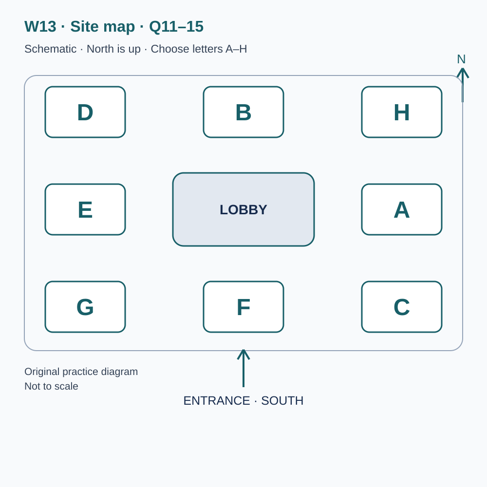
Q11. Welcome desk
Answer: ____
Q12. Planning studio
Answer: ____
Q13. Individual practice booths
Answer: ____
Q14. Review room
Answer: ____
Q15. Printing point
Answer: ____
Q16. How should a timed activity be interpreted?
- A. According to its stated purpose, response and decisions
- B. As a race in which speed always means quality
- C. As proof that slower participants think more deeply
Answer: ____
Q17. What should participants do with an unclear instruction?
- A. Invent another requirement
- B. Use the clarification process and identify the actual requirements
- C. Ask the leader to make every substantive choice
Answer: ____
Q18. At the end of the agreed working period, participants should
- A. continue silently and report the original time
- B. hide any unfinished response
- C. follow the stop or marking instruction and record the conditions honestly
Answer: ____
Q19. What makes another participant's allocation advice useful?
- A. Copying the minutes regardless of the task
- B. Understanding the task and conditions behind the advice
- C. Assuming all familiar and unfamiliar tasks need equal time
Answer: ____
Q20. What should the final learning note identify?
- A. A specific change to test and its supporting evidence
- B. Only the phrase better time management
- C. Every possible weakness to change immediately
Answer: ____
Part 3 — Reviewing a timed-task pilot
Q21–26: Match each proposal to the students' final positions at the end of that exchange. The tutor is not included. Write A, B, C or D. Letters may be reused.
- A Jade only
- B Leo only
- C Both students
- D Neither student
Q27–28 and Q29–30: Choose TWO different letters, A–E, for each pair. Write one letter in each numbered slot; either order is accepted. Each distinct correct choice earns one point, maximum two. Repeating a letter cannot earn two points. Submit no more than two letters.
Q21. At the END of this exchange, who supports: Using short work blocks with a purpose for each?
Answer: ____
Q22. At the END of this exchange, who supports: Stopping immediately at every block alarm in the next practice?
Answer: ____
Q23. At the END of this exchange, who supports: Reserving a separate buffer at the end?
Answer: ____
Q24. At the END of this exchange, who supports: Tracking every minute during the task?
Answer: ____
Q25. At the END of this exchange, who supports: Estimating stage time after reading the requirements?
Answer: ____
Q26. At the END of this exchange, who supports: Checking an unclear instruction aloud with a partner?
Answer: ____
Q27–28. Which TWO preparation actions are agreed?
- A. Underline every sentence
- B. Identify instruction verbs
- C. Begin with a decorative introduction
- D. Mark each required output
- E. Predict the eventual score
Answers: Q27 ____ · Q28 ____
Q29–30. Which TWO limitations affect the completed pilot?
- A. It covered only one afternoon
- B. The session was cancelled
- C. Paper records were inherently unreliable
- D. The room was unavailable
- E. The tasks differed in difficulty
Answers: Q29 ____ · Q30 ____
Part 4 — Investigating how study time is used
Q31–35: Complete the flow chart below. Q36–40: Complete the notes. Write NO MORE THAN TWO WORDS AND/OR A NUMBER for each answer, using words from the recording. Numeric notation may replace spoken numbers. Words or units already printed do not belong in the blank. The numbered text below repeats the SVG prompts for readability.
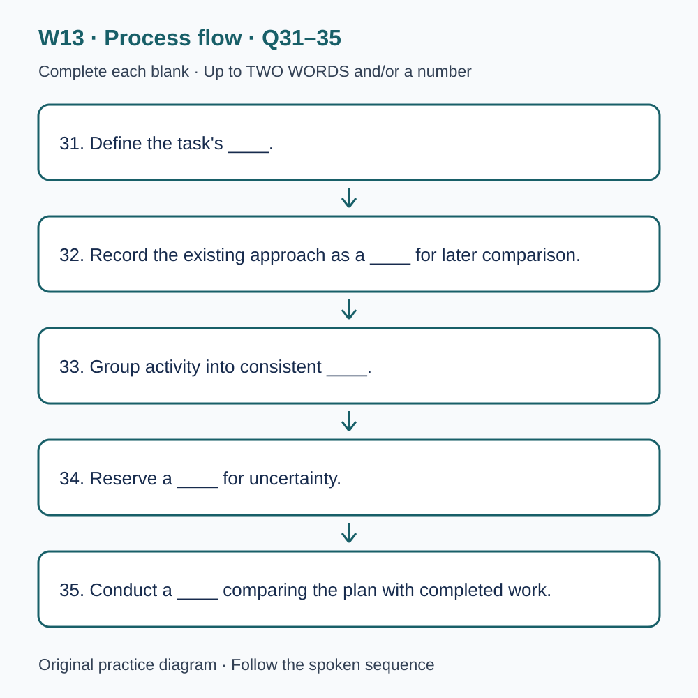
Q31. Define the task's ____.
Q32. Record the existing approach as a ____ for later comparison.
Q33. Group activity into consistent ____.
Q34. Reserve a ____ for uncertainty.
Q35. Conduct a ____ comparing the plan with completed work.
Q36. Record how ____ occur and how work resumes.
Q37. Task ____ can be purposeful rather than a planning failure.
Q38. ____ may influence a later task in a demanding sequence.
Q39. Time predictions should acknowledge ____.
Q40. Using a routine across different tasks raises the question of ____.
本周训练安排（音频批准后执行）
- Preview questions without the script：8 分钟。
- Future continuous first listen, including planned part pauses：32 分钟。
- Submit first answers and confidence, without a second play：8 分钟。
- Check answers and classify errors：20 分钟。
- Four Q-located intensive segments, 15 minutes each：60 分钟。
- Diagram and opinion retelling：15 分钟。
- Next-day retry of missed items：15 分钟。
合计 158 分钟；最多另用 22 分钟缓冲，总计不超过 180 分钟。暂停、回放与查词均计入精听预算，不能另行无限追加。当前实际已完成听力分钟数为 0。精听区段和步骤见 intensive.md；答案和脚本另页。
参考答案与证据（完成首次听力后再展开）
L-W13 — Answers and evidence
> 独立答案页。先提交首次答案，再看本页。当前缺音频，文本验题不能充当实听验收。
每个单空 1 分；双选各 2 分、答案顺序不限、按不同正确选项计分。接受形式仅做大小写和空白规范化；不做模糊词形推断。
Q1 — project planning
Accepted answers: project planning
Use the final confirmed detail in this exchange; the printed unit or date context is already supplied.
Evidence locator: Q01 (script.md; timestamps unavailable).
> Adviser: Learning hub bookings, good morning. Caller: Hello. I'd like to join one of your short workshops, but the list includes several kinds of planning. I'm not looking for advice about choosing a career. I need help organising a small project with a deadline. Adviser: Then project planning is the relevant workshop. Caller: Yes, please record project planning as my main interest. I can usually begin a task, but I sometimes spend too much time on the first section and leave the final checks unfinished. Adviser: The introduction looks at how to identify required work and divide the available time, including decisions about what to do when a stage takes longer than expected.
Q2 — 18
Accepted answers: 18 / 18th / eighteenth / the eighteenth / the 18th
Use the final confirmed detail in this exchange; the printed unit or date context is already supplied.
Evidence locator: Q02 (script.md; timestamps unavailable).
> Adviser: Which date were you considering? Caller: My colleague mentioned the eleventh of March, although I think she saw an early notice. Adviser: That was the provisional date. The confirmed workshop is on the eighteenth of March. Caller: The eighteenth is possible for us. I'll replace the earlier message in our group folder so people don't keep returning to it. Adviser: Thank you. We will repeat the date in your confirmation. Caller: I'll use that message when arranging the visit. A corrected date in one conversation can easily be missed if the calendar entry still comes from an older notice, especially when several people are making their own travel plans.
Q3 — 10.40
Accepted answers: 10.40 / 10:40 / ten forty
Use the final confirmed detail in this exchange; the printed unit or date context is already supplied.
Evidence locator: Q03 (script.md; timestamps unavailable).
> Caller: What time does the workshop start? Adviser: Ten forty in the morning. The hub opens at ten, but the first forty minutes are used for other arrivals and room preparation. Caller: Then ten forty is the time for our session, not ten o'clock. Adviser: Correct. Please arrive shortly before the workshop so you can check in without missing the introduction. Caller: I'll put the session time and the suggested arrival separately in our message. Adviser: That's helpful. Otherwise someone may treat an arrival reminder as the teaching start and become concerned that the leader is late, when the workshop is following exactly the timetable we agreed.
Q4 — 3
Accepted answers: 3 / three
Use the final confirmed detail in this exchange; the printed unit or date context is already supplied.
Evidence locator: Q04 (script.md; timestamps unavailable).
> Adviser: How many places do you need? Caller: There are five people involved in our project, but two are unavailable that morning. We need three places. Adviser: Three places are available. Caller: Good. The other two can read our notes afterwards, but we won't book seats for them just in case. Adviser: If the confirmed attendance changes, contact us before transferring a place to another person. We need a current list for the room and the introductory activity. Caller: I'll explain that to the group. It's easier to update one booking properly than to arrive with a different number and expect the leader to redesign the exercise on the spot.
Q5 — 36
Accepted answers: 36 / 36.00 / thirty-six / thirty six
Use the final confirmed detail in this exchange; the printed unit or date context is already supplied.
Evidence locator: Q05 (script.md; timestamps unavailable).
> Caller: What is the total charge for those places? Adviser: The introductory group rate for your three places is thirty-six pounds altogether. Caller: So thirty-six pounds is the booking total, rather than the price for each participant? Adviser: Exactly. It covers the session materials as well as the three places. Other workshops have different arrangements, so the confirmation will identify this introduction clearly. Caller: I'll give the total to the person managing our small training budget. Adviser: Please check the document before paying. If the number of places or the total doesn't match this conversation, let us correct the record rather than assume that an unexplained difference is an extra service you requested.
Q6 — timetable
Accepted answers: timetable / current timetable / the timetable
Use the final confirmed detail in this exchange; the printed unit or date context is already supplied.
Evidence locator: Q06 (script.md; timestamps unavailable).
> Caller: Should we bring an unfinished project to work on? Adviser: You can bring a brief description, but the item we specifically ask for is your current timetable. It helps you see where a proposed plan would fit among existing commitments. Caller: I'll bring the timetable I actually use, rather than create an ideal week for the exercise. Adviser: Good. A current timetable with awkward gaps can be more useful than a neat invented one. We supply the worksheets for the planning task. Caller: I'll tell the others that a description of the project is optional, while the timetable is the preparation they should definitely complete before the session.
Q7 — B
Accepted answers: B
The workshop makes choices and limits clearer; reducing scope or negotiating time may be necessary.
Evidence locator: Q07 (script.md; timestamps unavailable).
> Caller: Does the workshop promise that we'll finish every project faster? Adviser: No. Its purpose is to help you make a clearer allocation and notice where a plan is unrealistic. Sometimes the sensible result is to reduce the task or negotiate a deadline, rather than work more quickly. Caller: That sounds useful. I don't want our group to treat a planning exercise as proof that any amount of work can fit into an afternoon. Adviser: Exactly. You will practise making choices under a stated limit. The value lies in understanding those choices and their consequences, not in claiming that the limit disappears once somebody draws a sufficiently detailed chart.
Q8 — A
Accepted answers: A
Advance discussion establishes suitable arrangements and their limits.
Evidence locator: Q08 (script.md; timestamps unavailable).
> Caller: One participant finds long written instructions difficult to process in a busy room. Should we mention that now? Adviser: Please describe the practical requirement in your reply to the confirmation. The leader can explain how the instructions are presented and discuss what support is available. Caller: So we shouldn't simply assume that sitting near the front resolves it. Adviser: That's right. Different people need different arrangements, and we should explain any limits as well as possibilities. Caller: I'll ask the participant what would help and send that information. Adviser: Thank you. That gives us a useful basis for discussion without guessing from a general label or making a promise before we understand the situation.
Q9 — C
Accepted answers: C
The leader has a scheduled review, not a guaranteed extra individual appointment.
Evidence locator: Q09 (script.md; timestamps unavailable).
> Caller: Can we stay afterwards for individual advice about our whole project? Adviser: The workshop includes a short group review, but a personal consultation requires a separate booking. The leader cannot guarantee extra time after the session because another group may be waiting. Caller: We'll prepare one question that fits the workshop review, then enquire separately if we need a longer discussion. Adviser: That's a good approach. The review can help you identify what remains uncertain without becoming an unplanned appointment. Caller: I'll explain the difference to our colleagues, so they don't bring a large folder expecting somebody to examine every document before we leave.
Q10 — B
Accepted answers: B
The reference connects a change to the booking; public discussion does not update it.
Evidence locator: Q10 (script.md; timestamps unavailable).
> Caller: If our plans change, which contact route should we use? Adviser: Reply to the booking confirmation with the reference number. That connects the message to the correct workshop and attendance record. A note in the public discussion group may be useful to other participants, but it doesn't update the booking. Caller: I'll keep the confirmation accessible rather than save only a screenshot of the date. Adviser: Good. If the change is urgent and the session is close, use the telephone number printed in that message. Caller: Then our group will have one current set of instructions for both attending and making a change, instead of several incomplete versions.
Q11 — F
Accepted answers: F
Use the explicitly stated position relative to the lobby, not an earlier layout or adjacent area.
Evidence locator: Q11 (script.md; timestamps unavailable).
> Welcome to the learning hub. On the diagram, north is at the top and the entrance is on the southern edge. The lobby is the central reference point. Eight lettered spaces surround it, and their letters do not stand for room names. The welcome desk is directly south of the lobby, on the entrance axis. It isn't in either southern corner. Please check in there before joining an activity. Staff can confirm the room and tell you whether the group is ready. Even if you have attended before, the welcome desk may have information about a revised arrangement that isn't visible on the copy of the plan you brought.
Q12 — D
Accepted answers: D
Use the explicitly stated position relative to the lobby, not an earlier layout or adjacent area.
Evidence locator: Q12 (script.md; timestamps unavailable).
> The planning studio is in the north-west corner. An earlier room list placed it directly north of the lobby, but that space now serves another purpose. The studio is west of the northern central room and diagonally north-west of the lobby. Today's planning introduction takes place there. Tables are arranged for small groups to compare choices without treating one group's timetable as a model everybody must copy. Please leave bags where the leader indicates so the working surfaces remain available. If you need a different seating arrangement, ask before the task begins rather than moving a table into a position that blocks another group's access to the materials.
Q13 — A
Accepted answers: A
Use the explicitly stated position relative to the lobby, not an earlier layout or adjacent area.
Evidence locator: Q13 (script.md; timestamps unavailable).
> The individual practice booths are directly east of the lobby, level with its centre. They are not in the south-east room. Participants use them for short tasks that require a quieter setting, under the booking arrangement explained at reception. A booth that appears empty may be reserved for somebody who will arrive shortly, so please don't move in without checking. The booths aren't designed for a group discussion. If a task turns into a conversation with several people, ask staff about an appropriate room. The distinction helps us provide both individual work and collaborative activities without expecting one space to serve incompatible purposes at the same moment.
Q14 — H
Accepted answers: H
Use the explicitly stated position relative to the lobby, not an earlier layout or adjacent area.
Evidence locator: Q14 (script.md; timestamps unavailable).
> The review room is in the north-east corner, directly north of the practice booths. It is also east of the northern central room, since those two rooms share the same northern row on the diagram. Please use that distinction when explaining its location: being in the north-east corner of the whole map is different from being north-east of the room beside it. The review room supports small-group conversations after a task. Its purpose is to examine decisions and unresolved questions, not simply to announce which person finished first. A useful review can include an unfinished response if the participant can explain how the time was allocated and where the plan broke down.
Q15 — G
Accepted answers: G
Use the explicitly stated position relative to the lobby, not an earlier layout or adjacent area.
Evidence locator: Q15 (script.md; timestamps unavailable).
> The printing point is in the south-west area. It is west of the welcome desk and below the space directly west of the lobby. Please use the current worksheet version named by your leader. Several activities have similar-looking sheets, and a page left beside the printer may belong to another group. If a printed instruction seems inconsistent with the briefing, ask before beginning rather than quietly choose whichever version you prefer. The printing point is separate from the welcome desk, although staff can direct you if you need help finding it. Mark the south-west letter for this final location, and keep the plan available during the visit rather than relying on memory alone.
Q16 — A
Accepted answers: A
Different tasks investigate different processes; duration alone is not quality.
Evidence locator: Q16 (script.md; timestamps unavailable).
> A timed activity in this hub has a stated purpose. Sometimes the aim is to practise allocating attention; sometimes it is to identify a misunderstanding that remains even with enough time. The leader will explain which kind of task you are doing. Finishing quickly is not automatically evidence of a better response, especially if a required part has been omitted. Equally, taking longer does not prove that someone has thought more carefully. The review considers the response and the decisions behind it. Please avoid turning every timed exercise into a race, because that can change the behaviour the activity was intended to help you notice.
Q17 — B
Accepted answers: B
Clarification separates required work from assumptions about preferred presentation.
Evidence locator: Q17 (script.md; timestamps unavailable).
> When an instruction is unclear, use the clarification procedure before inventing an extra requirement. A participant may spend several minutes making a table because they assume every response needs one, even though the task asks only for a short explanation. Another may omit an essential comparison because the word comparison was overlooked. The useful first step is to identify what the instruction actually requires. The leader can clarify the procedure, but won't make every substantive choice for you. Learning to distinguish a requirement from a preferred style is part of the activity, and the distinction often matters more than adding another attractive feature to an already incomplete answer.
Q18 — C
Accepted answers: C
Timing must describe the work actually produced, including any agreed support.
Evidence locator: Q18 (script.md; timestamps unavailable).
> The visible timer marks the agreed working period. When it ends, follow the leader's instruction about stopping or marking your current position. Don't quietly continue writing and then describe the whole response as work completed within the original limit. An unfinished sentence can provide useful information about planning, whereas an inaccurate timing record hides the very problem the exercise is meant to reveal. If you need extra time for a separately agreed access arrangement, that arrangement will be recorded clearly. The purpose is an honest account of the conditions under which the work was produced, not a comparison that pretends every participant used an identical procedure when they did not.
Q19 — B
Accepted answers: B
An allocation depends on task demands and prior knowledge.
Evidence locator: Q19 (script.md; timestamps unavailable).
> During group review, explain one allocation decision and its consequence. You might describe why you spent longer checking the task, shortened an example or left a final minute for a required comparison. These are examples of reasoning to discuss, not universal rules for every task. A plan that works for a familiar short response may fail when the information is new or the required output changes. Listen for the condition under which another person's suggestion was useful. Copying the number of minutes without understanding the task can turn a helpful example into a misleading rule, especially when the example comes from a participant with different prior knowledge.
Q20 — A
Accepted answers: A
A concrete adjustment can be evaluated in the next attempt; useful features can be retained.
Evidence locator: Q20 (script.md; timestamps unavailable).
> Before leaving, record one change you intend to test and the evidence that motivates it. Avoid writing only that you need better time management. That statement is too broad to guide the next attempt. A more useful note identifies a particular stage, such as checking whether both requested outputs are present before polishing the wording. You should also record a feature of your approach that worked well enough to retain. The next session can then compare a deliberate adjustment with the earlier method. This makes the review a link between attempts, rather than a collection of general advice that feels sensible but never changes what happens during the task.
Q21 — C
Accepted answers: C
Final stance: Both students. Ignore an initial proposal if later withdrawn; the tutor is not an answer option.
Evidence locator: Q21 (script.md; timestamps unavailable).
> Tutor: You've brought the notes from last week's pilot, so let's use them to plan the next session. Jade: I suggest dividing the working period into short blocks with a specific purpose for each one. Leo: I resisted that before the pilot because I expected it to interrupt concentration. But our first section expanded until there was no checking time. I'll support blocks if each has a clear task. Tutor: Would the lengths be identical for every exercise? Jade: No, we'd allocate them after reading the requirements. Leo: That matters. I'm agreeing to purposeful blocks, not a fixed formula that we apply before we know what the task asks us to produce.
Q22 — A
Accepted answers: A
Final stance: Jade only. Ignore an initial proposal if later withdrawn; the tutor is not an answer option.
Evidence locator: Q22 (script.md; timestamps unavailable).
> Tutor: Jade also proposes stopping immediately when each block alarm sounds. Jade: I favour that for the next practice. Otherwise I'll keep telling myself that one more sentence won't matter. Leo: I'd allow the person to finish a short unit of thought and then move on. An abrupt stop could leave the later review difficult to follow. Jade: We could mark the point where the alarm sounded, but I still want an immediate stop in this exercise. Tutor: Leo, does marking the point change your preference? Leo: It would make the timing honest, but I still prefer a brief planned transition. Jade: Then we disagree about this rule, even though we both support using blocks.
Q23 — B
Accepted answers: B
Final stance: Leo only. Ignore an initial proposal if later withdrawn; the tutor is not an answer option.
Evidence locator: Q23 (script.md; timestamps unavailable).
> Tutor: What about a separate buffer at the end? Leo: I support reserving a small buffer for an unexpected problem. Our last plan allocated every minute before we knew whether the source material would be easy to interpret. Jade: I'd rather assign all the available time to the required stages and shorten a stage if needed. Otherwise I may treat the buffer as spare time to spend early. Tutor: Could a clearly labelled buffer reduce that temptation? Jade: Perhaps, but for my next attempt I still prefer the fully allocated plan. Leo: I continue to favour a reserve. We should test the difference rather than write that everyone needs the same arrangement.
Q24 — D
Accepted answers: D
Final stance: Neither student. Ignore an initial proposal if later withdrawn; the tutor is not an answer option.
Evidence locator: Q24 (script.md; timestamps unavailable).
> Tutor: Your draft tracking sheet asks participants to account for every minute. Why? Jade: I thought that detail would reveal where time disappeared. Looking at the sheet now, completing it could interrupt the task repeatedly. Leo: I don't support that level of tracking during the exercise. A few stage markers would be more manageable. Jade: Agreed. I'll remove the minute-by-minute requirement. Tutor: Are you abandoning all records? Jade: No, just that proposal. We can note stage starts and significant interruptions without narrating every minute. Leo: That gives us enough information for a useful review. Tutor: Good. Keep the revised decision distinct from the original idea when you write the final procedure.
Q25 — C
Accepted answers: C
Final stance: Both students. Ignore an initial proposal if later withdrawn; the tutor is not an answer option.
Evidence locator: Q25 (script.md; timestamps unavailable).
> Tutor: Should participants estimate the time needed before attempting the task? Jade: Yes. Comparing an estimate with actual stage times could show a recurring misunderstanding. Leo: I agree, provided the estimate is made after reading the requirements, not from the task's page length alone. Tutor: What would you do with a large difference? Leo: Ask what happened at the stage concerned. The estimate might be poor, but an unexpected interruption could also explain it. Jade: So we both support estimating first and reviewing the difference afterwards. We won't call every mismatch a planning failure without looking at the conditions. Tutor: That qualification will make the record more useful than a simple accurate-or-inaccurate label.
Q26 — B
Accepted answers: B
Final stance: Leo only. Ignore an initial proposal if later withdrawn; the tutor is not an answer option.
Evidence locator: Q26 (script.md; timestamps unavailable).
> Tutor: Leo suggests repeating any unclear instruction aloud before starting. Leo: I support that in our paired practice. Hearing my interpretation might reveal that I've missed a required output. Jade: I'd prefer writing a brief task summary. Reading aloud could become a routine repetition without checking meaning. Tutor: Could you ask the partner to explain what they heard? Leo: Yes, that is the version I have in mind. Jade: It improves the proposal, but I still prefer the written summary for my next attempt. Tutor: Then Leo supports the spoken check and Jade doesn't. Your different preferences can be tested, but don't report either procedure as agreed by both of you today.
Q27–28 — B, D
Accept unordered set: B, D. One point per distinct correct choice, maximum 2.
Instruction verbs and required outputs define the work; the other additions are rejected.
Evidence locator: Q27, Q28 (script.md; timestamps unavailable).
> Tutor: Which two preparation actions have you definitely selected for the shared procedure? Jade: First, identify the instruction verbs before dividing the time. A request to compare is different from a request to describe one example. Leo: Agreed. We should connect each verb with the work it requires, rather than just circle it mechanically. Tutor: Will participants underline every sentence? Leo: No, that would hide the important signals among too many marks. Jade: We also rejected beginning with a decorative introduction before checking the task. Tutor: Then identifying the instruction verbs is the first agreed action. It helps define the work, but doesn't replace making a decision about how to answer.
> Tutor: And the second agreed preparation action? Leo: Mark each required output. In the pilot, one person wrote a thoughtful explanation but omitted the requested short recommendation. Jade: Yes. A small checklist could make that omission visible before the final minute. Tutor: Are you adding a guess about the participant's eventual score to the preparation sheet? Jade: No. That doesn't tell us what the response must contain. Leo: The two selected actions are identifying instruction verbs and marking required outputs. Tutor: Good. Keep the list short enough to use. A preparation routine that consumes most of the working period can create another problem even if every individual step sounds useful in isolation.
Q29–30 — A, E
Accept unordered set: A, E. One point per distinct correct choice, maximum 2.
Limited observation period and unequal task difficulty restrict the interpretation; the other claimed obstacles did not apply.
Evidence locator: Q29, Q30 (script.md; timestamps unavailable).
> Tutor: What two limitations must appear in your account of last week's pilot? Leo: First, it covered only one afternoon. We don't know whether the same allocation problems would occur at another time or after more practice. Jade: Agreed. We can describe what happened without presenting it as a stable pattern across everyone's study routine. Tutor: Is using paper for the planning sheet itself a limitation? Jade: Not if the records were legible and complete. Leo: And the session did take place, so cancellation isn't relevant. Tutor: Exactly. A limitation should explain why the evidence may support a narrower claim, rather than simply list practical details that make the project look less impressive.
> Tutor: What is the second limitation? Jade: The tasks used in the two rounds differed in difficulty. We changed the planning method and also gave participants less familiar material in the second round. Leo: Yes, so a difference in completion cannot be attributed only to the new plan. Tutor: What would you do next? Leo: Use more comparable tasks or explain the remaining differences clearly. Jade: We should also preserve the pilot records rather than rewrite the plan as though we had controlled task difficulty from the start. Tutor: Then your two limitations are one afternoon and unequal task difficulty. The timer worked and the room was available, so neither is another obstacle in this pilot.
Q31 — goal
Accepted answers: goal / result / required result
Complete the named stage in the stated process order; retain any word already printed around the blank.
Evidence locator: Q31 (script.md; timestamps unavailable).
> Consider a fictional study of how a small student group uses a limited working period. The first stage defines the goal of the task. A goal should describe the required result, not merely the intention to work hard or remain busy. In this example, the task requires a comparison and a short recommendation, so both belong in the definition. If the group measures only the length of the final response, it may reward extra writing that does not fulfil the instruction. Defining the goal before observing work helps the team decide what successful completion means and prevents an attractive but incomplete product from silently replacing the result the task actually requested.
Q32 — baseline
Accepted answers: baseline / starting record / record / clear account
Complete the named stage in the stated process order; retain any word already printed around the blank.
Evidence locator: Q32 (script.md; timestamps unavailable).
> The second stage records a baseline using the group's existing approach. The baseline provides a starting record against which a later attempt can be described. It should include the task conditions and any obvious interruption, rather than present the first attempt as though it occurred in an empty, perfectly controlled setting. The group does not need to invent a sophisticated tracking system for this stage. It needs a clear account of what was done and when major stages began. A baseline is useful because its meaning can be examined later, not because the first observed session automatically represents every occasion on which the students work.
Q33 — categories
Accepted answers: categories
Complete the named stage in the stated process order; retain any word already printed around the blank.
Evidence locator: Q33 (script.md; timestamps unavailable).
> The third stage groups recorded activity into categories. The team agrees what counts as reading requirements, planning, producing the response and checking it. A category should describe an observable stage without requiring the observer to guess how deeply somebody was thinking. Some actions may serve more than one purpose, so the team records a rule for ambiguous cases. These categories make comparison possible only if they are applied consistently. A detailed chart can still mislead when one observer classifies rereading as checking and another classifies the same action as planning. The point of the categories is shared meaning, not simply a more colourful display of the session.
Q34 — buffer
Accepted answers: buffer / reserve / period
Complete the named stage in the stated process order; retain any word already printed around the blank.
Evidence locator: Q34 (script.md; timestamps unavailable).
> The fourth stage plans a buffer for uncertainty in the next attempt. A buffer is reserved time that has not already been promised to another stage. It can absorb a small unexpected delay without forcing the group to abandon every remaining requirement. The size of the reserve should relate to the task and the uncertainty the group has identified. Calling a period a buffer does not make it available twice. If participants spend it on an early section, it is no longer waiting at the end. The planning record should show when the reserve was used and what problem it addressed, so the review can assess whether it served a useful purpose.
Q35 — review
Accepted answers: review / useful review
Complete the named stage in the stated process order; retain any word already printed around the blank.
Evidence locator: Q35 (script.md; timestamps unavailable).
> The fifth stage conducts a review comparing the plan with the completed work. The review considers both the allocation and whether the required outputs are present. A participant may follow the timetable exactly while misunderstanding the task, or depart from the timetable for a well-explained reason and still produce a complete response. Those situations should not receive the same interpretation. The team asks which decision helped, which created difficulty and what evidence supports that judgement. A useful review preserves the distinction between a procedure that was followed and a procedure that worked for the intended goal. The two can coincide, but one does not automatically prove the other.
Q36 — interruptions
Accepted answers: interruptions / events
The corresponding evidence block supplies this distinction or qualification; the question retains the surrounding grammar.
Evidence locator: Q36 (script.md; timestamps unavailable).
> Interruptions should be recorded with enough context to interpret them. An interruption may be external, such as an announcement, or arise from the participant deciding to check an unrelated message. These events can affect available working time, but they should not all be treated as evidence of the same planning problem. The team needs to distinguish an unavoidable condition from a choice that might be changed in a later attempt. It should also avoid collecting unnecessary details about the message or the person involved. The useful information concerns how the task was interrupted and how the participant resumed it, not a complete account of everything happening around the student.
Q37 — switching
Accepted answers: switching / transitions / transition
The corresponding evidence block supplies this distinction or qualification; the question retains the surrounding grammar.
Evidence locator: Q37 (script.md; timestamps unavailable).
> Switching between tasks can also complicate the record. A person may move from reading to writing and back because the task requires it, rather than because the plan failed. The team should describe the transitions before judging them. Some switching may be purposeful, while repeated movement caused by a forgotten requirement may reveal a different issue. A simple count of transitions cannot distinguish those explanations on its own. The review can use the participant's account alongside the observation, while keeping the two sources separate. The aim is to understand whether a transition supported the task, not to assume that uninterrupted activity is always the best use of time.
Q38 — fatigue
Accepted answers: fatigue
The corresponding evidence block supplies this distinction or qualification; the question retains the surrounding grammar.
Evidence locator: Q38 (script.md; timestamps unavailable).
> Fatigue is another possible influence on performance during a session. If the later task follows several demanding activities, a change in completion may reflect more than the planning method being tested. The team should describe the sequence and allow its interpretation to remain qualified. It cannot establish the effect of fatigue merely by noticing that somebody looked tired. A short account of the conditions may help identify a question for a better-designed later study. This is one reason a small pilot should not produce a universal recommendation about the ideal number of minutes for every stage. The observed result belongs to a particular task, group and sequence of activities.
Q39 — uncertainty
Accepted answers: uncertainty / the uncertainty / variability / the variability
The corresponding evidence block supplies this distinction or qualification; the question retains the surrounding grammar.
Evidence locator: Q39 (script.md; timestamps unavailable).
> Time estimates should include uncertainty. A prediction of exactly twelve minutes can look more authoritative than the information behind it justifies. The group may find it more useful to state an expected range and explain which features could make the stage take longer. A range is not permission to ignore the overall limit. It is a way to recognise variability while deciding where a reserve or an early check would be helpful. The review should compare the estimate with what happened and examine the reason for a difference. Replacing one overly precise guess with another after each attempt would not by itself improve the group's understanding of the work.
Q40 — transfer
Accepted answers: transfer
The corresponding evidence block supplies this distinction or qualification; the question retains the surrounding grammar.
Evidence locator: Q40 (script.md; timestamps unavailable).
> Finally, the team considers transfer to other tasks. A routine that helped with a familiar short comparison may need adjustment for a longer task with new information or a different required output. The stage review records the conditions under which the routine appeared useful and identifies what should be tested next. It should not advertise one successful attempt as proof that the same timetable will work everywhere. Transfer is a question about what carries across and what must change. By making that question explicit, the group can preserve a useful principle, such as checking required outputs, while adapting the allocation to the actual demands of the next task.
完整脚本（提前阅读会失去陌生题首答机会）
L-W13 — Time, priorities and a workable plan: transcript
> 原创虚构练习，非真题；音频缺失。仅供完成首次作答后的核对或文字审阅。Q 标记与角色名不属于朗读正文。
Part 1 — Booking a planning workshop
Q1 evidence block
Adviser: Learning hub bookings, good morning.
Caller: Hello. I'd like to join one of your short workshops, but the list includes several kinds of planning. I'm not looking for advice about choosing a career. I need help organising a small project with a deadline.
Adviser: Then project planning is the relevant workshop.
Caller: Yes, please record project planning as my main interest. I can usually begin a task, but I sometimes spend too much time on the first section and leave the final checks unfinished.
Adviser: The introduction looks at how to identify required work and divide the available time, including decisions about what to do when a stage takes longer than expected.
Q2 evidence block
Adviser: Which date were you considering?
Caller: My colleague mentioned the eleventh of March, although I think she saw an early notice.
Adviser: That was the provisional date. The confirmed workshop is on the eighteenth of March.
Caller: The eighteenth is possible for us. I'll replace the earlier message in our group folder so people don't keep returning to it.
Adviser: Thank you. We will repeat the date in your confirmation.
Caller: I'll use that message when arranging the visit. A corrected date in one conversation can easily be missed if the calendar entry still comes from an older notice, especially when several people are making their own travel plans.
Q3 evidence block
Caller: What time does the workshop start?
Adviser: Ten forty in the morning. The hub opens at ten, but the first forty minutes are used for other arrivals and room preparation.
Caller: Then ten forty is the time for our session, not ten o'clock.
Adviser: Correct. Please arrive shortly before the workshop so you can check in without missing the introduction.
Caller: I'll put the session time and the suggested arrival separately in our message.
Adviser: That's helpful. Otherwise someone may treat an arrival reminder as the teaching start and become concerned that the leader is late, when the workshop is following exactly the timetable we agreed.
Q4 evidence block
Adviser: How many places do you need?
Caller: There are five people involved in our project, but two are unavailable that morning. We need three places.
Adviser: Three places are available.
Caller: Good. The other two can read our notes afterwards, but we won't book seats for them just in case.
Adviser: If the confirmed attendance changes, contact us before transferring a place to another person. We need a current list for the room and the introductory activity.
Caller: I'll explain that to the group. It's easier to update one booking properly than to arrive with a different number and expect the leader to redesign the exercise on the spot.
Q5 evidence block
Caller: What is the total charge for those places?
Adviser: The introductory group rate for your three places is thirty-six pounds altogether.
Caller: So thirty-six pounds is the booking total, rather than the price for each participant?
Adviser: Exactly. It covers the session materials as well as the three places. Other workshops have different arrangements, so the confirmation will identify this introduction clearly.
Caller: I'll give the total to the person managing our small training budget.
Adviser: Please check the document before paying. If the number of places or the total doesn't match this conversation, let us correct the record rather than assume that an unexplained difference is an extra service you requested.
Q6 evidence block
Caller: Should we bring an unfinished project to work on?
Adviser: You can bring a brief description, but the item we specifically ask for is your current timetable. It helps you see where a proposed plan would fit among existing commitments.
Caller: I'll bring the timetable I actually use, rather than create an ideal week for the exercise.
Adviser: Good. A current timetable with awkward gaps can be more useful than a neat invented one. We supply the worksheets for the planning task.
Caller: I'll tell the others that a description of the project is optional, while the timetable is the preparation they should definitely complete before the session.
Q7 evidence block
Caller: Does the workshop promise that we'll finish every project faster?
Adviser: No. Its purpose is to help you make a clearer allocation and notice where a plan is unrealistic. Sometimes the sensible result is to reduce the task or negotiate a deadline, rather than work more quickly.
Caller: That sounds useful. I don't want our group to treat a planning exercise as proof that any amount of work can fit into an afternoon.
Adviser: Exactly. You will practise making choices under a stated limit. The value lies in understanding those choices and their consequences, not in claiming that the limit disappears once somebody draws a sufficiently detailed chart.
Q8 evidence block
Caller: One participant finds long written instructions difficult to process in a busy room. Should we mention that now?
Adviser: Please describe the practical requirement in your reply to the confirmation. The leader can explain how the instructions are presented and discuss what support is available.
Caller: So we shouldn't simply assume that sitting near the front resolves it.
Adviser: That's right. Different people need different arrangements, and we should explain any limits as well as possibilities.
Caller: I'll ask the participant what would help and send that information.
Adviser: Thank you. That gives us a useful basis for discussion without guessing from a general label or making a promise before we understand the situation.
Q9 evidence block
Caller: Can we stay afterwards for individual advice about our whole project?
Adviser: The workshop includes a short group review, but a personal consultation requires a separate booking. The leader cannot guarantee extra time after the session because another group may be waiting.
Caller: We'll prepare one question that fits the workshop review, then enquire separately if we need a longer discussion.
Adviser: That's a good approach. The review can help you identify what remains uncertain without becoming an unplanned appointment.
Caller: I'll explain the difference to our colleagues, so they don't bring a large folder expecting somebody to examine every document before we leave.
Q10 evidence block
Caller: If our plans change, which contact route should we use?
Adviser: Reply to the booking confirmation with the reference number. That connects the message to the correct workshop and attendance record. A note in the public discussion group may be useful to other participants, but it doesn't update the booking.
Caller: I'll keep the confirmation accessible rather than save only a screenshot of the date.
Adviser: Good. If the change is urgent and the session is close, use the telephone number printed in that message.
Caller: Then our group will have one current set of instructions for both attending and making a change, instead of several incomplete versions.
Part 2 — Learning hub orientation
Q11 evidence block
Hub host: Welcome to the learning hub. On the diagram, north is at the top and the entrance is on the southern edge. The lobby is the central reference point. Eight lettered spaces surround it, and their letters do not stand for room names. The welcome desk is directly south of the lobby, on the entrance axis. It isn't in either southern corner. Please check in there before joining an activity. Staff can confirm the room and tell you whether the group is ready. Even if you have attended before, the welcome desk may have information about a revised arrangement that isn't visible on the copy of the plan you brought.
Q12 evidence block
Hub host: The planning studio is in the north-west corner. An earlier room list placed it directly north of the lobby, but that space now serves another purpose. The studio is west of the northern central room and diagonally north-west of the lobby. Today's planning introduction takes place there. Tables are arranged for small groups to compare choices without treating one group's timetable as a model everybody must copy. Please leave bags where the leader indicates so the working surfaces remain available. If you need a different seating arrangement, ask before the task begins rather than moving a table into a position that blocks another group's access to the materials.
Q13 evidence block
Hub host: The individual practice booths are directly east of the lobby, level with its centre. They are not in the south-east room. Participants use them for short tasks that require a quieter setting, under the booking arrangement explained at reception. A booth that appears empty may be reserved for somebody who will arrive shortly, so please don't move in without checking. The booths aren't designed for a group discussion. If a task turns into a conversation with several people, ask staff about an appropriate room. The distinction helps us provide both individual work and collaborative activities without expecting one space to serve incompatible purposes at the same moment.
Q14 evidence block
Hub host: The review room is in the north-east corner, directly north of the practice booths. It is also east of the northern central room, since those two rooms share the same northern row on the diagram. Please use that distinction when explaining its location: being in the north-east corner of the whole map is different from being north-east of the room beside it. The review room supports small-group conversations after a task. Its purpose is to examine decisions and unresolved questions, not simply to announce which person finished first. A useful review can include an unfinished response if the participant can explain how the time was allocated and where the plan broke down.
Q15 evidence block
Hub host: The printing point is in the south-west area. It is west of the welcome desk and below the space directly west of the lobby. Please use the current worksheet version named by your leader. Several activities have similar-looking sheets, and a page left beside the printer may belong to another group. If a printed instruction seems inconsistent with the briefing, ask before beginning rather than quietly choose whichever version you prefer. The printing point is separate from the welcome desk, although staff can direct you if you need help finding it. Mark the south-west letter for this final location, and keep the plan available during the visit rather than relying on memory alone.
Q16 evidence block
Hub host: A timed activity in this hub has a stated purpose. Sometimes the aim is to practise allocating attention; sometimes it is to identify a misunderstanding that remains even with enough time. The leader will explain which kind of task you are doing. Finishing quickly is not automatically evidence of a better response, especially if a required part has been omitted. Equally, taking longer does not prove that someone has thought more carefully. The review considers the response and the decisions behind it. Please avoid turning every timed exercise into a race, because that can change the behaviour the activity was intended to help you notice.
Q17 evidence block
Hub host: When an instruction is unclear, use the clarification procedure before inventing an extra requirement. A participant may spend several minutes making a table because they assume every response needs one, even though the task asks only for a short explanation. Another may omit an essential comparison because the word comparison was overlooked. The useful first step is to identify what the instruction actually requires. The leader can clarify the procedure, but won't make every substantive choice for you. Learning to distinguish a requirement from a preferred style is part of the activity, and the distinction often matters more than adding another attractive feature to an already incomplete answer.
Q18 evidence block
Hub host: The visible timer marks the agreed working period. When it ends, follow the leader's instruction about stopping or marking your current position. Don't quietly continue writing and then describe the whole response as work completed within the original limit. An unfinished sentence can provide useful information about planning, whereas an inaccurate timing record hides the very problem the exercise is meant to reveal. If you need extra time for a separately agreed access arrangement, that arrangement will be recorded clearly. The purpose is an honest account of the conditions under which the work was produced, not a comparison that pretends every participant used an identical procedure when they did not.
Q19 evidence block
Hub host: During group review, explain one allocation decision and its consequence. You might describe why you spent longer checking the task, shortened an example or left a final minute for a required comparison. These are examples of reasoning to discuss, not universal rules for every task. A plan that works for a familiar short response may fail when the information is new or the required output changes. Listen for the condition under which another person's suggestion was useful. Copying the number of minutes without understanding the task can turn a helpful example into a misleading rule, especially when the example comes from a participant with different prior knowledge.
Q20 evidence block
Hub host: Before leaving, record one change you intend to test and the evidence that motivates it. Avoid writing only that you need better time management. That statement is too broad to guide the next attempt. A more useful note identifies a particular stage, such as checking whether both requested outputs are present before polishing the wording. You should also record a feature of your approach that worked well enough to retain. The next session can then compare a deliberate adjustment with the earlier method. This makes the review a link between attempts, rather than a collection of general advice that feels sensible but never changes what happens during the task.
Part 3 — Reviewing a timed-task pilot
Q21 evidence block
Tutor: You've brought the notes from last week's pilot, so let's use them to plan the next session.
Jade: I suggest dividing the working period into short blocks with a specific purpose for each one.
Leo: I resisted that before the pilot because I expected it to interrupt concentration. But our first section expanded until there was no checking time. I'll support blocks if each has a clear task.
Tutor: Would the lengths be identical for every exercise?
Jade: No, we'd allocate them after reading the requirements.
Leo: That matters. I'm agreeing to purposeful blocks, not a fixed formula that we apply before we know what the task asks us to produce.
Q22 evidence block
Tutor: Jade also proposes stopping immediately when each block alarm sounds.
Jade: I favour that for the next practice. Otherwise I'll keep telling myself that one more sentence won't matter.
Leo: I'd allow the person to finish a short unit of thought and then move on. An abrupt stop could leave the later review difficult to follow.
Jade: We could mark the point where the alarm sounded, but I still want an immediate stop in this exercise.
Tutor: Leo, does marking the point change your preference?
Leo: It would make the timing honest, but I still prefer a brief planned transition.
Jade: Then we disagree about this rule, even though we both support using blocks.
Q23 evidence block
Tutor: What about a separate buffer at the end?
Leo: I support reserving a small buffer for an unexpected problem. Our last plan allocated every minute before we knew whether the source material would be easy to interpret.
Jade: I'd rather assign all the available time to the required stages and shorten a stage if needed. Otherwise I may treat the buffer as spare time to spend early.
Tutor: Could a clearly labelled buffer reduce that temptation?
Jade: Perhaps, but for my next attempt I still prefer the fully allocated plan.
Leo: I continue to favour a reserve. We should test the difference rather than write that everyone needs the same arrangement.
Q24 evidence block
Tutor: Your draft tracking sheet asks participants to account for every minute. Why?
Jade: I thought that detail would reveal where time disappeared. Looking at the sheet now, completing it could interrupt the task repeatedly.
Leo: I don't support that level of tracking during the exercise. A few stage markers would be more manageable.
Jade: Agreed. I'll remove the minute-by-minute requirement.
Tutor: Are you abandoning all records?
Jade: No, just that proposal. We can note stage starts and significant interruptions without narrating every minute.
Leo: That gives us enough information for a useful review.
Tutor: Good. Keep the revised decision distinct from the original idea when you write the final procedure.
Q25 evidence block
Tutor: Should participants estimate the time needed before attempting the task?
Jade: Yes. Comparing an estimate with actual stage times could show a recurring misunderstanding.
Leo: I agree, provided the estimate is made after reading the requirements, not from the task's page length alone.
Tutor: What would you do with a large difference?
Leo: Ask what happened at the stage concerned. The estimate might be poor, but an unexpected interruption could also explain it.
Jade: So we both support estimating first and reviewing the difference afterwards. We won't call every mismatch a planning failure without looking at the conditions.
Tutor: That qualification will make the record more useful than a simple accurate-or-inaccurate label.
Q26 evidence block
Tutor: Leo suggests repeating any unclear instruction aloud before starting.
Leo: I support that in our paired practice. Hearing my interpretation might reveal that I've missed a required output.
Jade: I'd prefer writing a brief task summary. Reading aloud could become a routine repetition without checking meaning.
Tutor: Could you ask the partner to explain what they heard?
Leo: Yes, that is the version I have in mind.
Jade: It improves the proposal, but I still prefer the written summary for my next attempt.
Tutor: Then Leo supports the spoken check and Jade doesn't. Your different preferences can be tested, but don't report either procedure as agreed by both of you today.
Q27 evidence block
Tutor: Which two preparation actions have you definitely selected for the shared procedure?
Jade: First, identify the instruction verbs before dividing the time. A request to compare is different from a request to describe one example.
Leo: Agreed. We should connect each verb with the work it requires, rather than just circle it mechanically.
Tutor: Will participants underline every sentence?
Leo: No, that would hide the important signals among too many marks.
Jade: We also rejected beginning with a decorative introduction before checking the task.
Tutor: Then identifying the instruction verbs is the first agreed action. It helps define the work, but doesn't replace making a decision about how to answer.
Q28 evidence block
Tutor: And the second agreed preparation action?
Leo: Mark each required output. In the pilot, one person wrote a thoughtful explanation but omitted the requested short recommendation.
Jade: Yes. A small checklist could make that omission visible before the final minute.
Tutor: Are you adding a guess about the participant's eventual score to the preparation sheet?
Jade: No. That doesn't tell us what the response must contain.
Leo: The two selected actions are identifying instruction verbs and marking required outputs.
Tutor: Good. Keep the list short enough to use. A preparation routine that consumes most of the working period can create another problem even if every individual step sounds useful in isolation.
Q29 evidence block
Tutor: What two limitations must appear in your account of last week's pilot?
Leo: First, it covered only one afternoon. We don't know whether the same allocation problems would occur at another time or after more practice.
Jade: Agreed. We can describe what happened without presenting it as a stable pattern across everyone's study routine.
Tutor: Is using paper for the planning sheet itself a limitation?
Jade: Not if the records were legible and complete.
Leo: And the session did take place, so cancellation isn't relevant.
Tutor: Exactly. A limitation should explain why the evidence may support a narrower claim, rather than simply list practical details that make the project look less impressive.
Q30 evidence block
Tutor: What is the second limitation?
Jade: The tasks used in the two rounds differed in difficulty. We changed the planning method and also gave participants less familiar material in the second round.
Leo: Yes, so a difference in completion cannot be attributed only to the new plan.
Tutor: What would you do next?
Leo: Use more comparable tasks or explain the remaining differences clearly.
Jade: We should also preserve the pilot records rather than rewrite the plan as though we had controlled task difficulty from the start.
Tutor: Then your two limitations are one afternoon and unequal task difficulty. The timer worked and the room was available, so neither is another obstacle in this pilot.
Part 4 — Investigating how study time is used
Q31 evidence block
Lecturer: Consider a fictional study of how a small student group uses a limited working period. The first stage defines the goal of the task. A goal should describe the required result, not merely the intention to work hard or remain busy. In this example, the task requires a comparison and a short recommendation, so both belong in the definition. If the group measures only the length of the final response, it may reward extra writing that does not fulfil the instruction. Defining the goal before observing work helps the team decide what successful completion means and prevents an attractive but incomplete product from silently replacing the result the task actually requested.
Q32 evidence block
Lecturer: The second stage records a baseline using the group's existing approach. The baseline provides a starting record against which a later attempt can be described. It should include the task conditions and any obvious interruption, rather than present the first attempt as though it occurred in an empty, perfectly controlled setting. The group does not need to invent a sophisticated tracking system for this stage. It needs a clear account of what was done and when major stages began. A baseline is useful because its meaning can be examined later, not because the first observed session automatically represents every occasion on which the students work.
Q33 evidence block
Lecturer: The third stage groups recorded activity into categories. The team agrees what counts as reading requirements, planning, producing the response and checking it. A category should describe an observable stage without requiring the observer to guess how deeply somebody was thinking. Some actions may serve more than one purpose, so the team records a rule for ambiguous cases. These categories make comparison possible only if they are applied consistently. A detailed chart can still mislead when one observer classifies rereading as checking and another classifies the same action as planning. The point of the categories is shared meaning, not simply a more colourful display of the session.
Q34 evidence block
Lecturer: The fourth stage plans a buffer for uncertainty in the next attempt. A buffer is reserved time that has not already been promised to another stage. It can absorb a small unexpected delay without forcing the group to abandon every remaining requirement. The size of the reserve should relate to the task and the uncertainty the group has identified. Calling a period a buffer does not make it available twice. If participants spend it on an early section, it is no longer waiting at the end. The planning record should show when the reserve was used and what problem it addressed, so the review can assess whether it served a useful purpose.
Q35 evidence block
Lecturer: The fifth stage conducts a review comparing the plan with the completed work. The review considers both the allocation and whether the required outputs are present. A participant may follow the timetable exactly while misunderstanding the task, or depart from the timetable for a well-explained reason and still produce a complete response. Those situations should not receive the same interpretation. The team asks which decision helped, which created difficulty and what evidence supports that judgement. A useful review preserves the distinction between a procedure that was followed and a procedure that worked for the intended goal. The two can coincide, but one does not automatically prove the other.
Q36 evidence block
Lecturer: Interruptions should be recorded with enough context to interpret them. An interruption may be external, such as an announcement, or arise from the participant deciding to check an unrelated message. These events can affect available working time, but they should not all be treated as evidence of the same planning problem. The team needs to distinguish an unavoidable condition from a choice that might be changed in a later attempt. It should also avoid collecting unnecessary details about the message or the person involved. The useful information concerns how the task was interrupted and how the participant resumed it, not a complete account of everything happening around the student.
Q37 evidence block
Lecturer: Switching between tasks can also complicate the record. A person may move from reading to writing and back because the task requires it, rather than because the plan failed. The team should describe the transitions before judging them. Some switching may be purposeful, while repeated movement caused by a forgotten requirement may reveal a different issue. A simple count of transitions cannot distinguish those explanations on its own. The review can use the participant's account alongside the observation, while keeping the two sources separate. The aim is to understand whether a transition supported the task, not to assume that uninterrupted activity is always the best use of time.
Q38 evidence block
Lecturer: Fatigue is another possible influence on performance during a session. If the later task follows several demanding activities, a change in completion may reflect more than the planning method being tested. The team should describe the sequence and allow its interpretation to remain qualified. It cannot establish the effect of fatigue merely by noticing that somebody looked tired. A short account of the conditions may help identify a question for a better-designed later study. This is one reason a small pilot should not produce a universal recommendation about the ideal number of minutes for every stage. The observed result belongs to a particular task, group and sequence of activities.
Q39 evidence block
Lecturer: Time estimates should include uncertainty. A prediction of exactly twelve minutes can look more authoritative than the information behind it justifies. The group may find it more useful to state an expected range and explain which features could make the stage take longer. A range is not permission to ignore the overall limit. It is a way to recognise variability while deciding where a reserve or an early check would be helpful. The review should compare the estimate with what happened and examine the reason for a difference. Replacing one overly precise guess with another after each attempt would not by itself improve the group's understanding of the work.
Q40 evidence block
Lecturer: Finally, the team considers transfer to other tasks. A routine that helped with a familiar short comparison may need adjustment for a longer task with new information or a different required output. The stage review records the conditions under which the routine appeared useful and identifies what should be tested next. It should not advertise one successful attempt as proof that the same timetable will work everywhere. Transfer is a question about what carries across and what must change. By making that question explicit, the group can preserve a useful principle, such as checking required outputs, while adapting the allocation to the actual demands of the next task.
精听与复盘步骤（须有已验收配套音频）
L-W13 — Q-based intensive listening
> 音频尚未生成；以下是未来执行安排，不是已完成记录。不要用文本阅读替代首次听力。无实际时间戳。
周预算：预览 8 + 首听 32 + 交首次答案 8 + 查错 20 + 精听 60 + 复述 15 + 次日重做 15 = 158 分钟。含暂停/回放；加用缓冲最多 22 分钟，总计≤180。
四段各 15 分钟：先定位并不看稿听 2 分钟；分句回放、写关键词 4 分钟；对照稿找误听与改口 3 分钟；遮稿跟读和复述 3 分钟；重答并记录错误原因 3 分钟。不得把同一段回放另算在周预算之外。
Q2–3 — 15 minutes
定位 script.md 的 Q2 evidence block 起至 Q3 evidence block 结束（约 205 词）；音频起止为 null。
目标：Separate revised date, opening time, session start and arrival margin.
留痕：首次答案 → 听到的原词 → 干扰来源 → 修正答案 → 一句英文复述。
Q12–14 — 15 minutes
定位 script.md 的 Q12 evidence block 起至 Q14 evidence block 结束（约 327 词）；音频起止为 null。
目标：Reject the old studio location and verify the two different reference points for the review room.
留痕：首次答案 → 听到的原词 → 干扰来源 → 修正答案 → 一句英文复述。
Q23–24 — 15 minutes
定位 script.md 的 Q23 evidence block 起至 Q24 evidence block 结束（约 209 词）；音频起止为 null。
目标：Track a continuing buffer disagreement and withdrawal of minute-by-minute logging.
留痕：首次答案 → 听到的原词 → 干扰来源 → 修正答案 → 一句英文复述。
Q38–40 — 15 minutes
定位 script.md 的 Q38 evidence block 起至 Q40 evidence block 结束（约 326 词）；音频起止为 null。
目标：Connect fatigue, uncertainty and transfer to a conditional rather than universal timing recommendation.
留痕：首次答案 → 听到的原词 → 干扰来源 → 修正答案 → 一句英文复述。
15 分钟复述与 15 分钟次日重做
复述：5 分钟遮住答案口述地图五个位置；5 分钟按人说明三人讨论的最终观点；5 分钟复述流程及一个限制。次日：8 分钟仅重做错题对应 Q 段；4 分钟核对；3 分钟更新错误记录。若仍超时，留下未完成项，不把额外时间隐去。
许可说明
原创文字和图示：RayXBuilds and contributors，CC BY 4.0。本页不包含配套音频；现有基础VOA媒体不能代替本套题的录音。
回到顶部
U49 第14周听力题面与复盘（音频待补）
本页提供已核验的原创题目、参考答案和脚本。配套完整音频尚未验收，当前只能预览题面；不能进行有效的首次听力测试，也不能把读稿作答计作听力成绩或已完成一套听力。
请先保留首次作答机会：批准音频就绪前，不要展开下方答案和脚本。若已读稿，请标记为熟悉材料，之后的练习不能充当陌生题诊断。页面阅读标记只代表看过文字，不代表完成听力。
本材料非雅思真题、非标准化模考，不换算正式分数。计划分钟数不是实测音频时长；学习记录、正式测评和真人反馈须另行完成。
学生题面
L-W14 — Answering the brief without exceeding the evidence
> 原创 IELTS-style 技能练习，非真题、非标准化模考，不可换算正式分数。当前只有文字和题目，音频未生成，不能计作已完成听力套题。
共四部分、40 个计分空，每空 1 分。正式首次作答须等待批准音频，先不要打开 script.md 或 answers.md。朗读前先看题；只听一遍后提交首次答案及信心等级，再做精听。当前只能预览题面，不能把读稿作答记作听力成绩。
Part 1 — Booking a communication workshop
Q1–6: Complete the notes. Write NO MORE THAN TWO WORDS AND/OR A NUMBER for each answer, using words from the recording. Numeric notation may replace spoken numbers. Do not repeat a printed unit. Q7–10: Choose ONE letter, A, B or C.
Q1. Workshop selected: ____
Q2. Confirmed day of June: ____
Q3. Teaching start (p.m.): ____
Q4. Number of places: ____
Q5. Total group fee: £____
Q6. Essential document to bring: ____
Q7. What should participants expect from the workshop?
- A. A commissioned complete rewrite
- B. Support in making and explaining their own revisions
- C. A guaranteed finished publication
Answer: ____
Q8. Which photographs should the group bring?
- A. Material it may use for the intended purpose, with conditions clear
- B. Any private image that makes the page attractive
- C. Images assumed cleared for every later use by workshop attendance
Answer: ____
Q9. How should a digital-format requirement be discussed?
- A. Assume a larger printed sheet is the only option
- B. Assume every alternative is guaranteed
- C. Describe the practical format need in advance
Answer: ____
Q10. Which joining instructions should the group use?
- A. A combination of convenient details from old versions
- B. The current numbered confirmation and direct revision
- C. The first public notice regardless of later updates
Answer: ____
Part 2 — Design centre orientation
Q11–15: Label the map. Write ONE letter, A–H, for each destination. Three letters are unused. Q16–20: Choose ONE letter, A, B or C.
Q11. Reception
Answer: ____
Q12. Briefing room
Answer: ____
Q13. Sample display
Answer: ____
Q14. Reader-testing room
Answer: ____
Q15. Resource collection point
Answer: ____
Q16. What should participants distinguish in a brief?
- A. Compulsory requirements from possible suggestions
- B. Every example as a compulsory instruction
- C. Requirements as optional design preferences
Answer: ____
Q17. What should determine the allocation of page space?
- A. The amount of interesting history available
- B. The intended reader and action
- C. A rule that every section must have equal length
Answer: ____
Q18. If a figure lacks a reliable source, the team should
- A. invent a plausible number
- B. hide the gap to complete the page
- C. mark the gap and qualify, remove or investigate the claim
Answer: ____
Q19. What should happen after a reader opens the wrong section?
- A. Assume the heading caused it
- B. Record the action and ask a neutral follow-up
- C. Tell the reader what criticism the team wants
Answer: ____
Q20. What belongs in the final review?
- A. A comparison with the brief and a record of remaining limitations
- B. A declaration that improved appearance means completion
- C. Only spelling changes, regardless of missing outputs
Answer: ____
Part 3 — Reviewing a public-information draft
Q21–26: Match each proposal to the students' final positions at the end of that exchange. The tutor is not included. Write A, B, C or D. Letters may be reused.
- A Saira only
- B Tom only
- C Both students
- D Neither student
Q27–28 and Q29–30: Choose TWO different letters, A–E, for each pair. Write one letter in each numbered slot; either order is accepted. Each distinct correct choice earns one point, maximum two. Repeating a letter cannot earn two points. Submit no more than two letters.
Q21. At the END of this exchange, who supports: Including every fact in the background pack?
Answer: ____
Q22. At the END of this exchange, who supports: Stating the intended audience explicitly?
Answer: ____
Q23. At the END of this exchange, who supports: Using an invented attendance figure as an established fact?
Answer: ____
Q24. At the END of this exchange, who supports: Requesting clarification of the length criterion before revision?
Answer: ____
Q25. At the END of this exchange, who supports: Adding a short opening summary?
Answer: ____
Q26. At the END of this exchange, who supports: Keeping a nearby uncertainty label with shortened wording if appropriate?
Answer: ____
Q27–28. Which TWO revision checks are agreed?
- A. Use all supplied background notes
- B. Add an unrequested decorative chart
- C. Separate requirements from suggestions
- D. Link each section to a stated criterion
- E. Predict a formal score for each section
Answers: Q27 ____ · Q28 ____
Q29–30. Which TWO limitations affect the reader sessions?
- A. Volunteers were not from the intended audience
- B. Black-and-white printing necessarily made the task invalid
- C. The testing room was unavailable
- D. Both sessions were cancelled
- E. The client changed the brief between sessions
Answers: Q29 ____ · Q30 ____
Part 4 — Turning a brief into a justified response
Q31–35: Complete the flow chart below. Q36–40: Complete the notes. Write NO MORE THAN TWO WORDS AND/OR A NUMBER for each answer, using words from the recording. Numeric notation may replace spoken numbers. Words or units already printed do not belong in the blank. The numbered text below repeats the SVG prompts for readability.
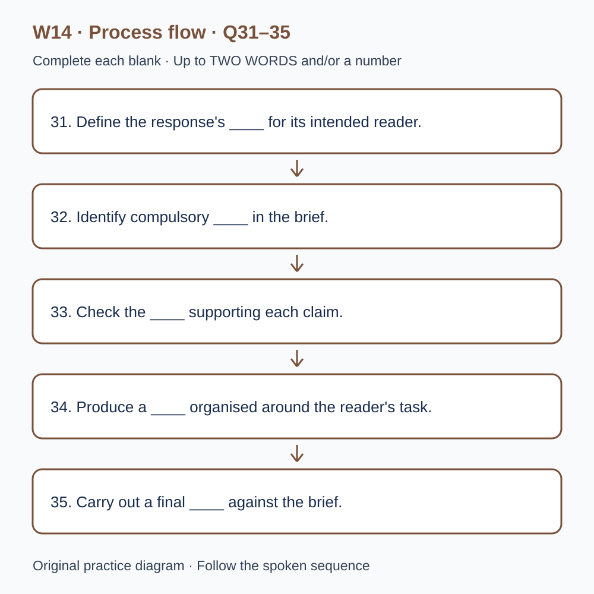
Q31. Define the response's ____ for its intended reader.
Q32. Identify compulsory ____ in the brief.
Q33. Check the ____ supporting each claim.
Q34. Produce a ____ organised around the reader's task.
Q35. Carry out a final ____ against the brief.
Q36. Information's connection to the task is its ____.
Q37. The relative attention given to points concerns ____.
Q38. Record key ____ that affect the response.
Q39. State the ____ on what the evidence can establish.
Q40. Plan a ____ to check whether the revision worked.
本周训练安排（音频批准后执行）
- Preview questions without the script：8 分钟。
- Future continuous first listen, including planned part pauses：32 分钟。
- Submit first answers and confidence, without a second play：8 分钟。
- Check answers and classify errors：20 分钟。
- Four Q-located intensive segments, 15 minutes each：60 分钟。
- Diagram and opinion retelling：15 分钟。
- Next-day retry of missed items：15 分钟。
合计 158 分钟；最多另用 22 分钟缓冲，总计不超过 180 分钟。暂停、回放与查词均计入精听预算，不能另行无限追加。当前实际已完成听力分钟数为 0。精听区段和步骤见 intensive.md；答案和脚本另页。
参考答案与证据（完成首次听力后再展开）
L-W14 — Answers and evidence
> 独立答案页。先提交首次答案，再看本页。当前缺音频，文本验题不能充当实听验收。
每个单空 1 分；双选各 2 分、答案顺序不限、按不同正确选项计分。接受形式仅做大小写和空白规范化；不做模糊词形推断。
Q1 — leaflet design
Accepted answers: leaflet design
Use the final confirmed detail in this exchange; the printed unit or date context is already supplied.
Evidence locator: Q01 (script.md; timestamps unavailable).
> Coordinator: Communication centre, how can I help? Applicant: Our neighbourhood group wants advice on preparing a short information sheet. We saw workshops on public speaking and leaflet design, and the second one seems more relevant. Coordinator: Is leaflet design the subject you want on the booking? Applicant: Yes, leaflet design. We're not trying to produce a campaign video or a presentation. We need a page that helps visitors understand a local activity and decide what to do next. Coordinator: Then that workshop should address the kind of decisions you're making. It covers the relationship between a brief, the reader's needs and the information a finished page actually supplies.
Q2 — 24
Accepted answers: 24 / 24th / twenty-fourth / the twenty-fourth / twenty fourth / the 24th
Use the final confirmed detail in this exchange; the printed unit or date context is already supplied.
Evidence locator: Q02 (script.md; timestamps unavailable).
> Coordinator: The available date is the twenty-fourth of June. Applicant: I wrote down the seventeenth after a meeting with our group. Was that wrong? Coordinator: It was the original proposed date, but we moved the workshop after confirming the room. The twenty-fourth is now fixed. Applicant: That gives us a little more preparation time. I'll update the shared calendar and remove the old notice from the folder. Coordinator: Please use the confirmation we send today for any travel arrangements. Applicant: I will. Otherwise people may remember that the date changed without remembering which version was the final one, especially if both notices remain visible in the same place.
Q3 — 2.10
Accepted answers: 2.10 / 2:10 / 02.10 / 02:10 / 14.10 / 14:10 / two ten
Use the final confirmed detail in this exchange; the printed unit or date context is already supplied.
Evidence locator: Q03 (script.md; timestamps unavailable).
> Applicant: What time should we expect the teaching to begin? Coordinator: Two ten in the afternoon. You can check in shortly before that, but two ten is the session start. Applicant: I had assumed two thirty because another workshop uses that time. Coordinator: This one is earlier. We need the opening minutes to discuss the example brief before participants begin revising it. Applicant: Then I'll write two ten clearly and avoid copying the other event's timetable. Coordinator: Thank you. Similar workshop names can lead people to transfer details from one booking to another, so the confirmation identifies both the subject and the time rather than relying on a general programme heading.
Q4 — 4
Accepted answers: 4 / four
Use the final confirmed detail in this exchange; the printed unit or date context is already supplied.
Evidence locator: Q04 (script.md; timestamps unavailable).
> Coordinator: How many people will attend? Applicant: Six volunteers helped with the current leaflet, but only four can come to the workshop. Please reserve four places. Coordinator: Four are available. Will those participants be able to bring the other volunteers' questions? Applicant: Yes, we'll collect questions beforehand, but we won't treat the two absent volunteers as extra attendees. Coordinator: That works. If the attendance changes, tell us rather than making an informal substitution without updating the booking. Applicant: I'll keep one current list. It's useful for our group as well, because we need to know who will report back and who still needs the notes from the session afterwards.
Q5 — 48
Accepted answers: 48 / 48.00 / forty-eight / forty eight
Use the final confirmed detail in this exchange; the printed unit or date context is already supplied.
Evidence locator: Q05 (script.md; timestamps unavailable).
> Applicant: What is the total fee? Coordinator: For those four places, the community-group total is forty-eight pounds. Applicant: Forty-eight for the whole booking? Coordinator: Yes. It isn't forty-eight for each person. The fee includes the example materials used during the workshop. Applicant: I'll tell our treasurer the total and the number of places together. Coordinator: Please check both on the confirmation before paying. If the document shows something different, ask us to correct it. Applicant: We will. A clear booking record matters when the person arranging the event and the person making the payment weren't both present for the same conversation.
Q6 — brief
Accepted answers: brief / the brief / a brief
Use the final confirmed detail in this exchange; the printed unit or date context is already supplied.
Evidence locator: Q06 (script.md; timestamps unavailable).
> Applicant: Should we bring printed copies of our current leaflet? Coordinator: You may, but the essential document is the brief that your group was given. We need to see what the page was supposed to achieve before discussing its appearance. Applicant: I'll bring the brief, including the audience and required information. Coordinator: Good. If the brief contains an unresolved question, leave that visible rather than quietly fill it with an assumption. Applicant: That could be useful in itself. We've spent time disagreeing about colours when the more important problem may be that we haven't agreed what visitors need to learn from the page or which details are compulsory.
Q7 — B
Accepted answers: B
The workshop teaches a method and discusses examples; it is not a commissioned design service.
Evidence locator: Q07 (script.md; timestamps unavailable).
> Applicant: Will the leader rewrite the whole leaflet for us? Coordinator: The workshop helps participants make and explain their own revisions. The leader can clarify the method and discuss examples, but it isn't a commissioned design service. Applicant: So we should expect to leave with a better approach and some tested changes, rather than a guaranteed finished publication. Coordinator: Exactly. The amount completed depends partly on the material you bring and the questions that arise. Applicant: That sounds reasonable. We'd rather understand why a change is useful than accept a polished page we can't adapt when the activity details change next month.
Q8 — A
Accepted answers: A
Workshop use does not itself establish public publication rights.
Evidence locator: Q08 (script.md; timestamps unavailable).
> Applicant: Can we use photographs from an earlier event in the exercise? Coordinator: Bring only material your group is entitled to use for the intended workshop purpose, and keep any conditions visible. The session doesn't give new permission to publish somebody else's work. Applicant: We can use our own prepared sample and discuss a separate permission question if necessary. Coordinator: Good. The leader can help you identify where a decision is needed, but don't assume that including an image in a draft settles the rights for every later audience. Applicant: We'll distinguish material for the learning exercise from material already cleared for our public leaflet, so the two don't become confused.
Q9 — C
Accepted answers: C
The team checks available formats and limits against the actual requirement.
Evidence locator: Q09 (script.md; timestamps unavailable).
> Applicant: If we have an accessibility requirement, should that be recorded with the booking? Coordinator: Yes. Describe the practical requirement in your reply so we can discuss the format of the materials and available arrangements. Applicant: One volunteer uses a larger text setting and may prefer a digital copy. Coordinator: Tell us that, and we will explain what can be supplied. We shouldn't make a general promise before checking the particular format. Applicant: I'll send the details rather than assume a larger printed page is the only option. Coordinator: Thank you. The conversation should help the participant decide whether the arrangement works, while giving the team enough time to prepare what has been agreed.
Q10 — B
Accepted answers: B
One current version prevents conflicting room and entrance information.
Evidence locator: Q10 (script.md; timestamps unavailable).
> Applicant: How do we know which version of the joining instructions to use? Coordinator: The numbered confirmation is the current version. If a practical detail changes, we'll send a direct revision with the same booking reference. Please replace the earlier instruction rather than combine parts of two messages. Applicant: I'll keep the latest version in our shared folder and mark the previous one as superseded. Coordinator: That's helpful. If anything in the update is unclear, ask before the day. Applicant: We will. A short clarification now is easier than four people arriving at different entrances because each retained a different fragment of the instructions.
Q11 — G
Accepted answers: G
Use the explicitly stated position relative to the court, not an earlier layout or adjacent area.
Evidence locator: Q11 (script.md; timestamps unavailable).
> Welcome to the design centre. The diagram places north at the top, with the entrance on the southern edge and the open court in the centre. The eight lettered spaces are destinations around that fixed landmark. Reception is directly south of the court, on the entrance axis. It isn't the room in the south-east corner. Please check in there before joining your workshop. Staff can confirm the group and identify any practical update. A familiar room number from a previous visit may no longer apply, so use today's instructions rather than assuming every activity with a similar title takes place in the same part of the centre.
Q12 — D
Accepted answers: D
Use the explicitly stated position relative to the court, not an earlier layout or adjacent area.
Evidence locator: Q12 (script.md; timestamps unavailable).
> The briefing room is directly north of the court. On the diagram it occupies the northern central position between the two northern corners. Your workshop begins there with the example task and the criteria for the exercise. The room is not in the north-west corner, where an earlier programme placed this introduction. We moved the briefing to the northern central room so the group can use a larger shared display. Please wait for the leader before moving the chairs, since the arrangement supports the opening comparison. If you need another position to see the material comfortably, ask so that the group can adjust it deliberately.
Q13 — C
Accepted answers: C
Use the explicitly stated position relative to the court, not an earlier layout or adjacent area.
Evidence locator: Q13 (script.md; timestamps unavailable).
> The sample display is directly west of the court, level with its centre. It is not in the south-west area. The display includes several versions of the same information page, with notes about the different briefs they were designed to answer. A page that works well for one audience may be unsuitable for another, so please read the brief beside each example before deciding which version is best. The display is intended to support comparison, not to provide a single style that everyone must copy. You can note a useful feature while also explaining the condition that makes it useful, such as the reader's prior knowledge or the action the page asks them to take.
Q14 — A
Accepted answers: A
Use the explicitly stated position relative to the court, not an earlier layout or adjacent area.
Evidence locator: Q14 (script.md; timestamps unavailable).
> The reader-testing room is in the north-east corner, directly east of the briefing room. Both are on the same northern row, so the testing room is not north-east of the briefing room itself. It is north of the space directly east of the court. In that room, participants can try an agreed task with a volunteer reader and observe how the page is interpreted. The exercise is short and has a defined purpose. Please don't add personal questions simply because a reader is willing to talk. The leader will explain what is recorded and how the comments connect to the design question being investigated.
Q15 — E
Accepted answers: E
Use the explicitly stated position relative to the court, not an earlier layout or adjacent area.
Evidence locator: Q15 (script.md; timestamps unavailable).
> The resource collection point is in the south-east corner. It lies south of the space directly east of the court and east of reception. You can collect the current worksheet and any approved sample materials there after the briefing. Please check the version label rather than taking the first loose sheet you find. A page from an earlier workshop may ask for a different output or use different criteria. If the supply of a material runs out, tell the helper instead of removing something from another group's working table. The collection point completes the five locations needed for today's activity: reception, briefing, sample display, reader testing and resources.
Q16 — A
Accepted answers: A
Requirements and suggestions have different roles; genuine ambiguity calls for clarification.
Evidence locator: Q16 (script.md; timestamps unavailable).
> A design brief can contain both requirements and suggestions. Requirements describe what the response must achieve or include; suggestions may offer one possible way of doing it. Treating every suggestion as compulsory can overload a short page. Treating a requirement as optional can leave an attractive page unable to do its job. During the workshop, identify the wording that supports your interpretation and ask about a genuine ambiguity. The exercise isn't a test of how confidently you can defend a first guess. It is an opportunity to make the relationship between the brief and your response visible, so a later reviewer can understand why a particular choice was made.
Q17 — B
Accepted answers: B
Relevance depends on purpose and reader, not merely on interesting or accurate facts.
Evidence locator: Q17 (script.md; timestamps unavailable).
> When reviewing a page, begin with its intended reader and action. A visitor who needs to find a meeting point may not benefit from a long history of the organisation at the top of the page. That history could be interesting, but the task may require it to be shortened or moved. This doesn't mean background information is always unnecessary. It means relevance depends on the purpose and the reader's situation. The workshop asks you to justify the allocation of space, not merely reduce the number of words. A short page can still waste attention if its most prominent information does not help the reader complete the intended action.
Q18 — C
Accepted answers: C
Uncertainty should remain visible; hypothetical examples must not become apparent facts.
Evidence locator: Q18 (script.md; timestamps unavailable).
> If a figure in your draft lacks a reliable source, mark the gap instead of inventing a plausible number. A realistic-looking figure can be especially misleading because readers may assume someone has checked it. You can explain what information is missing and how it affects the claim. In some cases the responsible revision is to remove or qualify a statement until evidence is available. The leader won't reward a complete-looking page at the expense of accuracy. This principle also applies to examples: a hypothetical illustration should remain identified as hypothetical, rather than becoming an apparent report of an event simply because it makes the layout easier to finish.
Q19 — B
Accepted answers: B
The observation and its possible explanation must be distinguished.
Evidence locator: Q19 (script.md; timestamps unavailable).
> Reader testing should distinguish what a person does from your explanation of why they do it. If a reader opens the wrong section, record the action before deciding that the heading caused the problem. They may have misunderstood the task, overlooked another cue or brought an expectation from a previous page. A neutral follow-up question can help clarify their reasoning. Avoid telling the reader which feature you hope they will criticise. The value of the exercise lies in evidence about their interpretation, not in collecting agreement with a revision your group already prefers. Even a useful observation needs careful handling before it supports a specific design conclusion.
Q20 — A
Accepted answers: A
A clearer draft may still omit required information; the next check should address an identified uncertainty.
Evidence locator: Q20 (script.md; timestamps unavailable).
> At the end of the workshop, compare your revised page with the original brief. Check each required output and note any remaining limitation. A page can be clearer than its first version while still omitting an essential detail. You should also identify one revision whose effect remains uncertain and explain how you would investigate it next. The closing review is not a request to declare the page perfect. It is a record of what changed, why it changed and what still needs attention before the material is used with its intended audience. That record makes a later update easier to justify than a page whose decisions survive only in one volunteer's memory.
Q21 — A
Accepted answers: A
Final stance: Saira only. Ignore an initial proposal if later withdrawn; the tutor is not an answer option.
Evidence locator: Q21 (script.md; timestamps unavailable).
> Tutor: You completed both reader sessions last week. Today we're reviewing the draft before the next round. Saira: I still think the leaflet should include every fact in the background pack. Otherwise we might leave out something the client considers important. Tom: I disagree. We need to select information against the stated purpose, not assume every supplied fact is required. Tutor: The proposal is to include all the background facts. Saira: Then I support it, perhaps in a compact section. Tom: I don't. A shorter relevant response would serve this brief better. Tutor: Keep the disagreement clear; it concerns selection from the supplied material, not whether accuracy matters.
Q22 — C
Accepted answers: C
Final stance: Both students. Ignore an initial proposal if later withdrawn; the tutor is not an answer option.
Evidence locator: Q22 (script.md; timestamps unavailable).
> Tutor: Should the page state its intended audience explicitly? Tom: At first I thought the audience would be obvious from the examples. The reader sessions showed that it wasn't. I support a short audience statement now. Saira: I agree. It would help visitors decide whether the activity is relevant before they work through the details. Tutor: What should that statement avoid? Saira: It shouldn't promise that the activity suits every possible need. Tom: Exactly. We can identify the group the page is written for and give a route for other enquiries. Tutor: Then both of you support the statement, with a boundary that prevents a useful introduction from turning into an unsupported universal promise.
Q23 — D
Accepted answers: D
Final stance: Neither student. Ignore an initial proposal if later withdrawn; the tutor is not an answer option.
Evidence locator: Q23 (script.md; timestamps unavailable).
> Tutor: One draft includes a number for expected attendance, but I can't find its source. Tom: I inserted an estimate because the space looked empty without a figure. That was a poor reason. Saira: I don't support inventing the number. We should state that attendance isn't yet confirmed or remove the claim. Tom: Agreed. I'll delete the invented figure and mark the information gap. Tutor: Are you withdrawing the proposal to include a plausible estimate as though it were established? Tom: Yes, completely. Saira: We can discuss a clearly labelled scenario if the task genuinely needs one, but that would be a separate decision. Tutor: Good. The present draft should not disguise uncertainty as a precise-looking fact.
Q24 — B
Accepted answers: B
Final stance: Tom only. Ignore an initial proposal if later withdrawn; the tutor is not an answer option.
Evidence locator: Q24 (script.md; timestamps unavailable).
> Tutor: The brief has an ambiguous criterion about length. Should you ask the client to clarify it before the next revision? Tom: I support asking. We might waste the whole available period editing to a limit the client didn't intend. Saira: I'd state a reasonable assumption and produce a draft now, because the deadline is close and the client may not reply quickly. Tutor: Could you send the question while starting reversible work? Tom: Yes, but I still want clarification requested rather than silently settling the criterion ourselves. Saira: I understand, but for this next draft I would proceed with the explicit assumption. Tutor: Then Tom supports the clarification request, while Saira retains a different approach to the time constraint.
Q25 — A
Accepted answers: A
Final stance: Saira only. Ignore an initial proposal if later withdrawn; the tutor is not an answer option.
Evidence locator: Q25 (script.md; timestamps unavailable).
> Tutor: Saira proposes a short opening summary. Saira: I support it because visitors could see the main action before reading the detail. Tom: I prefer going directly to headed steps. A summary might repeat information and use space we need for a condition that readers missed. Tutor: Would a single sentence change your view? Tom: It might reduce the cost, but I still favour the headed steps without an extra summary. Saira: I continue to support one short sentence at the start. Tutor: Your reasons concern the distribution of attention and space. Neither proposal is automatically correct for every leaflet, so record what your next test would need to show to distinguish them.
Q26 — C
Accepted answers: C
Final stance: Both students. Ignore an initial proposal if later withdrawn; the tutor is not an answer option.
Evidence locator: Q26 (script.md; timestamps unavailable).
> Tutor: What about keeping the uncertainty label beside the comparison figure? Tom: We should keep it. Moving the qualification to a distant note would make the main figure look more certain than the evidence allows. Saira: I agree. I originally wanted a cleaner panel, but the label changes how the comparison should be read. Tutor: Can the wording be shortened? Saira: Yes, provided the limitation remains clear. Tom: That's the version I support too. Tutor: Then you both favour retaining a nearby qualification, not necessarily retaining every word of the current label. Saira: Exactly. We can improve readability without removing information that affects the meaning of the claim.
Q27–28 — C, D
Accept unordered set: C, D. One point per distinct correct choice, maximum 2.
The shared checks address brief interpretation and output coverage; the other options are not agreed actions.
Evidence locator: Q27, Q28 (script.md; timestamps unavailable).
> Tutor: Which two checks are agreed for the revision procedure? Tom: First, separate requirements from suggestions in the brief. In the earlier draft we treated a suggested example as compulsory and used too much space on it. Saira: Agreed. We should mark the wording that makes a requirement binding in this task. Tutor: Are you deciding to use every note in the background pack? Tom: No, that remains a separate disagreement, not an agreed check. Saira: And adding an unrequested decorative chart isn't part of the procedure. Tutor: Good. The first check concerns the brief itself and should happen before you spend time polishing a response to a requirement that may not exist.
> Tutor: What is the second agreed check? Saira: Link each section of the draft to a stated criterion. That would reveal a section that looks useful but doesn't answer any part of the task. Tom: Yes, and it could also reveal a criterion with no corresponding section. Tutor: Will you predict a formal score for every section? Tom: No. This is a local review against the brief, not a standardised assessment. Saira: The agreed checks are separating requirements from suggestions and connecting the draft to the criteria. Tutor: Keep that record short enough to use under the deadline. A checking process can itself become inefficient if it demands a long explanation of every minor formatting choice.
Q29–30 — A, E
Accept unordered set: A, E. One point per distinct correct choice, maximum 2.
Audience mismatch and a changed requirement restrict causal claims about wording revisions.
Evidence locator: Q29, Q30 (script.md; timestamps unavailable).
> Tutor: Which two limitations affect what you can claim from last week's reader sessions? Saira: First, we didn't recruit people from the intended audience. The volunteers were classmates who already knew some of the terminology. Tom: Agreed. Their responses can identify difficulties, but success with them doesn't prove that first-time visitors will understand the page. Tutor: Is printing in black and white necessarily a limitation here? Tom: No, the material remained readable and the task didn't depend on colour. Saira: We also had access to the testing room, so its absence isn't an obstacle we experienced. Tutor: State the audience mismatch specifically rather than describing the whole pilot as useless because it was small.
> Tutor: What is the second limitation? Tom: The client changed part of the brief between the two sessions. We revised the page against a new requirement, not just against the first readers' comments. Saira: Yes. A difference between the sessions can't be attributed only to our wording changes. Tutor: What should the report preserve? Saira: Both versions of the brief and a clear account of when the requirement changed. Tom: We shouldn't rewrite the earlier brief to make the development look tidier. Tutor: Exactly. The two limitations are the audience mismatch and the changed brief. The sessions occurred as scheduled, so a cancellation isn't another explanation for the results you observed.
Q31 — purpose
Accepted answers: purpose
Complete the named stage in the stated process order; retain any word already printed around the blank.
Evidence locator: Q31 (script.md; timestamps unavailable).
> This lecture follows a fictional team responding to a short communication brief. The first stage defines the purpose. A purpose describes what the response should help its intended reader understand or do. A broad topic, such as a community event, is not yet a purpose. The team needs to specify whether the page explains an activity, enables a booking, compares options or supports another action. That decision shapes the information selected and the prominence given to it. Without a clear purpose, a page can become a collection of accurate facts that never helps the reader complete the task. Defining the purpose is therefore a practical design decision, not merely an introductory sentence in a planning document.
Q32 — requirements
Accepted answers: requirements / elements
Complete the named stage in the stated process order; retain any word already printed around the blank.
Evidence locator: Q32 (script.md; timestamps unavailable).
> The second stage identifies the requirements in the brief. Requirements are the elements the response must satisfy, including any stated limits or conditions. The team distinguishes them from suggestions and examples, which may illustrate a possible approach without making it compulsory. If a requirement is genuinely ambiguous, the team records the question and seeks clarification when feasible. If it must proceed before receiving an answer, it makes the assumption visible. This is different from quietly choosing the easiest interpretation and later claiming it was the only possible reading. A clear requirements record helps the team explain why something appears in the response and why another attractive addition may reasonably be left out.
Q33 — evidence
Accepted answers: evidence / information / support
Complete the named stage in the stated process order; retain any word already printed around the blank.
Evidence locator: Q33 (script.md; timestamps unavailable).
> The third stage checks the evidence for the claims the response will make. Evidence may include supplied records, verified practical details or clearly identified observations from a local test. The team connects each important claim with the information supporting it. A statement can sound plausible while lacking the support needed for the intended use. Where a gap remains, the team can qualify the claim, obtain further information or leave it out. Inventing a precise figure is not a suitable way to make the page look complete. The purpose of this stage is to ensure that the response's apparent confidence does not exceed the information actually available to the people preparing it.
Q34 — draft
Accepted answers: draft / working version / version
Complete the named stage in the stated process order; retain any word already printed around the blank.
Evidence locator: Q34 (script.md; timestamps unavailable).
> The fourth stage produces a draft organised around the reader's task. A draft is a working version, so it can expose a problem without being treated as a final publication. The team chooses an order that makes the required action and its conditions easy to find. It also leaves room for the information that limits a claim, rather than treating every qualification as an inconvenient extra. During drafting, a team may discover that the brief asks for more than the available space can reasonably contain. That discovery should prompt a decision about priorities or clarification, not an attempt to solve every conflict by making the text smaller until the page becomes difficult to read.
Q35 — validation
Accepted answers: validation / check / validation check
Complete the named stage in the stated process order; retain any word already printed around the blank.
Evidence locator: Q35 (script.md; timestamps unavailable).
> The fifth stage carries out a final validation against the brief. Validation is a check that the proposed response actually addresses the required task under the stated conditions. It includes looking for omitted outputs, unsupported claims and qualifications separated from the statements they limit. The check should not focus only on spelling or appearance, although those may also need attention. A polished response can still fail to answer the instruction. The team records any remaining issue rather than marking the whole task complete because the page has reached a convenient stopping point. This makes the decision to release or revise the draft easier to justify from evidence about what the response contains.
Q36 — relevance
Accepted answers: relevance
The corresponding evidence block supplies this distinction or qualification; the question retains the surrounding grammar.
Evidence locator: Q36 (script.md; timestamps unavailable).
> Relevance concerns the connection between information and the task. A detail may be accurate and interesting without helping the intended reader make the required decision. The team should ask why that detail deserves space in this response, rather than assume accuracy alone makes it necessary. The answer may depend on context: background information that is essential for a new visitor could be redundant for an experienced member. Relevance is therefore not a universal list of facts to include or exclude. It is a judgement linked to purpose, audience and the action being supported. Making that link explicit helps reviewers disagree productively instead of treating a preference for more or fewer words as a complete argument.
Q37 — proportionality
Accepted answers: proportionality
The corresponding evidence block supplies this distinction or qualification; the question retains the surrounding grammar.
Evidence locator: Q37 (script.md; timestamps unavailable).
> Proportionality concerns how much attention a point receives relative to its role in the task. A minor optional detail should not occupy so much space that a central requirement becomes difficult to find. At the same time, a short qualification can be crucial if it changes the meaning of a prominent claim. The team considers position, length and emphasis together. Reducing every section by the same percentage may preserve an existing imbalance rather than improve it. A proportionate response allocates attention according to the work the information needs to do. It doesn't necessarily make all sections equal, and it doesn't assume that the longest section is always the most important one.
Q38 — assumptions
Accepted answers: assumptions
The corresponding evidence block supplies this distinction or qualification; the question retains the surrounding grammar.
Evidence locator: Q38 (script.md; timestamps unavailable).
> Assumptions should remain visible when they affect the response. A team might assume that readers know a term, can access a link or will encounter the page before a certain date. Those assumptions may be reasonable for a defined audience, but they should not disappear from the reasoning merely because they make the design easier. The review asks which assumptions have been checked and which still need investigation. If a key assumption proves wrong, the appropriate revision may involve the structure of the task rather than a minor wording change. Recording assumptions helps the next reviewer understand why a design worked under one set of conditions and failed under another.
Q39 — limitations
Accepted answers: limitations / boundary
The corresponding evidence block supplies this distinction or qualification; the question retains the surrounding grammar.
Evidence locator: Q39 (script.md; timestamps unavailable).
> Limitations describe what the evidence or response cannot establish. A small reader test may reveal a confusing label without proving that a revised page will work for every visitor. The team should state that boundary clearly and connect it to the actual method used. A general apology for having limited time is less useful than explaining who was tested, what they were asked to do and which conditions differed from the intended use. Limitations do not require abandoning every practical decision. They help the team choose a next step that is proportionate to what it knows, such as another small test rather than an immediate broad claim that the design problem has been solved.
Q40 — follow-up
Accepted answers: follow-up / followup / follow up / later check / check
The corresponding evidence block supplies this distinction or qualification; the question retains the surrounding grammar.
Evidence locator: Q40 (script.md; timestamps unavailable).
> Finally, the team plans a follow-up to check whether the revision worked under the intended conditions. A follow-up is a later check, with a question and a defined way to gather evidence. It should not simply ask whether everyone liked the new appearance. The team might examine whether readers now find a required condition or can explain the action they need to take. The review records when the check will happen and which result would lead to another revision. This connects the present decision to future learning without pretending that the future result is already known. A completed draft can therefore remain part of an unfinished investigation whose next stage is clear and manageable.
完整脚本（提前阅读会失去陌生题首答机会）
L-W14 — Answering the brief without exceeding the evidence: transcript
> 原创虚构练习，非真题；音频缺失。仅供完成首次作答后的核对或文字审阅。Q 标记与角色名不属于朗读正文。
Part 1 — Booking a communication workshop
Q1 evidence block
Coordinator: Communication centre, how can I help?
Applicant: Our neighbourhood group wants advice on preparing a short information sheet. We saw workshops on public speaking and leaflet design, and the second one seems more relevant.
Coordinator: Is leaflet design the subject you want on the booking?
Applicant: Yes, leaflet design. We're not trying to produce a campaign video or a presentation. We need a page that helps visitors understand a local activity and decide what to do next.
Coordinator: Then that workshop should address the kind of decisions you're making. It covers the relationship between a brief, the reader's needs and the information a finished page actually supplies.
Q2 evidence block
Coordinator: The available date is the twenty-fourth of June.
Applicant: I wrote down the seventeenth after a meeting with our group. Was that wrong?
Coordinator: It was the original proposed date, but we moved the workshop after confirming the room. The twenty-fourth is now fixed.
Applicant: That gives us a little more preparation time. I'll update the shared calendar and remove the old notice from the folder.
Coordinator: Please use the confirmation we send today for any travel arrangements.
Applicant: I will. Otherwise people may remember that the date changed without remembering which version was the final one, especially if both notices remain visible in the same place.
Q3 evidence block
Applicant: What time should we expect the teaching to begin?
Coordinator: Two ten in the afternoon. You can check in shortly before that, but two ten is the session start.
Applicant: I had assumed two thirty because another workshop uses that time.
Coordinator: This one is earlier. We need the opening minutes to discuss the example brief before participants begin revising it.
Applicant: Then I'll write two ten clearly and avoid copying the other event's timetable.
Coordinator: Thank you. Similar workshop names can lead people to transfer details from one booking to another, so the confirmation identifies both the subject and the time rather than relying on a general programme heading.
Q4 evidence block
Coordinator: How many people will attend?
Applicant: Six volunteers helped with the current leaflet, but only four can come to the workshop. Please reserve four places.
Coordinator: Four are available. Will those participants be able to bring the other volunteers' questions?
Applicant: Yes, we'll collect questions beforehand, but we won't treat the two absent volunteers as extra attendees.
Coordinator: That works. If the attendance changes, tell us rather than making an informal substitution without updating the booking.
Applicant: I'll keep one current list. It's useful for our group as well, because we need to know who will report back and who still needs the notes from the session afterwards.
Q5 evidence block
Applicant: What is the total fee?
Coordinator: For those four places, the community-group total is forty-eight pounds.
Applicant: Forty-eight for the whole booking?
Coordinator: Yes. It isn't forty-eight for each person. The fee includes the example materials used during the workshop.
Applicant: I'll tell our treasurer the total and the number of places together.
Coordinator: Please check both on the confirmation before paying. If the document shows something different, ask us to correct it.
Applicant: We will. A clear booking record matters when the person arranging the event and the person making the payment weren't both present for the same conversation.
Q6 evidence block
Applicant: Should we bring printed copies of our current leaflet?
Coordinator: You may, but the essential document is the brief that your group was given. We need to see what the page was supposed to achieve before discussing its appearance.
Applicant: I'll bring the brief, including the audience and required information.
Coordinator: Good. If the brief contains an unresolved question, leave that visible rather than quietly fill it with an assumption.
Applicant: That could be useful in itself. We've spent time disagreeing about colours when the more important problem may be that we haven't agreed what visitors need to learn from the page or which details are compulsory.
Q7 evidence block
Applicant: Will the leader rewrite the whole leaflet for us?
Coordinator: The workshop helps participants make and explain their own revisions. The leader can clarify the method and discuss examples, but it isn't a commissioned design service.
Applicant: So we should expect to leave with a better approach and some tested changes, rather than a guaranteed finished publication.
Coordinator: Exactly. The amount completed depends partly on the material you bring and the questions that arise.
Applicant: That sounds reasonable. We'd rather understand why a change is useful than accept a polished page we can't adapt when the activity details change next month.
Q8 evidence block
Applicant: Can we use photographs from an earlier event in the exercise?
Coordinator: Bring only material your group is entitled to use for the intended workshop purpose, and keep any conditions visible. The session doesn't give new permission to publish somebody else's work.
Applicant: We can use our own prepared sample and discuss a separate permission question if necessary.
Coordinator: Good. The leader can help you identify where a decision is needed, but don't assume that including an image in a draft settles the rights for every later audience.
Applicant: We'll distinguish material for the learning exercise from material already cleared for our public leaflet, so the two don't become confused.
Q9 evidence block
Applicant: If we have an accessibility requirement, should that be recorded with the booking?
Coordinator: Yes. Describe the practical requirement in your reply so we can discuss the format of the materials and available arrangements.
Applicant: One volunteer uses a larger text setting and may prefer a digital copy.
Coordinator: Tell us that, and we will explain what can be supplied. We shouldn't make a general promise before checking the particular format.
Applicant: I'll send the details rather than assume a larger printed page is the only option.
Coordinator: Thank you. The conversation should help the participant decide whether the arrangement works, while giving the team enough time to prepare what has been agreed.
Q10 evidence block
Applicant: How do we know which version of the joining instructions to use?
Coordinator: The numbered confirmation is the current version. If a practical detail changes, we'll send a direct revision with the same booking reference. Please replace the earlier instruction rather than combine parts of two messages.
Applicant: I'll keep the latest version in our shared folder and mark the previous one as superseded.
Coordinator: That's helpful. If anything in the update is unclear, ask before the day.
Applicant: We will. A short clarification now is easier than four people arriving at different entrances because each retained a different fragment of the instructions.
Part 2 — Design centre orientation
Q11 evidence block
Design host: Welcome to the design centre. The diagram places north at the top, with the entrance on the southern edge and the open court in the centre. The eight lettered spaces are destinations around that fixed landmark. Reception is directly south of the court, on the entrance axis. It isn't the room in the south-east corner. Please check in there before joining your workshop. Staff can confirm the group and identify any practical update. A familiar room number from a previous visit may no longer apply, so use today's instructions rather than assuming every activity with a similar title takes place in the same part of the centre.
Q12 evidence block
Design host: The briefing room is directly north of the court. On the diagram it occupies the northern central position between the two northern corners. Your workshop begins there with the example task and the criteria for the exercise. The room is not in the north-west corner, where an earlier programme placed this introduction. We moved the briefing to the northern central room so the group can use a larger shared display. Please wait for the leader before moving the chairs, since the arrangement supports the opening comparison. If you need another position to see the material comfortably, ask so that the group can adjust it deliberately.
Q13 evidence block
Design host: The sample display is directly west of the court, level with its centre. It is not in the south-west area. The display includes several versions of the same information page, with notes about the different briefs they were designed to answer. A page that works well for one audience may be unsuitable for another, so please read the brief beside each example before deciding which version is best. The display is intended to support comparison, not to provide a single style that everyone must copy. You can note a useful feature while also explaining the condition that makes it useful, such as the reader's prior knowledge or the action the page asks them to take.
Q14 evidence block
Design host: The reader-testing room is in the north-east corner, directly east of the briefing room. Both are on the same northern row, so the testing room is not north-east of the briefing room itself. It is north of the space directly east of the court. In that room, participants can try an agreed task with a volunteer reader and observe how the page is interpreted. The exercise is short and has a defined purpose. Please don't add personal questions simply because a reader is willing to talk. The leader will explain what is recorded and how the comments connect to the design question being investigated.
Q15 evidence block
Design host: The resource collection point is in the south-east corner. It lies south of the space directly east of the court and east of reception. You can collect the current worksheet and any approved sample materials there after the briefing. Please check the version label rather than taking the first loose sheet you find. A page from an earlier workshop may ask for a different output or use different criteria. If the supply of a material runs out, tell the helper instead of removing something from another group's working table. The collection point completes the five locations needed for today's activity: reception, briefing, sample display, reader testing and resources.
Q16 evidence block
Design host: A design brief can contain both requirements and suggestions. Requirements describe what the response must achieve or include; suggestions may offer one possible way of doing it. Treating every suggestion as compulsory can overload a short page. Treating a requirement as optional can leave an attractive page unable to do its job. During the workshop, identify the wording that supports your interpretation and ask about a genuine ambiguity. The exercise isn't a test of how confidently you can defend a first guess. It is an opportunity to make the relationship between the brief and your response visible, so a later reviewer can understand why a particular choice was made.
Q17 evidence block
Design host: When reviewing a page, begin with its intended reader and action. A visitor who needs to find a meeting point may not benefit from a long history of the organisation at the top of the page. That history could be interesting, but the task may require it to be shortened or moved. This doesn't mean background information is always unnecessary. It means relevance depends on the purpose and the reader's situation. The workshop asks you to justify the allocation of space, not merely reduce the number of words. A short page can still waste attention if its most prominent information does not help the reader complete the intended action.
Q18 evidence block
Design host: If a figure in your draft lacks a reliable source, mark the gap instead of inventing a plausible number. A realistic-looking figure can be especially misleading because readers may assume someone has checked it. You can explain what information is missing and how it affects the claim. In some cases the responsible revision is to remove or qualify a statement until evidence is available. The leader won't reward a complete-looking page at the expense of accuracy. This principle also applies to examples: a hypothetical illustration should remain identified as hypothetical, rather than becoming an apparent report of an event simply because it makes the layout easier to finish.
Q19 evidence block
Design host: Reader testing should distinguish what a person does from your explanation of why they do it. If a reader opens the wrong section, record the action before deciding that the heading caused the problem. They may have misunderstood the task, overlooked another cue or brought an expectation from a previous page. A neutral follow-up question can help clarify their reasoning. Avoid telling the reader which feature you hope they will criticise. The value of the exercise lies in evidence about their interpretation, not in collecting agreement with a revision your group already prefers. Even a useful observation needs careful handling before it supports a specific design conclusion.
Q20 evidence block
Design host: At the end of the workshop, compare your revised page with the original brief. Check each required output and note any remaining limitation. A page can be clearer than its first version while still omitting an essential detail. You should also identify one revision whose effect remains uncertain and explain how you would investigate it next. The closing review is not a request to declare the page perfect. It is a record of what changed, why it changed and what still needs attention before the material is used with its intended audience. That record makes a later update easier to justify than a page whose decisions survive only in one volunteer's memory.
Part 3 — Reviewing a public-information draft
Q21 evidence block
Tutor: You completed both reader sessions last week. Today we're reviewing the draft before the next round.
Saira: I still think the leaflet should include every fact in the background pack. Otherwise we might leave out something the client considers important.
Tom: I disagree. We need to select information against the stated purpose, not assume every supplied fact is required.
Tutor: The proposal is to include all the background facts.
Saira: Then I support it, perhaps in a compact section.
Tom: I don't. A shorter relevant response would serve this brief better.
Tutor: Keep the disagreement clear; it concerns selection from the supplied material, not whether accuracy matters.
Q22 evidence block
Tutor: Should the page state its intended audience explicitly?
Tom: At first I thought the audience would be obvious from the examples. The reader sessions showed that it wasn't. I support a short audience statement now.
Saira: I agree. It would help visitors decide whether the activity is relevant before they work through the details.
Tutor: What should that statement avoid?
Saira: It shouldn't promise that the activity suits every possible need.
Tom: Exactly. We can identify the group the page is written for and give a route for other enquiries.
Tutor: Then both of you support the statement, with a boundary that prevents a useful introduction from turning into an unsupported universal promise.
Q23 evidence block
Tutor: One draft includes a number for expected attendance, but I can't find its source.
Tom: I inserted an estimate because the space looked empty without a figure. That was a poor reason.
Saira: I don't support inventing the number. We should state that attendance isn't yet confirmed or remove the claim.
Tom: Agreed. I'll delete the invented figure and mark the information gap.
Tutor: Are you withdrawing the proposal to include a plausible estimate as though it were established?
Tom: Yes, completely.
Saira: We can discuss a clearly labelled scenario if the task genuinely needs one, but that would be a separate decision.
Tutor: Good. The present draft should not disguise uncertainty as a precise-looking fact.
Q24 evidence block
Tutor: The brief has an ambiguous criterion about length. Should you ask the client to clarify it before the next revision?
Tom: I support asking. We might waste the whole available period editing to a limit the client didn't intend.
Saira: I'd state a reasonable assumption and produce a draft now, because the deadline is close and the client may not reply quickly.
Tutor: Could you send the question while starting reversible work?
Tom: Yes, but I still want clarification requested rather than silently settling the criterion ourselves.
Saira: I understand, but for this next draft I would proceed with the explicit assumption.
Tutor: Then Tom supports the clarification request, while Saira retains a different approach to the time constraint.
Q25 evidence block
Tutor: Saira proposes a short opening summary.
Saira: I support it because visitors could see the main action before reading the detail.
Tom: I prefer going directly to headed steps. A summary might repeat information and use space we need for a condition that readers missed.
Tutor: Would a single sentence change your view?
Tom: It might reduce the cost, but I still favour the headed steps without an extra summary.
Saira: I continue to support one short sentence at the start.
Tutor: Your reasons concern the distribution of attention and space. Neither proposal is automatically correct for every leaflet, so record what your next test would need to show to distinguish them.
Q26 evidence block
Tutor: What about keeping the uncertainty label beside the comparison figure?
Tom: We should keep it. Moving the qualification to a distant note would make the main figure look more certain than the evidence allows.
Saira: I agree. I originally wanted a cleaner panel, but the label changes how the comparison should be read.
Tutor: Can the wording be shortened?
Saira: Yes, provided the limitation remains clear.
Tom: That's the version I support too.
Tutor: Then you both favour retaining a nearby qualification, not necessarily retaining every word of the current label.
Saira: Exactly. We can improve readability without removing information that affects the meaning of the claim.
Q27 evidence block
Tutor: Which two checks are agreed for the revision procedure?
Tom: First, separate requirements from suggestions in the brief. In the earlier draft we treated a suggested example as compulsory and used too much space on it.
Saira: Agreed. We should mark the wording that makes a requirement binding in this task.
Tutor: Are you deciding to use every note in the background pack?
Tom: No, that remains a separate disagreement, not an agreed check.
Saira: And adding an unrequested decorative chart isn't part of the procedure.
Tutor: Good. The first check concerns the brief itself and should happen before you spend time polishing a response to a requirement that may not exist.
Q28 evidence block
Tutor: What is the second agreed check?
Saira: Link each section of the draft to a stated criterion. That would reveal a section that looks useful but doesn't answer any part of the task.
Tom: Yes, and it could also reveal a criterion with no corresponding section.
Tutor: Will you predict a formal score for every section?
Tom: No. This is a local review against the brief, not a standardised assessment.
Saira: The agreed checks are separating requirements from suggestions and connecting the draft to the criteria.
Tutor: Keep that record short enough to use under the deadline. A checking process can itself become inefficient if it demands a long explanation of every minor formatting choice.
Q29 evidence block
Tutor: Which two limitations affect what you can claim from last week's reader sessions?
Saira: First, we didn't recruit people from the intended audience. The volunteers were classmates who already knew some of the terminology.
Tom: Agreed. Their responses can identify difficulties, but success with them doesn't prove that first-time visitors will understand the page.
Tutor: Is printing in black and white necessarily a limitation here?
Tom: No, the material remained readable and the task didn't depend on colour.
Saira: We also had access to the testing room, so its absence isn't an obstacle we experienced.
Tutor: State the audience mismatch specifically rather than describing the whole pilot as useless because it was small.
Q30 evidence block
Tutor: What is the second limitation?
Tom: The client changed part of the brief between the two sessions. We revised the page against a new requirement, not just against the first readers' comments.
Saira: Yes. A difference between the sessions can't be attributed only to our wording changes.
Tutor: What should the report preserve?
Saira: Both versions of the brief and a clear account of when the requirement changed.
Tom: We shouldn't rewrite the earlier brief to make the development look tidier.
Tutor: Exactly. The two limitations are the audience mismatch and the changed brief. The sessions occurred as scheduled, so a cancellation isn't another explanation for the results you observed.
Part 4 — Turning a brief into a justified response
Q31 evidence block
Lecturer: This lecture follows a fictional team responding to a short communication brief. The first stage defines the purpose. A purpose describes what the response should help its intended reader understand or do. A broad topic, such as a community event, is not yet a purpose. The team needs to specify whether the page explains an activity, enables a booking, compares options or supports another action. That decision shapes the information selected and the prominence given to it. Without a clear purpose, a page can become a collection of accurate facts that never helps the reader complete the task. Defining the purpose is therefore a practical design decision, not merely an introductory sentence in a planning document.
Q32 evidence block
Lecturer: The second stage identifies the requirements in the brief. Requirements are the elements the response must satisfy, including any stated limits or conditions. The team distinguishes them from suggestions and examples, which may illustrate a possible approach without making it compulsory. If a requirement is genuinely ambiguous, the team records the question and seeks clarification when feasible. If it must proceed before receiving an answer, it makes the assumption visible. This is different from quietly choosing the easiest interpretation and later claiming it was the only possible reading. A clear requirements record helps the team explain why something appears in the response and why another attractive addition may reasonably be left out.
Q33 evidence block
Lecturer: The third stage checks the evidence for the claims the response will make. Evidence may include supplied records, verified practical details or clearly identified observations from a local test. The team connects each important claim with the information supporting it. A statement can sound plausible while lacking the support needed for the intended use. Where a gap remains, the team can qualify the claim, obtain further information or leave it out. Inventing a precise figure is not a suitable way to make the page look complete. The purpose of this stage is to ensure that the response's apparent confidence does not exceed the information actually available to the people preparing it.
Q34 evidence block
Lecturer: The fourth stage produces a draft organised around the reader's task. A draft is a working version, so it can expose a problem without being treated as a final publication. The team chooses an order that makes the required action and its conditions easy to find. It also leaves room for the information that limits a claim, rather than treating every qualification as an inconvenient extra. During drafting, a team may discover that the brief asks for more than the available space can reasonably contain. That discovery should prompt a decision about priorities or clarification, not an attempt to solve every conflict by making the text smaller until the page becomes difficult to read.
Q35 evidence block
Lecturer: The fifth stage carries out a final validation against the brief. Validation is a check that the proposed response actually addresses the required task under the stated conditions. It includes looking for omitted outputs, unsupported claims and qualifications separated from the statements they limit. The check should not focus only on spelling or appearance, although those may also need attention. A polished response can still fail to answer the instruction. The team records any remaining issue rather than marking the whole task complete because the page has reached a convenient stopping point. This makes the decision to release or revise the draft easier to justify from evidence about what the response contains.
Q36 evidence block
Lecturer: Relevance concerns the connection between information and the task. A detail may be accurate and interesting without helping the intended reader make the required decision. The team should ask why that detail deserves space in this response, rather than assume accuracy alone makes it necessary. The answer may depend on context: background information that is essential for a new visitor could be redundant for an experienced member. Relevance is therefore not a universal list of facts to include or exclude. It is a judgement linked to purpose, audience and the action being supported. Making that link explicit helps reviewers disagree productively instead of treating a preference for more or fewer words as a complete argument.
Q37 evidence block
Lecturer: Proportionality concerns how much attention a point receives relative to its role in the task. A minor optional detail should not occupy so much space that a central requirement becomes difficult to find. At the same time, a short qualification can be crucial if it changes the meaning of a prominent claim. The team considers position, length and emphasis together. Reducing every section by the same percentage may preserve an existing imbalance rather than improve it. A proportionate response allocates attention according to the work the information needs to do. It doesn't necessarily make all sections equal, and it doesn't assume that the longest section is always the most important one.
Q38 evidence block
Lecturer: Assumptions should remain visible when they affect the response. A team might assume that readers know a term, can access a link or will encounter the page before a certain date. Those assumptions may be reasonable for a defined audience, but they should not disappear from the reasoning merely because they make the design easier. The review asks which assumptions have been checked and which still need investigation. If a key assumption proves wrong, the appropriate revision may involve the structure of the task rather than a minor wording change. Recording assumptions helps the next reviewer understand why a design worked under one set of conditions and failed under another.
Q39 evidence block
Lecturer: Limitations describe what the evidence or response cannot establish. A small reader test may reveal a confusing label without proving that a revised page will work for every visitor. The team should state that boundary clearly and connect it to the actual method used. A general apology for having limited time is less useful than explaining who was tested, what they were asked to do and which conditions differed from the intended use. Limitations do not require abandoning every practical decision. They help the team choose a next step that is proportionate to what it knows, such as another small test rather than an immediate broad claim that the design problem has been solved.
Q40 evidence block
Lecturer: Finally, the team plans a follow-up to check whether the revision worked under the intended conditions. A follow-up is a later check, with a question and a defined way to gather evidence. It should not simply ask whether everyone liked the new appearance. The team might examine whether readers now find a required condition or can explain the action they need to take. The review records when the check will happen and which result would lead to another revision. This connects the present decision to future learning without pretending that the future result is already known. A completed draft can therefore remain part of an unfinished investigation whose next stage is clear and manageable.
精听与复盘步骤（须有已验收配套音频）
L-W14 — Q-based intensive listening
> 音频尚未生成；以下是未来执行安排，不是已完成记录。不要用文本阅读替代首次听力。无实际时间戳。
周预算：预览 8 + 首听 32 + 交首次答案 8 + 查错 20 + 精听 60 + 复述 15 + 次日重做 15 = 158 分钟。含暂停/回放；加用缓冲最多 22 分钟，总计≤180。
四段各 15 分钟：先定位并不看稿听 2 分钟；分句回放、写关键词 4 分钟；对照稿找误听与改口 3 分钟；遮稿跟读和复述 3 分钟；重答并记录错误原因 3 分钟。不得把同一段回放另算在周预算之外。
Q2–3 — 15 minutes
定位 script.md 的 Q2 evidence block 起至 Q3 evidence block 结束（约 207 词）；音频起止为 null。
目标：Keep the revised date and this workshop's start separate from another event.
留痕：首次答案 → 听到的原词 → 干扰来源 → 修正答案 → 一句英文复述。
Q12–14 — 15 minutes
定位 script.md 的 Q12 evidence block 起至 Q14 evidence block 结束（约 324 词）；音频起止为 null。
目标：Track the moved briefing and distinguish the site north-east corner from east of the briefing room.
留痕：首次答案 → 听到的原词 → 干扰来源 → 修正答案 → 一句英文复述。
Q23–24 — 15 minutes
定位 script.md 的 Q23 evidence block 起至 Q24 evidence block 结束（约 222 词）；音频起止为 null。
目标：Separate a withdrawn invented figure from disagreement about clarification under a deadline.
留痕：首次答案 → 听到的原词 → 干扰来源 → 修正答案 → 一句英文复述。
Q38–40 — 15 minutes
定位 script.md 的 Q38 evidence block 起至 Q40 evidence block 结束（约 338 词）；音频起止为 null。
目标：Identify assumptions and limitations, then define a follow-up question without predicting its outcome.
留痕：首次答案 → 听到的原词 → 干扰来源 → 修正答案 → 一句英文复述。
15 分钟复述与 15 分钟次日重做
复述：5 分钟遮住答案口述地图五个位置；5 分钟按人说明三人讨论的最终观点；5 分钟复述流程及一个限制。次日：8 分钟仅重做错题对应 Q 段；4 分钟核对；3 分钟更新错误记录。若仍超时，留下未完成项，不把额外时间隐去。
许可说明
原创文字和图示：RayXBuilds and contributors，CC BY 4.0。本页不包含配套音频；现有基础VOA媒体不能代替本套题的录音。
回到顶部
U50 第15周听力题面与复盘（音频待补）
本页提供已核验的原创题目、参考答案和脚本。配套完整音频尚未验收，当前只能预览题面；不能进行有效的首次听力测试，也不能把读稿作答计作听力成绩或已完成一套听力。
请先保留首次作答机会：批准音频就绪前，不要展开下方答案和脚本。若已读稿，请标记为熟悉材料，之后的练习不能充当陌生题诊断。页面阅读标记只代表看过文字，不代表完成听力。
本材料非雅思真题、非标准化模考，不换算正式分数。计划分钟数不是实测音频时长；学习记录、正式测评和真人反馈须另行完成。
学生题面
L-W15 — Comparing change and competing explanations
> 原创 IELTS-style 技能练习，非真题、非标准化模考，不可换算正式分数。当前只有文字和题目，音频未生成，不能计作已完成听力套题。
共四部分、40 个计分空，每空 1 分。正式首次作答须等待批准音频，先不要打开 script.md 或 answers.md。朗读前先看题；只听一遍后提交首次答案及信心等级，再做精听。当前只能预览题面，不能把读稿作答记作听力成绩。
Part 1 — Arranging a data clinic visit
Q1–6: Complete the notes. Write NO MORE THAN TWO WORDS AND/OR A NUMBER for each answer, using words from the recording. Numeric notation may replace spoken numbers. Do not repeat a printed unit. Q7–10: Choose ONE letter, A, B or C.
Q1. Main data topic: ____
Q2. Confirmed day of September: ____
Q3. Clinic start (a.m.): ____
Q4. Number of participants: ____
Q5. Total booking fee: £____
Q6. Bring a ____ of the data, not personal original records.
Q7. What can the clinic offer regarding the shorter waits?
- A. A guaranteed causal answer from any figures
- B. Help examining the question and the limits of the design
- C. Proof that the preferred explanation is correct
Answer: ____
Q8. What is needed for another organisation's comparison material?
- A. Permission for the use and a clear description of its meaning
- B. Only a similar table title
- C. A private copy without checking conditions
Answer: ____
Q9. How should the reading-software requirement be handled?
- A. Assume a worksheet photograph is equivalent to an accessible file
- B. Wait until teaching begins
- C. Describe the format requirement before attendance
Answer: ____
Q10. What updates the clinic attendance record?
- A. A public programme comment only
- B. A reply with the booking reference
- C. An informal message between participants
Answer: ____
Part 2 — Research centre orientation
Q11–15: Label the map. Write ONE letter, A–H, for each destination. Three letters are unused. Q16–20: Choose ONE letter, A, B or C.
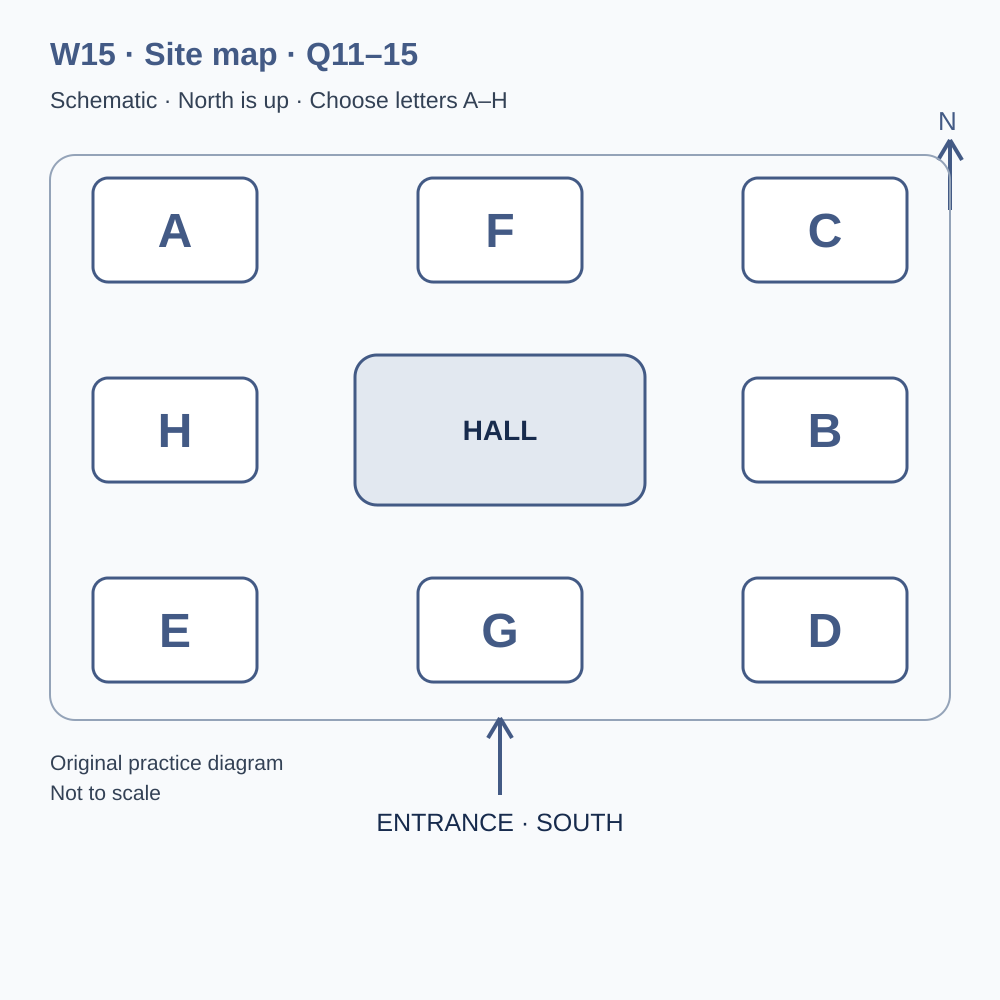
Q11. Reception
Answer: ____
Q12. Methods room
Answer: ____
Q13. Dataset desk
Answer: ____
Q14. Discussion room
Answer: ____
Q15. Checkout desk
Answer: ____
Q16. What distinguishes a causal explanation from a description?
- A. It claims a particular change produced the observed difference
- B. It merely repeats the recorded numbers
- C. It requires no reasoning beyond a shorter wait
Answer: ____
Q17. Before comparing waiting times, participants should
- A. assume matching column titles mean matching definitions
- B. inspect the start and end definitions
- C. calculate a precise difference before checking what was measured
Answer: ____
Q18. How should a missing wait be handled?
- A. As zero automatically
- B. As the longest observed wait automatically
- C. As missing, with any analytical treatment made explicit
Answer: ____
Q19. What helps distinguish competing explanations?
- A. Repeating the shorter-wait figure more confidently
- B. Identifying observations that bear on each explanation
- C. Assuming a group must agree immediately
Answer: ____
Q20. What three things belong in the closing review?
- A. A supported finding, an unresolved explanation and a next step
- B. A claim that the planned comparison has already happened
- C. A mechanism treated as proof of the outcome
Answer: ____
Part 3 — Reviewing a service pilot
Q21–26: Match each proposal to the students' final positions at the end of that exchange. The tutor is not included. Write A, B, C or D. Letters may be reused.
- A Nora only
- B Eli only
- C Both students
- D Neither student
Q27–28 and Q29–30: Choose TWO different letters, A–E, for each pair. Write one letter in each numbered slot; either order is accepted. Each distinct correct choice earns one point, maximum two. Repeating a letter cannot earn two points. Submit no more than two letters.
Q21. At the END of this exchange, who supports: Adding an exploratory comparison venue to the next pilot?
Answer: ____
Q22. At the END of this exchange, who supports: Recording staffing actually available during each session?
Answer: ____
Q23. At the END of this exchange, who supports: Extending the observation period in the next stage?
Answer: ____
Q24. At the END of this exchange, who supports: Collecting visitors' full names on the analysis sheet?
Answer: ____
Q25. At the END of this exchange, who supports: Using matched time windows at the two venues?
Answer: ____
Q26. At the END of this exchange, who supports: Labelling descriptive findings separately from causal claims?
Answer: ____
Q27–28. Which TWO additional records are selected for each interval?
- A. Staff names
- B. The number of active service points
- C. Prices of visitors' recent purchases
- D. The number of arrivals
- E. Visitors' full addresses
Answers: Q27 ____ · Q28 ____
Q29–30. Which TWO changes occurred together in the completed pilot?
- A. The desk layout changed
- B. The timer failed
- C. The service was cancelled
- D. An entire session's records were absent
- E. The appointment rule changed
Answers: Q29 ____ · Q30 ____
Part 4 — Building a cautious causal comparison
Q31–35: Complete the flow chart below. Q36–40: Complete the notes. Write NO MORE THAN TWO WORDS AND/OR A NUMBER for each answer, using words from the recording. Numeric notation may replace spoken numbers. Words or units already printed do not belong in the blank. The numbered text below repeats the SVG prompts for readability.
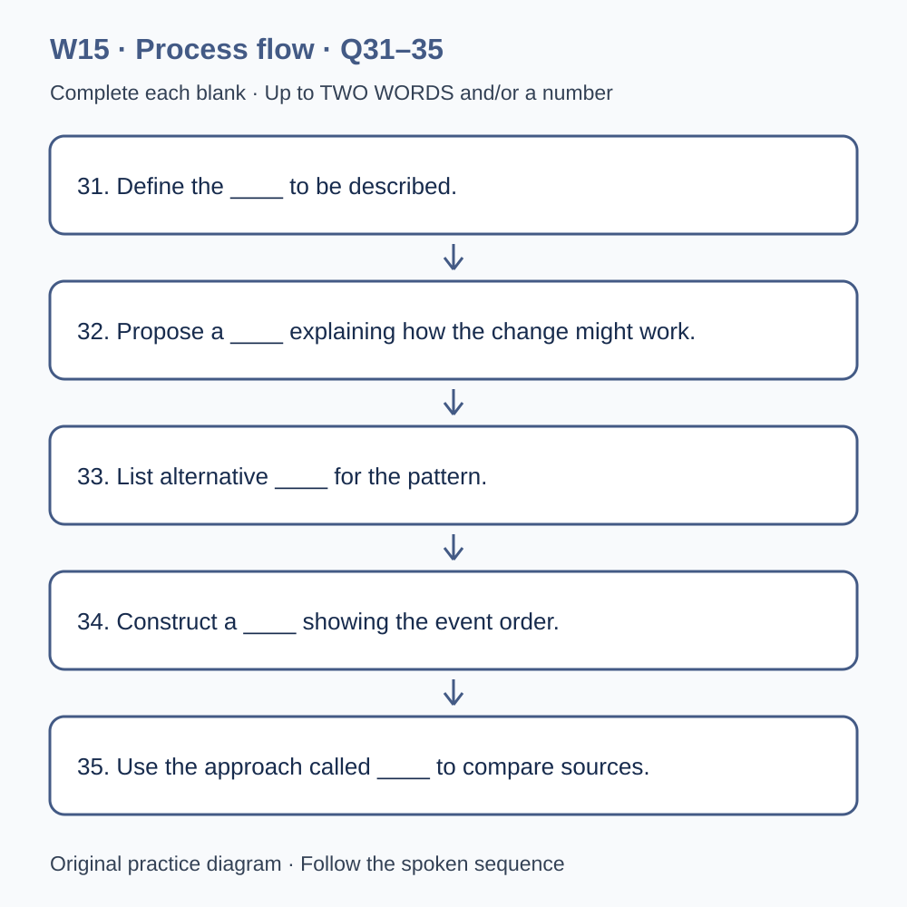
Q31. Define the ____ to be described.
Q32. Propose a ____ explaining how the change might work.
Q33. List alternative ____ for the pattern.
Q34. Construct a ____ showing the event order.
Q35. Use the approach called ____ to compare sources.
Q36. Group ____ can influence a comparison before the intervention.
Q37. Check whether ____ procedures changed between periods.
Q38. Dependence between combined changes is described here as ____.
Q39. The ____ concerns what would have happened without the change.
Q40. Repeat the defined method in a planned ____.
本周训练安排（音频批准后执行）
- Preview questions without the script：8 分钟。
- Future continuous first listen, including planned part pauses：32 分钟。
- Submit first answers and confidence, without a second play：8 分钟。
- Check answers and classify errors：20 分钟。
- Four Q-located intensive segments, 15 minutes each：60 分钟。
- Diagram and opinion retelling：15 分钟。
- Next-day retry of missed items：15 分钟。
合计 158 分钟；最多另用 22 分钟缓冲，总计不超过 180 分钟。暂停、回放与查词均计入精听预算，不能另行无限追加。当前实际已完成听力分钟数为 0。精听区段和步骤见 intensive.md；答案和脚本另页。
参考答案与证据（完成首次听力后再展开）
L-W15 — Answers and evidence
> 独立答案页。先提交首次答案，再看本页。当前缺音频，文本验题不能充当实听验收。
每个单空 1 分；双选各 2 分、答案顺序不限、按不同正确选项计分。接受形式仅做大小写和空白规范化；不做模糊词形推断。
Q1 — waiting times
Accepted answers: waiting times / waiting time
Use the final confirmed detail in this exchange; the printed unit or date context is already supplied.
Evidence locator: Q01 (script.md; timestamps unavailable).
> Receptionist: Local research centre, good morning. Organiser: I'd like to book a place for our team at the introductory data clinic. We have several questions about a service pilot, but we need to choose a manageable focus. Receptionist: What is the main subject you want to examine? Organiser: Waiting times. We also collected comments about satisfaction, but the immediate question concerns how long visitors waited before speaking to a member of staff. Receptionist: I'll record waiting times as the focus. Organiser: Thank you. We want to understand what our figures can support, rather than arrive with a preferred explanation and ask somebody to make the chart look as though it proves it.
Q2 — 14
Accepted answers: 14 / 14th / fourteenth / the fourteenth / the 14th
Use the final confirmed detail in this exchange; the printed unit or date context is already supplied.
Evidence locator: Q02 (script.md; timestamps unavailable).
> Receptionist: The clinic is available on the fourteenth of September. Organiser: An earlier message from our coordinator mentioned the seventh. Receptionist: That was a proposed date before the teaching team confirmed its availability. The fourteenth is the date now offered. Organiser: That works for us. I'll correct the shared calendar and ask our coordinator to replace the old message. Receptionist: We will send a confirmation with the final date. Organiser: I'll make sure everyone uses that version for travel arrangements. A date correction is only useful if the people affected can tell which message supersedes the earlier one, rather than treating two different dates as two separate opportunities to attend.
Q3 — 9.25
Accepted answers: 9.25 / 9:25 / 09.25 / 09:25 / nine twenty-five
Use the final confirmed detail in this exchange; the printed unit or date context is already supplied.
Evidence locator: Q03 (script.md; timestamps unavailable).
> Organiser: What time does the clinic begin? Receptionist: Nine twenty-five in the morning. The building opens at nine, but the teaching session starts at nine twenty-five. Organiser: So we should arrive shortly before nine twenty-five and check in, rather than expect the clinic to begin when the doors open. Receptionist: Exactly. The opening explanation establishes what the group will and won't do with its data. Organiser: I'll keep the arrival suggestion separate from the start time in our transport note. Receptionist: Good. That helps avoid a situation in which one person thinks the appointment begins earlier simply because somebody else sensibly planned to leave a margin for finding the entrance.
Q4 — 5
Accepted answers: 5 / five
Use the final confirmed detail in this exchange; the printed unit or date context is already supplied.
Evidence locator: Q04 (script.md; timestamps unavailable).
> Receptionist: How many participants should we expect? Organiser: Seven people helped run the service pilot, but only five can attend the clinic. Please book five places. Receptionist: Five places are available. Will those people represent the different parts of the pilot? Organiser: Yes. We have someone from the desk team and someone who managed the records, so we should be able to explain how the information was collected. Receptionist: That will help. If the attendance changes, update the booking rather than simply bring a replacement without telling us. Organiser: I'll maintain one current list and collect questions from the two people who cannot come.
Q5 — 75
Accepted answers: 75 / 75.00 / seventy-five / seventy five
Use the final confirmed detail in this exchange; the printed unit or date context is already supplied.
Evidence locator: Q05 (script.md; timestamps unavailable).
> Organiser: What is the total fee for the five places? Receptionist: The introductory team booking is seventy-five pounds altogether. Organiser: Seventy-five is the full total, not the fee for each person? Receptionist: Correct. It includes the materials used in the clinic. A later individual consultation would have separate arrangements, but that isn't part of this booking. Organiser: I'll give our budget holder the total and the scope together. Receptionist: Please check the confirmation before paying. If it doesn't match what we've discussed, contact us to correct it rather than assume the difference represents extra analysis that somebody has requested on your behalf.
Q6 — summary
Accepted answers: summary
Use the final confirmed detail in this exchange; the printed unit or date context is already supplied.
Evidence locator: Q06 (script.md; timestamps unavailable).
> Organiser: Should we bring all the original response sheets? Receptionist: For this introduction, bring a summary of the data and a description of how it was collected. We don't need the original records containing visitors' personal details. Organiser: I'll prepare the summary with the totals, definitions and any missing periods clearly marked. Receptionist: Good. A summary that preserves uncertainty is more useful than a complete-looking table whose gaps have been filled with guesses. Organiser: We'll also note which version of the service was running during each session. Receptionist: That context matters. Without it, two columns can appear directly comparable even when they describe observations made under quite different arrangements.
Q7 — B
Accepted answers: B
The clinic can improve descriptive conclusions and future questions without guaranteeing causal identification.
Evidence locator: Q07 (script.md; timestamps unavailable).
> Organiser: Will the clinic establish whether our new appointment system caused the shorter waits? Receptionist: It will help you examine that question and identify what the design can support. It cannot guarantee a causal answer from any set of figures. Organiser: That's what we need. Several things changed during the pilot, and I'd like the team to understand why that matters. Receptionist: The leader will work through comparisons and competing explanations. Sometimes the useful outcome is a clearer descriptive result and a better question for the next stage. Organiser: We'll present it to our colleagues that way, rather than promise that one session will turn an uncertain pilot into definitive proof.
Q8 — A
Accepted answers: A
Source permission and comparable definitions both matter.
Evidence locator: Q08 (script.md; timestamps unavailable).
> Organiser: Can we include material from another organisation for comparison? Receptionist: Only if you have permission to use it for this purpose and can explain what the figures mean. A table with a similar title may still measure a different period or use a different definition. Organiser: We'll check the arrangements and bring the source description alongside any permitted example. Receptionist: Good. The clinic doesn't create new permission to share somebody else's material. Organiser: We'll avoid copying a private spreadsheet simply because the other organisation's results look useful. Receptionist: A well-described public or permitted comparison can help, but an unexplained number from an uncertain source may create more confusion than insight.
Q9 — C
Accepted answers: C
The centre checks usable formats and available arrangements, rather than guessing.
Evidence locator: Q09 (script.md; timestamps unavailable).
> Organiser: One participant needs information in a format that works with their reading software. Should we discuss that before attending? Receptionist: Yes. Explain the practical format requirement in your reply to the confirmation, and we will check what the team can provide. Organiser: We shouldn't assume that a photograph of a worksheet is equivalent to an accessible digital file. Receptionist: Exactly. Tell us what is needed, and we can discuss available formats and any limits. Organiser: I'll ask the participant to describe the requirement rather than make the request on the basis of my own guess. Receptionist: That will give us a clearer basis for preparing an arrangement that actually helps.
Q10 — B
Accepted answers: B
The confirmation provides the designated change route; urgent changes use its contact number.
Evidence locator: Q10 (script.md; timestamps unavailable).
> Organiser: How should we report a change to the booking? Receptionist: Reply to the confirmation and include its reference number. If the session is very close and the change is urgent, use the contact number in the same message. Organiser: Is a note in the public programme comments enough? Receptionist: No. That doesn't update the clinic's attendance record. Organiser: I'll keep the confirmation in our shared folder and nominate one person to handle changes. Receptionist: That should prevent conflicting messages. A single current record helps the team prepare the correct number of places and understand which data question your group intends to bring to the session.
Q11 — G
Accepted answers: G
Use the explicitly stated position relative to the hall, not an earlier layout or adjacent area.
Evidence locator: Q11 (script.md; timestamps unavailable).
> Welcome to the research centre. The diagram places north at the top and the entrance on the southern edge. The hall in the centre is our reference point, with eight lettered spaces around it. Reception is directly south of the hall, in line with the entrance. It isn't in either southern corner. Please check in there before taking your materials to a teaching room. Staff will confirm the group and any practical update. A room that was used for a previous clinic may have another purpose today, so use the current arrangement rather than following a remembered route simply because the event title sounds familiar.
Q12 — F
Accepted answers: F
Use the explicitly stated position relative to the hall, not an earlier layout or adjacent area.
Evidence locator: Q12 (script.md; timestamps unavailable).
> The methods room is directly north of the hall. It occupies the northern central position between the two northern corners. Today's data clinic begins there. An earlier plan placed the introduction in the north-west room, but the larger shared display is now available in the northern central room. We start with the question and method before examining individual charts. Please wait for the leader before connecting equipment or rearranging tables. If the teaching setup needs adjustment for your group, raise that at the start. A deliberate change can usually be explained and accommodated more easily than several uncoordinated changes made while the explanation is already underway.
Q13 — E
Accepted answers: E
Use the explicitly stated position relative to the hall, not an earlier layout or adjacent area.
Evidence locator: Q13 (script.md; timestamps unavailable).
> The dataset desk is in the south-west area. It is west of reception and directly south of the space to the west of the hall. You can collect the prepared practice data there after the opening explanation. The examples are fictional and supplied for the learning activity; they are not a report of a real organisation's performance. Check the version label on your sheet, because different exercises use different definitions. If you compare columns from two versions without noticing that difference, you can produce a convincing-looking result that doesn't answer the intended question. The desk helper can identify the correct sheet but won't choose your interpretation of the exercise for you.
Q14 — C
Accepted answers: C
Use the explicitly stated position relative to the hall, not an earlier layout or adjacent area.
Evidence locator: Q14 (script.md; timestamps unavailable).
> The discussion room is in the north-east corner, directly east of the methods room. The two rooms are on the same northern row, so the discussion room is not north-east of the methods room itself. It is directly north of the space to the east of the hall. Small groups use it to compare explanations after examining the data. A discussion should keep the observed pattern separate from the claim about its cause. The room isn't a place where the group must reach agreement at any cost. A clearly described unresolved difference can be more useful than a single conclusion that hides the reasons some participants remain unconvinced.
Q15 — H
Accepted answers: H
Use the explicitly stated position relative to the hall, not an earlier layout or adjacent area.
Evidence locator: Q15 (script.md; timestamps unavailable).
> The checkout desk is directly west of the hall, level with its centre. It is north of the dataset desk in the south-west area, not in the north-west corner. Return the reusable materials there and tell the helper if a sheet contained an unclear instruction. Please distinguish an instruction problem from a result you found surprising. The first may require revision of the exercise, while the second may be exactly the kind of issue the exercise was designed to explore. At checkout, keep your own notes but return any shared reference cards through the stated process so the next group receives a complete set rather than a collection assembled from whatever remains on the tables.
Q16 — A
Accepted answers: A
A causal claim is stronger than a description, particularly when other conditions changed.
Evidence locator: Q16 (script.md; timestamps unavailable).
> The clinic distinguishes a description from a causal explanation. A description reports what was observed under the stated method, such as a shorter recorded wait in one session. A causal explanation claims that a particular change produced that difference. The second claim usually needs more reasoning than the first, especially when staffing, visitor numbers or procedures also changed. You can report a useful descriptive result without pretending the causal question has been settled. During discussion, identify which type of claim a sentence makes. This often reveals why two people appear to disagree: one may be describing a pattern while the other is judging a stronger explanation that the pattern alone does not establish.
Q17 — B
Accepted answers: B
Equal labels or units do not resolve incompatible measurement boundaries.
Evidence locator: Q17 (script.md; timestamps unavailable).
> A comparison should use definitions that are sufficiently consistent for the question. One team may measure waiting from arrival at the building, while another begins the clock only when a visitor joins the desk queue. Those figures cannot be treated as the same measurement merely because both columns are labelled waiting time. The clinic asks you to inspect the definition before calculating a difference. If the definitions cannot be aligned, you may need to keep the results separate or qualify the comparison. A precise calculation doesn't repair a mismatch in what the original numbers represent. The interpretation must begin with the observation process, not with the appearance of the completed spreadsheet.
Q18 — C
Accepted answers: C
Silently replacing missing values invents information and may distort the comparison.
Evidence locator: Q18 (script.md; timestamps unavailable).
> When a value is missing, preserve that distinction. An unrecorded wait is not automatically zero, and it is not automatically the longest wait in the session. Either substitution would turn uncertainty into a specific claim. The team can describe the missing records and examine how different reasonable treatments affect the result, but it should not silently choose the version that produces the preferred story. A pattern in the missingness may also deserve investigation. If records are often absent when the desk is busiest, the available figures may give an incomplete picture. That possibility is a reason to examine the process, not a licence to invent the absent observations.
Q19 — B
Accepted answers: B
The next study should address a specific unresolved comparison rather than substitute confidence for evidence.
Evidence locator: Q19 (script.md; timestamps unavailable).
> During group discussion, ask what evidence would distinguish competing explanations. If one person points to a new appointment rule and another points to extra staff, simply repeating the shorter waiting-time figure won't resolve the disagreement. The group needs to identify which observations bear on each explanation and what the pilot did not record. The next stage may require a different comparison or a more consistent record of conditions. This approach doesn't guarantee that every uncertainty can be removed immediately. It turns a disagreement into a question that can guide further work, instead of encouraging participants to treat confidence or repetition as substitutes for evidence.
Q20 — A
Accepted answers: A
Findings, interpretations and proposed future work must remain distinct.
Evidence locator: Q20 (script.md; timestamps unavailable).
> The closing review asks you to record a supported finding, an unresolved explanation and a next step. These three entries should remain distinct. A proposed future comparison is not evidence already collected, and a plausible mechanism is not an observed result. The team should be able to explain why the next step addresses the uncertainty it has identified. You may also decide that a particular claim needs to be narrowed before any new data are gathered. That can be a valuable outcome of the clinic. A clearer account of what the current evidence supports is useful even when the group leaves with a longer list of questions than it expected.
Q21 — B
Accepted answers: B
Final stance: Eli only. Ignore an initial proposal if later withdrawn; the tutor is not an answer option.
Evidence locator: Q21 (script.md; timestamps unavailable).
> Tutor: You've analysed the two service sessions from last week. Today we'll decide what to include in the next pilot. Eli: I propose adding a comparison venue that hasn't changed its appointment system. Nora: I'd keep the next stage at our current venue and improve the records first. Another venue may differ in ways we cannot examine properly. Tutor: Could you describe it as exploratory? Eli: Yes, and I still support adding it. Nora: I understand the possible value, but I remain against it for the next pilot. Tutor: Then Eli supports the additional venue and Nora doesn't. The disagreement concerns the design you can manage, not whether comparisons can ever be useful.
Q22 — C
Accepted answers: C
Final stance: Both students. Ignore an initial proposal if later withdrawn; the tutor is not an answer option.
Evidence locator: Q22 (script.md; timestamps unavailable).
> Tutor: Should each session record staffing levels? Nora: Yes. We can't interpret queue changes without knowing how many people were serving visitors. Eli: I initially thought the rota would give us that information, but it doesn't show who was actually available during each observation period. I support a session record. Tutor: What level of detail do you need? Eli: The number of active service points and when it changes, not personal information about staff. Nora: Agreed. Tutor: Then both of you support recording the relevant staffing condition. Keep the definition clear so a person on a break isn't counted as available merely because their name appears on the planned rota.
Q23 — A
Accepted answers: A
Final stance: Nora only. Ignore an initial proposal if later withdrawn; the tutor is not an answer option.
Evidence locator: Q23 (script.md; timestamps unavailable).
> Tutor: Nora suggests extending the observation period. Nora: I support that. Our short sessions may have missed the busiest arrival period, and that could affect the comparison. Eli: I would keep the same length for the next pilot so we can first check whether the revised definitions are workable. Tutor: Could you extend only one session? Nora: That would provide additional context, although we would need to label the difference. Eli: I still prefer consistent short sessions at this stage. Nora: Then I continue to favour extending the period, but I won't describe it as a shared decision. Tutor: Good. Your final report should preserve the difference between a proposal discussed and a procedure actually agreed.
Q24 — D
Accepted answers: D
Final stance: Neither student. Ignore an initial proposal if later withdrawn; the tutor is not an answer option.
Evidence locator: Q24 (script.md; timestamps unavailable).
> Tutor: Your earlier draft included visitors' full names. Eli: I thought names would help match their comments to the timing record. Nora: I don't support collecting them for this exercise. A participant code can make the necessary connection. Eli: I agree now. I'll remove the name field and use the code. Tutor: Are there any remaining reasons you want full names on the analysis sheet? Eli: No. I'm withdrawing that requirement. Nora: We should still test that the code is transferred correctly between records. Tutor: Exactly. Avoiding unnecessary identifying information doesn't remove the need for a reliable link between the observations that belong together.
Q25 — B
Accepted answers: B
Final stance: Eli only. Ignore an initial proposal if later withdrawn; the tutor is not an answer option.
Evidence locator: Q25 (script.md; timestamps unavailable).
> Tutor: What about using matched time windows at the two venues? Eli: I support that. Comparing a morning rush at one venue with a quiet afternoon at another would introduce an obvious alternative explanation. Nora: If we add the second venue, I would first sample a wider range of periods rather than restrict both to one matched window. Tutor: So your objection isn't that timing is irrelevant. Nora: Correct. I want more context before choosing the window. Eli: I still favour matching the periods for the next comparison. Tutor: Then Eli supports the specific proposal and Nora doesn't, even though both recognise that the timing of observation matters.
Q26 — C
Accepted answers: C
Final stance: Both students. Ignore an initial proposal if later withdrawn; the tutor is not an answer option.
Evidence locator: Q26 (script.md; timestamps unavailable).
> Tutor: Should the report label descriptive findings separately from causal claims? Nora: Definitely. We can state that a wait was shorter without saying the new rule caused the difference. Eli: I agree. My first draft moved too quickly from the chart to an explanation. Tutor: How will you change it? Eli: Give the observation first, then discuss the explanations and the evidence each would need. Nora: And mark any recommendation as a next step rather than an effect already demonstrated. Tutor: That is a shared decision. It should also make your disagreements easier for a reader to follow, because the reader can see whether you dispute the recorded pattern or the interpretation built on it.
Q27–28 — B, D
Accept unordered set: B, D. One point per distinct correct choice, maximum 2.
Active service points and arrivals describe relevant conditions without unnecessary personal details.
Evidence locator: Q27, Q28 (script.md; timestamps unavailable).
> Tutor: Which two additional records have you definitely selected for each interval? Nora: First, the number of service points actually open. A scheduled staff total doesn't show whether every point was serving visitors at the time. Eli: Agreed. We'll note any change during the interval. Tutor: Are you collecting staff names on that sheet? Eli: No. Names aren't needed for the comparison. Nora: We also rejected asking for the price of each visitor's most recent purchase. That has no clear role in this question. Tutor: Then active service points are the first selected record. Make sure the definition identifies availability for service rather than simply the physical presence of a desk.
> Tutor: And the second selected record? Eli: Count arrivals during each observation interval. A shorter queue could partly reflect fewer people arriving, so we need that context. Nora: Agreed. We'll define the observation boundary so we don't count the same arrival twice. Tutor: Are you also recording every visitor's full address? Nora: No. That's not one of the selected records. Eli: The pair is active service points and arrivals per interval. Tutor: Good. Those records may help examine competing explanations, but they won't automatically isolate the effect of the appointment rule. Your report should explain what they add to the comparison and which uncertainty still remains after they are included.
Q29–30 — A, E
Accept unordered set: A, E. One point per distinct correct choice, maximum 2.
Layout and appointment rule changed together, so their separate effects are not identified by this comparison.
Evidence locator: Q29, Q30 (script.md; timestamps unavailable).
> Tutor: Which two simultaneous changes limit the causal claim from last week's pilot? Nora: The desk layout changed. Visitors could see the waiting area more clearly in the second session, and that might affect how the queue formed. Eli: Yes. We should state it rather than describe the new appointment rule as the only change. Tutor: Does using the same timing unit count as a limitation? Eli: No, that helps the comparison. Nora: And the records were available for both sessions, so missing an entire session isn't what happened. Tutor: Exactly. The first limitation is a real change in the setting, not a general warning that every small study must have unspecified problems.
> Tutor: What is the second simultaneous change? Eli: The appointment rule itself was introduced at the same time as the new layout. We changed two parts of the service together, so their separate effects can't be identified from this comparison alone. Nora: Agreed. The two changes need to remain visible in the account. Tutor: What should you avoid saying? Nora: That the shorter wait proves the layout worked, or that it proves the appointment rule worked independently. Eli: We can report the combined change and plan a better comparison for the next stage. Tutor: Good. The timer didn't fail and the service wasn't cancelled. Keep the limitations tied to the actual sequence of changes you are trying to interpret.
Q31 — outcome
Accepted answers: outcome / result / chosen result
Complete the named stage in the stated process order; retain any word already printed around the blank.
Evidence locator: Q31 (script.md; timestamps unavailable).
> This lecture follows a fictional team examining a change in a public service. The first stage defines the outcome. The outcome is the result the study will describe, such as a waiting period measured under a stated rule. It should not change halfway through the analysis simply because another available measure produces a stronger pattern. The team distinguishes the chosen result from a broader judgement about whether the whole service is successful. A shorter recorded wait may matter, but it doesn't by itself describe clarity of advice, fairness of access or every other relevant feature. Defining the outcome keeps the scope of the claim connected to the information the study actually collects.
Q32 — mechanism
Accepted answers: mechanism / hypothesis / process / plausible mechanism / proposed process
Complete the named stage in the stated process order; retain any word already printed around the blank.
Evidence locator: Q32 (script.md; timestamps unavailable).
> The second stage proposes a mechanism. A mechanism is an account of how the change might produce the outcome. For example, a revised information step could reduce repeated questions and leave staff more time for the next visitor. That account is a hypothesis to examine, not a result established merely by describing it clearly. The team asks what observations would be expected if the proposed process were operating. It also considers whether the same observations could arise for another reason. A plausible mechanism helps organise investigation, but it should not become a substitute for checking the relationship between the intervention, the intermediate actions and the recorded result.
Q33 — explanations
Accepted answers: explanations / accounts / competing accounts
Complete the named stage in the stated process order; retain any word already printed around the blank.
Evidence locator: Q33 (script.md; timestamps unavailable).
> The third stage lists alternative explanations. These alternatives are competing accounts of the pattern, such as a change in demand, staffing or the composition of the visitor group. The team should identify plausible alternatives before becoming attached to one interpretation of the chart. It cannot investigate every imaginable possibility, so it explains which accounts are most relevant and what evidence is available about them. Leaving an alternative unresolved doesn't mean the observed result must be discarded. It means the causal claim needs to remain qualified. A useful analysis shows the reader why one explanation is favoured, which others remain possible and what a later study could do to distinguish them.
Q34 — timeline
Accepted answers: timeline / chronological record / record / sequence / defensible sequence
Complete the named stage in the stated process order; retain any word already printed around the blank.
Evidence locator: Q34 (script.md; timestamps unavailable).
> The fourth stage constructs a timeline of changes and observations. The timeline is a chronological record that shows when the intervention began, when other conditions changed and when the outcome was measured. This helps prevent an event that happened later from being used to explain an earlier result. It also reveals periods in which several changes overlap. A neat before-and-after label can hide that complexity if the supposedly earlier period already included part of the new procedure. The team checks the dates and records uncertainty where necessary. The aim is a defensible sequence, not a simplified story in which the preferred cause always appears just before the desired effect.
Q35 — triangulation
Accepted answers: triangulation
Complete the named stage in the stated process order; retain any word already printed around the blank.
Evidence locator: Q35 (script.md; timestamps unavailable).
> The fifth stage uses triangulation to compare different sources of evidence about the proposed process. Triangulation means examining how records, observations and relevant accounts relate to one another, rather than assuming that three sources automatically make a claim true. The sources may share the same weakness or reflect the same underlying record. If they disagree, the team investigates why instead of choosing the source that best supports its preferred conclusion. The value lies in the reasoning across sources and their limitations. A consistent account can strengthen an interpretation, but only when the team explains what each source actually contributes and avoids counting the same information several times under different labels.
Q36 — selection
Accepted answers: selection / recruitment
The corresponding evidence block supplies this distinction or qualification; the question retains the surrounding grammar.
Evidence locator: Q36 (script.md; timestamps unavailable).
> Selection can influence a comparison when the groups being observed differ before the intervention. People who choose an appointment system may have different needs or schedules from people who arrive without one. A later difference in waiting time could therefore reflect more than the system itself. The team describes recruitment and participation rather than assuming equal group sizes imply comparable groups. Where relevant information is missing, the limitation remains visible. Selection is not a reason to abandon all local evaluation. It is a reason to examine who enters each comparison and to make the claim no broader than the design can support about those particular people and conditions.
Q37 — measurement
Accepted answers: measurement / recording
The corresponding evidence block supplies this distinction or qualification; the question retains the surrounding grammar.
Evidence locator: Q37 (script.md; timestamps unavailable).
> Measurement can also change between periods. Staff may begin recording the end of a wait at a different point, or a new form may prompt more complete entries. An apparent improvement could partly reflect that measurement change rather than a change in the visitor's experience. The team checks definitions and procedures alongside the values in the table. If the earlier and later records cannot be made comparable, it should explain the mismatch instead of presenting their difference as an unqualified service effect. A consistent unit is helpful, but it isn't enough if the events that start or stop the measurement have changed. The meaning of the number depends on the process that produced it.
Q38 — interaction
Accepted answers: interaction
The corresponding evidence block supplies this distinction or qualification; the question retains the surrounding grammar.
Evidence locator: Q38 (script.md; timestamps unavailable).
> Interaction is another possibility when changes occur together. The effect of one change may depend on the presence of another, rather than the two contributions simply adding independently. A clearer layout might help visitors use a new appointment rule, while either change alone would have a different result. In a small pilot, the team may not have enough evidence to estimate those separate relationships. It can still identify interaction as a plausible question for the next stage. The important point is to avoid assuming independence merely because the report describes the changes in separate paragraphs. The organisation of a written explanation does not determine how the processes operate in practice.
Q39 — counterfactual
Accepted answers: counterfactual / alternative situation / unobserved alternative
The corresponding evidence block supplies this distinction or qualification; the question retains the surrounding grammar.
Evidence locator: Q39 (script.md; timestamps unavailable).
> A causal comparison also involves a counterfactual: what would have happened without the change under otherwise relevant conditions. That alternative situation is not directly observed for the same people at the same moment. A study uses a comparison or model to reason about it, and the quality of that reasoning depends on assumptions that should be made explicit. The team should not treat a convenient comparison as a perfect copy of the unobserved alternative. It needs to explain the important similarities, differences and uncertainties. Thinking about the counterfactual can sharpen the question, even when a small local project cannot provide a definitive estimate of the effect it hopes to understand.
Q40 — replication
Accepted answers: replication / repetition
The corresponding evidence block supplies this distinction or qualification; the question retains the surrounding grammar.
Evidence locator: Q40 (script.md; timestamps unavailable).
> At the stage review, the team plans a replication of the observation procedure in another suitable period. A replication repeats a defined method so the team can examine whether the broad pattern appears again under clearly described conditions. It is not simply another event with a similar title. The review specifies what should remain consistent, what may differ and how those differences will be recorded. Repeating the work cannot guarantee that the original causal interpretation is correct, but it can reveal whether the first pattern depended on an unusual circumstance. The next stage should therefore carry forward both a method worth testing and the unresolved alternatives that repetition alone may not eliminate.
完整脚本（提前阅读会失去陌生题首答机会）
L-W15 — Comparing change and competing explanations: transcript
> 原创虚构练习，非真题；音频缺失。仅供完成首次作答后的核对或文字审阅。Q 标记与角色名不属于朗读正文。
Part 1 — Arranging a data clinic visit
Q1 evidence block
Receptionist: Local research centre, good morning.
Organiser: I'd like to book a place for our team at the introductory data clinic. We have several questions about a service pilot, but we need to choose a manageable focus.
Receptionist: What is the main subject you want to examine?
Organiser: Waiting times. We also collected comments about satisfaction, but the immediate question concerns how long visitors waited before speaking to a member of staff.
Receptionist: I'll record waiting times as the focus.
Organiser: Thank you. We want to understand what our figures can support, rather than arrive with a preferred explanation and ask somebody to make the chart look as though it proves it.
Q2 evidence block
Receptionist: The clinic is available on the fourteenth of September.
Organiser: An earlier message from our coordinator mentioned the seventh.
Receptionist: That was a proposed date before the teaching team confirmed its availability. The fourteenth is the date now offered.
Organiser: That works for us. I'll correct the shared calendar and ask our coordinator to replace the old message.
Receptionist: We will send a confirmation with the final date.
Organiser: I'll make sure everyone uses that version for travel arrangements. A date correction is only useful if the people affected can tell which message supersedes the earlier one, rather than treating two different dates as two separate opportunities to attend.
Q3 evidence block
Organiser: What time does the clinic begin?
Receptionist: Nine twenty-five in the morning. The building opens at nine, but the teaching session starts at nine twenty-five.
Organiser: So we should arrive shortly before nine twenty-five and check in, rather than expect the clinic to begin when the doors open.
Receptionist: Exactly. The opening explanation establishes what the group will and won't do with its data.
Organiser: I'll keep the arrival suggestion separate from the start time in our transport note.
Receptionist: Good. That helps avoid a situation in which one person thinks the appointment begins earlier simply because somebody else sensibly planned to leave a margin for finding the entrance.
Q4 evidence block
Receptionist: How many participants should we expect?
Organiser: Seven people helped run the service pilot, but only five can attend the clinic. Please book five places.
Receptionist: Five places are available. Will those people represent the different parts of the pilot?
Organiser: Yes. We have someone from the desk team and someone who managed the records, so we should be able to explain how the information was collected.
Receptionist: That will help. If the attendance changes, update the booking rather than simply bring a replacement without telling us.
Organiser: I'll maintain one current list and collect questions from the two people who cannot come.
Q5 evidence block
Organiser: What is the total fee for the five places?
Receptionist: The introductory team booking is seventy-five pounds altogether.
Organiser: Seventy-five is the full total, not the fee for each person?
Receptionist: Correct. It includes the materials used in the clinic. A later individual consultation would have separate arrangements, but that isn't part of this booking.
Organiser: I'll give our budget holder the total and the scope together.
Receptionist: Please check the confirmation before paying. If it doesn't match what we've discussed, contact us to correct it rather than assume the difference represents extra analysis that somebody has requested on your behalf.
Q6 evidence block
Organiser: Should we bring all the original response sheets?
Receptionist: For this introduction, bring a summary of the data and a description of how it was collected. We don't need the original records containing visitors' personal details.
Organiser: I'll prepare the summary with the totals, definitions and any missing periods clearly marked.
Receptionist: Good. A summary that preserves uncertainty is more useful than a complete-looking table whose gaps have been filled with guesses.
Organiser: We'll also note which version of the service was running during each session.
Receptionist: That context matters. Without it, two columns can appear directly comparable even when they describe observations made under quite different arrangements.
Q7 evidence block
Organiser: Will the clinic establish whether our new appointment system caused the shorter waits?
Receptionist: It will help you examine that question and identify what the design can support. It cannot guarantee a causal answer from any set of figures.
Organiser: That's what we need. Several things changed during the pilot, and I'd like the team to understand why that matters.
Receptionist: The leader will work through comparisons and competing explanations. Sometimes the useful outcome is a clearer descriptive result and a better question for the next stage.
Organiser: We'll present it to our colleagues that way, rather than promise that one session will turn an uncertain pilot into definitive proof.
Q8 evidence block
Organiser: Can we include material from another organisation for comparison?
Receptionist: Only if you have permission to use it for this purpose and can explain what the figures mean. A table with a similar title may still measure a different period or use a different definition.
Organiser: We'll check the arrangements and bring the source description alongside any permitted example.
Receptionist: Good. The clinic doesn't create new permission to share somebody else's material.
Organiser: We'll avoid copying a private spreadsheet simply because the other organisation's results look useful.
Receptionist: A well-described public or permitted comparison can help, but an unexplained number from an uncertain source may create more confusion than insight.
Q9 evidence block
Organiser: One participant needs information in a format that works with their reading software. Should we discuss that before attending?
Receptionist: Yes. Explain the practical format requirement in your reply to the confirmation, and we will check what the team can provide.
Organiser: We shouldn't assume that a photograph of a worksheet is equivalent to an accessible digital file.
Receptionist: Exactly. Tell us what is needed, and we can discuss available formats and any limits.
Organiser: I'll ask the participant to describe the requirement rather than make the request on the basis of my own guess.
Receptionist: That will give us a clearer basis for preparing an arrangement that actually helps.
Q10 evidence block
Organiser: How should we report a change to the booking?
Receptionist: Reply to the confirmation and include its reference number. If the session is very close and the change is urgent, use the contact number in the same message.
Organiser: Is a note in the public programme comments enough?
Receptionist: No. That doesn't update the clinic's attendance record.
Organiser: I'll keep the confirmation in our shared folder and nominate one person to handle changes.
Receptionist: That should prevent conflicting messages. A single current record helps the team prepare the correct number of places and understand which data question your group intends to bring to the session.
Part 2 — Research centre orientation
Q11 evidence block
Research host: Welcome to the research centre. The diagram places north at the top and the entrance on the southern edge. The hall in the centre is our reference point, with eight lettered spaces around it. Reception is directly south of the hall, in line with the entrance. It isn't in either southern corner. Please check in there before taking your materials to a teaching room. Staff will confirm the group and any practical update. A room that was used for a previous clinic may have another purpose today, so use the current arrangement rather than following a remembered route simply because the event title sounds familiar.
Q12 evidence block
Research host: The methods room is directly north of the hall. It occupies the northern central position between the two northern corners. Today's data clinic begins there. An earlier plan placed the introduction in the north-west room, but the larger shared display is now available in the northern central room. We start with the question and method before examining individual charts. Please wait for the leader before connecting equipment or rearranging tables. If the teaching setup needs adjustment for your group, raise that at the start. A deliberate change can usually be explained and accommodated more easily than several uncoordinated changes made while the explanation is already underway.
Q13 evidence block
Research host: The dataset desk is in the south-west area. It is west of reception and directly south of the space to the west of the hall. You can collect the prepared practice data there after the opening explanation. The examples are fictional and supplied for the learning activity; they are not a report of a real organisation's performance. Check the version label on your sheet, because different exercises use different definitions. If you compare columns from two versions without noticing that difference, you can produce a convincing-looking result that doesn't answer the intended question. The desk helper can identify the correct sheet but won't choose your interpretation of the exercise for you.
Q14 evidence block
Research host: The discussion room is in the north-east corner, directly east of the methods room. The two rooms are on the same northern row, so the discussion room is not north-east of the methods room itself. It is directly north of the space to the east of the hall. Small groups use it to compare explanations after examining the data. A discussion should keep the observed pattern separate from the claim about its cause. The room isn't a place where the group must reach agreement at any cost. A clearly described unresolved difference can be more useful than a single conclusion that hides the reasons some participants remain unconvinced.
Q15 evidence block
Research host: The checkout desk is directly west of the hall, level with its centre. It is north of the dataset desk in the south-west area, not in the north-west corner. Return the reusable materials there and tell the helper if a sheet contained an unclear instruction. Please distinguish an instruction problem from a result you found surprising. The first may require revision of the exercise, while the second may be exactly the kind of issue the exercise was designed to explore. At checkout, keep your own notes but return any shared reference cards through the stated process so the next group receives a complete set rather than a collection assembled from whatever remains on the tables.
Q16 evidence block
Research host: The clinic distinguishes a description from a causal explanation. A description reports what was observed under the stated method, such as a shorter recorded wait in one session. A causal explanation claims that a particular change produced that difference. The second claim usually needs more reasoning than the first, especially when staffing, visitor numbers or procedures also changed. You can report a useful descriptive result without pretending the causal question has been settled. During discussion, identify which type of claim a sentence makes. This often reveals why two people appear to disagree: one may be describing a pattern while the other is judging a stronger explanation that the pattern alone does not establish.
Q17 evidence block
Research host: A comparison should use definitions that are sufficiently consistent for the question. One team may measure waiting from arrival at the building, while another begins the clock only when a visitor joins the desk queue. Those figures cannot be treated as the same measurement merely because both columns are labelled waiting time. The clinic asks you to inspect the definition before calculating a difference. If the definitions cannot be aligned, you may need to keep the results separate or qualify the comparison. A precise calculation doesn't repair a mismatch in what the original numbers represent. The interpretation must begin with the observation process, not with the appearance of the completed spreadsheet.
Q18 evidence block
Research host: When a value is missing, preserve that distinction. An unrecorded wait is not automatically zero, and it is not automatically the longest wait in the session. Either substitution would turn uncertainty into a specific claim. The team can describe the missing records and examine how different reasonable treatments affect the result, but it should not silently choose the version that produces the preferred story. A pattern in the missingness may also deserve investigation. If records are often absent when the desk is busiest, the available figures may give an incomplete picture. That possibility is a reason to examine the process, not a licence to invent the absent observations.
Q19 evidence block
Research host: During group discussion, ask what evidence would distinguish competing explanations. If one person points to a new appointment rule and another points to extra staff, simply repeating the shorter waiting-time figure won't resolve the disagreement. The group needs to identify which observations bear on each explanation and what the pilot did not record. The next stage may require a different comparison or a more consistent record of conditions. This approach doesn't guarantee that every uncertainty can be removed immediately. It turns a disagreement into a question that can guide further work, instead of encouraging participants to treat confidence or repetition as substitutes for evidence.
Q20 evidence block
Research host: The closing review asks you to record a supported finding, an unresolved explanation and a next step. These three entries should remain distinct. A proposed future comparison is not evidence already collected, and a plausible mechanism is not an observed result. The team should be able to explain why the next step addresses the uncertainty it has identified. You may also decide that a particular claim needs to be narrowed before any new data are gathered. That can be a valuable outcome of the clinic. A clearer account of what the current evidence supports is useful even when the group leaves with a longer list of questions than it expected.
Part 3 — Reviewing a service pilot
Q21 evidence block
Tutor: You've analysed the two service sessions from last week. Today we'll decide what to include in the next pilot.
Eli: I propose adding a comparison venue that hasn't changed its appointment system.
Nora: I'd keep the next stage at our current venue and improve the records first. Another venue may differ in ways we cannot examine properly.
Tutor: Could you describe it as exploratory?
Eli: Yes, and I still support adding it.
Nora: I understand the possible value, but I remain against it for the next pilot.
Tutor: Then Eli supports the additional venue and Nora doesn't. The disagreement concerns the design you can manage, not whether comparisons can ever be useful.
Q22 evidence block
Tutor: Should each session record staffing levels?
Nora: Yes. We can't interpret queue changes without knowing how many people were serving visitors.
Eli: I initially thought the rota would give us that information, but it doesn't show who was actually available during each observation period. I support a session record.
Tutor: What level of detail do you need?
Eli: The number of active service points and when it changes, not personal information about staff.
Nora: Agreed.
Tutor: Then both of you support recording the relevant staffing condition. Keep the definition clear so a person on a break isn't counted as available merely because their name appears on the planned rota.
Q23 evidence block
Tutor: Nora suggests extending the observation period.
Nora: I support that. Our short sessions may have missed the busiest arrival period, and that could affect the comparison.
Eli: I would keep the same length for the next pilot so we can first check whether the revised definitions are workable.
Tutor: Could you extend only one session?
Nora: That would provide additional context, although we would need to label the difference.
Eli: I still prefer consistent short sessions at this stage.
Nora: Then I continue to favour extending the period, but I won't describe it as a shared decision.
Tutor: Good. Your final report should preserve the difference between a proposal discussed and a procedure actually agreed.
Q24 evidence block
Tutor: Your earlier draft included visitors' full names.
Eli: I thought names would help match their comments to the timing record.
Nora: I don't support collecting them for this exercise. A participant code can make the necessary connection.
Eli: I agree now. I'll remove the name field and use the code.
Tutor: Are there any remaining reasons you want full names on the analysis sheet?
Eli: No. I'm withdrawing that requirement.
Nora: We should still test that the code is transferred correctly between records.
Tutor: Exactly. Avoiding unnecessary identifying information doesn't remove the need for a reliable link between the observations that belong together.
Q25 evidence block
Tutor: What about using matched time windows at the two venues?
Eli: I support that. Comparing a morning rush at one venue with a quiet afternoon at another would introduce an obvious alternative explanation.
Nora: If we add the second venue, I would first sample a wider range of periods rather than restrict both to one matched window.
Tutor: So your objection isn't that timing is irrelevant.
Nora: Correct. I want more context before choosing the window.
Eli: I still favour matching the periods for the next comparison.
Tutor: Then Eli supports the specific proposal and Nora doesn't, even though both recognise that the timing of observation matters.
Q26 evidence block
Tutor: Should the report label descriptive findings separately from causal claims?
Nora: Definitely. We can state that a wait was shorter without saying the new rule caused the difference.
Eli: I agree. My first draft moved too quickly from the chart to an explanation.
Tutor: How will you change it?
Eli: Give the observation first, then discuss the explanations and the evidence each would need.
Nora: And mark any recommendation as a next step rather than an effect already demonstrated.
Tutor: That is a shared decision. It should also make your disagreements easier for a reader to follow, because the reader can see whether you dispute the recorded pattern or the interpretation built on it.
Q27 evidence block
Tutor: Which two additional records have you definitely selected for each interval?
Nora: First, the number of service points actually open. A scheduled staff total doesn't show whether every point was serving visitors at the time.
Eli: Agreed. We'll note any change during the interval.
Tutor: Are you collecting staff names on that sheet?
Eli: No. Names aren't needed for the comparison.
Nora: We also rejected asking for the price of each visitor's most recent purchase. That has no clear role in this question.
Tutor: Then active service points are the first selected record. Make sure the definition identifies availability for service rather than simply the physical presence of a desk.
Q28 evidence block
Tutor: And the second selected record?
Eli: Count arrivals during each observation interval. A shorter queue could partly reflect fewer people arriving, so we need that context.
Nora: Agreed. We'll define the observation boundary so we don't count the same arrival twice.
Tutor: Are you also recording every visitor's full address?
Nora: No. That's not one of the selected records.
Eli: The pair is active service points and arrivals per interval.
Tutor: Good. Those records may help examine competing explanations, but they won't automatically isolate the effect of the appointment rule. Your report should explain what they add to the comparison and which uncertainty still remains after they are included.
Q29 evidence block
Tutor: Which two simultaneous changes limit the causal claim from last week's pilot?
Nora: The desk layout changed. Visitors could see the waiting area more clearly in the second session, and that might affect how the queue formed.
Eli: Yes. We should state it rather than describe the new appointment rule as the only change.
Tutor: Does using the same timing unit count as a limitation?
Eli: No, that helps the comparison.
Nora: And the records were available for both sessions, so missing an entire session isn't what happened.
Tutor: Exactly. The first limitation is a real change in the setting, not a general warning that every small study must have unspecified problems.
Q30 evidence block
Tutor: What is the second simultaneous change?
Eli: The appointment rule itself was introduced at the same time as the new layout. We changed two parts of the service together, so their separate effects can't be identified from this comparison alone.
Nora: Agreed. The two changes need to remain visible in the account.
Tutor: What should you avoid saying?
Nora: That the shorter wait proves the layout worked, or that it proves the appointment rule worked independently.
Eli: We can report the combined change and plan a better comparison for the next stage.
Tutor: Good. The timer didn't fail and the service wasn't cancelled. Keep the limitations tied to the actual sequence of changes you are trying to interpret.
Part 4 — Building a cautious causal comparison
Q31 evidence block
Lecturer: This lecture follows a fictional team examining a change in a public service. The first stage defines the outcome. The outcome is the result the study will describe, such as a waiting period measured under a stated rule. It should not change halfway through the analysis simply because another available measure produces a stronger pattern. The team distinguishes the chosen result from a broader judgement about whether the whole service is successful. A shorter recorded wait may matter, but it doesn't by itself describe clarity of advice, fairness of access or every other relevant feature. Defining the outcome keeps the scope of the claim connected to the information the study actually collects.
Q32 evidence block
Lecturer: The second stage proposes a mechanism. A mechanism is an account of how the change might produce the outcome. For example, a revised information step could reduce repeated questions and leave staff more time for the next visitor. That account is a hypothesis to examine, not a result established merely by describing it clearly. The team asks what observations would be expected if the proposed process were operating. It also considers whether the same observations could arise for another reason. A plausible mechanism helps organise investigation, but it should not become a substitute for checking the relationship between the intervention, the intermediate actions and the recorded result.
Q33 evidence block
Lecturer: The third stage lists alternative explanations. These alternatives are competing accounts of the pattern, such as a change in demand, staffing or the composition of the visitor group. The team should identify plausible alternatives before becoming attached to one interpretation of the chart. It cannot investigate every imaginable possibility, so it explains which accounts are most relevant and what evidence is available about them. Leaving an alternative unresolved doesn't mean the observed result must be discarded. It means the causal claim needs to remain qualified. A useful analysis shows the reader why one explanation is favoured, which others remain possible and what a later study could do to distinguish them.
Q34 evidence block
Lecturer: The fourth stage constructs a timeline of changes and observations. The timeline is a chronological record that shows when the intervention began, when other conditions changed and when the outcome was measured. This helps prevent an event that happened later from being used to explain an earlier result. It also reveals periods in which several changes overlap. A neat before-and-after label can hide that complexity if the supposedly earlier period already included part of the new procedure. The team checks the dates and records uncertainty where necessary. The aim is a defensible sequence, not a simplified story in which the preferred cause always appears just before the desired effect.
Q35 evidence block
Lecturer: The fifth stage uses triangulation to compare different sources of evidence about the proposed process. Triangulation means examining how records, observations and relevant accounts relate to one another, rather than assuming that three sources automatically make a claim true. The sources may share the same weakness or reflect the same underlying record. If they disagree, the team investigates why instead of choosing the source that best supports its preferred conclusion. The value lies in the reasoning across sources and their limitations. A consistent account can strengthen an interpretation, but only when the team explains what each source actually contributes and avoids counting the same information several times under different labels.
Q36 evidence block
Lecturer: Selection can influence a comparison when the groups being observed differ before the intervention. People who choose an appointment system may have different needs or schedules from people who arrive without one. A later difference in waiting time could therefore reflect more than the system itself. The team describes recruitment and participation rather than assuming equal group sizes imply comparable groups. Where relevant information is missing, the limitation remains visible. Selection is not a reason to abandon all local evaluation. It is a reason to examine who enters each comparison and to make the claim no broader than the design can support about those particular people and conditions.
Q37 evidence block
Lecturer: Measurement can also change between periods. Staff may begin recording the end of a wait at a different point, or a new form may prompt more complete entries. An apparent improvement could partly reflect that measurement change rather than a change in the visitor's experience. The team checks definitions and procedures alongside the values in the table. If the earlier and later records cannot be made comparable, it should explain the mismatch instead of presenting their difference as an unqualified service effect. A consistent unit is helpful, but it isn't enough if the events that start or stop the measurement have changed. The meaning of the number depends on the process that produced it.
Q38 evidence block
Lecturer: Interaction is another possibility when changes occur together. The effect of one change may depend on the presence of another, rather than the two contributions simply adding independently. A clearer layout might help visitors use a new appointment rule, while either change alone would have a different result. In a small pilot, the team may not have enough evidence to estimate those separate relationships. It can still identify interaction as a plausible question for the next stage. The important point is to avoid assuming independence merely because the report describes the changes in separate paragraphs. The organisation of a written explanation does not determine how the processes operate in practice.
Q39 evidence block
Lecturer: A causal comparison also involves a counterfactual: what would have happened without the change under otherwise relevant conditions. That alternative situation is not directly observed for the same people at the same moment. A study uses a comparison or model to reason about it, and the quality of that reasoning depends on assumptions that should be made explicit. The team should not treat a convenient comparison as a perfect copy of the unobserved alternative. It needs to explain the important similarities, differences and uncertainties. Thinking about the counterfactual can sharpen the question, even when a small local project cannot provide a definitive estimate of the effect it hopes to understand.
Q40 evidence block
Lecturer: At the stage review, the team plans a replication of the observation procedure in another suitable period. A replication repeats a defined method so the team can examine whether the broad pattern appears again under clearly described conditions. It is not simply another event with a similar title. The review specifies what should remain consistent, what may differ and how those differences will be recorded. Repeating the work cannot guarantee that the original causal interpretation is correct, but it can reveal whether the first pattern depended on an unusual circumstance. The next stage should therefore carry forward both a method worth testing and the unresolved alternatives that repetition alone may not eliminate.
精听与复盘步骤（须有已验收配套音频）
L-W15 — Q-based intensive listening
> 音频尚未生成；以下是未来执行安排，不是已完成记录。不要用文本阅读替代首次听力。无实际时间戳。
周预算：预览 8 + 首听 32 + 交首次答案 8 + 查错 20 + 精听 60 + 复述 15 + 次日重做 15 = 158 分钟。含暂停/回放；加用缓冲最多 22 分钟，总计≤180。
四段各 15 分钟：先定位并不看稿听 2 分钟；分句回放、写关键词 4 分钟；对照稿找误听与改口 3 分钟；遮稿跟读和复述 3 分钟；重答并记录错误原因 3 分钟。不得把同一段回放另算在周预算之外。
Q2–3 — 15 minutes
定位 script.md 的 Q2 evidence block 起至 Q3 evidence block 结束（约 208 词）；音频起止为 null。
目标：Separate the provisional date, final date, opening time and clinic start.
留痕：首次答案 → 听到的原词 → 干扰来源 → 修正答案 → 一句英文复述。
Q12–14 — 15 minutes
定位 script.md 的 Q12 evidence block 起至 Q14 evidence block 结束（约 325 词）；音频起止为 null。
目标：Track the moved methods room and check the discussion room relative to two references.
留痕：首次答案 → 听到的原词 → 干扰来源 → 修正答案 → 一句英文复述。
Q23–24 — 15 minutes
定位 script.md 的 Q23 evidence block 起至 Q24 evidence block 结束（约 204 词）；音频起止为 null。
目标：Contrast the unresolved longer-period proposal with withdrawal of full names.
留痕：首次答案 → 听到的原词 → 干扰来源 → 修正答案 → 一句英文复述。
Q37–40 — 15 minutes
定位 script.md 的 Q37 evidence block 起至 Q40 evidence block 结束（约 446 词）；音频起止为 null。
目标：Distinguish measurement change, interaction and the counterfactual; state what replication can and cannot settle.
留痕：首次答案 → 听到的原词 → 干扰来源 → 修正答案 → 一句英文复述。
15 分钟复述与 15 分钟次日重做
复述：5 分钟遮住答案口述地图五个位置；5 分钟按人说明三人讨论的最终观点；5 分钟复述流程及一个限制。次日：8 分钟仅重做错题对应 Q 段；4 分钟核对；3 分钟更新错误记录。若仍超时，留下未完成项，不把额外时间隐去。
许可说明
原创文字和图示：RayXBuilds and contributors，CC BY 4.0。本页不包含配套音频；现有基础VOA媒体不能代替本套题的录音。
回到顶部
U51 第16周听力题面与复盘（音频待补）
本页提供已核验的原创题目、参考答案和脚本。配套完整音频尚未验收，当前只能预览题面；不能进行有效的首次听力测试，也不能把读稿作答计作听力成绩或已完成一套听力。
请先保留首次作答机会：批准音频就绪前，不要展开下方答案和脚本。若已读稿，请标记为熟悉材料，之后的练习不能充当陌生题诊断。页面阅读标记只代表看过文字，不代表完成听力。
本材料非雅思真题、非标准化模考，不换算正式分数。计划分钟数不是实测音频时长；学习记录、正式测评和真人反馈须另行完成。
学生题面
L-W16 — An original checkpoint and the next learning decision
> W16 是原创阶段检查，不能替代正式 T16，也不能据本练习换算官方分数。
> 原创 IELTS-style 技能练习，非真题、非标准化模考，不可换算正式分数。当前只有文字和题目，音频未生成，不能计作已完成听力套题。
共四部分、40 个计分空，每空 1 分。正式首次作答须等待批准音频，先不要打开 script.md 或 answers.md。朗读前先看题；只听一遍后提交首次答案及信心等级，再做精听。当前只能预览题面，不能把读稿作答记作听力成绩。
Part 1 — Booking a progress workshop
Q1–6: Complete the notes. Write NO MORE THAN TWO WORDS AND/OR A NUMBER for each answer, using words from the recording. Numeric notation may replace spoken numbers. Do not repeat a printed unit. Q7–10: Choose ONE letter, A, B or C.
Q1. Workshop selected: ____
Q2. Confirmed day of November: ____
Q3. Workshop start (p.m.): ____
Q4. Number of confirmed places: ____
Q5. Total booking cost: £____
Q6. Practice record to bring: ____
Q7. What is the workshop activity?
- A. An original learning review, not a formal examination
- B. A guaranteed official score assessment
- C. A replacement for any separately required formal checkpoint
Answer: ____
Q8. Before comparing practice scores, learners should
- A. treat every increase as proven learning
- B. check tasks, timing and help received
- C. discard all lower totals without examining the work
Answer: ____
Q9. What should happen with a format requirement?
- A. Guess on the partner's behalf
- B. Assume only standard print exists
- C. Discuss the practical need before the workshop
Answer: ____
Q10. How should a booking change be reported?
- A. Through the confirmation reference and its designated contact route
- B. Through public comments alone
- C. By retaining only a screenshot of the start time
Answer: ____
Part 2 — Learning review centre orientation
Q11–15: Label the map. Write ONE letter, A–H, for each destination. Three letters are unused. Q16–20: Choose ONE letter, A, B or C.
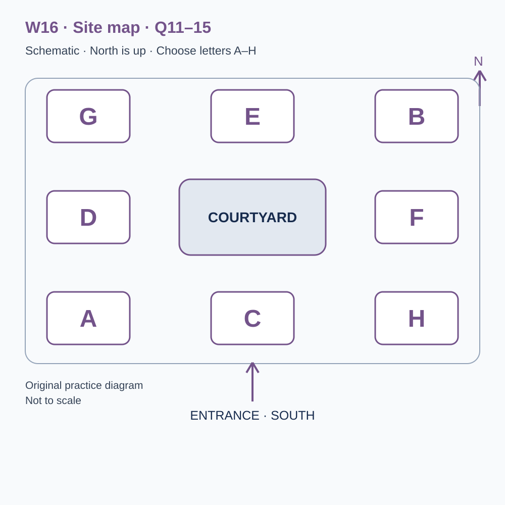
Q11. Check-in
Answer: ____
Q12. Individual practice room
Answer: ____
Q13. Discussion room
Answer: ____
Q14. Review room
Answer: ____
Q15. Printed-resource collection point
Answer: ____
Q16. How should the original checkpoint result be used?
- A. As an official band conversion
- B. As evidence for specific next learning decisions
- C. As a substitute for all formal assessment requirements
Answer: ____
Q17. What should learners identify before starting?
- A. Every possible optional addition
- B. Only the maximum amount they can write
- C. Required outputs and what the stated limit includes
Answer: ____
Q18. Why preserve the first response separately?
- A. It shows the difficulty before correction or feedback
- B. It proves revisions were unaided
- C. It makes help received irrelevant
Answer: ____
Q19. How should confidence ratings be interpreted?
- A. As substitutes for supporting evidence
- B. Alongside answers and the reasons behind the rating
- C. As a rule that high confidence deserves praise regardless of accuracy
Answer: ____
Q20. What makes the closing plan useful?
- A. Trying to change every weakness at once
- B. Promising a score before the next attempt
- C. Naming a manageable priority and a later way to check it
Answer: ____
Part 3 — Interpreting two practice attempts
Q21–26: Match each proposal to the students' final positions at the end of that exchange. The tutor is not included. Write A, B, C or D. Letters may be reused.
- A Mina only
- B Caleb only
- C Both students
- D Neither student
Q27–28 and Q29–30: Choose TWO different letters, A–E, for each pair. Write one letter in each numbered slot; either order is accepted. Each distinct correct choice earns one point, maximum two. Repeating a letter cannot earn two points. Submit no more than two letters.
Q21. At the END of this exchange, who supports: Reviewing missed required outputs before other details?
Answer: ____
Q22. At the END of this exchange, who supports: Timing the first planning stage separately next time?
Answer: ____
Q23. At the END of this exchange, who supports: Converting the local total into an official band?
Answer: ____
Q24. At the END of this exchange, who supports: Adding a short follow-up on uncertain interpretations in the next session?
Answer: ____
Q25. At the END of this exchange, who supports: Checking task and support conditions before comparing attempts?
Answer: ____
Q26. At the END of this exchange, who supports: Adding confidence ratings with reasons beside first answers?
Answer: ____
Q27–28. Which TWO indicators are agreed for the review?
- A. Total word count as the main measure
- B. Required-output coverage
- C. A neatness ranking
- D. Evidence traceability for main claims
- E. An official score forecast
Answers: Q27 ____ · Q28 ____
Q29–30. Which TWO limitations affect the comparison of attempts?
- A. The second task was more familiar
- B. Both original responses were saved
- C. A session was cancelled
- D. Participants received unequal assistance
- E. Pages were missing
Answers: Q29 ____ · Q30 ____
Part 4 — From a checkpoint to a revised learning plan
Q31–35: Complete the flow chart below. Q36–40: Complete the notes. Write NO MORE THAN TWO WORDS AND/OR A NUMBER for each answer, using words from the recording. Numeric notation may replace spoken numbers. Words or units already printed do not belong in the blank. The numbered text below repeats the SVG prompts for readability.
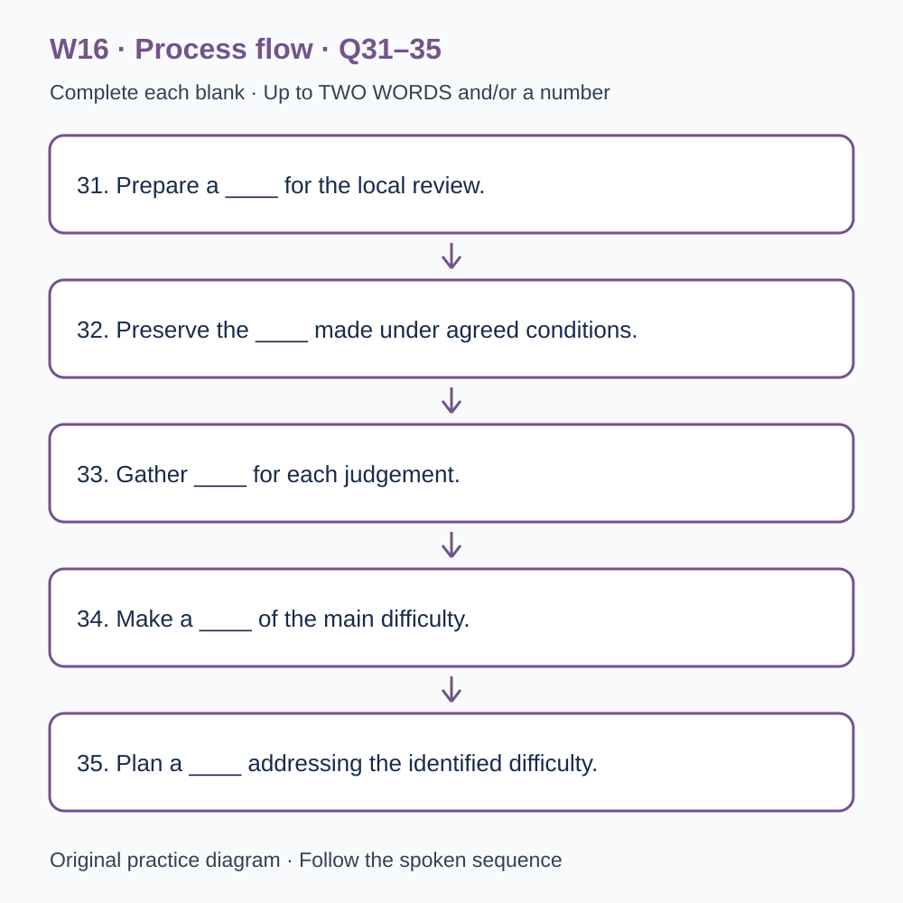
Q31. Prepare a ____ for the local review.
Q32. Preserve the ____ made under agreed conditions.
Q33. Gather ____ for each judgement.
Q34. Make a ____ of the main difficulty.
Q35. Plan a ____ addressing the identified difficulty.
Q36. Check ____ after a delay.
Q37. Using learning in a different task or setting is ____.
Q38. The relationship between confidence and accuracy is ____.
Q39. Select a small number of ____ for the next period.
Q40. Arrange a ____ to review the next attempt.
本周训练安排（音频批准后执行）
- Preview questions without the script：8 分钟。
- Future continuous first listen, including planned part pauses：32 分钟。
- Submit first answers and confidence, without a second play：8 分钟。
- Check answers and classify errors：20 分钟。
- Four Q-located intensive segments, 15 minutes each：60 分钟。
- Diagram and opinion retelling：15 分钟。
- Next-day retry of missed items：15 分钟。
合计 158 分钟；最多另用 22 分钟缓冲，总计不超过 180 分钟。暂停、回放与查词均计入精听预算，不能另行无限追加。当前实际已完成听力分钟数为 0。精听区段和步骤见 intensive.md；答案和脚本另页。
参考答案与证据（完成首次听力后再展开）
L-W16 — Answers and evidence
> 独立答案页。先提交首次答案，再看本页。当前缺音频，文本验题不能充当实听验收。
每个单空 1 分；双选各 2 分、答案顺序不限、按不同正确选项计分。接受形式仅做大小写和空白规范化；不做模糊词形推断。
Q1 — progress review
Accepted answers: progress review / review
Use the final confirmed detail in this exchange; the printed unit or date context is already supplied.
Evidence locator: Q01 (script.md; timestamps unavailable).
> Adviser: Learning review centre, hello. Learner: I'd like to attend one of your workshops with a study partner. We don't need somebody to predict an official test score. We want to review what our recent practice shows and decide what to work on next. Adviser: Then progress review is the workshop topic to select. Learner: Yes, progress review describes our purpose. We have records from several original classroom tasks, but we're unsure which differences reflect learning and which reflect different conditions. Adviser: The session examines that distinction. It uses local examples and doesn't turn classroom marks into an official result or replace any formal assessment you may need to arrange separately.
Q2 — 21
Accepted answers: 21 / 21st / twenty-first / the twenty-first / twenty first / the 21st
Use the final confirmed detail in this exchange; the printed unit or date context is already supplied.
Evidence locator: Q02 (script.md; timestamps unavailable).
> Adviser: The workshop is on the twenty-first of November. Learner: I saw the fourteenth in an early programme. Has it moved? Adviser: Yes. The twenty-first is the confirmed date after the room arrangement was settled. Learner: That's possible for both of us. I'll replace the older calendar entry and send my partner the current information. Adviser: We will repeat the date in your confirmation. Learner: Good. I want to avoid keeping two versions and then guessing which one was final when we organise transport. Adviser: The confirmation is the booking record to use. If another practical change occurs, the update will clearly identify that same booking rather than appear as an unrelated event notice.
Q3 — 1.35
Accepted answers: 1.35 / 1:35 / 01.35 / 01:35 / 13.35 / 13:35 / one thirty-five
Use the final confirmed detail in this exchange; the printed unit or date context is already supplied.
Evidence locator: Q03 (script.md; timestamps unavailable).
> Learner: What time does it start? Adviser: One thirty-five in the afternoon. The building is open from one, but your workshop begins at one thirty-five. Learner: I'll record one thirty-five as the session time and arrive shortly before it to check in. Adviser: Thank you. The introduction explains how to use the practice records and what conclusions the exercise cannot support. Learner: We shouldn't miss that and then assume the workshop is a formal test. Adviser: Exactly. The activity is a guided review of learning evidence. It has a schedule and clear tasks, but those features alone don't make it a standardised assessment or provide an official score interpretation.
Q4 — 2
Accepted answers: 2 / two
Use the final confirmed detail in this exchange; the printed unit or date context is already supplied.
Evidence locator: Q04 (script.md; timestamps unavailable).
> Adviser: How many places should I reserve? Learner: Two. Three of us discussed attending, but the third person has another commitment. Adviser: Two places are available. Learner: We'll collect that person's questions, but we won't reserve a seat that we don't expect them to use. Adviser: If your attendance changes, contact us before transferring a place. The group activity depends on knowing who is coming and how many work areas to prepare. Learner: I'll keep the booking with the two confirmed names and update it through the proper route if necessary. Adviser: That helps us maintain a clear record rather than reconstruct changes from several informal messages on the morning.
Q5 — 28
Accepted answers: 28 / 28.00 / twenty-eight / twenty eight
Use the final confirmed detail in this exchange; the printed unit or date context is already supplied.
Evidence locator: Q05 (script.md; timestamps unavailable).
> Learner: What is the total cost for the two places? Adviser: The introductory booking total is twenty-eight pounds. Learner: Twenty-eight altogether, not for each person? Adviser: Correct. It includes the workshop materials. A separate consultation about a longer programme would have different arrangements, but you haven't booked that here. Learner: I'll share the total and the scope with my partner so we both understand what the payment covers. Adviser: Check the confirmation before completing payment. If the amount or number of places differs from this conversation, ask us to correct it. A clear explanation now is better than discovering later that each person assumed a different service was included.
Q6 — error log
Accepted answers: error log / log / the log
Use the final confirmed detail in this exchange; the printed unit or date context is already supplied.
Evidence locator: Q06 (script.md; timestamps unavailable).
> Learner: What should we bring from our practice? Adviser: Bring your error log, with the original task references if you have them. The log should distinguish what you first answered, what the feedback said and what you changed afterwards. Learner: I have an error log, although some entries just say careless mistake. Adviser: Bring it as it is. We can discuss how to make those entries more informative. You don't need to rewrite the log to make your preparation look better. Learner: That's useful. A record of the difficulty we actually had will probably help more than a polished summary that hides the steps between the first attempt and the correction.
Q7 — A
Accepted answers: A
Its local tasks guide learning and do not provide an official interpretation.
Evidence locator: Q07 (script.md; timestamps unavailable).
> Learner: Will we take a formal examination during the workshop? Adviser: No. There is an original practice activity to help you examine your review method, but it isn't an official examination or a substitute for a separately required checkpoint. Learner: So its results help us plan learning rather than establish a recognised score. Adviser: Exactly. The tasks and local criteria are explained for that purpose. Learner: I'll make sure my partner understands the distinction before we arrive. Adviser: Good. A structured activity can be useful without claiming the standardisation, security or score interpretation of a formal assessment. We want the conclusions to match the evidence the activity is actually designed to produce.
Q8 — B
Accepted answers: B
Task familiarity and support affect interpretation; the totals alone are insufficient.
Evidence locator: Q08 (script.md; timestamps unavailable).
> Learner: Can we compare our two practice scores directly? Adviser: You can discuss them, but first examine the tasks, timing and help received. A higher total from an easier or more familiar activity may not show the same thing as improvement under comparable conditions. Learner: We should bring those details rather than just the final numbers. Adviser: Yes. The workshop looks at the information behind a difference. It doesn't assume every rise proves learning or every fall proves decline. Learner: That could change how we read our logs. We've sometimes written a judgement beside a number without recording whether we repeated a task we already knew or received extra explanation before finishing it.
Q9 — C
Accepted answers: C
A specific advance request supports a clear arrangement with stated limits.
Evidence locator: Q09 (script.md; timestamps unavailable).
> Learner: One of us may need a different format for the review sheet. Should we wait until the workshop? Adviser: Please describe the practical requirement when replying to the confirmation. We can check the available formats and discuss any limits before the day. Learner: I'll ask my partner which format works rather than guess on their behalf. Adviser: Thank you. That gives us a useful request to respond to. Learner: We don't want to arrive assuming that an ordinary printed sheet is the only option, or assume an alternative is guaranteed without discussing it. Adviser: Exactly. The aim is a clear arrangement that the participant and the teaching team both understand in advance.
Q10 — A
Accepted answers: A
The complete confirmation contains both attendance instructions and the route for changes.
Evidence locator: Q10 (script.md; timestamps unavailable).
> Learner: If we need to change the booking, what should we do? Adviser: Reply to the confirmation with the booking reference. For an urgent change close to the session, use the telephone number printed there. Learner: A message in the public workshop comments wouldn't update the attendance list? Adviser: Correct. It may not reach the person managing places. Learner: I'll keep the full confirmation, not just a screenshot of the time. Adviser: Good. It contains the current instructions and the route for changing them. That helps prevent two people acting on different versions and each assuming the other has already told the centre about a revised plan.
Q11 — C
Accepted answers: C
Use the explicitly stated position relative to the courtyard, not an earlier layout or adjacent area.
Evidence locator: Q11 (script.md; timestamps unavailable).
> Welcome to the learning review centre. North is at the top of the diagram, the entrance is on the southern edge and the courtyard is the central landmark. Eight lettered spaces surround it. Check-in is directly south of the courtyard, on the entrance axis. It isn't in either southern corner. Please report there before joining an activity. Staff can confirm the room and explain any practical update. The centre hosts several kinds of learning session, so an old plan from another event may not identify today's arrangement. Use the current diagram and ask if a sign appears inconsistent with the instructions in your confirmation.
Q12 — G
Accepted answers: G
Use the explicitly stated position relative to the courtyard, not an earlier layout or adjacent area.
Evidence locator: Q12 (script.md; timestamps unavailable).
> The individual practice room is in the north-west corner. It is west of the northern central room and diagonally north-west of the courtyard. An earlier plan put the practice activity directly north, but that room now has another function. The practice room is used under a stated timetable, so please wait until the leader explains when to begin. This original activity is a way to examine a learning process, not an official test. Keep the conditions visible in your record, including any agreed support. A local score is only interpretable in relation to the task and procedure that produced it, not by the room's formal appearance or the presence of a timer.
Q13 — F
Accepted answers: F
Use the explicitly stated position relative to the courtyard, not an earlier layout or adjacent area.
Evidence locator: Q13 (script.md; timestamps unavailable).
> The discussion room is directly east of the courtyard, level with its centre. It is not the south-east room. Groups use that space to compare interpretations of their practice records after the individual activity. The purpose is to explain what the evidence supports and where members disagree, not to rank people by a single total. A participant with a lower score may have encountered unfamiliar material or received less help, so the number alone doesn't settle the comparison. Please bring the task conditions and relevant examples to the discussion. Those details give the group something specific to examine instead of relying only on a broad judgement such as better or worse.
Q14 — B
Accepted answers: B
Use the explicitly stated position relative to the courtyard, not an earlier layout or adjacent area.
Evidence locator: Q14 (script.md; timestamps unavailable).
> The review room is in the north-east corner, directly north of the discussion room. It is also east of the northern central room, since both positions are on the same northern row of the diagram. This is where participants turn their observations into a short plan for the next stage. The plan should identify a priority and the evidence behind it, rather than list every possible weakness. Staff may ask you to explain why a proposed action addresses the difficulty you observed. That question is intended to clarify the reasoning, not to demand certainty about a future result. A useful plan can include a carefully defined uncertainty to investigate.
Q15 — A
Accepted answers: A
Use the explicitly stated position relative to the courtyard, not an earlier layout or adjacent area.
Evidence locator: Q15 (script.md; timestamps unavailable).
> The collection point for printed resources is in the south-west area, west of check-in and below the room directly west of the courtyard. Please take the resource that matches the task version named by your leader. Several activities use similar layouts, but their required outputs may differ. A familiar-looking sheet isn't necessarily the correct one. If you find a missing page, report it rather than copy a neighbour's answers and treat that as an independent attempt. The collection point is a practical service, not a second assessment desk. The helper can supply the right material but won't decide which interpretation your response should defend.
Q16 — B
Accepted answers: B
The activity is original practice with a limited learning purpose, not official score evidence.
Evidence locator: Q16 (script.md; timestamps unavailable).
> Today's checkpoint is original practice. It cannot replace an official or separately scheduled formal assessment, and its local score should not be converted into an official band or grade. The useful evidence concerns particular actions: whether a requirement was noticed, whether a claim had support and whether time was reserved for checking. Those observations can guide a next learning decision without predicting every future performance. We ask participants to keep that scope visible when discussing the result afterwards. Calling an exercise a checkpoint explains its place in a learning sequence; it doesn't by itself establish that the task has the properties needed for a formal score interpretation.
Q17 — C
Accepted answers: C
Effort should address the specified task; unrequested work can displace a required qualification.
Evidence locator: Q17 (script.md; timestamps unavailable).
> Before the activity begins, identify what the task requires and what the stated limit includes. If a response asks for a comparison and a recommendation, completing only the comparison is an incomplete response even if it is detailed. At the same time, adding an unrequested section can consume time needed for a required qualification. The task isn't a contest to write the largest amount. It asks you to allocate effort to the work specified. If an instruction is unclear, follow the clarification process rather than silently invent a requirement. Your later review should be able to distinguish misunderstanding the task from understanding it but running out of time.
Q18 — A
Accepted answers: A
First and revised responses answer different questions; support must remain visible.
Evidence locator: Q18 (script.md; timestamps unavailable).
> During the review, preserve your first response separately from the corrected version. Otherwise you may remember the improved answer as though it were what you produced independently at the start. The first response provides evidence about the difficulty; the correction provides evidence about what you changed after feedback or further thought. Both are useful, but they answer different questions. If you used an explanation from another person, record that support rather than presenting the revision as unaided work. The aim is an honest learning record, not a display that makes every attempt look successful by removing the parts that would help you understand why improvement was needed.
Q19 — B
Accepted answers: B
Ratings become useful when linked to evidence, errors and changes of interpretation.
Evidence locator: Q19 (script.md; timestamps unavailable).
> A confidence rating can be discussed alongside an answer, but confidence isn't a substitute for evidence. A person may feel certain about an incorrect interpretation or uncertain about a well-supported one. The review can examine the relationship between the rating and the response rather than praising confidence by itself. Explain which clue or reasoning step produced your judgement. If you changed your mind, identify what new information mattered. This makes a confidence record useful for learning: it can reveal a recurring unsupported assumption or a tendency to overlook evidence you actually understood. A bare high-or-low label without that connection may tell the group little about what to change next.
Q20 — C
Accepted answers: C
A deliberate next action can be examined; one local result is not a permanent description of ability.
Evidence locator: Q20 (script.md; timestamps unavailable).
> The closing plan should name one manageable priority and a way to check it later. You may need more than one improvement over time, but attempting every possible change in the next session can make it difficult to learn which action helped. Record what you will retain as well as what you will revise. The next checkpoint should connect to the plan without simply repeating a familiar answer from memory. A useful sequence includes an attempt, evidence, interpretation and a deliberate next action. It remains open to revision when new evidence arrives, rather than treating one local practice result as a permanent description of a learner's ability.
Q21 — C
Accepted answers: C
Final stance: Both students. Ignore an initial proposal if later withdrawn; the tutor is not an answer option.
Evidence locator: Q21 (script.md; timestamps unavailable).
> Tutor: You completed two original practice attempts last week. Today we're reviewing them before planning the next checkpoint. Mina: I suggest beginning with any required output that was missed. A neat answer can still fail to do everything the task asked. Caleb: I agree. I initially wanted to start with spelling, but an omitted recommendation affects the whole response. Tutor: So you both support reviewing missed requirements first? Caleb: Yes, while keeping the other issues for later. Mina: We can mark the instruction and the corresponding place in the response. Tutor: That gives you a concrete comparison rather than a general impression that one answer seems more complete than another.
Q22 — B
Accepted answers: B
Final stance: Caleb only. Ignore an initial proposal if later withdrawn; the tutor is not an answer option.
Evidence locator: Q22 (script.md; timestamps unavailable).
> Tutor: Caleb proposes timing the first planning stage separately in the next attempt. Caleb: I support that. We know the overall duration, but we don't know whether the planning stage expanded or whether writing took longer. Mina: I'd keep the same timing record for one more attempt before adding another measurement. A new stage marker might alter how people plan. Tutor: Could that alteration itself be useful to observe? Mina: Possibly, but I still prefer to establish the existing pattern first. Caleb: I continue to support the separate timing. Tutor: Then the proposal isn't shared. Your disagreement is about what the next attempt should investigate, not whether planning time can matter.
Q23 — D
Accepted answers: D
Final stance: Neither student. Ignore an initial proposal if later withdrawn; the tutor is not an answer option.
Evidence locator: Q23 (script.md; timestamps unavailable).
> Tutor: An early note suggests converting the local total into an official band. Caleb: I wrote that because a familiar scale seemed easier to explain. Mina: I don't support it. These tasks don't provide a valid official score conversion. Caleb: You're right. I'll remove the conversion and keep the result on the local scale with its purpose stated. Tutor: Are you withdrawing the proposed official interpretation? Caleb: Yes. A structured original task isn't enough to justify that claim. Mina: We can still identify specific strengths and difficulties. Tutor: Exactly. A narrower, justified conclusion is more useful than a familiar number whose meaning the assessment design cannot support.
Q24 — A
Accepted answers: A
Final stance: Mina only. Ignore an initial proposal if later withdrawn; the tutor is not an answer option.
Evidence locator: Q24 (script.md; timestamps unavailable).
> Tutor: Mina proposes a short follow-up on uncertain interpretations from the review. Mina: I support asking participants to explain one passage they were unsure about. It could distinguish a misunderstood word from a problem with the underlying reasoning. Caleb: I'd leave that out of the next session and use the time for another independent attempt. Mina: We could keep it brief, but I still think the explanation is worth collecting. Tutor: Caleb, does limiting it to one passage change your position? Caleb: Not for this stage. I want to see whether the difficulty recurs without additional help. Tutor: Then Mina supports the follow-up and Caleb remains against including it in this next session.
Q25 — C
Accepted answers: C
Final stance: Both students. Ignore an initial proposal if later withdrawn; the tutor is not an answer option.
Evidence locator: Q25 (script.md; timestamps unavailable).
> Tutor: Should you compare attempts only after checking the conditions? Caleb: Yes. We need to know whether the tasks were similarly familiar and what help was available. Mina: I agree. Equal time limits don't make every other condition equivalent. Tutor: What would you do if the conditions differed? Mina: Describe the difference and narrow the claim, rather than force the totals into a simple improvement story. Caleb: We might still learn something from the examples, but we couldn't attribute every change to the learning plan. Tutor: Then this is a shared check. It should happen before interpreting the score difference, not appear as a small qualification after a confident conclusion has already been announced.
Q26 — A
Accepted answers: A
Final stance: Mina only. Ignore an initial proposal if later withdrawn; the tutor is not an answer option.
Evidence locator: Q26 (script.md; timestamps unavailable).
> Tutor: Do you both want a confidence rating beside each first answer? Mina: I support it, with a brief note about the evidence behind the rating. It could show where I'm certain for a weak reason. Caleb: I'd record the errors and their causes first without adding ratings. People may use the scale differently, and I don't want to create another difficult comparison. Tutor: Would an agreed scale resolve that? Caleb: It would help, but I still prefer to leave ratings out of the next attempt. Mina: I continue to favour them. Tutor: Then Mina supports the proposal and Caleb doesn't. Keep that distinction separate from your shared agreement to preserve the first response.
Q27–28 — B, D
Accept unordered set: B, D. One point per distinct correct choice, maximum 2.
Coverage and traceable evidence address the observed task difficulties without claiming a formal score.
Evidence locator: Q27, Q28 (script.md; timestamps unavailable).
> Tutor: Which two indicators have you agreed for the stage review? Caleb: First, coverage of the required outputs. We can check whether each requested component is present rather than assume a long answer is complete. Mina: Agreed. The checklist should use the actual instruction for that task. Tutor: Are you using total word count as the main indicator instead? Mina: No. More words don't necessarily mean better task fulfilment. Caleb: We also rejected a neatness ranking. Tutor: Then required-output coverage is the first agreed indicator. It doesn't judge every aspect of quality, but it addresses a concrete problem that appeared in the practice and can be examined directly in the response.
> Tutor: What is the second agreed indicator? Mina: Whether the evidence behind each main claim can be traced. A response may state an attractive conclusion without showing which information supports it. Caleb: Yes. We'll connect the claim to a relevant source detail or reasoning step. Tutor: Are you predicting an official result from that indicator? Caleb: No. We rejected a formal score forecast for this original activity. Mina: The pair is required-output coverage and evidence traceability. Tutor: Good. Those indicators give the review a defined focus. They don't turn it into a complete assessment of every skill, so keep the scope visible when explaining the result to somebody who wasn't part of the exercise.
Q29–30 — A, D
Accept unordered set: A, D. One point per distinct correct choice, maximum 2.
Familiarity and extra help limit attribution to the learning plan; the other options were not defects affecting these attempts.
Evidence locator: Q29, Q30 (script.md; timestamps unavailable).
> Tutor: Which two limitations affect the comparison between last week's attempts? Mina: The second task was more familiar. Several participants had worked with a similar example before, whereas the first task introduced a new setting. Caleb: Agreed. That familiarity could contribute to a higher total. Tutor: Does saving both first responses count as a limitation? Caleb: No, it helps us compare the actual work. Mina: And both sessions took place, so cancellation isn't part of the explanation. Tutor: Then prior familiarity is the first limitation. Explain its relevance to the result rather than listing every difference between the task sheets as though each must have had an equal effect.
> Tutor: What is the second limitation? Caleb: Participants received different amounts of help. Some had an additional explanation before completing the second response. Mina: Yes. We can't treat that result as entirely independent work or attribute every improvement to the plan we proposed. Tutor: What will change next time? Mina: Record the assistance consistently and distinguish unaided work from work completed after help. Caleb: We should preserve the earlier records with their limitations rather than edit the help out of the history. Tutor: Exactly. The two limitations are task familiarity and unequal assistance. The printed pages were complete, so missing material isn't another problem that affected these particular attempts.
Q31 — rubric
Accepted answers: rubric / scoring guide / guide / useful rubric
Complete the named stage in the stated process order; retain any word already printed around the blank.
Evidence locator: Q31 (script.md; timestamps unavailable).
> This lecture describes an original learning checkpoint, not a formal standardised examination. The first stage prepares a rubric. A rubric is a scoring guide that explains which features the local review will examine and how judgements will be made. In this example, the guide focuses on responding to the task and supporting claims with relevant evidence. It does not provide an official score conversion. The team should make the criteria clear before reviewing the responses, so the standard doesn't shift to fit an attractive answer after it has been seen. A useful rubric supports consistent discussion while keeping its limited purpose visible to both participants and reviewers.
Q32 — first attempt
Accepted answers: first attempt / attempt / initial response / response / first response / initial attempt
Complete the named stage in the stated process order; retain any word already printed around the blank.
Evidence locator: Q32 (script.md; timestamps unavailable).
> The second stage preserves the first attempt made under the agreed conditions. The initial response is kept separately from revisions, with the task version, time limit and any support recorded. This gives the review an identifiable object rather than a memory of what the learner probably meant to write. A corrected response may demonstrate useful learning, but it cannot replace the initial response when the question concerns independent performance before feedback. The team should also note a significant interruption rather than pretend the attempt followed the plan exactly. Keeping the record clear is a practical requirement for interpreting later change, not an invitation to treat one attempt as a complete description of ability.
Q33 — evidence
Accepted answers: evidence
Complete the named stage in the stated process order; retain any word already printed around the blank.
Evidence locator: Q33 (script.md; timestamps unavailable).
> The third stage gathers evidence for each judgement. Evidence includes features of the response that relate to the stated criteria, such as a missing required output or a claim connected to an appropriate source detail. The reviewer should identify the relevant passage rather than rely only on a general impression. A label such as unclear may be a starting observation, but it needs an explanation of what the reader cannot follow and why that matters to the task. The purpose is to make the judgement inspectable. Another reviewer should be able to see the basis for the comment and discuss it, rather than accept an unexplained verdict because it sounds confident.
Q34 — diagnosis
Accepted answers: diagnosis / reasoned explanation
Complete the named stage in the stated process order; retain any word already printed around the blank.
Evidence locator: Q34 (script.md; timestamps unavailable).
> The fourth stage makes a diagnosis of the main difficulty. A diagnosis is a reasoned explanation that connects the observed problem with a plausible learning need. An omitted section could reflect a missed instruction, poor time allocation or uncertainty about the content. The response alone may not distinguish those possibilities, so the reviewer should keep the explanation qualified and use additional information where appropriate. Calling every omission carelessness doesn't identify a useful action. The aim is to formulate a difficulty precisely enough that a later revision can address it, while acknowledging when the evidence supports more than one interpretation. Diagnosis therefore follows evidence rather than replacing the need to examine it.
Q35 — revision
Accepted answers: revision / change / deliberate change / focused adjustment / selected action
Complete the named stage in the stated process order; retain any word already printed around the blank.
Evidence locator: Q35 (script.md; timestamps unavailable).
> The fifth stage plans a revision that addresses the identified difficulty. A revision is a deliberate change, not simply a second attempt made with the hope that more effort will produce a better result. The learner might add a check for required outputs, practise a particular reasoning step or alter the allocation of time. The selected action should connect to the diagnosis and remain manageable within the next session. If several changes are introduced at once, it may be difficult to understand which one helped. The plan can therefore begin with a focused adjustment while keeping other needs recorded for later work. The next attempt will provide new evidence, not a guaranteed confirmation that the plan was correct.
Q36 — retention
Accepted answers: retention / what remains
The corresponding evidence block supplies this distinction or qualification; the question retains the surrounding grammar.
Evidence locator: Q36 (script.md; timestamps unavailable).
> Retention concerns what remains available after a delay. A learner who can repeat an explanation immediately after hearing it may not use the same idea independently a week later. A later check can explore retention, provided its purpose and conditions are clear. The reviewer should not treat any difference as proof that all earlier learning disappeared; the later task may introduce another demand or context. It helps to identify which specific knowledge or procedure the check is intended to examine. That makes the comparison more informative than a broad judgement that the learner either remembers everything or has forgotten the whole lesson based on one response.
Q37 — transfer
Accepted answers: transfer
The corresponding evidence block supplies this distinction or qualification; the question retains the surrounding grammar.
Evidence locator: Q37 (script.md; timestamps unavailable).
> Transfer concerns using learning in a different task or setting. A person may recognise the required comparison in a familiar example but miss it when the wording changes. The next stage can examine whether the underlying principle carries across, without simply asking for the same answer again. The team should describe the relevant similarities and differences between tasks. A task that changes every feature at once may make a difficulty hard to interpret, while an almost identical task may mainly reward memory of the earlier response. A useful transfer check is designed around the principle being investigated and keeps the claim narrower than a promise of success in every future situation.
Q38 — calibration
Accepted answers: calibration
The corresponding evidence block supplies this distinction or qualification; the question retains the surrounding grammar.
Evidence locator: Q38 (script.md; timestamps unavailable).
> Calibration concerns the relationship between confidence and accuracy. In this example, a learner records confidence before receiving feedback and later compares that rating with the support for the answer. High confidence in a weak interpretation may reveal an assumption worth examining; low confidence in a sound interpretation may reveal overlooked evidence. The review should investigate the pattern rather than simply encourage everyone to sound more certain. Different people may use a rating scale differently, so an agreed description helps. Calibration is a local learning question here, not a diagnosis of personality. Its value depends on linking a rating with an answer and the reasons behind it.
Q39 — priorities
Accepted answers: priorities / targets / improvement targets / clear priorities
The corresponding evidence block supplies this distinction or qualification; the question retains the surrounding grammar.
Evidence locator: Q39 (script.md; timestamps unavailable).
> The stage review selects a small number of priorities for the next period. These improvement targets should reflect both the importance of a difficulty and the evidence that the proposed action can address it. The most frequent error is not automatically the best first target if it has little effect on the required task. Equally, a striking rare mistake may distract from a repeated omission that prevents completion. The learner and reviewer explain the choice and record what will be deferred. This keeps the plan manageable without pretending that deferred issues have disappeared. Clear priorities make the next session a deliberate test of an improvement idea rather than another attempt to fix everything simultaneously.
Q40 — checkpoint
Accepted answers: checkpoint / review / useful review
The corresponding evidence block supplies this distinction or qualification; the question retains the surrounding grammar.
Evidence locator: Q40 (script.md; timestamps unavailable).
> Finally, the team arranges a checkpoint to review the next attempt. The checkpoint identifies when the evidence will be examined, which criteria remain relevant and what would justify changing the plan. It should not promise a particular score before the learner has done the work. A useful review can lead to retaining the current approach, revising the diagnosis or testing a different action. The record should preserve that decision and its reasons. In this way, an original checkpoint becomes one stage in a continuing learning process. It supports a justified next step while leaving formal assessment requirements separate and avoiding claims that a local exercise can establish every conclusion a learner might want to draw.
完整脚本（提前阅读会失去陌生题首答机会）
L-W16 — An original checkpoint and the next learning decision: transcript
> 原创虚构练习，非真题；音频缺失。仅供完成首次作答后的核对或文字审阅。Q 标记与角色名不属于朗读正文。
Part 1 — Booking a progress workshop
Q1 evidence block
Adviser: Learning review centre, hello.
Learner: I'd like to attend one of your workshops with a study partner. We don't need somebody to predict an official test score. We want to review what our recent practice shows and decide what to work on next.
Adviser: Then progress review is the workshop topic to select.
Learner: Yes, progress review describes our purpose. We have records from several original classroom tasks, but we're unsure which differences reflect learning and which reflect different conditions.
Adviser: The session examines that distinction. It uses local examples and doesn't turn classroom marks into an official result or replace any formal assessment you may need to arrange separately.
Q2 evidence block
Adviser: The workshop is on the twenty-first of November.
Learner: I saw the fourteenth in an early programme. Has it moved?
Adviser: Yes. The twenty-first is the confirmed date after the room arrangement was settled.
Learner: That's possible for both of us. I'll replace the older calendar entry and send my partner the current information.
Adviser: We will repeat the date in your confirmation.
Learner: Good. I want to avoid keeping two versions and then guessing which one was final when we organise transport.
Adviser: The confirmation is the booking record to use. If another practical change occurs, the update will clearly identify that same booking rather than appear as an unrelated event notice.
Q3 evidence block
Learner: What time does it start?
Adviser: One thirty-five in the afternoon. The building is open from one, but your workshop begins at one thirty-five.
Learner: I'll record one thirty-five as the session time and arrive shortly before it to check in.
Adviser: Thank you. The introduction explains how to use the practice records and what conclusions the exercise cannot support.
Learner: We shouldn't miss that and then assume the workshop is a formal test.
Adviser: Exactly. The activity is a guided review of learning evidence. It has a schedule and clear tasks, but those features alone don't make it a standardised assessment or provide an official score interpretation.
Q4 evidence block
Adviser: How many places should I reserve?
Learner: Two. Three of us discussed attending, but the third person has another commitment.
Adviser: Two places are available.
Learner: We'll collect that person's questions, but we won't reserve a seat that we don't expect them to use.
Adviser: If your attendance changes, contact us before transferring a place. The group activity depends on knowing who is coming and how many work areas to prepare.
Learner: I'll keep the booking with the two confirmed names and update it through the proper route if necessary.
Adviser: That helps us maintain a clear record rather than reconstruct changes from several informal messages on the morning.
Q5 evidence block
Learner: What is the total cost for the two places?
Adviser: The introductory booking total is twenty-eight pounds.
Learner: Twenty-eight altogether, not for each person?
Adviser: Correct. It includes the workshop materials. A separate consultation about a longer programme would have different arrangements, but you haven't booked that here.
Learner: I'll share the total and the scope with my partner so we both understand what the payment covers.
Adviser: Check the confirmation before completing payment. If the amount or number of places differs from this conversation, ask us to correct it. A clear explanation now is better than discovering later that each person assumed a different service was included.
Q6 evidence block
Learner: What should we bring from our practice?
Adviser: Bring your error log, with the original task references if you have them. The log should distinguish what you first answered, what the feedback said and what you changed afterwards.
Learner: I have an error log, although some entries just say careless mistake.
Adviser: Bring it as it is. We can discuss how to make those entries more informative. You don't need to rewrite the log to make your preparation look better.
Learner: That's useful. A record of the difficulty we actually had will probably help more than a polished summary that hides the steps between the first attempt and the correction.
Q7 evidence block
Learner: Will we take a formal examination during the workshop?
Adviser: No. There is an original practice activity to help you examine your review method, but it isn't an official examination or a substitute for a separately required checkpoint.
Learner: So its results help us plan learning rather than establish a recognised score.
Adviser: Exactly. The tasks and local criteria are explained for that purpose.
Learner: I'll make sure my partner understands the distinction before we arrive.
Adviser: Good. A structured activity can be useful without claiming the standardisation, security or score interpretation of a formal assessment. We want the conclusions to match the evidence the activity is actually designed to produce.
Q8 evidence block
Learner: Can we compare our two practice scores directly?
Adviser: You can discuss them, but first examine the tasks, timing and help received. A higher total from an easier or more familiar activity may not show the same thing as improvement under comparable conditions.
Learner: We should bring those details rather than just the final numbers.
Adviser: Yes. The workshop looks at the information behind a difference. It doesn't assume every rise proves learning or every fall proves decline.
Learner: That could change how we read our logs. We've sometimes written a judgement beside a number without recording whether we repeated a task we already knew or received extra explanation before finishing it.
Q9 evidence block
Learner: One of us may need a different format for the review sheet. Should we wait until the workshop?
Adviser: Please describe the practical requirement when replying to the confirmation. We can check the available formats and discuss any limits before the day.
Learner: I'll ask my partner which format works rather than guess on their behalf.
Adviser: Thank you. That gives us a useful request to respond to.
Learner: We don't want to arrive assuming that an ordinary printed sheet is the only option, or assume an alternative is guaranteed without discussing it.
Adviser: Exactly. The aim is a clear arrangement that the participant and the teaching team both understand in advance.
Q10 evidence block
Learner: If we need to change the booking, what should we do?
Adviser: Reply to the confirmation with the booking reference. For an urgent change close to the session, use the telephone number printed there.
Learner: A message in the public workshop comments wouldn't update the attendance list?
Adviser: Correct. It may not reach the person managing places.
Learner: I'll keep the full confirmation, not just a screenshot of the time.
Adviser: Good. It contains the current instructions and the route for changing them. That helps prevent two people acting on different versions and each assuming the other has already told the centre about a revised plan.
Part 2 — Learning review centre orientation
Q11 evidence block
Review host: Welcome to the learning review centre. North is at the top of the diagram, the entrance is on the southern edge and the courtyard is the central landmark. Eight lettered spaces surround it. Check-in is directly south of the courtyard, on the entrance axis. It isn't in either southern corner. Please report there before joining an activity. Staff can confirm the room and explain any practical update. The centre hosts several kinds of learning session, so an old plan from another event may not identify today's arrangement. Use the current diagram and ask if a sign appears inconsistent with the instructions in your confirmation.
Q12 evidence block
Review host: The individual practice room is in the north-west corner. It is west of the northern central room and diagonally north-west of the courtyard. An earlier plan put the practice activity directly north, but that room now has another function. The practice room is used under a stated timetable, so please wait until the leader explains when to begin. This original activity is a way to examine a learning process, not an official test. Keep the conditions visible in your record, including any agreed support. A local score is only interpretable in relation to the task and procedure that produced it, not by the room's formal appearance or the presence of a timer.
Q13 evidence block
Review host: The discussion room is directly east of the courtyard, level with its centre. It is not the south-east room. Groups use that space to compare interpretations of their practice records after the individual activity. The purpose is to explain what the evidence supports and where members disagree, not to rank people by a single total. A participant with a lower score may have encountered unfamiliar material or received less help, so the number alone doesn't settle the comparison. Please bring the task conditions and relevant examples to the discussion. Those details give the group something specific to examine instead of relying only on a broad judgement such as better or worse.
Q14 evidence block
Review host: The review room is in the north-east corner, directly north of the discussion room. It is also east of the northern central room, since both positions are on the same northern row of the diagram. This is where participants turn their observations into a short plan for the next stage. The plan should identify a priority and the evidence behind it, rather than list every possible weakness. Staff may ask you to explain why a proposed action addresses the difficulty you observed. That question is intended to clarify the reasoning, not to demand certainty about a future result. A useful plan can include a carefully defined uncertainty to investigate.
Q15 evidence block
Review host: The collection point for printed resources is in the south-west area, west of check-in and below the room directly west of the courtyard. Please take the resource that matches the task version named by your leader. Several activities use similar layouts, but their required outputs may differ. A familiar-looking sheet isn't necessarily the correct one. If you find a missing page, report it rather than copy a neighbour's answers and treat that as an independent attempt. The collection point is a practical service, not a second assessment desk. The helper can supply the right material but won't decide which interpretation your response should defend.
Q16 evidence block
Review host: Today's checkpoint is original practice. It cannot replace an official or separately scheduled formal assessment, and its local score should not be converted into an official band or grade. The useful evidence concerns particular actions: whether a requirement was noticed, whether a claim had support and whether time was reserved for checking. Those observations can guide a next learning decision without predicting every future performance. We ask participants to keep that scope visible when discussing the result afterwards. Calling an exercise a checkpoint explains its place in a learning sequence; it doesn't by itself establish that the task has the properties needed for a formal score interpretation.
Q17 evidence block
Review host: Before the activity begins, identify what the task requires and what the stated limit includes. If a response asks for a comparison and a recommendation, completing only the comparison is an incomplete response even if it is detailed. At the same time, adding an unrequested section can consume time needed for a required qualification. The task isn't a contest to write the largest amount. It asks you to allocate effort to the work specified. If an instruction is unclear, follow the clarification process rather than silently invent a requirement. Your later review should be able to distinguish misunderstanding the task from understanding it but running out of time.
Q18 evidence block
Review host: During the review, preserve your first response separately from the corrected version. Otherwise you may remember the improved answer as though it were what you produced independently at the start. The first response provides evidence about the difficulty; the correction provides evidence about what you changed after feedback or further thought. Both are useful, but they answer different questions. If you used an explanation from another person, record that support rather than presenting the revision as unaided work. The aim is an honest learning record, not a display that makes every attempt look successful by removing the parts that would help you understand why improvement was needed.
Q19 evidence block
Review host: A confidence rating can be discussed alongside an answer, but confidence isn't a substitute for evidence. A person may feel certain about an incorrect interpretation or uncertain about a well-supported one. The review can examine the relationship between the rating and the response rather than praising confidence by itself. Explain which clue or reasoning step produced your judgement. If you changed your mind, identify what new information mattered. This makes a confidence record useful for learning: it can reveal a recurring unsupported assumption or a tendency to overlook evidence you actually understood. A bare high-or-low label without that connection may tell the group little about what to change next.
Q20 evidence block
Review host: The closing plan should name one manageable priority and a way to check it later. You may need more than one improvement over time, but attempting every possible change in the next session can make it difficult to learn which action helped. Record what you will retain as well as what you will revise. The next checkpoint should connect to the plan without simply repeating a familiar answer from memory. A useful sequence includes an attempt, evidence, interpretation and a deliberate next action. It remains open to revision when new evidence arrives, rather than treating one local practice result as a permanent description of a learner's ability.
Part 3 — Interpreting two practice attempts
Q21 evidence block
Tutor: You completed two original practice attempts last week. Today we're reviewing them before planning the next checkpoint.
Mina: I suggest beginning with any required output that was missed. A neat answer can still fail to do everything the task asked.
Caleb: I agree. I initially wanted to start with spelling, but an omitted recommendation affects the whole response.
Tutor: So you both support reviewing missed requirements first?
Caleb: Yes, while keeping the other issues for later.
Mina: We can mark the instruction and the corresponding place in the response.
Tutor: That gives you a concrete comparison rather than a general impression that one answer seems more complete than another.
Q22 evidence block
Tutor: Caleb proposes timing the first planning stage separately in the next attempt.
Caleb: I support that. We know the overall duration, but we don't know whether the planning stage expanded or whether writing took longer.
Mina: I'd keep the same timing record for one more attempt before adding another measurement. A new stage marker might alter how people plan.
Tutor: Could that alteration itself be useful to observe?
Mina: Possibly, but I still prefer to establish the existing pattern first.
Caleb: I continue to support the separate timing.
Tutor: Then the proposal isn't shared. Your disagreement is about what the next attempt should investigate, not whether planning time can matter.
Q23 evidence block
Tutor: An early note suggests converting the local total into an official band.
Caleb: I wrote that because a familiar scale seemed easier to explain.
Mina: I don't support it. These tasks don't provide a valid official score conversion.
Caleb: You're right. I'll remove the conversion and keep the result on the local scale with its purpose stated.
Tutor: Are you withdrawing the proposed official interpretation?
Caleb: Yes. A structured original task isn't enough to justify that claim.
Mina: We can still identify specific strengths and difficulties.
Tutor: Exactly. A narrower, justified conclusion is more useful than a familiar number whose meaning the assessment design cannot support.
Q24 evidence block
Tutor: Mina proposes a short follow-up on uncertain interpretations from the review.
Mina: I support asking participants to explain one passage they were unsure about. It could distinguish a misunderstood word from a problem with the underlying reasoning.
Caleb: I'd leave that out of the next session and use the time for another independent attempt.
Mina: We could keep it brief, but I still think the explanation is worth collecting.
Tutor: Caleb, does limiting it to one passage change your position?
Caleb: Not for this stage. I want to see whether the difficulty recurs without additional help.
Tutor: Then Mina supports the follow-up and Caleb remains against including it in this next session.
Q25 evidence block
Tutor: Should you compare attempts only after checking the conditions?
Caleb: Yes. We need to know whether the tasks were similarly familiar and what help was available.
Mina: I agree. Equal time limits don't make every other condition equivalent.
Tutor: What would you do if the conditions differed?
Mina: Describe the difference and narrow the claim, rather than force the totals into a simple improvement story.
Caleb: We might still learn something from the examples, but we couldn't attribute every change to the learning plan.
Tutor: Then this is a shared check. It should happen before interpreting the score difference, not appear as a small qualification after a confident conclusion has already been announced.
Q26 evidence block
Tutor: Do you both want a confidence rating beside each first answer?
Mina: I support it, with a brief note about the evidence behind the rating. It could show where I'm certain for a weak reason.
Caleb: I'd record the errors and their causes first without adding ratings. People may use the scale differently, and I don't want to create another difficult comparison.
Tutor: Would an agreed scale resolve that?
Caleb: It would help, but I still prefer to leave ratings out of the next attempt.
Mina: I continue to favour them.
Tutor: Then Mina supports the proposal and Caleb doesn't. Keep that distinction separate from your shared agreement to preserve the first response.
Q27 evidence block
Tutor: Which two indicators have you agreed for the stage review?
Caleb: First, coverage of the required outputs. We can check whether each requested component is present rather than assume a long answer is complete.
Mina: Agreed. The checklist should use the actual instruction for that task.
Tutor: Are you using total word count as the main indicator instead?
Mina: No. More words don't necessarily mean better task fulfilment.
Caleb: We also rejected a neatness ranking.
Tutor: Then required-output coverage is the first agreed indicator. It doesn't judge every aspect of quality, but it addresses a concrete problem that appeared in the practice and can be examined directly in the response.
Q28 evidence block
Tutor: What is the second agreed indicator?
Mina: Whether the evidence behind each main claim can be traced. A response may state an attractive conclusion without showing which information supports it.
Caleb: Yes. We'll connect the claim to a relevant source detail or reasoning step.
Tutor: Are you predicting an official result from that indicator?
Caleb: No. We rejected a formal score forecast for this original activity.
Mina: The pair is required-output coverage and evidence traceability.
Tutor: Good. Those indicators give the review a defined focus. They don't turn it into a complete assessment of every skill, so keep the scope visible when explaining the result to somebody who wasn't part of the exercise.
Q29 evidence block
Tutor: Which two limitations affect the comparison between last week's attempts?
Mina: The second task was more familiar. Several participants had worked with a similar example before, whereas the first task introduced a new setting.
Caleb: Agreed. That familiarity could contribute to a higher total.
Tutor: Does saving both first responses count as a limitation?
Caleb: No, it helps us compare the actual work.
Mina: And both sessions took place, so cancellation isn't part of the explanation.
Tutor: Then prior familiarity is the first limitation. Explain its relevance to the result rather than listing every difference between the task sheets as though each must have had an equal effect.
Q30 evidence block
Tutor: What is the second limitation?
Caleb: Participants received different amounts of help. Some had an additional explanation before completing the second response.
Mina: Yes. We can't treat that result as entirely independent work or attribute every improvement to the plan we proposed.
Tutor: What will change next time?
Mina: Record the assistance consistently and distinguish unaided work from work completed after help.
Caleb: We should preserve the earlier records with their limitations rather than edit the help out of the history.
Tutor: Exactly. The two limitations are task familiarity and unequal assistance. The printed pages were complete, so missing material isn't another problem that affected these particular attempts.
Part 4 — From a checkpoint to a revised learning plan
Q31 evidence block
Lecturer: This lecture describes an original learning checkpoint, not a formal standardised examination. The first stage prepares a rubric. A rubric is a scoring guide that explains which features the local review will examine and how judgements will be made. In this example, the guide focuses on responding to the task and supporting claims with relevant evidence. It does not provide an official score conversion. The team should make the criteria clear before reviewing the responses, so the standard doesn't shift to fit an attractive answer after it has been seen. A useful rubric supports consistent discussion while keeping its limited purpose visible to both participants and reviewers.
Q32 evidence block
Lecturer: The second stage preserves the first attempt made under the agreed conditions. The initial response is kept separately from revisions, with the task version, time limit and any support recorded. This gives the review an identifiable object rather than a memory of what the learner probably meant to write. A corrected response may demonstrate useful learning, but it cannot replace the initial response when the question concerns independent performance before feedback. The team should also note a significant interruption rather than pretend the attempt followed the plan exactly. Keeping the record clear is a practical requirement for interpreting later change, not an invitation to treat one attempt as a complete description of ability.
Q33 evidence block
Lecturer: The third stage gathers evidence for each judgement. Evidence includes features of the response that relate to the stated criteria, such as a missing required output or a claim connected to an appropriate source detail. The reviewer should identify the relevant passage rather than rely only on a general impression. A label such as unclear may be a starting observation, but it needs an explanation of what the reader cannot follow and why that matters to the task. The purpose is to make the judgement inspectable. Another reviewer should be able to see the basis for the comment and discuss it, rather than accept an unexplained verdict because it sounds confident.
Q34 evidence block
Lecturer: The fourth stage makes a diagnosis of the main difficulty. A diagnosis is a reasoned explanation that connects the observed problem with a plausible learning need. An omitted section could reflect a missed instruction, poor time allocation or uncertainty about the content. The response alone may not distinguish those possibilities, so the reviewer should keep the explanation qualified and use additional information where appropriate. Calling every omission carelessness doesn't identify a useful action. The aim is to formulate a difficulty precisely enough that a later revision can address it, while acknowledging when the evidence supports more than one interpretation. Diagnosis therefore follows evidence rather than replacing the need to examine it.
Q35 evidence block
Lecturer: The fifth stage plans a revision that addresses the identified difficulty. A revision is a deliberate change, not simply a second attempt made with the hope that more effort will produce a better result. The learner might add a check for required outputs, practise a particular reasoning step or alter the allocation of time. The selected action should connect to the diagnosis and remain manageable within the next session. If several changes are introduced at once, it may be difficult to understand which one helped. The plan can therefore begin with a focused adjustment while keeping other needs recorded for later work. The next attempt will provide new evidence, not a guaranteed confirmation that the plan was correct.
Q36 evidence block
Lecturer: Retention concerns what remains available after a delay. A learner who can repeat an explanation immediately after hearing it may not use the same idea independently a week later. A later check can explore retention, provided its purpose and conditions are clear. The reviewer should not treat any difference as proof that all earlier learning disappeared; the later task may introduce another demand or context. It helps to identify which specific knowledge or procedure the check is intended to examine. That makes the comparison more informative than a broad judgement that the learner either remembers everything or has forgotten the whole lesson based on one response.
Q37 evidence block
Lecturer: Transfer concerns using learning in a different task or setting. A person may recognise the required comparison in a familiar example but miss it when the wording changes. The next stage can examine whether the underlying principle carries across, without simply asking for the same answer again. The team should describe the relevant similarities and differences between tasks. A task that changes every feature at once may make a difficulty hard to interpret, while an almost identical task may mainly reward memory of the earlier response. A useful transfer check is designed around the principle being investigated and keeps the claim narrower than a promise of success in every future situation.
Q38 evidence block
Lecturer: Calibration concerns the relationship between confidence and accuracy. In this example, a learner records confidence before receiving feedback and later compares that rating with the support for the answer. High confidence in a weak interpretation may reveal an assumption worth examining; low confidence in a sound interpretation may reveal overlooked evidence. The review should investigate the pattern rather than simply encourage everyone to sound more certain. Different people may use a rating scale differently, so an agreed description helps. Calibration is a local learning question here, not a diagnosis of personality. Its value depends on linking a rating with an answer and the reasons behind it.
Q39 evidence block
Lecturer: The stage review selects a small number of priorities for the next period. These improvement targets should reflect both the importance of a difficulty and the evidence that the proposed action can address it. The most frequent error is not automatically the best first target if it has little effect on the required task. Equally, a striking rare mistake may distract from a repeated omission that prevents completion. The learner and reviewer explain the choice and record what will be deferred. This keeps the plan manageable without pretending that deferred issues have disappeared. Clear priorities make the next session a deliberate test of an improvement idea rather than another attempt to fix everything simultaneously.
Q40 evidence block
Lecturer: Finally, the team arranges a checkpoint to review the next attempt. The checkpoint identifies when the evidence will be examined, which criteria remain relevant and what would justify changing the plan. It should not promise a particular score before the learner has done the work. A useful review can lead to retaining the current approach, revising the diagnosis or testing a different action. The record should preserve that decision and its reasons. In this way, an original checkpoint becomes one stage in a continuing learning process. It supports a justified next step while leaving formal assessment requirements separate and avoiding claims that a local exercise can establish every conclusion a learner might want to draw.
精听与复盘步骤（须有已验收配套音频）
L-W16 — Q-based intensive listening
> 音频尚未生成；以下是未来执行安排，不是已完成记录。不要用文本阅读替代首次听力。无实际时间戳。
周预算：预览 8 + 首听 32 + 交首次答案 8 + 查错 20 + 精听 60 + 复述 15 + 次日重做 15 = 158 分钟。含暂停/回放；加用缓冲最多 22 分钟，总计≤180。
四段各 15 分钟：先定位并不看稿听 2 分钟；分句回放、写关键词 4 分钟；对照稿找误听与改口 3 分钟；遮稿跟读和复述 3 分钟；重答并记录错误原因 3 分钟。不得把同一段回放另算在周预算之外。
Q2–3 — 15 minutes
定位 script.md 的 Q2 evidence block 起至 Q3 evidence block 结束（约 210 词）；音频起止为 null。
目标：Track the confirmed date and start, retaining the distinction between a local workshop and formal assessment.
留痕：首次答案 → 听到的原词 → 干扰来源 → 修正答案 → 一句英文复述。
Q12–14 — 15 minutes
定位 script.md 的 Q12 evidence block 起至 Q14 evidence block 结束（约 332 词）；音频起止为 null。
目标：Reject the old practice-room location and verify north-east versus east relative to the northern room.
留痕：首次答案 → 听到的原词 → 干扰来源 → 修正答案 → 一句英文复述。
Q23–24 — 15 minutes
定位 script.md 的 Q23 evidence block 起至 Q24 evidence block 结束（约 205 词）；音频起止为 null。
目标：Separate withdrawal of official-score conversion from the continuing follow-up disagreement.
留痕：首次答案 → 听到的原词 → 干扰来源 → 修正答案 → 一句英文复述。
Q38–40 — 15 minutes
定位 script.md 的 Q38 evidence block 起至 Q40 evidence block 结束（约 335 词）；音频起止为 null。
目标：Explain calibration, select a manageable priority and define a later checkpoint without promising a score.
留痕：首次答案 → 听到的原词 → 干扰来源 → 修正答案 → 一句英文复述。
15 分钟复述与 15 分钟次日重做
复述：5 分钟遮住答案口述地图五个位置；5 分钟按人说明三人讨论的最终观点；5 分钟复述流程及一个限制。次日：8 分钟仅重做错题对应 Q 段；4 分钟核对；3 分钟更新错误记录。若仍超时，留下未完成项，不把额外时间隐去。
许可说明
原创文字和图示：RayXBuilds and contributors，CC BY 4.0。本页不包含配套音频；现有基础VOA媒体不能代替本套题的录音。
回到顶部
U52 第17周听力题面与复盘（音频待补）
本页提供已核验的原创题目、参考答案和脚本。配套完整音频尚未验收，当前只能预览题面；不能进行有效的首次听力测试，也不能把读稿作答计作听力成绩或已完成一套听力。
请先保留首次作答机会：批准音频就绪前，不要展开下方答案和脚本。若已读稿，请标记为熟悉材料，之后的练习不能充当陌生题诊断。页面阅读标记只代表看过文字，不代表完成听力。
本材料非雅思真题、非标准化模考，不换算正式分数。计划分钟数不是实测音频时长；学习记录、正式测评和真人反馈须另行完成。
学生题面
L-W17 — From recorded errors to a testable practice decision
> 原创 IELTS-style 技能练习，非真题、非标准化模考，不可换算正式分数。当前只有文字和题目，音频未生成，不能计作已完成听力套题。
共四部分、40 个计分空，每空 1 分。正式首次作答须等待批准音频，先不要打开 script.md 或 answers.md。朗读前先看题；只听一遍后提交首次答案及信心等级，再做精听。当前只能预览题面，不能把读稿作答记作听力成绩。
Part 1 — Booking an evidence review
Q1–6: Complete the notes. Write NO MORE THAN TWO WORDS AND/OR A NUMBER for each answer, using words from the recording. Numeric notation may replace spoken numbers. Do not repeat a printed unit. Q7–10: Choose ONE letter, A, B or C.
Q1. Workshop selected: ____
Q2. Confirmed day of May: ____
Q3. Teaching start (a.m.): ____
Q4. Number of places: ____
Q5. Total group charge: £____
Q6. Essential document, if the first response survives: ____
Q7. What can the leader conclude about a participant?
- A. A general weakness from attendance alone
- B. A complete error profile from a total
- C. Only observations supported by the available records
Answer: ____
Q8. What should happen to unanswered spaces?
- A. Fill them before the review
- B. Preserve them in the first response
- C. Copy the corrected version over them
Answer: ____
Q9. How should the reading-application requirement be handled?
- A. Describe the format need in advance
- B. Assume a worksheet photograph is equivalent
- C. Hide the arrangement from the practice record
Answer: ____
Q10. How should a routine attendance change be reported?
- A. By public comment alone
- B. Through an absent group member
- C. By replying to the confirmation with its reference
Answer: ____
Part 2 — Finding the review facilities
Q11–15: Label the map. Write ONE letter, A–H, for each destination. Three letters are unused. Q16–20: Choose ONE letter, A, B or C.
Q11. Check-in desk
Answer: ____
Q12. Records room
Answer: ____
Q13. Comparison room
Answer: ____
Q14. Consultation room
Answer: ____
Q15. Worksheet collection point
Answer: ____
Q16. What should the opening review begin with?
- A. A permanent label for the learner
- B. The first response compared with the stated requirement
- C. A guessed cause for every error
Answer: ____
Q17. If the earlier response is missing, participants should
- A. reconstruct it from the total
- B. use a fictional example as personal evidence
- C. record the gap and plan appropriate collection
Answer: ____
Q18. Before comparing scores, the group should
- A. check and consistently apply the stated scoring rule
- B. award two points for a repeated correct letter
- C. silently change ambiguous rules for one participant
Answer: ____
Q19. How should shared responses be identified?
- A. By displaying every personal detail
- B. By changing the code on each page
- C. By a consistent code linking the relevant records
Answer: ____
Q20. What makes the closing plan appropriate?
- A. Giving every participant the same weakness
- B. Choosing an action or evidence collection justified by the record
- C. Treating one error as a permanent inability
Answer: ____
Part 3 — Choosing the next practice trial
Q21–26: Match each proposal to the students' final positions at the end of that exchange. The tutor is not included. Write A, B, C or D. Letters may be reused.
- A Iris only
- B Owen only
- C Both students
- D Neither student
Q27–28 and Q29–30: Choose TWO different letters, A–E, for each pair. Write one letter in each numbered slot; either order is accepted. Each distinct correct choice earns one point, maximum two. Repeating a letter cannot earn two points. Submit no more than two letters.
Q21. At the END of this exchange, who supports: Selecting one observed error pattern as the next focus?
Answer: ____
Q22. At the END of this exchange, who supports: Preserving the first response before annotation?
Answer: ____
Q23. At the END of this exchange, who supports: Recording time spent reading the instruction in the next trial?
Answer: ____
Q24. At the END of this exchange, who supports: Classifying every blank as carelessness?
Answer: ____
Q25. At the END of this exchange, who supports: Using a fresh task for the very next check?
Answer: ____
Q26. At the END of this exchange, who supports: Keeping more than one plausible explanation in the record?
Answer: ____
Q27–28. Which TWO preparation steps are agreed?
- A. Compare responses with requirements and evidence
- B. Rank participants by their totals
- C. Rewrite the first answers immediately
- D. Preserve relevant attempt conditions
- E. Forecast official scores
Answers: Q27 ____ · Q28 ____
Q29–30. Which TWO limitations affected the completed review?
- A. All response pages were missing
- B. Only a narrow range of tasks was represented
- C. The room was unavailable
- D. The sessions were cancelled
- E. Participants had unequal replay opportunities
Answers: Q29 ____ · Q30 ____
Part 4 — Evaluating a proposed improvement
Q31–35: Complete the flow chart below. Q36–40: Complete the notes. Write NO MORE THAN TWO WORDS AND/OR A NUMBER for each answer, using words from the recording. Numeric notation may replace spoken numbers. Words or units already printed do not belong in the blank. The numbered text below repeats the SVG prompts for readability.
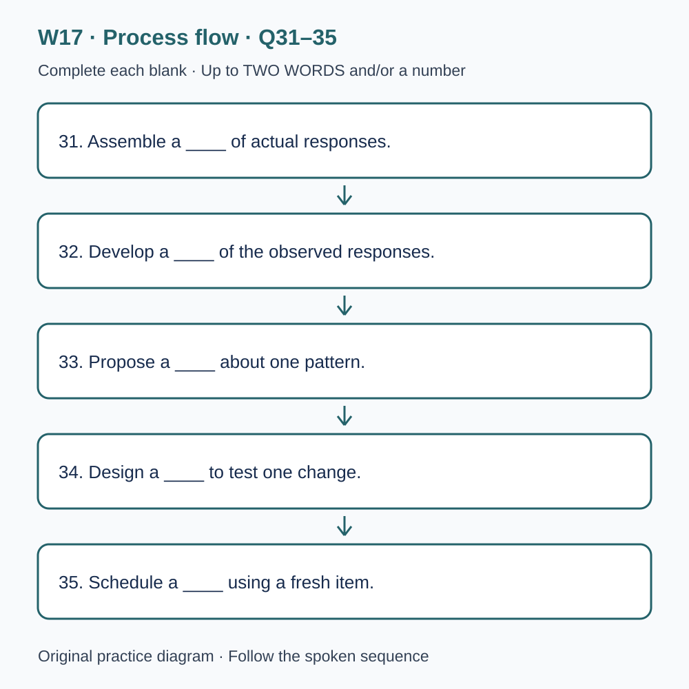
Q31. Assemble a ____ of actual responses.
Q32. Develop a ____ of the observed responses.
Q33. Propose a ____ about one pattern.
Q34. Design a ____ to test one change.
Q35. Schedule a ____ using a fresh item.
Q36. Preserve the ____ of each response.
Q37. State the ____ when calculating an error rate.
Q38. A rating taken before feedback records the learner's ____.
Q39. Availability of learning after a delay concerns ____.
Q40. Using learning when the task changes concerns ____.
本周训练安排（音频批准后执行）
- Preview questions without the script：8 分钟。
- Future continuous first listen, including planned part pauses：32 分钟。
- Submit first answers and confidence, without a second play：8 分钟。
- Check answers and classify errors：20 分钟。
- Four Q-located intensive segments, 15 minutes each：60 分钟。
- Diagram and opinion retelling：15 分钟。
- Next-day retry of missed items：15 分钟。
合计 158 分钟；最多另用 22 分钟缓冲，总计不超过 180 分钟。暂停、回放与查词均计入精听预算，不能另行无限追加。当前实际已完成听力分钟数为 0。精听区段和步骤见 intensive.md；答案和脚本另页。
补弱选择以真实错题为依据
当前没有本套音频或个人首答，不能指定你的弱项。已有可核验首答时，记录题号、原答、原文证据和当时条件，再选择一个反复出现且有证据的模式。没有首答或条件不明时记未知；仅学习审阅方法，待批准音频后采集新首答，不虚构错题。补弱时间使用既有60分钟精听预算，不额外叠加。
参考答案与证据（完成首次听力后再展开）
L-W17 — Answers and evidence
> 独立答案页。先提交首次答案，再看本页。当前缺音频，文本验题不能充当实听验收。
每个单空 1 分；双选各 2 分、答案顺序不限、按不同正确选项计分。接受形式仅做大小写和空白规范化；不做模糊词形推断。
Q1 — error review
Accepted answers: error review
Use the final confirmed detail in this exchange; the printed unit or date context is already supplied.
Evidence locator: Q01 (script.md; timestamps unavailable).
> Adviser: Learning support desk, how may I help? Caller: Our group would like advice on reviewing mistakes from language practice. I saw a pronunciation class, but we don't yet know whether pronunciation explains our results. Adviser: Then book error review. That session starts from actual responses rather than assigning everyone the same weakness. Caller: Error review sounds appropriate. We have several answer sheets, although some are corrected copies. Adviser: Bring what you have and identify which version each sheet represents. Missing evidence is something we can record; it isn't a reason to invent the answer someone probably gave before receiving help or to diagnose a problem from a vague recollection.
Q2 — 19
Accepted answers: 19 / 19th / nineteenth / the nineteenth / the 19th
Use the final confirmed detail in this exchange; the printed unit or date context is already supplied.
Evidence locator: Q02 (script.md; timestamps unavailable).
> Caller: Is the session still on the twelfth of May? Adviser: That was the date on the provisional programme. The confirmed date is the nineteenth of May. Caller: The nineteenth works for four of us. I'll remove the earlier date from our shared calendar. Adviser: Please use the confirmation we send today when arranging transport. Caller: I will forward the complete message, rather than a cropped image that leaves out the workshop name. Adviser: That's useful because two different sessions are being advertised that month. A date belonging to another activity can look convincing when it has been separated from the heading that explains what it actually refers to.
Q3 — 9.50
Accepted answers: 9.50 / 9:50 / 09.50 / 09:50 / nine fifty
Use the final confirmed detail in this exchange; the printed unit or date context is already supplied.
Evidence locator: Q03 (script.md; timestamps unavailable).
> Caller: What time does teaching begin? Adviser: Nine fifty in the morning. The building opens at nine thirty, but the review session begins at nine fifty. Caller: So nine thirty is an opening time, not the start of our class. Adviser: Exactly. Arrive a few minutes before the session to find the desk and settle in. Caller: I'll keep that suggested arrival separate from the teaching time in our note. Adviser: The opening explanation matters. It establishes the difference between an observed wrong answer and a proposed explanation for it, so arriving after that discussion can make the later exercise rather difficult to interpret.
Q4 — 4
Accepted answers: 4 / four
Use the final confirmed detail in this exchange; the printed unit or date context is already supplied.
Evidence locator: Q04 (script.md; timestamps unavailable).
> Adviser: How many places should I reserve? Caller: Six people belong to our study group, but two cannot attend. Please book four places. Adviser: Four places are available. Will everyone bring a separate response? Caller: Yes, although we'll also collect questions from the absent members. We aren't booking seats for them. Adviser: That's fine. If somebody else comes in place of a confirmed participant, update the booking through the contact route in your confirmation. Caller: I'll keep the attendance list current. We don't want the leader to prepare a paired exercise for one number and then discover a different group when the session is about to begin.
Q5 — 52
Accepted answers: 52 / 52.00 / fifty-two / fifty two
Use the final confirmed detail in this exchange; the printed unit or date context is already supplied.
Evidence locator: Q05 (script.md; timestamps unavailable).
> Caller: What is the total charge? Adviser: The group booking for those four places is fifty-two pounds altogether. Caller: Fifty-two pounds for the whole group, rather than for each person? Adviser: Correct. That includes the printed comparison materials. An individual appointment after the workshop would be a separate booking, and you haven't requested one. Caller: I'll tell the person handling payment both the total and what it covers. Adviser: Please compare those details with the confirmation before paying. If it shows a different number of places, let us correct the record instead of assuming that an unexplained extra charge must refer to an additional service.
Q6 — answer sheet
Accepted answers: answer sheet / sheet / the sheet / a sheet
Use the final confirmed detail in this exchange; the printed unit or date context is already supplied.
Evidence locator: Q06 (script.md; timestamps unavailable).
> Caller: Which document is essential? Adviser: Bring an answer sheet showing a genuine first response, if one survives. A personal error log is useful but optional. Caller: I'll bring the answer sheet I submitted before looking at the key. Adviser: Good. Keep the sheet separate from a corrected copy. If you have only a later version, label it honestly rather than rewrite it to look like an original. Caller: One member has no saved first response. Adviser: That person's earlier error pattern must remain unknown. They can learn the review procedure and collect a new response later; we cannot recover reliable evidence simply by asking them to guess their previous answers.
Q7 — C
Accepted answers: C
The leader distinguishes an observation from its possible cause; a settled explanation is not guaranteed.
Evidence locator: Q07 (script.md; timestamps unavailable).
> Caller: Will the leader tell each of us our main weakness? Adviser: Only if the records support a sufficiently narrow observation. A few wrong answers do not automatically establish a general weakness in vocabulary, attention or memory. Caller: So we shouldn't expect a personal diagnosis from attendance alone. Adviser: Exactly. The leader can help you distinguish what happened from possible reasons and identify what further evidence would be useful. Caller: That sounds more helpful than receiving the same label as everyone else. Adviser: You may leave with a question to investigate rather than a settled explanation. That is still a practical outcome if the next activity can address the uncertainty.
Q8 — B
Accepted answers: B
The original blanks remain; later recollections and corrections are separate.
Evidence locator: Q08 (script.md; timestamps unavailable).
> Caller: Should we fill in unanswered spaces before bringing the sheet? Adviser: No. Preserve the first response, including blanks. A blank may reflect a missed instruction, a decision to move on, or a difficulty hearing the information. Filling it later would hide what the original record actually shows. Caller: We can add a separate note explaining what we remember. Adviser: Yes, but mark it as a later account, not part of the first response. Caller: And a corrected answer goes on another copy. Adviser: Right. The distinction makes it possible to discuss learning after feedback without accidentally treating that learning as evidence of what you knew before the feedback arrived.
Q9 — A
Accepted answers: A
The centre checks a specific request and relevant conditions stay visible.
Evidence locator: Q09 (script.md; timestamps unavailable).
> Caller: One participant uses a reading application for printed instructions. Should we mention that now? Adviser: Yes, describe the practical format requirement before the session. We can check which files are available and explain any limitations. Caller: I won't assume a photograph of the worksheet will be equivalent. Adviser: Thank you. Different formats can affect how a task is accessed, and the review needs a clear record of the arrangement actually used. Caller: Should that appear in the practice record? Adviser: If it changes a relevant condition, yes. Recording support doesn't diminish the work; it helps the reviewer understand what conclusions a comparison can reasonably support.
Q10 — C
Accepted answers: C
Public comments do not update the attendance record.
Evidence locator: Q10 (script.md; timestamps unavailable).
> Caller: If our attendance changes, can I leave a message under the public workshop notice? Adviser: Please use the booking reference and reply to the confirmation instead. Public comments are not checked as an attendance list. For an urgent change, use the contact number in that same message. Caller: I'll keep the full confirmation until the visit is over. Adviser: Good. It contains the room instructions as well as the reference. Caller: I'll also remind everyone that the workshop reviews genuine records rather than promising a score. Adviser: That's the right expectation. We can help organise a careful enquiry, but the evidence still has to come from work that actually happened.
Q11 — B
Accepted answers: B
Use the explicitly stated position relative to the lounge, not an earlier layout or adjacent area.
Evidence locator: Q11 (script.md; timestamps unavailable).
> Welcome to the review centre. North is at the top of the map, and the entrance is on the southern edge. The lounge in the centre is our fixed reference point. The check-in desk is directly south of the lounge, on the entrance axis. It is not in either southern corner. Please report there before taking materials into another room. Staff will confirm which activity you booked and whether any practical arrangement has changed. A letter on the diagram identifies a position, not the first letter of a room name, so use the spoken directions rather than guessing from the labels when you complete the map.
Q12 — C
Accepted answers: C
Use the explicitly stated position relative to the lounge, not an earlier layout or adjacent area.
Evidence locator: Q12 (script.md; timestamps unavailable).
> The records room is in the north-west corner. It lies west of the northern central room and diagonally north-west of the lounge. An old leaflet put this activity directly north, but that position now serves another group. In the records room, you can arrange original and corrected responses in a sequence that preserves their relationship. Don't remove a page merely because it contains an embarrassing mistake. The point is to understand the work that was submitted, not construct an improved history after the event. Any identifying details that aren't needed for the exercise should be covered before material is shared with another participant.
Q13 — F
Accepted answers: F
Use the explicitly stated position relative to the lounge, not an earlier layout or adjacent area.
Evidence locator: Q13 (script.md; timestamps unavailable).
> The comparison room is directly east of the lounge, level with its centre. It is not the south-east room. Tables there hold paired examples showing a first response and a later revision. Before deciding that one is better, check what changed between the two attempts, including the information available to the writer. A revision made with the key open answers a different question from an unaided first response. Both can be useful, provided the comparison doesn't hide that difference. Please keep each pair together and return it in its labelled folder rather than sorting pages by which answer appears most polished at first glance.
Q14 — A
Accepted answers: A
Use the explicitly stated position relative to the lounge, not an earlier layout or adjacent area.
Evidence locator: Q14 (script.md; timestamps unavailable).
> The consultation room occupies the north-east corner. It is directly north of the comparison room and directly east of the northern central room. Those northern rooms share a row, so the consultation room is east of its neighbour, not north-east of that neighbour. Small groups use it to discuss one proposed explanation for an observed error. The leader may ask what evidence would count against your explanation. That question is intended to make the proposal testable, not to suggest that every interpretation must be wrong. Keep a distinction between a possibility worth checking and a conclusion already justified by the records on the table.
Q15 — D
Accepted answers: D
Use the explicitly stated position relative to the lounge, not an earlier layout or adjacent area.
Evidence locator: Q15 (script.md; timestamps unavailable).
> The worksheet collection point is in the south-west corner. It is west of check-in and below the room directly west of the lounge. Collect the version named by your leader, because several sheets use similar tables for different purposes. One asks for an observation; another asks for a possible cause. Copying a phrase into the wrong column can make a tentative explanation look like an established fact. If you are unsure which sheet belongs to your group, ask the helper. The collection point supplies materials, but the helper won't choose a personal weakness for you or fill a missing response with an imagined example.
Q16 — B
Accepted answers: B
An observable response is examined before interpreting its cause.
Evidence locator: Q16 (script.md; timestamps unavailable).
> During the opening activity, keep the first response visible before consulting feedback. Record exactly what was written or left blank, then compare it with the stated answer requirements. An explanation such as I was careless may feel familiar, but it doesn't describe the response precisely enough to guide a next step. You might instead note that the answer repeated a unit already printed in the question. That is an observable feature. Whether it arose from haste, a misunderstood instruction or another cause remains a separate question. Beginning with the response gives everyone a common object to discuss before interpretations start to diverge.
Q17 — C
Accepted answers: C
Fictional examples can demonstrate a method but cannot establish a personal error pattern.
Evidence locator: Q17 (script.md; timestamps unavailable).
> If an earlier response is missing, record the gap. Don't reconstruct a complete error profile from the final score or from what another group member usually finds difficult. A total can identify neither the exact answers nor the conditions under which they were produced. You can still practise the review method using a clearly labelled fictional example, but that example is not evidence about your own performance. When approved listening material becomes available, collect a new first response under stated conditions. Until then, the missing personal evidence remains unknown. A cautious blank in a record is more informative than a confident diagnosis built from invented details.
Q18 — A
Accepted answers: A
Scoring rules and ambiguities must be visible; duplicates do not earn another point.
Evidence locator: Q18 (script.md; timestamps unavailable).
> Before comparing totals, check the scoring rule. Some tasks give one point for each distinct correct option, so writing the same correct letter twice does not produce two points. Other questions require a word or phrase that fits the grammar already printed around the blank. The comparison exercise asks you to apply the stated rule consistently, not to reward an answer because its intention seems clear. If the rule itself is ambiguous, flag it for review rather than silently changing it for one participant. Keeping the scoring decision visible helps distinguish an assessment problem from a problem in the response being assessed.
Q19 — C
Accepted answers: C
A consistent code connects pages without unnecessary identifying details.
Evidence locator: Q19 (script.md; timestamps unavailable).
> When sharing a response, use a participant code and remove identifying information that the exercise doesn't need. The code should allow you to reconnect the pages belonging to the same attempt without exposing a name to everyone in the room. Keep the code consistent between the answer sheet and the separate conditions note. Changing it halfway through the exercise would create uncertainty about which record belongs with which response. The task concerns learning decisions, not comparisons of named individuals. A carefully limited record can preserve the evidence needed for discussion while avoiding details that contribute nothing to the question the group is investigating.
Q20 — B
Accepted answers: B
The next step depends on actual evidence and may be collection rather than remediation.
Evidence locator: Q20 (script.md; timestamps unavailable).
> At the end, choose one manageable action connected to the evidence you have. A useful plan identifies the observed problem, a proposed explanation and a way to check whether the action helps. If the explanation remains uncertain, say so. Don't write a permanent label such as bad listener merely because one response was incomplete. You may decide that another first response is needed before selecting a practice focus. That is a valid next step when evidence is missing. The review should make the next decision clearer, rather than force every participant to leave with a weakness that the available records cannot actually establish.
Q21 — A
Accepted answers: A
Final stance: Iris only. Ignore an initial proposal if later withdrawn; the tutor is not an answer option.
Evidence locator: Q21 (script.md; timestamps unavailable).
> Tutor: You examined the saved responses last week. What should the next practice trial focus on? Iris: One recurring error pattern at a time. I'd select the duplicated units we actually found on three sheets. Owen: I would compare two patterns first, because an omitted condition may have a larger effect on the task. Tutor: Does that mean you reject the evidence about units? Owen: No. I disagree about the next priority, not whether those responses exist. Iris: I still support choosing one pattern now and keeping the other for later. Tutor: Then Iris supports that proposal, while Owen wants a comparison before the group narrows its focus.
Q22 — C
Accepted answers: C
Final stance: Both students. Ignore an initial proposal if later withdrawn; the tutor is not an answer option.
Evidence locator: Q22 (script.md; timestamps unavailable).
> Tutor: Should you preserve the first response before annotating it? Owen: Yes. I initially thought one corrected copy would be enough, but it hides the sequence of decisions. Iris: I agree. We can keep the original and add comments on a separate version. Tutor: What if somebody notices an obvious spelling error immediately after submission? Iris: Record the correction later without altering the saved first response. Owen: That lets us examine both the original difficulty and what the participant can repair without further help. Tutor: Good. You both support preserving the initial version, and that agreement doesn't prevent revision; it makes the revision's relationship to the first attempt visible.
Q23 — B
Accepted answers: B
Final stance: Owen only. Ignore an initial proposal if later withdrawn; the tutor is not an answer option.
Evidence locator: Q23 (script.md; timestamps unavailable).
> Tutor: Owen proposes recording the time spent on the instruction before answering. Owen: I support that for the next trial. We know some people missed the word only, but not whether they read the line quickly or misunderstood it after careful reading. Iris: I'd keep the procedure simpler and ask for a brief explanation after the attempt. Another timing signal could change how participants behave. Tutor: Would a silent observer solve that concern? Iris: It might reduce interruption, but I still prefer the explanation for this stage. Owen: I continue to favour the timing record. Tutor: Then the specific timing proposal remains Owen's, not a shared procedure.
Q24 — D
Accepted answers: D
Final stance: Neither student. Ignore an initial proposal if later withdrawn; the tutor is not an answer option.
Evidence locator: Q24 (script.md; timestamps unavailable).
> Tutor: Your early notes classify every blank answer as carelessness. Iris: I wrote that heading before examining the sheets closely. I don't think we can defend it now. Owen: Neither do I. One participant reported losing the question position, and another didn't understand the required category. Iris: I'll remove the heading rather than pretend those are the same cause. Tutor: Are you replacing it with another universal label? Iris: No. We'll record the blank and keep the explanation open unless there is supporting evidence. Owen: Agreed. Tutor: Then neither of you supports the original classification, even though it appeared in the first version of your review table.
Q25 — A
Accepted answers: A
Final stance: Iris only. Ignore an initial proposal if later withdrawn; the tutor is not an answer option.
Evidence locator: Q25 (script.md; timestamps unavailable).
> Tutor: Should the next check use a new task? Iris: Yes. If participants remember the corrected answer, repeating the old task may show memory of feedback rather than use of the intended procedure. Owen: I would repeat the old task once to check whether they can explain the correction before introducing unfamiliar material. Tutor: Could those activities serve different purposes? Owen: Certainly, but for the very next check I prefer the familiar task. Iris: I still want a fresh example with the same instruction demand. Tutor: Then your priorities differ. Don't report agreement merely because both of you recognise that familiar and unfamiliar tasks can provide useful but different kinds of evidence.
Q26 — C
Accepted answers: C
Final stance: Both students. Ignore an initial proposal if later withdrawn; the tutor is not an answer option.
Evidence locator: Q26 (script.md; timestamps unavailable).
> Tutor: What should happen when two explanations remain plausible? Owen: Keep both in the record and identify what might distinguish them. Iris: I agree. I originally wanted one cause in every row, but that would make the table more definite than our evidence. Tutor: Would you leave the next action unspecified? Iris: Not necessarily. We can choose a small trial aimed at one distinction and state its limits. Owen: And avoid treating a successful answer as proof that the other explanation was impossible. Tutor: Good. Both of you support retaining uncertainty where it belongs, while still making a practical decision about what information the next attempt should collect.
Q27–28 — A, D
Accept unordered set: A, D. One point per distinct correct choice, maximum 2.
The agreed steps concern the actual response and its conditions, not rankings or forecasts.
Evidence locator: Q27, Q28 (script.md; timestamps unavailable).
> Tutor: Let's settle the preparation steps you actually agree on. Iris: First, compare each response with the question wording and its evidence block. That should reveal whether the problem is in the answer or in our interpretation of the requirement. Owen: I agree. We shouldn't begin by ranking people or guessing their ability from a total. Tutor: Are you proposing to rewrite the original answers at this stage? Iris: No. The first response stays intact. We record the comparison alongside it. Owen: And a low total doesn't give us permission to assume every answer has the same cause. Tutor: Then comparison with the requirement is one agreed preparation step.
> Tutor: What is the other preparation step? Owen: Preserve a note of the conditions, including any replay or help received. Iris: Agreed. A second attempt with repeated listening cannot be treated as though it had exactly the same conditions as the first. Tutor: Do you need a forecast of an official score? Iris: No. That would exceed what this small trial can support. Owen: We also don't need a decorative chart before the records are clear. Tutor: So the two agreed steps are comparing the response with the requirement and evidence, and preserving the relevant conditions. Keep those distinct from attractive additions that the group hasn't selected.
Q29–30 — B, E
Accept unordered set: B, E. One point per distinct correct choice, maximum 2.
The limitation is narrow task coverage plus unequal replay, not lost sheets or cancelled sessions.
Evidence locator: Q29, Q30 (script.md; timestamps unavailable).
> Tutor: What limits the conclusion from last week's review? Iris: The saved responses came from only a narrow range of tasks. We saw several short completion items but almost no extended discussion questions. Owen: Yes. That limits any claim that the same pattern appears across every listening demand. Tutor: Were the papers lost or incomplete? Iris: No, the sheets in that small sample were complete. The limitation is coverage, not missing pages. Owen: We should describe which tasks were represented instead of using the broad phrase all listening. Tutor: That description will help a later reviewer decide whether another sample answers the same question or extends it to a different demand.
> Tutor: Was there a second limitation? Owen: Participants had unequal opportunities to replay the material before the responses we reviewed were saved. Iris: Exactly. Some sheets represented a first attempt, while others followed another play, and those versions were labelled. Tutor: Then you cannot attribute the difference in totals solely to the practice advice. Iris: Correct. We can still examine the responses, but the comparison is qualified. Owen: The room was available and the sessions happened; neither was the problem. Tutor: Record the narrow task range and unequal replay as the two limitations, rather than adding plausible obstacles that did not occur in this particular review.
Q31 — sample
Accepted answers: sample / response sample
Complete the named stage in the stated process order; retain any word already printed around the blank.
Evidence locator: Q31 (script.md; timestamps unavailable).
> Consider a fictional team evaluating a proposed improvement in language practice. The first stage assembles a sample of actual responses. The sample must contain work that was genuinely produced, with enough context to identify the task and the conditions. It should not consist of answers reconstructed after the key has been read. A response sample can be small, but its scope needs to be stated. If no suitable work survives, this stage records a gap and plans collection instead of inventing evidence. The team can demonstrate the method with fictional material, provided that material remains clearly separate from claims about the learner's own performance.
Q32 — classification
Accepted answers: classification / working classification
Complete the named stage in the stated process order; retain any word already printed around the blank.
Evidence locator: Q32 (script.md; timestamps unavailable).
> The second stage develops a classification of the observed responses. Classification groups features that can be identified from the work, such as a duplicated unit, an omitted condition or a selected distractor. The team should explain the categories rather than assume that a label means the same thing to every reviewer. This working classification is not yet a diagnosis. Two responses in the same category may have different causes, and one response may present more than one relevant feature. A small disagreement between reviewers can reveal a definition that needs clarification. The objective is a usable description of what happened, not a table that appears perfectly orderly because difficult cases were removed.
Q33 — hypothesis
Accepted answers: hypothesis / working hypothesis
Complete the named stage in the stated process order; retain any word already printed around the blank.
Evidence locator: Q33 (script.md; timestamps unavailable).
> The third stage proposes a hypothesis about one pattern. A hypothesis is an explanation to investigate, not a cause established by giving it a confident name. For example, repeated unit duplication might reflect uncertainty about whether the printed symbol belongs inside the answer. It could also reflect a habit of copying a complete phrase without checking the blank. The team states what observations would help distinguish these accounts. A working hypothesis should lead to a specific question for the next attempt. If every possible outcome would be described as supporting it, the proposal is too flexible to guide a meaningful check of the explanation.
Q34 — trial
Accepted answers: trial / targeted trial
Complete the named stage in the stated process order; retain any word already printed around the blank.
Evidence locator: Q34 (script.md; timestamps unavailable).
> The fourth stage designs a targeted trial. The trial changes one manageable feature of the procedure, such as asking participants to mark printed units before beginning. It keeps other relevant conditions visible so that a later comparison has a clear basis. A successful response after the prompt may show that the prompt was useful in that setting; it does not establish that all earlier errors had the same cause. The team also records whether the change creates another difficulty, perhaps by consuming attention needed elsewhere. A targeted trial is valuable when it tests a defined proposition, not merely when it gives participants more practice and produces a higher total.
Q35 — retest
Accepted answers: retest / later check / check
Complete the named stage in the stated process order; retain any word already printed around the blank.
Evidence locator: Q35 (script.md; timestamps unavailable).
> The fifth stage schedules a retest using a fresh item with the same relevant demand. This later check asks whether the intended procedure can be used without simply recalling the old answer. The retest should have a stated purpose and a record of support received. A task that is much easier than the first would complicate interpretation even if the timing were identical. The team need not pretend that two tasks are perfectly equivalent, but it should explain the important differences. The result can support a limited decision about the next practice step while leaving wider claims about general ability unresolved until further evidence is available.
Q36 — provenance
Accepted answers: provenance / source history / history
The corresponding evidence block supplies this distinction or qualification; the question retains the surrounding grammar.
Evidence locator: Q36 (script.md; timestamps unavailable).
> Provenance matters throughout the review. Here, provenance means the source history of a response: which task produced it, when it was saved, and whether it preceded or followed feedback. A number copied into a spreadsheet can lose that history even when the number itself is accurate. The team therefore preserves links between the summary and the underlying work. Without them, a later reviewer may be unable to tell whether an apparent improvement compares two first attempts or a first attempt with a corrected version. Keeping provenance visible makes the evidence inspectable and allows mistakes in the record to be corrected without rewriting the learner's history.
Q37 — denominator
Accepted answers: denominator
The corresponding evidence block supplies this distinction or qualification; the question retains the surrounding grammar.
Evidence locator: Q37 (script.md; timestamps unavailable).
> A rate of errors also requires a denominator. The denominator identifies how many relevant opportunities there were, rather than merely how many errors were counted. Two duplicated units among two applicable questions mean something different from two among twenty. The task set may change the number of opportunities even when the total number of questions remains constant. The team should therefore state which items could display the pattern being counted. A percentage with an unclear denominator can look precise while answering an unstable question. The useful comparison connects the count to the actual task demands instead of treating every question as an identical opportunity for every kind of error.
Q38 — confidence
Accepted answers: confidence / initial confidence
The corresponding evidence block supplies this distinction or qualification; the question retains the surrounding grammar.
Evidence locator: Q38 (script.md; timestamps unavailable).
> Confidence can provide another kind of information if it is recorded before feedback. A participant may select the correct answer with low confidence or defend an incorrect answer for a reason that reveals a misunderstanding. These cases can guide a discussion, but confidence is not itself a mark of correctness. The team should preserve the initial confidence rating and ask for its basis rather than replace it with the certainty that follows seeing the key. Different people may interpret a scale differently, so a shared description helps. The value lies in comparing a judgement with the evidence available at the time, not in encouraging everyone to sound equally sure.
Q39 — retention
Accepted answers: retention
The corresponding evidence block supplies this distinction or qualification; the question retains the surrounding grammar.
Evidence locator: Q39 (script.md; timestamps unavailable).
> Retention concerns whether something learned remains available after a delay. An immediate corrected response may reflect information still present from feedback, while a later attempt asks a different question. The review should identify what knowledge or procedure the delayed check is intended to examine. If the later task introduces a new difficulty, a lower score cannot automatically mean that the earlier learning disappeared. The team records those conditions and keeps its conclusion narrow. Retention is therefore not a single label attached to a person. It is a question about a specified piece of learning, a stated interval and the circumstances under which that learning is used again.
Q40 — transfer
Accepted answers: transfer
The corresponding evidence block supplies this distinction or qualification; the question retains the surrounding grammar.
Evidence locator: Q40 (script.md; timestamps unavailable).
> Transfer concerns using the learning when the task changes. A participant who checks printed units on one familiar sheet may overlook the same requirement in a new layout. The team can investigate whether the underlying procedure carries across, rather than repeatedly presenting the old item until its answer is remembered. It should describe which feature stays relevant and which features change. An unsuccessful transfer attempt can prompt another question about the procedure or the new demand, without proving that the earlier work was useless. The review ends by selecting the next evidence to collect, not by turning a small fictional exercise into a permanent judgement of the learner's ability.
完整脚本（提前阅读会失去陌生题首答机会）
L-W17 — From recorded errors to a testable practice decision: transcript
> 原创虚构练习，非真题；音频缺失。仅供完成首次作答后的核对或文字审阅。Q 标记与角色名不属于朗读正文。
Part 1 — Booking an evidence review
Q1 evidence block
Adviser: Learning support desk, how may I help?
Caller: Our group would like advice on reviewing mistakes from language practice. I saw a pronunciation class, but we don't yet know whether pronunciation explains our results.
Adviser: Then book error review. That session starts from actual responses rather than assigning everyone the same weakness.
Caller: Error review sounds appropriate. We have several answer sheets, although some are corrected copies.
Adviser: Bring what you have and identify which version each sheet represents. Missing evidence is something we can record; it isn't a reason to invent the answer someone probably gave before receiving help or to diagnose a problem from a vague recollection.
Q2 evidence block
Caller: Is the session still on the twelfth of May?
Adviser: That was the date on the provisional programme. The confirmed date is the nineteenth of May.
Caller: The nineteenth works for four of us. I'll remove the earlier date from our shared calendar.
Adviser: Please use the confirmation we send today when arranging transport.
Caller: I will forward the complete message, rather than a cropped image that leaves out the workshop name.
Adviser: That's useful because two different sessions are being advertised that month. A date belonging to another activity can look convincing when it has been separated from the heading that explains what it actually refers to.
Q3 evidence block
Caller: What time does teaching begin?
Adviser: Nine fifty in the morning. The building opens at nine thirty, but the review session begins at nine fifty.
Caller: So nine thirty is an opening time, not the start of our class.
Adviser: Exactly. Arrive a few minutes before the session to find the desk and settle in.
Caller: I'll keep that suggested arrival separate from the teaching time in our note.
Adviser: The opening explanation matters. It establishes the difference between an observed wrong answer and a proposed explanation for it, so arriving after that discussion can make the later exercise rather difficult to interpret.
Q4 evidence block
Adviser: How many places should I reserve?
Caller: Six people belong to our study group, but two cannot attend. Please book four places.
Adviser: Four places are available. Will everyone bring a separate response?
Caller: Yes, although we'll also collect questions from the absent members. We aren't booking seats for them.
Adviser: That's fine. If somebody else comes in place of a confirmed participant, update the booking through the contact route in your confirmation.
Caller: I'll keep the attendance list current. We don't want the leader to prepare a paired exercise for one number and then discover a different group when the session is about to begin.
Q5 evidence block
Caller: What is the total charge?
Adviser: The group booking for those four places is fifty-two pounds altogether.
Caller: Fifty-two pounds for the whole group, rather than for each person?
Adviser: Correct. That includes the printed comparison materials. An individual appointment after the workshop would be a separate booking, and you haven't requested one.
Caller: I'll tell the person handling payment both the total and what it covers.
Adviser: Please compare those details with the confirmation before paying. If it shows a different number of places, let us correct the record instead of assuming that an unexplained extra charge must refer to an additional service.
Q6 evidence block
Caller: Which document is essential?
Adviser: Bring an answer sheet showing a genuine first response, if one survives. A personal error log is useful but optional.
Caller: I'll bring the answer sheet I submitted before looking at the key.
Adviser: Good. Keep the sheet separate from a corrected copy. If you have only a later version, label it honestly rather than rewrite it to look like an original.
Caller: One member has no saved first response.
Adviser: That person's earlier error pattern must remain unknown. They can learn the review procedure and collect a new response later; we cannot recover reliable evidence simply by asking them to guess their previous answers.
Q7 evidence block
Caller: Will the leader tell each of us our main weakness?
Adviser: Only if the records support a sufficiently narrow observation. A few wrong answers do not automatically establish a general weakness in vocabulary, attention or memory.
Caller: So we shouldn't expect a personal diagnosis from attendance alone.
Adviser: Exactly. The leader can help you distinguish what happened from possible reasons and identify what further evidence would be useful.
Caller: That sounds more helpful than receiving the same label as everyone else.
Adviser: You may leave with a question to investigate rather than a settled explanation. That is still a practical outcome if the next activity can address the uncertainty.
Q8 evidence block
Caller: Should we fill in unanswered spaces before bringing the sheet?
Adviser: No. Preserve the first response, including blanks. A blank may reflect a missed instruction, a decision to move on, or a difficulty hearing the information. Filling it later would hide what the original record actually shows.
Caller: We can add a separate note explaining what we remember.
Adviser: Yes, but mark it as a later account, not part of the first response.
Caller: And a corrected answer goes on another copy.
Adviser: Right. The distinction makes it possible to discuss learning after feedback without accidentally treating that learning as evidence of what you knew before the feedback arrived.
Q9 evidence block
Caller: One participant uses a reading application for printed instructions. Should we mention that now?
Adviser: Yes, describe the practical format requirement before the session. We can check which files are available and explain any limitations.
Caller: I won't assume a photograph of the worksheet will be equivalent.
Adviser: Thank you. Different formats can affect how a task is accessed, and the review needs a clear record of the arrangement actually used.
Caller: Should that appear in the practice record?
Adviser: If it changes a relevant condition, yes. Recording support doesn't diminish the work; it helps the reviewer understand what conclusions a comparison can reasonably support.
Q10 evidence block
Caller: If our attendance changes, can I leave a message under the public workshop notice?
Adviser: Please use the booking reference and reply to the confirmation instead. Public comments are not checked as an attendance list. For an urgent change, use the contact number in that same message.
Caller: I'll keep the full confirmation until the visit is over.
Adviser: Good. It contains the room instructions as well as the reference.
Caller: I'll also remind everyone that the workshop reviews genuine records rather than promising a score.
Adviser: That's the right expectation. We can help organise a careful enquiry, but the evidence still has to come from work that actually happened.
Part 2 — Finding the review facilities
Q11 evidence block
Centre host: Welcome to the review centre. North is at the top of the map, and the entrance is on the southern edge. The lounge in the centre is our fixed reference point. The check-in desk is directly south of the lounge, on the entrance axis. It is not in either southern corner. Please report there before taking materials into another room. Staff will confirm which activity you booked and whether any practical arrangement has changed. A letter on the diagram identifies a position, not the first letter of a room name, so use the spoken directions rather than guessing from the labels when you complete the map.
Q12 evidence block
Centre host: The records room is in the north-west corner. It lies west of the northern central room and diagonally north-west of the lounge. An old leaflet put this activity directly north, but that position now serves another group. In the records room, you can arrange original and corrected responses in a sequence that preserves their relationship. Don't remove a page merely because it contains an embarrassing mistake. The point is to understand the work that was submitted, not construct an improved history after the event. Any identifying details that aren't needed for the exercise should be covered before material is shared with another participant.
Q13 evidence block
Centre host: The comparison room is directly east of the lounge, level with its centre. It is not the south-east room. Tables there hold paired examples showing a first response and a later revision. Before deciding that one is better, check what changed between the two attempts, including the information available to the writer. A revision made with the key open answers a different question from an unaided first response. Both can be useful, provided the comparison doesn't hide that difference. Please keep each pair together and return it in its labelled folder rather than sorting pages by which answer appears most polished at first glance.
Q14 evidence block
Centre host: The consultation room occupies the north-east corner. It is directly north of the comparison room and directly east of the northern central room. Those northern rooms share a row, so the consultation room is east of its neighbour, not north-east of that neighbour. Small groups use it to discuss one proposed explanation for an observed error. The leader may ask what evidence would count against your explanation. That question is intended to make the proposal testable, not to suggest that every interpretation must be wrong. Keep a distinction between a possibility worth checking and a conclusion already justified by the records on the table.
Q15 evidence block
Centre host: The worksheet collection point is in the south-west corner. It is west of check-in and below the room directly west of the lounge. Collect the version named by your leader, because several sheets use similar tables for different purposes. One asks for an observation; another asks for a possible cause. Copying a phrase into the wrong column can make a tentative explanation look like an established fact. If you are unsure which sheet belongs to your group, ask the helper. The collection point supplies materials, but the helper won't choose a personal weakness for you or fill a missing response with an imagined example.
Q16 evidence block
Centre host: During the opening activity, keep the first response visible before consulting feedback. Record exactly what was written or left blank, then compare it with the stated answer requirements. An explanation such as I was careless may feel familiar, but it doesn't describe the response precisely enough to guide a next step. You might instead note that the answer repeated a unit already printed in the question. That is an observable feature. Whether it arose from haste, a misunderstood instruction or another cause remains a separate question. Beginning with the response gives everyone a common object to discuss before interpretations start to diverge.
Q17 evidence block
Centre host: If an earlier response is missing, record the gap. Don't reconstruct a complete error profile from the final score or from what another group member usually finds difficult. A total can identify neither the exact answers nor the conditions under which they were produced. You can still practise the review method using a clearly labelled fictional example, but that example is not evidence about your own performance. When approved listening material becomes available, collect a new first response under stated conditions. Until then, the missing personal evidence remains unknown. A cautious blank in a record is more informative than a confident diagnosis built from invented details.
Q18 evidence block
Centre host: Before comparing totals, check the scoring rule. Some tasks give one point for each distinct correct option, so writing the same correct letter twice does not produce two points. Other questions require a word or phrase that fits the grammar already printed around the blank. The comparison exercise asks you to apply the stated rule consistently, not to reward an answer because its intention seems clear. If the rule itself is ambiguous, flag it for review rather than silently changing it for one participant. Keeping the scoring decision visible helps distinguish an assessment problem from a problem in the response being assessed.
Q19 evidence block
Centre host: When sharing a response, use a participant code and remove identifying information that the exercise doesn't need. The code should allow you to reconnect the pages belonging to the same attempt without exposing a name to everyone in the room. Keep the code consistent between the answer sheet and the separate conditions note. Changing it halfway through the exercise would create uncertainty about which record belongs with which response. The task concerns learning decisions, not comparisons of named individuals. A carefully limited record can preserve the evidence needed for discussion while avoiding details that contribute nothing to the question the group is investigating.
Q20 evidence block
Centre host: At the end, choose one manageable action connected to the evidence you have. A useful plan identifies the observed problem, a proposed explanation and a way to check whether the action helps. If the explanation remains uncertain, say so. Don't write a permanent label such as bad listener merely because one response was incomplete. You may decide that another first response is needed before selecting a practice focus. That is a valid next step when evidence is missing. The review should make the next decision clearer, rather than force every participant to leave with a weakness that the available records cannot actually establish.
Part 3 — Choosing the next practice trial
Q21 evidence block
Tutor: You examined the saved responses last week. What should the next practice trial focus on?
Iris: One recurring error pattern at a time. I'd select the duplicated units we actually found on three sheets.
Owen: I would compare two patterns first, because an omitted condition may have a larger effect on the task.
Tutor: Does that mean you reject the evidence about units?
Owen: No. I disagree about the next priority, not whether those responses exist.
Iris: I still support choosing one pattern now and keeping the other for later.
Tutor: Then Iris supports that proposal, while Owen wants a comparison before the group narrows its focus.
Q22 evidence block
Tutor: Should you preserve the first response before annotating it?
Owen: Yes. I initially thought one corrected copy would be enough, but it hides the sequence of decisions.
Iris: I agree. We can keep the original and add comments on a separate version.
Tutor: What if somebody notices an obvious spelling error immediately after submission?
Iris: Record the correction later without altering the saved first response.
Owen: That lets us examine both the original difficulty and what the participant can repair without further help.
Tutor: Good. You both support preserving the initial version, and that agreement doesn't prevent revision; it makes the revision's relationship to the first attempt visible.
Q23 evidence block
Tutor: Owen proposes recording the time spent on the instruction before answering.
Owen: I support that for the next trial. We know some people missed the word only, but not whether they read the line quickly or misunderstood it after careful reading.
Iris: I'd keep the procedure simpler and ask for a brief explanation after the attempt. Another timing signal could change how participants behave.
Tutor: Would a silent observer solve that concern?
Iris: It might reduce interruption, but I still prefer the explanation for this stage.
Owen: I continue to favour the timing record.
Tutor: Then the specific timing proposal remains Owen's, not a shared procedure.
Q24 evidence block
Tutor: Your early notes classify every blank answer as carelessness.
Iris: I wrote that heading before examining the sheets closely. I don't think we can defend it now.
Owen: Neither do I. One participant reported losing the question position, and another didn't understand the required category.
Iris: I'll remove the heading rather than pretend those are the same cause.
Tutor: Are you replacing it with another universal label?
Iris: No. We'll record the blank and keep the explanation open unless there is supporting evidence.
Owen: Agreed.
Tutor: Then neither of you supports the original classification, even though it appeared in the first version of your review table.
Q25 evidence block
Tutor: Should the next check use a new task?
Iris: Yes. If participants remember the corrected answer, repeating the old task may show memory of feedback rather than use of the intended procedure.
Owen: I would repeat the old task once to check whether they can explain the correction before introducing unfamiliar material.
Tutor: Could those activities serve different purposes?
Owen: Certainly, but for the very next check I prefer the familiar task.
Iris: I still want a fresh example with the same instruction demand.
Tutor: Then your priorities differ. Don't report agreement merely because both of you recognise that familiar and unfamiliar tasks can provide useful but different kinds of evidence.
Q26 evidence block
Tutor: What should happen when two explanations remain plausible?
Owen: Keep both in the record and identify what might distinguish them.
Iris: I agree. I originally wanted one cause in every row, but that would make the table more definite than our evidence.
Tutor: Would you leave the next action unspecified?
Iris: Not necessarily. We can choose a small trial aimed at one distinction and state its limits.
Owen: And avoid treating a successful answer as proof that the other explanation was impossible.
Tutor: Good. Both of you support retaining uncertainty where it belongs, while still making a practical decision about what information the next attempt should collect.
Q27 evidence block
Tutor: Let's settle the preparation steps you actually agree on.
Iris: First, compare each response with the question wording and its evidence block. That should reveal whether the problem is in the answer or in our interpretation of the requirement.
Owen: I agree. We shouldn't begin by ranking people or guessing their ability from a total.
Tutor: Are you proposing to rewrite the original answers at this stage?
Iris: No. The first response stays intact. We record the comparison alongside it.
Owen: And a low total doesn't give us permission to assume every answer has the same cause.
Tutor: Then comparison with the requirement is one agreed preparation step.
Q28 evidence block
Tutor: What is the other preparation step?
Owen: Preserve a note of the conditions, including any replay or help received.
Iris: Agreed. A second attempt with repeated listening cannot be treated as though it had exactly the same conditions as the first.
Tutor: Do you need a forecast of an official score?
Iris: No. That would exceed what this small trial can support.
Owen: We also don't need a decorative chart before the records are clear.
Tutor: So the two agreed steps are comparing the response with the requirement and evidence, and preserving the relevant conditions. Keep those distinct from attractive additions that the group hasn't selected.
Q29 evidence block
Tutor: What limits the conclusion from last week's review?
Iris: The saved responses came from only a narrow range of tasks. We saw several short completion items but almost no extended discussion questions.
Owen: Yes. That limits any claim that the same pattern appears across every listening demand.
Tutor: Were the papers lost or incomplete?
Iris: No, the sheets in that small sample were complete. The limitation is coverage, not missing pages.
Owen: We should describe which tasks were represented instead of using the broad phrase all listening.
Tutor: That description will help a later reviewer decide whether another sample answers the same question or extends it to a different demand.
Q30 evidence block
Tutor: Was there a second limitation?
Owen: Participants had unequal opportunities to replay the material before the responses we reviewed were saved.
Iris: Exactly. Some sheets represented a first attempt, while others followed another play, and those versions were labelled.
Tutor: Then you cannot attribute the difference in totals solely to the practice advice.
Iris: Correct. We can still examine the responses, but the comparison is qualified.
Owen: The room was available and the sessions happened; neither was the problem.
Tutor: Record the narrow task range and unequal replay as the two limitations, rather than adding plausible obstacles that did not occur in this particular review.
Part 4 — Evaluating a proposed improvement
Q31 evidence block
Lecturer: Consider a fictional team evaluating a proposed improvement in language practice. The first stage assembles a sample of actual responses. The sample must contain work that was genuinely produced, with enough context to identify the task and the conditions. It should not consist of answers reconstructed after the key has been read. A response sample can be small, but its scope needs to be stated. If no suitable work survives, this stage records a gap and plans collection instead of inventing evidence. The team can demonstrate the method with fictional material, provided that material remains clearly separate from claims about the learner's own performance.
Q32 evidence block
Lecturer: The second stage develops a classification of the observed responses. Classification groups features that can be identified from the work, such as a duplicated unit, an omitted condition or a selected distractor. The team should explain the categories rather than assume that a label means the same thing to every reviewer. This working classification is not yet a diagnosis. Two responses in the same category may have different causes, and one response may present more than one relevant feature. A small disagreement between reviewers can reveal a definition that needs clarification. The objective is a usable description of what happened, not a table that appears perfectly orderly because difficult cases were removed.
Q33 evidence block
Lecturer: The third stage proposes a hypothesis about one pattern. A hypothesis is an explanation to investigate, not a cause established by giving it a confident name. For example, repeated unit duplication might reflect uncertainty about whether the printed symbol belongs inside the answer. It could also reflect a habit of copying a complete phrase without checking the blank. The team states what observations would help distinguish these accounts. A working hypothesis should lead to a specific question for the next attempt. If every possible outcome would be described as supporting it, the proposal is too flexible to guide a meaningful check of the explanation.
Q34 evidence block
Lecturer: The fourth stage designs a targeted trial. The trial changes one manageable feature of the procedure, such as asking participants to mark printed units before beginning. It keeps other relevant conditions visible so that a later comparison has a clear basis. A successful response after the prompt may show that the prompt was useful in that setting; it does not establish that all earlier errors had the same cause. The team also records whether the change creates another difficulty, perhaps by consuming attention needed elsewhere. A targeted trial is valuable when it tests a defined proposition, not merely when it gives participants more practice and produces a higher total.
Q35 evidence block
Lecturer: The fifth stage schedules a retest using a fresh item with the same relevant demand. This later check asks whether the intended procedure can be used without simply recalling the old answer. The retest should have a stated purpose and a record of support received. A task that is much easier than the first would complicate interpretation even if the timing were identical. The team need not pretend that two tasks are perfectly equivalent, but it should explain the important differences. The result can support a limited decision about the next practice step while leaving wider claims about general ability unresolved until further evidence is available.
Q36 evidence block
Lecturer: Provenance matters throughout the review. Here, provenance means the source history of a response: which task produced it, when it was saved, and whether it preceded or followed feedback. A number copied into a spreadsheet can lose that history even when the number itself is accurate. The team therefore preserves links between the summary and the underlying work. Without them, a later reviewer may be unable to tell whether an apparent improvement compares two first attempts or a first attempt with a corrected version. Keeping provenance visible makes the evidence inspectable and allows mistakes in the record to be corrected without rewriting the learner's history.
Q37 evidence block
Lecturer: A rate of errors also requires a denominator. The denominator identifies how many relevant opportunities there were, rather than merely how many errors were counted. Two duplicated units among two applicable questions mean something different from two among twenty. The task set may change the number of opportunities even when the total number of questions remains constant. The team should therefore state which items could display the pattern being counted. A percentage with an unclear denominator can look precise while answering an unstable question. The useful comparison connects the count to the actual task demands instead of treating every question as an identical opportunity for every kind of error.
Q38 evidence block
Lecturer: Confidence can provide another kind of information if it is recorded before feedback. A participant may select the correct answer with low confidence or defend an incorrect answer for a reason that reveals a misunderstanding. These cases can guide a discussion, but confidence is not itself a mark of correctness. The team should preserve the initial confidence rating and ask for its basis rather than replace it with the certainty that follows seeing the key. Different people may interpret a scale differently, so a shared description helps. The value lies in comparing a judgement with the evidence available at the time, not in encouraging everyone to sound equally sure.
Q39 evidence block
Lecturer: Retention concerns whether something learned remains available after a delay. An immediate corrected response may reflect information still present from feedback, while a later attempt asks a different question. The review should identify what knowledge or procedure the delayed check is intended to examine. If the later task introduces a new difficulty, a lower score cannot automatically mean that the earlier learning disappeared. The team records those conditions and keeps its conclusion narrow. Retention is therefore not a single label attached to a person. It is a question about a specified piece of learning, a stated interval and the circumstances under which that learning is used again.
Q40 evidence block
Lecturer: Transfer concerns using the learning when the task changes. A participant who checks printed units on one familiar sheet may overlook the same requirement in a new layout. The team can investigate whether the underlying procedure carries across, rather than repeatedly presenting the old item until its answer is remembered. It should describe which feature stays relevant and which features change. An unsuccessful transfer attempt can prompt another question about the procedure or the new demand, without proving that the earlier work was useless. The review ends by selecting the next evidence to collect, not by turning a small fictional exercise into a permanent judgement of the learner's ability.
精听与复盘步骤（须有已验收配套音频）
L-W17 — Q-based intensive listening
> 音频尚未生成；以下是未来执行安排，不是已完成记录。不要用文本阅读替代首次听力。无实际时间戳。
周预算：预览 8 + 首听 32 + 交首次答案 8 + 查错 20 + 精听 60 + 复述 15 + 次日重做 15 = 158 分钟。含暂停/回放；加用缓冲最多 22 分钟，总计≤180。
四段各 15 分钟：先定位并不看稿听 2 分钟；分句回放、写关键词 4 分钟；对照稿找误听与改口 3 分钟；遮稿跟读和复述 3 分钟；重答并记录错误原因 3 分钟。不得把同一段回放另算在周预算之外。
Q2–3 — 15 minutes
定位 script.md 的 Q2 evidence block 起至 Q3 evidence block 结束（约 201 词）；音频起止为 null。
目标：Separate revised date, building opening and teaching start.
留痕：首次答案 → 听到的原词 → 干扰来源 → 修正答案 → 一句英文复述。
Q12–14 — 15 minutes
定位 script.md 的 Q12 evidence block 起至 Q14 evidence block 结束（约 311 词）；音频起止为 null。
目标：Resolve a moved room and two different map reference points.
留痕：首次答案 → 听到的原词 → 干扰来源 → 修正答案 → 一句英文复述。
Q23–24 — 15 minutes
定位 script.md 的 Q23 evidence block 起至 Q24 evidence block 结束（约 199 词）；音频起止为 null。
目标：Distinguish continuing disagreement from withdrawal of a causal label.
留痕：首次答案 → 听到的原词 → 干扰来源 → 修正答案 → 一句英文复述。
Q31–35 — 15 minutes
定位 script.md 的 Q31 evidence block 起至 Q35 evidence block 结束（约 535 词）；音频起止为 null。
目标：Separate actual response, classification, hypothesis, trial and retest; do not diagnose without evidence.
留痕：首次答案 → 听到的原词 → 干扰来源 → 修正答案 → 一句英文复述。
15 分钟复述与 15 分钟次日重做
复述：5 分钟遮住答案口述地图五个位置；5 分钟按人说明三人讨论的最终观点；5 分钟复述流程及一个限制。次日：8 分钟仅重做错题对应 Q 段；4 分钟核对；3 分钟更新错误记录。若仍超时，留下未完成项，不把额外时间隐去。
条件式补弱分配
四段是待执行的默认技能训练，不代表个人已被诊断。若已有真实首答和条件记录，在原60分钟预算内将最多两段替换为同类真实错题Q段，保留原答、证据、原因假设与复验结果。无法核验时不替换、不编造弱项；音频未批准前仅保留计划，实际听力完成0。
许可说明
原创文字和图示：RayXBuilds and contributors，CC BY 4.0。本页不包含配套音频；现有基础VOA媒体不能代替本套题的录音。
回到顶部
U53 第18周听力题面与复盘（音频待补）
本页提供已核验的原创题目、参考答案和脚本。配套完整音频尚未验收，当前只能预览题面；不能进行有效的首次听力测试，也不能把读稿作答计作听力成绩或已完成一套听力。
请先保留首次作答机会：批准音频就绪前，不要展开下方答案和脚本。若已读稿，请标记为熟悉材料，之后的练习不能充当陌生题诊断。页面阅读标记只代表看过文字，不代表完成听力。
本材料非雅思真题、非标准化模考，不换算正式分数。计划分钟数不是实测音频时长；学习记录、正式测评和真人反馈须另行完成。
学生题面
L-W18 — Conditions, exceptions and the meaning of a claim
> 原创 IELTS-style 技能练习，非真题、非标准化模考，不可换算正式分数。当前只有文字和题目，音频未生成，不能计作已完成听力套题。
共四部分、40 个计分空，每空 1 分。正式首次作答须等待批准音频，先不要打开 script.md 或 answers.md。朗读前先看题；只听一遍后提交首次答案及信心等级，再做精听。当前只能预览题面，不能把读稿作答记作听力成绩。
Part 1 — Booking a notice-writing workshop
Q1–6: Complete the notes. Write NO MORE THAN TWO WORDS AND/OR A NUMBER for each answer, using words from the recording. Numeric notation may replace spoken numbers. Do not repeat a printed unit. Q7–10: Choose ONE letter, A, B or C.
Q1. Workshop selected: ____
Q2. Confirmed day of July: ____
Q3. Teaching start (p.m.): ____
Q4. Number of places: ____
Q5. Total association fee: £____
Q6. Required current document: ____
Q7. What should the association expect?
- A. A guaranteed complete publication
- B. Practice in making and explaining revisions
- C. Legal wording for every real arrangement
Answer: ____
Q8. Which image use is appropriate?
- A. Any image received by email
- B. Workshop permission assumed to cover later publication
- C. Use within checked permissions, or a placeholder
Answer: ____
Q9. What should happen with a digital-format requirement?
- A. Describe it in advance for availability checks
- B. Assume larger print is equivalent
- C. Wait until the activity starts
Answer: ____
Q10. Which practical information should the group follow?
- A. Convenient details combined from old messages
- B. The current confirmation and updates quoting its reference
- C. Only the earliest programme
Answer: ____
Part 2 — Orientation at the communication centre
Q11–15: Label the map. Write ONE letter, A–H, for each destination. Three letters are unused. Q16–20: Choose ONE letter, A, B or C.
Q11. Reception
Answer: ____
Q12. Interpretation room
Answer: ____
Q13. Example display
Answer: ____
Q14. Testing booth
Answer: ____
Q15. Resource desk
Answer: ____
Q16. What should guide the opening review?
- A. The amount of background available
- B. The decision the intended reader needs to make
- C. A universal rule for the shortest possible notice
Answer: ____
Q17. Why keep a condition near its claim?
- A. All sentences must be long
- B. Footnotes are always inaccurate
- C. Distance may change the apparent scope of the promise
Answer: ____
Q18. What should the team do with an uncertain practical detail?
- A. State its status and the route for an update
- B. Invent a precise figure
- C. Let layout imply that it is confirmed
Answer: ____
Q19. During reader testing, the team should
- A. supply its preferred explanation first
- B. record an action and ask a neutral follow-up
- C. treat every wrong selection as the same cause
Answer: ____
Q20. What should the closing review check?
- A. Only visual neatness
- B. Whether every background fact was included
- C. Requirements, qualifications and remaining uncertainty
Answer: ____
Part 3 — Revising a visitor message
Q21–26: Match each proposal to the students' final positions at the end of that exchange. The tutor is not included. Write A, B, C or D. Letters may be reused.
- A Mae only
- B Jon only
- C Both students
- D Neither student
Q27–28 and Q29–30: Choose TWO different letters, A–E, for each pair. Write one letter in each numbered slot; either order is accepted. Each distinct correct choice earns one point, maximum two. Repeating a letter cannot earn two points. Submit no more than two letters.
Q21. At the END of this exchange, who supports: Retaining the eligibility condition beside the headline?
Answer: ____
Q22. At the END of this exchange, who supports: Putting the confirmed closing time in the opening panel?
Answer: ____
Q23. At the END of this exchange, who supports: Keeping the claim that the activity suits everyone?
Answer: ____
Q24. At the END of this exchange, who supports: Recruiting unfamiliar readers for the next test?
Answer: ____
Q25. At the END of this exchange, who supports: Preserving exact notice versions with test records?
Answer: ____
Q26. At the END of this exchange, who supports: Recording a short verbal explanation from each reader?
Answer: ____
Q27–28. Which TWO revision actions are agreed?
- A. Keep all historical background
- B. Give every panel equal length
- C. Retain conditions affecting the headline claim
- D. Insert a temporary invented number
- E. Separate confirmed facts from assumptions
Answers: Q27 ____ · Q28 ____
Q29–30. Which TWO factors limit the comparison of reader sessions?
- A. Both sessions were cancelled
- B. Reader groups differed in relevant experience
- C. Every printed page was incomplete
- D. The question asked after reading changed
- E. The room was unavailable
Answers: Q29 ____ · Q30 ____
Part 4 — Keeping qualifications connected to claims
Q31–35: Complete the flow chart below. Q36–40: Complete the notes. Write NO MORE THAN TWO WORDS AND/OR A NUMBER for each answer, using words from the recording. Numeric notation may replace spoken numbers. Words or units already printed do not belong in the blank. The numbered text below repeats the SVG prompts for readability.
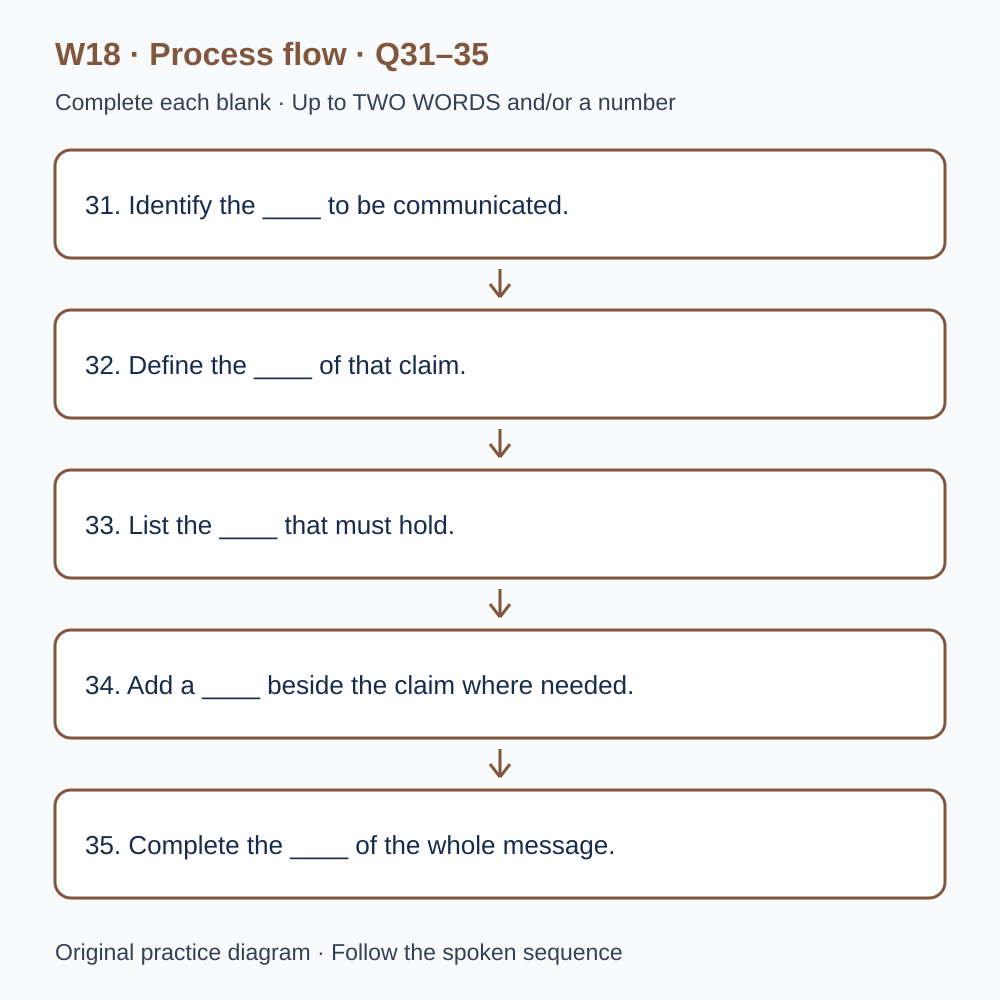
Q31. Identify the ____ to be communicated.
Q32. Define the ____ of that claim.
Q33. List the ____ that must hold.
Q34. Add a ____ beside the claim where needed.
Q35. Complete the ____ of the whole message.
Q36. More than one plausible reading indicates ____.
Q37. Consider the ____ readers draw from the layout.
Q38. A ____ can acknowledge a competing consideration.
Q39. Attention to a feature is affected by its ____.
Q40. Connecting claims with sources and revisions requires ____.
本周训练安排（音频批准后执行）
- Preview questions without the script：8 分钟。
- Future continuous first listen, including planned part pauses：32 分钟。
- Submit first answers and confidence, without a second play：8 分钟。
- Check answers and classify errors：20 分钟。
- Four Q-located intensive segments, 15 minutes each：60 分钟。
- Diagram and opinion retelling：15 分钟。
- Next-day retry of missed items：15 分钟。
合计 158 分钟；最多另用 22 分钟缓冲，总计不超过 180 分钟。暂停、回放与查词均计入精听预算，不能另行无限追加。当前实际已完成听力分钟数为 0。精听区段和步骤见 intensive.md；答案和脚本另页。
参考答案与证据（完成首次听力后再展开）
L-W18 — Answers and evidence
> 独立答案页。先提交首次答案，再看本页。当前缺音频，文本验题不能充当实听验收。
每个单空 1 分；双选各 2 分、答案顺序不限、按不同正确选项计分。接受形式仅做大小写和空白规范化；不做模糊词形推断。
Q1 — public notices
Accepted answers: public notices
Use the final confirmed detail in this exchange; the printed unit or date context is already supplied.
Evidence locator: Q01 (script.md; timestamps unavailable).
> Coordinator: Communication centre, good afternoon. Applicant: Our association wants help writing information for visitors. I noticed a course on meeting minutes, but our difficulty is with announcements that people read without someone nearby to explain them. Coordinator: Public notices would be the relevant workshop. Applicant: Yes, please book public notices. We need to describe who can attend an event and under what conditions, without making the page impossible to follow. Coordinator: The workshop examines that balance through fictional examples. It doesn't supply legal wording for a particular organisation, but it can help you see when a short message loses a condition that changes what the reader understands.
Q2 — 23
Accepted answers: 23 / 23rd / twenty-third / the twenty-third / twenty third / the 23rd
Use the final confirmed detail in this exchange; the printed unit or date context is already supplied.
Evidence locator: Q02 (script.md; timestamps unavailable).
> Applicant: Is the workshop on the sixteenth of July? Coordinator: That was the first proposed date. It is now confirmed for the twenty-third of July. Applicant: The twenty-third suits us. I'll replace the earlier entry rather than leave both dates in our calendar. Coordinator: We will send a confirmation identifying the subject and date together. Applicant: One member saw an announcement for another course in the same series, so that detail will help. Coordinator: Similar headings can be misleading when practical information is copied between events. Please use the booking confirmation for this workshop rather than combining whichever details happen to be most convenient from several different notices.
Q3 — 2.45
Accepted answers: 2.45 / 2:45 / 02.45 / 02:45 / 14.45 / 14:45 / two forty-five
Use the final confirmed detail in this exchange; the printed unit or date context is already supplied.
Evidence locator: Q03 (script.md; timestamps unavailable).
> Applicant: When does the teaching start? Coordinator: Two forty-five in the afternoon. The reception desk opens at two fifteen, but your workshop begins at two forty-five. Applicant: So the earlier time is for the desk, not the first activity. Coordinator: Correct. Arrive shortly before the workshop to check in. Applicant: I'll put the start time clearly in our travel note. Coordinator: That will help. The opening activity asks participants to compare a headline with a condition printed elsewhere on the page. If somebody misses that introduction, the later discussion about what a reader could reasonably infer may seem like an argument about style rather than meaning.
Q4 — 3
Accepted answers: 3 / three
Use the final confirmed detail in this exchange; the printed unit or date context is already supplied.
Evidence locator: Q04 (script.md; timestamps unavailable).
> Coordinator: How many places are required? Applicant: Five members helped prepare our current notice, but only three can attend. Please reserve three places. Coordinator: Three are available. Can those people bring the other members' questions? Applicant: Yes. We'll gather them in advance, but the two absent members won't be counted as workshop participants. Coordinator: If that changes, update the booking rather than making an informal substitution. Applicant: I'll keep a current attendance list with the confirmation. Coordinator: Good. The room activity uses small groups, and a clear number helps the leader prepare without having to change the arrangement while people are arriving and the teaching time has already begun.
Q5 — 42
Accepted answers: 42 / 42.00 / forty-two / forty two
Use the final confirmed detail in this exchange; the printed unit or date context is already supplied.
Evidence locator: Q05 (script.md; timestamps unavailable).
> Applicant: What will the three places cost altogether? Coordinator: The association booking is forty-two pounds in total. Applicant: Forty-two for all three places, not forty-two each? Coordinator: Exactly. The printed examples are included. Bringing your own notice for discussion does not purchase a separate editing service. Applicant: I'll explain that distinction to the committee. Coordinator: Please check the number of places and the total on the confirmation before paying. If anything differs from this conversation, ask us to correct the record. Applicant: That is easier than trying to work out afterwards whether an extra amount meant extra participants, extra materials or a service nobody had actually requested.
Q6 — draft
Accepted answers: draft / the draft / a draft
Use the final confirmed detail in this exchange; the printed unit or date context is already supplied.
Evidence locator: Q06 (script.md; timestamps unavailable).
> Applicant: What should we bring? Coordinator: A draft of the notice you want to discuss. It needn't look finished; we need to see the information and conditions you are trying to communicate. Applicant: I'll bring the draft with the unresolved wording still marked. Coordinator: That is more useful than removing the awkward paragraph just to make the page appear polished. Applicant: Do we need the poster from last year's event? Coordinator: You may bring it for context, but the required document is the draft for the current task. Keep earlier versions separate, especially if their entry conditions differ, so a convenient old sentence doesn't silently replace the rule now being communicated.
Q7 — B
Accepted answers: B
The workshop teaches revision and discusses examples; a commissioned rewrite is separate.
Evidence locator: Q07 (script.md; timestamps unavailable).
> Applicant: Will the leader rewrite our notice during the session? Coordinator: No. You will practise making and explaining revisions, with feedback on selected examples. A complete commissioned rewrite would be a different service. Applicant: So we should expect a method and a clearer view of our choices, rather than a guaranteed finished publication. Coordinator: That's right. The workshop can identify a missing qualification, but the organisation still has to confirm its actual arrangements. Applicant: We'll distinguish facts we know from details awaiting a decision. Coordinator: Good. A reader-friendly sentence is only useful if it represents the information the organisation is prepared to stand behind.
Q8 — C
Accepted answers: C
Permission is purpose-specific; the image can be replaced if unnecessary.
Evidence locator: Q08 (script.md; timestamps unavailable).
> Applicant: Our notice includes a photograph from a previous activity. Can we use it in the workshop example? Coordinator: Bring only material you may share for that purpose, and make any restrictions clear. Permission for a workshop discussion should not be assumed to cover a later public poster. Applicant: I'll check the conditions instead of relying on the fact that someone emailed us the image. Coordinator: Yes. You can also use a simple placeholder if the image isn't necessary to examine the wording. Applicant: That would let us focus on the information rather than delay the whole exercise while we search for a more attractive picture.
Q9 — A
Accepted answers: A
Practical needs and file compatibility must be checked.
Evidence locator: Q09 (script.md; timestamps unavailable).
> Applicant: One member needs an accessible digital version of the examples. Should I request that in advance? Coordinator: Please describe the practical format requirement now, so we can check what is available and confirm any limits. Applicant: I won't assume that a larger printout addresses the same need. Coordinator: Thank you. Different arrangements support different ways of accessing the task. Applicant: Should the person bring their usual device? Coordinator: If they normally use it, mention that too, but we shouldn't promise compatibility without checking the relevant files. A clear description before the session gives us a better chance of agreeing a workable arrangement than a general request after the first activity has started.
Q10 — B
Accepted answers: B
The latest complete booking information prevents version mixing.
Evidence locator: Q10 (script.md; timestamps unavailable).
> Applicant: Which message should we follow if the room changes? Coordinator: Use the current confirmation and any update that quotes its booking reference. Don't combine the entrance from an old programme with the time from a newer message. Applicant: I'll keep the latest complete version in the group folder. Coordinator: For a routine change to your booking, reply to that confirmation. For an urgent issue, use the contact number it contains. Applicant: Understood. Coordinator: Keeping the conditions with the main information is also part of the workshop's subject. A correct detail can still mislead when the reader cannot tell which event, version or circumstance it belongs to.
Q11 — G
Accepted answers: G
Use the explicitly stated position relative to the atrium, not an earlier layout or adjacent area.
Evidence locator: Q11 (script.md; timestamps unavailable).
> Welcome to the communication centre. North is at the top of the plan, and the entrance is on the southern edge. The atrium in the middle is the fixed landmark. Reception is directly west of the atrium, level with its centre. It is not the space immediately south of the atrium, which you pass when entering. Please check in at reception before joining the group. Staff can identify the current room arrangement and any practical update. The letters mark positions rather than room initials, so listen for the relation to the atrium or another named location instead of treating a familiar letter as a clue to the answer.
Q12 — D
Accepted answers: D
Use the explicitly stated position relative to the atrium, not an earlier layout or adjacent area.
Evidence locator: Q12 (script.md; timestamps unavailable).
> The interpretation room is in the north-east corner. It lies east of the northern central room and north of the space directly east of the atrium. An earlier programme located the activity in the north-west corner, but today's workshop begins in the north-east room. The first exercise compares a statement with several possible readings. You will be asked which interpretation is supported by the wording, not which one you personally prefer. A statement can be accurate under one condition and misleading when repeated without that condition. Keep the example sheet available during discussion so that the group can point to the actual phrase rather than argue from memory.
Q13 — B
Accepted answers: B
Use the explicitly stated position relative to the atrium, not an earlier layout or adjacent area.
Evidence locator: Q13 (script.md; timestamps unavailable).
> The example display is directly north of the atrium, in the northern central position. It is west of the interpretation room on the same row. The display contains several versions of a visitor notice, each prepared for a different audience and purpose. Read the short brief beside a page before deciding that its layout is better than another. A concise version may rely on background knowledge that a new visitor does not possess. The point is to connect a design choice with the task it serves, rather than search for one arrangement that should supposedly work for every message regardless of its content or readers.
Q14 — F
Accepted answers: F
Use the explicitly stated position relative to the atrium, not an earlier layout or adjacent area.
Evidence locator: Q14 (script.md; timestamps unavailable).
> The testing booth is in the south-east corner. It is south of the space directly east of the atrium and east of the southern central room. A volunteer reader will use that booth for a short navigation task. Observe which condition the reader finds, then ask a neutral question about how they interpreted it. Don't explain the intended meaning halfway through the task and later describe the result as independent understanding. Help can be useful, but its timing must remain visible in the record. Otherwise the team may credit a revised notice for an interpretation that was actually supplied by the observer during the test.
Q15 — C
Accepted answers: C
Use the explicitly stated position relative to the atrium, not an earlier layout or adjacent area.
Evidence locator: Q15 (script.md; timestamps unavailable).
> The resource desk is in the south-west corner. It lies south of reception and west of the southern central room. Collect the worksheet version named by the leader rather than taking a loose sheet from another group's table. Some worksheets ask for an observation and others for an interpretation; the headings look similar when viewed quickly. If a resource is missing, report it so the group can use a consistent version. The desk completes the five locations for today's visit. Reception is on the western side, while resources are below it, so don't confuse the two merely because both involve speaking to a member of staff.
Q16 — B
Accepted answers: B
Purpose determines relevant information and arrangement.
Evidence locator: Q16 (script.md; timestamps unavailable).
> Begin each exercise by identifying the decision the notice is intended to support. A page that enables a booking has different information priorities from a page explaining the history of an activity. Interesting background can displace a practical condition if the group treats every supplied fact as equally important. Ask what the reader needs to do and which information makes that action possible. This doesn't mean all notices should be reduced to the same short formula. It means the amount and arrangement of information should be justified by the reader's task, rather than by the amount of material the writer happens to have collected beforehand.
Q17 — C
Accepted answers: C
Retaining words somewhere does not necessarily preserve their practical connection.
Evidence locator: Q17 (script.md; timestamps unavailable).
> A condition should stay close enough to the claim it limits for the reader to connect them. If a headline says admission is free but a later note restricts that offer to a particular group, moving the note out of sight changes the apparent promise. Simply retaining the words somewhere on the page may not preserve their practical meaning. The group should examine how the main statement and its qualification are encountered together. A shorter sentence can be an improvement if the condition remains clear, but removing that condition to make the heading cleaner is a change in what the message communicates, not merely a change in presentation.
Q18 — A
Accepted answers: A
Confirmed and unconfirmed information must remain distinguishable.
Evidence locator: Q18 (script.md; timestamps unavailable).
> When information is uncertain, mark the uncertainty in a way that matches its significance. An unconfirmed opening time should not be presented as fixed simply because a precise number fits neatly into a table. The team can state what has been confirmed and identify where an update will appear. That is different from filling every gap with a plausible guess. A hypothetical example may be useful in a workshop, but it must remain recognisable as an example. The reader should not have to infer which details are real from subtle differences in tone or from a disclaimer separated from the claim it is meant to qualify.
Q19 — B
Accepted answers: B
Observation and interpretation are separate; leading questions weaken the evidence.
Evidence locator: Q19 (script.md; timestamps unavailable).
> During reader testing, record an action before deciding what caused it. A visitor who selects the wrong option may have overlooked a condition, misunderstood a term or brought an expectation from another event. Ask a neutral follow-up rather than offering the explanation you want confirmed. If you tell the reader that the heading was confusing, agreement adds little evidence about their original interpretation. Preserve the first observation and distinguish it from the explanation that emerges in discussion. The purpose is to learn which feature needs attention, not to collect comments that make the team's preferred revision appear successful before it has actually been examined.
Q20 — C
Accepted answers: C
A polished page may still miss required information or obscure a limitation.
Evidence locator: Q20 (script.md; timestamps unavailable).
> Close the exercise by comparing the revised notice with the original brief. Check required information, the conditions attached to important claims and any uncertainty that remains unresolved. A visually cleaner page is not necessarily a more complete response. Record a next action that follows from the evidence, such as testing whether readers find a particular restriction, rather than declaring the whole communication problem solved. You may retain a sentence that worked well while revising another. The review should identify the reason for each decision so that a later editor can understand what the team was trying to preserve and what further evidence could justify changing it.
Q21 — C
Accepted answers: C
Final stance: Both students. Ignore an initial proposal if later withdrawn; the tutor is not an answer option.
Evidence locator: Q21 (script.md; timestamps unavailable).
> Tutor: You tested both notice versions last week. What should the next revision preserve? Mae: The eligibility condition beside the headline. We saw readers infer a wider offer when it was moved to the footnote. Jon: I agree now. I originally preferred a cleaner heading, but the nearby condition changes how the promise is understood. Tutor: Are you agreeing to keep every word? Jon: No. We can shorten it if the restriction remains explicit. Mae: That's the version I support too. Tutor: Then both of you support retaining the nearby condition, while leaving room to improve its wording without expanding the offer beyond what the organisers confirmed.
Q22 — B
Accepted answers: B
Final stance: Jon only. Ignore an initial proposal if later withdrawn; the tutor is not an answer option.
Evidence locator: Q22 (script.md; timestamps unavailable).
> Tutor: Jon proposes giving the exact closing time in the opening panel. Jon: Yes. The time is confirmed, and readers need it before deciding whether they can attend. Mae: I would place it in the schedule immediately below, keeping the opening panel focused on who the event is for. Tutor: Would a small line in the panel change your view? Mae: It might fit, but I still prefer the schedule for this version. Jon: I continue to favour the opening panel. Tutor: Then Jon supports that specific location and Mae doesn't. You agree about the need for the time, but not every agreement about content settles where it should appear.
Q23 — D
Accepted answers: D
Final stance: Neither student. Ignore an initial proposal if later withdrawn; the tutor is not an answer option.
Evidence locator: Q23 (script.md; timestamps unavailable).
> Tutor: Your first draft says the activity is suitable for everyone. Mae: I used that phrase because it sounded welcoming. Looking at the entry conditions, I don't think we can support it. Jon: Neither do I. The notice specifies a minimum age and an advance booking requirement. Mae: I'll remove the universal wording instead of relying on readers to discover the exceptions later. Tutor: Does either of you still want that phrase as a headline? Jon: No. We can welcome enquiries without making an unrestricted promise. Tutor: Good. Neither student supports the original statement, even though one of you proposed it before examining how it interacted with the rest of the page.
Q24 — A
Accepted answers: A
Final stance: Mae only. Ignore an initial proposal if later withdrawn; the tutor is not an answer option.
Evidence locator: Q24 (script.md; timestamps unavailable).
> Tutor: Should the next test include readers unfamiliar with the association? Mae: I support that. Our members may understand terms that a first-time visitor doesn't recognise. Jon: I'd first test the revision with the same readers, so we can ask whether they notice the changed condition. Tutor: That could reveal something about the revision, but would it test an independent first encounter? Jon: No, and I would record that limit. For the next session, I still prefer those readers. Mae: I continue to favour newcomers. Tutor: Then Mae supports the specific recruitment proposal, while Jon wants a different comparison before the group broadens the audience.
Q25 — C
Accepted answers: C
Final stance: Both students. Ignore an initial proposal if later withdrawn; the tutor is not an answer option.
Evidence locator: Q25 (script.md; timestamps unavailable).
> Tutor: Do you want to keep the original version alongside the revision? Jon: Yes. Otherwise we might explain a reader's reaction using a sentence that wasn't on the page they saw. Mae: Agreed. Each test record should name the exact version. Tutor: Would a file called final be enough? Mae: No, especially if it is edited again. We'll use distinct version labels and preserve the content. Jon: That also lets us trace which condition changed between sessions. Tutor: Then this is a shared decision. A comparison requires identifiable objects, not simply two impressions of how the notice looked at different points in a busy editing process.
Q26 — B
Accepted answers: B
Final stance: Jon only. Ignore an initial proposal if later withdrawn; the tutor is not an answer option.
Evidence locator: Q26 (script.md; timestamps unavailable).
> Tutor: Jon suggests recording a short verbal explanation from each reader. Jon: I support it, with a focused question about the offer and its conditions. The selected option alone may hide a misunderstanding. Mae: I'd leave recording out of the next trial and use written notes from an observer. Tutor: Is your concern the question or the recording arrangement? Mae: The arrangement. It may take time we need for another independent reader. Jon: I still prefer a brief recording so we can check the wording later. Tutor: Then Jon supports the proposal and Mae retains another method. Don't convert agreement on the question's importance into agreement on how to collect the response.
Q27–28 — C, E
Accept unordered set: C, E. One point per distinct correct choice, maximum 2.
Meaningful conditions and visible uncertainty are selected; not equal panel lengths or invented figures.
Evidence locator: Q27, Q28 (script.md; timestamps unavailable).
> Tutor: Which revision actions do you both accept? Mae: Retain the conditions that determine whether the headline claim applies. We can remove repetition, but not a restriction that changes the offer. Jon: Agreed. We should check each proposed deletion against the meaning of the complete message. Tutor: Does that require retaining every historical detail in the background pack? Mae: No. A detail can be accurate without being necessary for this notice. Jon: Nor do we need to make every panel the same length. Tutor: So preserving meaningful conditions is one agreed action. The reason is the relation between the claim and its scope, not a general preference for longer wording.
> Tutor: What is the second agreed action? Jon: Separate confirmed information from assumptions that still need checking. Mae: Yes. If the organisers haven't confirmed a detail, we should not let a confident layout disguise that gap. Tutor: Are you planning to invent a number temporarily and remove it later? Mae: No. A temporary figure can escape into another version before someone notices the label. Jon: We can use a clearly marked gap while requesting the information. Tutor: Then your two selected actions are retaining the claim's conditions and separating assumptions from confirmed facts. A decorative chart or a predicted formal score is not part of the agreed revision plan.
Q29–30 — B, D
Accept unordered set: B, D. One point per distinct correct choice, maximum 2.
Reader experience and response measure differed, so wording alone does not explain the result.
Evidence locator: Q29, Q30 (script.md; timestamps unavailable).
> Tutor: What limited last week's comparison? Jon: The readers in the second session had more experience with the association. They already knew several terms used in the notice. Mae: That means a smoother response could reflect familiarity as well as the wording change. Tutor: Were all the printed pages missing a section? Mae: No. The pages were complete. The issue is the difference between the reader groups, not a printing failure. Jon: We should report the relevant experience instead of treating everyone as an interchangeable visitor. Tutor: That will help the next review distinguish an observation about these participants from a claim about what a genuinely new reader would understand.
> Tutor: Was anything else different? Mae: We changed the question we asked after reading. The first group selected an option, while the second explained the offer in their own words. Jon: Both responses can be informative, but they aren't the same measure. Tutor: So you can't attribute the difference solely to the revised notice. Mae: Correct. We need to keep the question wording with each record. Jon: Neither session was cancelled, and the room was available. Tutor: Then record differing reader experience and the changed question as the two limitations. Avoid adding circumstances that sound plausible but did not affect the sessions you actually conducted last week.
Q31 — claim
Accepted answers: claim / main claim / proposition
Complete the named stage in the stated process order; retain any word already printed around the blank.
Evidence locator: Q31 (script.md; timestamps unavailable).
> Consider a fictional team preparing a message about a community programme. The first stage identifies the main claim. The claim is the proposition the reader is being asked to understand or act upon, such as an offer of entry under stated arrangements. The team writes it clearly enough to compare with the information that supports it. A collection of attractive phrases can conceal uncertainty about what is actually being promised. Identifying the main claim does not mean stripping away every condition. It gives the review a starting point from which to examine whether the complete message says something narrower, broader or different from the heading alone.
Q32 — scope
Accepted answers: scope / stated scope / boundary / intended boundary
Complete the named stage in the stated process order; retain any word already printed around the blank.
Evidence locator: Q32 (script.md; timestamps unavailable).
> The second stage defines the scope of that claim. Scope concerns the people, circumstances and period to which the statement applies. A notice about one session should not accidentally sound like a rule for every future event. The team checks whether a reader could reasonably extend the statement beyond the intended boundary. This stated scope may be supplied by a heading, a nearby phrase or another clearly connected feature of the page. What matters is that the connection remains available during normal reading. An accurate restriction stored in a separate document does not necessarily repair a public sentence whose apparent meaning is broader than the organisation intends.
Q33 — conditions
Accepted answers: conditions / relevant conditions
Complete the named stage in the stated process order; retain any word already printed around the blank.
Evidence locator: Q33 (script.md; timestamps unavailable).
> The third stage lists the relevant conditions. Conditions explain what must hold for the claim to apply, such as prior booking or attendance during a specified period. They differ from background details that merely describe the event's history. The team examines whether omitting a condition would change a reader's decision. If it would, that information should not disappear simply because the layout is crowded. A condition may be short while carrying considerable meaning. The review therefore considers its function rather than assuming that the number of words indicates its importance. The objective is a complete, usable message, not the shortest possible string that can still be called a notice.
Q34 — qualification
Accepted answers: qualification / clear qualification / limitation / boundary
Complete the named stage in the stated process order; retain any word already printed around the blank.
Evidence locator: Q34 (script.md; timestamps unavailable).
> The fourth stage adds a clear qualification beside the claim where the evidence requires it. A qualification narrows or limits how the statement should be understood. The limitation should connect to the actual uncertainty or exception, rather than operate as a vague apology for the whole message. For example, a prediction based on a small local trial may need a boundary about the conditions observed. Placing that qualification nearby helps the reader interpret the claim at the point of encounter. It does not guarantee that every reader will understand it, but it gives the later test a coherent message to examine instead of a promise separated from the words that constrain it.
Q35 — audit
Accepted answers: audit / consistency check / check / useful check
Complete the named stage in the stated process order; retain any word already printed around the blank.
Evidence locator: Q35 (script.md; timestamps unavailable).
> The fifth stage completes an audit of the whole message. This consistency check examines how headings, examples, figures and notes work together, rather than judging each sentence in isolation. A qualification in one panel may be undermined by an unrestricted phrase elsewhere. The audit compares the complete page with the confirmed information and the intended reader's task. It also checks whether a revision introduced a new contradiction while removing an old one. A useful check records remaining questions and who will resolve them. Reaching the final stage in a sequence does not itself mean that every factual gap has disappeared or that publication is justified without further confirmation.
Q36 — ambiguity
Accepted answers: ambiguity
The corresponding evidence block supplies this distinction or qualification; the question retains the surrounding grammar.
Evidence locator: Q36 (script.md; timestamps unavailable).
> Ambiguity occurs when wording supports more than one plausible interpretation. It is different from a statement that is clear but unfamiliar to a particular reader. The team should identify the competing readings before deciding how to revise the phrase. Otherwise it may replace a short ambiguous sentence with a longer one that preserves the same problem. A test can ask readers to explain the meaning without supplying the alternatives in a leading question. Their responses may reveal an ambiguity the writer did not anticipate. The review then connects the revision to that specific issue rather than assuming that any increase in detail necessarily makes the message clearer.
Q37 — inferences
Accepted answers: inferences / inference / unstated connection / connection
The corresponding evidence block supplies this distinction or qualification; the question retains the surrounding grammar.
Evidence locator: Q37 (script.md; timestamps unavailable).
> Inference also affects interpretation. Readers may supply an unstated connection from familiar practices or from the arrangement of information. An inference can be reasonable without being the one the writer intended. For example, placing two prices beside one another may suggest that they cover comparable services even when the underlying arrangements differ. The team examines which inferences the page invites and whether the information supports them. It cannot control everything a reader brings to the encounter, but it can avoid relying on a hidden distinction that the layout makes difficult to discover. The review concerns the meaning produced by the whole communication, not only the literal accuracy of isolated words.
Q38 — concession
Accepted answers: concession
The corresponding evidence block supplies this distinction or qualification; the question retains the surrounding grammar.
Evidence locator: Q38 (script.md; timestamps unavailable).
> A concession can recognise evidence that complicates a conclusion without abandoning the conclusion entirely. A writer might acknowledge that a shorter notice is easier to scan while arguing that one condition must remain visible. That concession differs from claiming that the competing consideration has no value. The team should keep the relationship clear so that a reader can follow why one choice is preferred despite a genuine cost. Removing the acknowledged limitation may make the argument sound stronger while making it less accurate. In a discussion, noticing a concession also helps distinguish a change of final position from an acknowledgement that another proposal has some merit.
Q39 — salience
Accepted answers: salience / prominence
The corresponding evidence block supplies this distinction or qualification; the question retains the surrounding grammar.
Evidence locator: Q39 (script.md; timestamps unavailable).
> Salience concerns how readily a feature attracts attention. Prominence can result from position, size, contrast or the reader's immediate purpose. A condition printed in technically readable text may still be overlooked if the page directs attention elsewhere. The team therefore considers how a reader encounters the message, rather than checking only whether all required words are present. More emphasis is not always the solution: if every line competes for attention, the hierarchy may become harder to follow. The useful question is whether the information needed for the decision is noticeable at the right point, with its connection to the main claim still intact.
Q40 — traceability
Accepted answers: traceability
The corresponding evidence block supplies this distinction or qualification; the question retains the surrounding grammar.
Evidence locator: Q40 (script.md; timestamps unavailable).
> Finally, traceability allows the team to connect each public claim with its source and revision history. A reviewer should be able to identify which confirmed arrangement supports a statement and which version of the notice was tested. Without that connection, a plausible sentence can survive long after the information behind it has changed. Traceability does not require displaying the entire editing history to every visitor. It requires preserving enough of that history for the team to examine a decision and update it responsibly. The stage review ends by recording unresolved questions and the next check, rather than treating a polished page as proof that all its implications have been understood.
完整脚本（提前阅读会失去陌生题首答机会）
L-W18 — Conditions, exceptions and the meaning of a claim: transcript
> 原创虚构练习，非真题；音频缺失。仅供完成首次作答后的核对或文字审阅。Q 标记与角色名不属于朗读正文。
Part 1 — Booking a notice-writing workshop
Q1 evidence block
Coordinator: Communication centre, good afternoon.
Applicant: Our association wants help writing information for visitors. I noticed a course on meeting minutes, but our difficulty is with announcements that people read without someone nearby to explain them.
Coordinator: Public notices would be the relevant workshop.
Applicant: Yes, please book public notices. We need to describe who can attend an event and under what conditions, without making the page impossible to follow.
Coordinator: The workshop examines that balance through fictional examples. It doesn't supply legal wording for a particular organisation, but it can help you see when a short message loses a condition that changes what the reader understands.
Q2 evidence block
Applicant: Is the workshop on the sixteenth of July?
Coordinator: That was the first proposed date. It is now confirmed for the twenty-third of July.
Applicant: The twenty-third suits us. I'll replace the earlier entry rather than leave both dates in our calendar.
Coordinator: We will send a confirmation identifying the subject and date together.
Applicant: One member saw an announcement for another course in the same series, so that detail will help.
Coordinator: Similar headings can be misleading when practical information is copied between events. Please use the booking confirmation for this workshop rather than combining whichever details happen to be most convenient from several different notices.
Q3 evidence block
Applicant: When does the teaching start?
Coordinator: Two forty-five in the afternoon. The reception desk opens at two fifteen, but your workshop begins at two forty-five.
Applicant: So the earlier time is for the desk, not the first activity.
Coordinator: Correct. Arrive shortly before the workshop to check in.
Applicant: I'll put the start time clearly in our travel note.
Coordinator: That will help. The opening activity asks participants to compare a headline with a condition printed elsewhere on the page. If somebody misses that introduction, the later discussion about what a reader could reasonably infer may seem like an argument about style rather than meaning.
Q4 evidence block
Coordinator: How many places are required?
Applicant: Five members helped prepare our current notice, but only three can attend. Please reserve three places.
Coordinator: Three are available. Can those people bring the other members' questions?
Applicant: Yes. We'll gather them in advance, but the two absent members won't be counted as workshop participants.
Coordinator: If that changes, update the booking rather than making an informal substitution.
Applicant: I'll keep a current attendance list with the confirmation.
Coordinator: Good. The room activity uses small groups, and a clear number helps the leader prepare without having to change the arrangement while people are arriving and the teaching time has already begun.
Q5 evidence block
Applicant: What will the three places cost altogether?
Coordinator: The association booking is forty-two pounds in total.
Applicant: Forty-two for all three places, not forty-two each?
Coordinator: Exactly. The printed examples are included. Bringing your own notice for discussion does not purchase a separate editing service.
Applicant: I'll explain that distinction to the committee.
Coordinator: Please check the number of places and the total on the confirmation before paying. If anything differs from this conversation, ask us to correct the record.
Applicant: That is easier than trying to work out afterwards whether an extra amount meant extra participants, extra materials or a service nobody had actually requested.
Q6 evidence block
Applicant: What should we bring?
Coordinator: A draft of the notice you want to discuss. It needn't look finished; we need to see the information and conditions you are trying to communicate.
Applicant: I'll bring the draft with the unresolved wording still marked.
Coordinator: That is more useful than removing the awkward paragraph just to make the page appear polished.
Applicant: Do we need the poster from last year's event?
Coordinator: You may bring it for context, but the required document is the draft for the current task. Keep earlier versions separate, especially if their entry conditions differ, so a convenient old sentence doesn't silently replace the rule now being communicated.
Q7 evidence block
Applicant: Will the leader rewrite our notice during the session?
Coordinator: No. You will practise making and explaining revisions, with feedback on selected examples. A complete commissioned rewrite would be a different service.
Applicant: So we should expect a method and a clearer view of our choices, rather than a guaranteed finished publication.
Coordinator: That's right. The workshop can identify a missing qualification, but the organisation still has to confirm its actual arrangements.
Applicant: We'll distinguish facts we know from details awaiting a decision.
Coordinator: Good. A reader-friendly sentence is only useful if it represents the information the organisation is prepared to stand behind.
Q8 evidence block
Applicant: Our notice includes a photograph from a previous activity. Can we use it in the workshop example?
Coordinator: Bring only material you may share for that purpose, and make any restrictions clear. Permission for a workshop discussion should not be assumed to cover a later public poster.
Applicant: I'll check the conditions instead of relying on the fact that someone emailed us the image.
Coordinator: Yes. You can also use a simple placeholder if the image isn't necessary to examine the wording.
Applicant: That would let us focus on the information rather than delay the whole exercise while we search for a more attractive picture.
Q9 evidence block
Applicant: One member needs an accessible digital version of the examples. Should I request that in advance?
Coordinator: Please describe the practical format requirement now, so we can check what is available and confirm any limits.
Applicant: I won't assume that a larger printout addresses the same need.
Coordinator: Thank you. Different arrangements support different ways of accessing the task.
Applicant: Should the person bring their usual device?
Coordinator: If they normally use it, mention that too, but we shouldn't promise compatibility without checking the relevant files. A clear description before the session gives us a better chance of agreeing a workable arrangement than a general request after the first activity has started.
Q10 evidence block
Applicant: Which message should we follow if the room changes?
Coordinator: Use the current confirmation and any update that quotes its booking reference. Don't combine the entrance from an old programme with the time from a newer message.
Applicant: I'll keep the latest complete version in the group folder.
Coordinator: For a routine change to your booking, reply to that confirmation. For an urgent issue, use the contact number it contains.
Applicant: Understood.
Coordinator: Keeping the conditions with the main information is also part of the workshop's subject. A correct detail can still mislead when the reader cannot tell which event, version or circumstance it belongs to.
Part 2 — Orientation at the communication centre
Q11 evidence block
Centre host: Welcome to the communication centre. North is at the top of the plan, and the entrance is on the southern edge. The atrium in the middle is the fixed landmark. Reception is directly west of the atrium, level with its centre. It is not the space immediately south of the atrium, which you pass when entering. Please check in at reception before joining the group. Staff can identify the current room arrangement and any practical update. The letters mark positions rather than room initials, so listen for the relation to the atrium or another named location instead of treating a familiar letter as a clue to the answer.
Q12 evidence block
Centre host: The interpretation room is in the north-east corner. It lies east of the northern central room and north of the space directly east of the atrium. An earlier programme located the activity in the north-west corner, but today's workshop begins in the north-east room. The first exercise compares a statement with several possible readings. You will be asked which interpretation is supported by the wording, not which one you personally prefer. A statement can be accurate under one condition and misleading when repeated without that condition. Keep the example sheet available during discussion so that the group can point to the actual phrase rather than argue from memory.
Q13 evidence block
Centre host: The example display is directly north of the atrium, in the northern central position. It is west of the interpretation room on the same row. The display contains several versions of a visitor notice, each prepared for a different audience and purpose. Read the short brief beside a page before deciding that its layout is better than another. A concise version may rely on background knowledge that a new visitor does not possess. The point is to connect a design choice with the task it serves, rather than search for one arrangement that should supposedly work for every message regardless of its content or readers.
Q14 evidence block
Centre host: The testing booth is in the south-east corner. It is south of the space directly east of the atrium and east of the southern central room. A volunteer reader will use that booth for a short navigation task. Observe which condition the reader finds, then ask a neutral question about how they interpreted it. Don't explain the intended meaning halfway through the task and later describe the result as independent understanding. Help can be useful, but its timing must remain visible in the record. Otherwise the team may credit a revised notice for an interpretation that was actually supplied by the observer during the test.
Q15 evidence block
Centre host: The resource desk is in the south-west corner. It lies south of reception and west of the southern central room. Collect the worksheet version named by the leader rather than taking a loose sheet from another group's table. Some worksheets ask for an observation and others for an interpretation; the headings look similar when viewed quickly. If a resource is missing, report it so the group can use a consistent version. The desk completes the five locations for today's visit. Reception is on the western side, while resources are below it, so don't confuse the two merely because both involve speaking to a member of staff.
Q16 evidence block
Centre host: Begin each exercise by identifying the decision the notice is intended to support. A page that enables a booking has different information priorities from a page explaining the history of an activity. Interesting background can displace a practical condition if the group treats every supplied fact as equally important. Ask what the reader needs to do and which information makes that action possible. This doesn't mean all notices should be reduced to the same short formula. It means the amount and arrangement of information should be justified by the reader's task, rather than by the amount of material the writer happens to have collected beforehand.
Q17 evidence block
Centre host: A condition should stay close enough to the claim it limits for the reader to connect them. If a headline says admission is free but a later note restricts that offer to a particular group, moving the note out of sight changes the apparent promise. Simply retaining the words somewhere on the page may not preserve their practical meaning. The group should examine how the main statement and its qualification are encountered together. A shorter sentence can be an improvement if the condition remains clear, but removing that condition to make the heading cleaner is a change in what the message communicates, not merely a change in presentation.
Q18 evidence block
Centre host: When information is uncertain, mark the uncertainty in a way that matches its significance. An unconfirmed opening time should not be presented as fixed simply because a precise number fits neatly into a table. The team can state what has been confirmed and identify where an update will appear. That is different from filling every gap with a plausible guess. A hypothetical example may be useful in a workshop, but it must remain recognisable as an example. The reader should not have to infer which details are real from subtle differences in tone or from a disclaimer separated from the claim it is meant to qualify.
Q19 evidence block
Centre host: During reader testing, record an action before deciding what caused it. A visitor who selects the wrong option may have overlooked a condition, misunderstood a term or brought an expectation from another event. Ask a neutral follow-up rather than offering the explanation you want confirmed. If you tell the reader that the heading was confusing, agreement adds little evidence about their original interpretation. Preserve the first observation and distinguish it from the explanation that emerges in discussion. The purpose is to learn which feature needs attention, not to collect comments that make the team's preferred revision appear successful before it has actually been examined.
Q20 evidence block
Centre host: Close the exercise by comparing the revised notice with the original brief. Check required information, the conditions attached to important claims and any uncertainty that remains unresolved. A visually cleaner page is not necessarily a more complete response. Record a next action that follows from the evidence, such as testing whether readers find a particular restriction, rather than declaring the whole communication problem solved. You may retain a sentence that worked well while revising another. The review should identify the reason for each decision so that a later editor can understand what the team was trying to preserve and what further evidence could justify changing it.
Part 3 — Revising a visitor message
Q21 evidence block
Tutor: You tested both notice versions last week. What should the next revision preserve?
Mae: The eligibility condition beside the headline. We saw readers infer a wider offer when it was moved to the footnote.
Jon: I agree now. I originally preferred a cleaner heading, but the nearby condition changes how the promise is understood.
Tutor: Are you agreeing to keep every word?
Jon: No. We can shorten it if the restriction remains explicit.
Mae: That's the version I support too.
Tutor: Then both of you support retaining the nearby condition, while leaving room to improve its wording without expanding the offer beyond what the organisers confirmed.
Q22 evidence block
Tutor: Jon proposes giving the exact closing time in the opening panel.
Jon: Yes. The time is confirmed, and readers need it before deciding whether they can attend.
Mae: I would place it in the schedule immediately below, keeping the opening panel focused on who the event is for.
Tutor: Would a small line in the panel change your view?
Mae: It might fit, but I still prefer the schedule for this version.
Jon: I continue to favour the opening panel.
Tutor: Then Jon supports that specific location and Mae doesn't. You agree about the need for the time, but not every agreement about content settles where it should appear.
Q23 evidence block
Tutor: Your first draft says the activity is suitable for everyone.
Mae: I used that phrase because it sounded welcoming. Looking at the entry conditions, I don't think we can support it.
Jon: Neither do I. The notice specifies a minimum age and an advance booking requirement.
Mae: I'll remove the universal wording instead of relying on readers to discover the exceptions later.
Tutor: Does either of you still want that phrase as a headline?
Jon: No. We can welcome enquiries without making an unrestricted promise.
Tutor: Good. Neither student supports the original statement, even though one of you proposed it before examining how it interacted with the rest of the page.
Q24 evidence block
Tutor: Should the next test include readers unfamiliar with the association?
Mae: I support that. Our members may understand terms that a first-time visitor doesn't recognise.
Jon: I'd first test the revision with the same readers, so we can ask whether they notice the changed condition.
Tutor: That could reveal something about the revision, but would it test an independent first encounter?
Jon: No, and I would record that limit. For the next session, I still prefer those readers.
Mae: I continue to favour newcomers.
Tutor: Then Mae supports the specific recruitment proposal, while Jon wants a different comparison before the group broadens the audience.
Q25 evidence block
Tutor: Do you want to keep the original version alongside the revision?
Jon: Yes. Otherwise we might explain a reader's reaction using a sentence that wasn't on the page they saw.
Mae: Agreed. Each test record should name the exact version.
Tutor: Would a file called final be enough?
Mae: No, especially if it is edited again. We'll use distinct version labels and preserve the content.
Jon: That also lets us trace which condition changed between sessions.
Tutor: Then this is a shared decision. A comparison requires identifiable objects, not simply two impressions of how the notice looked at different points in a busy editing process.
Q26 evidence block
Tutor: Jon suggests recording a short verbal explanation from each reader.
Jon: I support it, with a focused question about the offer and its conditions. The selected option alone may hide a misunderstanding.
Mae: I'd leave recording out of the next trial and use written notes from an observer.
Tutor: Is your concern the question or the recording arrangement?
Mae: The arrangement. It may take time we need for another independent reader.
Jon: I still prefer a brief recording so we can check the wording later.
Tutor: Then Jon supports the proposal and Mae retains another method. Don't convert agreement on the question's importance into agreement on how to collect the response.
Q27 evidence block
Tutor: Which revision actions do you both accept?
Mae: Retain the conditions that determine whether the headline claim applies. We can remove repetition, but not a restriction that changes the offer.
Jon: Agreed. We should check each proposed deletion against the meaning of the complete message.
Tutor: Does that require retaining every historical detail in the background pack?
Mae: No. A detail can be accurate without being necessary for this notice.
Jon: Nor do we need to make every panel the same length.
Tutor: So preserving meaningful conditions is one agreed action. The reason is the relation between the claim and its scope, not a general preference for longer wording.
Q28 evidence block
Tutor: What is the second agreed action?
Jon: Separate confirmed information from assumptions that still need checking.
Mae: Yes. If the organisers haven't confirmed a detail, we should not let a confident layout disguise that gap.
Tutor: Are you planning to invent a number temporarily and remove it later?
Mae: No. A temporary figure can escape into another version before someone notices the label.
Jon: We can use a clearly marked gap while requesting the information.
Tutor: Then your two selected actions are retaining the claim's conditions and separating assumptions from confirmed facts. A decorative chart or a predicted formal score is not part of the agreed revision plan.
Q29 evidence block
Tutor: What limited last week's comparison?
Jon: The readers in the second session had more experience with the association. They already knew several terms used in the notice.
Mae: That means a smoother response could reflect familiarity as well as the wording change.
Tutor: Were all the printed pages missing a section?
Mae: No. The pages were complete. The issue is the difference between the reader groups, not a printing failure.
Jon: We should report the relevant experience instead of treating everyone as an interchangeable visitor.
Tutor: That will help the next review distinguish an observation about these participants from a claim about what a genuinely new reader would understand.
Q30 evidence block
Tutor: Was anything else different?
Mae: We changed the question we asked after reading. The first group selected an option, while the second explained the offer in their own words.
Jon: Both responses can be informative, but they aren't the same measure.
Tutor: So you can't attribute the difference solely to the revised notice.
Mae: Correct. We need to keep the question wording with each record.
Jon: Neither session was cancelled, and the room was available.
Tutor: Then record differing reader experience and the changed question as the two limitations. Avoid adding circumstances that sound plausible but did not affect the sessions you actually conducted last week.
Part 4 — Keeping qualifications connected to claims
Q31 evidence block
Lecturer: Consider a fictional team preparing a message about a community programme. The first stage identifies the main claim. The claim is the proposition the reader is being asked to understand or act upon, such as an offer of entry under stated arrangements. The team writes it clearly enough to compare with the information that supports it. A collection of attractive phrases can conceal uncertainty about what is actually being promised. Identifying the main claim does not mean stripping away every condition. It gives the review a starting point from which to examine whether the complete message says something narrower, broader or different from the heading alone.
Q32 evidence block
Lecturer: The second stage defines the scope of that claim. Scope concerns the people, circumstances and period to which the statement applies. A notice about one session should not accidentally sound like a rule for every future event. The team checks whether a reader could reasonably extend the statement beyond the intended boundary. This stated scope may be supplied by a heading, a nearby phrase or another clearly connected feature of the page. What matters is that the connection remains available during normal reading. An accurate restriction stored in a separate document does not necessarily repair a public sentence whose apparent meaning is broader than the organisation intends.
Q33 evidence block
Lecturer: The third stage lists the relevant conditions. Conditions explain what must hold for the claim to apply, such as prior booking or attendance during a specified period. They differ from background details that merely describe the event's history. The team examines whether omitting a condition would change a reader's decision. If it would, that information should not disappear simply because the layout is crowded. A condition may be short while carrying considerable meaning. The review therefore considers its function rather than assuming that the number of words indicates its importance. The objective is a complete, usable message, not the shortest possible string that can still be called a notice.
Q34 evidence block
Lecturer: The fourth stage adds a clear qualification beside the claim where the evidence requires it. A qualification narrows or limits how the statement should be understood. The limitation should connect to the actual uncertainty or exception, rather than operate as a vague apology for the whole message. For example, a prediction based on a small local trial may need a boundary about the conditions observed. Placing that qualification nearby helps the reader interpret the claim at the point of encounter. It does not guarantee that every reader will understand it, but it gives the later test a coherent message to examine instead of a promise separated from the words that constrain it.
Q35 evidence block
Lecturer: The fifth stage completes an audit of the whole message. This consistency check examines how headings, examples, figures and notes work together, rather than judging each sentence in isolation. A qualification in one panel may be undermined by an unrestricted phrase elsewhere. The audit compares the complete page with the confirmed information and the intended reader's task. It also checks whether a revision introduced a new contradiction while removing an old one. A useful check records remaining questions and who will resolve them. Reaching the final stage in a sequence does not itself mean that every factual gap has disappeared or that publication is justified without further confirmation.
Q36 evidence block
Lecturer: Ambiguity occurs when wording supports more than one plausible interpretation. It is different from a statement that is clear but unfamiliar to a particular reader. The team should identify the competing readings before deciding how to revise the phrase. Otherwise it may replace a short ambiguous sentence with a longer one that preserves the same problem. A test can ask readers to explain the meaning without supplying the alternatives in a leading question. Their responses may reveal an ambiguity the writer did not anticipate. The review then connects the revision to that specific issue rather than assuming that any increase in detail necessarily makes the message clearer.
Q37 evidence block
Lecturer: Inference also affects interpretation. Readers may supply an unstated connection from familiar practices or from the arrangement of information. An inference can be reasonable without being the one the writer intended. For example, placing two prices beside one another may suggest that they cover comparable services even when the underlying arrangements differ. The team examines which inferences the page invites and whether the information supports them. It cannot control everything a reader brings to the encounter, but it can avoid relying on a hidden distinction that the layout makes difficult to discover. The review concerns the meaning produced by the whole communication, not only the literal accuracy of isolated words.
Q38 evidence block
Lecturer: A concession can recognise evidence that complicates a conclusion without abandoning the conclusion entirely. A writer might acknowledge that a shorter notice is easier to scan while arguing that one condition must remain visible. That concession differs from claiming that the competing consideration has no value. The team should keep the relationship clear so that a reader can follow why one choice is preferred despite a genuine cost. Removing the acknowledged limitation may make the argument sound stronger while making it less accurate. In a discussion, noticing a concession also helps distinguish a change of final position from an acknowledgement that another proposal has some merit.
Q39 evidence block
Lecturer: Salience concerns how readily a feature attracts attention. Prominence can result from position, size, contrast or the reader's immediate purpose. A condition printed in technically readable text may still be overlooked if the page directs attention elsewhere. The team therefore considers how a reader encounters the message, rather than checking only whether all required words are present. More emphasis is not always the solution: if every line competes for attention, the hierarchy may become harder to follow. The useful question is whether the information needed for the decision is noticeable at the right point, with its connection to the main claim still intact.
Q40 evidence block
Lecturer: Finally, traceability allows the team to connect each public claim with its source and revision history. A reviewer should be able to identify which confirmed arrangement supports a statement and which version of the notice was tested. Without that connection, a plausible sentence can survive long after the information behind it has changed. Traceability does not require displaying the entire editing history to every visitor. It requires preserving enough of that history for the team to examine a decision and update it responsibly. The stage review ends by recording unresolved questions and the next check, rather than treating a polished page as proof that all its implications have been understood.
精听与复盘步骤（须有已验收配套音频）
L-W18 — Q-based intensive listening
> 音频尚未生成；以下是未来执行安排，不是已完成记录。不要用文本阅读替代首次听力。无实际时间戳。
周预算：预览 8 + 首听 32 + 交首次答案 8 + 查错 20 + 精听 60 + 复述 15 + 次日重做 15 = 158 分钟。含暂停/回放；加用缓冲最多 22 分钟，总计≤180。
四段各 15 分钟：先定位并不看稿听 2 分钟；分句回放、写关键词 4 分钟；对照稿找误听与改口 3 分钟；遮稿跟读和复述 3 分钟；重答并记录错误原因 3 分钟。不得把同一段回放另算在周预算之外。
Q2–3 — 15 minutes
定位 script.md 的 Q2 evidence block 起至 Q3 evidence block 结束（约 202 词）；音频起止为 null。
目标：Identify a revised date and preserve afternoon time while rejecting reception opening.
留痕：首次答案 → 听到的原词 → 干扰来源 → 修正答案 → 一句英文复述。
Q12–15 — 15 minutes
定位 script.md 的 Q12 evidence block 起至 Q15 evidence block 结束（约 424 词）；音频起止为 null。
目标：Check corner position against same-row east and vertical south relations.
留痕：首次答案 → 听到的原词 → 干扰来源 → 修正答案 → 一句英文复述。
Q21–23 — 15 minutes
定位 script.md 的 Q21 evidence block 起至 Q23 evidence block 结束（约 308 词）；音频起止为 null。
目标：Track conditional agreement, unresolved placement and withdrawal of a universal claim.
留痕：首次答案 → 听到的原词 → 干扰来源 → 修正答案 → 一句英文复述。
Q36–39 — 15 minutes
定位 script.md 的 Q36 evidence block 起至 Q39 evidence block 结束（约 426 词）；音频起止为 null。
目标：Distinguish ambiguity, inference, concession and salience using their consequences for interpretation.
留痕：首次答案 → 听到的原词 → 干扰来源 → 修正答案 → 一句英文复述。
15 分钟复述与 15 分钟次日重做
复述：5 分钟遮住答案口述地图五个位置；5 分钟按人说明三人讨论的最终观点；5 分钟复述流程及一个限制。次日：8 分钟仅重做错题对应 Q 段；4 分钟核对；3 分钟更新错误记录。若仍超时，留下未完成项，不把额外时间隐去。
许可说明
原创文字和图示：RayXBuilds and contributors，CC BY 4.0。本页不包含配套音频；现有基础VOA媒体不能代替本套题的录音。
回到顶部
U54 第19周听力题面与复盘（音频待补）
本页提供已核验的原创题目、参考答案和脚本。配套完整音频尚未验收，当前只能预览题面；不能进行有效的首次听力测试，也不能把读稿作答计作听力成绩或已完成一套听力。
请先保留首次作答机会：批准音频就绪前，不要展开下方答案和脚本。若已读稿，请标记为熟悉材料，之后的练习不能充当陌生题诊断。页面阅读标记只代表看过文字，不代表完成听力。
本材料非雅思真题、非标准化模考，不换算正式分数。计划分钟数不是实测音频时长；学习记录、正式测评和真人反馈须另行完成。
学生题面
L-W19 — Transferring a procedure to an unfamiliar setting
> 原创 IELTS-style 技能练习，非真题、非标准化模考，不可换算正式分数。当前只有文字和题目，音频未生成，不能计作已完成听力套题。
共四部分、40 个计分空，每空 1 分。正式首次作答须等待批准音频，先不要打开 script.md 或 answers.md。朗读前先看题；只听一遍后提交首次答案及信心等级，再做精听。当前只能预览题面，不能把读稿作答记作听力成绩。
Part 1 — Booking a route-testing session
Q1–6: Complete the notes. Write NO MORE THAN TWO WORDS AND/OR A NUMBER for each answer, using words from the recording. Numeric notation may replace spoken numbers. Do not repeat a printed unit. Q7–10: Choose ONE letter, A, B or C.
Q1. Workshop topic: ____
Q2. Confirmed day of September: ____
Q3. Teaching start (a.m.): ____
Q4. Number of participants: ____
Q5. Total group fee: £____
Q6. Required planning document: ____
Q7. What can the session provide?
- A. A guarantee for every future visitor
- B. A testing method and a bounded interpretation of a trial
- C. Proof that all routes have equivalent demands
Answer: ____
Q8. If the outdoor practice area cannot be used, the group should
- A. choose an unconfirmed route
- B. report that the original trial occurred unchanged
- C. follow the approved update and record the actual activity
Answer: ____
Q9. How should a map-format requirement be addressed?
- A. Ask about the specific need before the session
- B. Assume a photograph is an equivalent file
- C. Conceal the arrangement in the trial record
Answer: ____
Q10. How should a withdrawal be reported?
- A. Through public comments only
- B. Through the confirmation reference
- C. By leaving the attendance list unchanged
Answer: ____
Part 2 — Orientation at the visitor research centre
Q11–15: Label the map. Write ONE letter, A–H, for each destination. Three letters are unused. Q16–20: Choose ONE letter, A, B or C.
Q11. Reception
Answer: ____
Q12. Briefing room
Answer: ____
Q13. Map collection desk
Answer: ____
Q14. Observation room
Answer: ____
Q15. Return desk
Answer: ____
Q16. What should happen before using left or right?
- A. Assume everyone faces the same way
- B. Switch silently between viewpoints
- C. Establish and preserve the reference frame
Answer: ____
Q17. If the approved route is unavailable, participants should
- A. ask the leader about the stated alternative
- B. enter an unconfirmed area to finish the sheet
- C. claim the original route was tested
Answer: ____
Q18. How should an observer handle a pause?
- A. Automatically record it as failure
- B. Describe it before interpreting the cause
- C. Erase it if the destination is reached
Answer: ____
Q19. What should guide revision of the route material?
- A. The output required by the brief
- B. Decorative detail alone
- C. All available building history
Answer: ____
Q20. What belongs in the closing report?
- A. A future test presented as completed
- B. A universal guarantee from one arrival
- C. Actual actions, support and remaining uncertainty
Answer: ____
Part 3 — Planning a second route trial
Q21–26: Match each proposal to the students' final positions at the end of that exchange. The tutor is not included. Write A, B, C or D. Letters may be reused.
- A Nia only
- B Sam only
- C Both students
- D Neither student
Q27–28 and Q29–30: Choose TWO different letters, A–E, for each pair. Write one letter in each numbered slot; either order is accepted. Each distinct correct choice earns one point, maximum two. Repeating a letter cannot earn two points. Submit no more than two letters.
Q21. At the END of this exchange, who supports: Using a different building for the very next trial?
Answer: ____
Q22. At the END of this exchange, who supports: Preserving the exact instruction wording for one more comparison?
Answer: ____
Q23. At the END of this exchange, who supports: Including a fixed reference landmark on every map?
Answer: ____
Q24. At the END of this exchange, who supports: Keeping left/right descriptions without a stated viewpoint?
Answer: ____
Q25. At the END of this exchange, who supports: Adding a diagram at the second decision point?
Answer: ____
Q26. At the END of this exchange, who supports: Limiting the report to the observed route and conditions?
Answer: ____
Q27–28. Which TWO preparation actions are agreed?
- A. Fix the starting position and orientation
- B. Collect all visitors' full names
- C. Record obstacles affecting the route
- D. Predict an official language score
- E. Remove pauses from the records
Answers: Q27 ____ · Q28 ____
Q29–30. Which TWO limitations affected last week's comparison?
- A. Both trials were cancelled
- B. The routes differed in complexity
- C. A map page was missing
- D. An observer gave a hint in one attempt
- E. No time records existed
Answers: Q29 ____ · Q30 ____
Part 4 — Deciding what can carry across
Q31–35: Complete the flow chart below. Q36–40: Complete the notes. Write NO MORE THAN TWO WORDS AND/OR A NUMBER for each answer, using words from the recording. Numeric notation may replace spoken numbers. Words or units already printed do not belong in the blank. The numbered text below repeats the SVG prompts for readability.
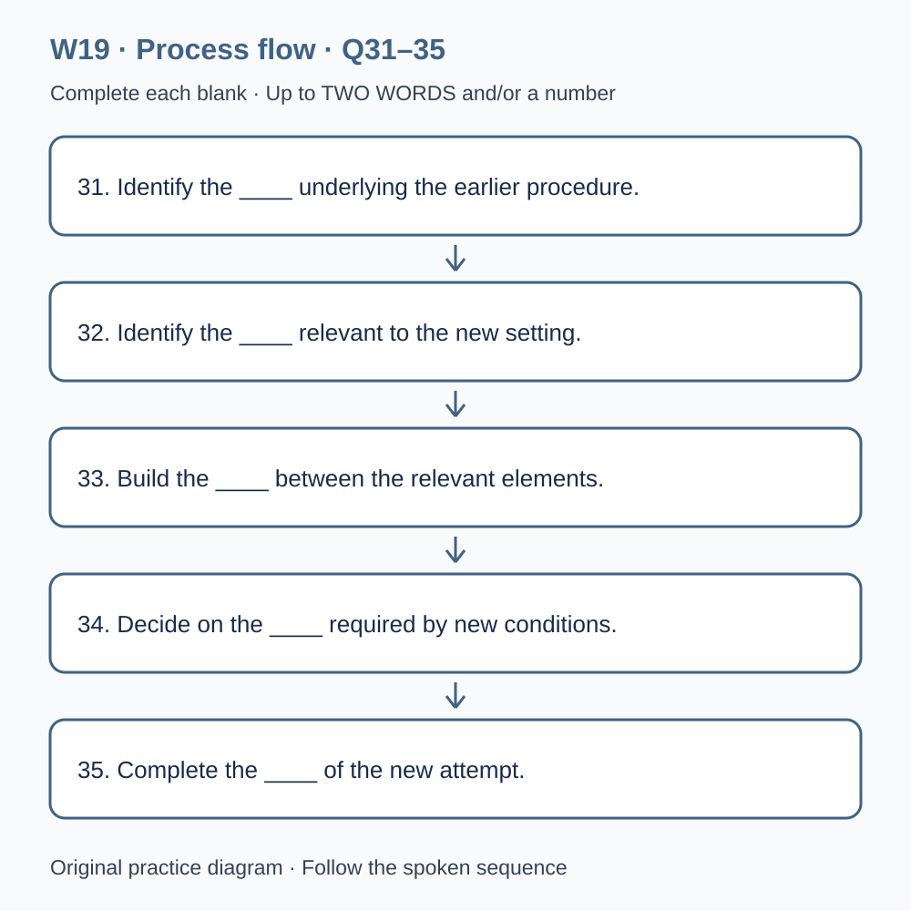
Q31. Identify the ____ underlying the earlier procedure.
Q32. Identify the ____ relevant to the new setting.
Q33. Build the ____ between the relevant elements.
Q34. Decide on the ____ required by new conditions.
Q35. Complete the ____ of the new attempt.
Q36. Establish the ____ before evaluating a directional turn.
Q37. Additional processing demands contribute to ____.
Q38. Test the ____ between familiar and new settings.
Q39. Describe the ____ that restrict where a procedure is useful.
Q40. Plan ____ of the defined observation method.
本周训练安排（音频批准后执行）
- Preview questions without the script：8 分钟。
- Future continuous first listen, including planned part pauses：32 分钟。
- Submit first answers and confidence, without a second play：8 分钟。
- Check answers and classify errors：20 分钟。
- Four Q-located intensive segments, 15 minutes each：60 分钟。
- Diagram and opinion retelling：15 分钟。
- Next-day retry of missed items：15 分钟。
合计 158 分钟；最多另用 22 分钟缓冲，总计不超过 180 分钟。暂停、回放与查词均计入精听预算，不能另行无限追加。当前实际已完成听力分钟数为 0。精听区段和步骤见 intensive.md；答案和脚本另页。
参考答案与证据（完成首次听力后再展开）
L-W19 — Answers and evidence
> 独立答案页。先提交首次答案，再看本页。当前缺音频，文本验题不能充当实听验收。
每个单空 1 分；双选各 2 分、答案顺序不限、按不同正确选项计分。接受形式仅做大小写和空白规范化；不做模糊词形推断。
Q1 — route testing
Accepted answers: route testing
Use the final confirmed detail in this exchange; the printed unit or date context is already supplied.
Evidence locator: Q01 (script.md; timestamps unavailable).
> Receptionist: Visitor research centre, good morning. Organiser: Our volunteers are preparing directions for a small exhibition, and we'd like to test whether newcomers can follow them. We saw a course on exhibition design, but we aren't choosing the objects or display cases. Receptionist: Route testing is the session you need. Organiser: Please record route testing as our topic. We have a draft route but haven't yet watched anyone unfamiliar with the building use it. Receptionist: Then the session can help you decide what to observe and how to separate a problem in the directions from a difference in the conditions under which they are followed.
Q2 — 16
Accepted answers: 16 / 16th / sixteenth / the sixteenth / the 16th
Use the final confirmed detail in this exchange; the printed unit or date context is already supplied.
Evidence locator: Q02 (script.md; timestamps unavailable).
> Organiser: Is the session on the ninth of September? Receptionist: That was a provisional date. The confirmed session is on the sixteenth of September. Organiser: The sixteenth is possible for our group. I'll replace the older notice in our planning folder. Receptionist: Use the confirmation we send today when arranging the visit. Organiser: I'll forward the whole message, including the session title, because another volunteer mentioned a different activity at the centre. Receptionist: That's sensible. A familiar date can be copied into a new plan without anyone noticing that it belongs to another booking, especially when several activities are described under one general programme heading.
Q3 — 11.20
Accepted answers: 11.20 / 11:20 / eleven twenty
Use the final confirmed detail in this exchange; the printed unit or date context is already supplied.
Evidence locator: Q03 (script.md; timestamps unavailable).
> Organiser: What time does the session begin? Receptionist: Eleven twenty in the morning. The reception area opens at eleven, but the teaching begins at eleven twenty. Organiser: So eleven is the opening time rather than the start of our workshop. Receptionist: Correct. Arrive shortly before the session to check in. Organiser: I'll keep the suggested arrival and teaching time separate in our travel note. Receptionist: Thank you. The initial briefing establishes which route can be used and how the observer should respond if a participant becomes uncertain. Missing that explanation could lead to an informal intervention that changes what the later record appears to show about the directions.
Q4 — 5
Accepted answers: 5 / five
Use the final confirmed detail in this exchange; the printed unit or date context is already supplied.
Evidence locator: Q04 (script.md; timestamps unavailable).
> Receptionist: How many participants should I expect? Organiser: Seven volunteers helped write the draft, but five can attend. Please reserve five places. Receptionist: Five are available. Will those participants include someone who knows how the draft was produced? Organiser: Yes, although we also want to hear from people who didn't choose the wording. Receptionist: That combination can support discussion, provided you don't describe an experienced member as a newcomer. Organiser: We'll record the relevant experience. The two absent volunteers will send questions, but they won't be counted as attendees. Receptionist: If the group changes, update the booking rather than assuming a spare place can be transferred without telling us.
Q5 — 65
Accepted answers: 65 / 65.00 / sixty-five / sixty five
Use the final confirmed detail in this exchange; the printed unit or date context is already supplied.
Evidence locator: Q05 (script.md; timestamps unavailable).
> Organiser: What is the total booking fee? Receptionist: Sixty-five pounds for the five places altogether. Organiser: Sixty-five for the whole group, not for each person? Receptionist: Correct. It includes the practice maps and observation sheets. A later site visit to your own exhibition would be arranged separately and isn't included in this booking. Organiser: I'll explain the total and the scope to our coordinator. Receptionist: Please check both on the confirmation before payment. If the number of places or the amount differs, ask for a correction rather than treating an unexplained difference as a service someone may have requested in another conversation.
Q6 — route plan
Accepted answers: route plan / plan / the plan / a plan
Use the final confirmed detail in this exchange; the printed unit or date context is already supplied.
Evidence locator: Q06 (script.md; timestamps unavailable).
> Organiser: Which document should we bring? Receptionist: Bring your route plan, showing the start, destination and any conditions that affect the directions. A photograph of the exhibition is optional. Organiser: I'll bring the route plan with its current version label. Receptionist: Good. The plan should show what a participant would actually receive, not a later version improved after the group has discussed it here. Organiser: We can keep our suggested changes on a separate page. Receptionist: Exactly. That preserves the distinction between the route being tested and the route you might produce afterwards, so the observation record refers to a clear, identifiable set of instructions.
Q7 — B
Accepted answers: B
A small trial can support practical improvement without a universal guarantee.
Evidence locator: Q07 (script.md; timestamps unavailable).
> Organiser: Will this session establish that our route works for every visitor? Receptionist: No. It introduces a testing method and helps you interpret a limited trial. Different visitors and conditions may reveal other issues. Organiser: Then we should avoid treating one successful walk as a universal guarantee. Receptionist: Yes. You can still make a practical improvement from a small observation if you state its scope. Organiser: Our main aim is to identify what to examine next. Receptionist: That's appropriate. The session can help you connect a revision with evidence, but it cannot replace a broader review of the arrangements at your own site or predict every circumstance a visitor may encounter.
Q8 — C
Accepted answers: C
A changed setting can be useful but is not an identical trial.
Evidence locator: Q08 (script.md; timestamps unavailable).
> Organiser: What happens if the outdoor practice area can't be used on the day? Receptionist: Follow the update linked to your confirmation. The leader will identify the approved alternative activity or explain any change to the schedule. Don't choose another outdoor route yourselves and assume it provides an equivalent exercise. Organiser: We'll check the message before travelling. Receptionist: The conditions are part of the task, so a substantial change needs to remain visible. An indoor comparison may be useful, but it answers a different practical question from following signs outside. Organiser: We can record the activity actually completed rather than using the original plan as though nothing changed.
Q9 — A
Accepted answers: A
The centre checks suitable formats; relevant arrangements are recorded.
Evidence locator: Q09 (script.md; timestamps unavailable).
> Organiser: One participant needs a digital map that works with their usual reading application. Should we raise that now? Receptionist: Yes. Describe the format requirement in advance so we can check the available material and confirm any limitations. Organiser: I'll ask the participant for the practical details rather than guess. Receptionist: Thank you. A photograph of a printed map is not necessarily an equivalent format. Organiser: We should also record the arrangement in the trial notes. Receptionist: If it affects a relevant condition, certainly. Clear records help you understand what was tested without treating an agreed way of accessing the task as something that must be hidden.
Q10 — B
Accepted answers: B
The designated contact updates the booking.
Evidence locator: Q10 (script.md; timestamps unavailable).
> Organiser: If a volunteer withdraws, can I post the change below the public event announcement? Receptionist: Please reply to the confirmation with its booking reference. Public comments don't update our attendance record. For an urgent issue, use the contact number in that message. Organiser: I'll keep the latest complete confirmation in the group folder. Receptionist: Good. It contains the start time, entrance information and any approved update. Organiser: I'll also remind everyone to bring the current plan rather than an older copy that happens to look cleaner. Receptionist: That will make the discussion more useful because the group will be examining the same route under the same stated instructions.
Q11 — H
Accepted answers: H
Use the explicitly stated position relative to the garden, not an earlier layout or adjacent area.
Evidence locator: Q11 (script.md; timestamps unavailable).
> Welcome to the visitor research centre. North is at the top of the diagram, with the entrance on the southern edge. The garden in the centre is our reference landmark. Reception is directly south of the garden, in line with the entrance. It is not in either southern corner. Please check in before joining a teaching group. Staff will confirm the route-testing session and any current update. The letters identify spaces on this plan rather than the initials of their functions. Keep the diagram facing the same way while listening, so that a spoken direction and a remembered turn from a previous visit don't become mixed together.
Q12 — A
Accepted answers: A
Use the explicitly stated position relative to the garden, not an earlier layout or adjacent area.
Evidence locator: Q12 (script.md; timestamps unavailable).
> The briefing room is directly north of the garden, in the northern central position. An earlier programme placed the introduction in the north-west room, but the briefing now uses the space directly north. The opening task compares a written direction with the reference frame it assumes. A phrase such as turn left may be clear only if the person's starting orientation is known. Don't begin the route exercise before the leader has explained those conditions. A participant who improvises a different starting point may still reach the destination, but that would not show whether the supplied instructions work from the position the task was designed to test.
Q13 — E
Accepted answers: E
Use the explicitly stated position relative to the garden, not an earlier layout or adjacent area.
Evidence locator: Q13 (script.md; timestamps unavailable).
> The map collection desk is in the south-west corner. It is west of reception and directly south of the room on the western side of the garden. Collect the map version named in the briefing. Several layouts resemble one another but place the destination differently, so a familiar-looking sheet isn't necessarily the correct resource. The desk helper can confirm the version without telling you the route answer. If a page is missing, report it rather than copying a neighbour's marked sheet. The first attempt should preserve what the participant could work out from the material supplied, not what they could reproduce from somebody else's completed route.
Q14 — G
Accepted answers: G
Use the explicitly stated position relative to the garden, not an earlier layout or adjacent area.
Evidence locator: Q14 (script.md; timestamps unavailable).
> The observation room is in the north-east corner. It lies directly east of the briefing room, since both are in the northern row, and directly north of the space east of the garden. Notice that north-east of the whole site is not the same relation as north-east of the briefing room. From the briefing room, the observation room is east. In that room, groups review notes about where a participant paused or requested help. A pause is an observation, not automatically an error. The discussion should ask what the participant was doing and which features of the instructions or setting might explain it before assigning a cause.
Q15 — C
Accepted answers: C
Use the explicitly stated position relative to the garden, not an earlier layout or adjacent area.
Evidence locator: Q15 (script.md; timestamps unavailable).
> The return desk is directly west of the garden, level with its centre. It is north of the map collection desk and is not the north-west room. Return reusable maps there after the activity, while keeping your own observation notes. If a direction seemed unclear, identify the actual phrase and the position at which the difficulty occurred. Saying the whole route was confusing gives the team less to examine. The helper can pass a specific issue to the leader. This final location completes the five places you need today, and its relationship to the collection desk should help you avoid treating collection and return as the same service point.
Q16 — C
Accepted answers: C
Bodily directions depend on orientation; map north provides a fixed relation.
Evidence locator: Q16 (script.md; timestamps unavailable).
> Before using relative directions, establish the reference frame. Left and right depend on orientation, while the map's north arrow provides a fixed relation within the diagram. A person entering from the south and a person looking back from the north may use opposite bodily directions for the same place. The activity asks you to preserve the stated viewpoint, not switch silently between those perspectives. If a direction seems inconsistent, first check what it is relative to. A route can contain accurate individual phrases and still become unusable when the listener is expected to infer an unstated change of frame halfway through the sequence.
Q17 — A
Accepted answers: A
Access and comparison conditions must be respected and recorded.
Evidence locator: Q17 (script.md; timestamps unavailable).
> If the approved practice route is unavailable, stop and ask the leader about the stated alternative. Don't lead participants through an unconfirmed area merely to complete the observation sheet. A changed route may introduce different landmarks, distances or decisions, and those differences affect what the trial can show. Record the activity that actually took place. A useful adaptation can still support learning if its purpose is clear, but it should not be presented as an unchanged repetition of the original task. The centre's practical directions govern where the group may go; the exercise does not authorise participants to improvise access to another part of the site.
Q18 — B
Accepted answers: B
Pauses can have several causes; any hint must also be recorded.
Evidence locator: Q18 (script.md; timestamps unavailable).
> Observers should record a pause before interpreting it. A participant may stop to check the destination, compare the map with a sign or wait for another person to pass. Those actions need not represent the same difficulty. If the observer supplies a hint, note when and what was said. The participant's eventual arrival can then be understood in relation to that support. Without the note, the record may imply that the route was followed independently. Observation is useful because it preserves relevant details about the attempt, not because it produces a tidy success-or-failure label that removes the conditions under which the result occurred.
Q19 — A
Accepted answers: A
The starting point, decisions and destination must serve the newcomer task.
Evidence locator: Q19 (script.md; timestamps unavailable).
> During revision, return to the required output. If the task asks for directions a newcomer can use, an attractive drawing alone doesn't fulfil it. The group should check the starting point, decision points and destination against the brief. Additional history about the building may be interesting, but it should not displace a condition needed to follow the route. This does not require every direction to use identical wording. It requires the choices to be justified by what the visitor needs to do. A revision should solve an observed or clearly specified problem rather than add detail merely because the team has room on the page.
Q20 — C
Accepted answers: C
Completed evidence is distinct from a planned transfer test.
Evidence locator: Q20 (script.md; timestamps unavailable).
> The closing report should distinguish the completed trial from the next planned test. Record what participants actually did, what support they received and what remains uncertain about the route. A proposed comparison at another site is not evidence that the procedure already transfers there. You can explain why the comparison would be useful without predicting its result. Keep the report's claim proportional to the observations available. One successful attempt may justify retaining a feature for further testing, while a difficulty may identify a specific revision. Neither outcome requires a permanent judgement about every future visitor or every route the team might later design.
Q21 — B
Accepted answers: B
Final stance: Sam only. Ignore an initial proposal if later withdrawn; the tutor is not an answer option.
Evidence locator: Q21 (script.md; timestamps unavailable).
> Tutor: You observed the first route trial last week. Where should the next one take place? Sam: In a different building with the same kind of decision points. That would show whether our instruction procedure carries beyond a familiar setting. Nia: I'd first repeat it here with new participants, so we can check the revised wording without changing the location too. Tutor: Sam, would you describe the second building as an equivalent test? Sam: No, we'd record its differences, but I still support using it next. Nia: I remain in favour of this site. Tutor: Then Sam supports moving the next trial, while Nia prefers to isolate the wording change first.
Q22 — A
Accepted answers: A
Final stance: Nia only. Ignore an initial proposal if later withdrawn; the tutor is not an answer option.
Evidence locator: Q22 (script.md; timestamps unavailable).
> Tutor: Nia wants to preserve the exact instruction wording for one more comparison. Nia: Yes. If we change every phrase at once, we may not know which difference affected the response. Sam: I would revise the two ambiguous phrases before another attempt. Keeping them could reproduce a difficulty we already understand. Tutor: Does that mean you disagree about every part of the instructions? Sam: No. The proposal concerns preserving the complete wording unchanged. I don't support that. Nia: I still do for one narrowly defined comparison. Tutor: Then Nia supports this proposal and Sam doesn't; a shared wish for clear evidence doesn't eliminate the difference between the procedures you prefer.
Q23 — C
Accepted answers: C
Final stance: Both students. Ignore an initial proposal if later withdrawn; the tutor is not an answer option.
Evidence locator: Q23 (script.md; timestamps unavailable).
> Tutor: Should every map include a fixed reference landmark? Sam: Yes. I initially thought the start arrow would be enough, but the observation notes show that participants lost track of the frame after turning. Nia: I agree. A named landmark could help them reconnect the instruction with the diagram. Tutor: Would it replace the need to state the starting point? Nia: No. We need both, and should explain their roles. Sam: That's the arrangement I support. Tutor: Good. You both favour the landmark, with the qualification that it supports rather than replaces a clear starting orientation. Make that condition visible in the revised task instructions.
Q24 — D
Accepted answers: D
Final stance: Neither student. Ignore an initial proposal if later withdrawn; the tutor is not an answer option.
Evidence locator: Q24 (script.md; timestamps unavailable).
> Tutor: An early draft describes every destination as on your left or on your right, without stating a viewpoint. Sam: I wrote that before walking through the sequence. It becomes inconsistent once the person turns. Nia: I don't support retaining those phrases without a reference frame. Sam: Neither do I now. I'll revise them rather than assume the visitor is always facing the same direction. Tutor: Are you abandoning relative directions altogether? Nia: No, only the unsupported wording in this proposal. Sam: Agreed. Tutor: Then neither of you supports the original description. The withdrawal concerns an unstated frame, not a claim that left and right can never be useful instructions.
Q25 — B
Accepted answers: B
Final stance: Sam only. Ignore an initial proposal if later withdrawn; the tutor is not an answer option.
Evidence locator: Q25 (script.md; timestamps unavailable).
> Tutor: Sam proposes an additional diagram at the second decision point. Sam: I support that. The observation notes show several people rereading the same paragraph there. Nia: I'd first simplify the paragraph and test it without another diagram. More visual material could create a different comparison problem. Tutor: Could a small diagram reduce that cost? Nia: Perhaps, but for the next trial I still prefer the wording change alone. Sam: I continue to favour adding the diagram. Tutor: Then Sam supports the specific proposal and Nia retains an alternative. The evidence identifies a place worth investigating, but it doesn't automatically select one solution before either revision has been tested.
Q26 — C
Accepted answers: C
Final stance: Both students. Ignore an initial proposal if later withdrawn; the tutor is not an answer option.
Evidence locator: Q26 (script.md; timestamps unavailable).
> Tutor: How broadly should the report describe the result? Nia: It should refer to this route and the conditions we observed. We haven't tested a general navigation method for every building. Sam: I agree. My first summary said the procedure works anywhere, which goes beyond the trial. Tutor: Will narrowing the statement remove its practical value? Sam: No. We can identify which features appeared useful and what a later comparison should examine. Nia: And preserve any difficulty rather than treating a completed route as proof that every instruction was understood. Tutor: Then both of you support a bounded claim that separates the observation from the wider question of transfer.
Q27–28 — A, C
Accept unordered set: A, C. One point per distinct correct choice, maximum 2.
Starting frame and obstacles preserve relevant conditions; the other actions are not selected.
Evidence locator: Q27, Q28 (script.md; timestamps unavailable).
> Tutor: Which two preparation actions are agreed? Nia: First, establish the same starting position and orientation for each attempt in a particular comparison. Sam: I agree. Otherwise a difference in turning may reflect where the participant began, rather than the wording. Tutor: Do you need to keep every route at exactly the same physical distance? Sam: Not for every future study, but relevant differences must be recorded. Nia: We aren't selecting equal distance as one of this trial's two preparation actions. Tutor: Good. Keep the chosen action precise: a clear and consistent starting frame for the comparison, rather than a general promise that every feature of every route will be identical.
> Tutor: What is the second preparation action? Sam: Record obstacles or changes that affect the route while it is being tested. Nia: Agreed. A temporary sign or blocked passage could change how a person interprets the instruction. Tutor: Are you collecting visitors' full names or predicting an official language score? Nia: Neither is needed for this question. Sam: Nor do we need to remove all pauses from the record to make the route look successful. Tutor: Then the two selected actions are fixing the starting frame and recording relevant obstacles. Both preserve conditions needed to interpret the attempt, instead of adding information that does not address the task's purpose.
Q29–30 — B, D
Accept unordered set: B, D. One point per distinct correct choice, maximum 2.
An extra decision point and unequal assistance limit attribution to wording alone.
Evidence locator: Q29, Q30 (script.md; timestamps unavailable).
> Tutor: What limits the comparison you completed last week? Sam: The routes were not equally complex. One contained an extra decision point, so it wasn't simply a longer copy of the other. Nia: That means a difference in errors could reflect the structure of the route as well as the instructions. Tutor: Was a whole session cancelled? Nia: No, both happened and their records are available. The limitation concerns comparability, not missing events. Sam: We should describe the decision points rather than report distance alone. Tutor: That will let a reader see which demand changed and why the observed difference cannot be attributed to one preferred explanation without qualification.
> Tutor: Was support identical in the two trials? Nia: No. An observer gave a hint during one attempt, and the note records when it happened. Sam: So reaching the destination after that hint isn't evidence of completely independent performance. Tutor: Does that make the record useless? Nia: No. It still shows the difficulty and what help was supplied, but it supports a narrower conclusion. Sam: The maps were complete; a missing page wasn't the issue. Tutor: Then route complexity and the unequal hint are the two limitations to retain. Don't replace them with a generic list of possible problems that obscures what actually differed in the completed observation.
Q31 — principle
Accepted answers: principle / underlying principle / relationship
Complete the named stage in the stated process order; retain any word already printed around the blank.
Evidence locator: Q31 (script.md; timestamps unavailable).
> Consider a fictional team transferring a procedure from one visitor task to another. The first stage identifies the underlying principle. A principle describes the relationship the procedure depends on, such as connecting a direction to a stable reference frame. It is different from a surface feature like the colour of an arrow. The team asks what function the successful feature served in the original task. Without that question, transfer can become copying a familiar layout into a setting where it no longer helps. Identifying the principle gives the comparison something meaningful to preserve while leaving room for the form of the response to change with the new task.
Q32 — features
Accepted answers: features / relevant features
Complete the named stage in the stated process order; retain any word already printed around the blank.
Evidence locator: Q32 (script.md; timestamps unavailable).
> The second stage identifies relevant features of the new setting. These features may include the reader's starting knowledge, the available landmarks and the number of decisions required. The team distinguishes them from similarities that are easy to notice but unrelated to the procedure's purpose. Two maps may use the same colours while asking the reader to solve different problems. Conversely, a very different-looking diagram may require the same relationship between evidence and action. The feature review should explain why each selected detail matters. A long list of observations is not automatically useful if it fails to connect those observations with the principle the team hopes to carry across.
Q33 — mapping
Accepted answers: mapping / explicit mapping / connection / proposed connection
Complete the named stage in the stated process order; retain any word already printed around the blank.
Evidence locator: Q33 (script.md; timestamps unavailable).
> The third stage builds an explicit mapping between the relevant elements of the two tasks. Mapping states which feature in the new setting plays the role served by a feature in the original one. This connection should be argued rather than assumed from a shared name. A central landmark on one map may guide orientation, while a similarly named object on another is barely visible from the route. The team tests whether the proposed connection preserves the function that matters. An explicit mapping can also reveal a missing counterpart. Recognising that gap is useful because it identifies where straightforward copying would fail and where a different arrangement may be needed.
Q34 — adaptation
Accepted answers: adaptation / deliberate change / change
Complete the named stage in the stated process order; retain any word already printed around the blank.
Evidence locator: Q34 (script.md; timestamps unavailable).
> The fourth stage decides on the adaptation required by the new conditions. An adaptation is a deliberate change that preserves the relevant principle while adjusting its application. The team might replace a distant landmark with a more visible reference or divide a long instruction at a genuine decision point. This is different from changing details merely to make the new version look original. The reason for the change should be connected to a documented demand in the setting. The team also records what was retained, because an adaptation can only be interpreted clearly when the relationship between the earlier procedure and the new attempt remains visible.
Q35 — evaluation
Accepted answers: evaluation / structured review / review
Complete the named stage in the stated process order; retain any word already printed around the blank.
Evidence locator: Q35 (script.md; timestamps unavailable).
> The fifth stage completes an evaluation of the new attempt. This structured review considers whether the adapted procedure served the intended task under the conditions observed. It should examine difficulties as well as successful completion, since arriving at a destination may conceal repeated requests for help. The evaluation compares the actual response with the requirement and records any support that changed the process. A favourable result can justify further use within a stated scope, but it does not establish that the principle has been transferred successfully to every possible context. The review ends with a decision and its reasons, rather than a universal claim based on one local attempt.
Q36 — reference frame
Accepted answers: reference frame / frame / fixed frame / viewpoint
The corresponding evidence block supplies this distinction or qualification; the question retains the surrounding grammar.
Evidence locator: Q36 (script.md; timestamps unavailable).
> A reference frame is especially important when the task includes direction. The frame determines what a phrase such as left of or ahead of is relative to. In a diagram, a north arrow can provide a fixed frame even when the viewer changes position. In spoken instructions, the frame may depend on a person's stated orientation. A switch between these systems should be explicit. Otherwise, two individually reasonable phrases may lead to different interpretations when combined. The team should establish the reference frame before evaluating whether a particular turn was correct, rather than blame the participant for failing to infer a viewpoint that the instruction never made clear.
Q37 — cognitive load
Accepted answers: cognitive load / load
The corresponding evidence block supplies this distinction or qualification; the question retains the surrounding grammar.
Evidence locator: Q37 (script.md; timestamps unavailable).
> Cognitive load concerns the demands placed on attention and processing during the task. Adding another diagram may help a person locate a landmark but also require them to compare two sources while moving through a sequence. The team should examine the function of the added information, not assume that more detail always makes a task easier. This load depends on the material, the procedure and the person's familiarity with relevant conventions. A small trial can reveal a point at which participants pause or lose their place, but it cannot establish a universal limit for every learner. The useful question is which demand the proposed revision is intended to reduce.
Q38 — analogy
Accepted answers: analogy
The corresponding evidence block supplies this distinction or qualification; the question retains the surrounding grammar.
Evidence locator: Q38 (script.md; timestamps unavailable).
> An analogy can suggest a way to understand the new setting through a familiar one. The analogy is useful when the relationship being compared is relevant to the task. It can mislead when a surface similarity encourages the team to import an arrangement that doesn't serve the same function. The review should identify both what corresponds and what does not. A familiar example may help explain a principle without proving that the same procedure will work unchanged. Treating the analogy as a question to examine keeps it open to correction, whereas treating it as a complete answer can hide the very difference the new setting was meant to reveal.
Q39 — boundary conditions
Accepted answers: boundary conditions / conditions / limits
The corresponding evidence block supplies this distinction or qualification; the question retains the surrounding grammar.
Evidence locator: Q39 (script.md; timestamps unavailable).
> Boundary conditions describe where a procedure's usefulness may change. These limits can concern the task, the available information or the support a participant receives. A method that works with a visible landmark may need revision when that landmark is obscured. The team should state the relevant boundary conditions rather than present the original success as unconditional. Identifying a limit does not make the procedure worthless; it clarifies the circumstances under which a recommendation is defensible. A later study can investigate another condition deliberately, with its difference recorded, instead of discovering only after failure that an essential feature had silently been removed from the task.
Q40 — replication
Accepted answers: replication / repetition
The corresponding evidence block supplies this distinction or qualification; the question retains the surrounding grammar.
Evidence locator: Q40 (script.md; timestamps unavailable).
> Finally, the team plans replication of the defined observation method. Replication means repeating a procedure clearly enough to examine whether the broad pattern appears again under described conditions. It does not mean repeating the old answer until everyone remembers it. The team preserves the decisions needed to interpret the new attempt, including any changes to participants, setting or support. This repetition can reveal whether an earlier result depended on an unusual circumstance, although it cannot settle every causal explanation on its own. The stage review carries forward a method worth checking and an explicit account of what remains uncertain about applying it beyond the setting already observed.
完整脚本（提前阅读会失去陌生题首答机会）
L-W19 — Transferring a procedure to an unfamiliar setting: transcript
> 原创虚构练习，非真题；音频缺失。仅供完成首次作答后的核对或文字审阅。Q 标记与角色名不属于朗读正文。
Part 1 — Booking a route-testing session
Q1 evidence block
Receptionist: Visitor research centre, good morning.
Organiser: Our volunteers are preparing directions for a small exhibition, and we'd like to test whether newcomers can follow them. We saw a course on exhibition design, but we aren't choosing the objects or display cases.
Receptionist: Route testing is the session you need.
Organiser: Please record route testing as our topic. We have a draft route but haven't yet watched anyone unfamiliar with the building use it.
Receptionist: Then the session can help you decide what to observe and how to separate a problem in the directions from a difference in the conditions under which they are followed.
Q2 evidence block
Organiser: Is the session on the ninth of September?
Receptionist: That was a provisional date. The confirmed session is on the sixteenth of September.
Organiser: The sixteenth is possible for our group. I'll replace the older notice in our planning folder.
Receptionist: Use the confirmation we send today when arranging the visit.
Organiser: I'll forward the whole message, including the session title, because another volunteer mentioned a different activity at the centre.
Receptionist: That's sensible. A familiar date can be copied into a new plan without anyone noticing that it belongs to another booking, especially when several activities are described under one general programme heading.
Q3 evidence block
Organiser: What time does the session begin?
Receptionist: Eleven twenty in the morning. The reception area opens at eleven, but the teaching begins at eleven twenty.
Organiser: So eleven is the opening time rather than the start of our workshop.
Receptionist: Correct. Arrive shortly before the session to check in.
Organiser: I'll keep the suggested arrival and teaching time separate in our travel note.
Receptionist: Thank you. The initial briefing establishes which route can be used and how the observer should respond if a participant becomes uncertain. Missing that explanation could lead to an informal intervention that changes what the later record appears to show about the directions.
Q4 evidence block
Receptionist: How many participants should I expect?
Organiser: Seven volunteers helped write the draft, but five can attend. Please reserve five places.
Receptionist: Five are available. Will those participants include someone who knows how the draft was produced?
Organiser: Yes, although we also want to hear from people who didn't choose the wording.
Receptionist: That combination can support discussion, provided you don't describe an experienced member as a newcomer.
Organiser: We'll record the relevant experience. The two absent volunteers will send questions, but they won't be counted as attendees.
Receptionist: If the group changes, update the booking rather than assuming a spare place can be transferred without telling us.
Q5 evidence block
Organiser: What is the total booking fee?
Receptionist: Sixty-five pounds for the five places altogether.
Organiser: Sixty-five for the whole group, not for each person?
Receptionist: Correct. It includes the practice maps and observation sheets. A later site visit to your own exhibition would be arranged separately and isn't included in this booking.
Organiser: I'll explain the total and the scope to our coordinator.
Receptionist: Please check both on the confirmation before payment. If the number of places or the amount differs, ask for a correction rather than treating an unexplained difference as a service someone may have requested in another conversation.
Q6 evidence block
Organiser: Which document should we bring?
Receptionist: Bring your route plan, showing the start, destination and any conditions that affect the directions. A photograph of the exhibition is optional.
Organiser: I'll bring the route plan with its current version label.
Receptionist: Good. The plan should show what a participant would actually receive, not a later version improved after the group has discussed it here.
Organiser: We can keep our suggested changes on a separate page.
Receptionist: Exactly. That preserves the distinction between the route being tested and the route you might produce afterwards, so the observation record refers to a clear, identifiable set of instructions.
Q7 evidence block
Organiser: Will this session establish that our route works for every visitor?
Receptionist: No. It introduces a testing method and helps you interpret a limited trial. Different visitors and conditions may reveal other issues.
Organiser: Then we should avoid treating one successful walk as a universal guarantee.
Receptionist: Yes. You can still make a practical improvement from a small observation if you state its scope.
Organiser: Our main aim is to identify what to examine next.
Receptionist: That's appropriate. The session can help you connect a revision with evidence, but it cannot replace a broader review of the arrangements at your own site or predict every circumstance a visitor may encounter.
Q8 evidence block
Organiser: What happens if the outdoor practice area can't be used on the day?
Receptionist: Follow the update linked to your confirmation. The leader will identify the approved alternative activity or explain any change to the schedule. Don't choose another outdoor route yourselves and assume it provides an equivalent exercise.
Organiser: We'll check the message before travelling.
Receptionist: The conditions are part of the task, so a substantial change needs to remain visible. An indoor comparison may be useful, but it answers a different practical question from following signs outside.
Organiser: We can record the activity actually completed rather than using the original plan as though nothing changed.
Q9 evidence block
Organiser: One participant needs a digital map that works with their usual reading application. Should we raise that now?
Receptionist: Yes. Describe the format requirement in advance so we can check the available material and confirm any limitations.
Organiser: I'll ask the participant for the practical details rather than guess.
Receptionist: Thank you. A photograph of a printed map is not necessarily an equivalent format.
Organiser: We should also record the arrangement in the trial notes.
Receptionist: If it affects a relevant condition, certainly. Clear records help you understand what was tested without treating an agreed way of accessing the task as something that must be hidden.
Q10 evidence block
Organiser: If a volunteer withdraws, can I post the change below the public event announcement?
Receptionist: Please reply to the confirmation with its booking reference. Public comments don't update our attendance record. For an urgent issue, use the contact number in that message.
Organiser: I'll keep the latest complete confirmation in the group folder.
Receptionist: Good. It contains the start time, entrance information and any approved update.
Organiser: I'll also remind everyone to bring the current plan rather than an older copy that happens to look cleaner.
Receptionist: That will make the discussion more useful because the group will be examining the same route under the same stated instructions.
Part 2 — Orientation at the visitor research centre
Q11 evidence block
Centre host: Welcome to the visitor research centre. North is at the top of the diagram, with the entrance on the southern edge. The garden in the centre is our reference landmark. Reception is directly south of the garden, in line with the entrance. It is not in either southern corner. Please check in before joining a teaching group. Staff will confirm the route-testing session and any current update. The letters identify spaces on this plan rather than the initials of their functions. Keep the diagram facing the same way while listening, so that a spoken direction and a remembered turn from a previous visit don't become mixed together.
Q12 evidence block
Centre host: The briefing room is directly north of the garden, in the northern central position. An earlier programme placed the introduction in the north-west room, but the briefing now uses the space directly north. The opening task compares a written direction with the reference frame it assumes. A phrase such as turn left may be clear only if the person's starting orientation is known. Don't begin the route exercise before the leader has explained those conditions. A participant who improvises a different starting point may still reach the destination, but that would not show whether the supplied instructions work from the position the task was designed to test.
Q13 evidence block
Centre host: The map collection desk is in the south-west corner. It is west of reception and directly south of the room on the western side of the garden. Collect the map version named in the briefing. Several layouts resemble one another but place the destination differently, so a familiar-looking sheet isn't necessarily the correct resource. The desk helper can confirm the version without telling you the route answer. If a page is missing, report it rather than copying a neighbour's marked sheet. The first attempt should preserve what the participant could work out from the material supplied, not what they could reproduce from somebody else's completed route.
Q14 evidence block
Centre host: The observation room is in the north-east corner. It lies directly east of the briefing room, since both are in the northern row, and directly north of the space east of the garden. Notice that north-east of the whole site is not the same relation as north-east of the briefing room. From the briefing room, the observation room is east. In that room, groups review notes about where a participant paused or requested help. A pause is an observation, not automatically an error. The discussion should ask what the participant was doing and which features of the instructions or setting might explain it before assigning a cause.
Q15 evidence block
Centre host: The return desk is directly west of the garden, level with its centre. It is north of the map collection desk and is not the north-west room. Return reusable maps there after the activity, while keeping your own observation notes. If a direction seemed unclear, identify the actual phrase and the position at which the difficulty occurred. Saying the whole route was confusing gives the team less to examine. The helper can pass a specific issue to the leader. This final location completes the five places you need today, and its relationship to the collection desk should help you avoid treating collection and return as the same service point.
Q16 evidence block
Centre host: Before using relative directions, establish the reference frame. Left and right depend on orientation, while the map's north arrow provides a fixed relation within the diagram. A person entering from the south and a person looking back from the north may use opposite bodily directions for the same place. The activity asks you to preserve the stated viewpoint, not switch silently between those perspectives. If a direction seems inconsistent, first check what it is relative to. A route can contain accurate individual phrases and still become unusable when the listener is expected to infer an unstated change of frame halfway through the sequence.
Q17 evidence block
Centre host: If the approved practice route is unavailable, stop and ask the leader about the stated alternative. Don't lead participants through an unconfirmed area merely to complete the observation sheet. A changed route may introduce different landmarks, distances or decisions, and those differences affect what the trial can show. Record the activity that actually took place. A useful adaptation can still support learning if its purpose is clear, but it should not be presented as an unchanged repetition of the original task. The centre's practical directions govern where the group may go; the exercise does not authorise participants to improvise access to another part of the site.
Q18 evidence block
Centre host: Observers should record a pause before interpreting it. A participant may stop to check the destination, compare the map with a sign or wait for another person to pass. Those actions need not represent the same difficulty. If the observer supplies a hint, note when and what was said. The participant's eventual arrival can then be understood in relation to that support. Without the note, the record may imply that the route was followed independently. Observation is useful because it preserves relevant details about the attempt, not because it produces a tidy success-or-failure label that removes the conditions under which the result occurred.
Q19 evidence block
Centre host: During revision, return to the required output. If the task asks for directions a newcomer can use, an attractive drawing alone doesn't fulfil it. The group should check the starting point, decision points and destination against the brief. Additional history about the building may be interesting, but it should not displace a condition needed to follow the route. This does not require every direction to use identical wording. It requires the choices to be justified by what the visitor needs to do. A revision should solve an observed or clearly specified problem rather than add detail merely because the team has room on the page.
Q20 evidence block
Centre host: The closing report should distinguish the completed trial from the next planned test. Record what participants actually did, what support they received and what remains uncertain about the route. A proposed comparison at another site is not evidence that the procedure already transfers there. You can explain why the comparison would be useful without predicting its result. Keep the report's claim proportional to the observations available. One successful attempt may justify retaining a feature for further testing, while a difficulty may identify a specific revision. Neither outcome requires a permanent judgement about every future visitor or every route the team might later design.
Part 3 — Planning a second route trial
Q21 evidence block
Tutor: You observed the first route trial last week. Where should the next one take place?
Sam: In a different building with the same kind of decision points. That would show whether our instruction procedure carries beyond a familiar setting.
Nia: I'd first repeat it here with new participants, so we can check the revised wording without changing the location too.
Tutor: Sam, would you describe the second building as an equivalent test?
Sam: No, we'd record its differences, but I still support using it next.
Nia: I remain in favour of this site.
Tutor: Then Sam supports moving the next trial, while Nia prefers to isolate the wording change first.
Q22 evidence block
Tutor: Nia wants to preserve the exact instruction wording for one more comparison.
Nia: Yes. If we change every phrase at once, we may not know which difference affected the response.
Sam: I would revise the two ambiguous phrases before another attempt. Keeping them could reproduce a difficulty we already understand.
Tutor: Does that mean you disagree about every part of the instructions?
Sam: No. The proposal concerns preserving the complete wording unchanged. I don't support that.
Nia: I still do for one narrowly defined comparison.
Tutor: Then Nia supports this proposal and Sam doesn't; a shared wish for clear evidence doesn't eliminate the difference between the procedures you prefer.
Q23 evidence block
Tutor: Should every map include a fixed reference landmark?
Sam: Yes. I initially thought the start arrow would be enough, but the observation notes show that participants lost track of the frame after turning.
Nia: I agree. A named landmark could help them reconnect the instruction with the diagram.
Tutor: Would it replace the need to state the starting point?
Nia: No. We need both, and should explain their roles.
Sam: That's the arrangement I support.
Tutor: Good. You both favour the landmark, with the qualification that it supports rather than replaces a clear starting orientation. Make that condition visible in the revised task instructions.
Q24 evidence block
Tutor: An early draft describes every destination as on your left or on your right, without stating a viewpoint.
Sam: I wrote that before walking through the sequence. It becomes inconsistent once the person turns.
Nia: I don't support retaining those phrases without a reference frame.
Sam: Neither do I now. I'll revise them rather than assume the visitor is always facing the same direction.
Tutor: Are you abandoning relative directions altogether?
Nia: No, only the unsupported wording in this proposal.
Sam: Agreed.
Tutor: Then neither of you supports the original description. The withdrawal concerns an unstated frame, not a claim that left and right can never be useful instructions.
Q25 evidence block
Tutor: Sam proposes an additional diagram at the second decision point.
Sam: I support that. The observation notes show several people rereading the same paragraph there.
Nia: I'd first simplify the paragraph and test it without another diagram. More visual material could create a different comparison problem.
Tutor: Could a small diagram reduce that cost?
Nia: Perhaps, but for the next trial I still prefer the wording change alone.
Sam: I continue to favour adding the diagram.
Tutor: Then Sam supports the specific proposal and Nia retains an alternative. The evidence identifies a place worth investigating, but it doesn't automatically select one solution before either revision has been tested.
Q26 evidence block
Tutor: How broadly should the report describe the result?
Nia: It should refer to this route and the conditions we observed. We haven't tested a general navigation method for every building.
Sam: I agree. My first summary said the procedure works anywhere, which goes beyond the trial.
Tutor: Will narrowing the statement remove its practical value?
Sam: No. We can identify which features appeared useful and what a later comparison should examine.
Nia: And preserve any difficulty rather than treating a completed route as proof that every instruction was understood.
Tutor: Then both of you support a bounded claim that separates the observation from the wider question of transfer.
Q27 evidence block
Tutor: Which two preparation actions are agreed?
Nia: First, establish the same starting position and orientation for each attempt in a particular comparison.
Sam: I agree. Otherwise a difference in turning may reflect where the participant began, rather than the wording.
Tutor: Do you need to keep every route at exactly the same physical distance?
Sam: Not for every future study, but relevant differences must be recorded.
Nia: We aren't selecting equal distance as one of this trial's two preparation actions.
Tutor: Good. Keep the chosen action precise: a clear and consistent starting frame for the comparison, rather than a general promise that every feature of every route will be identical.
Q28 evidence block
Tutor: What is the second preparation action?
Sam: Record obstacles or changes that affect the route while it is being tested.
Nia: Agreed. A temporary sign or blocked passage could change how a person interprets the instruction.
Tutor: Are you collecting visitors' full names or predicting an official language score?
Nia: Neither is needed for this question.
Sam: Nor do we need to remove all pauses from the record to make the route look successful.
Tutor: Then the two selected actions are fixing the starting frame and recording relevant obstacles. Both preserve conditions needed to interpret the attempt, instead of adding information that does not address the task's purpose.
Q29 evidence block
Tutor: What limits the comparison you completed last week?
Sam: The routes were not equally complex. One contained an extra decision point, so it wasn't simply a longer copy of the other.
Nia: That means a difference in errors could reflect the structure of the route as well as the instructions.
Tutor: Was a whole session cancelled?
Nia: No, both happened and their records are available. The limitation concerns comparability, not missing events.
Sam: We should describe the decision points rather than report distance alone.
Tutor: That will let a reader see which demand changed and why the observed difference cannot be attributed to one preferred explanation without qualification.
Q30 evidence block
Tutor: Was support identical in the two trials?
Nia: No. An observer gave a hint during one attempt, and the note records when it happened.
Sam: So reaching the destination after that hint isn't evidence of completely independent performance.
Tutor: Does that make the record useless?
Nia: No. It still shows the difficulty and what help was supplied, but it supports a narrower conclusion.
Sam: The maps were complete; a missing page wasn't the issue.
Tutor: Then route complexity and the unequal hint are the two limitations to retain. Don't replace them with a generic list of possible problems that obscures what actually differed in the completed observation.
Part 4 — Deciding what can carry across
Q31 evidence block
Lecturer: Consider a fictional team transferring a procedure from one visitor task to another. The first stage identifies the underlying principle. A principle describes the relationship the procedure depends on, such as connecting a direction to a stable reference frame. It is different from a surface feature like the colour of an arrow. The team asks what function the successful feature served in the original task. Without that question, transfer can become copying a familiar layout into a setting where it no longer helps. Identifying the principle gives the comparison something meaningful to preserve while leaving room for the form of the response to change with the new task.
Q32 evidence block
Lecturer: The second stage identifies relevant features of the new setting. These features may include the reader's starting knowledge, the available landmarks and the number of decisions required. The team distinguishes them from similarities that are easy to notice but unrelated to the procedure's purpose. Two maps may use the same colours while asking the reader to solve different problems. Conversely, a very different-looking diagram may require the same relationship between evidence and action. The feature review should explain why each selected detail matters. A long list of observations is not automatically useful if it fails to connect those observations with the principle the team hopes to carry across.
Q33 evidence block
Lecturer: The third stage builds an explicit mapping between the relevant elements of the two tasks. Mapping states which feature in the new setting plays the role served by a feature in the original one. This connection should be argued rather than assumed from a shared name. A central landmark on one map may guide orientation, while a similarly named object on another is barely visible from the route. The team tests whether the proposed connection preserves the function that matters. An explicit mapping can also reveal a missing counterpart. Recognising that gap is useful because it identifies where straightforward copying would fail and where a different arrangement may be needed.
Q34 evidence block
Lecturer: The fourth stage decides on the adaptation required by the new conditions. An adaptation is a deliberate change that preserves the relevant principle while adjusting its application. The team might replace a distant landmark with a more visible reference or divide a long instruction at a genuine decision point. This is different from changing details merely to make the new version look original. The reason for the change should be connected to a documented demand in the setting. The team also records what was retained, because an adaptation can only be interpreted clearly when the relationship between the earlier procedure and the new attempt remains visible.
Q35 evidence block
Lecturer: The fifth stage completes an evaluation of the new attempt. This structured review considers whether the adapted procedure served the intended task under the conditions observed. It should examine difficulties as well as successful completion, since arriving at a destination may conceal repeated requests for help. The evaluation compares the actual response with the requirement and records any support that changed the process. A favourable result can justify further use within a stated scope, but it does not establish that the principle has been transferred successfully to every possible context. The review ends with a decision and its reasons, rather than a universal claim based on one local attempt.
Q36 evidence block
Lecturer: A reference frame is especially important when the task includes direction. The frame determines what a phrase such as left of or ahead of is relative to. In a diagram, a north arrow can provide a fixed frame even when the viewer changes position. In spoken instructions, the frame may depend on a person's stated orientation. A switch between these systems should be explicit. Otherwise, two individually reasonable phrases may lead to different interpretations when combined. The team should establish the reference frame before evaluating whether a particular turn was correct, rather than blame the participant for failing to infer a viewpoint that the instruction never made clear.
Q37 evidence block
Lecturer: Cognitive load concerns the demands placed on attention and processing during the task. Adding another diagram may help a person locate a landmark but also require them to compare two sources while moving through a sequence. The team should examine the function of the added information, not assume that more detail always makes a task easier. This load depends on the material, the procedure and the person's familiarity with relevant conventions. A small trial can reveal a point at which participants pause or lose their place, but it cannot establish a universal limit for every learner. The useful question is which demand the proposed revision is intended to reduce.
Q38 evidence block
Lecturer: An analogy can suggest a way to understand the new setting through a familiar one. The analogy is useful when the relationship being compared is relevant to the task. It can mislead when a surface similarity encourages the team to import an arrangement that doesn't serve the same function. The review should identify both what corresponds and what does not. A familiar example may help explain a principle without proving that the same procedure will work unchanged. Treating the analogy as a question to examine keeps it open to correction, whereas treating it as a complete answer can hide the very difference the new setting was meant to reveal.
Q39 evidence block
Lecturer: Boundary conditions describe where a procedure's usefulness may change. These limits can concern the task, the available information or the support a participant receives. A method that works with a visible landmark may need revision when that landmark is obscured. The team should state the relevant boundary conditions rather than present the original success as unconditional. Identifying a limit does not make the procedure worthless; it clarifies the circumstances under which a recommendation is defensible. A later study can investigate another condition deliberately, with its difference recorded, instead of discovering only after failure that an essential feature had silently been removed from the task.
Q40 evidence block
Lecturer: Finally, the team plans replication of the defined observation method. Replication means repeating a procedure clearly enough to examine whether the broad pattern appears again under described conditions. It does not mean repeating the old answer until everyone remembers it. The team preserves the decisions needed to interpret the new attempt, including any changes to participants, setting or support. This repetition can reveal whether an earlier result depended on an unusual circumstance, although it cannot settle every causal explanation on its own. The stage review carries forward a method worth checking and an explicit account of what remains uncertain about applying it beyond the setting already observed.
精听与复盘步骤（须有已验收配套音频）
L-W19 — Q-based intensive listening
> 音频尚未生成；以下是未来执行安排，不是已完成记录。不要用文本阅读替代首次听力。无实际时间戳。
周预算：预览 8 + 首听 32 + 交首次答案 8 + 查错 20 + 精听 60 + 复述 15 + 次日重做 15 = 158 分钟。含暂停/回放；加用缓冲最多 22 分钟，总计≤180。
四段各 15 分钟：先定位并不看稿听 2 分钟；分句回放、写关键词 4 分钟；对照稿找误听与改口 3 分钟；遮稿跟读和复述 3 分钟；重答并记录错误原因 3 分钟。不得把同一段回放另算在周预算之外。
Q2–3 — 15 minutes
定位 script.md 的 Q2 evidence block 起至 Q3 evidence block 结束（约 201 词）；音频起止为 null。
目标：Resolve old date and distinguish building opening from teaching start.
留痕：首次答案 → 听到的原词 → 干扰来源 → 修正答案 → 一句英文复述。
Q12–15 — 15 minutes
定位 script.md 的 Q12 evidence block 起至 Q15 evidence block 结束（约 429 词）；音频起止为 null。
目标：Use named references rather than bodily left/right and reject former locations.
留痕：首次答案 → 听到的原词 → 干扰来源 → 修正答案 → 一句英文复述。
Q21–24 — 15 minutes
定位 script.md 的 Q21 evidence block 起至 Q24 evidence block 结束（约 407 词）；音频起止为 null。
目标：Keep Nia=A and Sam=B despite Sam speaking first; distinguish conditional support from withdrawal.
留痕：首次答案 → 听到的原词 → 干扰来源 → 修正答案 → 一句英文复述。
Q31–35 — 15 minutes
定位 script.md 的 Q31 evidence block 起至 Q35 evidence block 结束（约 541 词）；音频起止为 null。
目标：Map a principle across settings, then separate adaptation from its evaluation.
留痕：首次答案 → 听到的原词 → 干扰来源 → 修正答案 → 一句英文复述。
15 分钟复述与 15 分钟次日重做
复述：5 分钟遮住答案口述地图五个位置；5 分钟按人说明三人讨论的最终观点；5 分钟复述流程及一个限制。次日：8 分钟仅重做错题对应 Q 段；4 分钟核对；3 分钟更新错误记录。若仍超时，留下未完成项，不把额外时间隐去。
许可说明
原创文字和图示：RayXBuilds and contributors，CC BY 4.0。本页不包含配套音频；现有基础VOA媒体不能代替本套题的录音。
回到顶部
U55 第20周听力题面与复盘（音频待补）
本页提供已核验的原创题目、参考答案和脚本。配套完整音频尚未验收，当前只能预览题面；不能进行有效的首次听力测试，也不能把读稿作答计作听力成绩或已完成一套听力。
请先保留首次作答机会：批准音频就绪前，不要展开下方答案和脚本。若已读稿，请标记为熟悉材料，之后的练习不能充当陌生题诊断。页面阅读标记只代表看过文字，不代表完成听力。
本材料非雅思真题、非标准化模考，不换算正式分数。计划分钟数不是实测音频时长；学习记录、正式测评和真人反馈须另行完成。
学生题面
L-W20 — An original checkpoint and a decision supported by evidence
> W20 是原创阶段检查，不能替代正式 T20，也不能据本练习换算官方分数。
> 原创 IELTS-style 技能练习，非真题、非标准化模考，不可换算正式分数。当前只有文字和题目，音频未生成，不能计作已完成听力套题。
共四部分、40 个计分空，每空 1 分。正式首次作答须等待批准音频，先不要打开 script.md 或 answers.md。朗读前先看题；只听一遍后提交首次答案及信心等级，再做精听。当前只能预览题面，不能把读稿作答记作听力成绩。
Part 1 — Booking a checkpoint review
Q1–6: Complete the notes. Write NO MORE THAN TWO WORDS AND/OR A NUMBER for each answer, using words from the recording. Numeric notation may replace spoken numbers. Do not repeat a printed unit. Q7–10: Choose ONE letter, A, B or C.
Q1. Workshop selected: ____
Q2. Confirmed day of November: ____
Q3. Teaching start (p.m.): ____
Q4. Number of places: ____
Q5. Total booking cost: £____
Q6. Required collection of practice responses: ____
Q7. Can the local result replace a formal checkpoint?
- A. Yes, if the total is high
- B. No, formal requirements remain separate
- C. Only if a warning is added to an official band estimate
Answer: ____
Q8. How should a higher second total be interpreted?
- A. First compare task familiarity, timing and support
- B. As proven improvement without checking conditions
- C. As evidence that the first attempt was useless
Answer: ____
Q9. What should happen with a digital-format requirement?
- A. Assume standard print works
- B. Hide any access arrangement
- C. Describe the practical need before attendance
Answer: ____
Q10. How should a routine booking change be made?
- A. Through public comments alone
- B. By replying with the confirmation reference
- C. Through an unrelated old programme
Answer: ____
Part 2 — Using the checkpoint facilities
Q11–15: Label the map. Write ONE letter, A–H, for each destination. Three letters are unused. Q16–20: Choose ONE letter, A, B or C.
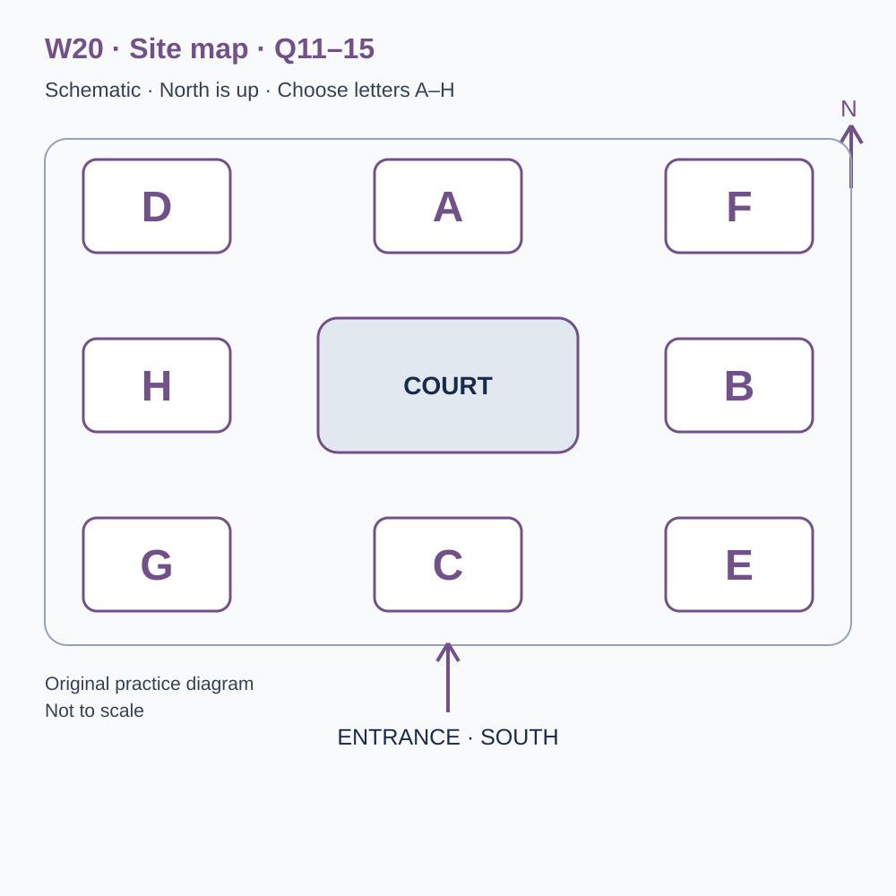
Q11. Check-in
Answer: ____
Q12. Independent practice room
Answer: ____
Q13. Evidence room
Answer: ____
Q14. Decision room
Answer: ____
Q15. Resource collection point
Answer: ____
Q16. How should missing formal-assessment evidence be recorded?
- A. As proof of readiness
- B. As proof that study must be extended
- C. As unknown, with appropriate evidence still to obtain
Answer: ____
Q17. Before starting, participants should identify
- A. required outputs and what the stated limit includes
- B. the maximum possible amount of extra material
- C. an easier alternative task to assume
Answer: ____
Q18. Why save first and revised responses separately?
- A. To make help irrelevant
- B. They provide different evidence about performance and learning
- C. To prove every revision was unaided
Answer: ____
Q19. What should support a judgement about a claim?
- A. Its evidence and relevant limitations
- B. Confidence without reasons
- C. A permanent label inferred from one mistake
Answer: ____
Q20. What should the closing plan do?
- A. Require every learner to extend study
- B. Announce readiness from any improved total
- C. Choose a manageable action justified by actual evidence
Answer: ____
Part 3 — Interpreting two practice attempts
Q21–26: Match each proposal to the students' final positions at the end of that exchange. The tutor is not included. Write A, B, C or D. Letters may be reused.
- A Lena only
- B Amir only
- C Both students
- D Neither student
Q27–28 and Q29–30: Choose TWO different letters, A–E, for each pair. Write one letter in each numbered slot; either order is accepted. Each distinct correct choice earns one point, maximum two. Repeating a letter cannot earn two points. Submit no more than two letters.
Q21. At the END of this exchange, who supports: Beginning the review with required-output coverage?
Answer: ____
Q22. At the END of this exchange, who supports: Adding an unfamiliar item as the very next action?
Answer: ____
Q23. At the END of this exchange, who supports: Converting the local total into an official band?
Answer: ____
Q24. At the END of this exchange, who supports: Interviewing the writer next about the omitted qualification?
Answer: ____
Q25. At the END of this exchange, who supports: Recording support alongside both attempts?
Answer: ____
Q26. At the END of this exchange, who supports: Setting the next review date before leaving today?
Answer: ____
Q27–28. Which TWO local indicators are agreed?
- A. Required-output coverage
- B. Handwriting rank
- C. Confidence alone
- D. Evidence traceability
- E. Official score forecast
Answers: Q27 ____ · Q28 ____
Q29–30. Which TWO limitations affected the completed comparison?
- A. The sessions were cancelled
- B. The second task was more familiar
- C. Response pages were missing
- D. No timing records existed
- E. Guidance differed between attempts
Answers: Q29 ____ · Q30 ____
Part 4 — Making a qualified learning decision
Q31–35: Complete the flow chart below. Q36–40: Complete the notes. Write NO MORE THAN TWO WORDS AND/OR A NUMBER for each answer, using words from the recording. Numeric notation may replace spoken numbers. Words or units already printed do not belong in the blank. The numbered text below repeats the SVG prompts for readability.
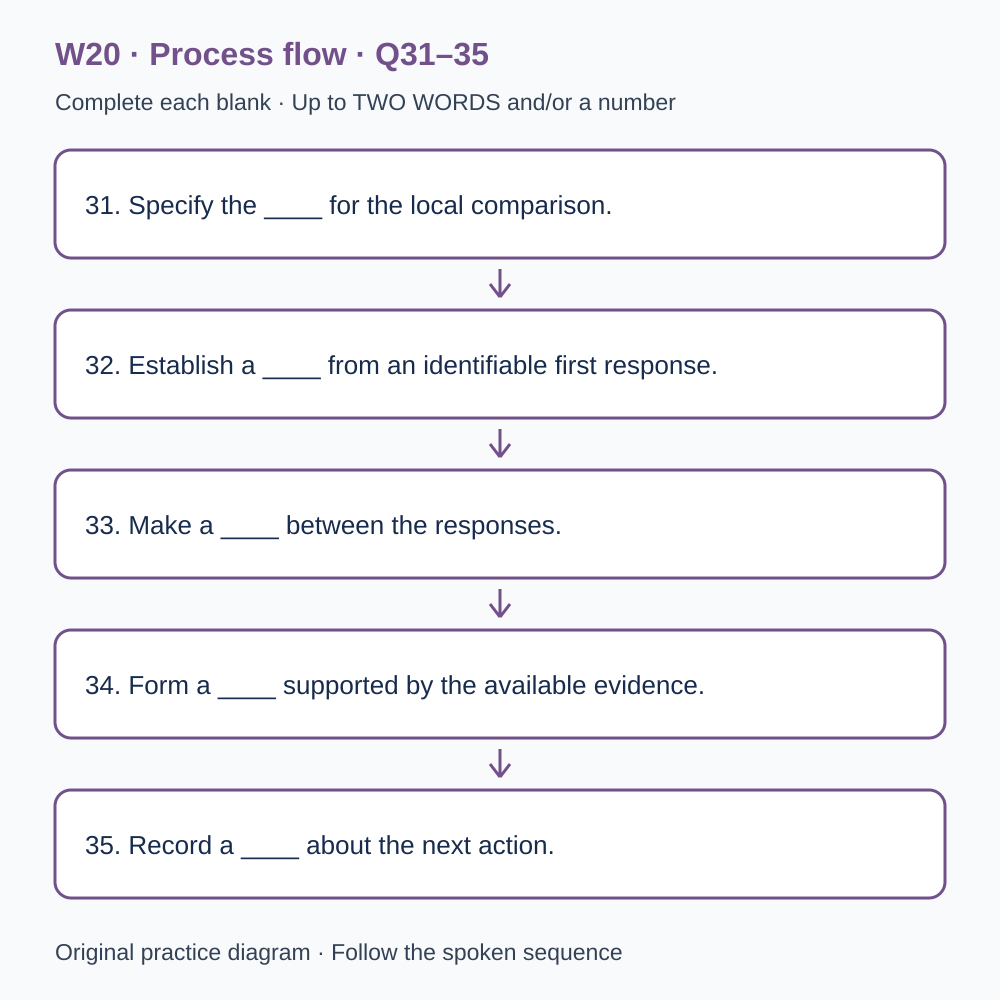
Q31. Specify the ____ for the local comparison.
Q32. Establish a ____ from an identifiable first response.
Q33. Make a ____ between the responses.
Q34. Form a ____ supported by the available evidence.
Q35. Record a ____ about the next action.
Q36. Work produced without the help being investigated concerns ____.
Q37. A relevant pattern across suitable observations concerns ____.
Q38. Identify the source of ____ in the conclusion.
Q39. ____ for formal assessment cannot be established by this local exercise alone.
Q40. Set a ____ for examining the next evidence.
本周训练安排（音频批准后执行）
- Preview questions without the script：8 分钟。
- Future continuous first listen, including planned part pauses：32 分钟。
- Submit first answers and confidence, without a second play：8 分钟。
- Check answers and classify errors：20 分钟。
- Four Q-located intensive segments, 15 minutes each：60 分钟。
- Diagram and opinion retelling：15 分钟。
- Next-day retry of missed items：15 分钟。
合计 158 分钟；最多另用 22 分钟缓冲，总计不超过 180 分钟。暂停、回放与查词均计入精听预算，不能另行无限追加。当前实际已完成听力分钟数为 0。精听区段和步骤见 intensive.md；答案和脚本另页。
参考答案与证据（完成首次听力后再展开）
L-W20 — Answers and evidence
> 独立答案页。先提交首次答案，再看本页。当前缺音频，文本验题不能充当实听验收。
每个单空 1 分；双选各 2 分、答案顺序不限、按不同正确选项计分。接受形式仅做大小写和空白规范化；不做模糊词形推断。
Q1 — evidence review
Accepted answers: evidence review
Use the final confirmed detail in this exchange; the printed unit or date context is already supplied.
Evidence locator: Q01 (script.md; timestamps unavailable).
> Adviser: Learning review centre, hello. Learner: My study partner and I want to review our recent practice before choosing the next stage. We aren't asking for a prediction of an official score. Adviser: Evidence review is the workshop to select. Learner: Please book evidence review. We have several responses, but the tasks and the help received weren't always the same. Adviser: That is exactly the kind of distinction the session examines. It uses an original local checkpoint, not a formal examination. The activity can help you organise a learning decision, but it doesn't replace a separately required formal assessment or establish a score conversion from classroom marks.
Q2 — 25
Accepted answers: 25 / 25th / twenty-fifth / the twenty-fifth / twenty fifth / the 25th
Use the final confirmed detail in this exchange; the printed unit or date context is already supplied.
Evidence locator: Q02 (script.md; timestamps unavailable).
> Learner: Is the workshop on the eighteenth of November? Adviser: That was the preliminary date. It is confirmed for the twenty-fifth of November. Learner: The twenty-fifth works for us. I'll replace the earlier date in our calendar. Adviser: The confirmation will identify the workshop and final date together. Learner: I'll forward the complete message to my partner, because we have another appointment at the centre that month. Adviser: Good. Keeping the subject with the practical details reduces the chance of borrowing a time or room from another event. A familiar date in an old message is not evidence that the current booking still follows that arrangement.
Q3 — 1.55
Accepted answers: 1.55 / 1:55 / 01.55 / 01:55 / 13.55 / 13:55 / one fifty-five
Use the final confirmed detail in this exchange; the printed unit or date context is already supplied.
Evidence locator: Q03 (script.md; timestamps unavailable).
> Learner: What time does it begin? Adviser: One fifty-five in the afternoon. The centre opens at one thirty, but the workshop starts at one fifty-five. Learner: I'll record one fifty-five as the teaching time and arrive shortly beforehand. Adviser: Thank you. The introduction explains what the original checkpoint is intended to show and which conclusions it cannot support. Learner: We shouldn't miss that and then treat the total as an official result. Adviser: Exactly. A local activity can have clear instructions and consistent scoring without being a standardised test. The meaning of its result depends on the task and conditions, not simply on the presence of a timer or an answer key.
Q4 — 2
Accepted answers: 2 / two
Use the final confirmed detail in this exchange; the printed unit or date context is already supplied.
Evidence locator: Q04 (script.md; timestamps unavailable).
> Adviser: How many places should I reserve? Learner: Two. Three of us discussed attending, but the third person has another commitment. Adviser: Two places are available. Learner: We'll collect that person's questions, but we won't book an unused place. Adviser: If attendance changes, contact us before transferring a place to someone else. The group activity depends on knowing who is coming and which records participants will bring. Learner: I'll keep the booking with the two confirmed names. Adviser: That helps us prepare a coherent review rather than reconstructing several informal changes after the session has begun and the participants are already comparing different sets of material.
Q5 — 34
Accepted answers: 34 / 34.00 / thirty-four / thirty four
Use the final confirmed detail in this exchange; the printed unit or date context is already supplied.
Evidence locator: Q05 (script.md; timestamps unavailable).
> Learner: What is the total cost? Adviser: Thirty-four pounds for the two places altogether. Learner: Thirty-four for the whole booking, not for each person? Adviser: Correct. The workshop materials are included. A separate individual consultation would have its own arrangements, but that isn't part of this booking. Learner: I'll share the total and scope with my partner. Adviser: Please check the confirmation before paying. If its number of places or amount differs from this conversation, ask for a correction. Learner: We will. It's better to clarify the record than assume an unexplained charge covers a service that neither of us knowingly requested.
Q6 — portfolio
Accepted answers: portfolio / a portfolio / the portfolio
Use the final confirmed detail in this exchange; the printed unit or date context is already supplied.
Evidence locator: Q06 (script.md; timestamps unavailable).
> Learner: What should we bring? Adviser: Bring a portfolio containing the selected practice responses and their task references. Keep first attempts separate from revised versions, and identify any feedback or support. Learner: My portfolio is incomplete for one earlier task. Adviser: Leave that gap visible. Don't reconstruct an original answer from the corrected copy just to make the portfolio look complete. Learner: Should we bring every page we've ever used? Adviser: No, select the material relevant to the review question and retain a clear link to its source. A smaller, identifiable set is more useful than a large folder whose versions and conditions cannot be distinguished.
Q7 — B
Accepted answers: B
The original exercise is not calibrated to an official scale.
Evidence locator: Q07 (script.md; timestamps unavailable).
> Learner: Could the workshop result replace our formal checkpoint? Adviser: No. This is an original learning review, and any separately required formal assessment remains separate. Learner: So even a full mark here would not establish an official band or fulfil that requirement. Adviser: Correct. The local result may identify a task feature worth discussing, but it has not been calibrated to an official scale. Learner: We'll keep those records distinct. Adviser: That's important because a structured exercise can look authoritative without supporting every interpretation people attach to it. The session should make your next learning question clearer, not create a formal claim from evidence designed for a different purpose.
Q8 — A
Accepted answers: A
A difference is observable; its cause requires examining conditions.
Evidence locator: Q08 (script.md; timestamps unavailable).
> Learner: Our second practice total was higher. Should we record that as confirmed progress? Adviser: First compare the tasks, timing and help received. A familiar task or additional feedback can affect the result. Learner: We can report the difference without deciding its cause immediately. Adviser: Exactly. You may have learned something, but the total alone doesn't show how much of the change reflects learning rather than changed conditions. Learner: We should preserve examples from both responses. Adviser: Yes. Those examples can reveal what changed in the work, while a note about the conditions keeps the interpretation from becoming broader than the comparison can justify.
Q9 — C
Accepted answers: C
The centre checks available files; relevant arrangements stay visible.
Evidence locator: Q09 (script.md; timestamps unavailable).
> Learner: One person needs the task instructions in an accessible digital format. Should we request that before the workshop? Adviser: Please describe the practical requirement now so we can check the files and confirm what is available. Learner: I'll ask for the details rather than assume the usual printed sheet will work. Adviser: Thank you. The review should record the arrangement actually used if it affects a relevant comparison. Learner: That doesn't mean treating support as something to conceal. Adviser: Quite the opposite. A clear record allows the work to be interpreted fairly, without pretending that every participant encountered identical conditions or that an agreed access arrangement invalidates all useful evidence.
Q10 — B
Accepted answers: B
The confirmation provides the designated change route.
Evidence locator: Q10 (script.md; timestamps unavailable).
> Learner: If we need to change the booking, should we comment on the public announcement? Adviser: Reply to the confirmation with its reference instead. Public comments don't update the attendance record. The same message gives a contact number for an urgent issue. Learner: I'll keep the latest full confirmation until the workshop is over. Adviser: Good. It also explains the entrance and what to bring. Learner: I'll remind my partner that missing evidence should stay marked as missing. Adviser: That's a helpful preparation. The review can support a cautious next step without supplying a diagnosis, an official score or a decision that the available records do not warrant.
Q11 — C
Accepted answers: C
Use the explicitly stated position relative to the court, not an earlier layout or adjacent area.
Evidence locator: Q11 (script.md; timestamps unavailable).
> Welcome to the checkpoint centre. North is at the top of the diagram, the entrance is on the southern edge and the court is the central reference point. Check-in is directly south of the court, on the entrance axis. It is not in either southern corner. Report there before joining the activity so staff can confirm the group and any practical update. The lettered spaces surround the court, and their letters are position labels rather than room initials. Keep the current plan available even if you have visited before, since a room used for a previous workshop may serve a different purpose in today's arrangement.
Q12 — D
Accepted answers: D
Use the explicitly stated position relative to the court, not an earlier layout or adjacent area.
Evidence locator: Q12 (script.md; timestamps unavailable).
> The independent practice room is in the north-west corner. It is west of the northern central room and diagonally north-west of the court. An earlier programme placed practice directly north, but that space now has another function. Wait for the leader's instructions before beginning. The first response should be preserved under the agreed conditions, including any stated access arrangement. Don't look at a neighbour's answer and then describe the result as an independent attempt. The purpose of the room is to produce an identifiable piece of evidence for a local review, not to make a claim about formal testing merely because the work is completed separately.
Q13 — B
Accepted answers: B
Use the explicitly stated position relative to the court, not an earlier layout or adjacent area.
Evidence locator: Q13 (script.md; timestamps unavailable).
> The evidence room is directly east of the court, level with its centre. It is not the south-east room. Groups use that space to connect comments with features of the actual response. A statement such as unclear needs a passage and an explanation of what the reader cannot follow. The group should distinguish the observation from a possible cause. A missing section might reflect an overlooked instruction, uncertainty about content or an allocation problem, and the response alone may not settle the choice. Keeping the discussion tied to evidence helps prevent a confident label from replacing the explanation needed for a useful next action.
Q14 — F
Accepted answers: F
Use the explicitly stated position relative to the court, not an earlier layout or adjacent area.
Evidence locator: Q14 (script.md; timestamps unavailable).
> The decision room is in the north-east corner. It is directly north of the evidence room and directly east of the northern central room. Those northern positions share a row, so the decision room is east of its neighbour rather than north-east of that neighbour. In this room, participants turn the review into a limited next step. A plan should identify the question it addresses and what evidence would lead to reconsideration. It needn't promise a score or describe every possible weakness. Staff may ask why one action is a better next test than another, so keep the relevant response and conditions available during the discussion.
Q15 — G
Accepted answers: G
Use the explicitly stated position relative to the court, not an earlier layout or adjacent area.
Evidence locator: Q15 (script.md; timestamps unavailable).
> The resource collection point is in the south-west corner, west of check-in and below the space directly west of the court. Collect the worksheet version named by the leader. Several tasks use a similar table but ask for different kinds of evidence, so a familiar layout isn't enough to identify the right page. If something is missing, ask the helper rather than borrowing a completed answer from another group. The collection point supplies material; it doesn't decide whether the learner has reached a formal target. That judgement would require appropriate evidence and criteria beyond the original exercise being carried out in the centre today.
Q16 — C
Accepted answers: C
The local checkpoint cannot replace the separate formal process.
Evidence locator: Q16 (script.md; timestamps unavailable).
> This original checkpoint supports specific learning decisions. It does not replace a formal test, provide an official band conversion or establish that a learner should book an examination. Keep the local score attached to the task that produced it. If a wider decision requires an unfamiliar full assessment and independent human feedback, those records must be obtained separately. Missing evidence should be marked as unknown rather than treated as either success or failure. The activity can still be useful: it can show whether a required output is present or whether a claim has support. Its practical value does not depend on pretending that it answers every question about readiness.
Q17 — A
Accepted answers: A
The response is judged against the supplied instruction and recorded arrangements.
Evidence locator: Q17 (script.md; timestamps unavailable).
> Before beginning, identify what the task actually requires and what the stated limit includes. A response can be detailed while omitting a requested comparison or qualification. Extra material may consume time needed for an essential output. The first reading of the instructions should therefore establish the required work, not merely estimate how much can be written. If a requirement is genuinely unclear, use the stated clarification process. Don't silently invent a different task and later judge the response against that version. The local review will examine the work in relation to the supplied instruction, with any agreed change or support kept visible in the record.
Q18 — B
Accepted answers: B
Task versions, timing and support make each response interpretable.
Evidence locator: Q18 (script.md; timestamps unavailable).
> Preserve the first response before feedback. A revised answer may demonstrate learning, but it is a different object from the response produced without that feedback. Save the task reference, the time used and the help received alongside each version. If the first response was interrupted, note the interruption rather than reconstructing an ideal attempt that never happened. A clear record makes it possible to ask what changed and under which conditions. It also prevents the review from crediting a procedure for an improvement that came from a supplied answer. The point is not to devalue revision, but to give both initial and revised work an interpretable place in the learning record.
Q19 — A
Accepted answers: A
The review connects the response to evidence before selecting an explanation.
Evidence locator: Q19 (script.md; timestamps unavailable).
> When judging a claim, identify its evidence and any limitation affecting the interpretation. A correct-looking statement can rest on a weak reason, while an incomplete response may reveal a specific misunderstanding that can be addressed. Confidence ratings can contribute if their basis is recorded, but confidence should not substitute for the supporting passage. Ask what the response shows before deciding why it occurred. Where several explanations remain possible, preserve that uncertainty. A useful discussion can select a next check without forcing every observation into a single cause or turning one local mistake into a permanent description of the person's ability.
Q20 — C
Accepted answers: C
Evidence collection may be the next step when personal records or targets are missing.
Evidence locator: Q20 (script.md; timestamps unavailable).
> The closing plan should name a manageable priority and a later way to examine it. If the necessary evidence is absent, the priority may be to collect a valid first response rather than prescribe a remedial routine. If a repeated difficulty is supported by genuine records, the next activity can target it and preserve a comparison. Do not decide that every learner must extend study or that every improved total demonstrates readiness. Those decisions require a stated target and appropriate evidence. The original checkpoint ends with a justified next step, not an automatic verdict that is identical for everyone regardless of the work brought to the review.
Q21 — C
Accepted answers: C
Final stance: Both students. Ignore an initial proposal if later withdrawn; the tutor is not an answer option.
Evidence locator: Q21 (script.md; timestamps unavailable).
> Tutor: You completed two practice attempts last week. What should today's review examine first? Lena: Whether every required output is present. One response looked polished but omitted the requested qualification. Amir: I agree. I initially wanted to start with minor wording, but the omitted output changes how fully the task was answered. Tutor: Would that mean ignoring wording altogether? Amir: No, only setting the first priority. Lena: We can mark the instruction beside the part of the response meant to address it. Tutor: Then both of you support beginning with output coverage, while keeping other observations for later rather than allowing them to displace the main requirement.
Q22 — A
Accepted answers: A
Final stance: Lena only. Ignore an initial proposal if later withdrawn; the tutor is not an answer option.
Evidence locator: Q22 (script.md; timestamps unavailable).
> Tutor: Lena proposes one extra unfamiliar item before drawing a conclusion about the new procedure. Lena: Yes. The second practice task was similar enough to the first that remembered feedback may explain part of the improvement. Amir: I would first discuss the existing responses in more detail. Another task could add work without resolving the uncertainty about why the first answers differed. Tutor: Could the new item preserve the relevant demand? Lena: That's my intention, and I still support it. Amir: I understand, but I prefer the discussion as the next action. Tutor: Then Lena supports the additional item and Amir retains a different priority for the next stage.
Q23 — D
Accepted answers: D
Final stance: Neither student. Ignore an initial proposal if later withdrawn; the tutor is not an answer option.
Evidence locator: Q23 (script.md; timestamps unavailable).
> Tutor: Your first summary converts the local total into an official band. Amir: I added that because people recognise the scale. I now see that the task doesn't support the conversion. Lena: I don't support retaining it. A familiar number would imply an interpretation that hasn't been established. Amir: I'll remove it and state the score only on this exercise's local scale. Tutor: Does either of you still want the official estimate included with a warning? Lena: No. A warning would not create evidence for the conversion. Amir: Agreed. Tutor: Then neither supports the original proposal. You can describe specific strengths without inventing a formal meaning for the total.
Q24 — B
Accepted answers: B
Final stance: Amir only. Ignore an initial proposal if later withdrawn; the tutor is not an answer option.
Evidence locator: Q24 (script.md; timestamps unavailable).
> Tutor: Should the next review include a short interview about the omitted qualification? Amir: I support that. We need to know whether the writer missed the instruction or understood it but ran out of time. Lena: I'd first inspect the planning notes and timing record. Another explanation after feedback might reflect what the person has since learned. Tutor: That is a limitation to record, but do you support the interview now? Lena: Not as the next step. I prefer the existing records first. Amir: I still think a focused interview would help, with its timing made clear. Tutor: Then Amir supports the proposal and Lena retains a different sequence of enquiry.
Q25 — C
Accepted answers: C
Final stance: Both students. Ignore an initial proposal if later withdrawn; the tutor is not an answer option.
Evidence locator: Q25 (script.md; timestamps unavailable).
> Tutor: Do both attempts need a note about support received? Lena: Yes. We can't compare an unaided answer with one produced after hints as though only the learner changed. Amir: I agree. My earlier table listed the time limits but left out the feedback arrangement. Tutor: How will you correct it? Amir: Add the relevant support beside each attempt and keep the first and revised versions separate. Lena: That will make the limits of the comparison visible before we interpret the totals. Tutor: Good. This is a shared decision. Recording conditions doesn't prevent a useful comparison; it determines which conclusions the comparison can support and which still need another source of evidence.
Q26 — A
Accepted answers: A
Final stance: Lena only. Ignore an initial proposal if later withdrawn; the tutor is not an answer option.
Evidence locator: Q26 (script.md; timestamps unavailable).
> Tutor: Lena suggests setting a date for the next review before leaving today. Lena: I support that. Otherwise the plan may remain a general intention without a point at which we examine what happened. Amir: I would agree the evidence to collect first and set the date once we know when suitable material will be available. Tutor: Could you choose a provisional date? Amir: Perhaps, but for this stage I still prefer to wait. Lena: I continue to favour a date now, clearly marked if provisional. Tutor: Then Lena supports this timing proposal and Amir doesn't. Your shared intention to review later isn't the same as agreement to fix the date today.
Q27–28 — A, D
Accept unordered set: A, D. One point per distinct correct choice, maximum 2.
The selected indicators concern task fulfilment and support for claims.
Evidence locator: Q27, Q28 (script.md; timestamps unavailable).
> Tutor: Which two indicators are agreed for the local review? Amir: Required-output coverage is one. We should be able to connect each part of the instruction with something in the response. Lena: Agreed. A long answer can still miss a required limitation or comparison. Tutor: Are you selecting total word count as the main measure? Lena: No. Length may be a condition of a task, but it doesn't show that the required reasoning is present. Amir: Nor do we need a ranking of handwriting. Tutor: Then output coverage is one chosen indicator, with the actual response available to show what was included and what remains absent.
> Tutor: What is the second indicator? Lena: Whether important claims can be traced to relevant evidence. Amir: I agree. The review should identify the source detail supporting a conclusion, not just judge whether it sounds plausible. Tutor: Does that include predicting an official score? Amir: No, that's outside this exercise. Lena: We also aren't choosing confidence alone as evidence of correctness. Tutor: So the selected pair is required-output coverage and evidence traceability. Those indicators address the work the task asked for without pretending that this original checkpoint supplies a complete formal assessment. Keep their definitions with the record so that a later reviewer applies the same local criteria.
Q29–30 — B, E
Accept unordered set: B, E. One point per distinct correct choice, maximum 2.
Familiarity and unequal guidance limit attribution; the records themselves were available.
Evidence locator: Q29, Q30 (script.md; timestamps unavailable).
> Tutor: What limits the comparison from last week? Lena: The second task was more familiar. Several ideas and the layout resembled material we had already discussed. Amir: So the higher total may partly reflect that familiarity rather than the planning procedure alone. Tutor: Were any response pages missing? Lena: No. Both attempts were saved. The limitation is the difference in prior exposure, not a gap in the documents. Amir: We should describe what was familiar instead of using a broad statement that the tasks were identical. Tutor: That will make the comparison more informative and prevent a neat pair of totals from hiding an important difference in what each attempt demanded.
> Tutor: Was the feedback arrangement the same? Amir: No. One attempt followed additional guidance, while the other was completed without that help. Lena: The record identifies the guidance, so we can keep it visible in the interpretation. Tutor: Does that mean no learning occurred? Lena: We can't conclude that either. It means the comparison doesn't isolate the effect of the plan. Amir: Neither session was cancelled, and the time records are available. Tutor: Then familiarity and unequal guidance are the two limitations. State them alongside the result, and identify what another attempt would need to clarify rather than turn uncertainty into either a guaranteed success or a declaration that the practice was worthless.
Q31 — criterion
Accepted answers: criterion / review criterion / explicit criterion / local criterion
Complete the named stage in the stated process order; retain any word already printed around the blank.
Evidence locator: Q31 (script.md; timestamps unavailable).
> This lecture describes a fictional learning review using an original checkpoint. The first stage specifies the review criterion. A criterion states the feature the local comparison will examine, such as whether a claim is supported by relevant evidence. It should be clear before the responses are judged, rather than adjusted afterwards to favour an attractive example. An explicit criterion helps reviewers discuss differences in the work without pretending that the local scale has an official interpretation. If the wider target is unknown, the team records that gap. Defining a local criterion is useful, but it cannot by itself establish the requirements of a separate formal assessment.
Q32 — baseline
Accepted answers: baseline / starting record / reference record / record / defined object
Complete the named stage in the stated process order; retain any word already printed around the blank.
Evidence locator: Q32 (script.md; timestamps unavailable).
> The second stage establishes a baseline from an identifiable first response. The baseline is a starting record, with the task version, relevant timing and support preserved. It should not be reconstructed from a corrected answer or from a total remembered after several attempts. The team needs a reference record whose meaning can be examined later. If that record is missing, the appropriate action is to plan collection under suitable conditions, not create an imaginary starting point. A baseline need not represent every aspect of a learner's ability. It provides a defined object for a particular comparison, with its scope and limitations visible from the beginning.
Q33 — comparison
Accepted answers: comparison / structured comparison
Complete the named stage in the stated process order; retain any word already printed around the blank.
Evidence locator: Q33 (script.md; timestamps unavailable).
> The third stage makes a structured comparison between the responses. The comparison considers the criterion, the actual features of the work and the conditions under which each attempt occurred. A higher total is an observation, but its interpretation depends on whether the task was equally familiar and what help was supplied. The team should identify both improvements and unchanged difficulties rather than select only examples that support a preferred story. A structured comparison can reveal where another source of information is needed. Its value is the connection between the evidence and the question, not the apparent simplicity of a single number presented without the circumstances that produced it.
Q34 — judgement
Accepted answers: judgement / judgment / qualified judgement / qualified judgment / local judgement / local judgment / conclusion
Complete the named stage in the stated process order; retain any word already printed around the blank.
Evidence locator: Q34 (script.md; timestamps unavailable).
> The fourth stage forms a qualified judgement. The judgement states what the evidence supports while retaining any limitation that changes its meaning. For example, a response may show better output coverage after a checklist was supplied, without proving that the same coverage would appear independently on an unfamiliar task. This local judgement should distinguish that observation from a wider claim about readiness. Reviewers may disagree about the weight of a piece of evidence, and the disagreement should refer to the criterion and the work. A qualified judgement is not an absence of a conclusion. It is a conclusion whose scope remains connected to the information actually available.
Q35 — decision
Accepted answers: decision / recorded decision / plan
Complete the named stage in the stated process order; retain any word already printed around the blank.
Evidence locator: Q35 (script.md; timestamps unavailable).
> The fifth stage records a decision about the next action. The decision should follow from the comparison and the uncertainty that remains. The team might retain a useful procedure, revise the proposed explanation or collect another first response before choosing a practice focus. A recorded decision includes the reason and the evidence needed to reconsider it. This prevents the plan from becoming a permanent rule simply because it was once written down. Reaching the decision stage does not require announcing that the learner has passed or failed a formal target. It requires choosing a defensible next step within the limited purpose of the original checkpoint.
Q36 — independence
Accepted answers: independence
The corresponding evidence block supplies this distinction or qualification; the question retains the surrounding grammar.
Evidence locator: Q36 (script.md; timestamps unavailable).
> Independence concerns what the learner produced without the particular help under investigation. The review needs a clear account of the instructions, resources and feedback available during an attempt. An answer completed after a hint may still show useful learning, but it should not be described as independent evidence of the same process. The team should avoid treating all support as identical or assuming that an access arrangement settles the meaning of every comparison. The relevant question is which condition affects the claim being made. Preserving that distinction allows supported practice and unaided performance to contribute different kinds of evidence without confusing one with the other.
Q37 — consistency
Accepted answers: consistency
The corresponding evidence block supplies this distinction or qualification; the question retains the surrounding grammar.
Evidence locator: Q37 (script.md; timestamps unavailable).
> Consistency concerns whether a relevant pattern appears across more than one suitable observation. One strong response can be encouraging without establishing that the procedure will be used reliably whenever the task changes. The team should examine which demands recur and whether the same criterion was applied. Repeated success on a memorised item answers a narrower question than success on fresh material. Equally, a single difficult unfamiliar item should not erase all evidence from earlier work. A careful review describes the pattern and its conditions, then identifies what further comparison would make the conclusion more secure rather than converting a variable record into a permanent label about the learner.
Q38 — uncertainty
Accepted answers: uncertainty / remaining uncertainty / that uncertainty / the uncertainty
The corresponding evidence block supplies this distinction or qualification; the question retains the surrounding grammar.
Evidence locator: Q38 (script.md; timestamps unavailable).
> Uncertainty remains when the evidence supports more than one interpretation or does not cover the intended decision. The review should identify the source of that uncertainty, such as task familiarity, missing conditions or a small number of relevant opportunities. Simply saying more work is needed does not explain what information would help. Remaining uncertainty can guide the next action if it is stated precisely. The team may collect another response, inspect an existing record or seek an appropriate independent review. None of those actions should be reported as already completed merely because it appears in the plan. A future source of evidence is still future evidence.
Q39 — readiness
Accepted answers: readiness
The corresponding evidence block supplies this distinction or qualification; the question retains the surrounding grammar.
Evidence locator: Q39 (script.md; timestamps unavailable).
> Readiness for a formal assessment requires evidence appropriate to that decision. A local original exercise cannot establish it merely because the task has forty scoring opportunities or a demanding time limit. The learner needs a stated target and suitable assessment evidence, including any required unfamiliar full task and independent human feedback. If those elements are missing, readiness remains unknown; the absence is neither proof of success nor proof that study must be extended. The stage review can organise what still needs to be obtained. It should not substitute an unsupported verdict for the formal process or use a familiar practice total to claim that a separate requirement has been fulfilled.
Q40 — review date
Accepted answers: review date / date
The corresponding evidence block supplies this distinction or qualification; the question retains the surrounding grammar.
Evidence locator: Q40 (script.md; timestamps unavailable).
> Finally, the team sets a review date for examining the next evidence. The date should relate to the activity being planned and the time needed to collect an interpretable response. If suitable material is not yet available, the record can state that condition rather than pretend the activity has happened. A review date creates an occasion to reconsider the decision, not a promise that the learner will reach a particular score by then. The next discussion may retain the plan, change it or identify another uncertainty. What matters is that the decision and its basis remain traceable, while formal assessment requirements stay separate from the original checkpoint used to support local learning.
完整脚本（提前阅读会失去陌生题首答机会）
L-W20 — An original checkpoint and a decision supported by evidence: transcript
> 原创虚构练习，非真题；音频缺失。仅供完成首次作答后的核对或文字审阅。Q 标记与角色名不属于朗读正文。
Part 1 — Booking a checkpoint review
Q1 evidence block
Adviser: Learning review centre, hello.
Learner: My study partner and I want to review our recent practice before choosing the next stage. We aren't asking for a prediction of an official score.
Adviser: Evidence review is the workshop to select.
Learner: Please book evidence review. We have several responses, but the tasks and the help received weren't always the same.
Adviser: That is exactly the kind of distinction the session examines. It uses an original local checkpoint, not a formal examination. The activity can help you organise a learning decision, but it doesn't replace a separately required formal assessment or establish a score conversion from classroom marks.
Q2 evidence block
Learner: Is the workshop on the eighteenth of November?
Adviser: That was the preliminary date. It is confirmed for the twenty-fifth of November.
Learner: The twenty-fifth works for us. I'll replace the earlier date in our calendar.
Adviser: The confirmation will identify the workshop and final date together.
Learner: I'll forward the complete message to my partner, because we have another appointment at the centre that month.
Adviser: Good. Keeping the subject with the practical details reduces the chance of borrowing a time or room from another event. A familiar date in an old message is not evidence that the current booking still follows that arrangement.
Q3 evidence block
Learner: What time does it begin?
Adviser: One fifty-five in the afternoon. The centre opens at one thirty, but the workshop starts at one fifty-five.
Learner: I'll record one fifty-five as the teaching time and arrive shortly beforehand.
Adviser: Thank you. The introduction explains what the original checkpoint is intended to show and which conclusions it cannot support.
Learner: We shouldn't miss that and then treat the total as an official result.
Adviser: Exactly. A local activity can have clear instructions and consistent scoring without being a standardised test. The meaning of its result depends on the task and conditions, not simply on the presence of a timer or an answer key.
Q4 evidence block
Adviser: How many places should I reserve?
Learner: Two. Three of us discussed attending, but the third person has another commitment.
Adviser: Two places are available.
Learner: We'll collect that person's questions, but we won't book an unused place.
Adviser: If attendance changes, contact us before transferring a place to someone else. The group activity depends on knowing who is coming and which records participants will bring.
Learner: I'll keep the booking with the two confirmed names.
Adviser: That helps us prepare a coherent review rather than reconstructing several informal changes after the session has begun and the participants are already comparing different sets of material.
Q5 evidence block
Learner: What is the total cost?
Adviser: Thirty-four pounds for the two places altogether.
Learner: Thirty-four for the whole booking, not for each person?
Adviser: Correct. The workshop materials are included. A separate individual consultation would have its own arrangements, but that isn't part of this booking.
Learner: I'll share the total and scope with my partner.
Adviser: Please check the confirmation before paying. If its number of places or amount differs from this conversation, ask for a correction.
Learner: We will. It's better to clarify the record than assume an unexplained charge covers a service that neither of us knowingly requested.
Q6 evidence block
Learner: What should we bring?
Adviser: Bring a portfolio containing the selected practice responses and their task references. Keep first attempts separate from revised versions, and identify any feedback or support.
Learner: My portfolio is incomplete for one earlier task.
Adviser: Leave that gap visible. Don't reconstruct an original answer from the corrected copy just to make the portfolio look complete.
Learner: Should we bring every page we've ever used?
Adviser: No, select the material relevant to the review question and retain a clear link to its source. A smaller, identifiable set is more useful than a large folder whose versions and conditions cannot be distinguished.
Q7 evidence block
Learner: Could the workshop result replace our formal checkpoint?
Adviser: No. This is an original learning review, and any separately required formal assessment remains separate.
Learner: So even a full mark here would not establish an official band or fulfil that requirement.
Adviser: Correct. The local result may identify a task feature worth discussing, but it has not been calibrated to an official scale.
Learner: We'll keep those records distinct.
Adviser: That's important because a structured exercise can look authoritative without supporting every interpretation people attach to it. The session should make your next learning question clearer, not create a formal claim from evidence designed for a different purpose.
Q8 evidence block
Learner: Our second practice total was higher. Should we record that as confirmed progress?
Adviser: First compare the tasks, timing and help received. A familiar task or additional feedback can affect the result.
Learner: We can report the difference without deciding its cause immediately.
Adviser: Exactly. You may have learned something, but the total alone doesn't show how much of the change reflects learning rather than changed conditions.
Learner: We should preserve examples from both responses.
Adviser: Yes. Those examples can reveal what changed in the work, while a note about the conditions keeps the interpretation from becoming broader than the comparison can justify.
Q9 evidence block
Learner: One person needs the task instructions in an accessible digital format. Should we request that before the workshop?
Adviser: Please describe the practical requirement now so we can check the files and confirm what is available.
Learner: I'll ask for the details rather than assume the usual printed sheet will work.
Adviser: Thank you. The review should record the arrangement actually used if it affects a relevant comparison.
Learner: That doesn't mean treating support as something to conceal.
Adviser: Quite the opposite. A clear record allows the work to be interpreted fairly, without pretending that every participant encountered identical conditions or that an agreed access arrangement invalidates all useful evidence.
Q10 evidence block
Learner: If we need to change the booking, should we comment on the public announcement?
Adviser: Reply to the confirmation with its reference instead. Public comments don't update the attendance record. The same message gives a contact number for an urgent issue.
Learner: I'll keep the latest full confirmation until the workshop is over.
Adviser: Good. It also explains the entrance and what to bring.
Learner: I'll remind my partner that missing evidence should stay marked as missing.
Adviser: That's a helpful preparation. The review can support a cautious next step without supplying a diagnosis, an official score or a decision that the available records do not warrant.
Part 2 — Using the checkpoint facilities
Q11 evidence block
Centre host: Welcome to the checkpoint centre. North is at the top of the diagram, the entrance is on the southern edge and the court is the central reference point. Check-in is directly south of the court, on the entrance axis. It is not in either southern corner. Report there before joining the activity so staff can confirm the group and any practical update. The lettered spaces surround the court, and their letters are position labels rather than room initials. Keep the current plan available even if you have visited before, since a room used for a previous workshop may serve a different purpose in today's arrangement.
Q12 evidence block
Centre host: The independent practice room is in the north-west corner. It is west of the northern central room and diagonally north-west of the court. An earlier programme placed practice directly north, but that space now has another function. Wait for the leader's instructions before beginning. The first response should be preserved under the agreed conditions, including any stated access arrangement. Don't look at a neighbour's answer and then describe the result as an independent attempt. The purpose of the room is to produce an identifiable piece of evidence for a local review, not to make a claim about formal testing merely because the work is completed separately.
Q13 evidence block
Centre host: The evidence room is directly east of the court, level with its centre. It is not the south-east room. Groups use that space to connect comments with features of the actual response. A statement such as unclear needs a passage and an explanation of what the reader cannot follow. The group should distinguish the observation from a possible cause. A missing section might reflect an overlooked instruction, uncertainty about content or an allocation problem, and the response alone may not settle the choice. Keeping the discussion tied to evidence helps prevent a confident label from replacing the explanation needed for a useful next action.
Q14 evidence block
Centre host: The decision room is in the north-east corner. It is directly north of the evidence room and directly east of the northern central room. Those northern positions share a row, so the decision room is east of its neighbour rather than north-east of that neighbour. In this room, participants turn the review into a limited next step. A plan should identify the question it addresses and what evidence would lead to reconsideration. It needn't promise a score or describe every possible weakness. Staff may ask why one action is a better next test than another, so keep the relevant response and conditions available during the discussion.
Q15 evidence block
Centre host: The resource collection point is in the south-west corner, west of check-in and below the space directly west of the court. Collect the worksheet version named by the leader. Several tasks use a similar table but ask for different kinds of evidence, so a familiar layout isn't enough to identify the right page. If something is missing, ask the helper rather than borrowing a completed answer from another group. The collection point supplies material; it doesn't decide whether the learner has reached a formal target. That judgement would require appropriate evidence and criteria beyond the original exercise being carried out in the centre today.
Q16 evidence block
Centre host: This original checkpoint supports specific learning decisions. It does not replace a formal test, provide an official band conversion or establish that a learner should book an examination. Keep the local score attached to the task that produced it. If a wider decision requires an unfamiliar full assessment and independent human feedback, those records must be obtained separately. Missing evidence should be marked as unknown rather than treated as either success or failure. The activity can still be useful: it can show whether a required output is present or whether a claim has support. Its practical value does not depend on pretending that it answers every question about readiness.
Q17 evidence block
Centre host: Before beginning, identify what the task actually requires and what the stated limit includes. A response can be detailed while omitting a requested comparison or qualification. Extra material may consume time needed for an essential output. The first reading of the instructions should therefore establish the required work, not merely estimate how much can be written. If a requirement is genuinely unclear, use the stated clarification process. Don't silently invent a different task and later judge the response against that version. The local review will examine the work in relation to the supplied instruction, with any agreed change or support kept visible in the record.
Q18 evidence block
Centre host: Preserve the first response before feedback. A revised answer may demonstrate learning, but it is a different object from the response produced without that feedback. Save the task reference, the time used and the help received alongside each version. If the first response was interrupted, note the interruption rather than reconstructing an ideal attempt that never happened. A clear record makes it possible to ask what changed and under which conditions. It also prevents the review from crediting a procedure for an improvement that came from a supplied answer. The point is not to devalue revision, but to give both initial and revised work an interpretable place in the learning record.
Q19 evidence block
Centre host: When judging a claim, identify its evidence and any limitation affecting the interpretation. A correct-looking statement can rest on a weak reason, while an incomplete response may reveal a specific misunderstanding that can be addressed. Confidence ratings can contribute if their basis is recorded, but confidence should not substitute for the supporting passage. Ask what the response shows before deciding why it occurred. Where several explanations remain possible, preserve that uncertainty. A useful discussion can select a next check without forcing every observation into a single cause or turning one local mistake into a permanent description of the person's ability.
Q20 evidence block
Centre host: The closing plan should name a manageable priority and a later way to examine it. If the necessary evidence is absent, the priority may be to collect a valid first response rather than prescribe a remedial routine. If a repeated difficulty is supported by genuine records, the next activity can target it and preserve a comparison. Do not decide that every learner must extend study or that every improved total demonstrates readiness. Those decisions require a stated target and appropriate evidence. The original checkpoint ends with a justified next step, not an automatic verdict that is identical for everyone regardless of the work brought to the review.
Part 3 — Interpreting two practice attempts
Q21 evidence block
Tutor: You completed two practice attempts last week. What should today's review examine first?
Lena: Whether every required output is present. One response looked polished but omitted the requested qualification.
Amir: I agree. I initially wanted to start with minor wording, but the omitted output changes how fully the task was answered.
Tutor: Would that mean ignoring wording altogether?
Amir: No, only setting the first priority.
Lena: We can mark the instruction beside the part of the response meant to address it.
Tutor: Then both of you support beginning with output coverage, while keeping other observations for later rather than allowing them to displace the main requirement.
Q22 evidence block
Tutor: Lena proposes one extra unfamiliar item before drawing a conclusion about the new procedure.
Lena: Yes. The second practice task was similar enough to the first that remembered feedback may explain part of the improvement.
Amir: I would first discuss the existing responses in more detail. Another task could add work without resolving the uncertainty about why the first answers differed.
Tutor: Could the new item preserve the relevant demand?
Lena: That's my intention, and I still support it.
Amir: I understand, but I prefer the discussion as the next action.
Tutor: Then Lena supports the additional item and Amir retains a different priority for the next stage.
Q23 evidence block
Tutor: Your first summary converts the local total into an official band.
Amir: I added that because people recognise the scale. I now see that the task doesn't support the conversion.
Lena: I don't support retaining it. A familiar number would imply an interpretation that hasn't been established.
Amir: I'll remove it and state the score only on this exercise's local scale.
Tutor: Does either of you still want the official estimate included with a warning?
Lena: No. A warning would not create evidence for the conversion.
Amir: Agreed.
Tutor: Then neither supports the original proposal. You can describe specific strengths without inventing a formal meaning for the total.
Q24 evidence block
Tutor: Should the next review include a short interview about the omitted qualification?
Amir: I support that. We need to know whether the writer missed the instruction or understood it but ran out of time.
Lena: I'd first inspect the planning notes and timing record. Another explanation after feedback might reflect what the person has since learned.
Tutor: That is a limitation to record, but do you support the interview now?
Lena: Not as the next step. I prefer the existing records first.
Amir: I still think a focused interview would help, with its timing made clear.
Tutor: Then Amir supports the proposal and Lena retains a different sequence of enquiry.
Q25 evidence block
Tutor: Do both attempts need a note about support received?
Lena: Yes. We can't compare an unaided answer with one produced after hints as though only the learner changed.
Amir: I agree. My earlier table listed the time limits but left out the feedback arrangement.
Tutor: How will you correct it?
Amir: Add the relevant support beside each attempt and keep the first and revised versions separate.
Lena: That will make the limits of the comparison visible before we interpret the totals.
Tutor: Good. This is a shared decision. Recording conditions doesn't prevent a useful comparison; it determines which conclusions the comparison can support and which still need another source of evidence.
Q26 evidence block
Tutor: Lena suggests setting a date for the next review before leaving today.
Lena: I support that. Otherwise the plan may remain a general intention without a point at which we examine what happened.
Amir: I would agree the evidence to collect first and set the date once we know when suitable material will be available.
Tutor: Could you choose a provisional date?
Amir: Perhaps, but for this stage I still prefer to wait.
Lena: I continue to favour a date now, clearly marked if provisional.
Tutor: Then Lena supports this timing proposal and Amir doesn't. Your shared intention to review later isn't the same as agreement to fix the date today.
Q27 evidence block
Tutor: Which two indicators are agreed for the local review?
Amir: Required-output coverage is one. We should be able to connect each part of the instruction with something in the response.
Lena: Agreed. A long answer can still miss a required limitation or comparison.
Tutor: Are you selecting total word count as the main measure?
Lena: No. Length may be a condition of a task, but it doesn't show that the required reasoning is present.
Amir: Nor do we need a ranking of handwriting.
Tutor: Then output coverage is one chosen indicator, with the actual response available to show what was included and what remains absent.
Q28 evidence block
Tutor: What is the second indicator?
Lena: Whether important claims can be traced to relevant evidence.
Amir: I agree. The review should identify the source detail supporting a conclusion, not just judge whether it sounds plausible.
Tutor: Does that include predicting an official score?
Amir: No, that's outside this exercise.
Lena: We also aren't choosing confidence alone as evidence of correctness.
Tutor: So the selected pair is required-output coverage and evidence traceability. Those indicators address the work the task asked for without pretending that this original checkpoint supplies a complete formal assessment. Keep their definitions with the record so that a later reviewer applies the same local criteria.
Q29 evidence block
Tutor: What limits the comparison from last week?
Lena: The second task was more familiar. Several ideas and the layout resembled material we had already discussed.
Amir: So the higher total may partly reflect that familiarity rather than the planning procedure alone.
Tutor: Were any response pages missing?
Lena: No. Both attempts were saved. The limitation is the difference in prior exposure, not a gap in the documents.
Amir: We should describe what was familiar instead of using a broad statement that the tasks were identical.
Tutor: That will make the comparison more informative and prevent a neat pair of totals from hiding an important difference in what each attempt demanded.
Q30 evidence block
Tutor: Was the feedback arrangement the same?
Amir: No. One attempt followed additional guidance, while the other was completed without that help.
Lena: The record identifies the guidance, so we can keep it visible in the interpretation.
Tutor: Does that mean no learning occurred?
Lena: We can't conclude that either. It means the comparison doesn't isolate the effect of the plan.
Amir: Neither session was cancelled, and the time records are available.
Tutor: Then familiarity and unequal guidance are the two limitations. State them alongside the result, and identify what another attempt would need to clarify rather than turn uncertainty into either a guaranteed success or a declaration that the practice was worthless.
Part 4 — Making a qualified learning decision
Q31 evidence block
Lecturer: This lecture describes a fictional learning review using an original checkpoint. The first stage specifies the review criterion. A criterion states the feature the local comparison will examine, such as whether a claim is supported by relevant evidence. It should be clear before the responses are judged, rather than adjusted afterwards to favour an attractive example. An explicit criterion helps reviewers discuss differences in the work without pretending that the local scale has an official interpretation. If the wider target is unknown, the team records that gap. Defining a local criterion is useful, but it cannot by itself establish the requirements of a separate formal assessment.
Q32 evidence block
Lecturer: The second stage establishes a baseline from an identifiable first response. The baseline is a starting record, with the task version, relevant timing and support preserved. It should not be reconstructed from a corrected answer or from a total remembered after several attempts. The team needs a reference record whose meaning can be examined later. If that record is missing, the appropriate action is to plan collection under suitable conditions, not create an imaginary starting point. A baseline need not represent every aspect of a learner's ability. It provides a defined object for a particular comparison, with its scope and limitations visible from the beginning.
Q33 evidence block
Lecturer: The third stage makes a structured comparison between the responses. The comparison considers the criterion, the actual features of the work and the conditions under which each attempt occurred. A higher total is an observation, but its interpretation depends on whether the task was equally familiar and what help was supplied. The team should identify both improvements and unchanged difficulties rather than select only examples that support a preferred story. A structured comparison can reveal where another source of information is needed. Its value is the connection between the evidence and the question, not the apparent simplicity of a single number presented without the circumstances that produced it.
Q34 evidence block
Lecturer: The fourth stage forms a qualified judgement. The judgement states what the evidence supports while retaining any limitation that changes its meaning. For example, a response may show better output coverage after a checklist was supplied, without proving that the same coverage would appear independently on an unfamiliar task. This local judgement should distinguish that observation from a wider claim about readiness. Reviewers may disagree about the weight of a piece of evidence, and the disagreement should refer to the criterion and the work. A qualified judgement is not an absence of a conclusion. It is a conclusion whose scope remains connected to the information actually available.
Q35 evidence block
Lecturer: The fifth stage records a decision about the next action. The decision should follow from the comparison and the uncertainty that remains. The team might retain a useful procedure, revise the proposed explanation or collect another first response before choosing a practice focus. A recorded decision includes the reason and the evidence needed to reconsider it. This prevents the plan from becoming a permanent rule simply because it was once written down. Reaching the decision stage does not require announcing that the learner has passed or failed a formal target. It requires choosing a defensible next step within the limited purpose of the original checkpoint.
Q36 evidence block
Lecturer: Independence concerns what the learner produced without the particular help under investigation. The review needs a clear account of the instructions, resources and feedback available during an attempt. An answer completed after a hint may still show useful learning, but it should not be described as independent evidence of the same process. The team should avoid treating all support as identical or assuming that an access arrangement settles the meaning of every comparison. The relevant question is which condition affects the claim being made. Preserving that distinction allows supported practice and unaided performance to contribute different kinds of evidence without confusing one with the other.
Q37 evidence block
Lecturer: Consistency concerns whether a relevant pattern appears across more than one suitable observation. One strong response can be encouraging without establishing that the procedure will be used reliably whenever the task changes. The team should examine which demands recur and whether the same criterion was applied. Repeated success on a memorised item answers a narrower question than success on fresh material. Equally, a single difficult unfamiliar item should not erase all evidence from earlier work. A careful review describes the pattern and its conditions, then identifies what further comparison would make the conclusion more secure rather than converting a variable record into a permanent label about the learner.
Q38 evidence block
Lecturer: Uncertainty remains when the evidence supports more than one interpretation or does not cover the intended decision. The review should identify the source of that uncertainty, such as task familiarity, missing conditions or a small number of relevant opportunities. Simply saying more work is needed does not explain what information would help. Remaining uncertainty can guide the next action if it is stated precisely. The team may collect another response, inspect an existing record or seek an appropriate independent review. None of those actions should be reported as already completed merely because it appears in the plan. A future source of evidence is still future evidence.
Q39 evidence block
Lecturer: Readiness for a formal assessment requires evidence appropriate to that decision. A local original exercise cannot establish it merely because the task has forty scoring opportunities or a demanding time limit. The learner needs a stated target and suitable assessment evidence, including any required unfamiliar full task and independent human feedback. If those elements are missing, readiness remains unknown; the absence is neither proof of success nor proof that study must be extended. The stage review can organise what still needs to be obtained. It should not substitute an unsupported verdict for the formal process or use a familiar practice total to claim that a separate requirement has been fulfilled.
Q40 evidence block
Lecturer: Finally, the team sets a review date for examining the next evidence. The date should relate to the activity being planned and the time needed to collect an interpretable response. If suitable material is not yet available, the record can state that condition rather than pretend the activity has happened. A review date creates an occasion to reconsider the decision, not a promise that the learner will reach a particular score by then. The next discussion may retain the plan, change it or identify another uncertainty. What matters is that the decision and its basis remain traceable, while formal assessment requirements stay separate from the original checkpoint used to support local learning.
精听与复盘步骤（须有已验收配套音频）
L-W20 — Q-based intensive listening
> 音频尚未生成；以下是未来执行安排，不是已完成记录。不要用文本阅读替代首次听力。无实际时间戳。
周预算：预览 8 + 首听 32 + 交首次答案 8 + 查错 20 + 精听 60 + 复述 15 + 次日重做 15 = 158 分钟。含暂停/回放；加用缓冲最多 22 分钟，总计≤180。
四段各 15 分钟：先定位并不看稿听 2 分钟；分句回放、写关键词 4 分钟；对照稿找误听与改口 3 分钟；遮稿跟读和复述 3 分钟；重答并记录错误原因 3 分钟。不得把同一段回放另算在周预算之外。
Q2–3 — 15 minutes
定位 script.md 的 Q2 evidence block 起至 Q3 evidence block 结束（约 206 词）；音频起止为 null。
目标：Separate provisional date, final date, opening time and the afternoon start.
留痕：首次答案 → 听到的原词 → 干扰来源 → 修正答案 → 一句英文复述。
Q12–14 — 15 minutes
定位 script.md 的 Q12 evidence block 起至 Q14 evidence block 结束（约 316 词）；音频起止为 null。
目标：Reject the former practice-room position; compare north-east corner with east of a northern neighbour.
留痕：首次答案 → 听到的原词 → 干扰来源 → 修正答案 → 一句英文复述。
Q23–24 — 15 minutes
定位 script.md 的 Q23 evidence block 起至 Q24 evidence block 结束（约 205 词）；音频起止为 null。
目标：Distinguish withdrawn official conversion from the unresolved interview proposal.
留痕：首次答案 → 听到的原词 → 干扰来源 → 修正答案 → 一句英文复述。
Q36–40 — 15 minutes
定位 script.md 的 Q36 evidence block 起至 Q40 evidence block 结束（约 541 词）；音频起止为 null。
目标：Link independence, consistency and uncertainty to a bounded next decision; missing formal evidence stays unknown.
留痕：首次答案 → 听到的原词 → 干扰来源 → 修正答案 → 一句英文复述。
15 分钟复述与 15 分钟次日重做
复述：5 分钟遮住答案口述地图五个位置；5 分钟按人说明三人讨论的最终观点；5 分钟复述流程及一个限制。次日：8 分钟仅重做错题对应 Q 段；4 分钟核对；3 分钟更新错误记录。若仍超时，留下未完成项，不把额外时间隐去。
W20证据与正式T20
在原15分钟复述时段内用3分钟记录真实首答条件、重复问题证据、目标是否已知及正式T20/独立真人反馈是否已有。缺项写未知，不能用本原创检查宣布达标、报考或必须延长。正式T20单独实施，本页不能替代。
许可说明
原创文字和图示：RayXBuilds and contributors，CC BY 4.0。本页不包含配套音频；现有基础VOA媒体不能代替本套题的录音。
回到顶部
U56 第21周听力题面与复盘（音频待补）
本页提供已核验的原创题目、参考答案和脚本。配套完整音频尚未验收，当前只能预览题面；不能进行有效的首次听力测试，也不能把读稿作答计作听力成绩或已完成一套听力。
请先保留首次作答机会：批准音频就绪前，不要展开下方答案和脚本。若已读稿，请标记为熟悉材料，之后的练习不能充当陌生题诊断。页面阅读标记只代表看过文字，不代表完成听力。
本材料非雅思真题、非标准化模考，不换算正式分数。计划分钟数不是实测音频时长；学习记录、正式测评和真人反馈须另行完成。
学生题面
L-W21 — Checking a response and recording what actually happened
> 原创 IELTS-style 技能练习，非真题、非标准化模考，不可换算正式分数。当前只有文字和题目，音频未生成，不能计作已完成听力套题。
共四部分、40 个计分空，每空 1 分。正式首次作答须等待批准音频，先不要打开 script.md 或 answers.md。朗读前先看题；只听一遍后提交首次答案及信心等级，再做精听。当前只能预览题面，不能把读稿作答记作听力成绩。
Part 1 — Booking an interface practice workshop
Q1–6: Complete the notes. Write NO MORE THAN TWO WORDS AND/OR A NUMBER for each answer, using words from the recording. Numeric notation may replace spoken numbers. Do not repeat a printed unit. Q7–10: Choose ONE letter, A, B or C.
Q1. Selected workshop: ____
Q2. Confirmed date: ____ April
Q3. Workshop starts at ____ a.m.
Q4. Number attending: ____
Q5. Total booking cost: £____
Q6. Bring this required document: ____
Q7. What does the local workshop provide?
- A. Verified operation of a real examination platform
- B. An official assessment result
- C. Practice with a fictional local interface
Answer: ____
Q8. What should a participant do if they only observe?
- A. Record independent completion
- B. Obtain agreement and record observation
- C. Assume the leader will enter a result
Answer: ____
Q9. How should a format need be handled?
- A. Request it in advance and record the arrangement
- B. Assume a photograph provides equivalent access
- C. Wait until the outcome has been judged
Answer: ____
Q10. How should the booking be changed?
- A. Post a public comment
- B. Create an unsupported completion record
- C. Use the confirmation reference
Answer: ____
Part 2 — Finding the practice facilities
Q11–15: Label the map. Write ONE letter, A–H, for each destination. Three letters are unused. Q16–20: Choose ONE letter, A, B or C.
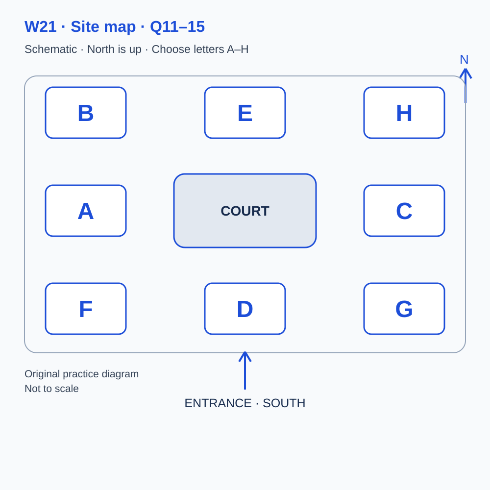
Q11. Check-in
Answer: ____
Q12. Demonstration
Answer: ____
Q13. Individual practice
Answer: ____
Q14. Review
Answer: ____
Q15. Resources
Answer: ____
Q16. What distinction matters when checking an entry?
- A. Typing speed proves correctness
- B. Content requirements differ from entry mechanics
- C. A smooth action proves receipt
Answer: ____
Q17. What should happen after an item is skipped?
- A. Assume another platform has the same controls
- B. Fill it with an invented answer
- C. Preserve its position and verify the relevant controls
Answer: ____
Q18. What should be inspected after an edit?
- A. The resulting entry and its recorded state
- B. Only the answer intended
- C. Only the latest filename
Answer: ____
Q19. What should a participant do after unexpected behaviour?
- A. Repeat actions until a success is assumed
- B. Mark submission successful immediately
- C. Stop, record the event and ask the leader
Answer: ____
Q20. What should the final record distinguish?
- A. Only the intended activities
- B. The activities actually performed
- C. Local practice as proof of real-system operation
Answer: ____
Part 3 — Comparing two local practice arrangements
Q21–26: Match each proposal to the students' final positions at the end of that exchange. The tutor is not included. Write A, B, C or D. Letters may be reused.
- A Rosa only
- B Ken only
- C Both students
- D Neither student
Q27–28 and Q29–30: Choose TWO different letters, A–E, for each pair. Write one letter in each numbered slot; either order is accepted. Each distinct correct choice earns one point, maximum two. Repeating a letter cannot earn two points. Submit no more than two letters.
Q21. At the END of this exchange, who supports: trying keyboard entry next?
Answer: ____
Q22. At the END of this exchange, who supports: preserving the version actually submitted?
Answer: ____
Q23. At the END of this exchange, who supports: using a spoken requirement check next?
Answer: ____
Q24. At the END of this exchange, who supports: marking real-interface operation complete from local work?
Answer: ____
Q25. At the END of this exchange, who supports: recording actual actions rather than intentions?
Answer: ____
Q26. At the END of this exchange, who supports: trying a second layout next?
Answer: ____
Q27–28. Which TWO actions are agreed for the local procedure?
- A. Replace the first response with corrections
- B. Check the required output
- C. Infer completion from a filename
- D. Discard submission evidence
- E. Record the submission state
Answers: Q27 ____ · Q28 ____
Q29–30. Which TWO differences limit comparison of the local trials?
- A. Prior familiarity with the question
- B. Different membership fees
- C. Unequal hints from an observer
- D. A missing room map
- E. A cancelled booking
Answers: Q29 ____ · Q30 ____
Part 4 — From a requirement to a recorded submission
Q31–35: Complete the flow chart below. Q36–40: Complete the notes. Write NO MORE THAN TWO WORDS AND/OR A NUMBER for each answer, using words from the recording. Numeric notation may replace spoken numbers. Words or units already printed do not belong in the blank. The numbered text below repeats the SVG prompts for readability.
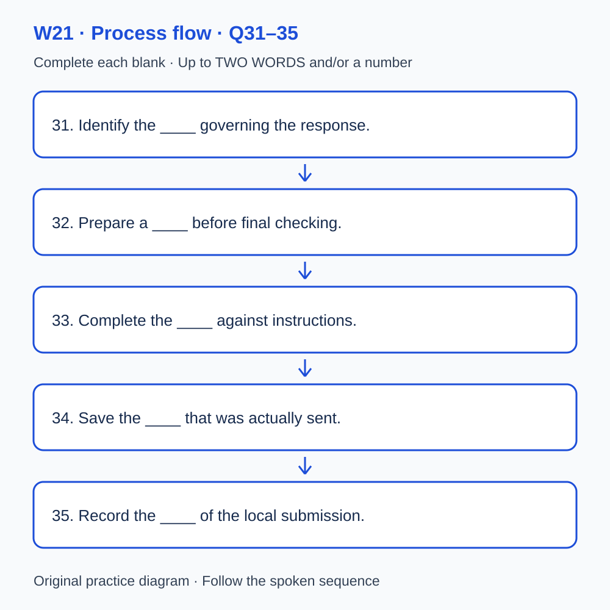
Q31. Identify the ____ governing the response.
Q32. Prepare a ____ before final checking.
Q33. Complete the ____ against instructions.
Q34. Save the ____ that was actually sent.
Q35. Record the ____ of the local submission.
Q36. Named practice for keeping versions in sequence: ____
Q37. Preserve the ____ needed to resume the task.
Q38. Named term for a signal of system response: ____
Q39. Named term for an unintended change to another entry: ____
Q40. Named property allowing inspection of a record’s basis: ____
本周训练安排（音频批准后执行）
- Preview questions without the script：8 分钟。
- Future continuous first listen, including planned part pauses：32 分钟。
- Submit first answers and confidence, without a second play：8 分钟。
- Check answers and classify errors：20 分钟。
- Four Q-located intensive segments, 15 minutes each：60 分钟。
- Diagram and opinion retelling：15 分钟。
- Next-day retry of missed items：15 分钟。
合计 158 分钟；最多另用 22 分钟缓冲，总计不超过 180 分钟。暂停、回放与查词均计入精听预算，不能另行无限追加。当前实际已完成听力分钟数为 0。精听区段和步骤见 intensive.md；答案和脚本另页。
活动与实际操作分开记录
本地题面核对、观察演示、本地输入和真实考试界面操作是不同活动。当前真实界面未操作、平台/日期/证据均未知，不得勾选完成。记录字段：活动类型／实际操作日期／平台或材料／观察结果／证据引用／未核验项。将原15分钟复述中的最后3分钟用于填写已有事实，替换该部分口述，不另加训练。无事实时保留空白或未知。
参考答案与证据（完成首次听力后再展开）
L-W21 — Answers and evidence
> 独立答案页。先提交首次答案，再看本页。当前缺音频，文本验题不能充当实听验收。
每个单空 1 分；双选各 2 分、答案顺序不限、按不同正确选项计分。接受形式仅做大小写和空白规范化；不做模糊词形推断。
Q1 — interface practice
Accepted answers: interface practice
Use the final confirmed detail in this exchange; the printed unit or date context is already supplied.
Evidence locator: Q01 (script.md; timestamps unavailable).
> Coordinator: Learning centre, how can I help? Caller: Our group wants to practise entering and checking answers. We found a course called keyboard skills, but we can already type ordinary messages. Coordinator: Interface practice is the more suitable workshop. Caller: Please record interface practice as our choice. We want to understand how a checking routine works when the page layout changes. Coordinator: The session uses a fictional local exercise. It can help you record actions and notice mistakes, but it isn't access to a real examination interface. Caller: Then attendance won't prove that we've operated the system used for a particular examination. Coordinator: Correct. That would need a separate, genuinely completed activity and an identifiable record.
Q2 — 17
Accepted answers: 17 / 17th / seventeenth / the seventeenth / the 17th
Use the final confirmed detail in this exchange; the printed unit or date context is already supplied.
Evidence locator: Q02 (script.md; timestamps unavailable).
> Caller: Is the workshop on the tenth of April? Coordinator: That was the provisional date. The confirmed session is on the seventeenth of April. Caller: The seventeenth suits us. I'll replace the earlier entry in our calendar. Coordinator: The confirmation will state the subject and date together. Caller: I'll forward the complete message, because someone also saved information about the keyboard course. Coordinator: Good. A date can look reliable when copied from another event, especially if both messages carry the same centre heading. Use the current booking record rather than assembling a new schedule from fragments of several notices that happen to look familiar.
Q3 — 10:15
Accepted answers: 10:15 / 10.15 / ten fifteen
Use the final confirmed detail in this exchange; the printed unit or date context is already supplied.
Evidence locator: Q03 (script.md; timestamps unavailable).
> Caller: When does teaching begin? Coordinator: Ten fifteen in the morning. The centre opens at nine forty-five, but this workshop begins at ten fifteen. Caller: So nine forty-five is the opening time, not the lesson start. Coordinator: Exactly. Arrive shortly before teaching to find your room. Caller: I'll label the two times differently in our travel note. Coordinator: That helps. The introduction distinguishes a practice action from a verified completed action. If someone misses it, they might later mark a task complete merely because they saw the demonstration, even though they never entered or checked a response themselves under the stated conditions.
Q4 — 3
Accepted answers: 3 / three
Use the final confirmed detail in this exchange; the printed unit or date context is already supplied.
Evidence locator: Q04 (script.md; timestamps unavailable).
> Coordinator: How many places should I reserve? Caller: Five people belong to our study group, but two cannot attend. We need three places. Coordinator: Three are available. Caller: The absent members can read our notes, but we won't count them as participants. Coordinator: That's sensible. If attendance changes, reply to the confirmation before transferring a place. Caller: I'll keep one current list. Coordinator: The practical activity uses pairs at some stages and individual responses at others. Knowing the number in advance lets the leader plan the arrangement without treating a person who only watched a demonstration as though they completed the same task as someone who used the practice controls.
Q5 — 39
Accepted answers: 39 / 39.00 / thirty-nine / thirty nine
Use the final confirmed detail in this exchange; the printed unit or date context is already supplied.
Evidence locator: Q05 (script.md; timestamps unavailable).
> Caller: What is the total charge? Coordinator: Thirty-nine pounds for the three places altogether. Caller: Thirty-nine for the whole booking, rather than for each person? Coordinator: Correct. The local practice materials are included. Access to any separate examination preparation service is not part of this booking. Caller: I'll tell our treasurer both the total and the scope. Coordinator: Please check those details on the confirmation before payment. If the amount or number of places differs, ask us to correct the record. Caller: We will. An unexplained difference should not be treated as an extra service that someone supposedly requested without telling the rest of the group.
Q6 — task sheet
Accepted answers: task sheet / sheet / the sheet / a sheet
Use the final confirmed detail in this exchange; the printed unit or date context is already supplied.
Evidence locator: Q06 (script.md; timestamps unavailable).
> Caller: Which document should we bring? Coordinator: Bring the task sheet from the exercise you want to discuss. We need its exact instructions, not only a list of corrected answers. Caller: I'll bring the task sheet with its version label. Coordinator: Keep any first response separate from the later correction. If you don't have an original response, the sheet is still useful for examining requirements, but it doesn't prove what you answered before feedback. Caller: So we shouldn't reconstruct a first attempt to make the folder look complete. Coordinator: Exactly. A clear gap is better than a polished record that gives an invented sequence the appearance of something that actually happened.
Q7 — C
Accepted answers: C
Local practice and actual examination-interface operation are explicitly separate.
Evidence locator: Q07 (script.md; timestamps unavailable).
> Caller: Does the workshop use a real examination interface? Coordinator: No. It uses our fictional local practice page. Any operation in a real interface must be arranged and recorded separately for the relevant format. Caller: Then a screenshot of your page can't establish familiarity with the actual system. Coordinator: Correct. Even if a control looks similar, its behaviour may differ. We aren't claiming that a particular examination saves, submits or displays answers in the same way. Caller: We'll keep those statuses separate. Coordinator: That distinction allows the workshop to be useful without attaching an unsupported claim to it. A checking routine can be practised locally while real interface experience remains unverified.
Q8 — B
Accepted answers: B
Observation is permitted by agreement but is not independent performance.
Evidence locator: Q08 (script.md; timestamps unavailable).
> Caller: May a participant watch first if the instructions are unfamiliar? Coordinator: Yes, if the leader agrees, but record that as observation rather than independent completion. Watching another person can clarify a procedure, yet it changes the information available before the participant's own attempt. Caller: So the later response should show that a demonstration preceded it. Coordinator: Exactly. The record doesn't need to imply that observation is unhelpful. It needs to describe the activity accurately. Caller: We can use separate entries for watched demonstration and completed practice. Coordinator: Good. Otherwise one tick beside a broad heading may hide several quite different experiences and make a later comparison difficult to interpret.
Q9 — A
Accepted answers: A
Advance discussion establishes the actual support conditions.
Evidence locator: Q09 (script.md; timestamps unavailable).
> Caller: One member needs instructions in a format that works with their reading application. Coordinator: Please describe the practical requirement before the session. We can check what the local materials support and confirm any limits. Caller: I won't assume a photograph of a printed page is equivalent. Coordinator: Thank you. An agreed access arrangement should remain visible where it affects a comparison, but it doesn't automatically tell us whether the underlying checking routine worked. Caller: We should record the task and arrangement together. Coordinator: Yes. That gives a later reviewer the conditions needed to interpret the response instead of forcing them to guess from the final answer alone.
Q10 — C
Accepted answers: C
The confirmation reference identifies the booking.
Evidence locator: Q10 (script.md; timestamps unavailable).
> Caller: How should we report a booking change? Coordinator: Reply to the current confirmation with its reference. Public comments beneath the event notice do not update the attendance list. The message also contains a contact number for an urgent issue. Caller: I'll keep the whole confirmation until after the visit. Coordinator: Good. It includes the entrance details and the document to bring. Caller: I'll remind everyone that this is local practice, not a completed real-interface task. Coordinator: That's the right expectation. The workshop can improve how you check and record an action, while leaving a separate activity marked unverified until somebody has actually carried it out.
Q11 — D
Accepted answers: D
Use the explicitly stated position relative to the court, not an earlier layout or adjacent area.
Evidence locator: Q11 (script.md; timestamps unavailable).
> Welcome to the practice centre. North is at the top of the diagram, and the entrance is on the southern edge. The court in the centre is the fixed landmark. Check-in is directly south of the court, on the entrance axis. It is not in either southern corner. Please report there before joining the group. The letters mark positions rather than the initials of their functions. If you visited for another course, use today's plan instead of following a remembered route. A room that looks familiar may now serve a different activity, and the current briefing is the relevant source for this workshop's arrangement.
Q12 — B
Accepted answers: B
Use the explicitly stated position relative to the court, not an earlier layout or adjacent area.
Evidence locator: Q12 (script.md; timestamps unavailable).
> The demonstration room is in the north-west corner. It lies west of the northern central room and diagonally north-west of the court. An earlier notice placed the demonstration directly north, but today's activity uses the corner room. The leader will show a fictional practice page and describe what evidence each action leaves. A demonstration is not a record that every observer performed the action. Keep those two things distinct when completing your activity log. The example controls belong to this local exercise; their location and behaviour should not be copied into a claim about an examination system that the group has not actually opened or used.
Q13 — C
Accepted answers: C
Use the explicitly stated position relative to the court, not an earlier layout or adjacent area.
Evidence locator: Q13 (script.md; timestamps unavailable).
> The individual practice room is directly east of the court, level with its centre. It is not the south-east room. Participants use it after the demonstration under the procedure stated by the leader. Preserve the first response before making corrections, and record any help received. If somebody points out a missing answer, the later corrected page should not be described as the untouched first attempt. Both versions can contribute to learning, but they answer different questions. The room arrangement supports separate work; it does not by itself prove that every response was unaided or that the task matches the conditions of a real examination.
Q14 — H
Accepted answers: H
Use the explicitly stated position relative to the court, not an earlier layout or adjacent area.
Evidence locator: Q14 (script.md; timestamps unavailable).
> The review room is in the north-east corner. It is directly north of the practice room and directly east of the northern central room. Those northern spaces share a row, so the review room is east of its neighbour, not north-east of that neighbour. Groups meet there to compare a recorded action with the requirement it was intended to satisfy. A participant may remember clicking a control without knowing which response was sent. The review asks what the available record supports. It should not replace a missing confirmation with confidence or treat the intended action as evidence that the intended result necessarily occurred.
Q15 — F
Accepted answers: F
Use the explicitly stated position relative to the court, not an earlier layout or adjacent area.
Evidence locator: Q15 (script.md; timestamps unavailable).
> The resource desk is in the south-west corner. It is west of check-in and below the room directly west of the court. Collect the worksheet version identified in the briefing. Some pages concern checking the content of an answer, while others concern recording the state of a local submission. Their tables look similar, but they ask different questions. If a sheet is missing, ask the helper rather than borrow a completed page from another participant. The desk supplies material; it does not verify that a real examination interface has been operated. That status depends on separate evidence from the actual activity, not on receiving a resource here.
Q16 — B
Accepted answers: B
Fast or smooth entry may still fail the requirement.
Evidence locator: Q16 (script.md; timestamps unavailable).
> The first activity asks you to separate the task requirement from the mechanics of entering a response. A fluent typing performance can still produce an answer that repeats a unit or exceeds a word limit. Before using the local controls, identify what belongs in each blank and which information is already printed. Then examine whether the entered response satisfies that requirement. This is a content check, not proof of familiarity with another interface. Keeping those purposes separate helps you decide what a difficulty actually concerns. Otherwise a smooth interaction with the practice page may conceal a misunderstanding of the question, while a navigation error may be mistaken for lack of subject knowledge.
Q17 — C
Accepted answers: C
Position must remain recoverable; controls need environment-specific checking.
Evidence locator: Q17 (script.md; timestamps unavailable).
> During the exercise, preserve the position of a skipped item. A participant may move on deliberately rather than spend the whole period on one uncertainty. The record should make it possible to return to that item during the permitted checking stage of this local task. Do not assume that every other system provides the same mechanism. Follow the instructions for the actual activity being used. A general checking habit can be useful across settings, but the available controls and timing need separate verification. If a real interface has not been opened, its behaviour remains unknown, however confidently someone remembers a demonstration from another environment.
Q18 — A
Accepted answers: A
Intention, visible content and submission confirmation are different evidence.
Evidence locator: Q18 (script.md; timestamps unavailable).
> When changing an answer, examine the resulting response rather than only the action you intended. A correction can affect spacing or another field if attention shifts between controls. The local task asks participants to compare the final visible entry with the requirement before recording it as checked. That observation is narrower than a claim that every change was safely stored or transmitted. The record should distinguish what was visible, what was sent and what confirmation was available. These are related stages, but one should not be used as a substitute for another merely because they usually occur close together during a familiar routine.
Q19 — C
Accepted answers: C
An attempted control action alone does not establish receipt.
Evidence locator: Q19 (script.md; timestamps unavailable).
> If the local page behaves unexpectedly, stop the comparison and note what happened before making an explanatory claim. A delay could concern the practice setup, the network or the action sequence, and the visible result may not distinguish them. Ask the leader how the exercise should proceed. Do not mark a response successfully submitted solely because a control was pressed. The purpose is to learn how to preserve a usable account of an uncertain event. A careful record can include an unresolved status. Inventing a successful ending would remove the very evidence needed to investigate why the result differed from the participant's expectation.
Q20 — B
Accepted answers: B
Checking, demonstration, local response and real operation need separate statuses.
Evidence locator: Q20 (script.md; timestamps unavailable).
> At the end, record the activity actually completed. Reading a checklist, observing a demonstration, entering a local response and operating a selected real interface are separate events. One does not automatically complete the others. If the real-interface task remains unperformed, leave that status unverified and identify what evidence would be needed later. The local exercise can still reveal a duplicated unit, a lost question position or an unclear checking sequence. Those observations are useful within their scope. The review should improve the connection between an action and its record, rather than turn a broad completion tick into evidence for experiences nobody has actually had.
Q21 — B
Accepted answers: B
Final stance: Ken only. Ignore an initial proposal if later withdrawn; the tutor is not an answer option.
Evidence locator: Q21 (script.md; timestamps unavailable).
> Tutor: You compared the two local practice arrangements last week. What should the next trial use? Ken: A keyboard-based version after the paper exercise. I want to see whether the checking routine survives the change in input. Rosa: I'd review the requirements on the existing sheets first. We still haven't separated entry errors from misunderstandings of the blank. Tutor: Ken, does that change your proposal? Ken: It gives us something to record, but I still support the keyboard trial next. Rosa: I remain in favour of reviewing the current responses first. Tutor: Then Ken supports the new input trial, while Rosa wants another step before the group changes the arrangement.
Q22 — C
Accepted answers: C
Final stance: Both students. Ignore an initial proposal if later withdrawn; the tutor is not an answer option.
Evidence locator: Q22 (script.md; timestamps unavailable).
> Tutor: Should you preserve the version actually submitted? Rosa: Yes. A corrected working copy isn't enough to show what was sent at the end of the attempt. Ken: I agree. I initially thought the final file in the folder would identify it, but that file can be edited later. Tutor: How will you distinguish the versions? Ken: Use a clear label and retain the record linked to the local submission. Rosa: That will keep a later improvement from being mistaken for the original response. Tutor: Good. You both support preserving the submitted version, without treating its existence as proof that every other stage of the activity was completed correctly.
Q23 — A
Accepted answers: A
Final stance: Rosa only. Ignore an initial proposal if later withdrawn; the tutor is not an answer option.
Evidence locator: Q23 (script.md; timestamps unavailable).
> Tutor: Rosa proposes reading the answer requirements aloud before the next trial. Rosa: I support that. Saying the instruction might reveal that somebody has overlooked a printed unit or word limit. Ken: I'd use a short written summary instead. Reading aloud could become repetition without checking meaning. Tutor: Could a partner explain what they heard? Rosa: Yes, that is the version I favour. Ken: It would help, but I still prefer the written summary for the next comparison. Tutor: Then Rosa supports the spoken check and Ken doesn't. You share the aim of clarifying requirements, but that doesn't make your preferred methods the same procedure.
Q24 — D
Accepted answers: D
Final stance: Neither student. Ignore an initial proposal if later withdrawn; the tutor is not an answer option.
Evidence locator: Q24 (script.md; timestamps unavailable).
> Tutor: Your first report marks real-interface practice complete after the local exercise. Ken: I wrote that because the pages looked similar. I can see now that the entry isn't justified. Rosa: I don't support keeping it. We didn't use the real interface or verify its behaviour. Ken: I'll remove the completion claim and record only the local task we actually performed. Tutor: Does either of you want to retain it with a question mark? Rosa: No. The separate activity should remain unperformed or unverified, not appear as a completed task with a minor caveat. Ken: Agreed. Tutor: Then neither student supports the original completion claim.
Q25 — C
Accepted answers: C
Final stance: Both students. Ignore an initial proposal if later withdrawn; the tutor is not an answer option.
Evidence locator: Q25 (script.md; timestamps unavailable).
> Tutor: Should the record describe actions rather than intentions? Ken: Yes. Pressing a button, seeing an entry and receiving a confirmation are distinct observations. Rosa: I agree. We shouldn't write successfully submitted if the available evidence only shows that someone attempted to submit. Tutor: Would that make the record excessively cautious? Rosa: Not if we state the observed result precisely. An unresolved status is information, not an empty page. Ken: It also tells us what another check would need to establish. Tutor: Then both of you support recording what happened, with uncertainty retained where the evidence doesn't settle the result of the intended action.
Q26 — B
Accepted answers: B
Final stance: Ken only. Ignore an initial proposal if later withdrawn; the tutor is not an answer option.
Evidence locator: Q26 (script.md; timestamps unavailable).
> Tutor: Ken suggests introducing a second page layout in the next trial. Ken: I support it. We need to know whether participants recognise the checking task when familiar positions change. Rosa: I'd keep the current layout for one more attempt, so we can examine the revised instructions without adding another difference. Tutor: Could the second layout preserve the same questions? Ken: Yes, and I still favour using it. Rosa: I understand the purpose, but I prefer to defer that change. Tutor: Then Ken supports the second layout and Rosa doesn't support it for the next trial. A useful future comparison isn't automatically the action both participants want to take immediately.
Q27–28 — B, E
Accept unordered set: B, E. One point per distinct correct choice, maximum 2.
The agreed checks concern the required output and evidence of submission state.
Evidence locator: Q27, Q28 (script.md; timestamps unavailable).
> Tutor: Which two checks are agreed for the preparation sheet? Rosa: Check every required output against the question instructions. Ken: Agreed. A response can look complete while omitting a required item or repeating information supplied in the prompt. Tutor: Are you selecting typing speed as the main criterion? Ken: No. Speed doesn't tell us whether the entered answer satisfies the requirement. Rosa: We also don't need a prediction of an official score. Tutor: Then required-output checking is one selected action. It concerns the work the participant must supply, not a general impression that the page looks full or that the input process appeared smooth to an observer.
> Tutor: What is the second agreed check? Ken: Record the state of the local submission, including the evidence available for that state. Rosa: Yes. We need to distinguish an attempted action from a response that the local record identifies as received. Tutor: Does that establish the behaviour of a real examination system? Rosa: No. The statement stays attached to this local exercise. Ken: And it doesn't require a decorative chart or a ranking of participants. Tutor: Good. The selected pair is checking required outputs and recording submission state. Keep those two checks separate so that a success in one isn't used to conceal an unresolved result in the other.
Q29–30 — A, C
Accept unordered set: A, C. One point per distinct correct choice, maximum 2.
Prior exposure and unequal observer help are the stated differences.
Evidence locator: Q29, Q30 (script.md; timestamps unavailable).
> Tutor: What limits the comparison from last week? Rosa: Participants knew the questions in the second arrangement because they had already seen them on paper. Ken: That familiarity could reduce errors independently of the interface change. Tutor: Were the response pages missing? Rosa: No. Both sets were saved. The limitation concerns prior exposure, not lost records. Ken: We can still examine entry behaviour, but we shouldn't claim the higher total came entirely from the new layout. Tutor: State what was familiar and how the order was arranged. A clear description lets a later reviewer see which comparison was actually made instead of assuming two equally unfamiliar first attempts.
> Tutor: Was assistance equal? Ken: No. An observer gave a hint about a skipped item during one attempt. Rosa: The note records the hint, so we can keep it visible when discussing the eventual answer. Tutor: Does that make the attempt useless? Rosa: No, but it narrows what we can say about independent checking. Ken: Neither session was cancelled and the materials were available. Tutor: Then prior familiarity and the unequal hint are the two limitations to retain. Don't replace them with a generic list of possible technical problems that didn't occur. The review should explain this comparison rather than supply a collection of reasons any trial might have been imperfect.
Q31 — requirement
Accepted answers: requirement / stated requirement
Complete the named stage in the stated process order; retain any word already printed around the blank.
Evidence locator: Q31 (script.md; timestamps unavailable).
> Consider a fictional team reviewing an answer-entry procedure. The first stage identifies the requirement governing the response. This stated requirement may concern the requested information, the permitted length or a unit already printed around the blank. The team examines it before discussing how quickly an answer was entered. A smooth sequence of actions can produce a response that fails the task. The requirement should remain connected to the question version used in the attempt, since a later instruction may ask for something different. This stage establishes what the response must satisfy; it does not establish how a real examination interface behaves or prove that an unfamiliar system has been operated.
Q32 — draft
Accepted answers: draft / working draft / response
Complete the named stage in the stated process order; retain any word already printed around the blank.
Evidence locator: Q32 (script.md; timestamps unavailable).
> The second stage prepares a working draft. The draft is the response under construction, before the final checking and submission stages of this local exercise. Keeping that distinction visible allows a participant to revise without pretending that every version was the answer eventually sent. The team should not infer which draft was final merely from the order in which files appear in a folder. A clear version label and an event record provide a better basis. The purpose is to preserve the relationship between the work being developed and the task it is meant to answer, rather than create a misleadingly tidy history after the outcome is known.
Q33 — validation
Accepted answers: validation / check / validation check
Complete the named stage in the stated process order; retain any word already printed around the blank.
Evidence locator: Q33 (script.md; timestamps unavailable).
> The third stage completes validation against the instructions. Validation is a check of whether the entered response meets the stated requirements. It includes inspecting the actual words, numbers and units, not simply recalling what the participant intended to type. This validation check belongs to the local procedure being examined. It should not be described as a guarantee that another system stored or received the same content. If the visible entry differs from the intended answer, the team records the difference and the subsequent correction separately. The value of validation lies in connecting the response with a requirement that can be inspected, rather than relying only on the confidence of the person who entered it.
Q34 — submission
Accepted answers: submission / submitted response / response / sent version / version
Complete the named stage in the stated process order; retain any word already printed around the blank.
Evidence locator: Q34 (script.md; timestamps unavailable).
> The fourth stage saves the submission that was actually sent. Here, the submission means the submitted response, rather than every draft that preceded it. This sent version must remain identifiable after later corrections are made for learning. Without that distinction, a reviewer may compare the result with a cleaner response that did not exist at the time of sending. The record should also state what evidence identifies the submitted response. A participant's intention may be relevant, but it isn't interchangeable with an observable record. Keeping the version clear allows the team to examine both the original result and the improvement without silently replacing one with the other.
Q35 — status
Accepted answers: status / recorded status / limited status
Complete the named stage in the stated process order; retain any word already printed around the blank.
Evidence locator: Q35 (script.md; timestamps unavailable).
> The fifth stage records the status of the local submission. The status must reflect the evidence available, such as a local record that indicates receipt or an unresolved result after an attempted action. This recorded status should not become successful merely because the participant expected success. Nor should a local confirmation be treated as evidence about the behaviour of a different system. The team states what the observation establishes and what remains unknown. A carefully limited status supports a useful next check, while an invented completion entry removes the distinction between what happened, what was intended and what still needs to be verified in the relevant environment.
Q36 — version control
Accepted answers: version control
The corresponding evidence block supplies this distinction or qualification; the question retains the surrounding grammar.
Evidence locator: Q36 (script.md; timestamps unavailable).
> The named practice of keeping identifiable versions in a clear sequence is version control. In this example, version control helps the team distinguish a working draft, a submitted response and a later correction. It does not require a complicated tool; it requires labels and relationships that another reviewer can follow. A filename such as final can become ambiguous when another edit is saved over it. The team should preserve the relevant object rather than rely on the label alone. The term names the management of versions, not a score for answer quality or evidence that every action associated with a file was successfully completed.
Q37 — position
Accepted answers: position / current position / place
The corresponding evidence block supplies this distinction or qualification; the question retains the surrounding grammar.
Evidence locator: Q37 (script.md; timestamps unavailable).
> An interruption can also cause a participant to lose their position in the task. The current position should be recoverable from the practice record without inventing an answer to fill the gap. This is the place at which the participant needs to resume, not necessarily the last item visible on the screen after someone else interacts with it. The team should record any relevant action during the interruption. A later return can then be understood in relation to the actual sequence. Preserving position supports continuity, but the available mechanism must be checked in the environment being used rather than assumed from another page that happens to look similar.
Q38 — feedback
Accepted answers: feedback / system feedback
The corresponding evidence block supplies this distinction or qualification; the question retains the surrounding grammar.
Evidence locator: Q38 (script.md; timestamps unavailable).
> A signal showing a system's response to an action is called feedback in this discussion. System feedback may indicate that an entry changed, that a local request was received or that an action needs attention. The meaning depends on the particular signal and environment. The team should describe what was observed instead of treating every visual change as a confirmation of success. This use of feedback concerns the system response, not a teacher's judgement of whether the answer was correct. Keeping those meanings distinct helps the review avoid an inference that a response was academically sound merely because the local page reacted after it was entered.
Q39 — side effect
Accepted answers: side effect / side-effect
The corresponding evidence block supplies this distinction or qualification; the question retains the surrounding grammar.
Evidence locator: Q39 (script.md; timestamps unavailable).
> The lecture uses the term side effect for an unintended change to another response during an action. For example, correcting one entry may leave another altered if the participant's attention moves to a different field. This is a fictional illustration, not a claim about a particular examination system. The team examines the resulting record and the sequence that produced it before deciding how to prevent a recurrence. A side effect can be small and still matter if it changes the submitted content. The named concept identifies an unintended consequence of an action; it should not be used as a general label for every wrong answer or every unexplained delay in an exercise.
Q40 — auditability
Accepted answers: auditability
The corresponding evidence block supplies this distinction or qualification; the question retains the surrounding grammar.
Evidence locator: Q40 (script.md; timestamps unavailable).
> Finally, auditability names the property of a record that allows another reviewer to inspect the basis of its claims. An auditable record connects the task version, response, relevant actions and observed result. It also preserves an unknown status when the evidence does not settle a question. Auditability does not mean that the record proves every desired conclusion. It means a reviewer can see what supports the stated conclusion and where its limits lie. The local exercise ends with a record of what was practised and what remains unverified. Actual operation in a selected real examination interface is a separate event, and its completion must not be invented from this fictional rehearsal.
完整脚本（提前阅读会失去陌生题首答机会）
L-W21 — Checking a response and recording what actually happened: transcript
> 原创虚构练习，非真题；音频缺失。仅供完成首次作答后的核对或文字审阅。Q 标记与角色名不属于朗读正文。
Part 1 — Booking an interface practice workshop
Q1 evidence block
Coordinator: Learning centre, how can I help?
Caller: Our group wants to practise entering and checking answers. We found a course called keyboard skills, but we can already type ordinary messages.
Coordinator: Interface practice is the more suitable workshop.
Caller: Please record interface practice as our choice. We want to understand how a checking routine works when the page layout changes.
Coordinator: The session uses a fictional local exercise. It can help you record actions and notice mistakes, but it isn't access to a real examination interface.
Caller: Then attendance won't prove that we've operated the system used for a particular examination.
Coordinator: Correct. That would need a separate, genuinely completed activity and an identifiable record.
Q2 evidence block
Caller: Is the workshop on the tenth of April?
Coordinator: That was the provisional date. The confirmed session is on the seventeenth of April.
Caller: The seventeenth suits us. I'll replace the earlier entry in our calendar.
Coordinator: The confirmation will state the subject and date together.
Caller: I'll forward the complete message, because someone also saved information about the keyboard course.
Coordinator: Good. A date can look reliable when copied from another event, especially if both messages carry the same centre heading. Use the current booking record rather than assembling a new schedule from fragments of several notices that happen to look familiar.
Q3 evidence block
Caller: When does teaching begin?
Coordinator: Ten fifteen in the morning. The centre opens at nine forty-five, but this workshop begins at ten fifteen.
Caller: So nine forty-five is the opening time, not the lesson start.
Coordinator: Exactly. Arrive shortly before teaching to find your room.
Caller: I'll label the two times differently in our travel note.
Coordinator: That helps. The introduction distinguishes a practice action from a verified completed action. If someone misses it, they might later mark a task complete merely because they saw the demonstration, even though they never entered or checked a response themselves under the stated conditions.
Q4 evidence block
Coordinator: How many places should I reserve?
Caller: Five people belong to our study group, but two cannot attend. We need three places.
Coordinator: Three are available.
Caller: The absent members can read our notes, but we won't count them as participants.
Coordinator: That's sensible. If attendance changes, reply to the confirmation before transferring a place.
Caller: I'll keep one current list.
Coordinator: The practical activity uses pairs at some stages and individual responses at others. Knowing the number in advance lets the leader plan the arrangement without treating a person who only watched a demonstration as though they completed the same task as someone who used the practice controls.
Q5 evidence block
Caller: What is the total charge?
Coordinator: Thirty-nine pounds for the three places altogether.
Caller: Thirty-nine for the whole booking, rather than for each person?
Coordinator: Correct. The local practice materials are included. Access to any separate examination preparation service is not part of this booking.
Caller: I'll tell our treasurer both the total and the scope.
Coordinator: Please check those details on the confirmation before payment. If the amount or number of places differs, ask us to correct the record.
Caller: We will. An unexplained difference should not be treated as an extra service that someone supposedly requested without telling the rest of the group.
Q6 evidence block
Caller: Which document should we bring?
Coordinator: Bring the task sheet from the exercise you want to discuss. We need its exact instructions, not only a list of corrected answers.
Caller: I'll bring the task sheet with its version label.
Coordinator: Keep any first response separate from the later correction. If you don't have an original response, the sheet is still useful for examining requirements, but it doesn't prove what you answered before feedback.
Caller: So we shouldn't reconstruct a first attempt to make the folder look complete.
Coordinator: Exactly. A clear gap is better than a polished record that gives an invented sequence the appearance of something that actually happened.
Q7 evidence block
Caller: Does the workshop use a real examination interface?
Coordinator: No. It uses our fictional local practice page. Any operation in a real interface must be arranged and recorded separately for the relevant format.
Caller: Then a screenshot of your page can't establish familiarity with the actual system.
Coordinator: Correct. Even if a control looks similar, its behaviour may differ. We aren't claiming that a particular examination saves, submits or displays answers in the same way.
Caller: We'll keep those statuses separate.
Coordinator: That distinction allows the workshop to be useful without attaching an unsupported claim to it. A checking routine can be practised locally while real interface experience remains unverified.
Q8 evidence block
Caller: May a participant watch first if the instructions are unfamiliar?
Coordinator: Yes, if the leader agrees, but record that as observation rather than independent completion. Watching another person can clarify a procedure, yet it changes the information available before the participant's own attempt.
Caller: So the later response should show that a demonstration preceded it.
Coordinator: Exactly. The record doesn't need to imply that observation is unhelpful. It needs to describe the activity accurately.
Caller: We can use separate entries for watched demonstration and completed practice.
Coordinator: Good. Otherwise one tick beside a broad heading may hide several quite different experiences and make a later comparison difficult to interpret.
Q9 evidence block
Caller: One member needs instructions in a format that works with their reading application.
Coordinator: Please describe the practical requirement before the session. We can check what the local materials support and confirm any limits.
Caller: I won't assume a photograph of a printed page is equivalent.
Coordinator: Thank you. An agreed access arrangement should remain visible where it affects a comparison, but it doesn't automatically tell us whether the underlying checking routine worked.
Caller: We should record the task and arrangement together.
Coordinator: Yes. That gives a later reviewer the conditions needed to interpret the response instead of forcing them to guess from the final answer alone.
Q10 evidence block
Caller: How should we report a booking change?
Coordinator: Reply to the current confirmation with its reference. Public comments beneath the event notice do not update the attendance list. The message also contains a contact number for an urgent issue.
Caller: I'll keep the whole confirmation until after the visit.
Coordinator: Good. It includes the entrance details and the document to bring.
Caller: I'll remind everyone that this is local practice, not a completed real-interface task.
Coordinator: That's the right expectation. The workshop can improve how you check and record an action, while leaving a separate activity marked unverified until somebody has actually carried it out.
Part 2 — Finding the practice facilities
Q11 evidence block
Centre host: Welcome to the practice centre. North is at the top of the diagram, and the entrance is on the southern edge. The court in the centre is the fixed landmark. Check-in is directly south of the court, on the entrance axis. It is not in either southern corner. Please report there before joining the group. The letters mark positions rather than the initials of their functions. If you visited for another course, use today's plan instead of following a remembered route. A room that looks familiar may now serve a different activity, and the current briefing is the relevant source for this workshop's arrangement.
Q12 evidence block
Centre host: The demonstration room is in the north-west corner. It lies west of the northern central room and diagonally north-west of the court. An earlier notice placed the demonstration directly north, but today's activity uses the corner room. The leader will show a fictional practice page and describe what evidence each action leaves. A demonstration is not a record that every observer performed the action. Keep those two things distinct when completing your activity log. The example controls belong to this local exercise; their location and behaviour should not be copied into a claim about an examination system that the group has not actually opened or used.
Q13 evidence block
Centre host: The individual practice room is directly east of the court, level with its centre. It is not the south-east room. Participants use it after the demonstration under the procedure stated by the leader. Preserve the first response before making corrections, and record any help received. If somebody points out a missing answer, the later corrected page should not be described as the untouched first attempt. Both versions can contribute to learning, but they answer different questions. The room arrangement supports separate work; it does not by itself prove that every response was unaided or that the task matches the conditions of a real examination.
Q14 evidence block
Centre host: The review room is in the north-east corner. It is directly north of the practice room and directly east of the northern central room. Those northern spaces share a row, so the review room is east of its neighbour, not north-east of that neighbour. Groups meet there to compare a recorded action with the requirement it was intended to satisfy. A participant may remember clicking a control without knowing which response was sent. The review asks what the available record supports. It should not replace a missing confirmation with confidence or treat the intended action as evidence that the intended result necessarily occurred.
Q15 evidence block
Centre host: The resource desk is in the south-west corner. It is west of check-in and below the room directly west of the court. Collect the worksheet version identified in the briefing. Some pages concern checking the content of an answer, while others concern recording the state of a local submission. Their tables look similar, but they ask different questions. If a sheet is missing, ask the helper rather than borrow a completed page from another participant. The desk supplies material; it does not verify that a real examination interface has been operated. That status depends on separate evidence from the actual activity, not on receiving a resource here.
Q16 evidence block
Centre host: The first activity asks you to separate the task requirement from the mechanics of entering a response. A fluent typing performance can still produce an answer that repeats a unit or exceeds a word limit. Before using the local controls, identify what belongs in each blank and which information is already printed. Then examine whether the entered response satisfies that requirement. This is a content check, not proof of familiarity with another interface. Keeping those purposes separate helps you decide what a difficulty actually concerns. Otherwise a smooth interaction with the practice page may conceal a misunderstanding of the question, while a navigation error may be mistaken for lack of subject knowledge.
Q17 evidence block
Centre host: During the exercise, preserve the position of a skipped item. A participant may move on deliberately rather than spend the whole period on one uncertainty. The record should make it possible to return to that item during the permitted checking stage of this local task. Do not assume that every other system provides the same mechanism. Follow the instructions for the actual activity being used. A general checking habit can be useful across settings, but the available controls and timing need separate verification. If a real interface has not been opened, its behaviour remains unknown, however confidently someone remembers a demonstration from another environment.
Q18 evidence block
Centre host: When changing an answer, examine the resulting response rather than only the action you intended. A correction can affect spacing or another field if attention shifts between controls. The local task asks participants to compare the final visible entry with the requirement before recording it as checked. That observation is narrower than a claim that every change was safely stored or transmitted. The record should distinguish what was visible, what was sent and what confirmation was available. These are related stages, but one should not be used as a substitute for another merely because they usually occur close together during a familiar routine.
Q19 evidence block
Centre host: If the local page behaves unexpectedly, stop the comparison and note what happened before making an explanatory claim. A delay could concern the practice setup, the network or the action sequence, and the visible result may not distinguish them. Ask the leader how the exercise should proceed. Do not mark a response successfully submitted solely because a control was pressed. The purpose is to learn how to preserve a usable account of an uncertain event. A careful record can include an unresolved status. Inventing a successful ending would remove the very evidence needed to investigate why the result differed from the participant's expectation.
Q20 evidence block
Centre host: At the end, record the activity actually completed. Reading a checklist, observing a demonstration, entering a local response and operating a selected real interface are separate events. One does not automatically complete the others. If the real-interface task remains unperformed, leave that status unverified and identify what evidence would be needed later. The local exercise can still reveal a duplicated unit, a lost question position or an unclear checking sequence. Those observations are useful within their scope. The review should improve the connection between an action and its record, rather than turn a broad completion tick into evidence for experiences nobody has actually had.
Part 3 — Comparing two local practice arrangements
Q21 evidence block
Tutor: You compared the two local practice arrangements last week. What should the next trial use?
Ken: A keyboard-based version after the paper exercise. I want to see whether the checking routine survives the change in input.
Rosa: I'd review the requirements on the existing sheets first. We still haven't separated entry errors from misunderstandings of the blank.
Tutor: Ken, does that change your proposal?
Ken: It gives us something to record, but I still support the keyboard trial next.
Rosa: I remain in favour of reviewing the current responses first.
Tutor: Then Ken supports the new input trial, while Rosa wants another step before the group changes the arrangement.
Q22 evidence block
Tutor: Should you preserve the version actually submitted?
Rosa: Yes. A corrected working copy isn't enough to show what was sent at the end of the attempt.
Ken: I agree. I initially thought the final file in the folder would identify it, but that file can be edited later.
Tutor: How will you distinguish the versions?
Ken: Use a clear label and retain the record linked to the local submission.
Rosa: That will keep a later improvement from being mistaken for the original response.
Tutor: Good. You both support preserving the submitted version, without treating its existence as proof that every other stage of the activity was completed correctly.
Q23 evidence block
Tutor: Rosa proposes reading the answer requirements aloud before the next trial.
Rosa: I support that. Saying the instruction might reveal that somebody has overlooked a printed unit or word limit.
Ken: I'd use a short written summary instead. Reading aloud could become repetition without checking meaning.
Tutor: Could a partner explain what they heard?
Rosa: Yes, that is the version I favour.
Ken: It would help, but I still prefer the written summary for the next comparison.
Tutor: Then Rosa supports the spoken check and Ken doesn't. You share the aim of clarifying requirements, but that doesn't make your preferred methods the same procedure.
Q24 evidence block
Tutor: Your first report marks real-interface practice complete after the local exercise.
Ken: I wrote that because the pages looked similar. I can see now that the entry isn't justified.
Rosa: I don't support keeping it. We didn't use the real interface or verify its behaviour.
Ken: I'll remove the completion claim and record only the local task we actually performed.
Tutor: Does either of you want to retain it with a question mark?
Rosa: No. The separate activity should remain unperformed or unverified, not appear as a completed task with a minor caveat.
Ken: Agreed.
Tutor: Then neither student supports the original completion claim.
Q25 evidence block
Tutor: Should the record describe actions rather than intentions?
Ken: Yes. Pressing a button, seeing an entry and receiving a confirmation are distinct observations.
Rosa: I agree. We shouldn't write successfully submitted if the available evidence only shows that someone attempted to submit.
Tutor: Would that make the record excessively cautious?
Rosa: Not if we state the observed result precisely. An unresolved status is information, not an empty page.
Ken: It also tells us what another check would need to establish.
Tutor: Then both of you support recording what happened, with uncertainty retained where the evidence doesn't settle the result of the intended action.
Q26 evidence block
Tutor: Ken suggests introducing a second page layout in the next trial.
Ken: I support it. We need to know whether participants recognise the checking task when familiar positions change.
Rosa: I'd keep the current layout for one more attempt, so we can examine the revised instructions without adding another difference.
Tutor: Could the second layout preserve the same questions?
Ken: Yes, and I still favour using it.
Rosa: I understand the purpose, but I prefer to defer that change.
Tutor: Then Ken supports the second layout and Rosa doesn't support it for the next trial. A useful future comparison isn't automatically the action both participants want to take immediately.
Q27 evidence block
Tutor: Which two checks are agreed for the preparation sheet?
Rosa: Check every required output against the question instructions.
Ken: Agreed. A response can look complete while omitting a required item or repeating information supplied in the prompt.
Tutor: Are you selecting typing speed as the main criterion?
Ken: No. Speed doesn't tell us whether the entered answer satisfies the requirement.
Rosa: We also don't need a prediction of an official score.
Tutor: Then required-output checking is one selected action. It concerns the work the participant must supply, not a general impression that the page looks full or that the input process appeared smooth to an observer.
Q28 evidence block
Tutor: What is the second agreed check?
Ken: Record the state of the local submission, including the evidence available for that state.
Rosa: Yes. We need to distinguish an attempted action from a response that the local record identifies as received.
Tutor: Does that establish the behaviour of a real examination system?
Rosa: No. The statement stays attached to this local exercise.
Ken: And it doesn't require a decorative chart or a ranking of participants.
Tutor: Good. The selected pair is checking required outputs and recording submission state. Keep those two checks separate so that a success in one isn't used to conceal an unresolved result in the other.
Q29 evidence block
Tutor: What limits the comparison from last week?
Rosa: Participants knew the questions in the second arrangement because they had already seen them on paper.
Ken: That familiarity could reduce errors independently of the interface change.
Tutor: Were the response pages missing?
Rosa: No. Both sets were saved. The limitation concerns prior exposure, not lost records.
Ken: We can still examine entry behaviour, but we shouldn't claim the higher total came entirely from the new layout.
Tutor: State what was familiar and how the order was arranged. A clear description lets a later reviewer see which comparison was actually made instead of assuming two equally unfamiliar first attempts.
Q30 evidence block
Tutor: Was assistance equal?
Ken: No. An observer gave a hint about a skipped item during one attempt.
Rosa: The note records the hint, so we can keep it visible when discussing the eventual answer.
Tutor: Does that make the attempt useless?
Rosa: No, but it narrows what we can say about independent checking.
Ken: Neither session was cancelled and the materials were available.
Tutor: Then prior familiarity and the unequal hint are the two limitations to retain. Don't replace them with a generic list of possible technical problems that didn't occur. The review should explain this comparison rather than supply a collection of reasons any trial might have been imperfect.
Part 4 — From a requirement to a recorded submission
Q31 evidence block
Lecturer: Consider a fictional team reviewing an answer-entry procedure. The first stage identifies the requirement governing the response. This stated requirement may concern the requested information, the permitted length or a unit already printed around the blank. The team examines it before discussing how quickly an answer was entered. A smooth sequence of actions can produce a response that fails the task. The requirement should remain connected to the question version used in the attempt, since a later instruction may ask for something different. This stage establishes what the response must satisfy; it does not establish how a real examination interface behaves or prove that an unfamiliar system has been operated.
Q32 evidence block
Lecturer: The second stage prepares a working draft. The draft is the response under construction, before the final checking and submission stages of this local exercise. Keeping that distinction visible allows a participant to revise without pretending that every version was the answer eventually sent. The team should not infer which draft was final merely from the order in which files appear in a folder. A clear version label and an event record provide a better basis. The purpose is to preserve the relationship between the work being developed and the task it is meant to answer, rather than create a misleadingly tidy history after the outcome is known.
Q33 evidence block
Lecturer: The third stage completes validation against the instructions. Validation is a check of whether the entered response meets the stated requirements. It includes inspecting the actual words, numbers and units, not simply recalling what the participant intended to type. This validation check belongs to the local procedure being examined. It should not be described as a guarantee that another system stored or received the same content. If the visible entry differs from the intended answer, the team records the difference and the subsequent correction separately. The value of validation lies in connecting the response with a requirement that can be inspected, rather than relying only on the confidence of the person who entered it.
Q34 evidence block
Lecturer: The fourth stage saves the submission that was actually sent. Here, the submission means the submitted response, rather than every draft that preceded it. This sent version must remain identifiable after later corrections are made for learning. Without that distinction, a reviewer may compare the result with a cleaner response that did not exist at the time of sending. The record should also state what evidence identifies the submitted response. A participant's intention may be relevant, but it isn't interchangeable with an observable record. Keeping the version clear allows the team to examine both the original result and the improvement without silently replacing one with the other.
Q35 evidence block
Lecturer: The fifth stage records the status of the local submission. The status must reflect the evidence available, such as a local record that indicates receipt or an unresolved result after an attempted action. This recorded status should not become successful merely because the participant expected success. Nor should a local confirmation be treated as evidence about the behaviour of a different system. The team states what the observation establishes and what remains unknown. A carefully limited status supports a useful next check, while an invented completion entry removes the distinction between what happened, what was intended and what still needs to be verified in the relevant environment.
Q36 evidence block
Lecturer: The named practice of keeping identifiable versions in a clear sequence is version control. In this example, version control helps the team distinguish a working draft, a submitted response and a later correction. It does not require a complicated tool; it requires labels and relationships that another reviewer can follow. A filename such as final can become ambiguous when another edit is saved over it. The team should preserve the relevant object rather than rely on the label alone. The term names the management of versions, not a score for answer quality or evidence that every action associated with a file was successfully completed.
Q37 evidence block
Lecturer: An interruption can also cause a participant to lose their position in the task. The current position should be recoverable from the practice record without inventing an answer to fill the gap. This is the place at which the participant needs to resume, not necessarily the last item visible on the screen after someone else interacts with it. The team should record any relevant action during the interruption. A later return can then be understood in relation to the actual sequence. Preserving position supports continuity, but the available mechanism must be checked in the environment being used rather than assumed from another page that happens to look similar.
Q38 evidence block
Lecturer: A signal showing a system's response to an action is called feedback in this discussion. System feedback may indicate that an entry changed, that a local request was received or that an action needs attention. The meaning depends on the particular signal and environment. The team should describe what was observed instead of treating every visual change as a confirmation of success. This use of feedback concerns the system response, not a teacher's judgement of whether the answer was correct. Keeping those meanings distinct helps the review avoid an inference that a response was academically sound merely because the local page reacted after it was entered.
Q39 evidence block
Lecturer: The lecture uses the term side effect for an unintended change to another response during an action. For example, correcting one entry may leave another altered if the participant's attention moves to a different field. This is a fictional illustration, not a claim about a particular examination system. The team examines the resulting record and the sequence that produced it before deciding how to prevent a recurrence. A side effect can be small and still matter if it changes the submitted content. The named concept identifies an unintended consequence of an action; it should not be used as a general label for every wrong answer or every unexplained delay in an exercise.
Q40 evidence block
Lecturer: Finally, auditability names the property of a record that allows another reviewer to inspect the basis of its claims. An auditable record connects the task version, response, relevant actions and observed result. It also preserves an unknown status when the evidence does not settle a question. Auditability does not mean that the record proves every desired conclusion. It means a reviewer can see what supports the stated conclusion and where its limits lie. The local exercise ends with a record of what was practised and what remains unverified. Actual operation in a selected real examination interface is a separate event, and its completion must not be invented from this fictional rehearsal.
精听与复盘步骤（须有已验收配套音频）
L-W21 — Q-based intensive listening
> 音频尚未生成；以下是未来执行安排，不是已完成记录。不要用文本阅读替代首次听力。无实际时间戳。
周预算：预览 8 + 首听 32 + 交首次答案 8 + 查错 20 + 精听 60 + 复述 15 + 次日重做 15 = 158 分钟。含暂停/回放；加用缓冲最多 22 分钟，总计≤180。
四段各 15 分钟：先定位并不看稿听 2 分钟；分句回放、写关键词 4 分钟；对照稿找误听与改口 3 分钟；遮稿跟读和复述 3 分钟；重答并记录错误原因 3 分钟。不得把同一段回放另算在周预算之外。
Q2–3 — 15 minutes
定位 script.md 的 Q2 evidence block 起至 Q3 evidence block 结束（约 194 词）；音频起止为 null。
目标：区分更正日期、开门时间和开始时间。
留痕：首次答案 → 听到的原词 → 干扰来源 → 修正答案 → 一句英文复述。
Q12–14 — 15 minutes
定位 script.md 的 Q12 evidence block 起至 Q14 evidence block 结束（约 313 词）；音频起止为 null。
目标：按中心点与相邻房间双重核对方位。
留痕：首次答案 → 听到的原词 → 干扰来源 → 修正答案 → 一句英文复述。
Q23–24 — 15 minutes
定位 script.md 的 Q23 evidence block 起至 Q24 evidence block 结束（约 195 词）；音频起止为 null。
目标：区分理解他人理由、接受提案和最终撤回。
留痕：首次答案 → 听到的原词 → 干扰来源 → 修正答案 → 一句英文复述。
Q31–35 — 15 minutes
定位 script.md 的 Q31 evidence block 起至 Q35 evidence block 结束（约 546 词）；音频起止为 null。
目标：复述需求、草稿、核验、已提交版本与状态的区别。
留痕：首次答案 → 听到的原词 → 干扰来源 → 修正答案 → 一句英文复述。
15 分钟复述与 15 分钟次日重做
复述：5 分钟遮住答案口述地图五个位置；5 分钟按人说明三人讨论的最终观点；5 分钟复述流程及一个限制。次日：8 分钟仅重做错题对应 Q 段；4 分钟核对；3 分钟更新错误记录。若仍超时，留下未完成项，不把额外时间隐去。
真实界面操作状态
将原15分钟复述最后3分钟改为记录本地练习与实际真实界面操作的各自状态，不叠加。当前真实操作未进行：平台、日期、证据均未知，completed=false；本地题面准备也不是本地首听或操作完成。只有实际执行并保存证据后才能更新相应状态。
许可说明
原创文字和图示：RayXBuilds and contributors，CC BY 4.0。本页不包含配套音频；现有基础VOA媒体不能代替本套题的录音。
回到顶部
U57 第22周听力题面与复盘（音频待补）
本页提供已核验的原创题目、参考答案和脚本。配套完整音频尚未验收，当前只能预览题面；不能进行有效的首次听力测试，也不能把读稿作答计作听力成绩或已完成一套听力。
请先保留首次作答机会：批准音频就绪前，不要展开下方答案和脚本。若已读稿，请标记为熟悉材料，之后的练习不能充当陌生题诊断。页面阅读标记只代表看过文字，不代表完成听力。
本材料非雅思真题、非标准化模考，不换算正式分数。计划分钟数不是实测音频时长；学习记录、正式测评和真人反馈须另行完成。
学生题面
L-W22 — An original checkpoint in comparing evidence
> W22 是原创阶段检查，不能替代正式 T22，也不能据本练习换算官方分数。
> 原创 IELTS-style 技能练习，非真题、非标准化模考，不可换算正式分数。当前只有文字和题目，音频未生成，不能计作已完成听力套题。
共四部分、40 个计分空，每空 1 分。正式首次作答须等待批准音频，先不要打开 script.md 或 answers.md。朗读前先看题；只听一遍后提交首次答案及信心等级，再做精听。当前只能预览题面，不能把读稿作答记作听力成绩。
Part 1 — Booking a comparison workshop
Q1–6: Complete the notes. Write NO MORE THAN TWO WORDS AND/OR A NUMBER for each answer, using words from the recording. Numeric notation may replace spoken numbers. Do not repeat a printed unit. Q7–10: Choose ONE letter, A, B or C.
Q1. Selected workshop: ____
Q2. Confirmed date: ____ June
Q3. Workshop starts at ____ a.m.
Q4. Number attending: ____
Q5. Total booking cost: £____
Q6. Bring this essential document: ____
Q7. How should the original workshop result be treated?
- A. As an official examination result
- B. As local evidence separate from formal assessment
- C. As an automatic replacement for T22
Answer: ____
Q8. How should trial records be prepared?
- A. Invent missing figures
- B. Keep all identifiers regardless of purpose
- C. Use relevant permission and remove unnecessary identifiers
Answer: ____
Q9. What should a participant with a format need do?
- A. Request arrangements in advance
- B. Assume all formats are equivalent
- C. Omit the arrangement from the record
Answer: ____
Q10. How should a booking change be requested?
- A. Through a public discussion
- B. By replying with the confirmation reference
- C. By editing a trial result
Answer: ____
Part 2 — Orientation at the research centre
Q11–15: Label the map. Write ONE letter, A–H, for each destination. Three letters are unused. Q16–20: Choose ONE letter, A, B or C.
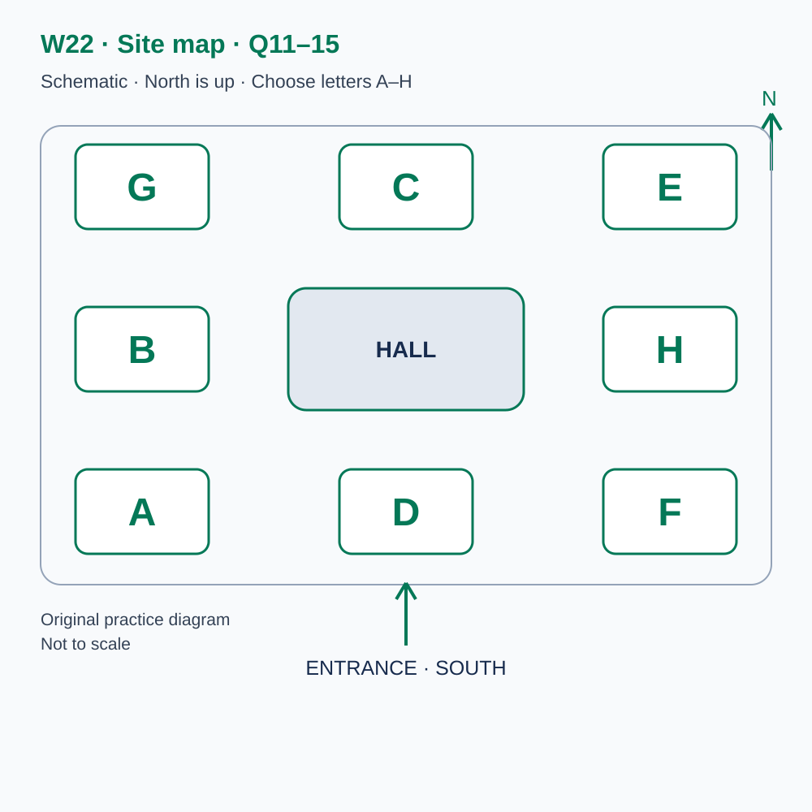
Q11. Reception
Answer: ____
Q12. Briefing
Answer: ____
Q13. Example display
Answer: ____
Q14. Observation
Answer: ____
Q15. Resources
Answer: ____
Q16. What must a checkpoint response contain?
- A. Only the most favourable total
- B. A finding and a relevant limitation
- C. An official band conversion
Answer: ____
Q17. What should be checked before comparing totals?
- A. Whether the preferred explanation is attractive
- B. Whether the totals look similar
- C. The definitions used in each session
Answer: ____
Q18. How should missing data be handled?
- A. Keep it missing and separate any assumptions
- B. Enter zero automatically
- C. Copy a plausible neighbouring value
Answer: ____
Q19. How should competing explanations be examined?
- A. Select the most familiar explanation
- B. Identify evidence that could distinguish them
- C. Treat a planned test as completed
Answer: ____
Q20. How should first responses and revisions be recorded?
- A. Convert the revised local total into a formal score
- B. Replace the first response after correction
- C. Keep them separate, with local counts correctly labelled
Answer: ____
Part 3 — Reviewing a visitor-layout trial
Q21–26: Match each proposal to the students' final positions at the end of that exchange. The tutor is not included. Write A, B, C or D. Letters may be reused.
- A Tess only
- B Noah only
- C Both students
- D Neither student
Q27–28 and Q29–30: Choose TWO different letters, A–E, for each pair. Write one letter in each numbered slot; either order is accepted. Each distinct correct choice earns one point, maximum two. Repeating a letter cannot earn two points. Submit no more than two letters.
Q21. At the END of this exchange, who supports: retaining the fixed outcome definition?
Answer: ____
Q22. At the END of this exchange, who supports: adding a comparison area next?
Answer: ____
Q23. At the END of this exchange, who supports: interviewing visitors next?
Answer: ____
Q24. At the END of this exchange, who supports: claiming that the layout caused every improvement?
Answer: ____
Q25. At the END of this exchange, who supports: leaving missing observations missing?
Answer: ____
Q26. At the END of this exchange, who supports: observing a busy period next?
Answer: ____
Q27–28. Which TWO actions are agreed for the next record?
- A. Preserve the outcome definition
- B. Treat missing data as zero
- C. Delete unexpected observations
- D. Record relevant conditions
- E. Claim a general causal effect
Answers: Q27 ____ · Q28 ____
Q29–30. Which TWO differences limit the session comparison?
- A. A cancelled session
- B. Visitors’ prior experience
- C. Lost records from both sessions
- D. Different admission fees
- E. Weekday versus weekend conditions
Answers: Q29 ____ · Q30 ____
Part 4 — Interpreting a small comparison responsibly
Q31–35: Complete the flow chart below. Q36–40: Complete the notes. Write NO MORE THAN TWO WORDS AND/OR A NUMBER for each answer, using words from the recording. Numeric notation may replace spoken numbers. Words or units already printed do not belong in the blank. The numbered text below repeats the SVG prompts for readability.
Q31. Define the ____ before inspecting results.
Q32. Select the ____ for comparison.
Q33. Prepare the ____ for observers.
Q34. Make a ____ of outcomes and conditions.
Q35. Record the ____ supported by observations.
Q36. Named process in which people choose whether to participate: ____
Q37. Named process of assigning values by a stated rule: ____
Q38. Named term for the competing influence linked to exposure and outcome: ____
Q39. Named term for what would have happened without the change: ____
Q40. State the ____ on the causal claim.
本周训练安排（音频批准后执行）
- Preview questions without the script：8 分钟。
- Future continuous first listen, including planned part pauses：32 分钟。
- Submit first answers and confidence, without a second play：8 分钟。
- Check answers and classify errors：20 分钟。
- Four Q-located intensive segments, 15 minutes each：60 分钟。
- Diagram and opinion retelling：15 分钟。
- Next-day retry of missed items：15 分钟。
合计 158 分钟；最多另用 22 分钟缓冲，总计不超过 180 分钟。暂停、回放与查词均计入精听预算，不能另行无限追加。当前实际已完成听力分钟数为 0。精听区段和步骤见 intensive.md；答案和脚本另页。
参考答案与证据（完成首次听力后再展开）
L-W22 — Answers and evidence
> 独立答案页。先提交首次答案，再看本页。当前缺音频，文本验题不能充当实听验收。
每个单空 1 分；双选各 2 分、答案顺序不限、按不同正确选项计分。接受形式仅做大小写和空白规范化；不做模糊词形推断。
Q1 — evidence comparison
Accepted answers: evidence comparison
Use the final confirmed detail in this exchange; the printed unit or date context is already supplied.
Evidence locator: Q01 (script.md; timestamps unavailable).
> Receptionist: Community research centre, good morning. Organiser: Our volunteers have records from a small exhibition trial and want help comparing them. We saw courses on chart design and evidence comparison. The second sounds closer to our question. Receptionist: Evidence comparison is the appropriate workshop if you want to examine what a difference can support. Organiser: Please book evidence comparison. We don't want someone simply to make the more successful session look impressive. Receptionist: The workshop uses an original local checkpoint to practise interpretation. It doesn't replace a separately required formal assessment, and the exercise's score has no established official conversion. Keep those purposes distinct when describing what the group has completed.
Q2 — 22
Accepted answers: 22 / 22nd / twenty-second / twenty second / the twenty-second / the 22nd
Use the final confirmed detail in this exchange; the printed unit or date context is already supplied.
Evidence locator: Q02 (script.md; timestamps unavailable).
> Organiser: Is the session on the fifteenth of June? Receptionist: That was the first proposed date. The confirmed workshop is on the twenty-second of June. Organiser: The twenty-second suits our group. I'll replace the old entry in the calendar. Receptionist: The confirmation will identify this workshop by name as well as date. Organiser: I'll forward the complete message, because another volunteer saved a notice for the chart course. Receptionist: Good. A practical detail can be correct for one event and wrong for another. Keeping the source attached to the information is useful even before you begin the workshop, rather than combining familiar fragments into a booking that no one actually confirmed.
Q3 — 9:35
Accepted answers: 9:35 / 9.35 / 09:35 / 09.35 / nine thirty-five
Use the final confirmed detail in this exchange; the printed unit or date context is already supplied.
Evidence locator: Q03 (script.md; timestamps unavailable).
> Organiser: When does the teaching begin? Receptionist: Nine thirty-five in the morning. The building opens at nine, but your session begins at nine thirty-five. Organiser: Then nine is not the time of the first exercise. Receptionist: Correct. Please arrive shortly before teaching so you can check in. Organiser: I'll distinguish the start from our planned arrival in the travel note. Receptionist: The opening explanation defines what the local checkpoint will examine. Missing it could leave someone comparing totals without noticing that the task also asks them to state a limitation. A complete response needs to address that requirement, not merely report which number is larger.
Q4 — 3
Accepted answers: 3 / three
Use the final confirmed detail in this exchange; the printed unit or date context is already supplied.
Evidence locator: Q04 (script.md; timestamps unavailable).
> Receptionist: How many places do you need? Organiser: Four volunteers discussed attending, but one cannot come. Please reserve three places. Receptionist: Three are available. Will the participants know how the records were collected? Organiser: Yes. One observed the first session, one managed the second and one prepared the summary. Receptionist: That should help you explain differences in the procedure. Organiser: We'll collect the absent volunteer's questions without counting that person as an attendee. Receptionist: If someone else comes instead, update the booking. A current list helps us organise the discussion and avoid assuming that every participant has the same first-hand knowledge of both observation periods.
Q5 — 57
Accepted answers: 57 / 57.00 / fifty-seven / fifty seven
Use the final confirmed detail in this exchange; the printed unit or date context is already supplied.
Evidence locator: Q05 (script.md; timestamps unavailable).
> Organiser: What is the total fee? Receptionist: Fifty-seven pounds for the three places altogether. Organiser: Fifty-seven for the whole booking, rather than for each person? Receptionist: Correct. That includes the practice materials. A separate visit to your exhibition would be a different arrangement and isn't included. Organiser: I'll tell our coordinator the total and what it covers. Receptionist: Please check those details on the confirmation before payment. If the number of places or amount differs, ask for a correction rather than assume an unexplained change represents extra analysis. Organiser: That will help us keep the booking record consistent with the decision the group actually made.
Q6 — brief
Accepted answers: brief / the brief / a brief
Use the final confirmed detail in this exchange; the printed unit or date context is already supplied.
Evidence locator: Q06 (script.md; timestamps unavailable).
> Organiser: What document is essential? Receptionist: Bring the brief that defined the trial's purpose and requested outputs. A chart of the results is useful but optional. Organiser: I'll bring the brief with any later changes marked separately. Receptionist: Good. We need to know what the comparison was intended to answer before deciding which figures matter. Organiser: Some volunteers remember a broader aim than the written brief contains. Receptionist: Preserve that difference rather than quietly rewriting the document. A later interpretation of the purpose should not be presented as though it governed the original observation. The distinction will make the workshop discussion more precise.
Q7 — B
Accepted answers: B
The local original exercise neither replaces formal assessment nor supplies an official score.
Evidence locator: Q07 (script.md; timestamps unavailable).
> Organiser: Will a strong result in the local checkpoint count as our formal stage assessment? Receptionist: No. The checkpoint is an original teaching exercise. Any separately required formal assessment must have its own appropriate material, conditions and record. Organiser: So we can describe what we answered correctly here without assigning an official band. Receptionist: Exactly. A local count may guide discussion of a skill, but its formal meaning has not been established. Organiser: We'll keep the records separate. Receptionist: That allows the workshop to be useful without claiming more than it provides. Clear scoring alone does not make an original practice set equivalent to an unfamiliar formal assessment.
Q8 — C
Accepted answers: C
The purpose and permission govern use; missing figures remain missing.
Evidence locator: Q08 (script.md; timestamps unavailable).
> Organiser: Can we bring copies of individual visitor responses? Receptionist: Use only material you may share for the workshop purpose and remove identifying details that aren't needed. You can also prepare a summary that preserves the relevant definitions and gaps. Organiser: I'll check the conditions rather than assume possession of a copy permits every use. Receptionist: Thank you. The fictional examples supplied here are enough to learn the method if your own material cannot be shared. Organiser: We should not replace missing observations with made-up figures to make our table complete. Receptionist: Correct. A clearly marked gap preserves information about the evidence that an invented number would conceal.
Q9 — A
Accepted answers: A
Advance arrangements and actual conditions must be recorded.
Evidence locator: Q09 (script.md; timestamps unavailable).
> Organiser: One participant needs an accessible digital version of the examples. Should we request it before the day? Receptionist: Please describe the practical format requirement now so we can check what is available. Organiser: I'll ask the participant for the details rather than guess. Receptionist: Good. A larger printed page may not address the same need. Record the arrangement actually used if it matters to a comparison, without treating all forms of support as identical. Organiser: That makes the conditions easier to interpret later. Receptionist: Exactly. A result becomes more useful when its relevant circumstances are visible, rather than when the record gives an inaccurate impression that everyone encountered precisely the same task.
Q10 — B
Accepted answers: B
The reference identifies the reservation.
Evidence locator: Q10 (script.md; timestamps unavailable).
> Organiser: How should we report a withdrawal? Receptionist: Reply to the current confirmation with its reference. Comments beneath the public programme don't update our attendance record. For an urgent issue, use the contact number in the same message. Organiser: I'll keep the latest complete confirmation in our group folder. Receptionist: It includes the entrance and the required document. Organiser: I'll also remind everyone that the session examines evidence rather than promising a preferred conclusion. Receptionist: That's the right expectation. You may discover that the comparison supports a limited observation and a better next question, rather than the simple explanation the group originally hoped the figures would prove.
Q11 — B
Accepted answers: B
Use the explicitly stated position relative to the hall, not an earlier layout or adjacent area.
Evidence locator: Q11 (script.md; timestamps unavailable).
> Welcome to the research centre. North is at the top of the map, and the entrance is on the southern edge. The hall in the centre is our fixed landmark. Reception is directly west of the hall, level with its centre. It isn't the space directly south that you pass after entering. Please check in at reception before going to the workshop. The letters identify positions, not room initials. If an older plan places an activity elsewhere, follow today's briefing and ask about any inconsistency. A remembered route can be convenient, but it is not a substitute for the current arrangement when the same building hosts several different teaching groups.
Q12 — C
Accepted answers: C
Use the explicitly stated position relative to the hall, not an earlier layout or adjacent area.
Evidence locator: Q12 (script.md; timestamps unavailable).
> The briefing room is directly north of the hall, in the northern central position. An earlier programme put the introduction in the north-west room, but today's briefing uses the space directly north. The first activity asks you to identify a comparison question before inspecting the chart. A striking difference can distract the group from the outcome it originally intended to examine. Keep the brief beside the results so that a convenient number does not silently become the purpose of the study. A comparison may reveal something unexpected, but that should be described as a new observation rather than presented as an answer to a question that was never specified.
Q13 — E
Accepted answers: E
Use the explicitly stated position relative to the hall, not an earlier layout or adjacent area.
Evidence locator: Q13 (script.md; timestamps unavailable).
> The example display is in the north-east corner. It is directly east of the briefing room and north of the space directly east of the hall. The two northern rooms share a row, so the display is east of the briefing room rather than north-east of that room. Several fictional records show how different definitions can produce figures with the same heading. Read the definition before comparing values. Two columns labelled completion may concern different tasks or different points in a sequence. The display is intended to make those distinctions visible, not to supply one attractive chart that every group should copy regardless of what its own information represents.
Q14 — F
Accepted answers: F
Use the explicitly stated position relative to the hall, not an earlier layout or adjacent area.
Evidence locator: Q14 (script.md; timestamps unavailable).
> The observation room is in the south-east corner. It lies south of the space directly east of the hall and east of the southern central room. Groups use it to examine a short fictional visitor task. Record what the visitor does before deciding why it happened. A pause may reflect reading, waiting or uncertainty, and the action alone may not settle the explanation. If an observer gives help, note the timing and content of that help. The eventual outcome should then be interpreted in relation to it. An accurate account of support is more informative than a simple success label that makes an assisted response appear independent.
Q15 — A
Accepted answers: A
Use the explicitly stated position relative to the hall, not an earlier layout or adjacent area.
Evidence locator: Q15 (script.md; timestamps unavailable).
> The resource desk is in the south-west corner. It is directly south of reception and west of the southern central room. Collect the worksheet version named in the briefing. The sheets distinguish observations, possible explanations and proposed next steps, so check the headings rather than filling a familiar table from memory. If a page is missing, ask the helper instead of copying another group's completed interpretation. The resource desk supplies the materials but does not choose the conclusion for you. A well-supported uncertainty is acceptable when the records don't distinguish competing accounts. The task is to explain the evidence clearly, not to invent certainty simply because every row has a blank to fill.
Q16 — B
Accepted answers: B
A supported observation must retain the relevant limit.
Evidence locator: Q16 (script.md; timestamps unavailable).
> The local checkpoint requires both a finding and a limitation. Reporting that one count is higher does not complete the task if the instruction also asks what the comparison cannot establish. Begin by identifying the required outputs and the stated word limit. Additional background may be interesting but can displace the qualification that gives the finding its proper scope. The review will examine the response against this brief, not against a different task that seems easier to answer. This is an original teaching activity. Its structured instructions make the work inspectable, but they do not give its score an official interpretation or replace a separate formal assessment requirement.
Q17 — C
Accepted answers: C
Measures with different meanings cannot be silently treated as identical.
Evidence locator: Q17 (script.md; timestamps unavailable).
> Check definitions before comparing results. If one session records arrival and another records completed visits, the totals answer different questions even if they appear in matching columns. The team should describe the start and end of the measure, the relevant period and any exclusions. A precise calculation cannot repair an undefined outcome. Where the records cannot support a direct comparison, state the mismatch rather than hide it in a note after a strong conclusion. That does not make the observations useless. It clarifies what can be described now and what a later collection would need to preserve before the team could ask a more specific question about change.
Q18 — A
Accepted answers: A
An absent observation is not an observed zero.
Evidence locator: Q18 (script.md; timestamps unavailable).
> Keep missing information visible. A blank observation is not automatically a zero, and replacing it with a convenient value would create evidence the trial did not produce. The group may discuss a clearly labelled analytical assumption, but it should distinguish that choice from a recorded fact. The local checkpoint asks you to explain the basis for a conclusion, including relevant gaps. A complete-looking table can be less informative than an honest incomplete one if it conceals uncertainty. If the group decides that another observation is needed, record that as planned work rather than placing an imagined result in the current comparison and treating the question as settled.
Q19 — B
Accepted answers: B
A discriminating observation is needed; its proposal is not a result.
Evidence locator: Q19 (script.md; timestamps unavailable).
> When two explanations remain plausible, identify what evidence would help distinguish them. A new layout might affect how visitors move, but a different visitor group or a changed schedule could also contribute to the result. Simply repeating the higher count more confidently does not resolve those alternatives. The team should connect a proposed next study with a specific uncertainty. It needn't investigate every imaginable cause before making any practical decision, but it should explain why the selected next step is relevant. A limited trial can support a cautious improvement while leaving a stronger causal claim unresolved, provided the report keeps those levels of conclusion distinct.
Q20 — C
Accepted answers: C
Revision and local performance must not be mislabelled as first-response or formal results.
Evidence locator: Q20 (script.md; timestamps unavailable).
> At the end, preserve the first response and record any later revision separately. An original checkpoint can show what was produced under its stated conditions, while a corrected answer can show what changed after feedback. Neither should be used to stand in for a formal assessment that has not occurred. The review should retain the source, timing and help received so the record remains interpretable. A high local correct count may be encouraging, but it does not establish an official result or readiness for a separate test. The next decision should be supported by the evidence actually available, with missing formal evidence left explicitly unverified.
Q21 — C
Accepted answers: C
Final stance: Both students. Ignore an initial proposal if later withdrawn; the tutor is not an answer option.
Evidence locator: Q21 (script.md; timestamps unavailable).
> Tutor: You reviewed the two visitor sessions last week. Should the outcome definition remain fixed for the next comparison? Tess: Yes. If completion means something different after the change, the totals won't answer the same question. Noah: I agree. I initially wanted to count any visitor who reached the display, but the brief specifies a completed information task. Tutor: Are you ruling out collecting another measure? Noah: No, but it would be labelled separately. Tess: That's the distinction I support. Tutor: Then both of you favour retaining the defined outcome for the comparison, while allowing an additional observation to answer a different, clearly identified question.
Q22 — B
Accepted answers: B
Final stance: Noah only. Ignore an initial proposal if later withdrawn; the tutor is not an answer option.
Evidence locator: Q22 (script.md; timestamps unavailable).
> Tutor: Noah proposes adding a comparison area that keeps the old layout. Noah: I support it. That could help us examine whether the change is specific to the redesigned area. Tess: I'd improve the records in the current area first. The other space may attract different visitors for reasons we can't measure well. Tutor: Would an exploratory label change your position? Tess: It would make the limitation clearer, but I still prefer to defer it. Noah: I continue to favour adding the area next. Tutor: Then Noah supports the specific proposal and Tess doesn't support it for this stage, even though both recognise that comparisons can be useful when their differences are recorded.
Q23 — A
Accepted answers: A
Final stance: Tess only. Ignore an initial proposal if later withdrawn; the tutor is not an answer option.
Evidence locator: Q23 (script.md; timestamps unavailable).
> Tutor: Tess suggests interviewing a few visitors after the task. Tess: Yes. Their explanations could help us understand whether a pause reflected reading or uncertainty about the next action. Noah: I'd first use the observation notes. An interview may introduce memories shaped by the outcome rather than the decision at the time. Tutor: Could you make that limitation explicit? Tess: Certainly, and I still support the interview. Noah: I understand, but for the next trial I would leave it out. Tutor: Then Tess supports that additional source and Noah prefers another sequence. The disagreement concerns what to collect next, not whether a visitor's account could ever contribute to a careful interpretation.
Q24 — D
Accepted answers: D
Final stance: Neither student. Ignore an initial proposal if later withdrawn; the tutor is not an answer option.
Evidence locator: Q24 (script.md; timestamps unavailable).
> Tutor: Your draft report says the new layout caused every improvement. Noah: I wrote that before checking the differences between the sessions. I don't think we can defend it now. Tess: I don't support the statement either. The visitor groups and the day of observation changed. Noah: I'll replace the causal claim with the observed difference and its limitations. Tutor: Does either of you want to keep the original sentence as a summary? Tess: No. A shorter sentence doesn't justify a stronger claim than the evidence supports. Noah: Agreed. Tutor: Then neither student supports the original explanation, even though it appeared confidently in an earlier version of the report.
Q25 — C
Accepted answers: C
Final stance: Both students. Ignore an initial proposal if later withdrawn; the tutor is not an answer option.
Evidence locator: Q25 (script.md; timestamps unavailable).
> Tutor: Should missing observations remain marked as missing? Tess: Yes. A blank doesn't tell us that no event occurred. Noah: I agree. I initially thought zero would make the table easier to calculate, but that would change the meaning of the record. Tutor: Could you discuss an assumption separately? Noah: Yes, provided it is labelled and its effect examined rather than presented as observed data. Tess: That is the approach I support. Tutor: Then both of you favour preserving the missing status in the record. A convenient calculation is not a reason to turn an absence of information into a fact the trial never established.
Q26 — B
Accepted answers: B
Final stance: Noah only. Ignore an initial proposal if later withdrawn; the tutor is not an answer option.
Evidence locator: Q26 (script.md; timestamps unavailable).
> Tutor: Noah wants another session during a busy period. Noah: I support that. Both completed observations were relatively quiet, so we don't know whether the same difficulty appears when more people arrive. Tess: I'd first repeat a quiet session using the revised definitions, so we can check the procedure before changing demand. Tutor: Could the busy session be treated as a different question? Noah: Yes, and I still favour it next. Tess: I would keep it for later. Tutor: Then Noah supports the busy-period observation and Tess doesn't support that timing for the next stage. Preserve the order you each propose rather than report agreement merely because both activities might eventually be useful.
Q27–28 — A, D
Accept unordered set: A, D. One point per distinct correct choice, maximum 2.
They retain the outcome definition and record conditions.
Evidence locator: Q27, Q28 (script.md; timestamps unavailable).
> Tutor: Which two preparation actions are agreed? Tess: Preserve the outcome definition in the next observation sheet. Noah: Agreed. The record should identify exactly what counts as completion, including the point at which the observer marks it. Tutor: Are you selecting a universal target score for the workshop? Noah: No. That would not help define this measure. Tess: Nor should we alter the definition afterwards to make a preferred result easier to report. Tutor: Then the first agreed action concerns the meaning of the outcome. Keep that meaning with the numbers so a later reader can understand what was counted rather than infer it from an attractive heading.
> Tutor: What is the second preparation action? Noah: Record the conditions that could affect the comparison, including the schedule and relevant visitor characteristics. Tess: Yes. We don't need unnecessary personal details, but the conditions must be clear enough to explain the scope of the observation. Tutor: Does that include inventing a value for every missing field? Tess: No. Unknown information stays unknown. Noah: We also don't need to rank the volunteers by the neatness of their charts. Tutor: Good. The two selected actions are preserving the outcome definition and recording relevant conditions. Both support interpretation of the actual comparison rather than decorating a result before its meaning has been checked.
Q29–30 — B, E
Accept unordered set: B, E. One point per distinct correct choice, maximum 2.
Visitor experience and weekday/weekend conditions remain alternative influences.
Evidence locator: Q29, Q30 (script.md; timestamps unavailable).
> Tutor: What limits the comparison already completed? Noah: The visitor groups differed in previous experience with the exhibition. Tess: Some people in the second session knew the task from an earlier visit, which may have affected completion. Tutor: Were records from the whole first session lost? Tess: No. The records are available. The limitation concerns who participated, not a missing event. Noah: We should describe that difference rather than assume that equal group sizes make the groups equivalent. Tutor: That will help the report distinguish what happened in these sessions from a claim about how any new visitor would respond to the revised layout under otherwise identical conditions.
> Tutor: Was the observation period comparable? Tess: One session was on a weekday and the other at the weekend. The surrounding activities and arrival pattern differed. Noah: That gives another possible contribution to the result besides the layout. Tutor: Does that mean the redesign had no effect? Noah: No. It means this comparison doesn't isolate its effect. Tess: Neither session was cancelled and the pages weren't incomplete. Tutor: Then retain the differences in visitor experience and observation period as the two limitations. The report can still state the observed pattern, provided it doesn't quietly convert a qualified comparison into proof of a single cause that the design cannot separate from the alternatives.
Q31 — question
Accepted answers: question / research question / focused question
Complete the named stage in the stated process order; retain any word already printed around the blank.
Evidence locator: Q31 (script.md; timestamps unavailable).
> Consider a fictional team evaluating an exhibition change. The first stage defines a research question. This focused question identifies the outcome and comparison the team intends to examine. It should not be chosen only after a striking result has appeared in the table. A question about completing an information task differs from a question about how long visitors remain in the room, even when both can be observed during one visit. The team may investigate both, but each needs a clear purpose. Defining the question keeps the later report connected to the enquiry that guided collection, while allowing unexpected observations to be recorded as new questions rather than disguised as planned findings.
Q32 — sample
Accepted answers: sample / visitor sample / selected sample
Complete the named stage in the stated process order; retain any word already printed around the blank.
Evidence locator: Q32 (script.md; timestamps unavailable).
> The second stage selects a visitor sample. The sample must be described in terms relevant to the comparison, such as prior exposure to the exhibition and the time of attendance. A small sample can support useful local observation, but it should not be treated as though it automatically represents every future visitor. The team records who could enter the sample and how participation occurred. Those details matter even when the selected sample contains the same number of people in each session. Equal counts do not establish equivalent experience, needs or conditions. This stage therefore concerns the basis of the comparison, not merely filling two columns with matching totals before the analysis begins.
Q33 — protocol
Accepted answers: protocol / written protocol / procedure / written procedure
Complete the named stage in the stated process order; retain any word already printed around the blank.
Evidence locator: Q33 (script.md; timestamps unavailable).
> The third stage prepares a written protocol. The protocol is the procedure the observers will follow, including definitions, recording points and the handling of missing information. A written procedure makes it possible to examine whether the two sessions were conducted in comparable ways. It should be specific enough to guide a decision without pretending that every unexpected event can be predicted. If the procedure changes, the change belongs in the record. A later report should not describe a revised method as though it governed an earlier session. Keeping the protocol identifiable allows the team to distinguish a difference in the observed process from a difference in how that process was recorded.
Q34 — comparison
Accepted answers: comparison / structured comparison / contrast / direct contrast
Complete the named stage in the stated process order; retain any word already printed around the blank.
Evidence locator: Q34 (script.md; timestamps unavailable).
> The fourth stage makes a structured comparison. The comparison examines the outcome alongside the relevant conditions rather than treating two totals as self-explanatory. The team checks whether the measures use the same definitions and whether the groups encountered comparable demands. Where the information cannot support a direct contrast, the mismatch remains visible. This does not require abandoning every useful description. It requires explaining what the contrast actually represents. A structured comparison may identify an unresolved alternative that the original plan did not consider. That is a reason to qualify the next claim and refine the enquiry, rather than hide the difference because it complicates an otherwise tidy account of improvement.
Q35 — interpretation
Accepted answers: interpretation / qualified interpretation / explanation
Complete the named stage in the stated process order; retain any word already printed around the blank.
Evidence locator: Q35 (script.md; timestamps unavailable).
> The fifth stage records an interpretation supported by the observations. This qualified interpretation connects the pattern with an explanation while preserving alternatives the design cannot rule out. The explanation should not become certain merely because it is plausible or because the team prefers it. A small trial may justify retaining a feature for further investigation without establishing a general causal conclusion. The report should identify the observation, the reasoning and the limit as related but distinct parts of the account. A reader can then see what the evidence supports now and what another study would need to examine before the team could responsibly make a stronger statement about the change.
Q36 — self-selection
Accepted answers: self-selection / self selection
The corresponding evidence block supplies this distinction or qualification; the question retains the surrounding grammar.
Evidence locator: Q36 (script.md; timestamps unavailable).
> The named selection process in which people decide for themselves whether to participate is self-selection. In this fictional example, visitors who volunteer for a task may differ from those who pass through without joining. That difference could concern familiarity, interest or available time. The term identifies the entry process, not a conclusion that every voluntary sample is useless. The team should describe how participation occurred and consider which claims the resulting sample can support. A larger number does not automatically remove the issue if entry follows the same process. The review can still use the observations while keeping the relation between the participating group and the wider audience explicit.
Q37 — measurement
Accepted answers: measurement
The corresponding evidence block supplies this distinction or qualification; the question retains the surrounding grammar.
Evidence locator: Q37 (script.md; timestamps unavailable).
> Measurement is the named process of assigning a recorded value according to a stated rule. In this example, the rule determines when a visitor's task begins, when it ends and what counts as completion. Changing those boundaries can change the number even if the visitor's experience remains similar. The team therefore checks the procedure as well as the value in the table. Precision in recording is useful only when the measure has a clear meaning. A result written to several decimal places does not establish that two sessions used compatible definitions. The review asks what was measured and how, before treating the numerical difference as evidence about the exhibition itself.
Q38 — confounder
Accepted answers: confounder / confounding factor / possible confounder
The corresponding evidence block supplies this distinction or qualification; the question retains the surrounding grammar.
Evidence locator: Q38 (script.md; timestamps unavailable).
> A competing influence associated with both the exposure being studied and the outcome is called a confounder here. The lecture also uses the term confounding factor for that same role. In the fictional comparison, a difference in visitor experience could affect both which session people attended and how they completed the task. The team should examine the proposed connection rather than attach the label to every difference it notices. A possible confounder is a reason to qualify a causal claim and improve the next design. It does not by itself prove that the preferred explanation is false or identify exactly how much of the observed difference belongs to the competing influence.
Q39 — counterfactual
Accepted answers: counterfactual
The corresponding evidence block supplies this distinction or qualification; the question retains the surrounding grammar.
Evidence locator: Q39 (script.md; timestamps unavailable).
> The named term for what would have happened without the change is the counterfactual. The same people cannot be observed both with and without that change at the same moment under otherwise identical conditions. A comparison or model therefore supports reasoning about the alternative, with assumptions that need to remain visible. A convenient group is not automatically a perfect substitute for the unobserved situation. The team should explain the important similarities and differences rather than rely on the appearance of two matching columns. The concept sharpens the causal question, but naming it does not give a small local trial information that its design and records do not actually contain.
Q40 — limitations
Accepted answers: limitations / relevant limitations
The corresponding evidence block supplies this distinction or qualification; the question retains the surrounding grammar.
Evidence locator: Q40 (script.md; timestamps unavailable).
> Before claiming that the layout caused the observed difference, the team states the relevant limitations. Limitations identify what the comparison cannot establish and why. They should refer to the actual task, sample and conditions rather than operate as a generic apology for having limited time. A narrow but well-supported observation can still inform a useful next action. The review may propose another session, a clearer definition or a different source of evidence. Those are plans, not results already obtained. The original checkpoint assesses whether the response makes that distinction; it does not replace formal assessment, provide an official score conversion or establish a learner's readiness from the local correct count alone.
完整脚本（提前阅读会失去陌生题首答机会）
L-W22 — An original checkpoint in comparing evidence: transcript
> 原创虚构练习，非真题；音频缺失。仅供完成首次作答后的核对或文字审阅。Q 标记与角色名不属于朗读正文。
Part 1 — Booking a comparison workshop
Q1 evidence block
Receptionist: Community research centre, good morning.
Organiser: Our volunteers have records from a small exhibition trial and want help comparing them. We saw courses on chart design and evidence comparison. The second sounds closer to our question.
Receptionist: Evidence comparison is the appropriate workshop if you want to examine what a difference can support.
Organiser: Please book evidence comparison. We don't want someone simply to make the more successful session look impressive.
Receptionist: The workshop uses an original local checkpoint to practise interpretation. It doesn't replace a separately required formal assessment, and the exercise's score has no established official conversion. Keep those purposes distinct when describing what the group has completed.
Q2 evidence block
Organiser: Is the session on the fifteenth of June?
Receptionist: That was the first proposed date. The confirmed workshop is on the twenty-second of June.
Organiser: The twenty-second suits our group. I'll replace the old entry in the calendar.
Receptionist: The confirmation will identify this workshop by name as well as date.
Organiser: I'll forward the complete message, because another volunteer saved a notice for the chart course.
Receptionist: Good. A practical detail can be correct for one event and wrong for another. Keeping the source attached to the information is useful even before you begin the workshop, rather than combining familiar fragments into a booking that no one actually confirmed.
Q3 evidence block
Organiser: When does the teaching begin?
Receptionist: Nine thirty-five in the morning. The building opens at nine, but your session begins at nine thirty-five.
Organiser: Then nine is not the time of the first exercise.
Receptionist: Correct. Please arrive shortly before teaching so you can check in.
Organiser: I'll distinguish the start from our planned arrival in the travel note.
Receptionist: The opening explanation defines what the local checkpoint will examine. Missing it could leave someone comparing totals without noticing that the task also asks them to state a limitation. A complete response needs to address that requirement, not merely report which number is larger.
Q4 evidence block
Receptionist: How many places do you need?
Organiser: Four volunteers discussed attending, but one cannot come. Please reserve three places.
Receptionist: Three are available. Will the participants know how the records were collected?
Organiser: Yes. One observed the first session, one managed the second and one prepared the summary.
Receptionist: That should help you explain differences in the procedure.
Organiser: We'll collect the absent volunteer's questions without counting that person as an attendee.
Receptionist: If someone else comes instead, update the booking. A current list helps us organise the discussion and avoid assuming that every participant has the same first-hand knowledge of both observation periods.
Q5 evidence block
Organiser: What is the total fee?
Receptionist: Fifty-seven pounds for the three places altogether.
Organiser: Fifty-seven for the whole booking, rather than for each person?
Receptionist: Correct. That includes the practice materials. A separate visit to your exhibition would be a different arrangement and isn't included.
Organiser: I'll tell our coordinator the total and what it covers.
Receptionist: Please check those details on the confirmation before payment. If the number of places or amount differs, ask for a correction rather than assume an unexplained change represents extra analysis.
Organiser: That will help us keep the booking record consistent with the decision the group actually made.
Q6 evidence block
Organiser: What document is essential?
Receptionist: Bring the brief that defined the trial's purpose and requested outputs. A chart of the results is useful but optional.
Organiser: I'll bring the brief with any later changes marked separately.
Receptionist: Good. We need to know what the comparison was intended to answer before deciding which figures matter.
Organiser: Some volunteers remember a broader aim than the written brief contains.
Receptionist: Preserve that difference rather than quietly rewriting the document. A later interpretation of the purpose should not be presented as though it governed the original observation. The distinction will make the workshop discussion more precise.
Q7 evidence block
Organiser: Will a strong result in the local checkpoint count as our formal stage assessment?
Receptionist: No. The checkpoint is an original teaching exercise. Any separately required formal assessment must have its own appropriate material, conditions and record.
Organiser: So we can describe what we answered correctly here without assigning an official band.
Receptionist: Exactly. A local count may guide discussion of a skill, but its formal meaning has not been established.
Organiser: We'll keep the records separate.
Receptionist: That allows the workshop to be useful without claiming more than it provides. Clear scoring alone does not make an original practice set equivalent to an unfamiliar formal assessment.
Q8 evidence block
Organiser: Can we bring copies of individual visitor responses?
Receptionist: Use only material you may share for the workshop purpose and remove identifying details that aren't needed. You can also prepare a summary that preserves the relevant definitions and gaps.
Organiser: I'll check the conditions rather than assume possession of a copy permits every use.
Receptionist: Thank you. The fictional examples supplied here are enough to learn the method if your own material cannot be shared.
Organiser: We should not replace missing observations with made-up figures to make our table complete.
Receptionist: Correct. A clearly marked gap preserves information about the evidence that an invented number would conceal.
Q9 evidence block
Organiser: One participant needs an accessible digital version of the examples. Should we request it before the day?
Receptionist: Please describe the practical format requirement now so we can check what is available.
Organiser: I'll ask the participant for the details rather than guess.
Receptionist: Good. A larger printed page may not address the same need. Record the arrangement actually used if it matters to a comparison, without treating all forms of support as identical.
Organiser: That makes the conditions easier to interpret later.
Receptionist: Exactly. A result becomes more useful when its relevant circumstances are visible, rather than when the record gives an inaccurate impression that everyone encountered precisely the same task.
Q10 evidence block
Organiser: How should we report a withdrawal?
Receptionist: Reply to the current confirmation with its reference. Comments beneath the public programme don't update our attendance record. For an urgent issue, use the contact number in the same message.
Organiser: I'll keep the latest complete confirmation in our group folder.
Receptionist: It includes the entrance and the required document.
Organiser: I'll also remind everyone that the session examines evidence rather than promising a preferred conclusion.
Receptionist: That's the right expectation. You may discover that the comparison supports a limited observation and a better next question, rather than the simple explanation the group originally hoped the figures would prove.
Part 2 — Orientation at the research centre
Q11 evidence block
Centre host: Welcome to the research centre. North is at the top of the map, and the entrance is on the southern edge. The hall in the centre is our fixed landmark. Reception is directly west of the hall, level with its centre. It isn't the space directly south that you pass after entering. Please check in at reception before going to the workshop. The letters identify positions, not room initials. If an older plan places an activity elsewhere, follow today's briefing and ask about any inconsistency. A remembered route can be convenient, but it is not a substitute for the current arrangement when the same building hosts several different teaching groups.
Q12 evidence block
Centre host: The briefing room is directly north of the hall, in the northern central position. An earlier programme put the introduction in the north-west room, but today's briefing uses the space directly north. The first activity asks you to identify a comparison question before inspecting the chart. A striking difference can distract the group from the outcome it originally intended to examine. Keep the brief beside the results so that a convenient number does not silently become the purpose of the study. A comparison may reveal something unexpected, but that should be described as a new observation rather than presented as an answer to a question that was never specified.
Q13 evidence block
Centre host: The example display is in the north-east corner. It is directly east of the briefing room and north of the space directly east of the hall. The two northern rooms share a row, so the display is east of the briefing room rather than north-east of that room. Several fictional records show how different definitions can produce figures with the same heading. Read the definition before comparing values. Two columns labelled completion may concern different tasks or different points in a sequence. The display is intended to make those distinctions visible, not to supply one attractive chart that every group should copy regardless of what its own information represents.
Q14 evidence block
Centre host: The observation room is in the south-east corner. It lies south of the space directly east of the hall and east of the southern central room. Groups use it to examine a short fictional visitor task. Record what the visitor does before deciding why it happened. A pause may reflect reading, waiting or uncertainty, and the action alone may not settle the explanation. If an observer gives help, note the timing and content of that help. The eventual outcome should then be interpreted in relation to it. An accurate account of support is more informative than a simple success label that makes an assisted response appear independent.
Q15 evidence block
Centre host: The resource desk is in the south-west corner. It is directly south of reception and west of the southern central room. Collect the worksheet version named in the briefing. The sheets distinguish observations, possible explanations and proposed next steps, so check the headings rather than filling a familiar table from memory. If a page is missing, ask the helper instead of copying another group's completed interpretation. The resource desk supplies the materials but does not choose the conclusion for you. A well-supported uncertainty is acceptable when the records don't distinguish competing accounts. The task is to explain the evidence clearly, not to invent certainty simply because every row has a blank to fill.
Q16 evidence block
Centre host: The local checkpoint requires both a finding and a limitation. Reporting that one count is higher does not complete the task if the instruction also asks what the comparison cannot establish. Begin by identifying the required outputs and the stated word limit. Additional background may be interesting but can displace the qualification that gives the finding its proper scope. The review will examine the response against this brief, not against a different task that seems easier to answer. This is an original teaching activity. Its structured instructions make the work inspectable, but they do not give its score an official interpretation or replace a separate formal assessment requirement.
Q17 evidence block
Centre host: Check definitions before comparing results. If one session records arrival and another records completed visits, the totals answer different questions even if they appear in matching columns. The team should describe the start and end of the measure, the relevant period and any exclusions. A precise calculation cannot repair an undefined outcome. Where the records cannot support a direct comparison, state the mismatch rather than hide it in a note after a strong conclusion. That does not make the observations useless. It clarifies what can be described now and what a later collection would need to preserve before the team could ask a more specific question about change.
Q18 evidence block
Centre host: Keep missing information visible. A blank observation is not automatically a zero, and replacing it with a convenient value would create evidence the trial did not produce. The group may discuss a clearly labelled analytical assumption, but it should distinguish that choice from a recorded fact. The local checkpoint asks you to explain the basis for a conclusion, including relevant gaps. A complete-looking table can be less informative than an honest incomplete one if it conceals uncertainty. If the group decides that another observation is needed, record that as planned work rather than placing an imagined result in the current comparison and treating the question as settled.
Q19 evidence block
Centre host: When two explanations remain plausible, identify what evidence would help distinguish them. A new layout might affect how visitors move, but a different visitor group or a changed schedule could also contribute to the result. Simply repeating the higher count more confidently does not resolve those alternatives. The team should connect a proposed next study with a specific uncertainty. It needn't investigate every imaginable cause before making any practical decision, but it should explain why the selected next step is relevant. A limited trial can support a cautious improvement while leaving a stronger causal claim unresolved, provided the report keeps those levels of conclusion distinct.
Q20 evidence block
Centre host: At the end, preserve the first response and record any later revision separately. An original checkpoint can show what was produced under its stated conditions, while a corrected answer can show what changed after feedback. Neither should be used to stand in for a formal assessment that has not occurred. The review should retain the source, timing and help received so the record remains interpretable. A high local correct count may be encouraging, but it does not establish an official result or readiness for a separate test. The next decision should be supported by the evidence actually available, with missing formal evidence left explicitly unverified.
Part 3 — Reviewing a visitor-layout trial
Q21 evidence block
Tutor: You reviewed the two visitor sessions last week. Should the outcome definition remain fixed for the next comparison?
Tess: Yes. If completion means something different after the change, the totals won't answer the same question.
Noah: I agree. I initially wanted to count any visitor who reached the display, but the brief specifies a completed information task.
Tutor: Are you ruling out collecting another measure?
Noah: No, but it would be labelled separately.
Tess: That's the distinction I support.
Tutor: Then both of you favour retaining the defined outcome for the comparison, while allowing an additional observation to answer a different, clearly identified question.
Q22 evidence block
Tutor: Noah proposes adding a comparison area that keeps the old layout.
Noah: I support it. That could help us examine whether the change is specific to the redesigned area.
Tess: I'd improve the records in the current area first. The other space may attract different visitors for reasons we can't measure well.
Tutor: Would an exploratory label change your position?
Tess: It would make the limitation clearer, but I still prefer to defer it.
Noah: I continue to favour adding the area next.
Tutor: Then Noah supports the specific proposal and Tess doesn't support it for this stage, even though both recognise that comparisons can be useful when their differences are recorded.
Q23 evidence block
Tutor: Tess suggests interviewing a few visitors after the task.
Tess: Yes. Their explanations could help us understand whether a pause reflected reading or uncertainty about the next action.
Noah: I'd first use the observation notes. An interview may introduce memories shaped by the outcome rather than the decision at the time.
Tutor: Could you make that limitation explicit?
Tess: Certainly, and I still support the interview.
Noah: I understand, but for the next trial I would leave it out.
Tutor: Then Tess supports that additional source and Noah prefers another sequence. The disagreement concerns what to collect next, not whether a visitor's account could ever contribute to a careful interpretation.
Q24 evidence block
Tutor: Your draft report says the new layout caused every improvement.
Noah: I wrote that before checking the differences between the sessions. I don't think we can defend it now.
Tess: I don't support the statement either. The visitor groups and the day of observation changed.
Noah: I'll replace the causal claim with the observed difference and its limitations.
Tutor: Does either of you want to keep the original sentence as a summary?
Tess: No. A shorter sentence doesn't justify a stronger claim than the evidence supports.
Noah: Agreed.
Tutor: Then neither student supports the original explanation, even though it appeared confidently in an earlier version of the report.
Q25 evidence block
Tutor: Should missing observations remain marked as missing?
Tess: Yes. A blank doesn't tell us that no event occurred.
Noah: I agree. I initially thought zero would make the table easier to calculate, but that would change the meaning of the record.
Tutor: Could you discuss an assumption separately?
Noah: Yes, provided it is labelled and its effect examined rather than presented as observed data.
Tess: That is the approach I support.
Tutor: Then both of you favour preserving the missing status in the record. A convenient calculation is not a reason to turn an absence of information into a fact the trial never established.
Q26 evidence block
Tutor: Noah wants another session during a busy period.
Noah: I support that. Both completed observations were relatively quiet, so we don't know whether the same difficulty appears when more people arrive.
Tess: I'd first repeat a quiet session using the revised definitions, so we can check the procedure before changing demand.
Tutor: Could the busy session be treated as a different question?
Noah: Yes, and I still favour it next.
Tess: I would keep it for later.
Tutor: Then Noah supports the busy-period observation and Tess doesn't support that timing for the next stage. Preserve the order you each propose rather than report agreement merely because both activities might eventually be useful.
Q27 evidence block
Tutor: Which two preparation actions are agreed?
Tess: Preserve the outcome definition in the next observation sheet.
Noah: Agreed. The record should identify exactly what counts as completion, including the point at which the observer marks it.
Tutor: Are you selecting a universal target score for the workshop?
Noah: No. That would not help define this measure.
Tess: Nor should we alter the definition afterwards to make a preferred result easier to report.
Tutor: Then the first agreed action concerns the meaning of the outcome. Keep that meaning with the numbers so a later reader can understand what was counted rather than infer it from an attractive heading.
Q28 evidence block
Tutor: What is the second preparation action?
Noah: Record the conditions that could affect the comparison, including the schedule and relevant visitor characteristics.
Tess: Yes. We don't need unnecessary personal details, but the conditions must be clear enough to explain the scope of the observation.
Tutor: Does that include inventing a value for every missing field?
Tess: No. Unknown information stays unknown.
Noah: We also don't need to rank the volunteers by the neatness of their charts.
Tutor: Good. The two selected actions are preserving the outcome definition and recording relevant conditions. Both support interpretation of the actual comparison rather than decorating a result before its meaning has been checked.
Q29 evidence block
Tutor: What limits the comparison already completed?
Noah: The visitor groups differed in previous experience with the exhibition.
Tess: Some people in the second session knew the task from an earlier visit, which may have affected completion.
Tutor: Were records from the whole first session lost?
Tess: No. The records are available. The limitation concerns who participated, not a missing event.
Noah: We should describe that difference rather than assume that equal group sizes make the groups equivalent.
Tutor: That will help the report distinguish what happened in these sessions from a claim about how any new visitor would respond to the revised layout under otherwise identical conditions.
Q30 evidence block
Tutor: Was the observation period comparable?
Tess: One session was on a weekday and the other at the weekend. The surrounding activities and arrival pattern differed.
Noah: That gives another possible contribution to the result besides the layout.
Tutor: Does that mean the redesign had no effect?
Noah: No. It means this comparison doesn't isolate its effect.
Tess: Neither session was cancelled and the pages weren't incomplete.
Tutor: Then retain the differences in visitor experience and observation period as the two limitations. The report can still state the observed pattern, provided it doesn't quietly convert a qualified comparison into proof of a single cause that the design cannot separate from the alternatives.
Part 4 — Interpreting a small comparison responsibly
Q31 evidence block
Lecturer: Consider a fictional team evaluating an exhibition change. The first stage defines a research question. This focused question identifies the outcome and comparison the team intends to examine. It should not be chosen only after a striking result has appeared in the table. A question about completing an information task differs from a question about how long visitors remain in the room, even when both can be observed during one visit. The team may investigate both, but each needs a clear purpose. Defining the question keeps the later report connected to the enquiry that guided collection, while allowing unexpected observations to be recorded as new questions rather than disguised as planned findings.
Q32 evidence block
Lecturer: The second stage selects a visitor sample. The sample must be described in terms relevant to the comparison, such as prior exposure to the exhibition and the time of attendance. A small sample can support useful local observation, but it should not be treated as though it automatically represents every future visitor. The team records who could enter the sample and how participation occurred. Those details matter even when the selected sample contains the same number of people in each session. Equal counts do not establish equivalent experience, needs or conditions. This stage therefore concerns the basis of the comparison, not merely filling two columns with matching totals before the analysis begins.
Q33 evidence block
Lecturer: The third stage prepares a written protocol. The protocol is the procedure the observers will follow, including definitions, recording points and the handling of missing information. A written procedure makes it possible to examine whether the two sessions were conducted in comparable ways. It should be specific enough to guide a decision without pretending that every unexpected event can be predicted. If the procedure changes, the change belongs in the record. A later report should not describe a revised method as though it governed an earlier session. Keeping the protocol identifiable allows the team to distinguish a difference in the observed process from a difference in how that process was recorded.
Q34 evidence block
Lecturer: The fourth stage makes a structured comparison. The comparison examines the outcome alongside the relevant conditions rather than treating two totals as self-explanatory. The team checks whether the measures use the same definitions and whether the groups encountered comparable demands. Where the information cannot support a direct contrast, the mismatch remains visible. This does not require abandoning every useful description. It requires explaining what the contrast actually represents. A structured comparison may identify an unresolved alternative that the original plan did not consider. That is a reason to qualify the next claim and refine the enquiry, rather than hide the difference because it complicates an otherwise tidy account of improvement.
Q35 evidence block
Lecturer: The fifth stage records an interpretation supported by the observations. This qualified interpretation connects the pattern with an explanation while preserving alternatives the design cannot rule out. The explanation should not become certain merely because it is plausible or because the team prefers it. A small trial may justify retaining a feature for further investigation without establishing a general causal conclusion. The report should identify the observation, the reasoning and the limit as related but distinct parts of the account. A reader can then see what the evidence supports now and what another study would need to examine before the team could responsibly make a stronger statement about the change.
Q36 evidence block
Lecturer: The named selection process in which people decide for themselves whether to participate is self-selection. In this fictional example, visitors who volunteer for a task may differ from those who pass through without joining. That difference could concern familiarity, interest or available time. The term identifies the entry process, not a conclusion that every voluntary sample is useless. The team should describe how participation occurred and consider which claims the resulting sample can support. A larger number does not automatically remove the issue if entry follows the same process. The review can still use the observations while keeping the relation between the participating group and the wider audience explicit.
Q37 evidence block
Lecturer: Measurement is the named process of assigning a recorded value according to a stated rule. In this example, the rule determines when a visitor's task begins, when it ends and what counts as completion. Changing those boundaries can change the number even if the visitor's experience remains similar. The team therefore checks the procedure as well as the value in the table. Precision in recording is useful only when the measure has a clear meaning. A result written to several decimal places does not establish that two sessions used compatible definitions. The review asks what was measured and how, before treating the numerical difference as evidence about the exhibition itself.
Q38 evidence block
Lecturer: A competing influence associated with both the exposure being studied and the outcome is called a confounder here. The lecture also uses the term confounding factor for that same role. In the fictional comparison, a difference in visitor experience could affect both which session people attended and how they completed the task. The team should examine the proposed connection rather than attach the label to every difference it notices. A possible confounder is a reason to qualify a causal claim and improve the next design. It does not by itself prove that the preferred explanation is false or identify exactly how much of the observed difference belongs to the competing influence.
Q39 evidence block
Lecturer: The named term for what would have happened without the change is the counterfactual. The same people cannot be observed both with and without that change at the same moment under otherwise identical conditions. A comparison or model therefore supports reasoning about the alternative, with assumptions that need to remain visible. A convenient group is not automatically a perfect substitute for the unobserved situation. The team should explain the important similarities and differences rather than rely on the appearance of two matching columns. The concept sharpens the causal question, but naming it does not give a small local trial information that its design and records do not actually contain.
Q40 evidence block
Lecturer: Before claiming that the layout caused the observed difference, the team states the relevant limitations. Limitations identify what the comparison cannot establish and why. They should refer to the actual task, sample and conditions rather than operate as a generic apology for having limited time. A narrow but well-supported observation can still inform a useful next action. The review may propose another session, a clearer definition or a different source of evidence. Those are plans, not results already obtained. The original checkpoint assesses whether the response makes that distinction; it does not replace formal assessment, provide an official score conversion or establish a learner's readiness from the local correct count alone.
精听与复盘步骤（须有已验收配套音频）
L-W22 — Q-based intensive listening
> 音频尚未生成；以下是未来执行安排，不是已完成记录。不要用文本阅读替代首次听力。无实际时间戳。
周预算：预览 8 + 首听 32 + 交首次答案 8 + 查错 20 + 精听 60 + 复述 15 + 次日重做 15 = 158 分钟。含暂停/回放；加用缓冲最多 22 分钟，总计≤180。
四段各 15 分钟：先定位并不看稿听 2 分钟；分句回放、写关键词 4 分钟；对照稿找误听与改口 3 分钟；遮稿跟读和复述 3 分钟；重答并记录错误原因 3 分钟。不得把同一段回放另算在周预算之外。
Q2–3 — 15 minutes
定位 script.md 的 Q2 evidence block 起至 Q3 evidence block 结束（约 204 词）；音频起止为 null。
目标：核对更正信息和时间角色。
留痕：首次答案 → 听到的原词 → 干扰来源 → 修正答案 → 一句英文复述。
Q13–15 — 15 minutes
定位 script.md 的 Q13 evidence block 起至 Q15 evidence block 结束（约 329 词）；音频起止为 null。
目标：用两个相邻参照确认三个角落。
留痕：首次答案 → 听到的原词 → 干扰来源 → 修正答案 → 一句英文复述。
Q24–25 — 15 minutes
定位 script.md 的 Q24 evidence block 起至 Q25 evidence block 结束（约 199 词）；音频起止为 null。
目标：跟踪撤回因果结论和更改缺失值处理立场。
留痕：首次答案 → 听到的原词 → 干扰来源 → 修正答案 → 一句英文复述。
Q31–35 — 15 minutes
定位 script.md 的 Q31 evidence block 起至 Q35 evidence block 结束（约 555 词）；音频起止为 null。
目标：复述研究问题、样本、方案、比较与解释。
留痕：首次答案 → 听到的原词 → 干扰来源 → 修正答案 → 一句英文复述。
15 分钟复述与 15 分钟次日重做
复述：5 分钟遮住答案口述地图五个位置；5 分钟按人说明三人讨论的最终观点；5 分钟复述流程及一个限制。次日：8 分钟仅重做错题对应 Q 段；4 分钟核对；3 分钟更新错误记录。若仍超时，留下未完成项，不把额外时间隐去。
W22证据与正式T22
将原15分钟复述时段末3分钟用于记录真实首答条件、目标是否已知及正式T22/独立真人反馈是否已有；这3分钟替换流程复述中的3分钟，不另加任务。缺项写未知，不能用本原创检查宣布达标、报考或必须延长。正式T22是项目另行保留的合法未见完整模拟检查，不等于已参加官方考试；本页不能替代，当前未选源、未实施、无核验结果。
许可说明
原创文字和图示：RayXBuilds and contributors，CC BY 4.0。本页不包含配套音频；现有基础VOA媒体不能代替本套题的录音。
回到顶部
U58 第23周听力题面与复盘（音频待补）
本页提供已核验的原创题目、参考答案和脚本。配套完整音频尚未验收，当前只能预览题面；不能进行有效的首次听力测试，也不能把读稿作答计作听力成绩或已完成一套听力。
请先保留首次作答机会：批准音频就绪前，不要展开下方答案和脚本。若已读稿，请标记为熟悉材料，之后的练习不能充当陌生题诊断。页面阅读标记只代表看过文字，不代表完成听力。
本材料非雅思真题、非标准化模考，不换算正式分数。计划分钟数不是实测音频时长；学习记录、正式测评和真人反馈须另行完成。
学生题面
L-W23 — Choosing targeted practice from genuine response evidence
> 原创 IELTS-style 技能练习，非真题、非标准化模考，不可换算正式分数。当前只有文字和题目，音频未生成，不能计作已完成听力套题。
共四部分、40 个计分空，每空 1 分。正式首次作答须等待批准音频，先不要打开 script.md 或 answers.md。朗读前先看题；只听一遍后提交首次答案及信心等级，再做精听。当前只能预览题面，不能把读稿作答记作听力成绩。
Part 1 — Booking a targeted-practice session
Q1–6: Complete the notes. Write NO MORE THAN TWO WORDS AND/OR A NUMBER for each answer, using words from the recording. Numeric notation may replace spoken numbers. Do not repeat a printed unit. Q7–10: Choose ONE letter, A, B or C.
Q1. Selected session: ____
Q2. Confirmed date: ____ August
Q3. Session starts at ____ p.m.
Q4. Number attending: ____
Q5. Total booking cost: £____
Q6. If available, bring the ____ produced before feedback.
Q7. What is needed to identify a useful practice focus?
- A. A diagnosis inferred from the total alone
- B. The learner’s genuine responses and conditions
- C. A weakness copied from a fictional example
Answer: ____
Q8. How should later clarification of a note be recorded?
- A. Replace the original note
- B. Treat lost track as a settled diagnosis
- C. Keep it separate from the original observation
Answer: ____
Q9. How should format support be handled?
- A. Arrange it in advance and distinguish actual support
- B. Assume supported and independent attempts are equivalent
- C. Hide the support from the record
Answer: ____
Q10. How should a change to the booking be made?
- A. Invent evidence to complete the folder
- B. Use its confirmation reference
- C. Submit a corrected answer as the booking record
Answer: ____
Part 2 — Orientation at the review centre
Q11–15: Label the map. Write ONE letter, A–H, for each destination. Three letters are unused. Q16–20: Choose ONE letter, A, B or C.
Q11. Check-in
Answer: ____
Q12. Records
Answer: ____
Q13. Trial design
Answer: ____
Q14. Consultation
Answer: ____
Q15. Resources
Answer: ____
Q16. What is the starting point for personal remediation?
- A. An assumed common weakness
- B. A diagnosis from reading a fictional transcript
- C. A genuine first response, or an unknown status if absent
Answer: ____
Q17. What distinction should the error review preserve?
- A. Observed pattern versus proposed cause
- B. Correctness versus room location
- C. A total versus the booking fee
Answer: ____
Q18. How should a targeted activity fit the timetable?
- A. Add unlimited practice
- B. Replace work within the existing budget
- C. Omit time spent replaying
Answer: ____
Q19. How should improvement be interpreted?
- A. Retain relevant task and support conditions
- B. Ignore differences in guidance
- C. Attribute it all to the new routine
Answer: ____
Q20. How should a later check be recorded?
- A. Invent a cause if the result is mixed
- B. Treat a corrected familiar item as unseen
- C. Distinguish fresh evidence from familiar-item practice
Answer: ____
Part 3 — Selecting a small repair trial
Q21–26: Match each proposal to the students' final positions at the end of that exchange. The tutor is not included. Write A, B, C or D. Letters may be reused.
- A Mila only
- B Evan only
- C Both students
- D Neither student
Q27–28 and Q29–30: Choose TWO different letters, A–E, for each pair. Write one letter in each numbered slot; either order is accepted. Each distinct correct choice earns one point, maximum two. Repeating a letter cannot earn two points. Submit no more than two letters.
Q21. At the END of this exchange, who supports: starting with the observed word-limit pattern?
Answer: ____
Q22. At the END of this exchange, who supports: preserving the original response?
Answer: ____
Q23. At the END of this exchange, who supports: asking for a brief neutral explanation before feedback?
Answer: ____
Q24. At the END of this exchange, who supports: calling every omission a memory problem?
Answer: ____
Q25. At the END of this exchange, who supports: using an unfamiliar item next?
Answer: ____
Q26. At the END of this exchange, who supports: retaining two plausible explanations?
Answer: ____
Q27–28. Which TWO actions are agreed for the small repair trial?
- A. Diagnose every omission alike
- B. Choose a pattern supported by evidence
- C. Add several unrelated procedures
- D. Change one manageable procedure
- E. Replace original answers with corrections
Answers: Q27 ____ · Q28 ____
Q29–30. Which TWO limitations remain in the records?
- A. Some first responses are missing
- B. No records exist at all
- C. Every task was cancelled
- D. All learners received identical guidance
- E. Guidance was unequal
Answers: Q29 ____ · Q30 ____
Part 4 — Testing a proposed explanation for an error pattern
Q31–35: Complete the flow chart below. Q36–40: Complete the notes. Write NO MORE THAN TWO WORDS AND/OR A NUMBER for each answer, using words from the recording. Numeric notation may replace spoken numbers. Words or units already printed do not belong in the blank. The numbered text below repeats the SVG prompts for readability.
Q31. Retrieve the ____ produced before feedback.
Q32. Identify the ____ across suitable responses.
Q33. State the ____ to be tested.
Q34. Specify the ____ for the next trial.
Q35. Plan the ____ using a later task.
Q36. Named term for the alternative given up when time is allocated: ____
Q37. Named term for arranging the order of activities: ____
Q38. Named term for a conclusion extending beyond its evidence: ____
Q39. Named term for applying learning when the task changes: ____
Q40. Exact status word when personal evidence is absent: ____
本周训练安排（音频批准后执行）
- Preview questions without the script：8 分钟。
- Future continuous first listen, including planned part pauses：32 分钟。
- Submit first answers and confidence, without a second play：8 分钟。
- Check answers and classify errors：20 分钟。
- Four Q-located intensive segments, 15 minutes each：60 分钟。
- Diagram and opinion retelling：15 分钟。
- Next-day retry of missed items：15 分钟。
合计 158 分钟；最多另用 22 分钟缓冲，总计不超过 180 分钟。暂停、回放与查词均计入精听预算，不能另行无限追加。当前实际已完成听力分钟数为 0。精听区段和步骤见 intensive.md；答案和脚本另页。
补弱选择以真实错题为依据
当前没有本套音频或个人首答，不能指定你的弱项。已有可核验首答时，记录题号、原答、原文证据和当时条件，再选择一个反复出现且有证据的模式。没有首答或条件不明时记未知；仅学习审阅方法，待批准音频后采集新首答，不虚构错题。补弱时间使用既有60分钟精听预算，不额外叠加。
参考答案与证据（完成首次听力后再展开）
L-W23 — Answers and evidence
> 独立答案页。先提交首次答案，再看本页。当前缺音频，文本验题不能充当实听验收。
每个单空 1 分；双选各 2 分、答案顺序不限、按不同正确选项计分。接受形式仅做大小写和空白规范化；不做模糊词形推断。
Q1 — targeted practice
Accepted answers: targeted practice
Use the final confirmed detail in this exchange; the printed unit or date context is already supplied.
Evidence locator: Q01 (script.md; timestamps unavailable).
> Adviser: Study review centre, hello. Caller: Our group wants help deciding what to practise next. We saw general revision and targeted practice on the programme. We have some saved responses, but we don't yet know which errors recur. Adviser: Targeted practice would let you examine that evidence before selecting an action. Caller: Please book targeted practice. Adviser: The session won't assign a weakness simply because you attend. If the records are incomplete, the appropriate next step may be to collect a genuine first response. Caller: So a fictional example can demonstrate the method without being treated as a diagnosis of our own performance. Adviser: Exactly. Those are different kinds of evidence.
Q2 — 14
Accepted answers: 14 / 14th / fourteenth / the fourteenth / the 14th
Use the final confirmed detail in this exchange; the printed unit or date context is already supplied.
Evidence locator: Q02 (script.md; timestamps unavailable).
> Caller: Is the session on the seventh of August? Adviser: That was the proposed date. The confirmed session is on the fourteenth of August. Caller: The fourteenth works for us. I'll replace the old calendar entry. Adviser: The confirmation will identify the workshop and date together. Caller: I'll keep that complete message, because another member saved a programme for a different course. Adviser: Good. A date correction is only useful if everyone can tell which version governs the booking. Leaving two notices visible without explaining the change may create the appearance of two opportunities to attend, when only one session has actually been confirmed for your group.
Q3 — 2:20
Accepted answers: 2:20 / 2.20 / 02:20 / 02.20 / two twenty
Use the final confirmed detail in this exchange; the printed unit or date context is already supplied.
Evidence locator: Q03 (script.md; timestamps unavailable).
> Caller: What time does teaching begin? Adviser: Two twenty in the afternoon. The reception desk opens at two, but the session begins at two twenty. Caller: Then two is the opening time, not the start of the first activity. Adviser: Correct. Arrive shortly before teaching to check in. Caller: I'll distinguish the lesson time from our planned arrival. Adviser: The opening discussion matters because it separates an observed response from an explanation of why it occurred. If someone arrives after that distinction, they may assume the task is to attach a familiar label to every error rather than decide which explanation the actual records support.
Q4 — 4
Accepted answers: 4 / four
Use the final confirmed detail in this exchange; the printed unit or date context is already supplied.
Evidence locator: Q04 (script.md; timestamps unavailable).
> Adviser: How many places do you need? Caller: Six people joined the earlier study group, but only four can attend this session. Please reserve four places. Adviser: Four are available. Caller: We'll collect the absent members' questions without counting them as participants. Adviser: If attendance changes, update the booking before making a substitution. Caller: I'll keep one current list. Adviser: The practical activity depends on knowing which people have brought first responses and which will use the supplied fictional examples. Both can learn the review method, but their records should not imply that the same personal evidence is available for everyone simply because they are sitting at the same table.
Q5 — 64
Accepted answers: 64 / 64.00 / sixty-four / sixty four
Use the final confirmed detail in this exchange; the printed unit or date context is already supplied.
Evidence locator: Q05 (script.md; timestamps unavailable).
> Caller: What is the total cost? Adviser: Sixty-four pounds for the four places altogether. Caller: Sixty-four for the whole booking, not for each participant? Adviser: Correct. The worksheets are included. An individual follow-on appointment would be arranged separately and isn't part of this booking. Caller: I'll explain the total and the scope to the person handling payment. Adviser: Please compare the confirmation with this conversation before paying. If the amount or number differs, ask for a correction. Caller: That should prevent an unexplained change from being interpreted as another service someone assumed we had purchased without discussing it with the rest of the group.
Q6 — first response
Accepted answers: first response / response / original answer / answer / actual work / work
Use the final confirmed detail in this exchange; the printed unit or date context is already supplied.
Evidence locator: Q06 (script.md; timestamps unavailable).
> Caller: What evidence should we bring? Adviser: Bring a first response if you have preserved one, with its task reference and conditions. A corrected copy alone cannot show exactly what you answered before feedback. Caller: I'll bring my first response separately from the revision. Adviser: If another member doesn't have one, leave that absence clear. They can examine the method using fictional material, then collect an appropriate response later. Caller: We shouldn't reconstruct an original answer from memory. Adviser: Exactly. A later recollection may contribute to discussion if labelled, but it should not replace the actual work and give a guessed starting point the appearance of a recorded event.
Q7 — B
Accepted answers: B
A total alone cannot identify the process behind an error.
Evidence locator: Q07 (script.md; timestamps unavailable).
> Caller: Can the leader tell us our weakest listening skill from a total score? Adviser: Not reliably from that number alone. The review needs the actual responses, the requirements and relevant conditions. A total doesn't identify which items were wrong or why. Caller: So we might leave with an unresolved question rather than a fixed weakness label. Adviser: Yes. That can be useful if the next activity is designed to distinguish plausible explanations. Caller: We want to avoid practising a guessed problem for several weeks. Adviser: Then begin with the evidence and keep the claim narrow. The session supports a reasoned next step, not an automatic diagnosis based on attendance or a familiar description of difficulty.
Q8 — C
Accepted answers: C
The original note and later interpretation have different evidential status.
Evidence locator: Q08 (script.md; timestamps unavailable).
> Caller: Should we rewrite unclear notes before bringing them? Adviser: Keep the originals and add any later clarification separately. Otherwise the record may appear more complete than it was when the response was produced. Caller: One note only says I lost track. Adviser: Preserve that wording and discuss what further detail would help. It might concern the question position, the speaker's point or an interruption, and the phrase alone doesn't distinguish them. Caller: We can ask about the conditions without inventing an exact cause. Adviser: Correct. A useful review can identify what remains unknown rather than turn every vague recollection into a confident explanation merely to fill a column.
Q9 — A
Accepted answers: A
Relevant support affects what an attempt can show.
Evidence locator: Q09 (script.md; timestamps unavailable).
> Caller: One participant needs the examples in an accessible digital format. Adviser: Please describe the practical requirement in advance so we can check the available files and explain any limitations. Caller: I'll ask the participant for the details rather than assume a larger printout solves it. Adviser: Thank you. Keep the arrangement visible if it affects a relevant comparison. Caller: That doesn't mean treating all support as the same kind of help. Adviser: Exactly. An access arrangement, a repeated play and an answer hint may have different implications for the question being examined. A clear record preserves those distinctions instead of using one broad assisted label that obscures what actually happened.
Q10 — B
Accepted answers: B
The reference identifies the booking; missing evidence is not fabricated.
Evidence locator: Q10 (script.md; timestamps unavailable).
> Caller: How should we report a change in attendance? Adviser: Reply to the confirmation with its reference. Public comments below the event announcement do not update the booking. For an urgent issue, use the contact number in that message. Caller: I'll keep the latest complete version in the group folder. Adviser: It contains the entrance and preparation details. Caller: I'll also remind everyone that missing first responses remain missing. Adviser: That's helpful. The workshop can prepare a collection plan within the existing practice schedule, but it cannot create personal evidence retrospectively or claim that a remedial activity is necessary before the records establish the difficulty it is supposed to address.
Q11 — E
Accepted answers: E
Use the explicitly stated position relative to the lobby, not an earlier layout or adjacent area.
Evidence locator: Q11 (script.md; timestamps unavailable).
> Welcome to the review centre. North is at the top of the diagram and the entrance is on the southern edge. The lobby in the centre is our fixed reference point. Check-in is directly south of the lobby, on the entrance axis. It is not in either southern corner. Please report there before joining the group. The letters identify positions rather than room initials. Keep the current map available even if you have attended before. A familiar name may refer to an activity now using another space, and the purpose of today's orientation is to establish the arrangement actually in use rather than reconstruct an older route from memory.
Q12 — D
Accepted answers: D
Use the explicitly stated position relative to the lobby, not an earlier layout or adjacent area.
Evidence locator: Q12 (script.md; timestamps unavailable).
> The records room is in the north-west corner. It lies west of the northern central room and diagonally north-west of the lobby. An earlier notice placed the records activity directly north, but the corner room is used today. Arrange the first response, task reference and later correction so their sequence remains visible. If one item is missing, mark the gap rather than silently substitute a different version. The room is not intended to make a portfolio look complete. It supports an evidence review in which another person can identify what was produced, under which conditions and before or after which information became available to the learner.
Q13 — C
Accepted answers: C
Use the explicitly stated position relative to the lobby, not an earlier layout or adjacent area.
Evidence locator: Q13 (script.md; timestamps unavailable).
> The trial-design room is directly east of the lobby, level with its centre. It is not the south-east room. Groups use it to choose one manageable action connected to a supported question. A proposal such as practise harder does not specify what will change or how the result will be examined. The leader may ask which observation would count against your explanation. That question helps make the trial informative; it isn't a demand that everyone reach certainty before acting. Keep the proposed action separate from its expected benefit, because a sensible plan can still produce a result that requires the group to reconsider its original interpretation.
Q14 — A
Accepted answers: A
Use the explicitly stated position relative to the lobby, not an earlier layout or adjacent area.
Evidence locator: Q14 (script.md; timestamps unavailable).
> The consultation room is in the north-east corner. It is directly north of the trial-design room and directly east of the northern central room. The northern spaces share a row, so the consultation room is east of its neighbour rather than north-east of that neighbour. In that room, participants discuss how strongly the evidence supports an error explanation. Two responses with the same visible mistake may have different causes. The conversation should refer to the task, answer and conditions rather than rely on a general judgement about the person. A cautious hypothesis can guide a useful next check without becoming a permanent description of the learner's ability.
Q15 — B
Accepted answers: B
Use the explicitly stated position relative to the lobby, not an earlier layout or adjacent area.
Evidence locator: Q15 (script.md; timestamps unavailable).
> The resource desk is in the south-west corner. It is west of check-in and below the room directly west of the lobby. Collect the worksheet version named in the briefing. Some sheets describe an observation, while others plan a trial or record a later reassessment. Their headings matter. Placing a proposed cause in an observation column can make a tentative interpretation look established. If a page is missing, ask the helper rather than copying another participant's completed diagnosis. The supplied fictional examples teach a method; they are not evidence that you personally made those errors or need the same action as the character described in the example.
Q16 — C
Accepted answers: C
No genuine first response means no supported personal diagnosis.
Evidence locator: Q16 (script.md; timestamps unavailable).
> Begin the review with a genuine response if one is available. Record the source, question number, original answer and relevant conditions before naming an error pattern. The evidence may come from an earlier session, provided its meaning can still be checked. If no suitable first response exists, mark the personal pattern unknown and plan collection when appropriate material is available. Reading this script is not a listening attempt, and a corrected example is not an independent first answer. The activity should make the evidence gap visible, not conceal it by assigning every participant a plausible weakness simply because the timetable contains a slot labelled targeted practice.
Q17 — A
Accepted answers: A
A descriptive pattern does not by itself establish its cause.
Evidence locator: Q17 (script.md; timestamps unavailable).
> Distinguish the observed problem from a proposed explanation. An answer that exceeds the word limit is an observable feature. Whether it resulted from a missed instruction, uncertainty about counting or a rushed final entry requires further evidence. Several causes may remain possible. The team can choose a small trial that addresses one distinction without claiming that the cause has already been settled. This is more useful than treating a broad label such as carelessness as a complete explanation. The review should identify what the learner did and what information would help understand it, rather than use a familiar word to close the question prematurely.
Q18 — B
Accepted answers: B
A manageable change uses the existing budget rather than an uncounted addition.
Evidence locator: Q18 (script.md; timestamps unavailable).
> Choose a practice action that can be examined within the available time. If the evidence concerns a printed-unit error, a short checking routine may be more informative than adding an unrelated long exercise. The choice should follow the record, not the popularity of a technique. Keep other needs visible without attempting to repair everything in one session. A manageable trial can produce evidence about a specific procedure, while an overloaded plan may leave the group unable to tell which change mattered. The weekly budget includes checking and reflection, so a new remedial task must replace an allocated activity rather than quietly create extra work outside the stated schedule.
Q19 — A
Accepted answers: A
Other changed conditions may contribute to the outcome.
Evidence locator: Q19 (script.md; timestamps unavailable).
> Preserve what changes between attempts. A second response completed with a hint, repeated listening or a familiar item provides different evidence from an unaided response to new material. The record should show the relevant support rather than describe all improvement as the effect of one practice routine. This does not mean the supported attempt has no value. It may reveal how the learner uses feedback or whether a procedure can be followed with guidance. The important point is to connect the conclusion with the conditions actually observed. A useful trial can support a limited next decision without proving a broader claim about independent performance in every future task.
Q20 — C
Accepted answers: C
Exposure and conditions must stay visible; a fictional example is not a personal diagnosis.
Evidence locator: Q20 (script.md; timestamps unavailable).
> The closing plan should include a later way to examine the proposed improvement. Repeating a corrected item may show retention of that answer, while a fresh item with the relevant demand asks whether the procedure carries across. Keep those results separate rather than treating every higher count as new evidence of independent ability. If the personal difficulty remains unverified, the plan may focus on collecting a suitable response first. Do not fill the record with an invented diagnosis or claim that an unperformed trial succeeded. The review ends with a specific next action and its evidence requirement, within the existing time budget, not a promise that a preferred technique must work.
Q21 — A
Accepted answers: A
Final stance: Mila only. Ignore an initial proposal if later withdrawn; the tutor is not an answer option.
Evidence locator: Q21 (script.md; timestamps unavailable).
> Tutor: You examined the genuine saved responses last week. What should the next trial focus on? Mila: The repeated word-limit errors we actually identified. I'd choose that one pattern before adding another demand. Evan: I'd compare it with the missing-qualification pattern first, because the second may affect the task more strongly. Tutor: Does that mean you dispute the word-limit evidence? Evan: No. I disagree about the next priority, not whether those answers exist. Mila: I still support choosing one pattern now. Tutor: Then Mila supports that specific focus and Evan wants a further comparison before selection. Preserve that distinction instead of describing both proposals as the same general intention to improve performance.
Q22 — C
Accepted answers: C
Final stance: Both students. Ignore an initial proposal if later withdrawn; the tutor is not an answer option.
Evidence locator: Q22 (script.md; timestamps unavailable).
> Tutor: Should the original response remain unchanged during review? Evan: Yes. I initially thought a corrected copy would be enough, but it hides what was produced before feedback. Mila: I agree. We can keep the correction alongside the first answer. Tutor: What if the writer immediately notices a spelling error? Mila: Record the later correction without replacing the submitted version. Evan: That makes the sequence inspectable and still allows us to discuss what the person can repair. Tutor: Good. Both of you support preserving the original. A clear record doesn't prevent learning; it prevents a later improvement from being silently attributed to an earlier stage where it hadn't yet occurred.
Q23 — B
Accepted answers: B
Final stance: Evan only. Ignore an initial proposal if later withdrawn; the tutor is not an answer option.
Evidence locator: Q23 (script.md; timestamps unavailable).
> Tutor: Evan proposes collecting a brief explanation immediately after the next response. Evan: I support that. It may help distinguish a misunderstood limit from a decision made under time pressure. Mila: I'd inspect the written planning marks first. An explanation could reflect what the person thinks the reviewer wants to hear. Tutor: Could you ask a neutral question before giving feedback? Evan: Yes, that is the version I mean. Mila: It would reduce one concern, but I still prefer the existing marks as the next source. Tutor: Then Evan supports the explanation and Mila retains another sequence of enquiry. Acknowledging a useful safeguard does not itself mean agreeing to the proposal.
Q24 — D
Accepted answers: D
Final stance: Neither student. Ignore an initial proposal if later withdrawn; the tutor is not an answer option.
Evidence locator: Q24 (script.md; timestamps unavailable).
> Tutor: Your early table labels every omitted answer as a memory problem. Mila: I used that label before checking the task sequence. I don't think we can support it now. Evan: Neither do I. One response followed an interruption, and another missed an instruction. Mila: I'll remove the universal label and retain the observed omission. Tutor: Are you replacing it with another single cause? Mila: No. We need evidence that distinguishes the possibilities. Evan: Agreed. Tutor: Then neither student supports the original classification. Keep that withdrawal visible so that a later reader does not mistake a discarded heading for the conclusion reached after examining the actual responses.
Q25 — A
Accepted answers: A
Final stance: Mila only. Ignore an initial proposal if later withdrawn; the tutor is not an answer option.
Evidence locator: Q25 (script.md; timestamps unavailable).
> Tutor: Should the next check use an unfamiliar item with the same relevant demand? Mila: Yes. I want to see whether the procedure is used without recalling the corrected answer. Evan: I'd repeat one familiar item first and ask the learner to explain the correction. Tutor: Could those activities answer different questions? Evan: Certainly, but for the next action I prefer the familiar item. Mila: I continue to support the fresh item. Tutor: Then Mila supports that proposal and Evan doesn't support it for the immediate next check. Your shared interest in learning doesn't remove the difference between testing memory of feedback and testing use of a procedure when the answer itself is new.
Q26 — C
Accepted answers: C
Final stance: Both students. Ignore an initial proposal if later withdrawn; the tutor is not an answer option.
Evidence locator: Q26 (script.md; timestamps unavailable).
> Tutor: What should the record say when two explanations remain plausible? Evan: Keep both and identify what might distinguish them. Mila: I agree. I originally wanted one cause in every row, but that would overstate what the evidence shows. Tutor: Would uncertainty prevent a practical trial? Mila: No. We can select a small action aimed at a specific distinction. Evan: And state what the result would and wouldn't establish. Tutor: Good. Both of you support preserving uncertainty without abandoning the next decision. The table should make the enquiry clearer, rather than reward confidence by forcing every observed error into a single cause before the relevant evidence has been collected.
Q27–28 — B, D
Accept unordered set: B, D. One point per distinct correct choice, maximum 2.
The trial begins with an evidenced pattern and one manageable procedural change.
Evidence locator: Q27, Q28 (script.md; timestamps unavailable).
> Tutor: Which two actions are agreed for the next trial plan? Mila: Select one observed pattern supported by the saved responses. Evan: Agreed. We can disagree about priority while still requiring evidence for the eventual selection. Tutor: Are you proposing to diagnose the learner from the total alone? Evan: No. The plan needs the actual question and response. Mila: Nor should we copy a fictional character's weakness into the personal record. Tutor: Then choosing an evidenced pattern is one agreed action. It establishes the basis for targeted practice without pretending that every participant in the workshop has the same difficulty or that a plausible label becomes true when written on a worksheet.
> Tutor: What is the other agreed action? Evan: Change one manageable feature of the procedure and record it clearly. Mila: Yes. If we add several routines at once, a different result may be hard to interpret. Tutor: Does that mean every other condition can be assumed identical? Mila: No. Relevant differences still need to be recorded. Evan: We also aren't choosing to fill missing first answers or forecast an official score. Tutor: Good. The selected pair is choosing an observed pattern and changing one manageable procedural feature. That gives the next trial a defined question, while leaving its actual result open until the learner has completed the work under recorded conditions.
Q29–30 — A, E
Accept unordered set: A, E. One point per distinct correct choice, maximum 2.
Partial missing first responses and unequal guidance limit interpretation.
Evidence locator: Q29, Q30 (script.md; timestamps unavailable).
> Tutor: What limits the review you completed last week? Mila: Some first responses were missing. The corrected versions survived, but they didn't establish the exact starting answers. Evan: That limits our claim about the frequency of the original pattern. Tutor: Were all the records unusable? Evan: No. We had genuine first responses for part of the sample, and we kept the missing cases separate. Mila: We should report that coverage instead of reconstructing the absent work from memory. Tutor: Exactly. The limitation concerns which evidence is available. A clearly defined partial record can support a narrower observation, whereas an invented complete record would make the conclusion appear stronger without adding real information.
> Tutor: Was support consistent across the remaining tasks? Evan: No. One task followed additional guidance, while another was attempted without that help. Mila: The difference was recorded, so we can preserve it when interpreting the totals. Tutor: Does that prove the practice routine had no benefit? Mila: No. It means the comparison doesn't isolate its effect. Evan: The room was available and both sessions occurred; those were not limitations. Tutor: Then missing original responses and unequal guidance are the two issues to retain. The report should describe the actual evidence gap and changed condition rather than add a generic list of problems that could have happened but did not affect this review.
Q31 — original response
Accepted answers: original response / first response / response / actual work / work / response record / record
Complete the named stage in the stated process order; retain any word already printed around the blank.
Evidence locator: Q31 (script.md; timestamps unavailable).
> Consider a fictional team planning targeted practice. The first stage retrieves the original response produced before feedback. This first response must be linked to its question and relevant conditions. It is the actual work, not a reconstruction based on the answer key or a later recollection of what probably happened. The response record may be incomplete, and that limitation should remain visible. If the required evidence does not exist, the team plans collection rather than inventing a starting point. This stage establishes what can be inspected. It does not justify a personal diagnosis simply because the learner has reached a scheduled week in a course or expressed a wish to improve.
Q32 — pattern
Accepted answers: pattern / observed pattern / description / proposed description / category / descriptive category
Complete the named stage in the stated process order; retain any word already printed around the blank.
Evidence locator: Q32 (script.md; timestamps unavailable).
> The second stage identifies an observed pattern across suitable responses. The pattern should be defined through features that another reviewer can locate, such as repeated inclusion of a printed unit or omission of a requested comparison. The team checks how many relevant opportunities existed rather than treating every question as equivalent. A single occurrence may be worth discussing without establishing a recurring pattern. The review should preserve cases that don't fit the proposed description, because they can reveal a definition that is too broad. This stage concerns what the evidence shows. It does not yet establish the cause, and it should not turn a descriptive category into a permanent label about the learner.
Q33 — hypothesis
Accepted answers: hypothesis / working hypothesis / explanation / clear hypothesis / proposal
Complete the named stage in the stated process order; retain any word already printed around the blank.
Evidence locator: Q33 (script.md; timestamps unavailable).
> The third stage states a working hypothesis to be tested. A hypothesis is an explanation that connects the observed pattern with a possible process. For example, a learner might copy a complete phrase without noticing that one part is already printed in the question. Another explanation may concern uncertainty about the response rule. The team asks what observation would help distinguish them. This explanation remains provisional even if it sounds familiar. If any result would be interpreted as supporting it, the proposal is too flexible to guide a useful test. A clear hypothesis identifies a question for the next trial rather than supplying a confident cause before the evidence has settled the issue.
Q34 — intervention
Accepted answers: intervention / targeted intervention / planned change / change / proposal
Complete the named stage in the stated process order; retain any word already printed around the blank.
Evidence locator: Q34 (script.md; timestamps unavailable).
> The fourth stage specifies a targeted intervention. The intervention is the planned change to the practice procedure, selected because it addresses the question being investigated. It might ask the learner to mark printed units before starting or to identify required outputs in a brief summary. The change should remain manageable within the existing session. Adding several unrelated activities may increase effort without clarifying which procedure helped. The team also records what was retained and any relevant difference in the task. A targeted intervention is a proposal whose result must be examined, not a guaranteed remedy that becomes successful merely because the learner completed the scheduled activity or spent more time working.
Q35 — reassessment
Accepted answers: reassessment / later assessment / check / later check / planned reassessment / attempt / actual attempt
Complete the named stage in the stated process order; retain any word already printed around the blank.
Evidence locator: Q35 (script.md; timestamps unavailable).
> The fifth stage plans reassessment using an appropriate later task. This later assessment asks whether the relevant procedure can be used under the conditions the team wants to understand. The check should distinguish a fresh item from a familiar corrected one, since they provide different information. A later check can be useful even if the result is mixed, provided the response and conditions are preserved. The team should not present the planned reassessment as completed or fill an expected score into the record. Its purpose is to produce evidence for the next decision, including the possibility that the original explanation or chosen action needs to be revised after the actual attempt.
Q36 — opportunity cost
Accepted answers: opportunity cost
The corresponding evidence block supplies this distinction or qualification; the question retains the surrounding grammar.
Evidence locator: Q36 (script.md; timestamps unavailable).
> The term opportunity cost names what is given up when limited practice time is used for one activity instead of another. In this example, adding a long unrelated exercise may displace the review needed to understand an error. The team should consider that trade-off rather than treat every additional task as a free improvement. A manageable plan can retain useful practice while reserving time to inspect its result. The concept does not provide a universal ranking of activities. It asks the planner to recognise that time spent in one place is unavailable elsewhere and to connect the choice with the evidence and purpose of this particular session.
Q37 — sequencing
Accepted answers: sequencing
The corresponding evidence block supplies this distinction or qualification; the question retains the surrounding grammar.
Evidence locator: Q37 (script.md; timestamps unavailable).
> Sequencing is the term used here for arranging the order of practice activities. The order matters because one activity can supply information that changes what a later response represents. A familiar corrected item before a fresh task may remind the learner of a procedure; feedback before a first response changes its independence. The team should therefore describe the sequence when interpreting results. This does not imply that there is one correct order for every learning purpose. Different sequences can answer different questions. The important point is to choose an order deliberately and retain it in the record, rather than treat the same collection of activities as equivalent regardless of when help became available.
Q38 — overgeneralisation
Accepted answers: overgeneralisation / overgeneralization
The corresponding evidence block supplies this distinction or qualification; the question retains the surrounding grammar.
Evidence locator: Q38 (script.md; timestamps unavailable).
> The lecture calls a conclusion that extends beyond the evidence an overgeneralisation. In this setting, one error is used to claim a permanent weakness across every task, or one successful correction is used to promise reliable performance everywhere. The problem is the scope of the claim, not the fact that the observation is small. A small observation can support a narrow, useful statement. The team should identify the boundary between that statement and the broader conclusion it cannot establish. Naming overgeneralisation does not require rejecting all practical decisions under uncertainty. It requires keeping the recommendation proportionate to what was actually observed and specifying what additional evidence would support an extension.
Q39 — transfer
Accepted answers: transfer
The corresponding evidence block supplies this distinction or qualification; the question retains the surrounding grammar.
Evidence locator: Q39 (script.md; timestamps unavailable).
> Transfer is the term for using learning when relevant aspects of the task or setting change. A learner may remember a corrected answer without applying the same checking principle to a fresh item. The later task should therefore preserve the demand under investigation while making the changed features visible. A difficulty in transfer can prompt another question about the procedure or the new task, rather than prove that the earlier learning was worthless. The team also keeps retention separate: remembering information after a delay is not identical to using it in a different context. Clear terms help the review state which question a particular repeated or unfamiliar task was designed to examine.
Q40 — unknown
Accepted answers: unknown
The corresponding evidence block supplies this distinction or qualification; the question retains the surrounding grammar.
Evidence locator: Q40 (script.md; timestamps unavailable).
> When personal evidence is absent, the status word used in this review is unknown. Unknown is not a low score, a diagnosis or a conclusion that the learner must extend study. It identifies information that has not been established. The team can record what needs to be collected and fit that activity into the existing plan when suitable material is available. Until a genuine response exists, a fictional example remains an example. The stage review should not fill an empty record with the errors described in this lecture. Its final purpose is to connect a practical next step with honest evidence, including an explicit unknown status where the required personal record is still missing.
完整脚本（提前阅读会失去陌生题首答机会）
L-W23 — Choosing targeted practice from genuine response evidence: transcript
> 原创虚构练习，非真题；音频缺失。仅供完成首次作答后的核对或文字审阅。Q 标记与角色名不属于朗读正文。
Part 1 — Booking a targeted-practice session
Q1 evidence block
Adviser: Study review centre, hello.
Caller: Our group wants help deciding what to practise next. We saw general revision and targeted practice on the programme. We have some saved responses, but we don't yet know which errors recur.
Adviser: Targeted practice would let you examine that evidence before selecting an action.
Caller: Please book targeted practice.
Adviser: The session won't assign a weakness simply because you attend. If the records are incomplete, the appropriate next step may be to collect a genuine first response.
Caller: So a fictional example can demonstrate the method without being treated as a diagnosis of our own performance.
Adviser: Exactly. Those are different kinds of evidence.
Q2 evidence block
Caller: Is the session on the seventh of August?
Adviser: That was the proposed date. The confirmed session is on the fourteenth of August.
Caller: The fourteenth works for us. I'll replace the old calendar entry.
Adviser: The confirmation will identify the workshop and date together.
Caller: I'll keep that complete message, because another member saved a programme for a different course.
Adviser: Good. A date correction is only useful if everyone can tell which version governs the booking. Leaving two notices visible without explaining the change may create the appearance of two opportunities to attend, when only one session has actually been confirmed for your group.
Q3 evidence block
Caller: What time does teaching begin?
Adviser: Two twenty in the afternoon. The reception desk opens at two, but the session begins at two twenty.
Caller: Then two is the opening time, not the start of the first activity.
Adviser: Correct. Arrive shortly before teaching to check in.
Caller: I'll distinguish the lesson time from our planned arrival.
Adviser: The opening discussion matters because it separates an observed response from an explanation of why it occurred. If someone arrives after that distinction, they may assume the task is to attach a familiar label to every error rather than decide which explanation the actual records support.
Q4 evidence block
Adviser: How many places do you need?
Caller: Six people joined the earlier study group, but only four can attend this session. Please reserve four places.
Adviser: Four are available.
Caller: We'll collect the absent members' questions without counting them as participants.
Adviser: If attendance changes, update the booking before making a substitution.
Caller: I'll keep one current list.
Adviser: The practical activity depends on knowing which people have brought first responses and which will use the supplied fictional examples. Both can learn the review method, but their records should not imply that the same personal evidence is available for everyone simply because they are sitting at the same table.
Q5 evidence block
Caller: What is the total cost?
Adviser: Sixty-four pounds for the four places altogether.
Caller: Sixty-four for the whole booking, not for each participant?
Adviser: Correct. The worksheets are included. An individual follow-on appointment would be arranged separately and isn't part of this booking.
Caller: I'll explain the total and the scope to the person handling payment.
Adviser: Please compare the confirmation with this conversation before paying. If the amount or number differs, ask for a correction.
Caller: That should prevent an unexplained change from being interpreted as another service someone assumed we had purchased without discussing it with the rest of the group.
Q6 evidence block
Caller: What evidence should we bring?
Adviser: Bring a first response if you have preserved one, with its task reference and conditions. A corrected copy alone cannot show exactly what you answered before feedback.
Caller: I'll bring my first response separately from the revision.
Adviser: If another member doesn't have one, leave that absence clear. They can examine the method using fictional material, then collect an appropriate response later.
Caller: We shouldn't reconstruct an original answer from memory.
Adviser: Exactly. A later recollection may contribute to discussion if labelled, but it should not replace the actual work and give a guessed starting point the appearance of a recorded event.
Q7 evidence block
Caller: Can the leader tell us our weakest listening skill from a total score?
Adviser: Not reliably from that number alone. The review needs the actual responses, the requirements and relevant conditions. A total doesn't identify which items were wrong or why.
Caller: So we might leave with an unresolved question rather than a fixed weakness label.
Adviser: Yes. That can be useful if the next activity is designed to distinguish plausible explanations.
Caller: We want to avoid practising a guessed problem for several weeks.
Adviser: Then begin with the evidence and keep the claim narrow. The session supports a reasoned next step, not an automatic diagnosis based on attendance or a familiar description of difficulty.
Q8 evidence block
Caller: Should we rewrite unclear notes before bringing them?
Adviser: Keep the originals and add any later clarification separately. Otherwise the record may appear more complete than it was when the response was produced.
Caller: One note only says I lost track.
Adviser: Preserve that wording and discuss what further detail would help. It might concern the question position, the speaker's point or an interruption, and the phrase alone doesn't distinguish them.
Caller: We can ask about the conditions without inventing an exact cause.
Adviser: Correct. A useful review can identify what remains unknown rather than turn every vague recollection into a confident explanation merely to fill a column.
Q9 evidence block
Caller: One participant needs the examples in an accessible digital format.
Adviser: Please describe the practical requirement in advance so we can check the available files and explain any limitations.
Caller: I'll ask the participant for the details rather than assume a larger printout solves it.
Adviser: Thank you. Keep the arrangement visible if it affects a relevant comparison.
Caller: That doesn't mean treating all support as the same kind of help.
Adviser: Exactly. An access arrangement, a repeated play and an answer hint may have different implications for the question being examined. A clear record preserves those distinctions instead of using one broad assisted label that obscures what actually happened.
Q10 evidence block
Caller: How should we report a change in attendance?
Adviser: Reply to the confirmation with its reference. Public comments below the event announcement do not update the booking. For an urgent issue, use the contact number in that message.
Caller: I'll keep the latest complete version in the group folder.
Adviser: It contains the entrance and preparation details.
Caller: I'll also remind everyone that missing first responses remain missing.
Adviser: That's helpful. The workshop can prepare a collection plan within the existing practice schedule, but it cannot create personal evidence retrospectively or claim that a remedial activity is necessary before the records establish the difficulty it is supposed to address.
Part 2 — Orientation at the review centre
Q11 evidence block
Centre host: Welcome to the review centre. North is at the top of the diagram and the entrance is on the southern edge. The lobby in the centre is our fixed reference point. Check-in is directly south of the lobby, on the entrance axis. It is not in either southern corner. Please report there before joining the group. The letters identify positions rather than room initials. Keep the current map available even if you have attended before. A familiar name may refer to an activity now using another space, and the purpose of today's orientation is to establish the arrangement actually in use rather than reconstruct an older route from memory.
Q12 evidence block
Centre host: The records room is in the north-west corner. It lies west of the northern central room and diagonally north-west of the lobby. An earlier notice placed the records activity directly north, but the corner room is used today. Arrange the first response, task reference and later correction so their sequence remains visible. If one item is missing, mark the gap rather than silently substitute a different version. The room is not intended to make a portfolio look complete. It supports an evidence review in which another person can identify what was produced, under which conditions and before or after which information became available to the learner.
Q13 evidence block
Centre host: The trial-design room is directly east of the lobby, level with its centre. It is not the south-east room. Groups use it to choose one manageable action connected to a supported question. A proposal such as practise harder does not specify what will change or how the result will be examined. The leader may ask which observation would count against your explanation. That question helps make the trial informative; it isn't a demand that everyone reach certainty before acting. Keep the proposed action separate from its expected benefit, because a sensible plan can still produce a result that requires the group to reconsider its original interpretation.
Q14 evidence block
Centre host: The consultation room is in the north-east corner. It is directly north of the trial-design room and directly east of the northern central room. The northern spaces share a row, so the consultation room is east of its neighbour rather than north-east of that neighbour. In that room, participants discuss how strongly the evidence supports an error explanation. Two responses with the same visible mistake may have different causes. The conversation should refer to the task, answer and conditions rather than rely on a general judgement about the person. A cautious hypothesis can guide a useful next check without becoming a permanent description of the learner's ability.
Q15 evidence block
Centre host: The resource desk is in the south-west corner. It is west of check-in and below the room directly west of the lobby. Collect the worksheet version named in the briefing. Some sheets describe an observation, while others plan a trial or record a later reassessment. Their headings matter. Placing a proposed cause in an observation column can make a tentative interpretation look established. If a page is missing, ask the helper rather than copying another participant's completed diagnosis. The supplied fictional examples teach a method; they are not evidence that you personally made those errors or need the same action as the character described in the example.
Q16 evidence block
Centre host: Begin the review with a genuine response if one is available. Record the source, question number, original answer and relevant conditions before naming an error pattern. The evidence may come from an earlier session, provided its meaning can still be checked. If no suitable first response exists, mark the personal pattern unknown and plan collection when appropriate material is available. Reading this script is not a listening attempt, and a corrected example is not an independent first answer. The activity should make the evidence gap visible, not conceal it by assigning every participant a plausible weakness simply because the timetable contains a slot labelled targeted practice.
Q17 evidence block
Centre host: Distinguish the observed problem from a proposed explanation. An answer that exceeds the word limit is an observable feature. Whether it resulted from a missed instruction, uncertainty about counting or a rushed final entry requires further evidence. Several causes may remain possible. The team can choose a small trial that addresses one distinction without claiming that the cause has already been settled. This is more useful than treating a broad label such as carelessness as a complete explanation. The review should identify what the learner did and what information would help understand it, rather than use a familiar word to close the question prematurely.
Q18 evidence block
Centre host: Choose a practice action that can be examined within the available time. If the evidence concerns a printed-unit error, a short checking routine may be more informative than adding an unrelated long exercise. The choice should follow the record, not the popularity of a technique. Keep other needs visible without attempting to repair everything in one session. A manageable trial can produce evidence about a specific procedure, while an overloaded plan may leave the group unable to tell which change mattered. The weekly budget includes checking and reflection, so a new remedial task must replace an allocated activity rather than quietly create extra work outside the stated schedule.
Q19 evidence block
Centre host: Preserve what changes between attempts. A second response completed with a hint, repeated listening or a familiar item provides different evidence from an unaided response to new material. The record should show the relevant support rather than describe all improvement as the effect of one practice routine. This does not mean the supported attempt has no value. It may reveal how the learner uses feedback or whether a procedure can be followed with guidance. The important point is to connect the conclusion with the conditions actually observed. A useful trial can support a limited next decision without proving a broader claim about independent performance in every future task.
Q20 evidence block
Centre host: The closing plan should include a later way to examine the proposed improvement. Repeating a corrected item may show retention of that answer, while a fresh item with the relevant demand asks whether the procedure carries across. Keep those results separate rather than treating every higher count as new evidence of independent ability. If the personal difficulty remains unverified, the plan may focus on collecting a suitable response first. Do not fill the record with an invented diagnosis or claim that an unperformed trial succeeded. The review ends with a specific next action and its evidence requirement, within the existing time budget, not a promise that a preferred technique must work.
Part 3 — Selecting a small repair trial
Q21 evidence block
Tutor: You examined the genuine saved responses last week. What should the next trial focus on?
Mila: The repeated word-limit errors we actually identified. I'd choose that one pattern before adding another demand.
Evan: I'd compare it with the missing-qualification pattern first, because the second may affect the task more strongly.
Tutor: Does that mean you dispute the word-limit evidence?
Evan: No. I disagree about the next priority, not whether those answers exist.
Mila: I still support choosing one pattern now.
Tutor: Then Mila supports that specific focus and Evan wants a further comparison before selection. Preserve that distinction instead of describing both proposals as the same general intention to improve performance.
Q22 evidence block
Tutor: Should the original response remain unchanged during review?
Evan: Yes. I initially thought a corrected copy would be enough, but it hides what was produced before feedback.
Mila: I agree. We can keep the correction alongside the first answer.
Tutor: What if the writer immediately notices a spelling error?
Mila: Record the later correction without replacing the submitted version.
Evan: That makes the sequence inspectable and still allows us to discuss what the person can repair.
Tutor: Good. Both of you support preserving the original. A clear record doesn't prevent learning; it prevents a later improvement from being silently attributed to an earlier stage where it hadn't yet occurred.
Q23 evidence block
Tutor: Evan proposes collecting a brief explanation immediately after the next response.
Evan: I support that. It may help distinguish a misunderstood limit from a decision made under time pressure.
Mila: I'd inspect the written planning marks first. An explanation could reflect what the person thinks the reviewer wants to hear.
Tutor: Could you ask a neutral question before giving feedback?
Evan: Yes, that is the version I mean.
Mila: It would reduce one concern, but I still prefer the existing marks as the next source.
Tutor: Then Evan supports the explanation and Mila retains another sequence of enquiry. Acknowledging a useful safeguard does not itself mean agreeing to the proposal.
Q24 evidence block
Tutor: Your early table labels every omitted answer as a memory problem.
Mila: I used that label before checking the task sequence. I don't think we can support it now.
Evan: Neither do I. One response followed an interruption, and another missed an instruction.
Mila: I'll remove the universal label and retain the observed omission.
Tutor: Are you replacing it with another single cause?
Mila: No. We need evidence that distinguishes the possibilities.
Evan: Agreed.
Tutor: Then neither student supports the original classification. Keep that withdrawal visible so that a later reader does not mistake a discarded heading for the conclusion reached after examining the actual responses.
Q25 evidence block
Tutor: Should the next check use an unfamiliar item with the same relevant demand?
Mila: Yes. I want to see whether the procedure is used without recalling the corrected answer.
Evan: I'd repeat one familiar item first and ask the learner to explain the correction.
Tutor: Could those activities answer different questions?
Evan: Certainly, but for the next action I prefer the familiar item.
Mila: I continue to support the fresh item.
Tutor: Then Mila supports that proposal and Evan doesn't support it for the immediate next check. Your shared interest in learning doesn't remove the difference between testing memory of feedback and testing use of a procedure when the answer itself is new.
Q26 evidence block
Tutor: What should the record say when two explanations remain plausible?
Evan: Keep both and identify what might distinguish them.
Mila: I agree. I originally wanted one cause in every row, but that would overstate what the evidence shows.
Tutor: Would uncertainty prevent a practical trial?
Mila: No. We can select a small action aimed at a specific distinction.
Evan: And state what the result would and wouldn't establish.
Tutor: Good. Both of you support preserving uncertainty without abandoning the next decision. The table should make the enquiry clearer, rather than reward confidence by forcing every observed error into a single cause before the relevant evidence has been collected.
Q27 evidence block
Tutor: Which two actions are agreed for the next trial plan?
Mila: Select one observed pattern supported by the saved responses.
Evan: Agreed. We can disagree about priority while still requiring evidence for the eventual selection.
Tutor: Are you proposing to diagnose the learner from the total alone?
Evan: No. The plan needs the actual question and response.
Mila: Nor should we copy a fictional character's weakness into the personal record.
Tutor: Then choosing an evidenced pattern is one agreed action. It establishes the basis for targeted practice without pretending that every participant in the workshop has the same difficulty or that a plausible label becomes true when written on a worksheet.
Q28 evidence block
Tutor: What is the other agreed action?
Evan: Change one manageable feature of the procedure and record it clearly.
Mila: Yes. If we add several routines at once, a different result may be hard to interpret.
Tutor: Does that mean every other condition can be assumed identical?
Mila: No. Relevant differences still need to be recorded.
Evan: We also aren't choosing to fill missing first answers or forecast an official score.
Tutor: Good. The selected pair is choosing an observed pattern and changing one manageable procedural feature. That gives the next trial a defined question, while leaving its actual result open until the learner has completed the work under recorded conditions.
Q29 evidence block
Tutor: What limits the review you completed last week?
Mila: Some first responses were missing. The corrected versions survived, but they didn't establish the exact starting answers.
Evan: That limits our claim about the frequency of the original pattern.
Tutor: Were all the records unusable?
Evan: No. We had genuine first responses for part of the sample, and we kept the missing cases separate.
Mila: We should report that coverage instead of reconstructing the absent work from memory.
Tutor: Exactly. The limitation concerns which evidence is available. A clearly defined partial record can support a narrower observation, whereas an invented complete record would make the conclusion appear stronger without adding real information.
Q30 evidence block
Tutor: Was support consistent across the remaining tasks?
Evan: No. One task followed additional guidance, while another was attempted without that help.
Mila: The difference was recorded, so we can preserve it when interpreting the totals.
Tutor: Does that prove the practice routine had no benefit?
Mila: No. It means the comparison doesn't isolate its effect.
Evan: The room was available and both sessions occurred; those were not limitations.
Tutor: Then missing original responses and unequal guidance are the two issues to retain. The report should describe the actual evidence gap and changed condition rather than add a generic list of problems that could have happened but did not affect this review.
Part 4 — Testing a proposed explanation for an error pattern
Q31 evidence block
Lecturer: Consider a fictional team planning targeted practice. The first stage retrieves the original response produced before feedback. This first response must be linked to its question and relevant conditions. It is the actual work, not a reconstruction based on the answer key or a later recollection of what probably happened. The response record may be incomplete, and that limitation should remain visible. If the required evidence does not exist, the team plans collection rather than inventing a starting point. This stage establishes what can be inspected. It does not justify a personal diagnosis simply because the learner has reached a scheduled week in a course or expressed a wish to improve.
Q32 evidence block
Lecturer: The second stage identifies an observed pattern across suitable responses. The pattern should be defined through features that another reviewer can locate, such as repeated inclusion of a printed unit or omission of a requested comparison. The team checks how many relevant opportunities existed rather than treating every question as equivalent. A single occurrence may be worth discussing without establishing a recurring pattern. The review should preserve cases that don't fit the proposed description, because they can reveal a definition that is too broad. This stage concerns what the evidence shows. It does not yet establish the cause, and it should not turn a descriptive category into a permanent label about the learner.
Q33 evidence block
Lecturer: The third stage states a working hypothesis to be tested. A hypothesis is an explanation that connects the observed pattern with a possible process. For example, a learner might copy a complete phrase without noticing that one part is already printed in the question. Another explanation may concern uncertainty about the response rule. The team asks what observation would help distinguish them. This explanation remains provisional even if it sounds familiar. If any result would be interpreted as supporting it, the proposal is too flexible to guide a useful test. A clear hypothesis identifies a question for the next trial rather than supplying a confident cause before the evidence has settled the issue.
Q34 evidence block
Lecturer: The fourth stage specifies a targeted intervention. The intervention is the planned change to the practice procedure, selected because it addresses the question being investigated. It might ask the learner to mark printed units before starting or to identify required outputs in a brief summary. The change should remain manageable within the existing session. Adding several unrelated activities may increase effort without clarifying which procedure helped. The team also records what was retained and any relevant difference in the task. A targeted intervention is a proposal whose result must be examined, not a guaranteed remedy that becomes successful merely because the learner completed the scheduled activity or spent more time working.
Q35 evidence block
Lecturer: The fifth stage plans reassessment using an appropriate later task. This later assessment asks whether the relevant procedure can be used under the conditions the team wants to understand. The check should distinguish a fresh item from a familiar corrected one, since they provide different information. A later check can be useful even if the result is mixed, provided the response and conditions are preserved. The team should not present the planned reassessment as completed or fill an expected score into the record. Its purpose is to produce evidence for the next decision, including the possibility that the original explanation or chosen action needs to be revised after the actual attempt.
Q36 evidence block
Lecturer: The term opportunity cost names what is given up when limited practice time is used for one activity instead of another. In this example, adding a long unrelated exercise may displace the review needed to understand an error. The team should consider that trade-off rather than treat every additional task as a free improvement. A manageable plan can retain useful practice while reserving time to inspect its result. The concept does not provide a universal ranking of activities. It asks the planner to recognise that time spent in one place is unavailable elsewhere and to connect the choice with the evidence and purpose of this particular session.
Q37 evidence block
Lecturer: Sequencing is the term used here for arranging the order of practice activities. The order matters because one activity can supply information that changes what a later response represents. A familiar corrected item before a fresh task may remind the learner of a procedure; feedback before a first response changes its independence. The team should therefore describe the sequence when interpreting results. This does not imply that there is one correct order for every learning purpose. Different sequences can answer different questions. The important point is to choose an order deliberately and retain it in the record, rather than treat the same collection of activities as equivalent regardless of when help became available.
Q38 evidence block
Lecturer: The lecture calls a conclusion that extends beyond the evidence an overgeneralisation. In this setting, one error is used to claim a permanent weakness across every task, or one successful correction is used to promise reliable performance everywhere. The problem is the scope of the claim, not the fact that the observation is small. A small observation can support a narrow, useful statement. The team should identify the boundary between that statement and the broader conclusion it cannot establish. Naming overgeneralisation does not require rejecting all practical decisions under uncertainty. It requires keeping the recommendation proportionate to what was actually observed and specifying what additional evidence would support an extension.
Q39 evidence block
Lecturer: Transfer is the term for using learning when relevant aspects of the task or setting change. A learner may remember a corrected answer without applying the same checking principle to a fresh item. The later task should therefore preserve the demand under investigation while making the changed features visible. A difficulty in transfer can prompt another question about the procedure or the new task, rather than prove that the earlier learning was worthless. The team also keeps retention separate: remembering information after a delay is not identical to using it in a different context. Clear terms help the review state which question a particular repeated or unfamiliar task was designed to examine.
Q40 evidence block
Lecturer: When personal evidence is absent, the status word used in this review is unknown. Unknown is not a low score, a diagnosis or a conclusion that the learner must extend study. It identifies information that has not been established. The team can record what needs to be collected and fit that activity into the existing plan when suitable material is available. Until a genuine response exists, a fictional example remains an example. The stage review should not fill an empty record with the errors described in this lecture. Its final purpose is to connect a practical next step with honest evidence, including an explicit unknown status where the required personal record is still missing.
精听与复盘步骤（须有已验收配套音频）
L-W23 — Q-based intensive listening
> 音频尚未生成；以下是未来执行安排，不是已完成记录。不要用文本阅读替代首次听力。无实际时间戳。
周预算：预览 8 + 首听 32 + 交首次答案 8 + 查错 20 + 精听 60 + 复述 15 + 次日重做 15 = 158 分钟。含暂停/回放；加用缓冲最多 22 分钟，总计≤180。
四段各 15 分钟：先定位并不看稿听 2 分钟；分句回放、写关键词 4 分钟；对照稿找误听与改口 3 分钟；遮稿跟读和复述 3 分钟；重答并记录错误原因 3 分钟。不得把同一段回放另算在周预算之外。
Q6–7 — 15 minutes
定位 script.md 的 Q6 evidence block 起至 Q7 evidence block 结束（约 213 词）；音频起止为 null。
目标：辨认真实首答、后来回忆与原因假设。
留痕：首次答案 → 听到的原词 → 干扰来源 → 修正答案 → 一句英文复述。
Q12–14 — 15 minutes
定位 script.md 的 Q12 evidence block 起至 Q14 evidence block 结束（约 319 词）；音频起止为 null。
目标：同时使用中心点与相邻位置核验地图。
留痕：首次答案 → 听到的原词 → 干扰来源 → 修正答案 → 一句英文复述。
Q24–26 — 15 minutes
定位 script.md 的 Q24 evidence block 起至 Q26 evidence block 结束（约 308 词）；音频起止为 null。
目标：跟踪撤回、先后次序与共同最终立场。
留痕：首次答案 → 听到的原词 → 干扰来源 → 修正答案 → 一句英文复述。
Q31–35 — 15 minutes
定位 script.md 的 Q31 evidence block 起至 Q35 evidence block 结束（约 559 词）；音频起止为 null。
目标：区分原答、观察模式、假设、干预与复验。
留痕：首次答案 → 听到的原词 → 干扰来源 → 修正答案 → 一句英文复述。
15 分钟复述与 15 分钟次日重做
复述：5 分钟遮住答案口述地图五个位置；5 分钟按人说明三人讨论的最终观点；5 分钟复述流程及一个限制。次日：8 分钟仅重做错题对应 Q 段；4 分钟核对；3 分钟更新错误记录。若仍超时，留下未完成项，不把额外时间隐去。
条件式补弱分配
四段是待执行的默认技能训练，不代表个人已被诊断。若已有真实首答和条件记录，在原60分钟预算内将最多两段替换为同类真实错题Q段，保留原答、证据、原因假设与复验结果。无法核验时不替换、不编造弱项；音频未批准前仅保留计划，实际听力完成0。
许可说明
原创文字和图示：RayXBuilds and contributors，CC BY 4.0。本页不包含配套音频；现有基础VOA媒体不能代替本套题的录音。
回到顶部
U59 第24周听力题面与复盘（音频待补）
本页提供已核验的原创题目、参考答案和脚本。配套完整音频尚未验收，当前只能预览题面；不能进行有效的首次听力测试，也不能把读稿作答计作听力成绩或已完成一套听力。
请先保留首次作答机会：批准音频就绪前，不要展开下方答案和脚本。若已读稿，请标记为熟悉材料，之后的练习不能充当陌生题诊断。页面阅读标记只代表看过文字，不代表完成听力。
本材料非雅思真题、非标准化模考，不换算正式分数。计划分钟数不是实测音频时长；学习记录、正式测评和真人反馈须另行完成。
学生题面
L-W24 — Keeping different kinds of progress evidence separate
> W24 是原创阶段检查，不能替代正式 T24，也不能据本练习换算官方分数。
> 原创 IELTS-style 技能练习，非真题、非标准化模考，不可换算正式分数。当前只有文字和题目，音频未生成，不能计作已完成听力套题。
共四部分、40 个计分空，每空 1 分。正式首次作答须等待批准音频，先不要打开 script.md 或 answers.md。朗读前先看题；只听一遍后提交首次答案及信心等级，再做精听。当前只能预览题面，不能把读稿作答记作听力成绩。
Part 1 — Booking a progress review workshop
Q1–6: Complete the notes. Write NO MORE THAN TWO WORDS AND/OR A NUMBER for each answer, using words from the recording. Numeric notation may replace spoken numbers. Do not repeat a printed unit. Q7–10: Choose ONE letter, A, B or C.
Q1. Selected workshop: ____
Q2. Confirmed date: ____ November
Q3. Workshop starts at ____ p.m.
Q4. Number attending: ____
Q5. Total booking cost: £____
Q6. Bring the ____ of available records.
Q7. What is the status of this original exercise?
- A. It replaces the formal checkpoint
- B. It is local practice with a separate result
- C. It provides an official band conversion
Answer: ____
Q8. What should happen when a target is not supplied?
- A. Leave it unknown until clarified
- B. Infer it from a score column
- C. Copy a friend’s target
Answer: ____
Q9. How should familiar and new attempts be handled?
- A. Remove evidence of guidance
- B. Combine them into one unexplained total
- C. Keep them separate and record prior exposure
Answer: ____
Q10. What follows automatically from incomplete evidence?
- A. A compulsory extension
- B. Neither booking nor extension
- C. An instruction to book immediately
Answer: ____
Part 2 — Finding the review facilities
Q11–15: Label the map. Write ONE letter, A–H, for each destination. Three letters are unused. Q16–20: Choose ONE letter, A, B or C.
Q11. Check-in
Answer: ____
Q12. Records briefing
Answer: ____
Q13. Comparison gallery
Answer: ____
Q14. Discussion
Answer: ____
Q15. Resources
Answer: ____
Q16. What should happen before results are compared?
- A. Average every available number
- B. Treat targets as obtained scores
- C. Separate evidence categories
Answer: ____
Q17. What matters when comparing two observations?
- A. Task, exposure, support and relevant conditions
- B. Only whether their totals match
- C. A standard setting invented afterwards
Answer: ____
Q18. What is needed for a formal-result entry?
- A. A planned assessment date alone
- B. An identified source and verified result
- C. A local original correct count
Answer: ____
Q19. What can a familiar-item retest contribute?
- A. Evidence about retention under its recorded conditions
- B. A replacement formal score
- C. Automatic evidence of unseen performance
Answer: ____
Q20. What should determine the next step?
- A. A compulsory rule for all unknown results
- B. Reaching the worksheet’s final page
- C. The actual evidence and the learner’s circumstances
Answer: ____
Part 3 — Preparing a careful progress summary
Q21–26: Match each proposal to the students' final positions at the end of that exchange. The tutor is not included. Write A, B, C or D. Letters may be reused.
- A Iris only
- B Leo only
- C Both students
- D Neither student
Q27–28 and Q29–30: Choose TWO different letters, A–E, for each pair. Write one letter in each numbered slot; either order is accepted. Each distinct correct choice earns one point, maximum two. Repeating a letter cannot earn two points. Submit no more than two letters.
Q21. At the END of this exchange, who supports: separating targets from observed outcomes before comparison?
Answer: ____
Q22. At the END of this exchange, who supports: using a new unfamiliar task as the immediate next step?
Answer: ____
Q23. At the END of this exchange, who supports: adding a source reference beside each formal-result entry now?
Answer: ____
Q24. At the END of this exchange, who supports: replacing the formal checkpoint with a familiar retest?
Answer: ____
Q25. At the END of this exchange, who supports: leaving readiness unknown when necessary evidence is absent?
Answer: ____
Q26. At the END of this exchange, who supports: recording the next review point before ending today’s discussion?
Answer: ____
Q27–28. Which TWO actions are agreed for the summary?
- A. Keep the four evidence categories distinct
- B. Convert local counts to official bands
- C. Delete familiar attempts
- D. Attach relevant conditions to attempts
- E. Require extra study from everyone
Answers: Q27 ____ · Q28 ____
Q29–30. Which TWO gaps limit the personal conclusion in the example?
- A. The familiar retest is absent
- B. One person’s target has not been supplied
- C. The original count is missing
- D. All source work was destroyed
- E. The formal result is unverified
Answers: Q29 ____ · Q30 ____
Part 4 — From a stated aim to a justified next step
Q31–35: Complete the flow chart below. Q36–40: Complete the notes. Write NO MORE THAN TWO WORDS AND/OR A NUMBER for each answer, using words from the recording. Numeric notation may replace spoken numbers. Words or units already printed do not belong in the blank. The numbered text below repeats the SVG prompts for readability.
Q31. Record the ____ before reviewing outcomes.
Q32. Assemble the ____ of available records.
Q33. Make a ____ suited to the review question.
Q34. Form the ____ supported by reviewed evidence.
Q35. Record the ____ about the next action.
Q36. Named concept for a record’s source history: ____
Q37. Named quality of a response without answer access or guidance: ____
Q38. Named concept for remembering learning after a delay: ____
Q39. Named concept for the unresolved part of an interpretation: ____
Q40. Exact readiness status word without necessary personal evidence: ____
本周训练安排（音频批准后执行）
- Preview questions without the script：8 分钟。
- Future continuous first listen, including planned part pauses：32 分钟。
- Submit first answers and confidence, without a second play：8 分钟。
- Check answers and classify errors：20 分钟。
- Four Q-located intensive segments, 15 minutes each：60 分钟。
- Diagram and opinion retelling：15 分钟。
- Next-day retry of missed items：15 分钟。
合计 158 分钟；最多另用 22 分钟缓冲，总计不超过 180 分钟。暂停、回放与查词均计入精听预算，不能另行无限追加。当前实际已完成听力分钟数为 0。精听区段和步骤见 intensive.md；答案和脚本另页。
四类证据分栏
| 类别 | 当前真实记录 |
| 用户明确目标 | 未知 |
| 本原创套题首答正确数／40 | 未知；无音频、未首答 |
| 正式T24结果及来源条件 | 未知；未实施 |
| 熟题复测结果及先前接触、帮助 | 未知；未复测 |
正式T22另保留其独立来源与结果。填写四类记录使用原15分钟复述中的3分钟，替换相应流程口述，不增加周总时长。没有必要证据时，达标、准备度、报考和是否延长均不由本表推断；不强制延长。
参考答案与证据（完成首次听力后再展开）
L-W24 — Answers and evidence
> 独立答案页。先提交首次答案，再看本页。当前缺音频，文本验题不能充当实听验收。
每个单空 1 分；双选各 2 分、答案顺序不限、按不同正确选项计分。接受形式仅做大小写和空白规范化；不做模糊词形推断。
Q1 — progress review
Accepted answers: progress review
Use the final confirmed detail in this exchange; the printed unit or date context is already supplied.
Evidence locator: Q01 (script.md; timestamps unavailable).
> Coordinator: Good morning. We offer a progress review workshop and a separate presentation session. Which would suit your group? Caller: Progress review, please. We have several kinds of records and want to describe them accurately before deciding what to do next. Coordinator: Then that is the appropriate booking. It doesn't supply an official result or guarantee that anyone is ready for an examination. Caller: Understood. We want to learn how to organise evidence, rather than have an attractive slide stand in for it. Coordinator: I'll enter progress review as the selected workshop. The presentation session can help with delivery later, but it isn't the subject of this reservation.
Q2 — 28
Accepted answers: 28 / 28th / twenty-eighth / twenty eighth / the twenty-eighth / the 28th
Use the final confirmed detail in this exchange; the printed unit or date context is already supplied.
Evidence locator: Q02 (script.md; timestamps unavailable).
> Caller: The draft programme showed the twenty-first of November. Is that still the date? Coordinator: No, that was provisional. The confirmed date is the twenty-eighth of November. The room is available then, and the facilitator has confirmed. Caller: So the twenty-eighth, with November unchanged. I'll correct our calendar. Coordinator: Please do. An old message may still contain the twenty-first, but it should not govern travel arrangements. Caller: I'll use the date in this confirmation. We had only discussed the earlier date informally, so nobody has booked transport yet. Coordinator: Good. The reservation will state the twenty-eighth clearly; a discussion about an earlier possibility does not create a second session.
Q3 — 1:40
Accepted answers: 1:40 / 1.40 / 01:40 / 01.40 / one forty
Use the final confirmed detail in this exchange; the printed unit or date context is already supplied.
Evidence locator: Q03 (script.md; timestamps unavailable).
> Caller: What time does the workshop begin? Coordinator: At one forty in the afternoon. The building opens at one, which gives staff time to prepare and visitors time to arrive. Caller: I nearly wrote one as the start. Coordinator: Please record one forty for the workshop itself. If you arrive at the opening time, you can wait in the lobby, but the teaching won't have begun. Caller: That distinction helps. We'll aim to be ready before one forty rather than treat arrival as participation. Coordinator: Exactly. The later review of your booking should distinguish the scheduled beginning from the building's opening and from the time your group actually arrives.
Q4 — 2
Accepted answers: 2 / two
Use the final confirmed detail in this exchange; the printed unit or date context is already supplied.
Evidence locator: Q04 (script.md; timestamps unavailable).
> Coordinator: How many people are attending? Caller: There are five people in our study group, but only two can come to this session. The other three have work commitments. Coordinator: Then I will reserve two places. We should not include people merely because they belong to the same group. Caller: Correct. The two attendees can share the general method afterwards, but the others won't be recorded as having attended. Coordinator: If that changes, contact us before the session so we can check capacity. Caller: I will. For now, the confirmed attendance is two, and any future request will be treated as a change rather than quietly added to this booking.
Q5 — 46
Accepted answers: 46 / 46.00 / forty-six / forty six
Use the final confirmed detail in this exchange; the printed unit or date context is already supplied.
Evidence locator: Q05 (script.md; timestamps unavailable).
> Caller: Could you clarify the payment? Coordinator: It is twenty-three pounds per person, so the total for your two confirmed places is forty-six pounds. Caller: Forty-six for the whole booking. I don't multiply that amount by two again. Coordinator: That's right. The total already includes both places. There is no separate materials charge in this fictional workshop. Caller: I'll put forty-six in the total field and leave the currency to the printed heading. Coordinator: That will avoid confusing a total with a rate. Keep the confirmation as well, since the calculation should be traceable if someone later asks why the group paid that amount rather than the price for one attendee.
Q6 — ledger
Accepted answers: ledger / organised list / list
Use the final confirmed detail in this exchange; the printed unit or date context is already supplied.
Evidence locator: Q06 (script.md; timestamps unavailable).
> Caller: What should we bring? Coordinator: Bring a ledger of the records you actually have. A ledger is the organised list we will inspect, even if some entries are incomplete. A certificate alone won't show the conditions of all your practice. Caller: I'll bring the ledger and mark gaps honestly. Coordinator: Good. Include references to supporting work where available, but don't create scores to fill empty cells. Caller: Some formal assessments have only been planned. Coordinator: Then list them as planned, without results. The ledger can distinguish an intended activity from an observed outcome. Its value comes from accurate categories and references, not from making every row look finished before you arrive.
Q7 — B
Accepted answers: B
The formal checkpoint requires its own implementation and evidence.
Evidence locator: Q07 (script.md; timestamps unavailable).
> Caller: Does this workshop itself count as our final formal checkpoint? Coordinator: No. It is an original local exercise about evidence. A separately specified formal checkpoint remains separate and needs its own lawful material, administration conditions and result. Caller: So a local correct count belongs to this exercise, without being converted into an official band. Coordinator: Exactly. Nor does a planned formal session already have a result. Caller: We can learn from the original exercise while keeping those distinctions visible. Coordinator: Yes. A useful learning activity doesn't need to claim the status of another assessment. Record what was actually attempted and how, then use only the conclusions that record can support.
Q8 — A
Accepted answers: A
A target belongs to the person who stated it; it is not an observed outcome.
Evidence locator: Q08 (script.md; timestamps unavailable).
> Caller: One member has a target score written down, while the other hasn't confirmed a target. Should we give them the same target for the worksheet? Coordinator: No. Keep each stated aim attached to the person who supplied it, and leave the other as unknown until clarified. Caller: We shouldn't infer a target from a friend's plan. Coordinator: Correct. Also distinguish a desired result from a result already obtained. Caller: That seems obvious, but our old table put both under a column called score. Coordinator: A clearer structure will help. During the workshop, you can revise the headings without pretending that clearer formatting supplies the missing information or changes what either person has achieved.
Q9 — C
Accepted answers: C
They answer different questions and need visible conditions.
Evidence locator: Q09 (script.md; timestamps unavailable).
> Caller: May we combine a familiar corrected task with a new attempt to make one progress total? Coordinator: Keep them separate. A familiar retest can show what was retained under its conditions, while a fresh first response addresses a different question. Caller: We should include the earlier exposure and any guidance. Coordinator: Yes. You can discuss both records, but a combined number can hide those differences. Caller: Then we'll label each attempt before interpreting it. Coordinator: That is the useful step. Repeating a task isn't inherently wrong; it becomes misleading when the description erases prior access to the questions or answers and presents the result as independent evidence from unseen material.
Q10 — B
Accepted answers: B
Missing evidence does not dictate either decision.
Evidence locator: Q10 (script.md; timestamps unavailable).
> Caller: If our information is incomplete, will the workshop require us to book an examination or extend the course? Coordinator: Neither follows automatically. Missing evidence means a decision needs an appropriate basis, not that a particular action is compulsory. Caller: We can identify what information would help and choose a practical next step. Coordinator: Exactly. If you need to change this reservation, reply with its confirmation reference. Don't treat a blank result field as a booking instruction. Caller: We'll keep the administrative change separate from our learning decision. Coordinator: Good. The review should explain its limits and support a choice, rather than turn an unfinished table into a claim that you have passed or must continue for a fixed period.
Q11 — C
Accepted answers: C
Use the explicitly stated position relative to the courtyard, not an earlier layout or adjacent area.
Evidence locator: Q11 (script.md; timestamps unavailable).
> Welcome to the review centre. The map has north at the top, a courtyard in the middle and the entrance on the south edge. The check-in room is directly west of the courtyard. Enter from the south and find the room aligned horizontally with the central space on its left. Don't choose a room merely because it is nearest the entrance. The south position belongs to a different facility. Staff in the west room will check the reservation and explain the day's arrangement. Checking in confirms arrival; it does not by itself record participation in every activity shown on the map or establish that a learner completed a formal assessment.
Q12 — E
Accepted answers: E
Use the explicitly stated position relative to the courtyard, not an earlier layout or adjacent area.
Evidence locator: Q12 (script.md; timestamps unavailable).
> The records briefing is directly north of the courtyard. An earlier proposal placed it in the north-west corner, but that proposal was not adopted. On the current map, use the middle room in the top row. There you will see how to separate a stated target from observed results. The display includes incomplete fictional records because an honest blank can be more informative than an invented value. The briefing teaches a method for organising evidence. It cannot supply a missing personal target, verify an unrecorded examination or change the conditions under which a previous response was produced. Those facts have to come from the relevant actual records.
Q13 — A
Accepted answers: A
Use the explicitly stated position relative to the courtyard, not an earlier layout or adjacent area.
Evidence locator: Q13 (script.md; timestamps unavailable).
> The comparison gallery occupies the north-east corner. It is east of the briefing room and north of the room directly east of the courtyard. Use both relations to confirm the corner. The gallery compares records whose headings once looked similar but whose meanings differed. One count came from a first response, another from a familiar corrected item, and a third was only a target. Visitors are asked to explain the distinction before comparing values. The spatial route to this gallery is fixed for the exercise, but the examples don't establish any personal result for the visitor. Reading a fictional display should not be entered as completing the task described within it.
Q14 — F
Accepted answers: F
Use the explicitly stated position relative to the courtyard, not an earlier layout or adjacent area.
Evidence locator: Q14 (script.md; timestamps unavailable).
> The discussion room is in the south-east corner. It lies south of the room directly east of the courtyard and east of the room directly south of it. This is where small groups will discuss what their evidence can support. The room is not the eastern room beside the courtyard; continue to the bottom-right corner. Discussions should retain disagreement when the records do not settle a question. A confident speaker may suggest a plausible interpretation, but the group still needs to identify its basis. The facilitator will ask which observation supports the statement and which relevant information remains unavailable, rather than select an answer solely because it sounds reassuring.
Q15 — G
Accepted answers: G
Use the explicitly stated position relative to the courtyard, not an earlier layout or adjacent area.
Evidence locator: Q15 (script.md; timestamps unavailable).
> The resources room is in the south-west corner. It is south of the check-in room and west of the room directly south of the courtyard. That gives you three ways to locate the same destination. Resources include blank record structures, not completed personal conclusions. You can use a structure to preserve evidence references and actual conditions, but copying its layout does not validate what you enter. Before leaving, compare each field with the information you genuinely have. If a source or result is missing, mark the limitation. The template is meant to make the record easier to inspect, not to create pressure to fill every space with a favourable number.
Q16 — C
Accepted answers: C
Targets, original counts, formal results and familiar retests have different meanings.
Evidence locator: Q16 (script.md; timestamps unavailable).
> During the first activity, separate categories before comparing results. The target records what someone wants to achieve. An original-task count records correct answers on that particular original task. A familiar retest records performance after earlier exposure, and a formal result belongs to its identified assessment and conditions. Those categories can inform one discussion without being merged into one interchangeable score. If the headings are unclear, fix them before drawing conclusions. A tidy average across unlike records may look precise while answering no useful question. The activity therefore begins with classification of the evidence, followed by a narrower comparison whose purpose and limits can be explained.
Q17 — A
Accepted answers: A
Known conditions determine the scope of a comparison; missing ones stay unknown.
Evidence locator: Q17 (script.md; timestamps unavailable).
> The next activity examines whether two observations are sufficiently comparable for the proposed claim. Check the task, prior exposure, support and response conditions that matter to that claim. Identical totals can represent different processes, while different totals can arise from changes in material. This doesn't mean comparison is impossible whenever conditions differ. It means the interpretation should say what differences are known and why they matter. Where an important condition was never recorded, retain that uncertainty. Don't invent a standard setting because the result would then be easier to explain. A qualified comparison is often more useful than either an unsupported ranking or a refusal to examine any evidence at all.
Q18 — B
Accepted answers: B
Planning, administration and verified results are distinct states.
Evidence locator: Q18 (script.md; timestamps unavailable).
> At the review station, identify the source of each formal result. A planned assessment is not an administered assessment, and an administered assessment without a verified result is not a confirmed score. The workshop doesn't provide a source, test sitting or independent human evaluation on your behalf. Keep those statuses distinct in the record. If a formal checkpoint is part of your course, it still needs its separately authorised implementation. This original exercise cannot silently replace it. You may record that an item is awaiting evidence, then describe what would resolve the gap. The absence of a result does not establish either success or failure.
Q19 — A
Accepted answers: A
Prior exposure limits the claims a familiar retest supports.
Evidence locator: Q19 (script.md; timestamps unavailable).
> When discussing familiar-item retests, keep their purpose visible. A repeated item may help show retention of a correction or use of a checking routine after feedback. It cannot automatically stand in for an unseen first attempt under different conditions. Record the earlier exposure and the help available. If the same answer is remembered, that is relevant information about this attempt rather than a reason to erase the activity. The review should match the claim to the evidence. It can acknowledge a useful correction while leaving transfer to unfamiliar material unestablished until an appropriate later response supplies evidence for that separate question.
Q20 — C
Accepted answers: C
A proportionate next step needs a basis; it may remain conditional.
Evidence locator: Q20 (script.md; timestamps unavailable).
> The final station asks groups to identify a proportionate next step. Depending on the actual record, that might mean collecting missing information, examining a repeated error or proceeding with an independently chosen plan. No single action follows merely from reaching the end of this original worksheet. Don't announce readiness, a booking decision or a compulsory extension without the required evidence and the learner's circumstances. The facilitator will look for a clear connection between the proposed action and the facts available. A decision can remain conditional. That is different from pretending every uncertainty has disappeared or treating an unknown result as a hidden instruction to continue studying indefinitely.
Q21 — C
Accepted answers: C
Final stance: Both students. Ignore an initial proposal if later withdrawn; the tutor is not an answer option.
Evidence locator: Q21 (script.md; timestamps unavailable).
> Tutor: Last week you organised the fictional group's records. Today, who supports separating targets from observed outcomes before comparing them? Iris: I do. The old score column mixed what people wanted with what they obtained. Leo: I agree. I initially thought colour alone would clarify it, but separate categories are more reliable. Tutor: Are you both endorsing that separation now? Leo: Yes. We can still display the categories together, provided their meanings remain clear. Iris: And a missing target stays missing rather than being copied from another person. Tutor: Good. Your joint proposal concerns how to describe the records, not a claim that reorganising them changes any result already observed.
Q22 — B
Accepted answers: B
Final stance: Leo only. Ignore an initial proposal if later withdrawn; the tutor is not an answer option.
Evidence locator: Q22 (script.md; timestamps unavailable).
> Tutor: Who favours adding a new unfamiliar task as the immediate next step? Iris: I would first inspect the conditions of the existing responses. We may already have useful evidence that hasn't been understood. Leo: I favour the unfamiliar task next, because the familiar retest cannot answer our question about a changed item. Tutor: Iris, does that persuade you to adopt Leo's timing? Iris: No. I accept the possible value of a fresh task, but my next step remains reviewing what we have. Leo: Then our priorities differ even though neither of us rejects the other's activity altogether. Tutor: Exactly. The question concerns the immediate next step, not whether an activity might ever be useful.
Q23 — A
Accepted answers: A
Final stance: Iris only. Ignore an initial proposal if later withdrawn; the tutor is not an answer option.
Evidence locator: Q23 (script.md; timestamps unavailable).
> Tutor: Who wants a source reference beside each formal-result entry? Iris: I do. Without a reference, a later reader may confuse a remembered number with a verified record. Leo: I would first resolve the category labels and add references in a later pass. Tutor: So do you both support putting the references beside entries now? Leo: No. I recognise their value, but I am not supporting that action at this stage. Iris: My position is unchanged. The reference belongs with the entry during this review. Tutor: That gives us a clear difference about the proposed procedure. A general agreement that evidence matters does not make every specific timing proposal a shared decision.
Q24 — D
Accepted answers: D
Final stance: Neither student. Ignore an initial proposal if later withdrawn; the tutor is not an answer option.
Evidence locator: Q24 (script.md; timestamps unavailable).
> Tutor: Should the familiar retest replace the separate formal checkpoint? Leo: I wondered whether it might save time, since the retest was successful. Iris: I don't support replacement. Prior exposure and the status of the task matter. Leo: You're right. I withdraw that suggestion; the retest should remain in its own category. Tutor: What is your final position? Leo: I no longer want it to replace the checkpoint. Iris: Nor do I. We can acknowledge what the retest showed without assigning it another assessment's role. Tutor: Good. The final stance is different from Leo's opening suggestion, and the record should reflect that change rather than preserve a proposal he has explicitly abandoned.
Q25 — C
Accepted answers: C
Final stance: Both students. Ignore an initial proposal if later withdrawn; the tutor is not an answer option.
Evidence locator: Q25 (script.md; timestamps unavailable).
> Tutor: Who supports leaving readiness unknown where the necessary evidence is absent? Iris: I do. Unknown is more accurate than inferring failure from an empty field. Leo: I agree. I had been tempted to write not ready as a precaution, but that goes beyond the record. Tutor: Has your view changed? Leo: Yes. I support unknown until the relevant basis is available. Iris: We should still say what information would help, within a manageable plan. Tutor: Both of you can therefore support an honest status without requiring the same future action in every case. The missing evidence doesn't prove readiness, but neither does it itself dictate an extension or a booking decision.
Q26 — A
Accepted answers: A
Final stance: Iris only. Ignore an initial proposal if later withdrawn; the tutor is not an answer option.
Evidence locator: Q26 (script.md; timestamps unavailable).
> Tutor: Who wants to record the next review point before ending today's discussion? Iris: I do. A defined point for returning to the question will help us avoid leaving a conditional decision unattended. Leo: I would wait until the missing information has an expected arrival date. Tutor: Iris, are you changing your proposal? Iris: No. The review point can be provisional and explicitly conditional. Leo: I still prefer to wait rather than set one now. Tutor: Then only Iris supports recording it at this point. Acknowledging that future review is useful does not mean Leo has accepted the specific action proposed for the end of today's meeting.
Q27–28 — A, D
Accept unordered set: A, D. One point per distinct correct choice, maximum 2.
They agree category separation and condition records, not conversion or a universal instruction.
Evidence locator: Q27, Q28 (script.md; timestamps unavailable).
> Tutor: Which two actions have you agreed to take in the summary? Iris: First, keep the four evidence categories distinct. A target, an original correct count, a formal result and a familiar retest should not share one unexplained score field. Leo: Agreed. Second, attach relevant conditions to the observed attempts, so a reader can understand what happened. Tutor: Have you agreed to calculate an official band from the original task? Leo: No. We have no basis for that conversion. Iris: Nor are we deleting the familiar attempts. They remain useful when their role is described accurately. Tutor: Then state the two agreed actions clearly and avoid presenting the rejected ideas as part of the plan.
> Leo: Keeping conditions means noting earlier access to answers and any guidance, not merely writing a date beside a number. Iris: Yes. And keeping categories distinct means that a target remains an aim even when it happens to equal a later observed count. Tutor: Are you adding a third agreed action to require extra study from everyone? Iris: No. The next action depends on the evidence and circumstances. Leo: The summary is about accurate records, not a universal instruction. Tutor: Good. Your two commitments are the category separation and the conditions attached to attempts. Explain those commitments consistently when you present the summary, including the limits of what they establish.
Q29–30 — B, E
Accept unordered set: B, E. One point per distinct correct choice, maximum 2.
The unknown target and unverified formal result are the stated gaps; other evidence is present.
Evidence locator: Q29, Q30 (script.md; timestamps unavailable).
> Tutor: What two gaps prevent a stronger personal conclusion in this fictional example? Leo: One person's target hasn't been supplied. We cannot assess progress towards an aim we don't know. Iris: Also, the formal result has not been verified. A planned assessment appears in the ledger, but no confirmed outcome accompanies it. Tutor: Is the familiar retest missing? Iris: No, it is present and labelled. The issue is what that kind of evidence can support. Leo: And the original response count is present too. Tutor: So distinguish absent information from available information with limited relevance. Otherwise you might request records you already have while overlooking the gaps that matter to the proposed conclusion.
> Iris: I will state the unknown target and the unverified formal result as the two gaps. Leo: That does not mean we know the learner failed. It also doesn't justify announcing that the aim has been achieved. Tutor: Does it automatically require a fixed extension? Iris: No. We need an appropriate next step, which depends on the person's situation and available evidence. Leo: We should not invent a target or a formal number to make the conclusion easier. Tutor: Exactly. A useful summary identifies what is missing, preserves the available evidence and keeps the scope of its conclusion honest. It can guide further work without claiming a personal result the record does not contain.
Q31 — target
Accepted answers: target / stated target / aim / declared aim
Complete the named stage in the stated process order; retain any word already printed around the blank.
Evidence locator: Q31 (script.md; timestamps unavailable).
> The first stage records the stated target. Here, a target is the learner's declared aim, not an observed result. This aim should be specific enough to identify the question a later review is meant to address. If the learner has not supplied it, the field remains unknown. A reviewer should not infer it from another person's plans or from a convenient number in a template. Recording a target establishes what is wanted. It does not establish that the aim has been reached, that a particular test has been taken or that the learner should make a booking. Those are different questions requiring their own evidence and decisions.
Q32 — evidence register
Accepted answers: evidence register / register / organised list / list
Complete the named stage in the stated process order; retain any word already printed around the blank.
Evidence locator: Q32 (script.md; timestamps unavailable).
> The second stage assembles an evidence register. The register is an organised list of available records, with categories and source references. This list separates original correct counts, formal results and familiar-item retests while retaining any relevant link to the stated aim. Some entries may describe planned activities without outcomes. Those entries should remain visibly different from completed attempts. The evidence register helps another reader locate what supports a statement. It is not a substitute for the underlying work or a reason to fill missing cells with estimated success. The stage should make both available evidence and important gaps easier to inspect before any judgement is drawn.
Q33 — comparison
Accepted answers: comparison / structured comparison / proposed comparison
Complete the named stage in the stated process order; retain any word already printed around the blank.
Evidence locator: Q33 (script.md; timestamps unavailable).
> The third stage makes a structured comparison suited to the review question. This comparison considers the conditions and meaning of the observations, not only their numerical difference. A familiar retest and an unfamiliar first response may both be informative while answering different questions. The reviewer should explain which observations can support the proposed comparison and which differences limit it. If a relevant condition is unknown, that uncertainty remains part of the interpretation. A structured comparison can be narrow and still useful. Its purpose is to examine the available relationship carefully, rather than manufacture a single progress total from records that were never designed to be interchangeable.
Q34 — judgement
Accepted answers: judgement / judgment / qualified judgement / qualified judgment / local judgement / local judgment / conclusion
Complete the named stage in the stated process order; retain any word already printed around the blank.
Evidence locator: Q34 (script.md; timestamps unavailable).
> The fourth stage forms a qualified judgement. A judgement is the conclusion drawn from the reviewed evidence, with its limits stated. This conclusion may be that a narrow skill was demonstrated under recorded conditions, while a broader readiness claim remains unknown. It should not become more ambitious merely because the review occurs at the end of a schedule. A local judgement about an original task is not an official result. The reviewer should identify which facts support the conclusion and what additional information would be needed to extend it. Keeping the qualification visible allows the record to be useful without claiming certainty that the available evidence cannot supply.
Q35 — decision
Accepted answers: decision / next decision / recorded decision / choice
Complete the named stage in the stated process order; retain any word already printed around the blank.
Evidence locator: Q35 (script.md; timestamps unavailable).
> The fifth stage records the next decision. The decision concerns what to do in light of the judgement and the learner's circumstances. This choice may be conditional on obtaining a missing record, clarifying an aim or examining a specific response. It should include a practical basis rather than repeat a general slogan about working harder. A recorded decision can be revised when relevant evidence changes. It is not automatically a booking instruction or a requirement to extend study. The stage connects the review to an action whose purpose can be explained, while preserving the distinction between a proposed activity, its later completion and whatever outcome is actually observed.
Q36 — provenance
Accepted answers: provenance
The corresponding evidence block supplies this distinction or qualification; the question retains the surrounding grammar.
Evidence locator: Q36 (script.md; timestamps unavailable).
> Provenance is the named concept used here for the source history of a record. It asks where the evidence came from and how it reached the review. A copied number without a traceable source may be difficult to interpret even when the person sharing it acts in good faith. Recording provenance helps distinguish an original response, a corrected transcription and a remembered estimate. It does not make a source reliable merely because a reference exists. The reviewer still needs to inspect what the source supports. The concept concerns the origin and handling of evidence, rather than supplying a substitute for the result or making every linked document an official assessment.
Q37 — independence
Accepted answers: independence
The corresponding evidence block supplies this distinction or qualification; the question retains the surrounding grammar.
Evidence locator: Q37 (script.md; timestamps unavailable).
> The named quality used here for a response produced without answer access or relevant guidance is independence. Independence must be described in relation to the task and the question being investigated. A learner can work alone while still remembering a previously studied answer. The record should therefore include prior exposure as well as who was present. This does not make supported learning unhelpful. It means supported practice and an independent response provide different evidence. A claim about independence should be tied to what is known about the attempt, and uncertain conditions should remain visible rather than being silently upgraded because the resulting number looks plausible or encouraging.
Q38 — retention
Accepted answers: retention
The corresponding evidence block supplies this distinction or qualification; the question retains the surrounding grammar.
Evidence locator: Q38 (script.md; timestamps unavailable).
> Retention is the named concept for remembering learning after a delay. A familiar-item retest may provide evidence about retention under its recorded conditions. It does not automatically establish transfer to a changed task or broad readiness for an assessment. The review should say which question the repeated item was intended to examine. Remembering a correction can be valuable, especially when the learner can explain the relevant procedure, but the description must retain earlier exposure. A clear record allows that useful result to stand on its own terms. There is no need to disguise a familiar attempt as unseen evidence in order to recognise that some learning may have been retained.
Q39 — uncertainty
Accepted answers: uncertainty / remaining uncertainty
The corresponding evidence block supplies this distinction or qualification; the question retains the surrounding grammar.
Evidence locator: Q39 (script.md; timestamps unavailable).
> The lecture uses uncertainty for the unresolved part of an interpretation. Relevant evidence may be incomplete, conditions may differ or several explanations may remain plausible. The reviewer can describe the remaining uncertainty and identify an observation that would reduce it. This is more useful than replacing every unknown with a reassuring prediction or a pessimistic label. Uncertainty does not forbid practical choices; it affects how strongly a claim can be made and whether a decision should remain conditional. The record should preserve that distinction between choosing an action under limited information and pretending the missing information has already arrived.
Q40 — unknown
Accepted answers: unknown
The corresponding evidence block supplies this distinction or qualification; the question retains the surrounding grammar.
Evidence locator: Q40 (script.md; timestamps unavailable).
> The final status word for readiness without the necessary personal evidence is unknown. Unknown does not mean passed, failed, ready to book or required to extend. It says the stated question has not been established by the available record. A review can end with that status and still specify a useful, proportionate next step. The original correct count remains attached to this original task; formal results remain attached to their separate assessments; familiar retests retain their exposure history. Keeping those distinctions through the final line protects the meaning of the evidence. The aim is an honest basis for the learner's decision, not a predetermined conclusion produced by the calendar.
完整脚本（提前阅读会失去陌生题首答机会）
L-W24 — Keeping different kinds of progress evidence separate: transcript
> 原创虚构练习，非真题；音频缺失。仅供完成首次作答后的核对或文字审阅。Q 标记与角色名不属于朗读正文。
Part 1 — Booking a progress review workshop
Q1 evidence block
Coordinator: Good morning. We offer a progress review workshop and a separate presentation session. Which would suit your group?
Caller: Progress review, please. We have several kinds of records and want to describe them accurately before deciding what to do next.
Coordinator: Then that is the appropriate booking. It doesn't supply an official result or guarantee that anyone is ready for an examination.
Caller: Understood. We want to learn how to organise evidence, rather than have an attractive slide stand in for it.
Coordinator: I'll enter progress review as the selected workshop. The presentation session can help with delivery later, but it isn't the subject of this reservation.
Q2 evidence block
Caller: The draft programme showed the twenty-first of November. Is that still the date?
Coordinator: No, that was provisional. The confirmed date is the twenty-eighth of November. The room is available then, and the facilitator has confirmed.
Caller: So the twenty-eighth, with November unchanged. I'll correct our calendar.
Coordinator: Please do. An old message may still contain the twenty-first, but it should not govern travel arrangements.
Caller: I'll use the date in this confirmation. We had only discussed the earlier date informally, so nobody has booked transport yet.
Coordinator: Good. The reservation will state the twenty-eighth clearly; a discussion about an earlier possibility does not create a second session.
Q3 evidence block
Caller: What time does the workshop begin?
Coordinator: At one forty in the afternoon. The building opens at one, which gives staff time to prepare and visitors time to arrive.
Caller: I nearly wrote one as the start.
Coordinator: Please record one forty for the workshop itself. If you arrive at the opening time, you can wait in the lobby, but the teaching won't have begun.
Caller: That distinction helps. We'll aim to be ready before one forty rather than treat arrival as participation.
Coordinator: Exactly. The later review of your booking should distinguish the scheduled beginning from the building's opening and from the time your group actually arrives.
Q4 evidence block
Coordinator: How many people are attending?
Caller: There are five people in our study group, but only two can come to this session. The other three have work commitments.
Coordinator: Then I will reserve two places. We should not include people merely because they belong to the same group.
Caller: Correct. The two attendees can share the general method afterwards, but the others won't be recorded as having attended.
Coordinator: If that changes, contact us before the session so we can check capacity.
Caller: I will. For now, the confirmed attendance is two, and any future request will be treated as a change rather than quietly added to this booking.
Q5 evidence block
Caller: Could you clarify the payment?
Coordinator: It is twenty-three pounds per person, so the total for your two confirmed places is forty-six pounds.
Caller: Forty-six for the whole booking. I don't multiply that amount by two again.
Coordinator: That's right. The total already includes both places. There is no separate materials charge in this fictional workshop.
Caller: I'll put forty-six in the total field and leave the currency to the printed heading.
Coordinator: That will avoid confusing a total with a rate. Keep the confirmation as well, since the calculation should be traceable if someone later asks why the group paid that amount rather than the price for one attendee.
Q6 evidence block
Caller: What should we bring?
Coordinator: Bring a ledger of the records you actually have. A ledger is the organised list we will inspect, even if some entries are incomplete. A certificate alone won't show the conditions of all your practice.
Caller: I'll bring the ledger and mark gaps honestly.
Coordinator: Good. Include references to supporting work where available, but don't create scores to fill empty cells.
Caller: Some formal assessments have only been planned.
Coordinator: Then list them as planned, without results. The ledger can distinguish an intended activity from an observed outcome. Its value comes from accurate categories and references, not from making every row look finished before you arrive.
Q7 evidence block
Caller: Does this workshop itself count as our final formal checkpoint?
Coordinator: No. It is an original local exercise about evidence. A separately specified formal checkpoint remains separate and needs its own lawful material, administration conditions and result.
Caller: So a local correct count belongs to this exercise, without being converted into an official band.
Coordinator: Exactly. Nor does a planned formal session already have a result.
Caller: We can learn from the original exercise while keeping those distinctions visible.
Coordinator: Yes. A useful learning activity doesn't need to claim the status of another assessment. Record what was actually attempted and how, then use only the conclusions that record can support.
Q8 evidence block
Caller: One member has a target score written down, while the other hasn't confirmed a target. Should we give them the same target for the worksheet?
Coordinator: No. Keep each stated aim attached to the person who supplied it, and leave the other as unknown until clarified.
Caller: We shouldn't infer a target from a friend's plan.
Coordinator: Correct. Also distinguish a desired result from a result already obtained.
Caller: That seems obvious, but our old table put both under a column called score.
Coordinator: A clearer structure will help. During the workshop, you can revise the headings without pretending that clearer formatting supplies the missing information or changes what either person has achieved.
Q9 evidence block
Caller: May we combine a familiar corrected task with a new attempt to make one progress total?
Coordinator: Keep them separate. A familiar retest can show what was retained under its conditions, while a fresh first response addresses a different question.
Caller: We should include the earlier exposure and any guidance.
Coordinator: Yes. You can discuss both records, but a combined number can hide those differences.
Caller: Then we'll label each attempt before interpreting it.
Coordinator: That is the useful step. Repeating a task isn't inherently wrong; it becomes misleading when the description erases prior access to the questions or answers and presents the result as independent evidence from unseen material.
Q10 evidence block
Caller: If our information is incomplete, will the workshop require us to book an examination or extend the course?
Coordinator: Neither follows automatically. Missing evidence means a decision needs an appropriate basis, not that a particular action is compulsory.
Caller: We can identify what information would help and choose a practical next step.
Coordinator: Exactly. If you need to change this reservation, reply with its confirmation reference. Don't treat a blank result field as a booking instruction.
Caller: We'll keep the administrative change separate from our learning decision.
Coordinator: Good. The review should explain its limits and support a choice, rather than turn an unfinished table into a claim that you have passed or must continue for a fixed period.
Part 2 — Finding the review facilities
Q11 evidence block
Centre host: Welcome to the review centre. The map has north at the top, a courtyard in the middle and the entrance on the south edge. The check-in room is directly west of the courtyard. Enter from the south and find the room aligned horizontally with the central space on its left. Don't choose a room merely because it is nearest the entrance. The south position belongs to a different facility. Staff in the west room will check the reservation and explain the day's arrangement. Checking in confirms arrival; it does not by itself record participation in every activity shown on the map or establish that a learner completed a formal assessment.
Q12 evidence block
Centre host: The records briefing is directly north of the courtyard. An earlier proposal placed it in the north-west corner, but that proposal was not adopted. On the current map, use the middle room in the top row. There you will see how to separate a stated target from observed results. The display includes incomplete fictional records because an honest blank can be more informative than an invented value. The briefing teaches a method for organising evidence. It cannot supply a missing personal target, verify an unrecorded examination or change the conditions under which a previous response was produced. Those facts have to come from the relevant actual records.
Q13 evidence block
Centre host: The comparison gallery occupies the north-east corner. It is east of the briefing room and north of the room directly east of the courtyard. Use both relations to confirm the corner. The gallery compares records whose headings once looked similar but whose meanings differed. One count came from a first response, another from a familiar corrected item, and a third was only a target. Visitors are asked to explain the distinction before comparing values. The spatial route to this gallery is fixed for the exercise, but the examples don't establish any personal result for the visitor. Reading a fictional display should not be entered as completing the task described within it.
Q14 evidence block
Centre host: The discussion room is in the south-east corner. It lies south of the room directly east of the courtyard and east of the room directly south of it. This is where small groups will discuss what their evidence can support. The room is not the eastern room beside the courtyard; continue to the bottom-right corner. Discussions should retain disagreement when the records do not settle a question. A confident speaker may suggest a plausible interpretation, but the group still needs to identify its basis. The facilitator will ask which observation supports the statement and which relevant information remains unavailable, rather than select an answer solely because it sounds reassuring.
Q15 evidence block
Centre host: The resources room is in the south-west corner. It is south of the check-in room and west of the room directly south of the courtyard. That gives you three ways to locate the same destination. Resources include blank record structures, not completed personal conclusions. You can use a structure to preserve evidence references and actual conditions, but copying its layout does not validate what you enter. Before leaving, compare each field with the information you genuinely have. If a source or result is missing, mark the limitation. The template is meant to make the record easier to inspect, not to create pressure to fill every space with a favourable number.
Q16 evidence block
Centre host: During the first activity, separate categories before comparing results. The target records what someone wants to achieve. An original-task count records correct answers on that particular original task. A familiar retest records performance after earlier exposure, and a formal result belongs to its identified assessment and conditions. Those categories can inform one discussion without being merged into one interchangeable score. If the headings are unclear, fix them before drawing conclusions. A tidy average across unlike records may look precise while answering no useful question. The activity therefore begins with classification of the evidence, followed by a narrower comparison whose purpose and limits can be explained.
Q17 evidence block
Centre host: The next activity examines whether two observations are sufficiently comparable for the proposed claim. Check the task, prior exposure, support and response conditions that matter to that claim. Identical totals can represent different processes, while different totals can arise from changes in material. This doesn't mean comparison is impossible whenever conditions differ. It means the interpretation should say what differences are known and why they matter. Where an important condition was never recorded, retain that uncertainty. Don't invent a standard setting because the result would then be easier to explain. A qualified comparison is often more useful than either an unsupported ranking or a refusal to examine any evidence at all.
Q18 evidence block
Centre host: At the review station, identify the source of each formal result. A planned assessment is not an administered assessment, and an administered assessment without a verified result is not a confirmed score. The workshop doesn't provide a source, test sitting or independent human evaluation on your behalf. Keep those statuses distinct in the record. If a formal checkpoint is part of your course, it still needs its separately authorised implementation. This original exercise cannot silently replace it. You may record that an item is awaiting evidence, then describe what would resolve the gap. The absence of a result does not establish either success or failure.
Q19 evidence block
Centre host: When discussing familiar-item retests, keep their purpose visible. A repeated item may help show retention of a correction or use of a checking routine after feedback. It cannot automatically stand in for an unseen first attempt under different conditions. Record the earlier exposure and the help available. If the same answer is remembered, that is relevant information about this attempt rather than a reason to erase the activity. The review should match the claim to the evidence. It can acknowledge a useful correction while leaving transfer to unfamiliar material unestablished until an appropriate later response supplies evidence for that separate question.
Q20 evidence block
Centre host: The final station asks groups to identify a proportionate next step. Depending on the actual record, that might mean collecting missing information, examining a repeated error or proceeding with an independently chosen plan. No single action follows merely from reaching the end of this original worksheet. Don't announce readiness, a booking decision or a compulsory extension without the required evidence and the learner's circumstances. The facilitator will look for a clear connection between the proposed action and the facts available. A decision can remain conditional. That is different from pretending every uncertainty has disappeared or treating an unknown result as a hidden instruction to continue studying indefinitely.
Part 3 — Preparing a careful progress summary
Q21 evidence block
Tutor: Last week you organised the fictional group's records. Today, who supports separating targets from observed outcomes before comparing them?
Iris: I do. The old score column mixed what people wanted with what they obtained.
Leo: I agree. I initially thought colour alone would clarify it, but separate categories are more reliable.
Tutor: Are you both endorsing that separation now?
Leo: Yes. We can still display the categories together, provided their meanings remain clear.
Iris: And a missing target stays missing rather than being copied from another person.
Tutor: Good. Your joint proposal concerns how to describe the records, not a claim that reorganising them changes any result already observed.
Q22 evidence block
Tutor: Who favours adding a new unfamiliar task as the immediate next step?
Iris: I would first inspect the conditions of the existing responses. We may already have useful evidence that hasn't been understood.
Leo: I favour the unfamiliar task next, because the familiar retest cannot answer our question about a changed item.
Tutor: Iris, does that persuade you to adopt Leo's timing?
Iris: No. I accept the possible value of a fresh task, but my next step remains reviewing what we have.
Leo: Then our priorities differ even though neither of us rejects the other's activity altogether.
Tutor: Exactly. The question concerns the immediate next step, not whether an activity might ever be useful.
Q23 evidence block
Tutor: Who wants a source reference beside each formal-result entry?
Iris: I do. Without a reference, a later reader may confuse a remembered number with a verified record.
Leo: I would first resolve the category labels and add references in a later pass.
Tutor: So do you both support putting the references beside entries now?
Leo: No. I recognise their value, but I am not supporting that action at this stage.
Iris: My position is unchanged. The reference belongs with the entry during this review.
Tutor: That gives us a clear difference about the proposed procedure. A general agreement that evidence matters does not make every specific timing proposal a shared decision.
Q24 evidence block
Tutor: Should the familiar retest replace the separate formal checkpoint?
Leo: I wondered whether it might save time, since the retest was successful.
Iris: I don't support replacement. Prior exposure and the status of the task matter.
Leo: You're right. I withdraw that suggestion; the retest should remain in its own category.
Tutor: What is your final position?
Leo: I no longer want it to replace the checkpoint.
Iris: Nor do I. We can acknowledge what the retest showed without assigning it another assessment's role.
Tutor: Good. The final stance is different from Leo's opening suggestion, and the record should reflect that change rather than preserve a proposal he has explicitly abandoned.
Q25 evidence block
Tutor: Who supports leaving readiness unknown where the necessary evidence is absent?
Iris: I do. Unknown is more accurate than inferring failure from an empty field.
Leo: I agree. I had been tempted to write not ready as a precaution, but that goes beyond the record.
Tutor: Has your view changed?
Leo: Yes. I support unknown until the relevant basis is available.
Iris: We should still say what information would help, within a manageable plan.
Tutor: Both of you can therefore support an honest status without requiring the same future action in every case. The missing evidence doesn't prove readiness, but neither does it itself dictate an extension or a booking decision.
Q26 evidence block
Tutor: Who wants to record the next review point before ending today's discussion?
Iris: I do. A defined point for returning to the question will help us avoid leaving a conditional decision unattended.
Leo: I would wait until the missing information has an expected arrival date.
Tutor: Iris, are you changing your proposal?
Iris: No. The review point can be provisional and explicitly conditional.
Leo: I still prefer to wait rather than set one now.
Tutor: Then only Iris supports recording it at this point. Acknowledging that future review is useful does not mean Leo has accepted the specific action proposed for the end of today's meeting.
Q27 evidence block
Tutor: Which two actions have you agreed to take in the summary?
Iris: First, keep the four evidence categories distinct. A target, an original correct count, a formal result and a familiar retest should not share one unexplained score field.
Leo: Agreed. Second, attach relevant conditions to the observed attempts, so a reader can understand what happened.
Tutor: Have you agreed to calculate an official band from the original task?
Leo: No. We have no basis for that conversion.
Iris: Nor are we deleting the familiar attempts. They remain useful when their role is described accurately.
Tutor: Then state the two agreed actions clearly and avoid presenting the rejected ideas as part of the plan.
Q28 evidence block
Leo: Keeping conditions means noting earlier access to answers and any guidance, not merely writing a date beside a number.
Iris: Yes. And keeping categories distinct means that a target remains an aim even when it happens to equal a later observed count.
Tutor: Are you adding a third agreed action to require extra study from everyone?
Iris: No. The next action depends on the evidence and circumstances.
Leo: The summary is about accurate records, not a universal instruction.
Tutor: Good. Your two commitments are the category separation and the conditions attached to attempts. Explain those commitments consistently when you present the summary, including the limits of what they establish.
Q29 evidence block
Tutor: What two gaps prevent a stronger personal conclusion in this fictional example?
Leo: One person's target hasn't been supplied. We cannot assess progress towards an aim we don't know.
Iris: Also, the formal result has not been verified. A planned assessment appears in the ledger, but no confirmed outcome accompanies it.
Tutor: Is the familiar retest missing?
Iris: No, it is present and labelled. The issue is what that kind of evidence can support.
Leo: And the original response count is present too.
Tutor: So distinguish absent information from available information with limited relevance. Otherwise you might request records you already have while overlooking the gaps that matter to the proposed conclusion.
Q30 evidence block
Iris: I will state the unknown target and the unverified formal result as the two gaps.
Leo: That does not mean we know the learner failed. It also doesn't justify announcing that the aim has been achieved.
Tutor: Does it automatically require a fixed extension?
Iris: No. We need an appropriate next step, which depends on the person's situation and available evidence.
Leo: We should not invent a target or a formal number to make the conclusion easier.
Tutor: Exactly. A useful summary identifies what is missing, preserves the available evidence and keeps the scope of its conclusion honest. It can guide further work without claiming a personal result the record does not contain.
Part 4 — From a stated aim to a justified next step
Q31 evidence block
Lecturer: The first stage records the stated target. Here, a target is the learner's declared aim, not an observed result. This aim should be specific enough to identify the question a later review is meant to address. If the learner has not supplied it, the field remains unknown. A reviewer should not infer it from another person's plans or from a convenient number in a template. Recording a target establishes what is wanted. It does not establish that the aim has been reached, that a particular test has been taken or that the learner should make a booking. Those are different questions requiring their own evidence and decisions.
Q32 evidence block
Lecturer: The second stage assembles an evidence register. The register is an organised list of available records, with categories and source references. This list separates original correct counts, formal results and familiar-item retests while retaining any relevant link to the stated aim. Some entries may describe planned activities without outcomes. Those entries should remain visibly different from completed attempts. The evidence register helps another reader locate what supports a statement. It is not a substitute for the underlying work or a reason to fill missing cells with estimated success. The stage should make both available evidence and important gaps easier to inspect before any judgement is drawn.
Q33 evidence block
Lecturer: The third stage makes a structured comparison suited to the review question. This comparison considers the conditions and meaning of the observations, not only their numerical difference. A familiar retest and an unfamiliar first response may both be informative while answering different questions. The reviewer should explain which observations can support the proposed comparison and which differences limit it. If a relevant condition is unknown, that uncertainty remains part of the interpretation. A structured comparison can be narrow and still useful. Its purpose is to examine the available relationship carefully, rather than manufacture a single progress total from records that were never designed to be interchangeable.
Q34 evidence block
Lecturer: The fourth stage forms a qualified judgement. A judgement is the conclusion drawn from the reviewed evidence, with its limits stated. This conclusion may be that a narrow skill was demonstrated under recorded conditions, while a broader readiness claim remains unknown. It should not become more ambitious merely because the review occurs at the end of a schedule. A local judgement about an original task is not an official result. The reviewer should identify which facts support the conclusion and what additional information would be needed to extend it. Keeping the qualification visible allows the record to be useful without claiming certainty that the available evidence cannot supply.
Q35 evidence block
Lecturer: The fifth stage records the next decision. The decision concerns what to do in light of the judgement and the learner's circumstances. This choice may be conditional on obtaining a missing record, clarifying an aim or examining a specific response. It should include a practical basis rather than repeat a general slogan about working harder. A recorded decision can be revised when relevant evidence changes. It is not automatically a booking instruction or a requirement to extend study. The stage connects the review to an action whose purpose can be explained, while preserving the distinction between a proposed activity, its later completion and whatever outcome is actually observed.
Q36 evidence block
Lecturer: Provenance is the named concept used here for the source history of a record. It asks where the evidence came from and how it reached the review. A copied number without a traceable source may be difficult to interpret even when the person sharing it acts in good faith. Recording provenance helps distinguish an original response, a corrected transcription and a remembered estimate. It does not make a source reliable merely because a reference exists. The reviewer still needs to inspect what the source supports. The concept concerns the origin and handling of evidence, rather than supplying a substitute for the result or making every linked document an official assessment.
Q37 evidence block
Lecturer: The named quality used here for a response produced without answer access or relevant guidance is independence. Independence must be described in relation to the task and the question being investigated. A learner can work alone while still remembering a previously studied answer. The record should therefore include prior exposure as well as who was present. This does not make supported learning unhelpful. It means supported practice and an independent response provide different evidence. A claim about independence should be tied to what is known about the attempt, and uncertain conditions should remain visible rather than being silently upgraded because the resulting number looks plausible or encouraging.
Q38 evidence block
Lecturer: Retention is the named concept for remembering learning after a delay. A familiar-item retest may provide evidence about retention under its recorded conditions. It does not automatically establish transfer to a changed task or broad readiness for an assessment. The review should say which question the repeated item was intended to examine. Remembering a correction can be valuable, especially when the learner can explain the relevant procedure, but the description must retain earlier exposure. A clear record allows that useful result to stand on its own terms. There is no need to disguise a familiar attempt as unseen evidence in order to recognise that some learning may have been retained.
Q39 evidence block
Lecturer: The lecture uses uncertainty for the unresolved part of an interpretation. Relevant evidence may be incomplete, conditions may differ or several explanations may remain plausible. The reviewer can describe the remaining uncertainty and identify an observation that would reduce it. This is more useful than replacing every unknown with a reassuring prediction or a pessimistic label. Uncertainty does not forbid practical choices; it affects how strongly a claim can be made and whether a decision should remain conditional. The record should preserve that distinction between choosing an action under limited information and pretending the missing information has already arrived.
Q40 evidence block
Lecturer: The final status word for readiness without the necessary personal evidence is unknown. Unknown does not mean passed, failed, ready to book or required to extend. It says the stated question has not been established by the available record. A review can end with that status and still specify a useful, proportionate next step. The original correct count remains attached to this original task; formal results remain attached to their separate assessments; familiar retests retain their exposure history. Keeping those distinctions through the final line protects the meaning of the evidence. The aim is an honest basis for the learner's decision, not a predetermined conclusion produced by the calendar.
精听与复盘步骤（须有已验收配套音频）
L-W24 — Q-based intensive listening
> 音频尚未生成；以下是未来执行安排，不是已完成记录。不要用文本阅读替代首次听力。无实际时间戳。
周预算：预览 8 + 首听 32 + 交首次答案 8 + 查错 20 + 精听 60 + 复述 15 + 次日重做 15 = 158 分钟。含暂停/回放；加用缓冲最多 22 分钟，总计≤180。
四段各 15 分钟：先定位并不看稿听 2 分钟；分句回放、写关键词 4 分钟；对照稿找误听与改口 3 分钟；遮稿跟读和复述 3 分钟；重答并记录错误原因 3 分钟。不得把同一段回放另算在周预算之外。
Q2–3 — 15 minutes
定位 script.md 的 Q2 evidence block 起至 Q3 evidence block 结束（约 206 词）；音频起止为 null。
目标：区分确认信息和旧计划。
留痕：首次答案 → 听到的原词 → 干扰来源 → 修正答案 → 一句英文复述。
Q13–15 — 15 minutes
定位 script.md 的 Q13 evidence block 起至 Q15 evidence block 结束（约 330 词）；音频起止为 null。
目标：用角落与两个相邻位置检查路线。
留痕：首次答案 → 听到的原词 → 干扰来源 → 修正答案 → 一句英文复述。
Q24–26 — 15 minutes
定位 script.md 的 Q24 evidence block 起至 Q26 evidence block 结束（约 309 词）；音频起止为 null。
目标：识别撤回提案、未知状态与先后顺序分歧。
留痕：首次答案 → 听到的原词 → 干扰来源 → 修正答案 → 一句英文复述。
Q31–35 — 15 minutes
定位 script.md 的 Q31 evidence block 起至 Q35 evidence block 结束（约 535 词）；音频起止为 null。
目标：完整复述目标、证据登记、比较、有限结论与下一步决定。
留痕：首次答案 → 听到的原词 → 干扰来源 → 修正答案 → 一句英文复述。
15 分钟复述与 15 分钟次日重做
复述：5 分钟遮住答案口述地图五个位置；5 分钟按人说明三人讨论的最终观点；5 分钟复述流程及一个限制。次日：8 分钟仅重做错题对应 Q 段；4 分钟核对；3 分钟更新错误记录。若仍超时，留下未完成项，不把额外时间隐去。
W24证据与正式T24
将原15分钟复述时段末3分钟用于记录真实首答条件、目标是否已知及正式T24/独立真人反馈是否已有；这3分钟替换流程复述中的3分钟，不另加任务。缺项写未知，不能用本原创检查宣布达标、报考或必须延长。正式T24是项目另行保留的合法未见完整模拟检查，不等于已参加官方考试；本页不能替代，当前未选源、未实施、无核验结果。
许可说明
原创文字和图示：RayXBuilds and contributors，CC BY 4.0。本页不包含配套音频；现有基础VOA媒体不能代替本套题的录音。
回到顶部
U00 雅思系统学习资料：来源核查与选用指南
核查日期：2026-11-02。面向中文自学者；先选一条主线，再用官方样题校准。下列内容是编辑整理，不代表相关机构推荐本项目。
一套够用的组合
免费起步：本地 U02 八周课程 + U03 四项训练工作坊 + IELTS Ready 初阶课程 + 官方样题和评分说明。不要同时追多个机构的完整课程。没有网络时先完成本地练习；正式题型和陌生题检测需在能访问官方资源后补做。
| 编号与来源 | 用来解决什么问题 | 免费、账号与付费边界 | 本项目收录方式 |
| S1 British Council 中国备考入口（原始来源见文档） / IELTS Ready | 学习方法、分技能讲解、模拟练习；作为在线课程主线 | 初阶注册免费；高阶是报名权益，部分 AI 反馈另收费。以中国站当前账号权益为准 | 官方入口 + 本项目原创学习任务；不复制平台课程 |
| S2 IELTS Academic 样题（原始来源见文档） | A 类阅读、图表写作与共同听说题型 | 官方公开练习；部分练习跳转互动平台，PDF 答案和文本按页面提供 | 链接，不镜像官方题库 |
| S3 IELTS General Training 样题（原始来源见文档） | G 类阅读和书信写作；选择与考试类型一致的材料 | 官方公开样题；不同任务的呈现方式不同 | 链接，不镜像官方题库 |
| S4 IELTS 评分说明（原始来源见文档） | 用评价维度检查作文和口语；避免只数高级词 | 公开说明及评分文件入口 | 用中文概括检查方法，不重印评分表 |
| S5 剑桥英语中国备考页（原始来源见文档） | 需要一本系统教材时选择 Official Cambridge Guide；需要分级课程时了解 Mindset | 样题入口免费，教材及配套权限应通过正版购买或图书馆获取；不是免费全套下载 | 官方介绍入口，不上传教材扫描件 |
| S6 BC 中国官方模拟试题入口（原始来源见文档） | 查找中文导航和适配的听读写练习，作为 S2/S3 的替代入口 | 具体资源与机考体验按跳转页面说明使用；不要把另售的测评产品当作免费练习 | 官方入口，不将其等同于完整课程 |
S1 中国页面当前列出初阶 2 套全科模拟测试、高阶 40 套模拟测试和分项课程；数量、权益可能变化，不将这些数量写入课程完成条件。初阶和高阶名称不等于学习者的 CEFR 等级。无需为了执行本地课程提前报名考试。
S5 的 Official Cambridge Guide 以技能和应试策略为主，Mindset 是分级课程；按需要选一种。不要只购买大量练习卷，却没有反馈与重写安排。未核对具体版次配套音频的离线权限，购买前自行确认。
国内访问与离线边界
本次已读取 S1～S6 的公开介绍或样题页面；这只证明检索环境能读取页面，未实测中国大陆不同运营商、登录后课程、互动题库或视频的可用性。S1 的深层 IELTS Ready 页面本轮出现过超时，可从中文总入口重新进入。中国域名不等于所有播放器均可直连。
IDP 官方也有 备考总入口（原始来源见文档） 与课程介绍；本轮一个课程子页直接读取返回 403，因此列作候选补充，不作为必须完成的课程入口，未核验登录后权限。
本地包已含原创阅读、题目、解析、写作任务和 VOA 基础音视频。联网资源打不开时执行 U02 的离线分支；它能继续技能训练，但不能替代完整雅思模考。
下载与公开再分发核查
免费阅读、个人下载、报名赠送，不自动等于允许公开上传到 GitHub。参考 British Council 使用条款（原始来源见文档），同时遵守具体材料上的限制。本轮没有确认 S1～S6 题库、教材或课程文件的公开再分发许可，因此未下载这些文件入库；没有新增第三方文件大小或 SHA-256 可登记。用户可按原站许可保存个人学习副本，不能提交到本公开仓库。
新增 U02、U03 由本项目原创，按 CC BY 4.0 提供；既有 VOA 文件仍由 媒体来源清单 管理，未重复下载。本项目不会把原创练习标作官方真题或给出未经校准的分数。
使用登记模板
在自己的笔记里为每份外部题目记：来源编号 / 原始网址 / A 或 G / 题型 / 首次使用日期 / 是否看过答案 / 首答用时与原始正确数 / 复盘日期。预留未见过的题用于最后评估；做过的题只能检查复习效果，不能再当作陌生题成绩。
离线阅读时如何打开官方入口
客户端与离线阅读器不加载外部页面。需要官方练习时，可复制下面的地址到浏览器；网络不可用时按 U02 离线分支学习。
- S1：https://www.chinaielts.org/prepare
- S2：https://ielts.org/take-a-test/preparation-resources/sample-test-questions/academic-test
- S3：https://ielts.org/take-a-test/preparation-resources/sample-test-questions/general-training-test
- S4：https://ielts.org/take-a-test/your-results/ielts-scoring-in-detail
- S5：https://www.cambridgeenglish.cn/exams-and-tests/ielts/preparation-new/
- S6：https://www.chinaielts.org/prepare/ielts-practice-tests
写作要求核查：A 类写作格式（原始来源见文档） · G 类写作格式（原始来源见文档）。这两页用于核对字数和时间；全文样题从 S2/S3 进入。
回到顶部
阶段检查材料
两组原创短文只用于阶段检查，练习前不要提前阅读答案。不是雅思样题或 CEFR 定级测试。每组用 8 分钟独立阅读和作答，再用 2 分钟核对。首次与复习结果分开保存。
第 8 周检查
A community centre offers two evening activities. The conversation group meets on Tuesdays at seven and lasts forty minutes. It is free, but participants must book a place because the room is small. The film group meets on Fridays at six. Tickets cost five pounds, and the discussion after the film is optional. A visitor called Sam works until six thirty on weekdays and wants regular speaking practice without spending money. He chooses the conversation group and checks whether places are still available.
1. Which activity does Sam choose, and why?
2. What must he do before attending?
3. Is the film discussion compulsory?
4. What information is missing if Sam wants to know when the Friday event ends?
第 8 周参考答案
1. The conversation group: it is free, begins after his work and offers speaking practice.
2. Book a place / check availability and reserve.
3. No, it is optional.
4. The film duration and the duration of the discussion are not given.
第 12 周检查
A fictional library tests a new opening schedule for four weeks. It stays open one hour later on Wednesdays and counts visitors during that extra hour. The numbers are eight, fourteen, eleven and nineteen. The manager sees an increase between the first and final weeks but does not yet recommend changing the schedule permanently. Two of the weeks included special events, and the records do not show whether visitors used the library for reading, borrowing or simply waiting for someone. She proposes another four-week trial without special events and a short voluntary survey about how people use the extra time.
1. How many more visitors came in the final week than the first?
2. Did visitor numbers rise every week?
3. Give two reasons the manager wants more information.
4. What will be different in the proposed second trial?
第 12 周参考答案
1. Eleven more visitors.
2. No. The number fell from fourteen to eleven in week three.
3. Special events may affect the numbers; the records do not explain what visitors were doing.
4. No special events, plus a voluntary survey about use of the extra hour.
口语迁移
第 8 周：介绍一项你想参加的活动，并回答“时间不合适怎么办”。第 12 周：说明你如何判断一个学习安排是否有效，给出例子并承认一项数据不能说明的事情。请同伴追问；独自录音不能替代互动能力检查。
回到顶部